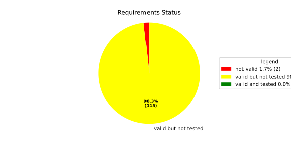
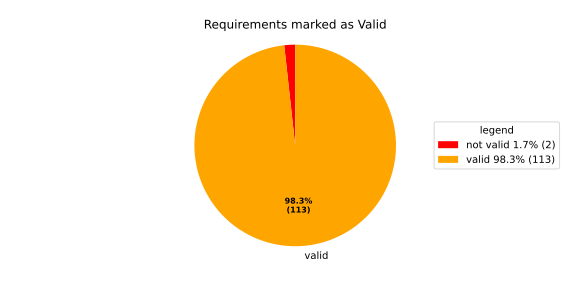
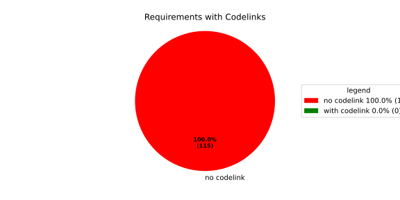

Verification Statistics#
Overview#

In Detail#


No needs passed the filters
Failed Tests
Hint: This table should be empty. Before a PR can be merged all tests have to be successful.
No needs passed the filters
Skipped / Disabled Tests
No needs passed the filters
All passed Tests#
No needs passed the filters
Details About Testcases#
No needs passed the filters
No needs passed the filters
Test Log Files#
tests-report/tests/integration/process_simple_rep_failure/process_simple_rep_failure/test.log
exec ${PAGER:-/usr/bin/less} "$0" || exit 1
Executing tests from //tests/integration/process_simple_rep_failure:process_simple_rep_failure
-----------------------------------------------------------------------------
============================= test session starts ==============================
platform linux -- Python 3.12.12, pytest-9.0.3, pluggy-1.5.0
rootdir: /home/runner/.bazel/sandbox/processwrapper-sandbox/1102/execroot/_main/bazel-out/k8-fastbuild/bin/tests/integration/process_simple_rep_failure/process_simple_rep_failure.runfiles/score_itf+
configfile: pytest.ini
collected 1 item
../score_itf+::test_recovery_action_simple_rep_failure
-------------------------------- live log setup --------------------------------
[2026-06-24 06:12:12.130] [INFO] [score.itf.plugins.docker] Executing custom image bootstrap command: tests/utils/environments/x86_64-linux/x86_64-linux.sh
[2026-06-24 06:12:12.496] [DEBUG] [docker.utils.config] Trying paths: ['/home/runner/.docker/config.json', '/home/runner/.dockercfg']
[2026-06-24 06:12:12.497] [DEBUG] [docker.utils.config] Found file at path: /home/runner/.docker/config.json
[2026-06-24 06:12:12.497] [DEBUG] [docker.auth] Found 'auths' section
[2026-06-24 06:12:12.497] [DEBUG] [docker.auth] Found entry (registry='https://index.docker.io/v1/', username='githubactions')
[2026-06-24 06:12:12.519] [DEBUG] [urllib3.connectionpool] http://localhost:None "GET /version HTTP/1.1" 200 823
[2026-06-24 06:12:12.622] [DEBUG] [urllib3.connectionpool] http://localhost:None "POST /v1.48/containers/create HTTP/1.1" 201 88
[2026-06-24 06:12:12.628] [DEBUG] [urllib3.connectionpool] http://localhost:None "GET /v1.48/containers/743ccf1548891dc53049cae01bd42750812d07c823c9020d704d0cb1fbdd6723/json HTTP/1.1" 200 None
[2026-06-24 06:12:12.791] [DEBUG] [urllib3.connectionpool] http://localhost:None "POST /v1.48/containers/743ccf1548891dc53049cae01bd42750812d07c823c9020d704d0cb1fbdd6723/start HTTP/1.1" 204 0
[2026-06-24 06:12:12.792] [DEBUG] [docker.utils.config] Trying paths: ['/home/runner/.docker/config.json', '/home/runner/.dockercfg']
[2026-06-24 06:12:12.792] [DEBUG] [docker.utils.config] Found file at path: /home/runner/.docker/config.json
[2026-06-24 06:12:12.794] [DEBUG] [docker.auth] Found 'auths' section
[2026-06-24 06:12:12.794] [DEBUG] [docker.auth] Found entry (registry='https://index.docker.io/v1/', username='githubactions')
[2026-06-24 06:12:12.808] [DEBUG] [urllib3.connectionpool] http://localhost:None "GET /version HTTP/1.1" 200 823
[2026-06-24 06:12:13.081] [INFO] [tests.utils.testing_utils.setup_test] Test case setup finished
-------------------------------- live log call ---------------------------------
[2026-06-24 06:12:13.270] [INFO] [launch_manager] 2026/06/24 06:12:13.1533267 3404269 000 ECU1 LM LM log debug verbose 1 Launch Manager Started !!!!
[2026-06-24 06:12:13.270] [INFO] [launch_manager] 2026/06/24 06:12:13.1533267 3404273 000 ECU1 LM LM log debug verbose 1
[2026-06-24 06:12:13.271] [INFO] [launch_manager] Loading LCM Configurations...
[2026-06-24 06:12:13.271] [INFO] [launch_manager] 2026/06/24 06:12:13.1533267 3404274 000 ECU1 LM LM log debug verbose 1
[2026-06-24 06:12:13.271] [INFO] [launch_manager] ECUCFG_ENV_VAR_ROOTFOLDER set successfully
[2026-06-24 06:12:13.271] [INFO] [launch_manager] 2026/06/24 06:12:13.1533267 3404276 000 ECU1 LM LM log debug verbose 5
[2026-06-24 06:12:13.271] [INFO] [launch_manager] FlatBufferParser::getModeGroupPgName: MainPG ( IdentifierHash: 18079021346025578134 )
[2026-06-24 06:12:13.271] [INFO] [launch_manager] 2026/06/24 06:12:13.1533267 3404278 000 ECU1 LM LM log debug verbose 5
[2026-06-24 06:12:13.303] [INFO] [launch_manager] FlatBufferParser::getModeGroupPgStateName: MainPG/Startup ( IdentifierHash: 10504605499600661529 )
[2026-06-24 06:12:13.303] [INFO] [launch_manager] 2026/06/24 06:12:13.1533268 3404279 000 ECU1 LM LM log debug verbose 5 FlatBufferParser::getModeGroupPgStateName: MainPG/run_target_app_does_report_krunning_in_time ( IdentifierHash: 11934981641920773349 )
[2026-06-24 06:12:13.303] [INFO] [launch_manager] 2026/06/24 06:12:13.1533268 3404280 000 ECU1 LM LM log debug verbose 5
[2026-06-24 06:12:13.304] [INFO] [launch_manager] FlatBufferParser::getModeGroupPgStateName: MainPG/run_target_app_does_not_report_krunning_in_time ( IdentifierHash: 7672161913816744053 )
[2026-06-24 06:12:13.304] [INFO] [launch_manager] 2026/06/24 06:12:13.1533268 3404281 000 ECU1 LM LM log debug verbose 5
[2026-06-24 06:12:13.304] [INFO] [launch_manager] FlatBufferParser::getModeGroupPgStateName: MainPG/Off ( IdentifierHash: 15281793077830264047 )
[2026-06-24 06:12:13.304] [INFO] [launch_manager] 2026/06/24 06:12:13.1533268 3404283 000 ECU1 LM LM log debug verbose 5
[2026-06-24 06:12:13.304] [INFO] [launch_manager] FlatBufferParser::getModeGroupPgStateName: MainPG/fallback_run_target ( IdentifierHash: 4059409696722237352 )
[2026-06-24 06:12:13.304] [INFO] [launch_manager] 2026/06/24 06:12:13.1533268 3404285 000 ECU1 LM LM log debug verbose 4
[2026-06-24 06:12:13.304] [INFO] [launch_manager] parseProcessConfigurations: Process index: 0 executable_path_: /tmp/tests/process_simple_rep_failure/control_client_mock
[2026-06-24 06:12:13.304] [INFO] [launch_manager] 2026/06/24 06:12:13.1533268 3404286 000 ECU1 LM LM log debug verbose 3
[2026-06-24 06:12:13.305] [INFO] [launch_manager] Process control_client_mock is Reporting execution state
[2026-06-24 06:12:13.305] [INFO] [launch_manager] 2026/06/24 06:12:13.1533268 3404287 000 ECU1 LM LM log debug verbose 1 Process is STATE_MANAGEMENT function Cluster Affiliation
[2026-06-24 06:12:13.307] [INFO] [launch_manager] 2026/06/24 06:12:13.1533269 3404288 000 ECU1 LM LM log debug verbose 3
[2026-06-24 06:12:13.307] [INFO] [launch_manager] Process control_client_mock is Self terminating
[2026-06-24 06:12:13.307] [INFO] [launch_manager] 2026/06/24 06:12:13.1533269 3404289 000 ECU1 LM LM log debug verbose 4
[2026-06-24 06:12:13.308] [INFO] [launch_manager] ParseProcessProcessGroup: id:::pg_name_: MainPG , pg_state_name_: MainPG/Startup
[2026-06-24 06:12:13.308] [INFO] [launch_manager] 2026/06/24 06:12:13.1533269 3404291 000 ECU1 LM LM log debug verbose 4
[2026-06-24 06:12:13.309] [INFO] [launch_manager] ParseProcessProcessGroup: id:::pg_name_: MainPG , pg_state_name_: MainPG/run_target_app_does_report_krunning_in_time
[2026-06-24 06:12:13.309] [INFO] [launch_manager] 2026/06/24 06:12:13.1533269 3404292 000 ECU1 LM LM log debug verbose 4
[2026-06-24 06:12:13.310] [INFO] [launch_manager] ParseProcessProcessGroup: id:::pg_name_: MainPG , pg_state_name_: MainPG/run_target_app_does_not_report_krunning_in_time
[2026-06-24 06:12:13.310] [INFO] [launch_manager] 2026/06/24 06:12:13.1533269 3404293 000 ECU1 LM LM log debug verbose 4
[2026-06-24 06:12:13.310] [INFO] [launch_manager] ParseProcessProcessGroup: id:::pg_name_: MainPG , pg_state_name_: MainPG/fallback_run_target
[2026-06-24 06:12:13.310] [INFO] [launch_manager] 2026/06/24 06:12:13.1533269 3404294 000 ECU1 LM LM log debug verbose 4
[2026-06-24 06:12:13.310] [INFO] [launch_manager] parseProcessConfigurations: Process index: 1 executable_path_: /tmp/tests/process_simple_rep_failure/process_simple_reporting
[2026-06-24 06:12:13.310] [INFO] [launch_manager] 2026/06/24 06:12:13.1533269 3404296 000 ECU1 LM LM log debug verbose 3
[2026-06-24 06:12:13.310] [INFO] [launch_manager] Process component_does_report_krunning_in_time is Reporting execution state
[2026-06-24 06:12:13.310] [INFO] [launch_manager] 2026/06/24 06:12:13.1533269 3404296 000 ECU1 LM LM log debug verbose 1
[2026-06-24 06:12:13.310] [INFO] [launch_manager] Process is NOT associated with any function Cluster Affiliation
[2026-06-24 06:12:13.311] [INFO] [launch_manager] 2026/06/24 06:12:13.1533269 3404298 000 ECU1 LM LM log debug verbose 3
[2026-06-24 06:12:13.311] [INFO] [launch_manager] Process component_does_report_krunning_in_time is Self terminating
[2026-06-24 06:12:13.311] [INFO] [launch_manager] 2026/06/24 06:12:13.1533270 3404299 000 ECU1 LM LM log debug verbose 4
[2026-06-24 06:12:13.311] [INFO] [launch_manager] ParseProcessProcessGroup: id:::pg_name_: MainPG , pg_state_name_: MainPG/run_target_app_does_report_krunning_in_time
[2026-06-24 06:12:13.311] [INFO] [launch_manager] 2026/06/24 06:12:13.1533271 3404317 000 ECU1 LM LM log debug verbose 4 parseProcessConfigurations: Process index: 2 executable_path_: /tmp/tests/process_simple_rep_failure/process_simple_reporting
[2026-06-24 06:12:13.311] [INFO] [launch_manager] 2026/06/24 06:12:13.1533272 3404318 000 ECU1 LM LM log debug verbose 3
[2026-06-24 06:12:13.316] [INFO] [launch_manager] Process component_does_not_report_krunning_in_time is Reporting execution state
[2026-06-24 06:12:13.316] [INFO] [launch_manager] 2026/06/24 06:12:13.1533272 3404319 000 ECU1 LM LM log debug verbose 1
[2026-06-24 06:12:13.317] [INFO] [launch_manager] Process is NOT associated with any function Cluster Affiliation
[2026-06-24 06:12:13.317] [INFO] [launch_manager] 2026/06/24 06:12:13.1533272 3404322 000 ECU1 LM LM log debug verbose 3
[2026-06-24 06:12:13.317] [INFO] [launch_manager] Process component_does_not_report_krunning_in_time is Self terminating
[2026-06-24 06:12:13.317] [INFO] [launch_manager] 2026/06/24 06:12:13.1533272 3404324 000 ECU1 LM LM log debug verbose 4
[2026-06-24 06:12:13.317] [INFO] [launch_manager] ParseProcessProcessGroup: id:::pg_name_: MainPG , pg_state_name_: MainPG/run_target_app_does_not_report_krunning_in_time
[2026-06-24 06:12:13.317] [INFO] [launch_manager] 2026/06/24 06:12:13.1533272 3404327 000 ECU1 LM LM log debug verbose 4
[2026-06-24 06:12:13.317] [INFO] [launch_manager] parseProcessConfigurations: Process index: 3 executable_path_: /tmp/tests/process_simple_rep_failure/verification_process
[2026-06-24 06:12:13.317] [INFO] [launch_manager] 2026/06/24 06:12:13.1533273 3404328 000 ECU1 LM LM log debug verbose 3
[2026-06-24 06:12:13.322] [INFO] [launch_manager] Process verification_component is NOT Reporting execution state
[2026-06-24 06:12:13.322] [INFO] [launch_manager] 2026/06/24 06:12:13.1533273 3404330 000 ECU1 LM LM log debug verbose 1
[2026-06-24 06:12:13.322] [INFO] [launch_manager] Process is NOT associated with any function Cluster Affiliation
[2026-06-24 06:12:13.322] [INFO] [launch_manager] 2026/06/24 06:12:13.1533273 3404332 000 ECU1 LM LM log debug verbose 3
[2026-06-24 06:12:13.322] [INFO] [launch_manager] Process verification_component is Self terminating
[2026-06-24 06:12:13.323] [INFO] [launch_manager] 2026/06/24 06:12:13.1533273 3404334 000 ECU1 LM LM log debug verbose 4
[2026-06-24 06:12:13.326] [INFO] [launch_manager] ParseProcessProcessGroup: id:::pg_name_: MainPG , pg_state_name_: MainPG/fallback_run_target
[2026-06-24 06:12:13.326] [INFO] [launch_manager] 2026/06/24 06:12:13.1533273 3404336 000 ECU1 LM LM log debug verbose 3
[2026-06-24 06:12:13.326] [INFO] [launch_manager] Loading SWCL Nr. 0 Succeeded
[2026-06-24 06:12:13.326] [INFO] [launch_manager] 2026/06/24 06:12:13.1533273 3404337 000 ECU1 LM LM log debug verbose 2
[2026-06-24 06:12:13.326] [INFO] [launch_manager] 1 process group(s)
[2026-06-24 06:12:13.326] [INFO] [launch_manager] 2026/06/24 06:12:13.1533274 3404339 000 ECU1 LM LM log debug verbose 3
[2026-06-24 06:12:13.327] [INFO] [launch_manager] Creating graph with 4 nodes
[2026-06-24 06:12:13.327] [INFO] [launch_manager] 2026/06/24 06:12:13.1533274 3404341 000 ECU1 LM LM log debug verbose 1
[2026-06-24 06:12:13.327] [INFO] [launch_manager] Process groups initialized successfully
[2026-06-24 06:12:13.327] [INFO] [launch_manager] 2026/06/24 06:12:13.1533274 3404342 000 ECU1 LM LM log debug verbose 1
[2026-06-24 06:12:13.327] [INFO] [launch_manager] Process Group initialization done
[2026-06-24 06:12:13.327] [INFO] [launch_manager] 2026/06/24 06:12:13.1533274 3404344 000 ECU1 LM LM log debug verbose 3
[2026-06-24 06:12:13.327] [INFO] [launch_manager] Creating Safe Process Map with 4 entries
[2026-06-24 06:12:13.327] [INFO] [launch_manager] 2026/06/24 06:12:13.1533274 3404346 000 ECU1 LM LM log debug verbose 2
[2026-06-24 06:12:13.327] [INFO] [launch_manager] Creating job queue with capacity 1024
[2026-06-24 06:12:13.328] [INFO] [launch_manager] 2026/06/24 06:12:13.1533274 3404348 000 ECU1 LM LM log debug verbose 1
[2026-06-24 06:12:13.328] [INFO] [launch_manager] Creating worker threads...
[2026-06-24 06:12:13.328] [INFO] [launch_manager] 2026/06/24 06:12:13.1533276 3404365 000 ECU1 LM LM log debug verbose 7
[2026-06-24 06:12:13.328] [INFO] [launch_manager] Process group index 0 (with name MainPG ) has 4 processes
[2026-06-24 06:12:13.333] [INFO] [launch_manager] 2026/06/24 06:12:13.1533276 3404366 000 ECU1 LM LM log debug verbose 2 Creating process node with id: 0
[2026-06-24 06:12:13.333] [INFO] [launch_manager] 2026/06/24 06:12:13.1533276 3404367 000 ECU1 LM LM log debug verbose 5 Process 0 has 0 start dependencies
[2026-06-24 06:12:13.333] [INFO] [launch_manager] 2026/06/24 06:12:13.1533276 3404367 000 ECU1 LM LM log debug verbose 2 Creating process node with id: 1
[2026-06-24 06:12:13.333] [INFO] [launch_manager] 2026/06/24 06:12:13.1533276 3404367 000 ECU1 LM LM log debug verbose 5 Process 1 has 0 start dependencies
[2026-06-24 06:12:13.333] [INFO] [launch_manager] 2026/06/24 06:12:13.1533276 3404367 000 ECU1 LM LM log debug verbose 2 Creating process node with id: 2
[2026-06-24 06:12:13.333] [INFO] [launch_manager] 2026/06/24 06:12:13.1533277 3404368 000 ECU1 LM LM log debug verbose 5 Process 2 has 0 start dependencies
[2026-06-24 06:12:13.333] [INFO] [launch_manager] 2026/06/24 06:12:13.1533277 3404368 000 ECU1 LM LM log debug verbose 2 Creating process node with id: 3
[2026-06-24 06:12:13.333] [INFO] [launch_manager] 2026/06/24 06:12:13.1533277 3404368 000 ECU1 LM LM log debug verbose 5 Process 3 has 0 start dependencies
[2026-06-24 06:12:13.333] [INFO] [launch_manager] 2026/06/24 06:12:13.1533277 3404368 000 ECU1 LM LM log debug verbose 3 Created 4 process nodes
[2026-06-24 06:12:13.334] [INFO] [launch_manager] 2026/06/24 06:12:13.1533277 3404369 000 ECU1 LM LM log debug verbose 2 Creating successor lists for process group MainPG
[2026-06-24 06:12:13.334] [INFO] [launch_manager] 2026/06/24 06:12:13.1533277 3404369 000 ECU1 LM LM log debug verbose 1 Graphs initialized
[2026-06-24 06:12:13.334] [INFO] [launch_manager] 2026/06/24 06:12:13.1533277 3404371 000 ECU1 LM Fcty log info verbose 2 Factory for FlatCfg MachineConfig: Loading of HM Machine Configuration succeeded.
[2026-06-24 06:12:13.346] [INFO] [launch_manager] 2026/06/24 06:12:13.1533277 3404372 000 ECU1 LM Fcty log debug verbose 3 Factory for FlatCfg MachineConfig: Alive Supervision buffer size: 100
[2026-06-24 06:12:13.346] [INFO] [launch_manager] 2026/06/24 06:12:13.1533277 3404372 000 ECU1 LM Fcty log debug verbose 3 Factory for FlatCfg MachineConfig: Monitor buffer size: 512
[2026-06-24 06:12:13.346] [INFO] [launch_manager] 2026/06/24 06:12:13.1533277 3404372 000 ECU1 LM Fcty log debug verbose 4 Factory for FlatCfg MachineConfig: Periodicity: 50000000 ns
[2026-06-24 06:12:13.347] [INFO] [launch_manager] 2026/06/24 06:12:13.1533277 3404372 000 ECU1 LM Fcty log debug verbose 3 Factory for FlatCfg MachineConfig: Configured watchdogs: 0
[2026-06-24 06:12:13.347] [INFO] [launch_manager] 2026/06/24 06:12:13.1533277 3404372 000 ECU1 LM Fcty log warn verbose 2 Factory for FlatCfg MachineConfig: No watchdog configured
[2026-06-24 06:12:13.347] [INFO] [launch_manager] 2026/06/24 06:12:13.1533277 3404373 000 ECU1 LM Fcty log debug verbose 2 Software Cluster Handler starts constructing workers: MainCluster
[2026-06-24 06:12:13.347] [INFO] [launch_manager] 2026/06/24 06:12:13.1533277 3404373 000 ECU1 LM Fcty log debug verbose 3 Factory for FlatCfg AR24-11: Successfully created Process States: control_client_mock
[2026-06-24 06:12:13.347] [INFO] [launch_manager] 2026/06/24 06:12:13.1533277 3404374 000 ECU1 LM Fcty log debug verbose 3 Factory for FlatCfg AR24-11: Number of constructed Process States: 1
[2026-06-24 06:12:13.347] [INFO] [launch_manager] 2026/06/24 06:12:13.1533277 3404375 000 ECU1 LM Fcty log debug verbose 3 Factory for FlatCfg AR24-11: Successfully created Alive interface IPC with path: lifecycle_health_control_client_mock
[2026-06-24 06:12:13.347] [INFO] [launch_manager] 2026/06/24 06:12:13.1533277 3404375 000 ECU1 LM Fcty log debug verbose 3 Factory for FlatCfg AR24-11: Number of constructed Alive interface IPCs: 1
[2026-06-24 06:12:13.347] [INFO] [launch_manager] 2026/06/24 06:12:13.1533277 3404375 000 ECU1 LM Fcty log debug verbose 3 Factory for FlatCfg AR24-11: Successfully created Alive Interface: /lifecycle_health_control_client_mock
[2026-06-24 06:12:13.347] [INFO] [launch_manager] 2026/06/24 06:12:13.1533277 3404375 000 ECU1 LM Fcty log debug verbose 3 Factory for FlatCfg AR24-11: Number of constructed Alive interfaces: 1
[2026-06-24 06:12:13.347] [INFO] [launch_manager] 2026/06/24 06:12:13.1533277 3404375 000 ECU1 LM Fcty log debug verbose 3 Factory for FlatCfg AR24-11: Successfully created supervision checkpoint: control_client_mock_checkpoint
[2026-06-24 06:12:13.347] [INFO] [launch_manager] 2026/06/24 06:12:13.1533277 3404376 000 ECU1 LM Fcty log debug verbose 3 Factory for FlatCfg AR24-11: Number of constructed supervision checkpoints: 1
[2026-06-24 06:12:13.347] [INFO] [launch_manager] 2026/06/24 06:12:13.1533277 3404376 000 ECU1 LM Fcty log debug verbose 3 Factory for FlatCfg AR24-11: Successfully created alive supervision worker object: control_client_mock_alive_supervision
[2026-06-24 06:12:13.347] [INFO] [launch_manager] 2026/06/24 06:12:13.1533277 3404376 000 ECU1 LM Fcty log debug verbose 3 Factory for FlatCfg AR24-11: Number of constructed alive supervisions: 1
[2026-06-24 06:12:13.348] [INFO] [launch_manager] 2026/06/24 06:12:13.1533277 3404376 000 ECU1 LM Fcty log info verbose 2 Phm Daemon: The (configured) periodicity in [ns] is set to: 50000000
[2026-06-24 06:12:13.356] [INFO] [launch_manager] 2026/06/24 06:12:13.1533277 3404377 000 ECU1 LM Fcty log debug verbose 2 Phm Daemon: The accuracy of the monotonic system clock in [ns] is: 1
[2026-06-24 06:12:13.356] [INFO] [launch_manager] 2026/06/24 06:12:13.1533277 3404377 000 ECU1 LM Fcty log debug verbose 3 AliveMonitor: Initialization took 0 ms
[2026-06-24 06:12:13.356] [INFO] [launch_manager] 2026/06/24 06:12:13.1533277 3404377 000 ECU1 LM LM log info verbose 1 LCM started successfully
[2026-06-24 06:12:13.356] [INFO] [launch_manager] 2026/06/24 06:12:13.1533277 3404377 000 ECU1 LM LM log debug verbose 3 clock() at run(): 40.824000 ms
[2026-06-24 06:12:13.356] [INFO] [launch_manager] 2026/06/24 06:12:13.1533278 3404378 000 ECU1 LM LM log debug verbose 1 =============STARTING MAINPG STARTUP STATE============
[2026-06-24 06:12:13.356] [INFO] [launch_manager] 2026/06/24 06:12:13.1533278 3404378 000 ECU1 LM LM log debug verbose 9 Graph::setState changes from kSuccess to kInTransition for PG 0 ( MainPG )
[2026-06-24 06:12:13.356] [INFO] [launch_manager] 2026/06/24 06:12:13.1533278 3404379 000 ECU1 LM LM log debug verbose 2 Stop Dependencies: 0
[2026-06-24 06:12:13.356] [INFO] [launch_manager] 2026/06/24 06:12:13.1533278 3404379 000 ECU1 LM LM log debug verbose 2 Stop Dependencies: 0
[2026-06-24 06:12:13.357] [INFO] [launch_manager] 2026/06/24 06:12:13.1533278 3404379 000 ECU1 LM LM log debug verbose 2 Stop Dependencies: 0
[2026-06-24 06:12:13.357] [INFO] [launch_manager] 2026/06/24 06:12:13.1533278 3404379 000 ECU1 LM LM log debug verbose 2 Stop Dependencies: 0
[2026-06-24 06:12:13.357] [INFO] [launch_manager] 2026/06/24 06:12:13.1533278 3404379 000 ECU1 LM LM log debug verbose 2 Start Dependencies: 0
[2026-06-24 06:12:13.360] [INFO] [launch_manager] 2026/06/24 06:12:13.1533278 3404380 000 ECU1 LM LM log debug verbose 2
[2026-06-24 06:12:13.360] [INFO] [launch_manager] Start Dependencies: 0
[2026-06-24 06:12:13.360] [INFO] [launch_manager] 2026/06/24 06:12:13.1533278 3404382 000 ECU1 LM LM log debug verbose 2 Start Dependencies: 0
[2026-06-24 06:12:13.360] [INFO] [launch_manager] 2026/06/24 06:12:13.1533278 3404382 000 ECU1 LM LM log debug verbose 2 Start Dependencies: 0
[2026-06-24 06:12:13.360] [INFO] [launch_manager] 2026/06/24 06:12:13.1533278 3404383 000 ECU1 LM LM log debug verbose 6 Starting process 0 ( control_client_mock ) from executable /tmp/tests/process_simple_rep_failure/control_client_mock
[2026-06-24 06:12:13.360] [INFO] [launch_manager] 2026/06/24 06:12:13.1533278 3404384 000 ECU1 LM LM log debug verbose 3 Initialize the control client for control_client_mock process
[2026-06-24 06:12:13.361] [INFO] [launch_manager] 2026/06/24 06:12:13.1533278 3404384 000 ECU1 LM LM log debug verbose 1 ControlClientChannel initialized
[2026-06-24 06:12:13.361] [INFO] [launch_manager] 2026/06/24 06:12:13.1533279 3404389 000 ECU1 LM LM log debug verbose 4 startProcess pid 69 received for process: control_client_mock
[2026-06-24 06:12:13.361] [INFO] [launch_manager] 2026/06/24 06:12:13.1533279 3404389 000 ECU1 LM LM log debug verbose 1 ControlClientChannel obtained from sync.
[2026-06-24 06:12:13.361] [INFO] [launch_manager] [==========] Running 1 test from 1 test suite.
[2026-06-24 06:12:13.361] [INFO] [launch_manager] [----------] Global test environment set-up.
[2026-06-24 06:12:13.361] [INFO] [launch_manager] [----------] 1 test from RecoveryActionSimpleRepFailure
[2026-06-24 06:12:13.361] [INFO] [launch_manager] [ RUN ] RecoveryActionSimpleRepFailure.ControlClientMock
[2026-06-24 06:12:13.361] [INFO] [launch_manager] [ STEP ] Report running from ControlClientMock
[2026-06-24 06:12:13.361] [INFO] [launch_manager] [ END STEP ] Report running from ControlClientMock
[2026-06-24 06:12:13.362] [INFO] [launch_manager] [ STEP ] Activate RunTarget run_target_app_does_report_krunning_in_time
[2026-06-24 06:12:13.362] [INFO] [launch_manager] 2026/06/24 06:12:13.1533284 3404442 000 ECU1 LM LM log debug verbose 1 Request sent. Waiting for acknowledgment...
[2026-06-24 06:12:13.362] [INFO] [launch_manager] 2026/06/24 06:12:13.1533284 3404445 000 ECU1 LM LM log debug verbose 8 ProcessGroupManager::ControlClientHandler: got request kSetStateRequest ( 16 ) re state MainPG/run_target_app_does_report_krunning_in_time of PG MainPG
[2026-06-24 06:12:13.362] [INFO] [launch_manager] 2026/06/24 06:12:13.1533284 3404446 000 ECU1 LM LM log debug verbose 6 Pending state for process group MainPG changed from to MainPG/run_target_app_does_report_krunning_in_time
[2026-06-24 06:12:13.362] [INFO] [launch_manager] 2026/06/24 06:12:13.1533284 3404446 000 ECU1 LM LM log debug verbose 9 Graph::setState changes from kInTransition to kCancelled for PG 0 ( MainPG )
[2026-06-24 06:12:13.362] [INFO] [launch_manager] 2026/06/24 06:12:13.1533284 3404446 000 ECU1 LM LM log debug verbose 1 Control Client handler nudged
[2026-06-24 06:12:13.362] [INFO] [launch_manager] 2026/06/24 06:12:13.1533284 3404447 000 ECU1 LM LM log debug verbose 1 Request acknowledged.
[2026-06-24 06:12:13.362] [INFO] [launch_manager] 2026/06/24 06:12:13.1533284 3404447 000 ECU1 LM LM log debug verbose 1 Request acknowledged.
[2026-06-24 06:12:13.362] [INFO] [launch_manager] 2026/06/24 06:12:13.1533285 3404458 000 ECU1 LM LM log debug verbose 8 Got kRunning for pid 69 ( control_client_mock ) process 0 of group MainPG
[2026-06-24 06:12:13.362] [INFO] [launch_manager] 2026/06/24 06:12:13.1533286 3404458 000 ECU1 LM LM log debug verbose 7 startProcess for MainPG process 0 ( control_client_mock ) done
[2026-06-24 06:12:13.362] [INFO] [launch_manager] 2026/06/24 06:12:13.1533286 3404458 000 ECU1 LM LM log debug verbose 1 Control Client handler nudged
[2026-06-24 06:12:13.362] [INFO] [launch_manager] 2026/06/24 06:12:13.1533286 3404458 000 ECU1 LM LM log fatal verbose 3 clock() at failed initial state transition: 42.360000 ms
[2026-06-24 06:12:13.362] [INFO] [launch_manager] 2026/06/24 06:12:13.1533286 3404459 000 ECU1 LM LM log debug verbose 9 Graph::setState changes from kCancelled to kUndefinedState for PG 0 ( MainPG )
[2026-06-24 06:12:13.363] [INFO] [launch_manager] 2026/06/24 06:12:13.1533286 3404459 000 ECU1 LM LM log debug verbose 1 Control Client handler nudged
[2026-06-24 06:12:13.363] [INFO] [launch_manager] 2026/06/24 06:12:13.1533287 3404468 000 ECU1 LM LM log debug verbose 6
[2026-06-24 06:12:13.369] [INFO] [launch_manager] Pending state for process group MainPG changed from MainPG/run_target_app_does_report_krunning_in_time to
[2026-06-24 06:12:13.369] [INFO] [launch_manager] 2026/06/24 06:12:13.1533287 3404469 000 ECU1 LM LM log debug verbose 4 Start transition to MainPG/run_target_app_does_report_krunning_in_time for PG MainPG
[2026-06-24 06:12:13.369] [INFO] [launch_manager] 2026/06/24 06:12:13.1533287 3404470 000 ECU1 LM LM log debug verbose 9 Graph::setState changes from kUndefinedState to kInTransition for PG 0 ( MainPG )
[2026-06-24 06:12:13.369] [INFO] [launch_manager] 2026/06/24 06:12:13.1533287 3404471 000 ECU1 LM LM log debug verbose 2 Stop Dependencies: 0
[2026-06-24 06:12:13.370] [INFO] [launch_manager] 2026/06/24 06:12:13.1533287 3404472 000 ECU1 LM LM log debug verbose 2 Stop Dependencies: 0
[2026-06-24 06:12:13.370] [INFO] [launch_manager] 2026/06/24 06:12:13.1533287 3404473 000 ECU1 LM LM log debug verbose 2 Stop Dependencies: 0
[2026-06-24 06:12:13.370] [INFO] [launch_manager] 2026/06/24 06:12:13.1533287 3404474 000 ECU1 LM LM log debug verbose 2 Stop Dependencies: 0
[2026-06-24 06:12:13.370] [INFO] [launch_manager] 2026/06/24 06:12:13.1533287 3404474 000 ECU1 LM LM log debug verbose 2 Start Dependencies: 0
[2026-06-24 06:12:13.370] [INFO] [launch_manager] 2026/06/24 06:12:13.1533287 3404475 000 ECU1 LM LM log debug verbose 2 Start Dependencies: 0
[2026-06-24 06:12:13.370] [INFO] [launch_manager] 2026/06/24 06:12:13.1533287 3404476 000 ECU1 LM LM log debug verbose 2 Start Dependencies: 0
[2026-06-24 06:12:13.370] [INFO] [launch_manager] 2026/06/24 06:12:13.1533287 3404477 000 ECU1 LM LM log debug verbose 2 Start Dependencies: 0
[2026-06-24 06:12:13.370] [INFO] [launch_manager] 2026/06/24 06:12:13.1533288 3404478 000 ECU1 LM LM log debug verbose 6 Starting process 1 ( component_does_report_krunning_in_time ) from executable /tmp/tests/process_simple_rep_failure/process_simple_reporting
[2026-06-24 06:12:13.370] [INFO] [launch_manager] 2026/06/24 06:12:13.1533288 3404485 000 ECU1 LM LM log debug verbose 4 startProcess pid 71 received for process: component_does_report_krunning_in_time
[2026-06-24 06:12:13.370] [INFO] [launch_manager] [==========] Running 1 test from 1 test suite.
[2026-06-24 06:12:13.371] [INFO] [launch_manager] [----------] Global test environment set-up.
[2026-06-24 06:12:13.371] [INFO] [launch_manager] [----------] 1 test from ProcessSimpleRepFailure
[2026-06-24 06:12:13.371] [INFO] [launch_manager] [ RUN ] ProcessSimpleRepFailure.ProcessSimpleReporting
[2026-06-24 06:12:13.371] [INFO] [launch_manager] [ STEP ] Check args
[2026-06-24 06:12:13.371] [INFO] [launch_manager] [ END STEP ] Check args
[2026-06-24 06:12:13.371] [INFO] [launch_manager] [ STEP ] Report running from ProcessSimpleReporting
[2026-06-24 06:12:13.374] [INFO] [launch_manager] 2026/06/24 06:12:13.1533328 3404884 000 ECU1 LM Sprv log debug verbose 6 Process with Id control_client_mock changed state PG MainPG/Startup PS 1
[2026-06-24 06:12:13.374] [INFO] [launch_manager] 2026/06/24 06:12:13.1533328 3404884 000 ECU1 LM Sprv log debug verbose 6 Process with Id control_client_mock changed state PG MainPG/Startup PS 2
[2026-06-24 06:12:13.374] [INFO] [launch_manager] 2026/06/24 06:12:13.1533328 3404885 000 ECU1 LM Sprv log debug verbose 6 Process with Id component_does_report_krunning_in_time changed state PG MainPG/run_target_app_does_report_krunning_in_time PS 1
[2026-06-24 06:12:13.374] [INFO] [launch_manager] 2026/06/24 06:12:13.1533328 3404885 000 ECU1 LM Sprv log info verbose 3 Alive Supervision ( control_client_mock_alive_supervision ) switched to OK.
[2026-06-24 06:12:13.392] [DEBUG] [tests.utils.testing_utils.run_until_file_deployed] Waiting for /tmp/tests/test_end
[2026-06-24 06:12:13.799] [INFO] [launch_manager] [ END STEP ] Report running from ProcessSimpleReporting
[2026-06-24 06:12:13.799] [INFO] [launch_manager] [ OK ] ProcessSimpleRepFailure.ProcessSimpleReporting (504 ms)
[2026-06-24 06:12:13.799] [INFO] [launch_manager] [----------] 1 test from ProcessSimpleRepFailure (504 ms total)
[2026-06-24 06:12:13.799] [INFO] [launch_manager] [----------] Global test environment tear-down
[2026-06-24 06:12:13.799] [INFO] [launch_manager] [==========] 1 test from 1 test suite ran. (504 ms total)
[2026-06-24 06:12:13.799] [INFO] [launch_manager] [ PASSED ] 1 test.
[2026-06-24 06:12:13.799] [INFO] [launch_manager] 2026/06/24 06:12:13.1533796 3409559 000 ECU1 LM LM log debug verbose 12 Child process 1 of MainPG pid 71 ( component_does_report_krunning_in_time ) for node True terminated with status 0
[2026-06-24 06:12:13.800] [INFO] [launch_manager] 2026/06/24 06:12:13.1533796 3409561 000 ECU1 LM LM log debug verbose 8
[2026-06-24 06:12:13.800] [INFO] [launch_manager] Got kRunning for pid 71 ( component_does_report_krunning_in_time ) process 1 of group MainPG
[2026-06-24 06:12:13.800] [INFO] [launch_manager] 2026/06/24 06:12:13.1533796 3409562 000 ECU1 LM LM log debug verbose 7 startProcess for MainPG process 1 ( component_does_report_krunning_in_time ) done
[2026-06-24 06:12:13.800] [INFO] [launch_manager] 2026/06/24 06:12:13.1533796 3409562 000 ECU1 LM LM log debug verbose 9 Graph::setState changes from kInTransition to kSuccess for PG 0 ( MainPG )
[2026-06-24 06:12:13.800] [INFO] [launch_manager] 2026/06/24 06:12:13.1533796 3409563 000 ECU1 LM LM log info verbose 7 Completed the request for PG MainPG to State MainPG/run_target_app_does_report_krunning_in_time in 511 ms
[2026-06-24 06:12:13.800] [INFO] [launch_manager] 2026/06/24 06:12:13.1533796 3409563 000 ECU1 LM LM log debug verbose 1 Control Client handler nudged
[2026-06-24 06:12:13.804] [INFO] [launch_manager] 2026/06/24 06:12:13.1533798 3409582 000 ECU1 LM LM log debug verbose 8
[2026-06-24 06:12:13.804] [INFO] [launch_manager] ProcessGroupManager::ControlClientHandler: Sending kSetStateSuccess ( 20 ) re state MainPG/run_target_app_does_report_krunning_in_time of PG MainPG
[2026-06-24 06:12:13.804] [INFO] [launch_manager] 2026/06/24 06:12:13.1533798 3409583 000 ECU1 LM LM log debug verbose 1 Response sent.
[2026-06-24 06:12:13.828] [INFO] [launch_manager] 2026/06/24 06:12:13.1533828 3409884 000 ECU1 LM Sprv log debug verbose 6 Process with Id component_does_report_krunning_in_time changed state PG MainPG/run_target_app_does_report_krunning_in_time PS 4
[2026-06-24 06:12:13.882] [INFO] [launch_manager] 2026/06/24 06:12:13.1533882 3410421 000 ECU1 LM LM log debug verbose 1 Response retrieved.
[2026-06-24 06:12:13.882] [INFO] [launch_manager] [ END STEP ] Activate RunTarget run_target_app_does_report_krunning_in_time
[2026-06-24 06:12:13.961] [DEBUG] [tests.utils.testing_utils.run_until_file_deployed] Waiting for /tmp/tests/test_end
[2026-06-24 06:12:14.560] [DEBUG] [tests.utils.testing_utils.run_until_file_deployed] Waiting for /tmp/tests/test_end
[2026-06-24 06:12:14.891] [INFO] [launch_manager] [ STEP ] Verify fallback run target has not been activated
[2026-06-24 06:12:14.892] [INFO] [launch_manager] [ END STEP ] Verify fallback run target has not been activated
[2026-06-24 06:12:14.892] [INFO] [launch_manager] [ STEP ] Activate RunTarget run_target_app_does_not_report_krunning_in_time
[2026-06-24 06:12:14.892] [INFO] [launch_manager] 2026/06/24 06:12:14.1534882 3420424 000 ECU1 LM LM log debug verbose 1 Request sent. Waiting for acknowledgment...
[2026-06-24 06:12:14.892] [INFO] [launch_manager] 2026/06/24 06:12:14.1534883 3420429 000 ECU1 LM LM log debug verbose 8 ProcessGroupManager::ControlClientHandler: got request kSetStateRequest ( 16 ) re state MainPG/run_target_app_does_not_report_krunning_in_time of PG MainPG
[2026-06-24 06:12:14.892] [INFO] [launch_manager] 2026/06/24 06:12:14.1534883 3420429 000 ECU1 LM LM log debug verbose 6 Pending state for process group MainPG changed from to MainPG/run_target_app_does_not_report_krunning_in_time
[2026-06-24 06:12:14.892] [INFO] [launch_manager] 2026/06/24 06:12:14.1534883 3420429 000 ECU1 LM LM log debug verbose 1 Request acknowledged.
[2026-06-24 06:12:14.892] [INFO] [launch_manager] 2026/06/24 06:12:14.1534883 3420430 000 ECU1 LM LM log debug verbose 6 Pending state for process group MainPG changed from MainPG/run_target_app_does_not_report_krunning_in_time to
[2026-06-24 06:12:14.892] [INFO] [launch_manager] 2026/06/24 06:12:14.1534883 3420430 000 ECU1 LM LM log debug verbose 4 Start transition to MainPG/run_target_app_does_not_report_krunning_in_time for PG MainPG
[2026-06-24 06:12:14.892] [INFO] [launch_manager] 2026/06/24 06:12:14.1534883 3420430 000 ECU1 LM LM log debug verbose 9 Graph::setState changes from kSuccess to kInTransition for PG 0 ( MainPG )
[2026-06-24 06:12:14.892] [INFO] [launch_manager] 2026/06/24 06:12:14.1534883 3420430 000 ECU1 LM LM log debug verbose 2 Stop Dependencies: 0
[2026-06-24 06:12:14.892] [INFO] [launch_manager] 2026/06/24 06:12:14.1534883 3420431 000 ECU1 LM LM log debug verbose 2 Stop Dependencies: 0
[2026-06-24 06:12:14.892] [INFO] [launch_manager] 2026/06/24 06:12:14.1534883 3420431 000 ECU1 LM LM log debug verbose 2 Stop Dependencies: 0
[2026-06-24 06:12:14.892] [INFO] [launch_manager] 2026/06/24 06:12:14.1534883 3420431 000 ECU1 LM LM log debug verbose 2 Stop Dependencies: 0
[2026-06-24 06:12:14.892] [INFO] [launch_manager] 2026/06/24 06:12:14.1534883 3420431 000 ECU1 LM LM log debug verbose 2 Start Dependencies: 0
[2026-06-24 06:12:14.893] [INFO] [launch_manager] 2026/06/24 06:12:14.1534883 3420431 000 ECU1 LM LM log debug verbose 2 Start Dependencies: 0
[2026-06-24 06:12:14.893] [INFO] [launch_manager] 2026/06/24 06:12:14.1534883 3420431 000 ECU1 LM LM log debug verbose 2 Start Dependencies: 0
[2026-06-24 06:12:14.893] [INFO] [launch_manager] 2026/06/24 06:12:14.1534883 3420432 000 ECU1 LM LM log debug verbose 2 Start Dependencies: 0
[2026-06-24 06:12:14.898] [INFO] [launch_manager] 2026/06/24 06:12:14.1534883 3420433 000 ECU1 LM LM log debug verbose 6 Starting process 2 ( component_does_not_report_krunning_in_time ) from executable /tmp/tests/process_simple_rep_failure/process_simple_reporting
[2026-06-24 06:12:14.898] [INFO] [launch_manager] 2026/06/24 06:12:14.1534884 3420439 000 ECU1 LM LM log debug verbose 4 startProcess pid 90 received for process: component_does_not_report_krunning_in_time
[2026-06-24 06:12:14.898] [INFO] [launch_manager] 2026/06/24 06:12:14.1534884 3420440 000 ECU1 LM LM log debug verbose 1 Request acknowledged.
[2026-06-24 06:12:14.898] [INFO] [launch_manager] [==========] Running 1 test from 1 test suite.
[2026-06-24 06:12:14.899] [INFO] [launch_manager] [----------] Global test environment set-up.
[2026-06-24 06:12:14.899] [INFO] [launch_manager] [----------] 1 test from ProcessSimpleRepFailure
[2026-06-24 06:12:14.899] [INFO] [launch_manager] [ RUN ] ProcessSimpleRepFailure.ProcessSimpleReporting
[2026-06-24 06:12:14.899] [INFO] [launch_manager] [ STEP ] Check args
[2026-06-24 06:12:14.899] [INFO] [launch_manager] [ END STEP ] Check args
[2026-06-24 06:12:14.899] [INFO] [launch_manager] [ STEP ] Report running from ProcessSimpleReporting
[2026-06-24 06:12:14.935] [INFO] [launch_manager] 2026/06/24 06:12:14.1534928 3420884 000 ECU1 LM Sprv log debug verbose 6 Process with Id component_does_not_report_krunning_in_time changed state PG MainPG/run_target_app_does_not_report_krunning_in_time PS 1
[2026-06-24 06:12:15.132] [DEBUG] [tests.utils.testing_utils.run_until_file_deployed] Waiting for /tmp/tests/test_end
[2026-06-24 06:12:15.705] [DEBUG] [tests.utils.testing_utils.run_until_file_deployed] Waiting for /tmp/tests/test_end
[2026-06-24 06:12:15.941] [INFO] [launch_manager] 2026/06/24 06:12:15.1535939 3430995 000 ECU1 LM LM log error verbose 1 Semaphore timedWait or post failed: Unable to wait or post on semaphores within the specified timeout.
[2026-06-24 06:12:15.941] [INFO] [launch_manager] 2026/06/24 06:12:15.1535939 3430996 000 ECU1 LM LM log warn verbose 5 Got kRunning timeout for process 2 ( component_does_not_report_krunning_in_time )
[2026-06-24 06:12:15.941] [INFO] [launch_manager] 2026/06/24 06:12:15.1535939 3430996 000 ECU1 LM LM log debug verbose 5 terminating process 2 ( component_does_not_report_krunning_in_time )
[2026-06-24 06:12:15.941] [INFO] [launch_manager] 2026/06/24 06:12:15.1535939 3430997 000 ECU1 LM LM log debug verbose 9 Requesting termination of process 2 of MainPG pid 90 ( component_does_not_report_krunning_in_time )
[2026-06-24 06:12:15.941] [INFO] [launch_manager] 2026/06/24 06:12:15.1535939 3430997 000 ECU1 LM LM log debug verbose 2 Request termination received for 90
[2026-06-24 06:12:15.979] [INFO] [launch_manager] 2026/06/24 06:12:15.1535978 3431384 000 ECU1 LM Sprv log debug verbose 6 Process with Id component_does_not_report_krunning_in_time changed state PG MainPG/run_target_app_does_not_report_krunning_in_time PS 3
[2026-06-24 06:12:16.347] [DEBUG] [tests.utils.testing_utils.run_until_file_deployed] Waiting for /tmp/tests/test_end
[2026-06-24 06:12:16.928] [DEBUG] [tests.utils.testing_utils.run_until_file_deployed] Waiting for /tmp/tests/test_end
[2026-06-24 06:12:17.042] [INFO] [launch_manager] 2026/06/24 06:12:17.1537037 3441977 000 ECU1 LM LM log warn verbose 5 Process 2 ( component_does_not_report_krunning_in_time ) did not respond to SIGTERM, sending SIGKILL
[2026-06-24 06:12:17.043] [INFO] [launch_manager] 2026/06/24 06:12:17.1537037 3441977 000 ECU1 LM LM log debug verbose 2 Forced termination received for pid 90
[2026-06-24 06:12:17.043] [INFO] [launch_manager] 2026/06/24 06:12:17.1537038 3441981 000 ECU1 LM LM log debug verbose 12 Child process 2 of MainPG pid 90 ( component_does_not_report_krunning_in_time ) for node True terminated with status 9
[2026-06-24 06:12:17.043] [INFO] [launch_manager] 2026/06/24 06:12:17.1537038 3441981 000 ECU1 LM LM log warn verbose 7 unexpected termination of process 2 pid 90 ( component_does_not_report_krunning_in_time )
[2026-06-24 06:12:17.043] [INFO] [launch_manager] 2026/06/24 06:12:17.1537038 3441982 000 ECU1 LM LM log debug verbose 9 Graph::setState changes from kInTransition to kAborting for PG 0 ( MainPG )
[2026-06-24 06:12:17.043] [INFO] [launch_manager] 2026/06/24 06:12:17.1537040 3441999 000 ECU1 LM LM log debug verbose 7 terminateProcess for MainPG process 2 ( component_does_not_report_krunning_in_time ) done
[2026-06-24 06:12:17.043] [INFO] [launch_manager] 2026/06/24 06:12:17.1537040 3442000 000 ECU1 LM LM log debug verbose 7 startProcess for MainPG process 2 ( component_does_not_report_krunning_in_time ) done
[2026-06-24 06:12:17.043] [INFO] [launch_manager] 2026/06/24 06:12:17.1537040 3442001 000 ECU1 LM LM log debug verbose 9 Graph::setState changes from kAborting to kUndefinedState for PG 0 ( MainPG )
[2026-06-24 06:12:17.044] [INFO] [launch_manager] 2026/06/24 06:12:17.1537040 3442001 000 ECU1 LM LM log debug verbose 1 Control Client handler nudged
[2026-06-24 06:12:17.051] [INFO] [launch_manager] 2026/06/24 06:12:17.1537041 3442016 000 ECU1 LM LM log debug verbose 8 ProcessGroupManager::ControlClientHandler: Sending kFailedUnexpectedTerminationOnEnter ( 23 ) re state MainPG/run_target_app_does_not_report_krunning_in_time of PG MainPG
[2026-06-24 06:12:17.051] [INFO] [launch_manager] 2026/06/24 06:12:17.1537041 3442016 000 ECU1 LM LM log debug verbose 1 Response sent.
[2026-06-24 06:12:17.051] [INFO] [launch_manager] 2026/06/24 06:12:17.1537041 3442017 000 ECU1 LM LM log warn verbose 3 Problem discovered in PG MainPG Activating Recovery state.
[2026-06-24 06:12:17.051] [INFO] [launch_manager] 2026/06/24 06:12:17.1537041 3442017 000 ECU1 LM LM log debug verbose 9
[2026-06-24 06:12:17.051] [INFO] [launch_manager] Graph::setState changes from kUndefinedState to kInTransition for PG 0 ( MainPG )
[2026-06-24 06:12:17.052] [INFO] [launch_manager] 2026/06/24 06:12:17.1537042 3442018 000 ECU1 LM LM log debug verbose 2 Stop Dependencies: 0
[2026-06-24 06:12:17.052] [INFO] [launch_manager] 2026/06/24 06:12:17.1537042 3442018 000 ECU1 LM LM log debug verbose 2 Stop Dependencies: 0
[2026-06-24 06:12:17.052] [INFO] [launch_manager] 2026/06/24 06:12:17.1537042 3442018 000 ECU1 LM LM log debug verbose 2 Stop Dependencies: 0
[2026-06-24 06:12:17.052] [INFO] [launch_manager] 2026/06/24 06:12:17.1537042 3442019 000 ECU1 LM LM log debug verbose 2 Stop Dependencies: 0
[2026-06-24 06:12:17.052] [INFO] [launch_manager] 2026/06/24 06:12:17.1537042 3442019 000 ECU1 LM LM log debug verbose 2 Start Dependencies: 0
[2026-06-24 06:12:17.052] [INFO] [launch_manager] 2026/06/24 06:12:17.1537042 3442020 000 ECU1 LM LM log debug verbose 2 Start Dependencies: 0
[2026-06-24 06:12:17.052] [INFO] [launch_manager] 2026/06/24 06:12:17.1537042 3442020 000 ECU1 LM LM log debug verbose 2 Start Dependencies: 0
[2026-06-24 06:12:17.052] [INFO] [launch_manager] 2026/06/24 06:12:17.1537042 3442021 000 ECU1 LM LM log debug verbose 2 Start Dependencies: 0
[2026-06-24 06:12:17.053] [INFO] [launch_manager] 2026/06/24 06:12:17.1537042 3442022 000 ECU1 LM LM log debug verbose 6 Starting process 3 ( verification_component ) from executable /tmp/tests/process_simple_rep_failure/verification_process
[2026-06-24 06:12:17.053] [INFO] [launch_manager] 2026/06/24 06:12:17.1537042 3442027 000 ECU1 LM LM log debug verbose 4 startProcess pid 115 received for process: verification_component
[2026-06-24 06:12:17.053] [INFO] [launch_manager] 2026/06/24 06:12:17.1537043 3442028 000 ECU1 LM LM log debug verbose 8 Considered kRunning for Non Reporting Process pid 115 ( verification_component ) process 3 of group MainPG
[2026-06-24 06:12:17.061] [INFO] [launch_manager] 2026/06/24 06:12:17.1537043 3442028 000 ECU1 LM LM log debug verbose 7 startProcess for MainPG process 3 ( verification_component ) done
[2026-06-24 06:12:17.061] [INFO] [launch_manager] 2026/06/24 06:12:17.1537043 3442028 000 ECU1 LM LM log debug verbose 9 Graph::setState changes from kInTransition to kSuccess for PG 0 ( MainPG )
[2026-06-24 06:12:17.061] [INFO] [launch_manager] 2026/06/24 06:12:17.1537043 3442029 000 ECU1 LM LM log info verbose 7 Completed the request for PG MainPG to State MainPG/fallback_run_target in 1 ms
[2026-06-24 06:12:17.061] [INFO] [launch_manager] 2026/06/24 06:12:17.1537043 3442029 000 ECU1 LM LM log debug verbose 1 Control Client handler nudged
[2026-06-24 06:12:17.061] [INFO] [launch_manager] 2026/06/24 06:12:17.1537044 3442042 000 ECU1 LM LM log debug verbose 8 ProcessGroupManager::ControlClientHandler: Sending kSetStateSuccess ( 20 ) re state MainPG/fallback_run_target of PG MainPG
[2026-06-24 06:12:17.061] [INFO] [launch_manager] 2026/06/24 06:12:17.1537044 3442042 000 ECU1 LM LM log debug verbose 1
[2026-06-24 06:12:17.062] [INFO] [launch_manager] Failed to send response: response is not empty.
[2026-06-24 06:12:17.065] [INFO] [launch_manager] 2026/06/24 06:12:17.1537044 3442043 000 ECU1 LM LM log debug verbose 1
[2026-06-24 06:12:17.066] [INFO] [launch_manager] Control Client handler nudged
[2026-06-24 06:12:17.066] [INFO] [launch_manager] 2026/06/24 06:12:17.1537044 3442045 000 ECU1 LM LM log debug verbose 8
[2026-06-24 06:12:17.067] [INFO] [launch_manager] ProcessGroupManager::ControlClientHandler: Sending kSetStateSuccess ( 20 ) re state MainPG/fallback_run_target of PG MainPG
[2026-06-24 06:12:17.068] [INFO] [launch_manager] 2026/06/24 06:12:17.1537044 3442046 000 ECU1 LM LM log debug verbose 1
[2026-06-24 06:12:17.068] [INFO] [launch_manager] Failed to send response: response is not empty.
[2026-06-24 06:12:17.068] [INFO] [launch_manager] 2026/06/24 06:12:17.1537044 3442046 000 ECU1 LM LM log debug verbose 1 Control Client handler nudged
[2026-06-24 06:12:17.068] [INFO] [launch_manager] 2026/06/24 06:12:17.1537044 3442047 000 ECU1 LM LM log debug verbose 12 Child process 3 of MainPG pid 115 ( verification_component ) for node True terminated with status 0
[2026-06-24 06:12:17.068] [INFO] [launch_manager] 2026/06/24 06:12:17.1537045 3442048 000 ECU1 LM LM log debug verbose 8 ProcessGroupManager::ControlClientHandler: Sending kSetStateSuccess ( 20 ) re state MainPG/fallback_run_target of PG MainPG
[2026-06-24 06:12:17.068] [INFO] [launch_manager] 2026/06/24 06:12:17.1537045 3442048 000 ECU1 LM LM log debug verbose 1 Failed to send response: response is not empty.
[2026-06-24 06:12:17.069] [INFO] [launch_manager] 2026/06/24 06:12:17.1537045 3442048 000 ECU1 LM LM log debug verbose 1 Control Client handler nudged
[2026-06-24 06:12:17.069] [INFO] [launch_manager] 2026/06/24 06:12:17.1537045 3442049 000 ECU1 LM LM log debug verbose 8 ProcessGroupManager::ControlClientHandler: Sending kSetStateSuccess ( 20 ) re state MainPG/fallback_run_target of PG MainPG
[2026-06-24 06:12:17.074] [INFO] [launch_manager] 2026/06/24 06:12:17.1537045 3442049 000 ECU1 LM LM log debug verbose 1 Failed to send response: response is not empty.
[2026-06-24 06:12:17.074] [INFO] [launch_manager] 2026/06/24 06:12:17.1537045 3442050 000 ECU1 LM LM log debug verbose 1 Control Client handler nudged
[2026-06-24 06:12:17.074] [INFO] [launch_manager] 2026/06/24 06:12:17.1537045 3442050 000 ECU1 LM LM log debug verbose 8 ProcessGroupManager::ControlClientHandler: Sending kSetStateSuccess ( 20 ) re state MainPG/fallback_run_target of PG MainPG
[2026-06-24 06:12:17.074] [INFO] [launch_manager] 2026/06/24 06:12:17.1537045 3442050 000 ECU1 LM LM log debug verbose 1 Failed to send response: response is not empty.
[2026-06-24 06:12:17.074] [INFO] [launch_manager] 2026/06/24 06:12:17.1537045 3442051 000 ECU1 LM LM log debug verbose 1 Control Client handler nudged
[2026-06-24 06:12:17.074] [INFO] [launch_manager] 2026/06/24 06:12:17.1537045 3442051 000 ECU1 LM LM log debug verbose 8 ProcessGroupManager::ControlClientHandler: Sending kSetStateSuccess ( 20 ) re state MainPG/fallback_run_target of PG MainPG
[2026-06-24 06:12:17.074] [INFO] [launch_manager] 2026/06/24 06:12:17.1537045 3442051 000 ECU1 LM LM log debug verbose 1 Failed to send response: response is not empty.
[2026-06-24 06:12:17.075] [INFO] [launch_manager] 2026/06/24 06:12:17.1537045 3442052 000 ECU1 LM LM log debug verbose 1 Control Client handler nudged
[2026-06-24 06:12:17.075] [INFO] [launch_manager] 2026/06/24 06:12:17.1537045 3442052 000 ECU1 LM LM log debug verbose 8 ProcessGroupManager::ControlClientHandler: Sending kSetStateSuccess ( 20 ) re state MainPG/fallback_run_target of PG MainPG
[2026-06-24 06:12:17.075] [INFO] [launch_manager] 2026/06/24 06:12:17.1537045 3442052 000 ECU1 LM LM log debug verbose 1 Failed to send response: response is not empty.
[2026-06-24 06:12:17.075] [INFO] [launch_manager] 2026/06/24 06:12:17.1537045 3442053 000 ECU1 LM LM log debug verbose 1 Control Client handler nudged
[2026-06-24 06:12:17.075] [INFO] [launch_manager] 2026/06/24 06:12:17.1537045 3442053 000 ECU1 LM LM log debug verbose 8 ProcessGroupManager::ControlClientHandler: Sending kSetStateSuccess ( 20 ) re state MainPG/fallback_run_target of PG MainPG
[2026-06-24 06:12:17.075] [INFO] [launch_manager] 2026/06/24 06:12:17.1537045 3442053 000 ECU1 LM LM log debug verbose 1 Failed to send response: response is not empty.
[2026-06-24 06:12:17.075] [INFO] [launch_manager] 2026/06/24 06:12:17.1537045 3442054 000 ECU1 LM LM log debug verbose 1
[2026-06-24 06:12:17.075] [INFO] [launch_manager] Control Client handler nudged
[2026-06-24 06:12:17.075] [INFO] [launch_manager] 2026/06/24 06:12:17.1537045 3442054 000 ECU1 LM LM log debug verbose 8 ProcessGroupManager::ControlClientHandler: Sending kSetStateSuccess ( 20 ) re state MainPG/fallback_run_target of PG MainPG
[2026-06-24 06:12:17.076] [INFO] [launch_manager] 2026/06/24 06:12:17.1537045 3442054 000 ECU1 LM LM log debug verbose 1 Failed to send response: response is not empty.
[2026-06-24 06:12:17.076] [INFO] [launch_manager] 2026/06/24 06:12:17.1537045 3442055 000 ECU1 LM LM log debug verbose 1 Control Client handler nudged
[2026-06-24 06:12:17.089] [INFO] [launch_manager] 2026/06/24 06:12:17.1537045 3442055 000 ECU1 LM LM log debug verbose 8 ProcessGroupManager::ControlClientHandler: Sending kSetStateSuccess ( 20 ) re state MainPG/fallback_run_target of PG MainPG
[2026-06-24 06:12:17.101] [INFO] [launch_manager] 2026/06/24 06:12:17.1537045 3442055 000 ECU1 LM LM log debug verbose 1 Failed to send response: response is not empty.
[2026-06-24 06:12:17.101] [INFO] [launch_manager] 2026/06/24 06:12:17.1537045 3442055 000 ECU1 LM LM log debug verbose 1 Control Client handler nudged
[2026-06-24 06:12:17.101] [INFO] [launch_manager] 2026/06/24 06:12:17.1537045 3442055 000 ECU1 LM LM log debug verbose 8 ProcessGroupManager::ControlClientHandler: Sending kSetStateSuccess ( 20 ) re state MainPG/fallback_run_target of PG MainPG
[2026-06-24 06:12:17.101] [INFO] [launch_manager] 2026/06/24 06:12:17.1537045 3442056 000 ECU1 LM LM log debug verbose 1 Failed to send response: response is not empty.
[2026-06-24 06:12:17.101] [INFO] [launch_manager] 2026/06/24 06:12:17.1537045 3442056 000 ECU1 LM LM log debug verbose 1 Control Client handler nudged
[2026-06-24 06:12:17.101] [INFO] [launch_manager] 2026/06/24 06:12:17.1537045 3442056 000 ECU1 LM LM log debug verbose 8 ProcessGroupManager::ControlClientHandler: Sending kSetStateSuccess ( 20 ) re state MainPG/fallback_run_target of PG MainPG
[2026-06-24 06:12:17.101] [INFO] [launch_manager] 2026/06/24 06:12:17.1537045 3442056 000 ECU1 LM LM log debug verbose 1 Failed to send response: response is not empty.
[2026-06-24 06:12:17.102] [INFO] [launch_manager] 2026/06/24 06:12:17.1537045 3442056 000 ECU1 LM LM log debug verbose 1 Control Client handler nudged
[2026-06-24 06:12:17.102] [INFO] [launch_manager] 2026/06/24 06:12:17.1537045 3442057 000 ECU1 LM LM log debug verbose 8 ProcessGroupManager::ControlClientHandler: Sending kSetStateSuccess ( 20 ) re state MainPG/fallback_run_target of PG MainPG
[2026-06-24 06:12:17.102] [INFO] [launch_manager] 2026/06/24 06:12:17.1537045 3442057 000 ECU1 LM LM log debug verbose 1 Failed to send response: response is not empty.
[2026-06-24 06:12:17.120] [INFO] [launch_manager] 2026/06/24 06:12:17.1537045 3442057 000 ECU1 LM LM log debug verbose 1 Control Client handler nudged
[2026-06-24 06:12:17.120] [INFO] [launch_manager] 2026/06/24 06:12:17.1537045 3442057 000 ECU1 LM LM log debug verbose 8 ProcessGroupManager::ControlClientHandler: Sending kSetStateSuccess ( 20 ) re state MainPG/fallback_run_target of PG MainPG
[2026-06-24 06:12:17.120] [INFO] [launch_manager] 2026/06/24 06:12:17.1537045 3442057 000 ECU1 LM LM log debug verbose 1 Failed to send response: response is not empty.
[2026-06-24 06:12:17.121] [INFO] [launch_manager] 2026/06/24 06:12:17.1537046 3442058 000 ECU1 LM LM log debug verbose 1 Control Client handler nudged
[2026-06-24 06:12:17.121] [INFO] [launch_manager] 2026/06/24 06:12:17.1537046 3442058 000 ECU1 LM LM log debug verbose 8 ProcessGroupManager::ControlClientHandler: Sending kSetStateSuccess ( 20 ) re state MainPG/fallback_run_target of PG MainPG
[2026-06-24 06:12:17.121] [INFO] [launch_manager] 2026/06/24 06:12:17.1537046 3442058 000 ECU1 LM LM log debug verbose 1 Failed to send response: response is not empty.
[2026-06-24 06:12:17.126] [INFO] [launch_manager] 2026/06/24 06:12:17.1537046 3442058 000 ECU1 LM LM log debug verbose 1 Control Client handler nudged
[2026-06-24 06:12:17.126] [INFO] [launch_manager] 2026/06/24 06:12:17.1537046 3442058 000 ECU1 LM LM log debug verbose 8 ProcessGroupManager::ControlClientHandler: Sending kSetStateSuccess ( 20 ) re state MainPG/fallback_run_target of PG MainPG
[2026-06-24 06:12:17.126] [INFO] [launch_manager] 2026/06/24 06:12:17.1537046 3442059 000 ECU1 LM LM log debug verbose 1 Failed to send response: response is not empty.
[2026-06-24 06:12:17.126] [INFO] [launch_manager] 2026/06/24 06:12:17.1537046 3442059 000 ECU1 LM LM log debug verbose 1 Control Client handler nudged
[2026-06-24 06:12:17.126] [INFO] [launch_manager] 2026/06/24 06:12:17.1537046 3442059 000 ECU1 LM LM log debug verbose 8 ProcessGroupManager::ControlClientHandler: Sending kSetStateSuccess ( 20 ) re state MainPG/fallback_run_target of PG MainPG
[2026-06-24 06:12:17.126] [INFO] [launch_manager] 2026/06/24 06:12:17.1537046 3442059 000 ECU1 LM LM log debug verbose 1 Failed to send response: response is not empty.
[2026-06-24 06:12:17.126] [INFO] [launch_manager] 2026/06/24 06:12:17.1537046 3442059 000 ECU1 LM LM log debug verbose 1 Control Client handler nudged
[2026-06-24 06:12:17.126] [INFO] [launch_manager] 2026/06/24 06:12:17.1537046 3442060 000 ECU1 LM LM log debug verbose 8 ProcessGroupManager::ControlClientHandler: Sending kSetStateSuccess ( 20 ) re state MainPG/fallback_run_target of PG MainPG
[2026-06-24 06:12:17.126] [INFO] [launch_manager] 2026/06/24 06:12:17.1537046 3442060 000 ECU1 LM LM log debug verbose 1 Failed to send response: response is not empty.
[2026-06-24 06:12:17.126] [INFO] [launch_manager] 2026/06/24 06:12:17.1537046 3442060 000 ECU1 LM LM log debug verbose 1 Control Client handler nudged
[2026-06-24 06:12:17.127] [INFO] [launch_manager] 2026/06/24 06:12:17.1537046 3442061 000 ECU1 LM LM log debug verbose 8 ProcessGroupManager::ControlClientHandler: Sending kSetStateSuccess ( 20 ) re state MainPG/fallback_run_target of PG MainPG
[2026-06-24 06:12:17.127] [INFO] [launch_manager] 2026/06/24 06:12:17.1537046 3442061 000 ECU1 LM LM log debug verbose 1 Failed to send response: response is not empty.
[2026-06-24 06:12:17.127] [INFO] [launch_manager] 2026/06/24 06:12:17.1537046 3442061 000 ECU1 LM LM log debug verbose 1 Control Client handler nudged
[2026-06-24 06:12:17.127] [INFO] [launch_manager] 2026/06/24 06:12:17.1537046 3442061 000 ECU1 LM LM log debug verbose 8 ProcessGroupManager::ControlClientHandler: Sending kSetStateSuccess ( 20 ) re state MainPG/fallback_run_target of PG MainPG
[2026-06-24 06:12:17.127] [INFO] [launch_manager] 2026/06/24 06:12:17.1537046 3442061 000 ECU1 LM LM log debug verbose 1 Failed to send response: response is not empty.
[2026-06-24 06:12:17.127] [INFO] [launch_manager] 2026/06/24 06:12:17.1537046 3442061 000 ECU1 LM LM log debug verbose 1 Control Client handler nudged
[2026-06-24 06:12:17.127] [INFO] [launch_manager] 2026/06/24 06:12:17.1537046 3442062 000 ECU1 LM LM log debug verbose 8 ProcessGroupManager::ControlClientHandler: Sending kSetStateSuccess ( 20 ) re state MainPG/fallback_run_target of PG MainPG
[2026-06-24 06:12:17.127] [INFO] [launch_manager] 2026/06/24 06:12:17.1537046 3442062 000 ECU1 LM LM log debug verbose 1 Failed to send response: response is not empty.
[2026-06-24 06:12:17.127] [INFO] [launch_manager] 2026/06/24 06:12:17.1537046 3442062 000 ECU1 LM LM log debug verbose 1 Control Client handler nudged
[2026-06-24 06:12:17.127] [INFO] [launch_manager] 2026/06/24 06:12:17.1537046 3442062 000 ECU1 LM LM log debug verbose 8 ProcessGroupManager::ControlClientHandler: Sending kSetStateSuccess ( 20 ) re state MainPG/fallback_run_target of PG MainPG
[2026-06-24 06:12:17.127] [INFO] [launch_manager] 2026/06/24 06:12:17.1537046 3442062 000 ECU1 LM LM log debug verbose 1 Failed to send response: response is not empty.
[2026-06-24 06:12:17.127] [INFO] [launch_manager] 2026/06/24 06:12:17.1537046 3442063 000 ECU1 LM LM log debug verbose 1 Control Client handler nudged
[2026-06-24 06:12:17.127] [INFO] [launch_manager] 2026/06/24 06:12:17.1537046 3442063 000 ECU1 LM LM log debug verbose 8 ProcessGroupManager::ControlClientHandler: Sending kSetStateSuccess ( 20 ) re state MainPG/fallback_run_target of PG MainPG
[2026-06-24 06:12:17.128] [INFO] [launch_manager] 2026/06/24 06:12:17.1537046 3442063 000 ECU1 LM LM log debug verbose 1 Failed to send response: response is not empty.
[2026-06-24 06:12:17.128] [INFO] [launch_manager] 2026/06/24 06:12:17.1537046 3442063 000 ECU1 LM LM log debug verbose 1 Control Client handler nudged
[2026-06-24 06:12:17.128] [INFO] [launch_manager] 2026/06/24 06:12:17.1537046 3442063 000 ECU1 LM LM log debug verbose 8 ProcessGroupManager::ControlClientHandler: Sending kSetStateSuccess ( 20 ) re state MainPG/fallback_run_target of PG MainPG
[2026-06-24 06:12:17.128] [INFO] [launch_manager] 2026/06/24 06:12:17.1537046 3442063 000 ECU1 LM LM log debug verbose 1 Failed to send response: response is not empty.
[2026-06-24 06:12:17.130] [INFO] [launch_manager] 2026/06/24 06:12:17.1537046 3442064 000 ECU1 LM LM log debug verbose 1 Control Client handler nudged
[2026-06-24 06:12:17.130] [INFO] [launch_manager] 2026/06/24 06:12:17.1537046 3442064 000 ECU1 LM LM log debug verbose 8 ProcessGroupManager::ControlClientHandler: Sending kSetStateSuccess ( 20 ) re state MainPG/fallback_run_target of PG MainPG
[2026-06-24 06:12:17.130] [INFO] [launch_manager] 2026/06/24 06:12:17.1537046 3442064 000 ECU1 LM LM log debug verbose 1 Failed to send response: response is not empty.
[2026-06-24 06:12:17.130] [INFO] [launch_manager] 2026/06/24 06:12:17.1537046 3442064 000 ECU1 LM LM log debug verbose 1 Control Client handler nudged
[2026-06-24 06:12:17.130] [INFO] [launch_manager] 2026/06/24 06:12:17.1537046 3442064 000 ECU1 LM LM log debug verbose 8 ProcessGroupManager::ControlClientHandler: Sending kSetStateSuccess ( 20 ) re state MainPG/fallback_run_target of PG MainPG
[2026-06-24 06:12:17.130] [INFO] [launch_manager] 2026/06/24 06:12:17.1537046 3442065 000 ECU1 LM LM log debug verbose 1 Failed to send response: response is not empty.
[2026-06-24 06:12:17.130] [INFO] [launch_manager] 2026/06/24 06:12:17.1537046 3442065 000 ECU1 LM LM log debug verbose 1 Control Client handler nudged
[2026-06-24 06:12:17.130] [INFO] [launch_manager] 2026/06/24 06:12:17.1537046 3442065 000 ECU1 LM LM log debug verbose 8 ProcessGroupManager::ControlClientHandler: Sending kSetStateSuccess ( 20 ) re state MainPG/fallback_run_target of PG MainPG
[2026-06-24 06:12:17.130] [INFO] [launch_manager] 2026/06/24 06:12:17.1537046 3442065 000 ECU1 LM LM log debug verbose 1 Failed to send response: response is not empty.
[2026-06-24 06:12:17.130] [INFO] [launch_manager] 2026/06/24 06:12:17.1537046 3442065 000 ECU1 LM LM log debug verbose 1 Control Client handler nudged
[2026-06-24 06:12:17.130] [INFO] [launch_manager] 2026/06/24 06:12:17.1537046 3442066 000 ECU1 LM LM log debug verbose 8 ProcessGroupManager::ControlClientHandler: Sending kSetStateSuccess ( 20 ) re state MainPG/fallback_run_target of PG MainPG
[2026-06-24 06:12:17.130] [INFO] [launch_manager] 2026/06/24 06:12:17.1537046 3442066 000 ECU1 LM LM log debug verbose 1 Failed to send response: response is not empty.
[2026-06-24 06:12:17.131] [INFO] [launch_manager] 2026/06/24 06:12:17.1537046 3442066 000 ECU1 LM LM log debug verbose 1 Control Client handler nudged
[2026-06-24 06:12:17.131] [INFO] [launch_manager] 2026/06/24 06:12:17.1537046 3442066 000 ECU1 LM LM log debug verbose 8 ProcessGroupManager::ControlClientHandler: Sending kSetStateSuccess ( 20 ) re state MainPG/fallback_run_target of PG MainPG
[2026-06-24 06:12:17.131] [INFO] [launch_manager] 2026/06/24 06:12:17.1537046 3442066 000 ECU1 LM LM log debug verbose 1 Failed to send response: response is not empty.
[2026-06-24 06:12:17.131] [INFO] [launch_manager] 2026/06/24 06:12:17.1537046 3442067 000 ECU1 LM LM log debug verbose 1 Control Client handler nudged
[2026-06-24 06:12:17.131] [INFO] [launch_manager] 2026/06/24 06:12:17.1537046 3442067 000 ECU1 LM LM log debug verbose 8 ProcessGroupManager::ControlClientHandler: Sending kSetStateSuccess ( 20 ) re state MainPG/fallback_run_target of PG MainPG
[2026-06-24 06:12:17.131] [INFO] [launch_manager] 2026/06/24 06:12:17.1537046 3442067 000 ECU1 LM LM log debug verbose 1 Failed to send response: response is not empty.
[2026-06-24 06:12:17.131] [INFO] [launch_manager] 2026/06/24 06:12:17.1537046 3442067 000 ECU1 LM LM log debug verbose 1 Control Client handler nudged
[2026-06-24 06:12:17.131] [INFO] [launch_manager] 2026/06/24 06:12:17.1537046 3442067 000 ECU1 LM LM log debug verbose 8 ProcessGroupManager::ControlClientHandler: Sending kSetStateSuccess ( 20 ) re state MainPG/fallback_run_target of PG MainPG
[2026-06-24 06:12:17.131] [INFO] [launch_manager] 2026/06/24 06:12:17.1537047 3442068 000 ECU1 LM LM log debug verbose 1 Failed to send response: response is not empty.
[2026-06-24 06:12:17.131] [INFO] [launch_manager] 2026/06/24 06:12:17.1537047 3442068 000 ECU1 LM LM log debug verbose 1 Control Client handler nudged
[2026-06-24 06:12:17.131] [INFO] [launch_manager] 2026/06/24 06:12:17.1537047 3442068 000 ECU1 LM LM log debug verbose 8 ProcessGroupManager::ControlClientHandler: Sending kSetStateSuccess ( 20 ) re state MainPG/fallback_run_target of PG MainPG
[2026-06-24 06:12:17.131] [INFO] [launch_manager] 2026/06/24 06:12:17.1537047 3442068 000 ECU1 LM LM log debug verbose 1 Failed to send response: response is not empty.
[2026-06-24 06:12:17.131] [INFO] [launch_manager] 2026/06/24 06:12:17.1537047 3442068 000 ECU1 LM LM log debug verbose 1 Control Client handler nudged
[2026-06-24 06:12:17.132] [INFO] [launch_manager] 2026/06/24 06:12:17.1537047 3442069 000 ECU1 LM LM log debug verbose 8 ProcessGroupManager::ControlClientHandler: Sending kSetStateSuccess ( 20 ) re state MainPG/fallback_run_target of PG MainPG
[2026-06-24 06:12:17.132] [INFO] [launch_manager] 2026/06/24 06:12:17.1537047 3442069 000 ECU1 LM LM log debug verbose 1 Failed to send response: response is not empty.
[2026-06-24 06:12:17.138] [INFO] [launch_manager] 2026/06/24 06:12:17.1537047 3442069 000 ECU1 LM LM log debug verbose 1 Control Client handler nudged
[2026-06-24 06:12:17.138] [INFO] [launch_manager] 2026/06/24 06:12:17.1537047 3442069 000 ECU1 LM LM log debug verbose 8 ProcessGroupManager::ControlClientHandler: Sending kSetStateSuccess ( 20 ) re state MainPG/fallback_run_target of PG MainPG
[2026-06-24 06:12:17.138] [INFO] [launch_manager] 2026/06/24 06:12:17.1537047 3442069 000 ECU1 LM LM log debug verbose 1 Failed to send response: response is not empty.
[2026-06-24 06:12:17.138] [INFO] [launch_manager] 2026/06/24 06:12:17.1537047 3442070 000 ECU1 LM LM log debug verbose 1 Control Client handler nudged
[2026-06-24 06:12:17.138] [INFO] [launch_manager] 2026/06/24 06:12:17.1537047 3442070 000 ECU1 LM LM log debug verbose 8 ProcessGroupManager::ControlClientHandler: Sending kSetStateSuccess ( 20 ) re state MainPG/fallback_run_target of PG MainPG
[2026-06-24 06:12:17.138] [INFO] [launch_manager] 2026/06/24 06:12:17.1537047 3442071 000 ECU1 LM LM log debug verbose 1 Failed to send response: response is not empty.
[2026-06-24 06:12:17.139] [INFO] [launch_manager] 2026/06/24 06:12:17.1537047 3442071 000 ECU1 LM LM log debug verbose 1 Control Client handler nudged
[2026-06-24 06:12:17.139] [INFO] [launch_manager] 2026/06/24 06:12:17.1537047 3442071 000 ECU1 LM LM log debug verbose 8 ProcessGroupManager::ControlClientHandler: Sending kSetStateSuccess ( 20 ) re state MainPG/fallback_run_target of PG MainPG
[2026-06-24 06:12:17.139] [INFO] [launch_manager] 2026/06/24 06:12:17.1537047 3442071 000 ECU1 LM LM log debug verbose 1 Failed to send response: response is not empty.
[2026-06-24 06:12:17.140] [INFO] [launch_manager] 2026/06/24 06:12:17.1537047 3442071 000 ECU1 LM LM log debug verbose 1 Control Client handler nudged
[2026-06-24 06:12:17.140] [INFO] [launch_manager] 2026/06/24 06:12:17.1537047 3442072 000 ECU1 LM LM log debug verbose 8 ProcessGroupManager::ControlClientHandler: Sending kSetStateSuccess ( 20 ) re state MainPG/fallback_run_target of PG MainPG
[2026-06-24 06:12:17.140] [INFO] [launch_manager] 2026/06/24 06:12:17.1537047 3442072 000 ECU1 LM LM log debug verbose 1 Failed to send response: response is not empty.
[2026-06-24 06:12:17.140] [INFO] [launch_manager] 2026/06/24 06:12:17.1537047 3442072 000 ECU1 LM LM log debug verbose 1 Control Client handler nudged
[2026-06-24 06:12:17.140] [INFO] [launch_manager] 2026/06/24 06:12:17.1537047 3442073 000 ECU1 LM LM log debug verbose 8 ProcessGroupManager::ControlClientHandler: Sending kSetStateSuccess ( 20 ) re state MainPG/fallback_run_target of PG MainPG
[2026-06-24 06:12:17.140] [INFO] [launch_manager] 2026/06/24 06:12:17.1537047 3442073 000 ECU1 LM LM log debug verbose 1 Failed to send response: response is not empty.
[2026-06-24 06:12:17.142] [INFO] [launch_manager] 2026/06/24 06:12:17.1537047 3442073 000 ECU1 LM LM log debug verbose 1 Control Client handler nudged
[2026-06-24 06:12:17.144] [INFO] [launch_manager] 2026/06/24 06:12:17.1537047 3442073 000 ECU1 LM LM log debug verbose 8 ProcessGroupManager::ControlClientHandler: Sending kSetStateSuccess ( 20 ) re state MainPG/fallback_run_target of PG MainPG
[2026-06-24 06:12:17.144] [INFO] [launch_manager] 2026/06/24 06:12:17.1537047 3442073 000 ECU1 LM LM log debug verbose 1 Failed to send response: response is not empty.
[2026-06-24 06:12:17.145] [INFO] [launch_manager] 2026/06/24 06:12:17.1537047 3442074 000 ECU1 LM LM log debug verbose 1
[2026-06-24 06:12:17.145] [INFO] [launch_manager] Control Client handler nudged
[2026-06-24 06:12:17.145] [INFO] [launch_manager] 2026/06/24 06:12:17.1537047 3442074 000 ECU1 LM LM log debug verbose 8 ProcessGroupManager::ControlClientHandler: Sending kSetStateSuccess ( 20 ) re state MainPG/fallback_run_target of PG MainPG
[2026-06-24 06:12:17.145] [INFO] [launch_manager] 2026/06/24 06:12:17.1537047 3442074 000 ECU1 LM LM log debug verbose 1 Failed to send response: response is not empty.
[2026-06-24 06:12:17.145] [INFO] [launch_manager] 2026/06/24 06:12:17.1537047 3442074 000 ECU1 LM LM log debug verbose 1 Control Client handler nudged
[2026-06-24 06:12:17.145] [INFO] [launch_manager] 2026/06/24 06:12:17.1537047 3442075 000 ECU1 LM LM log debug verbose 8 ProcessGroupManager::ControlClientHandler: Sending kSetStateSuccess ( 20 ) re state MainPG/fallback_run_target of PG MainPG
[2026-06-24 06:12:17.145] [INFO] [launch_manager] 2026/06/24 06:12:17.1537047 3442075 000 ECU1 LM LM log debug verbose 1 Failed to send response: response is not empty.
[2026-06-24 06:12:17.145] [INFO] [launch_manager] 2026/06/24 06:12:17.1537047 3442075 000 ECU1 LM LM log debug verbose 1 Control Client handler nudged
[2026-06-24 06:12:17.145] [INFO] [launch_manager] 2026/06/24 06:12:17.1537047 3442075 000 ECU1 LM LM log debug verbose 8 ProcessGroupManager::ControlClientHandler: Sending kSetStateSuccess ( 20 ) re state MainPG/fallback_run_target of PG MainPG
[2026-06-24 06:12:17.145] [INFO] [launch_manager] 2026/06/24 06:12:17.1537047 3442076 000 ECU1 LM LM log debug verbose 1 Failed to send response: response is not empty.
[2026-06-24 06:12:17.145] [INFO] [launch_manager] 2026/06/24 06:12:17.1537047 3442076 000 ECU1 LM LM log debug verbose 1 Control Client handler nudged
[2026-06-24 06:12:17.146] [INFO] [launch_manager] 2026/06/24 06:12:17.1537047 3442076 000 ECU1 LM LM log debug verbose 8 ProcessGroupManager::ControlClientHandler: Sending kSetStateSuccess ( 20 ) re state MainPG/fallback_run_target of PG MainPG
[2026-06-24 06:12:17.146] [INFO] [launch_manager] 2026/06/24 06:12:17.1537047 3442076 000 ECU1 LM LM log debug verbose 1 Failed to send response: response is not empty.
[2026-06-24 06:12:17.146] [INFO] [launch_manager] 2026/06/24 06:12:17.1537047 3442077 000 ECU1 LM LM log debug verbose 1 Control Client handler nudged
[2026-06-24 06:12:17.153] [INFO] [launch_manager] 2026/06/24 06:12:17.1537047 3442077 000 ECU1 LM LM log debug verbose 8 ProcessGroupManager::ControlClientHandler: Sending kSetStateSuccess ( 20 ) re state MainPG/fallback_run_target of PG MainPG
[2026-06-24 06:12:17.153] [INFO] [launch_manager] 2026/06/24 06:12:17.1537047 3442077 000 ECU1 LM LM log debug verbose 1 Failed to send response: response is not empty.
[2026-06-24 06:12:17.153] [INFO] [launch_manager] 2026/06/24 06:12:17.1537047 3442077 000 ECU1 LM LM log debug verbose 1 Control Client handler nudged
[2026-06-24 06:12:17.153] [INFO] [launch_manager] 2026/06/24 06:12:17.1537048 3442078 000 ECU1 LM LM log debug verbose 8 ProcessGroupManager::ControlClientHandler: Sending kSetStateSuccess ( 20 ) re state MainPG/fallback_run_target of PG MainPG
[2026-06-24 06:12:17.153] [INFO] [launch_manager] 2026/06/24 06:12:17.1537048 3442078 000 ECU1 LM LM log debug verbose 1 Failed to send response: response is not empty.
[2026-06-24 06:12:17.153] [INFO] [launch_manager] 2026/06/24 06:12:17.1537048 3442078 000 ECU1 LM LM log debug verbose 1 Control Client handler nudged
[2026-06-24 06:12:17.153] [INFO] [launch_manager] 2026/06/24 06:12:17.1537048 3442078 000 ECU1 LM LM log debug verbose 8 ProcessGroupManager::ControlClientHandler: Sending kSetStateSuccess ( 20 ) re state MainPG/fallback_run_target of PG MainPG
[2026-06-24 06:12:17.154] [INFO] [launch_manager] 2026/06/24 06:12:17.1537048 3442079 000 ECU1 LM LM log debug verbose 1 Failed to send response: response is not empty.
[2026-06-24 06:12:17.154] [INFO] [launch_manager] 2026/06/24 06:12:17.1537048 3442079 000 ECU1 LM LM log debug verbose 1 Control Client handler nudged
[2026-06-24 06:12:17.154] [INFO] [launch_manager] 2026/06/24 06:12:17.1537048 3442079 000 ECU1 LM LM log debug verbose 8 ProcessGroupManager::ControlClientHandler: Sending kSetStateSuccess ( 20 ) re state MainPG/fallback_run_target of PG MainPG
[2026-06-24 06:12:17.154] [INFO] [launch_manager] 2026/06/24 06:12:17.1537048 3442079 000 ECU1 LM LM log debug verbose 1 Failed to send response: response is not empty.
[2026-06-24 06:12:17.154] [INFO] [launch_manager] 2026/06/24 06:12:17.1537048 3442079 000 ECU1 LM LM log debug verbose 1 Control Client handler nudged
[2026-06-24 06:12:17.154] [INFO] [launch_manager] 2026/06/24 06:12:17.1537048 3442080 000 ECU1 LM LM log debug verbose 8 ProcessGroupManager::ControlClientHandler: Sending kSetStateSuccess ( 20 ) re state MainPG/fallback_run_target of PG MainPG
[2026-06-24 06:12:17.154] [INFO] [launch_manager] 2026/06/24 06:12:17.1537048 3442080 000 ECU1 LM LM log debug verbose 1 Failed to send response: response is not empty.
[2026-06-24 06:12:17.154] [INFO] [launch_manager] 2026/06/24 06:12:17.1537048 3442080 000 ECU1 LM LM log debug verbose 1 Control Client handler nudged
[2026-06-24 06:12:17.154] [INFO] [launch_manager] 2026/06/24 06:12:17.1537048 3442081 000 ECU1 LM LM log debug verbose 8 ProcessGroupManager::ControlClientHandler: Sending kSetStateSuccess ( 20 ) re state MainPG/fallback_run_target of PG MainPG
[2026-06-24 06:12:17.154] [INFO] [launch_manager] 2026/06/24 06:12:17.1537048 3442081 000 ECU1 LM LM log debug verbose 1 Failed to send response: response is not empty.
[2026-06-24 06:12:17.154] [INFO] [launch_manager] 2026/06/24 06:12:17.1537048 3442081 000 ECU1 LM LM log debug verbose 1 Control Client handler nudged
[2026-06-24 06:12:17.154] [INFO] [launch_manager] 2026/06/24 06:12:17.1537048 3442082 000 ECU1 LM LM log debug verbose 8 ProcessGroupManager::ControlClientHandler: Sending kSetStateSuccess ( 20 ) re state MainPG/fallback_run_target of PG MainPG
[2026-06-24 06:12:17.155] [INFO] [launch_manager] 2026/06/24 06:12:17.1537048 3442082 000 ECU1 LM LM log debug verbose 1 Failed to send response: response is not empty.
[2026-06-24 06:12:17.155] [INFO] [launch_manager] 2026/06/24 06:12:17.1537048 3442082 000 ECU1 LM LM log debug verbose 1 Control Client handler nudged
[2026-06-24 06:12:17.155] [INFO] [launch_manager] 2026/06/24 06:12:17.1537048 3442082 000 ECU1 LM LM log debug verbose 8 ProcessGroupManager::ControlClientHandler: Sending kSetStateSuccess ( 20 ) re state MainPG/fallback_run_target of PG MainPG
[2026-06-24 06:12:17.155] [INFO] [launch_manager] 2026/06/24 06:12:17.1537048 3442082 000 ECU1 LM LM log debug verbose 1 Failed to send response: response is not empty.
[2026-06-24 06:12:17.155] [INFO] [launch_manager] 2026/06/24 06:12:17.1537048 3442083 000 ECU1 LM LM log debug verbose 1 Control Client handler nudged
[2026-06-24 06:12:17.155] [INFO] [launch_manager] 2026/06/24 06:12:17.1537048 3442083 000 ECU1 LM LM log debug verbose 8 ProcessGroupManager::ControlClientHandler: Sending kSetStateSuccess ( 20 ) re state MainPG/fallback_run_target of PG MainPG
[2026-06-24 06:12:17.155] [INFO] [launch_manager] 2026/06/24 06:12:17.1537048 3442083 000 ECU1 LM LM log debug verbose 1 Failed to send response: response is not empty.
[2026-06-24 06:12:17.155] [INFO] [launch_manager] 2026/06/24 06:12:17.1537048 3442083 000 ECU1 LM LM log debug verbose 1 Control Client handler nudged
[2026-06-24 06:12:17.155] [INFO] [launch_manager] 2026/06/24 06:12:17.1537048 3442084 000 ECU1 LM LM log debug verbose 8 ProcessGroupManager::ControlClientHandler: Sending kSetStateSuccess ( 20 ) re state MainPG/fallback_run_target of PG MainPG
[2026-06-24 06:12:17.155] [INFO] [launch_manager] 2026/06/24 06:12:17.1537048 3442084 000 ECU1 LM LM log debug verbose 1 Failed to send response: response is not empty.
[2026-06-24 06:12:17.156] [INFO] [launch_manager] 2026/06/24 06:12:17.1537048 3442084 000 ECU1 LM LM log debug verbose 1 Control Client handler nudged
[2026-06-24 06:12:17.156] [INFO] [launch_manager] 2026/06/24 06:12:17.1537048 3442084 000 ECU1 LM LM log debug verbose 8 ProcessGroupManager::ControlClientHandler: Sending kSetStateSuccess ( 20 ) re state MainPG/fallback_run_target of PG MainPG
[2026-06-24 06:12:17.156] [INFO] [launch_manager] 2026/06/24 06:12:17.1537048 3442085 000 ECU1 LM LM log debug verbose 1 Failed to send response: response is not empty.
[2026-06-24 06:12:17.162] [INFO] [launch_manager] 2026/06/24 06:12:17.1537048 3442085 000 ECU1 LM LM log debug verbose 1 Control Client handler nudged
[2026-06-24 06:12:17.162] [INFO] [launch_manager] 2026/06/24 06:12:17.1537048 3442085 000 ECU1 LM LM log debug verbose 8 ProcessGroupManager::ControlClientHandler: Sending kSetStateSuccess ( 20 ) re state MainPG/fallback_run_target of PG MainPG
[2026-06-24 06:12:17.162] [INFO] [launch_manager] 2026/06/24 06:12:17.1537048 3442085 000 ECU1 LM LM log debug verbose 1
[2026-06-24 06:12:17.162] [INFO] [launch_manager] Failed to send response: response is not empty.
[2026-06-24 06:12:17.162] [INFO] [launch_manager] 2026/06/24 06:12:17.1537048 3442086 000 ECU1 LM LM log debug verbose 1 Control Client handler nudged
[2026-06-24 06:12:17.163] [INFO] [launch_manager] 2026/06/24 06:12:17.1537048 3442086 000 ECU1 LM LM log debug verbose 8
[2026-06-24 06:12:17.163] [INFO] [launch_manager] ProcessGroupManager::ControlClientHandler: Sending kSetStateSuccess ( 20 ) re state MainPG/fallback_run_target of PG MainPG
[2026-06-24 06:12:17.163] [INFO] [launch_manager] 2026/06/24 06:12:17.1537048 3442087 000 ECU1 LM LM log debug verbose 1 Failed to send response: response is not empty.
[2026-06-24 06:12:17.163] [INFO] [launch_manager] 2026/06/24 06:12:17.1537048 3442087 000 ECU1 LM LM log debug verbose 1 Control Client handler nudged
[2026-06-24 06:12:17.163] [INFO] [launch_manager] 2026/06/24 06:12:17.1537048 3442087 000 ECU1 LM LM log debug verbose 8 ProcessGroupManager::ControlClientHandler: Sending kSetStateSuccess ( 20 ) re state MainPG/fallback_run_target of PG MainPG
[2026-06-24 06:12:17.163] [INFO] [launch_manager] 2026/06/24 06:12:17.1537048 3442087 000 ECU1 LM LM log debug verbose 1 Failed to send response: response is not empty.
[2026-06-24 06:12:17.163] [INFO] [launch_manager] 2026/06/24 06:12:17.1537049 3442088 000 ECU1 LM LM log debug verbose 1 Control Client handler nudged
[2026-06-24 06:12:17.163] [INFO] [launch_manager] 2026/06/24 06:12:17.1537049 3442088 000 ECU1 LM LM log debug verbose 8 ProcessGroupManager::ControlClientHandler: Sending kSetStateSuccess ( 20 ) re state MainPG/fallback_run_target of PG MainPG
[2026-06-24 06:12:17.163] [INFO] [launch_manager] 2026/06/24 06:12:17.1537049 3442088 000 ECU1 LM LM log debug verbose 1 Failed to send response: response is not empty.
[2026-06-24 06:12:17.163] [INFO] [launch_manager] 2026/06/24 06:12:17.1537049 3442088 000 ECU1 LM LM log debug verbose 1 Control Client handler nudged
[2026-06-24 06:12:17.163] [INFO] [launch_manager] 2026/06/24 06:12:17.1537049 3442088 000 ECU1 LM LM log debug verbose 8 ProcessGroupManager::ControlClientHandler: Sending kSetStateSuccess ( 20 ) re state MainPG/fallback_run_target of PG MainPG
[2026-06-24 06:12:17.163] [INFO] [launch_manager] 2026/06/24 06:12:17.1537049 3442089 000 ECU1 LM LM log debug verbose 1 Failed to send response: response is not empty.
[2026-06-24 06:12:17.163] [INFO] [launch_manager] 2026/06/24 06:12:17.1537049 3442089 000 ECU1 LM LM log debug verbose 1 Control Client handler nudged
[2026-06-24 06:12:17.163] [INFO] [launch_manager] 2026/06/24 06:12:17.1537049 3442089 000 ECU1 LM LM log debug verbose 8 ProcessGroupManager::ControlClientHandler: Sending kSetStateSuccess ( 20 ) re state MainPG/fallback_run_target of PG MainPG
[2026-06-24 06:12:17.163] [INFO] [launch_manager] 2026/06/24 06:12:17.1537049 3442089 000 ECU1 LM LM log debug verbose 1 Failed to send response: response is not empty.
[2026-06-24 06:12:17.163] [INFO] [launch_manager] 2026/06/24 06:12:17.1537049 3442089 000 ECU1 LM LM log debug verbose 1 Control Client handler nudged
[2026-06-24 06:12:17.164] [INFO] [launch_manager] 2026/06/24 06:12:17.1537049 3442090 000 ECU1 LM LM log debug verbose 8 ProcessGroupManager::ControlClientHandler: Sending kSetStateSuccess ( 20 ) re state MainPG/fallback_run_target of PG MainPG
[2026-06-24 06:12:17.164] [INFO] [launch_manager] 2026/06/24 06:12:17.1537049 3442090 000 ECU1 LM LM log debug verbose 1 Failed to send response: response is not empty.
[2026-06-24 06:12:17.164] [INFO] [launch_manager] 2026/06/24 06:12:17.1537049 3442090 000 ECU1 LM LM log debug verbose 1 Control Client handler nudged
[2026-06-24 06:12:17.164] [INFO] [launch_manager] 2026/06/24 06:12:17.1537049 3442090 000 ECU1 LM LM log debug verbose 8 ProcessGroupManager::ControlClientHandler: Sending kSetStateSuccess ( 20 ) re state MainPG/fallback_run_target of PG MainPG
[2026-06-24 06:12:17.164] [INFO] [launch_manager] 2026/06/24 06:12:17.1537049 3442091 000 ECU1 LM LM log debug verbose 1 Failed to send response: response is not empty.
[2026-06-24 06:12:17.164] [INFO] [launch_manager] 2026/06/24 06:12:17.1537049 3442091 000 ECU1 LM LM log debug verbose 1 Control Client handler nudged
[2026-06-24 06:12:17.164] [INFO] [launch_manager] 2026/06/24 06:12:17.1537049 3442091 000 ECU1 LM LM log debug verbose 8 ProcessGroupManager::ControlClientHandler: Sending kSetStateSuccess ( 20 ) re state MainPG/fallback_run_target of PG MainPG
[2026-06-24 06:12:17.164] [INFO] [launch_manager] 2026/06/24 06:12:17.1537049 3442091 000 ECU1 LM LM log debug verbose 1 Failed to send response: response is not empty.
[2026-06-24 06:12:17.164] [INFO] [launch_manager] 2026/06/24 06:12:17.1537049 3442091 000 ECU1 LM LM log debug verbose 1 Control Client handler nudged
[2026-06-24 06:12:17.164] [INFO] [launch_manager] 2026/06/24 06:12:17.1537049 3442092 000 ECU1 LM LM log debug verbose 8 ProcessGroupManager::ControlClientHandler: Sending kSetStateSuccess ( 20 ) re state MainPG/fallback_run_target of PG MainPG
[2026-06-24 06:12:17.164] [INFO] [launch_manager] 2026/06/24 06:12:17.1537049 3442092 000 ECU1 LM LM log debug verbose 1 Failed to send response: response is not empty.
[2026-06-24 06:12:17.164] [INFO] [launch_manager] 2026/06/24 06:12:17.1537049 3442092 000 ECU1 LM LM log debug verbose 1 Control Client handler nudged
[2026-06-24 06:12:17.164] [INFO] [launch_manager] 2026/06/24 06:12:17.1537049 3442092 000 ECU1 LM LM log debug verbose 8 ProcessGroupManager::ControlClientHandler: Sending kSetStateSuccess ( 20 ) re state MainPG/fallback_run_target of PG MainPG
[2026-06-24 06:12:17.164] [INFO] [launch_manager] 2026/06/24 06:12:17.1537049 3442092 000 ECU1 LM LM log debug verbose 1 Failed to send response: response is not empty.
[2026-06-24 06:12:17.164] [INFO] [launch_manager] 2026/06/24 06:12:17.1537049 3442092 000 ECU1 LM LM log debug verbose 1 Control Client handler nudged
[2026-06-24 06:12:17.165] [INFO] [launch_manager] 2026/06/24 06:12:17.1537049 3442093 000 ECU1 LM LM log debug verbose 8 ProcessGroupManager::ControlClientHandler: Sending kSetStateSuccess ( 20 ) re state MainPG/fallback_run_target of PG MainPG
[2026-06-24 06:12:17.165] [INFO] [launch_manager] 2026/06/24 06:12:17.1537049 3442093 000 ECU1 LM LM log debug verbose 1 Failed to send response: response is not empty.
[2026-06-24 06:12:17.165] [INFO] [launch_manager] 2026/06/24 06:12:17.1537049 3442093 000 ECU1 LM LM log debug verbose 1 Control Client handler nudged
[2026-06-24 06:12:17.178] [INFO] [launch_manager] 2026/06/24 06:12:17.1537049 3442093 000 ECU1 LM LM log debug verbose 8 ProcessGroupManager::ControlClientHandler: Sending kSetStateSuccess ( 20 ) re state MainPG/fallback_run_target of PG MainPG
[2026-06-24 06:12:17.178] [INFO] [launch_manager] 2026/06/24 06:12:17.1537049 3442093 000 ECU1 LM LM log debug verbose 1 Failed to send response: response is not empty.
[2026-06-24 06:12:17.178] [INFO] [launch_manager] 2026/06/24 06:12:17.1537049 3442093 000 ECU1 LM LM log debug verbose 1 Control Client handler nudged
[2026-06-24 06:12:17.178] [INFO] [launch_manager] 2026/06/24 06:12:17.1537049 3442094 000 ECU1 LM LM log debug verbose 8 ProcessGroupManager::ControlClientHandler: Sending kSetStateSuccess ( 20 ) re state MainPG/fallback_run_target of PG MainPG
[2026-06-24 06:12:17.178] [INFO] [launch_manager] 2026/06/24 06:12:17.1537049 3442094 000 ECU1 LM LM log debug verbose 1 Failed to send response: response is not empty.
[2026-06-24 06:12:17.178] [INFO] [launch_manager] 2026/06/24 06:12:17.1537049 3442094 000 ECU1 LM LM log debug verbose 1 Control Client handler nudged
[2026-06-24 06:12:17.178] [INFO] [launch_manager] 2026/06/24 06:12:17.1537049 3442094 000 ECU1 LM LM log debug verbose 8 ProcessGroupManager::ControlClientHandler: Sending kSetStateSuccess ( 20 ) re state MainPG/fallback_run_target of PG MainPG
[2026-06-24 06:12:17.178] [INFO] [launch_manager] 2026/06/24 06:12:17.1537049 3442094 000 ECU1 LM LM log debug verbose 1 Failed to send response: response is not empty.
[2026-06-24 06:12:17.179] [INFO] [launch_manager] 2026/06/24 06:12:17.1537049 3442094 000 ECU1 LM LM log debug verbose 1 Control Client handler nudged
[2026-06-24 06:12:17.179] [INFO] [launch_manager] 2026/06/24 06:12:17.1537049 3442095 000 ECU1 LM LM log debug verbose 8 ProcessGroupManager::ControlClientHandler: Sending kSetStateSuccess ( 20 ) re state MainPG/fallback_run_target of PG MainPG
[2026-06-24 06:12:17.179] [INFO] [launch_manager] 2026/06/24 06:12:17.1537049 3442095 000 ECU1 LM LM log debug verbose 1 Failed to send response: response is not empty.
[2026-06-24 06:12:17.179] [INFO] [launch_manager] 2026/06/24 06:12:17.1537049 3442095 000 ECU1 LM LM log debug verbose 1 Control Client handler nudged
[2026-06-24 06:12:17.179] [INFO] [launch_manager] 2026/06/24 06:12:17.1537049 3442095 000 ECU1 LM LM log debug verbose 8 ProcessGroupManager::ControlClientHandler: Sending kSetStateSuccess ( 20 ) re state MainPG/fallback_run_target of PG MainPG
[2026-06-24 06:12:17.179] [INFO] [launch_manager] 2026/06/24 06:12:17.1537049 3442095 000 ECU1 LM LM log debug verbose 1 Failed to send response: response is not empty.
[2026-06-24 06:12:17.179] [INFO] [launch_manager] 2026/06/24 06:12:17.1537049 3442095 000 ECU1 LM LM log debug verbose 1 Control Client handler nudged
[2026-06-24 06:12:17.179] [INFO] [launch_manager] 2026/06/24 06:12:17.1537049 3442096 000 ECU1 LM LM log debug verbose 8 ProcessGroupManager::ControlClientHandler: Sending kSetStateSuccess ( 20 ) re state MainPG/fallback_run_target of PG MainPG
[2026-06-24 06:12:17.179] [INFO] [launch_manager] 2026/06/24 06:12:17.1537049 3442096 000 ECU1 LM LM log debug verbose 1 Failed to send response: response is not empty.
[2026-06-24 06:12:17.179] [INFO] [launch_manager] 2026/06/24 06:12:17.1537049 3442096 000 ECU1 LM LM log debug verbose 1 Control Client handler nudged
[2026-06-24 06:12:17.179] [INFO] [launch_manager] 2026/06/24 06:12:17.1537049 3442096 000 ECU1 LM LM log debug verbose 8 ProcessGroupManager::ControlClientHandler: Sending kSetStateSuccess ( 20 ) re state MainPG/fallback_run_target of PG MainPG
[2026-06-24 06:12:17.179] [INFO] [launch_manager] 2026/06/24 06:12:17.1537049 3442096 000 ECU1 LM LM log debug verbose 1 Failed to send response: response is not empty.
[2026-06-24 06:12:17.179] [INFO] [launch_manager] 2026/06/24 06:12:17.1537049 3442096 000 ECU1 LM LM log debug verbose 1 Control Client handler nudged
[2026-06-24 06:12:17.179] [INFO] [launch_manager] 2026/06/24 06:12:17.1537049 3442097 000 ECU1 LM LM log debug verbose 8 ProcessGroupManager::ControlClientHandler: Sending kSetStateSuccess ( 20 ) re state MainPG/fallback_run_target of PG MainPG
[2026-06-24 06:12:17.180] [INFO] [launch_manager] 2026/06/24 06:12:17.1537049 3442097 000 ECU1 LM LM log debug verbose 1 Failed to send response: response is not empty.
[2026-06-24 06:12:17.180] [INFO] [launch_manager] 2026/06/24 06:12:17.1537049 3442097 000 ECU1 LM LM log debug verbose 1 Control Client handler nudged
[2026-06-24 06:12:17.180] [INFO] [launch_manager] 2026/06/24 06:12:17.1537049 3442097 000 ECU1 LM LM log debug verbose 8 ProcessGroupManager::ControlClientHandler: Sending kSetStateSuccess ( 20 ) re state MainPG/fallback_run_target of PG MainPG
[2026-06-24 06:12:17.180] [INFO] [launch_manager] 2026/06/24 06:12:17.1537049 3442097 000 ECU1 LM LM log debug verbose 1 Failed to send response: response is not empty.
[2026-06-24 06:12:17.183] [INFO] [launch_manager] 2026/06/24 06:12:17.1537049 3442098 000 ECU1 LM LM log debug verbose 1 Control Client handler nudged
[2026-06-24 06:12:17.183] [INFO] [launch_manager] 2026/06/24 06:12:17.1537050 3442098 000 ECU1 LM LM log debug verbose 8 ProcessGroupManager::ControlClientHandler: Sending kSetStateSuccess ( 20 ) re state MainPG/fallback_run_target of PG MainPG
[2026-06-24 06:12:17.183] [INFO] [launch_manager] 2026/06/24 06:12:17.1537050 3442098 000 ECU1 LM LM log debug verbose 1 Failed to send response: response is not empty.
[2026-06-24 06:12:17.183] [INFO] [launch_manager] 2026/06/24 06:12:17.1537050 3442098 000 ECU1 LM LM log debug verbose 1 Control Client handler nudged
[2026-06-24 06:12:17.183] [INFO] [launch_manager] 2026/06/24 06:12:17.1537050 3442098 000 ECU1 LM LM log debug verbose 8 ProcessGroupManager::ControlClientHandler: Sending kSetStateSuccess ( 20 ) re state MainPG/fallback_run_target of PG MainPG
[2026-06-24 06:12:17.183] [INFO] [launch_manager] 2026/06/24 06:12:17.1537050 3442098 000 ECU1 LM LM log debug verbose 1 Failed to send response: response is not empty.
[2026-06-24 06:12:17.183] [INFO] [launch_manager] 2026/06/24 06:12:17.1537050 3442099 000 ECU1 LM LM log debug verbose 1 Control Client handler nudged
[2026-06-24 06:12:17.183] [INFO] [launch_manager] 2026/06/24 06:12:17.1537050 3442099 000 ECU1 LM LM log debug verbose 8 ProcessGroupManager::ControlClientHandler: Sending kSetStateSuccess ( 20 ) re state MainPG/fallback_run_target of PG MainPG
[2026-06-24 06:12:17.183] [INFO] [launch_manager] 2026/06/24 06:12:17.1537050 3442099 000 ECU1 LM LM log debug verbose 1 Failed to send response: response is not empty.
[2026-06-24 06:12:17.183] [INFO] [launch_manager] 2026/06/24 06:12:17.1537050 3442099 000 ECU1 LM LM log debug verbose 1 Control Client handler nudged
[2026-06-24 06:12:17.184] [INFO] [launch_manager] 2026/06/24 06:12:17.1537050 3442099 000 ECU1 LM LM log debug verbose 8 ProcessGroupManager::ControlClientHandler: Sending kSetStateSuccess ( 20 ) re state MainPG/fallback_run_target of PG MainPG
[2026-06-24 06:12:17.184] [INFO] [launch_manager] 2026/06/24 06:12:17.1537050 3442099 000 ECU1 LM LM log debug verbose 1 Failed to send response: response is not empty.
[2026-06-24 06:12:17.186] [INFO] [launch_manager] 2026/06/24 06:12:17.1537050 3442101 000 ECU1 LM LM log debug verbose 1 Control Client handler nudged
[2026-06-24 06:12:17.186] [INFO] [launch_manager] 2026/06/24 06:12:17.1537050 3442101 000 ECU1 LM LM log debug verbose 8 ProcessGroupManager::ControlClientHandler: Sending kSetStateSuccess ( 20 ) re state MainPG/fallback_run_target of PG MainPG
[2026-06-24 06:12:17.186] [INFO] [launch_manager] 2026/06/24 06:12:17.1537050 3442102 000 ECU1 LM LM log debug verbose 1 Failed to send response: response is not empty.
[2026-06-24 06:12:17.186] [INFO] [launch_manager] 2026/06/24 06:12:17.1537050 3442102 000 ECU1 LM LM log debug verbose 1 Control Client handler nudged
[2026-06-24 06:12:17.186] [INFO] [launch_manager] 2026/06/24 06:12:17.1537050 3442102 000 ECU1 LM LM log debug verbose 8 ProcessGroupManager::ControlClientHandler: Sending kSetStateSuccess ( 20 ) re state MainPG/fallback_run_target of PG MainPG
[2026-06-24 06:12:17.186] [INFO] [launch_manager] 2026/06/24 06:12:17.1537050 3442102 000 ECU1 LM LM log debug verbose 1 Failed to send response: response is not empty.
[2026-06-24 06:12:17.187] [INFO] [launch_manager] 2026/06/24 06:12:17.1537050 3442102 000 ECU1 LM LM log debug verbose 1 Control Client handler nudged
[2026-06-24 06:12:17.187] [INFO] [launch_manager] 2026/06/24 06:12:17.1537050 3442103 000 ECU1 LM LM log debug verbose 8 ProcessGroupManager::ControlClientHandler: Sending kSetStateSuccess ( 20 ) re state MainPG/fallback_run_target of PG MainPG
[2026-06-24 06:12:17.187] [INFO] [launch_manager] 2026/06/24 06:12:17.1537050 3442103 000 ECU1 LM LM log debug verbose 1 Failed to send response: response is not empty.
[2026-06-24 06:12:17.187] [INFO] [launch_manager] 2026/06/24 06:12:17.1537050 3442103 000 ECU1 LM LM log debug verbose 1 Control Client handler nudged
[2026-06-24 06:12:17.187] [INFO] [launch_manager] 2026/06/24 06:12:17.1537050 3442103 000 ECU1 LM LM log debug verbose 8 ProcessGroupManager::ControlClientHandler: Sending kSetStateSuccess ( 20 ) re state MainPG/fallback_run_target of PG MainPG
[2026-06-24 06:12:17.187] [INFO] [launch_manager] 2026/06/24 06:12:17.1537050 3442103 000 ECU1 LM LM log debug verbose 1 Failed to send response: response is not empty.
[2026-06-24 06:12:17.187] [INFO] [launch_manager] 2026/06/24 06:12:17.1537050 3442104 000 ECU1 LM LM log debug verbose 1 Control Client handler nudged
[2026-06-24 06:12:17.187] [INFO] [launch_manager] 2026/06/24 06:12:17.1537050 3442104 000 ECU1 LM LM log debug verbose 8 ProcessGroupManager::ControlClientHandler: Sending kSetStateSuccess ( 20 ) re state MainPG/fallback_run_target of PG MainPG
[2026-06-24 06:12:17.187] [INFO] [launch_manager] 2026/06/24 06:12:17.1537050 3442104 000 ECU1 LM LM log debug verbose 1 Failed to send response: response is not empty.
[2026-06-24 06:12:17.187] [INFO] [launch_manager] 2026/06/24 06:12:17.1537050 3442104 000 ECU1 LM LM log debug verbose 1 Control Client handler nudged
[2026-06-24 06:12:17.187] [INFO] [launch_manager] 2026/06/24 06:12:17.1537050 3442104 000 ECU1 LM LM log debug verbose 8 ProcessGroupManager::ControlClientHandler: Sending kSetStateSuccess ( 20 ) re state MainPG/fallback_run_target of PG MainPG
[2026-06-24 06:12:17.187] [INFO] [launch_manager] 2026/06/24 06:12:17.1537050 3442105 000 ECU1 LM LM log debug verbose 1 Failed to send response: response is not empty.
[2026-06-24 06:12:17.187] [INFO] [launch_manager] 2026/06/24 06:12:17.1537050 3442105 000 ECU1 LM LM log debug verbose 1 Control Client handler nudged
[2026-06-24 06:12:17.187] [INFO] [launch_manager] 2026/06/24 06:12:17.1537050 3442105 000 ECU1 LM LM log debug verbose 8 ProcessGroupManager::ControlClientHandler: Sending kSetStateSuccess ( 20 ) re state MainPG/fallback_run_target of PG MainPG
[2026-06-24 06:12:17.187] [INFO] [launch_manager] 2026/06/24 06:12:17.1537050 3442105 000 ECU1 LM LM log debug verbose 1 Failed to send response: response is not empty.
[2026-06-24 06:12:17.187] [INFO] [launch_manager] 2026/06/24 06:12:17.1537050 3442105 000 ECU1 LM LM log debug verbose 1 Control Client handler nudged
[2026-06-24 06:12:17.188] [INFO] [launch_manager] 2026/06/24 06:12:17.1537050 3442106 000 ECU1 LM LM log debug verbose 8 ProcessGroupManager::ControlClientHandler: Sending kSetStateSuccess ( 20 ) re state MainPG/fallback_run_target of PG MainPG
[2026-06-24 06:12:17.188] [INFO] [launch_manager] 2026/06/24 06:12:17.1537050 3442106 000 ECU1 LM LM log debug verbose 1 Failed to send response: response is not empty.
[2026-06-24 06:12:17.188] [INFO] [launch_manager] 2026/06/24 06:12:17.1537050 3442106 000 ECU1 LM LM log debug verbose 1 Control Client handler nudged
[2026-06-24 06:12:17.188] [INFO] [launch_manager] 2026/06/24 06:12:17.1537050 3442106 000 ECU1 LM LM log debug verbose 8 ProcessGroupManager::ControlClientHandler: Sending kSetStateSuccess ( 20 ) re state MainPG/fallback_run_target of PG MainPG
[2026-06-24 06:12:17.200] [INFO] [launch_manager] 2026/06/24 06:12:17.1537050 3442106 000 ECU1 LM LM log debug verbose 1 Failed to send response: response is not empty.
[2026-06-24 06:12:17.200] [INFO] [launch_manager] 2026/06/24 06:12:17.1537050 3442107 000 ECU1 LM LM log debug verbose 1 Control Client handler nudged
[2026-06-24 06:12:17.200] [INFO] [launch_manager] 2026/06/24 06:12:17.1537050 3442107 000 ECU1 LM LM log debug verbose 8 ProcessGroupManager::ControlClientHandler: Sending kSetStateSuccess ( 20 ) re state MainPG/fallback_run_target of PG MainPG
[2026-06-24 06:12:17.200] [INFO] [launch_manager] 2026/06/24 06:12:17.1537050 3442107 000 ECU1 LM LM log debug verbose 1 Failed to send response: response is not empty.
[2026-06-24 06:12:17.200] [INFO] [launch_manager] 2026/06/24 06:12:17.1537050 3442107 000 ECU1 LM LM log debug verbose 1 Control Client handler nudged
[2026-06-24 06:12:17.201] [INFO] [launch_manager] 2026/06/24 06:12:17.1537050 3442107 000 ECU1 LM LM log debug verbose 8 ProcessGroupManager::ControlClientHandler: Sending kSetStateSuccess ( 20 ) re state MainPG/fallback_run_target of PG MainPG
[2026-06-24 06:12:17.201] [INFO] [launch_manager] 2026/06/24 06:12:17.1537050 3442108 000 ECU1 LM LM log debug verbose 1 Failed to send response: response is not empty.
[2026-06-24 06:12:17.201] [INFO] [launch_manager] 2026/06/24 06:12:17.1537051 3442108 000 ECU1 LM LM log debug verbose 1 Control Client handler nudged
[2026-06-24 06:12:17.203] [INFO] [launch_manager] 2026/06/24 06:12:17.1537051 3442108 000 ECU1 LM LM log debug verbose 8 ProcessGroupManager::ControlClientHandler: Sending kSetStateSuccess ( 20 ) re state MainPG/fallback_run_target of PG MainPG
[2026-06-24 06:12:17.207] [INFO] [launch_manager] 2026/06/24 06:12:17.1537051 3442108 000 ECU1 LM LM log debug verbose 1 Failed to send response: response is not empty.
[2026-06-24 06:12:17.208] [INFO] [launch_manager] 2026/06/24 06:12:17.1537051 3442108 000 ECU1 LM LM log debug verbose 1 Control Client handler nudged
[2026-06-24 06:12:17.208] [INFO] [launch_manager] 2026/06/24 06:12:17.1537051 3442109 000 ECU1 LM LM log debug verbose 8 ProcessGroupManager::ControlClientHandler: Sending kSetStateSuccess ( 20 ) re state MainPG/fallback_run_target of PG MainPG
[2026-06-24 06:12:17.211] [INFO] [launch_manager] 2026/06/24 06:12:17.1537051 3442109 000 ECU1 LM LM log debug verbose 1 Failed to send response: response is not empty.
[2026-06-24 06:12:17.211] [INFO] [launch_manager] 2026/06/24 06:12:17.1537051 3442109 000 ECU1 LM LM log debug verbose 1 Control Client handler nudged
[2026-06-24 06:12:17.211] [INFO] [launch_manager] 2026/06/24 06:12:17.1537051 3442109 000 ECU1 LM LM log debug verbose 8 ProcessGroupManager::ControlClientHandler: Sending kSetStateSuccess ( 20 ) re state MainPG/fallback_run_target of PG MainPG
[2026-06-24 06:12:17.211] [INFO] [launch_manager] 2026/06/24 06:12:17.1537051 3442109 000 ECU1 LM LM log debug verbose 1 Failed to send response: response is not empty.
[2026-06-24 06:12:17.211] [INFO] [launch_manager] 2026/06/24 06:12:17.1537051 3442110 000 ECU1 LM LM log debug verbose 1 Control Client handler nudged
[2026-06-24 06:12:17.211] [INFO] [launch_manager] 2026/06/24 06:12:17.1537051 3442110 000 ECU1 LM LM log debug verbose 8 ProcessGroupManager::ControlClientHandler: Sending kSetStateSuccess ( 20 ) re state MainPG/fallback_run_target of PG MainPG
[2026-06-24 06:12:17.211] [INFO] [launch_manager] 2026/06/24 06:12:17.1537051 3442110 000 ECU1 LM LM log debug verbose 1 Failed to send response: response is not empty.
[2026-06-24 06:12:17.211] [INFO] [launch_manager] 2026/06/24 06:12:17.1537051 3442110 000 ECU1 LM LM log debug verbose 1 Control Client handler nudged
[2026-06-24 06:12:17.212] [INFO] [launch_manager] 2026/06/24 06:12:17.1537051 3442111 000 ECU1 LM LM log debug verbose 8 ProcessGroupManager::ControlClientHandler: Sending kSetStateSuccess ( 20 ) re state MainPG/fallback_run_target of PG MainPG
[2026-06-24 06:12:17.213] [INFO] [launch_manager] 2026/06/24 06:12:17.1537051 3442111 000 ECU1 LM LM log debug verbose 1 Failed to send response: response is not empty.
[2026-06-24 06:12:17.213] [INFO] [launch_manager] 2026/06/24 06:12:17.1537051 3442111 000 ECU1 LM LM log debug verbose 1 Control Client handler nudged
[2026-06-24 06:12:17.213] [INFO] [launch_manager] 2026/06/24 06:12:17.1537051 3442111 000 ECU1 LM LM log debug verbose 8 ProcessGroupManager::ControlClientHandler: Sending kSetStateSuccess ( 20 ) re state MainPG/fallback_run_target of PG MainPG
[2026-06-24 06:12:17.214] [INFO] [launch_manager] 2026/06/24 06:12:17.1537051 3442111 000 ECU1 LM LM log debug verbose 1 Failed to send response: response is not empty.
[2026-06-24 06:12:17.214] [INFO] [launch_manager] 2026/06/24 06:12:17.1537051 3442111 000 ECU1 LM LM log debug verbose 1 Control Client handler nudged
[2026-06-24 06:12:17.215] [INFO] [launch_manager] 2026/06/24 06:12:17.1537051 3442112 000 ECU1 LM LM log debug verbose 8 ProcessGroupManager::ControlClientHandler: Sending kSetStateSuccess ( 20 ) re state MainPG/fallback_run_target of PG MainPG
[2026-06-24 06:12:17.216] [INFO] [launch_manager] 2026/06/24 06:12:17.1537051 3442112 000 ECU1 LM LM log debug verbose 1 Failed to send response: response is not empty.
[2026-06-24 06:12:17.216] [INFO] [launch_manager] 2026/06/24 06:12:17.1537051 3442112 000 ECU1 LM LM log debug verbose 1 Control Client handler nudged
[2026-06-24 06:12:17.217] [INFO] [launch_manager] 2026/06/24 06:12:17.1537051 3442112 000 ECU1 LM LM log debug verbose 8 ProcessGroupManager::ControlClientHandler: Sending kSetStateSuccess ( 20 ) re state MainPG/fallback_run_target of PG MainPG
[2026-06-24 06:12:17.217] [INFO] [launch_manager] 2026/06/24 06:12:17.1537051 3442112 000 ECU1 LM LM log debug verbose 1 Failed to send response: response is not empty.
[2026-06-24 06:12:17.218] [INFO] [launch_manager] 2026/06/24 06:12:17.1537051 3442113 000 ECU1 LM LM log debug verbose 1 Control Client handler nudged
[2026-06-24 06:12:17.219] [INFO] [launch_manager] 2026/06/24 06:12:17.1537051 3442113 000 ECU1 LM LM log debug verbose 8 ProcessGroupManager::ControlClientHandler: Sending kSetStateSuccess ( 20 ) re state MainPG/fallback_run_target of PG MainPG
[2026-06-24 06:12:17.221] [INFO] [launch_manager] 2026/06/24 06:12:17.1537051 3442113 000 ECU1 LM LM log debug verbose 1 Failed to send response: response is not empty.
[2026-06-24 06:12:17.221] [INFO] [launch_manager] 2026/06/24 06:12:17.1537051 3442113 000 ECU1 LM LM log debug verbose 1 Control Client handler nudged
[2026-06-24 06:12:17.221] [INFO] [launch_manager] 2026/06/24 06:12:17.1537051 3442114 000 ECU1 LM LM log debug verbose 8 ProcessGroupManager::ControlClientHandler: Sending kSetStateSuccess ( 20 ) re state MainPG/fallback_run_target of PG MainPG
[2026-06-24 06:12:17.221] [INFO] [launch_manager] 2026/06/24 06:12:17.1537051 3442114 000 ECU1 LM LM log debug verbose 1 Failed to send response: response is not empty.
[2026-06-24 06:12:17.221] [INFO] [launch_manager] 2026/06/24 06:12:17.1537051 3442114 000 ECU1 LM LM log debug verbose 1 Control Client handler nudged
[2026-06-24 06:12:17.221] [INFO] [launch_manager] 2026/06/24 06:12:17.1537051 3442114 000 ECU1 LM LM log debug verbose 8 ProcessGroupManager::ControlClientHandler: Sending kSetStateSuccess ( 20 ) re state MainPG/fallback_run_target of PG MainPG
[2026-06-24 06:12:17.221] [INFO] [launch_manager] 2026/06/24 06:12:17.1537051 3442114 000 ECU1 LM LM log debug verbose 1 Failed to send response: response is not empty.
[2026-06-24 06:12:17.221] [INFO] [launch_manager] 2026/06/24 06:12:17.1537051 3442115 000 ECU1 LM LM log debug verbose 1 Control Client handler nudged
[2026-06-24 06:12:17.222] [INFO] [launch_manager] 2026/06/24 06:12:17.1537051 3442115 000 ECU1 LM LM log debug verbose 8 ProcessGroupManager::ControlClientHandler: Sending kSetStateSuccess ( 20 ) re state MainPG/fallback_run_target of PG MainPG
[2026-06-24 06:12:17.222] [INFO] [launch_manager] 2026/06/24 06:12:17.1537051 3442115 000 ECU1 LM LM log debug verbose 1 Failed to send response: response is not empty.
[2026-06-24 06:12:17.222] [INFO] [launch_manager] 2026/06/24 06:12:17.1537051 3442115 000 ECU1 LM LM log debug verbose 1 Control Client handler nudged
[2026-06-24 06:12:17.222] [INFO] [launch_manager] 2026/06/24 06:12:17.1537051 3442116 000 ECU1 LM LM log debug verbose 8 ProcessGroupManager::ControlClientHandler: Sending kSetStateSuccess ( 20 ) re state MainPG/fallback_run_target of PG MainPG
[2026-06-24 06:12:17.222] [INFO] [launch_manager] 2026/06/24 06:12:17.1537051 3442116 000 ECU1 LM LM log debug verbose 1 Failed to send response: response is not empty.
[2026-06-24 06:12:17.222] [INFO] [launch_manager] 2026/06/24 06:12:17.1537051 3442116 000 ECU1 LM LM log debug verbose 1 Control Client handler nudged
[2026-06-24 06:12:17.222] [INFO] [launch_manager] 2026/06/24 06:12:17.1537051 3442116 000 ECU1 LM LM log debug verbose 8 ProcessGroupManager::ControlClientHandler: Sending kSetStateSuccess ( 20 ) re state MainPG/fallback_run_target of PG MainPG
[2026-06-24 06:12:17.222] [INFO] [launch_manager] 2026/06/24 06:12:17.1537051 3442117 000 ECU1 LM LM log debug verbose 1 Failed to send response: response is not empty.
[2026-06-24 06:12:17.222] [INFO] [launch_manager] 2026/06/24 06:12:17.1537051 3442117 000 ECU1 LM LM log debug verbose 1 Control Client handler nudged
[2026-06-24 06:12:17.222] [INFO] [launch_manager] 2026/06/24 06:12:17.1537051 3442117 000 ECU1 LM LM log debug verbose 8 ProcessGroupManager::ControlClientHandler: Sending kSetStateSuccess ( 20 ) re state MainPG/fallback_run_target of PG MainPG
[2026-06-24 06:12:17.222] [INFO] [launch_manager] 2026/06/24 06:12:17.1537051 3442117 000 ECU1 LM LM log debug verbose 1 Failed to send response: response is not empty.
[2026-06-24 06:12:17.222] [INFO] [launch_manager] 2026/06/24 06:12:17.1537052 3442118 000 ECU1 LM LM log debug verbose 1 Control Client handler nudged
[2026-06-24 06:12:17.222] [INFO] [launch_manager] 2026/06/24 06:12:17.1537052 3442118 000 ECU1 LM LM log debug verbose 8 ProcessGroupManager::ControlClientHandler: Sending kSetStateSuccess ( 20 ) re state MainPG/fallback_run_target of PG MainPG
[2026-06-24 06:12:17.222] [INFO] [launch_manager] 2026/06/24 06:12:17.1537052 3442118 000 ECU1 LM LM log debug verbose 1 Failed to send response: response is not empty.
[2026-06-24 06:12:17.223] [INFO] [launch_manager] 2026/06/24 06:12:17.1537052 3442118 000 ECU1 LM LM log debug verbose 1 Control Client handler nudged
[2026-06-24 06:12:17.223] [INFO] [launch_manager] 2026/06/24 06:12:17.1537052 3442119 000 ECU1 LM LM log debug verbose 8 ProcessGroupManager::ControlClientHandler: Sending kSetStateSuccess ( 20 ) re state MainPG/fallback_run_target of PG MainPG
[2026-06-24 06:12:17.223] [INFO] [launch_manager] 2026/06/24 06:12:17.1537052 3442119 000 ECU1 LM LM log debug verbose 1 Failed to send response: response is not empty.
[2026-06-24 06:12:17.232] [INFO] [launch_manager] 2026/06/24 06:12:17.1537052 3442119 000 ECU1 LM LM log debug verbose 1 Control Client handler nudged
[2026-06-24 06:12:17.232] [INFO] [launch_manager] 2026/06/24 06:12:17.1537052 3442119 000 ECU1 LM LM log debug verbose 8 ProcessGroupManager::ControlClientHandler: Sending kSetStateSuccess ( 20 ) re state MainPG/fallback_run_target of PG MainPG
[2026-06-24 06:12:17.232] [INFO] [launch_manager] 2026/06/24 06:12:17.1537052 3442120 000 ECU1 LM LM log debug verbose 1 Failed to send response: response is not empty.
[2026-06-24 06:12:17.232] [INFO] [launch_manager] 2026/06/24 06:12:17.1537052 3442120 000 ECU1 LM LM log debug verbose 1 Control Client handler nudged
[2026-06-24 06:12:17.232] [INFO] [launch_manager] 2026/06/24 06:12:17.1537052 3442121 000 ECU1 LM LM log debug verbose 8 ProcessGroupManager::ControlClientHandler: Sending kSetStateSuccess ( 20 ) re state MainPG/fallback_run_target of PG MainPG
[2026-06-24 06:12:17.232] [INFO] [launch_manager] 2026/06/24 06:12:17.1537052 3442121 000 ECU1 LM LM log debug verbose 1 Failed to send response: response is not empty.
[2026-06-24 06:12:17.232] [INFO] [launch_manager] 2026/06/24 06:12:17.1537052 3442121 000 ECU1 LM LM log debug verbose 1 Control Client handler nudged
[2026-06-24 06:12:17.232] [INFO] [launch_manager] 2026/06/24 06:12:17.1537052 3442121 000 ECU1 LM LM log debug verbose 8 ProcessGroupManager::ControlClientHandler: Sending kSetStateSuccess ( 20 ) re state MainPG/fallback_run_target of PG MainPG
[2026-06-24 06:12:17.233] [INFO] [launch_manager] 2026/06/24 06:12:17.1537052 3442121 000 ECU1 LM LM log debug verbose 1 Failed to send response: response is not empty.
[2026-06-24 06:12:17.233] [INFO] [launch_manager] 2026/06/24 06:12:17.1537052 3442122 000 ECU1 LM LM log debug verbose 1 Control Client handler nudged
[2026-06-24 06:12:17.233] [INFO] [launch_manager] 2026/06/24 06:12:17.1537052 3442122 000 ECU1 LM LM log debug verbose 8 ProcessGroupManager::ControlClientHandler: Sending kSetStateSuccess ( 20 ) re state MainPG/fallback_run_target of PG MainPG
[2026-06-24 06:12:17.233] [INFO] [launch_manager] 2026/06/24 06:12:17.1537052 3442122 000 ECU1 LM LM log debug verbose 1 Failed to send response: response is not empty.
[2026-06-24 06:12:17.233] [INFO] [launch_manager] 2026/06/24 06:12:17.1537052 3442122 000 ECU1 LM LM log debug verbose 1 Control Client handler nudged
[2026-06-24 06:12:17.233] [INFO] [launch_manager] 2026/06/24 06:12:17.1537052 3442123 000 ECU1 LM LM log debug verbose 8 ProcessGroupManager::ControlClientHandler: Sending kSetStateSuccess ( 20 ) re state MainPG/fallback_run_target of PG MainPG
[2026-06-24 06:12:17.235] [INFO] [launch_manager] 2026/06/24 06:12:17.1537052 3442123 000 ECU1 LM LM log debug verbose 1 Failed to send response: response is not empty.
[2026-06-24 06:12:17.235] [INFO] [launch_manager] 2026/06/24 06:12:17.1537052 3442123 000 ECU1 LM LM log debug verbose 1 Control Client handler nudged
[2026-06-24 06:12:17.235] [INFO] [launch_manager] 2026/06/24 06:12:17.1537052 3442123 000 ECU1 LM LM log debug verbose 8 ProcessGroupManager::ControlClientHandler: Sending kSetStateSuccess ( 20 ) re state MainPG/fallback_run_target of PG MainPG
[2026-06-24 06:12:17.235] [INFO] [launch_manager] 2026/06/24 06:12:17.1537052 3442124 000 ECU1 LM LM log debug verbose 1 Failed to send response: response is not empty.
[2026-06-24 06:12:17.235] [INFO] [launch_manager] 2026/06/24 06:12:17.1537052 3442124 000 ECU1 LM LM log debug verbose 1 Control Client handler nudged
[2026-06-24 06:12:17.235] [INFO] [launch_manager] 2026/06/24 06:12:17.1537052 3442124 000 ECU1 LM LM log debug verbose 8 ProcessGroupManager::ControlClientHandler: Sending kSetStateSuccess ( 20 ) re state MainPG/fallback_run_target of PG MainPG
[2026-06-24 06:12:17.235] [INFO] [launch_manager] 2026/06/24 06:12:17.1537052 3442124 000 ECU1 LM LM log debug verbose 1 Failed to send response: response is not empty.
[2026-06-24 06:12:17.235] [INFO] [launch_manager] 2026/06/24 06:12:17.1537052 3442125 000 ECU1 LM LM log debug verbose 1 Control Client handler nudged
[2026-06-24 06:12:17.235] [INFO] [launch_manager] 2026/06/24 06:12:17.1537052 3442125 000 ECU1 LM LM log debug verbose 8 ProcessGroupManager::ControlClientHandler: Sending kSetStateSuccess ( 20 ) re state MainPG/fallback_run_target of PG MainPG
[2026-06-24 06:12:17.236] [INFO] [launch_manager] 2026/06/24 06:12:17.1537052 3442125 000 ECU1 LM LM log debug verbose 1 Failed to send response: response is not empty.
[2026-06-24 06:12:17.236] [INFO] [launch_manager] 2026/06/24 06:12:17.1537052 3442125 000 ECU1 LM LM log debug verbose 1 Control Client handler nudged
[2026-06-24 06:12:17.237] [INFO] [launch_manager] 2026/06/24 06:12:17.1537052 3442126 000 ECU1 LM LM log debug verbose 8 ProcessGroupManager::ControlClientHandler: Sending kSetStateSuccess ( 20 ) re state MainPG/fallback_run_target of PG MainPG
[2026-06-24 06:12:17.237] [INFO] [launch_manager] 2026/06/24 06:12:17.1537052 3442126 000 ECU1 LM LM log debug verbose 1 Failed to send response: response is not empty.
[2026-06-24 06:12:17.237] [INFO] [launch_manager] 2026/06/24 06:12:17.1537052 3442126 000 ECU1 LM LM log debug verbose 1 Control Client handler nudged
[2026-06-24 06:12:17.237] [INFO] [launch_manager] 2026/06/24 06:12:17.1537052 3442126 000 ECU1 LM LM log debug verbose 8 ProcessGroupManager::ControlClientHandler: Sending kSetStateSuccess ( 20 ) re state MainPG/fallback_run_target of PG MainPG
[2026-06-24 06:12:17.237] [INFO] [launch_manager] 2026/06/24 06:12:17.1537052 3442126 000 ECU1 LM LM log debug verbose 1 Failed to send response: response is not empty.
[2026-06-24 06:12:17.237] [INFO] [launch_manager] 2026/06/24 06:12:17.1537052 3442127 000 ECU1 LM LM log debug verbose 1 Control Client handler nudged
[2026-06-24 06:12:17.237] [INFO] [launch_manager] 2026/06/24 06:12:17.1537052 3442127 000 ECU1 LM LM log debug verbose 8 ProcessGroupManager::ControlClientHandler: Sending kSetStateSuccess ( 20 ) re state MainPG/fallback_run_target of PG MainPG
[2026-06-24 06:12:17.237] [INFO] [launch_manager] 2026/06/24 06:12:17.1537052 3442127 000 ECU1 LM LM log debug verbose 1 Failed to send response: response is not empty.
[2026-06-24 06:12:17.237] [INFO] [launch_manager] 2026/06/24 06:12:17.1537052 3442127 000 ECU1 LM LM log debug verbose 1 Control Client handler nudged
[2026-06-24 06:12:17.238] [INFO] [launch_manager] 2026/06/24 06:12:17.1537053 3442128 000 ECU1 LM LM log debug verbose 8 ProcessGroupManager::ControlClientHandler: Sending kSetStateSuccess ( 20 ) re state MainPG/fallback_run_target of PG MainPG
[2026-06-24 06:12:17.238] [INFO] [launch_manager] 2026/06/24 06:12:17.1537053 3442128 000 ECU1 LM LM log debug verbose 1 Failed to send response: response is not empty.
[2026-06-24 06:12:17.240] [INFO] [launch_manager] 2026/06/24 06:12:17.1537053 3442128 000 ECU1 LM LM log debug verbose 1 Control Client handler nudged
[2026-06-24 06:12:17.240] [INFO] [launch_manager] 2026/06/24 06:12:17.1537053 3442128 000 ECU1 LM LM log debug verbose 8 ProcessGroupManager::ControlClientHandler: Sending kSetStateSuccess ( 20 ) re state MainPG/fallback_run_target of PG MainPG
[2026-06-24 06:12:17.240] [INFO] [launch_manager] 2026/06/24 06:12:17.1537053 3442129 000 ECU1 LM LM log debug verbose 1 Failed to send response: response is not empty.
[2026-06-24 06:12:17.240] [INFO] [launch_manager] 2026/06/24 06:12:17.1537053 3442129 000 ECU1 LM LM log debug verbose 1 Control Client handler nudged
[2026-06-24 06:12:17.240] [INFO] [launch_manager] 2026/06/24 06:12:17.1537053 3442129 000 ECU1 LM LM log debug verbose 8 ProcessGroupManager::ControlClientHandler: Sending kSetStateSuccess ( 20 ) re state MainPG/fallback_run_target of PG MainPG
[2026-06-24 06:12:17.240] [INFO] [launch_manager] 2026/06/24 06:12:17.1537053 3442129 000 ECU1 LM LM log debug verbose 1 Failed to send response: response is not empty.
[2026-06-24 06:12:17.240] [INFO] [launch_manager] 2026/06/24 06:12:17.1537053 3442130 000 ECU1 LM LM log debug verbose 1
[2026-06-24 06:12:17.240] [INFO] [launch_manager] Control Client handler nudged
[2026-06-24 06:12:17.240] [INFO] [launch_manager] 2026/06/24 06:12:17.1537053 3442131 000 ECU1 LM LM log debug verbose 8 ProcessGroupManager::ControlClientHandler: Sending kSetStateSuccess ( 20 ) re state MainPG/fallback_run_target of PG MainPG
[2026-06-24 06:12:17.240] [INFO] [launch_manager] 2026/06/24 06:12:17.1537053 3442131 000 ECU1 LM LM log debug verbose 1 Failed to send response: response is not empty.
[2026-06-24 06:12:17.240] [INFO] [launch_manager] 2026/06/24 06:12:17.1537053 3442132 000 ECU1 LM LM log debug verbose 1 Control Client handler nudged
[2026-06-24 06:12:17.241] [INFO] [launch_manager] 2026/06/24 06:12:17.1537053 3442132 000 ECU1 LM LM log debug verbose 8 ProcessGroupManager::ControlClientHandler: Sending kSetStateSuccess ( 20 ) re state MainPG/fallback_run_target of PG MainPG
[2026-06-24 06:12:17.241] [INFO] [launch_manager] 2026/06/24 06:12:17.1537053 3442132 000 ECU1 LM LM log debug verbose 1 Failed to send response: response is not empty.
[2026-06-24 06:12:17.241] [INFO] [launch_manager] 2026/06/24 06:12:17.1537053 3442132 000 ECU1 LM LM log debug verbose 1 Control Client handler nudged
[2026-06-24 06:12:17.241] [INFO] [launch_manager] 2026/06/24 06:12:17.1537053 3442132 000 ECU1 LM LM log debug verbose 8 ProcessGroupManager::ControlClientHandler: Sending kSetStateSuccess ( 20 ) re state MainPG/fallback_run_target of PG MainPG
[2026-06-24 06:12:17.242] [INFO] [launch_manager] 2026/06/24 06:12:17.1537053 3442133 000 ECU1 LM LM log debug verbose 1 Failed to send response: response is not empty.
[2026-06-24 06:12:17.242] [INFO] [launch_manager] 2026/06/24 06:12:17.1537053 3442133 000 ECU1 LM LM log debug verbose 1 Control Client handler nudged
[2026-06-24 06:12:17.242] [INFO] [launch_manager] 2026/06/24 06:12:17.1537053 3442133 000 ECU1 LM LM log debug verbose 8 ProcessGroupManager::ControlClientHandler: Sending kSetStateSuccess ( 20 ) re state MainPG/fallback_run_target of PG MainPG
[2026-06-24 06:12:17.242] [INFO] [launch_manager] 2026/06/24 06:12:17.1537053 3442133 000 ECU1 LM LM log debug verbose 1 Failed to send response: response is not empty.
[2026-06-24 06:12:17.242] [INFO] [launch_manager] 2026/06/24 06:12:17.1537053 3442133 000 ECU1 LM LM log debug verbose 1 Control Client handler nudged
[2026-06-24 06:12:17.242] [INFO] [launch_manager] 2026/06/24 06:12:17.1537053 3442134 000 ECU1 LM LM log debug verbose 8 ProcessGroupManager::ControlClientHandler: Sending kSetStateSuccess ( 20 ) re state MainPG/fallback_run_target of PG MainPG
[2026-06-24 06:12:17.242] [INFO] [launch_manager] 2026/06/24 06:12:17.1537053 3442134 000 ECU1 LM LM log debug verbose 1 Failed to send response: response is not empty.
[2026-06-24 06:12:17.242] [INFO] [launch_manager] 2026/06/24 06:12:17.1537053 3442134 000 ECU1 LM LM log debug verbose 1 Control Client handler nudged
[2026-06-24 06:12:17.242] [INFO] [launch_manager] 2026/06/24 06:12:17.1537053 3442134 000 ECU1 LM LM log debug verbose 8 ProcessGroupManager::ControlClientHandler: Sending kSetStateSuccess ( 20 ) re state MainPG/fallback_run_target of PG MainPG
[2026-06-24 06:12:17.242] [INFO] [launch_manager] 2026/06/24 06:12:17.1537053 3442134 000 ECU1 LM LM log debug verbose 1 Failed to send response: response is not empty.
[2026-06-24 06:12:17.242] [INFO] [launch_manager] 2026/06/24 06:12:17.1537053 3442135 000 ECU1 LM LM log debug verbose 1 Control Client handler nudged
[2026-06-24 06:12:17.242] [INFO] [launch_manager] 2026/06/24 06:12:17.1537053 3442135 000 ECU1 LM LM log debug verbose 8 ProcessGroupManager::ControlClientHandler: Sending kSetStateSuccess ( 20 ) re state MainPG/fallback_run_target of PG MainPG
[2026-06-24 06:12:17.243] [INFO] [launch_manager] 2026/06/24 06:12:17.1537053 3442135 000 ECU1 LM LM log debug verbose 1 Failed to send response: response is not empty.
[2026-06-24 06:12:17.243] [INFO] [launch_manager] 2026/06/24 06:12:17.1537053 3442135 000 ECU1 LM LM log debug verbose 1 Control Client handler nudged
[2026-06-24 06:12:17.243] [INFO] [launch_manager] 2026/06/24 06:12:17.1537053 3442135 000 ECU1 LM LM log debug verbose 8 ProcessGroupManager::ControlClientHandler: Sending kSetStateSuccess ( 20 ) re state MainPG/fallback_run_target of PG MainPG
[2026-06-24 06:12:17.243] [INFO] [launch_manager] 2026/06/24 06:12:17.1537053 3442136 000 ECU1 LM LM log debug verbose 1 Failed to send response: response is not empty.
[2026-06-24 06:12:17.243] [INFO] [launch_manager] 2026/06/24 06:12:17.1537053 3442136 000 ECU1 LM LM log debug verbose 1 Control Client handler nudged
[2026-06-24 06:12:17.243] [INFO] [launch_manager] 2026/06/24 06:12:17.1537053 3442136 000 ECU1 LM LM log debug verbose 8 ProcessGroupManager::ControlClientHandler: Sending kSetStateSuccess ( 20 ) re state MainPG/fallback_run_target of PG MainPG
[2026-06-24 06:12:17.243] [INFO] [launch_manager] 2026/06/24 06:12:17.1537053 3442136 000 ECU1 LM LM log debug verbose 1 Failed to send response: response is not empty.
[2026-06-24 06:12:17.243] [INFO] [launch_manager] 2026/06/24 06:12:17.1537053 3442136 000 ECU1 LM LM log debug verbose 1 Control Client handler nudged
[2026-06-24 06:12:17.243] [INFO] [launch_manager] 2026/06/24 06:12:17.1537053 3442137 000 ECU1 LM LM log debug verbose 8 ProcessGroupManager::ControlClientHandler: Sending kSetStateSuccess ( 20 ) re state MainPG/fallback_run_target of PG MainPG
[2026-06-24 06:12:17.243] [INFO] [launch_manager] 2026/06/24 06:12:17.1537053 3442137 000 ECU1 LM LM log debug verbose 1 Failed to send response: response is not empty.
[2026-06-24 06:12:17.243] [INFO] [launch_manager] 2026/06/24 06:12:17.1537053 3442137 000 ECU1 LM LM log debug verbose 1 Control Client handler nudged
[2026-06-24 06:12:17.243] [INFO] [launch_manager] 2026/06/24 06:12:17.1537053 3442137 000 ECU1 LM LM log debug verbose 8 ProcessGroupManager::ControlClientHandler: Sending kSetStateSuccess ( 20 ) re state MainPG/fallback_run_target of PG MainPG
[2026-06-24 06:12:17.243] [INFO] [launch_manager] 2026/06/24 06:12:17.1537053 3442137 000 ECU1 LM LM log debug verbose 1 Failed to send response: response is not empty.
[2026-06-24 06:12:17.243] [INFO] [launch_manager] 2026/06/24 06:12:17.1537053 3442138 000 ECU1 LM LM log debug verbose 1 Control Client handler nudged
[2026-06-24 06:12:17.243] [INFO] [launch_manager] 2026/06/24 06:12:17.1537054 3442138 000 ECU1 LM LM log debug verbose 8 ProcessGroupManager::ControlClientHandler: Sending kSetStateSuccess ( 20 ) re state MainPG/fallback_run_target of PG MainPG
[2026-06-24 06:12:17.243] [INFO] [launch_manager] 2026/06/24 06:12:17.1537054 3442138 000 ECU1 LM LM log debug verbose 1 Failed to send response: response is not empty.
[2026-06-24 06:12:17.243] [INFO] [launch_manager] 2026/06/24 06:12:17.1537054 3442138 000 ECU1 LM LM log debug verbose 1 Control Client handler nudged
[2026-06-24 06:12:17.243] [INFO] [launch_manager] 2026/06/24 06:12:17.1537054 3442138 000 ECU1 LM LM log debug verbose 8 ProcessGroupManager::ControlClientHandler: Sending kSetStateSuccess ( 20 ) re state MainPG/fallback_run_target of PG MainPG
[2026-06-24 06:12:17.244] [INFO] [launch_manager] 2026/06/24 06:12:17.1537054 3442139 000 ECU1 LM LM log debug verbose 1 Failed to send response: response is not empty.
[2026-06-24 06:12:17.244] [INFO] [launch_manager] 2026/06/24 06:12:17.1537054 3442139 000 ECU1 LM LM log debug verbose 1 Control Client handler nudged
[2026-06-24 06:12:17.244] [INFO] [launch_manager] 2026/06/24 06:12:17.1537054 3442139 000 ECU1 LM LM log debug verbose 8 ProcessGroupManager::ControlClientHandler: Sending kSetStateSuccess ( 20 ) re state MainPG/fallback_run_target of PG MainPG
[2026-06-24 06:12:17.244] [INFO] [launch_manager] 2026/06/24 06:12:17.1537054 3442139 000 ECU1 LM LM log debug verbose 1 Failed to send response: response is not empty.
[2026-06-24 06:12:17.245] [INFO] [launch_manager] 2026/06/24 06:12:17.1537054 3442139 000 ECU1 LM LM log debug verbose 1 Control Client handler nudged
[2026-06-24 06:12:17.245] [INFO] [launch_manager] 2026/06/24 06:12:17.1537054 3442140 000 ECU1 LM LM log debug verbose 8 ProcessGroupManager::ControlClientHandler: Sending kSetStateSuccess ( 20 ) re state MainPG/fallback_run_target of PG MainPG
[2026-06-24 06:12:17.245] [INFO] [launch_manager] 2026/06/24 06:12:17.1537054 3442140 000 ECU1 LM LM log debug verbose 1 Failed to send response: response is not empty.
[2026-06-24 06:12:17.245] [INFO] [launch_manager] 2026/06/24 06:12:17.1537054 3442140 000 ECU1 LM LM log debug verbose 1 Control Client handler nudged
[2026-06-24 06:12:17.246] [INFO] [launch_manager] 2026/06/24 06:12:17.1537054 3442140 000 ECU1 LM LM log debug verbose 8 ProcessGroupManager::ControlClientHandler: Sending kSetStateSuccess ( 20 ) re state MainPG/fallback_run_target of PG MainPG
[2026-06-24 06:12:17.246] [INFO] [launch_manager] 2026/06/24 06:12:17.1537054 3442141 000 ECU1 LM LM log debug verbose 1 Failed to send response: response is not empty.
[2026-06-24 06:12:17.246] [INFO] [launch_manager] 2026/06/24 06:12:17.1537054 3442141 000 ECU1 LM LM log debug verbose 1 Control Client handler nudged
[2026-06-24 06:12:17.246] [INFO] [launch_manager] 2026/06/24 06:12:17.1537054 3442141 000 ECU1 LM LM log debug verbose 8 ProcessGroupManager::ControlClientHandler: Sending kSetStateSuccess ( 20 ) re state MainPG/fallback_run_target of PG MainPG
[2026-06-24 06:12:17.246] [INFO] [launch_manager] 2026/06/24 06:12:17.1537054 3442141 000 ECU1 LM LM log debug verbose 1 Failed to send response: response is not empty.
[2026-06-24 06:12:17.246] [INFO] [launch_manager] 2026/06/24 06:12:17.1537054 3442141 000 ECU1 LM LM log debug verbose 1 Control Client handler nudged
[2026-06-24 06:12:17.246] [INFO] [launch_manager] 2026/06/24 06:12:17.1537054 3442142 000 ECU1 LM LM log debug verbose 8 ProcessGroupManager::ControlClientHandler: Sending kSetStateSuccess ( 20 ) re state MainPG/fallback_run_target of PG MainPG
[2026-06-24 06:12:17.246] [INFO] [launch_manager] 2026/06/24 06:12:17.1537054 3442142 000 ECU1 LM LM log debug verbose 1 Failed to send response: response is not empty.
[2026-06-24 06:12:17.246] [INFO] [launch_manager] 2026/06/24 06:12:17.1537054 3442142 000 ECU1 LM LM log debug verbose 1 Control Client handler nudged
[2026-06-24 06:12:17.246] [INFO] [launch_manager] 2026/06/24 06:12:17.1537054 3442142 000 ECU1 LM LM log debug verbose 8 ProcessGroupManager::ControlClientHandler: Sending kSetStateSuccess ( 20 ) re state MainPG/fallback_run_target of PG MainPG
[2026-06-24 06:12:17.246] [INFO] [launch_manager] 2026/06/24 06:12:17.1537054 3442142 000 ECU1 LM LM log debug verbose 1 Failed to send response: response is not empty.
[2026-06-24 06:12:17.246] [INFO] [launch_manager] 2026/06/24 06:12:17.1537054 3442142 000 ECU1 LM LM log debug verbose 1 Control Client handler nudged
[2026-06-24 06:12:17.246] [INFO] [launch_manager] 2026/06/24 06:12:17.1537054 3442143 000 ECU1 LM LM log debug verbose 8 ProcessGroupManager::ControlClientHandler: Sending kSetStateSuccess ( 20 ) re state MainPG/fallback_run_target of PG MainPG
[2026-06-24 06:12:17.246] [INFO] [launch_manager] 2026/06/24 06:12:17.1537054 3442143 000 ECU1 LM LM log debug verbose 1 Failed to send response: response is not empty.
[2026-06-24 06:12:17.246] [INFO] [launch_manager] 2026/06/24 06:12:17.1537054 3442143 000 ECU1 LM LM log debug verbose 1 Control Client handler nudged
[2026-06-24 06:12:17.246] [INFO] [launch_manager] 2026/06/24 06:12:17.1537054 3442143 000 ECU1 LM LM log debug verbose 8 ProcessGroupManager::ControlClientHandler: Sending kSetStateSuccess ( 20 ) re state MainPG/fallback_run_target of PG MainPG
[2026-06-24 06:12:17.246] [INFO] [launch_manager] 2026/06/24 06:12:17.1537054 3442143 000 ECU1 LM LM log debug verbose 1 Failed to send response: response is not empty.
[2026-06-24 06:12:17.246] [INFO] [launch_manager] 2026/06/24 06:12:17.1537054 3442143 000 ECU1 LM LM log debug verbose 1 Control Client handler nudged
[2026-06-24 06:12:17.247] [INFO] [launch_manager] 2026/06/24 06:12:17.1537054 3442144 000 ECU1 LM LM log debug verbose 8 ProcessGroupManager::ControlClientHandler: Sending kSetStateSuccess ( 20 ) re state MainPG/fallback_run_target of PG MainPG
[2026-06-24 06:12:17.247] [INFO] [launch_manager] 2026/06/24 06:12:17.1537054 3442144 000 ECU1 LM LM log debug verbose 1 Failed to send response: response is not empty.
[2026-06-24 06:12:17.247] [INFO] [launch_manager] 2026/06/24 06:12:17.1537054 3442144 000 ECU1 LM LM log debug verbose 1 Control Client handler nudged
[2026-06-24 06:12:17.247] [INFO] [launch_manager] 2026/06/24 06:12:17.1537054 3442144 000 ECU1 LM LM log debug verbose 8 ProcessGroupManager::ControlClientHandler: Sending kSetStateSuccess ( 20 ) re state MainPG/fallback_run_target of PG MainPG
[2026-06-24 06:12:17.251] [INFO] [launch_manager] 2026/06/24 06:12:17.1537054 3442144 000 ECU1 LM LM log debug verbose 1 Failed to send response: response is not empty.
[2026-06-24 06:12:17.251] [INFO] [launch_manager] 2026/06/24 06:12:17.1537054 3442145 000 ECU1 LM LM log debug verbose 1 Control Client handler nudged
[2026-06-24 06:12:17.251] [INFO] [launch_manager] 2026/06/24 06:12:17.1537054 3442145 000 ECU1 LM LM log debug verbose 8 ProcessGroupManager::ControlClientHandler: Sending kSetStateSuccess ( 20 ) re state MainPG/fallback_run_target of PG MainPG
[2026-06-24 06:12:17.251] [INFO] [launch_manager] 2026/06/24 06:12:17.1537054 3442145 000 ECU1 LM LM log debug verbose 1 Failed to send response: response is not empty.
[2026-06-24 06:12:17.251] [INFO] [launch_manager] 2026/06/24 06:12:17.1537054 3442145 000 ECU1 LM LM log debug verbose 1 Control Client handler nudged
[2026-06-24 06:12:17.251] [INFO] [launch_manager] 2026/06/24 06:12:17.1537054 3442145 000 ECU1 LM LM log debug verbose 8 ProcessGroupManager::ControlClientHandler: Sending kSetStateSuccess ( 20 ) re state MainPG/fallback_run_target of PG MainPG
[2026-06-24 06:12:17.251] [INFO] [launch_manager] 2026/06/24 06:12:17.1537054 3442145 000 ECU1 LM LM log debug verbose 1 Failed to send response: response is not empty.
[2026-06-24 06:12:17.251] [INFO] [launch_manager] 2026/06/24 06:12:17.1537054 3442146 000 ECU1 LM LM log debug verbose 1 Control Client handler nudged
[2026-06-24 06:12:17.251] [INFO] [launch_manager] 2026/06/24 06:12:17.1537054 3442146 000 ECU1 LM LM log debug verbose 8 ProcessGroupManager::ControlClientHandler: Sending kSetStateSuccess ( 20 ) re state MainPG/fallback_run_target of PG MainPG
[2026-06-24 06:12:17.251] [INFO] [launch_manager] 2026/06/24 06:12:17.1537054 3442146 000 ECU1 LM LM log debug verbose 1 Failed to send response: response is not empty.
[2026-06-24 06:12:17.252] [INFO] [launch_manager] 2026/06/24 06:12:17.1537054 3442146 000 ECU1 LM LM log debug verbose 1 Control Client handler nudged
[2026-06-24 06:12:17.252] [INFO] [launch_manager] 2026/06/24 06:12:17.1537054 3442146 000 ECU1 LM LM log debug verbose 8 ProcessGroupManager::ControlClientHandler: Sending kSetStateSuccess ( 20 ) re state MainPG/fallback_run_target of PG MainPG
[2026-06-24 06:12:17.252] [INFO] [launch_manager] 2026/06/24 06:12:17.1537054 3442146 000 ECU1 LM LM log debug verbose 1 Failed to send response: response is not empty.
[2026-06-24 06:12:17.258] [INFO] [launch_manager] 2026/06/24 06:12:17.1537054 3442147 000 ECU1 LM LM log debug verbose 1 Control Client handler nudged
[2026-06-24 06:12:17.258] [INFO] [launch_manager] 2026/06/24 06:12:17.1537054 3442147 000 ECU1 LM LM log debug verbose 8 ProcessGroupManager::ControlClientHandler: Sending kSetStateSuccess ( 20 ) re state MainPG/fallback_run_target of PG MainPG
[2026-06-24 06:12:17.258] [INFO] [launch_manager] 2026/06/24 06:12:17.1537054 3442147 000 ECU1 LM LM log debug verbose 1 Failed to send response: response is not empty.
[2026-06-24 06:12:17.258] [INFO] [launch_manager] 2026/06/24 06:12:17.1537054 3442147 000 ECU1 LM LM log debug verbose 1 Control Client handler nudged
[2026-06-24 06:12:17.258] [INFO] [launch_manager] 2026/06/24 06:12:17.1537054 3442147 000 ECU1 LM LM log debug verbose 8 ProcessGroupManager::ControlClientHandler: Sending kSetStateSuccess ( 20 ) re state MainPG/fallback_run_target of PG MainPG
[2026-06-24 06:12:17.258] [INFO] [launch_manager] 2026/06/24 06:12:17.1537054 3442148 000 ECU1 LM LM log debug verbose 1 Failed to send response: response is not empty.
[2026-06-24 06:12:17.258] [INFO] [launch_manager] 2026/06/24 06:12:17.1537055 3442148 000 ECU1 LM LM log debug verbose 1 Control Client handler nudged
[2026-06-24 06:12:17.258] [INFO] [launch_manager] 2026/06/24 06:12:17.1537055 3442148 000 ECU1 LM LM log debug verbose 8 ProcessGroupManager::ControlClientHandler: Sending kSetStateSuccess ( 20 ) re state MainPG/fallback_run_target of PG MainPG
[2026-06-24 06:12:17.258] [INFO] [launch_manager] 2026/06/24 06:12:17.1537055 3442148 000 ECU1 LM LM log debug verbose 1 Failed to send response: response is not empty.
[2026-06-24 06:12:17.259] [INFO] [launch_manager] 2026/06/24 06:12:17.1537055 3442148 000 ECU1 LM LM log debug verbose 1 Control Client handler nudged
[2026-06-24 06:12:17.259] [INFO] [launch_manager] 2026/06/24 06:12:17.1537055 3442149 000 ECU1 LM LM log debug verbose 8 ProcessGroupManager::ControlClientHandler: Sending kSetStateSuccess ( 20 ) re state MainPG/fallback_run_target of PG MainPG
[2026-06-24 06:12:17.259] [INFO] [launch_manager] 2026/06/24 06:12:17.1537055 3442149 000 ECU1 LM LM log debug verbose 1 Failed to send response: response is not empty.
[2026-06-24 06:12:17.259] [INFO] [launch_manager] 2026/06/24 06:12:17.1537055 3442149 000 ECU1 LM LM log debug verbose 1 Control Client handler nudged
[2026-06-24 06:12:17.259] [INFO] [launch_manager] 2026/06/24 06:12:17.1537055 3442149 000 ECU1 LM LM log debug verbose 8 ProcessGroupManager::ControlClientHandler: Sending kSetStateSuccess ( 20 ) re state MainPG/fallback_run_target of PG MainPG
[2026-06-24 06:12:17.259] [INFO] [launch_manager] 2026/06/24 06:12:17.1537055 3442149 000 ECU1 LM LM log debug verbose 1 Failed to send response: response is not empty.
[2026-06-24 06:12:17.259] [INFO] [launch_manager] 2026/06/24 06:12:17.1537055 3442149 000 ECU1 LM LM log debug verbose 1 Control Client handler nudged
[2026-06-24 06:12:17.259] [INFO] [launch_manager] 2026/06/24 06:12:17.1537055 3442150 000 ECU1 LM LM log debug verbose 8 ProcessGroupManager::ControlClientHandler: Sending kSetStateSuccess ( 20 ) re state MainPG/fallback_run_target of PG MainPG
[2026-06-24 06:12:17.259] [INFO] [launch_manager] 2026/06/24 06:12:17.1537055 3442150 000 ECU1 LM LM log debug verbose 1 Failed to send response: response is not empty.
[2026-06-24 06:12:17.259] [INFO] [launch_manager] 2026/06/24 06:12:17.1537055 3442150 000 ECU1 LM LM log debug verbose 1 Control Client handler nudged
[2026-06-24 06:12:17.259] [INFO] [launch_manager] 2026/06/24 06:12:17.1537055 3442150 000 ECU1 LM LM log debug verbose 8 ProcessGroupManager::ControlClientHandler: Sending kSetStateSuccess ( 20 ) re state MainPG/fallback_run_target of PG MainPG
[2026-06-24 06:12:17.259] [INFO] [launch_manager] 2026/06/24 06:12:17.1537055 3442151 000 ECU1 LM LM log debug verbose 1 Failed to send response: response is not empty.
[2026-06-24 06:12:17.259] [INFO] [launch_manager] 2026/06/24 06:12:17.1537055 3442151 000 ECU1 LM LM log debug verbose 1 Control Client handler nudged
[2026-06-24 06:12:17.260] [INFO] [launch_manager] 2026/06/24 06:12:17.1537055 3442151 000 ECU1 LM LM log debug verbose 8 ProcessGroupManager::ControlClientHandler: Sending kSetStateSuccess ( 20 ) re state MainPG/fallback_run_target of PG MainPG
[2026-06-24 06:12:17.260] [INFO] [launch_manager] 2026/06/24 06:12:17.1537055 3442151 000 ECU1 LM LM log debug verbose 1 Failed to send response: response is not empty.
[2026-06-24 06:12:17.260] [INFO] [launch_manager] 2026/06/24 06:12:17.1537055 3442151 000 ECU1 LM LM log debug verbose 1 Control Client handler nudged
[2026-06-24 06:12:17.260] [INFO] [launch_manager] 2026/06/24 06:12:17.1537055 3442152 000 ECU1 LM LM log debug verbose 8 ProcessGroupManager::ControlClientHandler: Sending kSetStateSuccess ( 20 ) re state MainPG/fallback_run_target of PG MainPG
[2026-06-24 06:12:17.260] [INFO] [launch_manager] 2026/06/24 06:12:17.1537055 3442152 000 ECU1 LM LM log debug verbose 1 Failed to send response: response is not empty.
[2026-06-24 06:12:17.260] [INFO] [launch_manager] 2026/06/24 06:12:17.1537055 3442152 000 ECU1 LM LM log debug verbose 1 Control Client handler nudged
[2026-06-24 06:12:17.260] [INFO] [launch_manager] 2026/06/24 06:12:17.1537055 3442152 000 ECU1 LM LM log debug verbose 8 ProcessGroupManager::ControlClientHandler: Sending kSetStateSuccess ( 20 ) re state MainPG/fallback_run_target of PG MainPG
[2026-06-24 06:12:17.260] [INFO] [launch_manager] 2026/06/24 06:12:17.1537055 3442152 000 ECU1 LM LM log debug verbose 1 Failed to send response: response is not empty.
[2026-06-24 06:12:17.260] [INFO] [launch_manager] 2026/06/24 06:12:17.1537055 3442152 000 ECU1 LM LM log debug verbose 1 Control Client handler nudged
[2026-06-24 06:12:17.260] [INFO] [launch_manager] 2026/06/24 06:12:17.1537055 3442153 000 ECU1 LM LM log debug verbose 8 ProcessGroupManager::ControlClientHandler: Sending kSetStateSuccess ( 20 ) re state MainPG/fallback_run_target of PG MainPG
[2026-06-24 06:12:17.260] [INFO] [launch_manager] 2026/06/24 06:12:17.1537055 3442153 000 ECU1 LM LM log debug verbose 1 Failed to send response: response is not empty.
[2026-06-24 06:12:17.260] [INFO] [launch_manager] 2026/06/24 06:12:17.1537055 3442153 000 ECU1 LM LM log debug verbose 1 Control Client handler nudged
[2026-06-24 06:12:17.260] [INFO] [launch_manager] 2026/06/24 06:12:17.1537055 3442153 000 ECU1 LM LM log debug verbose 8 ProcessGroupManager::ControlClientHandler: Sending kSetStateSuccess ( 20 ) re state MainPG/fallback_run_target of PG MainPG
[2026-06-24 06:12:17.260] [INFO] [launch_manager] 2026/06/24 06:12:17.1537055 3442153 000 ECU1 LM LM log debug verbose 1 Failed to send response: response is not empty.
[2026-06-24 06:12:17.260] [INFO] [launch_manager] 2026/06/24 06:12:17.1537055 3442154 000 ECU1 LM LM log debug verbose 1 Control Client handler nudged
[2026-06-24 06:12:17.260] [INFO] [launch_manager] 2026/06/24 06:12:17.1537055 3442154 000 ECU1 LM LM log debug verbose 8 ProcessGroupManager::ControlClientHandler: Sending kSetStateSuccess ( 20 ) re state MainPG/fallback_run_target of PG MainPG
[2026-06-24 06:12:17.261] [INFO] [launch_manager] 2026/06/24 06:12:17.1537055 3442154 000 ECU1 LM LM log debug verbose 1 Failed to send response: response is not empty.
[2026-06-24 06:12:17.261] [INFO] [launch_manager] 2026/06/24 06:12:17.1537055 3442154 000 ECU1 LM LM log debug verbose 1 Control Client handler nudged
[2026-06-24 06:12:17.261] [INFO] [launch_manager] 2026/06/24 06:12:17.1537055 3442154 000 ECU1 LM LM log debug verbose 8 ProcessGroupManager::ControlClientHandler: Sending kSetStateSuccess ( 20 ) re state MainPG/fallback_run_target of PG MainPG
[2026-06-24 06:12:17.294] [INFO] [launch_manager] 2026/06/24 06:12:17.1537055 3442155 000 ECU1 LM LM log debug verbose 1 Failed to send response: response is not empty.
[2026-06-24 06:12:17.297] [INFO] [launch_manager] 2026/06/24 06:12:17.1537055 3442155 000 ECU1 LM LM log debug verbose 1 Control Client handler nudged
[2026-06-24 06:12:17.297] [INFO] [launch_manager] 2026/06/24 06:12:17.1537055 3442155 000 ECU1 LM LM log debug verbose 8 ProcessGroupManager::ControlClientHandler: Sending kSetStateSuccess ( 20 ) re state MainPG/fallback_run_target of PG MainPG
[2026-06-24 06:12:17.297] [INFO] [launch_manager] 2026/06/24 06:12:17.1537055 3442155 000 ECU1 LM LM log debug verbose 1 Failed to send response: response is not empty.
[2026-06-24 06:12:17.297] [INFO] [launch_manager] 2026/06/24 06:12:17.1537055 3442155 000 ECU1 LM LM log debug verbose 1 Control Client handler nudged
[2026-06-24 06:12:17.298] [INFO] [launch_manager] 2026/06/24 06:12:17.1537055 3442156 000 ECU1 LM LM log debug verbose 8 ProcessGroupManager::ControlClientHandler: Sending kSetStateSuccess ( 20 ) re state MainPG/fallback_run_target of PG MainPG
[2026-06-24 06:12:17.298] [INFO] [launch_manager] 2026/06/24 06:12:17.1537055 3442156 000 ECU1 LM LM log debug verbose 1 Failed to send response: response is not empty.
[2026-06-24 06:12:17.298] [INFO] [launch_manager] 2026/06/24 06:12:17.1537055 3442156 000 ECU1 LM LM log debug verbose 1 Control Client handler nudged
[2026-06-24 06:12:17.298] [INFO] [launch_manager] 2026/06/24 06:12:17.1537055 3442156 000 ECU1 LM LM log debug verbose 8 ProcessGroupManager::ControlClientHandler: Sending kSetStateSuccess ( 20 ) re state MainPG/fallback_run_target of PG MainPG
[2026-06-24 06:12:17.298] [INFO] [launch_manager] 2026/06/24 06:12:17.1537055 3442156 000 ECU1 LM LM log debug verbose 1 Failed to send response: response is not empty.
[2026-06-24 06:12:17.298] [INFO] [launch_manager] 2026/06/24 06:12:17.1537055 3442156 000 ECU1 LM LM log debug verbose 1 Control Client handler nudged
[2026-06-24 06:12:17.299] [INFO] [launch_manager] 2026/06/24 06:12:17.1537055 3442157 000 ECU1 LM LM log debug verbose 8 ProcessGroupManager::ControlClientHandler: Sending kSetStateSuccess ( 20 ) re state MainPG/fallback_run_target of PG MainPG
[2026-06-24 06:12:17.299] [INFO] [launch_manager] 2026/06/24 06:12:17.1537055 3442157 000 ECU1 LM LM log debug verbose 1 Failed to send response: response is not empty.
[2026-06-24 06:12:17.299] [INFO] [launch_manager] 2026/06/24 06:12:17.1537055 3442157 000 ECU1 LM LM log debug verbose 1 Control Client handler nudged
[2026-06-24 06:12:17.299] [INFO] [launch_manager] 2026/06/24 06:12:17.1537055 3442157 000 ECU1 LM LM log debug verbose 8 ProcessGroupManager::ControlClientHandler: Sending kSetStateSuccess ( 20 ) re state MainPG/fallback_run_target of PG MainPG
[2026-06-24 06:12:17.299] [INFO] [launch_manager] 2026/06/24 06:12:17.1537055 3442157 000 ECU1 LM LM log debug verbose 1 Failed to send response: response is not empty.
[2026-06-24 06:12:17.299] [INFO] [launch_manager] 2026/06/24 06:12:17.1537055 3442158 000 ECU1 LM LM log debug verbose 1 Control Client handler nudged
[2026-06-24 06:12:17.299] [INFO] [launch_manager] 2026/06/24 06:12:17.1537056 3442158 000 ECU1 LM LM log debug verbose 8 ProcessGroupManager::ControlClientHandler: Sending kSetStateSuccess ( 20 ) re state MainPG/fallback_run_target of PG MainPG
[2026-06-24 06:12:17.299] [INFO] [launch_manager] 2026/06/24 06:12:17.1537056 3442158 000 ECU1 LM LM log debug verbose 1 Failed to send response: response is not empty.
[2026-06-24 06:12:17.300] [INFO] [launch_manager] 2026/06/24 06:12:17.1537056 3442158 000 ECU1 LM LM log debug verbose 1 Control Client handler nudged
[2026-06-24 06:12:17.300] [INFO] [launch_manager] 2026/06/24 06:12:17.1537056 3442158 000 ECU1 LM LM log debug verbose 8 ProcessGroupManager::ControlClientHandler: Sending kSetStateSuccess ( 20 ) re state MainPG/fallback_run_target of PG MainPG
[2026-06-24 06:12:17.300] [INFO] [launch_manager] 2026/06/24 06:12:17.1537056 3442158 000 ECU1 LM LM log debug verbose 1 Failed to send response: response is not empty.
[2026-06-24 06:12:17.300] [INFO] [launch_manager] 2026/06/24 06:12:17.1537056 3442159 000 ECU1 LM LM log debug verbose 1 Control Client handler nudged
[2026-06-24 06:12:17.300] [INFO] [launch_manager] 2026/06/24 06:12:17.1537056 3442159 000 ECU1 LM LM log debug verbose 8 ProcessGroupManager::ControlClientHandler: Sending kSetStateSuccess ( 20 ) re state MainPG/fallback_run_target of PG MainPG
[2026-06-24 06:12:17.300] [INFO] [launch_manager] 2026/06/24 06:12:17.1537056 3442159 000 ECU1 LM LM log debug verbose 1 Failed to send response: response is not empty.
[2026-06-24 06:12:17.300] [INFO] [launch_manager] 2026/06/24 06:12:17.1537056 3442159 000 ECU1 LM LM log debug verbose 1 Control Client handler nudged
[2026-06-24 06:12:17.300] [INFO] [launch_manager] 2026/06/24 06:12:17.1537056 3442159 000 ECU1 LM LM log debug verbose 8 ProcessGroupManager::ControlClientHandler: Sending kSetStateSuccess ( 20 ) re state MainPG/fallback_run_target of PG MainPG
[2026-06-24 06:12:17.300] [INFO] [launch_manager] 2026/06/24 06:12:17.1537056 3442161 000 ECU1 LM LM log debug verbose 1 Failed to send response: response is not empty.
[2026-06-24 06:12:17.300] [INFO] [launch_manager] 2026/06/24 06:12:17.1537056 3442162 000 ECU1 LM LM log debug verbose 1 Control Client handler nudged
[2026-06-24 06:12:17.301] [INFO] [launch_manager] 2026/06/24 06:12:17.1537056 3442162 000 ECU1 LM LM log debug verbose 8 ProcessGroupManager::ControlClientHandler: Sending kSetStateSuccess ( 20 ) re state MainPG/fallback_run_target of PG MainPG
[2026-06-24 06:12:17.301] [INFO] [launch_manager] 2026/06/24 06:12:17.1537056 3442162 000 ECU1 LM LM log debug verbose 1 Failed to send response: response is not empty.
[2026-06-24 06:12:17.301] [INFO] [launch_manager] 2026/06/24 06:12:17.1537056 3442162 000 ECU1 LM LM log debug verbose 1 Control Client handler nudged
[2026-06-24 06:12:17.304] [INFO] [launch_manager] 2026/06/24 06:12:17.1537056 3442163 000 ECU1 LM LM log debug verbose 8 ProcessGroupManager::ControlClientHandler: Sending kSetStateSuccess ( 20 ) re state MainPG/fallback_run_target of PG MainPG
[2026-06-24 06:12:17.304] [INFO] [launch_manager] 2026/06/24 06:12:17.1537056 3442163 000 ECU1 LM LM log debug verbose 1 Failed to send response: response is not empty.
[2026-06-24 06:12:17.304] [INFO] [launch_manager] 2026/06/24 06:12:17.1537056 3442163 000 ECU1 LM LM log debug verbose 1 Control Client handler nudged
[2026-06-24 06:12:17.304] [INFO] [launch_manager] 2026/06/24 06:12:17.1537056 3442163 000 ECU1 LM LM log debug verbose 8 ProcessGroupManager::ControlClientHandler: Sending kSetStateSuccess ( 20 ) re state MainPG/fallback_run_target of PG MainPG
[2026-06-24 06:12:17.304] [INFO] [launch_manager] 2026/06/24 06:12:17.1537056 3442163 000 ECU1 LM LM log debug verbose 1 Failed to send response: response is not empty.
[2026-06-24 06:12:17.304] [INFO] [launch_manager] 2026/06/24 06:12:17.1537056 3442163 000 ECU1 LM LM log debug verbose 1 Control Client handler nudged
[2026-06-24 06:12:17.305] [INFO] [launch_manager] 2026/06/24 06:12:17.1537056 3442164 000 ECU1 LM LM log debug verbose 8 ProcessGroupManager::ControlClientHandler: Sending kSetStateSuccess ( 20 ) re state MainPG/fallback_run_target of PG MainPG
[2026-06-24 06:12:17.305] [INFO] [launch_manager] 2026/06/24 06:12:17.1537056 3442164 000 ECU1 LM LM log debug verbose 1 Failed to send response: response is not empty.
[2026-06-24 06:12:17.305] [INFO] [launch_manager] 2026/06/24 06:12:17.1537056 3442164 000 ECU1 LM LM log debug verbose 1 Control Client handler nudged
[2026-06-24 06:12:17.305] [INFO] [launch_manager] 2026/06/24 06:12:17.1537056 3442164 000 ECU1 LM LM log debug verbose 8 ProcessGroupManager::ControlClientHandler: Sending kSetStateSuccess ( 20 ) re state MainPG/fallback_run_target of PG MainPG
[2026-06-24 06:12:17.305] [INFO] [launch_manager] 2026/06/24 06:12:17.1537056 3442165 000 ECU1 LM LM log debug verbose 1 Failed to send response: response is not empty.
[2026-06-24 06:12:17.305] [INFO] [launch_manager] 2026/06/24 06:12:17.1537056 3442165 000 ECU1 LM LM log debug verbose 1 Control Client handler nudged
[2026-06-24 06:12:17.305] [INFO] [launch_manager] 2026/06/24 06:12:17.1537056 3442165 000 ECU1 LM LM log debug verbose 8 ProcessGroupManager::ControlClientHandler: Sending kSetStateSuccess ( 20 ) re state MainPG/fallback_run_target of PG MainPG
[2026-06-24 06:12:17.305] [INFO] [launch_manager] 2026/06/24 06:12:17.1537056 3442165 000 ECU1 LM LM log debug verbose 1 Failed to send response: response is not empty.
[2026-06-24 06:12:17.305] [INFO] [launch_manager] 2026/06/24 06:12:17.1537056 3442165 000 ECU1 LM LM log debug verbose 1 Control Client handler nudged
[2026-06-24 06:12:17.305] [INFO] [launch_manager] 2026/06/24 06:12:17.1537056 3442166 000 ECU1 LM LM log debug verbose 8 ProcessGroupManager::ControlClientHandler: Sending kSetStateSuccess ( 20 ) re state MainPG/fallback_run_target of PG MainPG
[2026-06-24 06:12:17.305] [INFO] [launch_manager] 2026/06/24 06:12:17.1537056 3442166 000 ECU1 LM LM log debug verbose 1 Failed to send response: response is not empty.
[2026-06-24 06:12:17.305] [INFO] [launch_manager] 2026/06/24 06:12:17.1537056 3442166 000 ECU1 LM LM log debug verbose 1 Control Client handler nudged
[2026-06-24 06:12:17.305] [INFO] [launch_manager] 2026/06/24 06:12:17.1537056 3442166 000 ECU1 LM LM log debug verbose 8 ProcessGroupManager::ControlClientHandler: Sending kSetStateSuccess ( 20 ) re state MainPG/fallback_run_target of PG MainPG
[2026-06-24 06:12:17.306] [INFO] [launch_manager] 2026/06/24 06:12:17.1537056 3442166 000 ECU1 LM LM log debug verbose 1 Failed to send response: response is not empty.
[2026-06-24 06:12:17.306] [INFO] [launch_manager] 2026/06/24 06:12:17.1537056 3442166 000 ECU1 LM LM log debug verbose 1 Control Client handler nudged
[2026-06-24 06:12:17.306] [INFO] [launch_manager] 2026/06/24 06:12:17.1537056 3442167 000 ECU1 LM LM log debug verbose 8 ProcessGroupManager::ControlClientHandler: Sending kSetStateSuccess ( 20 ) re state MainPG/fallback_run_target of PG MainPG
[2026-06-24 06:12:17.314] [INFO] [launch_manager] 2026/06/24 06:12:17.1537056 3442167 000 ECU1 LM LM log debug verbose 1 Failed to send response: response is not empty.
[2026-06-24 06:12:17.314] [INFO] [launch_manager] 2026/06/24 06:12:17.1537056 3442167 000 ECU1 LM LM log debug verbose 1 Control Client handler nudged
[2026-06-24 06:12:17.314] [INFO] [launch_manager] 2026/06/24 06:12:17.1537056 3442167 000 ECU1 LM LM log debug verbose 8 ProcessGroupManager::ControlClientHandler: Sending kSetStateSuccess ( 20 ) re state MainPG/fallback_run_target of PG MainPG
[2026-06-24 06:12:17.314] [INFO] [launch_manager] 2026/06/24 06:12:17.1537056 3442168 000 ECU1 LM LM log debug verbose 1 Failed to send response: response is not empty.
[2026-06-24 06:12:17.314] [INFO] [launch_manager] 2026/06/24 06:12:17.1537057 3442168 000 ECU1 LM LM log debug verbose 1 Control Client handler nudged
[2026-06-24 06:12:17.314] [INFO] [launch_manager] 2026/06/24 06:12:17.1537057 3442168 000 ECU1 LM LM log debug verbose 8 ProcessGroupManager::ControlClientHandler: Sending kSetStateSuccess ( 20 ) re state MainPG/fallback_run_target of PG MainPG
[2026-06-24 06:12:17.314] [INFO] [launch_manager] 2026/06/24 06:12:17.1537057 3442168 000 ECU1 LM LM log debug verbose 1 Failed to send response: response is not empty.
[2026-06-24 06:12:17.315] [INFO] [launch_manager] 2026/06/24 06:12:17.1537057 3442168 000 ECU1 LM LM log debug verbose 1 Control Client handler nudged
[2026-06-24 06:12:17.315] [INFO] [launch_manager] 2026/06/24 06:12:17.1537057 3442169 000 ECU1 LM LM log debug verbose 8 ProcessGroupManager::ControlClientHandler: Sending kSetStateSuccess ( 20 ) re state MainPG/fallback_run_target of PG MainPG
[2026-06-24 06:12:17.315] [INFO] [launch_manager] 2026/06/24 06:12:17.1537057 3442169 000 ECU1 LM LM log debug verbose 1 Failed to send response: response is not empty.
[2026-06-24 06:12:17.318] [INFO] [launch_manager] 2026/06/24 06:12:17.1537057 3442169 000 ECU1 LM LM log debug verbose 1 Control Client handler nudged
[2026-06-24 06:12:17.318] [INFO] [launch_manager] 2026/06/24 06:12:17.1537057 3442169 000 ECU1 LM LM log debug verbose 8 ProcessGroupManager::ControlClientHandler: Sending kSetStateSuccess ( 20 ) re state MainPG/fallback_run_target of PG MainPG
[2026-06-24 06:12:17.318] [INFO] [launch_manager] 2026/06/24 06:12:17.1537057 3442169 000 ECU1 LM LM log debug verbose 1 Failed to send response: response is not empty.
[2026-06-24 06:12:17.318] [INFO] [launch_manager] 2026/06/24 06:12:17.1537057 3442169 000 ECU1 LM LM log debug verbose 1 Control Client handler nudged
[2026-06-24 06:12:17.318] [INFO] [launch_manager] 2026/06/24 06:12:17.1537057 3442170 000 ECU1 LM LM log debug verbose 8 ProcessGroupManager::ControlClientHandler: Sending kSetStateSuccess ( 20 ) re state MainPG/fallback_run_target of PG MainPG
[2026-06-24 06:12:17.318] [INFO] [launch_manager] 2026/06/24 06:12:17.1537057 3442170 000 ECU1 LM LM log debug verbose 1 Failed to send response: response is not empty.
[2026-06-24 06:12:17.319] [INFO] [launch_manager] 2026/06/24 06:12:17.1537057 3442170 000 ECU1 LM LM log debug verbose 1 Control Client handler nudged
[2026-06-24 06:12:17.319] [INFO] [launch_manager] 2026/06/24 06:12:17.1537057 3442171 000 ECU1 LM LM log debug verbose 8 ProcessGroupManager::ControlClientHandler: Sending kSetStateSuccess ( 20 ) re state MainPG/fallback_run_target of PG MainPG
[2026-06-24 06:12:17.319] [INFO] [launch_manager] 2026/06/24 06:12:17.1537057 3442171 000 ECU1 LM LM log debug verbose 1 Failed to send response: response is not empty.
[2026-06-24 06:12:17.319] [INFO] [launch_manager] 2026/06/24 06:12:17.1537057 3442171 000 ECU1 LM LM log debug verbose 1 Control Client handler nudged
[2026-06-24 06:12:17.319] [INFO] [launch_manager] 2026/06/24 06:12:17.1537057 3442171 000 ECU1 LM LM log debug verbose 8 ProcessGroupManager::ControlClientHandler: Sending kSetStateSuccess ( 20 ) re state MainPG/fallback_run_target of PG MainPG
[2026-06-24 06:12:17.319] [INFO] [launch_manager] 2026/06/24 06:12:17.1537057 3442171 000 ECU1 LM LM log debug verbose 1 Failed to send response: response is not empty.
[2026-06-24 06:12:17.319] [INFO] [launch_manager] 2026/06/24 06:12:17.1537057 3442171 000 ECU1 LM LM log debug verbose 1 Control Client handler nudged
[2026-06-24 06:12:17.319] [INFO] [launch_manager] 2026/06/24 06:12:17.1537057 3442172 000 ECU1 LM LM log debug verbose 8 ProcessGroupManager::ControlClientHandler: Sending kSetStateSuccess ( 20 ) re state MainPG/fallback_run_target of PG MainPG
[2026-06-24 06:12:17.319] [INFO] [launch_manager] 2026/06/24 06:12:17.1537057 3442172 000 ECU1 LM LM log debug verbose 1 Failed to send response: response is not empty.
[2026-06-24 06:12:17.319] [INFO] [launch_manager] 2026/06/24 06:12:17.1537057 3442172 000 ECU1 LM LM log debug verbose 1 Control Client handler nudged
[2026-06-24 06:12:17.319] [INFO] [launch_manager] 2026/06/24 06:12:17.1537057 3442172 000 ECU1 LM LM log debug verbose 8 ProcessGroupManager::ControlClientHandler: Sending kSetStateSuccess ( 20 ) re state MainPG/fallback_run_target of PG MainPG
[2026-06-24 06:12:17.319] [INFO] [launch_manager] 2026/06/24 06:12:17.1537057 3442172 000 ECU1 LM LM log debug verbose 1 Failed to send response: response is not empty.
[2026-06-24 06:12:17.319] [INFO] [launch_manager] 2026/06/24 06:12:17.1537057 3442172 000 ECU1 LM LM log debug verbose 1 Control Client handler nudged
[2026-06-24 06:12:17.320] [INFO] [launch_manager] 2026/06/24 06:12:17.1537057 3442173 000 ECU1 LM LM log debug verbose 8 ProcessGroupManager::ControlClientHandler: Sending kSetStateSuccess ( 20 ) re state MainPG/fallback_run_target of PG MainPG
[2026-06-24 06:12:17.320] [INFO] [launch_manager] 2026/06/24 06:12:17.1537057 3442173 000 ECU1 LM LM log debug verbose 1 Failed to send response: response is not empty.
[2026-06-24 06:12:17.320] [INFO] [launch_manager] 2026/06/24 06:12:17.1537057 3442173 000 ECU1 LM LM log debug verbose 1 Control Client handler nudged
[2026-06-24 06:12:17.329] [INFO] [launch_manager] 2026/06/24 06:12:17.1537057 3442173 000 ECU1 LM LM log debug verbose 8 ProcessGroupManager::ControlClientHandler: Sending kSetStateSuccess ( 20 ) re state MainPG/fallback_run_target of PG MainPG
[2026-06-24 06:12:17.329] [INFO] [launch_manager] 2026/06/24 06:12:17.1537057 3442173 000 ECU1 LM LM log debug verbose 1 Failed to send response: response is not empty.
[2026-06-24 06:12:17.329] [INFO] [launch_manager] 2026/06/24 06:12:17.1537057 3442174 000 ECU1 LM LM log debug verbose 1 Control Client handler nudged
[2026-06-24 06:12:17.329] [INFO] [launch_manager] 2026/06/24 06:12:17.1537057 3442174 000 ECU1 LM LM log debug verbose 8 ProcessGroupManager::ControlClientHandler: Sending kSetStateSuccess ( 20 ) re state MainPG/fallback_run_target of PG MainPG
[2026-06-24 06:12:17.329] [INFO] [launch_manager] 2026/06/24 06:12:17.1537057 3442174 000 ECU1 LM LM log debug verbose 1 Failed to send response: response is not empty.
[2026-06-24 06:12:17.329] [INFO] [launch_manager] 2026/06/24 06:12:17.1537057 3442174 000 ECU1 LM LM log debug verbose 1 Control Client handler nudged
[2026-06-24 06:12:17.330] [INFO] [launch_manager] 2026/06/24 06:12:17.1537057 3442174 000 ECU1 LM LM log debug verbose 8 ProcessGroupManager::ControlClientHandler: Sending kSetStateSuccess ( 20 ) re state MainPG/fallback_run_target of PG MainPG
[2026-06-24 06:12:17.330] [INFO] [launch_manager] 2026/06/24 06:12:17.1537057 3442174 000 ECU1 LM LM log debug verbose 1 Failed to send response: response is not empty.
[2026-06-24 06:12:17.330] [INFO] [launch_manager] 2026/06/24 06:12:17.1537057 3442175 000 ECU1 LM LM log debug verbose 1 Control Client handler nudged
[2026-06-24 06:12:17.335] [INFO] [launch_manager] 2026/06/24 06:12:17.1537057 3442175 000 ECU1 LM LM log debug verbose 8 ProcessGroupManager::ControlClientHandler: Sending kSetStateSuccess ( 20 ) re state MainPG/fallback_run_target of PG MainPG
[2026-06-24 06:12:17.335] [INFO] [launch_manager] 2026/06/24 06:12:17.1537057 3442175 000 ECU1 LM LM log debug verbose 1 Failed to send response: response is not empty.
[2026-06-24 06:12:17.335] [INFO] [launch_manager] 2026/06/24 06:12:17.1537057 3442175 000 ECU1 LM LM log debug verbose 1 Control Client handler nudged
[2026-06-24 06:12:17.335] [INFO] [launch_manager] 2026/06/24 06:12:17.1537057 3442175 000 ECU1 LM LM log debug verbose 8 ProcessGroupManager::ControlClientHandler: Sending kSetStateSuccess ( 20 ) re state MainPG/fallback_run_target of PG MainPG
[2026-06-24 06:12:17.335] [INFO] [launch_manager] 2026/06/24 06:12:17.1537057 3442175 000 ECU1 LM LM log debug verbose 1 Failed to send response: response is not empty.
[2026-06-24 06:12:17.335] [INFO] [launch_manager] 2026/06/24 06:12:17.1537057 3442176 000 ECU1 LM LM log debug verbose 1 Control Client handler nudged
[2026-06-24 06:12:17.335] [INFO] [launch_manager] 2026/06/24 06:12:17.1537057 3442176 000 ECU1 LM LM log debug verbose 8 ProcessGroupManager::ControlClientHandler: Sending kSetStateSuccess ( 20 ) re state MainPG/fallback_run_target of PG MainPG
[2026-06-24 06:12:17.336] [INFO] [launch_manager] 2026/06/24 06:12:17.1537057 3442176 000 ECU1 LM LM log debug verbose 1 Failed to send response: response is not empty.
[2026-06-24 06:12:17.336] [INFO] [launch_manager] 2026/06/24 06:12:17.1537057 3442176 000 ECU1 LM LM log debug verbose 1 Control Client handler nudged
[2026-06-24 06:12:17.336] [INFO] [launch_manager] 2026/06/24 06:12:17.1537057 3442176 000 ECU1 LM LM log debug verbose 8 ProcessGroupManager::ControlClientHandler: Sending kSetStateSuccess ( 20 ) re state MainPG/fallback_run_target of PG MainPG
[2026-06-24 06:12:17.336] [INFO] [launch_manager] 2026/06/24 06:12:17.1537057 3442176 000 ECU1 LM LM log debug verbose 1 Failed to send response: response is not empty.
[2026-06-24 06:12:17.336] [INFO] [launch_manager] 2026/06/24 06:12:17.1537057 3442177 000 ECU1 LM LM log debug verbose 1 Control Client handler nudged
[2026-06-24 06:12:17.336] [INFO] [launch_manager] 2026/06/24 06:12:17.1537057 3442177 000 ECU1 LM LM log debug verbose 8 ProcessGroupManager::ControlClientHandler: Sending kSetStateSuccess ( 20 ) re state MainPG/fallback_run_target of PG MainPG
[2026-06-24 06:12:17.336] [INFO] [launch_manager] 2026/06/24 06:12:17.1537057 3442177 000 ECU1 LM LM log debug verbose 1 Failed to send response: response is not empty.
[2026-06-24 06:12:17.336] [INFO] [launch_manager] 2026/06/24 06:12:17.1537057 3442177 000 ECU1 LM LM log debug verbose 1 Control Client handler nudged
[2026-06-24 06:12:17.336] [INFO] [launch_manager] 2026/06/24 06:12:17.1537057 3442177 000 ECU1 LM LM log debug verbose 8 ProcessGroupManager::ControlClientHandler: Sending kSetStateSuccess ( 20 ) re state MainPG/fallback_run_target of PG MainPG
[2026-06-24 06:12:17.336] [INFO] [launch_manager] 2026/06/24 06:12:17.1537057 3442178 000 ECU1 LM LM log debug verbose 1 Failed to send response: response is not empty.
[2026-06-24 06:12:17.336] [INFO] [launch_manager] 2026/06/24 06:12:17.1537058 3442178 000 ECU1 LM LM log debug verbose 1 Control Client handler nudged
[2026-06-24 06:12:17.336] [INFO] [launch_manager] 2026/06/24 06:12:17.1537058 3442178 000 ECU1 LM LM log debug verbose 8 ProcessGroupManager::ControlClientHandler: Sending kSetStateSuccess ( 20 ) re state MainPG/fallback_run_target of PG MainPG
[2026-06-24 06:12:17.337] [INFO] [launch_manager] 2026/06/24 06:12:17.1537058 3442178 000 ECU1 LM LM log debug verbose 1 Failed to send response: response is not empty.
[2026-06-24 06:12:17.337] [INFO] [launch_manager] 2026/06/24 06:12:17.1537058 3442178 000 ECU1 LM LM log debug verbose 1 Control Client handler nudged
[2026-06-24 06:12:17.337] [INFO] [launch_manager] 2026/06/24 06:12:17.1537058 3442178 000 ECU1 LM LM log debug verbose 8 ProcessGroupManager::ControlClientHandler: Sending kSetStateSuccess ( 20 ) re state MainPG/fallback_run_target of PG MainPG
[2026-06-24 06:12:17.527] [INFO] [launch_manager] 2026/06/24 06:12:17.1537058 3442179 000 ECU1 LM LM log debug verbose 1 Failed to send response: response is not empty.
[2026-06-24 06:12:17.527] [INFO] [launch_manager] 2026/06/24 06:12:17.1537058 3442179 000 ECU1 LM LM log debug verbose 1 Control Client handler nudged
[2026-06-24 06:12:17.527] [INFO] [launch_manager] 2026/06/24 06:12:17.1537058 3442179 000 ECU1 LM LM log debug verbose 8 ProcessGroupManager::ControlClientHandler: Sending kSetStateSuccess ( 20 ) re state MainPG/fallback_run_target of PG MainPG
[2026-06-24 06:12:17.527] [INFO] [launch_manager] 2026/06/24 06:12:17.1537058 3442179 000 ECU1 LM LM log debug verbose 1 Failed to send response: response is not empty.
[2026-06-24 06:12:17.527] [INFO] [launch_manager] 2026/06/24 06:12:17.1537058 3442179 000 ECU1 LM LM log debug verbose 1 Control Client handler nudged
[2026-06-24 06:12:17.528] [INFO] [launch_manager] 2026/06/24 06:12:17.1537058 3442179 000 ECU1 LM LM log debug verbose 8 ProcessGroupManager::ControlClientHandler: Sending kSetStateSuccess ( 20 ) re state MainPG/fallback_run_target of PG MainPG
[2026-06-24 06:12:17.528] [INFO] [launch_manager] 2026/06/24 06:12:17.1537058 3442180 000 ECU1 LM LM log debug verbose 1 Failed to send response: response is not empty.
[2026-06-24 06:12:17.528] [INFO] [launch_manager] 2026/06/24 06:12:17.1537058 3442180 000 ECU1 LM LM log debug verbose 1 Control Client handler nudged
[2026-06-24 06:12:17.529] [INFO] [launch_manager] 2026/06/24 06:12:17.1537058 3442180 000 ECU1 LM LM log debug verbose 8 ProcessGroupManager::ControlClientHandler: Sending kSetStateSuccess ( 20 ) re state MainPG/fallback_run_target of PG MainPG
[2026-06-24 06:12:17.530] [INFO] [launch_manager] 2026/06/24 06:12:17.1537058 3442180 000 ECU1 LM LM log debug verbose 1 Failed to send response: response is not empty.
[2026-06-24 06:12:17.530] [INFO] [launch_manager] 2026/06/24 06:12:17.1537058 3442181 000 ECU1 LM LM log debug verbose 1 Control Client handler nudged
[2026-06-24 06:12:17.530] [INFO] [launch_manager] 2026/06/24 06:12:17.1537058 3442181 000 ECU1 LM LM log debug verbose 8 ProcessGroupManager::ControlClientHandler: Sending kSetStateSuccess ( 20 ) re state MainPG/fallback_run_target of PG MainPG
[2026-06-24 06:12:17.530] [INFO] [launch_manager] 2026/06/24 06:12:17.1537058 3442181 000 ECU1 LM LM log debug verbose 1 Failed to send response: response is not empty.
[2026-06-24 06:12:17.530] [INFO] [launch_manager] 2026/06/24 06:12:17.1537058 3442181 000 ECU1 LM LM log debug verbose 1 Control Client handler nudged
[2026-06-24 06:12:17.530] [INFO] [launch_manager] 2026/06/24 06:12:17.1537058 3442181 000 ECU1 LM LM log debug verbose 8 ProcessGroupManager::ControlClientHandler: Sending kSetStateSuccess ( 20 ) re state MainPG/fallback_run_target of PG MainPG
[2026-06-24 06:12:17.530] [INFO] [launch_manager] 2026/06/24 06:12:17.1537058 3442182 000 ECU1 LM LM log debug verbose 1 Failed to send response: response is not empty.
[2026-06-24 06:12:17.530] [INFO] [launch_manager] 2026/06/24 06:12:17.1537058 3442182 000 ECU1 LM LM log debug verbose 1 Control Client handler nudged
[2026-06-24 06:12:17.530] [INFO] [launch_manager] 2026/06/24 06:12:17.1537058 3442182 000 ECU1 LM LM log debug verbose 8 ProcessGroupManager::ControlClientHandler: Sending kSetStateSuccess ( 20 ) re state MainPG/fallback_run_target of PG MainPG
[2026-06-24 06:12:17.530] [INFO] [launch_manager] 2026/06/24 06:12:17.1537058 3442182 000 ECU1 LM LM log debug verbose 1 Failed to send response: response is not empty.
[2026-06-24 06:12:17.530] [INFO] [launch_manager] 2026/06/24 06:12:17.1537058 3442182 000 ECU1 LM LM log debug verbose 1 Control Client handler nudged
[2026-06-24 06:12:17.530] [INFO] [launch_manager] 2026/06/24 06:12:17.1537058 3442182 000 ECU1 LM LM log debug verbose 8 ProcessGroupManager::ControlClientHandler: Sending kSetStateSuccess ( 20 ) re state MainPG/fallback_run_target of PG MainPG
[2026-06-24 06:12:17.531] [INFO] [launch_manager] 2026/06/24 06:12:17.1537058 3442183 000 ECU1 LM LM log debug verbose 1 Failed to send response: response is not empty.
[2026-06-24 06:12:17.531] [INFO] [launch_manager] 2026/06/24 06:12:17.1537058 3442183 000 ECU1 LM LM log debug verbose 1 Control Client handler nudged
[2026-06-24 06:12:17.531] [INFO] [launch_manager] 2026/06/24 06:12:17.1537058 3442183 000 ECU1 LM LM log debug verbose 8 ProcessGroupManager::ControlClientHandler: Sending kSetStateSuccess ( 20 ) re state MainPG/fallback_run_target of PG MainPG
[2026-06-24 06:12:17.531] [INFO] [launch_manager] 2026/06/24 06:12:17.1537058 3442183 000 ECU1 LM LM log debug verbose 1 Failed to send response: response is not empty.
[2026-06-24 06:12:17.541] [INFO] [launch_manager] 2026/06/24 06:12:17.1537058 3442183 000 ECU1 LM LM log debug verbose 1 Control Client handler nudged
[2026-06-24 06:12:17.541] [INFO] [launch_manager] 2026/06/24 06:12:17.1537058 3442183 000 ECU1 LM LM log debug verbose 8 ProcessGroupManager::ControlClientHandler: Sending kSetStateSuccess ( 20 ) re state MainPG/fallback_run_target of PG MainPG
[2026-06-24 06:12:17.541] [INFO] [launch_manager] 2026/06/24 06:12:17.1537058 3442184 000 ECU1 LM LM log debug verbose 1 Failed to send response: response is not empty.
[2026-06-24 06:12:17.541] [INFO] [launch_manager] 2026/06/24 06:12:17.1537058 3442184 000 ECU1 LM LM log debug verbose 1 Control Client handler nudged
[2026-06-24 06:12:17.541] [INFO] [launch_manager] 2026/06/24 06:12:17.1537058 3442184 000 ECU1 LM LM log debug verbose 8 ProcessGroupManager::ControlClientHandler: Sending kSetStateSuccess ( 20 ) re state MainPG/fallback_run_target of PG MainPG
[2026-06-24 06:12:17.541] [INFO] [launch_manager] 2026/06/24 06:12:17.1537058 3442184 000 ECU1 LM LM log debug verbose 1 Failed to send response: response is not empty.
[2026-06-24 06:12:17.542] [INFO] [launch_manager] 2026/06/24 06:12:17.1537058 3442184 000 ECU1 LM LM log debug verbose 1 Control Client handler nudged
[2026-06-24 06:12:17.542] [INFO] [launch_manager] 2026/06/24 06:12:17.1537058 3442184 000 ECU1 LM LM log debug verbose 8 ProcessGroupManager::ControlClientHandler: Sending kSetStateSuccess ( 20 ) re state MainPG/fallback_run_target of PG MainPG
[2026-06-24 06:12:17.553] [INFO] [launch_manager] 2026/06/24 06:12:17.1537058 3442185 000 ECU1 LM LM log debug verbose 1 Failed to send response: response is not empty.
[2026-06-24 06:12:17.554] [INFO] [launch_manager] 2026/06/24 06:12:17.1537058 3442185 000 ECU1 LM LM log debug verbose 1 Control Client handler nudged
[2026-06-24 06:12:17.554] [INFO] [launch_manager] 2026/06/24 06:12:17.1537058 3442185 000 ECU1 LM LM log debug verbose 8 ProcessGroupManager::ControlClientHandler: Sending kSetStateSuccess ( 20 ) re state MainPG/fallback_run_target of PG MainPG
[2026-06-24 06:12:17.554] [INFO] [launch_manager] 2026/06/24 06:12:17.1537058 3442185 000 ECU1 LM LM log debug verbose 1 Failed to send response: response is not empty.
[2026-06-24 06:12:17.554] [INFO] [launch_manager] 2026/06/24 06:12:17.1537058 3442185 000 ECU1 LM LM log debug verbose 1 Control Client handler nudged
[2026-06-24 06:12:17.554] [INFO] [launch_manager] 2026/06/24 06:12:17.1537058 3442185 000 ECU1 LM LM log debug verbose 8 ProcessGroupManager::ControlClientHandler: Sending kSetStateSuccess ( 20 ) re state MainPG/fallback_run_target of PG MainPG
[2026-06-24 06:12:17.554] [INFO] [launch_manager] 2026/06/24 06:12:17.1537058 3442186 000 ECU1 LM LM log debug verbose 1 Failed to send response: response is not empty.
[2026-06-24 06:12:17.554] [INFO] [launch_manager] 2026/06/24 06:12:17.1537058 3442186 000 ECU1 LM LM log debug verbose 1 Control Client handler nudged
[2026-06-24 06:12:17.554] [INFO] [launch_manager] 2026/06/24 06:12:17.1537058 3442186 000 ECU1 LM LM log debug verbose 8 ProcessGroupManager::ControlClientHandler: Sending kSetStateSuccess ( 20 ) re state MainPG/fallback_run_target of PG MainPG
[2026-06-24 06:12:17.554] [INFO] [launch_manager] 2026/06/24 06:12:17.1537058 3442186 000 ECU1 LM LM log debug verbose 1 Failed to send response: response is not empty.
[2026-06-24 06:12:17.554] [INFO] [launch_manager] 2026/06/24 06:12:17.1537058 3442186 000 ECU1 LM LM log debug verbose 1 Control Client handler nudged
[2026-06-24 06:12:17.554] [INFO] [launch_manager] 2026/06/24 06:12:17.1537058 3442187 000 ECU1 LM LM log debug verbose 8 ProcessGroupManager::ControlClientHandler: Sending kSetStateSuccess ( 20 ) re state MainPG/fallback_run_target of PG MainPG
[2026-06-24 06:12:17.554] [INFO] [launch_manager] 2026/06/24 06:12:17.1537058 3442187 000 ECU1 LM LM log debug verbose 1 Failed to send response: response is not empty.
[2026-06-24 06:12:17.555] [INFO] [launch_manager] 2026/06/24 06:12:17.1537058 3442187 000 ECU1 LM LM log debug verbose 1 Control Client handler nudged
[2026-06-24 06:12:17.555] [INFO] [launch_manager] 2026/06/24 06:12:17.1537058 3442187 000 ECU1 LM LM log debug verbose 8 ProcessGroupManager::ControlClientHandler: Sending kSetStateSuccess ( 20 ) re state MainPG/fallback_run_target of PG MainPG
[2026-06-24 06:12:17.555] [INFO] [launch_manager] 2026/06/24 06:12:17.1537058 3442187 000 ECU1 LM LM log debug verbose 1 Failed to send response: response is not empty.
[2026-06-24 06:12:17.555] [INFO] [launch_manager] 2026/06/24 06:12:17.1537058 3442187 000 ECU1 LM LM log debug verbose 1 Control Client handler nudged
[2026-06-24 06:12:17.555] [INFO] [launch_manager] 2026/06/24 06:12:17.1537059 3442188 000 ECU1 LM LM log debug verbose 8 ProcessGroupManager::ControlClientHandler: Sending kSetStateSuccess ( 20 ) re state MainPG/fallback_run_target of PG MainPG
[2026-06-24 06:12:17.555] [INFO] [launch_manager] 2026/06/24 06:12:17.1537059 3442188 000 ECU1 LM LM log debug verbose 1 Failed to send response: response is not empty.
[2026-06-24 06:12:17.555] [INFO] [launch_manager] 2026/06/24 06:12:17.1537059 3442188 000 ECU1 LM LM log debug verbose 1 Control Client handler nudged
[2026-06-24 06:12:17.555] [INFO] [launch_manager] 2026/06/24 06:12:17.1537059 3442188 000 ECU1 LM LM log debug verbose 8 ProcessGroupManager::ControlClientHandler: Sending kSetStateSuccess ( 20 ) re state MainPG/fallback_run_target of PG MainPG
[2026-06-24 06:12:17.555] [INFO] [launch_manager] 2026/06/24 06:12:17.1537059 3442188 000 ECU1 LM LM log debug verbose 1 Failed to send response: response is not empty.
[2026-06-24 06:12:17.555] [INFO] [launch_manager] 2026/06/24 06:12:17.1537059 3442189 000 ECU1 LM LM log debug verbose 1 Control Client handler nudged
[2026-06-24 06:12:17.555] [INFO] [launch_manager] 2026/06/24 06:12:17.1537059 3442189 000 ECU1 LM LM log debug verbose 8 ProcessGroupManager::ControlClientHandler: Sending kSetStateSuccess ( 20 ) re state MainPG/fallback_run_target of PG MainPG
[2026-06-24 06:12:17.555] [INFO] [launch_manager] 2026/06/24 06:12:17.1537059 3442189 000 ECU1 LM LM log debug verbose 1 Failed to send response: response is not empty.
[2026-06-24 06:12:17.556] [INFO] [launch_manager] 2026/06/24 06:12:17.1537059 3442189 000 ECU1 LM LM log debug verbose 1 Control Client handler nudged
[2026-06-24 06:12:17.556] [INFO] [launch_manager] 2026/06/24 06:12:17.1537059 3442189 000 ECU1 LM LM log debug verbose 8 ProcessGroupManager::ControlClientHandler: Sending kSetStateSuccess ( 20 ) re state MainPG/fallback_run_target of PG MainPG
[2026-06-24 06:12:17.565] [INFO] [launch_manager] 2026/06/24 06:12:17.1537059 3442189 000 ECU1 LM LM log debug verbose 1 Failed to send response: response is not empty.
[2026-06-24 06:12:17.565] [INFO] [launch_manager] 2026/06/24 06:12:17.1537059 3442190 000 ECU1 LM LM log debug verbose 1
[2026-06-24 06:12:17.565] [INFO] [launch_manager] Control Client handler nudged
[2026-06-24 06:12:17.565] [INFO] [launch_manager] 2026/06/24 06:12:17.1537059 3442192 000 ECU1 LM LM log debug verbose 8 ProcessGroupManager::ControlClientHandler: Sending kSetStateSuccess ( 20 ) re state MainPG/fallback_run_target of PG MainPG
[2026-06-24 06:12:17.565] [INFO] [launch_manager] 2026/06/24 06:12:17.1537059 3442192 000 ECU1 LM LM log debug verbose 1 Failed to send response: response is not empty.
[2026-06-24 06:12:17.565] [INFO] [launch_manager] 2026/06/24 06:12:17.1537059 3442192 000 ECU1 LM LM log debug verbose 1 Control Client handler nudged
[2026-06-24 06:12:17.566] [INFO] [launch_manager] 2026/06/24 06:12:17.1537059 3442192 000 ECU1 LM LM log debug verbose 8 ProcessGroupManager::ControlClientHandler: Sending kSetStateSuccess ( 20 ) re state MainPG/fallback_run_target of PG MainPG
[2026-06-24 06:12:17.566] [INFO] [launch_manager] 2026/06/24 06:12:17.1537059 3442192 000 ECU1 LM LM log debug verbose 1 Failed to send response: response is not empty.
[2026-06-24 06:12:17.566] [INFO] [launch_manager] 2026/06/24 06:12:17.1537059 3442193 000 ECU1 LM LM log debug verbose 1 Control Client handler nudged
[2026-06-24 06:12:17.566] [INFO] [launch_manager] 2026/06/24 06:12:17.1537059 3442193 000 ECU1 LM LM log debug verbose 8 ProcessGroupManager::ControlClientHandler: Sending kSetStateSuccess ( 20 ) re state MainPG/fallback_run_target of PG MainPG
[2026-06-24 06:12:17.566] [INFO] [launch_manager] 2026/06/24 06:12:17.1537059 3442193 000 ECU1 LM LM log debug verbose 1 Failed to send response: response is not empty.
[2026-06-24 06:12:17.566] [INFO] [launch_manager] 2026/06/24 06:12:17.1537059 3442193 000 ECU1 LM LM log debug verbose 1 Control Client handler nudged
[2026-06-24 06:12:17.566] [INFO] [launch_manager] 2026/06/24 06:12:17.1537059 3442193 000 ECU1 LM LM log debug verbose 8 ProcessGroupManager::ControlClientHandler: Sending kSetStateSuccess ( 20 ) re state MainPG/fallback_run_target of PG MainPG
[2026-06-24 06:12:17.566] [INFO] [launch_manager] 2026/06/24 06:12:17.1537059 3442194 000 ECU1 LM LM log debug verbose 1 Failed to send response: response is not empty.
[2026-06-24 06:12:17.566] [INFO] [launch_manager] 2026/06/24 06:12:17.1537059 3442194 000 ECU1 LM LM log debug verbose 1 Control Client handler nudged
[2026-06-24 06:12:17.566] [INFO] [launch_manager] 2026/06/24 06:12:17.1537059 3442194 000 ECU1 LM LM log debug verbose 8 ProcessGroupManager::ControlClientHandler: Sending kSetStateSuccess ( 20 ) re state MainPG/fallback_run_target of PG MainPG
[2026-06-24 06:12:17.566] [INFO] [launch_manager] 2026/06/24 06:12:17.1537059 3442194 000 ECU1 LM LM log debug verbose 1 Failed to send response: response is not empty.
[2026-06-24 06:12:17.566] [INFO] [launch_manager] 2026/06/24 06:12:17.1537059 3442194 000 ECU1 LM LM log debug verbose 1 Control Client handler nudged
[2026-06-24 06:12:17.566] [INFO] [launch_manager] 2026/06/24 06:12:17.1537059 3442195 000 ECU1 LM LM log debug verbose 8 ProcessGroupManager::ControlClientHandler: Sending kSetStateSuccess ( 20 ) re state MainPG/fallback_run_target of PG MainPG
[2026-06-24 06:12:17.566] [INFO] [launch_manager] 2026/06/24 06:12:17.1537059 3442195 000 ECU1 LM LM log debug verbose 1 Failed to send response: response is not empty.
[2026-06-24 06:12:17.566] [INFO] [launch_manager] 2026/06/24 06:12:17.1537059 3442195 000 ECU1 LM LM log debug verbose 1 Control Client handler nudged
[2026-06-24 06:12:17.567] [INFO] [launch_manager] 2026/06/24 06:12:17.1537059 3442195 000 ECU1 LM LM log debug verbose 8 ProcessGroupManager::ControlClientHandler: Sending kSetStateSuccess ( 20 ) re state MainPG/fallback_run_target of PG MainPG
[2026-06-24 06:12:17.567] [INFO] [launch_manager] 2026/06/24 06:12:17.1537059 3442195 000 ECU1 LM LM log debug verbose 1 Failed to send response: response is not empty.
[2026-06-24 06:12:17.567] [INFO] [launch_manager] 2026/06/24 06:12:17.1537059 3442196 000 ECU1 LM LM log debug verbose 1 Control Client handler nudged
[2026-06-24 06:12:17.740] [INFO] [launch_manager] 2026/06/24 06:12:17.1537059 3442196 000 ECU1 LM LM log debug verbose 8 ProcessGroupManager::ControlClientHandler: Sending kSetStateSuccess ( 20 ) re state MainPG/fallback_run_target of PG MainPG
[2026-06-24 06:12:17.740] [INFO] [launch_manager] 2026/06/24 06:12:17.1537059 3442196 000 ECU1 LM LM log debug verbose 1 Failed to send response: response is not empty.
[2026-06-24 06:12:17.741] [INFO] [launch_manager] 2026/06/24 06:12:17.1537059 3442196 000 ECU1 LM LM log debug verbose 1 Control Client handler nudged
[2026-06-24 06:12:17.741] [INFO] [launch_manager] 2026/06/24 06:12:17.1537059 3442196 000 ECU1 LM LM log debug verbose 8 ProcessGroupManager::ControlClientHandler: Sending kSetStateSuccess ( 20 ) re state MainPG/fallback_run_target of PG MainPG
[2026-06-24 06:12:17.741] [INFO] [launch_manager] 2026/06/24 06:12:17.1537059 3442197 000 ECU1 LM LM log debug verbose 1 Failed to send response: response is not empty.
[2026-06-24 06:12:17.741] [INFO] [launch_manager] 2026/06/24 06:12:17.1537059 3442197 000 ECU1 LM LM log debug verbose 1 Control Client handler nudged
[2026-06-24 06:12:17.741] [INFO] [launch_manager] 2026/06/24 06:12:17.1537059 3442197 000 ECU1 LM LM log debug verbose 8 ProcessGroupManager::ControlClientHandler: Sending kSetStateSuccess ( 20 ) re state MainPG/fallback_run_target of PG MainPG
[2026-06-24 06:12:17.741] [INFO] [launch_manager] 2026/06/24 06:12:17.1537059 3442197 000 ECU1 LM LM log debug verbose 1 Failed to send response: response is not empty.
[2026-06-24 06:12:17.741] [INFO] [launch_manager] 2026/06/24 06:12:17.1537059 3442197 000 ECU1 LM LM log debug verbose 1 Control Client handler nudged
[2026-06-24 06:12:17.741] [INFO] [launch_manager] 2026/06/24 06:12:17.1537059 3442198 000 ECU1 LM LM log debug verbose 8 ProcessGroupManager::ControlClientHandler: Sending kSetStateSuccess ( 20 ) re state MainPG/fallback_run_target of PG MainPG
[2026-06-24 06:12:17.741] [INFO] [launch_manager] 2026/06/24 06:12:17.1537060 3442198 000 ECU1 LM LM log debug verbose 1 Failed to send response: response is not empty.
[2026-06-24 06:12:17.741] [INFO] [launch_manager] 2026/06/24 06:12:17.1537060 3442198 000 ECU1 LM LM log debug verbose 1 Control Client handler nudged
[2026-06-24 06:12:17.741] [INFO] [launch_manager] 2026/06/24 06:12:17.1537060 3442198 000 ECU1 LM LM log debug verbose 8 ProcessGroupManager::ControlClientHandler: Sending kSetStateSuccess ( 20 ) re state MainPG/fallback_run_target of PG MainPG
[2026-06-24 06:12:17.741] [INFO] [launch_manager] 2026/06/24 06:12:17.1537060 3442198 000 ECU1 LM LM log debug verbose 1 Failed to send response: response is not empty.
[2026-06-24 06:12:17.742] [INFO] [launch_manager] 2026/06/24 06:12:17.1537060 3442198 000 ECU1 LM LM log debug verbose 1 Control Client handler nudged
[2026-06-24 06:12:17.742] [INFO] [launch_manager] 2026/06/24 06:12:17.1537060 3442199 000 ECU1 LM LM log debug verbose 8 ProcessGroupManager::ControlClientHandler: Sending kSetStateSuccess ( 20 ) re state MainPG/fallback_run_target of PG MainPG
[2026-06-24 06:12:17.742] [INFO] [launch_manager] 2026/06/24 06:12:17.1537060 3442199 000 ECU1 LM LM log debug verbose 1 Failed to send response: response is not empty.
[2026-06-24 06:12:17.743] [INFO] [launch_manager] 2026/06/24 06:12:17.1537060 3442199 000 ECU1 LM LM log debug verbose 1 Control Client handler nudged
[2026-06-24 06:12:17.743] [INFO] [launch_manager] 2026/06/24 06:12:17.1537060 3442199 000 ECU1 LM LM log debug verbose 8 ProcessGroupManager::ControlClientHandler: Sending kSetStateSuccess ( 20 ) re state MainPG/fallback_run_target of PG MainPG
[2026-06-24 06:12:17.743] [INFO] [launch_manager] 2026/06/24 06:12:17.1537060 3442200 000 ECU1 LM LM log debug verbose 1 Failed to send response: response is not empty.
[2026-06-24 06:12:17.743] [INFO] [launch_manager] 2026/06/24 06:12:17.1537060 3442200 000 ECU1 LM LM log debug verbose 1 Control Client handler nudged
[2026-06-24 06:12:17.743] [INFO] [launch_manager] 2026/06/24 06:12:17.1537060 3442200 000 ECU1 LM LM log debug verbose 8 ProcessGroupManager::ControlClientHandler: Sending kSetStateSuccess ( 20 ) re state MainPG/fallback_run_target of PG MainPG
[2026-06-24 06:12:17.743] [INFO] [launch_manager] 2026/06/24 06:12:17.1537060 3442200 000 ECU1 LM LM log debug verbose 1 Failed to send response: response is not empty.
[2026-06-24 06:12:17.743] [INFO] [launch_manager] 2026/06/24 06:12:17.1537060 3442201 000 ECU1 LM LM log debug verbose 1 Control Client handler nudged
[2026-06-24 06:12:17.743] [INFO] [launch_manager] 2026/06/24 06:12:17.1537060 3442201 000 ECU1 LM LM log debug verbose 8 ProcessGroupManager::ControlClientHandler: Sending kSetStateSuccess ( 20 ) re state MainPG/fallback_run_target of PG MainPG
[2026-06-24 06:12:17.743] [INFO] [launch_manager] 2026/06/24 06:12:17.1537060 3442201 000 ECU1 LM LM log debug verbose 1 Failed to send response: response is not empty.
[2026-06-24 06:12:17.743] [INFO] [launch_manager] 2026/06/24 06:12:17.1537060 3442201 000 ECU1 LM LM log debug verbose 1 Control Client handler nudged
[2026-06-24 06:12:17.743] [INFO] [launch_manager] 2026/06/24 06:12:17.1537060 3442201 000 ECU1 LM LM log debug verbose 8 ProcessGroupManager::ControlClientHandler: Sending kSetStateSuccess ( 20 ) re state MainPG/fallback_run_target of PG MainPG
[2026-06-24 06:12:17.744] [INFO] [launch_manager] 2026/06/24 06:12:17.1537060 3442201 000 ECU1 LM LM log debug verbose 1 Failed to send response: response is not empty.
[2026-06-24 06:12:17.744] [INFO] [launch_manager] 2026/06/24 06:12:17.1537060 3442202 000 ECU1 LM LM log debug verbose 1 Control Client handler nudged
[2026-06-24 06:12:17.745] [INFO] [launch_manager] 2026/06/24 06:12:17.1537060 3442202 000 ECU1 LM LM log debug verbose 8 ProcessGroupManager::ControlClientHandler: Sending kSetStateSuccess ( 20 ) re state MainPG/fallback_run_target of PG MainPG
[2026-06-24 06:12:17.745] [INFO] [launch_manager] 2026/06/24 06:12:17.1537060 3442202 000 ECU1 LM LM log debug verbose 1 Failed to send response: response is not empty.
[2026-06-24 06:12:17.745] [INFO] [launch_manager] 2026/06/24 06:12:17.1537060 3442202 000 ECU1 LM LM log debug verbose 1 Control Client handler nudged
[2026-06-24 06:12:17.745] [INFO] [launch_manager] 2026/06/24 06:12:17.1537060 3442202 000 ECU1 LM LM log debug verbose 8 ProcessGroupManager::ControlClientHandler: Sending kSetStateSuccess ( 20 ) re state MainPG/fallback_run_target of PG MainPG
[2026-06-24 06:12:17.745] [INFO] [launch_manager] 2026/06/24 06:12:17.1537060 3442203 000 ECU1 LM LM log debug verbose 1 Failed to send response: response is not empty.
[2026-06-24 06:12:17.745] [INFO] [launch_manager] 2026/06/24 06:12:17.1537060 3442203 000 ECU1 LM LM log debug verbose 1 Control Client handler nudged
[2026-06-24 06:12:17.745] [INFO] [launch_manager] 2026/06/24 06:12:17.1537060 3442203 000 ECU1 LM LM log debug verbose 8 ProcessGroupManager::ControlClientHandler: Sending kSetStateSuccess ( 20 ) re state MainPG/fallback_run_target of PG MainPG
[2026-06-24 06:12:17.745] [INFO] [launch_manager] 2026/06/24 06:12:17.1537060 3442203 000 ECU1 LM LM log debug verbose 1 Failed to send response: response is not empty.
[2026-06-24 06:12:17.745] [INFO] [launch_manager] 2026/06/24 06:12:17.1537060 3442203 000 ECU1 LM LM log debug verbose 1 Control Client handler nudged
[2026-06-24 06:12:17.745] [INFO] [launch_manager] 2026/06/24 06:12:17.1537060 3442204 000 ECU1 LM LM log debug verbose 8 ProcessGroupManager::ControlClientHandler: Sending kSetStateSuccess ( 20 ) re state MainPG/fallback_run_target of PG MainPG
[2026-06-24 06:12:17.746] [INFO] [launch_manager] 2026/06/24 06:12:17.1537060 3442204 000 ECU1 LM LM log debug verbose 1 Failed to send response: response is not empty.
[2026-06-24 06:12:17.746] [INFO] [launch_manager] 2026/06/24 06:12:17.1537060 3442204 000 ECU1 LM LM log debug verbose 1 Control Client handler nudged
[2026-06-24 06:12:17.746] [INFO] [launch_manager] 2026/06/24 06:12:17.1537060 3442204 000 ECU1 LM LM log debug verbose 8 ProcessGroupManager::ControlClientHandler: Sending kSetStateSuccess ( 20 ) re state MainPG/fallback_run_target of PG MainPG
[2026-06-24 06:12:17.749] [INFO] [launch_manager] 2026/06/24 06:12:17.1537060 3442204 000 ECU1 LM LM log debug verbose 1 Failed to send response: response is not empty.
[2026-06-24 06:12:17.749] [INFO] [launch_manager] 2026/06/24 06:12:17.1537060 3442204 000 ECU1 LM LM log debug verbose 1 Control Client handler nudged
[2026-06-24 06:12:17.751] [INFO] [launch_manager] 2026/06/24 06:12:17.1537060 3442205 000 ECU1 LM LM log debug verbose 8 ProcessGroupManager::ControlClientHandler: Sending kSetStateSuccess ( 20 ) re state MainPG/fallback_run_target of PG MainPG
[2026-06-24 06:12:17.751] [INFO] [launch_manager] 2026/06/24 06:12:17.1537060 3442205 000 ECU1 LM LM log debug verbose 1 Failed to send response: response is not empty.
[2026-06-24 06:12:17.751] [INFO] [launch_manager] 2026/06/24 06:12:17.1537060 3442205 000 ECU1 LM LM log debug verbose 1 Control Client handler nudged
[2026-06-24 06:12:17.751] [INFO] [launch_manager] 2026/06/24 06:12:17.1537060 3442205 000 ECU1 LM LM log debug verbose 8 ProcessGroupManager::ControlClientHandler: Sending kSetStateSuccess ( 20 ) re state MainPG/fallback_run_target of PG MainPG
[2026-06-24 06:12:17.751] [INFO] [launch_manager] 2026/06/24 06:12:17.1537060 3442206 000 ECU1 LM LM log debug verbose 1 Failed to send response: response is not empty.
[2026-06-24 06:12:17.751] [INFO] [launch_manager] 2026/06/24 06:12:17.1537061 3442209 000 ECU1 LM LM log debug verbose 1 Control Client handler nudged
[2026-06-24 06:12:17.751] [INFO] [launch_manager] 2026/06/24 06:12:17.1537061 3442210 000 ECU1 LM LM log debug verbose 8 ProcessGroupManager::ControlClientHandler: Sending kSetStateSuccess ( 20 ) re state MainPG/fallback_run_target of PG MainPG
[2026-06-24 06:12:17.752] [INFO] [launch_manager] 2026/06/24 06:12:17.1537061 3442210 000 ECU1 LM LM log debug verbose 1 Failed to send response: response is not empty.
[2026-06-24 06:12:17.752] [INFO] [launch_manager] 2026/06/24 06:12:17.1537061 3442210 000 ECU1 LM LM log debug verbose 1 Control Client handler nudged
[2026-06-24 06:12:17.752] [INFO] [launch_manager] 2026/06/24 06:12:17.1537061 3442210 000 ECU1 LM LM log debug verbose 8 ProcessGroupManager::ControlClientHandler: Sending kSetStateSuccess ( 20 ) re state MainPG/fallback_run_target of PG MainPG
[2026-06-24 06:12:17.752] [INFO] [launch_manager] 2026/06/24 06:12:17.1537061 3442211 000 ECU1 LM LM log debug verbose 1 Failed to send response: response is not empty.
[2026-06-24 06:12:17.752] [INFO] [launch_manager] 2026/06/24 06:12:17.1537061 3442211 000 ECU1 LM LM log debug verbose 1 Control Client handler nudged
[2026-06-24 06:12:17.752] [INFO] [launch_manager] 2026/06/24 06:12:17.1537061 3442211 000 ECU1 LM LM log debug verbose 8 ProcessGroupManager::ControlClientHandler: Sending kSetStateSuccess ( 20 ) re state MainPG/fallback_run_target of PG MainPG
[2026-06-24 06:12:17.752] [INFO] [launch_manager] 2026/06/24 06:12:17.1537061 3442211 000 ECU1 LM LM log debug verbose 1 Failed to send response: response is not empty.
[2026-06-24 06:12:17.752] [INFO] [launch_manager] 2026/06/24 06:12:17.1537061 3442211 000 ECU1 LM LM log debug verbose 1 Control Client handler nudged
[2026-06-24 06:12:17.752] [INFO] [launch_manager] 2026/06/24 06:12:17.1537061 3442212 000 ECU1 LM LM log debug verbose 8 ProcessGroupManager::ControlClientHandler: Sending kSetStateSuccess ( 20 ) re state MainPG/fallback_run_target of PG MainPG
[2026-06-24 06:12:17.752] [INFO] [launch_manager] 2026/06/24 06:12:17.1537061 3442212 000 ECU1 LM LM log debug verbose 1 Failed to send response: response is not empty.
[2026-06-24 06:12:17.752] [INFO] [launch_manager] 2026/06/24 06:12:17.1537061 3442212 000 ECU1 LM LM log debug verbose 1 Control Client handler nudged
[2026-06-24 06:12:17.752] [INFO] [launch_manager] 2026/06/24 06:12:17.1537061 3442212 000 ECU1 LM LM log debug verbose 8 ProcessGroupManager::ControlClientHandler: Sending kSetStateSuccess ( 20 ) re state MainPG/fallback_run_target of PG MainPG
[2026-06-24 06:12:17.752] [INFO] [launch_manager] 2026/06/24 06:12:17.1537061 3442212 000 ECU1 LM LM log debug verbose 1 Failed to send response: response is not empty.
[2026-06-24 06:12:17.753] [INFO] [launch_manager] 2026/06/24 06:12:17.1537061 3442213 000 ECU1 LM LM log debug verbose 1 Control Client handler nudged
[2026-06-24 06:12:17.753] [INFO] [launch_manager] 2026/06/24 06:12:17.1537061 3442213 000 ECU1 LM LM log debug verbose 8 ProcessGroupManager::ControlClientHandler: Sending kSetStateSuccess ( 20 ) re state MainPG/fallback_run_target of PG MainPG
[2026-06-24 06:12:17.753] [INFO] [launch_manager] 2026/06/24 06:12:17.1537061 3442213 000 ECU1 LM LM log debug verbose 1 Failed to send response: response is not empty.
[2026-06-24 06:12:17.753] [INFO] [launch_manager] 2026/06/24 06:12:17.1537061 3442213 000 ECU1 LM LM log debug verbose 1 Control Client handler nudged
[2026-06-24 06:12:17.753] [INFO] [launch_manager] 2026/06/24 06:12:17.1537061 3442214 000 ECU1 LM LM log debug verbose 8 ProcessGroupManager::ControlClientHandler: Sending kSetStateSuccess ( 20 ) re state MainPG/fallback_run_target of PG MainPG
[2026-06-24 06:12:17.753] [INFO] [launch_manager] 2026/06/24 06:12:17.1537061 3442214 000 ECU1 LM LM log debug verbose 1 Failed to send response: response is not empty.
[2026-06-24 06:12:17.754] [INFO] [launch_manager] 2026/06/24 06:12:17.1537061 3442214 000 ECU1 LM LM log debug verbose 1 Control Client handler nudged
[2026-06-24 06:12:17.754] [INFO] [launch_manager] 2026/06/24 06:12:17.1537061 3442214 000 ECU1 LM LM log debug verbose 8 ProcessGroupManager::ControlClientHandler: Sending kSetStateSuccess ( 20 ) re state MainPG/fallback_run_target of PG MainPG
[2026-06-24 06:12:17.754] [INFO] [launch_manager] 2026/06/24 06:12:17.1537061 3442215 000 ECU1 LM LM log debug verbose 1 Failed to send response: response is not empty.
[2026-06-24 06:12:17.754] [INFO] [launch_manager] 2026/06/24 06:12:17.1537061 3442215 000 ECU1 LM LM log debug verbose 1 Control Client handler nudged
[2026-06-24 06:12:17.754] [INFO] [launch_manager] 2026/06/24 06:12:17.1537061 3442215 000 ECU1 LM LM log debug verbose 8 ProcessGroupManager::ControlClientHandler: Sending kSetStateSuccess ( 20 ) re state MainPG/fallback_run_target of PG MainPG
[2026-06-24 06:12:17.754] [INFO] [launch_manager] 2026/06/24 06:12:17.1537061 3442215 000 ECU1 LM LM log debug verbose 1 Failed to send response: response is not empty.
[2026-06-24 06:12:17.754] [INFO] [launch_manager] 2026/06/24 06:12:17.1537061 3442215 000 ECU1 LM LM log debug verbose 1 Control Client handler nudged
[2026-06-24 06:12:17.754] [INFO] [launch_manager] 2026/06/24 06:12:17.1537061 3442216 000 ECU1 LM LM log debug verbose 8 ProcessGroupManager::ControlClientHandler: Sending kSetStateSuccess ( 20 ) re state MainPG/fallback_run_target of PG MainPG
[2026-06-24 06:12:17.754] [INFO] [launch_manager] 2026/06/24 06:12:17.1537061 3442216 000 ECU1 LM LM log debug verbose 1 Failed to send response: response is not empty.
[2026-06-24 06:12:17.754] [INFO] [launch_manager] 2026/06/24 06:12:17.1537061 3442216 000 ECU1 LM LM log debug verbose 1 Control Client handler nudged
[2026-06-24 06:12:17.754] [INFO] [launch_manager] 2026/06/24 06:12:17.1537061 3442216 000 ECU1 LM LM log debug verbose 8 ProcessGroupManager::ControlClientHandler: Sending kSetStateSuccess ( 20 ) re state MainPG/fallback_run_target of PG MainPG
[2026-06-24 06:12:17.755] [INFO] [launch_manager] 2026/06/24 06:12:17.1537061 3442217 000 ECU1 LM LM log debug verbose 1 Failed to send response: response is not empty.
[2026-06-24 06:12:17.755] [INFO] [launch_manager] 2026/06/24 06:12:17.1537061 3442217 000 ECU1 LM LM log debug verbose 1 Control Client handler nudged
[2026-06-24 06:12:17.755] [INFO] [launch_manager] 2026/06/24 06:12:17.1537061 3442217 000 ECU1 LM LM log debug verbose 8 ProcessGroupManager::ControlClientHandler: Sending kSetStateSuccess ( 20 ) re state MainPG/fallback_run_target of PG MainPG
[2026-06-24 06:12:17.757] [INFO] [launch_manager] 2026/06/24 06:12:17.1537061 3442217 000 ECU1 LM LM log debug verbose 1 Failed to send response: response is not empty.
[2026-06-24 06:12:17.757] [INFO] [launch_manager] 2026/06/24 06:12:17.1537062 3442218 000 ECU1 LM LM log debug verbose 1 Control Client handler nudged
[2026-06-24 06:12:17.757] [INFO] [launch_manager] 2026/06/24 06:12:17.1537062 3442218 000 ECU1 LM LM log debug verbose 8 ProcessGroupManager::ControlClientHandler: Sending kSetStateSuccess ( 20 ) re state MainPG/fallback_run_target of PG MainPG
[2026-06-24 06:12:17.757] [INFO] [launch_manager] 2026/06/24 06:12:17.1537062 3442218 000 ECU1 LM LM log debug verbose 1 Failed to send response: response is not empty.
[2026-06-24 06:12:17.757] [INFO] [launch_manager] 2026/06/24 06:12:17.1537062 3442218 000 ECU1 LM LM log debug verbose 1 Control Client handler nudged
[2026-06-24 06:12:17.757] [INFO] [launch_manager] 2026/06/24 06:12:17.1537062 3442219 000 ECU1 LM LM log debug verbose 8 ProcessGroupManager::ControlClientHandler: Sending kSetStateSuccess ( 20 ) re state MainPG/fallback_run_target of PG MainPG
[2026-06-24 06:12:17.757] [INFO] [launch_manager] 2026/06/24 06:12:17.1537062 3442219 000 ECU1 LM LM log debug verbose 1 Failed to send response: response is not empty.
[2026-06-24 06:12:17.757] [INFO] [launch_manager] 2026/06/24 06:12:17.1537062 3442219 000 ECU1 LM LM log debug verbose 1 Control Client handler nudged
[2026-06-24 06:12:17.757] [INFO] [launch_manager] 2026/06/24 06:12:17.1537062 3442219 000 ECU1 LM LM log debug verbose 8
[2026-06-24 06:12:17.758] [INFO] [launch_manager] ProcessGroupManager::ControlClientHandler: Sending kSetStateSuccess ( 20 ) re state MainPG/fallback_run_target of PG MainPG
[2026-06-24 06:12:17.758] [INFO] [launch_manager] 2026/06/24 06:12:17.1537062 3442221 000 ECU1 LM LM log debug verbose 1 Failed to send response: response is not empty.
[2026-06-24 06:12:17.758] [INFO] [launch_manager] 2026/06/24 06:12:17.1537062 3442221 000 ECU1 LM LM log debug verbose 1 Control Client handler nudged
[2026-06-24 06:12:17.758] [INFO] [launch_manager] 2026/06/24 06:12:17.1537062 3442221 000 ECU1 LM LM log debug verbose 8 ProcessGroupManager::ControlClientHandler: Sending kSetStateSuccess ( 20 ) re state MainPG/fallback_run_target of PG MainPG
[2026-06-24 06:12:17.758] [INFO] [launch_manager] 2026/06/24 06:12:17.1537062 3442222 000 ECU1 LM LM log debug verbose 1 Failed to send response: response is not empty.
[2026-06-24 06:12:17.758] [INFO] [launch_manager] 2026/06/24 06:12:17.1537062 3442222 000 ECU1 LM LM log debug verbose 1 Control Client handler nudged
[2026-06-24 06:12:17.758] [INFO] [launch_manager] 2026/06/24 06:12:17.1537062 3442222 000 ECU1 LM LM log debug verbose 8 ProcessGroupManager::ControlClientHandler: Sending kSetStateSuccess ( 20 ) re state MainPG/fallback_run_target of PG MainPG
[2026-06-24 06:12:17.758] [INFO] [launch_manager] 2026/06/24 06:12:17.1537062 3442222 000 ECU1 LM LM log debug verbose 1 Failed to send response: response is not empty.
[2026-06-24 06:12:17.758] [INFO] [launch_manager] 2026/06/24 06:12:17.1537062 3442222 000 ECU1 LM LM log debug verbose 1 Control Client handler nudged
[2026-06-24 06:12:17.758] [INFO] [launch_manager] 2026/06/24 06:12:17.1537062 3442223 000 ECU1 LM LM log debug verbose 8 ProcessGroupManager::ControlClientHandler: Sending kSetStateSuccess ( 20 ) re state MainPG/fallback_run_target of PG MainPG
[2026-06-24 06:12:17.759] [INFO] [launch_manager] 2026/06/24 06:12:17.1537062 3442223 000 ECU1 LM LM log debug verbose 1 Failed to send response: response is not empty.
[2026-06-24 06:12:17.759] [INFO] [launch_manager] 2026/06/24 06:12:17.1537062 3442223 000 ECU1 LM LM log debug verbose 1 Control Client handler nudged
[2026-06-24 06:12:17.759] [INFO] [launch_manager] 2026/06/24 06:12:17.1537062 3442223 000 ECU1 LM LM log debug verbose 8 ProcessGroupManager::ControlClientHandler: Sending kSetStateSuccess ( 20 ) re state MainPG/fallback_run_target of PG MainPG
[2026-06-24 06:12:17.759] [INFO] [launch_manager] 2026/06/24 06:12:17.1537062 3442223 000 ECU1 LM LM log debug verbose 1 Failed to send response: response is not empty.
[2026-06-24 06:12:17.760] [INFO] [launch_manager] 2026/06/24 06:12:17.1537062 3442224 000 ECU1 LM LM log debug verbose 1 Control Client handler nudged
[2026-06-24 06:12:17.760] [INFO] [launch_manager] 2026/06/24 06:12:17.1537062 3442224 000 ECU1 LM LM log debug verbose 8 ProcessGroupManager::ControlClientHandler: Sending kSetStateSuccess ( 20 ) re state MainPG/fallback_run_target of PG MainPG
[2026-06-24 06:12:17.760] [INFO] [launch_manager] 2026/06/24 06:12:17.1537062 3442224 000 ECU1 LM LM log debug verbose 1 Failed to send response: response is not empty.
[2026-06-24 06:12:17.761] [INFO] [launch_manager] 2026/06/24 06:12:17.1537062 3442224 000 ECU1 LM LM log debug verbose 1 Control Client handler nudged
[2026-06-24 06:12:17.761] [INFO] [launch_manager] 2026/06/24 06:12:17.1537062 3442224 000 ECU1 LM LM log debug verbose 8 ProcessGroupManager::ControlClientHandler: Sending kSetStateSuccess ( 20 ) re state MainPG/fallback_run_target of PG MainPG
[2026-06-24 06:12:17.762] [INFO] [launch_manager] 2026/06/24 06:12:17.1537062 3442225 000 ECU1 LM LM log debug verbose 1 Failed to send response: response is not empty.
[2026-06-24 06:12:17.762] [INFO] [launch_manager] 2026/06/24 06:12:17.1537062 3442225 000 ECU1 LM LM log debug verbose 1 Control Client handler nudged
[2026-06-24 06:12:17.762] [INFO] [launch_manager] 2026/06/24 06:12:17.1537062 3442225 000 ECU1 LM LM log debug verbose 8 ProcessGroupManager::ControlClientHandler: Sending kSetStateSuccess ( 20 ) re state MainPG/fallback_run_target of PG MainPG
[2026-06-24 06:12:17.762] [INFO] [launch_manager] 2026/06/24 06:12:17.1537062 3442225 000 ECU1 LM LM log debug verbose 1 Failed to send response: response is not empty.
[2026-06-24 06:12:17.762] [INFO] [launch_manager] 2026/06/24 06:12:17.1537062 3442225 000 ECU1 LM LM log debug verbose 1 Control Client handler nudged
[2026-06-24 06:12:17.762] [INFO] [launch_manager] 2026/06/24 06:12:17.1537062 3442226 000 ECU1 LM LM log debug verbose 8 ProcessGroupManager::ControlClientHandler: Sending kSetStateSuccess ( 20 ) re state MainPG/fallback_run_target of PG MainPG
[2026-06-24 06:12:17.762] [INFO] [launch_manager] 2026/06/24 06:12:17.1537062 3442226 000 ECU1 LM LM log debug verbose 1 Failed to send response: response is not empty.
[2026-06-24 06:12:17.762] [INFO] [launch_manager] 2026/06/24 06:12:17.1537062 3442226 000 ECU1 LM LM log debug verbose 1 Control Client handler nudged
[2026-06-24 06:12:17.762] [INFO] [launch_manager] 2026/06/24 06:12:17.1537062 3442226 000 ECU1 LM LM log debug verbose 8 ProcessGroupManager::ControlClientHandler: Sending kSetStateSuccess ( 20 ) re state MainPG/fallback_run_target of PG MainPG
[2026-06-24 06:12:17.762] [INFO] [launch_manager] 2026/06/24 06:12:17.1537062 3442226 000 ECU1 LM LM log debug verbose 1 Failed to send response: response is not empty.
[2026-06-24 06:12:17.762] [INFO] [launch_manager] 2026/06/24 06:12:17.1537062 3442226 000 ECU1 LM LM log debug verbose 1 Control Client handler nudged
[2026-06-24 06:12:17.762] [INFO] [launch_manager] 2026/06/24 06:12:17.1537062 3442227 000 ECU1 LM LM log debug verbose 8 ProcessGroupManager::ControlClientHandler: Sending kSetStateSuccess ( 20 ) re state MainPG/fallback_run_target of PG MainPG
[2026-06-24 06:12:17.762] [INFO] [launch_manager] 2026/06/24 06:12:17.1537062 3442227 000 ECU1 LM LM log debug verbose 1 Failed to send response: response is not empty.
[2026-06-24 06:12:17.762] [INFO] [launch_manager] 2026/06/24 06:12:17.1537062 3442227 000 ECU1 LM LM log debug verbose 1 Control Client handler nudged
[2026-06-24 06:12:17.762] [INFO] [launch_manager] 2026/06/24 06:12:17.1537062 3442227 000 ECU1 LM LM log debug verbose 8 ProcessGroupManager::ControlClientHandler: Sending kSetStateSuccess ( 20 ) re state MainPG/fallback_run_target of PG MainPG
[2026-06-24 06:12:17.763] [INFO] [launch_manager] 2026/06/24 06:12:17.1537062 3442228 000 ECU1 LM LM log debug verbose 1 Failed to send response: response is not empty.
[2026-06-24 06:12:17.763] [INFO] [launch_manager] 2026/06/24 06:12:17.1537063 3442228 000 ECU1 LM LM log debug verbose 1 Control Client handler nudged
[2026-06-24 06:12:17.763] [INFO] [launch_manager] 2026/06/24 06:12:17.1537063 3442228 000 ECU1 LM LM log debug verbose 8 ProcessGroupManager::ControlClientHandler: Sending kSetStateSuccess ( 20 ) re state MainPG/fallback_run_target of PG MainPG
[2026-06-24 06:12:17.763] [INFO] [launch_manager] 2026/06/24 06:12:17.1537063 3442228 000 ECU1 LM LM log debug verbose 1 Failed to send response: response is not empty.
[2026-06-24 06:12:17.764] [INFO] [launch_manager] 2026/06/24 06:12:17.1537063 3442228 000 ECU1 LM LM log debug verbose 1 Control Client handler nudged
[2026-06-24 06:12:17.764] [INFO] [launch_manager] 2026/06/24 06:12:17.1537063 3442229 000 ECU1 LM LM log debug verbose 8 ProcessGroupManager::ControlClientHandler: Sending kSetStateSuccess ( 20 ) re state MainPG/fallback_run_target of PG MainPG
[2026-06-24 06:12:17.764] [INFO] [launch_manager] 2026/06/24 06:12:17.1537063 3442229 000 ECU1 LM LM log debug verbose 1 Failed to send response: response is not empty.
[2026-06-24 06:12:17.759] [DEBUG] [tests.utils.testing_utils.run_until_file_deployed] Waiting for /tmp/tests/test_end
[2026-06-24 06:12:17.764] [INFO] [launch_manager] 2026/06/24 06:12:17.1537063 3442229 000 ECU1 LM LM log debug verbose 1 Control Client handler nudged
[2026-06-24 06:12:17.764] [INFO] [launch_manager] 2026/06/24 06:12:17.1537063 3442229 000 ECU1 LM LM log debug verbose 8 ProcessGroupManager::ControlClientHandler: Sending kSetStateSuccess ( 20 ) re state MainPG/fallback_run_target of PG MainPG
[2026-06-24 06:12:17.764] [INFO] [launch_manager] 2026/06/24 06:12:17.1537063 3442229 000 ECU1 LM LM log debug verbose 1 Failed to send response: response is not empty.
[2026-06-24 06:12:17.764] [INFO] [launch_manager] 2026/06/24 06:12:17.1537063 3442229 000 ECU1 LM LM log debug verbose 1 Control Client handler nudged
[2026-06-24 06:12:17.764] [INFO] [launch_manager] 2026/06/24 06:12:17.1537063 3442230 000 ECU1 LM LM log debug verbose 8 ProcessGroupManager::ControlClientHandler: Sending kSetStateSuccess ( 20 ) re state MainPG/fallback_run_target of PG MainPG
[2026-06-24 06:12:17.764] [INFO] [launch_manager] 2026/06/24 06:12:17.1537063 3442230 000 ECU1 LM LM log debug verbose 1 Failed to send response: response is not empty.
[2026-06-24 06:12:17.764] [INFO] [launch_manager] 2026/06/24 06:12:17.1537063 3442230 000 ECU1 LM LM log debug verbose 1 Control Client handler nudged
[2026-06-24 06:12:17.764] [INFO] [launch_manager] 2026/06/24 06:12:17.1537063 3442231 000 ECU1 LM LM log debug verbose 8 ProcessGroupManager::ControlClientHandler: Sending kSetStateSuccess ( 20 ) re state MainPG/fallback_run_target of PG MainPG
[2026-06-24 06:12:17.764] [INFO] [launch_manager] 2026/06/24 06:12:17.1537063 3442231 000 ECU1 LM LM log debug verbose 1 Failed to send response: response is not empty.
[2026-06-24 06:12:17.764] [INFO] [launch_manager] 2026/06/24 06:12:17.1537063 3442231 000 ECU1 LM LM log debug verbose 1 Control Client handler nudged
[2026-06-24 06:12:17.765] [INFO] [launch_manager] 2026/06/24 06:12:17.1537063 3442231 000 ECU1 LM LM log debug verbose 8 ProcessGroupManager::ControlClientHandler: Sending kSetStateSuccess ( 20 ) re state MainPG/fallback_run_target of PG MainPG
[2026-06-24 06:12:17.765] [INFO] [launch_manager] 2026/06/24 06:12:17.1537063 3442231 000 ECU1 LM LM log debug verbose 1 Failed to send response: response is not empty.
[2026-06-24 06:12:17.765] [INFO] [launch_manager] 2026/06/24 06:12:17.1537063 3442232 000 ECU1 LM LM log debug verbose 1 Control Client handler nudged
[2026-06-24 06:12:17.765] [INFO] [launch_manager] 2026/06/24 06:12:17.1537063 3442232 000 ECU1 LM LM log debug verbose 8 ProcessGroupManager::ControlClientHandler: Sending kSetStateSuccess ( 20 ) re state MainPG/fallback_run_target of PG MainPG
[2026-06-24 06:12:17.765] [INFO] [launch_manager] 2026/06/24 06:12:17.1537063 3442232 000 ECU1 LM LM log debug verbose 1 Failed to send response: response is not empty.
[2026-06-24 06:12:17.765] [INFO] [launch_manager] 2026/06/24 06:12:17.1537063 3442232 000 ECU1 LM LM log debug verbose 1 Control Client handler nudged
[2026-06-24 06:12:17.765] [INFO] [launch_manager] 2026/06/24 06:12:17.1537063 3442232 000 ECU1 LM LM log debug verbose 8 ProcessGroupManager::ControlClientHandler: Sending kSetStateSuccess ( 20 ) re state MainPG/fallback_run_target of PG MainPG
[2026-06-24 06:12:17.765] [INFO] [launch_manager] 2026/06/24 06:12:17.1537063 3442233 000 ECU1 LM LM log debug verbose 1 Failed to send response: response is not empty.
[2026-06-24 06:12:17.765] [INFO] [launch_manager] 2026/06/24 06:12:17.1537063 3442233 000 ECU1 LM LM log debug verbose 1 Control Client handler nudged
[2026-06-24 06:12:17.765] [INFO] [launch_manager] 2026/06/24 06:12:17.1537063 3442233 000 ECU1 LM LM log debug verbose 8 ProcessGroupManager::ControlClientHandler: Sending kSetStateSuccess ( 20 ) re state MainPG/fallback_run_target of PG MainPG
[2026-06-24 06:12:17.765] [INFO] [launch_manager] 2026/06/24 06:12:17.1537063 3442233 000 ECU1 LM LM log debug verbose 1 Failed to send response: response is not empty.
[2026-06-24 06:12:17.765] [INFO] [launch_manager] 2026/06/24 06:12:17.1537063 3442233 000 ECU1 LM LM log debug verbose 1 Control Client handler nudged
[2026-06-24 06:12:17.765] [INFO] [launch_manager] 2026/06/24 06:12:17.1537063 3442234 000 ECU1 LM LM log debug verbose 8 ProcessGroupManager::ControlClientHandler: Sending kSetStateSuccess ( 20 ) re state MainPG/fallback_run_target of PG MainPG
[2026-06-24 06:12:17.765] [INFO] [launch_manager] 2026/06/24 06:12:17.1537063 3442234 000 ECU1 LM LM log debug verbose 1 Failed to send response: response is not empty.
[2026-06-24 06:12:17.768] [INFO] [launch_manager] 2026/06/24 06:12:17.1537063 3442234 000 ECU1 LM LM log debug verbose 1 Control Client handler nudged
[2026-06-24 06:12:17.768] [INFO] [launch_manager] 2026/06/24 06:12:17.1537063 3442234 000 ECU1 LM LM log debug verbose 8 ProcessGroupManager::ControlClientHandler: Sending kSetStateSuccess ( 20 ) re state MainPG/fallback_run_target of PG MainPG
[2026-06-24 06:12:17.768] [INFO] [launch_manager] 2026/06/24 06:12:17.1537063 3442234 000 ECU1 LM LM log debug verbose 1 Failed to send response: response is not empty.
[2026-06-24 06:12:17.768] [INFO] [launch_manager] 2026/06/24 06:12:17.1537063 3442235 000 ECU1 LM LM log debug verbose 1 Control Client handler nudged
[2026-06-24 06:12:17.768] [INFO] [launch_manager] 2026/06/24 06:12:17.1537063 3442235 000 ECU1 LM LM log debug verbose 8 ProcessGroupManager::ControlClientHandler: Sending kSetStateSuccess ( 20 ) re state MainPG/fallback_run_target of PG MainPG
[2026-06-24 06:12:17.768] [INFO] [launch_manager] 2026/06/24 06:12:17.1537063 3442235 000 ECU1 LM LM log debug verbose 1 Failed to send response: response is not empty.
[2026-06-24 06:12:17.769] [INFO] [launch_manager] 2026/06/24 06:12:17.1537063 3442235 000 ECU1 LM LM log debug verbose 1 Control Client handler nudged
[2026-06-24 06:12:17.771] [INFO] [launch_manager] 2026/06/24 06:12:17.1537063 3442235 000 ECU1 LM LM log debug verbose 8 ProcessGroupManager::ControlClientHandler: Sending kSetStateSuccess ( 20 ) re state MainPG/fallback_run_target of PG MainPG
[2026-06-24 06:12:17.771] [INFO] [launch_manager] 2026/06/24 06:12:17.1537063 3442236 000 ECU1 LM LM log debug verbose 1 Failed to send response: response is not empty.
[2026-06-24 06:12:17.771] [INFO] [launch_manager] 2026/06/24 06:12:17.1537063 3442236 000 ECU1 LM LM log debug verbose 1 Control Client handler nudged
[2026-06-24 06:12:17.771] [INFO] [launch_manager] 2026/06/24 06:12:17.1537063 3442236 000 ECU1 LM LM log debug verbose 8 ProcessGroupManager::ControlClientHandler: Sending kSetStateSuccess ( 20 ) re state MainPG/fallback_run_target of PG MainPG
[2026-06-24 06:12:17.771] [INFO] [launch_manager] 2026/06/24 06:12:17.1537063 3442236 000 ECU1 LM LM log debug verbose 1 Failed to send response: response is not empty.
[2026-06-24 06:12:17.771] [INFO] [launch_manager] 2026/06/24 06:12:17.1537063 3442236 000 ECU1 LM LM log debug verbose 1 Control Client handler nudged
[2026-06-24 06:12:17.771] [INFO] [launch_manager] 2026/06/24 06:12:17.1537063 3442237 000 ECU1 LM LM log debug verbose 8 ProcessGroupManager::ControlClientHandler: Sending kSetStateSuccess ( 20 ) re state MainPG/fallback_run_target of PG MainPG
[2026-06-24 06:12:17.771] [INFO] [launch_manager] 2026/06/24 06:12:17.1537063 3442237 000 ECU1 LM LM log debug verbose 1 Failed to send response: response is not empty.
[2026-06-24 06:12:17.771] [INFO] [launch_manager] 2026/06/24 06:12:17.1537063 3442237 000 ECU1 LM LM log debug verbose 1 Control Client handler nudged
[2026-06-24 06:12:17.771] [INFO] [launch_manager] 2026/06/24 06:12:17.1537063 3442237 000 ECU1 LM LM log debug verbose 8 ProcessGroupManager::ControlClientHandler: Sending kSetStateSuccess ( 20 ) re state MainPG/fallback_run_target of PG MainPG
[2026-06-24 06:12:17.771] [INFO] [launch_manager] 2026/06/24 06:12:17.1537063 3442237 000 ECU1 LM LM log debug verbose 1 Failed to send response: response is not empty.
[2026-06-24 06:12:17.771] [INFO] [launch_manager] 2026/06/24 06:12:17.1537064 3442238 000 ECU1 LM LM log debug verbose 1 Control Client handler nudged
[2026-06-24 06:12:17.772] [INFO] [launch_manager] 2026/06/24 06:12:17.1537064 3442238 000 ECU1 LM LM log debug verbose 8 ProcessGroupManager::ControlClientHandler: Sending kSetStateSuccess ( 20 ) re state MainPG/fallback_run_target of PG MainPG
[2026-06-24 06:12:17.772] [INFO] [launch_manager] 2026/06/24 06:12:17.1537064 3442238 000 ECU1 LM LM log debug verbose 1 Failed to send response: response is not empty.
[2026-06-24 06:12:17.772] [INFO] [launch_manager] 2026/06/24 06:12:17.1537064 3442238 000 ECU1 LM LM log debug verbose 1 Control Client handler nudged
[2026-06-24 06:12:17.773] [INFO] [launch_manager] 2026/06/24 06:12:17.1537064 3442238 000 ECU1 LM LM log debug verbose 8 ProcessGroupManager::ControlClientHandler: Sending kSetStateSuccess ( 20 ) re state MainPG/fallback_run_target of PG MainPG
[2026-06-24 06:12:17.773] [INFO] [launch_manager] 2026/06/24 06:12:17.1537064 3442239 000 ECU1 LM LM log debug verbose 1 Failed to send response: response is not empty.
[2026-06-24 06:12:17.773] [INFO] [launch_manager] 2026/06/24 06:12:17.1537064 3442239 000 ECU1 LM LM log debug verbose 1 Control Client handler nudged
[2026-06-24 06:12:17.773] [INFO] [launch_manager] 2026/06/24 06:12:17.1537064 3442239 000 ECU1 LM LM log debug verbose 8 ProcessGroupManager::ControlClientHandler: Sending kSetStateSuccess ( 20 ) re state MainPG/fallback_run_target of PG MainPG
[2026-06-24 06:12:17.773] [INFO] [launch_manager] 2026/06/24 06:12:17.1537064 3442239 000 ECU1 LM LM log debug verbose 1 Failed to send response: response is not empty.
[2026-06-24 06:12:17.773] [INFO] [launch_manager] 2026/06/24 06:12:17.1537064 3442239 000 ECU1 LM LM log debug verbose 1 Control Client handler nudged
[2026-06-24 06:12:17.773] [INFO] [launch_manager] 2026/06/24 06:12:17.1537064 3442240 000 ECU1 LM LM log debug verbose 8 ProcessGroupManager::ControlClientHandler: Sending kSetStateSuccess ( 20 ) re state MainPG/fallback_run_target of PG MainPG
[2026-06-24 06:12:17.773] [INFO] [launch_manager] 2026/06/24 06:12:17.1537064 3442240 000 ECU1 LM LM log debug verbose 1 Failed to send response: response is not empty.
[2026-06-24 06:12:17.773] [INFO] [launch_manager] 2026/06/24 06:12:17.1537064 3442240 000 ECU1 LM LM log debug verbose 1 Control Client handler nudged
[2026-06-24 06:12:17.773] [INFO] [launch_manager] 2026/06/24 06:12:17.1537064 3442241 000 ECU1 LM LM log debug verbose 8 ProcessGroupManager::ControlClientHandler: Sending kSetStateSuccess ( 20 ) re state MainPG/fallback_run_target of PG MainPG
[2026-06-24 06:12:17.774] [INFO] [launch_manager] 2026/06/24 06:12:17.1537064 3442241 000 ECU1 LM LM log debug verbose 1 Failed to send response: response is not empty.
[2026-06-24 06:12:17.774] [INFO] [launch_manager] 2026/06/24 06:12:17.1537064 3442241 000 ECU1 LM LM log debug verbose 1 Control Client handler nudged
[2026-06-24 06:12:17.774] [INFO] [launch_manager] 2026/06/24 06:12:17.1537064 3442241 000 ECU1 LM LM log debug verbose 8 ProcessGroupManager::ControlClientHandler: Sending kSetStateSuccess ( 20 ) re state MainPG/fallback_run_target of PG MainPG
[2026-06-24 06:12:17.774] [INFO] [launch_manager] 2026/06/24 06:12:17.1537064 3442241 000 ECU1 LM LM log debug verbose 1 Failed to send response: response is not empty.
[2026-06-24 06:12:17.775] [INFO] [launch_manager] 2026/06/24 06:12:17.1537064 3442241 000 ECU1 LM LM log debug verbose 1 Control Client handler nudged
[2026-06-24 06:12:17.775] [INFO] [launch_manager] 2026/06/24 06:12:17.1537064 3442242 000 ECU1 LM LM log debug verbose 8 ProcessGroupManager::ControlClientHandler: Sending kSetStateSuccess ( 20 ) re state MainPG/fallback_run_target of PG MainPG
[2026-06-24 06:12:17.775] [INFO] [launch_manager] 2026/06/24 06:12:17.1537064 3442242 000 ECU1 LM LM log debug verbose 1 Failed to send response: response is not empty.
[2026-06-24 06:12:17.775] [INFO] [launch_manager] 2026/06/24 06:12:17.1537064 3442242 000 ECU1 LM LM log debug verbose 1 Control Client handler nudged
[2026-06-24 06:12:17.775] [INFO] [launch_manager] 2026/06/24 06:12:17.1537064 3442242 000 ECU1 LM LM log debug verbose 8 ProcessGroupManager::ControlClientHandler: Sending kSetStateSuccess ( 20 ) re state MainPG/fallback_run_target of PG MainPG
[2026-06-24 06:12:17.775] [INFO] [launch_manager] 2026/06/24 06:12:17.1537064 3442243 000 ECU1 LM LM log debug verbose 1 Failed to send response: response is not empty.
[2026-06-24 06:12:17.775] [INFO] [launch_manager] 2026/06/24 06:12:17.1537064 3442243 000 ECU1 LM LM log debug verbose 1 Control Client handler nudged
[2026-06-24 06:12:17.775] [INFO] [launch_manager] 2026/06/24 06:12:17.1537064 3442243 000 ECU1 LM LM log debug verbose 8 ProcessGroupManager::ControlClientHandler: Sending kSetStateSuccess ( 20 ) re state MainPG/fallback_run_target of PG MainPG
[2026-06-24 06:12:17.775] [INFO] [launch_manager] 2026/06/24 06:12:17.1537064 3442243 000 ECU1 LM LM log debug verbose 1 Failed to send response: response is not empty.
[2026-06-24 06:12:17.775] [INFO] [launch_manager] 2026/06/24 06:12:17.1537064 3442243 000 ECU1 LM LM log debug verbose 1 Control Client handler nudged
[2026-06-24 06:12:17.775] [INFO] [launch_manager] 2026/06/24 06:12:17.1537064 3442244 000 ECU1 LM LM log debug verbose 8 ProcessGroupManager::ControlClientHandler: Sending kSetStateSuccess ( 20 ) re state MainPG/fallback_run_target of PG MainPG
[2026-06-24 06:12:17.776] [INFO] [launch_manager] 2026/06/24 06:12:17.1537064 3442244 000 ECU1 LM LM log debug verbose 1 Failed to send response: response is not empty.
[2026-06-24 06:12:17.776] [INFO] [launch_manager] 2026/06/24 06:12:17.1537064 3442244 000 ECU1 LM LM log debug verbose 1 Control Client handler nudged
[2026-06-24 06:12:17.776] [INFO] [launch_manager] 2026/06/24 06:12:17.1537064 3442244 000 ECU1 LM LM log debug verbose 8 ProcessGroupManager::ControlClientHandler: Sending kSetStateSuccess ( 20 ) re state MainPG/fallback_run_target of PG MainPG
[2026-06-24 06:12:17.778] [INFO] [launch_manager] 2026/06/24 06:12:17.1537064 3442244 000 ECU1 LM LM log debug verbose 1 Failed to send response: response is not empty.
[2026-06-24 06:12:17.778] [INFO] [launch_manager] 2026/06/24 06:12:17.1537064 3442245 000 ECU1 LM LM log debug verbose 1 Control Client handler nudged
[2026-06-24 06:12:17.778] [INFO] [launch_manager] 2026/06/24 06:12:17.1537064 3442245 000 ECU1 LM LM log debug verbose 8 ProcessGroupManager::ControlClientHandler: Sending kSetStateSuccess ( 20 ) re state MainPG/fallback_run_target of PG MainPG
[2026-06-24 06:12:17.778] [INFO] [launch_manager] 2026/06/24 06:12:17.1537064 3442245 000 ECU1 LM LM log debug verbose 1 Failed to send response: response is not empty.
[2026-06-24 06:12:17.779] [INFO] [launch_manager] 2026/06/24 06:12:17.1537064 3442245 000 ECU1 LM LM log debug verbose 1 Control Client handler nudged
[2026-06-24 06:12:17.779] [INFO] [launch_manager] 2026/06/24 06:12:17.1537064 3442245 000 ECU1 LM LM log debug verbose 8 ProcessGroupManager::ControlClientHandler: Sending kSetStateSuccess ( 20 ) re state MainPG/fallback_run_target of PG MainPG
[2026-06-24 06:12:17.779] [INFO] [launch_manager] 2026/06/24 06:12:17.1537064 3442246 000 ECU1 LM LM log debug verbose 1 Failed to send response: response is not empty.
[2026-06-24 06:12:17.779] [INFO] [launch_manager] 2026/06/24 06:12:17.1537064 3442246 000 ECU1 LM LM log debug verbose 1 Control Client handler nudged
[2026-06-24 06:12:17.779] [INFO] [launch_manager] 2026/06/24 06:12:17.1537064 3442246 000 ECU1 LM LM log debug verbose 8 ProcessGroupManager::ControlClientHandler: Sending kSetStateSuccess ( 20 ) re state MainPG/fallback_run_target of PG MainPG
[2026-06-24 06:12:17.779] [INFO] [launch_manager] 2026/06/24 06:12:17.1537064 3442246 000 ECU1 LM LM log debug verbose 1 Failed to send response: response is not empty.
[2026-06-24 06:12:17.779] [INFO] [launch_manager] 2026/06/24 06:12:17.1537064 3442246 000 ECU1 LM LM log debug verbose 1 Control Client handler nudged
[2026-06-24 06:12:17.779] [INFO] [launch_manager] 2026/06/24 06:12:17.1537064 3442247 000 ECU1 LM LM log debug verbose 8 ProcessGroupManager::ControlClientHandler: Sending kSetStateSuccess ( 20 ) re state MainPG/fallback_run_target of PG MainPG
[2026-06-24 06:12:17.779] [INFO] [launch_manager] 2026/06/24 06:12:17.1537064 3442247 000 ECU1 LM LM log debug verbose 1 Failed to send response: response is not empty.
[2026-06-24 06:12:17.779] [INFO] [launch_manager] 2026/06/24 06:12:17.1537064 3442247 000 ECU1 LM LM log debug verbose 1 Control Client handler nudged
[2026-06-24 06:12:17.779] [INFO] [launch_manager] 2026/06/24 06:12:17.1537064 3442247 000 ECU1 LM LM log debug verbose 8 ProcessGroupManager::ControlClientHandler: Sending kSetStateSuccess ( 20 ) re state MainPG/fallback_run_target of PG MainPG
[2026-06-24 06:12:17.779] [INFO] [launch_manager] 2026/06/24 06:12:17.1537064 3442247 000 ECU1 LM LM log debug verbose 1 Failed to send response: response is not empty.
[2026-06-24 06:12:17.779] [INFO] [launch_manager] 2026/06/24 06:12:17.1537064 3442248 000 ECU1 LM LM log debug verbose 1 Control Client handler nudged
[2026-06-24 06:12:17.779] [INFO] [launch_manager] 2026/06/24 06:12:17.1537065 3442248 000 ECU1 LM LM log debug verbose 8 ProcessGroupManager::ControlClientHandler: Sending kSetStateSuccess ( 20 ) re state MainPG/fallback_run_target of PG MainPG
[2026-06-24 06:12:17.779] [INFO] [launch_manager] 2026/06/24 06:12:17.1537065 3442248 000 ECU1 LM LM log debug verbose 1 Failed to send response: response is not empty.
[2026-06-24 06:12:17.780] [INFO] [launch_manager] 2026/06/24 06:12:17.1537065 3442248 000 ECU1 LM LM log debug verbose 1 Control Client handler nudged
[2026-06-24 06:12:17.780] [INFO] [launch_manager] 2026/06/24 06:12:17.1537065 3442248 000 ECU1 LM LM log debug verbose 8 ProcessGroupManager::ControlClientHandler: Sending kSetStateSuccess ( 20 ) re state MainPG/fallback_run_target of PG MainPG
[2026-06-24 06:12:17.780] [INFO] [launch_manager] 2026/06/24 06:12:17.1537065 3442249 000 ECU1 LM LM log debug verbose 1 Failed to send response: response is not empty.
[2026-06-24 06:12:17.780] [INFO] [launch_manager] 2026/06/24 06:12:17.1537065 3442249 000 ECU1 LM LM log debug verbose 1 Control Client handler nudged
[2026-06-24 06:12:17.780] [INFO] [launch_manager] 2026/06/24 06:12:17.1537065 3442249 000 ECU1 LM LM log debug verbose 8 ProcessGroupManager::ControlClientHandler: Sending kSetStateSuccess ( 20 ) re state MainPG/fallback_run_target of PG MainPG
[2026-06-24 06:12:17.780] [INFO] [launch_manager] 2026/06/24 06:12:17.1537065 3442249 000 ECU1 LM LM log debug verbose 1 Failed to send response: response is not empty.
[2026-06-24 06:12:17.780] [INFO] [launch_manager] 2026/06/24 06:12:17.1537065 3442249 000 ECU1 LM LM log debug verbose 1 Control Client handler nudged
[2026-06-24 06:12:17.780] [INFO] [launch_manager] 2026/06/24 06:12:17.1537065 3442250 000 ECU1 LM LM log debug verbose 8
[2026-06-24 06:12:17.781] [INFO] [launch_manager] ProcessGroupManager::ControlClientHandler: Sending kSetStateSuccess ( 20 ) re state MainPG/fallback_run_target of PG MainPG
[2026-06-24 06:12:17.781] [INFO] [launch_manager] 2026/06/24 06:12:17.1537065 3442251 000 ECU1 LM LM log debug verbose 1
[2026-06-24 06:12:17.781] [INFO] [launch_manager] Failed to send response: response is not empty.
[2026-06-24 06:12:17.781] [INFO] [launch_manager] 2026/06/24 06:12:17.1537065 3442253 000 ECU1 LM LM log debug verbose 1
[2026-06-24 06:12:17.781] [INFO] [launch_manager] Control Client handler nudged
[2026-06-24 06:12:17.781] [INFO] [launch_manager] 2026/06/24 06:12:17.1537065 3442254 000 ECU1 LM LM log debug verbose 8 ProcessGroupManager::ControlClientHandler: Sending kSetStateSuccess ( 20 ) re state MainPG/fallback_run_target of PG MainPG
[2026-06-24 06:12:17.782] [INFO] [launch_manager] 2026/06/24 06:12:17.1537065 3442255 000 ECU1 LM LM log debug verbose 1
[2026-06-24 06:12:17.782] [INFO] [launch_manager] Failed to send response: response is not empty.
[2026-06-24 06:12:17.784] [INFO] [launch_manager] 2026/06/24 06:12:17.1537065 3442257 000 ECU1 LM LM log debug verbose 1
[2026-06-24 06:12:17.784] [INFO] [launch_manager] Control Client handler nudged
[2026-06-24 06:12:17.784] [INFO] [launch_manager] 2026/06/24 06:12:17.1537066 3442258 000 ECU1 LM LM log debug verbose 8
[2026-06-24 06:12:17.784] [INFO] [launch_manager] ProcessGroupManager::ControlClientHandler: Sending kSetStateSuccess ( 20 ) re state MainPG/fallback_run_target of PG MainPG
[2026-06-24 06:12:17.784] [INFO] [launch_manager] 2026/06/24 06:12:17.1537066 3442259 000 ECU1 LM LM log debug verbose 1
[2026-06-24 06:12:17.784] [INFO] [launch_manager] Failed to send response: response is not empty.
[2026-06-24 06:12:17.785] [INFO] [launch_manager] 2026/06/24 06:12:17.1537066 3442261 000 ECU1 LM LM log debug verbose 1
[2026-06-24 06:12:17.785] [INFO] [launch_manager] Control Client handler nudged
[2026-06-24 06:12:17.785] [INFO] [launch_manager] 2026/06/24 06:12:17.1537066 3442263 000 ECU1 LM LM log debug verbose 8
[2026-06-24 06:12:17.785] [INFO] [launch_manager] ProcessGroupManager::ControlClientHandler: Sending kSetStateSuccess ( 20 ) re state MainPG/fallback_run_target of PG MainPG
[2026-06-24 06:12:17.785] [INFO] [launch_manager] 2026/06/24 06:12:17.1537066 3442264 000 ECU1 LM LM log debug verbose 1
[2026-06-24 06:12:17.785] [INFO] [launch_manager] Failed to send response: response is not empty.
[2026-06-24 06:12:17.785] [INFO] [launch_manager] 2026/06/24 06:12:17.1537066 3442266 000 ECU1 LM LM log debug verbose 1
[2026-06-24 06:12:17.785] [INFO] [launch_manager] Control Client handler nudged
[2026-06-24 06:12:17.785] [INFO] [launch_manager] 2026/06/24 06:12:17.1537066 3442267 000 ECU1 LM LM log debug verbose 8
[2026-06-24 06:12:17.785] [INFO] [launch_manager] ProcessGroupManager::ControlClientHandler: Sending kSetStateSuccess ( 20 ) re state MainPG/fallback_run_target of PG MainPG
[2026-06-24 06:12:17.785] [INFO] [launch_manager] 2026/06/24 06:12:17.1537067 3442269 000 ECU1 LM LM log debug verbose 1
[2026-06-24 06:12:17.786] [INFO] [launch_manager] Failed to send response: response is not empty.
[2026-06-24 06:12:17.786] [INFO] [launch_manager] 2026/06/24 06:12:17.1537067 3442271 000 ECU1 LM LM log debug verbose 1
[2026-06-24 06:12:17.786] [INFO] [launch_manager] Control Client handler nudged
[2026-06-24 06:12:17.786] [INFO] [launch_manager] 2026/06/24 06:12:17.1537067 3442272 000 ECU1 LM LM log debug verbose 8
[2026-06-24 06:12:17.786] [INFO] [launch_manager] ProcessGroupManager::ControlClientHandler: Sending kSetStateSuccess ( 20 ) re state MainPG/fallback_run_target of PG MainPG
[2026-06-24 06:12:17.786] [INFO] [launch_manager] 2026/06/24 06:12:17.1537067 3442273 000 ECU1 LM LM log debug verbose 1
[2026-06-24 06:12:17.786] [INFO] [launch_manager] Failed to send response: response is not empty.
[2026-06-24 06:12:17.786] [INFO] [launch_manager] 2026/06/24 06:12:17.1537067 3442275 000 ECU1 LM LM log debug verbose 1 Control Client handler nudged
[2026-06-24 06:12:17.786] [INFO] [launch_manager] 2026/06/24 06:12:17.1537067 3442276 000 ECU1 LM LM log debug verbose 8 ProcessGroupManager::ControlClientHandler: Sending kSetStateSuccess ( 20 ) re state MainPG/fallback_run_target of PG MainPG
[2026-06-24 06:12:17.789] [INFO] [launch_manager] 2026/06/24 06:12:17.1537067 3442277 000 ECU1 LM LM log debug verbose 1 Failed to send response: response is not empty.
[2026-06-24 06:12:17.789] [INFO] [launch_manager] 2026/06/24 06:12:17.1537068 3442278 000 ECU1 LM LM log debug verbose 1 Control Client handler nudged
[2026-06-24 06:12:17.789] [INFO] [launch_manager] 2026/06/24 06:12:17.1537068 3442279 000 ECU1 LM LM log debug verbose 8 ProcessGroupManager::ControlClientHandler: Sending kSetStateSuccess ( 20 ) re state MainPG/fallback_run_target of PG MainPG
[2026-06-24 06:12:17.789] [INFO] [launch_manager] 2026/06/24 06:12:17.1537068 3442279 000 ECU1 LM LM log debug verbose 1 Failed to send response: response is not empty.
[2026-06-24 06:12:17.789] [INFO] [launch_manager] 2026/06/24 06:12:17.1537068 3442281 000 ECU1 LM LM log debug verbose 1 Control Client handler nudged
[2026-06-24 06:12:17.789] [INFO] [launch_manager] 2026/06/24 06:12:17.1537068 3442282 000 ECU1 LM LM log debug verbose 8 ProcessGroupManager::ControlClientHandler: Sending kSetStateSuccess ( 20 ) re state MainPG/fallback_run_target of PG MainPG
[2026-06-24 06:12:17.789] [INFO] [launch_manager] 2026/06/24 06:12:17.1537068 3442282 000 ECU1 LM LM log debug verbose 1 Failed to send response: response is not empty.
[2026-06-24 06:12:17.789] [INFO] [launch_manager] 2026/06/24 06:12:17.1537068 3442282 000 ECU1 LM LM log debug verbose 1 Control Client handler nudged
[2026-06-24 06:12:17.789] [INFO] [launch_manager] 2026/06/24 06:12:17.1537068 3442283 000 ECU1 LM LM log debug verbose 8 ProcessGroupManager::ControlClientHandler: Sending kSetStateSuccess ( 20 ) re state MainPG/fallback_run_target of PG MainPG
[2026-06-24 06:12:17.789] [INFO] [launch_manager] 2026/06/24 06:12:17.1537068 3442283 000 ECU1 LM LM log debug verbose 1 Failed to send response: response is not empty.
[2026-06-24 06:12:17.789] [INFO] [launch_manager] 2026/06/24 06:12:17.1537068 3442283 000 ECU1 LM LM log debug verbose 1 Control Client handler nudged
[2026-06-24 06:12:17.789] [INFO] [launch_manager] 2026/06/24 06:12:17.1537068 3442283 000 ECU1 LM LM log debug verbose 8 ProcessGroupManager::ControlClientHandler: Sending kSetStateSuccess ( 20 ) re state MainPG/fallback_run_target of PG MainPG
[2026-06-24 06:12:17.789] [INFO] [launch_manager] 2026/06/24 06:12:17.1537068 3442283 000 ECU1 LM LM log debug verbose 1 Failed to send response: response is not empty.
[2026-06-24 06:12:17.789] [INFO] [launch_manager] 2026/06/24 06:12:17.1537068 3442284 000 ECU1 LM LM log debug verbose 1 Control Client handler nudged
[2026-06-24 06:12:17.789] [INFO] [launch_manager] 2026/06/24 06:12:17.1537068 3442284 000 ECU1 LM LM log debug verbose 8 ProcessGroupManager::ControlClientHandler: Sending kSetStateSuccess ( 20 ) re state MainPG/fallback_run_target of PG MainPG
[2026-06-24 06:12:17.790] [INFO] [launch_manager] 2026/06/24 06:12:17.1537068 3442284 000 ECU1 LM LM log debug verbose 1 Failed to send response: response is not empty.
[2026-06-24 06:12:17.790] [INFO] [launch_manager] 2026/06/24 06:12:17.1537068 3442284 000 ECU1 LM LM log debug verbose 1 Control Client handler nudged
[2026-06-24 06:12:17.790] [INFO] [launch_manager] 2026/06/24 06:12:17.1537068 3442285 000 ECU1 LM LM log debug verbose 8 ProcessGroupManager::ControlClientHandler: Sending kSetStateSuccess ( 20 ) re state MainPG/fallback_run_target of PG MainPG
[2026-06-24 06:12:17.791] [INFO] [launch_manager] 2026/06/24 06:12:17.1537068 3442285 000 ECU1 LM LM log debug verbose 1 Failed to send response: response is not empty.
[2026-06-24 06:12:17.791] [INFO] [launch_manager] 2026/06/24 06:12:17.1537068 3442285 000 ECU1 LM LM log debug verbose 1 Control Client handler nudged
[2026-06-24 06:12:17.791] [INFO] [launch_manager] 2026/06/24 06:12:17.1537068 3442285 000 ECU1 LM LM log debug verbose 8 ProcessGroupManager::ControlClientHandler: Sending kSetStateSuccess ( 20 ) re state MainPG/fallback_run_target of PG MainPG
[2026-06-24 06:12:17.791] [INFO] [launch_manager] 2026/06/24 06:12:17.1537068 3442286 000 ECU1 LM LM log debug verbose 1 Failed to send response: response is not empty.
[2026-06-24 06:12:17.791] [INFO] [launch_manager] 2026/06/24 06:12:17.1537068 3442286 000 ECU1 LM LM log debug verbose 1 Control Client handler nudged
[2026-06-24 06:12:17.791] [INFO] [launch_manager] 2026/06/24 06:12:17.1537068 3442286 000 ECU1 LM LM log debug verbose 8 ProcessGroupManager::ControlClientHandler: Sending kSetStateSuccess ( 20 ) re state MainPG/fallback_run_target of PG MainPG
[2026-06-24 06:12:17.791] [INFO] [launch_manager] 2026/06/24 06:12:17.1537068 3442286 000 ECU1 LM LM log debug verbose 1 Failed to send response: response is not empty.
[2026-06-24 06:12:17.791] [INFO] [launch_manager] 2026/06/24 06:12:17.1537068 3442286 000 ECU1 LM LM log debug verbose 1 Control Client handler nudged
[2026-06-24 06:12:17.791] [INFO] [launch_manager] 2026/06/24 06:12:17.1537068 3442287 000 ECU1 LM LM log debug verbose 8 ProcessGroupManager::ControlClientHandler: Sending kSetStateSuccess ( 20 ) re state MainPG/fallback_run_target of PG MainPG
[2026-06-24 06:12:17.791] [INFO] [launch_manager] 2026/06/24 06:12:17.1537068 3442287 000 ECU1 LM LM log debug verbose 1 Failed to send response: response is not empty.
[2026-06-24 06:12:17.791] [INFO] [launch_manager] 2026/06/24 06:12:17.1537068 3442287 000 ECU1 LM LM log debug verbose 1 Control Client handler nudged
[2026-06-24 06:12:17.791] [INFO] [launch_manager] 2026/06/24 06:12:17.1537068 3442288 000 ECU1 LM LM log debug verbose 8 ProcessGroupManager::ControlClientHandler: Sending kSetStateSuccess ( 20 ) re state MainPG/fallback_run_target of PG MainPG
[2026-06-24 06:12:17.791] [INFO] [launch_manager] 2026/06/24 06:12:17.1537069 3442288 000 ECU1 LM LM log debug verbose 1 Failed to send response: response is not empty.
[2026-06-24 06:12:17.791] [INFO] [launch_manager] 2026/06/24 06:12:17.1537069 3442288 000 ECU1 LM LM log debug verbose 1 Control Client handler nudged
[2026-06-24 06:12:17.791] [INFO] [launch_manager] 2026/06/24 06:12:17.1537069 3442288 000 ECU1 LM LM log debug verbose 8 ProcessGroupManager::ControlClientHandler: Sending kSetStateSuccess ( 20 ) re state MainPG/fallback_run_target of PG MainPG
[2026-06-24 06:12:17.794] [INFO] [launch_manager] 2026/06/24 06:12:17.1537069 3442288 000 ECU1 LM LM log debug verbose 1 Failed to send response: response is not empty.
[2026-06-24 06:12:17.794] [INFO] [launch_manager] 2026/06/24 06:12:17.1537069 3442289 000 ECU1 LM LM log debug verbose 1 Control Client handler nudged
[2026-06-24 06:12:17.794] [INFO] [launch_manager] 2026/06/24 06:12:17.1537069 3442289 000 ECU1 LM LM log debug verbose 8 ProcessGroupManager::ControlClientHandler: Sending kSetStateSuccess ( 20 ) re state MainPG/fallback_run_target of PG MainPG
[2026-06-24 06:12:17.794] [INFO] [launch_manager] 2026/06/24 06:12:17.1537069 3442289 000 ECU1 LM LM log debug verbose 1 Failed to send response: response is not empty.
[2026-06-24 06:12:17.794] [INFO] [launch_manager] 2026/06/24 06:12:17.1537069 3442289 000 ECU1 LM LM log debug verbose 1 Control Client handler nudged
[2026-06-24 06:12:17.794] [INFO] [launch_manager] 2026/06/24 06:12:17.1537069 3442290 000 ECU1 LM LM log debug verbose 8 ProcessGroupManager::ControlClientHandler: Sending kSetStateSuccess ( 20 ) re state MainPG/fallback_run_target of PG MainPG
[2026-06-24 06:12:17.794] [INFO] [launch_manager] 2026/06/24 06:12:17.1537069 3442290 000 ECU1 LM LM log debug verbose 1 Failed to send response: response is not empty.
[2026-06-24 06:12:17.794] [INFO] [launch_manager] 2026/06/24 06:12:17.1537069 3442291 000 ECU1 LM LM log debug verbose 1 Control Client handler nudged
[2026-06-24 06:12:17.795] [INFO] [launch_manager] 2026/06/24 06:12:17.1537069 3442291 000 ECU1 LM LM log debug verbose 8 ProcessGroupManager::ControlClientHandler: Sending kSetStateSuccess ( 20 ) re state MainPG/fallback_run_target of PG MainPG
[2026-06-24 06:12:17.795] [INFO] [launch_manager] 2026/06/24 06:12:17.1537069 3442291 000 ECU1 LM LM log debug verbose 1 Failed to send response: response is not empty.
[2026-06-24 06:12:17.797] [INFO] [launch_manager] 2026/06/24 06:12:17.1537069 3442291 000 ECU1 LM LM log debug verbose 1 Control Client handler nudged
[2026-06-24 06:12:17.797] [INFO] [launch_manager] 2026/06/24 06:12:17.1537069 3442292 000 ECU1 LM LM log debug verbose 8 ProcessGroupManager::ControlClientHandler: Sending kSetStateSuccess ( 20 ) re state MainPG/fallback_run_target of PG MainPG
[2026-06-24 06:12:17.797] [INFO] [launch_manager] 2026/06/24 06:12:17.1537069 3442292 000 ECU1 LM LM log debug verbose 1 Failed to send response: response is not empty.
[2026-06-24 06:12:17.797] [INFO] [launch_manager] 2026/06/24 06:12:17.1537069 3442292 000 ECU1 LM LM log debug verbose 1 Control Client handler nudged
[2026-06-24 06:12:17.797] [INFO] [launch_manager] 2026/06/24 06:12:17.1537069 3442292 000 ECU1 LM LM log debug verbose 8 ProcessGroupManager::ControlClientHandler: Sending kSetStateSuccess ( 20 ) re state MainPG/fallback_run_target of PG MainPG
[2026-06-24 06:12:17.797] [INFO] [launch_manager] 2026/06/24 06:12:17.1537069 3442292 000 ECU1 LM LM log debug verbose 1 Failed to send response: response is not empty.
[2026-06-24 06:12:17.797] [INFO] [launch_manager] 2026/06/24 06:12:17.1537069 3442293 000 ECU1 LM LM log debug verbose 1 Control Client handler nudged
[2026-06-24 06:12:17.797] [INFO] [launch_manager] 2026/06/24 06:12:17.1537069 3442293 000 ECU1 LM LM log debug verbose 8 ProcessGroupManager::ControlClientHandler: Sending kSetStateSuccess ( 20 ) re state MainPG/fallback_run_target of PG MainPG
[2026-06-24 06:12:17.798] [INFO] [launch_manager] 2026/06/24 06:12:17.1537069 3442293 000 ECU1 LM LM log debug verbose 1 Failed to send response: response is not empty.
[2026-06-24 06:12:17.798] [INFO] [launch_manager] 2026/06/24 06:12:17.1537069 3442293 000 ECU1 LM LM log debug verbose 1 Control Client handler nudged
[2026-06-24 06:12:17.798] [INFO] [launch_manager] 2026/06/24 06:12:17.1537069 3442294 000 ECU1 LM LM log debug verbose 8 ProcessGroupManager::ControlClientHandler: Sending kSetStateSuccess ( 20 ) re state MainPG/fallback_run_target of PG MainPG
[2026-06-24 06:12:17.806] [INFO] [launch_manager] 2026/06/24 06:12:17.1537069 3442294 000 ECU1 LM LM log debug verbose 1 Failed to send response: response is not empty.
[2026-06-24 06:12:17.806] [INFO] [launch_manager] 2026/06/24 06:12:17.1537069 3442294 000 ECU1 LM LM log debug verbose 1 Control Client handler nudged
[2026-06-24 06:12:17.806] [INFO] [launch_manager] 2026/06/24 06:12:17.1537069 3442294 000 ECU1 LM LM log debug verbose 8 ProcessGroupManager::ControlClientHandler: Sending kSetStateSuccess ( 20 ) re state MainPG/fallback_run_target of PG MainPG
[2026-06-24 06:12:17.806] [INFO] [launch_manager] 2026/06/24 06:12:17.1537069 3442295 000 ECU1 LM LM log debug verbose 1 Failed to send response: response is not empty.
[2026-06-24 06:12:17.806] [INFO] [launch_manager] 2026/06/24 06:12:17.1537069 3442295 000 ECU1 LM LM log debug verbose 1 Control Client handler nudged
[2026-06-24 06:12:17.806] [INFO] [launch_manager] 2026/06/24 06:12:17.1537069 3442295 000 ECU1 LM LM log debug verbose 8 ProcessGroupManager::ControlClientHandler: Sending kSetStateSuccess ( 20 ) re state MainPG/fallback_run_target of PG MainPG
[2026-06-24 06:12:17.806] [INFO] [launch_manager] 2026/06/24 06:12:17.1537069 3442295 000 ECU1 LM LM log debug verbose 1 Failed to send response: response is not empty.
[2026-06-24 06:12:17.807] [INFO] [launch_manager] 2026/06/24 06:12:17.1537069 3442295 000 ECU1 LM LM log debug verbose 1 Control Client handler nudged
[2026-06-24 06:12:17.807] [INFO] [launch_manager] 2026/06/24 06:12:17.1537069 3442296 000 ECU1 LM LM log debug verbose 8 ProcessGroupManager::ControlClientHandler: Sending kSetStateSuccess ( 20 ) re state MainPG/fallback_run_target of PG MainPG
[2026-06-24 06:12:17.807] [INFO] [launch_manager] 2026/06/24 06:12:17.1537069 3442296 000 ECU1 LM LM log debug verbose 1 Failed to send response: response is not empty.
[2026-06-24 06:12:17.808] [INFO] [launch_manager] 2026/06/24 06:12:17.1537069 3442296 000 ECU1 LM LM log debug verbose 1 Control Client handler nudged
[2026-06-24 06:12:17.808] [INFO] [launch_manager] 2026/06/24 06:12:17.1537069 3442297 000 ECU1 LM LM log debug verbose 8 ProcessGroupManager::ControlClientHandler: Sending kSetStateSuccess ( 20 ) re state MainPG/fallback_run_target of PG MainPG
[2026-06-24 06:12:17.808] [INFO] [launch_manager] 2026/06/24 06:12:17.1537069 3442297 000 ECU1 LM LM log debug verbose 1 Failed to send response: response is not empty.
[2026-06-24 06:12:17.808] [INFO] [launch_manager] 2026/06/24 06:12:17.1537069 3442297 000 ECU1 LM LM log debug verbose 1 Control Client handler nudged
[2026-06-24 06:12:17.808] [INFO] [launch_manager] 2026/06/24 06:12:17.1537069 3442298 000 ECU1 LM LM log debug verbose 8 ProcessGroupManager::ControlClientHandler: Sending kSetStateSuccess ( 20 ) re state MainPG/fallback_run_target of PG MainPG
[2026-06-24 06:12:17.808] [INFO] [launch_manager] 2026/06/24 06:12:17.1537070 3442298 000 ECU1 LM LM log debug verbose 1 Failed to send response: response is not empty.
[2026-06-24 06:12:17.808] [INFO] [launch_manager] 2026/06/24 06:12:17.1537070 3442298 000 ECU1 LM LM log debug verbose 1 Control Client handler nudged
[2026-06-24 06:12:17.808] [INFO] [launch_manager] 2026/06/24 06:12:17.1537070 3442298 000 ECU1 LM LM log debug verbose 8 ProcessGroupManager::ControlClientHandler: Sending kSetStateSuccess ( 20 ) re state MainPG/fallback_run_target of PG MainPG
[2026-06-24 06:12:17.809] [INFO] [launch_manager] 2026/06/24 06:12:17.1537070 3442299 000 ECU1 LM LM log debug verbose 1 Failed to send response: response is not empty.
[2026-06-24 06:12:17.809] [INFO] [launch_manager] 2026/06/24 06:12:17.1537070 3442299 000 ECU1 LM LM log debug verbose 1 Control Client handler nudged
[2026-06-24 06:12:17.809] [INFO] [launch_manager] 2026/06/24 06:12:17.1537070 3442299 000 ECU1 LM LM log debug verbose 8 ProcessGroupManager::ControlClientHandler: Sending kSetStateSuccess ( 20 ) re state MainPG/fallback_run_target of PG MainPG
[2026-06-24 06:12:17.809] [INFO] [launch_manager] 2026/06/24 06:12:17.1537070 3442299 000 ECU1 LM LM log debug verbose 1 Failed to send response: response is not empty.
[2026-06-24 06:12:17.809] [INFO] [launch_manager] 2026/06/24 06:12:17.1537070 3442300 000 ECU1 LM LM log debug verbose 1 Control Client handler nudged
[2026-06-24 06:12:17.809] [INFO] [launch_manager] 2026/06/24 06:12:17.1537070 3442301 000 ECU1 LM LM log debug verbose 8 ProcessGroupManager::ControlClientHandler: Sending kSetStateSuccess ( 20 ) re state MainPG/fallback_run_target of PG MainPG
[2026-06-24 06:12:17.809] [INFO] [launch_manager] 2026/06/24 06:12:17.1537070 3442301 000 ECU1 LM LM log debug verbose 1 Failed to send response: response is not empty.
[2026-06-24 06:12:17.809] [INFO] [launch_manager] 2026/06/24 06:12:17.1537070 3442301 000 ECU1 LM LM log debug verbose 1 Control Client handler nudged
[2026-06-24 06:12:17.809] [INFO] [launch_manager] 2026/06/24 06:12:17.1537070 3442301 000 ECU1 LM LM log debug verbose 8 ProcessGroupManager::ControlClientHandler: Sending kSetStateSuccess ( 20 ) re state MainPG/fallback_run_target of PG MainPG
[2026-06-24 06:12:17.809] [INFO] [launch_manager] 2026/06/24 06:12:17.1537070 3442302 000 ECU1 LM LM log debug verbose 1 Failed to send response: response is not empty.
[2026-06-24 06:12:17.809] [INFO] [launch_manager] 2026/06/24 06:12:17.1537070 3442302 000 ECU1 LM LM log debug verbose 1 Control Client handler nudged
[2026-06-24 06:12:17.809] [INFO] [launch_manager] 2026/06/24 06:12:17.1537070 3442302 000 ECU1 LM LM log debug verbose 8 ProcessGroupManager::ControlClientHandler: Sending kSetStateSuccess ( 20 ) re state MainPG/fallback_run_target of PG MainPG
[2026-06-24 06:12:17.809] [INFO] [launch_manager] 2026/06/24 06:12:17.1537070 3442302 000 ECU1 LM LM log debug verbose 1 Failed to send response: response is not empty.
[2026-06-24 06:12:17.809] [INFO] [launch_manager] 2026/06/24 06:12:17.1537070 3442302 000 ECU1 LM LM log debug verbose 1 Control Client handler nudged
[2026-06-24 06:12:17.809] [INFO] [launch_manager] 2026/06/24 06:12:17.1537070 3442303 000 ECU1 LM LM log debug verbose 8 ProcessGroupManager::ControlClientHandler: Sending kSetStateSuccess ( 20 ) re state MainPG/fallback_run_target of PG MainPG
[2026-06-24 06:12:17.809] [INFO] [launch_manager] 2026/06/24 06:12:17.1537070 3442303 000 ECU1 LM LM log debug verbose 1 Failed to send response: response is not empty.
[2026-06-24 06:12:17.810] [INFO] [launch_manager] 2026/06/24 06:12:17.1537070 3442303 000 ECU1 LM LM log debug verbose 1 Control Client handler nudged
[2026-06-24 06:12:17.810] [INFO] [launch_manager] 2026/06/24 06:12:17.1537070 3442303 000 ECU1 LM LM log debug verbose 8 ProcessGroupManager::ControlClientHandler: Sending kSetStateSuccess ( 20 ) re state MainPG/fallback_run_target of PG MainPG
[2026-06-24 06:12:17.810] [INFO] [launch_manager] 2026/06/24 06:12:17.1537070 3442303 000 ECU1 LM LM log debug verbose 1 Failed to send response: response is not empty.
[2026-06-24 06:12:17.810] [INFO] [launch_manager] 2026/06/24 06:12:17.1537070 3442303 000 ECU1 LM LM log debug verbose 1 Control Client handler nudged
[2026-06-24 06:12:17.810] [INFO] [launch_manager] 2026/06/24 06:12:17.1537070 3442304 000 ECU1 LM LM log debug verbose 8 ProcessGroupManager::ControlClientHandler: Sending kSetStateSuccess ( 20 ) re state MainPG/fallback_run_target of PG MainPG
[2026-06-24 06:12:17.810] [INFO] [launch_manager] 2026/06/24 06:12:17.1537070 3442304 000 ECU1 LM LM log debug verbose 1 Failed to send response: response is not empty.
[2026-06-24 06:12:17.810] [INFO] [launch_manager] 2026/06/24 06:12:17.1537070 3442304 000 ECU1 LM LM log debug verbose 1 Control Client handler nudged
[2026-06-24 06:12:17.812] [INFO] [launch_manager] 2026/06/24 06:12:17.1537070 3442304 000 ECU1 LM LM log debug verbose 8 ProcessGroupManager::ControlClientHandler: Sending kSetStateSuccess ( 20 ) re state MainPG/fallback_run_target of PG MainPG
[2026-06-24 06:12:17.812] [INFO] [launch_manager] 2026/06/24 06:12:17.1537070 3442304 000 ECU1 LM LM log debug verbose 1 Failed to send response: response is not empty.
[2026-06-24 06:12:17.812] [INFO] [launch_manager] 2026/06/24 06:12:17.1537070 3442304 000 ECU1 LM LM log debug verbose 1 Control Client handler nudged
[2026-06-24 06:12:17.812] [INFO] [launch_manager] 2026/06/24 06:12:17.1537070 3442305 000 ECU1 LM LM log debug verbose 8 ProcessGroupManager::ControlClientHandler: Sending kSetStateSuccess ( 20 ) re state MainPG/fallback_run_target of PG MainPG
[2026-06-24 06:12:17.813] [INFO] [launch_manager] 2026/06/24 06:12:17.1537070 3442305 000 ECU1 LM LM log debug verbose 1 Failed to send response: response is not empty.
[2026-06-24 06:12:17.813] [INFO] [launch_manager] 2026/06/24 06:12:17.1537070 3442305 000 ECU1 LM LM log debug verbose 1 Control Client handler nudged
[2026-06-24 06:12:17.820] [INFO] [launch_manager] 2026/06/24 06:12:17.1537070 3442305 000 ECU1 LM LM log debug verbose 8 ProcessGroupManager::ControlClientHandler: Sending kSetStateSuccess ( 20 ) re state MainPG/fallback_run_target of PG MainPG
[2026-06-24 06:12:17.820] [INFO] [launch_manager] 2026/06/24 06:12:17.1537070 3442305 000 ECU1 LM LM log debug verbose 1 Failed to send response: response is not empty.
[2026-06-24 06:12:17.820] [INFO] [launch_manager] 2026/06/24 06:12:17.1537070 3442305 000 ECU1 LM LM log debug verbose 1 Control Client handler nudged
[2026-06-24 06:12:17.820] [INFO] [launch_manager] 2026/06/24 06:12:17.1537070 3442306 000 ECU1 LM LM log debug verbose 8 ProcessGroupManager::ControlClientHandler: Sending kSetStateSuccess ( 20 ) re state MainPG/fallback_run_target of PG MainPG
[2026-06-24 06:12:17.820] [INFO] [launch_manager] 2026/06/24 06:12:17.1537070 3442306 000 ECU1 LM LM log debug verbose 1 Failed to send response: response is not empty.
[2026-06-24 06:12:17.820] [INFO] [launch_manager] 2026/06/24 06:12:17.1537070 3442306 000 ECU1 LM LM log debug verbose 1 Control Client handler nudged
[2026-06-24 06:12:17.820] [INFO] [launch_manager] 2026/06/24 06:12:17.1537070 3442306 000 ECU1 LM LM log debug verbose 8 ProcessGroupManager::ControlClientHandler: Sending kSetStateSuccess ( 20 ) re state MainPG/fallback_run_target of PG MainPG
[2026-06-24 06:12:17.820] [INFO] [launch_manager] 2026/06/24 06:12:17.1537070 3442306 000 ECU1 LM LM log debug verbose 1 Failed to send response: response is not empty.
[2026-06-24 06:12:17.820] [INFO] [launch_manager] 2026/06/24 06:12:17.1537070 3442306 000 ECU1 LM LM log debug verbose 1 Control Client handler nudged
[2026-06-24 06:12:17.821] [INFO] [launch_manager] 2026/06/24 06:12:17.1537070 3442307 000 ECU1 LM LM log debug verbose 8 ProcessGroupManager::ControlClientHandler: Sending kSetStateSuccess ( 20 ) re state MainPG/fallback_run_target of PG MainPG
[2026-06-24 06:12:17.821] [INFO] [launch_manager] 2026/06/24 06:12:17.1537070 3442307 000 ECU1 LM LM log debug verbose 1 Failed to send response: response is not empty.
[2026-06-24 06:12:17.821] [INFO] [launch_manager] 2026/06/24 06:12:17.1537070 3442307 000 ECU1 LM LM log debug verbose 1 Control Client handler nudged
[2026-06-24 06:12:17.821] [INFO] [launch_manager] 2026/06/24 06:12:17.1537070 3442307 000 ECU1 LM LM log debug verbose 8 ProcessGroupManager::ControlClientHandler: Sending kSetStateSuccess ( 20 ) re state MainPG/fallback_run_target of PG MainPG
[2026-06-24 06:12:17.821] [INFO] [launch_manager] 2026/06/24 06:12:17.1537070 3442307 000 ECU1 LM LM log debug verbose 1 Failed to send response: response is not empty.
[2026-06-24 06:12:17.821] [INFO] [launch_manager] 2026/06/24 06:12:17.1537070 3442308 000 ECU1 LM LM log debug verbose 1 Control Client handler nudged
[2026-06-24 06:12:17.821] [INFO] [launch_manager] 2026/06/24 06:12:17.1537071 3442308 000 ECU1 LM LM log debug verbose 8 ProcessGroupManager::ControlClientHandler: Sending kSetStateSuccess ( 20 ) re state MainPG/fallback_run_target of PG MainPG
[2026-06-24 06:12:17.821] [INFO] [launch_manager] 2026/06/24 06:12:17.1537071 3442308 000 ECU1 LM LM log debug verbose 1 Failed to send response: response is not empty.
[2026-06-24 06:12:17.821] [INFO] [launch_manager] 2026/06/24 06:12:17.1537071 3442308 000 ECU1 LM LM log debug verbose 1 Control Client handler nudged
[2026-06-24 06:12:17.821] [INFO] [launch_manager] 2026/06/24 06:12:17.1537071 3442308 000 ECU1 LM LM log debug verbose 8 ProcessGroupManager::ControlClientHandler: Sending kSetStateSuccess ( 20 ) re state MainPG/fallback_run_target of PG MainPG
[2026-06-24 06:12:17.821] [INFO] [launch_manager] 2026/06/24 06:12:17.1537071 3442308 000 ECU1 LM LM log debug verbose 1 Failed to send response: response is not empty.
[2026-06-24 06:12:17.821] [INFO] [launch_manager] 2026/06/24 06:12:17.1537071 3442309 000 ECU1 LM LM log debug verbose 1 Control Client handler nudged
[2026-06-24 06:12:17.821] [INFO] [launch_manager] 2026/06/24 06:12:17.1537071 3442309 000 ECU1 LM LM log debug verbose 8 ProcessGroupManager::ControlClientHandler: Sending kSetStateSuccess ( 20 ) re state MainPG/fallback_run_target of PG MainPG
[2026-06-24 06:12:17.821] [INFO] [launch_manager] 2026/06/24 06:12:17.1537071 3442309 000 ECU1 LM LM log debug verbose 1 Failed to send response: response is not empty.
[2026-06-24 06:12:17.821] [INFO] [launch_manager] 2026/06/24 06:12:17.1537071 3442309 000 ECU1 LM LM log debug verbose 1 Control Client handler nudged
[2026-06-24 06:12:17.822] [INFO] [launch_manager] 2026/06/24 06:12:17.1537071 3442309 000 ECU1 LM LM log debug verbose 8 ProcessGroupManager::ControlClientHandler: Sending kSetStateSuccess ( 20 ) re state MainPG/fallback_run_target of PG MainPG
[2026-06-24 06:12:17.822] [INFO] [launch_manager] 2026/06/24 06:12:17.1537071 3442309 000 ECU1 LM LM log debug verbose 1 Failed to send response: response is not empty.
[2026-06-24 06:12:17.822] [INFO] [launch_manager] 2026/06/24 06:12:17.1537071 3442310 000 ECU1 LM LM log debug verbose 1 Control Client handler nudged
[2026-06-24 06:12:17.824] [INFO] [launch_manager] 2026/06/24 06:12:17.1537071 3442310 000 ECU1 LM LM log debug verbose 8 ProcessGroupManager::ControlClientHandler: Sending kSetStateSuccess ( 20 ) re state MainPG/fallback_run_target of PG MainPG
[2026-06-24 06:12:17.824] [INFO] [launch_manager] 2026/06/24 06:12:17.1537071 3442310 000 ECU1 LM LM log debug verbose 1 Failed to send response: response is not empty.
[2026-06-24 06:12:17.824] [INFO] [launch_manager] 2026/06/24 06:12:17.1537071 3442310 000 ECU1 LM LM log debug verbose 1 Control Client handler nudged
[2026-06-24 06:12:17.824] [INFO] [launch_manager] 2026/06/24 06:12:17.1537071 3442311 000 ECU1 LM LM log debug verbose 8 ProcessGroupManager::ControlClientHandler: Sending kSetStateSuccess ( 20 ) re state MainPG/fallback_run_target of PG MainPG
[2026-06-24 06:12:17.824] [INFO] [launch_manager] 2026/06/24 06:12:17.1537071 3442311 000 ECU1 LM LM log debug verbose 1 Failed to send response: response is not empty.
[2026-06-24 06:12:17.825] [INFO] [launch_manager] 2026/06/24 06:12:17.1537071 3442311 000 ECU1 LM LM log debug verbose 1 Control Client handler nudged
[2026-06-24 06:12:17.825] [INFO] [launch_manager] 2026/06/24 06:12:17.1537071 3442311 000 ECU1 LM LM log debug verbose 8 ProcessGroupManager::ControlClientHandler: Sending kSetStateSuccess ( 20 ) re state MainPG/fallback_run_target of PG MainPG
[2026-06-24 06:12:17.826] [INFO] [launch_manager] 2026/06/24 06:12:17.1537071 3442311 000 ECU1 LM LM log debug verbose 1 Failed to send response: response is not empty.
[2026-06-24 06:12:17.826] [INFO] [launch_manager] 2026/06/24 06:12:17.1537071 3442312 000 ECU1 LM LM log debug verbose 1 Control Client handler nudged
[2026-06-24 06:12:17.826] [INFO] [launch_manager] 2026/06/24 06:12:17.1537071 3442312 000 ECU1 LM LM log debug verbose 8 ProcessGroupManager::ControlClientHandler: Sending kSetStateSuccess ( 20 ) re state MainPG/fallback_run_target of PG MainPG
[2026-06-24 06:12:17.826] [INFO] [launch_manager] 2026/06/24 06:12:17.1537071 3442312 000 ECU1 LM LM log debug verbose 1 Failed to send response: response is not empty.
[2026-06-24 06:12:17.826] [INFO] [launch_manager] 2026/06/24 06:12:17.1537071 3442312 000 ECU1 LM LM log debug verbose 1 Control Client handler nudged
[2026-06-24 06:12:17.826] [INFO] [launch_manager] 2026/06/24 06:12:17.1537071 3442312 000 ECU1 LM LM log debug verbose 8 ProcessGroupManager::ControlClientHandler: Sending kSetStateSuccess ( 20 ) re state MainPG/fallback_run_target of PG MainPG
[2026-06-24 06:12:17.826] [INFO] [launch_manager] 2026/06/24 06:12:17.1537071 3442313 000 ECU1 LM LM log debug verbose 1 Failed to send response: response is not empty.
[2026-06-24 06:12:17.826] [INFO] [launch_manager] 2026/06/24 06:12:17.1537071 3442313 000 ECU1 LM LM log debug verbose 1 Control Client handler nudged
[2026-06-24 06:12:17.827] [INFO] [launch_manager] 2026/06/24 06:12:17.1537071 3442313 000 ECU1 LM LM log debug verbose 8 ProcessGroupManager::ControlClientHandler: Sending kSetStateSuccess ( 20 ) re state MainPG/fallback_run_target of PG MainPG
[2026-06-24 06:12:17.827] [INFO] [launch_manager] 2026/06/24 06:12:17.1537071 3442313 000 ECU1 LM LM log debug verbose 1 Failed to send response: response is not empty.
[2026-06-24 06:12:17.827] [INFO] [launch_manager] 2026/06/24 06:12:17.1537071 3442313 000 ECU1 LM LM log debug verbose 1 Control Client handler nudged
[2026-06-24 06:12:17.828] [INFO] [launch_manager] 2026/06/24 06:12:17.1537071 3442314 000 ECU1 LM LM log debug verbose 8 ProcessGroupManager::ControlClientHandler: Sending kSetStateSuccess ( 20 ) re state MainPG/fallback_run_target of PG MainPG
[2026-06-24 06:12:17.828] [INFO] [launch_manager] 2026/06/24 06:12:17.1537071 3442314 000 ECU1 LM LM log debug verbose 1 Failed to send response: response is not empty.
[2026-06-24 06:12:17.828] [INFO] [launch_manager] 2026/06/24 06:12:17.1537071 3442314 000 ECU1 LM LM log debug verbose 1 Control Client handler nudged
[2026-06-24 06:12:17.828] [INFO] [launch_manager] 2026/06/24 06:12:17.1537071 3442314 000 ECU1 LM LM log debug verbose 8 ProcessGroupManager::ControlClientHandler: Sending kSetStateSuccess ( 20 ) re state MainPG/fallback_run_target of PG MainPG
[2026-06-24 06:12:17.828] [INFO] [launch_manager] 2026/06/24 06:12:17.1537071 3442314 000 ECU1 LM LM log debug verbose 1 Failed to send response: response is not empty.
[2026-06-24 06:12:17.829] [INFO] [launch_manager] 2026/06/24 06:12:17.1537071 3442314 000 ECU1 LM LM log debug verbose 1 Control Client handler nudged
[2026-06-24 06:12:17.829] [INFO] [launch_manager] 2026/06/24 06:12:17.1537071 3442315 000 ECU1 LM LM log debug verbose 8 ProcessGroupManager::ControlClientHandler: Sending kSetStateSuccess ( 20 ) re state MainPG/fallback_run_target of PG MainPG
[2026-06-24 06:12:17.830] [INFO] [launch_manager] 2026/06/24 06:12:17.1537071 3442315 000 ECU1 LM LM log debug verbose 1 Failed to send response: response is not empty.
[2026-06-24 06:12:17.830] [INFO] [launch_manager] 2026/06/24 06:12:17.1537071 3442315 000 ECU1 LM LM log debug verbose 1 Control Client handler nudged
[2026-06-24 06:12:17.831] [INFO] [launch_manager] 2026/06/24 06:12:17.1537071 3442315 000 ECU1 LM LM log debug verbose 8 ProcessGroupManager::ControlClientHandler: Sending kSetStateSuccess ( 20 ) re state MainPG/fallback_run_target of PG MainPG
[2026-06-24 06:12:17.831] [INFO] [launch_manager] 2026/06/24 06:12:17.1537071 3442316 000 ECU1 LM LM log debug verbose 1 Failed to send response: response is not empty.
[2026-06-24 06:12:17.831] [INFO] [launch_manager] 2026/06/24 06:12:17.1537071 3442316 000 ECU1 LM LM log debug verbose 1 Control Client handler nudged
[2026-06-24 06:12:17.831] [INFO] [launch_manager] 2026/06/24 06:12:17.1537071 3442316 000 ECU1 LM LM log debug verbose 8 ProcessGroupManager::ControlClientHandler: Sending kSetStateSuccess ( 20 ) re state MainPG/fallback_run_target of PG MainPG
[2026-06-24 06:12:17.831] [INFO] [launch_manager] 2026/06/24 06:12:17.1537071 3442316 000 ECU1 LM LM log debug verbose 1 Failed to send response: response is not empty.
[2026-06-24 06:12:17.831] [INFO] [launch_manager] 2026/06/24 06:12:17.1537071 3442316 000 ECU1 LM LM log debug verbose 1 Control Client handler nudged
[2026-06-24 06:12:17.831] [INFO] [launch_manager] 2026/06/24 06:12:17.1537071 3442317 000 ECU1 LM LM log debug verbose 8 ProcessGroupManager::ControlClientHandler: Sending kSetStateSuccess ( 20 ) re state MainPG/fallback_run_target of PG MainPG
[2026-06-24 06:12:17.831] [INFO] [launch_manager] 2026/06/24 06:12:17.1537071 3442317 000 ECU1 LM LM log debug verbose 1 Failed to send response: response is not empty.
[2026-06-24 06:12:17.831] [INFO] [launch_manager] 2026/06/24 06:12:17.1537071 3442317 000 ECU1 LM LM log debug verbose 1 Control Client handler nudged
[2026-06-24 06:12:17.831] [INFO] [launch_manager] 2026/06/24 06:12:17.1537071 3442317 000 ECU1 LM LM log debug verbose 8 ProcessGroupManager::ControlClientHandler: Sending kSetStateSuccess ( 20 ) re state MainPG/fallback_run_target of PG MainPG
[2026-06-24 06:12:17.832] [INFO] [launch_manager] 2026/06/24 06:12:17.1537071 3442317 000 ECU1 LM LM log debug verbose 1 Failed to send response: response is not empty.
[2026-06-24 06:12:17.832] [INFO] [launch_manager] 2026/06/24 06:12:17.1537071 3442317 000 ECU1 LM LM log debug verbose 1 Control Client handler nudged
[2026-06-24 06:12:17.832] [INFO] [launch_manager] 2026/06/24 06:12:17.1537072 3442318 000 ECU1 LM LM log debug verbose 8 ProcessGroupManager::ControlClientHandler: Sending kSetStateSuccess ( 20 ) re state MainPG/fallback_run_target of PG MainPG
[2026-06-24 06:12:17.832] [INFO] [launch_manager] 2026/06/24 06:12:17.1537072 3442318 000 ECU1 LM LM log debug verbose 1 Failed to send response: response is not empty.
[2026-06-24 06:12:17.832] [INFO] [launch_manager] 2026/06/24 06:12:17.1537072 3442318 000 ECU1 LM LM log debug verbose 1 Control Client handler nudged
[2026-06-24 06:12:17.832] [INFO] [launch_manager] 2026/06/24 06:12:17.1537072 3442318 000 ECU1 LM LM log debug verbose 8 ProcessGroupManager::ControlClientHandler: Sending kSetStateSuccess ( 20 ) re state MainPG/fallback_run_target of PG MainPG
[2026-06-24 06:12:17.832] [INFO] [launch_manager] 2026/06/24 06:12:17.1537072 3442318 000 ECU1 LM LM log debug verbose 1 Failed to send response: response is not empty.
[2026-06-24 06:12:17.832] [INFO] [launch_manager] 2026/06/24 06:12:17.1537072 3442319 000 ECU1 LM LM log debug verbose 1 Control Client handler nudged
[2026-06-24 06:12:17.834] [INFO] [launch_manager] 2026/06/24 06:12:17.1537072 3442319 000 ECU1 LM LM log debug verbose 8 ProcessGroupManager::ControlClientHandler: Sending kSetStateSuccess ( 20 ) re state MainPG/fallback_run_target of PG MainPG
[2026-06-24 06:12:17.834] [INFO] [launch_manager] 2026/06/24 06:12:17.1537072 3442319 000 ECU1 LM LM log debug verbose 1 Failed to send response: response is not empty.
[2026-06-24 06:12:17.834] [INFO] [launch_manager] 2026/06/24 06:12:17.1537072 3442319 000 ECU1 LM LM log debug verbose 1 Control Client handler nudged
[2026-06-24 06:12:17.834] [INFO] [launch_manager] 2026/06/24 06:12:17.1537072 3442319 000 ECU1 LM LM log debug verbose 8 ProcessGroupManager::ControlClientHandler: Sending kSetStateSuccess ( 20 ) re state MainPG/fallback_run_target of PG MainPG
[2026-06-24 06:12:17.834] [INFO] [launch_manager] 2026/06/24 06:12:17.1537072 3442320 000 ECU1 LM LM log debug verbose 1 Failed to send response: response is not empty.
[2026-06-24 06:12:17.834] [INFO] [launch_manager] 2026/06/24 06:12:17.1537072 3442320 000 ECU1 LM LM log debug verbose 1 Control Client handler nudged
[2026-06-24 06:12:17.834] [INFO] [launch_manager] 2026/06/24 06:12:17.1537072 3442320 000 ECU1 LM LM log debug verbose 8 ProcessGroupManager::ControlClientHandler: Sending kSetStateSuccess ( 20 ) re state MainPG/fallback_run_target of PG MainPG
[2026-06-24 06:12:17.834] [INFO] [launch_manager] 2026/06/24 06:12:17.1537072 3442321 000 ECU1 LM LM log debug verbose 1 Failed to send response: response is not empty.
[2026-06-24 06:12:17.834] [INFO] [launch_manager] 2026/06/24 06:12:17.1537072 3442321 000 ECU1 LM LM log debug verbose 1 Control Client handler nudged
[2026-06-24 06:12:17.834] [INFO] [launch_manager] 2026/06/24 06:12:17.1537072 3442321 000 ECU1 LM LM log debug verbose 8 ProcessGroupManager::ControlClientHandler: Sending kSetStateSuccess ( 20 ) re state MainPG/fallback_run_target of PG MainPG
[2026-06-24 06:12:17.835] [INFO] [launch_manager] 2026/06/24 06:12:17.1537072 3442321 000 ECU1 LM LM log debug verbose 1 Failed to send response: response is not empty.
[2026-06-24 06:12:17.835] [INFO] [launch_manager] 2026/06/24 06:12:17.1537072 3442321 000 ECU1 LM LM log debug verbose 1 Control Client handler nudged
[2026-06-24 06:12:17.835] [INFO] [launch_manager] 2026/06/24 06:12:17.1537072 3442322 000 ECU1 LM LM log debug verbose 8 ProcessGroupManager::ControlClientHandler: Sending kSetStateSuccess ( 20 ) re state MainPG/fallback_run_target of PG MainPG
[2026-06-24 06:12:17.836] [INFO] [launch_manager] 2026/06/24 06:12:17.1537072 3442322 000 ECU1 LM LM log debug verbose 1 Failed to send response: response is not empty.
[2026-06-24 06:12:17.836] [INFO] [launch_manager] 2026/06/24 06:12:17.1537072 3442322 000 ECU1 LM LM log debug verbose 1 Control Client handler nudged
[2026-06-24 06:12:17.836] [INFO] [launch_manager] 2026/06/24 06:12:17.1537072 3442323 000 ECU1 LM LM log debug verbose 8 ProcessGroupManager::ControlClientHandler: Sending kSetStateSuccess ( 20 ) re state MainPG/fallback_run_target of PG MainPG
[2026-06-24 06:12:17.837] [INFO] [launch_manager] 2026/06/24 06:12:17.1537072 3442323 000 ECU1 LM LM log debug verbose 1 Failed to send response: response is not empty.
[2026-06-24 06:12:17.837] [INFO] [launch_manager] 2026/06/24 06:12:17.1537072 3442323 000 ECU1 LM LM log debug verbose 1 Control Client handler nudged
[2026-06-24 06:12:17.838] [INFO] [launch_manager] 2026/06/24 06:12:17.1537072 3442323 000 ECU1 LM LM log debug verbose 8 ProcessGroupManager::ControlClientHandler: Sending kSetStateSuccess ( 20 ) re state MainPG/fallback_run_target of PG MainPG
[2026-06-24 06:12:17.838] [INFO] [launch_manager] 2026/06/24 06:12:17.1537072 3442324 000 ECU1 LM LM log debug verbose 1 Failed to send response: response is not empty.
[2026-06-24 06:12:17.838] [INFO] [launch_manager] 2026/06/24 06:12:17.1537072 3442324 000 ECU1 LM LM log debug verbose 1 Control Client handler nudged
[2026-06-24 06:12:17.838] [INFO] [launch_manager] 2026/06/24 06:12:17.1537072 3442324 000 ECU1 LM LM log debug verbose 8 ProcessGroupManager::ControlClientHandler: Sending kSetStateSuccess ( 20 ) re state MainPG/fallback_run_target of PG MainPG
[2026-06-24 06:12:17.838] [INFO] [launch_manager] 2026/06/24 06:12:17.1537072 3442324 000 ECU1 LM LM log debug verbose 1 Failed to send response: response is not empty.
[2026-06-24 06:12:17.838] [INFO] [launch_manager] 2026/06/24 06:12:17.1537072 3442325 000 ECU1 LM LM log debug verbose 1 Control Client handler nudged
[2026-06-24 06:12:17.838] [INFO] [launch_manager] 2026/06/24 06:12:17.1537072 3442325 000 ECU1 LM LM log debug verbose 8 ProcessGroupManager::ControlClientHandler: Sending kSetStateSuccess ( 20 ) re state MainPG/fallback_run_target of PG MainPG
[2026-06-24 06:12:17.838] [INFO] [launch_manager] 2026/06/24 06:12:17.1537072 3442325 000 ECU1 LM LM log debug verbose 1 Failed to send response: response is not empty.
[2026-06-24 06:12:17.838] [INFO] [launch_manager] 2026/06/24 06:12:17.1537072 3442325 000 ECU1 LM LM log debug verbose 1 Control Client handler nudged
[2026-06-24 06:12:17.838] [INFO] [launch_manager] 2026/06/24 06:12:17.1537072 3442326 000 ECU1 LM LM log debug verbose 8 ProcessGroupManager::ControlClientHandler: Sending kSetStateSuccess ( 20 ) re state MainPG/fallback_run_target of PG MainPG
[2026-06-24 06:12:17.838] [INFO] [launch_manager] 2026/06/24 06:12:17.1537072 3442326 000 ECU1 LM LM log debug verbose 1 Failed to send response: response is not empty.
[2026-06-24 06:12:17.839] [INFO] [launch_manager] 2026/06/24 06:12:17.1537072 3442326 000 ECU1 LM LM log debug verbose 1 Control Client handler nudged
[2026-06-24 06:12:17.839] [INFO] [launch_manager] 2026/06/24 06:12:17.1537072 3442327 000 ECU1 LM LM log debug verbose 8 ProcessGroupManager::ControlClientHandler: Sending kSetStateSuccess ( 20 ) re state MainPG/fallback_run_target of PG MainPG
[2026-06-24 06:12:17.839] [INFO] [launch_manager] 2026/06/24 06:12:17.1537072 3442327 000 ECU1 LM LM log debug verbose 1 Failed to send response: response is not empty.
[2026-06-24 06:12:17.842] [INFO] [launch_manager] 2026/06/24 06:12:17.1537072 3442327 000 ECU1 LM LM log debug verbose 1 Control Client handler nudged
[2026-06-24 06:12:17.842] [INFO] [launch_manager] 2026/06/24 06:12:17.1537072 3442327 000 ECU1 LM LM log debug verbose 8 ProcessGroupManager::ControlClientHandler: Sending kSetStateSuccess ( 20 ) re state MainPG/fallback_run_target of PG MainPG
[2026-06-24 06:12:17.842] [INFO] [launch_manager] 2026/06/24 06:12:17.1537072 3442327 000 ECU1 LM LM log debug verbose 1 Failed to send response: response is not empty.
[2026-06-24 06:12:17.842] [INFO] [launch_manager] 2026/06/24 06:12:17.1537073 3442328 000 ECU1 LM LM log debug verbose 1 Control Client handler nudged
[2026-06-24 06:12:17.842] [INFO] [launch_manager] 2026/06/24 06:12:17.1537073 3442328 000 ECU1 LM LM log debug verbose 8 ProcessGroupManager::ControlClientHandler: Sending kSetStateSuccess ( 20 ) re state MainPG/fallback_run_target of PG MainPG
[2026-06-24 06:12:17.842] [INFO] [launch_manager] 2026/06/24 06:12:17.1537073 3442328 000 ECU1 LM LM log debug verbose 1 Failed to send response: response is not empty.
[2026-06-24 06:12:17.842] [INFO] [launch_manager] 2026/06/24 06:12:17.1537073 3442328 000 ECU1 LM LM log debug verbose 1 Control Client handler nudged
[2026-06-24 06:12:17.842] [INFO] [launch_manager] 2026/06/24 06:12:17.1537073 3442329 000 ECU1 LM LM log debug verbose 8 ProcessGroupManager::ControlClientHandler: Sending kSetStateSuccess ( 20 ) re state MainPG/fallback_run_target of PG MainPG
[2026-06-24 06:12:17.843] [INFO] [launch_manager] 2026/06/24 06:12:17.1537073 3442329 000 ECU1 LM LM log debug verbose 1 Failed to send response: response is not empty.
[2026-06-24 06:12:17.843] [INFO] [launch_manager] 2026/06/24 06:12:17.1537073 3442329 000 ECU1 LM LM log debug verbose 1 Control Client handler nudged
[2026-06-24 06:12:17.845] [INFO] [launch_manager] 2026/06/24 06:12:17.1537073 3442330 000 ECU1 LM LM log debug verbose 8 ProcessGroupManager::ControlClientHandler: Sending kSetStateSuccess ( 20 ) re state MainPG/fallback_run_target of PG MainPG
[2026-06-24 06:12:17.845] [INFO] [launch_manager] 2026/06/24 06:12:17.1537074 3442340 000 ECU1 LM LM log debug verbose 1 Failed to send response: response is not empty.
[2026-06-24 06:12:17.845] [INFO] [launch_manager] 2026/06/24 06:12:17.1537074 3442340 000 ECU1 LM LM log debug verbose 1 Control Client handler nudged
[2026-06-24 06:12:17.845] [INFO] [launch_manager] 2026/06/24 06:12:17.1537074 3442341 000 ECU1 LM LM log debug verbose 8 ProcessGroupManager::ControlClientHandler: Sending kSetStateSuccess ( 20 ) re state MainPG/fallback_run_target of PG MainPG
[2026-06-24 06:12:17.845] [INFO] [launch_manager] 2026/06/24 06:12:17.1537074 3442341 000 ECU1 LM LM log debug verbose 1 Failed to send response: response is not empty.
[2026-06-24 06:12:17.845] [INFO] [launch_manager] 2026/06/24 06:12:17.1537074 3442341 000 ECU1 LM LM log debug verbose 1 Control Client handler nudged
[2026-06-24 06:12:17.845] [INFO] [launch_manager] 2026/06/24 06:12:17.1537074 3442341 000 ECU1 LM LM log debug verbose 8 ProcessGroupManager::ControlClientHandler: Sending kSetStateSuccess ( 20 ) re state MainPG/fallback_run_target of PG MainPG
[2026-06-24 06:12:17.845] [INFO] [launch_manager] 2026/06/24 06:12:17.1537074 3442342 000 ECU1 LM LM log debug verbose 1 Failed to send response: response is not empty.
[2026-06-24 06:12:17.845] [INFO] [launch_manager] 2026/06/24 06:12:17.1537074 3442342 000 ECU1 LM LM log debug verbose 1 Control Client handler nudged
[2026-06-24 06:12:17.846] [INFO] [launch_manager] 2026/06/24 06:12:17.1537074 3442342 000 ECU1 LM LM log debug verbose 8 ProcessGroupManager::ControlClientHandler: Sending kSetStateSuccess ( 20 ) re state MainPG/fallback_run_target of PG MainPG
[2026-06-24 06:12:17.846] [INFO] [launch_manager] 2026/06/24 06:12:17.1537074 3442342 000 ECU1 LM LM log debug verbose 1 Failed to send response: response is not empty.
[2026-06-24 06:12:17.846] [INFO] [launch_manager] 2026/06/24 06:12:17.1537074 3442342 000 ECU1 LM LM log debug verbose 1 Control Client handler nudged
[2026-06-24 06:12:17.849] [INFO] [launch_manager] 2026/06/24 06:12:17.1537074 3442343 000 ECU1 LM LM log debug verbose 8 ProcessGroupManager::ControlClientHandler: Sending kSetStateSuccess ( 20 ) re state MainPG/fallback_run_target of PG MainPG
[2026-06-24 06:12:17.849] [INFO] [launch_manager] 2026/06/24 06:12:17.1537074 3442343 000 ECU1 LM LM log debug verbose 1 Failed to send response: response is not empty.
[2026-06-24 06:12:17.849] [INFO] [launch_manager] 2026/06/24 06:12:17.1537074 3442343 000 ECU1 LM LM log debug verbose 1 Control Client handler nudged
[2026-06-24 06:12:17.849] [INFO] [launch_manager] 2026/06/24 06:12:17.1537074 3442343 000 ECU1 LM LM log debug verbose 8 ProcessGroupManager::ControlClientHandler: Sending kSetStateSuccess ( 20 ) re state MainPG/fallback_run_target of PG MainPG
[2026-06-24 06:12:17.849] [INFO] [launch_manager] 2026/06/24 06:12:17.1537074 3442344 000 ECU1 LM LM log debug verbose 1 Failed to send response: response is not empty.
[2026-06-24 06:12:17.849] [INFO] [launch_manager] 2026/06/24 06:12:17.1537074 3442344 000 ECU1 LM LM log debug verbose 1 Control Client handler nudged
[2026-06-24 06:12:17.849] [INFO] [launch_manager] 2026/06/24 06
[2026-06-24 06:12:17.850] [INFO] [launch_manager] :12:17.1537074 3442344 000 ECU1 LM LM log debug verbose 8 ProcessGroupManager::ControlClientHandler: Sending kSetStateSuccess ( 20 ) re state MainPG/fallback_run_target of PG MainPG
[2026-06-24 06:12:17.850] [INFO] [launch_manager] 2026/06/24 06:12:17.1537074 3442344 000 ECU1 LM LM log debug verbose 1 Failed to send response: response is not empty.
[2026-06-24 06:12:17.850] [INFO] [launch_manager] 2026/06/24 06:12:17.1537074 3442344 000 ECU1 LM LM log debug verbose 1 Control Client handler nudged
[2026-06-24 06:12:17.850] [INFO] [launch_manager] 2026/06/24 06:12:17.1537074 3442345 000 ECU1 LM LM log debug verbose 8 ProcessGroupManager::ControlClientHandler: Sending kSetStateSuccess ( 20 ) re state MainPG/fallback_run_target of PG MainPG
[2026-06-24 06:12:17.850] [INFO] [launch_manager] 2026/06/24 06:12:17.1537074 3442345 000 ECU1 LM LM log debug verbose 1 Failed to send response: response is not empty.
[2026-06-24 06:12:17.850] [INFO] [launch_manager] 2026/06/24 06:12:17.1537074 3442345 000 ECU1 LM LM log debug verbose 1 Control Client handler nudged
[2026-06-24 06:12:17.851] [INFO] [launch_manager] 2026/06/24 06:12:17.1537074 3442345 000 ECU1 LM LM log debug verbose 8 ProcessGroupManager::ControlClientHandler: Sending kSetStateSuccess ( 20 ) re state MainPG/fallback_run_target of PG MainPG
[2026-06-24 06:12:17.851] [INFO] [launch_manager] 2026/06/24 06:12:17.1537074 3442346 000 ECU1 LM LM log debug verbose 1 Failed to send response: response is not empty.
[2026-06-24 06:12:17.851] [INFO] [launch_manager] 2026/06/24 06:12:17.1537074 3442346 000 ECU1 LM LM log debug verbose 1 Control Client handler nudged
[2026-06-24 06:12:17.852] [INFO] [launch_manager] 2026/06/24 06:12:17.1537074 3442346 000 ECU1 LM LM log debug verbose 8 ProcessGroupManager::ControlClientHandler: Sending kSetStateSuccess ( 20 ) re state MainPG/fallback_run_target of PG MainPG
[2026-06-24 06:12:17.852] [INFO] [launch_manager] 2026/06/24 06:12:17.1537074 3442346 000 ECU1 LM LM log debug verbose 1 Failed to send response: response is not empty.
[2026-06-24 06:12:17.852] [INFO] [launch_manager] 2026/06/24 06:12:17.1537074 3442347 000 ECU1 LM LM log debug verbose 1 Control Client handler nudged
[2026-06-24 06:12:17.852] [INFO] [launch_manager] 2026/06/24 06:12:17.1537074 3442347 000 ECU1 LM LM log debug verbose 8 ProcessGroupManager::ControlClientHandler: Sending kSetStateSuccess ( 20 ) re state MainPG/fallback_run_target of PG MainPG
[2026-06-24 06:12:17.852] [INFO] [launch_manager] 2026/06/24 06:12:17.1537074 3442347 000 ECU1 LM LM log debug verbose 1 Failed to send response: response is not empty.
[2026-06-24 06:12:17.852] [INFO] [launch_manager] 2026/06/24 06:12:17.1537074 3442347 000 ECU1 LM LM log debug verbose 1 Control Client handler nudged
[2026-06-24 06:12:17.852] [INFO] [launch_manager] 2026/06/24 06:12:17.1537075 3442348 000 ECU1 LM LM log debug verbose 8 ProcessGroupManager::ControlClientHandler: Sending kSetStateSuccess ( 20 ) re state MainPG/fallback_run_target of PG MainPG
[2026-06-24 06:12:17.853] [INFO] [launch_manager] 2026/06/24 06:12:17.1537075 3442348 000 ECU1 LM LM log debug verbose 1 Failed to send response: response is not empty.
[2026-06-24 06:12:17.853] [INFO] [launch_manager] 2026/06/24 06:12:17.1537075 3442348 000 ECU1 LM LM log debug verbose 1 Control Client handler nudged
[2026-06-24 06:12:17.853] [INFO] [launch_manager] 2026/06/24 06:12:17.1537075 3442348 000 ECU1 LM LM log debug verbose 8 ProcessGroupManager::ControlClientHandler: Sending kSetStateSuccess ( 20 ) re state MainPG/fallback_run_target of PG MainPG
[2026-06-24 06:12:17.853] [INFO] [launch_manager] 2026/06/24 06:12:17.1537075 3442349 000 ECU1 LM LM log debug verbose 1 Failed to send response: response is not empty.
[2026-06-24 06:12:17.853] [INFO] [launch_manager] 2026/06/24 06:12:17.1537075 3442349 000 ECU1 LM LM log debug verbose 1 Control Client handler nudged
[2026-06-24 06:12:17.853] [INFO] [launch_manager] 2026/06/24 06:12:17.1537075 3442349 000 ECU1 LM LM log debug verbose 8 ProcessGroupManager::ControlClientHandler: Sending kSetStateSuccess ( 20 ) re state MainPG/fallback_run_target of PG MainPG
[2026-06-24 06:12:17.853] [INFO] [launch_manager] 2026/06/24 06:12:17.1537075 3442349 000 ECU1 LM LM log debug verbose 1 Failed to send response: response is not empty.
[2026-06-24 06:12:17.853] [INFO] [launch_manager] 2026/06/24 06:12:17.1537075 3442349 000 ECU1 LM LM log debug verbose 1 Control Client handler nudged
[2026-06-24 06:12:17.853] [INFO] [launch_manager] 2026/06/24 06:12:17.1537075 3442350 000 ECU1 LM LM log debug verbose 8 ProcessGroupManager::ControlClientHandler: Sending kSetStateSuccess ( 20 ) re state MainPG/fallback_run_target of PG MainPG
[2026-06-24 06:12:17.853] [INFO] [launch_manager] 2026/06/24 06:12:17.1537075 3442350 000 ECU1 LM LM log debug verbose 1 Failed to send response: response is not empty.
[2026-06-24 06:12:17.855] [INFO] [launch_manager] 2026/06/24 06:12:17.1537075 3442351 000 ECU1 LM LM log debug verbose 1 Control Client handler nudged
[2026-06-24 06:12:17.856] [INFO] [launch_manager] 2026/06/24 06:12:17.1537075 3442351 000 ECU1 LM LM log debug verbose 8 ProcessGroupManager::ControlClientHandler: Sending kSetStateSuccess ( 20 ) re state MainPG/fallback_run_target of PG MainPG
[2026-06-24 06:12:17.856] [INFO] [launch_manager] 2026/06/24 06:12:17.1537075 3442351 000 ECU1 LM LM log debug verbose 1 Failed to send response: response is not empty.
[2026-06-24 06:12:17.856] [INFO] [launch_manager] 2026/06/24 06:12:17.1537075 3442351 000 ECU1 LM LM log debug verbose 1 Control Client handler nudged
[2026-06-24 06:12:17.856] [INFO] [launch_manager] 2026/06/24 06:12:17.1537075 3442352 000 ECU1 LM LM log debug verbose 8 ProcessGroupManager::ControlClientHandler: Sending kSetStateSuccess ( 20 ) re state MainPG/fallback_run_target of PG MainPG
[2026-06-24 06:12:17.856] [INFO] [launch_manager] 2026/06/24 06:12:17.1537075 3442352 000 ECU1 LM LM log debug verbose 1 Failed to send response: response is not empty.
[2026-06-24 06:12:17.856] [INFO] [launch_manager] 2026/06/24 06:12:17.1537075 3442352 000 ECU1 LM LM log debug verbose 1 Control Client handler nudged
[2026-06-24 06:12:17.856] [INFO] [launch_manager] 2026/06/24 06:12:17.1537075 3442352 000 ECU1 LM LM log debug verbose 8 ProcessGroupManager::ControlClientHandler: Sending kSetStateSuccess ( 20 ) re state MainPG/fallback_run_target of PG MainPG
[2026-06-24 06:12:17.856] [INFO] [launch_manager] 2026/06/24 06:12:17.1537075 3442353 000 ECU1 LM LM log debug verbose 1 Failed to send response: response is not empty.
[2026-06-24 06:12:17.856] [INFO] [launch_manager] 2026/06/24 06:12:17.1537075 3442353 000 ECU1 LM LM log debug verbose 1 Control Client handler nudged
[2026-06-24 06:12:17.856] [INFO] [launch_manager] 2026/06/24 06:12:17.1537075 3442353 000 ECU1 LM LM log debug verbose 8 ProcessGroupManager::ControlClientHandler: Sending kSetStateSuccess ( 20 ) re state MainPG/fallback_run_target of PG MainPG
[2026-06-24 06:12:17.856] [INFO] [launch_manager] 2026/06/24 06:12:17.1537075 3442353 000 ECU1 LM LM log debug verbose 1 Failed to send response: response is not empty.
[2026-06-24 06:12:17.856] [INFO] [launch_manager] 2026/06/24 06:12:17.1537075 3442353 000 ECU1 LM LM log debug verbose 1 Control Client handler nudged
[2026-06-24 06:12:17.856] [INFO] [launch_manager] 2026/06/24 06:12:17.1537075 3442354 000 ECU1 LM LM log debug verbose 8 ProcessGroupManager::ControlClientHandler: Sending kSetStateSuccess ( 20 ) re state MainPG/fallback_run_target of PG MainPG
[2026-06-24 06:12:17.856] [INFO] [launch_manager] 2026/06/24 06:12:17.1537075 3442354 000 ECU1 LM LM log debug verbose 1 Failed to send response: response is not empty.
[2026-06-24 06:12:17.856] [INFO] [launch_manager] 2026/06/24 06:12:17.1537075 3442354 000 ECU1 LM LM log debug verbose 1 Control Client handler nudged
[2026-06-24 06:12:17.856] [INFO] [launch_manager] 2026/06/24 06:12:17.1537075 3442354 000 ECU1 LM LM log debug verbose 8 ProcessGroupManager::ControlClientHandler: Sending kSetStateSuccess ( 20 ) re state MainPG/fallback_run_target of PG MainPG
[2026-06-24 06:12:17.856] [INFO] [launch_manager] 2026/06/24 06:12:17.1537075 3442355 000 ECU1 LM LM log debug verbose 1 Failed to send response: response is not empty.
[2026-06-24 06:12:17.857] [INFO] [launch_manager] 2026/06/24 06:12:17.1537075 3442355 000 ECU1 LM LM log debug verbose 1 Control Client handler nudged
[2026-06-24 06:12:17.857] [INFO] [launch_manager] 2026/06/24 06:12:17.1537075 3442355 000 ECU1 LM LM log debug verbose 8 ProcessGroupManager::ControlClientHandler: Sending kSetStateSuccess ( 20 ) re state MainPG/fallback_run_target of PG MainPG
[2026-06-24 06:12:17.857] [INFO] [launch_manager] 2026/06/24 06:12:17.1537075 3442355 000 ECU1 LM LM log debug verbose 1 Failed to send response: response is not empty.
[2026-06-24 06:12:17.860] [INFO] [launch_manager] 2026/06/24 06:12:17.1537075 3442356 000 ECU1 LM LM log debug verbose 1 Control Client handler nudged
[2026-06-24 06:12:17.860] [INFO] [launch_manager] 2026/06/24 06:12:17.1537075 3442356 000 ECU1 LM LM log debug verbose 8 ProcessGroupManager::ControlClientHandler: Sending kSetStateSuccess ( 20 ) re state MainPG/fallback_run_target of PG MainPG
[2026-06-24 06:12:17.860] [INFO] [launch_manager] 2026/06/24 06:12:17.1537075 3442356 000 ECU1 LM LM log debug verbose 1 Failed to send response: response is not empty.
[2026-06-24 06:12:17.860] [INFO] [launch_manager] 2026/06/24 06:12:17.1537075 3442356 000 ECU1 LM LM log debug verbose 1 Control Client handler nudged
[2026-06-24 06:12:17.860] [INFO] [launch_manager] 2026/06/24 06:12:17.1537075 3442357 000 ECU1 LM LM log debug verbose 8 ProcessGroupManager::ControlClientHandler: Sending kSetStateSuccess ( 20 ) re state MainPG/fallback_run_target of PG MainPG
[2026-06-24 06:12:17.860] [INFO] [launch_manager] 2026/06/24 06:12:17.1537075 3442357 000 ECU1 LM LM log debug verbose 1 Failed to send response: response is not empty.
[2026-06-24 06:12:17.860] [INFO] [launch_manager] 2026/06/24 06:12:17.1537075 3442357 000 ECU1 LM LM log debug verbose 1 Control Client handler nudged
[2026-06-24 06:12:17.860] [INFO] [launch_manager] 2026/06/24 06:12:17.1537075 3442357 000 ECU1 LM LM log debug verbose 8 ProcessGroupManager::ControlClientHandler: Sending kSetStateSuccess ( 20 ) re state MainPG/fallback_run_target of PG MainPG
[2026-06-24 06:12:17.860] [INFO] [launch_manager] 2026/06/24 06:12:17.1537075 3442357 000 ECU1 LM LM log debug verbose 1 Failed to send response: response is not empty.
[2026-06-24 06:12:17.860] [INFO] [launch_manager] 2026/06/24 06:12:17.1537076 3442358 000 ECU1 LM LM log debug verbose 1 Control Client handler nudged
[2026-06-24 06:12:17.860] [INFO] [launch_manager] 2026/06/24 06:12:17.1537076 3442358 000 ECU1 LM LM log debug verbose 8 ProcessGroupManager::ControlClientHandler: Sending kSetStateSuccess ( 20 ) re state MainPG/fallback_run_target of PG MainPG
[2026-06-24 06:12:17.860] [INFO] [launch_manager] 2026/06/24 06:12:17.1537076 3442358 000 ECU1 LM LM log debug verbose 1 Failed to send response: response is not empty.
[2026-06-24 06:12:17.860] [INFO] [launch_manager] 2026/06/24 06:12:17.1537076 3442358 000 ECU1 LM LM log debug verbose 1 Control Client handler nudged
[2026-06-24 06:12:17.861] [INFO] [launch_manager] 2026/06/24 06:12:17.1537076 3442359 000 ECU1 LM LM log debug verbose 8 ProcessGroupManager::ControlClientHandler: Sending kSetStateSuccess ( 20 ) re state MainPG/fallback_run_target of PG MainPG
[2026-06-24 06:12:17.861] [INFO] [launch_manager] 2026/06/24 06:12:17.1537076 3442359 000 ECU1 LM LM log debug verbose 1 Failed to send response: response is not empty.
[2026-06-24 06:12:17.861] [INFO] [launch_manager] 2026/06/24 06:12:17.1537076 3442359 000 ECU1 LM LM log debug verbose 1 Control Client handler nudged
[2026-06-24 06:12:17.861] [INFO] [launch_manager] 2026/06/24 06:12:17.1537076 3442359 000 ECU1 LM LM log debug verbose 8 ProcessGroupManager::ControlClientHandler: Sending kSetStateSuccess ( 20 ) re state MainPG/fallback_run_target of PG MainPG
[2026-06-24 06:12:17.863] [INFO] [launch_manager] 2026/06/24 06:12:17.1537076 3442360 000 ECU1 LM LM log debug verbose 1 Failed to send response: response is not empty.
[2026-06-24 06:12:17.863] [INFO] [launch_manager] 2026/06/24 06:12:17.1537076 3442360 000 ECU1 LM LM log debug verbose 1 Control Client handler nudged
[2026-06-24 06:12:17.863] [INFO] [launch_manager] 2026/06/24 06:12:17.1537076 3442360 000 ECU1 LM LM log debug verbose 8 ProcessGroupManager::ControlClientHandler: Sending kSetStateSuccess ( 20 ) re state MainPG/fallback_run_target of PG MainPG
[2026-06-24 06:12:17.863] [INFO] [launch_manager] 2026/06/24 06:12:17.1537076 3442361 000 ECU1 LM LM log debug verbose 1 Failed to send response: response is not empty.
[2026-06-24 06:12:17.863] [INFO] [launch_manager] 2026/06/24 06:12:17.1537076 3442361 000 ECU1 LM LM log debug verbose 1 Control Client handler nudged
[2026-06-24 06:12:17.863] [INFO] [launch_manager] 2026/06/24 06:12:17.1537076 3442361 000 ECU1 LM LM log debug verbose 8 ProcessGroupManager::ControlClientHandler: Sending kSetStateSuccess ( 20 ) re state MainPG/fallback_run_target of PG MainPG
[2026-06-24 06:12:17.863] [INFO] [launch_manager] 2026/06/24 06:12:17.1537076 3442361 000 ECU1 LM LM log debug verbose 1 Failed to send response: response is not empty.
[2026-06-24 06:12:17.863] [INFO] [launch_manager] 2026/06/24 06:12:17.1537076 3442361 000 ECU1 LM LM log debug verbose 1 Control Client handler nudged
[2026-06-24 06:12:17.863] [INFO] [launch_manager] 2026/06/24 06:12:17.1537076 3442362 000 ECU1 LM LM log debug verbose 8 ProcessGroupManager::ControlClientHandler: Sending kSetStateSuccess ( 20 ) re state MainPG/fallback_run_target of PG MainPG
[2026-06-24 06:12:17.863] [INFO] [launch_manager] 2026/06/24 06:12:17.1537076 3442362 000 ECU1 LM LM log debug verbose 1 Failed to send response: response is not empty.
[2026-06-24 06:12:17.864] [INFO] [launch_manager] 2026/06/24 06:12:17.1537076 3442362 000 ECU1 LM LM log debug verbose 1 Control Client handler nudged
[2026-06-24 06:12:17.864] [INFO] [launch_manager] 2026/06/24 06:12:17.1537076 3442362 000 ECU1 LM LM log debug verbose 8 ProcessGroupManager::ControlClientHandler: Sending kSetStateSuccess ( 20 ) re state MainPG/fallback_run_target of PG MainPG
[2026-06-24 06:12:17.864] [INFO] [launch_manager] 2026/06/24 06:12:17.1537076 3442362 000 ECU1 LM LM log debug verbose 1 Failed to send response: response is not empty.
[2026-06-24 06:12:17.864] [INFO] [launch_manager] 2026/06/24 06:12:17.1537076 3442362 000 ECU1 LM LM log debug verbose 1 Control Client handler nudged
[2026-06-24 06:12:17.864] [INFO] [launch_manager] 2026/06/24 06:12:17.1537076 3442363 000 ECU1 LM LM log debug verbose 8 ProcessGroupManager::ControlClientHandler: Sending kSetStateSuccess ( 20 ) re state MainPG/fallback_run_target of PG MainPG
[2026-06-24 06:12:17.864] [INFO] [launch_manager] 2026/06/24 06:12:17.1537076 3442363 000 ECU1 LM LM log debug verbose 1 Failed to send response: response is not empty.
[2026-06-24 06:12:17.864] [INFO] [launch_manager] 2026/06/24 06:12:17.1537076 3442363 000 ECU1 LM LM log debug verbose 1 Control Client handler nudged
[2026-06-24 06:12:17.864] [INFO] [launch_manager] 2026/06/24 06:12:17.1537076 3442363 000 ECU1 LM LM log debug verbose 8 ProcessGroupManager::ControlClientHandler: Sending kSetStateSuccess ( 20 ) re state MainPG/fallback_run_target of PG MainPG
[2026-06-24 06:12:17.864] [INFO] [launch_manager] 2026/06/24 06:12:17.1537076 3442364 000 ECU1 LM LM log debug verbose 1 Failed to send response: response is not empty.
[2026-06-24 06:12:17.864] [INFO] [launch_manager] 2026/06/24 06:12:17.1537076 3442364 000 ECU1 LM LM log debug verbose 1 Control Client handler nudged
[2026-06-24 06:12:17.864] [INFO] [launch_manager] 2026/06/24 06:12:17.1537076 3442364 000 ECU1 LM LM log debug verbose 8 ProcessGroupManager::ControlClientHandler: Sending kSetStateSuccess ( 20 ) re state MainPG/fallback_run_target of PG MainPG
[2026-06-24 06:12:17.864] [INFO] [launch_manager] 2026/06/24 06:12:17.1537076 3442364 000 ECU1 LM LM log debug verbose 1 Failed to send response: response is not empty.
[2026-06-24 06:12:17.864] [INFO] [launch_manager] 2026/06/24 06:12:17.1537076 3442364 000 ECU1 LM LM log debug verbose 1 Control Client handler nudged
[2026-06-24 06:12:17.864] [INFO] [launch_manager] 2026/06/24 06:12:17.1537076 3442365 000 ECU1 LM LM log debug verbose 8 ProcessGroupManager::ControlClientHandler: Sending kSetStateSuccess ( 20 ) re state MainPG/fallback_run_target of PG MainPG
[2026-06-24 06:12:17.865] [INFO] [launch_manager] 2026/06/24 06:12:17.1537076 3442365 000 ECU1 LM LM log debug verbose 1 Failed to send response: response is not empty.
[2026-06-24 06:12:17.865] [INFO] [launch_manager] 2026/06/24 06:12:17.1537076 3442365 000 ECU1 LM LM log debug verbose 1 Control Client handler nudged
[2026-06-24 06:12:17.865] [INFO] [launch_manager] 2026/06/24 06:12:17.1537076 3442365 000 ECU1 LM LM log debug verbose 8 ProcessGroupManager::ControlClientHandler: Sending kSetStateSuccess ( 20 ) re state MainPG/fallback_run_target of PG MainPG
[2026-06-24 06:12:17.869] [INFO] [launch_manager] 2026/06/24 06:12:17.1537076 3442365 000 ECU1 LM LM log debug verbose 1 Failed to send response: response is not empty.
[2026-06-24 06:12:17.869] [INFO] [launch_manager] 2026/06/24 06:12:17.1537076 3442365 000 ECU1 LM LM log debug verbose 1 Control Client handler nudged
[2026-06-24 06:12:17.869] [INFO] [launch_manager] 2026/06/24 06:12:17.1537076 3442366 000 ECU1 LM LM log debug verbose 8 ProcessGroupManager::ControlClientHandler: Sending kSetStateSuccess ( 20 ) re state MainPG/fallback_run_target of PG MainPG
[2026-06-24 06:12:17.869] [INFO] [launch_manager] 2026/06/24 06:12:17.1537076 3442366 000 ECU1 LM LM log debug verbose 1 Failed to send response: response is not empty.
[2026-06-24 06:12:17.869] [INFO] [launch_manager] 2026/06/24 06:12:17.1537076 3442366 000 ECU1 LM LM log debug verbose 1 Control Client handler nudged
[2026-06-24 06:12:17.869] [INFO] [launch_manager] 2026/06/24 06:12:17.1537076 3442366 000 ECU1 LM LM log debug verbose 8 ProcessGroupManager::ControlClientHandler: Sending kSetStateSuccess ( 20 ) re state MainPG/fallback_run_target of PG MainPG
[2026-06-24 06:12:17.869] [INFO] [launch_manager] 2026/06/24 06:12:17.1537076 3442367 000 ECU1 LM LM log debug verbose 1 Failed to send response: response is not empty.
[2026-06-24 06:12:17.870] [INFO] [launch_manager] 2026/06/24 06:12:17.1537076 3442367 000 ECU1 LM LM log debug verbose 1 Control Client handler nudged
[2026-06-24 06:12:17.870] [INFO] [launch_manager] 2026/06/24 06:12:17.1537076 3442367 000 ECU1 LM LM log debug verbose 8 ProcessGroupManager::ControlClientHandler: Sending kSetStateSuccess ( 20 ) re state MainPG/fallback_run_target of PG MainPG
[2026-06-24 06:12:17.870] [INFO] [launch_manager] 2026/06/24 06:12:17.1537076 3442367 000 ECU1 LM LM log debug verbose 1 Failed to send response: response is not empty.
[2026-06-24 06:12:17.870] [INFO] [launch_manager] 2026/06/24 06:12:17.1537076 3442367 000 ECU1 LM LM log debug verbose 1 Control Client handler nudged
[2026-06-24 06:12:17.870] [INFO] [launch_manager] 2026/06/24 06:12:17.1537076 3442368 000 ECU1 LM LM log debug verbose 8 ProcessGroupManager::ControlClientHandler: Sending kSetStateSuccess ( 20 ) re state MainPG/fallback_run_target of PG MainPG
[2026-06-24 06:12:17.872] [INFO] [launch_manager] 2026/06/24 06:12:17.1537077 3442368 000 ECU1 LM LM log debug verbose 1 Failed to send response: response is not empty.
[2026-06-24 06:12:17.872] [INFO] [launch_manager] 2026/06/24 06:12:17.1537077 3442368 000 ECU1 LM LM log debug verbose 1 Control Client handler nudged
[2026-06-24 06:12:17.872] [INFO] [launch_manager] 2026/06/24 06:12:17.1537077 3442368 000 ECU1 LM LM log debug verbose 8 ProcessGroupManager::ControlClientHandler: Sending kSetStateSuccess ( 20 ) re state MainPG/fallback_run_target of PG MainPG
[2026-06-24 06:12:17.872] [INFO] [launch_manager] 2026/06/24 06:12:17.1537077 3442368 000 ECU1 LM LM log debug verbose 1 Failed to send response: response is not empty.
[2026-06-24 06:12:17.872] [INFO] [launch_manager] 2026/06/24 06:12:17.1537077 3442368 000 ECU1 LM LM log debug verbose 1 Control Client handler nudged
[2026-06-24 06:12:17.872] [INFO] [launch_manager] 2026/06/24 06:12:17.1537077 3442369 000 ECU1 LM LM log debug verbose 8 ProcessGroupManager::ControlClientHandler: Sending kSetStateSuccess ( 20 ) re state MainPG/fallback_run_target of PG MainPG
[2026-06-24 06:12:17.873] [INFO] [launch_manager] 2026/06/24 06:12:17.1537077 3442369 000 ECU1 LM LM log debug verbose 1 Failed to send response: response is not empty.
[2026-06-24 06:12:17.873] [INFO] [launch_manager] 2026/06/24 06:12:17.1537077 3442369 000 ECU1 LM LM log debug verbose 1 Control Client handler nudged
[2026-06-24 06:12:17.873] [INFO] [launch_manager] 2026/06/24 06:12:17.1537077 3442369 000 ECU1 LM LM log debug verbose 8 ProcessGroupManager::ControlClientHandler: Sending kSetStateSuccess ( 20 ) re state MainPG/fallback_run_target of PG MainPG
[2026-06-24 06:12:17.874] [INFO] [launch_manager] 2026/06/24 06:12:17.1537077 3442370 000 ECU1 LM LM log debug verbose 1 Failed to send response: response is not empty.
[2026-06-24 06:12:17.874] [INFO] [launch_manager] 2026/06/24 06:12:17.1537078 3442383 000 ECU1 LM LM log debug verbose 1 Control Client handler nudged
[2026-06-24 06:12:17.875] [INFO] [launch_manager] 2026/06/24 06:12:17.1537078 3442384 000 ECU1 LM LM log debug verbose 8 ProcessGroupManager::ControlClientHandler: Sending kSetStateSuccess ( 20 ) re state MainPG/fallback_run_target of PG MainPG
[2026-06-24 06:12:17.875] [INFO] [launch_manager] 2026/06/24 06:12:17.1537078 3442384 000 ECU1 LM LM log debug verbose 1 Failed to send response: response is not empty.
[2026-06-24 06:12:17.883] [INFO] [launch_manager] 2026/06/24 06:12:17.1537078 3442384 000 ECU1 LM LM log debug verbose 1 Control Client handler nudged
[2026-06-24 06:12:17.883] [INFO] [launch_manager] 2026/06/24 06:12:17.1537078 3442384 000 ECU1 LM LM log debug verbose 8 ProcessGroupManager::ControlClientHandler: Sending kSetStateSuccess ( 20 ) re state MainPG/fallback_run_target of PG MainPG
[2026-06-24 06:12:17.883] [INFO] [launch_manager] 2026/06/24 06:12:17.1537078 3442385 000 ECU1 LM LM log debug verbose 1 Failed to send response: response is not empty.
[2026-06-24 06:12:17.883] [INFO] [launch_manager] 2026/06/24 06:12:17.1537078 3442385 000 ECU1 LM LM log debug verbose 1 Control Client handler nudged
[2026-06-24 06:12:17.883] [INFO] [launch_manager] 2026/06/24 06:12:17.1537078 3442385 000 ECU1 LM LM log debug verbose 8 ProcessGroupManager::ControlClientHandler: Sending kSetStateSuccess ( 20 ) re state MainPG/fallback_run_target of PG MainPG
[2026-06-24 06:12:17.883] [INFO] [launch_manager] 2026/06/24 06:12:17.1537078 3442385 000 ECU1 LM LM log debug verbose 1 Failed to send response: response is not empty.
[2026-06-24 06:12:17.883] [INFO] [launch_manager] 2026/06/24 06:12:17.1537078 3442385 000 ECU1 LM LM log debug verbose 1 Control Client handler nudged
[2026-06-24 06:12:17.883] [INFO] [launch_manager] 2026/06/24 06:12:17.1537078 3442386 000 ECU1 LM LM log debug verbose 8 ProcessGroupManager::ControlClientHandler: Sending kSetStateSuccess ( 20 ) re state MainPG/fallback_run_target of PG MainPG
[2026-06-24 06:12:17.883] [INFO] [launch_manager] 2026/06/24 06:12:17.1537078 3442386 000 ECU1 LM LM log debug verbose 1 Failed to send response: response is not empty.
[2026-06-24 06:12:17.883] [INFO] [launch_manager] 2026/06/24 06:12:17.1537078 3442386 000 ECU1 LM LM log debug verbose 1 Control Client handler nudged
[2026-06-24 06:12:17.883] [INFO] [launch_manager] 2026/06/24 06:12:17.1537078 3442386 000 ECU1 LM LM log debug verbose 8 ProcessGroupManager::ControlClientHandler: Sending kSetStateSuccess ( 20 ) re state MainPG/fallback_run_target of PG MainPG
[2026-06-24 06:12:17.883] [INFO] [launch_manager] 2026/06/24 06:12:17.1537078 3442386 000 ECU1 LM LM log debug verbose 1 Failed to send response: response is not empty.
[2026-06-24 06:12:17.883] [INFO] [launch_manager] 2026/06/24 06:12:17.1537078 3442387 000 ECU1 LM LM log debug verbose 1 Control Client handler nudged
[2026-06-24 06:12:17.884] [INFO] [launch_manager] 2026/06/24 06:12:17.1537078 3442387 000 ECU1 LM LM log debug verbose 8 ProcessGroupManager::ControlClientHandler: Sending kSetStateSuccess ( 20 ) re state MainPG/fallback_run_target of PG MainPG
[2026-06-24 06:12:17.884] [INFO] [launch_manager] 2026/06/24 06:12:17.1537078 3442387 000 ECU1 LM LM log debug verbose 1 Failed to send response: response is not empty.
[2026-06-24 06:12:17.884] [INFO] [launch_manager] 2026/06/24 06:12:17.1537078 3442387 000 ECU1 LM LM log debug verbose 1 Control Client handler nudged
[2026-06-24 06:12:17.886] [INFO] [launch_manager] 2026/06/24 06:12:17.1537078 3442388 000 ECU1 LM LM log debug verbose 8 ProcessGroupManager::ControlClientHandler: Sending kSetStateSuccess ( 20 ) re state MainPG/fallback_run_target of PG MainPG
[2026-06-24 06:12:17.886] [INFO] [launch_manager] 2026/06/24 06:12:17.1537079 3442388 000 ECU1 LM LM log debug verbose 1 Failed to send response: response is not empty.
[2026-06-24 06:12:17.886] [INFO] [launch_manager] 2026/06/24 06:12:17.1537079 3442388 000 ECU1 LM LM log debug verbose 1 Control Client handler nudged
[2026-06-24 06:12:17.886] [INFO] [launch_manager] 2026/06/24 06:12:17.1537079 3442388 000 ECU1 LM LM log debug verbose 8 ProcessGroupManager::ControlClientHandler: Sending kSetStateSuccess ( 20 ) re state MainPG/fallback_run_target of PG MainPG
[2026-06-24 06:12:17.886] [INFO] [launch_manager] 2026/06/24 06:12:17.1537079 3442388 000 ECU1 LM LM log debug verbose 1 Failed to send response: response is not empty.
[2026-06-24 06:12:17.886] [INFO] [launch_manager] 2026/06/24 06:12:17.1537079 3442388 000 ECU1 LM LM log debug verbose 1 Control Client handler nudged
[2026-06-24 06:12:17.886] [INFO] [launch_manager] 2026/06/24 06:12:17.1537079 3442389 000 ECU1 LM LM log debug verbose 8 ProcessGroupManager::ControlClientHandler: Sending kSetStateSuccess ( 20 ) re state MainPG/fallback_run_target of PG MainPG
[2026-06-24 06:12:17.886] [INFO] [launch_manager] 2026/06/24 06:12:17.1537079 3442389 000 ECU1 LM LM log debug verbose 1 Failed to send response: response is not empty.
[2026-06-24 06:12:17.886] [INFO] [launch_manager] 2026/06/24 06:12:17.1537079 3442389 000 ECU1 LM LM log debug verbose 1 Control Client handler nudged
[2026-06-24 06:12:17.886] [INFO] [launch_manager] 2026/06/24 06:12:17.1537079 3442389 000 ECU1 LM LM log debug verbose 8 ProcessGroupManager::ControlClientHandler: Sending kSetStateSuccess ( 20 ) re state MainPG/fallback_run_target of PG MainPG
[2026-06-24 06:12:17.886] [INFO] [launch_manager] 2026/06/24 06:12:17.1537079 3442390 000 ECU1 LM LM log debug verbose 1 Failed to send response: response is not empty.
[2026-06-24 06:12:17.886] [INFO] [launch_manager] 2026/06/24 06:12:17.1537079 3442390 000 ECU1 LM LM log debug verbose 1 Control Client handler nudged
[2026-06-24 06:12:17.886] [INFO] [launch_manager] 2026/06/24 06:12:17.1537079 3442390 000 ECU1 LM LM log debug verbose 8 ProcessGroupManager::ControlClientHandler: Sending kSetStateSuccess ( 20 ) re state MainPG/fallback_run_target of PG MainPG
[2026-06-24 06:12:17.889] [INFO] [launch_manager] 2026/06/24 06:12:17.1537079 3442390 000 ECU1 LM LM log debug verbose 1 Failed to send response: response is not empty.
[2026-06-24 06:12:17.889] [INFO] [launch_manager] 2026/06/24 06:12:17.1537079 3442391 000 ECU1 LM LM log debug verbose 1 Control Client handler nudged
[2026-06-24 06:12:17.889] [INFO] [launch_manager] 2026/06/24 06:12:17.1537079 3442391 000 ECU1 LM LM log debug verbose 8 ProcessGroupManager::ControlClientHandler: Sending kSetStateSuccess ( 20 ) re state MainPG/fallback_run_target of PG MainPG
[2026-06-24 06:12:17.889] [INFO] [launch_manager] 2026/06/24 06:12:17.1537079 3442391 000 ECU1 LM LM log debug verbose 1 Failed to send response: response is not empty.
[2026-06-24 06:12:17.889] [INFO] [launch_manager] 2026/06/24 06:12:17.1537079 3442391 000 ECU1 LM LM log debug verbose 1 Control Client handler nudged
[2026-06-24 06:12:17.889] [INFO] [launch_manager] 2026/06/24 06:12:17.1537079 3442391 000 ECU1 LM LM log debug verbose 8 ProcessGroupManager::ControlClientHandler: Sending kSetStateSuccess ( 20 ) re state MainPG/fallback_run_target of PG MainPG
[2026-06-24 06:12:17.889] [INFO] [launch_manager] 2026/06/24 06:12:17.1537079 3442392 000 ECU1 LM LM log debug verbose 1 Failed to send response: response is not empty.
[2026-06-24 06:12:17.889] [INFO] [launch_manager] 2026/06/24 06:12:17.1537079 3442392 000 ECU1 LM LM log debug verbose 1 Control Client handler nudged
[2026-06-24 06:12:17.889] [INFO] [launch_manager] 2026/06/24 06:12:17.1537079 3442392 000 ECU1 LM LM log debug verbose 8 ProcessGroupManager::ControlClientHandler: Sending kSetStateSuccess ( 20 ) re state MainPG/fallback_run_target of PG MainPG
[2026-06-24 06:12:17.889] [INFO] [launch_manager] 2026/06/24 06:12:17.1537079 3442392 000 ECU1 LM LM log debug verbose 1 Failed to send response: response is not empty.
[2026-06-24 06:12:17.889] [INFO] [launch_manager] 2026/06/24 06:12:17.1537079 3442392 000 ECU1 LM LM log debug verbose 1 Control Client handler nudged
[2026-06-24 06:12:17.889] [INFO] [launch_manager] 2026/06/24 06:12:17.1537079 3442393 000 ECU1 LM LM log debug verbose 8 ProcessGroupManager::ControlClientHandler: Sending kSetStateSuccess ( 20 ) re state MainPG/fallback_run_target of PG MainPG
[2026-06-24 06:12:17.890] [INFO] [launch_manager] 2026/06/24 06:12:17.1537079 3442393 000 ECU1 LM LM log debug verbose 1 Failed to send response: response is not empty.
[2026-06-24 06:12:17.890] [INFO] [launch_manager] 2026/06/24 06:12:17.1537079 3442393 000 ECU1 LM LM log debug verbose 1 Control Client handler nudged
[2026-06-24 06:12:17.890] [INFO] [launch_manager] 2026/06/24 06:12:17.1537079 3442393 000 ECU1 LM LM log debug verbose 8 ProcessGroupManager::ControlClientHandler: Sending kSetStateSuccess ( 20 ) re state MainPG/fallback_run_target of PG MainPG
[2026-06-24 06:12:17.891] [INFO] [launch_manager] 2026/06/24 06:12:17.1537079 3442393 000 ECU1 LM LM log debug verbose 1 Failed to send response: response is not empty.
[2026-06-24 06:12:17.891] [INFO] [launch_manager] 2026/06/24 06:12:17.1537079 3442394 000 ECU1 LM LM log debug verbose 1 Control Client handler nudged
[2026-06-24 06:12:17.891] [INFO] [launch_manager] 2026/06/24 06:12:17.1537079 3442394 000 ECU1 LM LM log debug verbose 8 ProcessGroupManager::ControlClientHandler: Sending kSetStateSuccess ( 20 ) re state MainPG/fallback_run_target of PG MainPG
[2026-06-24 06:12:17.891] [INFO] [launch_manager] 2026/06/24 06:12:17.1537079 3442394 000 ECU1 LM LM log debug verbose 1 Failed to send response: response is not empty.
[2026-06-24 06:12:17.891] [INFO] [launch_manager] 2026/06/24 06:12:17.1537079 3442394 000 ECU1 LM LM log debug verbose 1 Control Client handler nudged
[2026-06-24 06:12:17.891] [INFO] [launch_manager] 2026/06/24 06:12:17.1537079 3442394 000 ECU1 LM LM log debug verbose 8 ProcessGroupManager::ControlClientHandler: Sending kSetStateSuccess ( 20 ) re state MainPG/fallback_run_target of PG MainPG
[2026-06-24 06:12:17.891] [INFO] [launch_manager] 2026/06/24 06:12:17.1537079 3442394 000 ECU1 LM LM log debug verbose 1 Failed to send response: response is not empty.
[2026-06-24 06:12:17.891] [INFO] [launch_manager] 2026/06/24 06:12:17.1537079 3442395 000 ECU1 LM LM log debug verbose 1 Control Client handler nudged
[2026-06-24 06:12:17.891] [INFO] [launch_manager] 2026/06/24 06:12:17.1537079 3442395 000 ECU1 LM LM log debug verbose 8 ProcessGroupManager::ControlClientHandler: Sending kSetStateSuccess ( 20 ) re state MainPG/fallback_run_target of PG MainPG
[2026-06-24 06:12:17.891] [INFO] [launch_manager] 2026/06/24 06:12:17.1537079 3442395 000 ECU1 LM LM log debug verbose 1 Failed to send response: response is not empty.
[2026-06-24 06:12:17.892] [INFO] [launch_manager] 2026/06/24 06:12:17.1537079 3442395 000 ECU1 LM LM log debug verbose 1 Control Client handler nudged
[2026-06-24 06:12:17.892] [INFO] [launch_manager] 2026/06/24 06:12:17.1537079 3442396 000 ECU1 LM LM log debug verbose 8 ProcessGroupManager::ControlClientHandler: Sending kSetStateSuccess ( 20 ) re state MainPG/fallback_run_target of PG MainPG
[2026-06-24 06:12:17.892] [INFO] [launch_manager] 2026/06/24 06:12:17.1537079 3442396 000 ECU1 LM LM log debug verbose 1 Failed to send response: response is not empty.
[2026-06-24 06:12:17.892] [INFO] [launch_manager] 2026/06/24 06:12:17.1537079 3442396 000 ECU1 LM LM log debug verbose 1 Control Client handler nudged
[2026-06-24 06:12:17.892] [INFO] [launch_manager] 2026/06/24 06:12:17.1537079 3442396 000 ECU1 LM LM log debug verbose 8 ProcessGroupManager::ControlClientHandler: Sending kSetStateSuccess ( 20 ) re state MainPG/fallback_run_target of PG MainPG
[2026-06-24 06:12:17.892] [INFO] [launch_manager] 2026/06/24 06:12:17.1537079 3442396 000 ECU1 LM LM log debug verbose 1 Failed to send response: response is not empty.
[2026-06-24 06:12:17.892] [INFO] [launch_manager] 2026/06/24 06:12:17.1537079 3442396 000 ECU1 LM LM log debug verbose 1 Control Client handler nudged
[2026-06-24 06:12:17.892] [INFO] [launch_manager] 2026/06/24 06:12:17.1537079 3442397 000 ECU1 LM LM log debug verbose 8 ProcessGroupManager::ControlClientHandler: Sending kSetStateSuccess ( 20 ) re state MainPG/fallback_run_target of PG MainPG
[2026-06-24 06:12:17.892] [INFO] [launch_manager] 2026/06/24 06:12:17.1537079 3442397 000 ECU1 LM LM log debug verbose 1 Failed to send response: response is not empty.
[2026-06-24 06:12:17.892] [INFO] [launch_manager] 2026/06/24 06:12:17.1537079 3442397 000 ECU1 LM LM log debug verbose 1 Control Client handler nudged
[2026-06-24 06:12:17.892] [INFO] [launch_manager] 2026/06/24 06:12:17.1537079 3442397 000 ECU1 LM LM log debug verbose 8 ProcessGroupManager::ControlClientHandler: Sending kSetStateSuccess ( 20 ) re state MainPG/fallback_run_target of PG MainPG
[2026-06-24 06:12:17.892] [INFO] [launch_manager] 2026/06/24 06:12:17.1537079 3442397 000 ECU1 LM LM log debug verbose 1 Failed to send response: response is not empty.
[2026-06-24 06:12:17.893] [INFO] [launch_manager] 2026/06/24 06:12:17.1537080 3442398 000 ECU1 LM LM log debug verbose 1 Control Client handler nudged
[2026-06-24 06:12:17.893] [INFO] [launch_manager] 2026/06/24 06:12:17.1537080 3442398 000 ECU1 LM LM log debug verbose 8 ProcessGroupManager::ControlClientHandler: Sending kSetStateSuccess ( 20 ) re state MainPG/fallback_run_target of PG MainPG
[2026-06-24 06:12:17.893] [INFO] [launch_manager] 2026/06/24 06:12:17.1537080 3442398 000 ECU1 LM LM log debug verbose 1 Failed to send response: response is not empty.
[2026-06-24 06:12:17.895] [INFO] [launch_manager] 2026/06/24 06:12:17.1537080 3442398 000 ECU1 LM LM log debug verbose 1 Control Client handler nudged
[2026-06-24 06:12:17.897] [INFO] [launch_manager] 2026/06/24 06:12:17.1537080 3442398 000 ECU1 LM LM log debug verbose 8 ProcessGroupManager::ControlClientHandler: Sending kSetStateSuccess ( 20 ) re state MainPG/fallback_run_target of PG MainPG
[2026-06-24 06:12:17.897] [INFO] [launch_manager] 2026/06/24 06:12:17.1537080 3442399 000 ECU1 LM LM log debug verbose 1 Failed to send response: response is not empty.
[2026-06-24 06:12:17.897] [INFO] [launch_manager] 2026/06/24 06:12:17.1537080 3442399 000 ECU1 LM LM log debug verbose 1 Control Client handler nudged
[2026-06-24 06:12:17.897] [INFO] [launch_manager] 2026/06/24 06:12:17.1537080 3442399 000 ECU1 LM LM log debug verbose 8 ProcessGroupManager::ControlClientHandler: Sending kSetStateSuccess ( 20 ) re state MainPG/fallback_run_target of PG MainPG
[2026-06-24 06:12:17.897] [INFO] [launch_manager] 2026/06/24 06:12:17.1537080 3442399 000 ECU1 LM LM log debug verbose 1 Failed to send response: response is not empty.
[2026-06-24 06:12:17.897] [INFO] [launch_manager] 2026/06/24 06:12:17.1537080 3442399 000 ECU1 LM LM log debug verbose 1 Control Client handler nudged
[2026-06-24 06:12:17.897] [INFO] [launch_manager] 2026/06/24 06:12:17.1537080 3442400 000 ECU1 LM LM log debug verbose 8 ProcessGroupManager::ControlClientHandler: Sending kSetStateSuccess ( 20 ) re state MainPG/fallback_run_target of PG MainPG
[2026-06-24 06:12:17.897] [INFO] [launch_manager] 2026/06/24 06:12:17.1537080 3442400 000 ECU1 LM LM log debug verbose 1 Failed to send response: response is not empty.
[2026-06-24 06:12:17.897] [INFO] [launch_manager] 2026/06/24 06:12:17.1537080 3442400 000 ECU1 LM LM log debug verbose 1 Control Client handler nudged
[2026-06-24 06:12:17.898] [INFO] [launch_manager] 2026/06/24 06:12:17.1537080 3442401 000 ECU1 LM LM log debug verbose 8 ProcessGroupManager::ControlClientHandler: Sending kSetStateSuccess ( 20 ) re state MainPG/fallback_run_target of PG MainPG
[2026-06-24 06:12:17.898] [INFO] [launch_manager] 2026/06/24 06:12:17.1537080 3442401 000 ECU1 LM LM log debug verbose 1 Failed to send response: response is not empty.
[2026-06-24 06:12:17.898] [INFO] [launch_manager] 2026/06/24 06:12:17.1537080 3442401 000 ECU1 LM LM log debug verbose 1 Control Client handler nudged
[2026-06-24 06:12:17.898] [INFO] [launch_manager] 2026/06/24 06:12:17.1537080 3442401 000 ECU1 LM LM log debug verbose 8 ProcessGroupManager::ControlClientHandler: Sending kSetStateSuccess ( 20 ) re state MainPG/fallback_run_target of PG MainPG
[2026-06-24 06:12:17.898] [INFO] [launch_manager] 2026/06/24 06:12:17.1537080 3442401 000 ECU1 LM LM log debug verbose 1 Failed to send response: response is not empty.
[2026-06-24 06:12:17.898] [INFO] [launch_manager] 2026/06/24 06:12:17.1537080 3442401 000 ECU1 LM LM log debug verbose 1 Control Client handler nudged
[2026-06-24 06:12:17.898] [INFO] [launch_manager] 2026/06/24 06:12:17.1537080 3442402 000 ECU1 LM LM log debug verbose 8 ProcessGroupManager::ControlClientHandler: Sending kSetStateSuccess ( 20 ) re state MainPG/fallback_run_target of PG MainPG
[2026-06-24 06:12:17.898] [INFO] [launch_manager] 2026/06/24 06:12:17.1537080 3442402 000 ECU1 LM LM log debug verbose 1 Failed to send response: response is not empty.
[2026-06-24 06:12:17.898] [INFO] [launch_manager] 2026/06/24 06:12:17.1537080 3442402 000 ECU1 LM LM log debug verbose 1 Control Client handler nudged
[2026-06-24 06:12:17.898] [INFO] [launch_manager] 2026/06/24 06:12:17.1537080 3442402 000 ECU1 LM LM log debug verbose 8 ProcessGroupManager::ControlClientHandler: Sending kSetStateSuccess ( 20 ) re state MainPG/fallback_run_target of PG MainPG
[2026-06-24 06:12:17.898] [INFO] [launch_manager] 2026/06/24 06:12:17.1537080 3442402 000 ECU1 LM LM log debug verbose 1 Failed to send response: response is not empty.
[2026-06-24 06:12:17.898] [INFO] [launch_manager] 2026/06/24 06:12:17.1537080 3442403 000 ECU1 LM LM log debug verbose 1 Control Client handler nudged
[2026-06-24 06:12:17.898] [INFO] [launch_manager] 2026/06/24 06:12:17.1537080 3442403 000 ECU1 LM LM log debug verbose 8 ProcessGroupManager::ControlClientHandler: Sending kSetStateSuccess ( 20 ) re state MainPG/fallback_run_target of PG MainPG
[2026-06-24 06:12:17.898] [INFO] [launch_manager] 2026/06/24 06:12:17.1537080 3442403 000 ECU1 LM LM log debug verbose 1 Failed to send response: response is not empty.
[2026-06-24 06:12:17.898] [INFO] [launch_manager] 2026/06/24 06:12:17.1537080 3442403 000 ECU1 LM LM log debug verbose 1 Control Client handler nudged
[2026-06-24 06:12:17.898] [INFO] [launch_manager] 2026/06/24 06:12:17.1537080 3442403 000 ECU1 LM LM log debug verbose 8 ProcessGroupManager::ControlClientHandler: Sending kSetStateSuccess ( 20 ) re state MainPG/fallback_run_target of PG MainPG
[2026-06-24 06:12:17.899] [INFO] [launch_manager] 2026/06/24 06:12:17.1537080 3442404 000 ECU1 LM LM log debug verbose 1 Failed to send response: response is not empty.
[2026-06-24 06:12:17.899] [INFO] [launch_manager] 2026/06/24 06:12:17.1537080 3442404 000 ECU1 LM LM log debug verbose 1 Control Client handler nudged
[2026-06-24 06:12:17.899] [INFO] [launch_manager] 2026/06/24 06:12:17.1537080 3442404 000 ECU1 LM LM log debug verbose 8 ProcessGroupManager::ControlClientHandler: Sending kSetStateSuccess ( 20 ) re state MainPG/fallback_run_target of PG MainPG
[2026-06-24 06:12:17.899] [INFO] [launch_manager] 2026/06/24 06:12:17.1537080 3442404 000 ECU1 LM LM log debug verbose 1 Failed to send response: response is not empty.
[2026-06-24 06:12:17.899] [INFO] [launch_manager] 2026/06/24 06:12:17.1537080 3442404 000 ECU1 LM LM log debug verbose 1 Control Client handler nudged
[2026-06-24 06:12:17.899] [INFO] [launch_manager] 2026/06/24 06:12:17.1537080 3442405 000 ECU1 LM LM log debug verbose 8 ProcessGroupManager::ControlClientHandler: Sending kSetStateSuccess ( 20 ) re state MainPG/fallback_run_target of PG MainPG
[2026-06-24 06:12:17.899] [INFO] [launch_manager] 2026/06/24 06:12:17.1537080 3442405 000 ECU1 LM LM log debug verbose 1 Failed to send response: response is not empty.
[2026-06-24 06:12:17.899] [INFO] [launch_manager] 2026/06/24 06:12:17.1537080 3442405 000 ECU1 LM LM log debug verbose 1 Control Client handler nudged
[2026-06-24 06:12:17.901] [INFO] [launch_manager] 2026/06/24 06:12:17.1537080 3442405 000 ECU1 LM LM log debug verbose 8 ProcessGroupManager::ControlClientHandler: Sending kSetStateSuccess ( 20 ) re state MainPG/fallback_run_target of PG MainPG
[2026-06-24 06:12:17.901] [INFO] [launch_manager] 2026/06/24 06:12:17.1537080 3442405 000 ECU1 LM LM log debug verbose 1 Failed to send response: response is not empty.
[2026-06-24 06:12:17.901] [INFO] [launch_manager] 2026/06/24 06:12:17.1537080 3442405 000 ECU1 LM LM log debug verbose 1 Control Client handler nudged
[2026-06-24 06:12:17.903] [INFO] [launch_manager] 2026/06/24 06:12:17.1537080 3442406 000 ECU1 LM LM log debug verbose 8 ProcessGroupManager::ControlClientHandler: Sending kSetStateSuccess ( 20 ) re state MainPG/fallback_run_target of PG MainPG
[2026-06-24 06:12:17.903] [INFO] [launch_manager] 2026/06/24 06:12:17.1537080 3442406 000 ECU1 LM LM log debug verbose 1 Failed to send response: response is not empty.
[2026-06-24 06:12:17.903] [INFO] [launch_manager] 2026/06/24 06:12:17.1537080 3442406 000 ECU1 LM LM log debug verbose 1 Control Client handler nudged
[2026-06-24 06:12:17.903] [INFO] [launch_manager] 2026/06/24 06:12:17.1537080 3442406 000 ECU1 LM LM log debug verbose 8 ProcessGroupManager::ControlClientHandler: Sending kSetStateSuccess ( 20 ) re state MainPG/fallback_run_target of PG MainPG
[2026-06-24 06:12:17.903] [INFO] [launch_manager] 2026/06/24 06:12:17.1537080 3442406 000 ECU1 LM LM log debug verbose 1 Failed to send response: response is not empty.
[2026-06-24 06:12:17.903] [INFO] [launch_manager] 2026/06/24 06:12:17.1537080 3442407 000 ECU1 LM LM log debug verbose 1 Control Client handler nudged
[2026-06-24 06:12:17.903] [INFO] [launch_manager] 2026/06/24 06:12:17.1537080 3442407 000 ECU1 LM LM log debug verbose 8 ProcessGroupManager::ControlClientHandler: Sending kSetStateSuccess ( 20 ) re state MainPG/fallback_run_target of PG MainPG
[2026-06-24 06:12:17.903] [INFO] [launch_manager] 2026/06/24 06:12:17.1537080 3442407 000 ECU1 LM LM log debug verbose 1 Failed to send response: response is not empty.
[2026-06-24 06:12:17.903] [INFO] [launch_manager] 2026/06/24 06:12:17.1537080 3442407 000 ECU1 LM LM log debug verbose 1 Control Client handler nudged
[2026-06-24 06:12:17.904] [INFO] [launch_manager] 2026/06/24 06:12:17.1537080 3442407 000 ECU1 LM LM log debug verbose 8 ProcessGroupManager::ControlClientHandler: Sending kSetStateSuccess ( 20 ) re state MainPG/fallback_run_target of PG MainPG
[2026-06-24 06:12:17.904] [INFO] [launch_manager] 2026/06/24 06:12:17.1537081 3442408 000 ECU1 LM LM log debug verbose 1 Failed to send response: response is not empty.
[2026-06-24 06:12:17.904] [INFO] [launch_manager] 2026/06/24 06:12:17.1537081 3442408 000 ECU1 LM LM log debug verbose 1 Control Client handler nudged
[2026-06-24 06:12:17.904] [INFO] [launch_manager] 2026/06/24 06:12:17.1537081 3442408 000 ECU1 LM LM log debug verbose 8 ProcessGroupManager::ControlClientHandler: Sending kSetStateSuccess ( 20 ) re state MainPG/fallback_run_ta
[2026-06-24 06:12:17.904] [INFO] [launch_manager] rget of PG MainPG
[2026-06-24 06:12:17.904] [INFO] [launch_manager] 2026/06/24 06:12:17.1537081 3442408 000 ECU1 LM LM log debug verbose 1 Failed to send response: response is not empty.
[2026-06-24 06:12:17.904] [INFO] [launch_manager] 2026/06/24 06:12:17.1537081 3442408 000 ECU1 LM LM log debug verbose 1 Control Client handler nudged
[2026-06-24 06:12:17.904] [INFO] [launch_manager] 2026/06/24 06:12:17.1537081 3442409 000 ECU1 LM LM log debug verbose 8 ProcessGroupManager::ControlClientHandler: Sending kSetStateSuccess ( 20 ) re state MainPG/fallback_run_target of PG MainPG
[2026-06-24 06:12:17.904] [INFO] [launch_manager] 2026/06/24 06:12:17.1537081 3442409 000 ECU1 LM LM log debug verbose 1 Failed to send response: response is not empty.
[2026-06-24 06:12:17.904] [INFO] [launch_manager] 2026/06/24 06:12:17.1537081 3442409 000 ECU1 LM LM log debug verbose 1 Control Client handler nudged
[2026-06-24 06:12:17.904] [INFO] [launch_manager] 2026/06/24 06:12:17.1537081 3442409 000 ECU1 LM LM log debug verbose 8 ProcessGroupManager::ControlClientHandler: Sending kSetStateSuccess ( 20 ) re state MainPG/fallback_run_target of PG MainPG
[2026-06-24 06:12:17.905] [INFO] [launch_manager] 2026/06/24 06:12:17.1537081 3442409 000 ECU1 LM LM log debug verbose 1 Failed to send response: response is not empty.
[2026-06-24 06:12:17.905] [INFO] [launch_manager] 2026/06/24 06:12:17.1537081 3442409 000 ECU1 LM LM log debug verbose 1 Control Client handler nudged
[2026-06-24 06:12:17.905] [INFO] [launch_manager] 2026/06/24 06:12:17.1537081 3442411 000 ECU1 LM Sprv log debug verbose 6 Process with Id component_does_not_report_krunning_in_time changed state PG MainPG/run_target_app_does_not_report_krunning_in_time PS 4
[2026-06-24 06:12:17.905] [INFO] [launch_manager] 2026/06/24 06:12:17.1537081 3442412 000 ECU1 LM LM log debug verbose 8 ProcessGroupManager::ControlClientHandler: Sending kSetStateSuccess ( 20 ) re state MainPG/fallback_run_target of PG MainPG
[2026-06-24 06:12:17.905] [INFO] [launch_manager] 2026/06/24 06:12:17.1537081 3442413 000 ECU1 LM LM log debug verbose 1 Failed to send response: response is not empty.
[2026-06-24 06:12:17.905] [INFO] [launch_manager] 2026/06/24 06:12:17.1537081 3442413 000 ECU1 LM LM log debug verbose 1 Control Client handler nudged
[2026-06-24 06:12:17.906] [INFO] [launch_manager] 2026/06/24 06:12:17.1537081 3442414 000 ECU1 LM LM log debug verbose 8 ProcessGroupManager::ControlClientHandler: Sending kSetStateSuccess ( 20 ) re state MainPG/fallback_run_target of PG MainPG
[2026-06-24 06:12:17.906] [INFO] [launch_manager] 2026/06/24 06:12:17.1537081 3442415 000 ECU1 LM LM log debug verbose 1 Failed to send response: response is not empty.
[2026-06-24 06:12:17.906] [INFO] [launch_manager] 2026/06/24 06:12:17.1537081 3442416 000 ECU1 LM LM log debug verbose 1 Control Client handler nudged
[2026-06-24 06:12:17.907] [INFO] [launch_manager] 2026/06/24 06:12:17.1537081 3442417 000 ECU1 LM LM log debug verbose 8 ProcessGroupManager::ControlClientHandler: Sending kSetStateSuccess ( 20 ) re state MainPG/fallback_run_target of PG MainPG
[2026-06-24 06:12:17.907] [INFO] [launch_manager] 2026/06/24 06:12:17.1537083 3442429 000 ECU1 LM LM log debug verbose 1 Failed to send response: response is not empty.
[2026-06-24 06:12:17.908] [INFO] [launch_manager] 2026/06/24 06:12:17.1537083 3442430 000 ECU1 LM LM log debug verbose 1 Control Client handler nudged
[2026-06-24 06:12:17.908] [INFO] [launch_manager] 2026/06/24 06:12:17.1537083 3442430 000 ECU1 LM LM log debug verbose 8 ProcessGroupManager::ControlClientHandler: Sending kSetStateSuccess ( 20 ) re state MainPG/fallback_run_target of PG MainPG
[2026-06-24 06:12:17.908] [INFO] [launch_manager] 2026/06/24 06:12:17.1537083 3442431 000 ECU1 LM LM log debug verbose 1 Failed to send response: response is not empty.
[2026-06-24 06:12:17.908] [INFO] [launch_manager] 2026/06/24 06:12:17.1537083 3442431 000 ECU1 LM LM log debug verbose 1 Control Client handler nudged
[2026-06-24 06:12:17.908] [INFO] [launch_manager] 2026/06/24 06:12:17.1537083 3442431 000 ECU1 LM LM log debug verbose 8 ProcessGroupManager::ControlClientHandler: Sending kSetStateSuccess ( 20 ) re state MainPG/fallback_run_target of PG MainPG
[2026-06-24 06:12:17.908] [INFO] [launch_manager] 2026/06/24 06:12:17.1537083 3442431 000 ECU1 LM LM log debug verbose 1 Failed to send response: response is not empty.
[2026-06-24 06:12:17.908] [INFO] [launch_manager] 2026/06/24 06:12:17.1537083 3442431 000 ECU1 LM LM log debug verbose 1 Control Client handler nudged
[2026-06-24 06:12:17.908] [INFO] [launch_manager] 2026/06/24 06:12:17.1537083 3442432 000 ECU1 LM LM log debug verbose 8 ProcessGroupManager::ControlClientHandler: Sending kSetStateSuccess ( 20 ) re state MainPG/fallback_run_target of PG MainPG
[2026-06-24 06:12:17.908] [INFO] [launch_manager] 2026/06/24 06:12:17.1537083 3442433 000 ECU1 LM LM log debug verbose 1 Failed to send response: response is not empty.
[2026-06-24 06:12:17.908] [INFO] [launch_manager] 2026/06/24 06:12:17.1537083 3442433 000 ECU1 LM LM log debug verbose 1 Control Client handler nudged
[2026-06-24 06:12:17.908] [INFO] [launch_manager] 2026/06/24 06:12:17.1537083 3442433 000 ECU1 LM LM log debug verbose 8 ProcessGroupManager::ControlClientHandler: Sending kSetStateSuccess ( 20 ) re state MainPG/fallback_run_target of PG MainPG
[2026-06-24 06:12:17.908] [INFO] [launch_manager] 2026/06/24 06:12:17.1537083 3442433 000 ECU1 LM LM log debug verbose 1 Failed to send response: response is not empty.
[2026-06-24 06:12:17.908] [INFO] [launch_manager] 2026/06/24 06:12:17.1537083 3442433 000 ECU1 LM LM log debug verbose 1 Control Client handler nudged
[2026-06-24 06:12:17.909] [INFO] [launch_manager] 2026/06/24 06:12:17.1537084 3442443 000 ECU1 LM LM log debug verbose 8 ProcessGroupManager::ControlClientHandler: Sending kSetStateSuccess ( 20 ) re state MainPG/fallback_run_target of PG MainPG
[2026-06-24 06:12:17.909] [INFO] [launch_manager] 2026/06/24 06:12:17.1537084 3442444 000 ECU1 LM LM log debug verbose 1 Failed to send response: response is not empty.
[2026-06-24 06:12:17.909] [INFO] [launch_manager] 2026/06/24 06:12:17.1537084 3442444 000 ECU1 LM LM log debug verbose 1 Control Client handler nudged
[2026-06-24 06:12:17.910] [INFO] [launch_manager] 2026/06/24 06:12:17.1537084 3442444 000 ECU1 LM LM log debug verbose 8 ProcessGroupManager::ControlClientHandler: Sending kSetStateSuccess ( 20 ) re state MainPG/fallback_run_target of PG MainPG
[2026-06-24 06:12:17.910] [INFO] [launch_manager] 2026/06/24 06:12:17.1537084 3442444 000 ECU1 LM LM log debug verbose 1 Failed to send response: response is not empty.
[2026-06-24 06:12:17.910] [INFO] [launch_manager] 2026/06/24 06:12:17.1537084 3442444 000 ECU1 LM LM log debug verbose 1 Control Client handler nudged
[2026-06-24 06:12:17.910] [INFO] [launch_manager] 2026/06/24 06:12:17.1537084 3442445 000 ECU1 LM LM log debug verbose 8 ProcessGroupManager::ControlClientHandler: Sending kSetStateSuccess ( 20 ) re state MainPG/fallback_run_target of PG MainPG
[2026-06-24 06:12:17.910] [INFO] [launch_manager] 2026/06/24 06:12:17.1537084 3442445 000 ECU1 LM LM log debug verbose 1 Failed to send response: response is not empty.
[2026-06-24 06:12:17.910] [INFO] [launch_manager] 2026/06/24 06:12:17.1537084 3442445 000 ECU1 LM LM log debug verbose 1 Control Client handler nudged
[2026-06-24 06:12:17.910] [INFO] [launch_manager] 2026/06/24 06:12:17.1537084 3442445 000 ECU1 LM LM log debug verbose 8 ProcessGroupManager::ControlClientHandler: Sending kSetStateSuccess ( 20 ) re state MainPG/fallback_run_target of PG MainPG
[2026-06-24 06:12:17.910] [INFO] [launch_manager] 2026/06/24 06:12:17.1537084 3442445 000 ECU1 LM LM log debug verbose 1 Failed to send response: response is not empty.
[2026-06-24 06:12:17.910] [INFO] [launch_manager] 2026/06/24 06:12:17.1537084 3442446 000 ECU1 LM LM log debug verbose 1 Control Client handler nudged
[2026-06-24 06:12:17.910] [INFO] [launch_manager] 2026/06/24 06:12:17.1537084 3442446 000 ECU1 LM LM log debug verbose 8 ProcessGroupManager::ControlClientHandler: Sending kSetStateSuccess ( 20 ) re state MainPG/fallback_run_target of PG MainPG
[2026-06-24 06:12:17.910] [INFO] [launch_manager] 2026/06/24 06:12:17.1537084 3442446 000 ECU1 LM LM log debug verbose 1 Failed to send response: response is not empty.
[2026-06-24 06:12:17.910] [INFO] [launch_manager] 2026/06/24 06:12:17.1537084 3442446 000 ECU1 LM LM log debug verbose 1 Control Client handler nudged
[2026-06-24 06:12:17.910] [INFO] [launch_manager] 2026/06/24 06:12:17.1537084 3442446 000 ECU1 LM LM log debug verbose 8 ProcessGroupManager::ControlClientHandler: Sending kSetStateSuccess ( 20 ) re state MainPG/fallback_run_target of PG MainPG
[2026-06-24 06:12:17.910] [INFO] [launch_manager] 2026/06/24 06:12:17.1537084 3442447 000 ECU1 LM LM log debug verbose 1 Failed to send response: response is not empty.
[2026-06-24 06:12:17.911] [INFO] [launch_manager] 2026/06/24 06:12:17.1537084 3442447 000 ECU1 LM LM log debug verbose 1 Control Client handler nudged
[2026-06-24 06:12:17.911] [INFO] [launch_manager] 2026/06/24 06:12:17.1537084 3442447 000 ECU1 LM LM log debug verbose 8 ProcessGroupManager::ControlClientHandler: Sending kSetStateSuccess ( 20 ) re state MainPG/fallback_run_target of PG MainPG
[2026-06-24 06:12:17.911] [INFO] [launch_manager] 2026/06/24 06:12:17.1537084 3442447 000 ECU1 LM LM log debug verbose 1 Failed to send response: response is not empty.
[2026-06-24 06:12:17.913] [INFO] [launch_manager] 2026/06/24 06:12:17.1537084 3442447 000 ECU1 LM LM log debug verbose 1 Control Client handler nudged
[2026-06-24 06:12:17.913] [INFO] [launch_manager] 2026/06/24 06:12:17.1537084 3442448 000 ECU1 LM LM log debug verbose 8 ProcessGroupManager::ControlClientHandler: Sending kSetStateSuccess ( 20 ) re state MainPG/fallback_run_target of PG MainPG
[2026-06-24 06:12:17.913] [INFO] [launch_manager] 2026/06/24 06:12:17.1537085 3442448 000 ECU1 LM LM log debug verbose 1 Failed to send response: response is not empty.
[2026-06-24 06:12:17.913] [INFO] [launch_manager] 2026/06/24 06:12:17.1537085 3442448 000 ECU1 LM LM log debug verbose 1 Control Client handler nudged
[2026-06-24 06:12:17.913] [INFO] [launch_manager] 2026/06/24 06:12:17.1537085 3442448 000 ECU1 LM LM log debug verbose 8 ProcessGroupManager::ControlClientHandler: Sending kSetStateSuccess ( 20 ) re state MainPG/fallback_run_target of PG MainPG
[2026-06-24 06:12:17.913] [INFO] [launch_manager] 2026/06/24 06:12:17.1537085 3442448 000 ECU1 LM LM log debug verbose 1 Failed to send response: response is not empty.
[2026-06-24 06:12:17.913] [INFO] [launch_manager] 2026/06/24 06:12:17.1537085 3442449 000 ECU1 LM LM log debug verbose 1 Control Client handler nudged
[2026-06-24 06:12:17.913] [INFO] [launch_manager] 2026/06/24 06:12:17.1537085 3442449 000 ECU1 LM LM log debug verbose 8 ProcessGroupManager::ControlClientHandler: Sending kSetStateSuccess ( 20 ) re state MainPG/fallback_run_target of PG MainPG
[2026-06-24 06:12:17.913] [INFO] [launch_manager] 2026/06/24 06:12:17.1537085 3442449 000 ECU1 LM LM log debug verbose 1 Failed to send response: response is not empty.
[2026-06-24 06:12:17.913] [INFO] [launch_manager] 2026/06/24 06:12:17.1537085 3442449 000 ECU1 LM LM log debug verbose 1 Control Client handler nudged
[2026-06-24 06:12:17.913] [INFO] [launch_manager] 2026/06/24 06:12:17.1537085 3442450 000 ECU1 LM LM log debug verbose 8 ProcessGroupManager::ControlClientHandler: Sending kSetStateSuccess ( 20 ) re state MainPG/fallback_run_target of PG MainPG
[2026-06-24 06:12:17.913] [INFO] [launch_manager] 2026/06/24 06:12:17.1537085 3442450 000 ECU1 LM LM log debug verbose 1 Failed to send response: response is not empty.
[2026-06-24 06:12:17.913] [INFO] [launch_manager] 2026/06/24 06:12:17.1537085 3442450 000 ECU1 LM LM log debug verbose 1 Control Client handler nudged
[2026-06-24 06:12:17.914] [INFO] [launch_manager] 2026/06/24 06:12:17.1537085 3442451 000 ECU1 LM LM log debug verbose 8 ProcessGroupManager::ControlClientHandler: Sending kSetStateSuccess ( 20 ) re state MainPG/fallback_run_target of PG MainPG
[2026-06-24 06:12:17.914] [INFO] [launch_manager] 2026/06/24 06:12:17.1537085 3442451 000 ECU1 LM LM log debug verbose 1 Failed to send response: response is not empty.
[2026-06-24 06:12:17.914] [INFO] [launch_manager] 2026/06/24 06:12:17.1537085 3442451 000 ECU1 LM LM log debug verbose 1 Control Client handler nudged
[2026-06-24 06:12:17.914] [INFO] [launch_manager] 2026/06/24 06:12:17.1537085 3442451 000 ECU1 LM LM log debug verbose 8 ProcessGroupManager::ControlClientHandler: Sending kSetStateSuccess ( 20 ) re state MainPG/fallback_run_target of PG MainPG
[2026-06-24 06:12:17.914] [INFO] [launch_manager] 2026/06/24 06:12:17.1537085 3442452 000 ECU1 LM LM log debug verbose 1 Failed to send response: response is not empty.
[2026-06-24 06:12:17.914] [INFO] [launch_manager] 2026/06/24 06:12:17.1537085 3442452 000 ECU1 LM LM log debug verbose 1 Control Client handler nudged
[2026-06-24 06:12:17.914] [INFO] [launch_manager] 2026/06/24 06:12:17.1537085 3442452 000 ECU1 LM LM log debug verbose 8 ProcessGroupManager::ControlClientHandler: Sending kSetStateSuccess ( 20 ) re state MainPG/fallback_run_target of PG MainPG
[2026-06-24 06:12:17.914] [INFO] [launch_manager] 2026/06/24 06:12:17.1537085 3442452 000 ECU1 LM LM log debug verbose 1 Failed to send response: response is not empty.
[2026-06-24 06:12:17.914] [INFO] [launch_manager] 2026/06/24 06:12:17.1537085 3442452 000 ECU1 LM LM log debug verbose 1 Control Client handler nudged
[2026-06-24 06:12:17.914] [INFO] [launch_manager] 2026/06/24 06:12:17.1537085 3442453 000 ECU1 LM LM log debug verbose 8 ProcessGroupManager::ControlClientHandler: Sending kSetStateSuccess ( 20 ) re state MainPG/fallback_run_target of PG MainPG
[2026-06-24 06:12:17.914] [INFO] [launch_manager] 2026/06/24 06:12:17.1537085 3442453 000 ECU1 LM LM log debug verbose 1 Failed to send response: response is not empty.
[2026-06-24 06:12:17.914] [INFO] [launch_manager] 2026/06/24 06:12:17.1537085 3442453 000 ECU1 LM LM log debug verbose 1 Control Client handler nudged
[2026-06-24 06:12:17.914] [INFO] [launch_manager] 2026/06/24 06:12:17.1537085 3442453 000 ECU1 LM LM log debug verbose 8 ProcessGroupManager::ControlClientHandler: Sending kSetStateSuccess ( 20 ) re state MainPG/fallback_run_target of PG MainPG
[2026-06-24 06:12:17.914] [INFO] [launch_manager] 2026/06/24 06:12:17.1537085 3442454 000 ECU1 LM LM log debug verbose 1 Failed to send response: response is not empty.
[2026-06-24 06:12:17.915] [INFO] [launch_manager] 2026/06/24 06:12:17.1537085 3442454 000 ECU1 LM LM log debug verbose 1 Control Client handler nudged
[2026-06-24 06:12:17.915] [INFO] [launch_manager] 2026/06/24 06:12:17.1537085 3442454 000 ECU1 LM LM log debug verbose 8 ProcessGroupManager::ControlClientHandler: Sending kSetStateSuccess ( 20 ) re state MainPG/fallback_run_target of PG MainPG
[2026-06-24 06:12:17.915] [INFO] [launch_manager] 2026/06/24 06:12:17.1537085 3442454 000 ECU1 LM LM log debug verbose 1 Failed to send response: response is not empty.
[2026-06-24 06:12:17.915] [INFO] [launch_manager] 2026/06/24 06:12:17.1537085 3442454 000 ECU1 LM LM log debug verbose 1 Control Client handler nudged
[2026-06-24 06:12:17.915] [INFO] [launch_manager] 2026/06/24 06:12:17.1537085 3442455 000 ECU1 LM LM log debug verbose 8 ProcessGroupManager::ControlClientHandler: Sending kSetStateSuccess ( 20 ) re state MainPG/fallback_run_target of PG MainPG
[2026-06-24 06:12:17.915] [INFO] [launch_manager] 2026/06/24 06:12:17.1537085 3442455 000 ECU1 LM LM log debug verbose 1 Failed to send response: response is not empty.
[2026-06-24 06:12:17.915] [INFO] [launch_manager] 2026/06/24 06:12:17.1537085 3442455 000 ECU1 LM LM log debug verbose 1 Control Client handler nudged
[2026-06-24 06:12:17.915] [INFO] [launch_manager] 2026/06/24 06:12:17.1537085 3442456 000 ECU1 LM LM log debug verbose 8 ProcessGroupManager::ControlClientHandler: Sending kSetStateSuccess ( 20 ) re state MainPG/fallback_run_target of PG MainPG
[2026-06-24 06:12:17.915] [INFO] [launch_manager] 2026/06/24 06:12:17.1537085 3442456 000 ECU1 LM LM log debug verbose 1 Failed to send response: response is not empty.
[2026-06-24 06:12:17.915] [INFO] [launch_manager] 2026/06/24 06:12:17.1537085 3442456 000 ECU1 LM LM log debug verbose 1 Control Client handler nudged
[2026-06-24 06:12:17.915] [INFO] [launch_manager] 2026/06/24 06:12:17.1537085 3442456 000 ECU1 LM LM log debug verbose 8 ProcessGroupManager::ControlClientHandler: Sending kSetStateSuccess ( 20 ) re state MainPG/fallback_run_target of PG MainPG
[2026-06-24 06:12:17.915] [INFO] [launch_manager] 2026/06/24 06:12:17.1537085 3442456 000 ECU1 LM LM log debug verbose 1 Failed to send response: response is not empty.
[2026-06-24 06:12:17.915] [INFO] [launch_manager] 2026/06/24 06:12:17.1537085 3442457 000 ECU1 LM LM log debug verbose 1 Control Client handler nudged
[2026-06-24 06:12:17.915] [INFO] [launch_manager] 2026/06/24 06:12:17.1537085 3442457 000 ECU1 LM LM log debug verbose 8 ProcessGroupManager::ControlClientHandler: Sending kSetStateSuccess ( 20 ) re state MainPG/fallback_run_target of PG MainPG
[2026-06-24 06:12:17.915] [INFO] [launch_manager] 2026/06/24 06:12:17.1537085 3442457 000 ECU1 LM LM log debug verbose 1 Failed to send response: response is not empty.
[2026-06-24 06:12:17.915] [INFO] [launch_manager] 2026/06/24 06:12:17.1537085 3442457 000 ECU1 LM LM log debug verbose 1 Control Client handler nudged
[2026-06-24 06:12:17.915] [INFO] [launch_manager] 2026/06/24 06:12:17.1537085 3442457 000 ECU1 LM LM log debug verbose 8 ProcessGroupManager::ControlClientHandler: Sending kSetStateSuccess ( 20 ) re state MainPG/fallback_run_target of PG MainPG
[2026-06-24 06:12:17.915] [INFO] [launch_manager] 2026/06/24 06:12:17.1537086 3442458 000 ECU1 LM LM log debug verbose 1 Failed to send response: response is not empty.
[2026-06-24 06:12:17.916] [INFO] [launch_manager] 2026/06/24 06:12:17.1537086 3442458 000 ECU1 LM LM log debug verbose 1 Control Client handler nudged
[2026-06-24 06:12:17.916] [INFO] [launch_manager] 2026/06/24 06:12:17.1537086 3442458 000 ECU1 LM LM log debug verbose 8 ProcessGroupManager::ControlClientHandler: Sending kSetStateSuccess ( 20 ) re state MainPG/fallback_run_target of PG MainPG
[2026-06-24 06:12:17.916] [INFO] [launch_manager] 2026/06/24 06:12:17.1537086 3442458 000 ECU1 LM LM log debug verbose 1 Failed to send response: response is not empty.
[2026-06-24 06:12:17.918] [INFO] [launch_manager] 2026/06/24 06:12:17.1537086 3442458 000 ECU1 LM LM log debug verbose 1 Control Client handler nudged
[2026-06-24 06:12:17.918] [INFO] [launch_manager] 2026/06/24 06:12:17.1537086 3442459 000 ECU1 LM LM log debug verbose 8 ProcessGroupManager::ControlClientHandler: Sending kSetStateSuccess ( 20 ) re state MainPG/fallback_run_target of PG MainPG
[2026-06-24 06:12:17.918] [INFO] [launch_manager] 2026/06/24 06:12:17.1537086 3442459 000 ECU1 LM LM log debug verbose 1 Failed to send response: response is not empty.
[2026-06-24 06:12:17.918] [INFO] [launch_manager] 2026/06/24 06:12:17.1537086 3442459 000 ECU1 LM LM log debug verbose 1 Control Client handler nudged
[2026-06-24 06:12:17.918] [INFO] [launch_manager] 2026/06/24 06:12:17.1537086 3442459 000 ECU1 LM LM log debug verbose 8 ProcessGroupManager::ControlClientHandler: Sending kSetStateSuccess ( 20 ) re state MainPG/fallback_run_target of PG MainPG
[2026-06-24 06:12:17.918] [INFO] [launch_manager] 2026/06/24 06:12:17.1537086 3442459 000 ECU1 LM LM log debug verbose 1 Failed to send response: response is not empty.
[2026-06-24 06:12:17.918] [INFO] [launch_manager] 2026/06/24 06:12:17.1537086 3442461 000 ECU1 LM LM log debug verbose 1 Control Client handler nudged
[2026-06-24 06:12:17.918] [INFO] [launch_manager] 2026/06/24 06:12:17.1537086 3442461 000 ECU1 LM LM log debug verbose 8 ProcessGroupManager::ControlClientHandler: Sending kSetStateSuccess ( 20 ) re state MainPG/fallback_run_target of PG MainPG
[2026-06-24 06:12:17.918] [INFO] [launch_manager] 2026/06/24 06:12:17.1537086 3442462 000 ECU1 LM LM log debug verbose 1 Failed to send response: response is not empty.
[2026-06-24 06:12:17.918] [INFO] [launch_manager] 2026/06/24 06:12:17.1537086 3442463 000 ECU1 LM LM log debug verbose 1 Control Client handler nudged
[2026-06-24 06:12:17.919] [INFO] [launch_manager] 2026/06/24 06:12:17.1537086 3442464 000 ECU1 LM LM log debug verbose 8 ProcessGroupManager::ControlClientHandler: Sending kSetStateSuccess ( 20 ) re state MainPG/fallback_run_target of PG MainPG
[2026-06-24 06:12:17.919] [INFO] [launch_manager] 2026/06/24 06:12:17.1537086 3442465 000 ECU1 LM LM log debug verbose 1 Failed to send response: response is not empty.
[2026-06-24 06:12:17.919] [INFO] [launch_manager] 2026/06/24 06:12:17.1537086 3442465 000 ECU1 LM LM log debug verbose 1 Control Client handler nudged
[2026-06-24 06:12:17.919] [INFO] [launch_manager] 2026/06/24 06:12:17.1537086 3442466 000 ECU1 LM LM log debug verbose 8 ProcessGroupManager::ControlClientHandler: Sending kSetStateSuccess ( 20 ) re state MainPG/fallback_run_target of PG MainPG
[2026-06-24 06:12:17.919] [INFO] [launch_manager] 2026/06/24 06:12:17.1537086 3442467 000 ECU1 LM LM log debug verbose 1 Failed to send response: response is not empty.
[2026-06-24 06:12:17.919] [INFO] [launch_manager] 2026/06/24 06:12:17.1537087 3442468 000 ECU1 LM LM log debug verbose 1 Control Client handler nudged
[2026-06-24 06:12:17.919] [INFO] [launch_manager] 2026/06/24 06:12:17.1537087 3442469 000 ECU1 LM LM log debug verbose 8 ProcessGroupManager::ControlClientHandler: Sending kSetStateSuccess ( 20 ) re state MainPG/fallback_run_target of PG MainPG
[2026-06-24 06:12:17.919] [INFO] [launch_manager] 2026/06/24 06:12:17.1537087 3442469 000 ECU1 LM LM log debug verbose 1 Failed to send response: response is not empty.
[2026-06-24 06:12:17.919] [INFO] [launch_manager] 2026/06/24 06:12:17.1537087 3442471 000 ECU1 LM LM log debug verbose 1 Control Client handler nudged
[2026-06-24 06:12:17.919] [INFO] [launch_manager] 2026/06/24 06:12:17.1537087 3442471 000 ECU1 LM LM log debug verbose 8 ProcessGroupManager::ControlClientHandler: Sending kSetStateSuccess ( 20 ) re state MainPG/fallback_run_target of PG MainPG
[2026-06-24 06:12:17.919] [INFO] [launch_manager] 2026/06/24 06:12:17.1537087 3442472 000 ECU1 LM LM log debug verbose 1 Failed to send response: response is not empty.
[2026-06-24 06:12:17.919] [INFO] [launch_manager] 2026/06/24 06:12:17.1537087 3442473 000 ECU1 LM LM log debug verbose 1 Control Client handler nudged
[2026-06-24 06:12:17.919] [INFO] [launch_manager] 2026/06/24 06:12:17.1537087 3442474 000 ECU1 LM LM log debug verbose 8 ProcessGroupManager::ControlClientHandler: Sending kSetStateSuccess ( 20 ) re state MainPG/fallback_run_target of PG MainPG
[2026-06-24 06:12:17.920] [INFO] [launch_manager] 2026/06/24 06:12:17.1537087 3442474 000 ECU1 LM LM log debug verbose 1 Failed to send response: response is not empty.
[2026-06-24 06:12:17.920] [INFO] [launch_manager] 2026/06/24 06:12:17.1537087 3442475 000 ECU1 LM LM log debug verbose 1 Control Client handler nudged
[2026-06-24 06:12:17.920] [INFO] [launch_manager] 2026/06/24 06:12:17.1537087 3442476 000 ECU1 LM LM log debug verbose 8 ProcessGroupManager::ControlClientHandler: Sending kSetStateSuccess ( 20 ) re state MainPG/fallback_run_target of PG MainPG
[2026-06-24 06:12:17.920] [INFO] [launch_manager] 2026/06/24 06:12:17.1537087 3442477 000 ECU1 LM LM log debug verbose 1 Failed to send response: response is not empty.
[2026-06-24 06:12:17.920] [INFO] [launch_manager] 2026/06/24 06:12:17.1537087 3442477 000 ECU1 LM LM log debug verbose 1 Control Client handler nudged
[2026-06-24 06:12:17.922] [INFO] [launch_manager] 2026/06/24 06:12:17.1537088 3442478 000 ECU1 LM LM log debug verbose 8 ProcessGroupManager::ControlClientHandler: Sending kSetStateSuccess ( 20 ) re state MainPG/fallback_run_target of PG MainPG
[2026-06-24 06:12:17.922] [INFO] [launch_manager] 2026/06/24 06:12:17.1537088 3442479 000 ECU1 LM LM log debug verbose 1 Failed to send response: response is not empty.
[2026-06-24 06:12:17.922] [INFO] [launch_manager] 2026/06/24 06:12:17.1537088 3442479 000 ECU1 LM LM log debug verbose 1 Control Client handler nudged
[2026-06-24 06:12:17.922] [INFO] [launch_manager] 2026/06/24 06:12:17.1537088 3442481 000 ECU1 LM LM log debug verbose 8 ProcessGroupManager::ControlClientHandler: Sending kSetStateSuccess ( 20 ) re state MainPG/fallback_run_target of PG MainPG
[2026-06-24 06:12:17.922] [INFO] [launch_manager] 2026/06/24 06:12:17.1537088 3442481 000 ECU1 LM LM log debug verbose 1 Failed to send response: response is not empty.
[2026-06-24 06:12:17.922] [INFO] [launch_manager] 2026/06/24 06:12:17.1537088 3442482 000 ECU1 LM LM log debug verbose 1 Control Client handler nudged
[2026-06-24 06:12:17.922] [INFO] [launch_manager] 2026/06/24 06:12:17.1537088 3442483 000 ECU1 LM LM log debug verbose 8 ProcessGroupManager::ControlClientHandler: Sending kSetStateSuccess ( 20 ) re state MainPG/fallback_run_target of PG MainPG
[2026-06-24 06:12:17.922] [INFO] [launch_manager] 2026/06/24 06:12:17.1537088 3442484 000 ECU1 LM LM log debug verbose 1 Failed to send response: response is not empty.
[2026-06-24 06:12:17.923] [INFO] [launch_manager] 2026/06/24 06:12:17.1537088 3442484 000 ECU1 LM LM log debug verbose 1 Control Client handler nudged
[2026-06-24 06:12:17.923] [INFO] [launch_manager] 2026/06/24 06:12:17.1537088 3442485 000 ECU1 LM LM log debug verbose 8 ProcessGroupManager::ControlClientHandler: Sending kSetStateSuccess ( 20 ) re state MainPG/fallback_run_target of PG MainPG
[2026-06-24 06:12:17.923] [INFO] [launch_manager] 2026/06/24 06:12:17.1537088 3442486 000 ECU1 LM LM log debug verbose 1 Failed to send response: response is not empty.
[2026-06-24 06:12:17.923] [INFO] [launch_manager] 2026/06/24 06:12:17.1537088 3442487 000 ECU1 LM LM log debug verbose 1 Control Client handler nudged
[2026-06-24 06:12:17.927] [INFO] [launch_manager] 2026/06/24 06:12:17.1537089 3442488 000 ECU1 LM LM log debug verbose 8 ProcessGroupManager::ControlClientHandler: Sending kSetStateSuccess ( 20 ) re state MainPG/fallback_run_target of PG MainPG
[2026-06-24 06:12:17.927] [INFO] [launch_manager] 2026/06/24 06:12:17.1537089 3442489 000 ECU1 LM LM log debug verbose 1 Failed to send response: response is not empty.
[2026-06-24 06:12:17.927] [INFO] [launch_manager] 2026/06/24 06:12:17.1537089 3442489 000 ECU1 LM LM log debug verbose 1 Control Client handler nudged
[2026-06-24 06:12:17.927] [INFO] [launch_manager] 2026/06/24 06:12:17.1537089 3442490 000 ECU1 LM LM log debug verbose 8 ProcessGroupManager::ControlClientHandler: Sending kSetStateSuccess ( 20 ) re state MainPG/fallback_run_target of PG MainPG
[2026-06-24 06:12:17.927] [INFO] [launch_manager] 2026/06/24 06:12:17.1537089 3442491 000 ECU1 LM LM log debug verbose 1 Failed to send response: response is not empty.
[2026-06-24 06:12:17.927] [INFO] [launch_manager] 2026/06/24 06:12:17.1537089 3442492 000 ECU1 LM LM log debug verbose 1 Control Client handler nudged
[2026-06-24 06:12:17.927] [INFO] [launch_manager] 2026/06/24 06:12:17.1537089 3442493 000 ECU1 LM LM log debug verbose 8 ProcessGroupManager::ControlClientHandler: Sending kSetStateSuccess ( 20 ) re state MainPG/fallback_run_target of PG MainPG
[2026-06-24 06:12:17.927] [INFO] [launch_manager] 2026/06/24 06:12:17.1537089 3442494 000 ECU1 LM LM log debug verbose 1 Failed to send response: response is not empty.
[2026-06-24 06:12:17.928] [INFO] [launch_manager] 2026/06/24 06:12:17.1537089 3442494 000 ECU1 LM LM log debug verbose 1 Control Client handler nudged
[2026-06-24 06:12:17.928] [INFO] [launch_manager] 2026/06/24 06:12:17.1537089 3442494 000 ECU1 LM LM log debug verbose 8 ProcessGroupManager::ControlClientHandler: Sending kSetStateSuccess ( 20 ) re state MainPG/fallback_run_target of PG MainPG
[2026-06-24 06:12:17.928] [INFO] [launch_manager] 2026/06/24 06:12:17.1537089 3442495 000 ECU1 LM LM log debug verbose 1 Failed to send response: response is not empty.
[2026-06-24 06:12:17.932] [INFO] [launch_manager] 2026/06/24 06:12:17.1537089 3442495 000 ECU1 LM LM log debug verbose 1 Control Client handler nudged
[2026-06-24 06:12:17.932] [INFO] [launch_manager] 2026/06/24 06:12:17.1537089 3442496 000 ECU1 LM LM log debug verbose 8 ProcessGroupManager::ControlClientHandler: Sending kSetStateSuccess ( 20 ) re state MainPG/fallback_run_target of PG MainPG
[2026-06-24 06:12:17.932] [INFO] [launch_manager] 2026/06/24 06:12:17.1537089 3442496 000 ECU1 LM LM log debug verbose 1 Failed to send response: response is not empty.
[2026-06-24 06:12:17.932] [INFO] [launch_manager] 2026/06/24 06:12:17.1537089 3442497 000 ECU1 LM LM log debug verbose 1 Control Client handler nudged
[2026-06-24 06:12:17.932] [INFO] [launch_manager] 2026/06/24 06:12:17.1537089 3442497 000 ECU1 LM LM log debug verbose 8 ProcessGroupManager::ControlClientHandler: Sending kSetStateSuccess ( 20 ) re state MainPG/fallback_run_target of PG MainPG
[2026-06-24 06:12:17.932] [INFO] [launch_manager] 2026/06/24 06:12:17.1537090 3442498 000 ECU1 LM LM log debug verbose 1 Failed to send response: response is not empty.
[2026-06-24 06:12:17.932] [INFO] [launch_manager] 2026/06/24 06:12:17.1537090 3442498 000 ECU1 LM LM log debug verbose 1 Control Client handler nudged
[2026-06-24 06:12:17.932] [INFO] [launch_manager] 2026/06/24 06:12:17.1537090 3442498 000 ECU1 LM LM log debug verbose 8 ProcessGroupManager::ControlClientHandler: Sending kSetStateSuccess ( 20 ) re state MainPG/fallback_run_target of PG MainPG
[2026-06-24 06:12:17.932] [INFO] [launch_manager] 2026/06/24 06:12:17.1537090 3442499 000 ECU1 LM LM log debug verbose 1 Failed to send response: response is not empty.
[2026-06-24 06:12:17.933] [INFO] [launch_manager] 2026/06/24 06:12:17.1537090 3442499 000 ECU1 LM LM log debug verbose 1 Control Client handler nudged
[2026-06-24 06:12:17.933] [INFO] [launch_manager] 2026/06/24 06:12:17.1537090 3442499 000 ECU1 LM LM log debug verbose 8 ProcessGroupManager::ControlClientHandler: Sending kSetStateSuccess ( 20 ) re state MainPG/fallback_run_target of PG MainPG
[2026-06-24 06:12:17.933] [INFO] [launch_manager] 2026/06/24 06:12:17.1537090 3442499 000 ECU1 LM LM log debug verbose 1 Failed to send response: response is not empty.
[2026-06-24 06:12:17.933] [INFO] [launch_manager] 2026/06/24 06:12:17.1537090 3442499 000 ECU1 LM LM log debug verbose 1 Control Client handler nudged
[2026-06-24 06:12:17.933] [INFO] [launch_manager] 2026/06/24 06:12:17.1537090 3442500 000 ECU1 LM LM log debug verbose 8 ProcessGroupManager::ControlClientHandler: Sending kSetStateSuccess ( 20 ) re state MainPG/fallback_run_target of PG MainPG
[2026-06-24 06:12:17.933] [INFO] [launch_manager] 2026/06/24 06:12:17.1537090 3442500 000 ECU1 LM LM log debug verbose 1 Failed to send response: response is not empty.
[2026-06-24 06:12:17.933] [INFO] [launch_manager] 2026/06/24 06:12:17.1537090 3442500 000 ECU1 LM LM log debug verbose 1 Control Client handler nudged
[2026-06-24 06:12:17.933] [INFO] [launch_manager] 2026/06/24 06:12:17.1537090 3442501 000 ECU1 LM LM log debug verbose 8 ProcessGroupManager::ControlClientHandler: Sending kSetStateSuccess ( 20 ) re state MainPG/fallback_run_target of PG MainPG
[2026-06-24 06:12:17.933] [INFO] [launch_manager] 2026/06/24 06:12:17.1537090 3442501 000 ECU1 LM LM log debug verbose 1 Failed to send response: response is not empty.
[2026-06-24 06:12:17.933] [INFO] [launch_manager] 2026/06/24 06:12:17.1537090 3442501 000 ECU1 LM LM log debug verbose 1 Control Client handler nudged
[2026-06-24 06:12:17.933] [INFO] [launch_manager] 2026/06/24 06:12:17.1537090 3442501 000 ECU1 LM LM log debug verbose 8 ProcessGroupManager::ControlClientHandler: Sending kSetStateSuccess ( 20 ) re state MainPG/fallback_run_target of PG MainPG
[2026-06-24 06:12:17.933] [INFO] [launch_manager] 2026/06/24 06:12:17.1537090 3442501 000 ECU1 LM LM log debug verbose 1 Failed to send response: response is not empty.
[2026-06-24 06:12:17.933] [INFO] [launch_manager] 2026/06/24 06:12:17.1537090 3442502 000 ECU1 LM LM log debug verbose 1 Control Client handler nudged
[2026-06-24 06:12:17.933] [INFO] [launch_manager] 2026/06/24 06:12:17.1537090 3442502 000 ECU1 LM LM log debug verbose 8 ProcessGroupManager::ControlClientHandler: Sending kSetStateSuccess ( 20 ) re state MainPG/fallback_run_target of PG MainPG
[2026-06-24 06:12:17.933] [INFO] [launch_manager] 2026/06/24 06:12:17.1537090 3442502 000 ECU1 LM LM log debug verbose 1 Failed to send response: response is not empty.
[2026-06-24 06:12:17.934] [INFO] [launch_manager] 2026/06/24 06:12:17.1537090 3442502 000 ECU1 LM LM log debug verbose 1 Control Client handler nudged
[2026-06-24 06:12:17.934] [INFO] [launch_manager] 2026/06/24 06:12:17.1537090 3442502 000 ECU1 LM LM log debug verbose 8 ProcessGroupManager::ControlClientHandler: Sending kSetStateSuccess ( 20 ) re state MainPG/fallback_run_target of PG MainPG
[2026-06-24 06:12:17.934] [INFO] [launch_manager] 2026/06/24 06:12:17.1537090 3442503 000 ECU1 LM LM log debug verbose 1 Failed to send response: response is not empty.
[2026-06-24 06:12:17.937] [INFO] [launch_manager] 2026/06/24 06:12:17.1537090 3442503 000 ECU1 LM LM log debug verbose 1 Control Client handler nudged
[2026-06-24 06:12:17.937] [INFO] [launch_manager] 2026/06/24 06:12:17.1537090 3442503 000 ECU1 LM LM log debug verbose 8 ProcessGroupManager::ControlClientHandler: Sending kSetStateSuccess ( 20 ) re state MainPG/fallback_run_target of PG MainPG
[2026-06-24 06:12:17.937] [INFO] [launch_manager] 2026/06/24 06:12:17.1537090 3442503 000 ECU1 LM LM log debug verbose 1 Failed to send response: response is not empty.
[2026-06-24 06:12:17.937] [INFO] [launch_manager] 2026/06/24 06:12:17.1537090 3442503 000 ECU1 LM LM log debug verbose 1 Control Client handler nudged
[2026-06-24 06:12:17.937] [INFO] [launch_manager] 2026/06/24 06:12:17.1537090 3442504 000 ECU1 LM LM log debug verbose 8 ProcessGroupManager::ControlClientHandler: Sending kSetStateSuccess ( 20 ) re state MainPG/fallback_run_target of PG MainPG
[2026-06-24 06:12:17.937] [INFO] [launch_manager] 2026/06/24 06:12:17.1537090 3442504 000 ECU1 LM LM log debug verbose 1 Failed to send response: response is not empty.
[2026-06-24 06:12:17.937] [INFO] [launch_manager] 2026/06/24 06:12:17.1537090 3442504 000 ECU1 LM LM log debug verbose 1 Control Client handler nudged
[2026-06-24 06:12:17.937] [INFO] [launch_manager] 2026/06/24 06:12:17.1537090 3442504 000 ECU1 LM LM log debug verbose 8 ProcessGroupManager::ControlClientHandler: Sending kSetStateSuccess ( 20 ) re state MainPG/fallback_run_target of PG MainPG
[2026-06-24 06:12:17.937] [INFO] [launch_manager] 2026/06/24 06:12:17.1537090 3442504 000 ECU1 LM LM log debug verbose 1 Failed to send response: response is not empty.
[2026-06-24 06:12:17.938] [INFO] [launch_manager] 2026/06/24 06:12:17.1537090 3442505 000 ECU1 LM LM log debug verbose 1 Control Client handler nudged
[2026-06-24 06:12:17.938] [INFO] [launch_manager] 2026/06/24 06:12:17.1537090 3442505 000 ECU1 LM LM log debug verbose 8 ProcessGroupManager::ControlClientHandler: Sending kSetStateSuccess ( 20 ) re state MainPG/fallback_run_target of PG MainPG
[2026-06-24 06:12:17.938] [INFO] [launch_manager] 2026/06/24 06:12:17.1537090 3442505 000 ECU1 LM LM log debug verbose 1 Failed to send response: response is not empty.
[2026-06-24 06:12:17.938] [INFO] [launch_manager] 2026/06/24 06:12:17.1537090 3442505 000 ECU1 LM LM log debug verbose 1 Control Client handler nudged
[2026-06-24 06:12:17.938] [INFO] [launch_manager] 2026/06/24 06:12:17.1537090 3442506 000 ECU1 LM LM log debug verbose 8 ProcessGroupManager::ControlClientHandler: Sending kSetStateSuccess ( 20 ) re state MainPG/fallback_run_target of PG MainPG
[2026-06-24 06:12:17.938] [INFO] [launch_manager] 2026/06/24 06:12:17.1537090 3442506 000 ECU1 LM LM log debug verbose 1 Failed to send response: response is not empty.
[2026-06-24 06:12:17.938] [INFO] [launch_manager] 2026/06/24 06:12:17.1537090 3442506 000 ECU1 LM LM log debug verbose 1 Control Client handler nudged
[2026-06-24 06:12:17.938] [INFO] [launch_manager] 2026/06/24 06:12:17.1537090 3442506 000 ECU1 LM LM log debug verbose 8 ProcessGroupManager::ControlClientHandler: Sending kSetStateSuccess ( 20 ) re state MainPG/fallback_run_target of PG MainPG
[2026-06-24 06:12:17.938] [INFO] [launch_manager] 2026/06/24 06:12:17.1537090 3442506 000 ECU1 LM LM log debug verbose 1 Failed to send response: response is not empty.
[2026-06-24 06:12:17.938] [INFO] [launch_manager] 2026/06/24 06:12:17.1537090 3442507 000 ECU1 LM LM log debug verbose 1 Control Client handler nudged
[2026-06-24 06:12:17.938] [INFO] [launch_manager] 2026/06/24 06:12:17.1537090 3442507 000 ECU1 LM LM log debug verbose 8 ProcessGroupManager::ControlClientHandler: Sending kSetStateSuccess ( 20 ) re state MainPG/fallback_run_target of PG MainPG
[2026-06-24 06:12:17.938] [INFO] [launch_manager] 2026/06/24 06:12:17.1537090 3442507 000 ECU1 LM LM log debug verbose 1 Failed to send response: response is not empty.
[2026-06-24 06:12:17.938] [INFO] [launch_manager] 2026/06/24 06:12:17.1537090 3442507 000 ECU1 LM LM log debug verbose 1 Control Client handler nudged
[2026-06-24 06:12:17.938] [INFO] [launch_manager] 2026/06/24 06:12:17.1537090 3442508 000 ECU1 LM LM log debug verbose 8 ProcessGroupManager::ControlClientHandler: Sending kSetStateSuccess ( 20 ) re state MainPG/fallback_run_target of PG MainPG
[2026-06-24 06:12:17.939] [INFO] [launch_manager] 2026/06/24 06:12:17.1537091 3442508 000 ECU1 LM LM log debug verbose 1 Failed to send response: response is not empty.
[2026-06-24 06:12:17.939] [INFO] [launch_manager] 2026/06/24 06:12:17.1537091 3442508 000 ECU1 LM LM log debug verbose 1 Control Client handler nudged
[2026-06-24 06:12:17.939] [INFO] [launch_manager] 2026/06/24 06:12:17.1537091 3442508 000 ECU1 LM LM log debug verbose 8 ProcessGroupManager::ControlClientHandler: Sending kSetStateSuccess ( 20 ) re state MainPG/fallback_run_target of PG MainPG
[2026-06-24 06:12:17.942] [INFO] [launch_manager] 2026/06/24 06:12:17.1537091 3442508 000 ECU1 LM LM log debug verbose 1 Failed to send response: response is not empty.
[2026-06-24 06:12:17.942] [INFO] [launch_manager] 2026/06/24 06:12:17.1537091 3442509 000 ECU1 LM LM log debug verbose 1 Control Client handler nudged
[2026-06-24 06:12:17.942] [INFO] [launch_manager] 2026/06/24 06:12:17.1537091 3442509 000 ECU1 LM LM log debug verbose 8 ProcessGroupManager::ControlClientHandler: Sending kSetStateSuccess ( 20 ) re state MainPG/fallback_run_target of PG MainPG
[2026-06-24 06:12:17.942] [INFO] [launch_manager] 2026/06/24 06:12:17.1537091 3442509 000 ECU1 LM LM log debug verbose 1 Failed to send response: response is not empty.
[2026-06-24 06:12:17.942] [INFO] [launch_manager] 2026/06/24 06:12:17.1537091 3442509 000 ECU1 LM LM log debug verbose 1 Control Client handler nudged
[2026-06-24 06:12:17.942] [INFO] [launch_manager] 2026/06/24 06:12:17.1537091 3442510 000 ECU1 LM LM log debug verbose 8 ProcessGroupManager::ControlClientHandler: Sending kSetStateSuccess ( 20 ) re state MainPG/fallback_run_target of PG MainPG
[2026-06-24 06:12:17.942] [INFO] [launch_manager] 2026/06/24 06:12:17.1537091 3442515 000 ECU1 LM LM log debug verbose 1 Failed to send response: response is not empty.
[2026-06-24 06:12:17.942] [INFO] [launch_manager] 2026/06/24 06:12:17.1537091 3442517 000 ECU1 LM LM log debug verbose 1 Control Client handler nudged
[2026-06-24 06:12:17.942] [INFO] [launch_manager] 2026/06/24 06:12:17.1537092 3442518 000 ECU1 LM LM log debug verbose 8 ProcessGroupManager::ControlClientHandler: Sending kSetStateSuccess ( 20 ) re state MainPG/fallback_run_target of PG MainPG
[2026-06-24 06:12:17.942] [INFO] [launch_manager] 2026/06/24 06:12:17.1537092 3442520 000 ECU1 LM LM log debug verbose 1 Failed to send response: response is not empty.
[2026-06-24 06:12:17.943] [INFO] [launch_manager] 2026/06/24 06:12:17.1537092 3442521 000 ECU1 LM LM log debug verbose 1 Control Client handler nudged
[2026-06-24 06:12:17.943] [INFO] [launch_manager] 2026/06/24 06:12:17.1537092 3442523 000 ECU1 LM LM log debug verbose 8 ProcessGroupManager::ControlClientHandler: Sending kSetStateSuccess ( 20 ) re state MainPG/fallback_run_target of PG MainPG
[2026-06-24 06:12:17.943] [INFO] [launch_manager] 2026/06/24 06:12:17.1537092 3442524 000 ECU1 LM LM log debug verbose 1 Failed to send response: response is not empty.
[2026-06-24 06:12:17.946] [INFO] [launch_manager] 2026/06/24 06:12:17.1537092 3442525 000 ECU1 LM LM log debug verbose 1 Control Client handler nudged
[2026-06-24 06:12:17.946] [INFO] [launch_manager] 2026/06/24 06:12:17.1537093 3442529 000 ECU1 LM LM log debug verbose 8 ProcessGroupManager::ControlClientHandler: Sending kSetStateSuccess ( 20 ) re state MainPG/fallback_run_target of PG MainPG
[2026-06-24 06:12:17.946] [INFO] [launch_manager] 2026/06/24 06:12:17.1537093 3442529 000 ECU1 LM LM log debug verbose 1 Failed to send response: response is not empty.
[2026-06-24 06:12:17.946] [INFO] [launch_manager] 2026/06/24 06:12:17.1537093 3442529 000 ECU1 LM LM log debug verbose 1 Control Client handler nudged
[2026-06-24 06:12:17.946] [INFO] [launch_manager] 2026/06/24 06:12:17.1537093 3442529 000 ECU1 LM LM log debug verbose 8 ProcessGroupManager::ControlClientHandler: Sending kSetStateSuccess ( 20 ) re state MainPG/fallback_run_target of PG MainPG
[2026-06-24 06:12:17.946] [INFO] [launch_manager] 2026/06/24 06:12:17.1537093 3442529 000 ECU1 LM LM log debug verbose 1 Response sent.
[2026-06-24 06:12:17.946] [INFO] [launch_manager] 2026/06/24 06:12:17.1537093 3442530 000 ECU1 LM LM log debug verbose 1 Response retrieved.
[2026-06-24 06:12:17.946] [INFO] [launch_manager] [ END STEP ] Activate RunTarget run_target_app_does_not_report_krunning_in_time
[2026-06-24 06:12:17.947] [INFO] [launch_manager] 2026/06/24 06:12:17.1537194 3443540 000 ECU1 LM LM log debug verbose 1 Response retrieved.
[2026-06-24 06:12:18.097] [INFO] [launch_manager] [ STEP ] Verify fallback run target was activated
[2026-06-24 06:12:18.098] [INFO] [launch_manager] [ END STEP ] Verify fallback run target was activated
[2026-06-24 06:12:18.098] [INFO] [launch_manager] [ STEP ] Activate RunTarget Off
[2026-06-24 06:12:18.098] [INFO] [launch_manager] 2026/06/24 06:12:18.1538093 3452533 000 ECU1 LM LM log debug verbose 1 Request sent. Waiting for acknowledgment...
[2026-06-24 06:12:18.098] [INFO] [launch_manager] 2026/06/24 06:12:18.1538094 3452541 000 ECU1 LM LM log debug verbose 8 ProcessGroupManager::ControlClientHandler: got request kSetStateRequest ( 16 ) re state MainPG/Off of PG MainPG
[2026-06-24 06:12:18.098] [INFO] [launch_manager] 2026/06/24 06:12:18.1538094 3452541 000 ECU1 LM LM log debug verbose 6 Pending state for process group MainPG changed from to MainPG/Off
[2026-06-24 06:12:18.098] [INFO] [launch_manager] 2026/06/24 06:12:18.1538094 3452541 000 ECU1 LM LM log debug verbose 1 Request acknowledged.
[2026-06-24 06:12:18.098] [INFO] [launch_manager] 2026/06/24 06:12:18.1538094 3452541 000 ECU1 LM LM log debug verbose 6 Pending state for process group MainPG changed from MainPG/Off to
[2026-06-24 06:12:18.098] [INFO] [launch_manager] 2026/06/24 06:12:18.1538094 3452542 000 ECU1 LM LM log debug verbose 4 Start transition to MainPG/Off for PG MainPG
[2026-06-24 06:12:18.236] [INFO] [launch_manager] 2026/06/24 06:12:18.1538094 3452542 000 ECU1 LM LM log debug verbose 9 Graph::setState changes from kSuccess to kInTransition for PG 0 ( MainPG )
[2026-06-24 06:12:18.237] [INFO] [launch_manager] 2026/06/24 06:12:18.1538094 3452542 000 ECU1 LM LM log debug verbose 2 Stop Dependencies: 0
[2026-06-24 06:12:18.237] [INFO] [launch_manager] 2026/06/24 06:12:18.1538094 3452542 000 ECU1 LM LM log debug verbose 2 Stop Dependencies: 0
[2026-06-24 06:12:18.237] [INFO] [launch_manager] 2026/06/24 06:12:18.1538094 3452543 000 ECU1 LM LM log debug verbose 2 Stop Dependencies: 0
[2026-06-24 06:12:18.240] [INFO] [launch_manager] 2026/06/24 06:12:18.1538094 3452543 000 ECU1 LM LM log debug verbose 2 Stop Dependencies: 0
[2026-06-24 06:12:18.240] [INFO] [launch_manager] 2026/06/24 06:12:18.1538094 3452544 000 ECU1 LM LM log debug verbose 1 Request acknowledged.
[2026-06-24 06:12:18.240] [INFO] [launch_manager] [ END STEP ] Activate RunTarget Off
[2026-06-24 06:12:18.240] [INFO] [launch_manager] 2026/06/24 06:12:18.1538096 3452568 000 ECU1 LM LM log debug verbose 5 terminating process 0 ( control_client_mock )
[2026-06-24 06:12:18.240] [INFO] [launch_manager] 2026/06/24 06:12:18.1538097 3452568 000 ECU1 LM LM log debug verbose 9 Requesting termination of process 0 of MainPG pid 69 ( control_client_mock )
[2026-06-24 06:12:18.240] [INFO] [launch_manager] 2026/06/24 06:12:18.1538097 3452568 000 ECU1 LM LM log debug verbose 2 Request termination received for 69
[2026-06-24 06:12:18.241] [INFO] [launch_manager] [ OK ] RecoveryActionSimpleRepFailure.ControlClientMock (4863 ms)
[2026-06-24 06:12:18.250] [INFO] [launch_manager] [----------] 1 test from RecoveryActionSimpleRepFailure (4863 ms total)
[2026-06-24 06:12:18.252] [INFO] [launch_manager] [----------] Global test environment tear-down
[2026-06-24 06:12:18.252] [INFO] [launch_manager] [==========] 1 test from 1 test suite ran. (4863 ms total)
[2026-06-24 06:12:18.252] [INFO] [launch_manager] [ PASSED ] 1 test.
[2026-06-24 06:12:18.252] [INFO] [launch_manager] 2026/06/24 06:12:18.1538145 3453055 000 ECU1 LM Sprv log debug verbose 6 Process with Id control_client_mock changed state PG MainPG/Off PS 3
[2026-06-24 06:12:18.252] [INFO] [launch_manager] 2026/06/24 06:12:18.1538145 3453055 000 ECU1 LM Sprv log debug verbose 3 Alive Supervision ( control_client_mock_alive_supervision ) switched to DEACTIVATED.
[2026-06-24 06:12:18.252] [INFO] [launch_manager] 2026/06/24 06:12:18.1538230 3453902 000 ECU1 LM LM log debug verbose 12
[2026-06-24 06:12:18.253] [INFO] [launch_manager] Child process 0 of MainPG pid 69 ( control_client_mock ) for node True terminated with status 0
[2026-06-24 06:12:18.255] [INFO] [launch_manager] 2026/06/24 06:12:18.1538233 3453930 000 ECU1 LM LM log debug verbose 5 Queuing jobs after regular termination of process wait 0 ( control_client_mock )
[2026-06-24 06:12:18.255] [INFO] [launch_manager] 2026/06/24 06:12:18.1538233 3453931 000 ECU1 LM LM log debug verbose 7 terminateProcess for MainPG process 0 ( control_client_mock ) done
[2026-06-24 06:12:18.255] [INFO] [launch_manager] 2026/06/24 06:12:18.1538233 3453931 000 ECU1 LM LM log debug verbose 2 Start Dependencies: 0
[2026-06-24 06:12:18.255] [INFO] [launch_manager] 2026/06/24 06:12:18.1538233 3453931 000 ECU1 LM LM log debug verbose 2 Start Dependencies: 0
[2026-06-24 06:12:18.255] [INFO] [launch_manager] 2026/06/24 06:12:18.1538233 3453931 000 ECU1 LM LM log debug verbose 2 Start Dependencies: 0
[2026-06-24 06:12:18.256] [INFO] [launch_manager] 2026/06/24 06:12:18.1538233 3453931 000 ECU1 LM LM log debug verbose 2 Start Dependencies: 0
[2026-06-24 06:12:18.256] [INFO] [launch_manager] 2026/06/24 06:12:18.1538233 3453931 000 ECU1 LM LM log debug verbose 9 Graph::setState changes from kInTransition to kSuccess for PG 0 ( MainPG )
[2026-06-24 06:12:18.256] [INFO] [launch_manager] 2026/06/24 06:12:18.1538233 3453932 000 ECU1 LM LM log info verbose 7 Completed the request for PG MainPG to State MainPG/Off in 139 ms
[2026-06-24 06:12:18.267] [INFO] [launch_manager] 2026/06/24 06:12:18.1538233 3453932 000 ECU1 LM LM log debug verbose 1 Control Client handler nudged
[2026-06-24 06:12:18.267] [INFO] [launch_manager] 2026/06/24 06:12:18.1538239 3453991 000 ECU1 LM Sprv log debug verbose 6 Process with Id control_client_mock changed state PG MainPG/Off PS 4
[2026-06-24 06:12:18.693] [INFO] [launch_manager] 2026/06/24 06:12:18.1538687 3458470 000 ECU1 LM LM log debug verbose 1 Cancel all process group transitions
[2026-06-24 06:12:18.693] [INFO] [launch_manager] 2026/06/24 06:12:18.1538687 3458471 000 ECU1 LM LM log debug verbose 9 Graph::setState changes from kSuccess to kUndefinedState for PG 0 ( MainPG )
[2026-06-24 06:12:18.693] [INFO] [launch_manager] 2026/06/24 06:12:18.1538687 3458471 000 ECU1 LM LM log debug verbose 1 Wait for process group cancellations
[2026-06-24 06:12:18.693] [INFO] [launch_manager] 2026/06/24 06:12:18.1538687 3458471 000 ECU1 LM LM log debug verbose 1 Start transitioning process groups to Off state
[2026-06-24 06:12:18.693] [INFO] [launch_manager] 2026/06/24 06:12:18.1538687 3458471 000 ECU1 LM LM log debug verbose 9 Graph::setState changes from kUndefinedState to kInTransition for PG 0 ( MainPG )
[2026-06-24 06:12:18.693] [INFO] [launch_manager] 2026/06/24 06:12:18.1538687 3458472 000 ECU1 LM LM log debug verbose 2 Stop Dependencies: 0
[2026-06-24 06:12:18.693] [INFO] [launch_manager] 2026/06/24 06:12:18.1538687 3458472 000 ECU1 LM LM log debug verbose 2 Stop Dependencies: 0
[2026-06-24 06:12:18.693] [INFO] [launch_manager] 2026/06/24 06:12:18.1538687 3458472 000 ECU1 LM LM log debug verbose 2 Stop Dependencies: 0
[2026-06-24 06:12:18.693] [INFO] [launch_manager] 2026/06/24 06:12:18.1538687 3458472 000 ECU1 LM LM log debug verbose 2 Stop Dependencies: 0
[2026-06-24 06:12:18.694] [INFO] [launch_manager] 2026/06/24 06:12:18.1538687 3458472 000 ECU1 LM LM log debug verbose 2 Start Dependencies: 0
[2026-06-24 06:12:18.694] [INFO] [launch_manager] 2026/06/24 06:12:18.1538687 3458473 000 ECU1 LM LM log debug verbose 2 Start Dependencies: 0
[2026-06-24 06:12:18.694] [INFO] [launch_manager] 2026/06/24 06:12:18.1538687 3458473 000 ECU1 LM LM log debug verbose 2 Start Dependencies: 0
[2026-06-24 06:12:18.694] [INFO] [launch_manager] 2026/06/24 06:12:18.1538687 3458473 000 ECU1 LM LM log debug verbose 2 Start Dependencies: 0
[2026-06-24 06:12:18.694] [INFO] [launch_manager] 2026/06/24 06:12:18.1538687 3458473 000 ECU1 LM LM log debug verbose 9 Graph::setState changes from kInTransition to kSuccess for PG 0 ( MainPG )
[2026-06-24 06:12:18.694] [INFO] [launch_manager] 2026/06/24 06:12:18.1538687 3458473 000 ECU1 LM LM log info verbose 7 Completed the request for PG MainPG to State MainPG/Off in 0 ms
[2026-06-24 06:12:18.694] [INFO] [launch_manager] 2026/06/24 06:12:18.1538687 3458474 000 ECU1 LM LM log debug verbose 1 Control Client handler nudged
[2026-06-24 06:12:18.694] [INFO] [launch_manager] 2026/06/24 06:12:18.1538687 3458474 000 ECU1 LM LM log debug verbose 1 Wait for all process groups to complete the transition
[2026-06-24 06:12:18.748] [INFO] [launch_manager] 2026/06/24 06:12:18.1538744 3459047 000 ECU1 LM LM log debug verbose 1 LCM run successfully
[2026-06-24 06:12:18.782] [INFO] [launch_manager] 2026/06/24 06:12:18.1538778 3459384 000 ECU1 LM Fcty log info verbose 1 Phm Daemon: Received termination request - shutting down
[2026-06-24 06:12:18.803] [INFO] [launch_manager] 2026/06/24 06:12:18.1538791 3459517 000 ECU1 LM LM log debug verbose 1 Graph destroyed
[2026-06-24 06:12:18.803] [INFO] [launch_manager] 2026/06/24 06:12:18.1538792 3459518 000 ECU1 LM LM log info verbose 2 Launch Manager completed with exit code value: 0
PASSED [100%]
- generated xml file: /home/runner/.bazel/sandbox/processwrapper-sandbox/1102/execroot/_main/bazel-out/k8-fastbuild/testlogs/tests/integration/process_simple_rep_failure/process_simple_rep_failure/test.xml -
============================== 1 passed in 7.58s ===============================
tests-report/tests/integration/process_complex_rep_failure/process_complex_rep_failure/test.log
exec ${PAGER:-/usr/bin/less} "$0" || exit 1
Executing tests from //tests/integration/process_complex_rep_failure:process_complex_rep_failure
-----------------------------------------------------------------------------
============================= test session starts ==============================
platform linux -- Python 3.12.12, pytest-9.0.3, pluggy-1.5.0
rootdir: /home/runner/.bazel/sandbox/processwrapper-sandbox/1079/execroot/_main/bazel-out/k8-fastbuild/bin/tests/integration/process_complex_rep_failure/process_complex_rep_failure.runfiles/score_itf+
configfile: pytest.ini
collected 1 item
../score_itf+::test_recovery_action_complex_rep_failure
-------------------------------- live log setup --------------------------------
[2026-06-24 06:11:31.511] [INFO] [score.itf.plugins.docker] Executing custom image bootstrap command: tests/utils/environments/x86_64-linux/x86_64-linux.sh
[2026-06-24 06:11:34.900] [DEBUG] [docker.utils.config] Trying paths: ['/home/runner/.docker/config.json', '/home/runner/.dockercfg']
[2026-06-24 06:11:34.903] [DEBUG] [docker.utils.config] Found file at path: /home/runner/.docker/config.json
[2026-06-24 06:11:34.903] [DEBUG] [docker.auth] Found 'auths' section
[2026-06-24 06:11:34.903] [DEBUG] [docker.auth] Found entry (registry='https://index.docker.io/v1/', username='githubactions')
[2026-06-24 06:11:34.917] [DEBUG] [urllib3.connectionpool] http://localhost:None "GET /version HTTP/1.1" 200 823
[2026-06-24 06:11:34.937] [DEBUG] [urllib3.connectionpool] http://localhost:None "POST /v1.48/containers/create HTTP/1.1" 201 88
[2026-06-24 06:11:34.940] [DEBUG] [urllib3.connectionpool] http://localhost:None "GET /v1.48/containers/8dfbe6325fd29fda00264f7b86b42f382080842cb5896ef9f1a6ff5f5dc5c476/json HTTP/1.1" 200 None
[2026-06-24 06:11:35.141] [DEBUG] [urllib3.connectionpool] http://localhost:None "POST /v1.48/containers/8dfbe6325fd29fda00264f7b86b42f382080842cb5896ef9f1a6ff5f5dc5c476/start HTTP/1.1" 204 0
[2026-06-24 06:11:35.141] [DEBUG] [docker.utils.config] Trying paths: ['/home/runner/.docker/config.json', '/home/runner/.dockercfg']
[2026-06-24 06:11:35.142] [DEBUG] [docker.utils.config] Found file at path: /home/runner/.docker/config.json
[2026-06-24 06:11:35.143] [DEBUG] [docker.auth] Found 'auths' section
[2026-06-24 06:11:35.143] [DEBUG] [docker.auth] Found entry (registry='https://index.docker.io/v1/', username='githubactions')
[2026-06-24 06:11:35.152] [DEBUG] [urllib3.connectionpool] http://localhost:None "GET /version HTTP/1.1" 200 823
[2026-06-24 06:11:35.529] [INFO] [tests.utils.testing_utils.setup_test] Test case setup finished
-------------------------------- live log call ---------------------------------
[2026-06-24 06:11:35.700] [INFO] [launch_manager] 2026/06/24 06:11:35.1495698 3028588 000 ECU1 LM LM log debug verbose 1
[2026-06-24 06:11:35.708] [INFO] [launch_manager] Launch Manager Started !!!!
[2026-06-24 06:11:35.708] [INFO] [launch_manager] 2026/06/24 06:11:35.1495699 3028593 000 ECU1 LM LM log debug verbose 1 Loading LCM Configurations...
[2026-06-24 06:11:35.708] [INFO] [launch_manager] 2026/06/24 06:11:35.1495699 3028594 000 ECU1 LM LM log debug verbose 1 ECUCFG_ENV_VAR_ROOTFOLDER set successfully
[2026-06-24 06:11:35.708] [INFO] [launch_manager] 2026/06/24 06:11:35.1495699 3028595 000 ECU1 LM LM log debug verbose 5 FlatBufferParser::getModeGroupPgName: MainPG ( IdentifierHash: 18079021346025578134 )
[2026-06-24 06:11:35.709] [INFO] [launch_manager] 2026/06/24 06:11:35.1495699 3028595 000 ECU1 LM LM log debug verbose 5 FlatBufferParser::getModeGroupPgStateName: MainPG/Startup ( IdentifierHash: 10504605499600661529 )
[2026-06-24 06:11:35.709] [INFO] [launch_manager] 2026/06/24 06:11:35.1495699 3028595 000 ECU1 LM LM log debug verbose 5 FlatBufferParser::getModeGroupPgStateName: MainPG/run_target_app_does_report_krunning_in_time ( IdentifierHash: 11934981641920773349 )
[2026-06-24 06:11:35.709] [INFO] [launch_manager] 2026/06/24 06:11:35.1495699 3028595 000 ECU1 LM LM log debug verbose 5 FlatBufferParser::getModeGroupPgStateName: MainPG/run_target_app_does_not_report_krunning_in_time ( IdentifierHash: 7672161913816744053 )
[2026-06-24 06:11:35.709] [INFO] [launch_manager] 2026/06/24 06:11:35.1495699 3028596 000 ECU1 LM LM log debug verbose 5 FlatBufferParser::getModeGroupPgStateName: MainPG/Off ( IdentifierHash: 15281793077830264047 )
[2026-06-24 06:11:35.709] [INFO] [launch_manager] 2026/06/24 06:11:35.1495699 3028596 000 ECU1 LM LM log debug verbose 5 FlatBufferParser::getModeGroupPgStateName: MainPG/fallback_run_target ( IdentifierHash: 4059409696722237352 )
[2026-06-24 06:11:35.722] [INFO] [launch_manager] 2026/06/24 06:11:35.1495700 3028601 000 ECU1 LM LM log debug verbose 4 parseProcessConfigurations: Process index: 0 executable_path_: /tmp/tests/process_complex_rep_failure/control_client_mock
[2026-06-24 06:11:35.722] [INFO] [launch_manager] 2026/06/24 06:11:35.1495700 3028601 000 ECU1 LM LM log debug verbose 3 Process control_client_mock is Reporting execution state
[2026-06-24 06:11:35.722] [INFO] [launch_manager] 2026/06/24 06:11:35.1495700 3028601 000 ECU1 LM LM log debug verbose 1 Process is STATE_MANAGEMENT function Cluster Affiliation
[2026-06-24 06:11:35.723] [INFO] [launch_manager] 2026/06/24 06:11:35.1495700 3028602 000 ECU1 LM LM log debug verbose 3 Process control_client_mock is Self terminating
[2026-06-24 06:11:35.731] [INFO] [launch_manager] 2026/06/24 06:11:35.1495700 3028602 000 ECU1 LM LM log debug verbose 4 ParseProcessProcessGroup: id:::pg_name_: MainPG , pg_state_name_: MainPG/Startup
[2026-06-24 06:11:35.731] [INFO] [launch_manager] 2026/06/24 06:11:35.1495700 3028602 000 ECU1 LM LM log debug verbose 4 ParseProcessProcessGroup: id:::pg_name_: MainPG , pg_state_name_: MainPG/run_target_app_does_report_krunning_in_time
[2026-06-24 06:11:35.731] [INFO] [launch_manager] 2026/06/24 06:11:35.1495700 3028603 000 ECU1 LM LM log debug verbose 4 ParseProcessProcessGroup: id:::pg_name_: MainPG , pg_state_name_: MainPG/run_target_app_does_not_report_krunning_in_time
[2026-06-24 06:11:35.731] [INFO] [launch_manager] 2026/06/24 06:11:35.1495700 3028603 000 ECU1 LM LM log debug verbose 4 ParseProcessProcessGroup: id:::pg_name_: MainPG , pg_state_name_: MainPG/fallback_run_target
[2026-06-24 06:11:35.731] [INFO] [launch_manager] 2026/06/24 06:11:35.1495700 3028604 000 ECU1 LM LM log debug verbose 4 parseProcessConfigurations: Process index: 1 executable_path_: /tmp/tests/process_complex_rep_failure/complex_reporting_process
[2026-06-24 06:11:35.732] [INFO] [launch_manager] 2026/06/24 06:11:35.1495700 3028604 000 ECU1 LM LM log debug verbose 3 Process component_does_report_krunning_in_time is Reporting execution state
[2026-06-24 06:11:35.732] [INFO] [launch_manager] 2026/06/24 06:11:35.1495700 3028604 000 ECU1 LM LM log debug verbose 1 Process is NOT associated with any function Cluster Affiliation
[2026-06-24 06:11:35.732] [INFO] [launch_manager] 2026/06/24 06:11:35.1495700 3028604 000 ECU1 LM LM log debug verbose 3 Process component_does_report_krunning_in_time is Self terminating
[2026-06-24 06:11:35.732] [INFO] [launch_manager] 2026/06/24 06:11:35.1495700 3028605 000 ECU1 LM LM log debug verbose 4 ParseProcessProcessGroup: id:::pg_name_: MainPG , pg_state_name_: MainPG/run_target_app_does_report_krunning_in_time
[2026-06-24 06:11:35.732] [INFO] [launch_manager] 2026/06/24 06:11:35.1495700 3028605 000 ECU1 LM LM log debug verbose 4 parseProcessConfigurations: Process index: 2 executable_path_: /tmp/tests/process_complex_rep_failure/complex_reporting_process
[2026-06-24 06:11:35.732] [INFO] [launch_manager] 2026/06/24 06:11:35.1495700 3028605 000 ECU1 LM LM log debug verbose 3 Process component_does_not_report_krunning_in_time is Reporting execution state
[2026-06-24 06:11:35.733] [INFO] [launch_manager] 2026/06/24 06:11:35.1495700 3028606 000 ECU1 LM LM log debug verbose 1 Process is NOT associated with any function Cluster Affiliation
[2026-06-24 06:11:35.733] [INFO] [launch_manager] 2026/06/24 06:11:35.1495700 3028606 000 ECU1 LM LM log debug verbose 3 Process component_does_not_report_krunning_in_time is Self terminating
[2026-06-24 06:11:35.733] [INFO] [launch_manager] 2026/06/24 06:11:35.1495700 3028606 000 ECU1 LM LM log debug verbose 4 ParseProcessProcessGroup: id:::pg_name_: MainPG , pg_state_name_: MainPG/run_target_app_does_not_report_krunning_in_time
[2026-06-24 06:11:35.734] [INFO] [launch_manager] 2026/06/24 06:11:35.1495700 3028607 000 ECU1 LM LM log debug verbose 4 parseProcessConfigurations: Process index: 3 executable_path_: /tmp/tests/process_complex_rep_failure/verification_process
[2026-06-24 06:11:35.734] [INFO] [launch_manager] 2026/06/24 06:11:35.1495700 3028607 000 ECU1 LM LM log debug verbose 3 Process verification_component is NOT Reporting execution state
[2026-06-24 06:11:35.734] [INFO] [launch_manager] 2026/06/24 06:11:35.1495700 3028607 000 ECU1 LM LM log debug verbose 1 Process is NOT associated with any function Cluster Affiliation
[2026-06-24 06:11:35.736] [INFO] [launch_manager] 2026/06/24 06:11:35.1495700 3028608 000 ECU1 LM LM log debug verbose 3 Process verification_component is Self terminating
[2026-06-24 06:11:35.736] [INFO] [launch_manager] 2026/06/24 06:11:35.1495701 3028608 000 ECU1 LM LM log debug verbose 4 ParseProcessProcessGroup: id:::pg_name_: MainPG , pg_state_name_: MainPG/fallback_run_target
[2026-06-24 06:11:35.736] [INFO] [launch_manager] 2026/06/24 06:11:35.1495701 3028608 000 ECU1 LM LM log debug verbose 3 Loading SWCL Nr. 0 Succeeded
[2026-06-24 06:11:35.737] [INFO] [launch_manager] 2026/06/24 06:11:35.1495701 3028608 000 ECU1 LM LM log debug verbose 2 1 process group(s)
[2026-06-24 06:11:35.737] [INFO] [launch_manager] 2026/06/24 06:11:35.1495701 3028609 000 ECU1 LM LM log debug verbose 3 Creating graph with 4 nodes
[2026-06-24 06:11:35.738] [INFO] [launch_manager] 2026/06/24 06:11:35.1495701 3028609 000 ECU1 LM LM log debug verbose 1 Process groups initialized successfully
[2026-06-24 06:11:35.738] [INFO] [launch_manager] 2026/06/24 06:11:35.1495701 3028609 000 ECU1 LM LM log debug verbose 1 Process Group initialization done
[2026-06-24 06:11:35.738] [INFO] [launch_manager] 2026/06/24 06:11:35.1495701 3028609 000 ECU1 LM LM log debug verbose 3 Creating Safe Process Map with 4 entries
[2026-06-24 06:11:35.738] [INFO] [launch_manager] 2026/06/24 06:11:35.1495701 3028611 000 ECU1 LM LM log debug verbose 2 Creating job queue with capacity 1024
[2026-06-24 06:11:35.738] [INFO] [launch_manager] 2026/06/24 06:11:35.1495701 3028612 000 ECU1 LM LM log debug verbose 1 Creating worker threads...
[2026-06-24 06:11:35.739] [INFO] [launch_manager] 2026/06/24 06:11:35.1495703 3028631 000 ECU1 LM LM log debug verbose 7 Process group index 0 (with name MainPG ) has 4 processes
[2026-06-24 06:11:35.739] [INFO] [launch_manager] 2026/06/24 06:11:35.1495703 3028632 000 ECU1 LM LM log debug verbose 2 Creating process node with id: 0
[2026-06-24 06:11:35.739] [INFO] [launch_manager] 2026/06/24 06:11:35.1495703 3028632 000 ECU1 LM LM log debug verbose 5 Process 0 has 0 start dependencies
[2026-06-24 06:11:35.739] [INFO] [launch_manager] 2026/06/24 06:11:35.1495703 3028632 000 ECU1 LM LM log debug verbose 2 Creating process node with id: 1
[2026-06-24 06:11:35.740] [INFO] [launch_manager] 2026/06/24 06:11:35.1495703 3028632 000 ECU1 LM LM log debug verbose 5 Process 1 has 0 start dependencies
[2026-06-24 06:11:35.740] [INFO] [launch_manager] 2026/06/24 06:11:35.1495703 3028633 000 ECU1 LM LM log debug verbose 2 Creating process node with id: 2
[2026-06-24 06:11:35.740] [INFO] [launch_manager] 2026/06/24 06:11:35.1495703 3028633 000 ECU1 LM LM log debug verbose 5 Process 2 has 0 start dependencies
[2026-06-24 06:11:35.741] [INFO] [launch_manager] 2026/06/24 06:11:35.1495703 3028633 000 ECU1 LM LM log debug verbose 2 Creating process node with id: 3
[2026-06-24 06:11:35.741] [INFO] [launch_manager] 2026/06/24 06:11:35.1495703 3028633 000 ECU1 LM LM log debug verbose 5 Process 3 has 0 start dependencies
[2026-06-24 06:11:35.741] [INFO] [launch_manager] 2026/06/24 06:11:35.1495703 3028634 000 ECU1 LM LM log debug verbose 3 Created 4 process nodes
[2026-06-24 06:11:35.741] [INFO] [launch_manager] 2026/06/24 06:11:35.1495703 3028634 000 ECU1 LM LM log debug verbose 2 Creating successor lists for process group MainPG
[2026-06-24 06:11:35.742] [INFO] [launch_manager] 2026/06/24 06:11:35.1495703 3028634 000 ECU1 LM LM log debug verbose 1 Graphs initialized
[2026-06-24 06:11:35.742] [INFO] [launch_manager] 2026/06/24 06:11:35.1495703 3028636 000 ECU1 LM Fcty log info verbose 2 Factory for FlatCfg MachineConfig: Loading of HM Machine Configuration succeeded.
[2026-06-24 06:11:35.742] [INFO] [launch_manager] 2026/06/24 06:11:35.1495703 3028636 000 ECU1 LM Fcty log debug verbose 3 Factory for FlatCfg MachineConfig: Alive Supervision buffer size: 100
[2026-06-24 06:11:35.743] [INFO] [launch_manager] 2026/06/24 06:11:35.1495703 3028637 000 ECU1 LM Fcty log debug verbose 3 Factory for FlatCfg MachineConfig: Monitor buffer size: 512
[2026-06-24 06:11:35.748] [INFO] [launch_manager] 2026/06/24 06:11:35.1495703 3028637 000 ECU1 LM Fcty log debug verbose 4 Factory for FlatCfg MachineConfig: Periodicity: 50000000 ns
[2026-06-24 06:11:35.748] [INFO] [launch_manager] 2026/06/24 06:11:35.1495703 3028637 000 ECU1 LM Fcty log debug verbose 3 Factory for FlatCfg MachineConfig: Configured watchdogs: 0
[2026-06-24 06:11:35.748] [INFO] [launch_manager] 2026/06/24 06:11:35.1495703 3028637 000 ECU1 LM Fcty log warn verbose 2 Factory for FlatCfg MachineConfig: No watchdog configured
[2026-06-24 06:11:35.748] [INFO] [launch_manager] 2026/06/24 06:11:35.1495704 3028638 000 ECU1 LM Fcty log debug verbose 2 Software Cluster Handler starts constructing workers: MainCluster
[2026-06-24 06:11:35.748] [INFO] [launch_manager] 2026/06/24 06:11:35.1495704 3028638 000 ECU1 LM Fcty log debug verbose 3 Factory for FlatCfg AR24-11: Successfully created Process States: control_client_mock
[2026-06-24 06:11:35.748] [INFO] [launch_manager] 2026/06/24 06:11:35.1495704 3028639 000 ECU1 LM Fcty log debug verbose 3 Factory for FlatCfg AR24-11: Number of constructed Process States: 1
[2026-06-24 06:11:35.748] [INFO] [launch_manager] 2026/06/24 06:11:35.1495704 3028640 000 ECU1 LM Fcty log debug verbose 3
[2026-06-24 06:11:35.748] [INFO] [launch_manager] Factory for FlatCfg AR24-11: Successfully created Alive interface IPC with path: lifecycle_health_control_client_mock
[2026-06-24 06:11:35.748] [INFO] [launch_manager] 2026/06/24 06:11:35.1495704 3028641 000 ECU1 LM Fcty log debug verbose 3 Factory for FlatCfg AR24-11: Number of constructed Alive interface IPCs: 1
[2026-06-24 06:11:35.749] [INFO] [launch_manager] 2026/06/24 06:11:35.1495704 3028641 000 ECU1 LM Fcty log debug verbose 3 Factory for FlatCfg AR24-11: Successfully created Alive Interface: /lifecycle_health_control_client_mock
[2026-06-24 06:11:35.749] [INFO] [launch_manager] 2026/06/24 06:11:35.1495704 3028641 000 ECU1 LM Fcty log debug verbose 3 Factory for FlatCfg AR24-11: Number of constructed Alive interfaces: 1
[2026-06-24 06:11:35.749] [INFO] [launch_manager] 2026/06/24 06:11:35.1495704 3028641 000 ECU1 LM Fcty log debug verbose 3 Factory for FlatCfg AR24-11: Successfully created supervision checkpoint: control_client_mock_checkpoint
[2026-06-24 06:11:35.752] [INFO] [launch_manager] 2026/06/24 06:11:35.1495704 3028642 000 ECU1 LM Fcty log debug verbose 3 Factory for FlatCfg AR24-11: Number of constructed supervision checkpoints: 1
[2026-06-24 06:11:35.752] [INFO] [launch_manager] 2026/06/24 06:11:35.1495704 3028642 000 ECU1 LM Fcty log debug verbose 3 Factory for FlatCfg AR24-11: Successfully created alive supervision worker object: control_client_mock_alive_supervision
[2026-06-24 06:11:35.752] [INFO] [launch_manager] 2026/06/24 06:11:35.1495704 3028642 000 ECU1 LM Fcty log debug verbose 3 Factory for FlatCfg AR24-11: Number of constructed alive supervisions: 1
[2026-06-24 06:11:35.752] [INFO] [launch_manager] 2026/06/24 06:11:35.1495704 3028642 000 ECU1 LM Fcty log info verbose 2 Phm Daemon: The (configured) periodicity in [ns] is set to: 50000000
[2026-06-24 06:11:35.752] [INFO] [launch_manager] 2026/06/24 06:11:35.1495704 3028642 000 ECU1 LM Fcty log debug verbose 2 Phm Daemon: The accuracy of the monotonic system clock in [ns] is: 1
[2026-06-24 06:11:35.752] [INFO] [launch_manager] 2026/06/24 06:11:35.1495704 3028643 000 ECU1 LM Fcty log debug verbose 3 AliveMonitor: Initialization took 0 ms
[2026-06-24 06:11:35.752] [INFO] [launch_manager] 2026/06/24 06:11:35.1495704 3028644 000 ECU1 LM LM log info verbose 1
[2026-06-24 06:11:35.752] [INFO] [launch_manager] LCM started successfully
[2026-06-24 06:11:35.753] [INFO] [launch_manager] 2026/06/24 06:11:35.1495704 3028645 000 ECU1 LM LM log debug verbose 3 clock() at run(): 40.407000 ms
[2026-06-24 06:11:35.753] [INFO] [launch_manager] 2026/06/24 06:11:35.1495704 3028646 000 ECU1 LM LM log debug verbose 1 =============STARTING MAINPG STARTUP STATE============
[2026-06-24 06:11:35.753] [INFO] [launch_manager] 2026/06/24 06:11:35.1495704 3028646 000 ECU1 LM LM log debug verbose 9 Graph::setState changes from kSuccess to kInTransition for PG 0 ( MainPG )
[2026-06-24 06:11:35.753] [INFO] [launch_manager] 2026/06/24 06:11:35.1495704 3028646 000 ECU1 LM LM log debug verbose 2 Stop Dependencies: 0
[2026-06-24 06:11:35.753] [INFO] [launch_manager] 2026/06/24 06:11:35.1495704 3028647 000 ECU1 LM LM log debug verbose 2 Stop Dependencies: 0
[2026-06-24 06:11:35.753] [INFO] [launch_manager] 2026/06/24 06:11:35.1495704 3028647 000 ECU1 LM LM log debug verbose 2 Stop Dependencies: 0
[2026-06-24 06:11:35.753] [INFO] [launch_manager] 2026/06/24 06:11:35.1495704 3028647 000 ECU1 LM LM log debug verbose 2 Stop Dependencies: 0
[2026-06-24 06:11:35.753] [INFO] [launch_manager] 2026/06/24 06:11:35.1495704 3028647 000 ECU1 LM LM log debug verbose 2 Start Dependencies: 0
[2026-06-24 06:11:35.753] [INFO] [launch_manager] 2026/06/24 06:11:35.1495704 3028647 000 ECU1 LM LM log debug verbose 2 Start Dependencies: 0
[2026-06-24 06:11:35.753] [INFO] [launch_manager] 2026/06/24 06:11:35.1495705 3028648 000 ECU1 LM LM log debug verbose 2 Start Dependencies: 0
[2026-06-24 06:11:35.753] [INFO] [launch_manager] 2026/06/24 06:11:35.1495705 3028648 000 ECU1 LM LM log debug verbose 2 Start Dependencies: 0
[2026-06-24 06:11:35.753] [INFO] [launch_manager] 2026/06/24 06:11:35.1495705 3028649 000 ECU1 LM LM log debug verbose 6 Starting process 0 ( control_client_mock ) from executable /tmp/tests/process_complex_rep_failure/control_client_mock
[2026-06-24 06:11:35.753] [INFO] [launch_manager] 2026/06/24 06:11:35.1495705 3028650 000 ECU1 LM LM log debug verbose 3 Initialize the control client for control_client_mock process
[2026-06-24 06:11:35.753] [INFO] [launch_manager] 2026/06/24 06:11:35.1495705 3028651 000 ECU1 LM LM log debug verbose 1 ControlClientChannel initialized
[2026-06-24 06:11:35.754] [INFO] [launch_manager] 2026/06/24 06:11:35.1495705 3028658 000 ECU1 LM LM log debug verbose 4 startProcess pid 66 received for process: control_client_mock
[2026-06-24 06:11:35.754] [INFO] [launch_manager] 2026/06/24 06:11:35.1495706 3028659 000 ECU1 LM LM log debug verbose 1 ControlClientChannel obtained from sync.
[2026-06-24 06:11:35.754] [INFO] [launch_manager] [==========] Running 1 test from 1 test suite.
[2026-06-24 06:11:35.768] [INFO] [launch_manager] [----------] Global test environment set-up.
[2026-06-24 06:11:35.768] [INFO] [launch_manager] [----------] 1 test from RecoveryActionComplexRepFailure
[2026-06-24 06:11:35.768] [INFO] [launch_manager] [ RUN ] RecoveryActionComplexRepFailure.ControlClientMock
[2026-06-24 06:11:35.768] [INFO] [launch_manager] [ STEP ] Report running from ControlClientMock
[2026-06-24 06:11:35.768] [INFO] [launch_manager] [ END STEP ] Report running from ControlClientMock
[2026-06-24 06:11:35.769] [INFO] [launch_manager] [ STEP ] Activate RunTarget run_target_app_does_report_krunning_in_time
[2026-06-24 06:11:35.769] [INFO] [launch_manager] 2026/06/24 06:11:35.1495716 3028763 000 ECU1 LM LM log debug verbose 8 Got kRunning for pid 66 ( control_client_mock ) process 0 of group MainPG
[2026-06-24 06:11:35.769] [INFO] [launch_manager] 2026/06/24 06:11:35.1495716 3028764 000 ECU1 LM LM log debug verbose 7 startProcess for MainPG process 0 ( control_client_mock ) done
[2026-06-24 06:11:35.771] [INFO] [launch_manager] 2026/06/24 06:11:35.1495716 3028764 000 ECU1 LM LM log debug verbose 1 Control Client handler nudged
[2026-06-24 06:11:35.771] [INFO] [launch_manager] 2026/06/24 06:11:35.1495716 3028765 000 ECU1 LM LM log debug verbose 3 clock() at successful initial state transition: 42.002000 ms
[2026-06-24 06:11:35.771] [INFO] [launch_manager] 2026/06/24 06:11:35.1495716 3028765 000 ECU1 LM LM log debug verbose 9 Graph::setState changes from kInTransition to kSuccess for PG 0 ( MainPG )
[2026-06-24 06:11:35.771] [INFO] [launch_manager] 2026/06/24 06:11:35.1495716 3028765 000 ECU1 LM LM log info verbose 7 Completed the request for PG MainPG to State MainPG/Startup in 11 ms
[2026-06-24 06:11:35.771] [INFO] [launch_manager] 2026/06/24 06:11:35.1495716 3028765 000 ECU1 LM LM log debug verbose 1 Control Client handler nudged
[2026-06-24 06:11:35.771] [INFO] [launch_manager] 2026/06/24 06:11:35.1495717 3028770 000 ECU1 LM LM log debug verbose 1 Request sent. Waiting for acknowledgment...
[2026-06-24 06:11:35.772] [INFO] [launch_manager] 2026/06/24 06:11:35.1495718 3028780 000 ECU1 LM LM log debug verbose 8 ProcessGroupManager::ControlClientHandler: got request kSetStateRequest ( 16 ) re state MainPG/run_target_app_does_report_krunning_in_time of PG MainPG
[2026-06-24 06:11:35.772] [INFO] [launch_manager] 2026/06/24 06:11:35.1495718 3028783 000 ECU1 LM LM log debug verbose 6 Pending state for process group MainPG changed from to MainPG/run_target_app_does_report_krunning_in_time
[2026-06-24 06:11:35.772] [INFO] [launch_manager] 2026/06/24 06:11:35.1495718 3028784 000 ECU1 LM LM log debug verbose 1 2026/06/24 06:11:35.1495718 3028785 000 ECU1 LM LM log debug verbose 1 Request acknowledged.
[2026-06-24 06:11:35.772] [INFO] [launch_manager] 2026/06/24 06:11:35.1495718 3028786 000 ECU1 LM LM log debug verbose 6 Request acknowledged.
[2026-06-24 06:11:35.772] [INFO] [launch_manager] Pending state for process group MainPG changed from MainPG/run_target_app_does_report_krunning_in_time to
[2026-06-24 06:11:35.772] [INFO] [launch_manager] 2026/06/24 06:11:35.1495719 3028789 000 ECU1 LM LM log debug verbose 4 Start transition to MainPG/run_target_app_does_report_krunning_in_time for PG MainPG
[2026-06-24 06:11:35.772] [INFO] [launch_manager] 2026/06/24 06:11:35.1495719 3028791 000 ECU1 LM LM log debug verbose 9 Graph::setState changes from kSuccess to kInTransition for PG 0 ( MainPG )
[2026-06-24 06:11:35.772] [INFO] [launch_manager] 2026/06/24 06:11:35.1495719 3028792 000 ECU1 LM LM log debug verbose 2 Stop Dependencies: 0
[2026-06-24 06:11:35.772] [INFO] [launch_manager] 2026/06/24 06:11:35.1495719 3028794 000 ECU1 LM LM log debug verbose 2 Stop Dependencies: 0
[2026-06-24 06:11:35.772] [INFO] [launch_manager] 2026/06/24 06:11:35.1495719 3028795 000 ECU1 LM LM log debug verbose 2 Stop Dependencies: 0
[2026-06-24 06:11:35.772] [INFO] [launch_manager] 2026/06/24 06:11:35.1495719 3028796 000 ECU1 LM LM log debug verbose 2 Stop Dependencies: 0
[2026-06-24 06:11:35.773] [INFO] [launch_manager] 2026/06/24 06:11:35.1495719 3028796 000 ECU1 LM LM log debug verbose 2 Start Dependencies: 0
[2026-06-24 06:11:35.773] [INFO] [launch_manager] 2026/06/24 06:11:35.1495719 3028797 000 ECU1 LM LM log debug verbose 2 Start Dependencies: 0
[2026-06-24 06:11:35.778] [INFO] [launch_manager] 2026/06/24 06:11:35.1495720 3028798 000 ECU1 LM LM log debug verbose 2 Start Dependencies: 0
[2026-06-24 06:11:35.778] [INFO] [launch_manager] 2026/06/24 06:11:35.1495720 3028799 000 ECU1 LM LM log debug verbose 2 Start Dependencies: 0
[2026-06-24 06:11:35.778] [INFO] [launch_manager] 2026/06/24 06:11:35.1495720 3028805 000 ECU1 LM LM log debug verbose 6
[2026-06-24 06:11:35.778] [INFO] [launch_manager] Starting process 1 ( component_does_report_krunning_in_time ) from executable /tmp/tests/process_complex_rep_failure/complex_reporting_process
[2026-06-24 06:11:35.778] [INFO] [launch_manager] 2026/06/24 06:11:35.1495723 3028834 000 ECU1 LM LM log debug verbose 4
[2026-06-24 06:11:35.778] [INFO] [launch_manager] startProcess pid 68 received for process: component_does_report_krunning_in_time
[2026-06-24 06:11:35.779] [INFO] [launch_manager] [==========] Running 1 test from 1 test suite.
[2026-06-24 06:11:35.782] [INFO] [launch_manager] [----------] Global test environment set-up.
[2026-06-24 06:11:35.782] [INFO] [launch_manager] [----------] 1 test from ComplexReportingProcess
[2026-06-24 06:11:35.782] [INFO] [launch_manager] [ RUN ] ComplexReportingProcess.ReportsRunning
[2026-06-24 06:11:35.782] [INFO] [launch_manager] [ STEP ] Check args
[2026-06-24 06:11:35.782] [INFO] [launch_manager] [ END STEP ] Check args
[2026-06-24 06:11:35.782] [INFO] [launch_manager] [ STEP ] Report running from ProcessComplexReporting
[2026-06-24 06:11:35.782] [INFO] [launch_manager] 2026/06/24 06:11:35.1495754 3029144 000 ECU1 LM Sprv log debug verbose 6 Process with Id control_client_mock changed state PG MainPG/Startup PS 1
[2026-06-24 06:11:35.782] [INFO] [launch_manager] 2026/06/24 06:11:35.1495754 3029145 000 ECU1 LM Sprv log debug verbose 6 Process with Id control_client_mock changed state PG MainPG/Startup PS 2
[2026-06-24 06:11:35.782] [INFO] [launch_manager] 2026/06/24 06:11:35.1495754 3029145 000 ECU1 LM Sprv log debug verbose 6 Process with Id component_does_report_krunning_in_time changed state PG MainPG/run_target_app_does_report_krunning_in_time PS 1
[2026-06-24 06:11:35.783] [INFO] [launch_manager] 2026/06/24 06:11:35.1495754 3029146 000 ECU1 LM Sprv log info verbose 3 Alive Supervision ( control_client_mock_alive_supervision ) switched to OK.
[2026-06-24 06:11:35.791] [DEBUG] [tests.utils.testing_utils.run_until_file_deployed] Waiting for /tmp/tests/test_end
[2026-06-24 06:11:36.229] [INFO] [launch_manager] 2026/06/24 06:11:36.1496228 3033882 000 ECU1 LM DFLT log info verbose 1 Initializing LifeCycleManager
[2026-06-24 06:11:36.229] [INFO] [launch_manager] 2026/06/24 06:11:36.1496228 3033884 000 ECU1 LM DFLT log info verbose 1 LifeCycleManager started
[2026-06-24 06:11:36.229] [INFO] [launch_manager] 2026/06/24 06:11:36.1496228 3033884 000 ECU1 LM DFLT log info verbose 1 Running Application
[2026-06-24 06:11:36.229] [INFO] [launch_manager] 2026/06/24 06:11:36.1496228 3033885 000 ECU1 LM DFLT log info verbose 1 Reporting kRunning to Launch Manager
[2026-06-24 06:11:36.229] [INFO] [launch_manager] 2026/06/24 06:11:36.1496228 3033886 000 ECU1 LM DFLT log info verbose 1 Signal handler started
[2026-06-24 06:11:36.231] [INFO] [launch_manager] 2026/06/24 06:11:36.1496230 3033906 000 ECU1 LM DFLT log info verbose 1 Shutting down Application
[2026-06-24 06:11:36.231] [INFO] [launch_manager] 2026/06/24 06:11:36.1496230 3033907 000 ECU1 LM DFLT log info verbose 4 Application /tmp/tests/process_complex_rep_failure/complex_reporting_process run finished with 0
[2026-06-24 06:11:36.231] [INFO] [launch_manager] 2026/06/24 06:11:36.1496231 3033908 000 ECU1 LM DFLT log info verbose 1 Signal SIGTERM received, requesting to stop the app
[2026-06-24 06:11:36.231] [INFO] [launch_manager] [ END STEP ] Report running from ProcessComplexReporting
[2026-06-24 06:11:36.232] [INFO] [launch_manager] [ OK ] ComplexReportingProcess.ReportsRunning (503 ms)
[2026-06-24 06:11:36.232] [INFO] [launch_manager] [----------] 1 test from ComplexReportingProcess (503 ms total)
[2026-06-24 06:11:36.232] [INFO] [launch_manager] [----------] Global test environment tear-down
[2026-06-24 06:11:36.232] [INFO] [launch_manager] [==========] 1 test from 1 test suite ran. (504 ms total)
[2026-06-24 06:11:36.232] [INFO] [launch_manager] [ PASSED ] 1 test.
[2026-06-24 06:11:36.232] [INFO] [launch_manager] 2026/06/24 06:11:36.1496231 3033918 000 ECU1 LM LM log debug verbose 12 Child process 1 of MainPG pid 68 ( component_does_report_krunning_in_time ) for node True terminated with status 0
[2026-06-24 06:11:36.233] [INFO] [launch_manager] 2026/06/24 06:11:36.1496232 3033924 000 ECU1 LM LM log debug verbose 8 Got kRunning for pid 68 ( component_does_report_krunning_in_time ) process 1 of group MainPG
[2026-06-24 06:11:36.233] [INFO] [launch_manager] 2026/06/24 06:11:36.1496232 3033925 000 ECU1 LM LM log debug verbose 7 startProcess for MainPG process 1 ( component_does_report_krunning_in_time ) done
[2026-06-24 06:11:36.233] [INFO] [launch_manager] 2026/06/24 06:11:36.1496232 3033925 000 ECU1 LM LM log debug verbose 9 Graph::setState changes from kInTransition to kSuccess for PG 0 ( MainPG )
[2026-06-24 06:11:36.233] [INFO] [launch_manager] 2026/06/24 06:11:36.1496232 3033926 000 ECU1 LM LM log info verbose 7 Completed the request for PG MainPG to State MainPG/run_target_app_does_report_krunning_in_time in 514 ms
[2026-06-24 06:11:36.233] [INFO] [launch_manager] 2026/06/24 06:11:36.1496232 3033926 000 ECU1 LM LM log debug verbose 1 Control Client handler nudged
[2026-06-24 06:11:36.233] [INFO] [launch_manager] 2026/06/24 06:11:36.1496232 3033927 000 ECU1 LM LM log debug verbose 8 ProcessGroupManager::ControlClientHandler: Sending kSetStateSuccess ( 20 ) re state MainPG/run_target_app_does_report_krunning_in_time of PG MainPG
[2026-06-24 06:11:36.233] [INFO] [launch_manager] 2026/06/24 06:11:36.1496233 3033928 000 ECU1 LM LM log debug verbose 1
[2026-06-24 06:11:36.233] [INFO] [launch_manager] Response sent.
[2026-06-24 06:11:36.255] [INFO] [launch_manager] 2026/06/24 06:11:36.1496254 3034144 000 ECU1 LM Sprv log debug verbose 6 Process with Id component_does_report_krunning_in_time changed state PG MainPG/run_target_app_does_report_krunning_in_time PS 4
[2026-06-24 06:11:36.312] [INFO] [launch_manager] 2026/06/24 06:11:36.1496312 3034719 000 ECU1 LM LM log debug verbose 1 Response retrieved.
[2026-06-24 06:11:36.312] [INFO] [launch_manager] [ END STEP ] Activate RunTarget run_target_app_does_report_krunning_in_time
[2026-06-24 06:11:36.351] [DEBUG] [tests.utils.testing_utils.run_until_file_deployed] Waiting for /tmp/tests/test_end
[2026-06-24 06:11:36.911] [DEBUG] [tests.utils.testing_utils.run_until_file_deployed] Waiting for /tmp/tests/test_end
[2026-06-24 06:11:37.312] [INFO] [launch_manager] [ STEP ] Verify fallback run target has not been activated
[2026-06-24 06:11:37.313] [INFO] [launch_manager] [ END STEP ] Verify fallback run target has not been activated
[2026-06-24 06:11:37.313] [INFO] [launch_manager] [ STEP ] Activate RunTarget run_target_app_does_not_report_krunning_in_time
[2026-06-24 06:11:37.314] [INFO] [launch_manager] 2026/06/24 06:11:37.1497312 3044724 000 ECU1 LM LM log debug verbose 1 Request sent. Waiting for acknowledgment...
[2026-06-24 06:11:37.314] [INFO] [launch_manager] 2026/06/24 06:11:37.1497314 3044738 000 ECU1 LM LM log debug verbose 8
[2026-06-24 06:11:37.314] [INFO] [launch_manager] ProcessGroupManager::ControlClientHandler: got request kSetStateRequest ( 16 ) re state MainPG/run_target_app_does_not_report_krunning_in_time of PG MainPG
[2026-06-24 06:11:37.314] [INFO] [launch_manager] 2026/06/24 06:11:37.1497314 3044739 000 ECU1 LM LM log debug verbose 6 Pending state for process group MainPG changed from to MainPG/run_target_app_does_not_report_krunning_in_time
[2026-06-24 06:11:37.314] [INFO] [launch_manager] 2026/06/24 06:11:37.1497314 3044740 000 ECU1 LM LM log debug verbose 1 Request acknowledged.
[2026-06-24 06:11:37.315] [INFO] [launch_manager] 2026/06/24 06:11:37.1497314 3044741 000 ECU1 LM LM log debug verbose 6 Pending state for process group MainPG changed from MainPG/run_target_app_does_not_report_krunning_in_time to
[2026-06-24 06:11:37.315] [INFO] [launch_manager] 2026/06/24 06:11:37.1497314 3044741 000 ECU1 LM LM log debug verbose 4 Start transition to MainPG/run_target_app_does_not_report_krunning_in_time for PG MainPG
[2026-06-24 06:11:37.316] [INFO] [launch_manager] 2026/06/24 06:11:37.1497314 3044741 000 ECU1 LM LM log debug verbose 9 Graph::setState changes from kSuccess to kInTransition for PG 0 ( MainPG )
[2026-06-24 06:11:37.316] [INFO] [launch_manager] 2026/06/24 06:11:37.1497314 3044741 000 ECU1 LM LM log debug verbose 2 Stop Dependencies: 0
[2026-06-24 06:11:37.316] [INFO] [launch_manager] 2026/06/24 06:11:37.1497314 3044742 000 ECU1 LM LM log debug verbose 2 Stop Dependencies: 0
[2026-06-24 06:11:37.316] [INFO] [launch_manager] 2026/06/24 06:11:37.1497314 3044742 000 ECU1 LM LM log debug verbose 2 Stop Dependencies: 0
[2026-06-24 06:11:37.316] [INFO] [launch_manager] 2026/06/24 06:11:37.1497314 3044742 000 ECU1 LM LM log debug verbose 2 Stop Dependencies: 0
[2026-06-24 06:11:37.317] [INFO] [launch_manager] 2026/06/24 06:11:37.1497314 3044742 000 ECU1 LM LM log debug verbose 2 Start Dependencies: 0
[2026-06-24 06:11:37.317] [INFO] [launch_manager] 2026/06/24 06:11:37.1497314 3044742 000 ECU1 LM LM log debug verbose 2 Start Dependencies: 0
[2026-06-24 06:11:37.317] [INFO] [launch_manager] 2026/06/24 06:11:37.1497314 3044743 000 ECU1 LM LM log debug verbose 2 Start Dependencies: 0
[2026-06-24 06:11:37.317] [INFO] [launch_manager] 2026/06/24 06:11:37.1497314 3044743 000 ECU1 LM LM log debug verbose 2 Start Dependencies: 0
[2026-06-24 06:11:37.317] [INFO] [launch_manager] 2026/06/24 06:11:37.1497314 3044744 000 ECU1 LM LM log debug verbose 6 Starting process 2 ( component_does_not_report_krunning_in_time ) from executable /tmp/tests/process_complex_rep_failure/complex_reporting_process
[2026-06-24 06:11:37.317] [INFO] [launch_manager] 2026/06/24 06:11:37.1497314 3044746 000 ECU1 LM LM log debug verbose 1 Request acknowledged.
[2026-06-24 06:11:37.317] [INFO] [launch_manager] 2026/06/24 06:11:37.1497315 3044750 000 ECU1 LM LM log debug verbose 4 startProcess pid 88 received for process: component_does_not_report_krunning_in_time
[2026-06-24 06:11:37.318] [INFO] [launch_manager] [==========] Running 1 test from 1 test suite.
[2026-06-24 06:11:37.318] [INFO] [launch_manager] [----------] Global test environment set-up.
[2026-06-24 06:11:37.318] [INFO] [launch_manager] [----------] 1 test from ComplexReportingProcess
[2026-06-24 06:11:37.318] [INFO] [launch_manager] [ RUN ] ComplexReportingProcess.ReportsRunning
[2026-06-24 06:11:37.318] [INFO] [launch_manager] [ STEP ] Check args
[2026-06-24 06:11:37.318] [INFO] [launch_manager] [ END STEP ] Check args
[2026-06-24 06:11:37.318] [INFO] [launch_manager] [ STEP ] Report running from ProcessComplexReporting
[2026-06-24 06:11:37.355] [INFO] [launch_manager] 2026/06/24 06:11:37.1497354 3045145 000 ECU1 LM Sprv log debug verbose 6
[2026-06-24 06:11:37.356] [INFO] [launch_manager] Process with Id component_does_not_report_krunning_in_time changed state PG MainPG/run_target_app_does_not_report_krunning_in_time PS 1
[2026-06-24 06:11:37.472] [DEBUG] [tests.utils.testing_utils.run_until_file_deployed] Waiting for /tmp/tests/test_end
[2026-06-24 06:11:38.036] [DEBUG] [tests.utils.testing_utils.run_until_file_deployed] Waiting for /tmp/tests/test_end
[2026-06-24 06:11:38.376] [INFO] [launch_manager] 2026/06/24 06:11:38.1498373 3055329 000 ECU1 LM LM log error verbose 1 Semaphore timedWait or post failed: Unable to wait or post on semaphores within the specified timeout.
[2026-06-24 06:11:38.376] [INFO] [launch_manager] 2026/06/24 06:11:38.1498373 3055329 000 ECU1 LM LM log warn verbose 5 Got kRunning timeout for process 2 ( component_does_not_report_krunning_in_time )
[2026-06-24 06:11:38.376] [INFO] [launch_manager] 2026/06/24 06:11:38.1498373 3055330 000 ECU1 LM LM log debug verbose 5 terminating process 2 ( component_does_not_report_krunning_in_time )
[2026-06-24 06:11:38.376] [INFO] [launch_manager] 2026/06/24 06:11:38.1498373 3055330 000 ECU1 LM LM log debug verbose 9 Requesting termination of process 2 of MainPG pid 88 ( component_does_not_report_krunning_in_time )
[2026-06-24 06:11:38.376] [INFO] [launch_manager] 2026/06/24 06:11:38.1498373 3055331 000 ECU1 LM LM log debug verbose 2 Request termination received for 88
[2026-06-24 06:11:38.404] [INFO] [launch_manager] 2026/06/24 06:11:38.1498404 3055645 000 ECU1 LM Sprv log debug verbose 6 Process with Id component_does_not_report_krunning_in_time changed state PG MainPG/run_target_app_does_not_report_krunning_in_time PS 3
[2026-06-24 06:11:38.603] [DEBUG] [tests.utils.testing_utils.run_until_file_deployed] Waiting for /tmp/tests/test_end
[2026-06-24 06:11:38.819] [INFO] [launch_manager] 2026/06/24 06:11:38.1498818 3059787 000 ECU1 LM DFLT log info verbose 1 Initializing LifeCycleManager
[2026-06-24 06:11:38.820] [INFO] [launch_manager] 2026/06/24 06:11:38.1498819 3059789 000 ECU1 LM DFLT log info verbose 1 LifeCycleManager started
[2026-06-24 06:11:38.820] [INFO] [launch_manager] 2026/06/24 06:11:38.1498819 3059791 000 ECU1 LM DFLT log info verbose 1
[2026-06-24 06:11:38.820] [INFO] [launch_manager] Signal handler started
[2026-06-24 06:11:38.820] [INFO] [launch_manager] 2026/06/24 06:11:38.1498819 3059792 000 ECU1 LM DFLT log info verbose 1 Running Application
[2026-06-24 06:11:38.820] [INFO] [launch_manager] 2026/06/24 06:11:38.1498819 3059793 000 ECU1 LM DFLT log info verbose 1
[2026-06-24 06:11:38.820] [INFO] [launch_manager] Reporting kRunning to Launch Manager
[2026-06-24 06:11:39.171] [DEBUG] [tests.utils.testing_utils.run_until_file_deployed] Waiting for /tmp/tests/test_end
[2026-06-24 06:11:39.432] [INFO] [launch_manager] 2026/06/24 06:11:39.1499421 3065811 000 ECU1 LM LM log warn verbose 5
[2026-06-24 06:11:39.432] [INFO] [launch_manager] Process 2 ( component_does_not_report_krunning_in_time ) did not respond to SIGTERM, sending SIGKILL
[2026-06-24 06:11:39.432] [INFO] [launch_manager] 2026/06/24 06:11:39.1499421 3065814 000 ECU1 LM LM log debug verbose 2 Forced termination received for pid 88
[2026-06-24 06:11:39.432] [INFO] [launch_manager] 2026/06/24 06:11:39.1499423 3065837 000 ECU1 LM LM log debug verbose 12
[2026-06-24 06:11:39.433] [INFO] [launch_manager] Child process 2 of MainPG pid 88 ( component_does_not_report_krunning_in_time ) for node True terminated with status 9
[2026-06-24 06:11:39.433] [INFO] [launch_manager] 2026/06/24 06:11:39.1499424 3065838 000 ECU1 LM LM log warn verbose 7 unexpected termination of process 2 pid 88 ( component_does_not_report_krunning_in_time )
[2026-06-24 06:11:39.433] [INFO] [launch_manager] 2026/06/24 06:11:39.1499424 3065838 000 ECU1 LM LM log debug verbose 9 Graph::setState changes from kInTransition to kAborting for PG 0 ( MainPG )
[2026-06-24 06:11:39.433] [INFO] [launch_manager] 2026/06/24 06:11:39.1499425 3065857 000 ECU1 LM LM log debug verbose 7
[2026-06-24 06:11:39.433] [INFO] [launch_manager] terminateProcess for MainPG process 2 ( component_does_not_report_krunning_in_time ) done
[2026-06-24 06:11:39.433] [INFO] [launch_manager] 2026/06/24 06:11:39.1499426 3065859 000 ECU1 LM LM log debug verbose 7
[2026-06-24 06:11:39.433] [INFO] [launch_manager] startProcess for MainPG process 2 ( component_does_not_report_krunning_in_time ) done
[2026-06-24 06:11:39.433] [INFO] [launch_manager] 2026/06/24 06:11:39.1499426 3065860 000 ECU1 LM LM log debug verbose 9
[2026-06-24 06:11:39.434] [INFO] [launch_manager] Graph::setState changes from kAborting to kUndefinedState for PG 0 ( MainPG )
[2026-06-24 06:11:39.434] [INFO] [launch_manager] 2026/06/24 06:11:39.1499426 3065861 000 ECU1 LM LM log debug verbose 1
[2026-06-24 06:11:39.441] [INFO] [launch_manager] Control Client handler nudged
[2026-06-24 06:11:39.441] [INFO] [launch_manager] 2026/06/24 06:11:39.1499427 3065870 000 ECU1 LM LM log debug verbose 8
[2026-06-24 06:11:39.441] [INFO] [launch_manager] ProcessGroupManager::ControlClientHandler: Sending kFailedUnexpectedTerminationOnEnter ( 23 ) re state MainPG/run_target_app_does_not_report_krunning_in_time of PG MainPG
[2026-06-24 06:11:39.441] [INFO] [launch_manager] 2026/06/24 06:11:39.1499427 3065872 000 ECU1 LM LM log debug verbose 1
[2026-06-24 06:11:39.441] [INFO] [launch_manager] Response sent.
[2026-06-24 06:11:39.441] [INFO] [launch_manager] 2026/06/24 06:11:39.1499427 3065874 000 ECU1 LM LM log warn verbose 3
[2026-06-24 06:11:39.442] [INFO] [launch_manager] Problem discovered in PG MainPG Activating Recovery state.
[2026-06-24 06:11:39.442] [INFO] [launch_manager] 2026/06/24 06:11:39.1499427 3065877 000 ECU1 LM LM log debug verbose 9 Graph::setState changes from kUndefinedState to kInTransition for PG 0 ( MainPG )
[2026-06-24 06:11:39.456] [INFO] [launch_manager] 2026/06/24 06:11:39.1499427 3065877 000 ECU1 LM LM log debug verbose 2 Stop Dependencies: 0
[2026-06-24 06:11:39.456] [INFO] [launch_manager] 2026/06/24 06:11:39.1499427 3065877 000 ECU1 LM LM log debug verbose 2 Stop Dependencies: 0
[2026-06-24 06:11:39.456] [INFO] [launch_manager] 2026/06/24 06:11:39.1499427 3065877 000 ECU1 LM LM log debug verbose 2 Stop Dependencies: 0
[2026-06-24 06:11:39.456] [INFO] [launch_manager] 2026/06/24 06:11:39.1499427 3065878 000 ECU1 LM LM log debug verbose 2 Stop Dependencies: 0
[2026-06-24 06:11:39.456] [INFO] [launch_manager] 2026/06/24 06:11:39.1499428 3065878 000 ECU1 LM LM log debug verbose 2 Start Dependencies: 0
[2026-06-24 06:11:39.456] [INFO] [launch_manager] 2026/06/24 06:11:39.1499428 3065878 000 ECU1 LM LM log debug verbose 2 Start Dependencies: 0
[2026-06-24 06:11:39.457] [INFO] [launch_manager] 2026/06/24 06:11:39.1499428 3065878 000 ECU1 LM LM log debug verbose 2 Start Dependencies: 0
[2026-06-24 06:11:39.457] [INFO] [launch_manager] 2026/06/24 06:11:39.1499428 3065878 000 ECU1 LM LM log debug verbose 2 Start Dependencies: 0
[2026-06-24 06:11:39.457] [INFO] [launch_manager] 2026/06/24 06:11:39.1499428 3065879 000 ECU1 LM LM log debug verbose 6
[2026-06-24 06:11:39.457] [INFO] [launch_manager] Starting process 3 ( verification_component ) from executable /tmp/tests/process_complex_rep_failure/verification_process
[2026-06-24 06:11:39.457] [INFO] [launch_manager] 2026/06/24 06:11:39.1499428 3065886 000 ECU1 LM LM log debug verbose 4 startProcess pid 115 received for process: verification_component
[2026-06-24 06:11:39.457] [INFO] [launch_manager] 2026/06/24 06:11:39.1499428 3065886 000 ECU1 LM LM log debug verbose 8 Considered kRunning for Non Reporting Process pid 115 ( verification_component ) process 3 of group MainPG
[2026-06-24 06:11:39.457] [INFO] [launch_manager] 2026/06/24 06:11:39.1499428 3065887 000 ECU1 LM LM log debug verbose 7 startProcess for MainPG process 3 ( verification_component ) done
[2026-06-24 06:11:39.457] [INFO] [launch_manager] 2026/06/24 06:11:39.1499428 3065887 000 ECU1 LM LM log debug verbose 9 Graph::setState changes from kInTransition to kSuccess for PG 0 ( MainPG )
[2026-06-24 06:11:39.457] [INFO] [launch_manager] 2026/06/24 06:11:39.1499428 3065888 000 ECU1 LM LM log info verbose 7 Completed the request for PG MainPG to State MainPG/fallback_run_target in 1 ms
[2026-06-24 06:11:39.458] [INFO] [launch_manager] 2026/06/24 06:11:39.1499429 3065888 000 ECU1 LM LM log debug verbose 1 Control Client handler nudged
[2026-06-24 06:11:39.458] [INFO] [launch_manager] 2026/06/24 06:11:39.1499430 3065900 000 ECU1 LM LM log debug verbose 8
[2026-06-24 06:11:39.458] [INFO] [launch_manager] ProcessGroupManager::ControlClientHandler: Sending kSetStateSuccess ( 20 ) re state MainPG/fallback_run_target of PG MainPG
[2026-06-24 06:11:39.458] [INFO] [launch_manager] 2026/06/24 06:11:39.1499430 3065902 000 ECU1 LM LM log debug verbose 1
[2026-06-24 06:11:39.458] [INFO] [launch_manager] Failed to send response: response is not empty.
[2026-06-24 06:11:39.458] [INFO] [launch_manager] 2026/06/24 06:11:39.1499430 3065904 000 ECU1 LM LM log debug verbose 1
[2026-06-24 06:11:39.458] [INFO] [launch_manager] Control Client handler nudged
[2026-06-24 06:11:39.458] [INFO] [launch_manager] 2026/06/24 06:11:39.1499430 3065907 000 ECU1 LM LM log debug verbose 8
[2026-06-24 06:11:39.458] [INFO] [launch_manager] ProcessGroupManager::ControlClientHandler: Sending kSetStateSuccess ( 20 ) re state MainPG/fallback_run_target of PG MainPG
[2026-06-24 06:11:39.459] [INFO] [launch_manager] 2026/06/24 06:11:39.1499431 3065910 000 ECU1 LM LM log debug verbose 12
[2026-06-24 06:11:39.459] [INFO] [launch_manager] Child process 3 of MainPG pid 115 ( verification_component ) for node True terminated with status 0
[2026-06-24 06:11:39.480] [INFO] [launch_manager] 2026/06/24 06:11:39.1499431 3065912 000 ECU1 LM LM log debug verbose 1
[2026-06-24 06:11:39.480] [INFO] [launch_manager] Failed to send response: response is not empty.
[2026-06-24 06:11:39.480] [INFO] [launch_manager] 2026/06/24 06:11:39.1499431 3065914 000 ECU1 LM LM log debug verbose 1
[2026-06-24 06:11:39.480] [INFO] [launch_manager] Control Client handler nudged
[2026-06-24 06:11:39.481] [INFO] [launch_manager] 2026/06/24 06:11:39.1499431 3065916 000 ECU1 LM LM log debug verbose 8
[2026-06-24 06:11:39.481] [INFO] [launch_manager] ProcessGroupManager::ControlClientHandler: Sending kSetStateSuccess ( 20 ) re state MainPG/fallback_run_target of PG MainPG
[2026-06-24 06:11:39.481] [INFO] [launch_manager] 2026/06/24 06:11:39.1499432 3065918 000 ECU1 LM LM log debug verbose 1
[2026-06-24 06:11:39.481] [INFO] [launch_manager] Failed to send response: response is not empty.
[2026-06-24 06:11:39.481] [INFO] [launch_manager] 2026/06/24 06:11:39.1499432 3065920 000 ECU1 LM LM log debug verbose 1
[2026-06-24 06:11:39.481] [INFO] [launch_manager] Control Client handler nudged
[2026-06-24 06:11:39.481] [INFO] [launch_manager] 2026/06/24 06:11:39.1499432 3065922 000 ECU1 LM LM log debug verbose 8
[2026-06-24 06:11:39.481] [INFO] [launch_manager] ProcessGroupManager::ControlClientHandler: Sending kSetStateSuccess ( 20 ) re state MainPG/fallback_run_target of PG MainPG
[2026-06-24 06:11:39.482] [INFO] [launch_manager] 2026/06/24 06:11:39.1499432 3065924 000 ECU1 LM LM log debug verbose 1
[2026-06-24 06:11:39.482] [INFO] [launch_manager] Failed to send response: response is not empty.
[2026-06-24 06:11:39.488] [INFO] [launch_manager] 2026/06/24 06:11:39.1499432 3065927 000 ECU1 LM LM log debug verbose 1
[2026-06-24 06:11:39.488] [INFO] [launch_manager] Control Client handler nudged
[2026-06-24 06:11:39.488] [INFO] [launch_manager] 2026/06/24 06:11:39.1499433 3065930 000 ECU1 LM LM log debug verbose 8
[2026-06-24 06:11:39.488] [INFO] [launch_manager] ProcessGroupManager::ControlClientHandler: Sending kSetStateSuccess ( 20 ) re state MainPG/fallback_run_target of PG MainPG
[2026-06-24 06:11:39.488] [INFO] [launch_manager] 2026/06/24 06:11:39.1499433 3065933 000 ECU1 LM LM log debug verbose 1
[2026-06-24 06:11:39.489] [INFO] [launch_manager] Failed to send response: response is not empty.
[2026-06-24 06:11:39.503] [INFO] [launch_manager] 2026/06/24 06:11:39.1499433 3065935 000 ECU1 LM LM log debug verbose 1
[2026-06-24 06:11:39.503] [INFO] [launch_manager] Control Client handler nudged
[2026-06-24 06:11:39.503] [INFO] [launch_manager] 2026/06/24 06:11:39.1499433 3065937 000 ECU1 LM LM log debug verbose 8
[2026-06-24 06:11:39.503] [INFO] [launch_manager] ProcessGroupManager::ControlClientHandler: Sending kSetStateSuccess ( 20 ) re state MainPG/fallback_run_target of PG MainPG
[2026-06-24 06:11:39.503] [INFO] [launch_manager] 2026/06/24 06:11:39.1499434 3065941 000 ECU1 LM LM log debug verbose 1
[2026-06-24 06:11:39.504] [INFO] [launch_manager] Failed to send response: response is not empty.
[2026-06-24 06:11:39.504] [INFO] [launch_manager] 2026/06/24 06:11:39.1499434 3065943 000 ECU1 LM LM log debug verbose 1
[2026-06-24 06:11:39.504] [INFO] [launch_manager] Control Client handler nudged
[2026-06-24 06:11:39.504] [INFO] [launch_manager] 2026/06/24 06:11:39.1499434 3065945 000 ECU1 LM LM log debug verbose 8
[2026-06-24 06:11:39.504] [INFO] [launch_manager] ProcessGroupManager::ControlClientHandler: Sending kSetStateSuccess ( 20 ) re state MainPG/fallback_run_target of PG MainPG
[2026-06-24 06:11:39.504] [INFO] [launch_manager] 2026/06/24 06:11:39.1499434 3065947 000 ECU1 LM LM log debug verbose 1
[2026-06-24 06:11:39.504] [INFO] [launch_manager] Failed to send response: response is not empty.
[2026-06-24 06:11:39.504] [INFO] [launch_manager] 2026/06/24 06:11:39.1499435 3065949 000 ECU1 LM LM log debug verbose 1
[2026-06-24 06:11:39.504] [INFO] [launch_manager] Control Client handler nudged
[2026-06-24 06:11:39.505] [INFO] [launch_manager] 2026/06/24 06:11:39.1499435 3065952 000 ECU1 LM LM log debug verbose 8
[2026-06-24 06:11:39.505] [INFO] [launch_manager] ProcessGroupManager::ControlClientHandler: Sending kSetStateSuccess ( 20 ) re state MainPG/fallback_run_target of PG MainPG
[2026-06-24 06:11:39.505] [INFO] [launch_manager] 2026/06/24 06:11:39.1499435 3065954 000 ECU1 LM LM log debug verbose 1
[2026-06-24 06:11:39.505] [INFO] [launch_manager] Failed to send response: response is not empty.
[2026-06-24 06:11:39.505] [INFO] [launch_manager] 2026/06/24 06:11:39.1499435 3065956 000 ECU1 LM LM log debug verbose 1
[2026-06-24 06:11:39.505] [INFO] [launch_manager] Control Client handler nudged
[2026-06-24 06:11:39.505] [INFO] [launch_manager] 2026/06/24 06:11:39.1499436 3065959 000 ECU1 LM LM log debug verbose 8
[2026-06-24 06:11:39.505] [INFO] [launch_manager] ProcessGroupManager::ControlClientHandler: Sending kSetStateSuccess ( 20 ) re state MainPG/fallback_run_target of PG MainPG
[2026-06-24 06:11:39.506] [INFO] [launch_manager] 2026/06/24 06:11:39.1499436 3065961 000 ECU1 LM LM log debug verbose 1
[2026-06-24 06:11:39.506] [INFO] [launch_manager] Failed to send response: response is not empty.
[2026-06-24 06:11:39.520] [INFO] [launch_manager] 2026/06/24 06:11:39.1499436 3065963 000 ECU1 LM LM log debug verbose 1
[2026-06-24 06:11:39.520] [INFO] [launch_manager] Control Client handler nudged
[2026-06-24 06:11:39.520] [INFO] [launch_manager] 2026/06/24 06:11:39.1499436 3065966 000 ECU1 LM LM log debug verbose 8
[2026-06-24 06:11:39.520] [INFO] [launch_manager] ProcessGroupManager::ControlClientHandler: Sending kSetStateSuccess ( 20 ) re state MainPG/fallback_run_target of PG MainPG
[2026-06-24 06:11:39.520] [INFO] [launch_manager] 2026/06/24 06:11:39.1499436 3065967 000 ECU1 LM LM log debug verbose 1
[2026-06-24 06:11:39.521] [INFO] [launch_manager] Failed to send response: response is not empty.
[2026-06-24 06:11:39.521] [INFO] [launch_manager] 2026/06/24 06:11:39.1499437 3065970 000 ECU1 LM LM log debug verbose 1
[2026-06-24 06:11:39.521] [INFO] [launch_manager] Control Client handler nudged
[2026-06-24 06:11:39.521] [INFO] [launch_manager] 2026/06/24 06:11:39.1499437 3065973 000 ECU1 LM LM log debug verbose 8
[2026-06-24 06:11:39.521] [INFO] [launch_manager] ProcessGroupManager::ControlClientHandler: Sending kSetStateSuccess ( 20 ) re state MainPG/fallback_run_target of PG MainPG
[2026-06-24 06:11:39.521] [INFO] [launch_manager] 2026/06/24 06:11:39.1499437 3065976 000 ECU1 LM LM log debug verbose 1
[2026-06-24 06:11:39.521] [INFO] [launch_manager] Failed to send response: response is not empty.
[2026-06-24 06:11:39.521] [INFO] [launch_manager] 2026/06/24 06:11:39.1499438 3065978 000 ECU1 LM LM log debug verbose 1
[2026-06-24 06:11:39.522] [INFO] [launch_manager] Control Client handler nudged
[2026-06-24 06:11:39.537] [INFO] [launch_manager] 2026/06/24 06:11:39.1499438 3065980 000 ECU1 LM LM log debug verbose 8
[2026-06-24 06:11:39.537] [INFO] [launch_manager] ProcessGroupManager::ControlClientHandler: Sending kSetStateSuccess ( 20 ) re state MainPG/fallback_run_target of PG MainPG
[2026-06-24 06:11:39.537] [INFO] [launch_manager] 2026/06/24 06:11:39.1499438 3065982 000 ECU1 LM LM log debug verbose 1
[2026-06-24 06:11:39.537] [INFO] [launch_manager] Failed to send response: response is not empty.
[2026-06-24 06:11:39.537] [INFO] [launch_manager] 2026/06/24 06:11:39.1499438 3065984 000 ECU1 LM LM log debug verbose 1
[2026-06-24 06:11:39.538] [INFO] [launch_manager] Control Client handler nudged
[2026-06-24 06:11:39.538] [INFO] [launch_manager] 2026/06/24 06:11:39.1499438 3065986 000 ECU1 LM LM log debug verbose 8
[2026-06-24 06:11:39.538] [INFO] [launch_manager] ProcessGroupManager::ControlClientHandler: Sending kSetStateSuccess ( 20 ) re state MainPG/fallback_run_target of PG MainPG
[2026-06-24 06:11:39.538] [INFO] [launch_manager] 2026/06/24 06:11:39.1499439 3065989 000 ECU1 LM LM log debug verbose 1
[2026-06-24 06:11:39.538] [INFO] [launch_manager] Failed to send response: response is not empty.
[2026-06-24 06:11:39.538] [INFO] [launch_manager] 2026/06/24 06:11:39.1499439 3065990 000 ECU1 LM LM log debug verbose 1 Control Client handler nudged
[2026-06-24 06:11:39.538] [INFO] [launch_manager] 2026/06/24 06:11:39.1499439 3065990 000 ECU1 LM LM log debug verbose 8 ProcessGroupManager::ControlClientHandler: Sending kSetStateSuccess ( 20 ) re state MainPG/fallback_run_target of PG MainPG
[2026-06-24 06:11:39.538] [INFO] [launch_manager] 2026/06/24 06:11:39.1499439 3065990 000 ECU1 LM LM log debug verbose 1 Failed to send response: response is not empty.
[2026-06-24 06:11:39.538] [INFO] [launch_manager] 2026/06/24 06:11:39.1499439 3065991 000 ECU1 LM LM log debug verbose 1 Control Client handler nudged
[2026-06-24 06:11:39.539] [INFO] [launch_manager] 2026/06/24 06:11:39.1499439 3065991 000 ECU1 LM LM log debug verbose 8 ProcessGroupManager::ControlClientHandler: Sending kSetStateSuccess ( 20 ) re state MainPG/fallback_run_target of PG MainPG
[2026-06-24 06:11:39.539] [INFO] [launch_manager] 2026/06/24 06:11:39.1499439 3065991 000 ECU1 LM LM log debug verbose 1 Failed to send response: response is not empty.
[2026-06-24 06:11:39.539] [INFO] [launch_manager] 2026/06/24 06:11:39.1499439 3065991 000 ECU1 LM LM log debug verbose 1 Control Client handler nudged
[2026-06-24 06:11:39.543] [INFO] [launch_manager] 2026/06/24 06:11:39.1499439 3065991 000 ECU1 LM LM log debug verbose 8 ProcessGroupManager::ControlClientHandler: Sending kSetStateSuccess ( 20 ) re state MainPG/fallback_run_target of PG MainPG
[2026-06-24 06:11:39.543] [INFO] [launch_manager] 2026/06/24 06:11:39.1499439 3065992 000 ECU1 LM LM log debug verbose 1 Failed to send response: response is not empty.
[2026-06-24 06:11:39.543] [INFO] [launch_manager] 2026/06/24 06:11:39.1499439 3065992 000 ECU1 LM LM log debug verbose 1 Control Client handler nudged
[2026-06-24 06:11:39.543] [INFO] [launch_manager] 2026/06/24 06:11:39.1499439 3065992 000 ECU1 LM LM log debug verbose 8 ProcessGroupManager::ControlClientHandler: Sending kSetStateSuccess ( 20 ) re state MainPG/fallback_run_target of PG MainPG
[2026-06-24 06:11:39.543] [INFO] [launch_manager] 2026/06/24 06:11:39.1499439 3065992 000 ECU1 LM LM log debug verbose 1 Failed to send response: response is not empty.
[2026-06-24 06:11:39.544] [INFO] [launch_manager] 2026/06/24 06:11:39.1499439 3065992 000 ECU1 LM LM log debug verbose 1 Control Client handler nudged
[2026-06-24 06:11:39.544] [INFO] [launch_manager] 2026/06/24 06:11:39.1499439 3065993 000 ECU1 LM LM log debug verbose 8 ProcessGroupManager::ControlClientHandler: Sending kSetStateSuccess ( 20 ) re state MainPG/fallback_run_target of PG MainPG
[2026-06-24 06:11:39.544] [INFO] [launch_manager] 2026/06/24 06:11:39.1499439 3065993 000 ECU1 LM LM log debug verbose 1 Failed to send response: response is not empty.
[2026-06-24 06:11:39.544] [INFO] [launch_manager] 2026/06/24 06:11:39.1499439 3065993 000 ECU1 LM LM log debug verbose 1 Control Client handler nudged
[2026-06-24 06:11:39.544] [INFO] [launch_manager] 2026/06/24 06:11:39.1499439 3065993 000 ECU1 LM LM log debug verbose 8 ProcessGroupManager::ControlClientHandler: Sending kSetStateSuccess ( 20 ) re state MainPG/fallback_run_target of PG MainPG
[2026-06-24 06:11:39.544] [INFO] [launch_manager] 2026/06/24 06:11:39.1499439 3065993 000 ECU1 LM LM log debug verbose 1 Failed to send response: response is not empty.
[2026-06-24 06:11:39.544] [INFO] [launch_manager] 2026/06/24 06:11:39.1499439 3065994 000 ECU1 LM LM log debug verbose 1 Control Client handler nudged
[2026-06-24 06:11:39.544] [INFO] [launch_manager] 2026/06/24 06:11:39.1499439 3065994 000 ECU1 LM LM log debug verbose 8 ProcessGroupManager::ControlClientHandler: Sending kSetStateSuccess ( 20 ) re state MainPG/fallback_run_target of PG MainPG
[2026-06-24 06:11:39.544] [INFO] [launch_manager] 2026/06/24 06:11:39.1499439 3065994 000 ECU1 LM LM log debug verbose 1 Failed to send response: response is not empty.
[2026-06-24 06:11:39.544] [INFO] [launch_manager] 2026/06/24 06:11:39.1499439 3065994 000 ECU1 LM LM log debug verbose 1 Control Client handler nudged
[2026-06-24 06:11:39.544] [INFO] [launch_manager] 2026/06/24 06:11:39.1499439 3065994 000 ECU1 LM LM log debug verbose 8 ProcessGroupManager::ControlClientHandler: Sending kSetStateSuccess ( 20 ) re state MainPG/fallback_run_target of PG MainPG
[2026-06-24 06:11:39.545] [INFO] [launch_manager] 2026/06/24 06:11:39.1499439 3065995 000 ECU1 LM LM log debug verbose 1 Failed to send response: response is not empty.
[2026-06-24 06:11:39.545] [INFO] [launch_manager] 2026/06/24 06:11:39.1499439 3065995 000 ECU1 LM LM log debug verbose 1 Control Client handler nudged
[2026-06-24 06:11:39.545] [INFO] [launch_manager] 2026/06/24 06:11:39.1499439 3065995 000 ECU1 LM LM log debug verbose 8 ProcessGroupManager::ControlClientHandler: Sending kSetStateSuccess ( 20 ) re state MainPG/fallback_run_target of PG MainPG
[2026-06-24 06:11:39.545] [INFO] [launch_manager] 2026/06/24 06:11:39.1499439 3065995 000 ECU1 LM LM log debug verbose 1 Failed to send response: response is not empty.
[2026-06-24 06:11:39.545] [INFO] [launch_manager] 2026/06/24 06:11:39.1499439 3065995 000 ECU1 LM LM log debug verbose 1 Control Client handler nudged
[2026-06-24 06:11:39.549] [INFO] [launch_manager] 2026/06/24 06:11:39.1499439 3065996 000 ECU1 LM LM log debug verbose 8 ProcessGroupManager::ControlClientHandler: Sending kSetStateSuccess ( 20 ) re state MainPG/fallback_run_target of PG MainPG
[2026-06-24 06:11:39.549] [INFO] [launch_manager] 2026/06/24 06:11:39.1499439 3065996 000 ECU1 LM LM log debug verbose 1 Failed to send response: response is not empty.
[2026-06-24 06:11:39.549] [INFO] [launch_manager] 2026/06/24 06:11:39.1499439 3065996 000 ECU1 LM LM log debug verbose 1 Control Client handler nudged
[2026-06-24 06:11:39.550] [INFO] [launch_manager] 2026/06/24 06:11:39.1499439 3065996 000 ECU1 LM LM log debug verbose 8 ProcessGroupManager::ControlClientHandler: Sending kSetStateSuccess ( 20 ) re state MainPG/fallback_run_target of PG MainPG
[2026-06-24 06:11:39.550] [INFO] [launch_manager] 2026/06/24 06:11:39.1499439 3065996 000 ECU1 LM LM log debug verbose 1 Failed to send response: response is not empty.
[2026-06-24 06:11:39.558] [INFO] [launch_manager] 2026/06/24 06:11:39.1499439 3065997 000 ECU1 LM LM log debug verbose 1 Control Client handler nudged
[2026-06-24 06:11:39.558] [INFO] [launch_manager] 2026/06/24 06:11:39.1499439 3065997 000 ECU1 LM LM log debug verbose 8 ProcessGroupManager::ControlClientHandler: Sending kSetStateSuccess ( 20 ) re state MainPG/fallback_run_target of PG MainPG
[2026-06-24 06:11:39.558] [INFO] [launch_manager] 2026/06/24 06:11:39.1499439 3065997 000 ECU1 LM LM log debug verbose 1 Failed to send response: response is not empty.
[2026-06-24 06:11:39.558] [INFO] [launch_manager] 2026/06/24 06:11:39.1499439 3065997 000 ECU1 LM LM log debug verbose 1 Control Client handler nudged
[2026-06-24 06:11:39.558] [INFO] [launch_manager] 2026/06/24 06:11:39.1499439 3065997 000 ECU1 LM LM log debug verbose 8 ProcessGroupManager::ControlClientHandler: Sending kSetStateSuccess ( 20 ) re state MainPG/fallback_run_target of PG MainPG
[2026-06-24 06:11:39.558] [INFO] [launch_manager] 2026/06/24 06:11:39.1499440 3065998 000 ECU1 LM LM log debug verbose 1 Failed to send response: response is not empty.
[2026-06-24 06:11:39.558] [INFO] [launch_manager] 2026/06/24 06:11:39.1499440 3065998 000 ECU1 LM LM log debug verbose 1 Control Client handler nudged
[2026-06-24 06:11:39.558] [INFO] [launch_manager] 2026/06/24 06:11:39.1499440 3065998 000 ECU1 LM LM log debug verbose 8 ProcessGroupManager::ControlClientHandler: Sending kSetStateSuccess ( 20 ) re state MainPG/fallback_run_target of PG MainPG
[2026-06-24 06:11:39.559] [INFO] [launch_manager] 2026/06/24 06:11:39.1499440 3065998 000 ECU1 LM LM log debug verbose 1 Failed to send response: response is not empty.
[2026-06-24 06:11:39.559] [INFO] [launch_manager] 2026/06/24 06:11:39.1499440 3065998 000 ECU1 LM LM log debug verbose 1 Control Client handler nudged
[2026-06-24 06:11:39.559] [INFO] [launch_manager] 2026/06/24 06:11:39.1499440 3065999 000 ECU1 LM LM log debug verbose 8 ProcessGroupManager::ControlClientHandler: Sending kSetStateSuccess ( 20 ) re state MainPG/fallback_run_target of PG MainPG
[2026-06-24 06:11:39.559] [INFO] [launch_manager] 2026/06/24 06:11:39.1499440 3065999 000 ECU1 LM LM log debug verbose 1 Failed to send response: response is not empty.
[2026-06-24 06:11:39.559] [INFO] [launch_manager] 2026/06/24 06:11:39.1499440 3065999 000 ECU1 LM LM log debug verbose 1 Control Client handler nudged
[2026-06-24 06:11:39.559] [INFO] [launch_manager] 2026/06/24 06:11:39.1499440 3065999 000 ECU1 LM LM log debug verbose 8 ProcessGroupManager::ControlClientHandler: Sending kSetStateSuccess ( 20 ) re state MainPG/fallback_run_target of PG MainPG
[2026-06-24 06:11:39.559] [INFO] [launch_manager] 2026/06/24 06:11:39.1499440 3065999 000 ECU1 LM LM log debug verbose 1 Failed to send response: response is not empty.
[2026-06-24 06:11:39.559] [INFO] [launch_manager] 2026/06/24 06:11:39.1499440 3066000 000 ECU1 LM LM log debug verbose 1 Control Client handler nudged
[2026-06-24 06:11:39.559] [INFO] [launch_manager] 2026/06/24 06:11:39.1499440 3066000 000 ECU1 LM LM log debug verbose 8 ProcessGroupManager::ControlClientHandler: Sending kSetStateSuccess ( 20 ) re state MainPG/fallback_run_target of PG MainPG
[2026-06-24 06:11:39.559] [INFO] [launch_manager] 2026/06/24 06:11:39.1499440 3066000 000 ECU1 LM LM log debug verbose 1 Failed to send response: response is not empty.
[2026-06-24 06:11:39.559] [INFO] [launch_manager] 2026/06/24 06:11:39.1499440 3066001 000 ECU1 LM LM log debug verbose 1 Control Client handler nudged
[2026-06-24 06:11:39.559] [INFO] [launch_manager] 2026/06/24 06:11:39.1499440 3066001 000 ECU1 LM LM log debug verbose 8 ProcessGroupManager::ControlClientHandler: Sending kSetStateSuccess ( 20 ) re state MainPG/fallback_run_target of PG MainPG
[2026-06-24 06:11:39.560] [INFO] [launch_manager] 2026/06/24 06:11:39.1499440 3066001 000 ECU1 LM LM log debug verbose 1 Failed to send response: response is not empty.
[2026-06-24 06:11:39.563] [INFO] [launch_manager] 2026/06/24 06:11:39.1499440 3066001 000 ECU1 LM LM log debug verbose 1 Control Client handler nudged
[2026-06-24 06:11:39.563] [INFO] [launch_manager] 2026/06/24 06:11:39.1499440 3066001 000 ECU1 LM LM log debug verbose 8 ProcessGroupManager::ControlClientHandler: Sending kSetStateSuccess ( 20 ) re state MainPG/fallback_run_target of PG MainPG
[2026-06-24 06:11:39.563] [INFO] [launch_manager] 2026/06/24 06:11:39.1499440 3066002 000 ECU1 LM LM log debug verbose 1 Failed to send response: response is not empty.
[2026-06-24 06:11:39.563] [INFO] [launch_manager] 2026/06/24 06:11:39.1499440 3066002 000 ECU1 LM LM log debug verbose 1 Control Client handler nudged
[2026-06-24 06:11:39.563] [INFO] [launch_manager] 2026/06/24 06:11:39.1499440 3066002 000 ECU1 LM LM log debug verbose 8 ProcessGroupManager::ControlClientHandler: Sending kSetStateSuccess ( 20 ) re state MainPG/fallback_run_target of PG MainPG
[2026-06-24 06:11:39.563] [INFO] [launch_manager] 2026/06/24 06:11:39.1499440 3066002 000 ECU1 LM LM log debug verbose 1 Failed to send response: response is not empty.
[2026-06-24 06:11:39.563] [INFO] [launch_manager] 2026/06/24 06:11:39.1499440 3066002 000 ECU1 LM LM log debug verbose 1 Control Client handler nudged
[2026-06-24 06:11:39.564] [INFO] [launch_manager] 2026/06/24 06:11:39.1499440 3066003 000 ECU1 LM LM log debug verbose 8 ProcessGroupManager::ControlClientHandler: Sending kSetStateSuccess ( 20 ) re state MainPG/fallback_run_target of PG MainPG
[2026-06-24 06:11:39.564] [INFO] [launch_manager] 2026/06/24 06:11:39.1499440 3066003 000 ECU1 LM LM log debug verbose 1 Failed to send response: response is not empty.
[2026-06-24 06:11:39.564] [INFO] [launch_manager] 2026/06/24 06:11:39.1499440 3066003 000 ECU1 LM LM log debug verbose 1 Control Client handler nudged
[2026-06-24 06:11:39.576] [INFO] [launch_manager] 2026/06/24 06:11:39.1499440 3066003 000 ECU1 LM LM log debug verbose 8 ProcessGroupManager::ControlClientHandler: Sending kSetStateSuccess ( 20 ) re state MainPG/fallback_run_target of PG MainPG
[2026-06-24 06:11:39.576] [INFO] [launch_manager] 2026/06/24 06:11:39.1499440 3066003 000 ECU1 LM LM log debug verbose 1 Failed to send response: response is not empty.
[2026-06-24 06:11:39.576] [INFO] [launch_manager] 2026/06/24 06:11:39.1499440 3066004 000 ECU1 LM LM log debug verbose 1 Control Client handler nudged
[2026-06-24 06:11:39.576] [INFO] [launch_manager] 2026/06/24 06:11:39.1499440 3066004 000 ECU1 LM LM log debug verbose 8 ProcessGroupManager::ControlClientHandler: Sending kSetStateSuccess ( 20 ) re state MainPG/fallback_run_target of PG MainPG
[2026-06-24 06:11:39.576] [INFO] [launch_manager] 2026/06/24 06:11:39.1499440 3066004 000 ECU1 LM LM log debug verbose 1 Failed to send response: response is not empty.
[2026-06-24 06:11:39.576] [INFO] [launch_manager] 2026/06/24 06:11:39.1499440 3066004 000 ECU1 LM LM log debug verbose 1 Control Client handler nudged
[2026-06-24 06:11:39.576] [INFO] [launch_manager] 2026/06/24 06:11:39.1499440 3066004 000 ECU1 LM LM log debug verbose 8 ProcessGroupManager::ControlClientHandler: Sending kSetStateSuccess ( 20 ) re state MainPG/fallback_run_target of PG MainPG
[2026-06-24 06:11:39.577] [INFO] [launch_manager] 2026/06/24 06:11:39.1499440 3066005 000 ECU1 LM LM log debug verbose 1 Failed to send response: response is not empty.
[2026-06-24 06:11:39.577] [INFO] [launch_manager] 2026/06/24 06:11:39.1499440 3066005 000 ECU1 LM LM log debug verbose 1 Control Client handler nudged
[2026-06-24 06:11:39.577] [INFO] [launch_manager] 2026/06/24 06:11:39.1499440 3066005 000 ECU1 LM LM log debug verbose 8 ProcessGroupManager::ControlClientHandler: Sending kSetStateSuccess ( 20 ) re state MainPG/fallback_run_target of PG MainPG
[2026-06-24 06:11:39.577] [INFO] [launch_manager] 2026/06/24 06:11:39.1499440 3066005 000 ECU1 LM LM log debug verbose 1 Failed to send response: response is not empty.
[2026-06-24 06:11:39.577] [INFO] [launch_manager] 2026/06/24 06:11:39.1499440 3066005 000 ECU1 LM LM log debug verbose 1 Control Client handler nudged
[2026-06-24 06:11:39.577] [INFO] [launch_manager] 2026/06/24 06:11:39.1499440 3066006 000 ECU1 LM LM log debug verbose 8 ProcessGroupManager::ControlClientHandler: Sending kSetStateSuccess ( 20 ) re state MainPG/fallback_run_target of PG MainPG
[2026-06-24 06:11:39.577] [INFO] [launch_manager] 2026/06/24 06:11:39.1499440 3066006 000 ECU1 LM LM log debug verbose 1 Failed to send response: response is not empty.
[2026-06-24 06:11:39.577] [INFO] [launch_manager] 2026/06/24 06:11:39.1499440 3066006 000 ECU1 LM LM log debug verbose 1 Control Client handler nudged
[2026-06-24 06:11:39.577] [INFO] [launch_manager] 2026/06/24 06:11:39.1499440 3066006 000 ECU1 LM LM log debug verbose 8 ProcessGroupManager::ControlClientHandler: Sending kSetStateSuccess ( 20 ) re state MainPG/fallback_run_target of PG MainPG
[2026-06-24 06:11:39.577] [INFO] [launch_manager] 2026/06/24 06:11:39.1499440 3066006 000 ECU1 LM LM log debug verbose 1 Failed to send response: response is not empty.
[2026-06-24 06:11:39.577] [INFO] [launch_manager] 2026/06/24 06:11:39.1499440 3066007 000 ECU1 LM LM log debug verbose 1 Control Client handler nudged
[2026-06-24 06:11:39.578] [INFO] [launch_manager] 2026/06/24 06:11:39.1499440 3066007 000 ECU1 LM LM log debug verbose 8 ProcessGroupManager::ControlClientHandler: Sending kSetStateSuccess ( 20 ) re state MainPG/fallback_run_target of PG MainPG
[2026-06-24 06:11:39.578] [INFO] [launch_manager] 2026/06/24 06:11:39.1499440 3066007 000 ECU1 LM LM log debug verbose 1 Failed to send response: response is not empty.
[2026-06-24 06:11:39.578] [INFO] [launch_manager] 2026/06/24 06:11:39.1499440 3066007 000 ECU1 LM LM log debug verbose 1 Control Client handler nudged
[2026-06-24 06:11:39.578] [INFO] [launch_manager] 2026/06/24 06:11:39.1499440 3066007 000 ECU1 LM LM log debug verbose 8 ProcessGroupManager::ControlClientHandler: Sending kSetStateSuccess ( 20 ) re state MainPG/fallback_run_target of PG MainPG
[2026-06-24 06:11:39.578] [INFO] [launch_manager] 2026/06/24 06:11:39.1499441 3066008 000 ECU1 LM LM log debug verbose 1 Failed to send response: response is not empty.
[2026-06-24 06:11:39.578] [INFO] [launch_manager] 2026/06/24 06:11:39.1499441 3066008 000 ECU1 LM LM log debug verbose 1 Control Client handler nudged
[2026-06-24 06:11:39.578] [INFO] [launch_manager] 2026/06/24 06:11:39.1499441 3066008 000 ECU1 LM LM log debug verbose 8 ProcessGroupManager::ControlClientHandler: Sending kSetStateSuccess ( 20 ) re state MainPG/fallback_run_target of PG MainPG
[2026-06-24 06:11:39.578] [INFO] [launch_manager] 2026/06/24 06:11:39.1499441 3066008 000 ECU1 LM LM log debug verbose 1 Failed to send response: response is not empty.
[2026-06-24 06:11:39.578] [INFO] [launch_manager] 2026/06/24 06:11:39.1499441 3066008 000 ECU1 LM LM log debug verbose 1 Control Client handler nudged
[2026-06-24 06:11:39.578] [INFO] [launch_manager] 2026/06/24 06:11:39.1499441 3066009 000 ECU1 LM LM log debug verbose 8 ProcessGroupManager::ControlClientHandler: Sending kSetStateSuccess ( 20 ) re state MainPG/fallback_run_target of PG MainPG
[2026-06-24 06:11:39.578] [INFO] [launch_manager] 2026/06/24 06:11:39.1499441 3066009 000 ECU1 LM LM log debug verbose 1 Failed to send response: response is not empty.
[2026-06-24 06:11:39.578] [INFO] [launch_manager] 2026/06/24 06:11:39.1499441 3066009 000 ECU1 LM LM log debug verbose 1 Control Client handler nudged
[2026-06-24 06:11:39.579] [INFO] [launch_manager] 2026/06/24 06:11:39.1499441 3066009 000 ECU1 LM LM log debug verbose 8 ProcessGroupManager::ControlClientHandler: Sending kSetStateSuccess ( 20 ) re state MainPG/fallback_run_target of PG MainPG
[2026-06-24 06:11:39.579] [INFO] [launch_manager] 2026/06/24 06:11:39.1499441 3066009 000 ECU1 LM LM log debug verbose 1 Failed to send response: response is not empty.
[2026-06-24 06:11:39.593] [INFO] [launch_manager] 2026/06/24 06:11:39.1499441 3066020 000 ECU1 LM LM log debug verbose 1
[2026-06-24 06:11:39.593] [INFO] [launch_manager] Control Client handler nudged
[2026-06-24 06:11:39.593] [INFO] [launch_manager] 2026/06/24 06:11:39.1499442 3066023 000 ECU1 LM LM log debug verbose 8
[2026-06-24 06:11:39.593] [INFO] [launch_manager] ProcessGroupManager::ControlClientHandler: Sending kSetStateSuccess ( 20 ) re state MainPG/fallback_run_target of PG MainPG
[2026-06-24 06:11:39.594] [INFO] [launch_manager] 2026/06/24 06:11:39.1499442 3066025 000 ECU1 LM LM log debug verbose 1
[2026-06-24 06:11:39.594] [INFO] [launch_manager] Failed to send response: response is not empty.
[2026-06-24 06:11:39.594] [INFO] [launch_manager] 2026/06/24 06:11:39.1499442 3066027 000 ECU1 LM LM log debug verbose 1
[2026-06-24 06:11:39.594] [INFO] [launch_manager] Control Client handler nudged
[2026-06-24 06:11:39.594] [INFO] [launch_manager] 2026/06/24 06:11:39.1499443 3066030 000 ECU1 LM LM log debug verbose 8
[2026-06-24 06:11:39.594] [INFO] [launch_manager] ProcessGroupManager::ControlClientHandler: Sending kSetStateSuccess ( 20 ) re state MainPG/fallback_run_target of PG MainPG
[2026-06-24 06:11:39.594] [INFO] [launch_manager] 2026/06/24 06:11:39.1499443 3066032 000 ECU1 LM LM log debug verbose 1
[2026-06-24 06:11:39.594] [INFO] [launch_manager] Failed to send response: response is not empty.
[2026-06-24 06:11:39.595] [INFO] [launch_manager] 2026/06/24 06:11:39.1499443 3066034 000 ECU1 LM LM log debug verbose 1
[2026-06-24 06:11:39.595] [INFO] [launch_manager] Control Client handler nudged
[2026-06-24 06:11:39.595] [INFO] [launch_manager] 2026/06/24 06:11:39.1499443 3066037 000 ECU1 LM LM log debug verbose 8 ProcessGroupManager::ControlClientHandler: Sending kSetStateSuccess ( 20 ) re state MainPG/fallback_run_target of PG MainPG
[2026-06-24 06:11:39.595] [INFO] [launch_manager] 2026/06/24 06:11:39.1499443 3066038 000 ECU1 LM LM log debug verbose 1 Failed to send response: response is not empty.
[2026-06-24 06:11:39.595] [INFO] [launch_manager] 2026/06/24 06:11:39.1499444 3066038 000 ECU1 LM LM log debug verbose 1 Control Client handler nudged
[2026-06-24 06:11:39.595] [INFO] [launch_manager] 2026/06/24 06:11:39.1499444 3066038 000 ECU1 LM LM log debug verbose 8 ProcessGroupManager::ControlClientHandler: Sending kSetStateSuccess ( 20 ) re state MainPG/fallback_run_target of PG MainPG
[2026-06-24 06:11:39.595] [INFO] [launch_manager] 2026/06/24 06:11:39.1499444 3066038 000 ECU1 LM LM log debug verbose 1 Failed to send response: response is not empty.
[2026-06-24 06:11:39.595] [INFO] [launch_manager] 2026/06/24 06:11:39.1499444 3066038 000 ECU1 LM LM log debug verbose 1 Control Client handler nudged
[2026-06-24 06:11:39.595] [INFO] [launch_manager] 2026/06/24 06:11:39.1499444 3066039 000 ECU1 LM LM log debug verbose 8 ProcessGroupManager::ControlClientHandler: Sending kSetStateSuccess ( 20 ) re state MainPG/fallback_run_target of PG MainPG
[2026-06-24 06:11:39.595] [INFO] [launch_manager] 2026/06/24 06:11:39.1499444 3066039 000 ECU1 LM LM log debug verbose 1 Failed to send response: response is not empty.
[2026-06-24 06:11:39.596] [INFO] [launch_manager] 2026/06/24 06:11:39.1499444 3066039 000 ECU1 LM LM log debug verbose 1 Control Client handler nudged
[2026-06-24 06:11:39.596] [INFO] [launch_manager] 2026/06/24 06:11:39.1499444 3066039 000 ECU1 LM LM log debug verbose 8 ProcessGroupManager::ControlClientHandler: Sending kSetStateSuccess ( 20 ) re state MainPG/fallback_run_target of PG MainPG
[2026-06-24 06:11:39.611] [INFO] [launch_manager] 2026/06/24 06:11:39.1499444 3066040 000 ECU1 LM LM log debug verbose 1 Failed to send response: response is not empty.
[2026-06-24 06:11:39.611] [INFO] [launch_manager] 2026/06/24 06:11:39.1499444 3066040 000 ECU1 LM LM log debug verbose 1 Control Client handler nudged
[2026-06-24 06:11:39.611] [INFO] [launch_manager] 2026/06/24 06:11:39.1499444 3066041 000 ECU1 LM LM log debug verbose 8 ProcessGroupManager::ControlClientHandler: Sending kSetStateSuccess ( 20 ) re state MainPG/fallback_run_target of PG MainPG
[2026-06-24 06:11:39.611] [INFO] [launch_manager] 2026/06/24 06:11:39.1499444 3066041 000 ECU1 LM LM log debug verbose 1 Failed to send response: response is not empty.
[2026-06-24 06:11:39.611] [INFO] [launch_manager] 2026/06/24 06:11:39.1499444 3066041 000 ECU1 LM LM log debug verbose 1 Control Client handler nudged
[2026-06-24 06:11:39.611] [INFO] [launch_manager] 2026/06/24 06:11:39.1499444 3066041 000 ECU1 LM LM log debug verbose 8 ProcessGroupManager::ControlClientHandler: Sending kSetStateSuccess ( 20 ) re state MainPG/fallback_run_target of PG MainPG
[2026-06-24 06:11:39.611] [INFO] [launch_manager] 2026/06/24 06:11:39.1499444 3066041 000 ECU1 LM LM log debug verbose 1 Failed to send response: response is not empty.
[2026-06-24 06:11:39.612] [INFO] [launch_manager] 2026/06/24 06:11:39.1499444 3066042 000 ECU1 LM LM log debug verbose 1 Control Client handler nudged
[2026-06-24 06:11:39.612] [INFO] [launch_manager] 2026/06/24 06:11:39.1499444 3066042 000 ECU1 LM LM log debug verbose 8 ProcessGroupManager::ControlClientHandler: Sending kSetStateSuccess ( 20 ) re state MainPG/fallback_run_target of PG MainPG
[2026-06-24 06:11:39.612] [INFO] [launch_manager] 2026/06/24 06:11:39.1499444 3066042 000 ECU1 LM LM log debug verbose 1 Failed to send response: response is not empty.
[2026-06-24 06:11:39.612] [INFO] [launch_manager] 2026/06/24 06:11:39.1499444 3066042 000 ECU1 LM LM log debug verbose 1 Control Client handler nudged
[2026-06-24 06:11:39.612] [INFO] [launch_manager] 2026/06/24 06:11:39.1499444 3066043 000 ECU1 LM LM log debug verbose 8 ProcessGroupManager::ControlClientHandler: Sending kSetStateSuccess ( 20 ) re state MainPG/fallback_run_target of PG MainPG
[2026-06-24 06:11:39.612] [INFO] [launch_manager] 2026/06/24 06:11:39.1499444 3066043 000 ECU1 LM LM log debug verbose 1 Failed to send response: response is not empty.
[2026-06-24 06:11:39.612] [INFO] [launch_manager] 2026/06/24 06:11:39.1499444 3066043 000 ECU1 LM LM log debug verbose 1 Control Client handler nudged
[2026-06-24 06:11:39.612] [INFO] [launch_manager] 2026/06/24 06:11:39.1499444 3066043 000 ECU1 LM LM log debug verbose 8 ProcessGroupManager::ControlClientHandler: Sending kSetStateSuccess ( 20 ) re state MainPG/fallback_run_target of PG MainPG
[2026-06-24 06:11:39.612] [INFO] [launch_manager] 2026/06/24 06:11:39.1499444 3066044 000 ECU1 LM LM log debug verbose 1 Failed to send response: response is not empty.
[2026-06-24 06:11:39.612] [INFO] [launch_manager] 2026/06/24 06:11:39.1499444 3066044 000 ECU1 LM LM log debug verbose 1 Control Client handler nudged
[2026-06-24 06:11:39.612] [INFO] [launch_manager] 2026/06/24 06:11:39.1499444 3066044 000 ECU1 LM LM log debug verbose 8 ProcessGroupManager::ControlClientHandler: Sending kSetStateSuccess ( 20 ) re state MainPG/fallback_run_target of PG MainPG
[2026-06-24 06:11:39.612] [INFO] [launch_manager] 2026/06/24 06:11:39.1499444 3066044 000 ECU1 LM LM log debug verbose 1 Failed to send response: response is not empty.
[2026-06-24 06:11:39.612] [INFO] [launch_manager] 2026/06/24 06:11:39.1499444 3066044 000 ECU1 LM LM log debug verbose 1 Control Client handler nudged
[2026-06-24 06:11:39.613] [INFO] [launch_manager] 2026/06/24 06:11:39.1499444 3066045 000 ECU1 LM LM log debug verbose 8 ProcessGroupManager::ControlClientHandler: Sending kSetStateSuccess ( 20 ) re state MainPG/fallback_run_target of PG MainPG
[2026-06-24 06:11:39.613] [INFO] [launch_manager] 2026/06/24 06:11:39.1499444 3066045 000 ECU1 LM LM log debug verbose 1 Failed to send response: response is not empty.
[2026-06-24 06:11:39.613] [INFO] [launch_manager] 2026/06/24 06:11:39.1499444 3066045 000 ECU1 LM LM log debug verbose 1 Control Client handler nudged
[2026-06-24 06:11:39.613] [INFO] [launch_manager] 2026/06/24 06:11:39.1499444 3066045 000 ECU1 LM LM log debug verbose 8 ProcessGroupManager::ControlClientHandler: Sending kSetStateSuccess ( 20 ) re state MainPG/fallback_run_target of PG MainPG
[2026-06-24 06:11:39.613] [INFO] [launch_manager] 2026/06/24 06:11:39.1499444 3066046 000 ECU1 LM LM log debug verbose 1 Failed to send response: response is not empty.
[2026-06-24 06:11:39.613] [INFO] [launch_manager] 2026/06/24 06:11:39.1499444 3066046 000 ECU1 LM LM log debug verbose 1 Control Client handler nudged
[2026-06-24 06:11:39.613] [INFO] [launch_manager] 2026/06/24 06:11:39.1499444 3066046 000 ECU1 LM LM log debug verbose 8 ProcessGroupManager::ControlClientHandler: Sending kSetStateSuccess ( 20 ) re state MainPG/fallback_run_target of PG MainPG
[2026-06-24 06:11:39.613] [INFO] [launch_manager] 2026/06/24 06:11:39.1499444 3066046 000 ECU1 LM LM log debug verbose 1 Failed to send response: response is not empty.
[2026-06-24 06:11:39.613] [INFO] [launch_manager] 2026/06/24 06:11:39.1499444 3066046 000 ECU1 LM LM log debug verbose 1 Control Client handler nudged
[2026-06-24 06:11:39.613] [INFO] [launch_manager] 2026/06/24 06:11:39.1499444 3066047 000 ECU1 LM LM log debug verbose 8 ProcessGroupManager::ControlClientHandler: Sending kSetStateSuccess ( 20 ) re state MainPG/fallback_run_target of PG MainPG
[2026-06-24 06:11:39.613] [INFO] [launch_manager] 2026/06/24 06:11:39.1499444 3066047 000 ECU1 LM LM log debug verbose 1 Failed to send response: response is not empty.
[2026-06-24 06:11:39.613] [INFO] [launch_manager] 2026/06/24 06:11:39.1499444 3066047 000 ECU1 LM LM log debug verbose 1 Control Client handler nudged
[2026-06-24 06:11:39.614] [INFO] [launch_manager] 2026/06/24 06:11:39.1499444 3066048 000 ECU1 LM LM log debug verbose 8 ProcessGroupManager::ControlClientHandler: Sending kSetStateSuccess ( 20 ) re state MainPG/fallback_run_target of PG MainPG
[2026-06-24 06:11:39.614] [INFO] [launch_manager] 2026/06/24 06:11:39.1499445 3066048 000 ECU1 LM LM log debug verbose 1 Failed to send response: response is not empty.
[2026-06-24 06:11:39.628] [INFO] [launch_manager] 2026/06/24 06:11:39.1499445 3066048 000 ECU1 LM LM log debug verbose 1 Control Client handler nudged
[2026-06-24 06:11:39.628] [INFO] [launch_manager] 2026/06/24 06:11:39.1499445 3066048 000 ECU1 LM LM log debug verbose 8 ProcessGroupManager::ControlClientHandler: Sending kSetStateSuccess ( 20 ) re state MainPG/fallback_run_target of PG MainPG
[2026-06-24 06:11:39.628] [INFO] [launch_manager] 2026/06/24 06:11:39.1499445 3066048 000 ECU1 LM LM log debug verbose 1 Failed to send response: response is not empty.
[2026-06-24 06:11:39.628] [INFO] [launch_manager] 2026/06/24 06:11:39.1499445 3066049 000 ECU1 LM LM log debug verbose 1 Control Client handler nudged
[2026-06-24 06:11:39.628] [INFO] [launch_manager] 2026/06/24 06:11:39.1499445 3066049 000 ECU1 LM LM log debug verbose 8 ProcessGroupManager::ControlClientHandler: Sending kSetStateSuccess ( 20 ) re state MainPG/fallback_run_target of PG MainPG
[2026-06-24 06:11:39.628] [INFO] [launch_manager] 2026/06/24 06:11:39.1499445 3066049 000 ECU1 LM LM log debug verbose 1 Failed to send response: response is not empty.
[2026-06-24 06:11:39.628] [INFO] [launch_manager] 2026/06/24 06:11:39.1499445 3066049 000 ECU1 LM LM log debug verbose 1 Control Client handler nudged
[2026-06-24 06:11:39.628] [INFO] [launch_manager] 2026/06/24 06:11:39.1499445 3066050 000 ECU1 LM LM log debug verbose 8 ProcessGroupManager::ControlClientHandler: Sending kSetStateSuccess ( 20 ) re state MainPG/fallback_run_target of PG MainPG
[2026-06-24 06:11:39.628] [INFO] [launch_manager] 2026/06/24 06:11:39.1499445 3066050 000 ECU1 LM LM log debug verbose 1 Failed to send response: response is not empty.
[2026-06-24 06:11:39.629] [INFO] [launch_manager] 2026/06/24 06:11:39.1499445 3066050 000 ECU1 LM LM log debug verbose 1 Control Client handler nudged
[2026-06-24 06:11:39.629] [INFO] [launch_manager] 2026/06/24 06:11:39.1499445 3066051 000 ECU1 LM LM log debug verbose 8 ProcessGroupManager::ControlClientHandler: Sending kSetStateSuccess ( 20 ) re state MainPG/fallback_run_target of PG MainPG
[2026-06-24 06:11:39.629] [INFO] [launch_manager] 2026/06/24 06:11:39.1499445 3066051 000 ECU1 LM LM log debug verbose 1 Failed to send response: response is not empty.
[2026-06-24 06:11:39.632] [INFO] [launch_manager] 2026/06/24 06:11:39.1499445 3066051 000 ECU1 LM LM log debug verbose 1 Control Client handler nudged
[2026-06-24 06:11:39.632] [INFO] [launch_manager] 2026/06/24 06:11:39.1499445 3066051 000 ECU1 LM LM log debug verbose 8 ProcessGroupManager::ControlClientHandler: Sending kSetStateSuccess ( 20 ) re state MainPG/fallback_run_target of PG MainPG
[2026-06-24 06:11:39.632] [INFO] [launch_manager] 2026/06/24 06:11:39.1499445 3066051 000 ECU1 LM LM log debug verbose 1 Failed to send response: response is not empty.
[2026-06-24 06:11:39.632] [INFO] [launch_manager] 2026/06/24 06:11:39.1499445 3066052 000 ECU1 LM LM log debug verbose 1 Control Client handler nudged
[2026-06-24 06:11:39.632] [INFO] [launch_manager] 2026/06/24 06:11:39.1499445 3066052 000 ECU1 LM LM log debug verbose 8 ProcessGroupManager::ControlClientHandler: Sending kSetStateSuccess ( 20 ) re state MainPG/fallback_run_target of PG MainPG
[2026-06-24 06:11:39.632] [INFO] [launch_manager] 2026/06/24 06:11:39.1499445 3066052 000 ECU1 LM LM log debug verbose 1 Failed to send response: response is not empty.
[2026-06-24 06:11:39.632] [INFO] [launch_manager] 2026/06/24 06:11:39.1499445 3066052 000 ECU1 LM LM log debug verbose 1 Control Client handler nudged
[2026-06-24 06:11:39.632] [INFO] [launch_manager] 2026/06/24 06:11:39.1499445 3066053 000 ECU1 LM LM log debug verbose 8 ProcessGroupManager::ControlClientHandler: Sending kSetStateSuccess ( 20 ) re state MainPG/fallback_run_target of PG MainPG
[2026-06-24 06:11:39.632] [INFO] [launch_manager] 2026/06/24 06:11:39.1499445 3066053 000 ECU1 LM LM log debug verbose 1 Failed to send response: response is not empty.
[2026-06-24 06:11:39.633] [INFO] [launch_manager] 2026/06/24 06:11:39.1499445 3066053 000 ECU1 LM LM log debug verbose 1 Control Client handler nudged
[2026-06-24 06:11:39.633] [INFO] [launch_manager] 2026/06/24 06:11:39.1499445 3066053 000 ECU1 LM LM log debug verbose 8 ProcessGroupManager::ControlClientHandler: Sending kSetStateSuccess ( 20 ) re state MainPG/fallback_run_target of PG MainPG
[2026-06-24 06:11:39.633] [INFO] [launch_manager] 2026/06/24 06:11:39.1499445 3066053 000 ECU1 LM LM log debug verbose 1 Failed to send response: response is not empty.
[2026-06-24 06:11:39.633] [INFO] [launch_manager] 2026/06/24 06:11:39.1499445 3066053 000 ECU1 LM LM log debug verbose 1 Control Client handler nudged
[2026-06-24 06:11:39.633] [INFO] [launch_manager] 2026/06/24 06:11:39.1499445 3066054 000 ECU1 LM LM log debug verbose 8 ProcessGroupManager::ControlClientHandler: Sending kSetStateSuccess ( 20 ) re state MainPG/fallback_run_target of PG MainPG
[2026-06-24 06:11:39.633] [INFO] [launch_manager] 2026/06/24 06:11:39.1499445 3066054 000 ECU1 LM LM log debug verbose 1 Failed to send response: response is not empty.
[2026-06-24 06:11:39.633] [INFO] [launch_manager] 2026/06/24 06:11:39.1499445 3066054 000 ECU1 LM LM log debug verbose 1 Control Client handler nudged
[2026-06-24 06:11:39.633] [INFO] [launch_manager] 2026/06/24 06:11:39.1499445 3066054 000 ECU1 LM LM log debug verbose 8 ProcessGroupManager::ControlClientHandler: Sending kSetStateSuccess ( 20 ) re state MainPG/fallback_run_target of PG MainPG
[2026-06-24 06:11:39.633] [INFO] [launch_manager] 2026/06/24 06:11:39.1499445 3066055 000 ECU1 LM LM log debug verbose 1 Failed to send response: response is not empty.
[2026-06-24 06:11:39.633] [INFO] [launch_manager] 2026/06/24 06:11:39.1499445 3066055 000 ECU1 LM LM log debug verbose 1 Control Client handler nudged
[2026-06-24 06:11:39.633] [INFO] [launch_manager] 2026/06/24 06:11:39.1499445 3066055 000 ECU1 LM LM log debug verbose 8 ProcessGroupManager::ControlClientHandler: Sending kSetStateSuccess ( 20 ) re state MainPG/fallback_run_target of PG MainPG
[2026-06-24 06:11:39.633] [INFO] [launch_manager] 2026/06/24 06:11:39.1499445 3066055 000 ECU1 LM LM log debug verbose 1 Failed to send response: response is not empty.
[2026-06-24 06:11:39.633] [INFO] [launch_manager] 2026/06/24 06:11:39.1499445 3066055 000 ECU1 LM LM log debug verbose 1 Control Client handler nudged
[2026-06-24 06:11:39.634] [INFO] [launch_manager] 2026/06/24 06:11:39.1499445 3066056 000 ECU1 LM LM log debug verbose 8 ProcessGroupManager::ControlClientHandler: Sending kSetStateSuccess ( 20 ) re state MainPG/fallback_run_target of PG MainPG
[2026-06-24 06:11:39.634] [INFO] [launch_manager] 2026/06/24 06:11:39.1499445 3066056 000 ECU1 LM LM log debug verbose 1 Failed to send response: response is not empty.
[2026-06-24 06:11:39.634] [INFO] [launch_manager] 2026/06/24 06:11:39.1499445 3066056 000 ECU1 LM LM log debug verbose 1 Control Client handler nudged
[2026-06-24 06:11:39.648] [INFO] [launch_manager] 2026/06/24 06:11:39.1499445 3066056 000 ECU1 LM LM log debug verbose 8 ProcessGroupManager::ControlClientHandler: Sending kSetStateSuccess ( 20 ) re state MainPG/fallback_run_target of PG MainPG
[2026-06-24 06:11:39.648] [INFO] [launch_manager] 2026/06/24 06:11:39.1499445 3066056 000 ECU1 LM LM log debug verbose 1 Failed to send response: response is not empty.
[2026-06-24 06:11:39.648] [INFO] [launch_manager] 2026/06/24 06:11:39.1499445 3066057 000 ECU1 LM LM log debug verbose 1 Control Client handler nudged
[2026-06-24 06:11:39.648] [INFO] [launch_manager] 2026/06/24 06:11:39.1499445 3066057 000 ECU1 LM LM log debug verbose 8 ProcessGroupManager::ControlClientHandler: Sending kSetStateSuccess ( 20 ) re state MainPG/fallback_run_target of PG MainPG
[2026-06-24 06:11:39.648] [INFO] [launch_manager] 2026/06/24 06:11:39.1499445 3066057 000 ECU1 LM LM log debug verbose 1 Failed to send response: response is not empty.
[2026-06-24 06:11:39.648] [INFO] [launch_manager] 2026/06/24 06:11:39.1499445 3066057 000 ECU1 LM LM log debug verbose 1 Control Client handler nudged
[2026-06-24 06:11:39.648] [INFO] [launch_manager] 2026/06/24 06:11:39.1499445 3066057 000 ECU1 LM LM log debug verbose 8 ProcessGroupManager::ControlClientHandler: Sending kSetStateSuccess ( 20 ) re state MainPG/fallback_run_target of PG MainPG
[2026-06-24 06:11:39.649] [INFO] [launch_manager] 2026/06/24 06:11:39.1499446 3066058 000 ECU1 LM LM log debug verbose 1 Failed to send response: response is not empty.
[2026-06-24 06:11:39.649] [INFO] [launch_manager] 2026/06/24 06:11:39.1499446 3066058 000 ECU1 LM LM log debug verbose 1 Control Client handler nudged
[2026-06-24 06:11:39.649] [INFO] [launch_manager] 2026/06/24 06:11:39.1499446 3066058 000 ECU1 LM LM log debug verbose 8 ProcessGroupManager::ControlClientHandler: Sending kSetStateSuccess ( 20 ) re state MainPG/fallback_run_target of PG MainPG
[2026-06-24 06:11:39.649] [INFO] [launch_manager] 2026/06/24 06:11:39.1499446 3066058 000 ECU1 LM LM log debug verbose 1 Failed to send response: response is not empty.
[2026-06-24 06:11:39.649] [INFO] [launch_manager] 2026/06/24 06:11:39.1499446 3066058 000 ECU1 LM LM log debug verbose 1 Control Client handler nudged
[2026-06-24 06:11:39.649] [INFO] [launch_manager] 2026/06/24 06:11:39.1499446 3066059 000 ECU1 LM LM log debug verbose 8 ProcessGroupManager::ControlClientHandler: Sending kSetStateSuccess ( 20 ) re state MainPG/fallback_run_target of PG MainPG
[2026-06-24 06:11:39.649] [INFO] [launch_manager] 2026/06/24 06:11:39.1499446 3066059 000 ECU1 LM LM log debug verbose 1 Failed to send response: response is not empty.
[2026-06-24 06:11:39.649] [INFO] [launch_manager] 2026/06/24 06:11:39.1499446 3066059 000 ECU1 LM LM log debug verbose 1 Control Client handler nudged
[2026-06-24 06:11:39.649] [INFO] [launch_manager] 2026/06/24 06:11:39.1499446 3066059 000 ECU1 LM LM log debug verbose 8 ProcessGroupManager::ControlClientHandler: Sending kSetStateSuccess ( 20 ) re state MainPG/fallback_run_target of PG MainPG
[2026-06-24 06:11:39.649] [INFO] [launch_manager] 2026/06/24 06:11:39.1499446 3066059 000 ECU1 LM LM log debug verbose 1 Failed to send response: response is not empty.
[2026-06-24 06:11:39.650] [INFO] [launch_manager] 2026/06/24 06:11:39.1499446 3066061 000 ECU1 LM LM log debug verbose 1
[2026-06-24 06:11:39.650] [INFO] [launch_manager] Control Client handler nudged
[2026-06-24 06:11:39.650] [INFO] [launch_manager] 2026/06/24 06:11:39.1499446 3066063 000 ECU1 LM LM log debug verbose 8
[2026-06-24 06:11:39.650] [INFO] [launch_manager] ProcessGroupManager::ControlClientHandler: Sending kSetStateSuccess ( 20 ) re state MainPG/fallback_run_target of PG MainPG
[2026-06-24 06:11:39.650] [INFO] [launch_manager] 2026/06/24 06:11:39.1499446 3066065 000 ECU1 LM LM log debug verbose 1
[2026-06-24 06:11:39.650] [INFO] [launch_manager] Failed to send response: response is not empty.
[2026-06-24 06:11:39.650] [INFO] [launch_manager] 2026/06/24 06:11:39.1499446 3066067 000 ECU1 LM LM log debug verbose 1
[2026-06-24 06:11:39.650] [INFO] [launch_manager] Control Client handler nudged
[2026-06-24 06:11:39.651] [INFO] [launch_manager] 2026/06/24 06:11:39.1499447 3066069 000 ECU1 LM LM log debug verbose 8
[2026-06-24 06:11:39.651] [INFO] [launch_manager] ProcessGroupManager::ControlClientHandler: Sending kSetStateSuccess ( 20 ) re state MainPG/fallback_run_target of PG MainPG
[2026-06-24 06:11:39.660] [INFO] [launch_manager] 2026/06/24 06:11:39.1499447 3066071 000 ECU1 LM LM log debug verbose 1
[2026-06-24 06:11:39.660] [INFO] [launch_manager] Failed to send response: response is not empty.
[2026-06-24 06:11:39.660] [INFO] [launch_manager] 2026/06/24 06:11:39.1499447 3066073 000 ECU1 LM LM log debug verbose 1
[2026-06-24 06:11:39.660] [INFO] [launch_manager] Control Client handler nudged
[2026-06-24 06:11:39.660] [INFO] [launch_manager] 2026/06/24 06:11:39.1499447 3066075 000 ECU1 LM LM log debug verbose 8
[2026-06-24 06:11:39.660] [INFO] [launch_manager] ProcessGroupManager::ControlClientHandler: Sending kSetStateSuccess ( 20 ) re state MainPG/fallback_run_target of PG MainPG
[2026-06-24 06:11:39.661] [INFO] [launch_manager] 2026/06/24 06:11:39.1499447 3066077 000 ECU1 LM LM log debug verbose 1
[2026-06-24 06:11:39.661] [INFO] [launch_manager] Failed to send response: response is not empty.
[2026-06-24 06:11:39.661] [INFO] [launch_manager] 2026/06/24 06:11:39.1499448 3066079 000 ECU1 LM LM log debug verbose 1
[2026-06-24 06:11:39.661] [INFO] [launch_manager] Control Client handler nudged
[2026-06-24 06:11:39.661] [INFO] [launch_manager] 2026/06/24 06:11:39.1499448 3066081 000 ECU1 LM LM log debug verbose 8 ProcessGroupManager::ControlClientHandler: Sending kSetStateSuccess ( 20 ) re state MainPG/fallback_run_target of PG MainPG
[2026-06-24 06:11:39.661] [INFO] [launch_manager] 2026/06/24 06:11:39.1499448 3066081 000 ECU1 LM LM log debug verbose 1 Failed to send response: response is not empty.
[2026-06-24 06:11:39.661] [INFO] [launch_manager] 2026/06/24 06:11:39.1499448 3066081 000 ECU1 LM LM log debug verbose 1 Control Client handler nudged
[2026-06-24 06:11:39.661] [INFO] [launch_manager] 2026/06/24 06:11:39.1499448 3066082 000 ECU1 LM LM log debug verbose 8 ProcessGroupManager::ControlClientHandler: Sending kSetStateSuccess ( 20 ) re state MainPG/fallback_run_target of PG MainPG
[2026-06-24 06:11:39.662] [INFO] [launch_manager] 2026/06/24 06:11:39.1499448 3066082 000 ECU1 LM LM log debug verbose 1 Failed to send response: response is not empty.
[2026-06-24 06:11:39.662] [INFO] [launch_manager] 2026/06/24 06:11:39.1499448 3066082 000 ECU1 LM LM log debug verbose 1 Control Client handler nudged
[2026-06-24 06:11:39.662] [INFO] [launch_manager] 2026/06/24 06:11:39.1499448 3066082 000 ECU1 LM LM log debug verbose 8 ProcessGroupManager::ControlClientHandler: Sending kSetStateSuccess ( 20 ) re state MainPG/fallback_run_target of PG MainPG
[2026-06-24 06:11:39.662] [INFO] [launch_manager] 2026/06/24 06:11:39.1499448 3066082 000 ECU1 LM LM log debug verbose 1 Failed to send response: response is not empty.
[2026-06-24 06:11:39.662] [INFO] [launch_manager] 2026/06/24 06:11:39.1499448 3066083 000 ECU1 LM LM log debug verbose 1 Control Client handler nudged
[2026-06-24 06:11:39.662] [INFO] [launch_manager] 2026/06/24 06:11:39.1499448 3066083 000 ECU1 LM LM log debug verbose 8 ProcessGroupManager::ControlClientHandler: Sending kSetStateSuccess ( 20 ) re state MainPG/fallback_run_target of PG MainPG
[2026-06-24 06:11:39.662] [INFO] [launch_manager] 2026/06/24 06:11:39.1499448 3066083 000 ECU1 LM LM log debug verbose 1 Failed to send response: response is not empty.
[2026-06-24 06:11:39.662] [INFO] [launch_manager] 2026/06/24 06:11:39.1499448 3066083 000 ECU1 LM LM log debug verbose 1 Control Client handler nudged
[2026-06-24 06:11:39.662] [INFO] [launch_manager] 2026/06/24 06:11:39.1499448 3066083 000 ECU1 LM LM log debug verbose 8 ProcessGroupManager::ControlClientHandler: Sending kSetStateSuccess ( 20 ) re state MainPG/fallback_run_target of PG MainPG
[2026-06-24 06:11:39.662] [INFO] [launch_manager] 2026/06/24 06:11:39.1499448 3066084 000 ECU1 LM LM log debug verbose 1 Failed to send response: response is not empty.
[2026-06-24 06:11:39.662] [INFO] [launch_manager] 2026/06/24 06:11:39.1499448 3066084 000 ECU1 LM LM log debug verbose 1 Control Client handler nudged
[2026-06-24 06:11:39.663] [INFO] [launch_manager] 2026/06/24 06:11:39.1499448 3066084 000 ECU1 LM LM log debug verbose 8 ProcessGroupManager::ControlClientHandler: Sending kSetStateSuccess ( 20 ) re state MainPG/fallback_run_target of PG MainPG
[2026-06-24 06:11:39.663] [INFO] [launch_manager] 2026/06/24 06:11:39.1499448 3066084 000 ECU1 LM LM log debug verbose 1 Failed to send response: response is not empty.
[2026-06-24 06:11:39.671] [INFO] [launch_manager] 2026/06/24 06:11:39.1499448 3066084 000 ECU1 LM LM log debug verbose 1 Control Client handler nudged
[2026-06-24 06:11:39.671] [INFO] [launch_manager] 2026/06/24 06:11:39.1499448 3066085 000 ECU1 LM LM log debug verbose 8 ProcessGroupManager::ControlClientHandler: Sending kSetStateSuccess ( 20 ) re state MainPG/fallback_run_target of PG MainPG
[2026-06-24 06:11:39.671] [INFO] [launch_manager] 2026/06/24 06:11:39.1499448 3066085 000 ECU1 LM LM log debug verbose 1 Failed to send response: response is not empty.
[2026-06-24 06:11:39.672] [INFO] [launch_manager] 2026/06/24 06:11:39.1499448 3066085 000 ECU1 LM LM log debug verbose 1 Control Client handler nudged
[2026-06-24 06:11:39.672] [INFO] [launch_manager] 2026/06/24 06:11:39.1499448 3066085 000 ECU1 LM LM log debug verbose 8 ProcessGroupManager::ControlClientHandler: Sending kSetStateSuccess ( 20 ) re state MainPG/fallback_run_target of PG MainPG
[2026-06-24 06:11:39.672] [INFO] [launch_manager] 2026/06/24 06:11:39.1499448 3066085 000 ECU1 LM LM log debug verbose 1 Failed to send response: response is not empty.
[2026-06-24 06:11:39.672] [INFO] [launch_manager] 2026/06/24 06:11:39.1499448 3066086 000 ECU1 LM LM log debug verbose 1 Control Client handler nudged
[2026-06-24 06:11:39.672] [INFO] [launch_manager] 2026/06/24 06:11:39.1499448 3066086 000 ECU1 LM LM log debug verbose 8 ProcessGroupManager::ControlClientHandler: Sending kSetStateSuccess ( 20 ) re state MainPG/fallback_run_target of PG MainPG
[2026-06-24 06:11:39.672] [INFO] [launch_manager] 2026/06/24 06:11:39.1499448 3066086 000 ECU1 LM LM log debug verbose 1 Failed to send response: response is not empty.
[2026-06-24 06:11:39.672] [INFO] [launch_manager] 2026/06/24 06:11:39.1499448 3066086 000 ECU1 LM LM log debug verbose 1 Control Client handler nudged
[2026-06-24 06:11:39.672] [INFO] [launch_manager] 2026/06/24 06:11:39.1499448 3066086 000 ECU1 LM LM log debug verbose 8 ProcessGroupManager::ControlClientHandler: Sending kSetStateSuccess ( 20 ) re state MainPG/fallback_run_target of PG MainPG
[2026-06-24 06:11:39.672] [INFO] [launch_manager] 2026/06/24 06:11:39.1499448 3066087 000 ECU1 LM LM log debug verbose 1 Failed to send response: response is not empty.
[2026-06-24 06:11:39.672] [INFO] [launch_manager] 2026/06/24 06:11:39.1499448 3066087 000 ECU1 LM LM log debug verbose 1 Control Client handler nudged
[2026-06-24 06:11:39.672] [INFO] [launch_manager] 2026/06/24 06:11:39.1499448 3066087 000 ECU1 LM LM log debug verbose 8 ProcessGroupManager::ControlClientHandler: Sending kSetStateSuccess ( 20 ) re state MainPG/fallback_run_target of PG MainPG
[2026-06-24 06:11:39.672] [INFO] [launch_manager] 2026/06/24 06:11:39.1499448 3066087 000 ECU1 LM LM log debug verbose 1 Failed to send response: response is not empty.
[2026-06-24 06:11:39.672] [INFO] [launch_manager] 2026/06/24 06:11:39.1499448 3066087 000 ECU1 LM LM log debug verbose 1 Control Client handler nudged
[2026-06-24 06:11:39.673] [INFO] [launch_manager] 2026/06/24 06:11:39.1499449 3066088 000 ECU1 LM LM log debug verbose 8 ProcessGroupManager::ControlClientHandler: Sending kSetStateSuccess ( 20 ) re state MainPG/fallback_run_target of PG MainPG
[2026-06-24 06:11:39.673] [INFO] [launch_manager] 2026/06/24 06:11:39.1499449 3066088 000 ECU1 LM LM log debug verbose 1 Failed to send response: response is not empty.
[2026-06-24 06:11:39.673] [INFO] [launch_manager] 2026/06/24 06:11:39.1499449 3066088 000 ECU1 LM LM log debug verbose 1 Control Client handler nudged
[2026-06-24 06:11:39.673] [INFO] [launch_manager] 2026/06/24 06:11:39.1499449 3066088 000 ECU1 LM LM log debug verbose 8 ProcessGroupManager::ControlClientHandler: Sending kSetStateSuccess ( 20 ) re state MainPG/fallback_run_target of PG MainPG
[2026-06-24 06:11:39.673] [INFO] [launch_manager] 2026/06/24 06:11:39.1499449 3066088 000 ECU1 LM LM log debug verbose 1 Failed to send response: response is not empty.
[2026-06-24 06:11:39.673] [INFO] [launch_manager] 2026/06/24 06:11:39.1499449 3066089 000 ECU1 LM LM log debug verbose 1 Control Client handler nudged
[2026-06-24 06:11:39.673] [INFO] [launch_manager] 2026/06/24 06:11:39.1499449 3066089 000 ECU1 LM LM log debug verbose 8 ProcessGroupManager::ControlClientHandler: Sending kSetStateSuccess ( 20 ) re state MainPG/fallback_run_target of PG MainPG
[2026-06-24 06:11:39.673] [INFO] [launch_manager] 2026/06/24 06:11:39.1499449 3066089 000 ECU1 LM LM log debug verbose 1 Failed to send response: response is not empty.
[2026-06-24 06:11:39.673] [INFO] [launch_manager] 2026/06/24 06:11:39.1499449 3066089 000 ECU1 LM LM log debug verbose 1 Control Client handler nudged
[2026-06-24 06:11:39.673] [INFO] [launch_manager] 2026/06/24 06:11:39.1499449 3066089 000 ECU1 LM LM log debug verbose 8 ProcessGroupManager::ControlClientHandler: Sending kSetStateSuccess ( 20 ) re state MainPG/fallback_run_target of PG MainPG
[2026-06-24 06:11:39.673] [INFO] [launch_manager] 2026/06/24 06:11:39.1499449 3066090 000 ECU1 LM LM log debug verbose 1 Failed to send response: response is not empty.
[2026-06-24 06:11:39.674] [INFO] [launch_manager] 2026/06/24 06:11:39.1499449 3066090 000 ECU1 LM LM log debug verbose 1 Control Client handler nudged
[2026-06-24 06:11:39.674] [INFO] [launch_manager] 2026/06/24 06:11:39.1499449 3066090 000 ECU1 LM LM log debug verbose 8 ProcessGroupManager::ControlClientHandler: Sending kSetStateSuccess ( 20 ) re state MainPG/fallback_run_target of PG MainPG
[2026-06-24 06:11:39.682] [INFO] [launch_manager] 2026/06/24 06:11:39.1499449 3066091 000 ECU1 LM LM log debug verbose 1 Failed to send response: response is not empty.
[2026-06-24 06:11:39.686] [INFO] [launch_manager] 2026/06/24 06:11:39.1499449 3066091 000 ECU1 LM LM log debug verbose 1 Control Client handler nudged
[2026-06-24 06:11:39.686] [INFO] [launch_manager] 2026/06/24 06:11:39.1499449 3066091 000 ECU1 LM LM log debug verbose 8 ProcessGroupManager::ControlClientHandler: Sending kSetStateSuccess ( 20 ) re state MainPG/fallback_run_target of PG MainPG
[2026-06-24 06:11:39.686] [INFO] [launch_manager] 2026/06/24 06:11:39.1499449 3066091 000 ECU1 LM LM log debug verbose 1 Failed to send response: response is not empty.
[2026-06-24 06:11:39.686] [INFO] [launch_manager] 2026/06/24 06:11:39.1499449 3066091 000 ECU1 LM LM log debug verbose 1 Control Client handler nudged
[2026-06-24 06:11:39.686] [INFO] [launch_manager] 2026/06/24 06:11:39.1499449 3066092 000 ECU1 LM LM log debug verbose 8 ProcessGroupManager::ControlClientHandler: Sending kSetStateSuccess ( 20 ) re state MainPG/fallback_run_target of PG MainPG
[2026-06-24 06:11:39.686] [INFO] [launch_manager] 2026/06/24 06:11:39.1499449 3066092 000 ECU1 LM LM log debug verbose 1 Failed to send response: response is not empty.
[2026-06-24 06:11:39.686] [INFO] [launch_manager] 2026/06/24 06:11:39.1499449 3066092 000 ECU1 LM LM log debug verbose 1 Control Client handler nudged
[2026-06-24 06:11:39.687] [INFO] [launch_manager] 2026/06/24 06:11:39.1499449 3066092 000 ECU1 LM LM log debug verbose 8 ProcessGroupManager::ControlClientHandler: Sending kSetStateSuccess ( 20 ) re state MainPG/fallback_run_target of PG MainPG
[2026-06-24 06:11:39.687] [INFO] [launch_manager] 2026/06/24 06:11:39.1499449 3066093 000 ECU1 LM LM log debug verbose 1 Failed to send response: response is not empty.
[2026-06-24 06:11:39.687] [INFO] [launch_manager] 2026/06/24 06:11:39.1499449 3066093 000 ECU1 LM LM log debug verbose 1 Control Client handler nudged
[2026-06-24 06:11:39.687] [INFO] [launch_manager] 2026/06/24 06:11:39.1499449 3066093 000 ECU1 LM LM log debug verbose 8 ProcessGroupManager::ControlClientHandler: Sending kSetStateSuccess ( 20 ) re state MainPG/fallback_run_target of PG MainPG
[2026-06-24 06:11:39.687] [INFO] [launch_manager] 2026/06/24 06:11:39.1499449 3066093 000 ECU1 LM LM log debug verbose 1 Failed to send response: response is not empty.
[2026-06-24 06:11:39.687] [INFO] [launch_manager] 2026/06/24 06:11:39.1499449 3066094 000 ECU1 LM LM log debug verbose 1 Control Client handler nudged
[2026-06-24 06:11:39.687] [INFO] [launch_manager] 2026/06/24 06:11:39.1499449 3066094 000 ECU1 LM LM log debug verbose 8 ProcessGroupManager::ControlClientHandler: Sending kSetStateSuccess ( 20 ) re state MainPG/fallback_run_target of PG MainPG
[2026-06-24 06:11:39.687] [INFO] [launch_manager] 2026/06/24 06:11:39.1499449 3066094 000 ECU1 LM LM log debug verbose 1 Failed to send response: response is not empty.
[2026-06-24 06:11:39.687] [INFO] [launch_manager] 2026/06/24 06:11:39.1499449 3066094 000 ECU1 LM LM log debug verbose 1 Control Client handler nudged
[2026-06-24 06:11:39.687] [INFO] [launch_manager] 2026/06/24 06:11:39.1499449 3066095 000 ECU1 LM LM log debug verbose 8 ProcessGroupManager::ControlClientHandler: Sending kSetStateSuccess ( 20 ) re state MainPG/fallback_run_target of PG MainPG
[2026-06-24 06:11:39.687] [INFO] [launch_manager] 2026/06/24 06:11:39.1499449 3066095 000 ECU1 LM LM log debug verbose 1 Failed to send response: response is not empty.
[2026-06-24 06:11:39.687] [INFO] [launch_manager] 2026/06/24 06:11:39.1499449 3066095 000 ECU1 LM LM log debug verbose 1 Control Client handler nudged
[2026-06-24 06:11:39.688] [INFO] [launch_manager] 2026/06/24 06:11:39.1499449 3066096 000 ECU1 LM LM log debug verbose 8 ProcessGroupManager::ControlClientHandler: Sending kSetStateSuccess ( 20 ) re state MainPG/fallback_run_target of PG MainPG
[2026-06-24 06:11:39.688] [INFO] [launch_manager] 2026/06/24 06:11:39.1499449 3066096 000 ECU1 LM LM log debug verbose 1 Failed to send response: response is not empty.
[2026-06-24 06:11:39.688] [INFO] [launch_manager] 2026/06/24 06:11:39.1499449 3066096 000 ECU1 LM LM log debug verbose 1 Control Client handler nudged
[2026-06-24 06:11:39.688] [INFO] [launch_manager] 2026/06/24 06:11:39.1499449 3066096 000 ECU1 LM LM log debug verbose 8 ProcessGroupManager::ControlClientHandler: Sending kSetStateSuccess ( 20 ) re state MainPG/fallback_run_target of PG MainPG
[2026-06-24 06:11:39.688] [INFO] [launch_manager] 2026/06/24 06:11:39.1499449 3066096 000 ECU1 LM LM log debug verbose 1 Failed to send response: response is not empty.
[2026-06-24 06:11:39.688] [INFO] [launch_manager] 2026/06/24 06:11:39.1499449 3066097 000 ECU1 LM LM log debug verbose 1 Control Client handler nudged
[2026-06-24 06:11:39.688] [INFO] [launch_manager] 2026/06/24 06:11:39.1499449 3066097 000 ECU1 LM LM log debug verbose 8 ProcessGroupManager::ControlClientHandler: Sending kSetStateSuccess ( 20 ) re state MainPG/fallback_run_target of PG MainPG
[2026-06-24 06:11:39.688] [INFO] [launch_manager] 2026/06/24 06:11:39.1499449 3066097 000 ECU1 LM LM log debug verbose 1 Failed to send response: response is not empty.
[2026-06-24 06:11:39.688] [INFO] [launch_manager] 2026/06/24 06:11:39.1499449 3066097 000 ECU1 LM LM log debug verbose 1 Control Client handler nudged
[2026-06-24 06:11:39.688] [INFO] [launch_manager] 2026/06/24 06:11:39.1499450 3066098 000 ECU1 LM LM log debug verbose 8 ProcessGroupManager::ControlClientHandler: Sending kSetStateSuccess ( 20 ) re state MainPG/fallback_run_target of PG MainPG
[2026-06-24 06:11:39.688] [INFO] [launch_manager] 2026/06/24 06:11:39.1499450 3066098 000 ECU1 LM LM log debug verbose 1 Failed to send response: response is not empty.
[2026-06-24 06:11:39.688] [INFO] [launch_manager] 2026/06/24 06:11:39.1499450 3066098 000 ECU1 LM LM log debug verbose 1 Control Client handler nudged
[2026-06-24 06:11:39.689] [INFO] [launch_manager] 2026/06/24 06:11:39.1499450 3066098 000 ECU1 LM LM log debug verbose 8 ProcessGroupManager::ControlClientHandler: Sending kSetStateSuccess ( 20 ) re state MainPG/fallback_run_target of PG MainPG
[2026-06-24 06:11:39.689] [INFO] [launch_manager] 2026/06/24 06:11:39.1499450 3066099 000 ECU1 LM LM log debug verbose 1 Failed to send response: response is not empty.
[2026-06-24 06:11:39.689] [INFO] [launch_manager] 2026/06/24 06:11:39.1499450 3066099 000 ECU1 LM LM log debug verbose 1 Control Client handler nudged
[2026-06-24 06:11:39.692] [INFO] [launch_manager] 2026/06/24 06:11:39.1499450 3066099 000 ECU1 LM LM log debug verbose 8 ProcessGroupManager::ControlClientHandler: Sending kSetStateSuccess ( 20 ) re state MainPG/fallback_run_target of PG MainPG
[2026-06-24 06:11:39.692] [INFO] [launch_manager] 2026/06/24 06:11:39.1499450 3066099 000 ECU1 LM LM log debug verbose 1 Failed to send response: response is not empty.
[2026-06-24 06:11:39.693] [INFO] [launch_manager] 2026/06/24 06:11:39.1499450 3066120 000 ECU1 LM LM log debug verbose 1
[2026-06-24 06:11:39.694] [INFO] [launch_manager] Control Client handler nudged
[2026-06-24 06:11:39.694] [INFO] [launch_manager] 2026/06/24 06:11:39.1499452 3066123 000 ECU1 LM LM log debug verbose 8
[2026-06-24 06:11:39.695] [INFO] [launch_manager] ProcessGroupManager::ControlClientHandler: Sending kSetStateSuccess ( 20 ) re state MainPG/fallback_run_target of PG MainPG
[2026-06-24 06:11:39.695] [INFO] [launch_manager] 2026/06/24 06:11:39.1499452 3066124 000 ECU1 LM LM log debug verbose 1
[2026-06-24 06:11:39.696] [INFO] [launch_manager] Failed to send response: response is not empty.
[2026-06-24 06:11:39.696] [INFO] [launch_manager] 2026/06/24 06:11:39.1499452 3066126 000 ECU1 LM LM log debug verbose 1 Control Client handler nudged
[2026-06-24 06:11:39.696] [INFO] [launch_manager] 2026/06/24 06:11:39.1499452 3066126 000 ECU1 LM LM log debug verbose 8 ProcessGroupManager::ControlClientHandler: Sending kSetStateSuccess ( 20 ) re state MainPG/fallback_run_target of PG MainPG
[2026-06-24 06:11:39.696] [INFO] [launch_manager] 2026/06/24 06:11:39.1499452 3066126 000 ECU1 LM LM log debug verbose 1 Failed to send response: response is not empty.
[2026-06-24 06:11:39.696] [INFO] [launch_manager] 2026/06/24 06:11:39.1499452 3066127 000 ECU1 LM LM log debug verbose 1 Control Client handler nudged
[2026-06-24 06:11:39.696] [INFO] [launch_manager] 2026/06/24 06:11:39.1499452 3066127 000 ECU1 LM LM log debug verbose 8 ProcessGroupManager::ControlClientHandler: Sending kSetStateSuccess ( 20 ) re state MainPG/fallback_run_target of PG MainPG
[2026-06-24 06:11:39.696] [INFO] [launch_manager] 2026/06/24 06:11:39.1499452 3066127 000 ECU1 LM LM log debug verbose 1 Failed to send response: response is not empty.
[2026-06-24 06:11:39.696] [INFO] [launch_manager] 2026/06/24 06:11:39.1499452 3066127 000 ECU1 LM LM log debug verbose 1 Control Client handler nudged
[2026-06-24 06:11:39.696] [INFO] [launch_manager] 2026/06/24 06:11:39.1499452 3066127 000 ECU1 LM LM log debug verbose 8 ProcessGroupManager::ControlClientHandler: Sending kSetStateSuccess ( 20 ) re state MainPG/fallback_run_target of PG MainPG
[2026-06-24 06:11:39.696] [INFO] [launch_manager] 2026/06/24 06:11:39.1499453 3066128 000 ECU1 LM LM log debug verbose 1 Failed to send response: response is not empty.
[2026-06-24 06:11:39.696] [INFO] [launch_manager] 2026/06/24 06:11:39.1499453 3066128 000 ECU1 LM LM log debug verbose 1 Control Client handler nudged
[2026-06-24 06:11:39.696] [INFO] [launch_manager] 2026/06/24 06:11:39.1499453 3066128 000 ECU1 LM LM log debug verbose 8 ProcessGroupManager::ControlClientHandler: Sending kSetStateSuccess ( 20 ) re state MainPG/fallback_run_target of PG MainPG
[2026-06-24 06:11:39.697] [INFO] [launch_manager] 2026/06/24 06:11:39.1499453 3066128 000 ECU1 LM LM log debug verbose 1 Failed to send response: response is not empty.
[2026-06-24 06:11:39.697] [INFO] [launch_manager] 2026/06/24 06:11:39.1499453 3066128 000 ECU1 LM LM log debug verbose 1 Control Client handler nudged
[2026-06-24 06:11:39.697] [INFO] [launch_manager] 2026/06/24 06:11:39.1499453 3066129 000 ECU1 LM LM log debug verbose 8 ProcessGroupManager::ControlClientHandler: Sending kSetStateSuccess ( 20 ) re state MainPG/fallback_run_target of PG MainPG
[2026-06-24 06:11:39.697] [INFO] [launch_manager] 2026/06/24 06:11:39.1499453 3066129 000 ECU1 LM LM log debug verbose 1 Failed to send response: response is not empty.
[2026-06-24 06:11:39.697] [INFO] [launch_manager] 2026/06/24 06:11:39.1499453 3066129 000 ECU1 LM LM log debug verbose 1 Control Client handler nudged
[2026-06-24 06:11:39.697] [INFO] [launch_manager] 2026/06/24 06:11:39.1499453 3066129 000 ECU1 LM LM log debug verbose 8 ProcessGroupManager::ControlClientHandler: Sending kSetStateSuccess ( 20 ) re state MainPG/fallback_run_target of PG MainPG
[2026-06-24 06:11:39.697] [INFO] [launch_manager] 2026/06/24 06:11:39.1499453 3066130 000 ECU1 LM LM log debug verbose 1 Failed to send response: response is not empty.
[2026-06-24 06:11:39.697] [INFO] [launch_manager] 2026/06/24 06:11:39.1499453 3066130 000 ECU1 LM LM log debug verbose 1 Control Client handler nudged
[2026-06-24 06:11:39.697] [INFO] [launch_manager] 2026/06/24 06:11:39.1499453 3066130 000 ECU1 LM LM log debug verbose 8 ProcessGroupManager::ControlClientHandler: Sending kSetStateSuccess ( 20 ) re state MainPG/fallback_run_target of PG MainPG
[2026-06-24 06:11:39.697] [INFO] [launch_manager] 2026/06/24 06:11:39.1499453 3066130 000 ECU1 LM LM log debug verbose 1 Failed to send response: response is not empty.
[2026-06-24 06:11:39.697] [INFO] [launch_manager] 2026/06/24 06:11:39.1499453 3066131 000 ECU1 LM LM log debug verbose 1 Control Client handler nudged
[2026-06-24 06:11:39.697] [INFO] [launch_manager] 2026/06/24 06:11:39.1499453 3066131 000 ECU1 LM LM log debug verbose 8 ProcessGroupManager::ControlClientHandler: Sending kSetStateSuccess ( 20 ) re state MainPG/fallback_run_target of PG MainPG
[2026-06-24 06:11:39.697] [INFO] [launch_manager] 2026/06/24 06:11:39.1499453 3066131 000 ECU1 LM LM log debug verbose 1 Failed to send response: response is not empty.
[2026-06-24 06:11:39.697] [INFO] [launch_manager] 2026/06/24 06:11:39.1499453 3066131 000 ECU1 LM LM log debug verbose 1 Control Client handler nudged
[2026-06-24 06:11:39.698] [INFO] [launch_manager] 2026/06/24 06:11:39.1499453 3066132 000 ECU1 LM LM log debug verbose 8 ProcessGroupManager::ControlClientHandler: Sending kSetStateSuccess ( 20 ) re state MainPG/fallback_run_target of PG MainPG
[2026-06-24 06:11:39.698] [INFO] [launch_manager] 2026/06/24 06:11:39.1499453 3066132 000 ECU1 LM LM log debug verbose 1 Failed to send response: response is not empty.
[2026-06-24 06:11:39.698] [INFO] [launch_manager] 2026/06/24 06:11:39.1499453 3066132 000 ECU1 LM LM log debug verbose 1 Control Client handler nudged
[2026-06-24 06:11:39.706] [INFO] [launch_manager] 2026/06/24 06:11:39.1499453 3066132 000 ECU1 LM LM log debug verbose 8 ProcessGroupManager::ControlClientHandler: Sending kSetStateSuccess ( 20 ) re state MainPG/fallback_run_target of PG MainPG
[2026-06-24 06:11:39.707] [INFO] [launch_manager] 2026/06/24 06:11:39.1499453 3066132 000 ECU1 LM LM log debug verbose 1 Failed to send response: response is not empty.
[2026-06-24 06:11:39.707] [INFO] [launch_manager] 2026/06/24 06:11:39.1499453 3066133 000 ECU1 LM LM log debug verbose 1 Control Client handler nudged
[2026-06-24 06:11:39.707] [INFO] [launch_manager] 2026/06/24 06:11:39.1499453 3066133 000 ECU1 LM LM log debug verbose 8 ProcessGroupManager::ControlClientHandler: Sending kSetStateSuccess ( 20 ) re state MainPG/fallback_run_target of PG MainPG
[2026-06-24 06:11:39.707] [INFO] [launch_manager] 2026/06/24 06:11:39.1499453 3066133 000 ECU1 LM LM log debug verbose 1 Failed to send response: response is not empty.
[2026-06-24 06:11:39.707] [INFO] [launch_manager] 2026/06/24 06:11:39.1499453 3066133 000 ECU1 LM LM log debug verbose 1 Control Client handler nudged
[2026-06-24 06:11:39.708] [INFO] [launch_manager] 2026/06/24 06:11:39.1499453 3066134 000 ECU1 LM LM log debug verbose 8 ProcessGroupManager::ControlClientHandler: Sending kSetStateSuccess ( 20 ) re state MainPG/fallback_run_target of PG MainPG
[2026-06-24 06:11:39.708] [INFO] [launch_manager] 2026/06/24 06:11:39.1499453 3066134 000 ECU1 LM LM log debug verbose 1 Failed to send response: response is not empty.
[2026-06-24 06:11:39.708] [INFO] [launch_manager] 2026/06/24 06:11:39.1499453 3066134 000 ECU1 LM LM log debug verbose 1 Control Client handler nudged
[2026-06-24 06:11:39.708] [INFO] [launch_manager] 2026/06/24 06:11:39.1499453 3066134 000 ECU1 LM LM log debug verbose 8 ProcessGroupManager::ControlClientHandler: Sending kSetStateSuccess ( 20 ) re state MainPG/fallback_run_target of PG MainPG
[2026-06-24 06:11:39.708] [INFO] [launch_manager] 2026/06/24 06:11:39.1499453 3066134 000 ECU1 LM LM log debug verbose 1 Failed to send response: response is not empty.
[2026-06-24 06:11:39.708] [INFO] [launch_manager] 2026/06/24 06:11:39.1499453 3066135 000 ECU1 LM LM log debug verbose 1 Control Client handler nudged
[2026-06-24 06:11:39.708] [INFO] [launch_manager] 2026/06/24 06:11:39.1499453 3066135 000 ECU1 LM LM log debug verbose 8 ProcessGroupManager::ControlClientHandler: Sending kSetStateSuccess ( 20 ) re state MainPG/fallback_run_target of PG MainPG
[2026-06-24 06:11:39.708] [INFO] [launch_manager] 2026/06/24 06:11:39.1499453 3066135 000 ECU1 LM LM log debug verbose 1 Failed to send response: response is not empty.
[2026-06-24 06:11:39.708] [INFO] [launch_manager] 2026/06/24 06:11:39.1499453 3066135 000 ECU1 LM LM log debug verbose 1 Control Client handler nudged
[2026-06-24 06:11:39.709] [INFO] [launch_manager] 2026/06/24 06:11:39.1499453 3066135 000 ECU1 LM LM log debug verbose 8 ProcessGroupManager::ControlClientHandler: Sending kSetStateSuccess ( 20 ) re state MainPG/fallback_run_target of PG MainPG
[2026-06-24 06:11:39.709] [INFO] [launch_manager] 2026/06/24 06:11:39.1499453 3066136 000 ECU1 LM LM log debug verbose 1 Failed to send response: response is not empty.
[2026-06-24 06:11:39.709] [INFO] [launch_manager] 2026/06/24 06:11:39.1499453 3066136 000 ECU1 LM LM log debug verbose 1 Control Client handler nudged
[2026-06-24 06:11:39.710] [INFO] [launch_manager] 2026/06/24 06:11:39.1499453 3066136 000 ECU1 LM LM log debug verbose 8 ProcessGroupManager::ControlClientHandler: Sending kSetStateSuccess ( 20 ) re state MainPG/fallback_run_target of PG MainPG
[2026-06-24 06:11:39.710] [INFO] [launch_manager] 2026/06/24 06:11:39.1499453 3066136 000 ECU1 LM LM log debug verbose 1 Failed to send response: response is not empty.
[2026-06-24 06:11:39.710] [INFO] [launch_manager] 2026/06/24 06:11:39.1499453 3066136 000 ECU1 LM LM log debug verbose 1 Control Client handler nudged
[2026-06-24 06:11:39.711] [INFO] [launch_manager] 2026/06/24 06:11:39.1499453 3066137 000 ECU1 LM LM log debug verbose 8 ProcessGroupManager::ControlClientHandler: Sending kSetStateSuccess ( 20 ) re state MainPG/fallback_run_target of PG MainPG
[2026-06-24 06:11:39.712] [INFO] [launch_manager] 2026/06/24 06:11:39.1499453 3066137 000 ECU1 LM LM log debug verbose 1 Failed to send response: response is not empty.
[2026-06-24 06:11:39.712] [INFO] [launch_manager] 2026/06/24 06:11:39.1499453 3066137 000 ECU1 LM LM log debug verbose 1 Control Client handler nudged
[2026-06-24 06:11:39.712] [INFO] [launch_manager] 2026/06/24 06:11:39.1499453 3066137 000 ECU1 LM LM log debug verbose 8 ProcessGroupManager::ControlClientHandler: Sending kSetStateSuccess ( 20 ) re state MainPG/fallback_run_target of PG MainPG
[2026-06-24 06:11:39.713] [INFO] [launch_manager] 2026/06/24 06:11:39.1499453 3066137 000 ECU1 LM LM log debug verbose 1 Failed to send response: response is not empty.
[2026-06-24 06:11:39.713] [INFO] [launch_manager] 2026/06/24 06:11:39.1499454 3066138 000 ECU1 LM LM log debug verbose 1 Control Client handler nudged
[2026-06-24 06:11:39.714] [INFO] [launch_manager] 2026/06/24 06:11:39.1499454 3066138 000 ECU1 LM LM log debug verbose 8 ProcessGroupManager::ControlClientHandler: Sending kSetStateSuccess ( 20 ) re state MainPG/fallback_run_target of PG MainPG
[2026-06-24 06:11:39.715] [INFO] [launch_manager] 2026/06/24 06:11:39.1499454 3066138 000 ECU1 LM LM log debug verbose 1 Failed to send response: response is not empty.
[2026-06-24 06:11:39.715] [INFO] [launch_manager] 2026/06/24 06:11:39.1499454 3066138 000 ECU1 LM LM log debug verbose 1 Control Client handler nudged
[2026-06-24 06:11:39.716] [INFO] [launch_manager] 2026/06/24 06:11:39.1499454 3066138 000 ECU1 LM LM log debug verbose 8 ProcessGroupManager::ControlClientHandler: Sending kSetStateSuccess ( 20 ) re state MainPG/fallback_run_target of PG MainPG
[2026-06-24 06:11:39.716] [INFO] [launch_manager] 2026/06/24 06:11:39.1499454 3066139 000 ECU1 LM LM log debug verbose 1 Failed to send response: response is not empty.
[2026-06-24 06:11:39.717] [INFO] [launch_manager] 2026/06/24 06:11:39.1499454 3066139 000 ECU1 LM LM log debug verbose 1 Control Client handler nudged
[2026-06-24 06:11:39.717] [INFO] [launch_manager] 2026/06/24 06:11:39.1499454 3066139 000 ECU1 LM LM log debug verbose 8 ProcessGroupManager::ControlClientHandler: Sending kSetStateSuccess ( 20 ) re state MainPG/fallback_run_target of PG MainPG
[2026-06-24 06:11:39.718] [INFO] [launch_manager] 2026/06/24 06:11:39.1499454 3066139 000 ECU1 LM LM log debug verbose 1 Failed to send response: response is not empty.
[2026-06-24 06:11:39.718] [INFO] [launch_manager] 2026/06/24 06:11:39.1499454 3066139 000 ECU1 LM LM log debug verbose 1 Control Client handler nudged
[2026-06-24 06:11:39.719] [INFO] [launch_manager] 2026/06/24 06:11:39.1499454 3066140 000 ECU1 LM LM log debug verbose 8 ProcessGroupManager::ControlClientHandler: Sending kSetStateSuccess ( 20 ) re state MainPG/fallback_run_target of PG MainPG
[2026-06-24 06:11:39.720] [INFO] [launch_manager] 2026/06/24 06:11:39.1499454 3066140 000 ECU1 LM LM log debug verbose 1 Failed to send response: response is not empty.
[2026-06-24 06:11:39.720] [INFO] [launch_manager] 2026/06/24 06:11:39.1499454 3066140 000 ECU1 LM LM log debug verbose 1 Control Client handler nudged
[2026-06-24 06:11:39.720] [INFO] [launch_manager] 2026/06/24 06:11:39.1499454 3066141 000 ECU1 LM LM log debug verbose 8 ProcessGroupManager::ControlClientHandler: Sending kSetStateSuccess ( 20 ) re state MainPG/fallback_run_target of PG MainPG
[2026-06-24 06:11:39.720] [INFO] [launch_manager] 2026/06/24 06:11:39.1499454 3066141 000 ECU1 LM LM log debug verbose 1 Failed to send response: response is not empty.
[2026-06-24 06:11:39.720] [INFO] [launch_manager] 2026/06/24 06:11:39.1499454 3066141 000 ECU1 LM LM log debug verbose 1 Control Client handler nudged
[2026-06-24 06:11:39.723] [INFO] [launch_manager] 2026/06/24 06:11:39.1499454 3066141 000 ECU1 LM LM log debug verbose 8 ProcessGroupManager::ControlClientHandler: Sending kSetStateSuccess ( 20 ) re state MainPG/fallback_run_target of PG MainPG
[2026-06-24 06:11:39.723] [INFO] [launch_manager] 2026/06/24 06:11:39.1499454 3066141 000 ECU1 LM LM log debug verbose 1 Failed to send response: response is not empty.
[2026-06-24 06:11:39.723] [INFO] [launch_manager] 2026/06/24 06:11:39.1499454 3066141 000 ECU1 LM LM log debug verbose 1 Control Client handler nudged
[2026-06-24 06:11:39.724] [INFO] [launch_manager] 2026/06/24 06:11:39.1499454 3066142 000 ECU1 LM LM log debug verbose 8 ProcessGroupManager::ControlClientHandler: Sending kSetStateSuccess ( 20 ) re state MainPG/fallback_run_target of PG MainPG
[2026-06-24 06:11:39.724] [INFO] [launch_manager] 2026/06/24 06:11:39.1499454 3066142 000 ECU1 LM LM log debug verbose 1 Failed to send response: response is not empty.
[2026-06-24 06:11:39.725] [INFO] [launch_manager] 2026/06/24 06:11:39.1499454 3066142 000 ECU1 LM LM log debug verbose 1 Control Client handler nudged
[2026-06-24 06:11:39.725] [INFO] [launch_manager] 2026/06/24 06:11:39.1499454 3066142 000 ECU1 LM LM log debug verbose 8 ProcessGroupManager::ControlClientHandler: Sending kSetStateSuccess ( 20 ) re state MainPG/fallback_run_target of PG MainPG
[2026-06-24 06:11:39.726] [INFO] [launch_manager] 2026/06/24 06:11:39.1499454 3066143 000 ECU1 LM LM log debug verbose 1 Failed to send response: response is not empty.
[2026-06-24 06:11:39.727] [INFO] [launch_manager] 2026/06/24 06:11:39.1499454 3066143 000 ECU1 LM LM log debug verbose 1 Control Client handler nudged
[2026-06-24 06:11:39.727] [INFO] [launch_manager] 2026/06/24 06:11:39.1499454 3066143 000 ECU1 LM LM log debug verbose 8 ProcessGroupManager::ControlClientHandler: Sending kSetStateSuccess ( 20 ) re state MainPG/fallback_run_target of PG MainPG
[2026-06-24 06:11:39.727] [INFO] [launch_manager] 2026/06/24 06:11:39.1499454 3066143 000 ECU1 LM LM log debug verbose 1 Failed to send response: response is not empty.
[2026-06-24 06:11:39.728] [INFO] [launch_manager] 2026/06/24 06:11:39.1499454 3066143 000 ECU1 LM LM log debug verbose 1 Control Client handler nudged
[2026-06-24 06:11:39.728] [INFO] [launch_manager] 2026/06/24 06:11:39.1499454 3066144 000 ECU1 LM LM log debug verbose 8 ProcessGroupManager::ControlClientHandler: Sending kSetStateSuccess ( 20 ) re state MainPG/fallback_run_target of PG MainPG
[2026-06-24 06:11:39.729] [INFO] [launch_manager] 2026/06/24 06:11:39.1499454 3066144 000 ECU1 LM LM log debug verbose 1 Failed to send response: response is not empty.
[2026-06-24 06:11:39.729] [INFO] [launch_manager] 2026/06/24 06:11:39.1499454 3066144 000 ECU1 LM LM log debug verbose 1 Control Client handler nudged
[2026-06-24 06:11:39.729] [INFO] [launch_manager] 2026/06/24 06:11:39.1499454 3066145 000 ECU1 LM Sprv log debug verbose 6 Process with Id component_does_not_report_krunning_in_time changed state PG MainPG/run_target_app_does_not_report_krunning_in_time PS 4
[2026-06-24 06:11:39.729] [INFO] [launch_manager] 2026/06/24 06:11:39.1499454 3066147 000 ECU1 LM LM log debug verbose 8
[2026-06-24 06:11:39.729] [INFO] [launch_manager] ProcessGroupManager::ControlClientHandler: Sending kSetStateSuccess ( 20 ) re state MainPG/fallback_run_target of PG MainPG
[2026-06-24 06:11:39.730] [INFO] [launch_manager] 2026/06/24 06:11:39.1499455 3066149 000 ECU1 LM LM log debug verbose 1
[2026-06-24 06:11:39.730] [INFO] [launch_manager] Failed to send response: response is not empty.
[2026-06-24 06:11:39.730] [INFO] [launch_manager] 2026/06/24 06:11:39.1499455 3066150 000 ECU1 LM LM log debug verbose 1 Control Client handler nudged
[2026-06-24 06:11:39.730] [INFO] [launch_manager] 2026/06/24 06:11:39.1499455 3066151 000 ECU1 LM LM log debug verbose 8 ProcessGroupManager::ControlClientHandler: Sending kSetStateSuccess ( 20 ) re state MainPG/fallback_run_target of PG MainPG
[2026-06-24 06:11:39.730] [INFO] [launch_manager] 2026/06/24 06:11:39.1499455 3066151 000 ECU1 LM LM log debug verbose 1 Failed to send response: response is not empty.
[2026-06-24 06:11:39.730] [INFO] [launch_manager] 2026/06/24 06:11:39.1499455 3066151 000 ECU1 LM LM log debug verbose 1 Control Client handler nudged
[2026-06-24 06:11:39.730] [INFO] [launch_manager] 2026/06/24 06:11:39.1499455 3066152 000 ECU1 LM LM log debug verbose 8 ProcessGroupManager::ControlClientHandler: Sending kSetStateSuccess ( 20 ) re state MainPG/fallback_run_target of PG MainPG
[2026-06-24 06:11:39.733] [INFO] [launch_manager] 2026/06/24 06:11:39.1499455 3066152 000 ECU1 LM LM log debug verbose 1 Failed to send response: response is not empty.
[2026-06-24 06:11:39.733] [INFO] [launch_manager] 2026/06/24 06:11:39.1499455 3066152 000 ECU1 LM LM log debug verbose 1 Control Client handler nudged
[2026-06-24 06:11:39.733] [INFO] [launch_manager] 2026/06/24 06:11:39.1499455 3066152 000 ECU1 LM LM log debug verbose 8 ProcessGroupManager::ControlClientHandler: Sending kSetStateSuccess ( 20 ) re state MainPG/fallback_run_target of PG MainPG
[2026-06-24 06:11:39.733] [INFO] [launch_manager] 2026/06/24 06:11:39.1499455 3066153 000 ECU1 LM LM log debug verbose 1 Failed to send response: response is not empty.
[2026-06-24 06:11:39.733] [INFO] [launch_manager] 2026/06/24 06:11:39.1499455 3066153 000 ECU1 LM LM log debug verbose 1 Control Client handler nudged
[2026-06-24 06:11:39.733] [INFO] [launch_manager] 2026/06/24 06:11:39.1499455 3066153 000 ECU1 LM LM log debug verbose 8 ProcessGroupManager::ControlClientHandler: Sending kSetStateSuccess ( 20 ) re state MainPG/fallback_run_target of PG MainPG
[2026-06-24 06:11:39.733] [INFO] [launch_manager] 2026/06/24 06:11:39.1499455 3066153 000 ECU1 LM LM log debug verbose 1 Failed to send response: response is not empty.
[2026-06-24 06:11:39.734] [INFO] [launch_manager] 2026/06/24 06:11:39.1499455 3066153 000 ECU1 LM LM log debug verbose 1 Control Client handler nudged
[2026-06-24 06:11:39.734] [INFO] [launch_manager] 2026/06/24 06:11:39.1499455 3066154 000 ECU1 LM LM log debug verbose 8 ProcessGroupManager::ControlClientHandler: Sending kSetStateSuccess ( 20 ) re state MainPG/fallback_run_target of PG MainPG
[2026-06-24 06:11:39.734] [INFO] [launch_manager] 2026/06/24 06:11:39.1499455 3066154 000 ECU1 LM LM log debug verbose 1 Failed to send response: response is not empty.
[2026-06-24 06:11:39.737] [INFO] [launch_manager] 2026/06/24 06:11:39.1499455 3066154 000 ECU1 LM LM log debug verbose 1 Control Client handler nudged
[2026-06-24 06:11:39.737] [INFO] [launch_manager] 2026/06/24 06:11:39.1499455 3066154 000 ECU1 LM LM log debug verbose 8 ProcessGroupManager::ControlClientHandler: Sending kSetStateSuccess ( 20 ) re state MainPG/fallback_run_target of PG MainPG
[2026-06-24 06:11:39.737] [INFO] [launch_manager] 2026/06/24 06:11:39.1499455 3066154 000 ECU1 LM LM log debug verbose 1 Failed to send response: response is not empty.
[2026-06-24 06:11:39.737] [INFO] [launch_manager] 2026/06/24 06:11:39.1499455 3066155 000 ECU1 LM LM log debug verbose 1 Control Client handler nudged
[2026-06-24 06:11:39.737] [INFO] [launch_manager] 2026/06/24 06:11:39.1499455 3066155 000 ECU1 LM LM log debug verbose 8 ProcessGroupManager::ControlClientHandler: Sending kSetStateSuccess ( 20 ) re state MainPG/fallback_run_target of PG MainPG
[2026-06-24 06:11:39.737] [INFO] [launch_manager] 2026/06/24 06:11:39.1499455 3066155 000 ECU1 LM LM log debug verbose 1 Failed to send response: response is not empty.
[2026-06-24 06:11:39.737] [INFO] [launch_manager] 2026/06/24 06:11:39.1499455 3066155 000 ECU1 LM LM log debug verbose 1 Control Client handler nudged
[2026-06-24 06:11:39.737] [INFO] [launch_manager] 2026/06/24 06:11:39.1499455 3066156 000 ECU1 LM LM log debug verbose 8 ProcessGroupManager::ControlClientHandler: Sending kSetStateSuccess ( 20 ) re state MainPG/fallback_run_target of PG MainPG
[2026-06-24 06:11:39.737] [INFO] [launch_manager] 2026/06/24 06:11:39.1499455 3066156 000 ECU1 LM LM log debug verbose 1 Failed to send response: response is not empty.
[2026-06-24 06:11:39.737] [INFO] [launch_manager] 2026/06/24 06:11:39.1499455 3066156 000 ECU1 LM LM log debug verbose 1 Control Client handler nudged
[2026-06-24 06:11:39.737] [INFO] [launch_manager] 2026/06/24 06:11:39.1499455 3066156 000 ECU1 LM LM log debug verbose 8 ProcessGroupManager::ControlClientHandler: Sending kSetStateSuccess ( 20 ) re state MainPG/fallback_run_target of PG MainPG
[2026-06-24 06:11:39.738] [INFO] [launch_manager] 2026/06/24 06:11:39.1499455 3066156 000 ECU1 LM LM log debug verbose 1 Failed to send response: response is not empty.
[2026-06-24 06:11:39.738] [INFO] [launch_manager] 2026/06/24 06:11:39.1499455 3066157 000 ECU1 LM LM log debug verbose 1 Control Client handler nudged
[2026-06-24 06:11:39.738] [INFO] [launch_manager] 2026/06/24 06:11:39.1499455 3066157 000 ECU1 LM LM log debug verbose 8 ProcessGroupManager::ControlClientHandler: Sending kSetStateSuccess ( 20 ) re state MainPG/fallback_run_target of PG MainPG
[2026-06-24 06:11:39.738] [INFO] [launch_manager] 2026/06/24 06:11:39.1499455 3066157 000 ECU1 LM LM log debug verbose 1 Failed to send response: response is not empty.
[2026-06-24 06:11:39.738] [INFO] [launch_manager] 2026/06/24 06:11:39.1499455 3066157 000 ECU1 LM LM log debug verbose 1 Control Client handler nudged
[2026-06-24 06:11:39.738] [INFO] [launch_manager] 2026/06/24 06:11:39.1499455 3066157 000 ECU1 LM LM log debug verbose 8 ProcessGroupManager::ControlClientHandler: Sending kSetStateSuccess ( 20 ) re state MainPG/fallback_run_target of PG MainPG
[2026-06-24 06:11:39.738] [INFO] [launch_manager] 2026/06/24 06:11:39.1499456 3066158 000 ECU1 LM LM log debug verbose 1 Failed to send response: response is not empty.
[2026-06-24 06:11:39.738] [INFO] [launch_manager] 2026/06/24 06:11:39.1499456 3066158 000 ECU1 LM LM log debug verbose 1 Control Client handler nudged
[2026-06-24 06:11:39.738] [INFO] [launch_manager] 2026/06/24 06:11:39.1499456 3066158 000 ECU1 LM LM log debug verbose 8 ProcessGroupManager::ControlClientHandler: Sending kSetStateSuccess ( 20 ) re state MainPG/fallback_run_target of PG MainPG
[2026-06-24 06:11:39.742] [INFO] [launch_manager] 2026/06/24 06:11:39.1499456 3066158 000 ECU1 LM LM log debug verbose 1 Failed to send response: response is not empty.
[2026-06-24 06:11:39.742] [INFO] [launch_manager] 2026/06/24 06:11:39.1499456 3066158 000 ECU1 LM LM log debug verbose 1 Control Client handler nudged
[2026-06-24 06:11:39.742] [INFO] [launch_manager] 2026/06/24 06:11:39.1499456 3066159 000 ECU1 LM LM log debug verbose 8 ProcessGroupManager::ControlClientHandler: Sending kSetStateSuccess ( 20 ) re state MainPG/fallback_run_target of PG MainPG
[2026-06-24 06:11:39.742] [INFO] [launch_manager] 2026/06/24 06:11:39.1499456 3066159 000 ECU1 LM LM log debug verbose 1 Failed to send response: response is not empty.
[2026-06-24 06:11:39.742] [INFO] [launch_manager] 2026/06/24 06:11:39.1499456 3066159 000 ECU1 LM LM log debug verbose 1 Control Client handler nudged
[2026-06-24 06:11:39.742] [INFO] [launch_manager] 2026/06/24 06:11:39.1499456 3066159 000 ECU1 LM LM log debug verbose 8 ProcessGroupManager::ControlClientHandler: Sending kSetStateSuccess ( 20 ) re state MainPG/fallback_run_target of PG MainPG
[2026-06-24 06:11:39.742] [INFO] [launch_manager] 2026/06/24 06:11:39.1499456 3066160 000 ECU1 LM LM log debug verbose 1 Failed to send response: response is not empty.
[2026-06-24 06:11:39.742] [INFO] [launch_manager] 2026/06/24 06:11:39.1499456 3066160 000 ECU1 LM LM log debug verbose 1 Control Client handler nudged
[2026-06-24 06:11:39.742] [INFO] [launch_manager] 2026/06/24 06:11:39.1499456 3066160 000 ECU1 LM LM log debug verbose 8 ProcessGroupManager::ControlClientHandler: Sending kSetStateSuccess ( 20 ) re state MainPG/fallback_run_target of PG MainPG
[2026-06-24 06:11:39.742] [INFO] [launch_manager] 2026/06/24 06:11:39.1499456 3066160 000 ECU1 LM LM log debug verbose 1 Failed to send response: response is not empty.
[2026-06-24 06:11:39.742] [INFO] [launch_manager] 2026/06/24 06:11:39.1499456 3066161 000 ECU1 LM LM log debug verbose 1 Control Client handler nudged
[2026-06-24 06:11:39.743] [INFO] [launch_manager] 2026/06/24 06:11:39.1499456 3066161 000 ECU1 LM LM log debug verbose 8 ProcessGroupManager::ControlClientHandler: Sending kSetStateSuccess ( 20 ) re state MainPG/fallback_run_target of PG MainPG
[2026-06-24 06:11:39.743] [INFO] [launch_manager] 2026/06/24 06:11:39.1499456 3066161 000 ECU1 LM LM log debug verbose 1 Failed to send response: response is not empty.
[2026-06-24 06:11:39.743] [INFO] [launch_manager] 2026/06/24 06:11:39.1499456 3066161 000 ECU1 LM LM log debug verbose 1 Control Client handler nudged
[2026-06-24 06:11:39.743] [INFO] [launch_manager] 2026/06/24 06:11:39.1499456 3066161 000 ECU1 LM LM log debug verbose 8 ProcessGroupManager::ControlClientHandler: Sending kSetStateSuccess ( 20 ) re state MainPG/fallback_run_target of PG MainPG
[2026-06-24 06:11:39.743] [INFO] [launch_manager] 2026/06/24 06:11:39.1499456 3066162 000 ECU1 LM LM log debug verbose 1 Failed to send response: response is not empty.
[2026-06-24 06:11:39.743] [INFO] [launch_manager] 2026/06/24 06:11:39.1499456 3066162 000 ECU1 LM LM log debug verbose 1 Control Client handler nudged
[2026-06-24 06:11:39.743] [INFO] [launch_manager] 2026/06/24 06:11:39.1499456 3066162 000 ECU1 LM LM log debug verbose 8 ProcessGroupManager::ControlClientHandler: Sending kSetStateSuccess ( 20 ) re state MainPG/fallback_run_target of PG MainPG
[2026-06-24 06:11:39.743] [INFO] [launch_manager] 2026/06/24 06:11:39.1499456 3066162 000 ECU1 LM LM log debug verbose 1 Failed to send response: response is not empty.
[2026-06-24 06:11:39.743] [INFO] [launch_manager] 2026/06/24 06:11:39.1499456 3066162 000 ECU1 LM LM log debug verbose 1 Control Client handler nudged
[2026-06-24 06:11:39.743] [INFO] [launch_manager] 2026/06/24 06:11:39.1499456 3066163 000 ECU1 LM LM log debug verbose 8 ProcessGroupManager::ControlClientHandler: Sending kSetStateSuccess ( 20 ) re state MainPG/fallback_run_target of PG MainPG
[2026-06-24 06:11:39.743] [INFO] [launch_manager] 2026/06/24 06:11:39.1499456 3066163 000 ECU1 LM LM log debug verbose 1 Failed to send response: response is not empty.
[2026-06-24 06:11:39.743] [INFO] [launch_manager] 2026/06/24 06:11:39.1499456 3066163 000 ECU1 LM LM log debug verbose 1 Control Client handler nudged
[2026-06-24 06:11:39.743] [INFO] [launch_manager] 2026/06/24 06:11:39.1499456 3066164 000 ECU1 LM LM log debug verbose 8 ProcessGroupManager::ControlClientHandler: Sending kSetStateSuccess ( 20 ) re state MainPG/fallback_run_target of PG MainPG
[2026-06-24 06:11:39.743] [INFO] [launch_manager] 2026/06/24 06:11:39.1499456 3066164 000 ECU1 LM LM log debug verbose 1 Failed to send response: response is not empty.
[2026-06-24 06:11:39.743] [INFO] [launch_manager] 2026/06/24 06:11:39.1499456 3066164 000 ECU1 LM LM log debug verbose 1 Control Client handler nudged
[2026-06-24 06:11:39.743] [INFO] [launch_manager] 2026/06/24 06:11:39.1499456 3066164 000 ECU1 LM LM log debug verbose 8 ProcessGroupManager::ControlClientHandler: Sending kSetStateSuccess ( 20 ) re state MainPG/fallback_run_target of PG MainPG
[2026-06-24 06:11:39.743] [INFO] [launch_manager] 2026/06/24 06:11:39.1499456 3066164 000 ECU1 LM LM log debug verbose 1 Failed to send response: response is not empty.
[2026-06-24 06:11:39.744] [INFO] [launch_manager] 2026/06/24 06:11:39.1499456 3066165 000 ECU1 LM LM log debug verbose 1 Control Client handler nudged
[2026-06-24 06:11:39.744] [INFO] [launch_manager] 2026/06/24 06:11:39.1499456 3066165 000 ECU1 LM LM log debug verbose 8 ProcessGroupManager::ControlClientHandler: Sending kSetStateSuccess ( 20 ) re state MainPG/fallback_run_target of PG MainPG
[2026-06-24 06:11:39.744] [INFO] [launch_manager] 2026/06/24 06:11:39.1499456 3066165 000 ECU1 LM LM log debug verbose 1 Failed to send response: response is not empty.
[2026-06-24 06:11:39.747] [INFO] [launch_manager] 2026/06/24 06:11:39.1499456 3066165 000 ECU1 LM LM log debug verbose 1 Control Client handler nudged
[2026-06-24 06:11:39.747] [INFO] [launch_manager] 2026/06/24 06:11:39.1499456 3066166 000 ECU1 LM LM log debug verbose 8 ProcessGroupManager::ControlClientHandler: Sending kSetStateSuccess ( 20 ) re state MainPG/fallback_run_target of PG MainPG
[2026-06-24 06:11:39.747] [INFO] [launch_manager] 2026/06/24 06:11:39.1499456 3066166 000 ECU1 LM LM log debug verbose 1 Failed to send response: response is not empty.
[2026-06-24 06:11:39.747] [INFO] [launch_manager] 2026/06/24 06:11:39.1499456 3066166 000 ECU1 LM LM log debug verbose 1 Control Client handler nudged
[2026-06-24 06:11:39.747] [INFO] [launch_manager] 2026/06/24 06:11:39.1499456 3066166 000 ECU1 LM LM log debug verbose 8 ProcessGroupManager::ControlClientHandler: Sending kSetStateSuccess ( 20 ) re state MainPG/fallback_run_target of PG MainPG
[2026-06-24 06:11:39.747] [INFO] [launch_manager] 2026/06/24 06:11:39.1499456 3066167 000 ECU1 LM LM log debug verbose 1 Failed to send response: response is not empty.
[2026-06-24 06:11:39.747] [INFO] [launch_manager] 2026/06/24 06:11:39.1499456 3066167 000 ECU1 LM LM log debug verbose 1 Control Client handler nudged
[2026-06-24 06:11:39.747] [INFO] [launch_manager] 2026/06/24 06:11:39.1499456 3066167 000 ECU1 LM LM log debug verbose 8 ProcessGroupManager::ControlClientHandler: Sending kSetStateSuccess ( 20 ) re state MainPG/fallback_run_target of PG MainPG
[2026-06-24 06:11:39.747] [INFO] [launch_manager] 2026/06/24 06:11:39.1499456 3066167 000 ECU1 LM LM log debug verbose 1 Failed to send response: response is not empty.
[2026-06-24 06:11:39.747] [INFO] [launch_manager] 2026/06/24 06:11:39.1499456 3066168 000 ECU1 LM LM log debug verbose 1 Control Client handler nudged
[2026-06-24 06:11:39.748] [INFO] [launch_manager] 2026/06/24 06:11:39.1499457 3066168 000 ECU1 LM LM log debug verbose 8 ProcessGroupManager::ControlClientHandler: Sending kSetStateSuccess ( 20 ) re state MainPG/fallback_run_target of PG MainPG
[2026-06-24 06:11:39.748] [INFO] [launch_manager] 2026/06/24 06:11:39.1499457 3066168 000 ECU1 LM LM log debug verbose 1 Failed to send response: response is not empty.
[2026-06-24 06:11:39.748] [INFO] [launch_manager] 2026/06/24 06:11:39.1499457 3066168 000 ECU1 LM LM log debug verbose 1 Control Client handler nudged
[2026-06-24 06:11:39.748] [INFO] [launch_manager] 2026/06/24 06:11:39.1499457 3066169 000 ECU1 LM LM log debug verbose 8 ProcessGroupManager::ControlClientHandler: Sending kSetStateSuccess ( 20 ) re state MainPG/fallback_run_target of PG MainPG
[2026-06-24 06:11:39.748] [INFO] [launch_manager] 2026/06/24 06:11:39.1499457 3066169 000 ECU1 LM LM log debug verbose 1 Failed to send response: response is not empty.
[2026-06-24 06:11:39.748] [INFO] [launch_manager] 2026/06/24 06:11:39.1499457 3066169 000 ECU1 LM LM log debug verbose 1 Control Client handler nudged
[2026-06-24 06:11:39.748] [INFO] [launch_manager] 2026/06/24 06:11:39.1499457 3066169 000 ECU1 LM LM log debug verbose 8 ProcessGroupManager::ControlClientHandler: Sending kSetStateSuccess ( 20 ) re state MainPG/fallback_run_target of PG MainPG
[2026-06-24 06:11:39.748] [INFO] [launch_manager] 2026/06/24 06:11:39.1499457 3066169 000 ECU1 LM LM log debug verbose 1 Failed to send response: response is not empty.
[2026-06-24 06:11:39.748] [INFO] [launch_manager] 2026/06/24 06:11:39.1499457 3066170 000 ECU1 LM LM log debug verbose 1 Control Client handler nudged
[2026-06-24 06:11:39.748] [INFO] [launch_manager] 2026/06/24 06:11:39.1499457 3066170 000 ECU1 LM LM log debug verbose 8 ProcessGroupManager::ControlClientHandler: Sending kSetStateSuccess ( 20 ) re state MainPG/fallback_run_target of PG MainPG
[2026-06-24 06:11:39.753] [INFO] [launch_manager] 2026/06/24 06:11:39.1499457 3066170 000 ECU1 LM LM log debug verbose 1 Failed to send response: response is not empty.
[2026-06-24 06:11:39.753] [INFO] [launch_manager] 2026/06/24 06:11:39.1499457 3066171 000 ECU1 LM LM log debug verbose 1 Control Client handler nudged
[2026-06-24 06:11:39.753] [INFO] [launch_manager] 2026/06/24 06:11:39.1499457 3066171 000 ECU1 LM LM log debug verbose 8 ProcessGroupManager::ControlClientHandler: Sending kSetStateSuccess ( 20 ) re state MainPG/fallback_run_target of PG MainPG
[2026-06-24 06:11:39.753] [INFO] [launch_manager] 2026/06/24 06:11:39.1499457 3066171 000 ECU1 LM LM log debug verbose 1 Failed to send response: response is not empty.
[2026-06-24 06:11:39.753] [INFO] [launch_manager] 2026/06/24 06:11:39.1499457 3066171 000 ECU1 LM LM log debug verbose 1 Control Client handler nudged
[2026-06-24 06:11:39.753] [INFO] [launch_manager] 2026/06/24 06:11:39.1499457 3066172 000 ECU1 LM LM log debug verbose 8 ProcessGroupManager::ControlClientHandler: Sending kSetStateSuccess ( 20 ) re state MainPG/fallback_run_target of PG MainPG
[2026-06-24 06:11:39.753] [INFO] [launch_manager] 2026/06/24 06:11:39.1499457 3066172 000 ECU1 LM LM log debug verbose 1 Failed to send response: response is not empty.
[2026-06-24 06:11:39.754] [INFO] [launch_manager] 2026/06/24 06:11:39.1499457 3066172 000 ECU1 LM LM log debug verbose 1 Control Client handler nudged
[2026-06-24 06:11:39.754] [INFO] [launch_manager] 2026/06/24 06:11:39.1499457 3066172 000 ECU1 LM LM log debug verbose 8 ProcessGroupManager::ControlClientHandler: Sending kSetStateSuccess ( 20 ) re state MainPG/fallback_run_target of PG MainPG
[2026-06-24 06:11:39.754] [INFO] [launch_manager] 2026/06/24 06:11:39.1499457 3066173 000 ECU1 LM LM log debug verbose 1 Failed to send response: response is not empty.
[2026-06-24 06:11:39.754] [INFO] [launch_manager] 2026/06/24 06:11:39.1499457 3066173 000 ECU1 LM LM log debug verbose 1 Control Client handler nudged
[2026-06-24 06:11:39.754] [INFO] [launch_manager] 2026/06/24 06:11:39.1499457 3066173 000 ECU1 LM LM log debug verbose 8 ProcessGroupManager::ControlClientHandler: Sending kSetStateSuccess ( 20 ) re state MainPG/fallback_run_target of PG MainPG
[2026-06-24 06:11:39.754] [INFO] [launch_manager] 2026/06/24 06:11:39.1499457 3066173 000 ECU1 LM LM log debug verbose 1 Failed to send response: response is not empty.
[2026-06-24 06:11:39.754] [INFO] [launch_manager] 2026/06/24 06:11:39.1499457 3066174 000 ECU1 LM LM log debug verbose 1 Control Client handler nudged
[2026-06-24 06:11:39.754] [INFO] [launch_manager] 2026/06/24 06:11:39.1499457 3066174 000 ECU1 LM LM log debug verbose 8 ProcessGroupManager::ControlClientHandler: Sending kSetStateSuccess ( 20 ) re state MainPG/fallback_run_target of PG MainPG
[2026-06-24 06:11:39.754] [INFO] [launch_manager] 2026/06/24 06:11:39.1499457 3066174 000 ECU1 LM LM log debug verbose 1 Failed to send response: response is not empty.
[2026-06-24 06:11:39.754] [INFO] [launch_manager] 2026/06/24 06:11:39.1499457 3066174 000 ECU1 LM LM log debug verbose 1 Control Client handler nudged
[2026-06-24 06:11:39.754] [INFO] [launch_manager] 2026/06/24 06:11:39.1499457 3066175 000 ECU1 LM LM log debug verbose 8 ProcessGroupManager::ControlClientHandler: Sending kSetStateSuccess ( 20 ) re state MainPG/fallback_run_target of PG MainPG
[2026-06-24 06:11:39.754] [INFO] [launch_manager] 2026/06/24 06:11:39.1499457 3066175 000 ECU1 LM LM log debug verbose 1 Failed to send response: response is not empty.
[2026-06-24 06:11:39.754] [INFO] [launch_manager] 2026/06/24 06:11:39.1499457 3066175 000 ECU1 LM LM log debug verbose 1 Control Client handler nudged
[2026-06-24 06:11:39.755] [INFO] [launch_manager] 2026/06/24 06:11:39.1499457 3066175 000 ECU1 LM LM log debug verbose 8 ProcessGroupManager::ControlClientHandler: Sending kSetStateSuccess ( 20 ) re state MainPG/fallback_run_target of PG MainPG
[2026-06-24 06:11:39.755] [INFO] [launch_manager] 2026/06/24 06:11:39.1499457 3066175 000 ECU1 LM LM log debug verbose 1 Failed to send response: response is not empty.
[2026-06-24 06:11:39.755] [INFO] [launch_manager] 2026/06/24 06:11:39.1499457 3066176 000 ECU1 LM LM log debug verbose 1 Control Client handler nudged
[2026-06-24 06:11:39.756] [INFO] [launch_manager] 2026/06/24 06:11:39.1499457 3066176 000 ECU1 LM LM log debug verbose 8 ProcessGroupManager::ControlClientHandler: Sending kSetStateSuccess ( 20 ) re state MainPG/fallback_run_target of PG MainPG
[2026-06-24 06:11:39.756] [INFO] [launch_manager] 2026/06/24 06:11:39.1499457 3066176 000 ECU1 LM LM log debug verbose 1 Failed to send response: response is not empty.
[2026-06-24 06:11:39.756] [INFO] [launch_manager] 2026/06/24 06:11:39.1499457 3066176 000 ECU1 LM LM log debug verbose 1 Control Client handler nudged
[2026-06-24 06:11:39.757] [INFO] [launch_manager] 2026/06/24 06:11:39.1499457 3066177 000 ECU1 LM LM log debug verbose 8 ProcessGroupManager::ControlClientHandler: Sending kSetStateSuccess ( 20 ) re state MainPG/fallback_run_target of PG MainPG
[2026-06-24 06:11:39.757] [INFO] [launch_manager] 2026/06/24 06:11:39.1499457 3066177 000 ECU1 LM LM log debug verbose 1 Failed to send response: response is not empty.
[2026-06-24 06:11:39.757] [INFO] [launch_manager] 2026/06/24 06:11:39.1499457 3066177 000 ECU1 LM LM log debug verbose 1 Control Client handler nudged
[2026-06-24 06:11:39.757] [INFO] [launch_manager] 2026/06/24 06:11:39.1499457 3066178 000 ECU1 LM LM log debug verbose 8 ProcessGroupManager::ControlClientHandler: Sending kSetStateSuccess ( 20 ) re state MainPG/fallback_run_target of PG MainPG
[2026-06-24 06:11:39.757] [INFO] [launch_manager] 2026/06/24 06:11:39.1499458 3066178 000 ECU1 LM LM log debug verbose 1 Failed to send response: response is not empty.
[2026-06-24 06:11:39.757] [INFO] [launch_manager] 2026/06/24 06:11:39.1499458 3066178 000 ECU1 LM LM log debug verbose 1 Control Client handler nudged
[2026-06-24 06:11:39.759] [INFO] [launch_manager] 2026/06/24 06:11:39.1499458 3066178 000 ECU1 LM LM log debug verbose 8 ProcessGroupManager::ControlClientHandler: Sending kSetStateSuccess ( 20 ) re state MainPG/fallback_run_target of PG MainPG
[2026-06-24 06:11:39.760] [INFO] [launch_manager] 2026/06/24 06:11:39.1499458 3066178 000 ECU1 LM LM log debug verbose 1 Failed to send response: response is not empty.
[2026-06-24 06:11:39.763] [INFO] [launch_manager] 2026/06/24 06:11:39.1499458 3066179 000 ECU1 LM LM log debug verbose 1 Control Client handler nudged
[2026-06-24 06:11:39.763] [INFO] [launch_manager] 2026/06/24 06:11:39.1499458 3066179 000 ECU1 LM LM log debug verbose 8 ProcessGroupManager::ControlClientHandler: Sending kSetStateSuccess ( 20 ) re state MainPG/fallback_run_target of PG MainPG
[2026-06-24 06:11:39.764] [INFO] [launch_manager] 2026/06/24 06:11:39.1499458 3066179 000 ECU1 LM LM log debug verbose 1 Failed to send response: response is not empty.
[2026-06-24 06:11:39.765] [INFO] [launch_manager] 2026/06/24 06:11:39.1499458 3066179 000 ECU1 LM LM log debug verbose 1 Control Client handler nudged
[2026-06-24 06:11:39.765] [INFO] [launch_manager] 2026/06/24 06:11:39.1499458 3066182 000 ECU1 LM LM log debug verbose 8
[2026-06-24 06:11:39.765] [INFO] [launch_manager] ProcessGroupManager::ControlClientHandler: Sending kSetStateSuccess ( 20 ) re state MainPG/fallback_run_target of PG MainPG
[2026-06-24 06:11:39.762] [DEBUG] [tests.utils.testing_utils.run_until_file_deployed] Waiting for /tmp/tests/test_end
[2026-06-24 06:11:39.767] [INFO] [launch_manager] 2026/06/24 06:11:39.1499458 3066184 000 ECU1 LM LM log debug verbose 1 Failed to send response: response is not empty.
[2026-06-24 06:11:39.767] [INFO] [launch_manager] 2026/06/24 06:11:39.1499458 3066185 000 ECU1 LM LM log debug verbose 1 Control Client handler nudged
[2026-06-24 06:11:39.767] [INFO] [launch_manager] 2026/06/24 06:11:39.1499458 3066185 000 ECU1 LM LM log debug verbose 8 ProcessGroupManager::ControlClientHandler: Sending kSetStateSuccess ( 20 ) re state MainPG/fallback_run_target of PG MainPG
[2026-06-24 06:11:39.767] [INFO] [launch_manager] 2026/06/24 06:11:39.1499458 3066185 000 ECU1 LM LM log debug verbose 1 Failed to send response: response is not empty.
[2026-06-24 06:11:39.767] [INFO] [launch_manager] 2026/06/24 06:11:39.1499458 3066186 000 ECU1 LM LM log debug verbose 1 Control Client handler nudged
[2026-06-24 06:11:39.767] [INFO] [launch_manager] 2026/06/24 06:11:39.1499458 3066186 000 ECU1 LM LM log debug verbose 8 ProcessGroupManager::ControlClientHandler: Sending kSetStateSuccess ( 20 ) re state MainPG/fallback_run_target of PG MainPG
[2026-06-24 06:11:39.767] [INFO] [launch_manager] 2026/06/24 06:11:39.1499458 3066186 000 ECU1 LM LM log debug verbose 1 Failed to send response: response is not empty.
[2026-06-24 06:11:39.767] [INFO] [launch_manager] 2026/06/24 06:11:39.1499458 3066186 000 ECU1 LM LM log debug verbose 1 Control Client handler nudged
[2026-06-24 06:11:39.768] [INFO] [launch_manager] 2026/06/24 06:11:39.1499458 3066187 000 ECU1 LM LM log debug verbose 8 ProcessGroupManager::ControlClientHandler: Sending kSetStateSuccess ( 20 ) re state MainPG/fallback_run_target of PG MainPG
[2026-06-24 06:11:39.768] [INFO] [launch_manager] 2026/06/24 06:11:39.1499458 3066187 000 ECU1 LM LM log debug verbose 1 Failed to send response: response is not empty.
[2026-06-24 06:11:39.768] [INFO] [launch_manager] 2026/06/24 06:11:39.1499458 3066187 000 ECU1 LM LM log debug verbose 1 Control Client handler nudged
[2026-06-24 06:11:39.768] [INFO] [launch_manager] 2026/06/24 06:11:39.1499458 3066187 000 ECU1 LM LM log debug verbose 8 ProcessGroupManager::ControlClientHandler: Sending kSetStateSuccess ( 20 ) re state MainPG/fallback_run_target of PG MainPG
[2026-06-24 06:11:39.768] [INFO] [launch_manager] 2026/06/24 06:11:39.1499459 3066188 000 ECU1 LM LM log debug verbose 1 Failed to send response: response is not empty.
[2026-06-24 06:11:39.768] [INFO] [launch_manager] 2026/06/24 06:11:39.1499459 3066188 000 ECU1 LM LM log debug verbose 1 Control Client handler nudged
[2026-06-24 06:11:39.768] [INFO] [launch_manager] 2026/06/24 06:11:39.1499459 3066188 000 ECU1 LM LM log debug verbose 8 ProcessGroupManager::ControlClientHandler: Sending kSetStateSuccess ( 20 ) re state MainPG/fallback_run_target of PG MainPG
[2026-06-24 06:11:39.768] [INFO] [launch_manager] 2026/06/24 06:11:39.1499459 3066188 000 ECU1 LM LM log debug verbose 1 Failed to send response: response is not empty.
[2026-06-24 06:11:39.768] [INFO] [launch_manager] 2026/06/24 06:11:39.1499459 3066189 000 ECU1 LM LM log debug verbose 1 Control Client handler nudged
[2026-06-24 06:11:39.768] [INFO] [launch_manager] 2026/06/24 06:11:39.1499459 3066189 000 ECU1 LM LM log debug verbose 8 ProcessGroupManager::ControlClientHandler: Sending kSetStateSuccess ( 20 ) re state MainPG/fallback_run_target of PG MainPG
[2026-06-24 06:11:39.768] [INFO] [launch_manager] 2026/06/24 06:11:39.1499459 3066189 000 ECU1 LM LM log debug verbose 1 Failed to send response: response is not empty.
[2026-06-24 06:11:39.768] [INFO] [launch_manager] 2026/06/24 06:11:39.1499459 3066189 000 ECU1 LM LM log debug verbose 1 Control Client handler nudged
[2026-06-24 06:11:39.769] [INFO] [launch_manager] 2026/06/24 06:11:39.1499459 3066190 000 ECU1 LM LM log debug verbose 8 ProcessGroupManager::ControlClientHandler: Sending kSetStateSuccess ( 20 ) re state MainPG/fallback_run_target of PG MainPG
[2026-06-24 06:11:39.769] [INFO] [launch_manager] 2026/06/24 06:11:39.1499459 3066190 000 ECU1 LM LM log debug verbose 1 Failed to send response: response is not empty.
[2026-06-24 06:11:39.775] [INFO] [launch_manager] 2026/06/24 06:11:39.1499459 3066190 000 ECU1 LM LM log debug verbose 1 Control Client handler nudged
[2026-06-24 06:11:39.775] [INFO] [launch_manager] 2026/06/24 06:11:39.1499459 3066191 000 ECU1 LM LM log debug verbose 8 ProcessGroupManager::ControlClientHandler: Sending kSetStateSuccess ( 20 ) re state MainPG/fallback_run_target of PG MainPG
[2026-06-24 06:11:39.775] [INFO] [launch_manager] 2026/06/24 06:11:39.1499459 3066191 000 ECU1 LM LM log debug verbose 1 Failed to send response: response is not empty.
[2026-06-24 06:11:39.775] [INFO] [launch_manager] 2026/06/24 06:11:39.1499459 3066191 000 ECU1 LM LM log debug verbose 1 Control Client handler nudged
[2026-06-24 06:11:39.775] [INFO] [launch_manager] 2026/06/24 06:11:39.1499459 3066191 000 ECU1 LM LM log debug verbose 8 ProcessGroupManager::ControlClientHandler: Sending kSetStateSuccess ( 20 ) re state MainPG/fallback_run_target of PG MainPG
[2026-06-24 06:11:39.775] [INFO] [launch_manager] 2026/06/24 06:11:39.1499459 3066191 000 ECU1 LM LM log debug verbose 1 Failed to send response: response is not empty.
[2026-06-24 06:11:39.775] [INFO] [launch_manager] 2026/06/24 06:11:39.1499459 3066192 000 ECU1 LM LM log debug verbose 1 Control Client handler nudged
[2026-06-24 06:11:39.776] [INFO] [launch_manager] 2026/06/24 06:11:39.1499459 3066192 000 ECU1 LM LM log debug verbose 8 ProcessGroupManager::ControlClientHandler: Sending kSetStateSuccess ( 20 ) re state MainPG/fallback_run_target of PG MainPG
[2026-06-24 06:11:39.776] [INFO] [launch_manager] 2026/06/24 06:11:39.1499459 3066192 000 ECU1 LM LM log debug verbose 1 Failed to send response: response is not empty.
[2026-06-24 06:11:39.776] [INFO] [launch_manager] 2026/06/24 06:11:39.1499459 3066192 000 ECU1 LM LM log debug verbose 1 Control Client handler nudged
[2026-06-24 06:11:39.776] [INFO] [launch_manager] 2026/06/24 06:11:39.1499459 3066192 000 ECU1 LM LM log debug verbose 8 ProcessGroupManager::ControlClientHandler: Sending kSetStateSuccess ( 20 ) re state MainPG/fallback_run_target of PG MainPG
[2026-06-24 06:11:39.776] [INFO] [launch_manager] 2026/06/24 06:11:39.1499459 3066193 000 ECU1 LM LM log debug verbose 1 Failed to send response: response is not empty.
[2026-06-24 06:11:39.776] [INFO] [launch_manager] 2026/06/24 06:11:39.1499459 3066193 000 ECU1 LM LM log debug verbose 1 Control Client handler nudged
[2026-06-24 06:11:39.776] [INFO] [launch_manager] 2026/06/24 06:11:39.1499459 3066193 000 ECU1 LM LM log debug verbose 8 ProcessGroupManager::ControlClientHandler: Sending kSetStateSuccess ( 20 ) re state MainPG/fallback_run_target of PG MainPG
[2026-06-24 06:11:39.776] [INFO] [launch_manager] 2026/06/24 06:11:39.1499459 3066193 000 ECU1 LM LM log debug verbose 1 Failed to send response: response is not empty.
[2026-06-24 06:11:39.776] [INFO] [launch_manager] 2026/06/24 06:11:39.1499459 3066193 000 ECU1 LM LM log debug verbose 1 Control Client handler nudged
[2026-06-24 06:11:39.776] [INFO] [launch_manager] 2026/06/24 06:11:39.1499459 3066194 000 ECU1 LM LM log debug verbose 8 ProcessGroupManager::ControlClientHandler: Sending kSetStateSuccess ( 20 ) re state MainPG/fallback_run_target of PG MainPG
[2026-06-24 06:11:39.776] [INFO] [launch_manager] 2026/06/24 06:11:39.1499459 3066194 000 ECU1 LM LM log debug verbose 1 Failed to send response: response is not empty.
[2026-06-24 06:11:39.777] [INFO] [launch_manager] 2026/06/24 06:11:39.1499459 3066194 000 ECU1 LM LM log debug verbose 1 Control Client handler nudged
[2026-06-24 06:11:39.777] [INFO] [launch_manager] 2026/06/24 06:11:39.1499459 3066194 000 ECU1 LM LM log debug verbose 8 ProcessGroupManager::ControlClientHandler: Sending kSetStateSuccess ( 20 ) re state MainPG/fallback_run_target of PG MainPG
[2026-06-24 06:11:39.777] [INFO] [launch_manager] 2026/06/24 06:11:39.1499459 3066194 000 ECU1 LM LM log debug verbose 1 Failed to send response: response is not empty.
[2026-06-24 06:11:39.777] [INFO] [launch_manager] 2026/06/24 06:11:39.1499459 3066194 000 ECU1 LM LM log debug verbose 1 Control Client handler nudged
[2026-06-24 06:11:39.777] [INFO] [launch_manager] 2026/06/24 06:11:39.1499459 3066195 000 ECU1 LM LM log debug verbose 8 ProcessGroupManager::ControlClientHandler: Sending kSetStateSuccess ( 20 ) re state MainPG/fallback_run_target of PG MainPG
[2026-06-24 06:11:39.777] [INFO] [launch_manager] 2026/06/24 06:11:39.1499459 3066195 000 ECU1 LM LM log debug verbose 1 Failed to send response: response is not empty.
[2026-06-24 06:11:39.777] [INFO] [launch_manager] 2026/06/24 06:11:39.1499459 3066195 000 ECU1 LM LM log debug verbose 1 Control Client handler nudged
[2026-06-24 06:11:39.777] [INFO] [launch_manager] 2026/06/24 06:11:39.1499459 3066195 000 ECU1 LM LM log debug verbose 8 ProcessGroupManager::ControlClientHandler: Sending kSetStateSuccess ( 20 ) re state MainPG/fallback_run_target of PG MainPG
[2026-06-24 06:11:39.777] [INFO] [launch_manager] 2026/06/24 06:11:39.1499459 3066196 000 ECU1 LM LM log debug verbose 1 Failed to send response: response is not empty.
[2026-06-24 06:11:39.777] [INFO] [launch_manager] 2026/06/24 06:11:39.1499459 3066196 000 ECU1 LM LM log debug verbose 1 Control Client handler nudged
[2026-06-24 06:11:39.777] [INFO] [launch_manager] 2026/06/24 06:11:39.1499459 3066196 000 ECU1 LM LM log debug verbose 8 ProcessGroupManager::ControlClientHandler: Sending kSetStateSuccess ( 20 ) re state MainPG/fallback_run_target of PG MainPG
[2026-06-24 06:11:39.778] [INFO] [launch_manager] 2026/06/24 06:11:39.1499459 3066196 000 ECU1 LM LM log debug verbose 1 Failed to send response: response is not empty.
[2026-06-24 06:11:39.778] [INFO] [launch_manager] 2026/06/24 06:11:39.1499459 3066196 000 ECU1 LM LM log debug verbose 1 Control Client handler nudged
[2026-06-24 06:11:39.778] [INFO] [launch_manager] 2026/06/24 06:11:39.1499459 3066197 000 ECU1 LM LM log debug verbose 8 ProcessGroupManager::ControlClientHandler: Sending kSetStateSuccess ( 20 ) re state MainPG/fallback_run_target of PG MainPG
[2026-06-24 06:11:39.784] [INFO] [launch_manager] 2026/06/24 06:11:39.1499459 3066197 000 ECU1 LM LM log debug verbose 1 Failed to send response: response is not empty.
[2026-06-24 06:11:39.784] [INFO] [launch_manager] 2026/06/24 06:11:39.1499459 3066197 000 ECU1 LM LM log debug verbose 1 Control Client handler nudged
[2026-06-24 06:11:39.784] [INFO] [launch_manager] 2026/06/24 06:11:39.1499459 3066197 000 ECU1 LM LM log debug verbose 8 ProcessGroupManager::ControlClientHandler: Sending kSetStateSuccess ( 20 ) re state MainPG/fallback_run_target of PG MainPG
[2026-06-24 06:11:39.784] [INFO] [launch_manager] 2026/06/24 06:11:39.1499459 3066197 000 ECU1 LM LM log debug verbose 1 Failed to send response: response is not empty.
[2026-06-24 06:11:39.784] [INFO] [launch_manager] 2026/06/24 06:11:39.1499459 3066198 000 ECU1 LM LM log debug verbose 1 Control Client handler nudged
[2026-06-24 06:11:39.784] [INFO] [launch_manager] 2026/06/24 06:11:39.1499460 3066198 000 ECU1 LM LM log debug verbose 8 ProcessGroupManager::ControlClientHandler: Sending kSetStateSuccess ( 20 ) re state MainPG/fallback_run_target of PG MainPG
[2026-06-24 06:11:39.784] [INFO] [launch_manager] 2026/06/24 06:11:39.1499460 3066198 000 ECU1 LM LM log debug verbose 1 Failed to send response: response is not empty.
[2026-06-24 06:11:39.785] [INFO] [launch_manager] 2026/06/24 06:11:39.1499460 3066198 000 ECU1 LM LM log debug verbose 1 Control Client handler nudged
[2026-06-24 06:11:39.785] [INFO] [launch_manager] 2026/06/24 06:11:39.1499460 3066198 000 ECU1 LM LM log debug verbose 8 ProcessGroupManager::ControlClientHandler: Sending kSetStateSuccess ( 20 ) re state MainPG/fallback_run_target of PG MainPG
[2026-06-24 06:11:39.785] [INFO] [launch_manager] 2026/06/24 06:11:39.1499460 3066199 000 ECU1 LM LM log debug verbose 1 Failed to send response: response is not empty.
[2026-06-24 06:11:39.785] [INFO] [launch_manager] 2026/06/24 06:11:39.1499460 3066199 000 ECU1 LM LM log debug verbose 1 Control Client handler nudged
[2026-06-24 06:11:39.785] [INFO] [launch_manager] 2026/06/24 06:11:39.1499460 3066199 000 ECU1 LM LM log debug verbose 8 ProcessGroupManager::ControlClientHandler: Sending kSetStateSuccess ( 20 ) re state MainPG/fallback_run_target of PG MainPG
[2026-06-24 06:11:39.785] [INFO] [launch_manager] 2026/06/24 06:11:39.1499460 3066199 000 ECU1 LM LM log debug verbose 1 Failed to send response: response is not empty.
[2026-06-24 06:11:39.785] [INFO] [launch_manager] 2026/06/24 06:11:39.1499460 3066199 000 ECU1 LM LM log debug verbose 1 Control Client handler nudged
[2026-06-24 06:11:39.785] [INFO] [launch_manager] 2026/06/24 06:11:39.1499460 3066200 000 ECU1 LM LM log debug verbose 8 ProcessGroupManager::ControlClientHandler: Sending kSetStateSuccess ( 20 ) re state MainPG/fallback_run_target of PG MainPG
[2026-06-24 06:11:39.785] [INFO] [launch_manager] 2026/06/24 06:11:39.1499460 3066200 000 ECU1 LM LM log debug verbose 1 Failed to send response: response is not empty.
[2026-06-24 06:11:39.785] [INFO] [launch_manager] 2026/06/24 06:11:39.1499460 3066200 000 ECU1 LM LM log debug verbose 1 Control Client handler nudged
[2026-06-24 06:11:39.785] [INFO] [launch_manager] 2026/06/24 06:11:39.1499460 3066200 000 ECU1 LM LM log debug verbose 8 ProcessGroupManager::ControlClientHandler: Sending kSetStateSuccess ( 20 ) re state MainPG/fallback_run_target of PG MainPG
[2026-06-24 06:11:39.785] [INFO] [launch_manager] 2026/06/24 06:11:39.1499460 3066201 000 ECU1 LM LM log debug verbose 1 Failed to send response: response is not empty.
[2026-06-24 06:11:39.785] [INFO] [launch_manager] 2026/06/24 06:11:39.1499460 3066201 000 ECU1 LM LM log debug verbose 1 Control Client handler nudged
[2026-06-24 06:11:39.786] [INFO] [launch_manager] 2026/06/24 06:11:39.1499460 3066201 000 ECU1 LM LM log debug verbose 8 ProcessGroupManager::ControlClientHandler: Sending kSetStateSuccess ( 20 ) re state MainPG/fallback_run_target of PG MainPG
[2026-06-24 06:11:39.786] [INFO] [launch_manager] 2026/06/24 06:11:39.1499460 3066201 000 ECU1 LM LM log debug verbose 1 Failed to send response: response is not empty.
[2026-06-24 06:11:39.786] [INFO] [launch_manager] 2026/06/24 06:11:39.1499460 3066201 000 ECU1 LM LM log debug verbose 1 Control Client handler nudged
[2026-06-24 06:11:39.786] [INFO] [launch_manager] 2026/06/24 06:11:39.1499460 3066202 000 ECU1 LM LM log debug verbose 8 ProcessGroupManager::ControlClientHandler: Sending kSetStateSuccess ( 20 ) re state MainPG/fallback_run_target of PG MainPG
[2026-06-24 06:11:39.786] [INFO] [launch_manager] 2026/06/24 06:11:39.1499460 3066202 000 ECU1 LM LM log debug verbose 1 Failed to send response: response is not empty.
[2026-06-24 06:11:39.786] [INFO] [launch_manager] 2026/06/24 06:11:39.1499460 3066202 000 ECU1 LM LM log debug verbose 1 Control Client handler nudged
[2026-06-24 06:11:39.786] [INFO] [launch_manager] 2026/06/24 06:11:39.1499460 3066202 000 ECU1 LM LM log debug verbose 8 ProcessGroupManager::ControlClientHandler: Sending kSetStateSuccess ( 20 ) re state MainPG/fallback_run_target of PG MainPG
[2026-06-24 06:11:39.786] [INFO] [launch_manager] 2026/06/24 06:11:39.1499460 3066202 000 ECU1 LM LM log debug verbose 1 Failed to send response: response is not empty.
[2026-06-24 06:11:39.786] [INFO] [launch_manager] 2026/06/24 06:11:39.1499460 3066202 000 ECU1 LM LM log debug verbose 1 Control Client handler nudged
[2026-06-24 06:11:39.786] [INFO] [launch_manager] 2026/06/24 06:11:39.1499460 3066203 000 ECU1 LM LM log debug verbose 8 ProcessGroupManager::ControlClientHandler: Sending kSetStateSuccess ( 20 ) re state MainPG/fallback_run_target of PG MainPG
[2026-06-24 06:11:39.786] [INFO] [launch_manager] 2026/06/24 06:11:39.1499460 3066203 000 ECU1 LM LM log debug verbose 1 Failed to send response: response is not empty.
[2026-06-24 06:11:39.786] [INFO] [launch_manager] 2026/06/24 06:11:39.1499460 3066203 000 ECU1 LM LM log debug verbose 1 Control Client handler nudged
[2026-06-24 06:11:39.786] [INFO] [launch_manager] 2026/06/24 06:11:39.1499460 3066203 000 ECU1 LM LM log debug verbose 8 ProcessGroupManager::ControlClientHandler: Sending kSetStateSuccess ( 20 ) re state MainPG/fallback_run_target of PG MainPG
[2026-06-24 06:11:39.786] [INFO] [launch_manager] 2026/06/24 06:11:39.1499460 3066203 000 ECU1 LM LM log debug verbose 1 Failed to send response: response is not empty.
[2026-06-24 06:11:39.787] [INFO] [launch_manager] 2026/06/24 06:11:39.1499460 3066204 000 ECU1 LM LM log debug verbose 1 Control Client handler nudged
[2026-06-24 06:11:39.787] [INFO] [launch_manager] 2026/06/24 06:11:39.1499460 3066204 000 ECU1 LM LM log debug verbose 8 ProcessGroupManager::ControlClientHandler: Sending kSetStateSuccess ( 20 ) re state MainPG/fallback_run_target of PG MainPG
[2026-06-24 06:11:39.787] [INFO] [launch_manager] 2026/06/24 06:11:39.1499460 3066204 000 ECU1 LM LM log debug verbose 1 Failed to send response: response is not empty.
[2026-06-24 06:11:39.793] [INFO] [launch_manager] 2026/06/24 06:11:39.1499460 3066204 000 ECU1 LM LM log debug verbose 1 Control Client handler nudged
[2026-06-24 06:11:39.793] [INFO] [launch_manager] 2026/06/24 06:11:39.1499460 3066204 000 ECU1 LM LM log debug verbose 8 ProcessGroupManager::ControlClientHandler: Sending kSetStateSuccess ( 20 ) re state MainPG/fallback_run_target of PG MainPG
[2026-06-24 06:11:39.793] [INFO] [launch_manager] 2026/06/24 06:11:39.1499460 3066205 000 ECU1 LM LM log debug verbose 1 Failed to send response: response is not empty.
[2026-06-24 06:11:39.793] [INFO] [launch_manager] 2026/06/24 06:11:39.1499460 3066205 000 ECU1 LM LM log debug verbose 1 Control Client handler nudged
[2026-06-24 06:11:39.793] [INFO] [launch_manager] 2026/06/24 06:11:39.1499460 3066205 000 ECU1 LM LM log debug verbose 8 ProcessGroupManager::ControlClientHandler: Sending kSetStateSuccess ( 20 ) re state MainPG/fallback_run_target of PG MainPG
[2026-06-24 06:11:39.793] [INFO] [launch_manager] 2026/06/24 06:11:39.1499460 3066205 000 ECU1 LM LM log debug verbose 1 Failed to send response: response is not empty.
[2026-06-24 06:11:39.793] [INFO] [launch_manager] 2026/06/24 06:11:39.1499460 3066205 000 ECU1 LM LM log debug verbose 1 Control Client handler nudged
[2026-06-24 06:11:39.794] [INFO] [launch_manager] 2026/06/24 06:11:39.1499460 3066206 000 ECU1 LM LM log debug verbose 8 ProcessGroupManager::ControlClientHandler: Sending kSetStateSuccess ( 20 ) re state MainPG/fallback_run_target of PG MainPG
[2026-06-24 06:11:39.794] [INFO] [launch_manager] 2026/06/24 06:11:39.1499460 3066206 000 ECU1 LM LM log debug verbose 1 Failed to send response: response is not empty.
[2026-06-24 06:11:39.794] [INFO] [launch_manager] 2026/06/24 06:11:39.1499460 3066206 000 ECU1 LM LM log debug verbose 1 Control Client handler nudged
[2026-06-24 06:11:39.794] [INFO] [launch_manager] 2026/06/24 06:11:39.1499460 3066206 000 ECU1 LM LM log debug verbose 8 ProcessGroupManager::ControlClientHandler: Sending kSetStateSuccess ( 20 ) re state MainPG/fallback_run_target of PG MainPG
[2026-06-24 06:11:39.794] [INFO] [launch_manager] 2026/06/24 06:11:39.1499460 3066206 000 ECU1 LM LM log debug verbose 1 Failed to send response: response is not empty.
[2026-06-24 06:11:39.794] [INFO] [launch_manager] 2026/06/24 06:11:39.1499460 3066206 000 ECU1 LM LM log debug verbose 1 Control Client handler nudged
[2026-06-24 06:11:39.794] [INFO] [launch_manager] 2026/06/24 06:11:39.1499460 3066207 000 ECU1 LM LM log debug verbose 8 ProcessGroupManager::ControlClientHandler: Sending kSetStateSuccess ( 20 ) re state MainPG/fallback_run_target of PG MainPG
[2026-06-24 06:11:39.794] [INFO] [launch_manager] 2026/06/24 06:11:39.1499460 3066207 000 ECU1 LM LM log debug verbose 1 Failed to send response: response is not empty.
[2026-06-24 06:11:39.794] [INFO] [launch_manager] 2026/06/24 06:11:39.1499460 3066207 000 ECU1 LM LM log debug verbose 1 Control Client handler nudged
[2026-06-24 06:11:39.794] [INFO] [launch_manager] 2026/06/24 06:11:39.1499460 3066207 000 ECU1 LM LM log debug verbose 8 ProcessGroupManager::ControlClientHandler: Sending kSetStateSuccess ( 20 ) re state MainPG/fallback_run_target of PG MainPG
[2026-06-24 06:11:39.794] [INFO] [launch_manager] 2026/06/24 06:11:39.1499460 3066207 000 ECU1 LM LM log debug verbose 1 Failed to send response: response is not empty.
[2026-06-24 06:11:39.794] [INFO] [launch_manager] 2026/06/24 06:11:39.1499461 3066208 000 ECU1 LM LM log debug verbose 1 Control Client handler nudged
[2026-06-24 06:11:39.794] [INFO] [launch_manager] 2026/06/24 06:11:39.1499461 3066208 000 ECU1 LM LM log debug verbose 8 ProcessGroupManager::ControlClientHandler: Sending kSetStateSuccess ( 20 ) re state MainPG/fallback_run_target of PG MainPG
[2026-06-24 06:11:39.795] [INFO] [launch_manager] 2026/06/24 06:11:39.1499461 3066208 000 ECU1 LM LM log debug verbose 1 Failed to send response: response is not empty.
[2026-06-24 06:11:39.795] [INFO] [launch_manager] 2026/06/24 06:11:39.1499461 3066208 000 ECU1 LM LM log debug verbose 1 Control Client handler nudged
[2026-06-24 06:11:39.795] [INFO] [launch_manager] 2026/06/24 06:11:39.1499461 3066208 000 ECU1 LM LM log debug verbose 8 ProcessGroupManager::ControlClientHandler: Sending kSetStateSuccess ( 20 ) re state MainPG/fallback_run_target of PG MainPG
[2026-06-24 06:11:39.795] [INFO] [launch_manager] 2026/06/24 06:11:39.1499461 3066209 000 ECU1 LM LM log debug verbose 1 Failed to send response: response is not empty.
[2026-06-24 06:11:39.795] [INFO] [launch_manager] 2026/06/24 06:11:39.1499461 3066209 000 ECU1 LM LM log debug verbose 1 Control Client handler nudged
[2026-06-24 06:11:39.795] [INFO] [launch_manager] 2026/06/24 06:11:39.1499461 3066209 000 ECU1 LM LM log debug verbose 8 ProcessGroupManager::ControlClientHandler: Sending kSetStateSuccess ( 20 ) re state MainPG/fallback_run_target of PG MainPG
[2026-06-24 06:11:39.795] [INFO] [launch_manager] 2026/06/24 06:11:39.1499461 3066209 000 ECU1 LM LM log debug verbose 1 Failed to send response: response is not empty.
[2026-06-24 06:11:39.795] [INFO] [launch_manager] 2026/06/24 06:11:39.1499461 3066209 000 ECU1 LM LM log debug verbose 1 Control Client handler nudged
[2026-06-24 06:11:39.795] [INFO] [launch_manager] 2026/06/24 06:11:39.1499461 3066211 000 ECU1 LM LM log debug verbose 8 ProcessGroupManager::ControlClientHandler: Sending kSetStateSuccess ( 20 ) re state MainPG/fallback_run_target of PG MainPG
[2026-06-24 06:11:39.796] [INFO] [launch_manager] 2026/06/24 06:11:39.1499461 3066211 000 ECU1 LM LM log debug verbose 1 Failed to send response: response is not empty.
[2026-06-24 06:11:39.796] [INFO] [launch_manager] 2026/06/24 06:11:39.1499461 3066212 000 ECU1 LM LM log debug verbose 1 Control Client handler nudged
[2026-06-24 06:11:39.796] [INFO] [launch_manager] 2026/06/24 06:11:39.1499461 3066212 000 ECU1 LM LM log debug verbose 8 ProcessGroupManager::ControlClientHandler: Sending kSetStateSuccess ( 20 ) re state MainPG/fallback_run_target of PG MainPG
[2026-06-24 06:11:39.801] [INFO] [launch_manager] 2026/06/24 06:11:39.1499461 3066212 000 ECU1 LM LM log debug verbose 1 Failed to send response: response is not empty.
[2026-06-24 06:11:39.801] [INFO] [launch_manager] 2026/06/24 06:11:39.1499461 3066212 000 ECU1 LM LM log debug verbose 1 Control Client handler nudged
[2026-06-24 06:11:39.801] [INFO] [launch_manager] 2026/06/24 06:11:39.1499461 3066213 000 ECU1 LM LM log debug verbose 8 ProcessGroupManager::ControlClientHandler: Sending kSetStateSuccess ( 20 ) re state MainPG/fallback_run_target of PG MainPG
[2026-06-24 06:11:39.801] [INFO] [launch_manager] 2026/06/24 06:11:39.1499461 3066213 000 ECU1 LM LM log debug verbose 1 Failed to send response: response is not empty.
[2026-06-24 06:11:39.801] [INFO] [launch_manager] 2026/06/24 06:11:39.1499461 3066213 000 ECU1 LM LM log debug verbose 1 Control Client handler nudged
[2026-06-24 06:11:39.801] [INFO] [launch_manager] 2026/06/24 06:11:39.1499461 3066213 000 ECU1 LM LM log debug verbose 8 ProcessGroupManager::ControlClientHandler: Sending kSetStateSuccess ( 20 ) re state MainPG/fallback_run_target of PG MainPG
[2026-06-24 06:11:39.801] [INFO] [launch_manager] 2026/06/24 06:11:39.1499461 3066214 000 ECU1 LM LM log debug verbose 1 Failed to send response: response is not empty.
[2026-06-24 06:11:39.801] [INFO] [launch_manager] 2026/06/24 06:11:39.1499461 3066214 000 ECU1 LM LM log debug verbose 1 Control Client handler nudged
[2026-06-24 06:11:39.802] [INFO] [launch_manager] 2026/06/24 06:11:39.1499461 3066214 000 ECU1 LM LM log debug verbose 8 ProcessGroupManager::ControlClientHandler: Sending kSetStateSuccess ( 20 ) re state MainPG/fallback_run_target of PG MainPG
[2026-06-24 06:11:39.802] [INFO] [launch_manager] 2026/06/24 06:11:39.1499461 3066214 000 ECU1 LM LM log debug verbose 1 Failed to send response: response is not empty.
[2026-06-24 06:11:39.802] [INFO] [launch_manager] 2026/06/24 06:11:39.1499461 3066215 000 ECU1 LM LM log debug verbose 1 Control Client handler nudged
[2026-06-24 06:11:39.802] [INFO] [launch_manager] 2026/06/24 06:11:39.1499461 3066215 000 ECU1 LM LM log debug verbose 8 ProcessGroupManager::ControlClientHandler: Sending kSetStateSuccess ( 20 ) re state MainPG/fallback_run_target of PG MainPG
[2026-06-24 06:11:39.802] [INFO] [launch_manager] 2026/06/24 06:11:39.1499461 3066215 000 ECU1 LM LM log debug verbose 1 Failed to send response: response is not empty.
[2026-06-24 06:11:39.802] [INFO] [launch_manager] 2026/06/24 06:11:39.1499461 3066215 000 ECU1 LM LM log debug verbose 1 Control Client handler nudged
[2026-06-24 06:11:39.802] [INFO] [launch_manager] 2026/06/24 06:11:39.1499461 3066216 000 ECU1 LM LM log debug verbose 8 ProcessGroupManager::ControlClientHandler: Sending kSetStateSuccess ( 20 ) re state MainPG/fallback_run_target of PG MainPG
[2026-06-24 06:11:39.802] [INFO] [launch_manager] 2026/06/24 06:11:39.1499461 3066216 000 ECU1 LM LM log debug verbose 1 Failed to send response: response is not empty.
[2026-06-24 06:11:39.802] [INFO] [launch_manager] 2026/06/24 06:11:39.1499461 3066216 000 ECU1 LM LM log debug verbose 1 Control Client handler nudged
[2026-06-24 06:11:39.802] [INFO] [launch_manager] 2026/06/24 06:11:39.1499461 3066216 000 ECU1 LM LM log debug verbose 8 ProcessGroupManager::ControlClientHandler: Sending kSetStateSuccess ( 20 ) re state MainPG/fallback_run_target of PG MainPG
[2026-06-24 06:11:39.802] [INFO] [launch_manager] 2026/06/24 06:11:39.1499461 3066216 000 ECU1 LM LM log debug verbose 1 Failed to send response: response is not empty.
[2026-06-24 06:11:39.803] [INFO] [launch_manager] 2026/06/24 06:11:39.1499461 3066217 000 ECU1 LM LM log debug verbose 1 Control Client handler nudged
[2026-06-24 06:11:39.803] [INFO] [launch_manager] 2026/06/24 06:11:39.1499461 3066217 000 ECU1 LM LM log debug verbose 8 ProcessGroupManager::ControlClientHandler: Sending kSetStateSuccess ( 20 ) re state MainPG/fallback_run_target of PG MainPG
[2026-06-24 06:11:39.803] [INFO] [launch_manager] 2026/06/24 06:11:39.1499461 3066217 000 ECU1 LM LM log debug verbose 1 Failed to send response: response is not empty.
[2026-06-24 06:11:39.803] [INFO] [launch_manager] 2026/06/24 06:11:39.1499461 3066217 000 ECU1 LM LM log debug verbose 1 Control Client handler nudged
[2026-06-24 06:11:39.803] [INFO] [launch_manager] 2026/06/24 06:11:39.1499462 3066218 000 ECU1 LM LM log debug verbose 8 ProcessGroupManager::ControlClientHandler: Sending kSetStateSuccess ( 20 ) re state MainPG/fallback_run_target of PG MainPG
[2026-06-24 06:11:39.803] [INFO] [launch_manager] 2026/06/24 06:11:39.1499462 3066218 000 ECU1 LM LM log debug verbose 1 Failed to send response: response is not empty.
[2026-06-24 06:11:39.803] [INFO] [launch_manager] 2026/06/24 06:11:39.1499462 3066218 000 ECU1 LM LM log debug verbose 1 Control Client handler nudged
[2026-06-24 06:11:39.803] [INFO] [launch_manager] 2026/06/24 06:11:39.1499462 3066219 000 ECU1 LM LM log debug verbose 8 ProcessGroupManager::ControlClientHandler: Sending kSetStateSuccess ( 20 ) re state MainPG/fallback_run_target of PG MainPG
[2026-06-24 06:11:39.803] [INFO] [launch_manager] 2026/06/24 06:11:39.1499462 3066219 000 ECU1 LM LM log debug verbose 1 Failed to send response: response is not empty.
[2026-06-24 06:11:39.803] [INFO] [launch_manager] 2026/06/24 06:11:39.1499462 3066219 000 ECU1 LM LM log debug verbose 1 Control Client handler nudged
[2026-06-24 06:11:39.803] [INFO] [launch_manager] 2026/06/24 06:11:39.1499462 3066219 000 ECU1 LM LM log debug verbose 8 ProcessGroupManager::ControlClientHandler: Sending kSetStateSuccess ( 20 ) re state MainPG/fallback_run_target of PG MainPG
[2026-06-24 06:11:39.803] [INFO] [launch_manager] 2026/06/24 06:11:39.1499462 3066220 000 ECU1 LM LM log debug verbose 1 Failed to send response: response is not empty.
[2026-06-24 06:11:39.803] [INFO] [launch_manager] 2026/06/24 06:11:39.1499462 3066220 000 ECU1 LM LM log debug verbose 1 Control Client handler nudged
[2026-06-24 06:11:39.804] [INFO] [launch_manager] 2026/06/24 06:11:39.1499462 3066220 000 ECU1 LM LM log debug verbose 8 ProcessGroupManager::ControlClientHandler: Sending kSetStateSuccess ( 20 ) re state MainPG/fallback_run_target of PG MainPG
[2026-06-24 06:11:39.804] [INFO] [launch_manager] 2026/06/24 06:11:39.1499462 3066221 000 ECU1 LM LM log debug verbose 1 Failed to send response: response is not empty.
[2026-06-24 06:11:39.804] [INFO] [launch_manager] 2026/06/24 06:11:39.1499462 3066221 000 ECU1 LM LM log debug verbose 1 Control Client handler nudged
[2026-06-24 06:11:39.810] [INFO] [launch_manager] 2026/06/24 06:11:39.1499462 3066221 000 ECU1 LM LM log debug verbose 8 ProcessGroupManager::ControlClientHandler: Sending kSetStateSuccess ( 20 ) re state MainPG/fallback_run_target of PG MainPG
[2026-06-24 06:11:39.810] [INFO] [launch_manager] 2026/06/24 06:11:39.1499462 3066221 000 ECU1 LM LM log debug verbose 1 Failed to send response: response is not empty.
[2026-06-24 06:11:39.810] [INFO] [launch_manager] 2026/06/24 06:11:39.1499462 3066221 000 ECU1 LM LM log debug verbose 1 Control Client handler nudged
[2026-06-24 06:11:39.810] [INFO] [launch_manager] 2026/06/24 06:11:39.1499462 3066222 000 ECU1 LM LM log debug verbose 8 ProcessGroupManager::ControlClientHandler: Sending kSetStateSuccess ( 20 ) re state MainPG/fallback_run_target of PG MainPG
[2026-06-24 06:11:39.810] [INFO] [launch_manager] 2026/06/24 06:11:39.1499462 3066222 000 ECU1 LM LM log debug verbose 1 Failed to send response: response is not empty.
[2026-06-24 06:11:39.810] [INFO] [launch_manager] 2026/06/24 06:11:39.1499462 3066222 000 ECU1 LM LM log debug verbose 1 Control Client handler nudged
[2026-06-24 06:11:39.810] [INFO] [launch_manager] 2026/06/24 06:11:39.1499462 3066222 000 ECU1 LM LM log debug verbose 8 ProcessGroupManager::ControlClientHandler: Sending kSetStateSuccess ( 20 ) re state MainPG/fallback_run_target of PG MainPG
[2026-06-24 06:11:39.810] [INFO] [launch_manager] 2026/06/24 06:11:39.1499462 3066222 000 ECU1 LM LM log debug verbose 1 Failed to send response: response is not empty.
[2026-06-24 06:11:39.811] [INFO] [launch_manager] 2026/06/24 06:11:39.1499462 3066223 000 ECU1 LM LM log debug verbose 1 Control Client handler nudged
[2026-06-24 06:11:39.811] [INFO] [launch_manager] 2026/06/24 06:11:39.1499462 3066223 000 ECU1 LM LM log debug verbose 8 ProcessGroupManager::ControlClientHandler: Sending kSetStateSuccess ( 20 ) re state MainPG/fallback_run_target of PG MainPG
[2026-06-24 06:11:39.811] [INFO] [launch_manager] 2026/06/24 06:11:39.1499462 3066223 000 ECU1 LM LM log debug verbose 1 Failed to send response: response is not empty.
[2026-06-24 06:11:39.811] [INFO] [launch_manager] 2026/06/24 06:11:39.1499462 3066223 000 ECU1 LM LM log debug verbose 1 Control Client handler nudged
[2026-06-24 06:11:39.811] [INFO] [launch_manager] 2026/06/24 06:11:39.1499462 3066223 000 ECU1 LM LM log debug verbose 8 ProcessGroupManager::ControlClientHandler: Sending kSetStateSuccess ( 20 ) re state MainPG/fallback_run_target of PG MainPG
[2026-06-24 06:11:39.811] [INFO] [launch_manager] 2026/06/24 06:11:39.1499462 3066224 000 ECU1 LM LM log debug verbose 1 Failed to send response: response is not empty.
[2026-06-24 06:11:39.811] [INFO] [launch_manager] 2026/06/24 06:11:39.1499462 3066224 000 ECU1 LM LM log debug verbose 1 Control Client handler nudged
[2026-06-24 06:11:39.811] [INFO] [launch_manager] 2026/06/24 06:11:39.1499462 3066224 000 ECU1 LM LM log debug verbose 8 ProcessGroupManager::ControlClientHandler: Sending kSetStateSuccess ( 20 ) re state MainPG/fallback_run_target of PG MainPG
[2026-06-24 06:11:39.811] [INFO] [launch_manager] 2026/06/24 06:11:39.1499462 3066224 000 ECU1 LM LM log debug verbose 1 Failed to send response: response is not empty.
[2026-06-24 06:11:39.811] [INFO] [launch_manager] 2026/06/24 06:11:39.1499462 3066224 000 ECU1 LM LM log debug verbose 1 Control Client handler nudged
[2026-06-24 06:11:39.811] [INFO] [launch_manager] 2026/06/24 06:11:39.1499462 3066225 000 ECU1 LM LM log debug verbose 8 ProcessGroupManager::ControlClientHandler: Sending kSetStateSuccess ( 20 ) re state MainPG/fallback_run_target of PG MainPG
[2026-06-24 06:11:39.811] [INFO] [launch_manager] 2026/06/24 06:11:39.1499462 3066225 000 ECU1 LM LM log debug verbose 1 Failed to send response: response is not empty.
[2026-06-24 06:11:39.812] [INFO] [launch_manager] 2026/06/24 06:11:39.1499462 3066225 000 ECU1 LM LM log debug verbose 1 Control Client handler nudged
[2026-06-24 06:11:39.812] [INFO] [launch_manager] 2026/06/24 06:11:39.1499462 3066225 000 ECU1 LM LM log debug verbose 8 ProcessGroupManager::ControlClientHandler: Sending kSetStateSuccess ( 20 ) re state MainPG/fallback_run_target of PG MainPG
[2026-06-24 06:11:39.812] [INFO] [launch_manager] 2026/06/24 06:11:39.1499462 3066225 000 ECU1 LM LM log debug verbose 1 Failed to send response: response is not empty.
[2026-06-24 06:11:39.812] [INFO] [launch_manager] 2026/06/24 06:11:39.1499462 3066225 000 ECU1 LM LM log debug verbose 1 Control Client handler nudged
[2026-06-24 06:11:39.812] [INFO] [launch_manager] 2026/06/24 06:11:39.1499462 3066226 000 ECU1 LM LM log debug verbose 8 ProcessGroupManager::ControlClientHandler: Sending kSetStateSuccess ( 20 ) re state MainPG/fallback_run_target of PG MainPG
[2026-06-24 06:11:39.812] [INFO] [launch_manager] 2026/06/24 06:11:39.1499462 3066226 000 ECU1 LM LM log debug verbose 1 Failed to send response: response is not empty.
[2026-06-24 06:11:39.812] [INFO] [launch_manager] 2026/06/24 06:11:39.1499462 3066226 000 ECU1 LM LM log debug verbose 1 Control Client handler nudged
[2026-06-24 06:11:39.812] [INFO] [launch_manager] 2026/06/24 06:11:39.1499462 3066226 000 ECU1 LM LM log debug verbose 8 ProcessGroupManager::ControlClientHandler: Sending kSetStateSuccess ( 20 ) re state MainPG/fallback_run_target of PG MainPG
[2026-06-24 06:11:39.812] [INFO] [launch_manager] 2026/06/24 06:11:39.1499462 3066226 000 ECU1 LM LM log debug verbose 1 Failed to send response: response is not empty.
[2026-06-24 06:11:39.812] [INFO] [launch_manager] 2026/06/24 06:11:39.1499462 3066227 000 ECU1 LM LM log debug verbose 1 Control Client handler nudged
[2026-06-24 06:11:39.812] [INFO] [launch_manager] 2026/06/24 06:11:39.1499462 3066227 000 ECU1 LM LM log debug verbose 8 ProcessGroupManager::ControlClientHandler: Sending kSetStateSuccess ( 20 ) re state MainPG/fallback_run_target of PG MainPG
[2026-06-24 06:11:39.812] [INFO] [launch_manager] 2026/06/24 06:11:39.1499462 3066227 000 ECU1 LM LM log debug verbose 1 Failed to send response: response is not empty.
[2026-06-24 06:11:39.812] [INFO] [launch_manager] 2026/06/24 06:11:39.1499462 3066227 000 ECU1 LM LM log debug verbose 1 Control Client handler nudged
[2026-06-24 06:11:39.813] [INFO] [launch_manager] 2026/06/24 06:11:39.1499462 3066228 000 ECU1 LM LM log debug verbose 8 ProcessGroupManager::ControlClientHandler: Sending kSetStateSuccess ( 20 ) re state MainPG/fallback_run_target of PG MainPG
[2026-06-24 06:11:39.813] [INFO] [launch_manager] 2026/06/24 06:11:39.1499463 3066228 000 ECU1 LM LM log debug verbose 1 Failed to send response: response is not empty.
[2026-06-24 06:11:39.813] [INFO] [launch_manager] 2026/06/24 06:11:39.1499463 3066228 000 ECU1 LM LM log debug verbose 1 Control Client handler nudged
[2026-06-24 06:11:39.819] [INFO] [launch_manager] 2026/06/24 06:11:39.1499463 3066228 000 ECU1 LM LM log debug verbose 8 ProcessGroupManager::ControlClientHandler: Sending kSetStateSuccess ( 20 ) re state MainPG/fallback_run_target of PG MainPG
[2026-06-24 06:11:39.819] [INFO] [launch_manager] 2026/06/24 06:11:39.1499463 3066228 000 ECU1 LM LM log debug verbose 1 Failed to send response: response is not empty.
[2026-06-24 06:11:39.819] [INFO] [launch_manager] 2026/06/24 06:11:39.1499463 3066228 000 ECU1 LM LM log debug verbose 1 Control Client handler nudged
[2026-06-24 06:11:39.819] [INFO] [launch_manager] 2026/06/24 06:11:39.1499463 3066229 000 ECU1 LM LM log debug verbose 8 ProcessGroupManager::ControlClientHandler: Sending kSetStateSuccess ( 20 ) re state MainPG/fallback_run_target of PG MainPG
[2026-06-24 06:11:39.819] [INFO] [launch_manager] 2026/06/24 06:11:39.1499463 3066229 000 ECU1 LM LM log debug verbose 1 Failed to send response: response is not empty.
[2026-06-24 06:11:39.819] [INFO] [launch_manager] 2026/06/24 06:11:39.1499463 3066229 000 ECU1 LM LM log debug verbose 1 Control Client handler nudged
[2026-06-24 06:11:39.820] [INFO] [launch_manager] 2026/06/24 06:11:39.1499463 3066229 000 ECU1 LM LM log debug verbose 8 ProcessGroupManager::ControlClientHandler: Sending kSetStateSuccess ( 20 ) re state MainPG/fallback_run_target of PG MainPG
[2026-06-24 06:11:39.820] [INFO] [launch_manager] 2026/06/24 06:11:39.1499463 3066229 000 ECU1 LM LM log debug verbose 1 Failed to send response: response is not empty.
[2026-06-24 06:11:39.820] [INFO] [launch_manager] 2026/06/24 06:11:39.1499463 3066230 000 ECU1 LM LM log debug verbose 1 Control Client handler nudged
[2026-06-24 06:11:39.820] [INFO] [launch_manager] 2026/06/24 06:11:39.1499463 3066230 000 ECU1 LM LM log debug verbose 8 ProcessGroupManager::ControlClientHandler: Sending kSetStateSuccess ( 20 ) re state MainPG/fallback_run_target of PG MainPG
[2026-06-24 06:11:39.820] [INFO] [launch_manager] 2026/06/24 06:11:39.1499463 3066230 000 ECU1 LM LM log debug verbose 1 Failed to send response: response is not empty.
[2026-06-24 06:11:39.820] [INFO] [launch_manager] 2026/06/24 06:11:39.1499463 3066231 000 ECU1 LM LM log debug verbose 1 Control Client handler nudged
[2026-06-24 06:11:39.820] [INFO] [launch_manager] 2026/06/24 06:11:39.1499463 3066231 000 ECU1 LM LM log debug verbose 8 ProcessGroupManager::ControlClientHandler: Sending kSetStateSuccess ( 20 ) re state MainPG/fallback_run_target of PG MainPG
[2026-06-24 06:11:39.820] [INFO] [launch_manager] 2026/06/24 06:11:39.1499463 3066231 000 ECU1 LM LM log debug verbose 1 Failed to send response: response is not empty.
[2026-06-24 06:11:39.820] [INFO] [launch_manager] 2026/06/24 06:11:39.1499463 3066231 000 ECU1 LM LM log debug verbose 1 Control Client handler nudged
[2026-06-24 06:11:39.823] [INFO] [launch_manager] 2026/06/24 06:11:39.1499463 3066231 000 ECU1 LM LM log debug verbose 8 ProcessGroupManager::ControlClientHandler: Sending kSetStateSuccess ( 20 ) re state MainPG/fallback_run_target of PG MainPG
[2026-06-24 06:11:39.823] [INFO] [launch_manager] 2026/06/24 06:11:39.1499463 3066232 000 ECU1 LM LM log debug verbose 1 Failed to send response: response is not empty.
[2026-06-24 06:11:39.823] [INFO] [launch_manager] 2026/06/24 06:11:39.1499463 3066232 000 ECU1 LM LM log debug verbose 1 Control Client handler nudged
[2026-06-24 06:11:39.823] [INFO] [launch_manager] 2026/06/24 06:11:39.1499463 3066232 000 ECU1 LM LM log debug verbose 8 ProcessGroupManager::ControlClientHandler: Sending kSetStateSuccess ( 20 ) re state MainPG/fallback_run_target of PG MainPG
[2026-06-24 06:11:39.823] [INFO] [launch_manager] 2026/06/24 06:11:39.1499463 3066232 000 ECU1 LM LM log debug verbose 1 Failed to send response: response is not empty.
[2026-06-24 06:11:39.823] [INFO] [launch_manager] 2026/06/24 06:11:39.1499463 3066232 000 ECU1 LM LM log debug verbose 1 Control Client handler nudged
[2026-06-24 06:11:39.823] [INFO] [launch_manager] 2026/06/24 06:11:39.1499463 3066233 000 ECU1 LM LM log debug verbose 8 ProcessGroupManager::ControlClientHandler: Sending kSetStateSuccess ( 20 ) re state MainPG/fallback_run_target of PG MainPG
[2026-06-24 06:11:39.823] [INFO] [launch_manager] 2026/06/24 06:11:39.1499463 3066233 000 ECU1 LM LM log debug verbose 1 Failed to send response: response is not empty.
[2026-06-24 06:11:39.824] [INFO] [launch_manager] 2026/06/24 06:11:39.1499463 3066233 000 ECU1 LM LM log debug verbose 1 Control Client handler nudged
[2026-06-24 06:11:39.824] [INFO] [launch_manager] 2026/06/24 06:11:39.1499463 3066233 000 ECU1 LM LM log debug verbose 8 ProcessGroupManager::ControlClientHandler: Sending kSetStateSuccess ( 20 ) re state MainPG/fallback_run_target of PG MainPG
[2026-06-24 06:11:39.824] [INFO] [launch_manager] 2026/06/24 06:11:39.1499463 3066233 000 ECU1 LM LM log debug verbose 1 Failed to send response: response is not empty.
[2026-06-24 06:11:39.827] [INFO] [launch_manager] 2026/06/24 06:11:39.1499463 3066234 000 ECU1 LM LM log debug verbose 1 Control Client handler nudged
[2026-06-24 06:11:39.827] [INFO] [launch_manager] 2026/06/24 06:11:39.1499463 3066234 000 ECU1 LM LM log debug verbose 8 ProcessGroupManager::ControlClientHandler: Sending kSetStateSuccess ( 20 ) re state MainPG/fallback_run_target of PG MainPG
[2026-06-24 06:11:39.827] [INFO] [launch_manager] 2026/06/24 06:11:39.1499463 3066234 000 ECU1 LM LM log debug verbose 1 Failed to send response: response is not empty.
[2026-06-24 06:11:39.827] [INFO] [launch_manager] 2026/06/24 06:11:39.1499463 3066234 000 ECU1 LM LM log debug verbose 1 Control Client handler nudged
[2026-06-24 06:11:39.827] [INFO] [launch_manager] 2026/06/24 06:11:39.1499463 3066235 000 ECU1 LM LM log debug verbose 8 ProcessGroupManager::ControlClientHandler: Sending kSetStateSuccess ( 20 ) re state MainPG/fallback_run_target of PG MainPG
[2026-06-24 06:11:39.827] [INFO] [launch_manager] 2026/06/24 06:11:39.1499463 3066235 000 ECU1 LM LM log debug verbose 1 Failed to send response: response is not empty.
[2026-06-24 06:11:39.827] [INFO] [launch_manager] 2026/06/24 06:11:39.1499463 3066235 000 ECU1 LM LM log debug verbose 1 Control Client handler nudged
[2026-06-24 06:11:39.828] [INFO] [launch_manager] 2026/06/24 06:11:39.1499463 3066235 000 ECU1 LM LM log debug verbose 8 ProcessGroupManager::ControlClientHandler: Sending kSetStateSuccess ( 20 ) re state MainPG/fallback_run_target of PG MainPG
[2026-06-24 06:11:39.828] [INFO] [launch_manager] 2026/06/24 06:11:39.1499463 3066235 000 ECU1 LM LM log debug verbose 1 Failed to send response: response is not empty.
[2026-06-24 06:11:39.828] [INFO] [launch_manager] 2026/06/24 06:11:39.1499463 3066235 000 ECU1 LM LM log debug verbose 1 Control Client handler nudged
[2026-06-24 06:11:39.828] [INFO] [launch_manager] 2026/06/24 06:11:39.1499463 3066236 000 ECU1 LM LM log debug verbose 8 ProcessGroupManager::ControlClientHandler: Sending kSetStateSuccess ( 20 ) re state MainPG/fallback_run_target of PG MainPG
[2026-06-24 06:11:39.828] [INFO] [launch_manager] 2026/06/24 06:11:39.1499463 3066236 000 ECU1 LM LM log debug verbose 1 Failed to send response: response is not empty.
[2026-06-24 06:11:39.828] [INFO] [launch_manager] 2026/06/24 06:11:39.1499463 3066236 000 ECU1 LM LM log debug verbose 1 Control Client handler nudged
[2026-06-24 06:11:39.828] [INFO] [launch_manager] 2026/06/24 06:11:39.1499463 3066236 000 ECU1 LM LM log debug verbose 8 ProcessGroupManager::ControlClientHandler: Sending kSetStateSuccess ( 20 ) re state MainPG/fallback_run_target of PG MainPG
[2026-06-24 06:11:39.828] [INFO] [launch_manager] 2026/06/24 06:11:39.1499463 3066236 000 ECU1 LM LM log debug verbose 1 Failed to send response: response is not empty.
[2026-06-24 06:11:39.828] [INFO] [launch_manager] 2026/06/24 06:11:39.1499463 3066237 000 ECU1 LM LM log debug verbose 1 Control Client handler nudged
[2026-06-24 06:11:39.828] [INFO] [launch_manager] 2026/06/24 06:11:39.1499463 3066237 000 ECU1 LM LM log debug verbose 8 ProcessGroupManager::ControlClientHandler: Sending kSetStateSuccess ( 20 ) re state MainPG/fallback_run_target of PG MainPG
[2026-06-24 06:11:39.828] [INFO] [launch_manager] 2026/06/24 06:11:39.1499463 3066237 000 ECU1 LM LM log debug verbose 1 Failed to send response: response is not empty.
[2026-06-24 06:11:39.829] [INFO] [launch_manager] 2026/06/24 06:11:39.1499463 3066237 000 ECU1 LM LM log debug verbose 1 Control Client handler nudged
[2026-06-24 06:11:39.829] [INFO] [launch_manager] 2026/06/24 06:11:39.1499464 3066238 000 ECU1 LM LM log debug verbose 8 ProcessGroupManager::ControlClientHandler: Sending kSetStateSuccess ( 20 ) re state MainPG/fallback_run_target of PG MainPG
[2026-06-24 06:11:39.829] [INFO] [launch_manager] 2026/06/24 06:11:39.1499464 3066238 000 ECU1 LM LM log debug verbose 1 Failed to send response: response is not empty.
[2026-06-24 06:11:39.829] [INFO] [launch_manager] 2026/06/24 06:11:39.1499464 3066238 000 ECU1 LM LM log debug verbose 1 Control Client handler nudged
[2026-06-24 06:11:39.829] [INFO] [launch_manager] 2026/06/24 06:11:39.1499464 3066238 000 ECU1 LM LM log debug verbose 8 ProcessGroupManager::ControlClientHandler: Sending kSetStateSuccess ( 20 ) re state MainPG/fallback_run_target of PG MainPG
[2026-06-24 06:11:39.829] [INFO] [launch_manager] 2026/06/24 06:11:39.1499464 3066238 000 ECU1 LM LM log debug verbose 1 Failed to send response: response is not empty.
[2026-06-24 06:11:39.829] [INFO] [launch_manager] 2026/06/24 06:11:39.1499464 3066239 000 ECU1 LM LM log debug verbose 1 Control Client handler nudged
[2026-06-24 06:11:39.829] [INFO] [launch_manager] 2026/06/24 06:11:39.1499464 3066239 000 ECU1 LM LM log debug verbose 8 ProcessGroupManager::ControlClientHandler: Sending kSetStateSuccess ( 20 ) re state MainPG/fallback_run_target of PG MainPG
[2026-06-24 06:11:39.829] [INFO] [launch_manager] 2026/06/24 06:11:39.1499464 3066239 000 ECU1 LM LM log debug verbose 1 Failed to send response: response is not empty.
[2026-06-24 06:11:39.829] [INFO] [launch_manager] 2026/06/24 06:11:39.1499464 3066239 000 ECU1 LM LM log debug verbose 1 Control Client handler nudged
[2026-06-24 06:11:39.829] [INFO] [launch_manager] 2026/06/24 06:11:39.1499464 3066239 000 ECU1 LM LM log debug verbose 8 ProcessGroupManager::ControlClientHandler: Sending kSetStateSuccess ( 20 ) re state MainPG/fallback_run_target of PG MainPG
[2026-06-24 06:11:39.829] [INFO] [launch_manager] 2026/06/24 06:11:39.1499464 3066240 000 ECU1 LM LM log debug verbose 1
[2026-06-24 06:11:39.830] [INFO] [launch_manager] Failed to send response: response is not empty.
[2026-06-24 06:11:39.836] [INFO] [launch_manager] 2026/06/24 06:11:39.1499464 3066243 000 ECU1 LM LM log debug verbose 1
[2026-06-24 06:11:39.836] [INFO] [launch_manager] Control Client handler nudged
[2026-06-24 06:11:39.836] [INFO] [launch_manager] 2026/06/24 06:11:39.1499464 3066245 000 ECU1 LM LM log debug verbose 8
[2026-06-24 06:11:39.836] [INFO] [launch_manager] ProcessGroupManager::ControlClientHandler: Sending kSetStateSuccess ( 20 ) re state MainPG/fallback_run_target of PG MainPG
[2026-06-24 06:11:39.836] [INFO] [launch_manager] 2026/06/24 06:11:39.1499464 3066247 000 ECU1 LM LM log debug verbose 1
[2026-06-24 06:11:39.836] [INFO] [launch_manager] Failed to send response: response is not empty.
[2026-06-24 06:11:39.837] [INFO] [launch_manager] 2026/06/24 06:11:39.1499465 3066249 000 ECU1 LM LM log debug verbose 1
[2026-06-24 06:11:39.837] [INFO] [launch_manager] Control Client handler nudged
[2026-06-24 06:11:39.837] [INFO] [launch_manager] 2026/06/24 06:11:39.1499465 3066252 000 ECU1 LM LM log debug verbose 8
[2026-06-24 06:11:39.837] [INFO] [launch_manager] ProcessGroupManager::ControlClientHandler: Sending kSetStateSuccess ( 20 ) re state MainPG/fallback_run_target of PG MainPG
[2026-06-24 06:11:39.837] [INFO] [launch_manager] 2026/06/24 06:11:39.1499465 3066254 000 ECU1 LM LM log debug verbose 1
[2026-06-24 06:11:39.837] [INFO] [launch_manager] Failed to send response: response is not empty.
[2026-06-24 06:11:39.837] [INFO] [launch_manager] 2026/06/24 06:11:39.1499465 3066257 000 ECU1 LM LM log debug verbose 1
[2026-06-24 06:11:39.837] [INFO] [launch_manager] Control Client handler nudged
[2026-06-24 06:11:39.838] [INFO] [launch_manager] 2026/06/24 06:11:39.1499466 3066259 000 ECU1 LM LM log debug verbose 8
[2026-06-24 06:11:39.838] [INFO] [launch_manager] ProcessGroupManager::ControlClientHandler: Sending kSetStateSuccess ( 20 ) re state MainPG/fallback_run_target of PG MainPG
[2026-06-24 06:11:39.838] [INFO] [launch_manager] 2026/06/24 06:11:39.1499466 3066261 000 ECU1 LM LM log debug verbose 1
[2026-06-24 06:11:39.838] [INFO] [launch_manager] Failed to send response: response is not empty.
[2026-06-24 06:11:39.838] [INFO] [launch_manager] 2026/06/24 06:11:39.1499466 3066264 000 ECU1 LM LM log debug verbose 1
[2026-06-24 06:11:39.838] [INFO] [launch_manager] Control Client handler nudged
[2026-06-24 06:11:39.838] [INFO] [launch_manager] 2026/06/24 06:11:39.1499466 3066267 000 ECU1 LM LM log debug verbose 8 ProcessGroupManager::ControlClientHandler: Sending kSetStateSuccess ( 20 ) re state MainPG/fallback_run_target of PG MainPG
[2026-06-24 06:11:39.838] [INFO] [launch_manager] 2026/06/24 06:11:39.1499467 3066268 000 ECU1 LM LM log debug verbose 1 Failed to send response: response is not empty.
[2026-06-24 06:11:39.839] [INFO] [launch_manager] 2026/06/24 06:11:39.1499467 3066268 000 ECU1 LM LM log debug verbose 1 Control Client handler nudged
[2026-06-24 06:11:39.839] [INFO] [launch_manager] 2026/06/24 06:11:39.1499467 3066269 000 ECU1 LM LM log debug verbose 8 ProcessGroupManager::ControlClientHandler: Sending kSetStateSuccess ( 20 ) re state MainPG/fallback_run_target of PG MainPG
[2026-06-24 06:11:39.845] [INFO] [launch_manager] 2026/06/24 06:11:39.1499467 3066269 000 ECU1 LM LM log debug verbose 1 Failed to send response: response is not empty.
[2026-06-24 06:11:39.845] [INFO] [launch_manager] 2026/06/24 06:11:39.1499467 3066269 000 ECU1 LM LM log debug verbose 1 Control Client handler nudged
[2026-06-24 06:11:39.845] [INFO] [launch_manager] 2026/06/24 06:11:39.1499467 3066270 000 ECU1 LM LM log debug verbose 8 ProcessGroupManager::ControlClientHandler: Sending kSetStateSuccess ( 20 ) re state MainPG/fallback_run_target of PG MainPG
[2026-06-24 06:11:39.845] [INFO] [launch_manager] 2026/06/24 06:11:39.1499467 3066270 000 ECU1 LM LM log debug verbose 1 Failed to send response: response is not empty.
[2026-06-24 06:11:39.845] [INFO] [launch_manager] 2026/06/24 06:11:39.1499467 3066270 000 ECU1 LM LM log debug verbose 1 Control Client handler nudged
[2026-06-24 06:11:39.845] [INFO] [launch_manager] 2026/06/24 06:11:39.1499467 3066271 000 ECU1 LM LM log debug verbose 8 ProcessGroupManager::ControlClientHandler: Sending kSetStateSuccess ( 20 ) re state MainPG/fallback_run_target of PG MainPG
[2026-06-24 06:11:39.845] [INFO] [launch_manager] 2026/06/24 06:11:39.1499467 3066271 000 ECU1 LM LM log debug verbose 1 Failed to send response: response is not empty.
[2026-06-24 06:11:39.845] [INFO] [launch_manager] 2026/06/24 06:11:39.1499467 3066271 000 ECU1 LM LM log debug verbose 1 Control Client handler nudged
[2026-06-24 06:11:39.846] [INFO] [launch_manager] 2026/06/24 06:11:39.1499467 3066271 000 ECU1 LM LM log debug verbose 8 ProcessGroupManager::ControlClientHandler: Sending kSetStateSuccess ( 20 ) re state MainPG/fallback_run_target of PG MainPG
[2026-06-24 06:11:39.846] [INFO] [launch_manager] 2026/06/24 06:11:39.1499467 3066271 000 ECU1 LM LM log debug verbose 1 Failed to send response: response is not empty.
[2026-06-24 06:11:39.846] [INFO] [launch_manager] 2026/06/24 06:11:39.1499467 3066272 000 ECU1 LM LM log debug verbose 1 Control Client handler nudged
[2026-06-24 06:11:39.846] [INFO] [launch_manager] 2026/06/24 06:11:39.1499467 3066272 000 ECU1 LM LM log debug verbose 8 ProcessGroupManager::ControlClientHandler: Sending kSetStateSuccess ( 20 ) re state MainPG/fallback_run_target of PG MainPG
[2026-06-24 06:11:39.846] [INFO] [launch_manager] 2026/06/24 06:11:39.1499467 3066272 000 ECU1 LM LM log debug verbose 1 Failed to send response: response is not empty.
[2026-06-24 06:11:39.846] [INFO] [launch_manager] 2026/06/24 06:11:39.1499467 3066272 000 ECU1 LM LM log debug verbose 1 Control Client handler nudged
[2026-06-24 06:11:39.846] [INFO] [launch_manager] 2026/06/24 06:11:39.1499467 3066273 000 ECU1 LM LM log debug verbose 8 ProcessGroupManager::ControlClientHandler: Sending kSetStateSuccess ( 20 ) re state MainPG/fallback_run_target of PG MainPG
[2026-06-24 06:11:39.846] [INFO] [launch_manager] 2026/06/24 06:11:39.1499467 3066273 000 ECU1 LM LM log debug verbose 1 Failed to send response: response is not empty.
[2026-06-24 06:11:39.846] [INFO] [launch_manager] 2026/06/24 06:11:39.1499467 3066273 000 ECU1 LM LM log debug verbose 1 Control Client handler nudged
[2026-06-24 06:11:39.846] [INFO] [launch_manager] 2026/06/24 06:11:39.1499467 3066273 000 ECU1 LM LM log debug verbose 8 ProcessGroupManager::ControlClientHandler: Sending kSetStateSuccess ( 20 ) re state MainPG/fallback_run_target of PG MainPG
[2026-06-24 06:11:39.846] [INFO] [launch_manager] 2026/06/24 06:11:39.1499467 3066274 000 ECU1 LM LM log debug verbose 1 Failed to send response: response is not empty.
[2026-06-24 06:11:39.847] [INFO] [launch_manager] 2026/06/24 06:11:39.1499467 3066274 000 ECU1 LM LM log debug verbose 1 Control Client handler nudged
[2026-06-24 06:11:39.847] [INFO] [launch_manager] 2026/06/24 06:11:39.1499467 3066274 000 ECU1 LM LM log debug verbose 8 ProcessGroupManager::ControlClientHandler: Sending kSetStateSuccess ( 20 ) re state MainPG/fallback_run_target of PG MainPG
[2026-06-24 06:11:39.847] [INFO] [launch_manager] 2026/06/24 06:11:39.1499467 3066274 000 ECU1 LM LM log debug verbose 1 Failed to send response: response is not empty.
[2026-06-24 06:11:39.847] [INFO] [launch_manager] 2026/06/24 06:11:39.1499467 3066275 000 ECU1 LM LM log debug verbose 1 Control Client handler nudged
[2026-06-24 06:11:39.847] [INFO] [launch_manager] 2026/06/24 06:11:39.1499467 3066275 000 ECU1 LM LM log debug verbose 8 ProcessGroupManager::ControlClientHandler: Sending kSetStateSuccess ( 20 ) re state MainPG/fallback_run_target of PG MainPG
[2026-06-24 06:11:39.847] [INFO] [launch_manager] 2026/06/24 06:11:39.1499467 3066275 000 ECU1 LM LM log debug verbose 1 Failed to send response: response is not empty.
[2026-06-24 06:11:39.847] [INFO] [launch_manager] 2026/06/24 06:11:39.1499467 3066275 000 ECU1 LM LM log debug verbose 1 Control Client handler nudged
[2026-06-24 06:11:39.847] [INFO] [launch_manager] 2026/06/24 06:11:39.1499467 3066276 000 ECU1 LM LM log debug verbose 8 ProcessGroupManager::ControlClientHandler: Sending kSetStateSuccess ( 20 ) re state MainPG/fallback_run_target of PG MainPG
[2026-06-24 06:11:39.847] [INFO] [launch_manager] 2026/06/24 06:11:39.1499467 3066276 000 ECU1 LM LM log debug verbose 1 Failed to send response: response is not empty.
[2026-06-24 06:11:39.847] [INFO] [launch_manager] 2026/06/24 06:11:39.1499467 3066276 000 ECU1 LM LM log debug verbose 1 Control Client handler nudged
[2026-06-24 06:11:39.847] [INFO] [launch_manager] 2026/06/24 06:11:39.1499467 3066276 000 ECU1 LM LM log debug verbose 8 ProcessGroupManager::ControlClientHandler: Sending kSetStateSuccess ( 20 ) re state MainPG/fallback_run_target of PG MainPG
[2026-06-24 06:11:39.847] [INFO] [launch_manager] 2026/06/24 06:11:39.1499467 3066276 000 ECU1 LM LM log debug verbose 1 Failed to send response: response is not empty.
[2026-06-24 06:11:39.848] [INFO] [launch_manager] 2026/06/24 06:11:39.1499467 3066277 000 ECU1 LM LM log debug verbose 1 Control Client handler nudged
[2026-06-24 06:11:39.848] [INFO] [launch_manager] 2026/06/24 06:11:39.1499467 3066277 000 ECU1 LM LM log debug verbose 8 ProcessGroupManager::ControlClientHandler: Sending kSetStateSuccess ( 20 ) re state MainPG/fallback_run_target of PG MainPG
[2026-06-24 06:11:39.854] [INFO] [launch_manager] 2026/06/24 06:11:39.1499467 3066277 000 ECU1 LM LM log debug verbose 1 Failed to send response: response is not empty.
[2026-06-24 06:11:39.854] [INFO] [launch_manager] 2026/06/24 06:11:39.1499467 3066277 000 ECU1 LM LM log debug verbose 1 Control Client handler nudged
[2026-06-24 06:11:39.854] [INFO] [launch_manager] 2026/06/24 06:11:39.1499468 3066278 000 ECU1 LM LM log debug verbose 8 ProcessGroupManager::ControlClientHandler: Sending kSetStateSuccess ( 20 ) re state MainPG/fallback_run_target of PG MainPG
[2026-06-24 06:11:39.854] [INFO] [launch_manager] 2026/06/24 06:11:39.1499468 3066278 000 ECU1 LM LM log debug verbose 1 Failed to send response: response is not empty.
[2026-06-24 06:11:39.854] [INFO] [launch_manager] 2026/06/24 06:11:39.1499468 3066278 000 ECU1 LM LM log debug verbose 1 Control Client handler nudged
[2026-06-24 06:11:39.854] [INFO] [launch_manager] 2026/06/24 06:11:39.1499468 3066278 000 ECU1 LM LM log debug verbose 8 ProcessGroupManager::ControlClientHandler: Sending kSetStateSuccess ( 20 ) re state MainPG/fallback_run_target of PG MainPG
[2026-06-24 06:11:39.854] [INFO] [launch_manager] 2026/06/24 06:11:39.1499468 3066279 000 ECU1 LM LM log debug verbose 1 Failed to send response: response is not empty.
[2026-06-24 06:11:39.854] [INFO] [launch_manager] 2026/06/24 06:11:39.1499468 3066279 000 ECU1 LM LM log debug verbose 1 Control Client handler nudged
[2026-06-24 06:11:39.854] [INFO] [launch_manager] 2026/06/24 06:11:39.1499468 3066279 000 ECU1 LM LM log debug verbose 8 ProcessGroupManager::ControlClientHandler: Sending kSetStateSuccess ( 20 ) re state MainPG/fallback_run_target of PG MainPG
[2026-06-24 06:11:39.855] [INFO] [launch_manager] 2026/06/24 06:11:39.1499468 3066279 000 ECU1 LM LM log debug verbose 1 Failed to send response: response is not empty.
[2026-06-24 06:11:39.855] [INFO] [launch_manager] 2026/06/24 06:11:39.1499468 3066280 000 ECU1 LM LM log debug verbose 1 Control Client handler nudged
[2026-06-24 06:11:39.855] [INFO] [launch_manager] 2026/06/24 06:11:39.1499468 3066280 000 ECU1 LM LM log debug verbose 8 ProcessGroupManager::ControlClientHandler: Sending kSetStateSuccess ( 20 ) re state MainPG/fallback_run_target of PG MainPG
[2026-06-24 06:11:39.855] [INFO] [launch_manager] 2026/06/24 06:11:39.1499468 3066280 000 ECU1 LM LM log debug verbose 1 Failed to send response: response is not empty.
[2026-06-24 06:11:39.855] [INFO] [launch_manager] 2026/06/24 06:11:39.1499468 3066281 000 ECU1 LM LM log debug verbose 1 Control Client handler nudged
[2026-06-24 06:11:39.855] [INFO] [launch_manager] 2026/06/24 06:11:39.1499468 3066281 000 ECU1 LM LM log debug verbose 8 ProcessGroupManager::ControlClientHandler: Sending kSetStateSuccess ( 20 ) re state MainPG/fallback_run_target of PG MainPG
[2026-06-24 06:11:39.855] [INFO] [launch_manager] 2026/06/24 06:11:39.1499468 3066281 000 ECU1 LM LM log debug verbose 1 Failed to send response: response is not empty.
[2026-06-24 06:11:39.855] [INFO] [launch_manager] 2026/06/24 06:11:39.1499468 3066281 000 ECU1 LM LM log debug verbose 1 Control Client handler nudged
[2026-06-24 06:11:39.855] [INFO] [launch_manager] 2026/06/24 06:11:39.1499468 3066282 000 ECU1 LM LM log debug verbose 8 ProcessGroupManager::ControlClientHandler: Sending kSetStateSuccess ( 20 ) re state MainPG/fallback_run_target of PG MainPG
[2026-06-24 06:11:39.855] [INFO] [launch_manager] 2026/06/24 06:11:39.1499468 3066282 000 ECU1 LM LM log debug verbose 1 Failed to send response: response is not empty.
[2026-06-24 06:11:39.855] [INFO] [launch_manager] 2026/06/24 06:11:39.1499468 3066282 000 ECU1 LM LM log debug verbose 1 Control Client handler nudged
[2026-06-24 06:11:39.855] [INFO] [launch_manager] 2026/06/24 06:11:39.1499468 3066282 000 ECU1 LM LM log debug verbose 8 ProcessGroupManager::ControlClientHandler: Sending kSetStateSuccess ( 20 ) re state MainPG/fallback_run_target of PG MainPG
[2026-06-24 06:11:39.855] [INFO] [launch_manager] 2026/06/24 06:11:39.1499468 3066283 000 ECU1 LM LM log debug verbose 1 Failed to send response: response is not empty.
[2026-06-24 06:11:39.855] [INFO] [launch_manager] 2026/06/24 06:11:39.1499468 3066283 000 ECU1 LM LM log debug verbose 1 Control Client handler nudged
[2026-06-24 06:11:39.855] [INFO] [launch_manager] 2026/06/24 06:11:39.1499468 3066283 000 ECU1 LM LM log debug verbose 8 ProcessGroupManager::ControlClientHandler: Sending kSetStateSuccess ( 20 ) re state MainPG/fallback_run_target of PG MainPG
[2026-06-24 06:11:39.856] [INFO] [launch_manager] 2026/06/24 06:11:39.1499468 3066283 000 ECU1 LM LM log debug verbose 1 Failed to send response: response is not empty.
[2026-06-24 06:11:39.856] [INFO] [launch_manager] 2026/06/24 06:11:39.1499468 3066284 000 ECU1 LM LM log debug verbose 1 Control Client handler nudged
[2026-06-24 06:11:39.856] [INFO] [launch_manager] 2026/06/24 06:11:39.1499468 3066284 000 ECU1 LM LM log debug verbose 8 ProcessGroupManager::ControlClientHandler: Sending kSetStateSuccess ( 20 ) re state MainPG/fallback_run_target of PG MainPG
[2026-06-24 06:11:39.856] [INFO] [launch_manager] 2026/06/24 06:11:39.1499468 3066284 000 ECU1 LM LM log debug verbose 1 Failed to send response: response is not empty.
[2026-06-24 06:11:39.856] [INFO] [launch_manager] 2026/06/24 06:11:39.1499468 3066284 000 ECU1 LM LM log debug verbose 1 Control Client handler nudged
[2026-06-24 06:11:39.856] [INFO] [launch_manager] 2026/06/24 06:11:39.1499468 3066285 000 ECU1 LM LM log debug verbose 8 ProcessGroupManager::ControlClientHandler: Sending kSetStateSuccess ( 20 ) re state MainPG/fallback_run_target of PG MainPG
[2026-06-24 06:11:39.856] [INFO] [launch_manager] 2026/06/24 06:11:39.1499468 3066285 000 ECU1 LM LM log debug verbose 1 Failed to send response: response is not empty.
[2026-06-24 06:11:39.856] [INFO] [launch_manager] 2026/06/24 06:11:39.1499468 3066285 000 ECU1 LM LM log debug verbose 1 Control Client handler nudged
[2026-06-24 06:11:39.856] [INFO] [launch_manager] 2026/06/24 06:11:39.1499468 3066285 000 ECU1 LM LM log debug verbose 8 ProcessGroupManager::ControlClientHandler: Sending kSetStateSuccess ( 20 ) re state MainPG/fallback_run_target of PG MainPG
[2026-06-24 06:11:39.856] [INFO] [launch_manager] 2026/06/24 06:11:39.1499468 3066285 000 ECU1 LM LM log debug verbose 1 Failed to send response: response is not empty.
[2026-06-24 06:11:39.856] [INFO] [launch_manager] 2026/06/24 06:11:39.1499468 3066286 000 ECU1 LM LM log debug verbose 1 Control Client handler nudged
[2026-06-24 06:11:39.856] [INFO] [launch_manager] 2026/06/24 06:11:39.1499468 3066286 000 ECU1 LM LM log debug verbose 8 ProcessGroupManager::ControlClientHandler: Sending kSetStateSuccess ( 20 ) re state MainPG/fallback_run_target of PG MainPG
[2026-06-24 06:11:39.856] [INFO] [launch_manager] 2026/06/24 06:11:39.1499468 3066286 000 ECU1 LM LM log debug verbose 1 Failed to send response: response is not empty.
[2026-06-24 06:11:39.856] [INFO] [launch_manager] 2026/06/24 06:11:39.1499468 3066286 000 ECU1 LM LM log debug verbose 1 Control Client handler nudged
[2026-06-24 06:11:39.856] [INFO] [launch_manager] 2026/06/24 06:11:39.1499468 3066287 000 ECU1 LM LM log debug verbose 8 ProcessGroupManager::ControlClientHandler: Sending kSetStateSuccess ( 20 ) re state MainPG/fallback_run_target of PG MainPG
[2026-06-24 06:11:39.856] [INFO] [launch_manager] 2026/06/24 06:11:39.1499468 3066287 000 ECU1 LM LM log debug verbose 1 Failed to send response: response is not empty.
[2026-06-24 06:11:39.857] [INFO] [launch_manager] 2026/06/24 06:11:39.1499468 3066287 000 ECU1 LM LM log debug verbose 1 Control Client handler nudged
[2026-06-24 06:11:39.857] [INFO] [launch_manager] 2026/06/24 06:11:39.1499468 3066287 000 ECU1 LM LM log debug verbose 8 ProcessGroupManager::ControlClientHandler: Sending kSetStateSuccess ( 20 ) re state MainPG/fallback_run_target of PG MainPG
[2026-06-24 06:11:39.857] [INFO] [launch_manager] 2026/06/24 06:11:39.1499469 3066288 000 ECU1 LM LM log debug verbose 1 Failed to send response: response is not empty.
[2026-06-24 06:11:39.863] [INFO] [launch_manager] 2026/06/24 06:11:39.1499469 3066288 000 ECU1 LM LM log debug verbose 1 Control Client handler nudged
[2026-06-24 06:11:39.863] [INFO] [launch_manager] 2026/06/24 06:11:39.1499469 3066288 000 ECU1 LM LM log debug verbose 8 ProcessGroupManager::ControlClientHandler: Sending kSetStateSuccess ( 20 ) re state MainPG/fallback_run_target of PG MainPG
[2026-06-24 06:11:39.863] [INFO] [launch_manager] 2026/06/24 06:11:39.1499469 3066288 000 ECU1 LM LM log debug verbose 1 Failed to send response: response is not empty.
[2026-06-24 06:11:39.863] [INFO] [launch_manager] 2026/06/24 06:11:39.1499469 3066288 000 ECU1 LM LM log debug verbose 1 Control Client handler nudged
[2026-06-24 06:11:39.863] [INFO] [launch_manager] 2026/06/24 06:11:39.1499469 3066289 000 ECU1 LM LM log debug verbose 8 ProcessGroupManager::ControlClientHandler: Sending kSetStateSuccess ( 20 ) re state MainPG/fallback_run_target of PG MainPG
[2026-06-24 06:11:39.863] [INFO] [launch_manager] 2026/06/24 06:11:39.1499469 3066289 000 ECU1 LM LM log debug verbose 1 Failed to send response: response is not empty.
[2026-06-24 06:11:39.863] [INFO] [launch_manager] 2026/06/24 06:11:39.1499469 3066289 000 ECU1 LM LM log debug verbose 1 Control Client handler nudged
[2026-06-24 06:11:39.863] [INFO] [launch_manager] 2026/06/24 06:11:39.1499469 3066290 000 ECU1 LM LM log debug verbose 8 ProcessGroupManager::ControlClientHandler: Sending kSetStateSuccess ( 20 ) re state MainPG/fallback_run_target of PG MainPG
[2026-06-24 06:11:39.863] [INFO] [launch_manager] 2026/06/24 06:11:39.1499469 3066292 000 ECU1 LM LM log debug verbose 1 Failed to send response: response is not empty.
[2026-06-24 06:11:39.864] [INFO] [launch_manager] 2026/06/24 06:11:39.1499469 3066294 000 ECU1 LM LM log debug verbose 1 Control Client handler nudged
[2026-06-24 06:11:39.864] [INFO] [launch_manager] 2026/06/24 06:11:39.1499469 3066296 000 ECU1 LM LM log debug verbose 8 ProcessGroupManager::ControlClientHandler: Sending kSetStateSuccess ( 20 ) re state MainPG/fallback_run_target of PG MainPG
[2026-06-24 06:11:39.864] [INFO] [launch_manager] 2026/06/24 06:11:39.1499470 3066298 000 ECU1 LM LM log debug verbose 1 Failed to send response: response is not empty.
[2026-06-24 06:11:39.864] [INFO] [launch_manager] 2026/06/24 06:11:39.1499470 3066299 000 ECU1 LM LM log debug verbose 1 Control Client handler nudged
[2026-06-24 06:11:39.864] [INFO] [launch_manager] 2026/06/24 06:11:39.1499470 3066301 000 ECU1 LM LM log debug verbose 8 ProcessGroupManager::ControlClientHandler: Sending kSetStateSuccess ( 20 ) re state MainPG/fallback_run_target of PG MainPG
[2026-06-24 06:11:39.864] [INFO] [launch_manager] 2026/06/24 06:11:39.1499470 3066303 000 ECU1 LM LM log debug verbose 1 Failed to send response: response is not empty.
[2026-06-24 06:11:39.864] [INFO] [launch_manager] 2026/06/24 06:11:39.1499470 3066305 000 ECU1 LM LM log debug verbose 1 Control Client handler nudged
[2026-06-24 06:11:39.864] [INFO] [launch_manager] 2026/06/24 06:11:39.1499470 3066306 000 ECU1 LM LM log debug verbose 8 ProcessGroupManager::ControlClientHandler: Sending kSetStateSuccess ( 20 ) re state MainPG/fallback_run_target of PG MainPG
[2026-06-24 06:11:39.864] [INFO] [launch_manager] 2026/06/24 06:11:39.1499471 3066308 000 ECU1 LM LM log debug verbose 1 Failed to send response: response is not empty.
[2026-06-24 06:11:39.864] [INFO] [launch_manager] 2026/06/24 06:11:39.1499471 3066310 000 ECU1 LM LM log debug verbose 1 Control Client handler nudged
[2026-06-24 06:11:39.864] [INFO] [launch_manager] 2026/06/24 06:11:39.1499471 3066312 000 ECU1 LM LM log debug verbose 8 ProcessGroupManager::ControlClientHandler: Sending kSetStateSuccess ( 20 ) re state MainPG/fallback_run_target of PG MainPG
[2026-06-24 06:11:39.864] [INFO] [launch_manager] 2026/06/24 06:11:39.1499471 3066313 000 ECU1 LM LM log debug verbose 1 Failed to send response: response is not empty.
[2026-06-24 06:11:39.865] [INFO] [launch_manager] 2026/06/24 06:11:39.1499471 3066314 000 ECU1 LM LM log debug verbose 1 Control Client handler nudged
[2026-06-24 06:11:39.865] [INFO] [launch_manager] 2026/06/24 06:11:39.1499471 3066316 000 ECU1 LM LM log debug verbose 8 ProcessGroupManager::ControlClientHandler: Sending kSetStateSuccess ( 20 ) re state MainPG/fallback_run_target of PG MainPG
[2026-06-24 06:11:39.865] [INFO] [launch_manager] 2026/06/24 06:11:39.1499471 3066317 000 ECU1 LM LM log debug verbose 1 Failed to send response: response is not empty.
[2026-06-24 06:11:39.865] [INFO] [launch_manager] 2026/06/24 06:11:39.1499472 3066319 000 ECU1 LM LM log debug verbose 1 Control Client handler nudged
[2026-06-24 06:11:39.865] [INFO] [launch_manager] 2026/06/24 06:11:39.1499472 3066320 000 ECU1 LM LM log debug verbose 8 ProcessGroupManager::ControlClientHandler: Sending kSetStateSuccess ( 20 ) re state MainPG/fallback_run_target of PG MainPG
[2026-06-24 06:11:39.865] [INFO] [launch_manager] 2026/06/24 06:11:39.1499472 3066322 000 ECU1 LM LM log debug verbose 1 Failed to send response: response is not empty.
[2026-06-24 06:11:39.865] [INFO] [launch_manager] 2026/06/24 06:11:39.1499472 3066323 000 ECU1 LM LM log debug verbose 1 Control Client handler nudged
[2026-06-24 06:11:39.865] [INFO] [launch_manager] 2026/06/24 06:11:39.1499472 3066325 000 ECU1 LM LM log debug verbose 8 ProcessGroupManager::ControlClientHandler: Sending kSetStateSuccess ( 20 ) re state MainPG/fallback_run_target of PG MainPG
[2026-06-24 06:11:39.865] [INFO] [launch_manager] 2026/06/24 06:11:39.1499472 3066326 000 ECU1 LM LM log debug verbose 1 Failed to send response: response is not empty.
[2026-06-24 06:11:39.865] [INFO] [launch_manager] 2026/06/24 06:11:39.1499472 3066327 000 ECU1 LM LM log debug verbose 1 Control Client handler nudged
[2026-06-24 06:11:39.865] [INFO] [launch_manager] 2026/06/24 06:11:39.1499473 3066329 000 ECU1 LM LM log debug verbose 8 ProcessGroupManager::ControlClientHandler: Sending kSetStateSuccess ( 20 ) re state MainPG/fallback_run_target of PG MainPG
[2026-06-24 06:11:39.865] [INFO] [launch_manager] 2026/06/24 06:11:39.1499473 3066330 000 ECU1 LM LM log debug verbose 1 Failed to send response: response is not empty.
[2026-06-24 06:11:39.865] [INFO] [launch_manager] 2026/06/24 06:11:39.1499473 3066331 000 ECU1 LM LM log debug verbose 1 Control Client handler nudged
[2026-06-24 06:11:39.866] [INFO] [launch_manager] 2026/06/24 06:11:39.1499473 3066333 000 ECU1 LM LM log debug verbose 8 ProcessGroupManager::ControlClientHandler: Sending kSetStateSuccess ( 20 ) re state MainPG/fallback_run_target of PG MainPG
[2026-06-24 06:11:39.866] [INFO] [launch_manager] 2026/06/24 06:11:39.1499473 3066334 000 ECU1 LM LM log debug verbose 1 Failed to send response: response is not empty.
[2026-06-24 06:11:39.872] [INFO] [launch_manager] 2026/06/24 06:11:39.1499473 3066335 000 ECU1 LM LM log debug verbose 1 Control Client handler nudged
[2026-06-24 06:11:39.872] [INFO] [launch_manager] 2026/06/24 06:11:39.1499473 3066337 000 ECU1 LM LM log debug verbose 8 ProcessGroupManager::ControlClientHandler: Sending kSetStateSuccess ( 20 ) re state MainPG/fallback_run_target of PG MainPG
[2026-06-24 06:11:39.872] [INFO] [launch_manager] 2026/06/24 06:11:39.1499474 3066338 000 ECU1 LM LM log debug verbose 1 Failed to send response: response is not empty.
[2026-06-24 06:11:39.872] [INFO] [launch_manager] 2026/06/24 06:11:39.1499474 3066339 000 ECU1 LM LM log debug verbose 1 Control Client handler nudged
[2026-06-24 06:11:39.872] [INFO] [launch_manager] 2026/06/24 06:11:39.1499474 3066341 000 ECU1 LM LM log debug verbose 8 ProcessGroupManager::ControlClientHandler: Sending kSetStateSuccess ( 20 ) re state MainPG/fallback_run_target of PG MainPG
[2026-06-24 06:11:39.872] [INFO] [launch_manager] 2026/06/24 06:11:39.1499474 3066342 000 ECU1 LM LM log debug verbose 1 Failed to send response: response is not empty.
[2026-06-24 06:11:39.872] [INFO] [launch_manager] 2026/06/24 06:11:39.1499474 3066343 000 ECU1 LM LM log debug verbose 1 Control Client handler nudged
[2026-06-24 06:11:39.872] [INFO] [launch_manager] 2026/06/24 06:11:39.1499474 3066345 000 ECU1 LM LM log debug verbose 8 ProcessGroupManager::ControlClientHandler: Sending kSetStateSuccess ( 20 ) re state MainPG/fallback_run_target of PG MainPG
[2026-06-24 06:11:39.872] [INFO] [launch_manager] 2026/06/24 06:11:39.1499474 3066346 000 ECU1 LM LM log debug verbose 1 Failed to send response: response is not empty.
[2026-06-24 06:11:39.873] [INFO] [launch_manager] 2026/06/24 06:11:39.1499474 3066347 000 ECU1 LM LM log debug verbose 1 Control Client handler nudged
[2026-06-24 06:11:39.873] [INFO] [launch_manager] 2026/06/24 06:11:39.1499475 3066348 000 ECU1 LM LM log debug verbose 8 ProcessGroupManager::ControlClientHandler: Sending kSetStateSuccess ( 20 ) re state MainPG/fallback_run_target of PG MainPG
[2026-06-24 06:11:39.873] [INFO] [launch_manager] 2026/06/24 06:11:39.1499475 3066349 000 ECU1 LM LM log debug verbose 1 Failed to send response: response is not empty.
[2026-06-24 06:11:39.873] [INFO] [launch_manager] 2026/06/24 06:11:39.1499475 3066351 000 ECU1 LM LM log debug verbose 1 Control Client handler nudged
[2026-06-24 06:11:39.873] [INFO] [launch_manager] 2026/06/24 06:11:39.1499475 3066352 000 ECU1 LM LM log debug verbose 8 ProcessGroupManager::ControlClientHandler: Sending kSetStateSuccess ( 20 ) re state MainPG/fallback_run_target of PG MainPG
[2026-06-24 06:11:39.873] [INFO] [launch_manager] 2026/06/24 06:11:39.1499475 3066353 000 ECU1 LM LM log debug verbose 1 Failed to send response: response is not empty.
[2026-06-24 06:11:39.873] [INFO] [launch_manager] 2026/06/24 06:11:39.1499475 3066355 000 ECU1 LM LM log debug verbose 1 Control Client handler nudged
[2026-06-24 06:11:39.873] [INFO] [launch_manager] 2026/06/24 06:11:39.1499475 3066356 000 ECU1 LM LM log debug verbose 8 ProcessGroupManager::ControlClientHandler: Sending kSetStateSuccess ( 20 ) re state MainPG/fallback_run_target of PG MainPG
[2026-06-24 06:11:39.873] [INFO] [launch_manager] 2026/06/24 06:11:39.1499475 3066358 000 ECU1 LM LM log debug verbose 1 Failed to send response: response is not empty.
[2026-06-24 06:11:39.873] [INFO] [launch_manager] 2026/06/24 06:11:39.1499476 3066359 000 ECU1 LM LM log debug verbose 1 Control Client handler nudged
[2026-06-24 06:11:39.873] [INFO] [launch_manager] 2026/06/24 06:11:39.1499476 3066361 000 ECU1 LM LM log debug verbose 8 ProcessGroupManager::ControlClientHandler: Sending kSetStateSuccess ( 20 ) re state MainPG/fallback_run_target of PG MainPG
[2026-06-24 06:11:39.873] [INFO] [launch_manager] 2026/06/24 06:11:39.1499476 3066363 000 ECU1 LM LM log debug verbose 1 Failed to send response: response is not empty.
[2026-06-24 06:11:39.873] [INFO] [launch_manager] 2026/06/24 06:11:39.1499476 3066364 000 ECU1 LM LM log debug verbose 1 Control Client handler nudged
[2026-06-24 06:11:39.873] [INFO] [launch_manager] 2026/06/24 06:11:39.1499476 3066366 000 ECU1 LM LM log debug verbose 8 ProcessGroupManager::ControlClientHandler: Sending kSetStateSuccess ( 20 ) re state MainPG/fallback_run_target of PG MainPG
[2026-06-24 06:11:39.874] [INFO] [launch_manager] 2026/06/24 06:11:39.1499476 3066366 000 ECU1 LM LM log debug verbose 1 Failed to send response: response is not empty.
[2026-06-24 06:11:39.874] [INFO] [launch_manager] 2026/06/24 06:11:39.1499476 3066366 000 ECU1 LM LM log debug verbose 1 Control Client handler nudged
[2026-06-24 06:11:39.874] [INFO] [launch_manager] 2026/06/24 06:11:39.1499477 3066368 000 ECU1 LM LM log debug verbose 8 ProcessGroupManager::ControlClientHandler: Sending kSetStateSuccess ( 20 ) re state MainPG/fallback_run_target of PG MainPG
[2026-06-24 06:11:39.874] [INFO] [launch_manager] 2026/06/24 06:11:39.1499477 3066369 000 ECU1 LM LM log debug verbose 1 Failed to send response: response is not empty.
[2026-06-24 06:11:39.874] [INFO] [launch_manager] 2026/06/24 06:11:39.1499477 3066370 000 ECU1 LM LM log debug verbose 1 Control Client handler nudged
[2026-06-24 06:11:39.874] [INFO] [launch_manager] 2026/06/24 06:11:39.1499477 3066370 000 ECU1 LM LM log debug verbose 8 ProcessGroupManager::ControlClientHandler: Sending kSetStateSuccess ( 20 ) re state MainPG/fallback_run_target of PG MainPG
[2026-06-24 06:11:39.874] [INFO] [launch_manager] 2026/06/24 06:11:39.1499477 3066371 000 ECU1 LM LM log debug verbose 1 Failed to send response: response is not empty.
[2026-06-24 06:11:39.874] [INFO] [launch_manager] 2026/06/24 06:11:39.1499477 3066371 000 ECU1 LM LM log debug verbose 1 Control Client handler nudged
[2026-06-24 06:11:39.874] [INFO] [launch_manager] 2026/06/24 06:11:39.1499477 3066371 000 ECU1 LM LM log debug verbose 8 ProcessGroupManager::ControlClientHandler: Sending kSetStateSuccess ( 20 ) re state MainPG/fallback_run_target of PG MainPG
[2026-06-24 06:11:39.874] [INFO] [launch_manager] 2026/06/24 06:11:39.1499477 3066371 000 ECU1 LM LM log debug verbose 1 Failed to send response: response is not empty.
[2026-06-24 06:11:39.874] [INFO] [launch_manager] 2026/06/24 06:11:39.1499477 3066371 000 ECU1 LM LM log debug verbose 1 Control Client handler nudged
[2026-06-24 06:11:39.874] [INFO] [launch_manager] 2026/06/24 06:11:39.1499477 3066372 000 ECU1 LM LM log debug verbose 8 ProcessGroupManager::ControlClientHandler: Sending kSetStateSuccess ( 20 ) re state MainPG/fallback_run_target of PG MainPG
[2026-06-24 06:11:39.874] [INFO] [launch_manager] 2026/06/24 06:11:39.1499477 3066372 000 ECU1 LM LM log debug verbose 1 Failed to send response: response is not empty.
[2026-06-24 06:11:39.874] [INFO] [launch_manager] 2026/06/24 06:11:39.1499477 3066372 000 ECU1 LM LM log debug verbose 1 Control Client handler nudged
[2026-06-24 06:11:39.874] [INFO] [launch_manager] 2026/06/24 06:11:39.1499477 3066372 000 ECU1 LM LM log debug verbose 8 ProcessGroupManager::ControlClientHandler: Sending kSetStateSuccess ( 20 ) re state MainPG/fallback_run_target of PG MainPG
[2026-06-24 06:11:39.874] [INFO] [launch_manager] 2026/06/24 06:11:39.1499477 3066372 000 ECU1 LM LM log debug verbose 1 Failed to send response: response is not empty.
[2026-06-24 06:11:39.874] [INFO] [launch_manager] 2026/06/24 06:11:39.1499477 3066373 000 ECU1 LM LM log debug verbose 1 Control Client handler nudged
[2026-06-24 06:11:39.875] [INFO] [launch_manager] 2026/06/24 06:11:39.1499477 3066373 000 ECU1 LM LM log debug verbose 8 ProcessGroupManager::ControlClientHandler: Sending kSetStateSuccess ( 20 ) re state MainPG/fallback_run_target of PG MainPG
[2026-06-24 06:11:39.875] [INFO] [launch_manager] 2026/06/24 06:11:39.1499477 3066373 000 ECU1 LM LM log debug verbose 1 Failed to send response: response is not empty.
[2026-06-24 06:11:39.875] [INFO] [launch_manager] 2026/06/24 06:11:39.1499477 3066373 000 ECU1 LM LM log debug verbose 1 Control Client handler nudged
[2026-06-24 06:11:39.881] [INFO] [launch_manager] 2026/06/24 06:11:39.1499477 3066373 000 ECU1 LM LM log debug verbose 8 ProcessGroupManager::ControlClientHandler: Sending kSetStateSuccess ( 20 ) re state MainPG/fallback_run_target of PG MainPG
[2026-06-24 06:11:39.881] [INFO] [launch_manager] 2026/06/24 06:11:39.1499477 3066374 000 ECU1 LM LM log debug verbose 1 Failed to send response: response is not empty.
[2026-06-24 06:11:39.881] [INFO] [launch_manager] 2026/06/24 06:11:39.1499477 3066374 000 ECU1 LM LM log debug verbose 1 Control Client handler nudged
[2026-06-24 06:11:39.881] [INFO] [launch_manager] 2026/06/24 06:11:39.1499477 3066374 000 ECU1 LM LM log debug verbose 8 ProcessGroupManager::ControlClientHandler: Sending kSetStateSuccess ( 20 ) re state MainPG/fallback_run_target of PG MainPG
[2026-06-24 06:11:39.881] [INFO] [launch_manager] 2026/06/24 06:11:39.1499477 3066374 000 ECU1 LM LM log debug verbose 1 Failed to send response: response is not empty.
[2026-06-24 06:11:39.881] [INFO] [launch_manager] 2026/06/24 06:11:39.1499477 3066374 000 ECU1 LM LM log debug verbose 1 Control Client handler nudged
[2026-06-24 06:11:39.881] [INFO] [launch_manager] 2026/06/24 06:11:39.1499477 3066375 000 ECU1 LM LM log debug verbose 8 ProcessGroupManager::ControlClientHandler: Sending kSetStateSuccess ( 20 ) re state MainPG/fallback_run_target of PG MainPG
[2026-06-24 06:11:39.881] [INFO] [launch_manager] 2026/06/24 06:11:39.1499477 3066375 000 ECU1 LM LM log debug verbose 1 Failed to send response: response is not empty.
[2026-06-24 06:11:39.882] [INFO] [launch_manager] 2026/06/24 06:11:39.1499477 3066375 000 ECU1 LM LM log debug verbose 1 Control Client handler nudged
[2026-06-24 06:11:39.882] [INFO] [launch_manager] 2026/06/24 06:11:39.1499477 3066375 000 ECU1 LM LM log debug verbose 8 ProcessGroupManager::ControlClientHandler: Sending kSetStateSuccess ( 20 ) re state MainPG/fallback_run_target of PG MainPG
[2026-06-24 06:11:39.882] [INFO] [launch_manager] 2026/06/24 06:11:39.1499477 3066375 000 ECU1 LM LM log debug verbose 1 Failed to send response: response is not empty.
[2026-06-24 06:11:39.882] [INFO] [launch_manager] 2026/06/24 06:11:39.1499477 3066376 000 ECU1 LM LM log debug verbose 1 Control Client handler nudged
[2026-06-24 06:11:39.882] [INFO] [launch_manager] 2026/06/24 06:11:39.1499477 3066376 000 ECU1 LM LM log debug verbose 8 ProcessGroupManager::ControlClientHandler: Sending kSetStateSuccess ( 20 ) re state MainPG/fallback_run_target of PG MainPG
[2026-06-24 06:11:39.882] [INFO] [launch_manager] 2026/06/24 06:11:39.1499477 3066376 000 ECU1 LM LM log debug verbose 1 Failed to send response: response is not empty.
[2026-06-24 06:11:39.882] [INFO] [launch_manager] 2026/06/24 06:11:39.1499477 3066376 000 ECU1 LM LM log debug verbose 1 Control Client handler nudged
[2026-06-24 06:11:39.882] [INFO] [launch_manager] 2026/06/24 06:11:39.1499477 3066377 000 ECU1 LM LM log debug verbose 8 ProcessGroupManager::ControlClientHandler: Sending kSetStateSuccess ( 20 ) re state MainPG/fallback_run_target of PG MainPG
[2026-06-24 06:11:39.883] [INFO] [launch_manager] 2026/06/24 06:11:39.1499477 3066377 000 ECU1 LM LM log debug verbose 1 Failed to send response: response is not empty.
[2026-06-24 06:11:39.883] [INFO] [launch_manager] 2026/06/24 06:11:39.1499477 3066377 000 ECU1 LM LM log debug verbose 1 Control Client handler nudged
[2026-06-24 06:11:39.883] [INFO] [launch_manager] 2026/06/24 06:11:39.1499477 3066377 000 ECU1 LM LM log debug verbose 8 ProcessGroupManager::ControlClientHandler: Sending kSetStateSuccess ( 20 ) re state MainPG/fallback_run_target of PG MainPG
[2026-06-24 06:11:39.883] [INFO] [launch_manager] 2026/06/24 06:11:39.1499477 3066377 000 ECU1 LM LM log debug verbose 1 Failed to send response: response is not empty.
[2026-06-24 06:11:39.883] [INFO] [launch_manager] 2026/06/24 06:11:39.1499478 3066378 000 ECU1 LM LM log debug verbose 1 Control Client handler nudged
[2026-06-24 06:11:39.883] [INFO] [launch_manager] 2026/06/24 06:11:39.1499478 3066378 000 ECU1 LM LM log debug verbose 8 ProcessGroupManager::ControlClientHandler: Sending kSetStateSuccess ( 20 ) re state MainPG/fallback_run_target of PG MainPG
[2026-06-24 06:11:39.883] [INFO] [launch_manager] 2026/06/24 06:11:39.1499478 3066378 000 ECU1 LM LM log debug verbose 1 Failed to send response: response is not empty.
[2026-06-24 06:11:39.883] [INFO] [launch_manager] 2026/06/24 06:11:39.1499478 3066378 000 ECU1 LM LM log debug verbose 1 Control Client handler nudged
[2026-06-24 06:11:39.883] [INFO] [launch_manager] 2026/06/24 06:11:39.1499478 3066379 000 ECU1 LM LM log debug verbose 8 ProcessGroupManager::ControlClientHandler: Sending kSetStateSuccess ( 20 ) re state MainPG/fallback_run_target of PG MainPG
[2026-06-24 06:11:39.883] [INFO] [launch_manager] 2026/06/24 06:11:39.1499478 3066379 000 ECU1 LM LM log debug verbose 1 Failed to send response: response is not empty.
[2026-06-24 06:11:39.883] [INFO] [launch_manager] 2026/06/24 06:11:39.1499478 3066379 000 ECU1 LM LM log debug verbose 1 Control Client handler nudged
[2026-06-24 06:11:39.884] [INFO] [launch_manager] 2026/06/24 06:11:39.1499478 3066379 000 ECU1 LM LM log debug verbose 8 ProcessGroupManager::ControlClientHandler: Sending kSetStateSuccess ( 20 ) re state MainPG/fallback_run_target of PG MainPG
[2026-06-24 06:11:39.884] [INFO] [launch_manager] 2026/06/24 06:11:39.1499478 3066379 000 ECU1 LM LM log debug verbose 1 Failed to send response: response is not empty.
[2026-06-24 06:11:39.893] [INFO] [launch_manager] 2026/06/24 06:11:39.1499478 3066380 000 ECU1 LM LM log debug verbose 1 Control Client handler nudged
[2026-06-24 06:11:39.893] [INFO] [launch_manager] 2026/06/24 06:11:39.1499478 3066380 000 ECU1 LM LM log debug verbose 8 ProcessGroupManager::ControlClientHandler: Sending kSetStateSuccess ( 20 ) re state MainPG/fallback_run_target of PG MainPG
[2026-06-24 06:11:39.893] [INFO] [launch_manager] 2026/06/24 06:11:39.1499478 3066380 000 ECU1 LM LM log debug verbose 1 Failed to send response: response is not empty.
[2026-06-24 06:11:39.893] [INFO] [launch_manager] 2026/06/24 06:11:39.1499478 3066380 000 ECU1 LM LM log debug verbose 1 Control Client handler nudged
[2026-06-24 06:11:39.893] [INFO] [launch_manager] 2026/06/24 06:11:39.1499478 3066381 000 ECU1 LM LM log debug verbose 8 ProcessGroupManager::ControlClientHandler: Sending kSetStateSuccess ( 20 ) re state MainPG/fallback_run_target of PG MainPG
[2026-06-24 06:11:39.893] [INFO] [launch_manager] 2026/06/24 06:11:39.1499478 3066381 000 ECU1 LM LM log debug verbose 1 Failed to send response: response is not empty.
[2026-06-24 06:11:39.893] [INFO] [launch_manager] 2026/06/24 06:11:39.1499478 3066381 000 ECU1 LM LM log debug verbose 1 Control Client handler nudged
[2026-06-24 06:11:39.893] [INFO] [launch_manager] 2026/06/24 06:11:39.1499478 3066381 000 ECU1 LM LM log debug verbose 8 ProcessGroupManager::ControlClientHandler: Sending kSetStateSuccess ( 20 ) re state MainPG/fallback_run_target of PG MainPG
[2026-06-24 06:11:39.894] [INFO] [launch_manager] 2026/06/24 06:11:39.1499478 3066381 000 ECU1 LM LM log debug verbose 1 Failed to send response: response is not empty.
[2026-06-24 06:11:39.894] [INFO] [launch_manager] 2026/06/24 06:11:39.1499478 3066382 000 ECU1 LM LM log debug verbose 1 Control Client handler nudged
[2026-06-24 06:11:39.894] [INFO] [launch_manager] 2026/06/24 06:11:39.1499478 3066382 000 ECU1 LM LM log debug verbose 8 ProcessGroupManager::ControlClientHandler: Sending kSetStateSuccess ( 20 ) re state MainPG/fallback_run_target of PG MainPG
[2026-06-24 06:11:39.894] [INFO] [launch_manager] 2026/06/24 06:11:39.1499478 3066382 000 ECU1 LM LM log debug verbose 1 Failed to send response: response is not empty.
[2026-06-24 06:11:39.894] [INFO] [launch_manager] 2026/06/24 06:11:39.1499478 3066382 000 ECU1 LM LM log debug verbose 1 Control Client handler nudged
[2026-06-24 06:11:39.894] [INFO] [launch_manager] 2026/06/24 06:11:39.1499478 3066383 000 ECU1 LM LM log debug verbose 8 ProcessGroupManager::ControlClientHandler: Sending kSetStateSuccess ( 20 ) re state MainPG/fallback_run_target of PG MainPG
[2026-06-24 06:11:39.894] [INFO] [launch_manager] 2026/06/24 06:11:39.1499478 3066383 000 ECU1 LM LM log debug verbose 1 Failed to send response: response is not empty.
[2026-06-24 06:11:39.894] [INFO] [launch_manager] 2026/06/24 06:11:39.1499478 3066383 000 ECU1 LM LM log debug verbose 1 Control Client handler nudged
[2026-06-24 06:11:39.894] [INFO] [launch_manager] 2026/06/24 06:11:39.1499478 3066383 000 ECU1 LM LM log debug verbose 8 ProcessGroupManager::ControlClientHandler: Sending kSetStateSuccess ( 20 ) re state MainPG/fallback_run_target of PG MainPG
[2026-06-24 06:11:39.894] [INFO] [launch_manager] 2026/06/24 06:11:39.1499478 3066383 000 ECU1 LM LM log debug verbose 1 Failed to send response: response is not empty.
[2026-06-24 06:11:39.895] [INFO] [launch_manager] 2026/06/24 06:11:39.1499478 3066383 000 ECU1 LM LM log debug verbose 1 Control Client handler nudged
[2026-06-24 06:11:39.895] [INFO] [launch_manager] 2026/06/24 06:11:39.1499478 3066384 000 ECU1 LM LM log debug verbose 8 ProcessGroupManager::ControlClientHandler: Sending kSetStateSuccess ( 20 ) re state MainPG/fallback_run_target of PG MainPG
[2026-06-24 06:11:39.895] [INFO] [launch_manager] 2026/06/24 06:11:39.1499478 3066384 000 ECU1 LM LM log debug verbose 1 Failed to send response: response is not empty.
[2026-06-24 06:11:39.895] [INFO] [launch_manager] 2026/06/24 06:11:39.1499478 3066384 000 ECU1 LM LM log debug verbose 1 Control Client handler nudged
[2026-06-24 06:11:39.895] [INFO] [launch_manager] 2026/06/24 06:11:39.1499478 3066384 000 ECU1 LM LM log debug verbose 8 ProcessGroupManager::ControlClientHandler: Sending kSetStateSuccess ( 20 ) re state MainPG/fallback_run_target of PG MainPG
[2026-06-24 06:11:39.895] [INFO] [launch_manager] 2026/06/24 06:11:39.1499478 3066385 000 ECU1 LM LM log debug verbose 1 Failed to send response: response is not empty.
[2026-06-24 06:11:39.895] [INFO] [launch_manager] 2026/06/24 06:11:39.1499478 3066385 000 ECU1 LM LM log debug verbose 1 Control Client handler nudged
[2026-06-24 06:11:39.895] [INFO] [launch_manager] 2026/06/24 06:11:39.1499478 3066385 000 ECU1 LM LM log debug verbose 8 ProcessGroupManager::ControlClientHandler: Sending kSetStateSuccess ( 20 ) re state MainPG/fallback_run_target of PG MainPG
[2026-06-24 06:11:39.895] [INFO] [launch_manager] 2026/06/24 06:11:39.1499478 3066385 000 ECU1 LM LM log debug verbose 1 Failed to send response: response is not empty.
[2026-06-24 06:11:39.895] [INFO] [launch_manager] 2026/06/24 06:11:39.1499478 3066385 000 ECU1 LM LM log debug verbose 1 Control Client handler nudged
[2026-06-24 06:11:39.895] [INFO] [launch_manager] 2026/06/24 06:11:39.1499478 3066386 000 ECU1 LM LM log debug verbose 8 ProcessGroupManager::ControlClientHandler: Sending kSetStateSuccess ( 20 ) re state MainPG/fallback_run_target of PG MainPG
[2026-06-24 06:11:39.895] [INFO] [launch_manager] 2026/06/24 06:11:39.1499478 3066386 000 ECU1 LM LM log debug verbose 1 Failed to send response: response is not empty.
[2026-06-24 06:11:39.896] [INFO] [launch_manager] 2026/06/24 06:11:39.1499478 3066386 000 ECU1 LM LM log debug verbose 1 Control Client handler nudged
[2026-06-24 06:11:39.896] [INFO] [launch_manager] 2026/06/24 06:11:39.1499478 3066386 000 ECU1 LM LM log debug verbose 8 ProcessGroupManager::ControlClientHandler: Sending kSetStateSuccess ( 20 ) re state MainPG/fallback_run_target of PG MainPG
[2026-06-24 06:11:39.896] [INFO] [launch_manager] 2026/06/24 06:11:39.1499478 3066386 000 ECU1 LM LM log debug verbose 1 Failed to send response: response is not empty.
[2026-06-24 06:11:39.903] [INFO] [launch_manager] 2026/06/24 06:11:39.1499478 3066387 000 ECU1 LM LM log debug verbose 1 Control Client handler nudged
[2026-06-24 06:11:39.903] [INFO] [launch_manager] 2026/06/24 06:11:39.1499478 3066387 000 ECU1 LM LM log debug verbose 8 ProcessGroupManager::ControlClientHandler: Sending kSetStateSuccess ( 20 ) re state MainPG/fallback_run_target of PG MainPG
[2026-06-24 06:11:39.903] [INFO] [launch_manager] 2026/06/24 06:11:39.1499478 3066387 000 ECU1 LM LM log debug verbose 1 Failed to send response: response is not empty.
[2026-06-24 06:11:39.903] [INFO] [launch_manager] 2026/06/24 06:11:39.1499478 3066387 000 ECU1 LM LM log debug verbose 1 Control Client handler nudged
[2026-06-24 06:11:39.903] [INFO] [launch_manager] 2026/06/24 06:11:39.1499478 3066387 000 ECU1 LM LM log debug verbose 8 ProcessGroupManager::ControlClientHandler: Sending kSetStateSuccess ( 20 ) re state MainPG/fallback_run_target of PG MainPG
[2026-06-24 06:11:39.903] [INFO] [launch_manager] 2026/06/24 06:11:39.1499479 3066388 000 ECU1 LM LM log debug verbose 1 Failed to send response: response is not empty.
[2026-06-24 06:11:39.903] [INFO] [launch_manager] 2026/06/24 06:11:39.1499479 3066388 000 ECU1 LM LM log debug verbose 1 Control Client handler nudged
[2026-06-24 06:11:39.903] [INFO] [launch_manager] 2026/06/24 06:11:39.1499479 3066388 000 ECU1 LM LM log debug verbose 8 ProcessGroupManager::ControlClientHandler: Sending kSetStateSuccess ( 20 ) re state MainPG/fallback_run_target of PG MainPG
[2026-06-24 06:11:39.904] [INFO] [launch_manager] 2026/06/24 06:11:39.1499479 3066388 000 ECU1 LM LM log debug verbose 1 Failed to send response: response is not empty.
[2026-06-24 06:11:39.904] [INFO] [launch_manager] 2026/06/24 06:11:39.1499479 3066388 000 ECU1 LM LM log debug verbose 1 Control Client handler nudged
[2026-06-24 06:11:39.904] [INFO] [launch_manager] 2026/06/24 06:11:39.1499479 3066389 000 ECU1 LM LM log debug verbose 8 ProcessGroupManager::ControlClientHandler: Sending kSetStateSuccess ( 20 ) re state MainPG/fallback_run_target of PG MainPG
[2026-06-24 06:11:39.904] [INFO] [launch_manager] 2026/06/24 06:11:39.1499479 3066389 000 ECU1 LM LM log debug verbose 1 Failed to send response: response is not empty.
[2026-06-24 06:11:39.904] [INFO] [launch_manager] 2026/06/24 06:11:39.1499479 3066389 000 ECU1 LM LM log debug verbose 1 Control Client handler nudged
[2026-06-24 06:11:39.904] [INFO] [launch_manager] 2026/06/24 06:11:39.1499479 3066389 000 ECU1 LM LM log debug verbose 8 ProcessGroupManager::ControlClientHandler: Sending kSetStateSuccess ( 20 ) re state MainPG/fa
[2026-06-24 06:11:39.907] [INFO] [launch_manager] llback_run_target of PG MainPG
[2026-06-24 06:11:39.907] [INFO] [launch_manager] 2026/06/24 06:11:39.1499479 3066389 000 ECU1 LM LM log debug verbose 1 Failed to send response: response is not empty.
[2026-06-24 06:11:39.907] [INFO] [launch_manager] 2026/06/24 06:11:39.1499479 3066390 000 ECU1 LM LM log debug verbose 1 Control Client handler nudged
[2026-06-24 06:11:39.907] [INFO] [launch_manager] 2026/06/24 06:11:39.1499479 3066392 000 ECU1 LM LM log debug verbose 8 ProcessGroupManager::ControlClientHandler: Sending kSetStateSuccess ( 20 ) re state MainPG/fallback_run_target of PG MainPG
[2026-06-24 06:11:39.907] [INFO] [launch_manager] 2026/06/24 06:11:39.1499479 3066393 000 ECU1 LM LM log debug verbose 1 Failed to send response: response is not empty.
[2026-06-24 06:11:39.907] [INFO] [launch_manager] 2026/06/24 06:11:39.1499479 3066395 000 ECU1 LM LM log debug verbose 1 Control Client handler nudged
[2026-06-24 06:11:39.907] [INFO] [launch_manager] 2026/06/24 06:11:39.1499479 3066396 000 ECU1 LM LM log debug verbose 8 ProcessGroupManager::ControlClientHandler: Sending kSetStateSuccess ( 20 ) re state MainPG/fallback_run_target of PG MainPG
[2026-06-24 06:11:39.907] [INFO] [launch_manager] 2026/06/24 06:11:39.1499479 3066397 000 ECU1 LM LM log debug verbose 1 Failed to send response: response is not empty.
[2026-06-24 06:11:39.907] [INFO] [launch_manager] 2026/06/24 06:11:39.1499480 3066399 000 ECU1 LM LM log debug verbose 1 Control Client handler nudged
[2026-06-24 06:11:39.908] [INFO] [launch_manager] 2026/06/24 06:11:39.1499480 3066400 000 ECU1 LM LM log debug verbose 8 ProcessGroupManager::ControlClientHandler: Sending kSetStateSuccess ( 20 ) re state MainPG/fallback_run_target of PG MainPG
[2026-06-24 06:11:39.908] [INFO] [launch_manager] 2026/06/24 06:11:39.1499480 3066401 000 ECU1 LM LM log debug verbose 1 Failed to send response: response is not empty.
[2026-06-24 06:11:39.911] [INFO] [launch_manager] 2026/06/24 06:11:39.1499480 3066403 000 ECU1 LM LM log debug verbose 1 Control Client handler nudged
[2026-06-24 06:11:39.911] [INFO] [launch_manager] 2026/06/24 06:11:39.1499480 3066405 000 ECU1 LM LM log debug verbose 8 ProcessGroupManager::ControlClientHandler: Sending kSetStateSuccess ( 20 ) re state MainPG/fallback_run_target of PG MainPG
[2026-06-24 06:11:39.911] [INFO] [launch_manager] 2026/06/24 06:11:39.1499480 3066406 000 ECU1 LM LM log debug verbose 1 Failed to send response: response is not empty.
[2026-06-24 06:11:39.911] [INFO] [launch_manager] 2026/06/24 06:11:39.1499481 3066408 000 ECU1 LM LM log debug verbose 1 Control Client handler nudged
[2026-06-24 06:11:39.911] [INFO] [launch_manager] 2026/06/24 06:11:39.1499481 3066409 000 ECU1 LM LM log debug verbose 8 ProcessGroupManager::ControlClientHandler: Sending kSetStateSuccess ( 20 ) re state MainPG/fallback_run_target of PG MainPG
[2026-06-24 06:11:39.911] [INFO] [launch_manager] 2026/06/24 06:11:39.1499481 3066411 000 ECU1 LM LM log debug verbose 1 Failed to send response: response is not empty.
[2026-06-24 06:11:39.911] [INFO] [launch_manager] 2026/06/24 06:11:39.1499481 3066413 000 ECU1 LM LM log debug verbose 1 Control Client handler nudged
[2026-06-24 06:11:39.911] [INFO] [launch_manager] 2026/06/24 06:11:39.1499481 3066414 000 ECU1 LM LM log debug verbose 8 ProcessGroupManager::ControlClientHandler: Sending kSetStateSuccess ( 20 ) re state MainPG/fallback_run_target of PG MainPG
[2026-06-24 06:11:39.911] [INFO] [launch_manager] 2026/06/24 06:11:39.1499481 3066416 000 ECU1 LM LM log debug verbose 1 Failed to send response: response is not empty.
[2026-06-24 06:11:39.911] [INFO] [launch_manager] 2026/06/24 06:11:39.1499481 3066417 000 ECU1 LM LM log debug verbose 1 Control Client handler nudged
[2026-06-24 06:11:39.912] [INFO] [launch_manager] 2026/06/24 06:11:39.1499481 3066417 000 ECU1 LM LM log debug verbose 8 ProcessGroupManager::ControlClientHandler: Sending kSetStateSuccess ( 20 ) re state MainPG/fallback_run_target of PG MainPG
[2026-06-24 06:11:39.912] [INFO] [launch_manager] 2026/06/24 06:11:39.1499481 3066417 000 ECU1 LM LM log debug verbose 1 Failed to send response: response is not empty.
[2026-06-24 06:11:39.912] [INFO] [launch_manager] 2026/06/24 06:11:39.1499481 3066417 000 ECU1 LM LM log debug verbose 1 Control Client handler nudged
[2026-06-24 06:11:39.912] [INFO] [launch_manager] 2026/06/24 06:11:39.1499482 3066418 000 ECU1 LM LM log debug verbose 8 ProcessGroupManager::ControlClientHandler: Sending kSetStateSuccess ( 20 ) re state MainPG/fallback_run_target of PG MainPG
[2026-06-24 06:11:39.912] [INFO] [launch_manager] 2026/06/24 06:11:39.1499482 3066418 000 ECU1 LM LM log debug verbose 1 Failed to send response: response is not empty.
[2026-06-24 06:11:39.912] [INFO] [launch_manager] 2026/06/24 06:11:39.1499482 3066418 000 ECU1 LM LM log debug verbose 1 Control Client handler nudged
[2026-06-24 06:11:39.912] [INFO] [launch_manager] 2026/06/24 06:11:39.1499482 3066418 000 ECU1 LM LM log debug verbose 8 ProcessGroupManager::ControlClientHandler: Sending kSetStateSuccess ( 20 ) re state MainPG/fallback_run_target of PG MainPG
[2026-06-24 06:11:39.912] [INFO] [launch_manager] 2026/06/24 06:11:39.1499482 3066419 000 ECU1 LM LM log debug verbose 1 Failed to send response: response is not empty.
[2026-06-24 06:11:39.912] [INFO] [launch_manager] 2026/06/24 06:11:39.1499482 3066419 000 ECU1 LM LM log debug verbose 1 Control Client handler nudged
[2026-06-24 06:11:39.912] [INFO] [launch_manager] 2026/06/24 06:11:39.1499482 3066419 000 ECU1 LM LM log debug verbose 8 ProcessGroupManager::ControlClientHandler: Sending kSetStateSuccess ( 20 ) re state MainPG/fallback_run_target of PG MainPG
[2026-06-24 06:11:39.912] [INFO] [launch_manager] 2026/06/24 06:11:39.1499482 3066419 000 ECU1 LM LM log debug verbose 1 Failed to send response: response is not empty.
[2026-06-24 06:11:39.912] [INFO] [launch_manager] 2026/06/24 06:11:39.1499482 3066420 000 ECU1 LM LM log debug verbose 1 Control Client handler nudged
[2026-06-24 06:11:39.912] [INFO] [launch_manager] 2026/06/24 06:11:39.1499482 3066420 000 ECU1 LM LM log debug verbose 8 ProcessGroupManager::ControlClientHandler: Sending kSetStateSuccess ( 20 ) re state MainPG/fallback_run_target of PG MainPG
[2026-06-24 06:11:39.912] [INFO] [launch_manager] 2026/06/24 06:11:39.1499482 3066420 000 ECU1 LM LM log debug verbose 1 Failed to send response: response is not empty.
[2026-06-24 06:11:39.913] [INFO] [launch_manager] 2026/06/24 06:11:39.1499482 3066421 000 ECU1 LM LM log debug verbose 1 Control Client handler nudged
[2026-06-24 06:11:39.913] [INFO] [launch_manager] 2026/06/24 06:11:39.1499482 3066421 000 ECU1 LM LM log debug verbose 8 ProcessGroupManager::ControlClientHandler: Sending kSetStateSuccess ( 20 ) re state MainPG/fallback_run_target of PG MainPG
[2026-06-24 06:11:39.913] [INFO] [launch_manager] 2026/06/24 06:11:39.1499482 3066421 000 ECU1 LM LM log debug verbose 1 Failed to send response: response is not empty.
[2026-06-24 06:11:39.913] [INFO] [launch_manager] 2026/06/24 06:11:39.1499482 3066421 000 ECU1 LM LM log debug verbose 1 Control Client handler nudged
[2026-06-24 06:11:39.913] [INFO] [launch_manager] 2026/06/24 06:11:39.1499482 3066421 000 ECU1 LM LM log debug verbose 8 ProcessGroupManager::ControlClientHandler: Sending kSetStateSuccess ( 20 ) re state MainPG/fallback_run_target of PG MainPG
[2026-06-24 06:11:39.913] [INFO] [launch_manager] 2026/06/24 06:11:39.1499482 3066422 000 ECU1 LM LM log debug verbose 1 Failed to send response: response is not empty.
[2026-06-24 06:11:39.913] [INFO] [launch_manager] 2026/06/24 06:11:39.1499482 3066422 000 ECU1 LM LM log debug verbose 1 Control Client handler nudged
[2026-06-24 06:11:39.913] [INFO] [launch_manager] 2026/06/24 06:11:39.1499482 3066422 000 ECU1 LM LM log debug verbose 8 ProcessGroupManager::ControlClientHandler: Sending kSetStateSuccess ( 20 ) re state MainPG/fallback_run_target of PG MainPG
[2026-06-24 06:11:39.913] [INFO] [launch_manager] 2026/06/24 06:11:39.1499482 3066422 000 ECU1 LM LM log debug verbose 1 Failed to send response: response is not empty.
[2026-06-24 06:11:39.913] [INFO] [launch_manager] 2026/06/24 06:11:39.1499482 3066422 000 ECU1 LM LM log debug verbose 1 Control Client handler nudged
[2026-06-24 06:11:39.913] [INFO] [launch_manager] 2026/06/24 06:11:39.1499482 3066423 000 ECU1 LM LM log debug verbose 8 ProcessGroupManager::ControlClientHandler: Sending kSetStateSuccess ( 20 ) re state MainPG/fallback_run_target of PG MainPG
[2026-06-24 06:11:39.913] [INFO] [launch_manager] 2026/06/24 06:11:39.1499482 3066423 000 ECU1 LM LM log debug verbose 1 Failed to send response: response is not empty.
[2026-06-24 06:11:39.914] [INFO] [launch_manager] 2026/06/24 06:11:39.1499482 3066423 000 ECU1 LM LM log debug verbose 1 Control Client handler nudged
[2026-06-24 06:11:39.914] [INFO] [launch_manager] 2026/06/24 06:11:39.1499482 3066423 000 ECU1 LM LM log debug verbose 8 ProcessGroupManager::ControlClientHandler: Sending kSetStateSuccess ( 20 ) re state MainPG/fallback_run_target of PG MainPG
[2026-06-24 06:11:39.914] [INFO] [launch_manager] 2026/06/24 06:11:39.1499482 3066423 000 ECU1 LM LM log debug verbose 1 Failed to send response: response is not empty.
[2026-06-24 06:11:39.923] [INFO] [launch_manager] 2026/06/24 06:11:39.1499482 3066424 000 ECU1 LM LM log debug verbose 1 Control Client handler nudged
[2026-06-24 06:11:39.923] [INFO] [launch_manager] 2026/06/24 06:11:39.1499482 3066424 000 ECU1 LM LM log debug verbose 8 ProcessGroupManager::ControlClientHandler: Sending kSetStateSuccess ( 20 ) re state MainPG/fallback_run_target of PG MainPG
[2026-06-24 06:11:39.923] [INFO] [launch_manager] 2026/06/24 06:11:39.1499482 3066424 000 ECU1 LM LM log debug verbose 1 Failed to send response: response is not empty.
[2026-06-24 06:11:39.923] [INFO] [launch_manager] 2026/06/24 06:11:39.1499482 3066424 000 ECU1 LM LM log debug verbose 1 Control Client handler nudged
[2026-06-24 06:11:39.923] [INFO] [launch_manager] 2026/06/24 06:11:39.1499482 3066425 000 ECU1 LM LM log debug verbose 8 ProcessGroupManager::ControlClientHandler: Sending kSetStateSuccess ( 20 ) re state MainPG/fallback_run_target of PG MainPG
[2026-06-24 06:11:39.923] [INFO] [launch_manager] 2026/06/24 06:11:39.1499482 3066425 000 ECU1 LM LM log debug verbose 1 Failed to send response: response is not empty.
[2026-06-24 06:11:39.923] [INFO] [launch_manager] 2026/06/24 06:11:39.1499482 3066425 000 ECU1 LM LM log debug verbose 1 Control Client handler nudged
[2026-06-24 06:11:39.924] [INFO] [launch_manager] 2026/06/24 06:11:39.1499482 3066425 000 ECU1 LM LM log debug verbose 8 ProcessGroupManager::ControlClientHandler: Sending kSetStateSuccess ( 20 ) re state MainPG/fallback_run_target of PG MainPG
[2026-06-24 06:11:39.924] [INFO] [launch_manager] 2026/06/24 06:11:39.1499482 3066425 000 ECU1 LM LM log debug verbose 1 Failed to send response: response is not empty.
[2026-06-24 06:11:39.924] [INFO] [launch_manager] 2026/06/24 06:11:39.1499482 3066425 000 ECU1 LM LM log debug verbose 1 Control Client handler nudged
[2026-06-24 06:11:39.924] [INFO] [launch_manager] 2026/06/24 06:11:39.1499482 3066426 000 ECU1 LM LM log debug verbose 8 ProcessGroupManager::ControlClientHandler: Sending kSetStateSuccess ( 20 ) re state MainPG/fallback_run_target of PG MainPG
[2026-06-24 06:11:39.924] [INFO] [launch_manager] 2026/06/24 06:11:39.1499482 3066426 000 ECU1 LM LM log debug verbose 1 Failed to send response: response is not empty.
[2026-06-24 06:11:39.924] [INFO] [launch_manager] 2026/06/24 06:11:39.1499482 3066426 000 ECU1 LM LM log debug verbose 1 Control Client handler nudged
[2026-06-24 06:11:39.924] [INFO] [launch_manager] 2026/06/24 06:11:39.1499482 3066426 000 ECU1 LM LM log debug verbose 8 ProcessGroupManager::ControlClientHandler: Sending kSetStateSuccess ( 20 ) re state MainPG/fallback_run_target of PG MainPG
[2026-06-24 06:11:39.924] [INFO] [launch_manager] 2026/06/24 06:11:39.1499482 3066426 000 ECU1 LM LM log debug verbose 1 Failed to send response: response is not empty.
[2026-06-24 06:11:39.924] [INFO] [launch_manager] 2026/06/24 06:11:39.1499482 3066427 000 ECU1 LM LM log debug verbose 1 Control Client handler nudged
[2026-06-24 06:11:39.924] [INFO] [launch_manager] 2026/06/24 06:11:39.1499482 3066427 000 ECU1 LM LM log debug verbose 8 ProcessGroupManager::ControlClientHandler: Sending kSetStateSuccess ( 20 ) re state MainPG/fallback_run_target of PG MainPG
[2026-06-24 06:11:39.924] [INFO] [launch_manager] 2026/06/24 06:11:39.1499482 3066427 000 ECU1 LM LM log debug verbose 1 Failed to send response: response is not empty.
[2026-06-24 06:11:39.925] [INFO] [launch_manager] 2026/06/24 06:11:39.1499482 3066427 000 ECU1 LM LM log debug verbose 1 Control Client handler nudged
[2026-06-24 06:11:39.925] [INFO] [launch_manager] 2026/06/24 06:11:39.1499482 3066427 000 ECU1 LM LM log debug verbose 8 ProcessGroupManager::ControlClientHandler: Sending kSetStateSuccess ( 20 ) re state MainPG/fallback_run_target of PG MainPG
[2026-06-24 06:11:39.925] [INFO] [launch_manager] 2026/06/24 06:11:39.1499483 3066428 000 ECU1 LM LM log debug verbose 1 Failed to send response: response is not empty.
[2026-06-24 06:11:39.925] [INFO] [launch_manager] 2026/06/24 06:11:39.1499483 3066428 000 ECU1 LM LM log debug verbose 1 Control Client handler nudged
[2026-06-24 06:11:39.925] [INFO] [launch_manager] 2026/06/24 06:11:39.1499483 3066428 000 ECU1 LM LM log debug verbose 8 ProcessGroupManager::ControlClientHandler: Sending kSetStateSuccess ( 20 ) re state MainPG/fallback_run_target of PG MainPG
[2026-06-24 06:11:39.925] [INFO] [launch_manager] 2026/06/24 06:11:39.1499483 3066428 000 ECU1 LM LM log debug verbose 1 Failed to send response: response is not empty.
[2026-06-24 06:11:39.925] [INFO] [launch_manager] 2026/06/24 06:11:39.1499483 3066428 000 ECU1 LM LM log debug verbose 1 Control Client handler nudged
[2026-06-24 06:11:39.925] [INFO] [launch_manager] 2026/06/24 06:11:39.1499483 3066429 000 ECU1 LM LM log debug verbose 8 ProcessGroupManager::ControlClientHandler: Sending kSetStateSuccess ( 20 ) re state MainPG/fallback_run_target of PG MainPG
[2026-06-24 06:11:39.925] [INFO] [launch_manager] 2026/06/24 06:11:39.1499483 3066429 000 ECU1 LM LM log debug verbose 1 Failed to send response: response is not empty.
[2026-06-24 06:11:39.925] [INFO] [launch_manager] 2026/06/24 06:11:39.1499483 3066429 000 ECU1 LM LM log debug verbose 1 Control Client handler nudged
[2026-06-24 06:11:39.925] [INFO] [launch_manager] 2026/06/24 06:11:39.1499483 3066429 000 ECU1 LM LM log debug verbose 8 ProcessGroupManager::ControlClientHandler: Sending kSetStateSuccess ( 20 ) re state MainPG/fallback_run_target of PG MainPG
[2026-06-24 06:11:39.925] [INFO] [launch_manager] 2026/06/24 06:11:39.1499483 3066429 000 ECU1 LM LM log debug verbose 1 Failed to send response: response is not empty.
[2026-06-24 06:11:39.926] [INFO] [launch_manager] 2026/06/24 06:11:39.1499483 3066429 000 ECU1 LM LM log debug verbose 1 Control Client handler nudged
[2026-06-24 06:11:39.926] [INFO] [launch_manager] 2026/06/24 06:11:39.1499483 3066431 000 ECU1 LM LM log debug verbose 8 ProcessGroupManager::ControlClientHandler: Sending kSetStateSuccess ( 20 ) re state MainPG/fallback_run_target of PG MainPG
[2026-06-24 06:11:39.935] [INFO] [launch_manager] 2026/06/24 06:11:39.1499483 3066433 000 ECU1 LM LM log debug verbose 1 Failed to send response: response is not empty.
[2026-06-24 06:11:39.935] [INFO] [launch_manager] 2026/06/24 06:11:39.1499483 3066434 000 ECU1 LM LM log debug verbose 1 Control Client handler nudged
[2026-06-24 06:11:39.935] [INFO] [launch_manager] 2026/06/24 06:11:39.1499483 3066435 000 ECU1 LM LM log debug verbose 8 ProcessGroupManager::ControlClientHandler: Sending kSetStateSuccess ( 20 ) re state MainPG/fallback_run_target of PG MainPG
[2026-06-24 06:11:39.935] [INFO] [launch_manager] 2026/06/24 06:11:39.1499483 3066437 000 ECU1 LM LM log debug verbose 1 Failed to send response: response is not empty.
[2026-06-24 06:11:39.935] [INFO] [launch_manager] 2026/06/24 06:11:39.1499484 3066438 000 ECU1 LM LM log debug verbose 1 Control Client handler nudged
[2026-06-24 06:11:39.935] [INFO] [launch_manager] 2026/06/24 06:11:39.1499484 3066440 000 ECU1 LM LM log debug verbose 8 ProcessGroupManager::ControlClientHandler: Sending kSetStateSuccess ( 20 ) re state MainPG/fallback_run_target of PG MainPG
[2026-06-24 06:11:39.935] [INFO] [launch_manager] 2026/06/24 06:11:39.1499484 3066442 000 ECU1 LM LM log debug verbose 1 Failed to send response: response is not empty.
[2026-06-24 06:11:39.936] [INFO] [launch_manager] 2026/06/24 06:11:39.1499484 3066443 000 ECU1 LM LM log debug verbose 1 Control Client handler nudged
[2026-06-24 06:11:39.936] [INFO] [launch_manager] 2026/06/24 06:11:39.1499484 3066445 000 ECU1 LM LM log debug verbose 8 ProcessGroupManager::ControlClientHandler: Sending kSetStateSuccess ( 20 ) re state MainPG/fallback_run_target of PG MainPG
[2026-06-24 06:11:39.936] [INFO] [launch_manager] 2026/06/24 06:11:39.1499484 3066446 000 ECU1 LM LM log debug verbose 1 Failed to send response: response is not empty.
[2026-06-24 06:11:39.936] [INFO] [launch_manager] 2026/06/24 06:11:39.1499485 3066448 000 ECU1 LM LM log debug verbose 1 Control Client handler nudged
[2026-06-24 06:11:39.936] [INFO] [launch_manager] 2026/06/24 06:11:39.1499485 3066450 000 ECU1 LM LM log debug verbose 8 ProcessGroupManager::ControlClientHandler: Sending kSetStateSuccess ( 20 ) re state MainPG/fallback_run_target of PG MainPG
[2026-06-24 06:11:39.936] [INFO] [launch_manager] 2026/06/24 06:11:39.1499485 3066452 000 ECU1 LM LM log debug verbose 1 Failed to send response: response is not empty.
[2026-06-24 06:11:39.936] [INFO] [launch_manager] 2026/06/24 06:11:39.1499485 3066453 000 ECU1 LM LM log debug verbose 1 Control Client handler nudged
[2026-06-24 06:11:39.936] [INFO] [launch_manager] 2026/06/24 06:11:39.1499485 3066455 000 ECU1 LM LM log debug verbose 8 ProcessGroupManager::ControlClientHandler: Sending kSetStateSuccess ( 20 ) re state MainPG/fallback_run_target of PG MainPG
[2026-06-24 06:11:39.936] [INFO] [launch_manager] 2026/06/24 06:11:39.1499485 3066456 000 ECU1 LM LM log debug verbose 1 Failed to send response: response is not empty.
[2026-06-24 06:11:39.936] [INFO] [launch_manager] 2026/06/24 06:11:39.1499486 3066458 000 ECU1 LM LM log debug verbose 1 Control Client handler nudged
[2026-06-24 06:11:39.936] [INFO] [launch_manager] 2026/06/24 06:11:39.1499486 3066460 000 ECU1 LM LM log debug verbose 8 ProcessGroupManager::ControlClientHandler: Sending kSetStateSuccess ( 20 ) re state MainPG/fallback_run_target of PG MainPG
[2026-06-24 06:11:39.937] [INFO] [launch_manager] 2026/06/24 06:11:39.1499486 3066462 000 ECU1 LM LM log debug verbose 1 Failed to send response: response is not empty.
[2026-06-24 06:11:39.937] [INFO] [launch_manager] 2026/06/24 06:11:39.1499486 3066463 000 ECU1 LM LM log debug verbose 1 Control Client handler nudged
[2026-06-24 06:11:39.937] [INFO] [launch_manager] 2026/06/24 06:11:39.1499486 3066465 000 ECU1 LM LM log debug verbose 8 ProcessGroupManager::ControlClientHandler: Sending kSetStateSuccess ( 20 ) re state MainPG/fallback_run_target of PG MainPG
[2026-06-24 06:11:39.937] [INFO] [launch_manager] 2026/06/24 06:11:39.1499486 3066467 000 ECU1 LM LM log debug verbose 1 Failed to send response: response is not empty.
[2026-06-24 06:11:39.937] [INFO] [launch_manager] 2026/06/24 06:11:39.1499487 3066469 000 ECU1 LM LM log debug verbose 1 Control Client handler nudged
[2026-06-24 06:11:39.937] [INFO] [launch_manager] 2026/06/24 06:11:39.1499487 3066471 000 ECU1 LM LM log debug verbose 8 ProcessGroupManager::ControlClientHandler: Sending kSetStateSuccess ( 20 ) re state MainPG/fallback_run_target of PG MainPG
[2026-06-24 06:11:39.937] [INFO] [launch_manager] 2026/06/24 06:11:39.1499487 3066472 000 ECU1 LM LM log debug verbose 1 Failed to send response: response is not empty.
[2026-06-24 06:11:39.937] [INFO] [launch_manager] 2026/06/24 06:11:39.1499487 3066474 000 ECU1 LM LM log debug verbose 1 Control Client handler nudged
[2026-06-24 06:11:39.937] [INFO] [launch_manager] 2026/06/24 06:11:39.1499487 3066476 000 ECU1 LM LM log debug verbose 8 ProcessGroupManager::ControlClientHandler: Sending kSetStateSuccess ( 20 ) re state MainPG/fallback_run_target of PG MainPG
[2026-06-24 06:11:39.937] [INFO] [launch_manager] 2026/06/24 06:11:39.1499487 3066478 000 ECU1 LM LM log debug verbose 1 Failed to send response: response is not empty.
[2026-06-24 06:11:39.937] [INFO] [launch_manager] 2026/06/24 06:11:39.1499488 3066479 000 ECU1 LM LM log debug verbose 1 Control Client handler nudged
[2026-06-24 06:11:39.938] [INFO] [launch_manager] 2026/06/24 06:11:39.1499488 3066481 000 ECU1 LM LM log debug verbose 8 ProcessGroupManager::ControlClientHandler: Sending kSetStateSuccess ( 20 ) re state MainPG/fallback_run_target of PG MainPG
[2026-06-24 06:11:39.938] [INFO] [launch_manager] 2026/06/24 06:11:39.1499488 3066483 000 ECU1 LM LM log debug verbose 1 Failed to send response: response is not empty.
[2026-06-24 06:11:39.938] [INFO] [launch_manager] 2026/06/24 06:11:39.1499488 3066484 000 ECU1 LM LM log debug verbose 1 Control Client handler nudged
[2026-06-24 06:11:39.947] [INFO] [launch_manager] 2026/06/24 06:11:39.1499488 3066486 000 ECU1 LM LM log debug verbose 8 ProcessGroupManager::ControlClientHandler: Sending kSetStateSuccess ( 20 ) re state MainPG/fallback_run_target of PG MainPG
[2026-06-24 06:11:39.947] [INFO] [launch_manager] 2026/06/24 06:11:39.1499488 3066488 000 ECU1 LM LM log debug verbose 1 Failed to send response: response is not empty.
[2026-06-24 06:11:39.947] [INFO] [launch_manager] 2026/06/24 06:11:39.1499489 3066489 000 ECU1 LM LM log debug verbose 1 Control Client handler nudged
[2026-06-24 06:11:39.947] [INFO] [launch_manager] 2026/06/24 06:11:39.1499489 3066491 000 ECU1 LM LM log debug verbose 8 ProcessGroupManager::ControlClientHandler: Sending kSetStateSuccess ( 20 ) re state MainPG/fallback_run_target of PG MainPG
[2026-06-24 06:11:39.947] [INFO] [launch_manager] 2026/06/24 06:11:39.1499489 3066493 000 ECU1 LM LM log debug verbose 1 Failed to send response: response is not empty.
[2026-06-24 06:11:39.947] [INFO] [launch_manager] 2026/06/24 06:11:39.1499489 3066494 000 ECU1 LM LM log debug verbose 1 Control Client handler nudged
[2026-06-24 06:11:39.947] [INFO] [launch_manager] 2026/06/24 06:11:39.1499489 3066496 000 ECU1 LM LM log debug verbose 8 ProcessGroupManager::ControlClientHandler: Sending kSetStateSuccess ( 20 ) re state MainPG/fallback_run_target of PG MainPG
[2026-06-24 06:11:39.948] [INFO] [launch_manager] 2026/06/24 06:11:39.1499489 3066498 000 ECU1 LM LM log debug verbose 1 Failed to send response: response is not empty.
[2026-06-24 06:11:39.948] [INFO] [launch_manager] 2026/06/24 06:11:39.1499490 3066499 000 ECU1 LM LM log debug verbose 1 Control Client handler nudged
[2026-06-24 06:11:39.948] [INFO] [launch_manager] 2026/06/24 06:11:39.1499490 3066501 000 ECU1 LM LM log debug verbose 8 ProcessGroupManager::ControlClientHandler: Sending kSetStateSuccess ( 20 ) re state MainPG/fallback_run_target of PG MainPG
[2026-06-24 06:11:39.948] [INFO] [launch_manager] 2026/06/24 06:11:39.1499490 3066503 000 ECU1 LM LM log debug verbose 1 Failed to send response: response is not empty.
[2026-06-24 06:11:39.948] [INFO] [launch_manager] 2026/06/24 06:11:39.1499490 3066504 000 ECU1 LM LM log debug verbose 1 Control Client handler nudged
[2026-06-24 06:11:39.948] [INFO] [launch_manager] 2026/06/24 06:11:39.1499490 3066506 000 ECU1 LM LM log debug verbose 8 ProcessGroupManager::ControlClientHandler: Sending kSetStateSuccess ( 20 ) re state MainPG/fallback_run_target of PG MainPG
[2026-06-24 06:11:39.948] [INFO] [launch_manager] 2026/06/24 06:11:39.1499490 3066507 000 ECU1 LM LM log debug verbose 1 Failed to send response: response is not empty.
[2026-06-24 06:11:39.948] [INFO] [launch_manager] 2026/06/24 06:11:39.1499491 3066508 000 ECU1 LM LM log debug verbose 1 Control Client handler nudged
[2026-06-24 06:11:39.948] [INFO] [launch_manager] 2026/06/24 06:11:39.1499491 3066510 000 ECU1 LM LM log debug verbose 8 ProcessGroupManager::ControlClientHandler: Sending kSetStateSuccess ( 20 ) re state MainPG/fallback_run_target of PG MainPG
[2026-06-24 06:11:39.948] [INFO] [launch_manager] 2026/06/24 06:11:39.1499491 3066512 000 ECU1 LM LM log debug verbose 1 Failed to send response: response is not empty.
[2026-06-24 06:11:39.954] [INFO] [launch_manager] 2026/06/24 06:11:39.1499491 3066513 000 ECU1 LM LM log debug verbose 1 Control Client handler nudged
[2026-06-24 06:11:39.954] [INFO] [launch_manager] 2026/06/24 06:11:39.1499491 3066515 000 ECU1 LM LM log debug verbose 8 ProcessGroupManager::ControlClientHandler: Sending kSetStateSuccess ( 20 ) re state MainPG/fallback_run_target of PG MainPG
[2026-06-24 06:11:39.954] [INFO] [launch_manager] 2026/06/24 06:11:39.1499491 3066516 000 ECU1 LM LM log debug verbose 1 Failed to send response: response is not empty.
[2026-06-24 06:11:39.954] [INFO] [launch_manager] 2026/06/24 06:11:39.1499492 3066518 000 ECU1 LM LM log debug verbose 1 Control Client handler nudged
[2026-06-24 06:11:39.954] [INFO] [launch_manager] 2026/06/24 06:11:39.1499492 3066519 000 ECU1 LM LM log debug verbose 8 ProcessGroupManager::ControlClientHandler: Sending kSetStateSuccess ( 20 ) re state MainPG/fallback_run_target of PG MainPG
[2026-06-24 06:11:39.954] [INFO] [launch_manager] 2026/06/24 06:11:39.1499492 3066521 000 ECU1 LM LM log debug verbose 1 Failed to send response: response is not empty.
[2026-06-24 06:11:39.954] [INFO] [launch_manager] 2026/06/24 06:11:39.1499492 3066523 000 ECU1 LM LM log debug verbose 1 Control Client handler nudged
[2026-06-24 06:11:39.954] [INFO] [launch_manager] 2026/06/24 06:11:39.1499492 3066524 000 ECU1 LM LM log debug verbose 8 ProcessGroupManager::ControlClientHandler: Sending kSetStateSuccess ( 20 ) re state MainPG/fallback_run_target of PG MainPG
[2026-06-24 06:11:39.955] [INFO] [launch_manager] 2026/06/24 06:11:39.1499492 3066526 000 ECU1 LM LM log debug verbose 1 Failed to send response: response is not empty.
[2026-06-24 06:11:39.955] [INFO] [launch_manager] 2026/06/24 06:11:39.1499492 3066527 000 ECU1 LM LM log debug verbose 1 Control Client handler nudged
[2026-06-24 06:11:39.955] [INFO] [launch_manager] 2026/06/24 06:11:39.1499493 3066529 000 ECU1 LM LM log debug verbose 8 ProcessGroupManager::ControlClientHandler: Sending kSetStateSuccess ( 20 ) re state MainPG/fallback_run_target of PG MainPG
[2026-06-24 06:11:39.958] [INFO] [launch_manager] 2026/06/24 06:11:39.1499493 3066530 000 ECU1 LM LM log debug verbose 1 Failed to send response: response is not empty.
[2026-06-24 06:11:39.958] [INFO] [launch_manager] 2026/06/24 06:11:39.1499493 3066530 000 ECU1 LM LM log debug verbose 1 Control Client handler nudged
[2026-06-24 06:11:39.958] [INFO] [launch_manager] 2026/06/24 06:11:39.1499493 3066531 000 ECU1 LM LM log debug verbose 8 ProcessGroupManager::ControlClientHandler: Sending kSetStateSuccess ( 20 ) re state MainPG/fallback_run_target of PG MainPG
[2026-06-24 06:11:39.958] [INFO] [launch_manager] 2026/06/24 06:11:39.1499493 3066531 000 ECU1 LM LM log debug verbose 1 Failed to send response: response is not empty.
[2026-06-24 06:11:39.958] [INFO] [launch_manager] 2026/06/24 06:11:39.1499493 3066531 000 ECU1 LM LM log debug verbose 1 Control Client handler nudged
[2026-06-24 06:11:39.958] [INFO] [launch_manager] 2026/06/24 06:11:39.1499493 3066531 000 ECU1 LM LM log debug verbose 8 ProcessGroupManager::ControlClientHandler: Sending kSetStateSuccess ( 20 ) re state MainPG/fallback_run_target of PG MainPG
[2026-06-24 06:11:39.958] [INFO] [launch_manager] 2026/06/24 06:11:39.1499493 3066532 000 ECU1 LM LM log debug verbose 1 Failed to send response: response is not empty.
[2026-06-24 06:11:39.958] [INFO] [launch_manager] 2026/06/24 06:11:39.1499493 3066532 000 ECU1 LM LM log debug verbose 1 Control Client handler nudged
[2026-06-24 06:11:39.958] [INFO] [launch_manager] 2026/06/24 06:11:39.1499493 3066532 000 ECU1 LM LM log debug verbose 8 ProcessGroupManager::ControlClientHandler: Sending kSetStateSuccess ( 20 ) re state MainPG/fallback_run_target of PG MainPG
[2026-06-24 06:11:39.959] [INFO] [launch_manager] 2026/06/24 06:11:39.1499493 3066532 000 ECU1 LM LM log debug verbose 1 Failed to send response: response is not empty.
[2026-06-24 06:11:39.959] [INFO] [launch_manager] 2026/06/24 06:11:39.1499493 3066533 000 ECU1 LM LM log debug verbose 1 Control Client handler nudged
[2026-06-24 06:11:39.959] [INFO] [launch_manager] 2026/06/24 06:11:39.1499493 3066533 000 ECU1 LM LM log debug verbose 8 ProcessGroupManager::ControlClientHandler: Sending kSetStateSuccess ( 20 ) re state MainPG/fallback_run_target of PG MainPG
[2026-06-24 06:11:39.959] [INFO] [launch_manager] 2026/06/24 06:11:39.1499493 3066533 000 ECU1 LM LM log debug verbose 1 Failed to send response: response is not empty.
[2026-06-24 06:11:39.959] [INFO] [launch_manager] 2026/06/24 06:11:39.1499493 3066533 000 ECU1 LM LM log debug verbose 1 Control Client handler nudged
[2026-06-24 06:11:39.959] [INFO] [launch_manager] 2026/06/24 06:11:39.1499493 3066534 000 ECU1 LM LM log debug verbose 8 ProcessGroupManager::ControlClientHandler: Sending kSetStateSuccess ( 20 ) re state MainPG/fallback_run_target of PG MainPG
[2026-06-24 06:11:39.959] [INFO] [launch_manager] 2026/06/24 06:11:39.1499493 3066534 000 ECU1 LM LM log debug verbose 1 Failed to send response: response is not empty.
[2026-06-24 06:11:39.959] [INFO] [launch_manager] 2026/06/24 06:11:39.1499493 3066534 000 ECU1 LM LM log debug verbose 1 Control Client handler nudged
[2026-06-24 06:11:39.959] [INFO] [launch_manager] 2026/06/24 06:11:39.1499493 3066534 000 ECU1 LM LM log debug verbose 8 ProcessGroupManager::ControlClientHandler: Sending kSetStateSuccess ( 20 ) re state MainPG/fallback_run_target of PG MainPG
[2026-06-24 06:11:39.959] [INFO] [launch_manager] 2026/06/24 06:11:39.1499493 3066535 000 ECU1 LM LM log debug verbose 1 Failed to send response: response is not empty.
[2026-06-24 06:11:39.959] [INFO] [launch_manager] 2026/06/24 06:11:39.1499493 3066535 000 ECU1 LM LM log debug verbose 1 Control Client handler nudged
[2026-06-24 06:11:39.960] [INFO] [launch_manager] 2026/06/24 06:11:39.1499493 3066535 000 ECU1 LM LM log debug verbose 8 ProcessGroupManager::ControlClientHandler: Sending kSetStateSuccess ( 20 ) re state MainPG/fallback_run_target of PG MainPG
[2026-06-24 06:11:39.960] [INFO] [launch_manager] 2026/06/24 06:11:39.1499493 3066535 000 ECU1 LM LM log debug verbose 1 Failed to send response: response is not empty.
[2026-06-24 06:11:39.960] [INFO] [launch_manager] 2026/06/24 06:11:39.1499493 3066535 000 ECU1 LM LM log debug verbose 1 Control Client handler nudged
[2026-06-24 06:11:39.960] [INFO] [launch_manager] 2026/06/24 06:11:39.1499493 3066536 000 ECU1 LM LM log debug verbose 8 ProcessGroupManager::ControlClientHandler: Sending kSetStateSuccess ( 20 ) re state MainPG/fallback_run_target of PG MainPG
[2026-06-24 06:11:39.960] [INFO] [launch_manager] 2026/06/24 06:11:39.1499493 3066536 000 ECU1 LM LM log debug verbose 1 Failed to send response: response is not empty.
[2026-06-24 06:11:39.960] [INFO] [launch_manager] 2026/06/24 06:11:39.1499493 3066536 000 ECU1 LM LM log debug verbose 1 Control Client handler nudged
[2026-06-24 06:11:39.960] [INFO] [launch_manager] 2026/06/24 06:11:39.1499493 3066536 000 ECU1 LM LM log debug verbose 8 ProcessGroupManager::ControlClientHandler: Sending kSetStateSuccess ( 20 ) re state MainPG/fallback_run_target of PG MainPG
[2026-06-24 06:11:39.960] [INFO] [launch_manager] 2026/06/24 06:11:39.1499493 3066536 000 ECU1 LM LM log debug verbose 1 Failed to send response: response is not empty.
[2026-06-24 06:11:39.960] [INFO] [launch_manager] 2026/06/24 06:11:39.1499493 3066537 000 ECU1 LM LM log debug verbose 1 Control Client handler nudged
[2026-06-24 06:11:39.960] [INFO] [launch_manager] 2026/06/24 06:11:39.1499493 3066537 000 ECU1 LM LM log debug verbose 8 ProcessGroupManager::ControlClientHandler: Sending kSetStateSuccess ( 20 ) re state MainPG/fallback_run_target of PG MainPG
[2026-06-24 06:11:39.960] [INFO] [launch_manager] 2026/06/24 06:11:39.1499493 3066537 000 ECU1 LM LM log debug verbose 1 Failed to send response: response is not empty.
[2026-06-24 06:11:39.961] [INFO] [launch_manager] 2026/06/24 06:11:39.1499493 3066537 000 ECU1 LM LM log debug verbose 1 Control Client handler nudged
[2026-06-24 06:11:39.961] [INFO] [launch_manager] 2026/06/24 06:11:39.1499494 3066538 000 ECU1 LM LM log debug verbose 8 ProcessGroupManager::ControlClientHandler: Sending kSetStateSuccess ( 20 ) re state MainPG/fallback_run_target of PG MainPG
[2026-06-24 06:11:39.961] [INFO] [launch_manager] 2026/06/24 06:11:39.1499494 3066538 000 ECU1 LM LM log debug verbose 1 Failed to send response: response is not empty.
[2026-06-24 06:11:39.967] [INFO] [launch_manager] 2026/06/24 06:11:39.1499494 3066538 000 ECU1 LM LM log debug verbose 1 Control Client handler nudged
[2026-06-24 06:11:39.967] [INFO] [launch_manager] 2026/06/24 06:11:39.1499494 3066538 000 ECU1 LM LM log debug verbose 8 ProcessGroupManager::ControlClientHandler: Sending kSetStateSuccess ( 20 ) re state MainPG/fallback_run_target of PG MainPG
[2026-06-24 06:11:39.967] [INFO] [launch_manager] 2026/06/24 06:11:39.1499494 3066539 000 ECU1 LM LM log debug verbose 1 Failed to send response: response is not empty.
[2026-06-24 06:11:39.967] [INFO] [launch_manager] 2026/06/24 06:11:39.1499494 3066539 000 ECU1 LM LM log debug verbose 1 Control Client handler nudged
[2026-06-24 06:11:39.967] [INFO] [launch_manager] 2026/06/24 06:11:39.1499494 3066539 000 ECU1 LM LM log debug verbose 8 ProcessGroupManager::ControlClientHandler: Sending kSetStateSuccess ( 20 ) re state MainPG/fallback_run_target of PG MainPG
[2026-06-24 06:11:39.967] [INFO] [launch_manager] 2026/06/24 06:11:39.1499494 3066539 000 ECU1 LM LM log debug verbose 1 Failed to send response: response is not empty.
[2026-06-24 06:11:39.967] [INFO] [launch_manager] 2026/06/24 06:11:39.1499494 3066540 000 ECU1 LM LM log debug verbose 1 Control Client handler nudged
[2026-06-24 06:11:39.967] [INFO] [launch_manager] 2026/06/24 06:11:39.1499494 3066542 000 ECU1 LM LM log debug verbose 8 ProcessGroupManager::ControlClientHandler: Sending kSetStateSuccess ( 20 ) re state MainPG/fallback_run_target of PG MainPG
[2026-06-24 06:11:39.968] [INFO] [launch_manager] 2026/06/24 06:11:39.1499494 3066543 000 ECU1 LM LM log debug verbose 1 Failed to send response: response is not empty.
[2026-06-24 06:11:39.968] [INFO] [launch_manager] 2026/06/24 06:11:39.1499494 3066544 000 ECU1 LM LM log debug verbose 1 Control Client handler nudged
[2026-06-24 06:11:39.968] [INFO] [launch_manager] 2026/06/24 06:11:39.1499494 3066546 000 ECU1 LM LM log debug verbose 8 ProcessGroupManager::ControlClientHandler: Sending kSetStateSuccess ( 20 ) re state MainPG/fallback_run_target of PG MainPG
[2026-06-24 06:11:39.968] [INFO] [launch_manager] 2026/06/24 06:11:39.1499494 3066547 000 ECU1 LM LM log debug verbose 1 Failed to send response: response is not empty.
[2026-06-24 06:11:39.968] [INFO] [launch_manager] 2026/06/24 06:11:39.1499495 3066549 000 ECU1 LM LM log debug verbose 1 Control Client handler nudged
[2026-06-24 06:11:39.968] [INFO] [launch_manager] 2026/06/24 06:11:39.1499495 3066550 000 ECU1 LM LM log debug verbose 8 ProcessGroupManager::ControlClientHandler: Sending kSetStateSuccess ( 20 ) re state MainPG/fallback_run_target of PG MainPG
[2026-06-24 06:11:39.968] [INFO] [launch_manager] 2026/06/24 06:11:39.1499495 3066550 000 ECU1 LM LM log debug verbose 1 Failed to send response: response is not empty.
[2026-06-24 06:11:39.968] [INFO] [launch_manager] 2026/06/24 06:11:39.1499495 3066550 000 ECU1 LM LM log debug verbose 1 Control Client handler nudged
[2026-06-24 06:11:39.968] [INFO] [launch_manager] 2026/06/24 06:11:39.1499495 3066551 000 ECU1 LM LM log debug verbose 8 ProcessGroupManager::ControlClientHandler: Sending kSetStateSuccess ( 20 ) re state MainPG/fallback_run_target of PG MainPG
[2026-06-24 06:11:39.968] [INFO] [launch_manager] 2026/06/24 06:11:39.1499495 3066551 000 ECU1 LM LM log debug verbose 1 Failed to send response: response is not empty.
[2026-06-24 06:11:39.968] [INFO] [launch_manager] 2026/06/24 06:11:39.1499495 3066551 000 ECU1 LM LM log debug verbose 1 Control Client handler nudged
[2026-06-24 06:11:39.968] [INFO] [launch_manager] 2026/06/24 06:11:39.1499495 3066552 000 ECU1 LM LM log debug verbose 8 ProcessGroupManager::ControlClientHandler: Sending kSetStateSuccess ( 20 ) re state MainPG/fallback_run_target of PG MainPG
[2026-06-24 06:11:39.968] [INFO] [launch_manager] 2026/06/24 06:11:39.1499495 3066552 000 ECU1 LM LM log debug verbose 1 Failed to send response: response is not empty.
[2026-06-24 06:11:39.968] [INFO] [launch_manager] 2026/06/24 06:11:39.1499495 3066552 000 ECU1 LM LM log debug verbose 1 Control Client handler nudged
[2026-06-24 06:11:39.969] [INFO] [launch_manager] 2026/06/24 06:11:39.1499495 3066552 000 ECU1 LM LM log debug verbose 8 ProcessGroupManager::ControlClientHandler: Sending kSetStateSuccess ( 20 ) re state MainPG/fallback_run_target of PG MainPG
[2026-06-24 06:11:39.969] [INFO] [launch_manager] 2026/06/24 06:11:39.1499495 3066553 000 ECU1 LM LM log debug verbose 1 Failed to send response: response is not empty.
[2026-06-24 06:11:39.969] [INFO] [launch_manager] 2026/06/24 06:11:39.1499495 3066553 000 ECU1 LM LM log debug verbose 1 Control Client handler nudged
[2026-06-24 06:11:39.969] [INFO] [launch_manager] 2026/06/24 06:11:39.1499495 3066553 000 ECU1 LM LM log debug verbose 8 ProcessGroupManager::ControlClientHandler: Sending kSetStateSuccess ( 20 ) re state MainPG/fallback_run_target of PG MainPG
[2026-06-24 06:11:39.969] [INFO] [launch_manager] 2026/06/24 06:11:39.1499495 3066553 000 ECU1 LM LM log debug verbose 1 Failed to send response: response is not empty.
[2026-06-24 06:11:39.969] [INFO] [launch_manager] 2026/06/24 06:11:39.1499495 3066554 000 ECU1 LM LM log debug verbose 1 Control Client handler nudged
[2026-06-24 06:11:39.969] [INFO] [launch_manager] 2026/06/24 06:11:39.1499495 3066554 000 ECU1 LM LM log debug verbose 8 ProcessGroupManager::ControlClientHandler: Sending kSetStateSuccess ( 20 ) re state MainPG/fallback_run_target of PG MainPG
[2026-06-24 06:11:39.969] [INFO] [launch_manager] 2026/06/24 06:11:39.1499495 3066554 000 ECU1 LM LM log debug verbose 1 Failed to send response: response is not empty.
[2026-06-24 06:11:39.969] [INFO] [launch_manager] 2026/06/24 06:11:39.1499495 3066554 000 ECU1 LM LM log debug verbose 1 Control Client handler nudged
[2026-06-24 06:11:39.969] [INFO] [launch_manager] 2026/06/24 06:11:39.1499495 3066555 000 ECU1 LM LM log debug verbose 8 ProcessGroupManager::ControlClientHandler: Sending kSetStateSuccess ( 20 ) re state MainPG/fallback_run_target of PG MainPG
[2026-06-24 06:11:39.969] [INFO] [launch_manager] 2026/06/24 06:11:39.1499495 3066555 000 ECU1 LM LM log debug verbose 1 Failed to send response: response is not empty.
[2026-06-24 06:11:39.969] [INFO] [launch_manager] 2026/06/24 06:11:39.1499495 3066555 000 ECU1 LM LM log debug verbose 1 Control Client handler nudged
[2026-06-24 06:11:39.969] [INFO] [launch_manager] 2026/06/24 06:11:39.1499495 3066556 000 ECU1 LM LM log debug verbose 8 ProcessGroupManager::ControlClientHandler: Sending kSetStateSuccess ( 20 ) re state MainPG/fallback_run_target of PG MainPG
[2026-06-24 06:11:39.970] [INFO] [launch_manager] 2026/06/24 06:11:39.1499495 3066556 000 ECU1 LM LM log debug verbose 1 Failed to send response: response is not empty.
[2026-06-24 06:11:39.970] [INFO] [launch_manager] 2026/06/24 06:11:39.1499495 3066556 000 ECU1 LM LM log debug verbose 1 Control Client handler nudged
[2026-06-24 06:11:39.976] [INFO] [launch_manager] 2026/06/24 06:11:39.1499495 3066556 000 ECU1 LM LM log debug verbose 8 ProcessGroupManager::ControlClientHandler: Sending kSetStateSuccess ( 20 ) re state MainPG/fallback_run_target of PG MainPG
[2026-06-24 06:11:39.976] [INFO] [launch_manager] 2026/06/24 06:11:39.1499495 3066557 000 ECU1 LM LM log debug verbose 1 Failed to send response: response is not empty.
[2026-06-24 06:11:39.976] [INFO] [launch_manager] 2026/06/24 06:11:39.1499495 3066557 000 ECU1 LM LM log debug verbose 1 Control Client handler nudged
[2026-06-24 06:11:39.976] [INFO] [launch_manager] 2026/06/24 06:11:39.1499495 3066557 000 ECU1 LM LM log debug verbose 8 ProcessGroupManager::ControlClientHandler: Sending kSetStateSuccess ( 20 ) re state MainPG/fallback_run_target of PG MainPG
[2026-06-24 06:11:39.976] [INFO] [launch_manager] 2026/06/24 06:11:39.1499495 3066557 000 ECU1 LM LM log debug verbose 1 Failed to send response: response is not empty.
[2026-06-24 06:11:39.976] [INFO] [launch_manager] 2026/06/24 06:11:39.1499495 3066557 000 ECU1 LM LM log debug verbose 1 Control Client handler nudged
[2026-06-24 06:11:39.976] [INFO] [launch_manager] 2026/06/24 06:11:39.1499496 3066558 000 ECU1 LM LM log debug verbose 8 ProcessGroupManager::ControlClientHandler: Sending kSetStateSuccess ( 20 ) re state MainPG/fallback_run_target of PG MainPG
[2026-06-24 06:11:39.977] [INFO] [launch_manager] 2026/06/24 06:11:39.1499496 3066558 000 ECU1 LM LM log debug verbose 1 Failed to send response: response is not empty.
[2026-06-24 06:11:39.977] [INFO] [launch_manager] 2026/06/24 06:11:39.1499496 3066558 000 ECU1 LM LM log debug verbose 1 Control Client handler nudged
[2026-06-24 06:11:39.977] [INFO] [launch_manager] 2026/06/24 06:11:39.1499496 3066558 000 ECU1 LM LM log debug verbose 8 ProcessGroupManager::ControlClientHandler: Sending kSetStateSuccess ( 20 ) re state MainPG/fallback_run_target of PG MainPG
[2026-06-24 06:11:39.977] [INFO] [launch_manager] 2026/06/24 06:11:39.1499496 3066559 000 ECU1 LM LM log debug verbose 1 Failed to send response: response is not empty.
[2026-06-24 06:11:39.977] [INFO] [launch_manager] 2026/06/24 06:11:39.1499496 3066559 000 ECU1 LM LM log debug verbose 1 Control Client handler nudged
[2026-06-24 06:11:39.977] [INFO] [launch_manager] 2026/06/24 06:11:39.1499496 3066559 000 ECU1 LM LM log debug verbose 8 ProcessGroupManager::ControlClientHandler: Sending kSetStateSuccess ( 20 ) re state MainPG/fallback_run_target of PG MainPG
[2026-06-24 06:11:39.977] [INFO] [launch_manager] 2026/06/24 06:11:39.1499496 3066559 000 ECU1 LM LM log debug verbose 1 Failed to send response: response is not empty.
[2026-06-24 06:11:39.977] [INFO] [launch_manager] 2026/06/24 06:11:39.1499496 3066560 000 ECU1 LM LM log debug verbose 1 Control Client handler nudged
[2026-06-24 06:11:39.977] [INFO] [launch_manager] 2026/06/24 06:11:39.1499496 3066560 000 ECU1 LM LM log debug verbose 8 ProcessGroupManager::ControlClientHandler: Sending kSetStateSuccess ( 20 ) re state MainPG/fallback_run_target of PG MainPG
[2026-06-24 06:11:39.977] [INFO] [launch_manager] 2026/06/24 06:11:39.1499496 3066560 000 ECU1 LM LM log debug verbose 1 Failed to send response: response is not empty.
[2026-06-24 06:11:39.977] [INFO] [launch_manager] 2026/06/24 06:11:39.1499496 3066561 000 ECU1 LM LM log debug verbose 1 Control Client handler nudged
[2026-06-24 06:11:39.978] [INFO] [launch_manager] 2026/06/24 06:11:39.1499496 3066561 000 ECU1 LM LM log debug verbose 8 ProcessGroupManager::ControlClientHandler: Sending kSetStateSuccess ( 20 ) re state MainPG/fallback_run_target of PG MainPG
[2026-06-24 06:11:39.978] [INFO] [launch_manager] 2026/06/24 06:11:39.1499496 3066561 000 ECU1 LM LM log debug verbose 1 Failed to send response: response is not empty.
[2026-06-24 06:11:39.978] [INFO] [launch_manager] 2026/06/24 06:11:39.1499496 3066561 000 ECU1 LM LM log debug verbose 1 Control Client handler nudged
[2026-06-24 06:11:39.978] [INFO] [launch_manager] 2026/06/24 06:11:39.1499496 3066562 000 ECU1 LM LM log debug verbose 8 ProcessGroupManager::ControlClientHandler: Sending kSetStateSuccess ( 20 ) re state MainPG/fallback_run_target of PG MainPG
[2026-06-24 06:11:39.978] [INFO] [launch_manager] 2026/06/24 06:11:39.1499496 3066562 000 ECU1 LM LM log debug verbose 1 Failed to send response: response is not empty.
[2026-06-24 06:11:39.978] [INFO] [launch_manager] 2026/06/24 0
[2026-06-24 06:11:39.984] [INFO] [launch_manager] 6:11:39.1499496 3066562 000 ECU1 LM LM log debug verbose 1 Control Client handler nudged
[2026-06-24 06:11:39.984] [INFO] [launch_manager] 2026/06/24 06:11:39.1499496 3066562 000 ECU1 LM LM log debug verbose 8 ProcessGroupManager::ControlClientHandler: Sending kSetStateSuccess ( 20 ) re state MainPG/fallback_run_target of PG MainPG
[2026-06-24 06:11:39.984] [INFO] [launch_manager] 2026/06/24 06:11:39.1499496 3066563 000 ECU1 LM LM log debug verbose 1 Failed to send response: response is not empty.
[2026-06-24 06:11:39.984] [INFO] [launch_manager] 2026/06/24 06:11:39.1499496 3066563 000 ECU1 LM LM log debug verbose 1 Control Client handler nudged
[2026-06-24 06:11:39.984] [INFO] [launch_manager] 2026/06/24 06:11:39.1499496 3066563 000 ECU1 LM LM log debug verbose 8 ProcessGroupManager::ControlClientHandler: Sending kSetStateSuccess ( 20 ) re state MainPG/fallback_run_target of PG MainPG
[2026-06-24 06:11:39.984] [INFO] [launch_manager] 2026/06/24 06:11:39.1499496 3066563 000 ECU1 LM LM log debug verbose 1 Failed to send response: response is not empty.
[2026-06-24 06:11:39.985] [INFO] [launch_manager] 2026/06/24 06:11:39.1499496 3066563 000 ECU1 LM LM log debug verbose 1 Control Client handler nudged
[2026-06-24 06:11:39.985] [INFO] [launch_manager] 2026/06/24 06:11:39.1499496 3066564 000 ECU1 LM LM log debug verbose 8 ProcessGroupManager::ControlClientHandler: Sending kSetStateSuccess ( 20 ) re state MainPG/fallback_run_target of PG MainPG
[2026-06-24 06:11:39.985] [INFO] [launch_manager] 2026/06/24 06:11:39.1499496 3066564 000 ECU1 LM LM log debug verbose 1 Failed to send response: response is not empty.
[2026-06-24 06:11:39.985] [INFO] [launch_manager] 2026/06/24 06:11:39.1499496 3066564 000 ECU1 LM LM log debug verbose 1 Control Client handler nudged
[2026-06-24 06:11:39.985] [INFO] [launch_manager] 2026/06/24 06:11:39.1499496 3066565 000 ECU1 LM LM log debug verbose 8 ProcessGroupManager::ControlClientHandler: Sending kSetStateSuccess ( 20 ) re state MainPG/fallback_run_target of PG MainPG
[2026-06-24 06:11:39.985] [INFO] [launch_manager] 2026/06/24 06:11:39.1499496 3066565 000 ECU1 LM LM log debug verbose 1 Failed to send response: response is not empty.
[2026-06-24 06:11:39.985] [INFO] [launch_manager] 2026/06/24 06:11:39.1499496 3066565 000 ECU1 LM LM log debug verbose 1 Control Client handler nudged
[2026-06-24 06:11:39.985] [INFO] [launch_manager] 2026/06/24 06:11:39.1499496 3066565 000 ECU1 LM LM log debug verbose 8 ProcessGroupManager::ControlClientHandler: Sending kSetStateSuccess ( 20 ) re state MainPG/fallback_run_target of PG MainPG
[2026-06-24 06:11:39.985] [INFO] [launch_manager] 2026/06/24 06:11:39.1499496 3066566 000 ECU1 LM LM log debug verbose 1 Failed to send response: response is not empty.
[2026-06-24 06:11:39.986] [INFO] [launch_manager] 2026/06/24 06:11:39.1499496 3066566 000 ECU1 LM LM log debug verbose 1 Control Client handler nudged
[2026-06-24 06:11:39.986] [INFO] [launch_manager] 2026/06/24 06:11:39.1499496 3066566 000 ECU1 LM LM log debug verbose 8 ProcessGroupManager::ControlClientHandler: Sending kSetStateSuccess ( 20 ) re state MainPG/fallback_run_target of PG MainPG
[2026-06-24 06:11:39.986] [INFO] [launch_manager] 2026/06/24 06:11:39.1499496 3066566 000 ECU1 LM LM log debug verbose 1 Failed to send response: response is not empty.
[2026-06-24 06:11:39.986] [INFO] [launch_manager] 2026/06/24 06:11:39.1499496 3066566 000 ECU1 LM LM log debug verbose 1 Control Client handler nudged
[2026-06-24 06:11:39.986] [INFO] [launch_manager] 2026/06/24 06:11:39.1499496 3066567 000 ECU1 LM LM log debug verbose 8 ProcessGroupManager::ControlClientHandler: Sending kSetStateSuccess ( 20 ) re state MainPG/fallback_run_target of PG MainPG
[2026-06-24 06:11:39.986] [INFO] [launch_manager] 2026/06/24 06:11:39.1499496 3066567 000 ECU1 LM LM log debug verbose 1 Failed to send response: response is not empty.
[2026-06-24 06:11:39.986] [INFO] [launch_manager] 2026/06/24 06:11:39.1499496 3066567 000 ECU1 LM LM log debug verbose 1 Control Client handler nudged
[2026-06-24 06:11:39.986] [INFO] [launch_manager] 2026/06/24 06:11:39.1499496 3066568 000 ECU1 LM LM log debug verbose 8 ProcessGroupManager::ControlClientHandler: Sending kSetStateSuccess ( 20 ) re state MainPG/fallback_run_target of PG MainPG
[2026-06-24 06:11:39.986] [INFO] [launch_manager] 2026/06/24 06:11:39.1499497 3066568 000 ECU1 LM LM log debug verbose 1 Failed to send response: response is not empty.
[2026-06-24 06:11:39.986] [INFO] [launch_manager] 2026/06/24 06:11:39.1499497 3066568 000 ECU1 LM LM log debug verbose 1 Control Client handler nudged
[2026-06-24 06:11:39.986] [INFO] [launch_manager] 2026/06/24 06:11:39.1499497 3066568 000 ECU1 LM LM log debug verbose 8 ProcessGroupManager::ControlClientHandler: Sending kSetStateSuccess ( 20 ) re state MainPG/fallback_run_target of PG MainPG
[2026-06-24 06:11:39.986] [INFO] [launch_manager] 2026/06/24 06:11:39.1499497 3066568 000 ECU1 LM LM log debug verbose 1 Failed to send response: response is not empty.
[2026-06-24 06:11:39.987] [INFO] [launch_manager] 2026/06/24 06:11:39.1499497 3066569 000 ECU1 LM LM log debug verbose 1 Control Client handler nudged
[2026-06-24 06:11:39.987] [INFO] [launch_manager] 2026/06/24 06:11:39.1499497 3066569 000 ECU1 LM LM log debug verbose 8 ProcessGroupManager::ControlClientHandler: Sending kSetStateSuccess ( 20 ) re state MainPG/fallback_run_target of PG MainPG
[2026-06-24 06:11:39.987] [INFO] [launch_manager] 2026/06/24 06:11:39.1499497 3066569 000 ECU1 LM LM log debug verbose 1 Failed to send response: response is not empty.
[2026-06-24 06:11:39.993] [INFO] [launch_manager] 2026/06/24 06:11:39.1499497 3066569 000 ECU1 LM LM log debug verbose 1 Control Client handler nudged
[2026-06-24 06:11:39.993] [INFO] [launch_manager] 2026/06/24 06:11:39.1499497 3066572 000 ECU1 LM LM log debug verbose 8 ProcessGroupManager::ControlClientHandler: Sending kSetStateSuccess ( 20 ) re state MainPG/fallback_run_target of PG MainPG
[2026-06-24 06:11:39.993] [INFO] [launch_manager] 2026/06/24 06:11:39.1499497 3066573 000 ECU1 LM LM log debug verbose 1 Failed to send response: response is not empty.
[2026-06-24 06:11:39.993] [INFO] [launch_manager] 2026/06/24 06:11:39.1499497 3066575 000 ECU1 LM LM log debug verbose 1 Control Client handler nudged
[2026-06-24 06:11:39.993] [INFO] [launch_manager] 2026/06/24 06:11:39.1499497 3066577 000 ECU1 LM LM log debug verbose 8 ProcessGroupManager::ControlClientHandler: Sending kSetStateSuccess ( 20 ) re state MainPG/fallback_run_target of PG MainPG
[2026-06-24 06:11:39.993] [INFO] [launch_manager] 2026/06/24 06:11:39.1499498 3066578 000 ECU1 LM LM log debug verbose 1 Failed to send response: response is not empty.
[2026-06-24 06:11:39.993] [INFO] [launch_manager] 2026/06/24 06:11:39.1499498 3066580 000 ECU1 LM LM log debug verbose 1 Control Client handler nudged
[2026-06-24 06:11:39.993] [INFO] [launch_manager] 2026/06/24 06:11:39.1499498 3066582 000 ECU1 LM LM log debug verbose 8 ProcessGroupManager::ControlClientHandler: Sending kSetStateSuccess ( 20 ) re state MainPG/fallback_run_target of PG MainPG
[2026-06-24 06:11:39.994] [INFO] [launch_manager] 2026/06/24 06:11:39.1499498 3066584 000 ECU1 LM LM log debug verbose 1 Failed to send response: response is not empty.
[2026-06-24 06:11:39.994] [INFO] [launch_manager] 2026/06/24 06:11:39.1499498 3066586 000 ECU1 LM LM log debug verbose 1 Control Client handler nudged
[2026-06-24 06:11:39.994] [INFO] [launch_manager] 2026/06/24 06:11:39.1499498 3066587 000 ECU1 LM LM log debug verbose 8 ProcessGroupManager::ControlClientHandler: Sending kSetStateSuccess ( 20 ) re state MainPG/fallback_run_target of PG MainPG
[2026-06-24 06:11:39.994] [INFO] [launch_manager] 2026/06/24 06:11:39.1499499 3066589 000 ECU1 LM LM log debug verbose 1 Failed to send response: response is not empty.
[2026-06-24 06:11:39.994] [INFO] [launch_manager] 2026/06/24 06:11:39.1499499 3066591 000 ECU1 LM LM log debug verbose 1 Control Client handler nudged
[2026-06-24 06:11:39.994] [INFO] [launch_manager] 2026/06/24 06:11:39.1499499 3066593 000 ECU1 LM LM log debug verbose 8 ProcessGroupManager::ControlClientHandler: Sending kSetStateSuccess ( 20 ) re state MainPG/fallback_run_target of PG MainPG
[2026-06-24 06:11:39.994] [INFO] [launch_manager] 2026/06/24 06:11:39.1499499 3066594 000 ECU1 LM LM log debug verbose 1 Failed to send response: response is not empty.
[2026-06-24 06:11:39.994] [INFO] [launch_manager] 2026/06/24 06:11:39.1499499 3066596 000 ECU1 LM LM log debug verbose 1 Control Client handler nudged
[2026-06-24 06:11:39.994] [INFO] [launch_manager] 2026/06/24 06:11:39.1499500 3066598 000 ECU1 LM LM log debug verbose 8 ProcessGroupManager::ControlClientHandler: Sending kSetStateSuccess ( 20 ) re state MainPG/fallback_run_target of PG MainPG
[2026-06-24 06:11:39.994] [INFO] [launch_manager] 2026/06/24 06:11:39.1499500 3066600 000 ECU1 LM LM log debug verbose 1 Failed to send response: response is not empty.
[2026-06-24 06:11:39.994] [INFO] [launch_manager] 2026/06/24 06:11:39.1499500 3066601 000 ECU1 LM LM log debug verbose 1 Control Client handler nudged
[2026-06-24 06:11:39.994] [INFO] [launch_manager] 2026/06/24 06:11:39.1499500 3066603 000 ECU1 LM LM log debug verbose 8 ProcessGroupManager::ControlClientHandler: Sending kSetStateSuccess ( 20 ) re state MainPG/fallback_run_target of PG MainPG
[2026-06-24 06:11:39.994] [INFO] [launch_manager] 2026/06/24 06:11:39.1499500 3066605 000 ECU1 LM LM log debug verbose 1 Failed to send response: response is not empty.
[2026-06-24 06:11:39.995] [INFO] [launch_manager] 2026/06/24 06:11:39.1499500 3066607 000 ECU1 LM LM log debug verbose 1 Control Client handler nudged
[2026-06-24 06:11:39.995] [INFO] [launch_manager] 2026/06/24 06:11:39.1499501 3066608 000 ECU1 LM LM log debug verbose 8 ProcessGroupManager::ControlClientHandler: Sending kSetStateSuccess ( 20 ) re state MainPG/fallback_run_target of PG MainPG
[2026-06-24 06:11:39.995] [INFO] [launch_manager] 2026/06/24 06:11:39.1499501 3066609 000 ECU1 LM LM log debug verbose 1 Failed to send response: response is not empty.
[2026-06-24 06:11:39.995] [INFO] [launch_manager] 2026/06/24 06:11:39.1499501 3066610 000 ECU1 LM LM log debug verbose 1 Control Client handler nudged
[2026-06-24 06:11:39.995] [INFO] [launch_manager] 2026/06/24 06:11:39.1499501 3066612 000 ECU1 LM LM log debug verbose 8 ProcessGroupManager::ControlClientHandler: Sending kSetStateSuccess ( 20 ) re state MainPG/fallback_run_target of PG MainPG
[2026-06-24 06:11:39.995] [INFO] [launch_manager] 2026/06/24 06:11:39.1499501 3066613 000 ECU1 LM LM log debug verbose 1 Failed to send response: response is not empty.
[2026-06-24 06:11:39.995] [INFO] [launch_manager] 2026/06/24 06:11:39.1499501 3066614 000 ECU1 LM LM log debug verbose 1 Control Client handler nudged
[2026-06-24 06:11:39.995] [INFO] [launch_manager] 2026/06/24 06:11:39.1499501 3066616 000 ECU1 LM LM log debug verbose 8 ProcessGroupManager::ControlClientHandler: Sending kSetStateSuccess ( 20 ) re state MainPG/fallback_run_target of PG MainPG
[2026-06-24 06:11:39.995] [INFO] [launch_manager] 2026/06/24 06:11:39.1499501 3066617 000 ECU1 LM LM log debug verbose 1 Failed to send response: response is not empty.
[2026-06-24 06:11:39.996] [INFO] [launch_manager] 2026/06/24 06:11:39.1499502 3066618 000 ECU1 LM LM log debug verbose 1 Control Client handler nudged
[2026-06-24 06:11:39.996] [INFO] [launch_manager] 2026/06/24 06:11:39.1499502 3066619 000 ECU1 LM LM log debug verbose 8 ProcessGroupManager::ControlClientHandler: Sending kSetStateSuccess ( 20 ) re state MainPG/fallback_run_target of PG MainPG
[2026-06-24 06:11:40.002] [INFO] [launch_manager] 2026/06/24 06:11:39.1499502 3066621 000 ECU1 LM LM log debug verbose 1 Failed to send response: response is not empty.
[2026-06-24 06:11:40.002] [INFO] [launch_manager] 2026/06/24 06:11:39.1499502 3066622 000 ECU1 LM LM log debug verbose 1 Control Client handler nudged
[2026-06-24 06:11:40.002] [INFO] [launch_manager] 2026/06/24 06:11:39.1499502 3066623 000 ECU1 LM LM log debug verbose 8 ProcessGroupManager::ControlClientHandler: Sending kSetStateSuccess ( 20 ) re state MainPG/fallback_run_target of PG MainPG
[2026-06-24 06:11:40.002] [INFO] [launch_manager] 2026/06/24 06:11:39.1499502 3066624 000 ECU1 LM LM log debug verbose 1 Failed to send response: response is not empty.
[2026-06-24 06:11:40.002] [INFO] [launch_manager] 2026/06/24 06:11:39.1499502 3066625 000 ECU1 LM LM log debug verbose 1 Control Client handler nudged
[2026-06-24 06:11:40.002] [INFO] [launch_manager] 2026/06/24 06:11:39.1499502 3066627 000 ECU1 LM LM log debug verbose 8 ProcessGroupManager::ControlClientHandler: Sending kSetStateSuccess ( 20 ) re state MainPG/fallback_run_target of PG MainPG
[2026-06-24 06:11:40.002] [INFO] [launch_manager] 2026/06/24 06:11:39.1499503 3066628 000 ECU1 LM LM log debug verbose 1 Failed to send response: response is not empty.
[2026-06-24 06:11:40.003] [INFO] [launch_manager] 2026/06/24 06:11:39.1499503 3066629 000 ECU1 LM LM log debug verbose 1 Control Client handler nudged
[2026-06-24 06:11:40.003] [INFO] [launch_manager] 2026/06/24 06:11:39.1499503 3066631 000 ECU1 LM LM log debug verbose 8 ProcessGroupManager::ControlClientHandler: Sending kSetStateSuccess ( 20 ) re state MainPG/fallback_run_target of PG MainPG
[2026-06-24 06:11:40.003] [INFO] [launch_manager] 2026/06/24 06:11:39.1499503 3066632 000 ECU1 LM LM log debug verbose 1 Failed to send response: response is not empty.
[2026-06-24 06:11:40.003] [INFO] [launch_manager] 2026/06/24 06:11:39.1499503 3066632 000 ECU1 LM LM log debug verbose 1 Control Client handler nudged
[2026-06-24 06:11:40.003] [INFO] [launch_manager] 2026/06/24 06:11:39.1499503 3066633 000 ECU1 LM LM log debug verbose 8 ProcessGroupManager::ControlClientHandler: Sending kSetStateSuccess ( 20 ) re state MainPG/fallback_run_target of PG MainPG
[2026-06-24 06:11:40.003] [INFO] [launch_manager] 2026/06/24 06:11:39.1499503 3066633 000 ECU1 LM LM log debug verbose 1 Failed to send response: response is not empty.
[2026-06-24 06:11:40.003] [INFO] [launch_manager] 2026/06/24 06:11:39.1499503 3066633 000 ECU1 LM LM log debug verbose 1 Control Client handler nudged
[2026-06-24 06:11:40.003] [INFO] [launch_manager] 2026/06/24 06:11:39.1499503 3066633 000 ECU1 LM LM log debug verbose 8 ProcessGroupManager::ControlClientHandler: Sending kSetStateSuccess ( 20 ) re state MainPG/fallback_run_target of PG MainPG
[2026-06-24 06:11:40.003] [INFO] [launch_manager] 2026/06/24 06:11:39.1499503 3066634 000 ECU1 LM LM log debug verbose 1 Failed to send response: response is not empty.
[2026-06-24 06:11:40.003] [INFO] [launch_manager] 2026/06/24 06:11:39.1499503 3066634 000 ECU1 LM LM log debug verbose 1 Control Client handler nudged
[2026-06-24 06:11:40.003] [INFO] [launch_manager] 2026/06/24 06:11:39.1499503 3066634 000 ECU1 LM LM log debug verbose 8 ProcessGroupManager::ControlClientHandler: Sending kSetStateSuccess ( 20 ) re state MainPG/fallback_run_target of PG MainPG
[2026-06-24 06:11:40.004] [INFO] [launch_manager] 2026/06/24 06:11:39.1499503 3066634 000 ECU1 LM LM log debug verbose 1 Failed to send response: response is not empty.
[2026-06-24 06:11:40.004] [INFO] [launch_manager] 2026/06/24 06:11:39.1499503 3066635 000 ECU1 LM LM log debug verbose 1 Control Client handler nudged
[2026-06-24 06:11:40.004] [INFO] [launch_manager] 2026/06/24 06:11:39.1499503 3066635 000 ECU1 LM LM log debug verbose 8 ProcessGroupManager::ControlClientHandler: Sending kSetStateSuccess ( 20 ) re state MainPG/fallback_run_target of PG MainPG
[2026-06-24 06:11:40.004] [INFO] [launch_manager] 2026/06/24 06:11:39.1499503 3066635 000 ECU1 LM LM log debug verbose 1 Failed to send response: response is not empty.
[2026-06-24 06:11:40.004] [INFO] [launch_manager] 2026/06/24 06:11:39.1499503 3066635 000 ECU1 LM LM log debug verbose 1 Control Client handler nudged
[2026-06-24 06:11:40.004] [INFO] [launch_manager] 2026/06/24 06:11:39.1499503 3066636 000 ECU1 LM LM log debug verbose 8 ProcessGroupManager::ControlClientHandler: Sending kSetStateSuccess ( 20 ) re state MainPG/fallback_run_target of PG MainPG
[2026-06-24 06:11:40.004] [INFO] [launch_manager] 2026/06/24 06:11:39.1499503 3066636 000 ECU1 LM LM log debug verbose 1 Failed to send response: response is not empty.
[2026-06-24 06:11:40.010] [INFO] [launch_manager] 2026/06/24 06:11:39.1499503 3066636 000 ECU1 LM LM log debug verbose 1 Control Client handler nudged
[2026-06-24 06:11:40.010] [INFO] [launch_manager] 2026/06/24 06:11:39.1499503 3066636 000 ECU1 LM LM log debug verbose 8 ProcessGroupManager::ControlClientHandler: Sending kSetStateSuccess ( 20 ) re state MainPG/fallback_run_target of PG MainPG
[2026-06-24 06:11:40.010] [INFO] [launch_manager] 2026/06/24 06:11:39.1499503 3066636 000 ECU1 LM LM log debug verbose 1 Failed to send response: response is not empty.
[2026-06-24 06:11:40.010] [INFO] [launch_manager] 2026/06/24 06:11:39.1499503 3066637 000 ECU1 LM LM log debug verbose 1 Control Client handler nudged
[2026-06-24 06:11:40.010] [INFO] [launch_manager] 2026/06/24 06:11:39.1499503 3066637 000 ECU1 LM LM log debug verbose 8 ProcessGroupManager::ControlClientHandler: Sending kSetStateSuccess ( 20 ) re state MainPG/fallback_run_target of PG MainPG
[2026-06-24 06:11:40.010] [INFO] [launch_manager] 2026/06/24 06:11:39.1499503 3066637 000 ECU1 LM LM log debug verbose 1 Failed to send response: response is not empty.
[2026-06-24 06:11:40.010] [INFO] [launch_manager] 2026/06/24 06:11:39.1499503 3066637 000 ECU1 LM LM log debug verbose 1 Control Client handler nudged
[2026-06-24 06:11:40.010] [INFO] [launch_manager] 2026/06/24 06:11:39.1499504 3066638 000 ECU1 LM LM log debug verbose 8 ProcessGroupManager::ControlClientHandler: Sending kSetStateSuccess ( 20 ) re state MainPG/fallback_run_target of PG MainPG
[2026-06-24 06:11:40.011] [INFO] [launch_manager] 2026/06/24 06:11:39.1499504 3066638 000 ECU1 LM LM log debug verbose 1 Failed to send response: response is not empty.
[2026-06-24 06:11:40.011] [INFO] [launch_manager] 2026/06/24 06:11:39.1499504 3066638 000 ECU1 LM LM log debug verbose 1 Control Client handler nudged
[2026-06-24 06:11:40.011] [INFO] [launch_manager] 2026/06/24 06:11:39.1499504 3066638 000 ECU1 LM LM log debug verbose 8 ProcessGroupManager::ControlClientHandler: Sending kSetStateSuccess ( 20 ) re state MainPG/fallback_run_target of PG MainPG
[2026-06-24 06:11:40.011] [INFO] [launch_manager] 2026/06/24 06:11:39.1499504 3066639 000 ECU1 LM LM log debug verbose 1 Failed to send response: response is not empty.
[2026-06-24 06:11:40.011] [INFO] [launch_manager] 2026/06/24 06:11:39.1499504 3066639 000 ECU1 LM LM log debug verbose 1 Control Client handler nudged
[2026-06-24 06:11:40.011] [INFO] [launch_manager] 2026/06/24 06:11:39.1499504 3066639 000 ECU1 LM LM log debug verbose 8 ProcessGroupManager::ControlClientHandler: Sending kSetStateSuccess ( 20 ) re state MainPG/fallback_run_target of PG MainPG
[2026-06-24 06:11:40.011] [INFO] [launch_manager] 2026/06/24 06:11:39.1499504 3066639 000 ECU1 LM LM log debug verbose 1 Failed to send response: response is not empty.
[2026-06-24 06:11:40.011] [INFO] [launch_manager] 2026/06/24 06:11:39.1499504 3066641 000 ECU1 LM LM log debug verbose 1 Control Client handler nudged
[2026-06-24 06:11:40.011] [INFO] [launch_manager] 2026/06/24 06:11:39.1499504 3066642 000 ECU1 LM LM log debug verbose 8 ProcessGroupManager::ControlClientHandler: Sending kSetStateSuccess ( 20 ) re state MainPG/fallback_run_target of PG MainPG
[2026-06-24 06:11:40.011] [INFO] [launch_manager] 2026/06/24 06:11:39.1499504 3066644 000 ECU1 LM LM log debug verbose 1 Failed to send response: response is not empty.
[2026-06-24 06:11:40.011] [INFO] [launch_manager] 2026/06/24 06:11:39.1499504 3066644 000 ECU1 LM LM log debug verbose 1 Control Client handler nudged
[2026-06-24 06:11:40.011] [INFO] [launch_manager] 2026/06/24 06:11:39.1499504 3066644 000 ECU1 LM LM log debug verbose 8 ProcessGroupManager::ControlClientHandler: Sending kSetStateSuccess ( 20 ) re state MainPG/fallback_run_target of PG MainPG
[2026-06-24 06:11:40.011] [INFO] [launch_manager] 2026/06/24 06:11:39.1499504 3066645 000 ECU1 LM LM log debug verbose 1 Failed to send response: response is not empty.
[2026-06-24 06:11:40.012] [INFO] [launch_manager] 2026/06/24 06:11:39.1499504 3066647 000 ECU1 LM LM log debug verbose 1 Control Client handler nudged
[2026-06-24 06:11:40.012] [INFO] [launch_manager] 2026/06/24 06:11:39.1499505 3066649 000 ECU1 LM LM log debug verbose 8 ProcessGroupManager::ControlClientHandler: Sending kSetStateSuccess ( 20 ) re state MainPG/fallback_run_target of PG MainPG
[2026-06-24 06:11:40.012] [INFO] [launch_manager] 2026/06/24 06:11:39.1499505 3066649 000 ECU1 LM LM log debug verbose 1 Failed to send response: response is not empty.
[2026-06-24 06:11:40.012] [INFO] [launch_manager] 2026/06/24 06:11:39.1499505 3066651 000 ECU1 LM LM log debug verbose 1 Control Client handler nudged
[2026-06-24 06:11:40.012] [INFO] [launch_manager] 2026/06/24 06:11:39.1499505 3066652 000 ECU1 LM LM log debug verbose 8 ProcessGroupManager::ControlClientHandler: Sending kSetStateSuccess ( 20 ) re state MainPG/fallback_run_target of PG MainPG
[2026-06-24 06:11:40.012] [INFO] [launch_manager] 2026/06/24 06:11:39.1499505 3066652 000 ECU1 LM LM log debug verbose 1 Failed to send response: response is not empty.
[2026-06-24 06:11:40.012] [INFO] [launch_manager] 2026/06/24 06:11:39.1499505 3066652 000 ECU1 LM LM log debug verbose 1 Control Client handler nudged
[2026-06-24 06:11:40.012] [INFO] [launch_manager] 2026/06/24 06:11:39.1499505 3066653 000 ECU1 LM LM log debug verbose 8 ProcessGroupManager::ControlClientHandler: Sending kSetStateSuccess ( 20 ) re state MainPG/fallback_run_target of PG MainPG
[2026-06-24 06:11:40.012] [INFO] [launch_manager] 2026/06/24 06:11:39.1499505 3066653 000 ECU1 LM LM log debug verbose 1 Failed to send response: response is not empty.
[2026-06-24 06:11:40.012] [INFO] [launch_manager] 2026/06/24 06:11:39.1499505 3066653 000 ECU1 LM LM log debug verbose 1 Control Client handler nudged
[2026-06-24 06:11:40.012] [INFO] [launch_manager] 2026/06/24 06:11:39.1499505 3066653 000 ECU1 LM LM log debug verbose 8 ProcessGroupManager::ControlClientHandler: Sending kSetStateSuccess ( 20 ) re state MainPG/fallback_run_target of PG MainPG
[2026-06-24 06:11:40.012] [INFO] [launch_manager] 2026/06/24 06:11:39.1499505 3066654 000 ECU1 LM LM log debug verbose 1 Failed to send response: response is not empty.
[2026-06-24 06:11:40.012] [INFO] [launch_manager] 2026/06/24 06:11:39.1499505 3066654 000 ECU1 LM LM log debug verbose 1 Control Client handler nudged
[2026-06-24 06:11:40.012] [INFO] [launch_manager] 2026/06/24 06:11:39.1499505 3066654 000 ECU1 LM LM log debug verbose 8 ProcessGroupManager::ControlClientHandler: Sending kSetStateSuccess ( 20 ) re state MainPG/fallback_run_target of PG MainPG
[2026-06-24 06:11:40.013] [INFO] [launch_manager] 2026/06/24 06:11:39.1499505 3066654 000 ECU1 LM LM log debug verbose 1 Failed to send response: response is not empty.
[2026-06-24 06:11:40.013] [INFO] [launch_manager] 2026/06/24 06:11:39.1499505 3066654 000 ECU1 LM LM log debug verbose 1 Control Client handler nudged
[2026-06-24 06:11:40.013] [INFO] [launch_manager] 2026/06/24 06:11:39.1499505 3066655 000 ECU1 LM LM log debug verbose 8 ProcessGroupManager::ControlClientHandler: Sending kSetStateSuccess ( 20 ) re state MainPG/fallback_run_target of PG MainPG
[2026-06-24 06:11:40.019] [INFO] [launch_manager] 2026/06/24 06:11:39.1499505 3066655 000 ECU1 LM LM log debug verbose 1 Failed to send response: response is not empty.
[2026-06-24 06:11:40.019] [INFO] [launch_manager] 2026/06/24 06:11:39.1499505 3066655 000 ECU1 LM LM log debug verbose 1 Control Client handler nudged
[2026-06-24 06:11:40.019] [INFO] [launch_manager] 2026/06/24 06:11:39.1499505 3066656 000 ECU1 LM LM log debug verbose 8 ProcessGroupManager::ControlClientHandler: Sending kSetStateSuccess ( 20 ) re state MainPG/fallback_run_target of PG MainPG
[2026-06-24 06:11:40.019] [INFO] [launch_manager] 2026/06/24 06:11:39.1499505 3066656 000 ECU1 LM LM log debug verbose 1 Failed to send response: response is not empty.
[2026-06-24 06:11:40.019] [INFO] [launch_manager] 2026/06/24 06:11:39.1499505 3066656 000 ECU1 LM LM log debug verbose 1 Control Client handler nudged
[2026-06-24 06:11:40.019] [INFO] [launch_manager] 2026/06/24 06:11:39.1499505 3066656 000 ECU1 LM LM log debug verbose 8 ProcessGroupManager::ControlClientHandler: Sending kSetStateSuccess ( 20 ) re state MainPG/fallback_run_target of PG MainPG
[2026-06-24 06:11:40.019] [INFO] [launch_manager] 2026/06/24 06:11:39.1499505 3066656 000 ECU1 LM LM log debug verbose 1 Failed to send response: response is not empty.
[2026-06-24 06:11:40.019] [INFO] [launch_manager] 2026/06/24 06:11:39.1499505 3066657 000 ECU1 LM LM log debug verbose 1 Control Client handler nudged
[2026-06-24 06:11:40.020] [INFO] [launch_manager] 2026/06/24 06:11:39.1499505 3066657 000 ECU1 LM LM log debug verbose 8 ProcessGroupManager::ControlClientHandler: Sending kSetStateSuccess ( 20 ) re state MainPG/fallback_run_target of PG MainPG
[2026-06-24 06:11:40.020] [INFO] [launch_manager] 2026/06/24 06:11:39.1499505 3066657 000 ECU1 LM LM log debug verbose 1 Failed to send response: response is not empty.
[2026-06-24 06:11:40.020] [INFO] [launch_manager] 2026/06/24 06:11:39.1499505 3066657 000 ECU1 LM LM log debug verbose 1 Control Client handler nudged
[2026-06-24 06:11:40.020] [INFO] [launch_manager] 2026/06/24 06:11:39.1499506 3066658 000 ECU1 LM LM log debug verbose 8 ProcessGroupManager::ControlClientHandler: Sending kSetStateSuccess ( 20 ) re state MainPG/fallback_run_target of PG MainPG
[2026-06-24 06:11:40.020] [INFO] [launch_manager] 2026/06/24 06:11:39.1499506 3066658 000 ECU1 LM LM log debug verbose 1 Failed to send response: response is not empty.
[2026-06-24 06:11:40.020] [INFO] [launch_manager] 2026/06/24 06:11:39.1499506 3066658 000 ECU1 LM LM log debug verbose 1 Control Client handler nudged
[2026-06-24 06:11:40.020] [INFO] [launch_manager] 2026/06/24 06:11:39.1499506 3066658 000 ECU1 LM LM log debug verbose 8 ProcessGroupManager::ControlClientHandler: Sending kSetStateSuccess ( 20 ) re state MainPG/fallback_run_target of PG MainPG
[2026-06-24 06:11:40.020] [INFO] [launch_manager] 2026/06/24 06:11:39.1499506 3066659 000 ECU1 LM LM log debug verbose 1 Failed to send response: response is not empty.
[2026-06-24 06:11:40.020] [INFO] [launch_manager] 2026/06/24 06:11:39.1499506 3066659 000 ECU1 LM LM log debug verbose 1 Control Client handler nudged
[2026-06-24 06:11:40.020] [INFO] [launch_manager] 2026/06/24 06:11:39.1499506 3066659 000 ECU1 LM LM log debug verbose 8 ProcessGroupManager::ControlClientHandler: Sending kSetStateSuccess ( 20 ) re state MainPG/fallback_run_target of PG MainPG
[2026-06-24 06:11:40.020] [INFO] [launch_manager] 2026/06/24 06:11:39.1499506 3066659 000 ECU1 LM LM log debug verbose 1 Failed to send response: response is not empty.
[2026-06-24 06:11:40.020] [INFO] [launch_manager] 2026/06/24 06:11:39.1499506 3066660 000 ECU1 LM LM log debug verbose 1 Control Client handler nudged
[2026-06-24 06:11:40.021] [INFO] [launch_manager] 2026/06/24 06:11:39.1499506 3066660 000 ECU1 LM LM log debug verbose 8 ProcessGroupManager::ControlClientHandler: Sending kSetStateSuccess ( 20 ) re state MainPG/fallback_run_target of PG MainPG
[2026-06-24 06:11:40.021] [INFO] [launch_manager] 2026/06/24 06:11:39.1499506 3066660 000 ECU1 LM LM log debug verbose 1 Failed to send response: response is not empty.
[2026-06-24 06:11:40.021] [INFO] [launch_manager] 2026/06/24 06:11:39.1499506 3066660 000 ECU1 LM LM log debug verbose 1 Control Client handler nudged
[2026-06-24 06:11:40.021] [INFO] [launch_manager] 2026/06/24 06:11:39.1499506 3066661 000 ECU1 LM LM log debug verbose 8 ProcessGroupManager::ControlClientHandler: Sending kSetStateSuccess ( 20 ) re state MainPG/fallback_run_target of PG MainPG
[2026-06-24 06:11:40.021] [INFO] [launch_manager] 2026/06/24 06:11:39.1499506 3066661 000 ECU1 LM LM log debug verbose 1 Failed to send response: response is not empty.
[2026-06-24 06:11:40.021] [INFO] [launch_manager] 2026/06/24 06:11:39.1499506 3066661 000 ECU1 LM LM log debug verbose 1 Control Client handler nudged
[2026-06-24 06:11:40.021] [INFO] [launch_manager] 2026/06/24 06:11:39.1499506 3066661 000 ECU1 LM LM log debug verbose 8 ProcessGroupManager::ControlClientHandler: Sending kSetStateSuccess ( 20 ) re state MainPG/fallback_run_target of PG MainPG
[2026-06-24 06:11:40.021] [INFO] [launch_manager] 2026/06/24 06:11:39.1499506 3066662 000 ECU1 LM LM log debug verbose 1 Failed to send response: response is not empty.
[2026-06-24 06:11:40.021] [INFO] [launch_manager] 2026/06/24 06:11:39.1499506 3066662 000 ECU1 LM LM log debug verbose 1 Control Client handler nudged
[2026-06-24 06:11:40.021] [INFO] [launch_manager] 2026/06/24 06:11:39.1499506 3066662 000 ECU1 LM LM log debug verbose 8 ProcessGroupManager::ControlClientHandler: Sending kSetStateSuccess ( 20 ) re state MainPG/fallback_run_target of PG MainPG
[2026-06-24 06:11:40.021] [INFO] [launch_manager] 2026/06/24 06:11:39.1499506 3066662 000 ECU1 LM LM log debug verbose 1 Failed to send response: response is not empty.
[2026-06-24 06:11:40.021] [INFO] [launch_manager] 2026/06/24 06:11:39.1499506 3066662 000 ECU1 LM LM log debug verbose 1 Control Client handler nudged
[2026-06-24 06:11:40.021] [INFO] [launch_manager] 2026/06/24 06:11:39.1499506 3066663 000 ECU1 LM LM log debug verbose 8 ProcessGroupManager::ControlClientHandler: Sending kSetStateSuccess ( 20 ) re state MainPG/fallback_run_target of PG MainPG
[2026-06-24 06:11:40.022] [INFO] [launch_manager] 2026/06/24 06:11:39.1499506 3066663 000 ECU1 LM LM log debug verbose 1 Failed to send response: response is not empty.
[2026-06-24 06:11:40.022] [INFO] [launch_manager] 2026/06/24 06:11:39.1499506 3066663 000 ECU1 LM LM log debug verbose 1 Control Client handler nudged
[2026-06-24 06:11:40.028] [INFO] [launch_manager] 2026/06/24 06:11:39.1499506 3066663 000 ECU1 LM LM log debug verbose 8 ProcessGroupManager::ControlClientHandler: Sending kSetStateSuccess ( 20 ) re state MainPG/fallback_run_target of PG MainPG
[2026-06-24 06:11:40.028] [INFO] [launch_manager] 2026/06/24 06:11:39.1499506 3066663 000 ECU1 LM LM log debug verbose 1 Failed to send response: response is not empty.
[2026-06-24 06:11:40.028] [INFO] [launch_manager] 2026/06/24 06:11:39.1499506 3066664 000 ECU1 LM LM log debug verbose 1 Control Client handler nudged
[2026-06-24 06:11:40.028] [INFO] [launch_manager] 2026/06/24 06:11:39.1499506 3066664 000 ECU1 LM LM log debug verbose 8 ProcessGroupManager::ControlClientHandler: Sending kSetStateSuccess ( 20 ) re state MainPG/fallback_run_target of PG MainPG
[2026-06-24 06:11:40.028] [INFO] [launch_manager] 2026/06/24 06:11:39.1499506 3066664 000 ECU1 LM LM log debug verbose 1 Failed to send response: response is not empty.
[2026-06-24 06:11:40.028] [INFO] [launch_manager] 2026/06/24 06:11:39.1499506 3066664 000 ECU1 LM LM log debug verbose 1 Control Client handler nudged
[2026-06-24 06:11:40.028] [INFO] [launch_manager] 2026/06/24 06:11:39.1499506 3066664 000 ECU1 LM LM log debug verbose 8 ProcessGroupManager::ControlClientHandler: Sending kSetStateSuccess ( 20 ) re state MainPG/fallback_run_target of PG MainPG
[2026-06-24 06:11:40.028] [INFO] [launch_manager] 2026/06/24 06:11:39.1499506 3066665 000 ECU1 LM LM log debug verbose 1 Failed to send response: response is not empty.
[2026-06-24 06:11:40.028] [INFO] [launch_manager] 2026/06/24 06:11:39.1499506 3066665 000 ECU1 LM LM log debug verbose 1 Control Client handler nudged
[2026-06-24 06:11:40.029] [INFO] [launch_manager] 2026/06/24 06:11:39.1499506 3066665 000 ECU1 LM LM log debug verbose 8 ProcessGroupManager::ControlClientHandler: Sending kSetStateSuccess ( 20 ) re state MainPG/fallback_run_target of PG MainPG
[2026-06-24 06:11:40.029] [INFO] [launch_manager] 2026/06/24 06:11:39.1499506 3066665 000 ECU1 LM LM log debug verbose 1 Failed to send response: response is not empty.
[2026-06-24 06:11:40.029] [INFO] [launch_manager] 2026/06/24 06:11:39.1499506 3066665 000 ECU1 LM LM log debug verbose 1 Control Client handler nudged
[2026-06-24 06:11:40.029] [INFO] [launch_manager] 2026/06/24 06:11:39.1499506 3066666 000 ECU1 LM LM log debug verbose 8 ProcessGroupManager::ControlClientHandler: Sending kSetStateSuccess ( 20 ) re state MainPG/fallback_run_target of PG MainPG
[2026-06-24 06:11:40.029] [INFO] [launch_manager] 2026/06/24 06:11:39.1499506 3066666 000 ECU1 LM LM log debug verbose 1 Failed to send response: response is not empty.
[2026-06-24 06:11:40.029] [INFO] [launch_manager] 2026/06/24 06:11:39.1499506 3066666 000 ECU1 LM LM log debug verbose 1 Control Client handler nudged
[2026-06-24 06:11:40.029] [INFO] [launch_manager] 2026/06/24 06:11:39.1499506 3066666 000 ECU1 LM LM log debug verbose 8 ProcessGroupManager::ControlClientHandler: Sending kSetStateSuccess ( 20 ) re state MainPG/fallback_run_target of PG MainPG
[2026-06-24 06:11:40.029] [INFO] [launch_manager] 2026/06/24 06:11:39.1499506 3066666 000 ECU1 LM LM log debug verbose 1 Failed to send response: response is not empty.
[2026-06-24 06:11:40.029] [INFO] [launch_manager] 2026/06/24 06:11:39.1499506 3066667 000 ECU1 LM LM log debug verbose 1 Control Client handler nudged
[2026-06-24 06:11:40.029] [INFO] [launch_manager] 2026/06/24 06:11:39.1499506 3066667 000 ECU1 LM LM log debug verbose 8 ProcessGroupManager::ControlClientHandler: Sending kSetStateSuccess ( 20 ) re state MainPG/fallback_run_target of PG MainPG
[2026-06-24 06:11:40.029] [INFO] [launch_manager] 2026/06/24 06:11:39.1499506 3066667 000 ECU1 LM LM log debug verbose 1 Failed to send response: response is not empty.
[2026-06-24 06:11:40.030] [INFO] [launch_manager] 2026/06/24 06:11:39.1499506 3066667 000 ECU1 LM LM log debug verbose 1 Control Client handler nudged
[2026-06-24 06:11:40.030] [INFO] [launch_manager] 2026/06/24 06:11:39.1499506 3066667 000 ECU1 LM LM log debug verbose 8 ProcessGroupManager::ControlClientHandler: Sending kSetStateSuccess ( 20 ) re state MainPG/fallback_run_target of PG MainPG
[2026-06-24 06:11:40.030] [INFO] [launch_manager] 2026/06/24 06:11:39.1499507 3066668 000 ECU1 LM LM log debug verbose 1 Failed to send response: response is not empty.
[2026-06-24 06:11:40.030] [INFO] [launch_manager] 2026/06/24 06:11:39.1499507 3066668 000 ECU1 LM LM log debug verbose 1 Control Client handler nudged
[2026-06-24 06:11:40.030] [INFO] [launch_manager] 2026/06/24 06:11:39.1499507 3066668 000 ECU1 LM LM log debug verbose 8 ProcessGroupManager::ControlClientHandler: Sending kSetStateSuccess ( 20 ) re state MainPG/fallback_run_target of PG MainPG
[2026-06-24 06:11:40.030] [INFO] [launch_manager] 2026/06/24 06:11:39.1499507 3066668 000 ECU1 LM LM log debug verbose 1 Failed to send response: response is not empty.
[2026-06-24 06:11:40.030] [INFO] [launch_manager] 2026/06/24 06:11:39.1499507 3066668 000 ECU1 LM LM log debug verbose 1 Control Client handler nudged
[2026-06-24 06:11:40.030] [INFO] [launch_manager] 2026/06/24 06:11:39.1499507 3066669 000 ECU1 LM LM log debug verbose 8 ProcessGroupManager::ControlClientHandler: Sending kSetStateSuccess ( 20 ) re state MainPG/fallback_run_target of PG MainPG
[2026-06-24 06:11:40.030] [INFO] [launch_manager] 2026/06/24 06:11:39.1499507 3066669 000 ECU1 LM LM log debug verbose 1 Failed to send response: response is not empty.
[2026-06-24 06:11:40.030] [INFO] [launch_manager] 2026/06/24 06:11:39.1499507 3066669 000 ECU1 LM LM log debug verbose 1 Control Client handler nudged
[2026-06-24 06:11:40.030] [INFO] [launch_manager] 2026/06/24 06:11:39.1499507 3066669 000 ECU1 LM LM log debug verbose 8 ProcessGroupManager::ControlClientHandler: Sending kSetStateSuccess ( 20 ) re state MainPG/fallback_run_target of PG MainPG
[2026-06-24 06:11:40.030] [INFO] [launch_manager] 2026/06/24 06:11:39.1499507 3066669 000 ECU1 LM LM log debug verbose 1 Failed to send response: response is not empty.
[2026-06-24 06:11:40.031] [INFO] [launch_manager] 2026/06/24 06:11:39.1499507 3066670 000 ECU1 LM LM log debug verbose 1 Control Client handler nudged
[2026-06-24 06:11:40.031] [INFO] [launch_manager] 2026/06/24 06:11:39.1499507 3066671 000 ECU1 LM LM log debug verbose 8 ProcessGroupManager::ControlClientHandler: Sending kSetStateSuccess ( 20 ) re state MainPG/fallback_run_target of PG MainPG
[2026-06-24 06:11:40.031] [INFO] [launch_manager] 2026/06/24 06:11:39.1499507 3066673 000 ECU1 LM LM log debug verbose 1 Failed to send response: response is not empty.
[2026-06-24 06:11:40.031] [INFO] [launch_manager] 2026/06/24 06:11:39.1499507 3066674 000 ECU1 LM LM log debug verbose 1 Control Client handler nudged
[2026-06-24 06:11:40.031] [INFO] [launch_manager] 2026/06/24 06:11:39.1499507 3066675 000 ECU1 LM LM log debug verbose 8 ProcessGroupManager::ControlClientHandler: Sending kSetStateSuccess ( 20 ) re state MainPG/fallback_run_target of PG MainPG
[2026-06-24 06:11:40.031] [INFO] [launch_manager] 2026/06/24 06:11:39.1499507 3066677 000 ECU1 LM LM log debug verbose 1 Failed to send response: response is not empty.
[2026-06-24 06:11:40.031] [INFO] [launch_manager] 2026/06/24 06:11:39.1499508 3066678 000 ECU1 LM LM log debug verbose 1 Control Client handler nudged
[2026-06-24 06:11:40.031] [INFO] [launch_manager] 2026/06/24 06:11:39.1499508 3066679 000 ECU1 LM LM log debug verbose 8 ProcessGroupManager::ControlClientHandler: Sending kSetStateSuccess ( 20 ) re state MainPG/fallback_run_target of PG MainPG
[2026-06-24 06:11:40.031] [INFO] [launch_manager] 2026/06/24 06:11:39.1499508 3066681 000 ECU1 LM LM log debug verbose 1 Failed to send response: response is not empty.
[2026-06-24 06:11:40.031] [INFO] [launch_manager] 2026/06/24 06:11:39.1499508 3066682 000 ECU1 LM LM log debug verbose 1 Control Client handler nudged
[2026-06-24 06:11:40.031] [INFO] [launch_manager] 2026/06/24 06:11:39.1499508 3066684 000 ECU1 LM LM log debug verbose 8 ProcessGroupManager::ControlClientHandler: Sending kSetStateSuccess ( 20 ) re state MainPG/fallback_run_target of PG MainPG
[2026-06-24 06:11:40.032] [INFO] [launch_manager] 2026/06/24 06:11:39.1499508 3066685 000 ECU1 LM LM log debug verbose 1 Failed to send response: response is not empty.
[2026-06-24 06:11:40.032] [INFO] [launch_manager] 2026/06/24 06:11:39.1499508 3066686 000 ECU1 LM LM log debug verbose 1 Control Client handler nudged
[2026-06-24 06:11:40.032] [INFO] [launch_manager] 2026/06/24 06:11:39.1499508 3066687 000 ECU1 LM LM log debug verbose 8 ProcessGroupManager::ControlClientHandler: Sending kSetStateSuccess ( 20 ) re state MainPG/fallback_run_target of PG MainPG
[2026-06-24 06:11:40.032] [INFO] [launch_manager] 2026/06/24 06:11:39.1499509 3066688 000 ECU1 LM LM log debug verbose 1 Failed to send response: response is not empty.
[2026-06-24 06:11:40.032] [INFO] [launch_manager] 2026/06/24 06:11:39.1499509 3066689 000 ECU1 LM LM log debug verbose 1 Control Client handler nudged
[2026-06-24 06:11:40.032] [INFO] [launch_manager] 2026/06/24 06:11:39.1499509 3066691 000 ECU1 LM LM log debug verbose 8 ProcessGroupManager::ControlClientHandler: Sending kSetStateSuccess ( 20 ) re state MainPG/fallback_run_target of PG MainPG
[2026-06-24 06:11:40.032] [INFO] [launch_manager] 2026/06/24 06:11:39.1499509 3066692 000 ECU1 LM LM log debug verbose 1 Failed to send response: response is not empty.
[2026-06-24 06:11:40.032] [INFO] [launch_manager] 2026/06/24 06:11:39.1499509 3066694 000 ECU1 LM LM log debug verbose 1 Control Client handler nudged
[2026-06-24 06:11:40.032] [INFO] [launch_manager] 2026/06/24 06:11:39.1499509 3066696 000 ECU1 LM LM log debug verbose 8 ProcessGroupManager::ControlClientHandler: Sending kSetStateSuccess ( 20 ) re state MainPG/fallback_run_target of PG MainPG
[2026-06-24 06:11:40.032] [INFO] [launch_manager] 2026/06/24 06:11:39.1499509 3066698 000 ECU1 LM LM log debug verbose 1 Failed to send response: response is not empty.
[2026-06-24 06:11:40.032] [INFO] [launch_manager] 2026/06/24 06:11:39.1499510 3066699 000 ECU1 LM LM log debug verbose 1 Control Client handler nudged
[2026-06-24 06:11:40.032] [INFO] [launch_manager] 2026/06/24 06:11:39.1499510 3066701 000 ECU1 LM LM log debug verbose 8 ProcessGroupManager::ControlClientHandler: Sending kSetStateSuccess ( 20 ) re state MainPG/fallback_run_target of PG MainPG
[2026-06-24 06:11:40.032] [INFO] [launch_manager] 2026/06/24 06:11:39.1499510 3066703 000 ECU1 LM LM log debug verbose 1 Failed to send response: response is not empty.
[2026-06-24 06:11:40.033] [INFO] [launch_manager] 2026/06/24 06:11:39.1499510 3066705 000 ECU1 LM LM log debug verbose 1 Control Client handler nudged
[2026-06-24 06:11:40.033] [INFO] [launch_manager] 2026/06/24 06:11:39.1499510 3066706 000 ECU1 LM LM log debug verbose 8 ProcessGroupManager::ControlClientHandler: Sending kSetStateSuccess ( 20 ) re state MainPG/fallback_run_target of PG MainPG
[2026-06-24 06:11:40.033] [INFO] [launch_manager] 2026/06/24 06:11:39.1499511 3066708 000 ECU1 LM LM log debug verbose 1 Failed to send response: response is not empty.
[2026-06-24 06:11:40.033] [INFO] [launch_manager] 2026/06/24 06:11:39.1499511 3066709 000 ECU1 LM LM log debug verbose 1 Control Client handler nudged
[2026-06-24 06:11:40.033] [INFO] [launch_manager] 2026/06/24 06:11:39.1499511 3066711 000 ECU1 LM LM log debug verbose 8 ProcessGroupManager::ControlClientHandler: Sending kSetStateSuccess ( 20 ) re state MainPG/fallback_run_target of PG MainPG
[2026-06-24 06:11:40.033] [INFO] [launch_manager] 2026/06/24 06:11:39.1499511 3066713 000 ECU1 LM LM log debug verbose 1 Failed to send response: response is not empty.
[2026-06-24 06:11:40.033] [INFO] [launch_manager] 2026/06/24 06:11:39.1499511 3066714 000 ECU1 LM LM log debug verbose 1 Control Client handler nudged
[2026-06-24 06:11:40.033] [INFO] [launch_manager] 2026/06/24 06:11:39.1499511 3066716 000 ECU1 LM LM log debug verbose 8 ProcessGroupManager::ControlClientHandler: Sending kSetStateSuccess ( 20 ) re state MainPG/fallback_run_target of PG MainPG
[2026-06-24 06:11:40.033] [INFO] [launch_manager] 2026/06/24 06:11:39.1499511 3066718 000 ECU1 LM LM log debug verbose 1 Failed to send response: response is not empty.
[2026-06-24 06:11:40.033] [INFO] [launch_manager] 2026/06/24 06:11:39.1499512 3066719 000 ECU1 LM LM log debug verbose 1 Control Client handler nudged
[2026-06-24 06:11:40.033] [INFO] [launch_manager] 2026/06/24 06:11:39.1499512 3066721 000 ECU1 LM LM log debug verbose 8 ProcessGroupManager::ControlClientHandler: Sending kSetStateSuccess ( 20 ) re state MainPG/fallback_run_target of PG MainPG
[2026-06-24 06:11:40.033] [INFO] [launch_manager] 2026/06/24 06:11:39.1499512 3066723 000 ECU1 LM LM log debug verbose 1 Failed to send response: response is not empty.
[2026-06-24 06:11:40.033] [INFO] [launch_manager] 2026/06/24 06:11:39.1499512 3066724 000 ECU1 LM LM log debug verbose 1 Control Client handler nudged
[2026-06-24 06:11:40.034] [INFO] [launch_manager] 2026/06/24 06:11:39.1499512 3066726 000 ECU1 LM LM log debug verbose 8 ProcessGroupManager::ControlClientHandler: Sending kSetStateSuccess ( 20 ) re state MainPG/fallback_run_target of PG MainPG
[2026-06-24 06:11:40.034] [INFO] [launch_manager] 2026/06/24 06:11:39.1499512 3066728 000 ECU1 LM LM log debug verbose 1 Failed to send response: response is not empty.
[2026-06-24 06:11:40.034] [INFO] [launch_manager] 2026/06/24 06:11:39.1499513 3066729 000 ECU1 LM LM log debug verbose 1 Control Client handler nudged
[2026-06-24 06:11:40.034] [INFO] [launch_manager] 2026/06/24 06:11:39.1499513 3066731 000 ECU1 LM LM log debug verbose 8 ProcessGroupManager::ControlClientHandler: Sending kSetStateSuccess ( 20 ) re state MainPG/fallback_run_target of PG MainPG
[2026-06-24 06:11:40.034] [INFO] [launch_manager] 2026/06/24 06:11:39.1499513 3066733 000 ECU1 LM LM log debug verbose 1 Failed to send response: response is not empty.
[2026-06-24 06:11:40.034] [INFO] [launch_manager] 2026/06/24 06:11:39.1499513 3066734 000 ECU1 LM LM log debug verbose 1 Control Client handler nudged
[2026-06-24 06:11:40.034] [INFO] [launch_manager] 2026/06/24 06:11:39.1499513 3066736 000 ECU1 LM LM log debug verbose 8 Pro
[2026-06-24 06:11:40.034] [INFO] [launch_manager] cessGroupManager::ControlClientHandler: Sending kSetStateSuccess ( 20 ) re state MainPG/fallback_run_target of PG MainPG
[2026-06-24 06:11:40.034] [INFO] [launch_manager] 2026/06/24 06:11:39.1499514 3066738 000 ECU1 LM LM log debug verbose 1 Failed to send response: response is not empty.
[2026-06-24 06:11:40.034] [INFO] [launch_manager] 2026/06/24 06:11:39.1499514 3066739 000 ECU1 LM LM log debug verbose 1 Control Client handler nudged
[2026-06-24 06:11:40.034] [INFO] [launch_manager] 2026/06/24 06:11:39.1499514 3066741 000 ECU1 LM LM log debug verbose 8 ProcessGroupManager::ControlClientHandler: Sending kSetStateSuccess ( 20 ) re state MainPG/fallback_run_target of PG MainPG
[2026-06-24 06:11:40.034] [INFO] [launch_manager] 2026/06/24 06:11:39.1499514 3066743 000 ECU1 LM LM log debug verbose 1 Failed to send response: response is not empty.
[2026-06-24 06:11:40.035] [INFO] [launch_manager] 2026/06/24 06:11:39.1499514 3066745 000 ECU1 LM LM log debug verbose 1 Control Client handler nudged
[2026-06-24 06:11:40.035] [INFO] [launch_manager] 2026/06/24 06:11:39.1499514 3066747 000 ECU1 LM LM log debug verbose 8 ProcessGroupManager::ControlClientHandler: Sending kSetStateSuccess ( 20 ) re state MainPG/fallback_run_target of PG MainPG
[2026-06-24 06:11:40.035] [INFO] [launch_manager] 2026/06/24 06:11:39.1499515 3066749 000 ECU1 LM LM log debug verbose 1 Failed to send response: response is not empty.
[2026-06-24 06:11:40.035] [INFO] [launch_manager] 2026/06/24 06:11:39.1499515 3066750 000 ECU1 LM LM log debug verbose 1 Control Client handler nudged
[2026-06-24 06:11:40.035] [INFO] [launch_manager] 2026/06/24 06:11:39.1499515 3066752 000 ECU1 LM LM log debug verbose 8 ProcessGroupManager::ControlClientHandler: Sending kSetStateSuccess ( 20 ) re state MainPG/fallback_run_target of PG MainPG
[2026-06-24 06:11:40.035] [INFO] [launch_manager] 2026/06/24 06:11:39.1499515 3066754 000 ECU1 LM LM log debug verbose 1 2026/06/24 06:11:39.1499515 3066754 000 ECU1 LM LM log debug verbose 1 Failed to send response: response is not empty.
[2026-06-24 06:11:40.035] [INFO] [launch_manager] Response retrieved.
[2026-06-24 06:11:40.035] [INFO] [launch_manager] [ END STEP ] Activate RunTarget run_target_app_does_not_report_krunning_in_time
[2026-06-24 06:11:40.035] [INFO] [launch_manager] 2026/06/24 06:11:39.1499515 3066756 000 ECU1 LM LM log debug verbose 1 Control Client handler nudged
[2026-06-24 06:11:40.035] [INFO] [launch_manager] 2026/06/24 06:11:39.1499515 3066757 000 ECU1 LM LM log debug verbose 8 ProcessGroupManager::ControlClientHandler: Sending kSetStateSuccess ( 20 ) re state MainPG/fallback_run_target of PG MainPG
[2026-06-24 06:11:40.035] [INFO] [launch_manager] 2026/06/24 06:11:39.1499516 3066759 000 ECU1 LM LM log debug verbose 1 Response sent.
[2026-06-24 06:11:40.036] [INFO] [launch_manager] 2026/06/24 06:11:39.1499615 3067756 000 ECU1 LM LM log debug verbose 1 Response retrieved.
[2026-06-24 06:11:40.336] [DEBUG] [tests.utils.testing_utils.run_until_file_deployed] Waiting for /tmp/tests/test_end
[2026-06-24 06:11:40.516] [INFO] [launch_manager] [ STEP ] Verify fallback run target was activated
[2026-06-24 06:11:40.516] [INFO] [launch_manager] [ END STEP ] Verify fallback run target was activated
[2026-06-24 06:11:40.516] [INFO] [launch_manager] [ STEP ] Activate RunTarget Off
[2026-06-24 06:11:40.517] [INFO] [launch_manager] 2026/06/24 06:11:40.1500515 3076757 000 ECU1 LM LM log debug verbose 1 Request sent. Waiting for acknowledgment...
[2026-06-24 06:11:40.517] [INFO] [launch_manager] 2026/06/24 06:11:40.1500516 3076763 000 ECU1 LM LM log debug verbose 8 ProcessGroupManager::ControlClientHandler: got request kSetStateRequest ( 16 ) re state MainPG/Off of PG MainPG
[2026-06-24 06:11:40.517] [INFO] [launch_manager] 2026/06/24 06:11:40.1500516 3076764 000 ECU1 LM LM log debug verbose 6 Pending state for process group MainPG changed from to MainPG/Off
[2026-06-24 06:11:40.517] [INFO] [launch_manager] 2026/06/24 06:11:40.1500516 3076767 000 ECU1 LM LM log debug verbose 1 Request acknowledged.
[2026-06-24 06:11:40.517] [INFO] [launch_manager] 2026/06/24 06:11:40.1500516 3076767 000 ECU1 LM LM log debug verbose 6 Pending state for process group MainPG changed from MainPG/Off to
[2026-06-24 06:11:40.517] [INFO] [launch_manager] 2026/06/24 06:11:40.1500516 3076768 000 ECU1 LM LM log debug verbose 4 Start transition to MainPG/Off for PG MainPG
[2026-06-24 06:11:40.517] [INFO] [launch_manager] 2026/06/24 06:11:40.1500517 3076768 000 ECU1 LM LM log debug verbose 9 Graph::setState changes from kSuccess to kInTransition for PG 0 ( MainPG )
[2026-06-24 06:11:40.518] [INFO] [launch_manager] 2026/06/24 06:11:40.1500517 3076768 000 ECU1 LM LM log debug verbose 2 Stop Dependencies: 0
[2026-06-24 06:11:40.518] [INFO] [launch_manager] 2026/06/24 06:11:40.1500517 3076768 000 ECU1 LM LM log debug verbose 2 Stop Dependencies: 0
[2026-06-24 06:11:40.518] [INFO] [launch_manager] 2026/06/24 06:11:40.1500517 3076769 000 ECU1 LM LM log debug verbose 2 Stop Dependencies: 0
[2026-06-24 06:11:40.518] [INFO] [launch_manager] 2026/06/24 06:11:40.1500517 3076769 000 ECU1 LM LM log debug verbose 2 Stop Dependencies: 0
[2026-06-24 06:11:40.518] [INFO] [launch_manager] 2026/06/24 06:11:40.1500517 3076769 000 ECU1 LM LM log debug verbose 1 Request acknowledged.
[2026-06-24 06:11:40.518] [INFO] [launch_manager] [ END STEP ] Activate RunTarget Off
[2026-06-24 06:11:40.518] [INFO] [launch_manager] 2026/06/24 06:11:40.1500517 3076771 000 ECU1 LM LM log debug verbose 5 terminating process 0 ( control_client_mock )
[2026-06-24 06:11:40.518] [INFO] [launch_manager] 2026/06/24 06:11:40.1500517 3076772 000 ECU1 LM LM log debug verbose 9 Requesting termination of process 0 of MainPG pid 66 ( control_client_mock )
[2026-06-24 06:11:40.519] [INFO] [launch_manager] 2026/06/24 06:11:40.1500517 3076772 000 ECU1 LM LM log debug verbose 2 Request termination received for 66
[2026-06-24 06:11:40.519] [INFO] [launch_manager] [ OK ] RecoveryActionComplexRepFailure.ControlClientMock (4808 ms)
[2026-06-24 06:11:40.519] [INFO] [launch_manager] [----------] 1 test from RecoveryActionComplexRepFailure (4809 ms total)
[2026-06-24 06:11:40.519] [INFO] [launch_manager] [----------] Global test environment tear-down
[2026-06-24 06:11:40.519] [INFO] [launch_manager] [==========] 1 test from 1 test suite ran. (4809 ms total)
[2026-06-24 06:11:40.519] [INFO] [launch_manager] [ PASSED ] 1 test.
[2026-06-24 06:11:40.521] [INFO] [launch_manager] 2026/06/24 06:11:40.1500521 3076811 000 ECU1 LM LM log debug verbose 12
[2026-06-24 06:11:40.523] [INFO] [launch_manager] Child process 0 of MainPG pid 66 ( control_client_mock ) for node True terminated with status 0
[2026-06-24 06:11:40.524] [INFO] [launch_manager] 2026/06/24 06:11:40.1500524 3076839 000 ECU1 LM LM log debug verbose 5 Queuing jobs after regular termination of process wait 0 ( control_client_mock )
[2026-06-24 06:11:40.524] [INFO] [launch_manager] 2026/06/24 06:11:40.1500524 3076840 000 ECU1 LM LM log debug verbose 7 terminateProcess for MainPG process 0 ( control_client_mock ) done
[2026-06-24 06:11:40.524] [INFO] [launch_manager] 2026/06/24 06:11:40.1500524 3076840 000 ECU1 LM LM log debug verbose 2 Start Dependencies: 0
[2026-06-24 06:11:40.524] [INFO] [launch_manager] 2026/06/24 06:11:40.1500524 3076841 000 ECU1 LM LM log debug verbose 2 Start Dependencies: 0
[2026-06-24 06:11:40.525] [INFO] [launch_manager] 2026/06/24 06:11:40.1500524 3076841 000 ECU1 LM LM log debug verbose 2 Start Dependencies: 0
[2026-06-24 06:11:40.525] [INFO] [launch_manager] 2026/06/24 06:11:40.1500524 3076841 000 ECU1 LM LM log debug verbose 2 Start Dependencies: 0
[2026-06-24 06:11:40.525] [INFO] [launch_manager] 2026/06/24 06:11:40.1500524 3076841 000 ECU1 LM LM log debug verbose 9 Graph::setState changes from kInTransition to kSuccess for PG 0 ( MainPG )
[2026-06-24 06:11:40.525] [INFO] [launch_manager] 2026/06/24 06:11:40.1500524 3076842 000 ECU1 LM LM log info verbose 7 Completed the request for PG MainPG to State MainPG/Off in 7 ms
[2026-06-24 06:11:40.525] [INFO] [launch_manager] 2026/06/24 06:11:40.1500524 3076842 000 ECU1 LM LM log debug verbose 1 Control Client handler nudged
[2026-06-24 06:11:40.555] [INFO] [launch_manager] 2026/06/24 06:11:40.1500554 3077144 000 ECU1 LM Sprv log debug verbose 6 Process with Id control_client_mock changed state PG MainPG/Off PS 3
[2026-06-24 06:11:40.555] [INFO] [launch_manager] 2026/06/24 06:11:40.1500554 3077145 000 ECU1 LM Sprv log debug verbose 6 Process with Id control_client_mock changed state PG MainPG/Off PS 4
[2026-06-24 06:11:40.555] [INFO] [launch_manager] 2026/06/24 06:11:40.1500554 3077145 000 ECU1 LM Sprv log debug verbose 3 Alive Supervision ( control_client_mock_alive_supervision ) switched to DEACTIVATED.
[2026-06-24 06:11:41.076] [INFO] [launch_manager] 2026/06/24 06:11:41.1501075 3082358 000 ECU1 LM LM log debug verbose 1
[2026-06-24 06:11:41.079] [INFO] [launch_manager] Cancel all process group transitions
[2026-06-24 06:11:41.079] [INFO] [launch_manager] 2026/06/24 06:11:41.1501076 3082359 000 ECU1 LM LM log debug verbose 9 Graph::setState changes from kSuccess to kUndefinedState for PG 0 ( MainPG )
[2026-06-24 06:11:41.079] [INFO] [launch_manager] 2026/06/24 06:11:41.1501076 3082359 000 ECU1 LM LM log debug verbose 1 Wait for process group cancellations
[2026-06-24 06:11:41.079] [INFO] [launch_manager] 2026/06/24 06:11:41.1501076 3082359 000 ECU1 LM LM log debug verbose 1 Start transitioning process groups to Off state
[2026-06-24 06:11:41.079] [INFO] [launch_manager] 2026/06/24 06:11:41.1501076 3082359 000 ECU1 LM LM log debug verbose 9 Graph::setState changes from kUndefinedState to kInTransition for PG 0 ( MainPG )
[2026-06-24 06:11:41.079] [INFO] [launch_manager] 2026/06/24 06:11:41.1501076 3082361 000 ECU1 LM LM log debug verbose 2
[2026-06-24 06:11:41.079] [INFO] [launch_manager] Stop Dependencies: 0
[2026-06-24 06:11:41.079] [INFO] [launch_manager] 2026/06/24 06:11:41.1501076 3082362 000 ECU1 LM LM log debug verbose 2 Stop Dependencies: 0
[2026-06-24 06:11:41.080] [INFO] [launch_manager] 2026/06/24 06:11:41.1501076 3082363 000 ECU1 LM LM log debug verbose 2
[2026-06-24 06:11:41.080] [INFO] [launch_manager] Stop Dependencies: 0
[2026-06-24 06:11:41.080] [INFO] [launch_manager] 2026/06/24 06:11:41.1501076 3082363 000 ECU1 LM LM log debug verbose 2 Stop Dependencies: 0
[2026-06-24 06:11:41.080] [INFO] [launch_manager] 2026/06/24 06:11:41.1501076 3082364 000 ECU1 LM LM log debug verbose 2 Start Dependencies: 0
[2026-06-24 06:11:41.080] [INFO] [launch_manager] 2026/06/24 06:11:41.1501076 3082364 000 ECU1 LM LM log debug verbose 2 Start Dependencies: 0
[2026-06-24 06:11:41.080] [INFO] [launch_manager] 2026/06/24 06:11:41.1501076 3082364 000 ECU1 LM LM log debug verbose 2 Start Dependencies: 0
[2026-06-24 06:11:41.080] [INFO] [launch_manager] 2026/06/24 06:11:41.1501076 3082364 000 ECU1 LM LM log debug verbose 2 Start Dependencies: 0
[2026-06-24 06:11:41.080] [INFO] [launch_manager] 2026/06/24 06:11:41.1501076 3082364 000 ECU1 LM LM log debug verbose 9 Graph::setState changes from kInTransition to kSuccess for PG 0 ( MainPG )
[2026-06-24 06:11:41.080] [INFO] [launch_manager] 2026/06/24 06:11:41.1501076 3082365 000 ECU1 LM LM log info verbose 7 Completed the request for PG MainPG to State MainPG/Off in 0 ms
[2026-06-24 06:11:41.080] [INFO] [launch_manager] 2026/06/24 06:11:41.1501076 3082365 000 ECU1 LM LM log debug verbose 1 Control Client handler nudged
[2026-06-24 06:11:41.080] [INFO] [launch_manager] 2026/06/24 06:11:41.1501076 3082365 000 ECU1 LM LM log debug verbose 1 Wait for all process groups to complete the transition
[2026-06-24 06:11:41.123] [INFO] [launch_manager] 2026/06/24 06:11:41.1501123 3082830 000 ECU1 LM LM log debug verbose 1 LCM run successfully
[2026-06-24 06:11:41.157] [INFO] [launch_manager] 2026/06/24 06:11:41.1501154 3083144 000 ECU1 LM Fcty log info verbose 1 Phm Daemon: Received termination request - shutting down
[2026-06-24 06:11:41.157] [INFO] [launch_manager] 2026/06/24 06:11:41.1501156 3083161 000 ECU1 LM LM log debug verbose 1 Graph destroyed
[2026-06-24 06:11:41.157] [INFO] [launch_manager] 2026/06/24 06:11:41.1501156 3083162 000 ECU1 LM LM log info verbose 2 Launch Manager completed with exit code value: 0
PASSED [100%]
- generated xml file: /home/runner/.bazel/sandbox/processwrapper-sandbox/1079/execroot/_main/bazel-out/k8-fastbuild/testlogs/tests/integration/process_complex_rep_failure/process_complex_rep_failure/test.xml -
============================== 1 passed in 10.48s ==============================
tests-report/tests/integration/switch_run_target/switch_run_target/test.log
exec ${PAGER:-/usr/bin/less} "$0" || exit 1
Executing tests from //tests/integration/switch_run_target:switch_run_target
-----------------------------------------------------------------------------
============================= test session starts ==============================
platform linux -- Python 3.12.12, pytest-9.0.3, pluggy-1.5.0
rootdir: /home/runner/.bazel/sandbox/processwrapper-sandbox/1080/execroot/_main/bazel-out/k8-fastbuild/bin/tests/integration/switch_run_target/switch_run_target.runfiles/score_itf+
configfile: pytest.ini
collected 1 item
../score_itf+::test_switch_run_target
-------------------------------- live log setup --------------------------------
[2026-06-24 06:11:31.573] [INFO] [score.itf.plugins.docker] Executing custom image bootstrap command: tests/utils/environments/x86_64-linux/x86_64-linux.sh
[2026-06-24 06:11:34.802] [DEBUG] [docker.utils.config] Trying paths: ['/home/runner/.docker/config.json', '/home/runner/.dockercfg']
[2026-06-24 06:11:34.803] [DEBUG] [docker.utils.config] Found file at path: /home/runner/.docker/config.json
[2026-06-24 06:11:34.804] [DEBUG] [docker.auth] Found 'auths' section
[2026-06-24 06:11:34.806] [DEBUG] [docker.auth] Found entry (registry='https://index.docker.io/v1/', username='githubactions')
[2026-06-24 06:11:34.838] [DEBUG] [urllib3.connectionpool] http://localhost:None "GET /version HTTP/1.1" 200 823
[2026-06-24 06:11:34.883] [DEBUG] [urllib3.connectionpool] http://localhost:None "POST /v1.48/containers/create HTTP/1.1" 201 88
[2026-06-24 06:11:34.885] [DEBUG] [urllib3.connectionpool] http://localhost:None "GET /v1.48/containers/10a5294fb3aab96ce7a0989c597021b7c1f362ae9de7decc99bfbe86c5c4e8cd/json HTTP/1.1" 200 None
[2026-06-24 06:11:35.142] [DEBUG] [urllib3.connectionpool] http://localhost:None "POST /v1.48/containers/10a5294fb3aab96ce7a0989c597021b7c1f362ae9de7decc99bfbe86c5c4e8cd/start HTTP/1.1" 204 0
[2026-06-24 06:11:35.143] [DEBUG] [docker.utils.config] Trying paths: ['/home/runner/.docker/config.json', '/home/runner/.dockercfg']
[2026-06-24 06:11:35.143] [DEBUG] [docker.utils.config] Found file at path: /home/runner/.docker/config.json
[2026-06-24 06:11:35.143] [DEBUG] [docker.auth] Found 'auths' section
[2026-06-24 06:11:35.143] [DEBUG] [docker.auth] Found entry (registry='https://index.docker.io/v1/', username='githubactions')
[2026-06-24 06:11:35.179] [DEBUG] [urllib3.connectionpool] http://localhost:None "GET /version HTTP/1.1" 200 823
[2026-06-24 06:11:35.607] [INFO] [tests.utils.testing_utils.setup_test] Test case setup finished
-------------------------------- live log call ---------------------------------
[2026-06-24 06:11:35.779] [INFO] [launch_manager] 2026/06/24 06:11:35.1495769 3029294 000 ECU1 LM LM log debug verbose 1 Launch Manager Started !!!!
[2026-06-24 06:11:35.779] [INFO] [launch_manager] 2026/06/24 06:11:35.1495770 3029298 000 ECU1 LM LM log debug verbose 1 Loading LCM Configurations...
[2026-06-24 06:11:35.780] [INFO] [launch_manager] 2026/06/24 06:11:35.1495770 3029299 000 ECU1 LM LM log debug verbose 1 ECUCFG_ENV_VAR_ROOTFOLDER set successfully
[2026-06-24 06:11:35.780] [INFO] [launch_manager] 2026/06/24 06:11:35.1495770 3029301 000 ECU1 LM LM log debug verbose 5 FlatBufferParser::getModeGroupPgName: MainPG ( IdentifierHash: 18079021346025578134 )
[2026-06-24 06:11:35.780] [INFO] [launch_manager] 2026/06/24 06:11:35.1495770 3029302 000 ECU1 LM LM log debug verbose 5 FlatBufferParser::getModeGroupPgStateName: MainPG/Startup ( IdentifierHash: 10504605499600661529 )
[2026-06-24 06:11:35.780] [INFO] [launch_manager] 2026/06/24 06:11:35.1495770 3029303 000 ECU1 LM LM log debug verbose 5 FlatBufferParser::getModeGroupPgStateName: MainPG/run_target_a ( IdentifierHash: 4535707649935996147 )
[2026-06-24 06:11:35.787] [INFO] [launch_manager] 2026/06/24 06:11:35.1495770 3029303 000 ECU1 LM LM log debug verbose 5 FlatBufferParser::getModeGroupPgStateName: MainPG/run_target_c ( IdentifierHash: 6199163020077258462 )
[2026-06-24 06:11:35.787] [INFO] [launch_manager] 2026/06/24 06:11:35.1495770 3029304 000 ECU1 LM LM log debug verbose 5 FlatBufferParser::getModeGroupPgStateName: MainPG/Off ( IdentifierHash: 15281793077830264047 )
[2026-06-24 06:11:35.787] [INFO] [launch_manager] 2026/06/24 06:11:35.1495770 3029305 000 ECU1 LM LM log debug verbose 5 FlatBufferParser::getModeGroupPgStateName: MainPG/fallback_run_target ( IdentifierHash: 4059409696722237352 )
[2026-06-24 06:11:35.787] [INFO] [launch_manager] 2026/06/24 06:11:35.1495770 3029307 000 ECU1 LM LM log debug verbose 4 parseProcessConfigurations: Process index: 0 executable_path_: /tmp/tests/switch_run_target/control_client_mock
[2026-06-24 06:11:35.787] [INFO] [launch_manager] 2026/06/24 06:11:35.1495770 3029308 000 ECU1 LM LM log debug verbose 3
[2026-06-24 06:11:35.787] [INFO] [launch_manager] Process component_initial is Reporting execution state
[2026-06-24 06:11:35.788] [INFO] [launch_manager] 2026/06/24 06:11:35.1495771 3029308 000 ECU1 LM LM log debug verbose 1
[2026-06-24 06:11:35.788] [INFO] [launch_manager] Process is STATE_MANAGEMENT function Cluster Affiliation
[2026-06-24 06:11:35.788] [INFO] [launch_manager] 2026/06/24 06:11:35.1495771 3029309 000 ECU1 LM LM log debug verbose 3
[2026-06-24 06:11:35.788] [INFO] [launch_manager] Process component_initial is NOT Self terminating
[2026-06-24 06:11:35.788] [INFO] [launch_manager] 2026/06/24 06:11:35.1495771 3029310 000 ECU1 LM LM log debug verbose 4
[2026-06-24 06:11:35.788] [INFO] [launch_manager] ParseProcessProcessGroup: id:::pg_name_: MainPG , pg_state_name_: MainPG/Startup
[2026-06-24 06:11:35.788] [INFO] [launch_manager] 2026/06/24 06:11:35.1495771 3029311 000 ECU1 LM LM log debug verbose 4
[2026-06-24 06:11:35.788] [INFO] [launch_manager] ParseProcessProcessGroup: id:::pg_name_: MainPG , pg_state_name_: MainPG/run_target_a
[2026-06-24 06:11:35.789] [INFO] [launch_manager] 2026/06/24 06:11:35.1495771 3029314 000 ECU1 LM LM log debug verbose 4
[2026-06-24 06:11:35.789] [INFO] [launch_manager] parseProcessConfigurations: Process index: 1 executable_path_: /tmp/tests/switch_run_target/component_a
[2026-06-24 06:11:35.789] [INFO] [launch_manager] 2026/06/24 06:11:35.1495771 3029317 000 ECU1 LM LM log debug verbose 3
[2026-06-24 06:11:35.789] [INFO] [launch_manager] Process component_a is Reporting execution state
[2026-06-24 06:11:35.789] [INFO] [launch_manager] 2026/06/24 06:11:35.1495772 3029319 000 ECU1 LM LM log debug verbose 1
[2026-06-24 06:11:35.789] [INFO] [launch_manager] Process is NOT associated with any function Cluster Affiliation
[2026-06-24 06:11:35.789] [INFO] [launch_manager] 2026/06/24 06:11:35.1495772 3029322 000 ECU1 LM LM log debug verbose 3
[2026-06-24 06:11:35.789] [INFO] [launch_manager] Process component_a is NOT Self terminating
[2026-06-24 06:11:35.790] [INFO] [launch_manager] 2026/06/24 06:11:35.1495772 3029324 000 ECU1 LM LM log debug verbose 4
[2026-06-24 06:11:35.792] [INFO] [launch_manager] ParseProcessExecutionDependency: target process path: component_b ID: component_b
[2026-06-24 06:11:35.794] [INFO] [launch_manager] 2026/06/24 06:11:35.1495772 3029327 000 ECU1 LM LM log debug verbose 4
[2026-06-24 06:11:35.794] [INFO] [launch_manager] ParseProcessProcessGroup: id:::pg_name_: MainPG , pg_state_name_: MainPG/run_target_a
[2026-06-24 06:11:35.794] [INFO] [launch_manager] 2026/06/24 06:11:35.1495773 3029329 000 ECU1 LM LM log debug verbose 4
[2026-06-24 06:11:35.794] [INFO] [launch_manager] parseProcessConfigurations: Process index: 2 executable_path_: /tmp/tests/switch_run_target/component_b
[2026-06-24 06:11:35.794] [INFO] [launch_manager] 2026/06/24 06:11:35.1495773 3029331 000 ECU1 LM LM log debug verbose 3
[2026-06-24 06:11:35.794] [INFO] [launch_manager] Process component_b is Reporting execution state
[2026-06-24 06:11:35.794] [INFO] [launch_manager] 2026/06/24 06:11:35.1495773 3029333 000 ECU1 LM LM log debug verbose 1
[2026-06-24 06:11:35.795] [INFO] [launch_manager] Process is NOT associated with any function Cluster Affiliation
[2026-06-24 06:11:35.795] [INFO] [launch_manager] 2026/06/24 06:11:35.1495773 3029335 000 ECU1 LM LM log debug verbose 3
[2026-06-24 06:11:35.795] [INFO] [launch_manager] Process component_b is NOT Self terminating
[2026-06-24 06:11:35.795] [INFO] [launch_manager] 2026/06/24 06:11:35.1495773 3029337 000 ECU1 LM LM log debug verbose 4
[2026-06-24 06:11:35.795] [INFO] [launch_manager] ParseProcessProcessGroup: id:::pg_name_: MainPG , pg_state_name_: MainPG/run_target_a
[2026-06-24 06:11:35.795] [INFO] [launch_manager] 2026/06/24 06:11:35.1495774 3029339 000 ECU1 LM LM log debug verbose 4
[2026-06-24 06:11:35.796] [INFO] [launch_manager] parseProcessConfigurations: Process index: 3 executable_path_: /tmp/tests/switch_run_target/reporting_process
[2026-06-24 06:11:35.797] [INFO] [launch_manager] 2026/06/24 06:11:35.1495774 3029341 000 ECU1 LM LM log debug verbose 3
[2026-06-24 06:11:35.797] [INFO] [launch_manager] Process component_e is Reporting execution state
[2026-06-24 06:11:35.797] [INFO] [launch_manager] 2026/06/24 06:11:35.1495774 3029343 000 ECU1 LM LM log debug verbose 1
[2026-06-24 06:11:35.797] [INFO] [launch_manager] Process is NOT associated with any function Cluster Affiliation
[2026-06-24 06:11:35.797] [INFO] [launch_manager] 2026/06/24 06:11:35.1495774 3029345 000 ECU1 LM LM log debug verbose 3
[2026-06-24 06:11:35.797] [INFO] [launch_manager] Process component_e is NOT Self terminating
[2026-06-24 06:11:35.797] [INFO] [launch_manager] 2026/06/24 06:11:35.1495774 3029347 000 ECU1 LM LM log debug verbose 4
[2026-06-24 06:11:35.799] [INFO] [launch_manager] parseProcessConfigurations: Process index: 4 executable_path_: /tmp/tests/switch_run_target/component_d
[2026-06-24 06:11:35.800] [INFO] [launch_manager] 2026/06/24 06:11:35.1495775 3029349 000 ECU1 LM LM log debug verbose 3
[2026-06-24 06:11:35.801] [INFO] [launch_manager] Process component_d is Reporting execution state
[2026-06-24 06:11:35.801] [INFO] [launch_manager] 2026/06/24 06:11:35.1495775 3029351 000 ECU1 LM LM log debug verbose 1
[2026-06-24 06:11:35.802] [INFO] [launch_manager] Process is NOT associated with any function Cluster Affiliation
[2026-06-24 06:11:35.802] [INFO] [launch_manager] 2026/06/24 06:11:35.1495775 3029352 000 ECU1 LM LM log debug verbose 3
[2026-06-24 06:11:35.802] [INFO] [launch_manager] Process component_d is NOT Self terminating
[2026-06-24 06:11:35.802] [INFO] [launch_manager] 2026/06/24 06:11:35.1495775 3029354 000 ECU1 LM LM log debug verbose 4
[2026-06-24 06:11:35.802] [INFO] [launch_manager] ParseProcessProcessGroup: id:::pg_name_: MainPG , pg_state_name_: MainPG/run_target_a
[2026-06-24 06:11:35.803] [INFO] [launch_manager] 2026/06/24 06:11:35.1495775 3029356 000 ECU1 LM LM log debug verbose 4
[2026-06-24 06:11:35.803] [INFO] [launch_manager] ParseProcessProcessGroup: id:::pg_name_: MainPG , pg_state_name_: MainPG/run_target_c
[2026-06-24 06:11:35.804] [INFO] [launch_manager] 2026/06/24 06:11:35.1495775 3029358 000 ECU1 LM LM log debug verbose 3
[2026-06-24 06:11:35.804] [INFO] [launch_manager] Loading SWCL Nr. 0 Succeeded
[2026-06-24 06:11:35.805] [INFO] [launch_manager] 2026/06/24 06:11:35.1495776 3029359 000 ECU1 LM LM log debug verbose 2
[2026-06-24 06:11:35.805] [INFO] [launch_manager] 1 process group(s)
[2026-06-24 06:11:35.806] [INFO] [launch_manager] 2026/06/24 06:11:35.1495776 3029361 000 ECU1 LM LM log debug verbose 3
[2026-06-24 06:11:35.806] [INFO] [launch_manager] Creating graph with 4 nodes
[2026-06-24 06:11:35.807] [INFO] [launch_manager] 2026/06/24 06:11:35.1495776 3029363 000 ECU1 LM LM log debug verbose 1
[2026-06-24 06:11:35.807] [INFO] [launch_manager] Process groups initialized successfully
[2026-06-24 06:11:35.808] [INFO] [launch_manager] 2026/06/24 06:11:35.1495776 3029365 000 ECU1 LM LM log debug verbose 1
[2026-06-24 06:11:35.808] [INFO] [launch_manager] Process Group initialization done
[2026-06-24 06:11:35.811] [INFO] [launch_manager] 2026/06/24 06:11:35.1495776 3029367 000 ECU1 LM LM log debug verbose 3
[2026-06-24 06:11:35.812] [INFO] [launch_manager] Creating Safe Process Map with 4 entries
[2026-06-24 06:11:35.812] [INFO] [launch_manager] 2026/06/24 06:11:35.1495777 3029369 000 ECU1 LM LM log debug verbose 2
[2026-06-24 06:11:35.812] [INFO] [launch_manager] Creating job queue with capacity 1024
[2026-06-24 06:11:35.812] [INFO] [launch_manager] 2026/06/24 06:11:35.1495777 3029371 000 ECU1 LM LM log debug verbose 1
[2026-06-24 06:11:35.813] [INFO] [launch_manager] Creating worker threads...
[2026-06-24 06:11:35.813] [INFO] [launch_manager] 2026/06/24 06:11:35.1495779 3029389 000 ECU1 LM LM log debug verbose 7
[2026-06-24 06:11:35.813] [INFO] [launch_manager] Process group index 0 (with name MainPG ) has 4 processes
[2026-06-24 06:11:35.824] [INFO] [launch_manager] 2026/06/24 06:11:35.1495779 3029391 000 ECU1 LM LM log debug verbose 2
[2026-06-24 06:11:35.824] [INFO] [launch_manager] Creating process node with id: 0
[2026-06-24 06:11:35.825] [INFO] [launch_manager] 2026/06/24 06:11:35.1495779 3029393 000 ECU1 LM LM log debug verbose 5
[2026-06-24 06:11:35.825] [INFO] [launch_manager] Process 0 has 0 start dependencies
[2026-06-24 06:11:35.825] [INFO] [launch_manager] 2026/06/24 06:11:35.1495779 3029395 000 ECU1 LM LM log debug verbose 2
[2026-06-24 06:11:35.825] [INFO] [launch_manager] Creating process node with id: 1
[2026-06-24 06:11:35.827] [INFO] [launch_manager] 2026/06/24 06:11:35.1495779 3029397 000 ECU1 LM LM log debug verbose 5
[2026-06-24 06:11:35.827] [INFO] [launch_manager] Process 1 has 1 start dependencies
[2026-06-24 06:11:35.828] [INFO] [launch_manager] 2026/06/24 06:11:35.1495780 3029399 000 ECU1 LM LM log debug verbose 2
[2026-06-24 06:11:35.828] [INFO] [launch_manager] Creating process node with id: 2
[2026-06-24 06:11:35.828] [INFO] [launch_manager] 2026/06/24 06:11:35.1495780 3029400 000 ECU1 LM LM log debug verbose 5
[2026-06-24 06:11:35.828] [INFO] [launch_manager] Process 2 has 0 start dependencies
[2026-06-24 06:11:35.828] [INFO] [launch_manager] 2026/06/24 06:11:35.1495780 3029402 000 ECU1 LM LM log debug verbose 2
[2026-06-24 06:11:35.828] [INFO] [launch_manager] Creating process node with id: 3
[2026-06-24 06:11:35.828] [INFO] [launch_manager] 2026/06/24 06:11:35.1495780 3029403 000 ECU1 LM LM log debug verbose 5
[2026-06-24 06:11:35.828] [INFO] [launch_manager] Process 3 has 0 start dependencies
[2026-06-24 06:11:35.829] [INFO] [launch_manager] 2026/06/24 06:11:35.1495780 3029405 000 ECU1 LM LM log debug verbose 3
[2026-06-24 06:11:35.829] [INFO] [launch_manager] Created 4 process nodes
[2026-06-24 06:11:35.829] [INFO] [launch_manager] 2026/06/24 06:11:35.1495780 3029407 000 ECU1 LM LM log debug verbose 2
[2026-06-24 06:11:35.829] [INFO] [launch_manager] Creating successor lists for process group MainPG
[2026-06-24 06:11:35.829] [INFO] [launch_manager] 2026/06/24 06:11:35.1495781 3029412 000 ECU1 LM LM log debug verbose 4
[2026-06-24 06:11:35.830] [INFO] [launch_manager] Adding kRunning successor for process 2 : 1
[2026-06-24 06:11:35.830] [INFO] [launch_manager] 2026/06/24 06:11:35.1495781 3029414 000 ECU1 LM LM log debug verbose 4
[2026-06-24 06:11:35.830] [INFO] [launch_manager] Added successor node dependency: 2 -> 1
[2026-06-24 06:11:35.830] [INFO] [launch_manager] 2026/06/24 06:11:35.1495781 3029416 000 ECU1 LM LM log debug verbose 1
[2026-06-24 06:11:35.830] [INFO] [launch_manager] Graphs initialized
[2026-06-24 06:11:35.830] [INFO] [launch_manager] 2026/06/24 06:11:35.1495783 3029431 000 ECU1 LM Fcty log info verbose 2 Factory for FlatCfg MachineConfig: Loading of HM Machine Configuration succeeded.
[2026-06-24 06:11:35.831] [INFO] [launch_manager] 2026/06/24 06:11:35.1495783 3029432 000 ECU1 LM Fcty log debug verbose 3 Factory for FlatCfg MachineConfig: Alive Supervision buffer size: 100
[2026-06-24 06:11:35.831] [INFO] [launch_manager] 2026/06/24 06:11:35.1495783 3029432 000 ECU1 LM Fcty log debug verbose 3 Factory for FlatCfg MachineConfig: Monitor buffer size: 512
[2026-06-24 06:11:35.832] [INFO] [launch_manager] 2026/06/24 06:11:35.1495783 3029433 000 ECU1 LM Fcty log debug verbose 4
[2026-06-24 06:11:35.834] [INFO] [launch_manager] Factory for FlatCfg MachineConfig: Periodicity: 50000000 ns
[2026-06-24 06:11:35.834] [INFO] [launch_manager] 2026/06/24 06:11:35.1495783 3029435 000 ECU1 LM Fcty log debug verbose 3
[2026-06-24 06:11:35.834] [INFO] [launch_manager] Factory for FlatCfg MachineConfig: Configured watchdogs: 0
[2026-06-24 06:11:35.834] [INFO] [launch_manager] 2026/06/24 06:11:35.1495783 3029436 000 ECU1 LM Fcty log warn verbose 2
[2026-06-24 06:11:35.834] [INFO] [launch_manager] Factory for FlatCfg MachineConfig: No watchdog configured
[2026-06-24 06:11:35.834] [INFO] [launch_manager] 2026/06/24 06:11:35.1495784 3029440 000 ECU1 LM Fcty log debug verbose 2 Software Cluster Handler starts constructing workers: MainCluster
[2026-06-24 06:11:35.834] [INFO] [launch_manager] 2026/06/24 06:11:35.1495784 3029441 000 ECU1 LM Fcty log debug verbose 3
[2026-06-24 06:11:35.834] [INFO] [launch_manager] Factory for FlatCfg AR24-11: Successfully created Process States: component_initial
[2026-06-24 06:11:35.834] [INFO] [launch_manager] 2026/06/24 06:11:35.1495784 3029443 000 ECU1 LM Fcty log debug verbose 3
[2026-06-24 06:11:35.835] [INFO] [launch_manager] Factory for FlatCfg AR24-11: Number of constructed Process States: 1
[2026-06-24 06:11:35.835] [INFO] [launch_manager] 2026/06/24 06:11:35.1495786 3029460 000 ECU1 LM Fcty log debug verbose 3
[2026-06-24 06:11:35.835] [INFO] [launch_manager] Factory for FlatCfg AR24-11: Successfully created Alive interface IPC with path: lifecycle_health_component_initial
[2026-06-24 06:11:35.835] [INFO] [launch_manager] 2026/06/24 06:11:35.1495786 3029462 000 ECU1 LM Fcty log debug verbose 3
[2026-06-24 06:11:35.835] [INFO] [launch_manager] Factory for FlatCfg AR24-11: Number of constructed Alive interface IPCs: 1
[2026-06-24 06:11:35.835] [INFO] [launch_manager] 2026/06/24 06:11:35.1495786 3029463 000 ECU1 LM Fcty log debug verbose 3 Factory for FlatCfg AR24-11: Successfully created Alive Interface: /lifecycle_health_component_initial
[2026-06-24 06:11:35.835] [INFO] [launch_manager] 2026/06/24 06:11:35.1495786 3029463 000 ECU1 LM Fcty log debug verbose 3 Factory for FlatCfg AR24-11: Number of constructed Alive interfaces: 1
[2026-06-24 06:11:35.835] [INFO] [launch_manager] 2026/06/24 06:11:35.1495786 3029465 000 ECU1 LM Fcty log debug verbose 3
[2026-06-24 06:11:35.838] [INFO] [launch_manager] Factory for FlatCfg AR24-11: Successfully created supervision checkpoint: component_initial_checkpoint
[2026-06-24 06:11:35.838] [INFO] [launch_manager] 2026/06/24 06:11:35.1495786 3029467 000 ECU1 LM Fcty log debug verbose 3
[2026-06-24 06:11:35.838] [INFO] [launch_manager] Factory for FlatCfg AR24-11: Number of constructed supervision checkpoints: 1
[2026-06-24 06:11:35.838] [INFO] [launch_manager] 2026/06/24 06:11:35.1495787 3029468 000 ECU1 LM Fcty log debug verbose 3
[2026-06-24 06:11:35.838] [INFO] [launch_manager] Factory for FlatCfg AR24-11: Successfully created alive supervision worker object: component_initial_alive_supervision
[2026-06-24 06:11:35.838] [INFO] [launch_manager] 2026/06/24 06:11:35.1495787 3029470 000 ECU1 LM Fcty log debug verbose 3
[2026-06-24 06:11:35.838] [INFO] [launch_manager] Factory for FlatCfg AR24-11: Number of constructed alive supervisions: 1
[2026-06-24 06:11:35.839] [INFO] [launch_manager] 2026/06/24 06:11:35.1495787 3029473 000 ECU1 LM Fcty log info verbose 2
[2026-06-24 06:11:35.839] [INFO] [launch_manager] Phm Daemon: The (configured) periodicity in [ns] is set to: 50000000
[2026-06-24 06:11:35.839] [INFO] [launch_manager] 2026/06/24 06:11:35.1495787 3029476 000 ECU1 LM Fcty log debug verbose 2
[2026-06-24 06:11:35.839] [INFO] [launch_manager] Phm Daemon: The accuracy of the monotonic system clock in [ns] is: 1
[2026-06-24 06:11:35.839] [INFO] [launch_manager] 2026/06/24 06:11:35.1495788 3029480 000 ECU1 LM Fcty log debug verbose 3
[2026-06-24 06:11:35.839] [INFO] [launch_manager] AliveMonitor: Initialization took 4 ms
[2026-06-24 06:11:35.839] [INFO] [launch_manager] 2026/06/24 06:11:35.1495788 3029485 000 ECU1 LM LM log info verbose 1
[2026-06-24 06:11:35.839] [INFO] [launch_manager] LCM started successfully
[2026-06-24 06:11:35.839] [INFO] [launch_manager] 2026/06/24 06:11:35.1495789 3029493 000 ECU1 LM LM log debug verbose 3
[2026-06-24 06:11:35.841] [INFO] [launch_manager] clock() at run(): 43.158000 ms
[2026-06-24 06:11:35.841] [INFO] [launch_manager] 2026/06/24 06:11:35.1495789 3029496 000 ECU1 LM LM log debug verbose 1
[2026-06-24 06:11:35.841] [INFO] [launch_manager] =============STARTING MAINPG STARTUP STATE============
[2026-06-24 06:11:35.841] [INFO] [launch_manager] 2026/06/24 06:11:35.1495790 3029505 000 ECU1 LM LM log debug verbose 9 Graph::setState changes from kSuccess to kInTransition for PG 0 ( MainPG )
[2026-06-24 06:11:35.841] [INFO] [launch_manager] 2026/06/24 06:11:35.1495790 3029506 000 ECU1 LM LM log debug verbose 2
[2026-06-24 06:11:35.841] [INFO] [launch_manager] Stop Dependencies: 0
[2026-06-24 06:11:35.841] [INFO] [launch_manager] 2026/06/24 06:11:35.1495791 3029509 000 ECU1 LM LM log debug verbose 2 Stop Dependencies: 0
[2026-06-24 06:11:35.841] [INFO] [launch_manager] 2026/06/24 06:11:35.1495791 3029512 000 ECU1 LM LM log debug verbose 2
[2026-06-24 06:11:35.842] [INFO] [launch_manager] Stop Dependencies: 0
[2026-06-24 06:11:35.842] [INFO] [launch_manager] 2026/06/24 06:11:35.1495791 3029513 000 ECU1 LM LM log debug verbose 2
[2026-06-24 06:11:35.844] [INFO] [launch_manager] Stop Dependencies: 0
[2026-06-24 06:11:35.844] [INFO] [launch_manager] 2026/06/24 06:11:35.1495791 3029516 000 ECU1 LM LM log debug verbose 2
[2026-06-24 06:11:35.844] [INFO] [launch_manager] Start Dependencies: 0
[2026-06-24 06:11:35.844] [INFO] [launch_manager] 2026/06/24 06:11:35.1495792 3029519 000 ECU1 LM LM log debug verbose 2
[2026-06-24 06:11:35.844] [INFO] [launch_manager] Start Dependencies: 1
[2026-06-24 06:11:35.844] [INFO] [launch_manager] 2026/06/24 06:11:35.1495792 3029522 000 ECU1 LM LM log debug verbose 2
[2026-06-24 06:11:35.845] [INFO] [launch_manager] Start Dependencies: 0
[2026-06-24 06:11:35.845] [INFO] [launch_manager] 2026/06/24 06:11:35.1495792 3029526 000 ECU1 LM LM log debug verbose 2
[2026-06-24 06:11:35.845] [INFO] [launch_manager] Start Dependencies: 0
[2026-06-24 06:11:35.846] [INFO] [launch_manager] 2026/06/24 06:11:35.1495793 3029529 000 ECU1 LM LM log debug verbose 6 Starting process 0 ( component_initial ) from executable /tmp/tests/switch_run_target/control_client_mock
[2026-06-24 06:11:35.847] [INFO] [launch_manager] 2026/06/24 06:11:35.1495793 3029530 000 ECU1 LM LM log debug verbose 3 Initialize the control client for component_initial process
[2026-06-24 06:11:35.848] [INFO] [launch_manager] 2026/06/24 06:11:35.1495793 3029531 000 ECU1 LM LM log debug verbose 1 ControlClientChannel initialized
[2026-06-24 06:11:35.850] [INFO] [launch_manager] 2026/06/24 06:11:35.1495793 3029536 000 ECU1 LM LM log debug verbose 4 startProcess pid 70 received for process: component_initial
[2026-06-24 06:11:35.851] [DEBUG] [tests.utils.testing_utils.run_until_file_deployed] Waiting for /tmp/tests/test_end
[2026-06-24 06:11:35.851] [INFO] [launch_manager] 2026/06/24 06:11:35.1495793 3029536 000 ECU1 LM LM log debug verbose 1 ControlClientChannel obtained from sync.
[2026-06-24 06:11:35.852] [INFO] [launch_manager] [==========] Running 1 test from 1 test suite.
[2026-06-24 06:11:35.852] [INFO] [launch_manager] [----------] Global test environment set-up.
[2026-06-24 06:11:35.852] [INFO] [launch_manager] [----------] 1 test from SwitchRunTarget
[2026-06-24 06:11:35.852] [INFO] [launch_manager] [ RUN ] SwitchRunTarget.ControlClientMock
[2026-06-24 06:11:35.852] [INFO] [launch_manager] [ STEP ] Report running
[2026-06-24 06:11:35.853] [INFO] [launch_manager] [ END STEP ] Report running
[2026-06-24 06:11:35.853] [INFO] [launch_manager] [ STEP ] Activate run target A
[2026-06-24 06:11:35.853] [INFO] [launch_manager] 2026/06/24 06:11:35.1495812 3029722 000 ECU1 LM LM log debug verbose 1 Request sent. Waiting for acknowledgment...
[2026-06-24 06:11:35.853] [INFO] [launch_manager] 2026/06/24 06:11:35.1495813 3029733 000 ECU1 LM LM log debug verbose 8 Got kRunning for pid 70 ( component_initial ) process 0 of group MainPG
[2026-06-24 06:11:35.853] [INFO] [launch_manager] 2026/06/24 06:11:35.1495813 3029733 000 ECU1 LM LM log debug verbose 7 startProcess for MainPG process 0 ( component_initial ) done
[2026-06-24 06:11:35.853] [INFO] [launch_manager] 2026/06/24 06:11:35.1495813 3029734 000 ECU1 LM LM log debug verbose 1 Control Client handler nudged
[2026-06-24 06:11:35.853] [INFO] [launch_manager] 2026/06/24 06:11:35.1495813 3029734 000 ECU1 LM LM log debug verbose 3 clock() at successful initial state transition: 45.341000 ms
[2026-06-24 06:11:35.853] [INFO] [launch_manager] 2026/06/24 06:11:35.1495813 3029734 000 ECU1 LM LM log debug verbose 9 Graph::setState changes from kInTransition to kSuccess for PG 0 ( MainPG )
[2026-06-24 06:11:35.853] [INFO] [launch_manager] 2026/06/24 06:11:35.1495813 3029735 000 ECU1 LM LM log info verbose 7 Completed the request for PG MainPG to State MainPG/Startup in 23 ms
[2026-06-24 06:11:35.853] [INFO] [launch_manager] 2026/06/24 06:11:35.1495813 3029735 000 ECU1 LM LM log debug verbose 1 Control Client handler nudged
[2026-06-24 06:11:35.854] [INFO] [launch_manager] 2026/06/24 06:11:35.1495813 3029736 000 ECU1 LM LM log debug verbose 8 ProcessGroupManager::ControlClientHandler: got request kSetStateRequest ( 16 ) re state MainPG/run_target_a of PG MainPG
[2026-06-24 06:11:35.854] [INFO] [launch_manager] 2026/06/24 06:11:35.1495813 3029736 000 ECU1 LM LM log debug verbose 6 Pending state for process group MainPG changed from to MainPG/run_target_a
[2026-06-24 06:11:35.854] [INFO] [launch_manager] 2026/06/24 06:11:35.1495813 3029737 000 ECU1 LM LM log debug verbose 1 Request acknowledged.
[2026-06-24 06:11:35.857] [INFO] [launch_manager] 2026/06/24 06:11:35.1495813 3029737 000 ECU1 LM LM log debug verbose 6 Pending state for process group MainPG changed from MainPG/run_target_a to
[2026-06-24 06:11:35.857] [INFO] [launch_manager] 2026/06/24 06:11:35.1495813 3029737 000 ECU1 LM LM log debug verbose 4 Start transition to MainPG/run_target_a for PG MainPG
[2026-06-24 06:11:35.857] [INFO] [launch_manager] 2026/06/24 06:11:35.1495813 3029737 000 ECU1 LM LM log debug verbose 9 Graph::setState changes from kSuccess to kInTransition for PG 0 ( MainPG )
[2026-06-24 06:11:35.857] [INFO] [launch_manager] 2026/06/24 06:11:35.1495814 3029738 000 ECU1 LM LM log debug verbose 2 Stop Dependencies: 0
[2026-06-24 06:11:35.857] [INFO] [launch_manager] 2026/06/24 06:11:35.1495814 3029738 000 ECU1 LM LM log debug verbose 2 Stop Dependencies: 0
[2026-06-24 06:11:35.857] [INFO] [launch_manager] 2026/06/24 06:11:35.1495814 3029738 000 ECU1 LM LM log debug verbose 2 Stop Dependencies: 0
[2026-06-24 06:11:35.857] [INFO] [launch_manager] 2026/06/24 06:11:35.1495814 3029738 000 ECU1 LM LM log debug verbose 2 Stop Dependencies: 0
[2026-06-24 06:11:35.857] [INFO] [launch_manager] 2026/06/24 06:11:35.1495814 3029739 000 ECU1 LM LM log debug verbose 2 Start Dependencies: 0
[2026-06-24 06:11:35.858] [INFO] [launch_manager] 2026/06/24 06:11:35.1495814 3029739 000 ECU1 LM LM log debug verbose 2 Start Dependencies: 1
[2026-06-24 06:11:35.858] [INFO] [launch_manager] 2026/06/24 06:11:35.1495814 3029739 000 ECU1 LM LM log debug verbose 2 Start Dependencies: 0
[2026-06-24 06:11:35.858] [INFO] [launch_manager] 2026/06/24 06:11:35.1495814 3029739 000 ECU1 LM LM log debug verbose 2 Start Dependencies: 0
[2026-06-24 06:11:35.861] [INFO] [launch_manager] 2026/06/24 06:11:35.1495814 3029740 000 ECU1 LM LM log debug verbose 1 Request acknowledged.
[2026-06-24 06:11:35.861] [INFO] [launch_manager] 2026/06/24 06:11:35.1495814 3029743 000 ECU1 LM LM log debug verbose 6
[2026-06-24 06:11:35.861] [INFO] [launch_manager] Starting process 2 ( component_b ) from executable /tmp/tests/switch_run_target/component_b
[2026-06-24 06:11:35.861] [INFO] [launch_manager] 2026/06/24 06:11:35.1495814 3029754 000 ECU1 LM LM log debug verbose 6
[2026-06-24 06:11:35.861] [INFO] [launch_manager] Starting process 3 ( component_d ) from executable /tmp/tests/switch_run_target/component_d
[2026-06-24 06:11:35.861] [INFO] [launch_manager] 2026/06/24 06:11:35.1495816 3029761 000 ECU1 LM LM log debug verbose 4
[2026-06-24 06:11:35.862] [INFO] [launch_manager] startProcess pid 78 received for process: component_b
[2026-06-24 06:11:35.862] [INFO] [launch_manager] [==========] Running 1 test from 1 test suite.
[2026-06-24 06:11:35.862] [INFO] [launch_manager] [----------] Global test environment set-up.
[2026-06-24 06:11:35.862] [INFO] [launch_manager] [----------] 1 test from ComponentB
[2026-06-24 06:11:35.862] [INFO] [launch_manager] [ RUN ] ComponentB.RunAndVerify
[2026-06-24 06:11:35.862] [INFO] [launch_manager] [ STEP ] Verify startup order
[2026-06-24 06:11:35.862] [INFO] [launch_manager] [ END STEP ] Verify startup order
[2026-06-24 06:11:35.862] [INFO] [launch_manager] [ STEP ] Report running
[2026-06-24 06:11:35.862] [INFO] [launch_manager] 2026/06/24 06:11:35.1495817 3029777 000 ECU1 LM LM log debug verbose 4 startProcess pid 79 received for process: component_d
[2026-06-24 06:11:35.863] [INFO] [launch_manager] [==========] Running 1 test from 1 test suite.
[2026-06-24 06:11:35.863] [INFO] [launch_manager] [----------] Global test environment set-up.
[2026-06-24 06:11:35.865] [INFO] [launch_manager] [----------] 1 test from ComponentD
[2026-06-24 06:11:35.865] [INFO] [launch_manager] [ RUN ] ComponentD.RunAndVerify
[2026-06-24 06:11:35.865] [INFO] [launch_manager] [ STEP ] Report running
[2026-06-24 06:11:35.865] [INFO] [launch_manager] [ END STEP ] Report running
[2026-06-24 06:11:35.865] [INFO] [launch_manager] 2026/06/24 06:11:35.1495821 3029809 000 ECU1 LM LM log debug verbose 8
[2026-06-24 06:11:35.866] [INFO] [launch_manager] Got kRunning for pid 78 ( component_b ) process 2 of group MainPG
[2026-06-24 06:11:35.866] [INFO] [launch_manager] 2026/06/24 06:11:35.1495821 3029813 000 ECU1 LM LM log debug verbose 6 Starting process 1 ( component_a ) from executable /tmp/tests/switch_run_target/component_a
[2026-06-24 06:11:35.866] [INFO] [launch_manager] 2026/06/24 06:11:35.1495821 3029814 000 ECU1 LM LM log debug verbose 7 startProcess for MainPG process 2 ( component_b ) done
[2026-06-24 06:11:35.866] [INFO] [launch_manager] [ END STEP ] Report running
[2026-06-24 06:11:35.866] [INFO] [launch_manager] 2026/06/24 06:11:35.1495822 3029822 000 ECU1 LM LM log debug verbose 4 startProcess pid 80 received for process: component_a
[2026-06-24 06:11:35.866] [INFO] [launch_manager] 2026/06/24 06:11:35.1495824 3029841 000 ECU1 LM LM log debug verbose 8 Got kRunning for pid 79 ( component_d ) process 3 of group MainPG
[2026-06-24 06:11:35.867] [INFO] [launch_manager] [==========] Running 1 test from 1 test suite.
[2026-06-24 06:11:35.867] [INFO] [launch_manager] [----------] Global test environment set-up.
[2026-06-24 06:11:35.867] [INFO] [launch_manager] 2026/06/24 06:11:35.1495824 3029842 000 ECU1 LM LM log debug verbose 7 [----------] 1 test from ComponentA
[2026-06-24 06:11:35.867] [INFO] [launch_manager] startProcess for MainPG process 3 ( component_d ) done
[2026-06-24 06:11:35.869] [INFO] [launch_manager] [ RUN ] ComponentA.RunAndVerify
[2026-06-24 06:11:35.869] [INFO] [launch_manager] [ STEP ] Report running
[2026-06-24 06:11:35.869] [INFO] [launch_manager] [ END STEP ] Report running
[2026-06-24 06:11:35.869] [INFO] [launch_manager] [ STEP ] Verify startup order
[2026-06-24 06:11:35.869] [INFO] [launch_manager] [ END STEP ] Verify startup order
[2026-06-24 06:11:35.870] [INFO] [launch_manager] 2026/06/24 06:11:35.1495829 3029891 000 ECU1 LM LM log debug verbose 8
[2026-06-24 06:11:35.870] [INFO] [launch_manager] Got kRunning for pid 80 ( component_a ) process 1 of group MainPG
[2026-06-24 06:11:35.870] [INFO] [launch_manager] 2026/06/24 06:11:35.1495829 3029893 000 ECU1 LM LM log debug verbose 7 startProcess for MainPG process 1 ( component_a ) done
[2026-06-24 06:11:35.870] [INFO] [launch_manager] 2026/06/24 06:11:35.1495829 3029894 000 ECU1 LM LM log debug verbose 9 Graph::setState changes from kInTransition to kSuccess for PG 0 ( MainPG )
[2026-06-24 06:11:35.870] [INFO] [launch_manager] 2026/06/24 06:11:35.1495829 3029894 000 ECU1 LM LM log info verbose 7 Completed the request for PG MainPG to State MainPG/run_target_a in 15 ms
[2026-06-24 06:11:35.870] [INFO] [launch_manager] 2026/06/24 06:11:35.1495829 3029894 000 ECU1 LM LM log debug verbose 1 Control Client handler nudged
[2026-06-24 06:11:35.870] [INFO] [launch_manager] 2026/06/24 06:11:35.1495829 3029895 000 ECU1 LM LM log debug verbose 8 ProcessGroupManager::ControlClientHandler: Sending kSetStateSuccess ( 20 ) re state MainPG/run_target_a of PG MainPG
[2026-06-24 06:11:35.870] [INFO] [launch_manager] 2026/06/24 06:11:35.1495829 3029896 000 ECU1 LM LM log debug verbose 1 Response sent.
[2026-06-24 06:11:35.871] [INFO] [launch_manager] 2026/06/24 06:11:35.1495838 3029985 000 ECU1 LM Sprv log debug verbose 6 Process with Id component_initial changed state PG MainPG/Startup PS 1
[2026-06-24 06:11:35.871] [INFO] [launch_manager] 2026/06/24 06:11:35.1495838 3029986 000 ECU1 LM Sprv log debug verbose 6 Process with Id component_initial changed state PG MainPG/Startup PS 2
[2026-06-24 06:11:35.871] [INFO] [launch_manager] 2026/06/24 06:11:35.1495838 3029986 000 ECU1 LM Sprv log debug verbose 6 Process with Id component_b changed state PG MainPG/run_target_a PS 1
[2026-06-24 06:11:35.871] [INFO] [launch_manager] 2026/06/24 06:11:35.1495838 3029986 000 ECU1 LM Sprv log debug verbose 6 Process with Id component_d changed state PG MainPG/run_target_a PS 1
[2026-06-24 06:11:35.871] [INFO] [launch_manager] 2026/06/24 06:11:35.1495838 3029987 000 ECU1 LM Sprv log debug verbose 6 Process with Id component_b changed state PG MainPG/run_target_a PS 2
[2026-06-24 06:11:35.871] [INFO] [launch_manager] 2026/06/24 06:11:35.1495838 3029987 000 ECU1 LM Sprv log debug verbose 6 Process with Id component_a changed state PG MainPG/run_target_a PS 1
[2026-06-24 06:11:35.871] [INFO] [launch_manager] 2026/06/24 06:11:35.1495838 3029987 000 ECU1 LM Sprv log debug verbose 6 Process with Id component_d changed state PG MainPG/run_target_a PS 2
[2026-06-24 06:11:35.873] [INFO] [launch_manager] 2026/06/24 06:11:35.1495838 3029987 000 ECU1 LM Sprv log debug verbose 6 Process with Id component_a changed state PG MainPG/run_target_a PS 2
[2026-06-24 06:11:35.873] [INFO] [launch_manager] 2026/06/24 06:11:35.1495839 3029988 000 ECU1 LM Sprv log info verbose 3 Alive Supervision ( component_initial_alive_supervision ) switched to OK.
[2026-06-24 06:11:35.910] [INFO] [launch_manager] 2026/06/24 06:11:35.1495909 3030695 000 ECU1 LM LM log debug verbose 1 Response retrieved.
[2026-06-24 06:11:35.910] [INFO] [launch_manager] [ END STEP ] Activate run target A
[2026-06-24 06:11:35.910] [INFO] [launch_manager] [ STEP ] Verify running processes
[2026-06-24 06:11:35.910] [INFO] [launch_manager] [ END STEP ] Verify running processes
[2026-06-24 06:11:35.910] [INFO] [launch_manager] [ STEP ] Activate RunTarget Startup
[2026-06-24 06:11:35.911] [INFO] [launch_manager] 2026/06/24 06:11:35.1495909 3030697 000 ECU1 LM LM log debug verbose 1 Request sent. Waiting for acknowledgment...
[2026-06-24 06:11:35.911] [INFO] [launch_manager] 2026/06/24 06:11:35.1495911 3030715 000 ECU1 LM LM log debug verbose 8
[2026-06-24 06:11:35.912] [INFO] [launch_manager] ProcessGroupManager::ControlClientHandler: got request kSetStateRequest ( 16 ) re state MainPG/Startup of PG MainPG
[2026-06-24 06:11:35.912] [INFO] [launch_manager] 2026/06/24 06:11:35.1495911 3030717 000 ECU1 LM LM log debug verbose 6
[2026-06-24 06:11:35.912] [INFO] [launch_manager] Pending state for process group MainPG changed from to MainPG/Startup
[2026-06-24 06:11:35.912] [INFO] [launch_manager] 2026/06/24 06:11:35.1495912 3030718 000 ECU1 LM LM log debug verbose 1
[2026-06-24 06:11:35.912] [INFO] [launch_manager] Request acknowledged.
[2026-06-24 06:11:35.912] [INFO] [launch_manager] 2026/06/24 06:11:35.1495912 3030719 000 ECU1 LM LM log debug verbose 6
[2026-06-24 06:11:35.912] [INFO] [launch_manager] Pending state for process group MainPG changed from MainPG/Startup to
[2026-06-24 06:11:35.913] [INFO] [launch_manager] 2026/06/24 06:11:35.1495912 3030721 000 ECU1 LM LM log debug verbose 1
[2026-06-24 06:11:35.913] [INFO] [launch_manager] 2026/06/24 06:11:35.1495912 3030721 000 ECU1 LM LM log debug verbose 4
[2026-06-24 06:11:35.913] [INFO] [launch_manager] Request acknowledged.
[2026-06-24 06:11:35.913] [INFO] [launch_manager] Start transition to MainPG/Startup for PG MainPG
[2026-06-24 06:11:35.913] [INFO] [launch_manager] 2026/06/24 06:11:35.1495912 3030724 000 ECU1 LM LM log debug verbose 9 Graph::setState changes from kSuccess to kInTransition for PG 0 ( MainPG )
[2026-06-24 06:11:35.913] [INFO] [launch_manager] 2026/06/24 06:11:35.1495912 3030725 000 ECU1 LM LM log debug verbose 2
[2026-06-24 06:11:35.913] [INFO] [launch_manager] Stop Dependencies: 0
[2026-06-24 06:11:35.913] [INFO] [launch_manager] 2026/06/24 06:11:35.1495912 3030726 000 ECU1 LM LM log debug verbose 2
[2026-06-24 06:11:35.914] [INFO] [launch_manager] Stop Dependencies: 0
[2026-06-24 06:11:35.917] [INFO] [launch_manager] 2026/06/24 06:11:35.1495912 3030727 000 ECU1 LM LM log debug verbose 2
[2026-06-24 06:11:35.917] [INFO] [launch_manager] Stop Dependencies: 1
[2026-06-24 06:11:35.917] [INFO] [launch_manager] 2026/06/24 06:11:35.1495913 3030729 000 ECU1 LM LM log debug verbose 2 Stop Dependencies: 0
[2026-06-24 06:11:35.917] [INFO] [launch_manager] 2026/06/24 06:11:35.1495913 3030731 000 ECU1 LM LM log debug verbose 5
[2026-06-24 06:11:35.917] [INFO] [launch_manager] terminating process 1 ( component_a )
[2026-06-24 06:11:35.917] [INFO] [launch_manager] 2026/06/24 06:11:35.1495913 3030732 000 ECU1 LM LM log debug verbose 5
[2026-06-24 06:11:35.918] [INFO] [launch_manager] terminating process 3 ( component_d )
[2026-06-24 06:11:35.918] [INFO] [launch_manager] 2026/06/24 06:11:35.1495913 3030734 000 ECU1 LM LM log debug verbose 9
[2026-06-24 06:11:35.918] [INFO] [launch_manager] Requesting termination of process 3 of MainPG pid 79 ( component_d )
[2026-06-24 06:11:35.918] [INFO] [launch_manager] 2026/06/24 06:11:35.1495913 3030736 000 ECU1 LM LM log debug verbose 9
[2026-06-24 06:11:35.918] [INFO] [launch_manager] Requesting termination of process 1 of MainPG pid 80 ( component_a )
[2026-06-24 06:11:35.918] [INFO] [launch_manager] 2026/06/24 06:11:35.1495914 3030738 000 ECU1 LM LM log debug verbose 2 Request termination received for 79
[2026-06-24 06:11:35.918] [INFO] [launch_manager] 2026/06/24 06:11:35.1495914 3030740 000 ECU1 LM LM log debug verbose 2
[2026-06-24 06:11:35.919] [INFO] [launch_manager] Request termination received for 80
[2026-06-24 06:11:35.919] [INFO] [launch_manager] [ STEP ] Verify termination order
[2026-06-24 06:11:35.919] [INFO] [launch_manager] [ END STEP ] Verify termination order
[2026-06-24 06:11:35.919] [INFO] [launch_manager] [ OK ] ComponentA.RunAndVerify (90 ms)
[2026-06-24 06:11:35.919] [INFO] [launch_manager] [----------] 1 test from ComponentA (90 ms total)
[2026-06-24 06:11:35.919] [INFO] [launch_manager] [----------] Global test environment tear-down
[2026-06-24 06:11:35.919] [INFO] [launch_manager] [==========] 1 test from 1 test suite ran. (90 ms total)
[2026-06-24 06:11:35.919] [INFO] [launch_manager] [ PASSED ] 1 test.
[2026-06-24 06:11:35.919] [INFO] [launch_manager] 2026/06/24 06:11:35.1495915 3030753 000 ECU1 LM LM log debug verbose 12 Child process 1 of MainPG pid 80 ( component_a ) for node True terminated with status 0
[2026-06-24 06:11:35.919] [INFO] [launch_manager] [ OK ] ComponentD.RunAndVerify (95 ms)
[2026-06-24 06:11:35.920] [INFO] [launch_manager] [----------] 1 test from ComponentD (95 ms total)
[2026-06-24 06:11:35.920] [INFO] [launch_manager] [----------] Global test environment tear-down
[2026-06-24 06:11:35.920] [INFO] [launch_manager] [==========] 1 test from 1 test suite ran. (96 ms total)
[2026-06-24 06:11:35.920] [INFO] [launch_manager] [ PASSED ] 1 test.
[2026-06-24 06:11:35.920] [INFO] [launch_manager] 2026/06/24 06:11:35.1495916 3030761 000 ECU1 LM LM log debug verbose 12 Child process 3 of MainPG pid 79 ( component_d ) for node True terminated with status 0
[2026-06-24 06:11:35.920] [INFO] [launch_manager] 2026/06/24 06:11:35.1495916 3030764 000 ECU1 LM LM log debug verbose 5 Queuing jobs after regular termination of process wait 1 ( component_a )
[2026-06-24 06:11:35.920] [INFO] [launch_manager] 2026/06/24 06:11:35.1495916 3030765 000 ECU1 LM LM log debug verbose 5 terminating process 2 ( component_b )
[2026-06-24 06:11:35.920] [INFO] [launch_manager] 2026/06/24 06:11:35.1495916 3030766 000 ECU1 LM LM log debug verbose 9 Requesting termination of process 2 of MainPG pid 78 ( component_b )
[2026-06-24 06:11:35.920] [INFO] [launch_manager] 2026/06/24 06:11:35.1495916 3030766 000 ECU1 LM LM log debug verbose 2 Request termination received for 78
[2026-06-24 06:11:35.920] [INFO] [launch_manager] 2026/06/24 06:11:35.1495916 3030766 000 ECU1 LM LM log debug verbose 7 terminateProcess for MainPG process 1 ( component_a ) done
[2026-06-24 06:11:35.920] [INFO] [launch_manager] [ STEP ] Verify termination order
[2026-06-24 06:11:35.921] [INFO] [launch_manager] [ END STEP ] Verify termination order
[2026-06-24 06:11:35.921] [INFO] [launch_manager] [ OK ] ComponentB.RunAndVerify (99 ms)
[2026-06-24 06:11:35.921] [INFO] [launch_manager] [----------] 1 test from ComponentB (99 ms total)
[2026-06-24 06:11:35.921] [INFO] [launch_manager] [----------] Global test environment tear-down
[2026-06-24 06:11:35.921] [INFO] [launch_manager] [==========] 1 test from 1 test suite ran. (99 ms total)
[2026-06-24 06:11:35.921] [INFO] [launch_manager] [ PASSED ] 1 test.
[2026-06-24 06:11:35.921] [INFO] [launch_manager] 2026/06/24 06:11:35.1495917 3030775 000 ECU1 LM LM log debug verbose 12 Child process 2 of MainPG pid 78 ( component_b ) for node True terminated with status 0
[2026-06-24 06:11:35.921] [INFO] [launch_manager] 2026/06/24 06:11:35.1495918 3030782 000 ECU1 LM LM log debug verbose 5 Queuing jobs after regular termination of process wait 3 ( component_d )
[2026-06-24 06:11:35.921] [INFO] [launch_manager] 2026/06/24 06:11:35.1495918 3030782 000 ECU1 LM LM log debug verbose 7 terminateProcess for MainPG process 3 ( component_d ) done
[2026-06-24 06:11:35.921] [INFO] [launch_manager] 2026/06/24 06:11:35.1495919 3030791 000 ECU1 LM LM log debug verbose 5 Queuing jobs after regular termination of process wait 2 ( component_b )
[2026-06-24 06:11:35.922] [INFO] [launch_manager] 2026/06/24 06:11:35.1495919 3030792 000 ECU1 LM LM log debug verbose 7 terminateProcess for MainPG process 2 ( component_b ) done
[2026-06-24 06:11:35.922] [INFO] [launch_manager] 2026/06/24 06:11:35.1495919 3030792 000 ECU1 LM LM log debug verbose 2 Start Dependencies: 0
[2026-06-24 06:11:35.922] [INFO] [launch_manager] 2026/06/24 06:11:35.1495919 3030792 000 ECU1 LM LM log debug verbose 2 Start Dependencies: 1
[2026-06-24 06:11:35.922] [INFO] [launch_manager] 2026/06/24 06:11:35.1495919 3030792 000 ECU1 LM LM log debug verbose 2 Start Dependencies: 0
[2026-06-24 06:11:35.922] [INFO] [launch_manager] 2026/06/24 06:11:35.1495919 3030793 000 ECU1 LM LM log debug verbose 2 Start Dependencies: 0
[2026-06-24 06:11:35.922] [INFO] [launch_manager] 2026/06/24 06:11:35.1495919 3030793 000 ECU1 LM LM log debug verbose 9 Graph::setState changes from kInTransition to kSuccess for PG 0 ( MainPG )
[2026-06-24 06:11:35.922] [INFO] [launch_manager] 2026/06/24 06:11:35.1495919 3030793 000 ECU1 LM LM log info verbose 7 Completed the request for PG MainPG to State MainPG/Startup in 7 ms
[2026-06-24 06:11:35.922] [INFO] [launch_manager] 2026/06/24 06:11:35.1495919 3030793 000 ECU1 LM LM log debug verbose 1 Control Client handler nudged
[2026-06-24 06:11:35.922] [INFO] [launch_manager] 2026/06/24 06:11:35.1495921 3030813 000 ECU1 LM LM log debug verbose 8 ProcessGroupManager::ControlClientHandler: Sending kSetStateSuccess ( 20 ) re state MainPG/Startup of PG MainPG
[2026-06-24 06:11:35.924] [INFO] [launch_manager] 2026/06/24 06:11:35.1495921 3030813 000 ECU1 LM LM log debug verbose 1 Response sent.
[2026-06-24 06:11:35.939] [INFO] [launch_manager] 2026/06/24 06:11:35.1495938 3030985 000 ECU1 LM Sprv log debug verbose 6 Process with Id component_d changed state PG MainPG/Startup PS 3
[2026-06-24 06:11:35.939] [INFO] [launch_manager] 2026/06/24 06:11:35.1495938 3030986 000 ECU1 LM Sprv log debug verbose 6 Process with Id component_a changed state PG MainPG/Startup PS 3
[2026-06-24 06:11:35.939] [INFO] [launch_manager] 2026/06/24 06:11:35.1495938 3030986 000 ECU1 LM Sprv log debug verbose 6 Process with Id component_a changed state PG MainPG/Startup PS 4
[2026-06-24 06:11:35.939] [INFO] [launch_manager] 2026/06/24 06:11:35.1495938 3030986 000 ECU1 LM Sprv log debug verbose 6 Process with Id component_d changed state PG MainPG/Startup PS 4
[2026-06-24 06:11:35.939] [INFO] [launch_manager] 2026/06/24 06:11:35.1495938 3030987 000 ECU1 LM Sprv log debug verbose 6 Process with Id component_b changed state PG MainPG/Startup PS 3
[2026-06-24 06:11:35.939] [INFO] [launch_manager] 2026/06/24 06:11:35.1495938 3030987 000 ECU1 LM Sprv log debug verbose 6 Process with Id component_b changed state PG MainPG/Startup PS 4
[2026-06-24 06:11:36.010] [INFO] [launch_manager] 2026/06/24 06:11:36.1496009 3031697 000 ECU1 LM LM log debug verbose 1 Response retrieved.
[2026-06-24 06:11:36.010] [INFO] [launch_manager] [ END STEP ] Activate RunTarget Startup
[2026-06-24 06:11:36.010] [INFO] [launch_manager] [ STEP ] Activate RunTarget Off
[2026-06-24 06:11:36.010] [INFO] [launch_manager] 2026/06/24 06:11:36.1496010 3031698 000 ECU1 LM LM log debug verbose 1
[2026-06-24 06:11:36.010] [INFO] [launch_manager] Request sent. Waiting for acknowledgment...
[2026-06-24 06:11:36.011] [INFO] [launch_manager] 2026/06/24 06:11:36.1496011 3031715 000 ECU1 LM LM log debug verbose 8 ProcessGroupManager::ControlClientHandler: got request kSetStateRequest ( 16 ) re state MainPG/Off of PG MainPG
[2026-06-24 06:11:36.012] [INFO] [launch_manager] 2026/06/24 06:11:36.1496011 3031716 000 ECU1 LM LM log debug verbose 6 Pending state for process group MainPG changed from to MainPG/Off
[2026-06-24 06:11:36.012] [INFO] [launch_manager] 2026/06/24 06:11:36.1496011 3031716 000 ECU1 LM LM log debug verbose 1
[2026-06-24 06:11:36.013] [INFO] [launch_manager] Request acknowledged.
[2026-06-24 06:11:36.013] [INFO] [launch_manager] 2026/06/24 06:11:36.1496011 3031717 000 ECU1 LM LM log debug verbose 6 Pending state for process group MainPG changed from MainPG/Off to
[2026-06-24 06:11:36.013] [INFO] [launch_manager] 2026/06/24 06:11:36.1496012 3031718 000 ECU1 LM LM log debug verbose 4
[2026-06-24 06:11:36.013] [INFO] [launch_manager] Start transition to MainPG/Off for PG MainPG
[2026-06-24 06:11:36.013] [INFO] [launch_manager] 2026/06/24 06:11:36.1496012 3031719 000 ECU1 LM LM log debug verbose 9 Graph::setState changes from kSuccess to kInTransition for PG 0 ( MainPG )
[2026-06-24 06:11:36.013] [INFO] [launch_manager] 2026/06/24 06:11:36.1496012 3031720 000 ECU1 LM LM log debug verbose 2 Stop Dependencies: 0
[2026-06-24 06:11:36.014] [INFO] [launch_manager] 2026/06/24 06:11:36.1496012 3031721 000 ECU1 LM LM log debug verbose 2
[2026-06-24 06:11:36.014] [INFO] [launch_manager] Stop Dependencies: 0
[2026-06-24 06:11:36.014] [INFO] [launch_manager] 2026/06/24 06:11:36.1496012 3031722 000 ECU1 LM LM log debug verbose 1
[2026-06-24 06:11:36.014] [INFO] [launch_manager] 2026/06/24 06:11:36.1496012 3031722 000 ECU1 LM LM log debug verbose 2
[2026-06-24 06:11:36.014] [INFO] [launch_manager] Request acknowledged.
[2026-06-24 06:11:36.014] [INFO] [launch_manager] Stop Dependencies: 0
[2026-06-24 06:11:36.014] [INFO] [launch_manager] [ END STEP ] Activate RunTarget Off
[2026-06-24 06:11:36.015] [INFO] [launch_manager] 2026/06/24 06:11:36.1496012 3031724 000 ECU1 LM LM log debug verbose 2
[2026-06-24 06:11:36.015] [INFO] [launch_manager] Stop Dependencies: 0
[2026-06-24 06:11:36.015] [INFO] [launch_manager] 2026/06/24 06:11:36.1496012 3031725 000 ECU1 LM LM log debug verbose 5 terminating process 0 ( component_initial )
[2026-06-24 06:11:36.015] [INFO] [launch_manager] 2026/06/24 06:11:36.1496012 3031726 000 ECU1 LM LM log debug verbose 9 Requesting termination of process 0 of MainPG pid 70 ( component_initial )
[2026-06-24 06:11:36.015] [INFO] [launch_manager] 2026/06/24 06:11:36.1496012 3031727 000 ECU1 LM LM log debug verbose 2 Request termination received for 70
[2026-06-24 06:11:36.039] [INFO] [launch_manager] 2026/06/24 06:11:36.1496038 3031985 000 ECU1 LM Sprv log debug verbose 6 Process with Id component_initial changed state PG MainPG/Off PS 3
[2026-06-24 06:11:36.039] [INFO] [launch_manager] 2026/06/24 06:11:36.1496038 3031986 000 ECU1 LM Sprv log debug verbose 3 Alive Supervision ( component_initial_alive_supervision ) switched to DEACTIVATED.
[2026-06-24 06:11:36.110] [INFO] [launch_manager] [ OK ] SwitchRunTarget.ControlClientMock (314 ms)
[2026-06-24 06:11:36.111] [INFO] [launch_manager] [----------] 1 test from SwitchRunTarget (314 ms total)
[2026-06-24 06:11:36.111] [INFO] [launch_manager] [----------] Global test environment tear-down
[2026-06-24 06:11:36.111] [INFO] [launch_manager] [==========] 1 test from 1 test suite ran. (314 ms total)
[2026-06-24 06:11:36.111] [INFO] [launch_manager] [ PASSED ] 1 test.
[2026-06-24 06:11:36.112] [INFO] [launch_manager] 2026/06/24 06:11:36.1496111 3032716 000 ECU1 LM LM log debug verbose 12 Child process 0 of MainPG pid 70 ( component_initial ) for node True terminated with status 0
[2026-06-24 06:11:36.113] [INFO] [launch_manager] 2026/06/24 06:11:36.1496113 3032729 000 ECU1 LM LM log debug verbose 5
[2026-06-24 06:11:36.113] [INFO] [launch_manager] Queuing jobs after regular termination of process wait 0 ( component_initial )
[2026-06-24 06:11:36.113] [INFO] [launch_manager] 2026/06/24 06:11:36.1496113 3032730 000 ECU1 LM LM log debug verbose 7 terminateProcess for MainPG process 0 ( component_initial ) done
[2026-06-24 06:11:36.114] [INFO] [launch_manager] 2026/06/24 06:11:36.1496113 3032731 000 ECU1 LM LM log debug verbose 2 Start Dependencies: 0
[2026-06-24 06:11:36.114] [INFO] [launch_manager] 2026/06/24 06:11:36.1496113 3032732 000 ECU1 LM LM log debug verbose 2 Start Dependencies: 1
[2026-06-24 06:11:36.114] [INFO] [launch_manager] 2026/06/24 06:11:36.1496113 3032732 000 ECU1 LM LM log debug verbose 2
[2026-06-24 06:11:36.114] [INFO] [launch_manager] Start Dependencies: 0
[2026-06-24 06:11:36.114] [INFO] [launch_manager] 2026/06/24 06:11:36.1496113 3032733 000 ECU1 LM LM log debug verbose 2
[2026-06-24 06:11:36.114] [INFO] [launch_manager] Start Dependencies: 0
[2026-06-24 06:11:36.114] [INFO] [launch_manager] 2026/06/24 06:11:36.1496113 3032734 000 ECU1 LM LM log debug verbose 9 Graph::setState changes from kInTransition to kSuccess for PG 0 ( MainPG )
[2026-06-24 06:11:36.114] [INFO] [launch_manager] 2026/06/24 06:11:36.1496113 3032735 000 ECU1 LM LM log info verbose 7 Completed the request for PG MainPG to State MainPG/Off in 101 ms
[2026-06-24 06:11:36.115] [INFO] [launch_manager] 2026/06/24 06:11:36.1496113 3032736 000 ECU1 LM LM log debug verbose 1
[2026-06-24 06:11:36.115] [INFO] [launch_manager] Control Client handler nudged
[2026-06-24 06:11:36.139] [INFO] [launch_manager] 2026/06/24 06:11:36.1496138 3032985 000 ECU1 LM Sprv log debug verbose 6 Process with Id component_initial changed state PG MainPG/Off PS 4
[2026-06-24 06:11:36.534] [INFO] [launch_manager] 2026/06/24 06:11:36.1496533 3036934 000 ECU1 LM LM log debug verbose 1 Cancel all process group transitions
[2026-06-24 06:11:36.534] [INFO] [launch_manager] 2026/06/24 06:11:36.1496533 3036935 000 ECU1 LM LM log debug verbose 9 Graph::setState changes from kSuccess to kUndefinedState for PG 0 ( MainPG )
[2026-06-24 06:11:36.534] [INFO] [launch_manager] 2026/06/24 06:11:36.1496533 3036935 000 ECU1 LM LM log debug verbose 1 Wait for process group cancellations
[2026-06-24 06:11:36.534] [INFO] [launch_manager] 2026/06/24 06:11:36.1496533 3036935 000 ECU1 LM LM log debug verbose 1 Start transitioning process groups to Off state
[2026-06-24 06:11:36.534] [INFO] [launch_manager] 2026/06/24 06:11:36.1496533 3036935 000 ECU1 LM LM log debug verbose 9 Graph::setState changes from kUndefinedState to kInTransition for PG 0 ( MainPG )
[2026-06-24 06:11:36.534] [INFO] [launch_manager] 2026/06/24 06:11:36.1496533 3036936 000 ECU1 LM LM log debug verbose 2 Stop Dependencies: 0
[2026-06-24 06:11:36.535] [INFO] [launch_manager] 2026/06/24 06:11:36.1496533 3036936 000 ECU1 LM LM log debug verbose 2 Stop Dependencies: 0
[2026-06-24 06:11:36.535] [INFO] [launch_manager] 2026/06/24 06:11:36.1496533 3036936 000 ECU1 LM LM log debug verbose 2 Stop Dependencies: 0
[2026-06-24 06:11:36.535] [INFO] [launch_manager] 2026/06/24 06:11:36.1496533 3036936 000 ECU1 LM LM log debug verbose 2 Stop Dependencies: 0
[2026-06-24 06:11:36.535] [INFO] [launch_manager] 2026/06/24 06:11:36.1496533 3036936 000 ECU1 LM LM log debug verbose 2 Start Dependencies: 0
[2026-06-24 06:11:36.535] [INFO] [launch_manager] 2026/06/24 06:11:36.1496533 3036937 000 ECU1 LM LM log debug verbose 2 Start Dependencies: 1
[2026-06-24 06:11:36.535] [INFO] [launch_manager] 2026/06/24 06:11:36.1496533 3036937 000 ECU1 LM LM log debug verbose 2 Start Dependencies: 0
[2026-06-24 06:11:36.535] [INFO] [launch_manager] 2026/06/24 06:11:36.1496533 3036937 000 ECU1 LM LM log debug verbose 2 Start Dependencies: 0
[2026-06-24 06:11:36.535] [INFO] [launch_manager] 2026/06/24 06:11:36.1496533 3036937 000 ECU1 LM LM log debug verbose 9 Graph::setState changes from kInTransition to kSuccess for PG 0 ( MainPG )
[2026-06-24 06:11:36.535] [INFO] [launch_manager] 2026/06/24 06:11:36.1496534 3036938 000 ECU1 LM LM log info verbose 7 Completed the request for PG MainPG to State MainPG/Off in 0 ms
[2026-06-24 06:11:36.535] [INFO] [launch_manager] 2026/06/24 06:11:36.1496534 3036938 000 ECU1 LM LM log debug verbose 1 Control Client handler nudged
[2026-06-24 06:11:36.535] [INFO] [launch_manager] 2026/06/24 06:11:36.1496534 3036938 000 ECU1 LM LM log debug verbose 1 Wait for all process groups to complete the transition
[2026-06-24 06:11:36.613] [INFO] [launch_manager] 2026/06/24 06:11:36.1496613 3037732 000 ECU1 LM LM log debug verbose 1
[2026-06-24 06:11:36.614] [INFO] [launch_manager] LCM run successfully
[2026-06-24 06:11:36.639] [INFO] [launch_manager] 2026/06/24 06:11:36.1496638 3037985 000 ECU1 LM Fcty log info verbose 1
[2026-06-24 06:11:36.639] [INFO] [launch_manager] Phm Daemon: Received termination request - shutting down
[2026-06-24 06:11:36.641] [INFO] [launch_manager] 2026/06/24 06:11:36.1496641 3038012 000 ECU1 LM LM log debug verbose 1
[2026-06-24 06:11:36.641] [INFO] [launch_manager] Graph destroyed
[2026-06-24 06:11:36.642] [INFO] [launch_manager] 2026/06/24 06:11:36.1496642 3038019 000 ECU1 LM LM log info verbose 2
[2026-06-24 06:11:36.642] [INFO] [launch_manager] Launch Manager completed with exit code value: 0
PASSED [100%]
- generated xml file: /home/runner/.bazel/sandbox/processwrapper-sandbox/1080/execroot/_main/bazel-out/k8-fastbuild/testlogs/tests/integration/switch_run_target/switch_run_target/test.xml -
============================== 1 passed in 5.91s ===============================
tests-report/tests/integration/complex_monitoring/complex_monitoring/test.log
exec ${PAGER:-/usr/bin/less} "$0" || exit 1
Executing tests from //tests/integration/complex_monitoring:complex_monitoring
-----------------------------------------------------------------------------
============================= test session starts ==============================
platform linux -- Python 3.12.12, pytest-9.0.3, pluggy-1.5.0
rootdir: /home/runner/.bazel/sandbox/processwrapper-sandbox/1255/execroot/_main/bazel-out/k8-fastbuild/bin/tests/integration/complex_monitoring/complex_monitoring.runfiles/score_itf+
configfile: pytest.ini
collected 1 item
../score_itf+::test_complex_monitoring
-------------------------------- live log setup --------------------------------
[2026-06-24 06:13:52.547] [INFO] [score.itf.plugins.docker] Executing custom image bootstrap command: tests/utils/environments/x86_64-linux/x86_64-linux.sh
[2026-06-24 06:13:52.649] [DEBUG] [docker.utils.config] Trying paths: ['/home/runner/.docker/config.json', '/home/runner/.dockercfg']
[2026-06-24 06:13:52.649] [DEBUG] [docker.utils.config] Found file at path: /home/runner/.docker/config.json
[2026-06-24 06:13:52.649] [DEBUG] [docker.auth] Found 'auths' section
[2026-06-24 06:13:52.649] [DEBUG] [docker.auth] Found entry (registry='https://index.docker.io/v1/', username='githubactions')
[2026-06-24 06:13:52.657] [DEBUG] [urllib3.connectionpool] http://localhost:None "GET /version HTTP/1.1" 200 823
[2026-06-24 06:13:53.271] [DEBUG] [urllib3.connectionpool] http://localhost:None "POST /v1.48/containers/create HTTP/1.1" 201 88
[2026-06-24 06:13:53.273] [DEBUG] [urllib3.connectionpool] http://localhost:None "GET /v1.48/containers/c023672588d0ff91f3869a42d625c742e888045103c8786b5f7bcd14a4d460a6/json HTTP/1.1" 200 None
[2026-06-24 06:13:53.387] [DEBUG] [urllib3.connectionpool] http://localhost:None "POST /v1.48/containers/c023672588d0ff91f3869a42d625c742e888045103c8786b5f7bcd14a4d460a6/start HTTP/1.1" 204 0
[2026-06-24 06:13:53.387] [DEBUG] [docker.utils.config] Trying paths: ['/home/runner/.docker/config.json', '/home/runner/.dockercfg']
[2026-06-24 06:13:53.388] [DEBUG] [docker.utils.config] Found file at path: /home/runner/.docker/config.json
[2026-06-24 06:13:53.388] [DEBUG] [docker.auth] Found 'auths' section
[2026-06-24 06:13:53.388] [DEBUG] [docker.auth] Found entry (registry='https://index.docker.io/v1/', username='githubactions')
[2026-06-24 06:13:53.398] [DEBUG] [urllib3.connectionpool] http://localhost:None "GET /version HTTP/1.1" 200 823
[2026-06-24 06:13:53.606] [INFO] [tests.utils.testing_utils.setup_test] Test case setup finished
-------------------------------- live log call ---------------------------------
[2026-06-24 06:13:53.731] [INFO] [launch_manager] 2026/06/24 06:13:53.1633725 4408852 000 ECU1 LM LM log debug verbose 1 Launch Manager Started !!!!
[2026-06-24 06:13:53.733] [INFO] [launch_manager] 2026/06/24 06:13:53.1633725 4408855 000 ECU1 LM LM log debug verbose 1 Loading LCM Configurations...
[2026-06-24 06:13:53.733] [INFO] [launch_manager] 2026/06/24 06:13:53.1633725 4408856 000 ECU1 LM LM log debug verbose 1
[2026-06-24 06:13:53.733] [INFO] [launch_manager] ECUCFG_ENV_VAR_ROOTFOLDER set successfully
[2026-06-24 06:13:53.733] [INFO] [launch_manager] 2026/06/24 06:13:53.1633726 4408858 000 ECU1 LM LM log debug verbose 5 FlatBufferParser::getModeGroupPgName: MainPG ( IdentifierHash: 18079021346025578134 )
[2026-06-24 06:13:53.734] [INFO] [launch_manager] 2026/06/24 06:13:53.1633726 4408858 000 ECU1 LM LM log debug verbose 5
[2026-06-24 06:13:53.734] [INFO] [launch_manager] FlatBufferParser::getModeGroupPgStateName: MainPG/Startup ( IdentifierHash: 10504605499600661529 )
[2026-06-24 06:13:53.734] [INFO] [launch_manager] 2026/06/24 06:13:53.1633726 4408859 000 ECU1 LM LM log debug verbose 5
[2026-06-24 06:13:53.734] [INFO] [launch_manager] FlatBufferParser::getModeGroupPgStateName: MainPG/run_target_complex_monitoring ( IdentifierHash: 581828208140588256 )
[2026-06-24 06:13:53.735] [INFO] [launch_manager] 2026/06/24 06:13:53.1633726 4408860 000 ECU1 LM LM log debug verbose 5 FlatBufferParser::getModeGroupPgStateName: MainPG/Off ( IdentifierHash: 15281793077830264047 )
[2026-06-24 06:13:53.735] [INFO] [launch_manager] 2026/06/24 06:13:53.1633726 4408861 000 ECU1 LM LM log debug verbose 5 FlatBufferParser::getModeGroupPgStateName: MainPG/fallback_run_target ( IdentifierHash: 4059409696722237352 )
[2026-06-24 06:13:53.736] [INFO] [launch_manager] 2026/06/24 06:13:53.1633726 4408862 000 ECU1 LM LM log debug verbose 4
[2026-06-24 06:13:53.736] [INFO] [launch_manager] parseProcessConfigurations: Process index: 0 executable_path_: /tmp/tests/complex_monitoring/control_client_mock
[2026-06-24 06:13:53.736] [INFO] [launch_manager] 2026/06/24 06:13:53.1633726 4408863 000 ECU1 LM LM log debug verbose 3 Process control_client_mock is Reporting execution state
[2026-06-24 06:13:53.736] [INFO] [launch_manager] 2026/06/24 06:13:53.1633726 4408864 000 ECU1 LM LM log debug verbose 1
[2026-06-24 06:13:53.736] [INFO] [launch_manager] Process is STATE_MANAGEMENT function Cluster Affiliation
[2026-06-24 06:13:53.736] [INFO] [launch_manager] 2026/06/24 06:13:53.1633726 4408864 000 ECU1 LM LM log debug verbose 3 Process control_client_mock is NOT Self terminating
[2026-06-24 06:13:53.738] [INFO] [launch_manager] 2026/06/24 06:13:53.1633726 4408865 000 ECU1 LM LM log debug verbose 4 ParseProcessProcessGroup: id:::pg_name_: MainPG , pg_state_name_: MainPG/Startup
[2026-06-24 06:13:53.739] [INFO] [launch_manager] 2026/06/24 06:13:53.1633726 4408866 000 ECU1 LM LM log debug verbose 4
[2026-06-24 06:13:53.740] [INFO] [launch_manager] ParseProcessProcessGroup: id:::pg_name_: MainPG , pg_state_name_: MainPG/run_target_complex_monitoring
[2026-06-24 06:13:53.741] [INFO] [launch_manager] 2026/06/24 06:13:53.1633726 4408866 000 ECU1 LM LM log debug verbose 4
[2026-06-24 06:13:53.741] [INFO] [launch_manager] ParseProcessProcessGroup: id:::pg_name_: MainPG , pg_state_name_: MainPG/fallback_run_target
[2026-06-24 06:13:53.741] [INFO] [launch_manager] 2026/06/24 06:13:53.1633726 4408867 000 ECU1 LM LM log debug verbose 4 parseProcessConfigurations: Process index: 1 executable_path_: /tmp/tests/complex_monitoring/component_complex_monitoring
[2026-06-24 06:13:53.741] [INFO] [launch_manager] 2026/06/24 06:13:53.1633726 4408867 000 ECU1 LM LM log debug verbose 3 Process component_complex_monitoring is Reporting execution state
[2026-06-24 06:13:53.742] [INFO] [launch_manager] 2026/06/24 06:13:53.1633726 4408867 000 ECU1 LM LM log debug verbose 1 Process is NOT associated with any function Cluster Affiliation
[2026-06-24 06:13:53.742] [INFO] [launch_manager] 2026/06/24 06:13:53.1633727 4408868 000 ECU1 LM LM log debug verbose 3 Process component_complex_monitoring is NOT Self terminating
[2026-06-24 06:13:53.742] [INFO] [launch_manager] 2026/06/24 06:13:53.1633727 4408868 000 ECU1 LM LM log debug verbose 4 ParseProcessProcessGroup: id:::pg_name_: MainPG , pg_state_name_: MainPG/run_target_complex_monitoring
[2026-06-24 06:13:53.742] [INFO] [launch_manager] 2026/06/24 06:13:53.1633727 4408868 000 ECU1 LM LM log debug verbose 4 parseProcessConfigurations: Process index: 2 executable_path_: /tmp/tests/complex_monitoring/verification_process
[2026-06-24 06:13:53.742] [INFO] [launch_manager] 2026/06/24 06:13:53.1633727 4408869 000 ECU1 LM LM log debug verbose 3 Process verification_component is NOT Reporting execution state
[2026-06-24 06:13:53.742] [INFO] [launch_manager] 2026/06/24 06:13:53.1633727 4408869 000 ECU1 LM LM log debug verbose 1 Process is NOT associated with any function Cluster Affiliation
[2026-06-24 06:13:53.742] [INFO] [launch_manager] 2026/06/24 06:13:53.1633727 4408869 000 ECU1 LM LM log debug verbose 3 Process verification_component is Self terminating
[2026-06-24 06:13:53.743] [INFO] [launch_manager] 2026/06/24 06:13:53.1633727 4408869 000 ECU1 LM LM log debug verbose 4 ParseProcessProcessGroup: id:::pg_name_: MainPG , pg_state_name_: MainPG/fallback_run_target
[2026-06-24 06:13:53.743] [INFO] [launch_manager] 2026/06/24 06:13:53.1633727 4408869 000 ECU1 LM LM log debug verbose 3 Loading SWCL Nr. 0 Succeeded
[2026-06-24 06:13:53.743] [INFO] [launch_manager] 2026/06/24 06:13:53.1633727 4408871 000 ECU1 LM LM log debug verbose 2
[2026-06-24 06:13:53.743] [INFO] [launch_manager] 1 process group(s)
[2026-06-24 06:13:53.743] [INFO] [launch_manager] 2026/06/24 06:13:53.1633727 4408872 000 ECU1 LM LM log debug verbose 3
[2026-06-24 06:13:53.743] [INFO] [launch_manager] Creating graph with 3 nodes
[2026-06-24 06:13:53.744] [INFO] [launch_manager] 2026/06/24 06:13:53.1633727 4408872 000 ECU1 LM LM log debug verbose 1
[2026-06-24 06:13:53.744] [INFO] [launch_manager] Process groups initialized successfully
[2026-06-24 06:13:53.744] [INFO] [launch_manager] 2026/06/24 06:13:53.1633727 4408873 000 ECU1 LM LM log debug verbose 1 Process Group initialization done
[2026-06-24 06:13:53.744] [INFO] [launch_manager] 2026/06/24 06:13:53.1633727 4408873 000 ECU1 LM LM log debug verbose 3 Creating Safe Process Map with 3 entries
[2026-06-24 06:13:53.744] [INFO] [launch_manager] 2026/06/24 06:13:53.1633727 4408873 000 ECU1 LM LM log debug verbose 2 Creating job queue with capacity 1024
[2026-06-24 06:13:53.744] [INFO] [launch_manager] 2026/06/24 06:13:53.1633727 4408874 000 ECU1 LM LM log debug verbose 1 Creating worker threads...
[2026-06-24 06:13:53.745] [INFO] [launch_manager] 2026/06/24 06:13:53.1633729 4408888 000 ECU1 LM LM log debug verbose 7 Process group index 0 (with name MainPG ) has 3 processes
[2026-06-24 06:13:53.745] [INFO] [launch_manager] 2026/06/24 06:13:53.1633729 4408888 000 ECU1 LM LM log debug verbose 2 Creating process node with id: 0
[2026-06-24 06:13:53.745] [INFO] [launch_manager] 2026/06/24 06:13:53.1633729 4408889 000 ECU1 LM LM log debug verbose 5
[2026-06-24 06:13:53.745] [INFO] [launch_manager] Process 0 has 0 start dependencies
[2026-06-24 06:13:53.745] [INFO] [launch_manager] 2026/06/24 06:13:53.1633729 4408890 000 ECU1 LM LM log debug verbose 2
[2026-06-24 06:13:53.746] [INFO] [launch_manager] Creating process node with id: 1
[2026-06-24 06:13:53.746] [INFO] [launch_manager] 2026/06/24 06:13:53.1633729 4408891 000 ECU1 LM LM log debug verbose 5 Process 1 has 0 start dependencies
[2026-06-24 06:13:53.746] [INFO] [launch_manager] 2026/06/24 06:13:53.1633729 4408891 000 ECU1 LM LM log debug verbose 2 Creating process node with id: 2
[2026-06-24 06:13:53.746] [INFO] [launch_manager] 2026/06/24 06:13:53.1633729 4408891 000 ECU1 LM LM log debug verbose 5 Process 2 has 0 start dependencies
[2026-06-24 06:13:53.746] [INFO] [launch_manager] 2026/06/24 06:13:53.1633729 4408891 000 ECU1 LM LM log debug verbose 3 Created 3 process nodes
[2026-06-24 06:13:53.746] [INFO] [launch_manager] 2026/06/24 06:13:53.1633729 4408891 000 ECU1 LM LM log debug verbose 2 Creating successor lists for process group MainPG
[2026-06-24 06:13:53.746] [INFO] [launch_manager] 2026/06/24 06:13:53.1633729 4408892 000 ECU1 LM LM log debug verbose 1 Graphs initialized
[2026-06-24 06:13:53.747] [INFO] [launch_manager] 2026/06/24 06:13:53.1633729 4408893 000 ECU1 LM Fcty log info verbose 2 Factory for FlatCfg MachineConfig: Loading of HM Machine Configuration succeeded.
[2026-06-24 06:13:53.747] [INFO] [launch_manager] 2026/06/24 06:13:53.1633729 4408894 000 ECU1 LM Fcty log debug verbose 3 Factory for FlatCfg MachineConfig: Alive Supervision buffer size: 100
[2026-06-24 06:13:53.747] [INFO] [launch_manager] 2026/06/24 06:13:53.1633729 4408894 000 ECU1 LM Fcty log debug verbose 3 Factory for FlatCfg MachineConfig: Monitor buffer size: 512
[2026-06-24 06:13:53.747] [INFO] [launch_manager] 2026/06/24 06:13:53.1633729 4408894 000 ECU1 LM Fcty log debug verbose 4 Factory for FlatCfg MachineConfig: Periodicity: 50000000 ns
[2026-06-24 06:13:53.747] [INFO] [launch_manager] 2026/06/24 06:13:53.1633729 4408894 000 ECU1 LM Fcty log debug verbose 3 Factory for FlatCfg MachineConfig: Configured watchdogs: 0
[2026-06-24 06:13:53.747] [INFO] [launch_manager] 2026/06/24 06:13:53.1633729 4408895 000 ECU1 LM Fcty log warn verbose 2 Factory for FlatCfg MachineConfig: No watchdog configured
[2026-06-24 06:13:53.748] [INFO] [launch_manager] 2026/06/24 06:13:53.1633729 4408896 000 ECU1 LM Fcty log debug verbose 2 Software Cluster Handler starts constructing workers: MainCluster
[2026-06-24 06:13:53.748] [INFO] [launch_manager] 2026/06/24 06:13:53.1633729 4408896 000 ECU1 LM Fcty log debug verbose 3 Factory for FlatCfg AR24-11: Successfully created Process States: control_client_mock
[2026-06-24 06:13:53.748] [INFO] [launch_manager] 2026/06/24 06:13:53.1633729 4408896 000 ECU1 LM Fcty log debug verbose 3 Factory for FlatCfg AR24-11: Successfully created Process States: component_complex_monitoring
[2026-06-24 06:13:53.749] [INFO] [launch_manager] 2026/06/24 06:13:53.1633729 4408896 000 ECU1 LM Fcty log debug verbose 3 Factory for FlatCfg AR24-11: Number of constructed Process States: 2
[2026-06-24 06:13:53.749] [INFO] [launch_manager] 2026/06/24 06:13:53.1633729 4408897 000 ECU1 LM Fcty log debug verbose 3 Factory for FlatCfg AR24-11: Successfully created Alive interface IPC with path: lifecycle_health_control_client_mock
[2026-06-24 06:13:53.749] [INFO] [launch_manager] 2026/06/24 06:13:53.1633730 4408898 000 ECU1 LM Fcty log debug verbose 3 Factory for FlatCfg AR24-11: Successfully created Alive interface IPC with path: lifecycle_health_component_complex_monitoring
[2026-06-24 06:13:53.749] [INFO] [launch_manager] 2026/06/24 06:13:53.1633730 4408899 000 ECU1 LM Fcty log debug verbose 3 Factory for FlatCfg AR24-11: Number of constructed Alive interface IPCs: 2
[2026-06-24 06:13:53.749] [INFO] [launch_manager] 2026/06/24 06:13:53.1633730 4408899 000 ECU1 LM Fcty log debug verbose 3 Factory for FlatCfg AR24-11: Successfully created Alive Interface: /lifecycle_health_control_client_mock
[2026-06-24 06:13:53.750] [INFO] [launch_manager] 2026/06/24 06:13:53.1633730 4408899 000 ECU1 LM Fcty log debug verbose 3 Factory for FlatCfg AR24-11: Successfully created Alive Interface: /lifecycle_health_component_complex_monitoring
[2026-06-24 06:13:53.750] [INFO] [launch_manager] 2026/06/24 06:13:53.1633730 4408900 000 ECU1 LM Fcty log debug verbose 3 Factory for FlatCfg AR24-11: Number of constructed Alive interfaces: 2
[2026-06-24 06:13:53.750] [INFO] [launch_manager] 2026/06/24 06:13:53.1633730 4408900 000 ECU1 LM Fcty log debug verbose 3 Factory for FlatCfg AR24-11: Successfully created supervision checkpoint: control_client_mock_checkpoint
[2026-06-24 06:13:53.750] [INFO] [launch_manager] 2026/06/24 06:13:53.1633730 4408901 000 ECU1 LM Fcty log debug verbose 3 Factory for FlatCfg AR24-11: Successfully created supervision checkpoint: component_complex_monitoring_checkpoint
[2026-06-24 06:13:53.750] [INFO] [launch_manager] 2026/06/24 06:13:53.1633730 4408901 000 ECU1 LM Fcty log debug verbose 3 Factory for FlatCfg AR24-11: Number of constructed supervision checkpoints: 2
[2026-06-24 06:13:53.750] [INFO] [launch_manager] 2026/06/24 06:13:53.1633730 4408901 000 ECU1 LM Fcty log debug verbose 3 Factory for FlatCfg AR24-11: Successfully created alive supervision worker object: control_client_mock_alive_supervision
[2026-06-24 06:13:53.750] [INFO] [launch_manager] 2026/06/24 06:13:53.1633730 4408902 000 ECU1 LM Fcty log debug verbose 3 Factory for FlatCfg AR24-11: Successfully created alive supervision worker object: component_complex_monitoring_alive_supervision
[2026-06-24 06:13:53.751] [INFO] [launch_manager] 2026/06/24 06:13:53.1633730 4408902 000 ECU1 LM Fcty log debug verbose 3 Factory for FlatCfg AR24-11: Number of constructed alive supervisions: 2
[2026-06-24 06:13:53.751] [INFO] [launch_manager] 2026/06/24 06:13:53.1633730 4408902 000 ECU1 LM Fcty log info verbose 2 Phm Daemon: The (configured) periodicity in [ns] is set to: 50000000
[2026-06-24 06:13:53.751] [INFO] [launch_manager] 2026/06/24 06:13:53.1633730 4408902 000 ECU1 LM Fcty log debug verbose 2 Phm Daemon: The accuracy of the monotonic system clock in [ns] is: 1
[2026-06-24 06:13:53.751] [INFO] [launch_manager] 2026/06/24 06:13:53.1633730 4408903 000 ECU1 LM Fcty log debug verbose 3 AliveMonitor: Initialization took 1 ms
[2026-06-24 06:13:53.752] [INFO] [launch_manager] 2026/06/24 06:13:53.1633730 4408903 000 ECU1 LM LM log info verbose 1 LCM started successfully
[2026-06-24 06:13:53.755] [INFO] [launch_manager] 2026/06/24 06:13:53.1633730 4408904 000 ECU1 LM LM log debug verbose 3 clock() at run(): 40.567000 ms
[2026-06-24 06:13:53.759] [INFO] [launch_manager] 2026/06/24 06:13:53.1633730 4408905 000 ECU1 LM LM log debug verbose 1 =============STARTING MAINPG STARTUP STATE============
[2026-06-24 06:13:53.759] [INFO] [launch_manager] 2026/06/24 06:13:53.1633730 4408905 000 ECU1 LM LM log debug verbose 9 Graph::setState changes from kSuccess to kInTransition for PG 0 ( MainPG )
[2026-06-24 06:13:53.759] [INFO] [launch_manager] 2026/06/24 06:13:53.1633730 4408905 000 ECU1 LM LM log debug verbose 2 Stop Dependencies: 0
[2026-06-24 06:13:53.759] [INFO] [launch_manager] 2026/06/24 06:13:53.1633730 4408905 000 ECU1 LM LM log debug verbose 2 Stop Dependencies: 0
[2026-06-24 06:13:53.759] [INFO] [launch_manager] 2026/06/24 06:13:53.1633730 4408905 000 ECU1 LM LM log debug verbose 2 Stop Dependencies: 0
[2026-06-24 06:13:53.759] [INFO] [launch_manager] 2026/06/24 06:13:53.1633730 4408906 000 ECU1 LM LM log debug verbose 2 Start Dependencies: 0
[2026-06-24 06:13:53.759] [INFO] [launch_manager] 2026/06/24 06:13:53.1633730 4408906 000 ECU1 LM LM log debug verbose 2 Start Dependencies: 0
[2026-06-24 06:13:53.760] [INFO] [launch_manager] 2026/06/24 06:13:53.1633730 4408906 000 ECU1 LM LM log debug verbose 2 Start Dependencies: 0
[2026-06-24 06:13:53.760] [INFO] [launch_manager] 2026/06/24 06:13:53.1633730 4408907 000 ECU1 LM LM log debug verbose 6
[2026-06-24 06:13:53.760] [INFO] [launch_manager] Starting process 0 ( control_client_mock ) from executable /tmp/tests/complex_monitoring/control_client_mock
[2026-06-24 06:13:53.760] [INFO] [launch_manager] 2026/06/24 06:13:53.1633731 4408909 000 ECU1 LM LM log debug verbose 3
[2026-06-24 06:13:53.760] [INFO] [launch_manager] Initialize the control client for control_client_mock process
[2026-06-24 06:13:53.760] [INFO] [launch_manager] 2026/06/24 06:13:53.1633731 4408910 000 ECU1 LM LM log debug verbose 1
[2026-06-24 06:13:53.760] [INFO] [launch_manager] ControlClientChannel initialized
[2026-06-24 06:13:53.761] [INFO] [launch_manager] 2026/06/24 06:13:53.1633731 4408916 000 ECU1 LM LM log debug verbose 4
[2026-06-24 06:13:53.761] [INFO] [launch_manager] startProcess pid 67 received for process: control_client_mock
[2026-06-24 06:13:53.761] [INFO] [launch_manager] 2026/06/24 06:13:53.1633732 4408921 000 ECU1 LM LM log debug verbose 1
[2026-06-24 06:13:53.761] [INFO] [launch_manager] ControlClientChannel obtained from sync.
[2026-06-24 06:13:53.762] [INFO] [launch_manager] [==========] Running 1 test from 1 test suite.
[2026-06-24 06:13:53.762] [INFO] [launch_manager] [----------] Global test environment set-up.
[2026-06-24 06:13:53.762] [INFO] [launch_manager] [----------] 1 test from ComplexMonitoring
[2026-06-24 06:13:53.762] [INFO] [launch_manager] [ RUN ] ComplexMonitoring.ControlClientMock
[2026-06-24 06:13:53.762] [INFO] [launch_manager] [ STEP ] Report running
[2026-06-24 06:13:53.762] [INFO] [launch_manager] [ END STEP ] Report running
[2026-06-24 06:13:53.762] [INFO] [launch_manager] [ STEP ] Launch monitored process
[2026-06-24 06:13:53.762] [INFO] [launch_manager] 2026/06/24 06:13:53.1633738 4408979 000 ECU1 LM LM log debug verbose 1 Request sent. Waiting for acknowledgment...
[2026-06-24 06:13:53.763] [INFO] [launch_manager] 2026/06/24 06:13:53.1633739 4408993 000 ECU1 LM LM log debug verbose 8 ProcessGroupManager::ControlClientHandler: got request kSetStateRequest ( 16 ) re state MainPG/run_target_complex_monitoring of PG MainPG
[2026-06-24 06:13:53.763] [INFO] [launch_manager] 2026/06/24 06:13:53.1633739 4408997 000 ECU1 LM LM log debug verbose 8
[2026-06-24 06:13:53.763] [INFO] [launch_manager] Got kRunning for pid 67 ( control_client_mock ) process 0 of group MainPG
[2026-06-24 06:13:53.763] [INFO] [launch_manager] 2026/06/24 06:13:53.1633739 4408997 000 ECU1 LM LM log debug verbose 7 startProcess for MainPG process 0 ( control_client_mock ) done
[2026-06-24 06:13:53.763] [INFO] [launch_manager] 2026/06/24 06:13:53.1633739 4408997 000 ECU1 LM LM log debug verbose 1 Control Client handler nudged
[2026-06-24 06:13:53.763] [INFO] [launch_manager] 2026/06/24 06:13:53.1633740 4408998 000 ECU1 LM LM log debug verbose 3 clock() at successful initial state transition: 41.910000 ms
[2026-06-24 06:13:53.763] [INFO] [launch_manager] 2026/06/24 06:13:53.1633740 4408999 000 ECU1 LM LM log debug verbose 9 Graph::setState changes from kInTransition to kSuccess for PG 0 ( MainPG )
[2026-06-24 06:13:53.764] [INFO] [launch_manager] 2026/06/24 06:13:53.1633740 4408999 000 ECU1 LM LM log info verbose 7 Completed the request for PG MainPG to State MainPG/Startup in 9 ms
[2026-06-24 06:13:53.764] [INFO] [launch_manager] 2026/06/24 06:13:53.1633741 4409012 000 ECU1 LM LM log debug verbose 1
[2026-06-24 06:13:53.764] [INFO] [launch_manager] Control Client handler nudged
[2026-06-24 06:13:53.764] [INFO] [launch_manager] 2026/06/24 06:13:53.1633752 4409125 000 ECU1 LM LM log debug verbose 6 Pending state for process group MainPG changed from to MainPG/run_target_complex_monitoring
[2026-06-24 06:13:53.764] [INFO] [launch_manager] 2026/06/24 06:13:53.1633752 4409128 000 ECU1 LM LM log debug verbose 9 Graph::setState changes from kSuccess to kUndefinedState for PG 0 ( MainPG )
[2026-06-24 06:13:53.764] [INFO] [launch_manager] 2026/06/24 06:13:53.1633753 4409129 000 ECU1 LM LM log debug verbose 1 Request acknowledged.
[2026-06-24 06:13:53.764] [INFO] [launch_manager] 2026/06/24 06:13:53.1633753 4409130 000 ECU1 LM LM log debug verbose 6 2026/06/24 06:13:53.1633753 4409132 000 ECU1 LM LM log debug verbose 1 Pending state for process group MainPG changed from MainPG/run_target_complex_monitoring to
[2026-06-24 06:13:53.764] [INFO] [launch_manager] Request acknowledged.
[2026-06-24 06:13:53.764] [INFO] [launch_manager] 2026/06/24 06:13:53.1633753 4409136 000 ECU1 LM LM log debug verbose 4 Start transition to MainPG/run_target_complex_monitoring for PG MainPG
[2026-06-24 06:13:53.764] [INFO] [launch_manager] 2026/06/24 06:13:53.1633753 4409137 000 ECU1 LM LM log debug verbose 9 Graph::setState changes from kUndefinedState to kInTransition for PG 0 ( MainPG )
[2026-06-24 06:13:53.765] [INFO] [launch_manager] 2026/06/24 06:13:53.1633754 4409138 000 ECU1 LM LM log debug verbose 2 Stop Dependencies: 0
[2026-06-24 06:13:53.765] [INFO] [launch_manager] 2026/06/24 06:13:53.1633754 4409141 000 ECU1 LM LM log debug verbose 2 Stop Dependencies: 0
[2026-06-24 06:13:53.765] [INFO] [launch_manager] 2026/06/24 06:13:53.1633754 4409143 000 ECU1 LM LM log debug verbose 2 Stop Dependencies: 0
[2026-06-24 06:13:53.765] [INFO] [launch_manager] 2026/06/24 06:13:53.1633754 4409145 000 ECU1 LM LM log debug verbose 2 Start Dependencies: 0
[2026-06-24 06:13:53.765] [INFO] [launch_manager] 2026/06/24 06:13:53.1633754 4409146 000 ECU1 LM LM log debug verbose 2 Start Dependencies: 0
[2026-06-24 06:13:53.765] [INFO] [launch_manager] 2026/06/24 06:13:53.1633754 4409147 000 ECU1 LM LM log debug verbose 2 Start Dependencies: 0
[2026-06-24 06:13:53.765] [INFO] [launch_manager] 2026/06/24 06:13:53.1633754 4409148 000 ECU1 LM LM log debug verbose 6 Starting process 1 ( component_complex_monitoring ) from executable /tmp/tests/complex_monitoring/component_complex_monitoring
[2026-06-24 06:13:53.766] [INFO] [launch_manager] 2026/06/24 06:13:53.1633755 4409155 000 ECU1 LM LM log debug verbose 4
[2026-06-24 06:13:53.766] [INFO] [launch_manager] startProcess pid 69 received for process: component_complex_monitoring
[2026-06-24 06:13:53.766] [INFO] [launch_manager] [==========] Running 1 test from 1 test suite.
[2026-06-24 06:13:53.766] [INFO] [launch_manager] [----------] Global test environment set-up.
[2026-06-24 06:13:53.766] [INFO] [launch_manager] [----------] 1 test from ComplexMonitoring
[2026-06-24 06:13:53.766] [INFO] [launch_manager] [ RUN ] ComplexMonitoring.ComponentComplexMonitoring
[2026-06-24 06:13:53.766] [INFO] [launch_manager] [2026/06/24 06:13:53.7584362][69][HMON][DEBUG] ScoreSupervisorAPIClient: Creating with IDENTIFIER=component_complex_monitoring
[2026-06-24 06:13:53.766] [INFO] [launch_manager] [ STEP ] Report running
[2026-06-24 06:13:53.766] [INFO] [launch_manager] [2026/06/24 06:13:53.7591747][69][HMON][INFO] Monitoring thread started.
[2026-06-24 06:13:53.767] [INFO] [launch_manager] [ END STEP ] Report running
[2026-06-24 06:13:53.767] [INFO] [launch_manager] [ STEP ] Send heartbeats for 1 second
[2026-06-24 06:13:53.767] [INFO] [launch_manager] 2026/06/24 06:13:53.1633763 4409234 000 ECU1 LM LM log debug verbose 8
[2026-06-24 06:13:53.767] [INFO] [launch_manager] Got kRunning for pid 69 ( component_complex_monitoring ) process 1 of group MainPG
[2026-06-24 06:13:53.767] [INFO] [launch_manager] 2026/06/24 06:13:53.1633764 4409250 000 ECU1 LM LM log debug verbose 7
[2026-06-24 06:13:53.767] [INFO] [launch_manager] startProcess for MainPG process 1 ( component_complex_monitoring ) done
[2026-06-24 06:13:53.767] [INFO] [launch_manager] 2026/06/24 06:13:53.1633765 4409252 000 ECU1 LM LM log debug verbose 9 Graph::setState changes from kInTransition to kSuccess for PG 0 ( MainPG )
[2026-06-24 06:13:53.767] [INFO] [launch_manager] 2026/06/24 06:13:53.1633765 4409252 000 ECU1 LM LM log info verbose 7 Completed the request for PG MainPG to State MainPG/run_target_complex_monitoring in 12 ms
[2026-06-24 06:13:53.767] [INFO] [launch_manager] 2026/06/24 06:13:53.1633765 4409252 000 ECU1 LM LM log debug verbose 1 Control Client handler nudged
[2026-06-24 06:13:53.768] [INFO] [launch_manager] 2026/06/24 06:13:53.1633765 4409253 000 ECU1 LM LM log debug verbose 8 ProcessGroupManager::ControlClientHandler: Sending kSetStateSuccess ( 20 ) re state MainPG/run_target_complex_monitoring of PG MainPG
[2026-06-24 06:13:53.768] [INFO] [launch_manager] 2026/06/24 06:13:53.1633765 4409253 000 ECU1 LM LM log debug verbose 1 Response sent.
[2026-06-24 06:13:53.780] [INFO] [launch_manager] 2026/06/24 06:13:53.1633780 4409404 000 ECU1 LM Sprv log debug verbose 6
[2026-06-24 06:13:53.781] [INFO] [launch_manager] Process with Id control_client_mock changed state PG MainPG/Startup PS 1
[2026-06-24 06:13:53.781] [INFO] [launch_manager] 2026/06/24 06:13:53.1633781 4409412 000 ECU1 LM Sprv log debug verbose 6
[2026-06-24 06:13:53.781] [INFO] [launch_manager] Process with Id control_client_mock changed state PG MainPG/Startup PS 2
[2026-06-24 06:13:53.782] [INFO] [launch_manager] 2026/06/24 06:13:53.1633782 4409418 000 ECU1 LM Sprv log debug verbose 6
[2026-06-24 06:13:53.782] [INFO] [launch_manager] Process with Id component_complex_monitoring changed state PG MainPG/run_target_complex_monitoring PS 1
[2026-06-24 06:13:53.782] [INFO] [launch_manager] 2026/06/24 06:13:53.1633782 4409424 000 ECU1 LM Sprv log debug verbose 6
[2026-06-24 06:13:53.783] [INFO] [launch_manager] Process with Id component_complex_monitoring changed state PG MainPG/run_target_complex_monitoring PS 2
[2026-06-24 06:13:53.783] [INFO] [launch_manager] 2026/06/24 06:13:53.1633783 4409430 000 ECU1 LM Sprv log info verbose 3
[2026-06-24 06:13:53.783] [INFO] [launch_manager] Alive Supervision ( control_client_mock_alive_supervision ) switched to OK.
[2026-06-24 06:13:53.784] [INFO] [launch_manager] 2026/06/24 06:13:53.1633783 4409436 000 ECU1 LM Sprv log info verbose 3
[2026-06-24 06:13:53.784] [INFO] [launch_manager] Alive Supervision ( component_complex_monitoring_alive_supervision ) switched to OK.
[2026-06-24 06:13:53.798] [DEBUG] [tests.utils.testing_utils.run_until_file_deployed] Waiting for /tmp/tests/test_end
[2026-06-24 06:13:53.836] [INFO] [launch_manager] 2026/06/24 06:13:53.1633835 4409955 000 ECU1 LM LM log debug verbose 1 Response retrieved.
[2026-06-24 06:13:53.836] [INFO] [launch_manager] [ END STEP ] Launch monitored process
[2026-06-24 06:13:54.357] [DEBUG] [tests.utils.testing_utils.run_until_file_deployed] Waiting for /tmp/tests/test_end
[2026-06-24 06:13:54.813] [INFO] [launch_manager] [ END STEP ] Send heartbeats for 1 second
[2026-06-24 06:13:54.862] [INFO] [launch_manager] [2026/06/24 06:13:54.8613920][69][HMON][INFO] Monitoring thread exiting.
[2026-06-24 06:13:54.863] [INFO] [launch_manager] [ OK ] ComplexMonitoring.ComponentComplexMonitoring (1103 ms)
[2026-06-24 06:13:54.863] [INFO] [launch_manager] [----------] 1 test from ComplexMonitoring (1103 ms total)
[2026-06-24 06:13:54.863] [INFO] [launch_manager] [----------] Global test environment tear-down
[2026-06-24 06:13:54.863] [INFO] [launch_manager] [==========] 1 test from 1 test suite ran. (1104 ms total)
[2026-06-24 06:13:54.863] [INFO] [launch_manager] [ PASSED ] 1 test.
[2026-06-24 06:13:54.918] [DEBUG] [tests.utils.testing_utils.run_until_file_deployed] Waiting for /tmp/tests/test_end
[2026-06-24 06:13:54.981] [INFO] [launch_manager] 2026/06/24 06:13:54.1634980 4421405 000 ECU1 LM Sprv log warn verbose 13 Alive Supervision ( component_complex_monitoring_alive_supervision ) switched to EXPIRED , due to 0 reported alive indication(s) (expected >= 1 ). Failed supervision cycles: 0 / 0
[2026-06-24 06:13:54.981] [INFO] [launch_manager] 2026/06/24 06:13:54.1634980 4421405 000 ECU1 LM Sprv log debug verbose 3 Recovery request enqueued successfully for alive supervision component_complex_monitoring_alive_supervision failure
[2026-06-24 06:13:55.022] [INFO] [launch_manager] 2026/06/24 06:13:55.1635022 4421818 000 ECU1 LM LM log debug verbose 4
[2026-06-24 06:13:55.022] [INFO] [launch_manager] recoveryActionHandler: Processing recovery request for PG component_complex_monitoring to state MainPG/fallback_run_target
[2026-06-24 06:13:55.022] [INFO] [launch_manager] 2026/06/24 06:13:55.1635022 4421819 000 ECU1 LM LM log debug verbose 6 Pending state for process group MainPG changed from to MainPG/fallback_run_target
[2026-06-24 06:13:55.127] [INFO] [launch_manager] 2026/06/24 06:13:55.1635126 4422867 000 ECU1 LM LM log debug verbose 6
[2026-06-24 06:13:55.127] [INFO] [launch_manager] Pending state for process group MainPG changed from MainPG/fallback_run_target to
[2026-06-24 06:13:55.128] [INFO] [launch_manager] 2026/06/24 06:13:55.1635127 4422869 000 ECU1 LM LM log debug verbose 4 Start transition to MainPG/fallback_run_target for PG MainPG
[2026-06-24 06:13:55.128] [INFO] [launch_manager] 2026/06/24 06:13:55.1635127 4422869 000 ECU1 LM LM log debug verbose 9 Graph::setState changes from kSuccess to kInTransition for PG 0 ( MainPG )
[2026-06-24 06:13:55.128] [INFO] [launch_manager] 2026/06/24 06:13:55.1635127 4422869 000 ECU1 LM LM log debug verbose 2 Stop Dependencies: 0
[2026-06-24 06:13:55.128] [INFO] [launch_manager] 2026/06/24 06:13:55.1635127 4422869 000 ECU1 LM LM log debug verbose 2 Stop Dependencies: 0
[2026-06-24 06:13:55.128] [INFO] [launch_manager] 2026/06/24 06:13:55.1635127 4422870 000 ECU1 LM LM log debug verbose 2 Stop Dependencies: 0
[2026-06-24 06:13:55.128] [INFO] [launch_manager] 2026/06/24 06:13:55.1635127 4422872 000 ECU1 LM LM log debug verbose 5 terminating process 1 ( component_complex_monitoring )
[2026-06-24 06:13:55.128] [INFO] [launch_manager] 2026/06/24 06:13:55.1635127 4422872 000 ECU1 LM LM log debug verbose 9 Requesting termination of process 1 of MainPG pid 69 ( component_complex_monitoring )
[2026-06-24 06:13:55.128] [INFO] [launch_manager] 2026/06/24 06:13:55.1635127 4422873 000 ECU1 LM LM log debug verbose 2 Request termination received for 69
[2026-06-24 06:13:55.130] [INFO] [launch_manager] 2026/06/24 06:13:55.1635130 4422904 000 ECU1 LM Sprv log debug verbose 6
[2026-06-24 06:13:55.131] [INFO] [launch_manager] Process with Id component_complex_monitoring changed state PG MainPG/fallback_run_target PS 3
[2026-06-24 06:13:55.131] [INFO] [launch_manager] 2026/06/24 06:13:55.1635130 4422905 000 ECU1 LM Sprv log debug verbose 3 Alive Supervision ( component_complex_monitoring_alive_supervision ) switched to DEACTIVATED.
[2026-06-24 06:13:55.337] [INFO] [launch_manager] 2026/06/24 06:13:55.1635336 4424963 000 ECU1 LM LM log warn verbose 5 Process 1 ( component_complex_monitoring ) did not respond to SIGTERM, sending SIGKILL
[2026-06-24 06:13:55.337] [INFO] [launch_manager] 2026/06/24 06:13:55.1635336 4424963 000 ECU1 LM LM log debug verbose 2 Forced termination received for pid 69
[2026-06-24 06:13:55.337] [INFO] [launch_manager] 2026/06/24 06:13:55.1635337 4424969 000 ECU1 LM LM log debug verbose 12 Child process 1 of MainPG pid 69 ( component_complex_monitoring ) for node True terminated with status 9
[2026-06-24 06:13:55.338] [INFO] [launch_manager] 2026/06/24 06:13:55.1635338 4424985 000 ECU1 LM LM log debug verbose 7 terminateProcess for MainPG process 1 ( component_complex_monitoring ) done
[2026-06-24 06:13:55.339] [INFO] [launch_manager] 2026/06/24 06:13:55.1635338 4424985 000 ECU1 LM LM log debug verbose 2 Start Dependencies: 0
[2026-06-24 06:13:55.339] [INFO] [launch_manager] 2026/06/24 06:13:55.1635338 4424985 000 ECU1 LM LM log debug verbose 2 Start Dependencies: 0
[2026-06-24 06:13:55.339] [INFO] [launch_manager] 2026/06/24 06:13:55.1635338 4424986 000 ECU1 LM LM log debug verbose 2 Start Dependencies: 0
[2026-06-24 06:13:55.339] [INFO] [launch_manager] 2026/06/24 06:13:55.1635338 4424986 000 ECU1 LM LM log debug verbose 6
[2026-06-24 06:13:55.342] [INFO] [launch_manager] Starting process 2 ( verification_component ) from executable /tmp/tests/complex_monitoring/verification_process
[2026-06-24 06:13:55.342] [INFO] [launch_manager] 2026/06/24 06:13:55.1635340 4424999 000 ECU1 LM LM log debug verbose 4
[2026-06-24 06:13:55.342] [INFO] [launch_manager] startProcess pid 89 received for process: verification_component
[2026-06-24 06:13:55.342] [INFO] [launch_manager] 2026/06/24 06:13:55.1635342 4425021 000 ECU1 LM LM log debug verbose 8
[2026-06-24 06:13:55.342] [INFO] [launch_manager] Considered kRunning for Non Reporting Process pid 89 ( verification_component ) process 2 of group MainPG
[2026-06-24 06:13:55.342] [INFO] [launch_manager] 2026/06/24 06:13:55.1635342 4425024 000 ECU1 LM LM log debug verbose 7 startProcess for MainPG process 2 ( verification_component ) done
[2026-06-24 06:13:55.343] [INFO] [launch_manager] 2026/06/24 06:13:55.1635342 4425024 000 ECU1 LM LM log debug verbose 9 Graph::setState changes from kInTransition to kSuccess for PG 0 ( MainPG )
[2026-06-24 06:13:55.343] [INFO] [launch_manager] 2026/06/24 06:13:55.1635342 4425026 000 ECU1 LM LM log info verbose 7
[2026-06-24 06:13:55.343] [INFO] [launch_manager] Completed the request for PG MainPG to State MainPG/fallback_run_target in 320 ms
[2026-06-24 06:13:55.343] [INFO] [launch_manager] 2026/06/24 06:13:55.1635343 4425028 000 ECU1 LM LM log debug verbose 1 Control Client handler nudged
[2026-06-24 06:13:55.343] [INFO] [launch_manager] 2026/06/24 06:13:55.1635343 4425032 000 ECU1 LM LM log debug verbose 12
[2026-06-24 06:13:55.343] [INFO] [launch_manager] Child process 2 of MainPG pid 89 ( verification_component ) for node True terminated with status 0
[2026-06-24 06:13:55.344] [INFO] [launch_manager] 2026/06/24 06:13:55.1635344 4425044 000 ECU1 LM LM log debug verbose 8
[2026-06-24 06:13:55.344] [INFO] [launch_manager] ProcessGroupManager::ControlClientHandler: Sending kSetStateSuccess ( 20 ) re state MainPG/fallback_run_target of PG MainPG
[2026-06-24 06:13:55.345] [INFO] [launch_manager] 2026/06/24 06:13:55.1635344 4425044 000 ECU1 LM LM log debug verbose 1 Response sent.
[2026-06-24 06:13:55.381] [INFO] [launch_manager] 2026/06/24 06:13:55.1635380 4425405 000 ECU1 LM Sprv log debug verbose 6 Process with Id component_complex_monitoring changed state PG MainPG/fallback_run_target PS 4
[2026-06-24 06:13:55.438] [INFO] [launch_manager] 2026/06/24 06:13:55.1635438 4425981 000 ECU1 LM LM log debug verbose 1 Response retrieved.
[2026-06-24 06:13:55.475] [DEBUG] [tests.utils.testing_utils.run_until_file_deployed] Waiting for /tmp/tests/test_end
[2026-06-24 06:13:55.836] [INFO] [launch_manager] [ STEP ] Verify state changed to fallback run target
[2026-06-24 06:13:55.836] [INFO] [launch_manager] [ END STEP ] Verify state changed to fallback run target
[2026-06-24 06:13:55.836] [INFO] [launch_manager] [ STEP ] Activate Off run target
[2026-06-24 06:13:55.836] [INFO] [launch_manager] 2026/06/24 06:13:55.1635835 4429957 000 ECU1 LM LM log debug verbose 1 Request sent. Waiting for acknowledgment...
[2026-06-24 06:13:55.837] [INFO] [launch_manager] 2026/06/24 06:13:55.1635836 4429960 000 ECU1 LM LM log debug verbose 8 ProcessGroupManager::ControlClientHandler: got request kSetStateRequest ( 16 ) re state MainPG/Off of PG MainPG
[2026-06-24 06:13:55.837] [INFO] [launch_manager] 2026/06/24 06:13:55.1635836 4429961 000 ECU1 LM LM log debug verbose 6 Pending state for process group MainPG changed from to MainPG/Off
[2026-06-24 06:13:55.837] [INFO] [launch_manager] 2026/06/24 06:13:55.1635836 4429962 000 ECU1 LM LM log debug verbose 1 Request acknowledged.
[2026-06-24 06:13:55.837] [INFO] [launch_manager] 2026/06/24 06:13:55.1635836 4429963 000 ECU1 LM LM log debug verbose 6
[2026-06-24 06:13:55.837] [INFO] [launch_manager] Pending state for process group MainPG changed from MainPG/Off to
[2026-06-24 06:13:55.837] [INFO] [launch_manager] 2026/06/24 06:13:55.1635836 4429964 000 ECU1 LM LM log debug verbose 4 Start transition to MainPG/Off for PG MainPG
[2026-06-24 06:13:55.838] [INFO] [launch_manager] 2026/06/24 06:13:55.1635836 4429964 000 ECU1 LM LM log debug verbose 9 Graph::setState changes from kSuccess to kInTransition for PG 0 ( MainPG )
[2026-06-24 06:13:55.838] [INFO] [launch_manager] 2026/06/24 06:13:55.1635836 4429965 000 ECU1 LM LM log debug verbose 2 Stop Dependencies: 0
[2026-06-24 06:13:55.838] [INFO] [launch_manager] 2026/06/24 06:13:55.1635836 4429965 000 ECU1 LM LM log debug verbose 2 Stop Dependencies: 0
[2026-06-24 06:13:55.838] [INFO] [launch_manager] 2026/06/24 06:13:55.1635836 4429965 000 ECU1 LM LM log debug verbose 2 Stop Dependencies: 0
[2026-06-24 06:13:55.838] [INFO] [launch_manager] 2026/06/24 06:13:55.1635836 4429967 000 ECU1 LM LM log debug verbose 5
[2026-06-24 06:13:55.838] [INFO] [launch_manager] terminating process 0 ( control_client_mock )
[2026-06-24 06:13:55.838] [INFO] [launch_manager] 2026/06/24 06:13:55.1635837 4429968 000 ECU1 LM LM log debug verbose 9
[2026-06-24 06:13:55.838] [INFO] [launch_manager] Requesting termination of process 0 of MainPG pid 67 ( control_client_mock )
[2026-06-24 06:13:55.839] [INFO] [launch_manager] 2026/06/24 06:13:55.1635837 4429969 000 ECU1 LM LM log debug verbose 2 Request termination received for 67
[2026-06-24 06:13:55.839] [INFO] [launch_manager] 2026/06/24 06:13:55.1635837 4429970 000 ECU1 LM LM log debug verbose 1 Request acknowledged.
[2026-06-24 06:13:55.839] [INFO] [launch_manager] [ END STEP ] Activate Off run target
[2026-06-24 06:13:55.839] [INFO] [launch_manager] [ OK ] ComplexMonitoring.ControlClientMock (2104 ms)
[2026-06-24 06:13:55.840] [INFO] [launch_manager] [----------] 1 test from ComplexMonitoring (2104 ms total)
[2026-06-24 06:13:55.840] [INFO] [launch_manager] [----------] Global test environment tear-down
[2026-06-24 06:13:55.840] [INFO] [launch_manager] [==========] 1 test from 1 test suite ran. (2105 ms total)
[2026-06-24 06:13:55.840] [INFO] [launch_manager] [ PASSED ] 1 test.
[2026-06-24 06:13:55.841] [INFO] [launch_manager] 2026/06/24 06:13:55.1635840 4430006 000 ECU1 LM LM log debug verbose 12 Child process 0 of MainPG pid 67 ( control_client_mock ) for node True terminated with status 0
[2026-06-24 06:13:55.841] [INFO] [launch_manager] 2026/06/24 06:13:55.1635841 4430012 000 ECU1 LM LM log debug verbose 5 Queuing jobs after regular termination of process wait 0 ( control_client_mock )
[2026-06-24 06:13:55.841] [INFO] [launch_manager] 2026/06/24 06:13:55.1635841 4430012 000 ECU1 LM LM log debug verbose 7 terminateProcess for MainPG process 0 ( control_client_mock ) done
[2026-06-24 06:13:55.841] [INFO] [launch_manager] 2026/06/24 06:13:55.1635841 4430012 000 ECU1 LM LM log debug verbose 2 Start Dependencies: 0
[2026-06-24 06:13:55.842] [INFO] [launch_manager] 2026/06/24 06:13:55.1635841 4430012 000 ECU1 LM LM log debug verbose 2 Start Dependencies: 0
[2026-06-24 06:13:55.842] [INFO] [launch_manager] 2026/06/24 06:13:55.1635841 4430013 000 ECU1 LM LM log debug verbose 2 Start Dependencies: 0
[2026-06-24 06:13:55.842] [INFO] [launch_manager] 2026/06/24 06:13:55.1635841 4430013 000 ECU1 LM LM log debug verbose 9 Graph::setState changes from kInTransition to kSuccess for PG 0 ( MainPG )
[2026-06-24 06:13:55.842] [INFO] [launch_manager] 2026/06/24 06:13:55.1635841 4430013 000 ECU1 LM LM log info verbose 7 Completed the request for PG MainPG to State MainPG/Off in 5 ms
[2026-06-24 06:13:55.842] [INFO] [launch_manager] 2026/06/24 06:13:55.1635841 4430014 000 ECU1 LM LM log debug verbose 1 Control Client handler nudged
[2026-06-24 06:13:55.881] [INFO] [launch_manager] 2026/06/24 06:13:55.1635880 4430405 000 ECU1 LM Sprv log debug verbose 6 Process with Id control_client_mock changed state PG MainPG/Off PS 3
[2026-06-24 06:13:55.881] [INFO] [launch_manager] 2026/06/24 06:13:55.1635880 4430405 000 ECU1 LM Sprv log debug verbose 6 Process with Id control_client_mock changed state PG MainPG/Off PS 4
[2026-06-24 06:13:55.881] [INFO] [launch_manager] 2026/06/24 06:13:55.1635880 4430405 000 ECU1 LM Sprv log debug verbose 3 Alive Supervision ( control_client_mock_alive_supervision ) switched to DEACTIVATED.
[2026-06-24 06:13:56.158] [INFO] [launch_manager] 2026/06/24 06:13:56.1636157 4433172 000 ECU1 LM LM log debug verbose 1 Cancel all process group transitions
[2026-06-24 06:13:56.158] [INFO] [launch_manager] 2026/06/24 06:13:56.1636157 4433173 000 ECU1 LM LM log debug verbose 9 Graph::setState changes from kSuccess to kUndefinedState for PG 0 ( MainPG )
[2026-06-24 06:13:56.158] [INFO] [launch_manager] 2026/06/24 06:13:56.1636157 4433173 000 ECU1 LM LM log debug verbose 1 Wait for process group cancellations
[2026-06-24 06:13:56.159] [INFO] [launch_manager] 2026/06/24 06:13:56.1636157 4433174 000 ECU1 LM LM log debug verbose 1 Start transitioning process groups to Off state
[2026-06-24 06:13:56.159] [INFO] [launch_manager] 2026/06/24 06:13:56.1636157 4433174 000 ECU1 LM LM log debug verbose 9 Graph::setState changes from kUndefinedState to kInTransition for PG 0 ( MainPG )
[2026-06-24 06:13:56.159] [INFO] [launch_manager] 2026/06/24 06:13:56.1636157 4433176 000 ECU1 LM LM log debug verbose 2 Stop Dependencies: 0
[2026-06-24 06:13:56.159] [INFO] [launch_manager] 2026/06/24 06:13:56.1636157 4433176 000 ECU1 LM LM log debug verbose 2
[2026-06-24 06:13:56.159] [INFO] [launch_manager] Stop Dependencies: 0
[2026-06-24 06:13:56.159] [INFO] [launch_manager] 2026/06/24 06:13:56.1636157 4433177 000 ECU1 LM LM log debug verbose 2 Stop Dependencies: 0
[2026-06-24 06:13:56.159] [INFO] [launch_manager] 2026/06/24 06:13:56.1636158 4433179 000 ECU1 LM LM log debug verbose 2
[2026-06-24 06:13:56.160] [INFO] [launch_manager] Start Dependencies: 0
[2026-06-24 06:13:56.160] [INFO] [launch_manager] 2026/06/24 06:13:56.1636158 4433180 000 ECU1 LM LM log debug verbose 2 Start Dependencies: 0
[2026-06-24 06:13:56.160] [INFO] [launch_manager] 2026/06/24 06:13:56.1636158 4433181 000 ECU1 LM LM log debug verbose 2
[2026-06-24 06:13:56.160] [INFO] [launch_manager] Start Dependencies: 0
[2026-06-24 06:13:56.160] [INFO] [launch_manager] 2026/06/24 06:13:56.1636158 4433184 000 ECU1 LM LM log debug verbose 9
[2026-06-24 06:13:56.160] [INFO] [launch_manager] Graph::setState changes from kInTransition to kSuccess for PG 0 ( MainPG )
[2026-06-24 06:13:56.160] [INFO] [launch_manager] 2026/06/24 06:13:56.1636158 4433186 000 ECU1 LM LM log info verbose 7
[2026-06-24 06:13:56.160] [INFO] [launch_manager] Completed the request for PG MainPG to State MainPG/Off in 1 ms
[2026-06-24 06:13:56.160] [INFO] [launch_manager] 2026/06/24 06:13:56.1636159 4433189 000 ECU1 LM LM log debug verbose 1
[2026-06-24 06:13:56.160] [INFO] [launch_manager] Control Client handler nudged
[2026-06-24 06:13:56.160] [INFO] [launch_manager] 2026/06/24 06:13:56.1636159 4433191 000 ECU1 LM LM log debug verbose 1
[2026-06-24 06:13:56.161] [INFO] [launch_manager] Wait for all process groups to complete the transition
[2026-06-24 06:13:56.241] [INFO] [launch_manager] 2026/06/24 06:13:56.1636241 4434012 000 ECU1 LM LM log debug verbose 1 LCM run successfully
[2026-06-24 06:13:56.281] [INFO] [launch_manager] 2026/06/24 06:13:56.1636280 4434404 000 ECU1 LM Fcty log info verbose 1 Phm Daemon: Received termination request - shutting down
[2026-06-24 06:13:56.282] [INFO] [launch_manager] 2026/06/24 06:13:56.1636282 4434424 000 ECU1 LM LM log debug verbose 1
[2026-06-24 06:13:56.283] [INFO] [launch_manager] Graph destroyed
[2026-06-24 06:13:56.283] [INFO] [launch_manager] 2026/06/24 06:13:56.1636282 4434426 000 ECU1 LM LM log info verbose 2 Launch Manager completed with exit code value: 0
PASSED [100%]
- generated xml file: /home/runner/.bazel/sandbox/processwrapper-sandbox/1255/execroot/_main/bazel-out/k8-fastbuild/testlogs/tests/integration/complex_monitoring/complex_monitoring/test.xml -
============================== 1 passed in 4.39s ===============================
tests-report/tests/integration/process_crash_monitoring/process_crash_monitoring/test.log
exec ${PAGER:-/usr/bin/less} "$0" || exit 1
Executing tests from //tests/integration/process_crash_monitoring:process_crash_monitoring
-----------------------------------------------------------------------------
============================= test session starts ==============================
platform linux -- Python 3.12.12, pytest-9.0.3, pluggy-1.5.0
rootdir: /home/runner/.bazel/sandbox/processwrapper-sandbox/1099/execroot/_main/bazel-out/k8-fastbuild/bin/tests/integration/process_crash_monitoring/process_crash_monitoring.runfiles/score_itf+
configfile: pytest.ini
collected 1 item
../score_itf+::test_process_crash_monitoring
-------------------------------- live log setup --------------------------------
[2026-06-24 06:11:56.412] [INFO] [score.itf.plugins.docker] Executing custom image bootstrap command: tests/utils/environments/x86_64-linux/x86_64-linux.sh
[2026-06-24 06:11:56.755] [DEBUG] [docker.utils.config] Trying paths: ['/home/runner/.docker/config.json', '/home/runner/.dockercfg']
[2026-06-24 06:11:56.755] [DEBUG] [docker.utils.config] Found file at path: /home/runner/.docker/config.json
[2026-06-24 06:11:56.755] [DEBUG] [docker.auth] Found 'auths' section
[2026-06-24 06:11:56.756] [DEBUG] [docker.auth] Found entry (registry='https://index.docker.io/v1/', username='githubactions')
[2026-06-24 06:11:56.774] [DEBUG] [urllib3.connectionpool] http://localhost:None "GET /version HTTP/1.1" 200 823
[2026-06-24 06:11:56.835] [DEBUG] [urllib3.connectionpool] http://localhost:None "POST /v1.48/containers/create HTTP/1.1" 201 88
[2026-06-24 06:11:56.837] [DEBUG] [urllib3.connectionpool] http://localhost:None "GET /v1.48/containers/8df409f773968bb2aebbb648e8d7dd5ee2dd23f839a52c43fb73679174f5fb44/json HTTP/1.1" 200 None
[2026-06-24 06:11:57.074] [DEBUG] [urllib3.connectionpool] http://localhost:None "POST /v1.48/containers/8df409f773968bb2aebbb648e8d7dd5ee2dd23f839a52c43fb73679174f5fb44/start HTTP/1.1" 204 0
[2026-06-24 06:11:57.075] [DEBUG] [docker.utils.config] Trying paths: ['/home/runner/.docker/config.json', '/home/runner/.dockercfg']
[2026-06-24 06:11:57.075] [DEBUG] [docker.utils.config] Found file at path: /home/runner/.docker/config.json
[2026-06-24 06:11:57.075] [DEBUG] [docker.auth] Found 'auths' section
[2026-06-24 06:11:57.075] [DEBUG] [docker.auth] Found entry (registry='https://index.docker.io/v1/', username='githubactions')
[2026-06-24 06:11:57.085] [DEBUG] [urllib3.connectionpool] http://localhost:None "GET /version HTTP/1.1" 200 823
[2026-06-24 06:11:57.296] [INFO] [tests.utils.testing_utils.setup_test] Test case setup finished
-------------------------------- live log call ---------------------------------
[2026-06-24 06:11:57.414] [INFO] [launch_manager] 2026/06/24 06:11:57.1517408 3245683 000 ECU1 LM LM log debug verbose 1 Launch Manager Started !!!!
[2026-06-24 06:11:57.415] [INFO] [launch_manager] 2026/06/24 06:11:57.1517408 3245685 000 ECU1 LM LM log debug verbose 1 Loading LCM Configurations...
[2026-06-24 06:11:57.416] [INFO] [launch_manager] 2026/06/24 06:11:57.1517408 3245686 000 ECU1 LM LM log debug verbose 1 ECUCFG_ENV_VAR_ROOTFOLDER set successfully
[2026-06-24 06:11:57.416] [INFO] [launch_manager] 2026/06/24 06:11:57.1517408 3245686 000 ECU1 LM LM log debug verbose 5 FlatBufferParser::getModeGroupPgName: MainPG ( IdentifierHash: 18079021346025578134 )
[2026-06-24 06:11:57.416] [INFO] [launch_manager] 2026/06/24 06:11:57.1517408 3245687 000 ECU1 LM LM log debug verbose 5 FlatBufferParser::getModeGroupPgStateName: MainPG/Startup ( IdentifierHash: 10504605499600661529 )
[2026-06-24 06:11:57.416] [INFO] [launch_manager] 2026/06/24 06:11:57.1517408 3245687 000 ECU1 LM LM log debug verbose 5 FlatBufferParser::getModeGroupPgStateName: MainPG/run_target_crashing_app_on_runtime ( IdentifierHash: 2790219684262892047 )
[2026-06-24 06:11:57.417] [INFO] [launch_manager] 2026/06/24 06:11:57.1517408 3245687 000 ECU1 LM LM log debug verbose 5 FlatBufferParser::getModeGroupPgStateName: MainPG/Off ( IdentifierHash: 15281793077830264047 )
[2026-06-24 06:11:57.417] [INFO] [launch_manager] 2026/06/24 06:11:57.1517408 3245688 000 ECU1 LM LM log debug verbose 5 FlatBufferParser::getModeGroupPgStateName: MainPG/fallback_run_target ( IdentifierHash: 4059409696722237352 )
[2026-06-24 06:11:57.417] [INFO] [launch_manager] 2026/06/24 06:11:57.1517409 3245689 000 ECU1 LM LM log debug verbose 4 parseProcessConfigurations: Process index: 0 executable_path_: /tmp/tests/process_crash_monitoring/control_client_mock
[2026-06-24 06:11:57.418] [INFO] [launch_manager] 2026/06/24 06:11:57.1517409 3245689 000 ECU1 LM LM log debug verbose 3 Process control_client_mock is Reporting execution state
[2026-06-24 06:11:57.418] [INFO] [launch_manager] 2026/06/24 06:11:57.1517409 3245689 000 ECU1 LM LM log debug verbose 1 Process is STATE_MANAGEMENT function Cluster Affiliation
[2026-06-24 06:11:57.418] [INFO] [launch_manager] 2026/06/24 06:11:57.1517409 3245689 000 ECU1 LM LM log debug verbose 3 Process control_client_mock is NOT Self terminating
[2026-06-24 06:11:57.418] [INFO] [launch_manager] 2026/06/24 06:11:57.1517409 3245689 000 ECU1 LM LM log debug verbose 4 ParseProcessProcessGroup: id:::pg_name_: MainPG , pg_state_name_: MainPG/Startup
[2026-06-24 06:11:57.418] [INFO] [launch_manager] 2026/06/24 06:11:57.1517409 3245690 000 ECU1 LM LM log debug verbose 4 ParseProcessProcessGroup: id:::pg_name_: MainPG , pg_state_name_: MainPG/run_target_crashing_app_on_runtime
[2026-06-24 06:11:57.418] [INFO] [launch_manager] 2026/06/24 06:11:57.1517409 3245690 000 ECU1 LM LM log debug verbose 4 ParseProcessProcessGroup: id:::pg_name_: MainPG , pg_state_name_: MainPG/fallback_run_target
[2026-06-24 06:11:57.418] [INFO] [launch_manager] 2026/06/24 06:11:57.1517409 3245691 000 ECU1 LM LM log debug verbose 4 parseProcessConfigurations: Process index: 1 executable_path_: /tmp/tests/process_crash_monitoring/process_crashing_on_runtime
[2026-06-24 06:11:57.418] [INFO] [launch_manager] 2026/06/24 06:11:57.1517409 3245691 000 ECU1 LM LM log debug verbose 3 Process component_crashing_on_runtime is Reporting execution state
[2026-06-24 06:11:57.418] [INFO] [launch_manager] 2026/06/24 06:11:57.1517409 3245691 000 ECU1 LM LM log debug verbose 1 Process is NOT associated with any function Cluster Affiliation
[2026-06-24 06:11:57.418] [INFO] [launch_manager] 2026/06/24 06:11:57.1517409 3245691 000 ECU1 LM LM log debug verbose 3 Process component_crashing_on_runtime is NOT Self terminating
[2026-06-24 06:11:57.419] [INFO] [launch_manager] 2026/06/24 06:11:57.1517409 3245692 000 ECU1 LM LM log debug verbose 4 ParseProcessProcessGroup: id:::pg_name_: MainPG , pg_state_name_: MainPG/run_target_crashing_app_on_runtime
[2026-06-24 06:11:57.419] [INFO] [launch_manager] 2026/06/24 06:11:57.1517409 3245692 000 ECU1 LM LM log debug verbose 4 parseProcessConfigurations: Process index: 2 executable_path_: /tmp/tests/process_crash_monitoring/verification_process
[2026-06-24 06:11:57.419] [INFO] [launch_manager] 2026/06/24 06:11:57.1517409 3245692 000 ECU1 LM LM log debug verbose 3 Process verification_component is NOT Reporting execution state
[2026-06-24 06:11:57.419] [INFO] [launch_manager] 2026/06/24 06:11:57.1517409 3245692 000 ECU1 LM LM log debug verbose 1 Process is NOT associated with any function Cluster Affiliation
[2026-06-24 06:11:57.422] [INFO] [launch_manager] 2026/06/24 06:11:57.1517409 3245693 000 ECU1 LM LM log debug verbose 3 Process verification_component is Self terminating
[2026-06-24 06:11:57.422] [INFO] [launch_manager] 2026/06/24 06:11:57.1517409 3245693 000 ECU1 LM LM log debug verbose 4 ParseProcessProcessGroup: id:::pg_name_: MainPG , pg_state_name_: MainPG/fallback_run_target
[2026-06-24 06:11:57.422] [INFO] [launch_manager] 2026/06/24 06:11:57.1517409 3245693 000 ECU1 LM LM log debug verbose 3 Loading SWCL Nr. 0 Succeeded
[2026-06-24 06:11:57.422] [INFO] [launch_manager] 2026/06/24 06:11:57.1517409 3245693 000 ECU1 LM LM log debug verbose 2 1 process group(s)
[2026-06-24 06:11:57.422] [INFO] [launch_manager] 2026/06/24 06:11:57.1517409 3245694 000 ECU1 LM LM log debug verbose 3 Creating graph with 3 nodes
[2026-06-24 06:11:57.422] [INFO] [launch_manager] 2026/06/24 06:11:57.1517409 3245694 000 ECU1 LM LM log debug verbose 1 Process groups initialized successfully
[2026-06-24 06:11:57.422] [INFO] [launch_manager] 2026/06/24 06:11:57.1517409 3245694 000 ECU1 LM LM log debug verbose 1 Process Group initialization done
[2026-06-24 06:11:57.422] [INFO] [launch_manager] 2026/06/24 06:11:57.1517409 3245694 000 ECU1 LM LM log debug verbose 3 Creating Safe Process Map with 3 entries
[2026-06-24 06:11:57.423] [INFO] [launch_manager] 2026/06/24 06:11:57.1517409 3245694 000 ECU1 LM LM log debug verbose 2 Creating job queue with capacity 1024
[2026-06-24 06:11:57.423] [INFO] [launch_manager] 2026/06/24 06:11:57.1517409 3245695 000 ECU1 LM LM log debug verbose 1 Creating worker threads...
[2026-06-24 06:11:57.423] [INFO] [launch_manager] 2026/06/24 06:11:57.1517411 3245711 000 ECU1 LM LM log debug verbose 7 Process group index 0 (with name MainPG ) has 3 processes
[2026-06-24 06:11:57.423] [INFO] [launch_manager] 2026/06/24 06:11:57.1517411 3245711 000 ECU1 LM LM log debug verbose 2 Creating process node with id: 0
[2026-06-24 06:11:57.423] [INFO] [launch_manager] 2026/06/24 06:11:57.1517411 3245711 000 ECU1 LM LM log debug verbose 5 Process 0 has 0 start dependencies
[2026-06-24 06:11:57.424] [INFO] [launch_manager] 2026/06/24 06:11:57.1517411 3245711 000 ECU1 LM LM log debug verbose 2 Creating process node with id: 1
[2026-06-24 06:11:57.424] [INFO] [launch_manager] 2026/06/24 06:11:57.1517411 3245712 000 ECU1 LM LM log debug verbose 5 Process 1 has 0 start dependencies
[2026-06-24 06:11:57.424] [INFO] [launch_manager] 2026/06/24 06:11:57.1517411 3245712 000 ECU1 LM LM log debug verbose 2 Creating process node with id: 2
[2026-06-24 06:11:57.424] [INFO] [launch_manager] 2026/06/24 06:11:57.1517411 3245712 000 ECU1 LM LM log debug verbose 5 Process 2 has 0 start dependencies
[2026-06-24 06:11:57.424] [INFO] [launch_manager] 2026/06/24 06:11:57.1517411 3245712 000 ECU1 LM LM log debug verbose 3 Created 3 process nodes
[2026-06-24 06:11:57.424] [INFO] [launch_manager] 2026/06/24 06:11:57.1517411 3245712 000 ECU1 LM LM log debug verbose 2 Creating successor lists for process group MainPG
[2026-06-24 06:11:57.424] [INFO] [launch_manager] 2026/06/24 06:11:57.1517411 3245713 000 ECU1 LM LM log debug verbose 1 Graphs initialized
[2026-06-24 06:11:57.424] [INFO] [launch_manager] 2026/06/24 06:11:57.1517413 3245731 000 ECU1 LM Fcty log info verbose 2 Factory for FlatCfg MachineConfig: Loading of HM Machine Configuration succeeded.
[2026-06-24 06:11:57.424] [INFO] [launch_manager] 2026/06/24 06:11:57.1517413 3245731 000 ECU1 LM Fcty log debug verbose 3 Factory for FlatCfg MachineConfig: Alive Supervision buffer size: 100
[2026-06-24 06:11:57.430] [INFO] [launch_manager] 2026/06/24 06:11:57.1517413 3245732 000 ECU1 LM Fcty log debug verbose 3 Factory for FlatCfg MachineConfig: Monitor buffer size: 512
[2026-06-24 06:11:57.430] [INFO] [launch_manager] 2026/06/24 06:11:57.1517413 3245732 000 ECU1 LM Fcty log debug verbose 4 Factory for FlatCfg MachineConfig: Periodicity: 50000000 ns
[2026-06-24 06:11:57.430] [INFO] [launch_manager] 2026/06/24 06:11:57.1517413 3245732 000 ECU1 LM Fcty log debug verbose 3 Factory for FlatCfg MachineConfig: Configured watchdogs: 0
[2026-06-24 06:11:57.430] [INFO] [launch_manager] 2026/06/24 06:11:57.1517413 3245732 000 ECU1 LM Fcty log warn verbose 2 Factory for FlatCfg MachineConfig: No watchdog configured
[2026-06-24 06:11:57.430] [INFO] [launch_manager] 2026/06/24 06:11:57.1517413 3245733 000 ECU1 LM Fcty log debug verbose 2 Software Cluster Handler starts constructing workers: MainCluster
[2026-06-24 06:11:57.430] [INFO] [launch_manager] 2026/06/24 06:11:57.1517413 3245733 000 ECU1 LM Fcty log debug verbose 3 Factory for FlatCfg AR24-11: Successfully created Process States: control_client_mock
[2026-06-24 06:11:57.430] [INFO] [launch_manager] 2026/06/24 06:11:57.1517413 3245733 000 ECU1 LM Fcty log debug verbose 3 Factory for FlatCfg AR24-11: Number of constructed Process States: 1
[2026-06-24 06:11:57.430] [INFO] [launch_manager] 2026/06/24 06:11:57.1517413 3245734 000 ECU1 LM Fcty log debug verbose 3 Factory for FlatCfg AR24-11: Successfully created Alive interface IPC with path: lifecycle_health_control_client_mock
[2026-06-24 06:11:57.430] [INFO] [launch_manager] 2026/06/24 06:11:57.1517413 3245735 000 ECU1 LM Fcty log debug verbose 3 Factory for FlatCfg AR24-11: Number of constructed Alive interface IPCs: 1
[2026-06-24 06:11:57.430] [INFO] [launch_manager] 2026/06/24 06:11:57.1517413 3245735 000 ECU1 LM Fcty log debug verbose 3 Factory for FlatCfg AR24-11: Successfully created Alive Interface: /lifecycle_health_control_client_mock
[2026-06-24 06:11:57.430] [INFO] [launch_manager] 2026/06/24 06:11:57.1517413 3245735 000 ECU1 LM Fcty log debug verbose 3 Factory for FlatCfg AR24-11: Number of constructed Alive interfaces: 1
[2026-06-24 06:11:57.431] [INFO] [launch_manager] 2026/06/24 06:11:57.1517413 3245735 000 ECU1 LM Fcty log debug verbose 3 Factory for FlatCfg AR24-11: Successfully created supervision checkpoint: control_client_mock_checkpoint
[2026-06-24 06:11:57.431] [INFO] [launch_manager] 2026/06/24 06:11:57.1517413 3245736 000 ECU1 LM Fcty log debug verbose 3 Factory for FlatCfg AR24-11: Number of constructed supervision checkpoints: 1
[2026-06-24 06:11:57.431] [INFO] [launch_manager] 2026/06/24 06:11:57.1517413 3245736 000 ECU1 LM Fcty log debug verbose 3 Factory for FlatCfg AR24-11: Successfully created alive supervision worker object: control_client_mock_alive_supervision
[2026-06-24 06:11:57.431] [INFO] [launch_manager] 2026/06/24 06:11:57.1517413 3245736 000 ECU1 LM Fcty log debug verbose 3 Factory for FlatCfg AR24-11: Number of constructed alive supervisions: 1
[2026-06-24 06:11:57.431] [INFO] [launch_manager] 2026/06/24 06:11:57.1517413 3245736 000 ECU1 LM Fcty log info verbose 2 Phm Daemon: The (configured) periodicity in [ns] is set to: 50000000
[2026-06-24 06:11:57.431] [INFO] [launch_manager] 2026/06/24 06:11:57.1517413 3245737 000 ECU1 LM Fcty log debug verbose 2 Phm Daemon: The accuracy of the monotonic system clock in [ns] is: 1
[2026-06-24 06:11:57.431] [INFO] [launch_manager] 2026/06/24 06:11:57.1517413 3245737 000 ECU1 LM Fcty log debug verbose 3 AliveMonitor: Initialization took 0 ms
[2026-06-24 06:11:57.435] [INFO] [launch_manager] 2026/06/24 06:11:57.1517413 3245737 000 ECU1 LM LM log info verbose 1 LCM started successfully
[2026-06-24 06:11:57.435] [INFO] [launch_manager] 2026/06/24 06:11:57.1517414 3245738 000 ECU1 LM LM log debug verbose 3 clock() at run(): 35.065000 ms
[2026-06-24 06:11:57.435] [INFO] [launch_manager] 2026/06/24 06:11:57.1517414 3245739 000 ECU1 LM LM log debug verbose 1 =============STARTING MAINPG STARTUP STATE============
[2026-06-24 06:11:57.435] [INFO] [launch_manager] 2026/06/24 06:11:57.1517414 3245739 000 ECU1 LM LM log debug verbose 9 Graph::setState changes from kSuccess to kInTransition for PG 0 ( MainPG )
[2026-06-24 06:11:57.435] [INFO] [launch_manager] 2026/06/24 06:11:57.1517414 3245739 000 ECU1 LM LM log debug verbose 2 Stop Dependencies: 0
[2026-06-24 06:11:57.435] [INFO] [launch_manager] 2026/06/24 06:11:57.1517414 3245740 000 ECU1 LM LM log debug verbose 2 Stop Dependencies: 0
[2026-06-24 06:11:57.435] [INFO] [launch_manager] 2026/06/24 06:11:57.1517414 3245740 000 ECU1 LM LM log debug verbose 2 Stop Dependencies: 0
[2026-06-24 06:11:57.435] [INFO] [launch_manager] 2026/06/24 06:11:57.1517414 3245740 000 ECU1 LM LM log debug verbose 2 Start Dependencies: 0
[2026-06-24 06:11:57.435] [INFO] [launch_manager] 2026/06/24 06:11:57.1517414 3245740 000 ECU1 LM LM log debug verbose 2 Start Dependencies: 0
[2026-06-24 06:11:57.435] [INFO] [launch_manager] 2026/06/24 06:11:57.1517414 3245741 000 ECU1 LM LM log debug verbose 2 Start Dependencies: 0
[2026-06-24 06:11:57.435] [INFO] [launch_manager] 2026/06/24 06:11:57.1517414 3245741 000 ECU1 LM LM log debug verbose 6 Starting process 0 ( control_client_mock ) from executable /tmp/tests/process_crash_monitoring/control_client_mock
[2026-06-24 06:11:57.435] [INFO] [launch_manager] 2026/06/24 06:11:57.1517414 3245742 000 ECU1 LM LM log debug verbose 3 Initialize the control client for control_client_mock process
[2026-06-24 06:11:57.435] [INFO] [launch_manager] 2026/06/24 06:11:57.1517414 3245742 000 ECU1 LM LM log debug verbose 1 ControlClientChannel initialized
[2026-06-24 06:11:57.435] [INFO] [launch_manager] 2026/06/24 06:11:57.1517414 3245747 000 ECU1 LM LM log debug verbose 4 startProcess pid 68 received for process: control_client_mock
[2026-06-24 06:11:57.438] [INFO] [launch_manager] 2026/06/24 06:11:57.1517414 3245747 000 ECU1 LM LM log debug verbose 1 ControlClientChannel obtained from sync.
[2026-06-24 06:11:57.438] [INFO] [launch_manager] [==========] Running 1 test from 1 test suite.
[2026-06-24 06:11:57.438] [INFO] [launch_manager] [----------] Global test environment set-up.
[2026-06-24 06:11:57.438] [INFO] [launch_manager] [----------] 1 test from ProcessCrashMonitoring
[2026-06-24 06:11:57.438] [INFO] [launch_manager] [ RUN ] ProcessCrashMonitoring.ControlClientMock
[2026-06-24 06:11:57.438] [INFO] [launch_manager] [ STEP ] Report running
[2026-06-24 06:11:57.438] [INFO] [launch_manager] [ END STEP ] Report running
[2026-06-24 06:11:57.438] [INFO] [launch_manager] [ STEP ] Start crashing process
[2026-06-24 06:11:57.438] [INFO] [launch_manager] 2026/06/24 06:11:57.1517420 3245801 000 ECU1 LM LM log debug verbose 1
[2026-06-24 06:11:57.445] [INFO] [launch_manager] Request sent. Waiting for acknowledgment...
[2026-06-24 06:11:57.446] [INFO] [launch_manager] 2026/06/24 06:11:57.1517421 3245810 000 ECU1 LM LM log debug verbose 8 Got kRunning for pid 68 ( control_client_mock ) process 0 of group MainPG
[2026-06-24 06:11:57.446] [INFO] [launch_manager] 2026/06/24 06:11:57.1517421 3245811 000 ECU1 LM LM log debug verbose 7 startProcess for MainPG process 0 ( control_client_mock ) done
[2026-06-24 06:11:57.446] [INFO] [launch_manager] 2026/06/24 06:11:57.1517421 3245811 000 ECU1 LM LM log debug verbose 1 Control Client handler nudged
[2026-06-24 06:11:57.446] [INFO] [launch_manager] 2026/06/24 06:11:57.1517421 3245811 000 ECU1 LM LM log debug verbose 3 clock() at successful initial state transition: 36.326000 ms
[2026-06-24 06:11:57.446] [INFO] [launch_manager] 2026/06/24 06:11:57.1517421 3245812 000 ECU1 LM LM log debug verbose 9 Graph::setState changes from kInTransition to kSuccess for PG 0 ( MainPG )
[2026-06-24 06:11:57.447] [INFO] [launch_manager] 2026/06/24 06:11:57.1517421 3245812 000 ECU1 LM LM log info verbose 7 Completed the request for PG MainPG to State MainPG/Startup in 7 ms
[2026-06-24 06:11:57.447] [INFO] [launch_manager] 2026/06/24 06:11:57.1517421 3245812 000 ECU1 LM LM log debug verbose 1 Control Client handler nudged
[2026-06-24 06:11:57.447] [INFO] [launch_manager] 2026/06/24 06:11:57.1517422 3245823 000 ECU1 LM LM log debug verbose 8 ProcessGroupManager::ControlClientHandler: got request kSetStateRequest ( 16 ) re state MainPG/run_target_crashing_app_on_runtime of PG MainPG
[2026-06-24 06:11:57.447] [INFO] [launch_manager] 2026/06/24 06:11:57.1517422 3245824 000 ECU1 LM LM log debug verbose 6 Pending state for process group MainPG changed from to MainPG/run_target_crashing_app_on_runtime
[2026-06-24 06:11:57.447] [INFO] [launch_manager] 2026/06/24 06:11:57.1517422 3245824 000 ECU1 LM LM log debug verbose 1 Request acknowledged.
[2026-06-24 06:11:57.447] [INFO] [launch_manager] 2026/06/24 06:11:57.1517422 3245824 000 ECU1 LM LM log debug verbose 1 Request acknowledged.
[2026-06-24 06:11:57.448] [INFO] [launch_manager] 2026/06/24 06:11:57.1517422 3245824 000 ECU1 LM LM log debug verbose 6 Pending state for process group MainPG changed from MainPG/run_target_crashing_app_on_runtime to
[2026-06-24 06:11:57.448] [INFO] [launch_manager] 2026/06/24 06:11:57.1517422 3245825 000 ECU1 LM LM log debug verbose 4 Start transition to MainPG/run_target_crashing_app_on_runtime for PG MainPG
[2026-06-24 06:11:57.448] [INFO] [launch_manager] 2026/06/24 06:11:57.1517422 3245825 000 ECU1 LM LM log debug verbose 9 Graph::setState changes from kSuccess to kInTransition for PG 0 ( MainPG )
[2026-06-24 06:11:57.448] [INFO] [launch_manager] 2026/06/24 06:11:57.1517422 3245825 000 ECU1 LM LM log debug verbose 2 Stop Dependencies: 0
[2026-06-24 06:11:57.448] [INFO] [launch_manager] 2026/06/24 06:11:57.1517422 3245825 000 ECU1 LM LM log debug verbose 2 Stop Dependencies: 0
[2026-06-24 06:11:57.448] [INFO] [launch_manager] 2026/06/24 06:11:57.1517422 3245825 000 ECU1 LM LM log debug verbose 2 Stop Dependencies: 0
[2026-06-24 06:11:57.448] [INFO] [launch_manager] 2026/06/24 06:11:57.1517422 3245826 000 ECU1 LM LM log debug verbose 2 Start Dependencies: 0
[2026-06-24 06:11:57.449] [INFO] [launch_manager] 2026/06/24 06:11:57.1517422 3245826 000 ECU1 LM LM log debug verbose 2 Start Dependencies: 0
[2026-06-24 06:11:57.449] [INFO] [launch_manager] 2026/06/24 06:11:57.1517422 3245826 000 ECU1 LM LM log debug verbose 2 Start Dependencies: 0
[2026-06-24 06:11:57.450] [INFO] [launch_manager] 2026/06/24 06:11:57.1517422 3245827 000 ECU1 LM LM log debug verbose 6 Starting process 1 ( component_crashing_on_runtime ) from executable /tmp/tests/process_crash_monitoring/process_crashing_on_runtime
[2026-06-24 06:11:57.451] [INFO] [launch_manager] 2026/06/24 06:11:57.1517423 3245833 000 ECU1 LM LM log debug verbose 4 startProcess pid 70 received for process: component_crashing_on_runtime
[2026-06-24 06:11:57.451] [INFO] [launch_manager] [==========] Running 1 test from 1 test suite.
[2026-06-24 06:11:57.451] [INFO] [launch_manager] [----------] Global test environment set-up.
[2026-06-24 06:11:57.451] [INFO] [launch_manager] [----------] 1 test from ProcessCrashMonitoring
[2026-06-24 06:11:57.451] [INFO] [launch_manager] [ RUN ] ProcessCrashMonitoring.CrashingProcess
[2026-06-24 06:11:57.451] [INFO] [launch_manager] [ STEP ] Report running
[2026-06-24 06:11:57.451] [INFO] [launch_manager] [ END STEP ] Report running
[2026-06-24 06:11:57.451] [INFO] [launch_manager] [ OK ] ProcessCrashMonitoring.CrashingProcess (24 ms)
[2026-06-24 06:11:57.451] [INFO] [launch_manager] [----------] 1 test from ProcessCrashMonitoring (24 ms total)
[2026-06-24 06:11:57.452] [INFO] [launch_manager] [----------] Global test environment tear-down
[2026-06-24 06:11:57.454] [INFO] [launch_manager] 2026/06/24 06:11:57.1517450 3246105 000 ECU1 LM LM log debug verbose 8 Got kRunning for pid 70 ( component_crashing_on_runtime ) process 1 of group MainPG
[2026-06-24 06:11:57.454] [INFO] [launch_manager] 2026/06/24 06:11:57.1517450 3246106 000 ECU1 LM LM log debug verbose 7 startProcess for MainPG process 1 ( component_crashing_on_runtime ) done
[2026-06-24 06:11:57.454] [INFO] [launch_manager] 2026/06/24 06:11:57.1517450 3246106 000 ECU1 LM LM log debug verbose 9 Graph::setState changes from kInTransition to kSuccess for PG 0 ( MainPG )
[2026-06-24 06:11:57.454] [INFO] [launch_manager] 2026/06/24 06:11:57.1517450 3246106 000 ECU1 LM LM log info verbose 7 Completed the request for PG MainPG to State MainPG/run_target_crashing_app_on_runtime in 28 ms
[2026-06-24 06:11:57.454] [INFO] [launch_manager] 2026/06/24 06:11:57.1517450 3246107 000 ECU1 LM LM log debug verbose 1 Control Client handler nudged
[2026-06-24 06:11:57.454] [INFO] [launch_manager] [==========] 1 test from 1 test suite ran. (24 ms total)
[2026-06-24 06:11:57.454] [INFO] [launch_manager] [ PASSED ] 1 test.
[2026-06-24 06:11:57.454] [INFO] [launch_manager] 2026/06/24 06:11:57.1517451 3246116 000 ECU1 LM LM log debug verbose 8 ProcessGroupManager::ControlClientHandler: Sending kSetStateSuccess ( 20 ) re state MainPG/run_target_crashing_app_on_runtime of PG MainPG
[2026-06-24 06:11:57.455] [INFO] [launch_manager] 2026/06/24 06:11:57.1517451 3246116 000 ECU1 LM LM log debug verbose 1 Response sent.
[2026-06-24 06:11:57.464] [INFO] [launch_manager] 2026/06/24 06:11:57.1517464 3246239 000 ECU1 LM Sprv log debug verbose 6 Process with Id control_client_mock changed state PG MainPG/Startup PS 1
[2026-06-24 06:11:57.465] [INFO] [launch_manager] 2026/06/24 06:11:57.1517464 3246239 000 ECU1 LM Sprv log debug verbose 6 Process with Id control_client_mock changed state PG MainPG/Startup PS 2
[2026-06-24 06:11:57.465] [INFO] [launch_manager] 2026/06/24 06:11:57.1517464 3246239 000 ECU1 LM Sprv log debug verbose 6 Process with Id component_crashing_on_runtime changed state PG MainPG/run_target_crashing_app_on_runtime PS 1
[2026-06-24 06:11:57.465] [INFO] [launch_manager] 2026/06/24 06:11:57.1517464 3246240 000 ECU1 LM Sprv log debug verbose 6 Process with Id component_crashing_on_runtime changed state PG MainPG/run_target_crashing_app_on_runtime PS 2
[2026-06-24 06:11:57.465] [INFO] [launch_manager] 2026/06/24 06:11:57.1517464 3246240 000 ECU1 LM Sprv log info verbose 3 Alive Supervision ( control_client_mock_alive_supervision ) switched to OK.
[2026-06-24 06:11:57.504] [DEBUG] [tests.utils.testing_utils.run_until_file_deployed] Waiting for /tmp/tests/test_end
[2026-06-24 06:11:57.517] [INFO] [launch_manager] 2026/06/24 06:11:57.1517517 3246773 000 ECU1 LM LM log debug verbose 1 Response retrieved.
[2026-06-24 06:11:57.518] [INFO] [launch_manager] [ END STEP ] Start crashing process
[2026-06-24 06:11:58.083] [DEBUG] [tests.utils.testing_utils.run_until_file_deployed] Waiting for /tmp/tests/test_end
[2026-06-24 06:11:58.457] [INFO] [launch_manager] Process crashing...
[2026-06-24 06:11:58.583] [INFO] [launch_manager] 2026/06/24 06:11:58.1518581 3257413 000 ECU1 LM LM log debug verbose 12
[2026-06-24 06:11:58.583] [INFO] [launch_manager] Child process 1 of MainPG pid 70 ( component_crashing_on_runtime ) for node True terminated with status 134
[2026-06-24 06:11:58.584] [INFO] [launch_manager] 2026/06/24 06:11:58.1518581 3257415 000 ECU1 LM LM log warn verbose 7 unexpected termination of process 1 pid 70 ( component_crashing_on_runtime )
[2026-06-24 06:11:58.584] [INFO] [launch_manager] 2026/06/24 06:11:58.1518581 3257415 000 ECU1 LM LM log debug verbose 9 Graph::setState changes from kSuccess to kUndefinedState for PG 0 ( MainPG )
[2026-06-24 06:11:58.625] [INFO] [launch_manager] 2026/06/24 06:11:58.1518614 3257743 000 ECU1 LM Sprv log debug verbose 6 Process with Id component_crashing_on_runtime changed state PG MainPG/run_target_crashing_app_on_runtime PS 4
[2026-06-24 06:11:58.627] [INFO] [launch_manager] 2026/06/24 06:11:58.1518627 3257869 000 ECU1 LM LM log warn verbose 3 Problem discovered in PG MainPG Activating Recovery state.
[2026-06-24 06:11:58.628] [INFO] [launch_manager] 2026/06/24 06:11:58.1518627 3257869 000 ECU1 LM LM log debug verbose 9 Graph::setState changes from kUndefinedState to kInTransition for PG 0 ( MainPG )
[2026-06-24 06:11:58.628] [INFO] [launch_manager] 2026/06/24 06:11:58.1518627 3257869 000 ECU1 LM LM log debug verbose 2 Stop Dependencies: 0
[2026-06-24 06:11:58.628] [INFO] [launch_manager] 2026/06/24 06:11:58.1518627 3257870 000 ECU1 LM LM log debug verbose 2 Stop Dependencies: 0
[2026-06-24 06:11:58.628] [INFO] [launch_manager] 2026/06/24 06:11:58.1518627 3257870 000 ECU1 LM LM log debug verbose 2 Stop Dependencies: 0
[2026-06-24 06:11:58.628] [INFO] [launch_manager] 2026/06/24 06:11:58.1518627 3257870 000 ECU1 LM LM log debug verbose 2 Start Dependencies: 0
[2026-06-24 06:11:58.628] [INFO] [launch_manager] 2026/06/24 06:11:58.1518627 3257870 000 ECU1 LM LM log debug verbose 2 Start Dependencies: 0
[2026-06-24 06:11:58.630] [INFO] [launch_manager] 2026/06/24 06:11:58.1518627 3257871 000 ECU1 LM LM log debug verbose 2 Start Dependencies: 0
[2026-06-24 06:11:58.633] [INFO] [launch_manager] 2026/06/24 06:11:58.1518627 3257874 000 ECU1 LM LM log debug verbose 6
[2026-06-24 06:11:58.639] [INFO] [launch_manager] Starting process 2 ( verification_component ) from executable /tmp/tests/process_crash_monitoring/verification_process
[2026-06-24 06:11:58.640] [INFO] [launch_manager] 2026/06/24 06:11:58.1518630 3257902 000 ECU1 LM LM log debug verbose 4
[2026-06-24 06:11:58.641] [INFO] [launch_manager] startProcess pid 89 received for process: verification_component
[2026-06-24 06:11:58.643] [INFO] [launch_manager] 2026/06/24 06:11:58.1518631 3257910 000 ECU1 LM LM log debug verbose 8
[2026-06-24 06:11:58.645] [INFO] [launch_manager] Considered kRunning for Non Reporting Process pid 89 ( verification_component ) process 2 of group MainPG
[2026-06-24 06:11:58.646] [INFO] [launch_manager] 2026/06/24 06:11:58.1518631 3257913 000 ECU1 LM LM log debug verbose 7
[2026-06-24 06:11:58.649] [INFO] [launch_manager] startProcess for MainPG process 2 ( verification_component ) done
[2026-06-24 06:11:58.649] [INFO] [launch_manager] 2026/06/24 06:11:58.1518632 3257918 000 ECU1 LM LM log debug verbose 9
[2026-06-24 06:11:58.649] [INFO] [launch_manager] Graph::setState changes from kInTransition to kSuccess for PG 0 ( MainPG )
[2026-06-24 06:11:58.649] [INFO] [launch_manager] 2026/06/24 06:11:58.1518632 3257923 000 ECU1 LM LM log info verbose 7
[2026-06-24 06:11:58.665] [INFO] [launch_manager] Completed the request for PG MainPG to State MainPG/fallback_run_target in 5 ms
[2026-06-24 06:11:58.665] [INFO] [launch_manager] 2026/06/24 06:11:58.1518632 3257927 000 ECU1 LM LM log debug verbose 1
[2026-06-24 06:11:58.665] [INFO] [launch_manager] Control Client handler nudged
[2026-06-24 06:11:58.665] [INFO] [launch_manager] 2026/06/24 06:11:58.1518633 3257929 000 ECU1 LM LM log debug verbose 8
[2026-06-24 06:11:58.666] [INFO] [launch_manager] ProcessGroupManager::ControlClientHandler: Sending kSetStateSuccess ( 20 ) re state MainPG/fallback_run_target of PG MainPG
[2026-06-24 06:11:58.666] [INFO] [launch_manager] 2026/06/24 06:11:58.1518633 3257931 000 ECU1 LM LM log debug verbose 1
[2026-06-24 06:11:58.666] [DEBUG] [tests.utils.testing_utils.run_until_file_deployed] Waiting for /tmp/tests/test_end
[2026-06-24 06:11:58.668] [INFO] [launch_manager] Response sent.
[2026-06-24 06:11:58.668] [INFO] [launch_manager] 2026/06/24 06:11:58.1518647 3258071 000 ECU1 LM LM log debug verbose 12
[2026-06-24 06:11:58.668] [INFO] [launch_manager] Child process 2 of MainPG pid 89 ( verification_component ) for node True terminated with status 0
[2026-06-24 06:11:58.721] [INFO] [launch_manager] 2026/06/24 06:11:58.1518718 3258784 000 ECU1 LM LM log debug verbose 1 Response retrieved.
[2026-06-24 06:11:59.271] [DEBUG] [tests.utils.testing_utils.run_until_file_deployed] Waiting for /tmp/tests/test_end
[2026-06-24 06:11:59.518] [INFO] [launch_manager] [ STEP ] Verify state changed to fallback run target
[2026-06-24 06:11:59.518] [INFO] [launch_manager] [ END STEP ] Verify state changed to fallback run target
[2026-06-24 06:11:59.518] [INFO] [launch_manager] [ STEP ] Activate RunTarget Off
[2026-06-24 06:11:59.518] [INFO] [launch_manager] 2026/06/24 06:11:59.1519517 3266776 000 ECU1 LM LM log debug verbose 1 Request sent. Waiting for acknowledgment...
[2026-06-24 06:11:59.521] [INFO] [launch_manager] 2026/06/24 06:11:59.1519518 3266788 000 ECU1 LM LM log debug verbose 8 ProcessGroupManager::ControlClientHandler: got request kSetStateRequest ( 16 ) re state MainPG/Off of PG MainPG
[2026-06-24 06:11:59.522] [INFO] [launch_manager] 2026/06/24 06:11:59.1519519 3266788 000 ECU1 LM LM log debug verbose 6 Pending state for process group MainPG changed from to MainPG/Off
[2026-06-24 06:11:59.525] [INFO] [launch_manager] 2026/06/24 06:11:59.1519519 3266788 000 ECU1 LM LM log debug verbose 1 Request acknowledged.
[2026-06-24 06:11:59.525] [INFO] [launch_manager] 2026/06/24 06:11:59.1519519 3266788 000 ECU1 LM LM log debug verbose 6 Pending state for process group MainPG changed from MainPG/Off to
[2026-06-24 06:11:59.525] [INFO] [launch_manager] 2026/06/24 06:11:59.1519519 3266789 000 ECU1 LM LM log debug verbose 4 Start transition to MainPG/Off for PG MainPG
[2026-06-24 06:11:59.525] [INFO] [launch_manager] 2026/06/24 06:11:59.1519519 3266789 000 ECU1 LM LM log debug verbose 9 Graph::setState changes from kSuccess to kInTransition for PG 0 ( MainPG )
[2026-06-24 06:11:59.525] [INFO] [launch_manager] 2026/06/24 06:11:59.1519519 3266789 000 ECU1 LM LM log debug verbose 2 Stop Dependencies: 0
[2026-06-24 06:11:59.525] [INFO] [launch_manager] 2026/06/24 06:11:59.1519519 3266789 000 ECU1 LM LM log debug verbose 2 Stop Dependencies: 0
[2026-06-24 06:11:59.525] [INFO] [launch_manager] 2026/06/24 06:11:59.1519519 3266789 000 ECU1 LM LM log debug verbose 2 Stop Dependencies: 0
[2026-06-24 06:11:59.526] [INFO] [launch_manager] 2026/06/24 06:11:59.1519519 3266791 000 ECU1 LM LM log debug verbose 5 terminating process 0 ( control_client_mock )
[2026-06-24 06:11:59.526] [INFO] [launch_manager] 2026/06/24 06:11:59.1519519 3266791 000 ECU1 LM LM log debug verbose 9 Requesting termination of process 0 of MainPG pid 68 ( control_client_mock )
[2026-06-24 06:11:59.526] [INFO] [launch_manager] 2026/06/24 06:11:59.1519519 3266791 000 ECU1 LM LM log debug verbose 2 Request termination received for 68
[2026-06-24 06:11:59.526] [INFO] [launch_manager] 2026/06/24 06:11:59.1519520 3266799 000 ECU1 LM LM log debug verbose 1 Request acknowledged.
[2026-06-24 06:11:59.526] [INFO] [launch_manager] [ END STEP ] Activate RunTarget Off
[2026-06-24 06:11:59.579] [INFO] [launch_manager] 2026/06/24 06:11:59.1519564 3267239 000 ECU1 LM Sprv log debug verbose 6
[2026-06-24 06:11:59.579] [INFO] [launch_manager] Process with Id control_client_mock changed state PG MainPG/Off PS 3
[2026-06-24 06:11:59.579] [INFO] [launch_manager] 2026/06/24 06:11:59.1519564 3267241 000 ECU1 LM Sprv log debug verbose 3 Alive Supervision ( control_client_mock_alive_supervision ) switched to DEACTIVATED.
[2026-06-24 06:11:59.620] [INFO] [launch_manager] [ OK ] ProcessCrashMonitoring.ControlClientMock (2203 ms)
[2026-06-24 06:11:59.620] [INFO] [launch_manager] [----------] 1 test from ProcessCrashMonitoring (2203 ms total)
[2026-06-24 06:11:59.620] [INFO] [launch_manager] [----------] Global test environment tear-down
[2026-06-24 06:11:59.633] [INFO] [launch_manager] [==========] 1 test from 1 test suite ran. (2203 ms total)
[2026-06-24 06:11:59.633] [INFO] [launch_manager] [ PASSED ] 1 test.
[2026-06-24 06:11:59.633] [INFO] [launch_manager] 2026/06/24 06:11:59.1519621 3267812 000 ECU1 LM LM log debug verbose 12 Child process 0 of MainPG pid 68 ( control_client_mock ) for node True terminated with status 0
[2026-06-24 06:11:59.633] [INFO] [launch_manager] 2026/06/24 06:11:59.1519623 3267830 000 ECU1 LM LM log debug verbose 5 Queuing jobs after regular termination of process wait 0 ( control_client_mock )
[2026-06-24 06:11:59.634] [INFO] [launch_manager] 2026/06/24 06:11:59.1519623 3267831 000 ECU1 LM LM log debug verbose 7 terminateProcess for MainPG process 0 ( control_client_mock ) done
[2026-06-24 06:11:59.634] [INFO] [launch_manager] 2026/06/24 06:11:59.1519623 3267831 000 ECU1 LM LM log debug verbose 2 Start Dependencies: 0
[2026-06-24 06:11:59.634] [INFO] [launch_manager] 2026/06/24 06:11:59.1519623 3267831 000 ECU1 LM LM log debug verbose 2 Start Dependencies: 0
[2026-06-24 06:11:59.634] [INFO] [launch_manager] 2026/06/24 06:11:59.1519623 3267831 000 ECU1 LM LM log debug verbose 2 Start Dependencies: 0
[2026-06-24 06:11:59.634] [INFO] [launch_manager] 2026/06/24 06:11:59.1519623 3267832 000 ECU1 LM LM log debug verbose 9 Graph::setState changes from kInTransition to kSuccess for PG 0 ( MainPG )
[2026-06-24 06:11:59.634] [INFO] [launch_manager] 2026/06/24 06:11:59.1519623 3267832 000 ECU1 LM LM log info verbose 7 Completed the request for PG MainPG to State MainPG/Off in 104 ms
[2026-06-24 06:11:59.634] [INFO] [launch_manager] 2026/06/24 06:11:59.1519623 3267832 000 ECU1 LM LM log debug verbose 1 Control Client handler nudged
[2026-06-24 06:11:59.676] [INFO] [launch_manager] 2026/06/24 06:11:59.1519664 3268239 000 ECU1 LM Sprv log debug verbose 6 Process with Id control_client_mock changed state PG MainPG/Off PS 4
[2026-06-24 06:12:00.048] [INFO] [launch_manager] 2026/06/24 06:12:00.1520043 3272033 000 ECU1 LM LM log debug verbose 1 Cancel all process group transitions
[2026-06-24 06:12:00.048] [INFO] [launch_manager] 2026/06/24 06:12:00.1520043 3272033 000 ECU1 LM LM log debug verbose 9 Graph::setState changes from kSuccess to kUndefinedState for PG 0 ( MainPG )
[2026-06-24 06:12:00.048] [INFO] [launch_manager] 2026/06/24 06:12:00.1520043 3272033 000 ECU1 LM LM log debug verbose 1 Wait for process group cancellations
[2026-06-24 06:12:00.048] [INFO] [launch_manager] 2026/06/24 06:12:00.1520043 3272033 000 ECU1 LM LM log debug verbose 1 Start transitioning process groups to Off state
[2026-06-24 06:12:00.049] [INFO] [launch_manager] 2026/06/24 06:12:00.1520043 3272034 000 ECU1 LM LM log debug verbose 9 Graph::setState changes from kUndefinedState to kInTransition for PG 0 ( MainPG )
[2026-06-24 06:12:00.049] [INFO] [launch_manager] 2026/06/24 06:12:00.1520043 3272034 000 ECU1 LM LM log debug verbose 2 Stop Dependencies: 0
[2026-06-24 06:12:00.049] [INFO] [launch_manager] 2026/06/24 06:12:00.1520043 3272034 000 ECU1 LM LM log debug verbose 2 Stop Dependencies: 0
[2026-06-24 06:12:00.049] [INFO] [launch_manager] 2026/06/24 06:12:00.1520043 3272034 000 ECU1 LM LM log debug verbose 2 Stop Dependencies: 0
[2026-06-24 06:12:00.049] [INFO] [launch_manager] 2026/06/24 06:12:00.1520043 3272034 000 ECU1 LM LM log debug verbose 2 Start Dependencies: 0
[2026-06-24 06:12:00.049] [INFO] [launch_manager] 2026/06/24 06:12:00.1520043 3272035 000 ECU1 LM LM log debug verbose 2 Start Dependencies: 0
[2026-06-24 06:12:00.049] [INFO] [launch_manager] 2026/06/24 06:12:00.1520043 3272035 000 ECU1 LM LM log debug verbose 2 Start Dependencies: 0
[2026-06-24 06:12:00.049] [INFO] [launch_manager] 2026/06/24 06:12:00.1520043 3272035 000 ECU1 LM LM log debug verbose 9 Graph::setState changes from kInTransition to kSuccess for PG 0 ( MainPG )
[2026-06-24 06:12:00.052] [INFO] [launch_manager] 2026/06/24 06:12:00.1520043 3272035 000 ECU1 LM LM log info verbose 7 Completed the request for PG MainPG to State MainPG/Off in 0 ms
[2026-06-24 06:12:00.052] [INFO] [launch_manager] 2026/06/24 06:12:00.1520043 3272036 000 ECU1 LM LM log debug verbose 1 Control Client handler nudged
[2026-06-24 06:12:00.052] [INFO] [launch_manager] 2026/06/24 06:12:00.1520043 3272036 000 ECU1 LM LM log debug verbose 1 Wait for all process groups to complete the transition
[2026-06-24 06:12:00.136] [INFO] [launch_manager] 2026/06/24 06:12:00.1520122 3272819 000 ECU1 LM LM log debug verbose 1 LCM run successfully
[2026-06-24 06:12:00.172] [INFO] [launch_manager] 2026/06/24 06:12:00.1520164 3273239 000 ECU1 LM Fcty log info verbose 1 Phm Daemon: Received termination request - shutting down
[2026-06-24 06:12:00.172] [INFO] [launch_manager] 2026/06/24 06:12:00.1520165 3273255 000 ECU1 LM LM log debug verbose 1 Graph destroyed
[2026-06-24 06:12:00.172] [INFO] [launch_manager] 2026/06/24 06:12:00.1520165 3273255 000 ECU1 LM LM log info verbose 2 Launch Manager completed with exit code value: 0
PASSED [100%]
- generated xml file: /home/runner/.bazel/sandbox/processwrapper-sandbox/1099/execroot/_main/bazel-out/k8-fastbuild/testlogs/tests/integration/process_crash_monitoring/process_crash_monitoring/test.xml -
============================== 1 passed in 4.68s ===============================
tests-report/tests/integration/incorrect_config_non_reporting/incorrect_config_non_reporting/test.log
exec ${PAGER:-/usr/bin/less} "$0" || exit 1
Executing tests from //tests/integration/incorrect_config_non_reporting:incorrect_config_non_reporting
-----------------------------------------------------------------------------
============================= test session starts ==============================
platform linux -- Python 3.12.12, pytest-9.0.3, pluggy-1.5.0
rootdir: /home/runner/.bazel/sandbox/processwrapper-sandbox/1091/execroot/_main/bazel-out/k8-fastbuild/bin/tests/integration/incorrect_config_non_reporting/incorrect_config_non_reporting.runfiles/score_itf+
configfile: pytest.ini
collected 1 item
../score_itf+::test_incorrect_config_non_reporting
-------------------------------- live log setup --------------------------------
[2026-06-24 06:11:51.868] [INFO] [score.itf.plugins.docker] Executing custom image bootstrap command: tests/utils/environments/x86_64-linux/x86_64-linux.sh
[2026-06-24 06:11:52.317] [DEBUG] [docker.utils.config] Trying paths: ['/home/runner/.docker/config.json', '/home/runner/.dockercfg']
[2026-06-24 06:11:52.317] [DEBUG] [docker.utils.config] Found file at path: /home/runner/.docker/config.json
[2026-06-24 06:11:52.317] [DEBUG] [docker.auth] Found 'auths' section
[2026-06-24 06:11:52.318] [DEBUG] [docker.auth] Found entry (registry='https://index.docker.io/v1/', username='githubactions')
[2026-06-24 06:11:52.334] [DEBUG] [urllib3.connectionpool] http://localhost:None "GET /version HTTP/1.1" 200 823
[2026-06-24 06:11:52.405] [DEBUG] [urllib3.connectionpool] http://localhost:None "POST /v1.48/containers/create HTTP/1.1" 201 88
[2026-06-24 06:11:52.409] [DEBUG] [urllib3.connectionpool] http://localhost:None "GET /v1.48/containers/e8bb90065c6929c6ae6d5481ecc10e36857f9c5b513e86a36d4e4ccf428d5a3f/json HTTP/1.1" 200 None
[2026-06-24 06:11:52.558] [DEBUG] [urllib3.connectionpool] http://localhost:None "POST /v1.48/containers/e8bb90065c6929c6ae6d5481ecc10e36857f9c5b513e86a36d4e4ccf428d5a3f/start HTTP/1.1" 204 0
[2026-06-24 06:11:52.559] [DEBUG] [docker.utils.config] Trying paths: ['/home/runner/.docker/config.json', '/home/runner/.dockercfg']
[2026-06-24 06:11:52.559] [DEBUG] [docker.utils.config] Found file at path: /home/runner/.docker/config.json
[2026-06-24 06:11:52.559] [DEBUG] [docker.auth] Found 'auths' section
[2026-06-24 06:11:52.559] [DEBUG] [docker.auth] Found entry (registry='https://index.docker.io/v1/', username='githubactions')
[2026-06-24 06:11:52.571] [DEBUG] [urllib3.connectionpool] http://localhost:None "GET /version HTTP/1.1" 200 823
[2026-06-24 06:11:52.851] [INFO] [tests.utils.testing_utils.setup_test] Test case setup finished
-------------------------------- live log call ---------------------------------
[2026-06-24 06:11:53.024] [INFO] [launch_manager] 2026/06/24 06:11:52.1512991 3201512 000 ECU1 LM LM log debug verbose 1 Launch Manager Started !!!!
[2026-06-24 06:11:53.024] [INFO] [launch_manager] 2026/06/24 06:11:52.1512991 3201515 000 ECU1 LM LM log debug verbose 1 Loading LCM Configurations...
[2026-06-24 06:11:53.024] [INFO] [launch_manager] 2026/06/24 06:11:52.1512991 3201516 000 ECU1 LM LM log debug verbose 1 ECUCFG_ENV_VAR_ROOTFOLDER set successfully
[2026-06-24 06:11:53.024] [INFO] [launch_manager] 2026/06/24 06:11:52.1512992 3201518 000 ECU1 LM LM log debug verbose 5 FlatBufferParser::getModeGroupPgName: MainPG ( IdentifierHash: 18079021346025578134 )
[2026-06-24 06:11:53.024] [INFO] [launch_manager] 2026/06/24 06:11:52.1512992 3201519 000 ECU1 LM LM log debug verbose 5
[2026-06-24 06:11:53.024] [INFO] [launch_manager] FlatBufferParser::getModeGroupPgStateName: MainPG/Startup ( IdentifierHash: 10504605499600661529 )
[2026-06-24 06:11:53.025] [INFO] [launch_manager] 2026/06/24 06:11:52.1512992 3201521 000 ECU1 LM LM log debug verbose 5
[2026-06-24 06:11:53.025] [INFO] [launch_manager] FlatBufferParser::getModeGroupPgStateName: MainPG/Off ( IdentifierHash: 15281793077830264047 )
[2026-06-24 06:11:53.025] [INFO] [launch_manager] 2026/06/24 06:11:52.1512992 3201523 000 ECU1 LM LM log debug verbose 5
[2026-06-24 06:11:53.025] [INFO] [launch_manager] FlatBufferParser::getModeGroupPgStateName: MainPG/fallback_run_target ( IdentifierHash: 4059409696722237352 )
[2026-06-24 06:11:53.025] [INFO] [launch_manager] 2026/06/24 06:11:52.1512992 3201526 000 ECU1 LM LM log debug verbose 4
[2026-06-24 06:11:53.025] [INFO] [launch_manager] parseProcessConfigurations: Process index: 0 executable_path_: /tmp/tests/incorrect_config_non_reporting/non_reporting_process
[2026-06-24 06:11:53.025] [INFO] [launch_manager] 2026/06/24 06:11:52.1512992 3201527 000 ECU1 LM LM log debug verbose 3
[2026-06-24 06:11:53.025] [INFO] [launch_manager] Process non_reporting_process is NOT Reporting execution state
[2026-06-24 06:11:53.032] [INFO] [launch_manager] 2026/06/24 06:11:52.1512993 3201529 000 ECU1 LM LM log debug verbose 1 Process is NOT associated with any function Cluster Affiliation
[2026-06-24 06:11:53.032] [INFO] [launch_manager] 2026/06/24 06:11:52.1512993 3201529 000 ECU1 LM LM log debug verbose 3 Process non_reporting_process is Self terminating
[2026-06-24 06:11:53.032] [INFO] [launch_manager] 2026/06/24 06:11:52.1512993 3201529 000 ECU1 LM LM log debug verbose 4 ParseProcessProcessGroup: id:::pg_name_: MainPG , pg_state_name_: MainPG/Startup
[2026-06-24 06:11:53.033] [INFO] [launch_manager] 2026/06/24 06:11:52.1512993 3201530 000 ECU1 LM LM log debug verbose 3 Loading SWCL Nr. 0 Succeeded
[2026-06-24 06:11:53.033] [INFO] [launch_manager] 2026/06/24 06:11:52.1512993 3201530 000 ECU1 LM LM log debug verbose 2 1 process group(s)
[2026-06-24 06:11:53.033] [INFO] [launch_manager] 2026/06/24 06:11:52.1512993 3201532 000 ECU1 LM LM log debug verbose 3 Creating graph with 1 nodes
[2026-06-24 06:11:53.033] [INFO] [launch_manager] 2026/06/24 06:11:52.1512993 3201533 000 ECU1 LM LM log debug verbose 1 Process groups initialized successfully
[2026-06-24 06:11:53.033] [INFO] [launch_manager] 2026/06/24 06:11:52.1512993 3201534 000 ECU1 LM LM log debug verbose 1 Process Group initialization done
[2026-06-24 06:11:53.033] [INFO] [launch_manager] 2026/06/24 06:11:52.1512993 3201534 000 ECU1 LM LM log debug verbose 3 Creating Safe Process Map with 1 entries
[2026-06-24 06:11:53.033] [INFO] [launch_manager] 2026/06/24 06:11:52.1512993 3201534 000 ECU1 LM LM log debug verbose 2 Creating job queue with capacity 1024
[2026-06-24 06:11:53.033] [INFO] [launch_manager] 2026/06/24 06:11:52.1512993 3201535 000 ECU1 LM LM log debug verbose 1 Creating worker threads...
[2026-06-24 06:11:53.034] [INFO] [launch_manager] 2026/06/24 06:11:52.1512995 3201551 000 ECU1 LM LM log debug verbose 7 Process group index 0 (with name MainPG ) has 1 processes
[2026-06-24 06:11:53.034] [INFO] [launch_manager] 2026/06/24 06:11:52.1512995 3201551 000 ECU1 LM LM log debug verbose 2 Creating process node with id: 0
[2026-06-24 06:11:53.034] [INFO] [launch_manager] 2026/06/24 06:11:52.1512995 3201551 000 ECU1 LM LM log debug verbose 5 Process 0 has 0 start dependencies
[2026-06-24 06:11:53.034] [INFO] [launch_manager] 2026/06/24 06:11:52.1512995 3201551 000 ECU1 LM LM log debug verbose 3 Created 1 process nodes
[2026-06-24 06:11:53.034] [INFO] [launch_manager] 2026/06/24 06:11:52.1512995 3201552 000 ECU1 LM LM log debug verbose 2 Creating successor lists for process group MainPG
[2026-06-24 06:11:53.034] [INFO] [launch_manager] 2026/06/24 06:11:52.1512995 3201552 000 ECU1 LM LM log debug verbose 1 Graphs initialized
[2026-06-24 06:11:53.037] [INFO] [launch_manager] 2026/06/24 06:11:52.1512995 3201554 000 ECU1 LM Fcty log info verbose 2
[2026-06-24 06:11:53.038] [INFO] [launch_manager] Factory for FlatCfg MachineConfig: Loading of HM Machine Configuration succeeded.
[2026-06-24 06:11:53.058] [INFO] [launch_manager] 2026/06/24 06:11:52.1512995 3201555 000 ECU1 LM Fcty log debug verbose 3
[2026-06-24 06:11:53.058] [INFO] [launch_manager] Factory for FlatCfg MachineConfig: Alive Supervision buffer size: 100
[2026-06-24 06:11:53.058] [INFO] [launch_manager] 2026/06/24 06:11:52.1512997 3201571 000 ECU1 LM Fcty log debug verbose 3 Factory for FlatCfg MachineConfig: Monitor buffer size: 512
[2026-06-24 06:11:53.058] [INFO] [launch_manager] 2026/06/24 06:11:52.1512997 3201572 000 ECU1 LM Fcty log debug verbose 4
[2026-06-24 06:11:53.058] [INFO] [launch_manager] Factory for FlatCfg MachineConfig: Periodicity: 50000000 ns
[2026-06-24 06:11:53.058] [INFO] [launch_manager] 2026/06/24 06:11:52.1512997 3201573 000 ECU1 LM Fcty log debug verbose 3
[2026-06-24 06:11:53.059] [INFO] [launch_manager] Factory for FlatCfg MachineConfig: Configured watchdogs: 0
[2026-06-24 06:11:53.059] [INFO] [launch_manager] 2026/06/24 06:11:52.1512997 3201574 000 ECU1 LM Fcty log warn verbose 2
[2026-06-24 06:11:53.059] [INFO] [launch_manager] Factory for FlatCfg MachineConfig: No watchdog configured
[2026-06-24 06:11:53.059] [INFO] [launch_manager] 2026/06/24 06:11:52.1512997 3201577 000 ECU1 LM Fcty log debug verbose 2
[2026-06-24 06:11:53.059] [INFO] [launch_manager] Software Cluster Handler starts constructing workers: MainCluster
[2026-06-24 06:11:53.059] [INFO] [launch_manager] 2026/06/24 06:11:52.1512998 3201579 000 ECU1 LM Fcty log debug verbose 3
[2026-06-24 06:11:53.059] [INFO] [launch_manager] Factory for FlatCfg AR24-11: Number of constructed Process States: 0
[2026-06-24 06:11:53.059] [INFO] [launch_manager] 2026/06/24 06:11:52.1512998 3201585 000 ECU1 LM Fcty log debug verbose 3
[2026-06-24 06:11:53.059] [INFO] [launch_manager] Factory for FlatCfg AR24-11: Number of constructed Alive interface IPCs: 0
[2026-06-24 06:11:53.059] [INFO] [launch_manager] 2026/06/24 06:11:52.1512999 3201589 000 ECU1 LM Fcty log debug verbose 3
[2026-06-24 06:11:53.060] [INFO] [launch_manager] Factory for FlatCfg AR24-11: Number of constructed Alive interfaces: 0
[2026-06-24 06:11:53.060] [INFO] [launch_manager] 2026/06/24 06:11:52.1512999 3201593 000 ECU1 LM Fcty log debug verbose 3
[2026-06-24 06:11:53.068] [INFO] [launch_manager] Factory for FlatCfg AR24-11: Number of constructed supervision checkpoints: 0
[2026-06-24 06:11:53.068] [INFO] [launch_manager] 2026/06/24 06:11:53.1513000 3201598 000 ECU1 LM Fcty log debug verbose 3
[2026-06-24 06:11:53.068] [INFO] [launch_manager] Factory for FlatCfg AR24-11: Number of constructed alive supervisions: 0
[2026-06-24 06:11:53.068] [INFO] [launch_manager] 2026/06/24 06:11:53.1513001 3201611 000 ECU1 LM Fcty log info verbose 2
[2026-06-24 06:11:53.069] [INFO] [launch_manager] Phm Daemon: The (configured) periodicity in [ns] is set to: 50000000
[2026-06-24 06:11:53.069] [INFO] [launch_manager] 2026/06/24 06:11:53.1513001 3201614 000 ECU1 LM Fcty log debug verbose 2
[2026-06-24 06:11:53.069] [INFO] [launch_manager] Phm Daemon: The accuracy of the monotonic system clock in [ns] is: 1
[2026-06-24 06:11:53.070] [INFO] [launch_manager] 2026/06/24 06:11:53.1513001 3201616 000 ECU1 LM Fcty log debug verbose 3
[2026-06-24 06:11:53.070] [INFO] [launch_manager] AliveMonitor: Initialization took 6 ms
[2026-06-24 06:11:53.070] [INFO] [launch_manager] 2026/06/24 06:11:53.1513002 3201618 000 ECU1 LM LM log info verbose 1
[2026-06-24 06:11:53.070] [INFO] [launch_manager] LCM started successfully
[2026-06-24 06:11:53.070] [INFO] [launch_manager] 2026/06/24 06:11:53.1513002 3201621 000 ECU1 LM LM log debug verbose 3
[2026-06-24 06:11:53.070] [INFO] [launch_manager] clock() at run(): 38.011000 ms
[2026-06-24 06:11:53.071] [INFO] [launch_manager] 2026/06/24 06:11:53.1513003 3201630 000 ECU1 LM LM log debug verbose 1
[2026-06-24 06:11:53.071] [INFO] [launch_manager] =============STARTING MAINPG STARTUP STATE============
[2026-06-24 06:11:53.071] [INFO] [launch_manager] 2026/06/24 06:11:53.1513003 3201633 000 ECU1 LM LM log debug verbose 9
[2026-06-24 06:11:53.071] [INFO] [launch_manager] Graph::setState changes from kSuccess to kInTransition for PG 0 ( MainPG )
[2026-06-24 06:11:53.071] [INFO] [launch_manager] 2026/06/24 06:11:53.1513003 3201637 000 ECU1 LM LM log debug verbose 2
[2026-06-24 06:11:53.071] [INFO] [launch_manager] Stop Dependencies: 0
[2026-06-24 06:11:53.071] [INFO] [launch_manager] 2026/06/24 06:11:53.1513006 3201660 000 ECU1 LM LM log debug verbose 2
[2026-06-24 06:11:53.072] [INFO] [launch_manager] Start Dependencies: 0
[2026-06-24 06:11:53.072] [INFO] [launch_manager] 2026/06/24 06:11:53.1513006 3201663 000 ECU1 LM LM log debug verbose 6
[2026-06-24 06:11:53.072] [INFO] [launch_manager] Starting process 0 ( non_reporting_process ) from executable /tmp/tests/incorrect_config_non_reporting/non_reporting_process
[2026-06-24 06:11:53.072] [INFO] [launch_manager] 2026/06/24 06:11:53.1513015 3201751 000 ECU1 LM LM log debug verbose 4
[2026-06-24 06:11:53.072] [INFO] [launch_manager] startProcess pid 67 received for process: non_reporting_process
[2026-06-24 06:11:53.072] [INFO] [launch_manager] 2026/06/24 06:11:53.1513015 3201755 000 ECU1 LM LM log debug verbose 8
[2026-06-24 06:11:53.072] [INFO] [launch_manager] Considered kRunning for Non Reporting Process pid 67 ( non_reporting_process ) process 0 of group MainPG
[2026-06-24 06:11:53.074] [INFO] [launch_manager] 2026/06/24 06:11:53.1513016 3201758 000 ECU1 LM LM log debug verbose 7
[2026-06-24 06:11:53.074] [INFO] [launch_manager] startProcess for MainPG process 0 ( non_reporting_process ) done
[2026-06-24 06:11:53.074] [INFO] [launch_manager] 2026/06/24 06:11:53.1513017 3201776 000 ECU1 LM LM log debug verbose 1
[2026-06-24 06:11:53.076] [INFO] [launch_manager] [==========] Running 1 test from 1 test suite.
[2026-06-24 06:11:53.076] [INFO] [launch_manager] [----------] Global test environment set-up.
[2026-06-24 06:11:53.076] [INFO] [launch_manager] [----------] 1 test from NonReporting
[2026-06-24 06:11:53.076] [INFO] [launch_manager] [ RUN ] NonReporting.Process
[2026-06-24 06:11:53.077] [INFO] [launch_manager] Control Client handler nudged
[2026-06-24 06:11:53.079] [INFO] [launch_manager] 2026/06/24 06:11:53.1513018 3201779 000 ECU1 LM LM log debug verbose 3
[2026-06-24 06:11:53.079] [INFO] [launch_manager] clock() at successful initial state transition: 39.397000 ms
[2026-06-24 06:11:53.081] [INFO] [launch_manager] 2026/06/24 06:11:53.1513018 3201782 000 ECU1 LM LM log debug verbose 9
[2026-06-24 06:11:53.081] [INFO] [launch_manager] 2026/06/24 06:11:53.1513018 3201783 000 ECU1 LM LM log error verbose 3
[2026-06-24 06:11:53.081] [INFO] [launch_manager] [Lifecycle client] FD 3 is invalid for kRunning report
[2026-06-24 06:11:53.081] [INFO] [launch_manager] [ OK ] NonReporting.Process (0 ms)
[2026-06-24 06:11:53.081] [INFO] [launch_manager] [----------] 1 test from NonReporting (0 ms total)
[2026-06-24 06:11:53.081] [INFO] [launch_manager] [----------] Global test environment tear-down
[2026-06-24 06:11:53.081] [INFO] [launch_manager] Graph::setState changes from kInTransition to kSuccess for PG 0 ( MainPG )
[2026-06-24 06:11:53.082] [INFO] [launch_manager] [==========] 1 test from 1 test suite ran. (0 ms total)
[2026-06-24 06:11:53.082] [INFO] [launch_manager] [ PASSED ] 1 test.
[2026-06-24 06:11:53.082] [INFO] [launch_manager] 2026/06/24 06:11:53.1513019 3201788 000 ECU1 LM LM log info verbose 7
[2026-06-24 06:11:53.082] [INFO] [launch_manager] Completed the request for PG MainPG to State MainPG/Startup in 15 ms
[2026-06-24 06:11:53.084] [INFO] [launch_manager] 2026/06/24 06:11:53.1513019 3201791 000 ECU1 LM LM log debug verbose 1
[2026-06-24 06:11:53.084] [INFO] [launch_manager] Control Client handler nudged
[2026-06-24 06:11:53.106] [INFO] [launch_manager] 2026/06/24 06:11:53.1513103 3202632 000 ECU1 LM LM log debug verbose 12 Child process 0 of MainPG pid 67 ( non_reporting_process ) for node True terminated with status 0
[2026-06-24 06:11:53.243] [INFO] [launch_manager] 2026/06/24 06:11:53.1513242 3204024 000 ECU1 LM LM log debug verbose 1 Cancel all process group transitions
[2026-06-24 06:11:53.243] [INFO] [launch_manager] 2026/06/24 06:11:53.1513242 3204025 000 ECU1 LM LM log debug verbose 9 Graph::setState changes from kSuccess to kUndefinedState for PG 0 ( MainPG )
[2026-06-24 06:11:53.243] [INFO] [launch_manager] 2026/06/24 06:11:53.1513242 3204025 000 ECU1 LM LM log debug verbose 1 Wait for process group cancellations
[2026-06-24 06:11:53.243] [INFO] [launch_manager] 2026/06/24 06:11:53.1513242 3204025 000 ECU1 LM LM log debug verbose 1 Start transitioning process groups to Off state
[2026-06-24 06:11:53.243] [INFO] [launch_manager] 2026/06/24 06:11:53.1513242 3204025 000 ECU1 LM LM log debug verbose 9 Graph::setState changes from kUndefinedState to kInTransition for PG 0 ( MainPG )
[2026-06-24 06:11:53.243] [INFO] [launch_manager] 2026/06/24 06:11:53.1513242 3204025 000 ECU1 LM LM log debug verbose 2 Stop Dependencies: 0
[2026-06-24 06:11:53.243] [INFO] [launch_manager] 2026/06/24 06:11:53.1513242 3204026 000 ECU1 LM LM log debug verbose 2 Start Dependencies: 0
[2026-06-24 06:11:53.243] [INFO] [launch_manager] 2026/06/24 06:11:53.1513242 3204026 000 ECU1 LM LM log debug verbose 9 Graph::setState changes from kInTransition to kSuccess for PG 0 ( MainPG )
[2026-06-24 06:11:53.243] [INFO] [launch_manager] 2026/06/24 06:11:53.1513242 3204026 000 ECU1 LM LM log info verbose 7 Completed the request for PG MainPG to State MainPG/Off in 0 ms
[2026-06-24 06:11:53.244] [INFO] [launch_manager] 2026/06/24 06:11:53.1513242 3204026 000 ECU1 LM LM log debug verbose 1 Control Client handler nudged
[2026-06-24 06:11:53.244] [INFO] [launch_manager] 2026/06/24 06:11:53.1513242 3204026 000 ECU1 LM LM log debug verbose 1 Wait for all process groups to complete the transition
[2026-06-24 06:11:53.306] [INFO] [launch_manager] 2026/06/24 06:11:53.1513303 3204635 000 ECU1 LM LM log debug verbose 1
[2026-06-24 06:11:53.306] [INFO] [launch_manager] LCM run successfully
[2026-06-24 06:11:53.353] [INFO] [launch_manager] 2026/06/24 06:11:53.1513352 3205119 000 ECU1 LM Fcty log info verbose 1
[2026-06-24 06:11:53.358] [INFO] [launch_manager] Phm Daemon: Received termination request - shutting down
[2026-06-24 06:11:53.358] [INFO] [launch_manager] 2026/06/24 06:11:53.1513354 3205138 000 ECU1 LM LM log debug verbose 1
[2026-06-24 06:11:53.358] [INFO] [launch_manager] Graph destroyed
[2026-06-24 06:11:53.358] [INFO] [launch_manager] 2026/06/24 06:11:53.1513354 3205141 000 ECU1 LM LM log info verbose 2
[2026-06-24 06:11:53.358] [INFO] [launch_manager] Launch Manager completed with exit code value: 0
PASSED [100%]
- generated xml file: /home/runner/.bazel/sandbox/processwrapper-sandbox/1091/execroot/_main/bazel-out/k8-fastbuild/testlogs/tests/integration/incorrect_config_non_reporting/incorrect_config_non_reporting/test.xml -
============================== 1 passed in 2.24s ===============================
tests-report/tests/integration/process_launch_args/process_launch_args/test.log
exec ${PAGER:-/usr/bin/less} "$0" || exit 1
Executing tests from //tests/integration/process_launch_args:process_launch_args
-----------------------------------------------------------------------------
============================= test session starts ==============================
platform linux -- Python 3.12.12, pytest-9.0.3, pluggy-1.5.0
rootdir: /home/runner/.bazel/sandbox/processwrapper-sandbox/1104/execroot/_main/bazel-out/k8-fastbuild/bin/tests/integration/process_launch_args/process_launch_args.runfiles/score_itf+
configfile: pytest.ini
collected 1 item
../score_itf+::test_process_launch_args
-------------------------------- live log setup --------------------------------
[2026-06-24 06:12:21.849] [INFO] [score.itf.plugins.docker] Executing custom image bootstrap command: tests/utils/environments/x86_64-linux/x86_64-linux.sh
[2026-06-24 06:12:22.173] [DEBUG] [docker.utils.config] Trying paths: ['/home/runner/.docker/config.json', '/home/runner/.dockercfg']
[2026-06-24 06:12:22.173] [DEBUG] [docker.utils.config] Found file at path: /home/runner/.docker/config.json
[2026-06-24 06:12:22.173] [DEBUG] [docker.auth] Found 'auths' section
[2026-06-24 06:12:22.173] [DEBUG] [docker.auth] Found entry (registry='https://index.docker.io/v1/', username='githubactions')
[2026-06-24 06:12:22.185] [DEBUG] [urllib3.connectionpool] http://localhost:None "GET /version HTTP/1.1" 200 823
[2026-06-24 06:12:22.225] [DEBUG] [urllib3.connectionpool] http://localhost:None "POST /v1.48/containers/create HTTP/1.1" 201 88
[2026-06-24 06:12:22.229] [DEBUG] [urllib3.connectionpool] http://localhost:None "GET /v1.48/containers/29016cb709b6b43a9e69642fb241044415cee0fb27d7dc10ea6e430b230e45da/json HTTP/1.1" 200 None
[2026-06-24 06:12:22.392] [DEBUG] [urllib3.connectionpool] http://localhost:None "POST /v1.48/containers/29016cb709b6b43a9e69642fb241044415cee0fb27d7dc10ea6e430b230e45da/start HTTP/1.1" 204 0
[2026-06-24 06:12:22.392] [DEBUG] [docker.utils.config] Trying paths: ['/home/runner/.docker/config.json', '/home/runner/.dockercfg']
[2026-06-24 06:12:22.393] [DEBUG] [docker.utils.config] Found file at path: /home/runner/.docker/config.json
[2026-06-24 06:12:22.393] [DEBUG] [docker.auth] Found 'auths' section
[2026-06-24 06:12:22.393] [DEBUG] [docker.auth] Found entry (registry='https://index.docker.io/v1/', username='githubactions')
[2026-06-24 06:12:22.404] [DEBUG] [urllib3.connectionpool] http://localhost:None "GET /version HTTP/1.1" 200 823
[2026-06-24 06:12:22.582] [INFO] [tests.utils.testing_utils.setup_test] Test case setup finished
-------------------------------- live log call ---------------------------------
[2026-06-24 06:12:22.707] [INFO] [launch_manager] 2026/06/24 06:12:22.1542707 3498671 000 ECU1 LM LM log debug verbose 1 Launch Manager Started !!!!
[2026-06-24 06:12:22.708] [INFO] [launch_manager] 2026/06/24 06:12:22.1542707 3498674 000 ECU1 LM LM log debug verbose 1 Loading LCM Configurations...
[2026-06-24 06:12:22.708] [INFO] [launch_manager] 2026/06/24 06:12:22.1542707 3498675 000 ECU1 LM LM log debug verbose 1 ECUCFG_ENV_VAR_ROOTFOLDER set successfully
[2026-06-24 06:12:22.708] [INFO] [launch_manager] 2026/06/24 06:12:22.1542707 3498677 000 ECU1 LM LM log debug verbose 5
[2026-06-24 06:12:22.708] [INFO] [launch_manager] FlatBufferParser::getModeGroupPgName: MainPG ( IdentifierHash: 18079021346025578134 )
[2026-06-24 06:12:22.716] [INFO] [launch_manager] 2026/06/24 06:12:22.1542708 3498679 000 ECU1 LM LM log debug verbose 5
[2026-06-24 06:12:22.716] [INFO] [launch_manager] FlatBufferParser::getModeGroupPgStateName: MainPG/Startup ( IdentifierHash: 10504605499600661529 )
[2026-06-24 06:12:22.716] [INFO] [launch_manager] 2026/06/24 06:12:22.1542708 3498680 000 ECU1 LM LM log debug verbose 5
[2026-06-24 06:12:22.716] [INFO] [launch_manager] FlatBufferParser::getModeGroupPgStateName: MainPG/fallback_run_target ( IdentifierHash: 4059409696722237352 )
[2026-06-24 06:12:22.716] [INFO] [launch_manager] 2026/06/24 06:12:22.1542708 3498682 000 ECU1 LM LM log debug verbose 4
[2026-06-24 06:12:22.717] [INFO] [launch_manager] parseProcessConfigurations: Process index: 0 executable_path_: /tmp/tests/process_launch_args/process_initial
[2026-06-24 06:12:22.717] [INFO] [launch_manager] 2026/06/24 06:12:22.1542708 3498684 000 ECU1 LM LM log debug verbose 3
[2026-06-24 06:12:22.717] [INFO] [launch_manager] Process component_initial is Reporting execution state
[2026-06-24 06:12:22.717] [INFO] [launch_manager] 2026/06/24 06:12:22.1542708 3498686 000 ECU1 LM LM log debug verbose 1
[2026-06-24 06:12:22.717] [INFO] [launch_manager] Process is NOT associated with any function Cluster Affiliation
[2026-06-24 06:12:22.717] [INFO] [launch_manager] 2026/06/24 06:12:22.1542708 3498687 000 ECU1 LM LM log debug verbose 3
[2026-06-24 06:12:22.718] [INFO] [launch_manager] Process component_initial is Self terminating
[2026-06-24 06:12:22.718] [INFO] [launch_manager] 2026/06/24 06:12:22.1542709 3498689 000 ECU1 LM LM log debug verbose 4
[2026-06-24 06:12:22.718] [INFO] [launch_manager] ParseProcessProcessGroup: id:::pg_name_: MainPG , pg_state_name_: MainPG/Startup
[2026-06-24 06:12:22.718] [INFO] [launch_manager] 2026/06/24 06:12:22.1542709 3498691 000 ECU1 LM LM log debug verbose 3 Loading SWCL Nr. 0 Succeeded
[2026-06-24 06:12:22.718] [INFO] [launch_manager] 2026/06/24 06:12:22.1542709 3498691 000 ECU1 LM LM log debug verbose 2 1 process group(s)
[2026-06-24 06:12:22.718] [INFO] [launch_manager] 2026/06/24 06:12:22.1542709 3498691 000 ECU1 LM LM log debug verbose 3 Creating graph with 1 nodes
[2026-06-24 06:12:22.718] [INFO] [launch_manager] 2026/06/24 06:12:22.1542709 3498692 000 ECU1 LM LM log debug verbose 1 Process groups initialized successfully
[2026-06-24 06:12:22.718] [INFO] [launch_manager] 2026/06/24 06:12:22.1542709 3498692 000 ECU1 LM LM log debug verbose 1 Process Group initialization done
[2026-06-24 06:12:22.719] [INFO] [launch_manager] 2026/06/24 06:12:22.1542709 3498692 000 ECU1 LM LM log debug verbose 3 Creating Safe Process Map with 1 entries
[2026-06-24 06:12:22.719] [INFO] [launch_manager] 2026/06/24 06:12:22.1542709 3498692 000 ECU1 LM LM log debug verbose 2 Creating job queue with capacity 1024
[2026-06-24 06:12:22.719] [INFO] [launch_manager] 2026/06/24 06:12:22.1542709 3498693 000 ECU1 LM LM log debug verbose 1 Creating worker threads...
[2026-06-24 06:12:22.721] [INFO] [launch_manager] 2026/06/24 06:12:22.1542710 3498706 000 ECU1 LM LM log debug verbose 7 Process group index 0 (with name MainPG ) has 1 processes
[2026-06-24 06:12:22.721] [INFO] [launch_manager] 2026/06/24 06:12:22.1542710 3498706 000 ECU1 LM LM log debug verbose 2 Creating process node with id: 0
[2026-06-24 06:12:22.721] [INFO] [launch_manager] 2026/06/24 06:12:22.1542710 3498706 000 ECU1 LM LM log debug verbose 5 Process 0 has 0 start dependencies
[2026-06-24 06:12:22.721] [INFO] [launch_manager] 2026/06/24 06:12:22.1542710 3498706 000 ECU1 LM LM log debug verbose 3 Created 1 process nodes
[2026-06-24 06:12:22.721] [INFO] [launch_manager] 2026/06/24 06:12:22.1542710 3498706 000 ECU1 LM LM log debug verbose 2 Creating successor lists for process group MainPG
[2026-06-24 06:12:22.721] [INFO] [launch_manager] 2026/06/24 06:12:22.1542710 3498707 000 ECU1 LM LM log debug verbose 1 Graphs initialized
[2026-06-24 06:12:22.723] [INFO] [launch_manager] 2026/06/24 06:12:22.1542711 3498708 000 ECU1 LM Fcty log info verbose 2 Factory for FlatCfg MachineConfig: Loading of HM Machine Configuration succeeded.
[2026-06-24 06:12:22.723] [INFO] [launch_manager] 2026/06/24 06:12:22.1542711 3498709 000 ECU1 LM Fcty log debug verbose 3
[2026-06-24 06:12:22.723] [INFO] [launch_manager] Factory for FlatCfg MachineConfig: Alive Supervision buffer size: 100
[2026-06-24 06:12:22.724] [INFO] [launch_manager] 2026/06/24 06:12:22.1542711 3498709 000 ECU1 LM Fcty log debug verbose 3 Factory for FlatCfg MachineConfig: Monitor buffer size: 512
[2026-06-24 06:12:22.724] [INFO] [launch_manager] 2026/06/24 06:12:22.1542711 3498709 000 ECU1 LM Fcty log debug verbose 4 Factory for FlatCfg MachineConfig: Periodicity: 50000000 ns
[2026-06-24 06:12:22.724] [INFO] [launch_manager] 2026/06/24 06:12:22.1542711 3498709 000 ECU1 LM Fcty log debug verbose 3 Factory for FlatCfg MachineConfig: Configured watchdogs: 0
[2026-06-24 06:12:22.724] [INFO] [launch_manager] 2026/06/24 06:12:22.1542711 3498709 000 ECU1 LM Fcty log warn verbose 2 Factory for FlatCfg MachineConfig: No watchdog configured
[2026-06-24 06:12:22.724] [INFO] [launch_manager] 2026/06/24 06:12:22.1542711 3498710 000 ECU1 LM Fcty log debug verbose 2 Software Cluster Handler starts constructing workers: MainCluster
[2026-06-24 06:12:22.724] [INFO] [launch_manager] 2026/06/24 06:12:22.1542711 3498710 000 ECU1 LM Fcty log debug verbose 3 Factory for FlatCfg AR24-11: Number of constructed Process States: 0
[2026-06-24 06:12:22.728] [INFO] [launch_manager] 2026/06/24 06:12:22.1542711 3498711 000 ECU1 LM Fcty log debug verbose 3 Factory for FlatCfg AR24-11: Number of constructed Alive interface IPCs: 0
[2026-06-24 06:12:22.728] [INFO] [launch_manager] 2026/06/24 06:12:22.1542711 3498711 000 ECU1 LM Fcty log debug verbose 3 Factory for FlatCfg AR24-11: Number of constructed Alive interfaces: 0
[2026-06-24 06:12:22.729] [INFO] [launch_manager] 2026/06/24 06:12:22.1542711 3498711 000 ECU1 LM Fcty log debug verbose 3 Factory for FlatCfg AR24-11: Number of constructed supervision checkpoints: 0
[2026-06-24 06:12:22.729] [INFO] [launch_manager] 2026/06/24 06:12:22.1542711 3498711 000 ECU1 LM Fcty log debug verbose 3 Factory for FlatCfg AR24-11: Number of constructed alive supervisions: 0
[2026-06-24 06:12:22.729] [INFO] [launch_manager] 2026/06/24 06:12:22.1542711 3498711 000 ECU1 LM Fcty log info verbose 2 Phm Daemon: The (configured) periodicity in [ns] is set to: 50000000
[2026-06-24 06:12:22.729] [INFO] [launch_manager] 2026/06/24 06:12:22.1542711 3498711 000 ECU1 LM Fcty log debug verbose 2 Phm Daemon: The accuracy of the monotonic system clock in [ns] is: 1
[2026-06-24 06:12:22.729] [INFO] [launch_manager] 2026/06/24 06:12:22.1542711 3498712 000 ECU1 LM Fcty log debug verbose 3 AliveMonitor: Initialization took 0 ms
[2026-06-24 06:12:22.729] [INFO] [launch_manager] 2026/06/24 06:12:22.1542711 3498712 000 ECU1 LM LM log info verbose 1 LCM started successfully
[2026-06-24 06:12:22.729] [INFO] [launch_manager] 2026/06/24 06:12:22.1542711 3498713 000 ECU1 LM LM log debug verbose 3 clock() at run(): 42.158000 ms
[2026-06-24 06:12:22.729] [INFO] [launch_manager] 2026/06/24 06:12:22.1542711 3498714 000 ECU1 LM LM log debug verbose 1 =============STARTING MAINPG STARTUP STATE============
[2026-06-24 06:12:22.730] [INFO] [launch_manager] 2026/06/24 06:12:22.1542711 3498714 000 ECU1 LM LM log debug verbose 9 Graph::setState changes from kSuccess to kInTransition for PG 0 ( MainPG )
[2026-06-24 06:12:22.730] [INFO] [launch_manager] 2026/06/24 06:12:22.1542711 3498715 000 ECU1 LM LM log debug verbose 2 Stop Dependencies: 0
[2026-06-24 06:12:22.730] [INFO] [launch_manager] 2026/06/24 06:12:22.1542711 3498715 000 ECU1 LM LM log debug verbose 2 Start Dependencies: 0
[2026-06-24 06:12:22.730] [INFO] [launch_manager] 2026/06/24 06:12:22.1542711 3498716 000 ECU1 LM LM log debug verbose 6 Starting process 0 ( component_initial ) from executable /tmp/tests/process_launch_args/process_initial
[2026-06-24 06:12:22.730] [INFO] [launch_manager] 2026/06/24 06:12:22.1542712 3498722 000 ECU1 LM LM log debug verbose 4 startProcess pid 68 received for process: component_initial
[2026-06-24 06:12:22.730] [INFO] [launch_manager] [==========] Running 1 test from 1 test suite.
[2026-06-24 06:12:22.730] [INFO] [launch_manager] [----------] Global test environment set-up.
[2026-06-24 06:12:22.730] [INFO] [launch_manager] [----------] 1 test from ProcessLaunchArgs
[2026-06-24 06:12:22.730] [INFO] [launch_manager] [ RUN ] ProcessLaunchArgs.ProcessInitial
[2026-06-24 06:12:22.730] [INFO] [launch_manager] [ STEP ] Report running
[2026-06-24 06:12:22.730] [INFO] [launch_manager] [ END STEP ] Report running
[2026-06-24 06:12:22.731] [INFO] [launch_manager] [ STEP ] Check args
[2026-06-24 06:12:22.731] [INFO] [launch_manager] [ END STEP ] Check args
[2026-06-24 06:12:22.731] [INFO] [launch_manager] [ OK ] ProcessLaunchArgs.ProcessInitial (2 ms)
[2026-06-24 06:12:22.731] [INFO] [launch_manager] [----------] 1 test from ProcessLaunchArgs (2 ms total)
[2026-06-24 06:12:22.731] [INFO] [launch_manager] [----------] Global test environment tear-down
[2026-06-24 06:12:22.731] [INFO] [launch_manager] [==========] 1 test from 1 test suite ran. (2 ms total)
[2026-06-24 06:12:22.731] [INFO] [launch_manager] [ PASSED ] 1 test.
[2026-06-24 06:12:22.731] [INFO] [launch_manager] 2026/06/24 06:12:22.1542719 3498790 000 ECU1 LM LM log debug verbose 8
[2026-06-24 06:12:22.732] [INFO] [launch_manager] Got kRunning for pid 68 ( component_initial ) process 0 of group MainPG
[2026-06-24 06:12:22.732] [INFO] [launch_manager] 2026/06/24 06:12:22.1542721 3498812 000 ECU1 LM LM log debug verbose 7
[2026-06-24 06:12:22.732] [INFO] [launch_manager] startProcess for MainPG process 0 ( component_initial ) done
[2026-06-24 06:12:22.732] [INFO] [launch_manager] 2026/06/24 06:12:22.1542721 3498814 000 ECU1 LM LM log debug verbose 1
[2026-06-24 06:12:22.732] [INFO] [launch_manager] Control Client handler nudged
[2026-06-24 06:12:22.732] [INFO] [launch_manager] 2026/06/24 06:12:22.1542721 3498815 000 ECU1 LM LM log debug verbose 3
[2026-06-24 06:12:22.733] [INFO] [launch_manager] clock() at successful initial state transition: 43.543000 ms
[2026-06-24 06:12:22.733] [INFO] [launch_manager] 2026/06/24 06:12:22.1542722 3498818 000 ECU1 LM LM log debug verbose 9 Graph::setState changes from kInTransition to kSuccess for PG 0 ( MainPG )
[2026-06-24 06:12:22.733] [INFO] [launch_manager] 2026/06/24 06:12:22.1542722 3498820 000 ECU1 LM LM log info verbose 7
[2026-06-24 06:12:22.733] [INFO] [launch_manager] Completed the request for PG MainPG to State MainPG/Startup in 10 ms
[2026-06-24 06:12:22.733] [INFO] [launch_manager] 2026/06/24 06:12:22.1542723 3498833 000 ECU1 LM LM log debug verbose 1 Control Client handler nudged
[2026-06-24 06:12:22.763] [INFO] [launch_manager] 2026/06/24 06:12:22.1542761 3499214 000 ECU1 LM Sprv log debug verbose 6
[2026-06-24 06:12:22.763] [INFO] [launch_manager] Process with Id component_initial changed state PG MainPG/Startup PS 1
[2026-06-24 06:12:22.764] [INFO] [launch_manager] 2026/06/24 06:12:22.1542761 3499217 000 ECU1 LM Sprv log debug verbose 6
[2026-06-24 06:12:22.764] [INFO] [launch_manager] Process with Id component_initial changed state PG MainPG/Startup PS 2
[2026-06-24 06:12:22.812] [INFO] [launch_manager] 2026/06/24 06:12:22.1542812 3499721 000 ECU1 LM LM log debug verbose 12
[2026-06-24 06:12:22.812] [INFO] [launch_manager] Child process 0 of MainPG pid 68 ( component_initial ) for node True terminated with status 0
[2026-06-24 06:12:22.861] [INFO] [launch_manager] 2026/06/24 06:12:22.1542861 3500214 000 ECU1 LM Sprv log debug verbose 6 Process with Id component_initial changed state PG MainPG/Startup PS 4
[2026-06-24 06:12:22.936] [INFO] [launch_manager] 2026/06/24 06:12:22.1542936 3500961 000 ECU1 LM LM log debug verbose 1 Cancel all process group transitions
[2026-06-24 06:12:22.937] [INFO] [launch_manager] 2026/06/24 06:12:22.1542936 3500961 000 ECU1 LM LM log debug verbose 9 Graph::setState changes from kSuccess to kUndefinedState for PG 0 ( MainPG )
[2026-06-24 06:12:22.937] [INFO] [launch_manager] 2026/06/24 06:12:22.1542936 3500961 000 ECU1 LM LM log debug verbose 1 Wait for process group cancellations
[2026-06-24 06:12:22.937] [INFO] [launch_manager] 2026/06/24 06:12:22.1542936 3500961 000 ECU1 LM LM log debug verbose 1 Start transitioning process groups to Off state
[2026-06-24 06:12:22.937] [INFO] [launch_manager] 2026/06/24 06:12:22.1542936 3500962 000 ECU1 LM LM log debug verbose 9 Graph::setState changes from kUndefinedState to kInTransition for PG 0 ( MainPG )
[2026-06-24 06:12:22.937] [INFO] [launch_manager] 2026/06/24 06:12:22.1542936 3500962 000 ECU1 LM LM log debug verbose 2 Stop Dependencies: 0
[2026-06-24 06:12:22.937] [INFO] [launch_manager] 2026/06/24 06:12:22.1542936 3500962 000 ECU1 LM LM log debug verbose 2 Start Dependencies: 0
[2026-06-24 06:12:22.937] [INFO] [launch_manager] 2026/06/24 06:12:22.1542936 3500962 000 ECU1 LM LM log debug verbose 9 Graph::setState changes from kInTransition to kSuccess for PG 0 ( MainPG )
[2026-06-24 06:12:22.937] [INFO] [launch_manager] 2026/06/24 06:12:22.1542936 3500963 000 ECU1 LM LM log info verbose 7 Completed the request for PG MainPG to State Off in 0 ms
[2026-06-24 06:12:22.937] [INFO] [launch_manager] 2026/06/24 06:12:22.1542936 3500963 000 ECU1 LM LM log debug verbose 1 Control Client handler nudged
[2026-06-24 06:12:22.937] [INFO] [launch_manager] 2026/06/24 06:12:22.1542936 3500963 000 ECU1 LM LM log debug verbose 1 Wait for all process groups to complete the transition
[2026-06-24 06:12:23.015] [INFO] [launch_manager] 2026/06/24 06:12:23.1543015 3501753 000 ECU1 LM LM log debug verbose 1 LCM run successfully
[2026-06-24 06:12:23.061] [INFO] [launch_manager] 2026/06/24 06:12:23.1543061 3502214 000 ECU1 LM Fcty log info verbose 1 Phm Daemon: Received termination request - shutting down
[2026-06-24 06:12:23.064] [INFO] [launch_manager] 2026/06/24 06:12:23.1543063 3502233 000 ECU1 LM LM log debug verbose 1 Graph destroyed
[2026-06-24 06:12:23.064] [INFO] [launch_manager] 2026/06/24 06:12:23.1543063 3502233 000 ECU1 LM LM log info verbose 2 Launch Manager completed with exit code value: 0
PASSED [100%]
- generated xml file: /home/runner/.bazel/sandbox/processwrapper-sandbox/1104/execroot/_main/bazel-out/k8-fastbuild/testlogs/tests/integration/process_launch_args/process_launch_args/test.xml -
============================== 1 passed in 1.83s ===============================
tests-report/tests/integration/crash_on_startup/crash_on_startup/test.log
exec ${PAGER:-/usr/bin/less} "$0" || exit 1
Executing tests from //tests/integration/crash_on_startup:crash_on_startup
-----------------------------------------------------------------------------
============================= test session starts ==============================
platform linux -- Python 3.12.12, pytest-9.0.3, pluggy-1.5.0
rootdir: /home/runner/.bazel/sandbox/processwrapper-sandbox/1103/execroot/_main/bazel-out/k8-fastbuild/bin/tests/integration/crash_on_startup/crash_on_startup.runfiles/score_itf+
configfile: pytest.ini
collected 1 item
../score_itf+::test_crash_on_startup
-------------------------------- live log setup --------------------------------
[2026-06-24 06:12:12.354] [INFO] [score.itf.plugins.docker] Executing custom image bootstrap command: tests/utils/environments/x86_64-linux/x86_64-linux.sh
[2026-06-24 06:12:12.968] [DEBUG] [docker.utils.config] Trying paths: ['/home/runner/.docker/config.json', '/home/runner/.dockercfg']
[2026-06-24 06:12:12.968] [DEBUG] [docker.utils.config] Found file at path: /home/runner/.docker/config.json
[2026-06-24 06:12:12.968] [DEBUG] [docker.auth] Found 'auths' section
[2026-06-24 06:12:12.969] [DEBUG] [docker.auth] Found entry (registry='https://index.docker.io/v1/', username='githubactions')
[2026-06-24 06:12:12.989] [DEBUG] [urllib3.connectionpool] http://localhost:None "GET /version HTTP/1.1" 200 823
[2026-06-24 06:12:13.021] [DEBUG] [urllib3.connectionpool] http://localhost:None "POST /v1.48/containers/create HTTP/1.1" 201 88
[2026-06-24 06:12:13.053] [DEBUG] [urllib3.connectionpool] http://localhost:None "GET /v1.48/containers/dc0e9485707829a633665c34e36967911e4c099d019e22eaa6e06916a5fdecac/json HTTP/1.1" 200 None
[2026-06-24 06:12:13.199] [DEBUG] [urllib3.connectionpool] http://localhost:None "POST /v1.48/containers/dc0e9485707829a633665c34e36967911e4c099d019e22eaa6e06916a5fdecac/start HTTP/1.1" 204 0
[2026-06-24 06:12:13.200] [DEBUG] [docker.utils.config] Trying paths: ['/home/runner/.docker/config.json', '/home/runner/.dockercfg']
[2026-06-24 06:12:13.200] [DEBUG] [docker.utils.config] Found file at path: /home/runner/.docker/config.json
[2026-06-24 06:12:13.202] [DEBUG] [docker.auth] Found 'auths' section
[2026-06-24 06:12:13.202] [DEBUG] [docker.auth] Found entry (registry='https://index.docker.io/v1/', username='githubactions')
[2026-06-24 06:12:13.230] [DEBUG] [urllib3.connectionpool] http://localhost:None "GET /version HTTP/1.1" 200 823
[2026-06-24 06:12:13.538] [INFO] [tests.utils.testing_utils.setup_test] Test case setup finished
-------------------------------- live log call ---------------------------------
[2026-06-24 06:12:13.691] [INFO] [launch_manager] 2026/06/24 06:12:13.1533682 3408426 000 ECU1 LM LM log debug verbose 1
[2026-06-24 06:12:13.694] [INFO] [launch_manager] Launch Manager Started !!!!
[2026-06-24 06:12:13.695] [INFO] [launch_manager] 2026/06/24 06:12:13.1533685 3408454 000 ECU1 LM LM log debug verbose 1
[2026-06-24 06:12:13.695] [INFO] [launch_manager] Loading LCM Configurations...
[2026-06-24 06:12:13.695] [INFO] [launch_manager] 2026/06/24 06:12:13.1533686 3408461 000 ECU1 LM LM log debug verbose 1
[2026-06-24 06:12:13.696] [INFO] [launch_manager] ECUCFG_ENV_VAR_ROOTFOLDER set successfully
[2026-06-24 06:12:13.697] [INFO] [launch_manager] 2026/06/24 06:12:13.1533686 3408463 000 ECU1 LM LM log debug verbose 5 FlatBufferParser::getModeGroupPgName: MainPG ( IdentifierHash: 18079021346025578134 )
[2026-06-24 06:12:13.697] [INFO] [launch_manager] 2026/06/24 06:12:13.1533686 3408464 000 ECU1 LM LM log debug verbose 5
[2026-06-24 06:12:13.697] [INFO] [launch_manager] FlatBufferParser::getModeGroupPgStateName: MainPG/Startup ( IdentifierHash: 10504605499600661529 )
[2026-06-24 06:12:13.697] [INFO] [launch_manager] 2026/06/24 06:12:13.1533686 3408465 000 ECU1 LM LM log debug verbose 5
[2026-06-24 06:12:13.697] [INFO] [launch_manager] FlatBufferParser::getModeGroupPgStateName: MainPG/run_target_crash_on_startup_twice ( IdentifierHash: 16083544560338850016 )
[2026-06-24 06:12:13.697] [INFO] [launch_manager] 2026/06/24 06:12:13.1533686 3408466 000 ECU1 LM LM log debug verbose 5
[2026-06-24 06:12:13.697] [INFO] [launch_manager] FlatBufferParser::getModeGroupPgStateName: MainPG/run_target_crash_on_startup_always ( IdentifierHash: 12093248490838190123 )
[2026-06-24 06:12:13.698] [INFO] [launch_manager] 2026/06/24 06:12:13.1533686 3408467 000 ECU1 LM LM log debug verbose 5
[2026-06-24 06:12:13.698] [INFO] [launch_manager] FlatBufferParser::getModeGroupPgStateName: MainPG/Off ( IdentifierHash: 15281793077830264047 )
[2026-06-24 06:12:13.700] [INFO] [launch_manager] 2026/06/24 06:12:13.1533687 3408468 000 ECU1 LM LM log debug verbose 5
[2026-06-24 06:12:13.709] [INFO] [launch_manager] FlatBufferParser::getModeGroupPgStateName: MainPG/fallback_run_target ( IdentifierHash: 4059409696722237352 )
[2026-06-24 06:12:13.710] [INFO] [launch_manager] 2026/06/24 06:12:13.1533687 3408469 000 ECU1 LM LM log debug verbose 4 parseProcessConfigurations: Process index: 0 executable_path_: /tmp/tests/crash_on_startup/control_client_mock
[2026-06-24 06:12:13.710] [INFO] [launch_manager] 2026/06/24 06:12:13.1533687 3408470 000 ECU1 LM LM log debug verbose 3
[2026-06-24 06:12:13.710] [INFO] [launch_manager] Process control_client_mock is Reporting execution state
[2026-06-24 06:12:13.711] [INFO] [launch_manager] 2026/06/24 06:12:13.1533687 3408471 000 ECU1 LM LM log debug verbose 1
[2026-06-24 06:12:13.711] [INFO] [launch_manager] Process is STATE_MANAGEMENT function Cluster Affiliation
[2026-06-24 06:12:13.711] [INFO] [launch_manager] 2026/06/24 06:12:13.1533687 3408472 000 ECU1 LM LM log debug verbose 3
[2026-06-24 06:12:13.711] [INFO] [launch_manager] Process control_client_mock is NOT Self terminating
[2026-06-24 06:12:13.713] [INFO] [launch_manager] 2026/06/24 06:12:13.1533687 3408473 000 ECU1 LM LM log debug verbose 4 ParseProcessProcessGroup: id:::pg_name_: MainPG , pg_state_name_: MainPG/Startup
[2026-06-24 06:12:13.713] [INFO] [launch_manager] 2026/06/24 06:12:13.1533687 3408473 000 ECU1 LM LM log debug verbose 4
[2026-06-24 06:12:13.713] [INFO] [launch_manager] ParseProcessProcessGroup: id:::pg_name_: MainPG , pg_state_name_: MainPG/run_target_crash_on_startup_twice
[2026-06-24 06:12:13.713] [INFO] [launch_manager] 2026/06/24 06:12:13.1533689 3408490 000 ECU1 LM LM log debug verbose 4 ParseProcessProcessGroup: id:::pg_name_: MainPG , pg_state_name_: MainPG/run_target_crash_on_startup_always
[2026-06-24 06:12:13.713] [INFO] [launch_manager] 2026/06/24 06:12:13.1533689 3408491 000 ECU1 LM LM log debug verbose 4 ParseProcessProcessGroup: id:::pg_name_: MainPG , pg_state_name_: MainPG/fallback_run_target
[2026-06-24 06:12:13.713] [INFO] [launch_manager] 2026/06/24 06:12:13.1533689 3408492 000 ECU1 LM LM log debug verbose 4 parseProcessConfigurations: Process index: 1 executable_path_: /tmp/tests/crash_on_startup/process_crashing_on_startup_twice
[2026-06-24 06:12:13.713] [INFO] [launch_manager] 2026/06/24 06:12:13.1533689 3408493 000 ECU1 LM LM log debug verbose 3 Process process_crashing_on_startup_twice is Reporting execution state
[2026-06-24 06:12:13.714] [INFO] [launch_manager] 2026/06/24 06:12:13.1533689 3408494 000 ECU1 LM LM log debug verbose 1 Process is NOT associated with any function Cluster Affiliation
[2026-06-24 06:12:13.714] [INFO] [launch_manager] 2026/06/24 06:12:13.1533689 3408495 000 ECU1 LM LM log debug verbose 3
[2026-06-24 06:12:13.720] [INFO] [launch_manager] Process process_crashing_on_startup_twice is NOT Self terminating
[2026-06-24 06:12:13.724] [INFO] [launch_manager] 2026/06/24 06:12:13.1533689 3408496 000 ECU1 LM LM log debug verbose 4
[2026-06-24 06:12:13.724] [INFO] [launch_manager] ParseProcessProcessGroup: id:::pg_name_: MainPG , pg_state_name_: MainPG/run_target_crash_on_startup_twice
[2026-06-24 06:12:13.724] [INFO] [launch_manager] 2026/06/24 06:12:13.1533689 3408498 000 ECU1 LM LM log debug verbose 4
[2026-06-24 06:12:13.724] [INFO] [launch_manager] parseProcessConfigurations: Process index: 2 executable_path_: /tmp/tests/crash_on_startup/process_crashing_on_startup_always
[2026-06-24 06:12:13.725] [INFO] [launch_manager] 2026/06/24 06:12:13.1533690 3408499 000 ECU1 LM LM log debug verbose 3
[2026-06-24 06:12:13.725] [INFO] [launch_manager] Process process_crashing_on_startup_always is Reporting execution state
[2026-06-24 06:12:13.725] [INFO] [launch_manager] 2026/06/24 06:12:13.1533690 3408499 000 ECU1 LM LM log debug verbose 1
[2026-06-24 06:12:13.725] [INFO] [launch_manager] Process is NOT associated with any function Cluster Affiliation
[2026-06-24 06:12:13.725] [INFO] [launch_manager] 2026/06/24 06:12:13.1533690 3408501 000 ECU1 LM LM log debug verbose 3 Process process_crashing_on_startup_always is NOT Self terminating
[2026-06-24 06:12:13.725] [INFO] [launch_manager] 2026/06/24 06:12:13.1533690 3408502 000 ECU1 LM LM log debug verbose 4
[2026-06-24 06:12:13.725] [INFO] [launch_manager] ParseProcessProcessGroup: id:::pg_name_: MainPG , pg_state_name_: MainPG/run_target_crash_on_startup_always
[2026-06-24 06:12:13.725] [INFO] [launch_manager] 2026/06/24 06:12:13.1533690 3408503 000 ECU1 LM LM log debug verbose 4 parseProcessConfigurations: Process index: 3 executable_path_: /tmp/tests/crash_on_startup/verification_process
[2026-06-24 06:12:13.725] [INFO] [launch_manager] 2026/06/24 06:12:13.1533690 3408504 000 ECU1 LM LM log debug verbose 3
[2026-06-24 06:12:13.726] [INFO] [launch_manager] Process verification_component is NOT Reporting execution state
[2026-06-24 06:12:13.726] [INFO] [launch_manager] 2026/06/24 06:12:13.1533690 3408505 000 ECU1 LM LM log debug verbose 1 Process is NOT associated with any function Cluster Affiliation
[2026-06-24 06:12:13.726] [INFO] [launch_manager] 2026/06/24 06:12:13.1533690 3408506 000 ECU1 LM LM log debug verbose 3
[2026-06-24 06:12:13.726] [INFO] [launch_manager] Process verification_component is Self terminating
[2026-06-24 06:12:13.726] [INFO] [launch_manager] 2026/06/24 06:12:13.1533690 3408507 000 ECU1 LM LM log debug verbose 4 ParseProcessProcessGroup: id:::pg_name_: MainPG , pg_state_name_: MainPG/fallback_run_target
[2026-06-24 06:12:13.726] [INFO] [launch_manager] 2026/06/24 06:12:13.1533691 3408508 000 ECU1 LM LM log debug verbose 3 Loading SWCL Nr. 0 Succeeded
[2026-06-24 06:12:13.726] [INFO] [launch_manager] 2026/06/24 06:12:13.1533691 3408509 000 ECU1 LM LM log debug verbose 2
[2026-06-24 06:12:13.726] [INFO] [launch_manager] 1 process group(s)
[2026-06-24 06:12:13.726] [INFO] [launch_manager] 2026/06/24 06:12:13.1533691 3408510 000 ECU1 LM LM log debug verbose 3
[2026-06-24 06:12:13.727] [INFO] [launch_manager] Creating graph with 4 nodes
[2026-06-24 06:12:13.727] [INFO] [launch_manager] 2026/06/24 06:12:13.1533691 3408511 000 ECU1 LM LM log debug verbose 1 Process groups initialized successfully
[2026-06-24 06:12:13.727] [INFO] [launch_manager] 2026/06/24 06:12:13.1533691 3408511 000 ECU1 LM LM log debug verbose 1
[2026-06-24 06:12:13.734] [INFO] [launch_manager] Process Group initialization done
[2026-06-24 06:12:13.734] [INFO] [launch_manager] 2026/06/24 06:12:13.1533691 3408512 000 ECU1 LM LM log debug verbose 3 Creating Safe Process Map with 4 entries
[2026-06-24 06:12:13.734] [INFO] [launch_manager] 2026/06/24 06:12:13.1533691 3408513 000 ECU1 LM LM log debug verbose 2
[2026-06-24 06:12:13.734] [INFO] [launch_manager] Creating job queue with capacity 1024
[2026-06-24 06:12:13.734] [INFO] [launch_manager] 2026/06/24 06:12:13.1533691 3408514 000 ECU1 LM LM log debug verbose 1
[2026-06-24 06:12:13.735] [INFO] [launch_manager] Creating worker threads...
[2026-06-24 06:12:13.735] [INFO] [launch_manager] 2026/06/24 06:12:13.1533693 3408533 000 ECU1 LM LM log debug verbose 7
[2026-06-24 06:12:13.736] [INFO] [launch_manager] Process group index 0 (with name MainPG ) has 4 processes
[2026-06-24 06:12:13.737] [INFO] [launch_manager] 2026/06/24 06:12:13.1533693 3408534 000 ECU1 LM LM log debug verbose 2
[2026-06-24 06:12:13.738] [INFO] [launch_manager] Creating process node with id: 0
[2026-06-24 06:12:13.738] [INFO] [launch_manager] 2026/06/24 06:12:13.1533693 3408535 000 ECU1 LM LM log debug verbose 5
[2026-06-24 06:12:13.739] [INFO] [launch_manager] Process 0 has 0 start dependencies
[2026-06-24 06:12:13.739] [INFO] [launch_manager] 2026/06/24 06:12:13.1533693 3408537 000 ECU1 LM LM log debug verbose 2 Creating process node with id: 1
[2026-06-24 06:12:13.740] [INFO] [launch_manager] 2026/06/24 06:12:13.1533694 3408538 000 ECU1 LM LM log debug verbose 5 Process 1 has 0 start dependencies
[2026-06-24 06:12:13.741] [INFO] [launch_manager] 2026/06/24 06:12:13.1533694 3408539 000 ECU1 LM LM log debug verbose 2
[2026-06-24 06:12:13.741] [INFO] [launch_manager] Creating process node with id: 2
[2026-06-24 06:12:13.742] [INFO] [launch_manager] 2026/06/24 06:12:13.1533694 3408540 000 ECU1 LM LM log debug verbose 5
[2026-06-24 06:12:13.742] [INFO] [launch_manager] Process 2 has 0 start dependencies
[2026-06-24 06:12:13.743] [INFO] [launch_manager] 2026/06/24 06:12:13.1533694 3408541 000 ECU1 LM LM log debug verbose 2
[2026-06-24 06:12:13.743] [INFO] [launch_manager] Creating process node with id: 3
[2026-06-24 06:12:13.744] [INFO] [launch_manager] 2026/06/24 06:12:13.1533694 3408542 000 ECU1 LM LM log debug verbose 5
[2026-06-24 06:12:13.745] [INFO] [launch_manager] Process 3 has 0 start dependencies
[2026-06-24 06:12:13.745] [INFO] [launch_manager] 2026/06/24 06:12:13.1533694 3408544 000 ECU1 LM LM log debug verbose 3
[2026-06-24 06:12:13.746] [INFO] [launch_manager] Created 4 process nodes
[2026-06-24 06:12:13.747] [INFO] [launch_manager] 2026/06/24 06:12:13.1533694 3408545 000 ECU1 LM LM log debug verbose 2 Creating successor lists for process group MainPG
[2026-06-24 06:12:13.747] [INFO] [launch_manager] 2026/06/24 06:12:13.1533694 3408546 000 ECU1 LM LM log debug verbose 1
[2026-06-24 06:12:13.747] [INFO] [launch_manager] Graphs initialized
[2026-06-24 06:12:13.747] [INFO] [launch_manager] 2026/06/24 06:12:13.1533695 3408549 000 ECU1 LM Fcty log info verbose 2
[2026-06-24 06:12:13.750] [INFO] [launch_manager] Factory for FlatCfg MachineConfig: Loading of HM Machine Configuration succeeded.
[2026-06-24 06:12:13.750] [INFO] [launch_manager] 2026/06/24 06:12:13.1533695 3408551 000 ECU1 LM Fcty log debug verbose 3
[2026-06-24 06:12:13.750] [INFO] [launch_manager] Factory for FlatCfg MachineConfig: Alive Supervision buffer size: 100
[2026-06-24 06:12:13.750] [INFO] [launch_manager] 2026/06/24 06:12:13.1533695 3408552 000 ECU1 LM Fcty log debug verbose 3 Factory for FlatCfg MachineConfig: Monitor buffer size: 512
[2026-06-24 06:12:13.750] [INFO] [launch_manager] 2026/06/24 06:12:13.1533695 3408553 000 ECU1 LM Fcty log debug verbose 4
[2026-06-24 06:12:13.750] [INFO] [launch_manager] Factory for FlatCfg MachineConfig: Periodicity: 50000000 ns
[2026-06-24 06:12:13.751] [INFO] [launch_manager] 2026/06/24 06:12:13.1533695 3408554 000 ECU1 LM Fcty log debug verbose 3
[2026-06-24 06:12:13.751] [INFO] [launch_manager] Factory for FlatCfg MachineConfig: Configured watchdogs: 0
[2026-06-24 06:12:13.751] [INFO] [launch_manager] 2026/06/24 06:12:13.1533695 3408556 000 ECU1 LM Fcty log warn verbose 2
[2026-06-24 06:12:13.751] [INFO] [launch_manager] Factory for FlatCfg MachineConfig: No watchdog configured
[2026-06-24 06:12:13.751] [INFO] [launch_manager] 2026/06/24 06:12:13.1533695 3408558 000 ECU1 LM Fcty log debug verbose 2
[2026-06-24 06:12:13.751] [INFO] [launch_manager] Software Cluster Handler starts constructing workers: MainCluster
[2026-06-24 06:12:13.751] [INFO] [launch_manager] 2026/06/24 06:12:13.1533696 3408559 000 ECU1 LM Fcty log debug verbose 3
[2026-06-24 06:12:13.751] [INFO] [launch_manager] Factory for FlatCfg AR24-11: Successfully created Process States: control_client_mock
[2026-06-24 06:12:13.751] [INFO] [launch_manager] 2026/06/24 06:12:13.1533696 3408560 000 ECU1 LM Fcty log debug verbose 3
[2026-06-24 06:12:13.751] [INFO] [launch_manager] Factory for FlatCfg AR24-11: Number of constructed Process States: 1
[2026-06-24 06:12:13.751] [INFO] [launch_manager] 2026/06/24 06:12:13.1533696 3408563 000 ECU1 LM Fcty log debug verbose 3
[2026-06-24 06:12:13.751] [INFO] [launch_manager] Factory for FlatCfg AR24-11: Successfully created Alive interface IPC with path: lifecycle_health_control_client_mock
[2026-06-24 06:12:13.752] [INFO] [launch_manager] 2026/06/24 06:12:13.1533696 3408564 000 ECU1 LM Fcty log debug verbose 3
[2026-06-24 06:12:13.752] [INFO] [launch_manager] Factory for FlatCfg AR24-11: Number of constructed Alive interface IPCs: 1
[2026-06-24 06:12:13.752] [INFO] [launch_manager] 2026/06/24 06:12:13.1533696 3408565 000 ECU1 LM Fcty log debug verbose 3
[2026-06-24 06:12:13.752] [INFO] [launch_manager] Factory for FlatCfg AR24-11: Successfully created Alive Interface: /lifecycle_health_control_client_mock
[2026-06-24 06:12:13.752] [INFO] [launch_manager] 2026/06/24 06:12:13.1533696 3408566 000 ECU1 LM Fcty log debug verbose 3
[2026-06-24 06:12:13.752] [INFO] [launch_manager] Factory for FlatCfg AR24-11: Number of constructed Alive interfaces: 1
[2026-06-24 06:12:13.752] [INFO] [launch_manager] 2026/06/24 06:12:13.1533696 3408568 000 ECU1 LM Fcty log debug verbose 3
[2026-06-24 06:12:13.752] [INFO] [launch_manager] Factory for FlatCfg AR24-11: Successfully created supervision checkpoint: control_client_mock_checkpoint
[2026-06-24 06:12:13.752] [INFO] [launch_manager] 2026/06/24 06:12:13.1533697 3408569 000 ECU1 LM Fcty log debug verbose 3
[2026-06-24 06:12:13.752] [INFO] [launch_manager] Factory for FlatCfg AR24-11: Number of constructed supervision checkpoints: 1
[2026-06-24 06:12:13.752] [INFO] [launch_manager] 2026/06/24 06:12:13.1533699 3408590 000 ECU1 LM Fcty log debug verbose 3
[2026-06-24 06:12:13.752] [INFO] [launch_manager] Factory for FlatCfg AR24-11: Successfully created alive supervision worker object: control_client_mock_alive_supervision
[2026-06-24 06:12:13.753] [INFO] [launch_manager] 2026/06/24 06:12:13.1533699 3408592 000 ECU1 LM Fcty log debug verbose 3
[2026-06-24 06:12:13.753] [INFO] [launch_manager] Factory for FlatCfg AR24-11: Number of constructed alive supervisions: 1
[2026-06-24 06:12:13.753] [INFO] [launch_manager] 2026/06/24 06:12:13.1533699 3408593 000 ECU1 LM Fcty log info verbose 2
[2026-06-24 06:12:13.758] [INFO] [launch_manager] Phm Daemon: The (configured) periodicity in [ns] is set to: 50000000
[2026-06-24 06:12:13.758] [INFO] [launch_manager] 2026/06/24 06:12:13.1533699 3408594 000 ECU1 LM Fcty log debug verbose 2 Phm Daemon: The accuracy of the monotonic system clock in [ns] is: 1
[2026-06-24 06:12:13.758] [INFO] [launch_manager] 2026/06/24 06:12:13.1533699 3408595 000 ECU1 LM Fcty log debug verbose 3
[2026-06-24 06:12:13.758] [INFO] [launch_manager] AliveMonitor: Initialization took 4 ms
[2026-06-24 06:12:13.759] [INFO] [launch_manager] 2026/06/24 06:12:13.1533699 3408597 000 ECU1 LM LM log info verbose 1
[2026-06-24 06:12:13.760] [INFO] [launch_manager] LCM started successfully
[2026-06-24 06:12:13.760] [INFO] [launch_manager] 2026/06/24 06:12:13.1533700 3408598 000 ECU1 LM LM log debug verbose 3
[2026-06-24 06:12:13.762] [INFO] [launch_manager] clock() at run(): 43.123000 ms
[2026-06-24 06:12:13.762] [INFO] [launch_manager] 2026/06/24 06:12:13.1533700 3408601 000 ECU1 LM LM log debug verbose 1 =============STARTING MAINPG STARTUP STATE============
[2026-06-24 06:12:13.762] [INFO] [launch_manager] 2026/06/24 06:12:13.1533700 3408602 000 ECU1 LM LM log debug verbose 9
[2026-06-24 06:12:13.762] [INFO] [launch_manager] Graph::setState changes from kSuccess to kInTransition for PG 0 ( MainPG )
[2026-06-24 06:12:13.762] [INFO] [launch_manager] 2026/06/24 06:12:13.1533700 3408603 000 ECU1 LM LM log debug verbose 2 Stop Dependencies: 0
[2026-06-24 06:12:13.762] [INFO] [launch_manager] 2026/06/24 06:12:13.1533700 3408603 000 ECU1 LM LM log debug verbose 2
[2026-06-24 06:12:13.763] [INFO] [launch_manager] Stop Dependencies: 0
[2026-06-24 06:12:13.764] [INFO] [launch_manager] 2026/06/24 06:12:13.1533700 3408604 000 ECU1 LM LM log debug verbose 2
[2026-06-24 06:12:13.764] [INFO] [launch_manager] Stop Dependencies: 0
[2026-06-24 06:12:13.765] [INFO] [launch_manager] 2026/06/24 06:12:13.1533700 3408605 000 ECU1 LM LM log debug verbose 2
[2026-06-24 06:12:13.765] [INFO] [launch_manager] Stop Dependencies: 0
[2026-06-24 06:12:13.765] [INFO] [launch_manager] 2026/06/24 06:12:13.1533700 3408606 000 ECU1 LM LM log debug verbose 2 Start Dependencies: 0
[2026-06-24 06:12:13.765] [INFO] [launch_manager] 2026/06/24 06:12:13.1533700 3408606 000 ECU1 LM LM log debug verbose 2
[2026-06-24 06:12:13.766] [INFO] [launch_manager] Start Dependencies: 0
[2026-06-24 06:12:13.774] [INFO] [launch_manager] 2026/06/24 06:12:13.1533701 3408608 000 ECU1 LM LM log debug verbose 2 Start Dependencies: 0
[2026-06-24 06:12:13.774] [INFO] [launch_manager] 2026/06/24 06:12:13.1533701 3408608 000 ECU1 LM LM log debug verbose 2
[2026-06-24 06:12:13.774] [INFO] [launch_manager] Start Dependencies: 0
[2026-06-24 06:12:13.775] [INFO] [launch_manager] 2026/06/24 06:12:13.1533701 3408610 000 ECU1 LM LM log debug verbose 6
[2026-06-24 06:12:13.775] [INFO] [launch_manager] Starting process 0 ( control_client_mock ) from executable /tmp/tests/crash_on_startup/control_client_mock
[2026-06-24 06:12:13.776] [DEBUG] [tests.utils.testing_utils.run_until_file_deployed] Waiting for /tmp/tests/test_end
[2026-06-24 06:12:13.776] [INFO] [launch_manager] 2026/06/24 06:12:13.1533701 3408612 000 ECU1 LM LM log debug verbose 3
[2026-06-24 06:12:13.780] [INFO] [launch_manager] Initialize the control client for control_client_mock process
[2026-06-24 06:12:13.780] [INFO] [launch_manager] 2026/06/24 06:12:13.1533701 3408614 000 ECU1 LM LM log debug verbose 1
[2026-06-24 06:12:13.780] [INFO] [launch_manager] ControlClientChannel initialized
[2026-06-24 06:12:13.780] [INFO] [launch_manager] 2026/06/24 06:12:13.1533702 3408621 000 ECU1 LM LM log debug verbose 4
[2026-06-24 06:12:13.780] [INFO] [launch_manager] startProcess pid 66 received for process: control_client_mock
[2026-06-24 06:12:13.780] [INFO] [launch_manager] 2026/06/24 06:12:13.1533702 3408622 000 ECU1 LM LM log debug verbose 1
[2026-06-24 06:12:13.781] [INFO] [launch_manager] ControlClientChannel obtained from sync.
[2026-06-24 06:12:13.781] [INFO] [launch_manager] [==========] Running 1 test from 1 test suite.
[2026-06-24 06:12:13.781] [INFO] [launch_manager] [----------] Global test environment set-up.
[2026-06-24 06:12:13.781] [INFO] [launch_manager] [----------] 1 test from CrashOnStartup
[2026-06-24 06:12:13.781] [INFO] [launch_manager] [ RUN ] CrashOnStartup.ControlClientMock
[2026-06-24 06:12:13.781] [INFO] [launch_manager] [ STEP ] Report running
[2026-06-24 06:12:13.784] [INFO] [launch_manager] [ END STEP ] Report running
[2026-06-24 06:12:13.784] [INFO] [launch_manager] [ STEP ] Launch process crashing on startup twice
[2026-06-24 06:12:13.784] [INFO] [launch_manager] 2026/06/24 06:12:13.1533707 3408677 000 ECU1 LM LM log debug verbose 1
[2026-06-24 06:12:13.784] [INFO] [launch_manager] 2026/06/24 06:12:13.1533708 3408687 000 ECU1 LM LM log debug verbose 8 Got kRunning for pid 66 ( control_client_mock ) process 0 of group MainPG
[2026-06-24 06:12:13.784] [INFO] [launch_manager] 2026/06/24 06:12:13.1533708 3408687 000 ECU1 LM LM log debug verbose 7 startProcess for MainPG process 0 ( control_client_mock ) done
[2026-06-24 06:12:13.784] [INFO] [launch_manager] 2026/06/24 06:12:13.1533708 3408687 000 ECU1 LM LM log debug verbose 1 Control Client handler nudged
[2026-06-24 06:12:13.785] [INFO] [launch_manager] 2026/06/24 06:12:13.1533709 3408688 000 ECU1 LM LM log debug verbose 3 clock() at successful initial state transition: 44.935000 ms
[2026-06-24 06:12:13.785] [INFO] [launch_manager] 2026/06/24 06:12:13.1533709 3408688 000 ECU1 LM LM log debug verbose 9
[2026-06-24 06:12:13.785] [INFO] [launch_manager] Graph::setState changes from kInTransition to kSuccess for PG 0 ( MainPG )
[2026-06-24 06:12:13.785] [INFO] [launch_manager] 2026/06/24 06:12:13.1533709 3408689 000 ECU1 LM LM log info verbose 7
[2026-06-24 06:12:13.785] [INFO] [launch_manager] Completed the request for PG MainPG to State MainPG/Startup in 8 ms
[2026-06-24 06:12:13.785] [INFO] [launch_manager] 2026/06/24 06:12:13.1533709 3408690 000 ECU1 LM LM log debug verbose 1 Control Client handler nudged
[2026-06-24 06:12:13.785] [INFO] [launch_manager] 2026/06/24 06:12:13.1533709 3408693 000 ECU1 LM LM log debug verbose 8 ProcessGroupManager::ControlClientHandler: got request kSetStateRequest ( 16 ) re state MainPG/run_target_crash_on_startup_twice of PG MainPG
[2026-06-24 06:12:13.788] [INFO] [launch_manager] 2026/06/24 06:12:13.1533709 3408694 000 ECU1 LM LM log debug verbose 6 Pending state for process group MainPG changed from to MainPG/run_target_crash_on_startup_twice
[2026-06-24 06:12:13.788] [INFO] [launch_manager] 2026/06/24 06:12:13.1533709 3408695 000 ECU1 LM LM log debug verbose 1
[2026-06-24 06:12:13.788] [INFO] [launch_manager] Request acknowledged.
[2026-06-24 06:12:13.788] [INFO] [launch_manager] 2026/06/24 06:12:13.1533709 3408695 000 ECU1 LM LM log debug verbose 6 Pending state for process group MainPG changed from MainPG/run_target_crash_on_startup_twice to
[2026-06-24 06:12:13.788] [INFO] [launch_manager] 2026/06/24 06:12:13.1533709 3408696 000 ECU1 LM LM log debug verbose 4 Start transition to MainPG/run_target_crash_on_startup_twice for PG MainPG
[2026-06-24 06:12:13.791] [INFO] [launch_manager] 2026/06/24 06:12:13.1533709 3408697 000 ECU1 LM LM log debug verbose 9
[2026-06-24 06:12:13.791] [INFO] [launch_manager] Graph::setState changes from kSuccess to kInTransition for PG 0 ( MainPG )
[2026-06-24 06:12:13.791] [INFO] [launch_manager] 2026/06/24 06:12:13.1533709 3408698 000 ECU1 LM LM log debug verbose 2
[2026-06-24 06:12:13.791] [INFO] [launch_manager] Stop Dependencies: 0
[2026-06-24 06:12:13.791] [INFO] [launch_manager] 2026/06/24 06:12:13.1533710 3408698 000 ECU1 LM LM log debug verbose 2
[2026-06-24 06:12:13.792] [INFO] [launch_manager] Stop Dependencies: 0
[2026-06-24 06:12:13.792] [INFO] [launch_manager] 2026/06/24 06:12:13.1533710 3408699 000 ECU1 LM LM log debug verbose 2
[2026-06-24 06:12:13.792] [INFO] [launch_manager] Stop Dependencies: 0
[2026-06-24 06:12:13.792] [INFO] [launch_manager] 2026/06/24 06:12:13.1533710 3408700 000 ECU1 LM LM log debug verbose 2 Stop Dependencies: 0
[2026-06-24 06:12:13.792] [INFO] [launch_manager] 2026/06/24 06:12:13.1533710 3408701 000 ECU1 LM LM log debug verbose 2 Start Dependencies: 0
[2026-06-24 06:12:13.792] [INFO] [launch_manager] 2026/06/24 06:12:13.1533710 3408702 000 ECU1 LM LM log debug verbose 2
[2026-06-24 06:12:13.792] [INFO] [launch_manager] Start Dependencies: 0
[2026-06-24 06:12:13.792] [INFO] [launch_manager] 2026/06/24 06:12:13.1533710 3408702 000 ECU1 LM LM log debug verbose 2 Start Dependencies: 0
[2026-06-24 06:12:13.795] [INFO] [launch_manager] 2026/06/24 06:12:13.1533710 3408703 000 ECU1 LM LM log debug verbose 2
[2026-06-24 06:12:13.795] [INFO] [launch_manager] Start Dependencies: 0
[2026-06-24 06:12:13.795] [INFO] [launch_manager] 2026/06/24 06:12:13.1533710 3408705 000 ECU1 LM LM log debug verbose 6 Starting process 1 ( process_crashing_on_startup_twice ) from executable /tmp/tests/crash_on_startup/process_crashing_on_startup_twice
[2026-06-24 06:12:13.795] [INFO] [launch_manager] 2026/06/24 06:12:13.1533711 3408711 000 ECU1 LM LM log debug verbose 4 startProcess pid 68 received for process: process_crashing_on_startup_twice
[2026-06-24 06:12:13.795] [INFO] [launch_manager] Process crashing on startup...
[2026-06-24 06:12:13.795] [INFO] [launch_manager] Request sent. Waiting for acknowledgment...
[2026-06-24 06:12:13.796] [INFO] [launch_manager] 2026/06/24 06:12:13.1533716 3408765 000 ECU1 LM LM log debug verbose 1
[2026-06-24 06:12:13.796] [INFO] [launch_manager] Request acknowledged.
[2026-06-24 06:12:13.798] [INFO] [launch_manager] 2026/06/24 06:12:13.1533750 3409098 000 ECU1 LM Sprv log debug verbose 6 Process with Id control_client_mock changed state PG MainPG/Startup PS 1
[2026-06-24 06:12:13.798] [INFO] [launch_manager] 2026/06/24 06:12:13.1533750 3409099 000 ECU1 LM Sprv log debug verbose 6 Process with Id control_client_mock changed state PG MainPG/Startup PS 2
[2026-06-24 06:12:13.798] [INFO] [launch_manager] 2026/06/24 06:12:13.1533750 3409099 000 ECU1 LM Sprv log debug verbose 6 Process with Id process_crashing_on_startup_twice changed state PG MainPG/run_target_crash_on_startup_twice PS 1
[2026-06-24 06:12:13.799] [INFO] [launch_manager] 2026/06/24 06:12:13.1533750 3409100 000 ECU1 LM Sprv log info verbose 3 Alive Supervision ( control_client_mock_alive_supervision ) switched to OK.
[2026-06-24 06:12:13.849] [INFO] [launch_manager] 2026/06/24 06:12:13.1533846 3410059 000 ECU1 LM LM log debug verbose 12 Child process 1 of MainPG pid 68 ( process_crashing_on_startup_twice ) for node True terminated with status 134
[2026-06-24 06:12:13.849] [INFO] [launch_manager] 2026/06/24 06:12:13.1533846 3410060 000 ECU1 LM LM log warn verbose 7 unexpected termination of process 1 pid 68 ( process_crashing_on_startup_twice )
[2026-06-24 06:12:13.852] [INFO] [launch_manager] 2026/06/24 06:12:13.1533850 3410101 000 ECU1 LM Sprv log debug verbose 6 Process with Id process_crashing_on_startup_twice changed state PG MainPG/run_target_crash_on_startup_twice PS 4
[2026-06-24 06:12:13.954] [INFO] [launch_manager] 2026/06/24 06:12:13.1533951 3411117 000 ECU1 LM LM log warn verbose 5 Got kRunning timeout for process 1 ( process_crashing_on_startup_twice )
[2026-06-24 06:12:13.954] [INFO] [launch_manager] 2026/06/24 06:12:13.1533952 3411118 000 ECU1 LM LM log debug verbose 5 terminating process 1 ( process_crashing_on_startup_twice )
[2026-06-24 06:12:13.954] [INFO] [launch_manager] 2026/06/24 06:12:13.1533952 3411118 000 ECU1 LM LM log debug verbose 7 terminateProcess for MainPG process 1 ( process_crashing_on_startup_twice ) done
[2026-06-24 06:12:13.954] [INFO] [launch_manager] 2026/06/24 06:12:13.1533952 3411125 000 ECU1 LM LM log debug verbose 4 startProcess pid 75 received for process: process_crashing_on_startup_twice
[2026-06-24 06:12:13.957] [INFO] [launch_manager] Process crashing on startup...
[2026-06-24 06:12:14.003] [INFO] [launch_manager] 2026/06/24 06:12:14.1534000 3411598 000 ECU1 LM Sprv log debug verbose 6 Process with Id process_crashing_on_startup_twice changed state PG MainPG/run_target_crash_on_startup_twice PS 1
[2026-06-24 06:12:14.115] [INFO] [launch_manager] 2026/06/24 06:12:14.1534114 3412748 000 ECU1 LM LM log debug verbose 12 Child process 1 of MainPG pid 75 ( process_crashing_on_startup_twice ) for node True terminated with status 134
[2026-06-24 06:12:14.116] [INFO] [launch_manager] 2026/06/24 06:12:14.1534115 3412748 000 ECU1 LM LM log warn verbose 7 unexpected termination of process 1 pid 75 ( process_crashing_on_startup_twice )
[2026-06-24 06:12:14.152] [INFO] [launch_manager] 2026/06/24 06:12:14.1534150 3413098 000 ECU1 LM Sprv log debug verbose 6 Process with Id process_crashing_on_startup_twice changed state PG MainPG/run_target_crash_on_startup_twice PS 4
[2026-06-24 06:12:14.220] [INFO] [launch_manager] 2026/06/24 06:12:14.1534220 3413803 000 ECU1 LM LM log warn verbose 5 Got kRunning timeout for process 1 ( process_crashing_on_startup_twice )
[2026-06-24 06:12:14.221] [INFO] [launch_manager] 2026/06/24 06:12:14.1534220 3413803 000 ECU1 LM LM log debug verbose 5 terminating process 1 ( process_crashing_on_startup_twice )
[2026-06-24 06:12:14.221] [INFO] [launch_manager] 2026/06/24 06:12:14.1534220 3413803 000 ECU1 LM LM log debug verbose 7 terminateProcess for MainPG process 1 ( process_crashing_on_startup_twice ) done
[2026-06-24 06:12:14.221] [INFO] [launch_manager] 2026/06/24 06:12:14.1534221 3413810 000 ECU1 LM LM log debug verbose 4 startProcess pid 76 received for process: process_crashing_on_startup_twice
[2026-06-24 06:12:14.223] [INFO] [launch_manager] Process starting successfully...
[2026-06-24 06:12:14.223] [INFO] [launch_manager] [==========] Running 1 test from 1 test suite.
[2026-06-24 06:12:14.223] [INFO] [launch_manager] [----------] Global test environment set-up.
[2026-06-24 06:12:14.223] [INFO] [launch_manager] [----------] 1 test from CrashOnStartup
[2026-06-24 06:12:14.223] [INFO] [launch_manager] [ RUN ] CrashOnStartup.ProcessCrashingOnStartupTwice
[2026-06-24 06:12:14.223] [INFO] [launch_manager] [ STEP ] Report running
[2026-06-24 06:12:14.226] [INFO] [launch_manager] [ END STEP ] Report running
[2026-06-24 06:12:14.226] [INFO] [launch_manager] [ OK ] CrashOnStartup.ProcessCrashingOnStartupTwice (3 ms)
[2026-06-24 06:12:14.226] [INFO] [launch_manager] [----------] 1 test from CrashOnStartup (3 ms total)
[2026-06-24 06:12:14.226] [INFO] [launch_manager] [----------] Global test environment tear-down
[2026-06-24 06:12:14.226] [INFO] [launch_manager] [==========] 1 test from 1 test suite ran. (3 ms total)
[2026-06-24 06:12:14.227] [INFO] [launch_manager] [ PASSED ] 1 test.
[2026-06-24 06:12:14.227] [INFO] [launch_manager] 2026/06/24 06:12:14.1534227 3413874 000 ECU1 LM LM log debug verbose 8
[2026-06-24 06:12:14.227] [INFO] [launch_manager] Got kRunning for pid 76 ( process_crashing_on_startup_twice ) process 1 of group MainPG
[2026-06-24 06:12:14.228] [INFO] [launch_manager] 2026/06/24 06:12:14.1534227 3413876 000 ECU1 LM LM log debug verbose 7 startProcess for MainPG process 1 ( process_crashing_on_startup_twice ) done
[2026-06-24 06:12:14.228] [INFO] [launch_manager] 2026/06/24 06:12:14.1534227 3413877 000 ECU1 LM LM log debug verbose 9 Graph::setState changes from kInTransition to kSuccess for PG 0 ( MainPG )
[2026-06-24 06:12:14.228] [INFO] [launch_manager] 2026/06/24 06:12:14.1534228 3413878 000 ECU1 LM LM log info verbose 7
[2026-06-24 06:12:14.228] [INFO] [launch_manager] Completed the request for PG MainPG to State MainPG/run_target_crash_on_startup_twice in 518 ms
[2026-06-24 06:12:14.229] [INFO] [launch_manager] 2026/06/24 06:12:14.1534228 3413879 000 ECU1 LM LM log debug verbose 1 Control Client handler nudged
[2026-06-24 06:12:14.230] [INFO] [launch_manager] 2026/06/24 06:12:14.1534228 3413881 000 ECU1 LM LM log debug verbose 8
[2026-06-24 06:12:14.231] [INFO] [launch_manager] ProcessGroupManager::ControlClientHandler: Sending kSetStateSuccess ( 20 ) re state MainPG/run_target_crash_on_startup_twice of PG MainPG
[2026-06-24 06:12:14.233] [INFO] [launch_manager] 2026/06/24 06:12:14.1534228 3413882 000 ECU1 LM LM log debug verbose 1
[2026-06-24 06:12:14.234] [INFO] [launch_manager] Response sent.
[2026-06-24 06:12:14.250] [INFO] [launch_manager] 2026/06/24 06:12:14.1534250 3414098 000 ECU1 LM Sprv log debug verbose 6 Process with Id process_crashing_on_startup_twice changed state PG MainPG/run_target_crash_on_startup_twice PS 1
[2026-06-24 06:12:14.250] [INFO] [launch_manager] 2026/06/24 06:12:14.1534250 3414099 000 ECU1 LM Sprv log debug verbose 6 Process with Id process_crashing_on_startup_twice changed state PG MainPG/run_target_crash_on_startup_twice PS 2
[2026-06-24 06:12:14.310] [INFO] [launch_manager] 2026/06/24 06:12:14.1534310 3414704 000 ECU1 LM LM log debug verbose 1 Response retrieved.
[2026-06-24 06:12:14.311] [INFO] [launch_manager] [ END STEP ] Launch process crashing on startup twice
[2026-06-24 06:12:14.311] [INFO] [launch_manager] [ STEP ] Verify fallback run target was not activated, i.e. process eventually started successfully
[2026-06-24 06:12:14.311] [INFO] [launch_manager] [ END STEP ] Verify fallback run target was not activated, i.e. process eventually started successfully
[2026-06-24 06:12:14.311] [INFO] [launch_manager] [ STEP ] Attempt to launch process crashing on startup always
[2026-06-24 06:12:14.311] [INFO] [launch_manager] 2026/06/24 06:12:14.1534310 3414706 000 ECU1 LM LM log debug verbose 1 Request sent. Waiting for acknowledgment...
[2026-06-24 06:12:14.312] [INFO] [launch_manager] 2026/06/24 06:12:14.1534312 3414718 000 ECU1 LM LM log debug verbose 8 ProcessGroupManager::ControlClientHandler: got request kSetStateRequest ( 16 ) re state MainPG/run_target_crash_on_startup_always of PG MainPG
[2026-06-24 06:12:14.312] [INFO] [launch_manager] 2026/06/24 06:12:14.1534312 3414718 000 ECU1 LM LM log debug verbose 6 Pending state for process group MainPG changed from to MainPG/run_target_crash_on_startup_always
[2026-06-24 06:12:14.312] [INFO] [launch_manager] 2026/06/24 06:12:14.1534312 3414718 000 ECU1 LM LM log debug verbose 1 Request acknowledged.
[2026-06-24 06:12:14.312] [INFO] [launch_manager] 2026/06/24 06:12:14.1534312 3414719 000 ECU1 LM LM log debug verbose 6 Pending state for process group MainPG changed from MainPG/run_target_crash_on_startup_always to
[2026-06-24 06:12:14.312] [INFO] [launch_manager] 2026/06/24 06:12:14.1534312 3414719 000 ECU1 LM LM log debug verbose 4 Start transition to MainPG/run_target_crash_on_startup_always for PG MainPG
[2026-06-24 06:12:14.312] [INFO] [launch_manager] 2026/06/24 06:12:14.1534312 3414719 000 ECU1 LM LM log debug verbose 9 Graph::setState changes from kSuccess to kInTransition for PG 0 ( MainPG )
[2026-06-24 06:12:14.313] [INFO] [launch_manager] 2026/06/24 06:12:14.1534312 3414719 000 ECU1 LM LM log debug verbose 2 Stop Dependencies: 0
[2026-06-24 06:12:14.313] [INFO] [launch_manager] 2026/06/24 06:12:14.1534312 3414720 000 ECU1 LM LM log debug verbose 2 Stop Dependencies: 0
[2026-06-24 06:12:14.313] [INFO] [launch_manager] 2026/06/24 06:12:14.1534312 3414720 000 ECU1 LM LM log debug verbose 2 Stop Dependencies: 0
[2026-06-24 06:12:14.313] [INFO] [launch_manager] 2026/06/24 06:12:14.1534312 3414720 000 ECU1 LM LM log debug verbose 2 Stop Dependencies: 0
[2026-06-24 06:12:14.314] [INFO] [launch_manager] 2026/06/24 06:12:14.1534312 3414722 000 ECU1 LM LM log debug verbose 5 terminating process 1 ( process_crashing_on_startup_twice )
[2026-06-24 06:12:14.314] [INFO] [launch_manager] 2026/06/24 06:12:14.1534312 3414722 000 ECU1 LM LM log debug verbose 9 Requesting termination of process 1 of MainPG pid 76 ( process_crashing_on_startup_twice )
[2026-06-24 06:12:14.316] [INFO] [launch_manager] 2026/06/24 06:12:14.1534312 3414723 000 ECU1 LM LM log debug verbose 2 Request termination received for 76
[2026-06-24 06:12:14.317] [INFO] [launch_manager] 2026/06/24 06:12:14.1534313 3414728 000 ECU1 LM LM log debug verbose 12 2026/06/24 06:12:14.1534313 3414728 000 ECU1 LM LM log debug verbose 1 Request acknowledged.
[2026-06-24 06:12:14.318] [INFO] [launch_manager] Child process 1 of MainPG pid 76 ( process_crashing_on_startup_twice ) for node True terminated with status 0
[2026-06-24 06:12:14.319] [INFO] [launch_manager] 2026/06/24 06:12:14.1534315 3414749 000 ECU1 LM LM log debug verbose 5 Queuing jobs after regular termination of process wait 1 ( process_crashing_on_startup_twice )
[2026-06-24 06:12:14.319] [INFO] [launch_manager] 2026/06/24 06:12:14.1534315 3414749 000 ECU1 LM LM log debug verbose 7 terminateProcess for MainPG process 1 ( process_crashing_on_startup_twice ) done
[2026-06-24 06:12:14.320] [INFO] [launch_manager] 2026/06/24 06:12:14.1534315 3414749 000 ECU1 LM LM log debug verbose 2 Start Dependencies: 0
[2026-06-24 06:12:14.321] [INFO] [launch_manager] 2026/06/24 06:12:14.1534315 3414750 000 ECU1 LM LM log debug verbose 2 Start Dependencies: 0
[2026-06-24 06:12:14.321] [INFO] [launch_manager] 2026/06/24 06:12:14.1534315 3414750 000 ECU1 LM LM log debug verbose 2 Start Dependencies: 0
[2026-06-24 06:12:14.331] [INFO] [launch_manager] 2026/06/24 06:12:14.1534315 3414750 000 ECU1 LM LM log debug verbose 2 Start Dependencies: 0
[2026-06-24 06:12:14.331] [INFO] [launch_manager] 2026/06/24 06:12:14.1534315 3414751 000 ECU1 LM LM log debug verbose 6 Starting process 2 ( process_crashing_on_startup_always ) from executable /tmp/tests/crash_on_startup/process_crashing_on_startup_always
[2026-06-24 06:12:14.331] [INFO] [launch_manager] 2026/06/24 06:12:14.1534315 3414757 000 ECU1 LM LM log debug verbose 4 startProcess pid 77 received for process: process_crashing_on_startup_always
[2026-06-24 06:12:14.331] [INFO] [launch_manager] Process crashing on startup (always)...
[2026-06-24 06:12:14.350] [INFO] [launch_manager] 2026/06/24 06:12:14.1534350 3415098 000 ECU1 LM Sprv log debug verbose 6
[2026-06-24 06:12:14.351] [INFO] [launch_manager] Process with Id process_crashing_on_startup_twice changed state PG MainPG/run_target_crash_on_startup_always PS 3
[2026-06-24 06:12:14.351] [INFO] [launch_manager] 2026/06/24 06:12:14.1534350 3415102 000 ECU1 LM Sprv log debug verbose 6
[2026-06-24 06:12:14.351] [INFO] [launch_manager] Process with Id process_crashing_on_startup_twice changed state PG MainPG/run_target_crash_on_startup_always PS 4
[2026-06-24 06:12:14.351] [INFO] [launch_manager] 2026/06/24 06:12:14.1534350 3415104 000 ECU1 LM Sprv log debug verbose 6
[2026-06-24 06:12:14.351] [INFO] [launch_manager] Process with Id process_crashing_on_startup_always changed state PG MainPG/run_target_crash_on_startup_always PS 1
[2026-06-24 06:12:14.391] [DEBUG] [tests.utils.testing_utils.run_until_file_deployed] Waiting for /tmp/tests/test_end
[2026-06-24 06:12:14.459] [INFO] [launch_manager] 2026/06/24 06:12:14.1534436 3415967 000 ECU1 LM LM log debug verbose 12
[2026-06-24 06:12:14.460] [INFO] [launch_manager] Child process 2 of MainPG pid 77 ( process_crashing_on_startup_always ) for node True terminated with status 134
[2026-06-24 06:12:14.460] [INFO] [launch_manager] 2026/06/24 06:12:14.1534437 3415970 000 ECU1 LM LM log warn verbose 7 unexpected termination of process 2 pid 77 ( process_crashing_on_startup_always )
[2026-06-24 06:12:14.460] [INFO] [launch_manager] 2026/06/24 06:12:14.1534450 3416099 000 ECU1 LM Sprv log debug verbose 6
[2026-06-24 06:12:14.460] [INFO] [launch_manager] Process with Id process_crashing_on_startup_always changed state PG MainPG/run_target_crash_on_startup_always PS 4
[2026-06-24 06:12:14.546] [INFO] [launch_manager] 2026/06/24 06:12:14.1534545 3417055 000 ECU1 LM LM log warn verbose 5 Got kRunning timeout for process 2 ( process_crashing_on_startup_always )
[2026-06-24 06:12:14.548] [INFO] [launch_manager] 2026/06/24 06:12:14.1534545 3417056 000 ECU1 LM LM log debug verbose 5 terminating process 2 ( process_crashing_on_startup_always )
[2026-06-24 06:12:14.548] [INFO] [launch_manager] 2026/06/24 06:12:14.1534545 3417056 000 ECU1 LM LM log debug verbose 7 terminateProcess for MainPG process 2 ( process_crashing_on_startup_always ) done
[2026-06-24 06:12:14.549] [INFO] [launch_manager] 2026/06/24 06:12:14.1534546 3417063 000 ECU1 LM LM log debug verbose 4 startProcess pid 84 received for process: process_crashing_on_startup_always
[2026-06-24 06:12:14.549] [INFO] [launch_manager] Process crashing on startup (always)...
[2026-06-24 06:12:14.550] [INFO] [launch_manager] 2026/06/24 06:12:14.1534550 3417100 000 ECU1 LM Sprv log debug verbose 6 Process with Id process_crashing_on_startup_always changed state PG MainPG/run_target_crash_on_startup_always PS 1
[2026-06-24 06:12:14.672] [INFO] [launch_manager] 2026/06/24 06:12:14.1534670 3418308 000 ECU1 LM LM log debug verbose 12
[2026-06-24 06:12:14.674] [INFO] [launch_manager] Child process 2 of MainPG pid 84 ( process_crashing_on_startup_always ) for node True terminated with status 134
[2026-06-24 06:12:14.674] [INFO] [launch_manager] 2026/06/24 06:12:14.1534671 3418311 000 ECU1 LM LM log warn verbose 7
[2026-06-24 06:12:14.674] [INFO] [launch_manager] unexpected termination of process 2 pid 84 ( process_crashing_on_startup_always )
[2026-06-24 06:12:14.707] [INFO] [launch_manager] 2026/06/24 06:12:14.1534700 3418598 000 ECU1 LM Sprv log debug verbose 6
[2026-06-24 06:12:14.707] [INFO] [launch_manager] Process with Id process_crashing_on_startup_always changed state PG MainPG/run_target_crash_on_startup_always PS 4
[2026-06-24 06:12:14.776] [INFO] [launch_manager] 2026/06/24 06:12:14.1534776 3419363 000 ECU1 LM LM log warn verbose 5 Got kRunning timeout for process 2 ( process_crashing_on_startup_always )
[2026-06-24 06:12:14.777] [INFO] [launch_manager] 2026/06/24 06:12:14.1534776 3419364 000 ECU1 LM LM log debug verbose 5 terminating process 2 ( process_crashing_on_startup_always )
[2026-06-24 06:12:14.777] [INFO] [launch_manager] 2026/06/24 06:12:14.1534776 3419364 000 ECU1 LM LM log debug verbose 7 terminateProcess for MainPG process 2 ( process_crashing_on_startup_always ) done
[2026-06-24 06:12:14.777] [INFO] [launch_manager] 2026/06/24 06:12:14.1534777 3419371 000 ECU1 LM LM log debug verbose 4 startProcess pid 85 received for process: process_crashing_on_startup_always
[2026-06-24 06:12:14.780] [INFO] [launch_manager] Process crashing on startup (always)...
[2026-06-24 06:12:14.802] [INFO] [launch_manager] 2026/06/24 06:12:14.1534799 3419598 000 ECU1 LM Sprv log debug verbose 6 Process with Id process_crashing_on_startup_always changed state PG MainPG/run_target_crash_on_startup_always PS 1
[2026-06-24 06:12:14.926] [INFO] [launch_manager] 2026/06/24 06:12:14.1534907 3420671 000 ECU1 LM LM log debug verbose 12 Child process 2 of MainPG pid 85 ( process_crashing_on_startup_always ) for node True terminated with status 134
[2026-06-24 06:12:14.926] [INFO] [launch_manager] 2026/06/24 06:12:14.1534907 3420672 000 ECU1 LM LM log warn verbose 7 unexpected termination of process 2 pid 85 ( process_crashing_on_startup_always )
[2026-06-24 06:12:14.951] [INFO] [launch_manager] 2026/06/24 06:12:14.1534950 3421105 000 ECU1 LM Sprv log debug verbose 6 Process with Id process_crashing_on_startup_always changed state PG MainPG/run_target_crash_on_startup_always PS 4
[2026-06-24 06:12:14.980] [DEBUG] [tests.utils.testing_utils.run_until_file_deployed] Waiting for /tmp/tests/test_end
[2026-06-24 06:12:15.012] [INFO] [launch_manager] 2026/06/24 06:12:15.1535011 3421715 000 ECU1 LM LM log warn verbose 5 Got kRunning timeout for process 2 ( process_crashing_on_startup_always )
[2026-06-24 06:12:15.012] [INFO] [launch_manager] 2026/06/24 06:12:15.1535011 3421716 000 ECU1 LM LM log debug verbose 5 terminating process 2 ( process_crashing_on_startup_always )
[2026-06-24 06:12:15.012] [INFO] [launch_manager] 2026/06/24 06:12:15.1535011 3421716 000 ECU1 LM LM log debug verbose 7 terminateProcess for MainPG process 2 ( process_crashing_on_startup_always ) done
[2026-06-24 06:12:15.012] [INFO] [launch_manager] 2026/06/24 06:12:15.1535011 3421716 000 ECU1 LM LM log debug verbose 9 Graph::setState changes from kInTransition to kAborting for PG 0 ( MainPG )
[2026-06-24 06:12:15.012] [INFO] [launch_manager] 2026/06/24 06:12:15.1535011 3421717 000 ECU1 LM LM log debug verbose 7 startProcess for MainPG process 2 ( process_crashing_on_startup_always ) done
[2026-06-24 06:12:15.012] [INFO] [launch_manager] 2026/06/24 06:12:15.1535011 3421717 000 ECU1 LM LM log debug verbose 9 Graph::setState changes from kAborting to kUndefinedState for PG 0 ( MainPG )
[2026-06-24 06:12:15.012] [INFO] [launch_manager] 2026/06/24 06:12:15.1535012 3421718 000 ECU1 LM LM log debug verbose 1 Control Client handler nudged
[2026-06-24 06:12:15.013] [INFO] [launch_manager] 2026/06/24 06:12:15.1535013 3421729 000 ECU1 LM LM log debug verbose 8 ProcessGroupManager::ControlClientHandler: Sending kFailedUnexpectedTerminationOnEnter ( 23 ) re state MainPG/run_target_crash_on_startup_always of PG MainPG
[2026-06-24 06:12:15.013] [INFO] [launch_manager] 2026/06/24 06:12:15.1535013 3421729 000 ECU1 LM LM log debug verbose 1 Response sent.
[2026-06-24 06:12:15.014] [INFO] [launch_manager] 2026/06/24 06:12:15.1535013 3421730 000 ECU1 LM LM log warn verbose 3 Problem discovered in PG MainPG Activating Recovery state.
[2026-06-24 06:12:15.014] [INFO] [launch_manager] 2026/06/24 06:12:15.1535013 3421730 000 ECU1 LM LM log debug verbose 9
[2026-06-24 06:12:15.014] [INFO] [launch_manager] Graph::setState changes from kUndefinedState to kInTransition for PG 0 ( MainPG )
[2026-06-24 06:12:15.014] [INFO] [launch_manager] 2026/06/24 06:12:15.1535013 3421731 000 ECU1 LM LM log debug verbose 2 Stop Dependencies: 0
[2026-06-24 06:12:15.014] [INFO] [launch_manager] 2026/06/24 06:12:15.1535013 3421731 000 ECU1 LM LM log debug verbose 2 Stop Dependencies: 0
[2026-06-24 06:12:15.015] [INFO] [launch_manager] 2026/06/24 06:12:15.1535013 3421732 000 ECU1 LM LM log debug verbose 2 Stop Dependencies: 0
[2026-06-24 06:12:15.015] [INFO] [launch_manager] 2026/06/24 06:12:15.1535013 3421732 000 ECU1 LM LM log debug verbose 2 Stop Dependencies: 0
[2026-06-24 06:12:15.015] [INFO] [launch_manager] 2026/06/24 06:12:15.1535013 3421732 000 ECU1 LM LM log debug verbose 2 Start Dependencies: 0
[2026-06-24 06:12:15.015] [INFO] [launch_manager] 2026/06/24 06:12:15.1535013 3421733 000 ECU1 LM LM log debug verbose 2 Start Dependencies: 0
[2026-06-24 06:12:15.015] [INFO] [launch_manager] 2026/06/24 06:12:15.1535013 3421733 000 ECU1 LM LM log debug verbose 2 Start Dependencies: 0
[2026-06-24 06:12:15.016] [INFO] [launch_manager] 2026/06/24 06:12:15.1535013 3421734 000 ECU1 LM LM log debug verbose 2 Start Dependencies: 0
[2026-06-24 06:12:15.020] [INFO] [launch_manager] 2026/06/24 06:12:15.1535013 3421735 000 ECU1 LM LM log debug verbose 6 Starting process 3 ( verification_component ) from executable /tmp/tests/crash_on_startup/verification_process
[2026-06-24 06:12:15.022] [INFO] [launch_manager] 2026/06/24 06:12:15.1535014 3421742 000 ECU1 LM LM log debug verbose 4 startProcess pid 92 received for process: verification_component
[2026-06-24 06:12:15.023] [INFO] [launch_manager] 2026/06/24 06:12:15.1535014 3421742 000 ECU1 LM LM log debug verbose 8 Considered kRunning for Non Reporting Process pid 92 ( verification_component ) process 3 of group MainPG
[2026-06-24 06:12:15.023] [INFO] [launch_manager] 2026/06/24 06:12:15.1535014 3421743 000 ECU1 LM LM log debug verbose 7 startProcess for MainPG process 3 ( verification_component ) done
[2026-06-24 06:12:15.026] [INFO] [launch_manager] 2026/06/24 06:12:15.1535014 3421744 000 ECU1 LM LM log debug verbose 9 Graph::setState changes from kInTransition to kSuccess for PG 0 ( MainPG )
[2026-06-24 06:12:15.029] [INFO] [launch_manager] 2026/06/24 06:12:15.1535014 3421744 000 ECU1 LM LM log info verbose 7 Completed the request for PG MainPG to State MainPG/fallback_run_target in 1 ms
[2026-06-24 06:12:15.035] [INFO] [launch_manager] 2026/06/24 06:12:15.1535014 3421744 000 ECU1 LM LM log debug verbose 1 Control Client handler nudged
[2026-06-24 06:12:15.036] [INFO] [launch_manager] 2026/06/24 06:12:15.1535015 3421755 000 ECU1 LM LM log debug verbose 8 ProcessGroupManager::ControlClientHandler: Sending kSetStateSuccess ( 20 ) re state MainPG/fallback_run_target of PG MainPG
[2026-06-24 06:12:15.036] [INFO] [launch_manager] 2026/06/24 06:12:15.1535015 3421756 000 ECU1 LM LM log debug verbose 1 Failed to send response: response is not empty.
[2026-06-24 06:12:15.036] [INFO] [launch_manager] 2026/06/24 06:12:15.1535015 3421757 000 ECU1 LM LM log debug verbose 1 Control Client handler nudged
[2026-06-24 06:12:15.037] [INFO] [launch_manager] 2026/06/24 06:12:15.1535016 3421759 000 ECU1 LM LM log debug verbose 8 ProcessGroupManager::ControlClientHandler: Sending kSetStateSuccess ( 20 ) re state MainPG/fallback_run_target of PG MainPG
[2026-06-24 06:12:15.037] [INFO] [launch_manager] 2026/06/24 06:12:15.1535016 3421760 000 ECU1 LM LM log debug verbose 1 Failed to send response: response is not empty.
[2026-06-24 06:12:15.039] [INFO] [launch_manager] 2026/06/24 06:12:15.1535016 3421761 000 ECU1 LM LM log debug verbose 1 Control Client handler nudged
[2026-06-24 06:12:15.040] [INFO] [launch_manager] 2026/06/24 06:12:15.1535016 3421762 000 ECU1 LM LM log debug verbose 8
[2026-06-24 06:12:15.040] [INFO] [launch_manager] ProcessGroupManager::ControlClientHandler: Sending kSetStateSuccess ( 20 ) re state MainPG/fallback_run_target of PG MainPG
[2026-06-24 06:12:15.040] [INFO] [launch_manager] 2026/06/24 06:12:15.1535016 3421762 000 ECU1 LM LM log debug verbose 1 Failed to send response: response is not empty.
[2026-06-24 06:12:15.040] [INFO] [launch_manager] 2026/06/24 06:12:15.1535016 3421763 000 ECU1 LM LM log debug verbose 1 Control Client handler nudged
[2026-06-24 06:12:15.040] [INFO] [launch_manager] 2026/06/24 06:12:15.1535016 3421763 000 ECU1 LM LM log debug verbose 8 ProcessGroupManager::ControlClientHandler: Sending kSetStateSuccess ( 20 ) re state MainPG/fallback_run_target of PG MainPG
[2026-06-24 06:12:15.040] [INFO] [launch_manager] 2026/06/24 06:12:15.1535016 3421763 000 ECU1 LM LM log debug verbose 1
[2026-06-24 06:12:15.040] [INFO] [launch_manager] Failed to send response: response is not empty.
[2026-06-24 06:12:15.040] [INFO] [launch_manager] 2026/06/24 06:12:15.1535016 3421765 000 ECU1 LM LM log debug verbose 1 Control Client handler nudged
[2026-06-24 06:12:15.040] [INFO] [launch_manager] 2026/06/24 06:12:15.1535016 3421765 000 ECU1 LM LM log debug verbose 8 ProcessGroupManager::ControlClientHandler: Sending kSetStateSuccess ( 20 ) re state MainPG/fallback_run_target of PG MainPG
[2026-06-24 06:12:15.040] [INFO] [launch_manager] 2026/06/24 06:12:15.1535016 3421767 000 ECU1 LM LM log debug verbose 1 Failed to send response: response is not empty.
[2026-06-24 06:12:15.050] [INFO] [launch_manager] 2026/06/24 06:12:15.1535016 3421768 000 ECU1 LM LM log debug verbose 1 Control Client handler nudged
[2026-06-24 06:12:15.050] [INFO] [launch_manager] 2026/06/24 06:12:15.1535017 3421768 000 ECU1 LM LM log debug verbose 8
[2026-06-24 06:12:15.052] [INFO] [launch_manager] ProcessGroupManager::ControlClientHandler: Sending kSetStateSuccess ( 20 ) re state MainPG/fallback_run_target of PG MainPG
[2026-06-24 06:12:15.053] [INFO] [launch_manager] 2026/06/24 06:12:15.1535017 3421768 000 ECU1 LM LM log debug verbose 1
[2026-06-24 06:12:15.055] [INFO] [launch_manager] Failed to send response: response is not empty.
[2026-06-24 06:12:15.056] [INFO] [launch_manager] 2026/06/24 06:12:15.1535017 3421769 000 ECU1 LM LM log debug verbose 1 Control Client handler nudged
[2026-06-24 06:12:15.058] [INFO] [launch_manager] 2026/06/24 06:12:15.1535017 3421770 000 ECU1 LM LM log debug verbose 8 ProcessGroupManager::ControlClientHandler: Sending kSetStateSuccess ( 20 ) re state MainPG/fallback_run_target of PG MainPG
[2026-06-24 06:12:15.059] [INFO] [launch_manager] 2026/06/24 06:12:15.1535017 3421771 000 ECU1 LM LM log debug verbose 12 Child process 3 of MainPG pid 92 ( verification_component ) for node True terminated with status 0
[2026-06-24 06:12:15.060] [INFO] [launch_manager] 2026/06/24 06:12:15.1535017 3421771 000 ECU1 LM LM log debug verbose 1 Failed to send response: response is not empty.
[2026-06-24 06:12:15.064] [INFO] [launch_manager] 2026/06/24 06:12:15.1535017 3421771 000 ECU1 LM LM log debug verbose 1
[2026-06-24 06:12:15.070] [INFO] [launch_manager] Control Client handler nudged
[2026-06-24 06:12:15.075] [INFO] [launch_manager] 2026/06/24 06:12:15.1535017 3421772 000 ECU1 LM LM log debug verbose 8 ProcessGroupManager::ControlClientHandler: Sending kSetStateSuccess ( 20 ) re state MainPG/fallback_run_target of PG MainPG
[2026-06-24 06:12:15.075] [INFO] [launch_manager] 2026/06/24 06:12:15.1535017 3421772 000 ECU1 LM LM log debug verbose 1 Failed to send response: response is not empty.
[2026-06-24 06:12:15.075] [INFO] [launch_manager] 2026/06/24 06:12:15.1535017 3421772 000 ECU1 LM LM log debug verbose 1 Control Client handler nudged
[2026-06-24 06:12:15.075] [INFO] [launch_manager] 2026/06/24 06:12:15.1535017 3421772 000 ECU1 LM LM log debug verbose 8 ProcessGroupManager::ControlClientHandler: Sending kSetStateSuccess ( 20 ) re state MainPG/fallback_run_target of PG MainPG
[2026-06-24 06:12:15.076] [INFO] [launch_manager] 2026/06/24 06:12:15.1535017 3421772 000 ECU1 LM LM log debug verbose 1 Failed to send response: response is not empty.
[2026-06-24 06:12:15.076] [INFO] [launch_manager] 2026/06/24 06:12:15.1535017 3421773 000 ECU1 LM LM log debug verbose 1 Control Client handler nudged
[2026-06-24 06:12:15.076] [INFO] [launch_manager] 2026/06/24 06:12:15.1535017 3421773 000 ECU1 LM LM log debug verbose 8 ProcessGroupManager::ControlClientHandler: Sending kSetStateSuccess ( 20 ) re state MainPG/fallback_run_target of PG MainPG
[2026-06-24 06:12:15.076] [INFO] [launch_manager] 2026/06/24 06:12:15.1535017 3421773 000 ECU1 LM LM log debug verbose 1 Failed to send response: response is not empty.
[2026-06-24 06:12:15.076] [INFO] [launch_manager] 2026/06/24 06:12:15.1535017 3421773 000 ECU1 LM LM log debug verbose 1 Control Client handler nudged
[2026-06-24 06:12:15.077] [INFO] [launch_manager] 2026/06/24 06:12:15.1535017 3421774 000 ECU1 LM LM log debug verbose 8 ProcessGroupManager::ControlClientHandler: Sending kSetStateSuccess ( 20 ) re state MainPG/fallback_run_target of PG MainPG
[2026-06-24 06:12:15.077] [INFO] [launch_manager] 2026/06/24 06:12:15.1535017 3421774 000 ECU1 LM LM log debug verbose 1 Failed to send response: response is not empty.
[2026-06-24 06:12:15.077] [INFO] [launch_manager] 2026/06/24 06:12:15.1535017 3421774 000 ECU1 LM LM log debug verbose 1 Control Client handler nudged
[2026-06-24 06:12:15.078] [INFO] [launch_manager] 2026/06/24 06:12:15.1535017 3421774 000 ECU1 LM LM log debug verbose 8 ProcessGroupManager::ControlClientHandler: Sending kSetStateSuccess ( 20 ) re state MainPG/fallback_run_target of PG MainPG
[2026-06-24 06:12:15.080] [INFO] [launch_manager] 2026/06/24 06:12:15.1535017 3421774 000 ECU1 LM LM log debug verbose 1 Failed to send response: response is not empty.
[2026-06-24 06:12:15.081] [INFO] [launch_manager] 2026/06/24 06:12:15.1535017 3421775 000 ECU1 LM LM log debug verbose 1 Control Client handler nudged
[2026-06-24 06:12:15.084] [INFO] [launch_manager] 2026/06/24 06:12:15.1535017 3421775 000 ECU1 LM LM log debug verbose 8 ProcessGroupManager::ControlClientHandler: Sending kSetStateSuccess ( 20 ) re state MainPG/fallback_run_target of PG MainPG
[2026-06-24 06:12:15.085] [INFO] [launch_manager] 2026/06/24 06:12:15.1535017 3421775 000 ECU1 LM LM log debug verbose 1 Failed to send response: response is not empty.
[2026-06-24 06:12:15.087] [INFO] [launch_manager] 2026/06/24 06:12:15.1535017 3421775 000 ECU1 LM LM log debug verbose 1 Control Client handler nudged
[2026-06-24 06:12:15.090] [INFO] [launch_manager] 2026/06/24 06:12:15.1535017 3421776 000 ECU1 LM LM log debug verbose 8 ProcessGroupManager::ControlClientHandler: Sending kSetStateSuccess ( 20 ) re state MainPG/fallback_run_target of PG MainPG
[2026-06-24 06:12:15.092] [INFO] [launch_manager] 2026/06/24 06:12:15.1535017 3421776 000 ECU1 LM LM log debug verbose 1
[2026-06-24 06:12:15.093] [INFO] [launch_manager] Failed to send response: response is not empty.
[2026-06-24 06:12:15.103] [INFO] [launch_manager] 2026/06/24 06:12:15.1535017 3421776 000 ECU1 LM LM log debug verbose 1 Control Client handler nudged
[2026-06-24 06:12:15.103] [INFO] [launch_manager] 2026/06/24 06:12:15.1535017 3421776 000 ECU1 LM LM log debug verbose 8 ProcessGroupManager::ControlClientHandler: Sending kSetStateSuccess ( 20 ) re state MainPG/fallback_run_target of PG MainPG
[2026-06-24 06:12:15.103] [INFO] [launch_manager] 2026/06/24 06:12:15.1535017 3421777 000 ECU1 LM LM log debug verbose 1 Failed to send response: response is not empty.
[2026-06-24 06:12:15.103] [INFO] [launch_manager] 2026/06/24 06:12:15.1535017 3421777 000 ECU1 LM LM log debug verbose 1
[2026-06-24 06:12:15.103] [INFO] [launch_manager] Control Client handler nudged
[2026-06-24 06:12:15.104] [INFO] [launch_manager] 2026/06/24 06:12:15.1535017 3421777 000 ECU1 LM LM log debug verbose 8 ProcessGroupManager::ControlClientHandler: Sending kSetStateSuccess ( 20 ) re state MainPG/fallback_run_target of PG MainPG
[2026-06-24 06:12:15.104] [INFO] [launch_manager] 2026/06/24 06:12:15.1535017 3421777 000 ECU1 LM LM log debug verbose 1 Failed to send response: response is not empty.
[2026-06-24 06:12:15.107] [INFO] [launch_manager] 2026/06/24 06:12:15.1535017 3421777 000 ECU1 LM LM log debug verbose 1 Control Client handler nudged
[2026-06-24 06:12:15.110] [INFO] [launch_manager] 2026/06/24 06:12:15.1535018 3421778 000 ECU1 LM LM log debug verbose 8 ProcessGroupManager::ControlClientHandler: Sending kSetStateSuccess ( 20 ) re state MainPG/fallback_run_target of PG MainPG
[2026-06-24 06:12:15.110] [INFO] [launch_manager] 2026/06/24 06:12:15.1535018 3421778 000 ECU1 LM LM log debug verbose 1 Failed to send response: response is not empty.
[2026-06-24 06:12:15.110] [INFO] [launch_manager] 2026/06/24 06:12:15.1535018 3421778 000 ECU1 LM LM log debug verbose 1 Control Client handler nudged
[2026-06-24 06:12:15.110] [INFO] [launch_manager] 2026/06/24 06:12:15.1535018 3421778 000 ECU1 LM LM log debug verbose 8 ProcessGroupManager::ControlClientHandler: Sending kSetStateSuccess ( 20 ) re state MainPG/fallback_run_target of PG MainPG
[2026-06-24 06:12:15.110] [INFO] [launch_manager] 2026/06/24 06:12:15.1535018 3421778 000 ECU1 LM LM log debug verbose 1 Failed to send response: response is not empty.
[2026-06-24 06:12:15.110] [INFO] [launch_manager] 2026/06/24 06:12:15.1535018 3421779 000 ECU1 LM LM log debug verbose 1 Control Client handler nudged
[2026-06-24 06:12:15.111] [INFO] [launch_manager] 2026/06/24 06:12:15.1535018 3421779 000 ECU1 LM LM log debug verbose 8 ProcessGroupManager::ControlClientHandler: Sending kSetStateSuccess ( 20 ) re state MainPG/fallback_run_target of PG MainPG
[2026-06-24 06:12:15.111] [INFO] [launch_manager] 2026/06/24 06:12:15.1535018 3421779 000 ECU1 LM LM log debug verbose 1 Failed to send response: response is not empty.
[2026-06-24 06:12:15.111] [INFO] [launch_manager] 2026/06/24 06:12:15.1535018 3421779 000 ECU1 LM LM log debug verbose 1 Control Client handler nudged
[2026-06-24 06:12:15.113] [INFO] [launch_manager] 2026/06/24 06:12:15.1535018 3421780 000 ECU1 LM LM log debug verbose 8 ProcessGroupManager::ControlClientHandler: Sending kSetStateSuccess ( 20 ) re state MainPG/fallback_run_target of PG MainPG
[2026-06-24 06:12:15.113] [INFO] [launch_manager] 2026/06/24 06:12:15.1535018 3421780 000 ECU1 LM LM log debug verbose 1 Failed to send response: response is not empty.
[2026-06-24 06:12:15.113] [INFO] [launch_manager] 2026/06/24 06:12:15.1535018 3421780 000 ECU1 LM LM log debug verbose 1 Control Client handler nudged
[2026-06-24 06:12:15.113] [INFO] [launch_manager] 2026/06/24 06:12:15.1535018 3421781 000 ECU1 LM LM log debug verbose 8 ProcessGroupManager::ControlClientHandler: Sending kSetStateSuccess ( 20 ) re state MainPG/fallback_run_target of PG MainPG
[2026-06-24 06:12:15.113] [INFO] [launch_manager] 2026/06/24 06:12:15.1535018 3421781 000 ECU1 LM LM log debug verbose 1 Failed to send response: response is not empty.
[2026-06-24 06:12:15.113] [INFO] [launch_manager] 2026/06/24 06:12:15.1535018 3421781 000 ECU1 LM LM log debug verbose 1 Control Client handler nudged
[2026-06-24 06:12:15.113] [INFO] [launch_manager] 2026/06/24 06:12:15.1535018 3421782 000 ECU1 LM LM log debug verbose 8 ProcessGroupManager::ControlClientHandler: Sending kSetStateSuccess ( 20 ) re state MainPG/fallback_run_target of PG MainPG
[2026-06-24 06:12:15.113] [INFO] [launch_manager] 2026/06/24 06:12:15.1535018 3421782 000 ECU1 LM LM log debug verbose 1 Failed to send response: response is not empty.
[2026-06-24 06:12:15.114] [INFO] [launch_manager] 2026/06/24 06:12:15.1535018 3421782 000 ECU1 LM LM log debug verbose 1 Control Client handler nudged
[2026-06-24 06:12:15.114] [INFO] [launch_manager] 2026/06/24 06:12:15.1535018 3421782 000 ECU1 LM LM log debug verbose 8 ProcessGroupManager::ControlClientHandler: Sending kSetStateSuccess ( 20 ) re state MainPG/fallback_run_target of PG MainPG
[2026-06-24 06:12:15.122] [INFO] [launch_manager] 2026/06/24 06:12:15.1535018 3421783 000 ECU1 LM LM log debug verbose 1 Failed to send response: response is not empty.
[2026-06-24 06:12:15.123] [INFO] [launch_manager] 2026/06/24 06:12:15.1535018 3421783 000 ECU1 LM LM log debug verbose 1 Control Client handler nudged
[2026-06-24 06:12:15.123] [INFO] [launch_manager] 2026/06/24 06:12:15.1535018 3421783 000 ECU1 LM LM log debug verbose 8 ProcessGroupManager::ControlClientHandler: Sending kSetStateSuccess ( 20 ) re state MainPG/fallback_run_target of PG MainPG
[2026-06-24 06:12:15.123] [INFO] [launch_manager] 2026/06/24 06:12:15.1535018 3421783 000 ECU1 LM LM log debug verbose 1 Failed to send response: response is not empty.
[2026-06-24 06:12:15.123] [INFO] [launch_manager] 2026/06/24 06:12:15.1535018 3421783 000 ECU1 LM LM log debug verbose 1 Control Client handler nudged
[2026-06-24 06:12:15.123] [INFO] [launch_manager] 2026/06/24 06:12:15.1535018 3421784 000 ECU1 LM LM log debug verbose 8 ProcessGroupManager::ControlClientHandler: Sending kSetStateSuccess ( 20 ) re state MainPG/fallback_run_target of PG MainPG
[2026-06-24 06:12:15.123] [INFO] [launch_manager] 2026/06/24 06:12:15.1535018 3421784 000 ECU1 LM LM log debug verbose 1 Failed to send response: response is not empty.
[2026-06-24 06:12:15.123] [INFO] [launch_manager] 2026/06/24 06:12:15.1535018 3421784 000 ECU1 LM LM log debug verbose 1 Control Client handler nudged
[2026-06-24 06:12:15.129] [INFO] [launch_manager] 2026/06/24 06:12:15.1535018 3421784 000 ECU1 LM LM log debug verbose 8 ProcessGroupManager::ControlClientHandler: Sending kSetStateSuccess ( 20 ) re state MainPG/fallback_run_target of PG MainPG
[2026-06-24 06:12:15.129] [INFO] [launch_manager] 2026/06/24 06:12:15.1535018 3421785 000 ECU1 LM LM log debug verbose 1 Failed to send response: response is not empty.
[2026-06-24 06:12:15.129] [INFO] [launch_manager] 2026/06/24 06:12:15.1535018 3421785 000 ECU1 LM LM log debug verbose 1 Control Client handler nudged
[2026-06-24 06:12:15.130] [INFO] [launch_manager] 2026/06/24 06:12:15.1535018 3421785 000 ECU1 LM LM log debug verbose 8 ProcessGroupManager::ControlClientHandler: Sending kSetStateSuccess ( 20 ) re state MainPG/fallback_run_target of PG MainPG
[2026-06-24 06:12:15.130] [INFO] [launch_manager] 2026/06/24 06:12:15.1535018 3421785 000 ECU1 LM LM log debug verbose 1 Failed to send response: response is not empty.
[2026-06-24 06:12:15.130] [INFO] [launch_manager] 2026/06/24 06:12:15.1535018 3421785 000 ECU1 LM LM log debug verbose 1 Control Client handler nudged
[2026-06-24 06:12:15.130] [INFO] [launch_manager] 2026/06/24 06:12:15.1535018 3421786 000 ECU1 LM LM log debug verbose 8 ProcessGroupManager::ControlClientHandler: Sending kSetStateSuccess ( 20 ) re state MainPG/fallback_run_target of PG MainPG
[2026-06-24 06:12:15.130] [INFO] [launch_manager] 2026/06/24 06:12:15.1535018 3421786 000 ECU1 LM LM log debug verbose 1 Failed to send response: response is not empty.
[2026-06-24 06:12:15.130] [INFO] [launch_manager] 2026/06/24 06:12:15.1535018 3421786 000 ECU1 LM LM log debug verbose 1
[2026-06-24 06:12:15.130] [INFO] [launch_manager] Control Client handler nudged
[2026-06-24 06:12:15.130] [INFO] [launch_manager] 2026/06/24 06:12:15.1535018 3421786 000 ECU1 LM LM log debug verbose 8 ProcessGroupManager::ControlClientHandler: Sending kSetStateSuccess ( 20 ) re state MainPG/fallback_run_target of PG MainPG
[2026-06-24 06:12:15.130] [INFO] [launch_manager] 2026/06/24 06:12:15.1535018 3421787 000 ECU1 LM LM log debug verbose 1 Failed to send response: response is not empty.
[2026-06-24 06:12:15.130] [INFO] [launch_manager] 2026/06/24 06:12:15.1535018 3421787 000 ECU1 LM LM log debug verbose 1 Control Client handler nudged
[2026-06-24 06:12:15.131] [INFO] [launch_manager] 2026/06/24 06:12:15.1535018 3421787 000 ECU1 LM LM log debug verbose 8
[2026-06-24 06:12:15.131] [INFO] [launch_manager] ProcessGroupManager::ControlClientHandler: Sending kSetStateSuccess ( 20 ) re state MainPG/fallback_run_target of PG MainPG
[2026-06-24 06:12:15.146] [INFO] [launch_manager] 2026/06/24 06:12:15.1535018 3421787 000 ECU1 LM LM log debug verbose 1 Failed to send response: response is not empty.
[2026-06-24 06:12:15.146] [INFO] [launch_manager] 2026/06/24 06:12:15.1535019 3421788 000 ECU1 LM LM log debug verbose 1 Control Client handler nudged
[2026-06-24 06:12:15.146] [INFO] [launch_manager] 2026/06/24 06:12:15.1535019 3421788 000 ECU1 LM LM log debug verbose 8 ProcessGroupManager::ControlClientHandler: Sending kSetStateSuccess ( 20 ) re state MainPG/fallback_run_target of PG MainPG
[2026-06-24 06:12:15.146] [INFO] [launch_manager] 2026/06/24 06:12:15.1535019 3421788 000 ECU1 LM LM log debug verbose 1 Failed to send response: response is not empty.
[2026-06-24 06:12:15.147] [INFO] [launch_manager] 2026/06/24 06:12:15.1535019 3421788 000 ECU1 LM LM log debug verbose 1 Control Client handler nudged
[2026-06-24 06:12:15.147] [INFO] [launch_manager] 2026/06/24 06:12:15.1535019 3421789 000 ECU1 LM LM log debug verbose 8 ProcessGroupManager::ControlClientHandler: Sending kSetStateSuccess ( 20 ) re state MainPG/fallback_run_target of PG MainPG
[2026-06-24 06:12:15.152] [INFO] [launch_manager] 2026/06/24 06:12:15.1535019 3421789 000 ECU1 LM LM log debug verbose 1 Failed to send response: response is not empty.
[2026-06-24 06:12:15.152] [INFO] [launch_manager] 2026/06/24 06:12:15.1535019 3421789 000 ECU1 LM LM log debug verbose 1 Control Client handler nudged
[2026-06-24 06:12:15.152] [INFO] [launch_manager] 2026/06/24 06:12:15.1535019 3421789 000 ECU1 LM LM log debug verbose 8 ProcessGroupManager::ControlClientHandler: Sending kSetStateSuccess ( 20 ) re state MainPG/fallback_run_target of PG MainPG
[2026-06-24 06:12:15.152] [INFO] [launch_manager] 2026/06/24 06:12:15.1535019 3421789 000 ECU1 LM LM log debug verbose 1 Failed to send response: response is not empty.
[2026-06-24 06:12:15.152] [INFO] [launch_manager] 2026/06/24 06:12:15.1535019 3421790 000 ECU1 LM LM log debug verbose 1 Control Client handler nudged
[2026-06-24 06:12:15.152] [INFO] [launch_manager] 2026/06/24 06:12:15.1535019 3421790 000 ECU1 LM LM log debug verbose 8 ProcessGroupManager::ControlClientHandler: Sending kSetStateSuccess ( 20 ) re state MainPG/fallback_run_target of PG MainPG
[2026-06-24 06:12:15.153] [INFO] [launch_manager] 2026/06/24 06:12:15.1535019 3421790 000 ECU1 LM LM log debug verbose 1 Failed to send response: response is not empty.
[2026-06-24 06:12:15.153] [INFO] [launch_manager] 2026/06/24 06:12:15.1535019 3421790 000 ECU1 LM LM log debug verbose 1 Control Client handler nudged
[2026-06-24 06:12:15.153] [INFO] [launch_manager] 2026/06/24 06:12:15.1535019 3421791 000 ECU1 LM LM log debug verbose 8 ProcessGroupManager::ControlClientHandler: Sending kSetStateSuccess ( 20 ) re state MainPG/fallback_run_target of PG MainPG
[2026-06-24 06:12:15.159] [INFO] [launch_manager] 2026/06/24 06:12:15.1535019 3421791 000 ECU1 LM LM log debug verbose 1 Failed to send response: response is not empty.
[2026-06-24 06:12:15.159] [INFO] [launch_manager] 2026/06/24 06:12:15.1535019 3421791 000 ECU1 LM LM log debug verbose 1 Control Client handler nudged
[2026-06-24 06:12:15.159] [INFO] [launch_manager] 2026/06/24 06:12:15.1535019 3421791 000 ECU1 LM LM log debug verbose 8 ProcessGroupManager::ControlClientHandler: Sending kSetStateSuccess ( 20 ) re state MainPG/fallback_run_target of PG MainPG
[2026-06-24 06:12:15.159] [INFO] [launch_manager] 2026/06/24 06:12:15.1535019 3421791 000 ECU1 LM LM log debug verbose 1 Failed to send response: response is not empty.
[2026-06-24 06:12:15.159] [INFO] [launch_manager] 2026/06/24 06:12:15.1535019 3421791 000 ECU1 LM LM log debug verbose 1 Control Client handler nudged
[2026-06-24 06:12:15.159] [INFO] [launch_manager] 2026/06/24 06:12:15.1535019 3421792 000 ECU1 LM LM log debug verbose 8 ProcessGroupManager::ControlClientHandler: Sending kSetStateSuccess ( 20 ) re state MainPG/fallback_run_target of PG MainPG
[2026-06-24 06:12:15.160] [INFO] [launch_manager] 2026/06/24 06:12:15.1535019 3421792 000 ECU1 LM LM log debug verbose 1 Failed to send response: response is not empty.
[2026-06-24 06:12:15.160] [INFO] [launch_manager] 2026/06/24 06:12:15.1535019 3421792 000 ECU1 LM LM log debug verbose 1 Control Client handler nudged
[2026-06-24 06:12:15.160] [INFO] [launch_manager] 2026/06/24 06:12:15.1535019 3421792 000 ECU1 LM LM log debug verbose 8 ProcessGroupManager::ControlClientHandler: Sending kSetStateSuccess ( 20 ) re state MainPG/fallback_run_target of PG MainPG
[2026-06-24 06:12:15.166] [INFO] [launch_manager] 2026/06/24 06:12:15.1535019 3421792 000 ECU1 LM LM log debug verbose 1
[2026-06-24 06:12:15.170] [INFO] [launch_manager] Failed to send response: response is not empty.
[2026-06-24 06:12:15.170] [INFO] [launch_manager] 2026/06/24 06:12:15.1535019 3421793 000 ECU1 LM LM log debug verbose 1 Control Client handler nudged
[2026-06-24 06:12:15.170] [INFO] [launch_manager] 2026/06/24 06:12:15.1535019 3421793 000 ECU1 LM LM log debug verbose 8 ProcessGroupManager::ControlClientHandler: Sending kSetStateSuccess ( 20 ) re state MainPG/fallback_run_target of PG MainPG
[2026-06-24 06:12:15.170] [INFO] [launch_manager] 2026/06/24 06:12:15.1535019 3421793 000 ECU1 LM LM log debug verbose 1 Failed to send response: response is not empty.
[2026-06-24 06:12:15.170] [INFO] [launch_manager] 2026/06/24 06:12:15.1535019 3421793 000 ECU1 LM LM log debug verbose 1 Control Client handler nudged
[2026-06-24 06:12:15.170] [INFO] [launch_manager] 2026/06/24 06:12:15.1535019 3421793 000 ECU1 LM LM log debug verbose 8 ProcessGroupManager::ControlClientHandler: Sending kSetStateSuccess ( 20 ) re state MainPG/fallback_run_target of PG MainPG
[2026-06-24 06:12:15.171] [INFO] [launch_manager] 2026/06/24 06:12:15.1535019 3421794 000 ECU1 LM LM log debug verbose 1
[2026-06-24 06:12:15.171] [INFO] [launch_manager] Failed to send response: response is not empty.
[2026-06-24 06:12:15.171] [INFO] [launch_manager] 2026/06/24 06:12:15.1535019 3421794 000 ECU1 LM LM log debug verbose 1 Control Client handler nudged
[2026-06-24 06:12:15.171] [INFO] [launch_manager] 2026/06/24 06:12:15.1535019 3421794 000 ECU1 LM LM log debug verbose 8 ProcessGroupManager::ControlClientHandler: Sending kSetStateSuccess ( 20 ) re state MainPG/fallback_run_target of PG MainPG
[2026-06-24 06:12:15.171] [INFO] [launch_manager] 2026/06/24 06:12:15.1535019 3421794 000 ECU1 LM LM log debug verbose 1 Failed to send response: response is not empty.
[2026-06-24 06:12:15.171] [INFO] [launch_manager] 2026/06/24 06:12:15.1535019 3421794 000 ECU1 LM LM log debug verbose 1 Control Client handler nudged
[2026-06-24 06:12:15.171] [INFO] [launch_manager] 2026/06/24 06:12:15.1535019 3421794 000 ECU1 LM LM log debug verbose 8 ProcessGroupManager::ControlClientHandler: Sending kSetStateSuccess ( 20 ) re state MainPG/fallback_run_target of PG MainPG
[2026-06-24 06:12:15.171] [INFO] [launch_manager] 2026/06/24 06:12:15.1535019 3421795 000 ECU1 LM LM log debug verbose 1 Failed to send response: response is not empty.
[2026-06-24 06:12:15.171] [INFO] [launch_manager] 2026/06/24 06:12:15.1535019 3421795 000 ECU1 LM LM log debug verbose 1 Control Client handler nudged
[2026-06-24 06:12:15.171] [INFO] [launch_manager] 2026/06/24 06:12:15.1535019 3421795 000 ECU1 LM LM log debug verbose 8 ProcessGroupManager::ControlClientHandler: Sending kSetStateSuccess ( 20 ) re state MainPG/fallback_run_target of PG MainPG
[2026-06-24 06:12:15.172] [INFO] [launch_manager] 2026/06/24 06:12:15.1535019 3421795 000 ECU1 LM LM log debug verbose 1 Failed to send response: response is not empty.
[2026-06-24 06:12:15.172] [INFO] [launch_manager] 2026/06/24 06:12:15.1535019 3421795 000 ECU1 LM LM log debug verbose 1 Control Client handler nudged
[2026-06-24 06:12:15.195] [INFO] [launch_manager] 2026/06/24 06:12:15.1535019 3421795 000 ECU1 LM LM log debug verbose 8 ProcessGroupManager::ControlClientHandler: Sending kSetStateSuccess ( 20 ) re state MainPG/fallback_run_target of PG MainPG
[2026-06-24 06:12:15.195] [INFO] [launch_manager] 2026/06/24 06:12:15.1535019 3421796 000 ECU1 LM LM log debug verbose 1 Failed to send response: response is not empty.
[2026-06-24 06:12:15.195] [INFO] [launch_manager] 2026/06/24 06:12:15.1535019 3421796 000 ECU1 LM LM log debug verbose 1 Control Client handler nudged
[2026-06-24 06:12:15.195] [INFO] [launch_manager] 2026/06/24 06:12:15.1535019 3421796 000 ECU1 LM LM log debug verbose 8 ProcessGroupManager::ControlClientHandler: Sending kSetStateSuccess ( 20 ) re state MainPG/fallback_run_target of PG MainPG
[2026-06-24 06:12:15.195] [INFO] [launch_manager] 2026/06/24 06:12:15.1535019 3421796 000 ECU1 LM LM log debug verbose 1 Failed to send response: response is not empty.
[2026-06-24 06:12:15.196] [INFO] [launch_manager] 2026/06/24 06:12:15.1535019 3421796 000 ECU1 LM LM log debug verbose 1 Control Client handler nudged
[2026-06-24 06:12:15.196] [INFO] [launch_manager] 2026/06/24 06:12:15.1535019 3421797 000 ECU1 LM LM log debug verbose 8 ProcessGroupManager::ControlClientHandler: Sending kSetStateSuccess ( 20 ) re state MainPG/fallback_run_target of PG MainPG
[2026-06-24 06:12:15.196] [INFO] [launch_manager] 2026/06/24 06:12:15.1535019 3421797 000 ECU1 LM LM log debug verbose 1 Failed to send response: response is not empty.
[2026-06-24 06:12:15.198] [INFO] [launch_manager] 2026/06/24 06:12:15.1535019 3421797 000 ECU1 LM LM log debug verbose 1 Control Client handler nudged
[2026-06-24 06:12:15.198] [INFO] [launch_manager] 2026/06/24 06:12:15.1535019 3421797 000 ECU1 LM LM log debug verbose 8 ProcessGroupManager::ControlClientHandler: Sending kSetStateSuccess ( 20 ) re state MainPG/fallback_run_target of PG MainPG
[2026-06-24 06:12:15.198] [INFO] [launch_manager] 2026/06/24 06:12:15.1535019 3421797 000 ECU1 LM LM log debug verbose 1 Failed to send response: response is not empty.
[2026-06-24 06:12:15.198] [INFO] [launch_manager] 2026/06/24 06:12:15.1535020 3421798 000 ECU1 LM LM log debug verbose 1 Control Client handler nudged
[2026-06-24 06:12:15.198] [INFO] [launch_manager] 2026/06/24 06:12:15.1535020 3421798 000 ECU1 LM LM log debug verbose 8 ProcessGroupManager::ControlClientHandler: Sending kSetStateSuccess ( 20 ) re state MainPG/fallback_run_target of PG MainPG
[2026-06-24 06:12:15.198] [INFO] [launch_manager] 2026/06/24 06:12:15.1535020 3421798 000 ECU1 LM LM log debug verbose 1 Failed to send response: response is not empty.
[2026-06-24 06:12:15.199] [INFO] [launch_manager] 2026/06/24 06:12:15.1535020 3421798 000 ECU1 LM LM log debug verbose 1 Control Client handler nudged
[2026-06-24 06:12:15.199] [INFO] [launch_manager] 2026/06/24 06:12:15.1535020 3421799 000 ECU1 LM LM log debug verbose 8 ProcessGroupManager::ControlClientHandler: Sending kSetStateSuccess ( 20 ) re state MainPG/fallback_run_target of PG MainPG
[2026-06-24 06:12:15.199] [INFO] [launch_manager] 2026/06/24 06:12:15.1535020 3421799 000 ECU1 LM LM log debug verbose 1 Failed to send response: response is not empty.
[2026-06-24 06:12:15.199] [INFO] [launch_manager] 2026/06/24 06:12:15.1535020 3421799 000 ECU1 LM LM log debug verbose 1 Control Client handler nudged
[2026-06-24 06:12:15.199] [INFO] [launch_manager] 2026/06/24 06:12:15.1535020 3421799 000 ECU1 LM LM log debug verbose 8
[2026-06-24 06:12:15.199] [INFO] [launch_manager] ProcessGroupManager::ControlClientHandler: Sending kSetStateSuccess ( 20 ) re state MainPG/fallback_run_target of PG MainPG
[2026-06-24 06:12:15.199] [INFO] [launch_manager] 2026/06/24 06:12:15.1535020 3421799 000 ECU1 LM LM log debug verbose 1 Failed to send response: response is not empty.
[2026-06-24 06:12:15.199] [INFO] [launch_manager] 2026/06/24 06:12:15.1535020 3421799 000 ECU1 LM LM log debug verbose 1
[2026-06-24 06:12:15.199] [INFO] [launch_manager] Control Client handler nudged
[2026-06-24 06:12:15.199] [INFO] [launch_manager] 2026/06/24 06:12:15.1535020 3421800 000 ECU1 LM LM log debug verbose 8 ProcessGroupManager::ControlClientHandler: Sending kSetStateSuccess ( 20 ) re state MainPG/fallback_run_target of PG MainPG
[2026-06-24 06:12:15.200] [INFO] [launch_manager] 2026/06/24 06:12:15.1535020 3421800 000 ECU1 LM LM log debug verbose 1 Failed to send response: response is not empty.
[2026-06-24 06:12:15.200] [INFO] [launch_manager] 2026/06/24 06:12:15.1535020 3421801 000 ECU1 LM LM log debug verbose 1 Control Client handler nudged
[2026-06-24 06:12:15.214] [INFO] [launch_manager] 2026/06/24 06:12:15.1535020 3421801 000 ECU1 LM LM log debug verbose 8 ProcessGroupManager::ControlClientHandler: Sending kSetStateSuccess ( 20 ) re state MainPG/fallback_run_target of PG MainPG
[2026-06-24 06:12:15.215] [INFO] [launch_manager] 2026/06/24 06:12:15.1535020 3421801 000 ECU1 LM LM log debug verbose 1 Failed to send response: response is not empty.
[2026-06-24 06:12:15.215] [INFO] [launch_manager] 2026/06/24 06:12:15.1535020 3421801 000 ECU1 LM LM log debug verbose 1 Control Client handler nudged
[2026-06-24 06:12:15.215] [INFO] [launch_manager] 2026/06/24 06:12:15.1535020 3421801 000 ECU1 LM LM log debug verbose 8
[2026-06-24 06:12:15.215] [INFO] [launch_manager] ProcessGroupManager::ControlClientHandler: Sending kSetStateSuccess ( 20 ) re state MainPG/fallback_run_target of PG MainPG
[2026-06-24 06:12:15.215] [INFO] [launch_manager] 2026/06/24 06:12:15.1535020 3421802 000 ECU1 LM LM log debug verbose 1 Failed to send response: response is not empty.
[2026-06-24 06:12:15.215] [INFO] [launch_manager] 2026/06/24 06:12:15.1535020 3421802 000 ECU1 LM LM log debug verbose 1 Control Client handler nudged
[2026-06-24 06:12:15.215] [INFO] [launch_manager] 2026/06/24 06:12:15.1535020 3421802 000 ECU1 LM LM log debug verbose 8 ProcessGroupManager::ControlClientHandler: Sending kSetStateSuccess ( 20 ) re state MainPG/fallback_run_target of PG MainPG
[2026-06-24 06:12:15.215] [INFO] [launch_manager] 2026/06/24 06:12:15.1535020 3421802 000 ECU1 LM LM log debug verbose 1 Failed to send response: response is not empty.
[2026-06-24 06:12:15.215] [INFO] [launch_manager] 2026/06/24 06:12:15.1535020 3421803 000 ECU1 LM LM log debug verbose 1 Control Client handler nudged
[2026-06-24 06:12:15.215] [INFO] [launch_manager] 2026/06/24 06:12:15.1535020 3421803 000 ECU1 LM LM log debug verbose 8 ProcessGroupManager::ControlClientHandler: Sending kSetStateSuccess ( 20 ) re state MainPG/fallback_run_target of PG MainPG
[2026-06-24 06:12:15.216] [INFO] [launch_manager] 2026/06/24 06:12:15.1535020 3421803 000 ECU1 LM LM log debug verbose 1 Failed to send response: response is not empty.
[2026-06-24 06:12:15.216] [INFO] [launch_manager] 2026/06/24 06:12:15.1535020 3421803 000 ECU1 LM LM log debug verbose 1 Control Client handler nudged
[2026-06-24 06:12:15.216] [INFO] [launch_manager] 2026/06/24 06:12:15.1535020 3421804 000 ECU1 LM LM log debug verbose 8 ProcessGroupManager::ControlClientHandler: Sending kSetStateSuccess ( 20 ) re state MainPG/fallback_run_target of PG MainPG
[2026-06-24 06:12:15.216] [INFO] [launch_manager] 2026/06/24 06:12:15.1535020 3421804 000 ECU1 LM LM log debug verbose 1 Failed to send response: response is not empty.
[2026-06-24 06:12:15.216] [INFO] [launch_manager] 2026/06/24 06:12:15.1535020 3421804 000 ECU1 LM LM log debug verbose 1 Control Client handler nudged
[2026-06-24 06:12:15.216] [INFO] [launch_manager] 2026/06/24 06:12:15.1535020 3421804 000 ECU1 LM LM log debug verbose 8 ProcessGroupManager::ControlClientHandler: Sending kSetStateSuccess ( 20 ) re state MainPG/fallback_run_target of PG MainPG
[2026-06-24 06:12:15.216] [INFO] [launch_manager] 2026/06/24 06:12:15.1535020 3421805 000 ECU1 LM LM log debug verbose 1 Failed to send response: response is not empty.
[2026-06-24 06:12:15.216] [INFO] [launch_manager] 2026/06/24 06:12:15.1535020 3421805 000 ECU1 LM LM log debug verbose 1 Control Client handler nudged
[2026-06-24 06:12:15.216] [INFO] [launch_manager] 2026/06/24 06:12:15.1535020 3421805 000 ECU1 LM LM log debug verbose 8 ProcessGroupManager::ControlClientHandler: Sending kSetStateSuccess ( 20 ) re state MainPG/fallback_run_target of PG MainPG
[2026-06-24 06:12:15.216] [INFO] [launch_manager] 2026/06/24 06:12:15.1535020 3421805 000 ECU1 LM LM log debug verbose 1 Failed to send response: response is not empty.
[2026-06-24 06:12:15.216] [INFO] [launch_manager] 2026/06/24 06:12:15.1535020 3421805 000 ECU1 LM LM log debug verbose 1 Control Client handler nudged
[2026-06-24 06:12:15.217] [INFO] [launch_manager] 2026/06/24 06:12:15.1535020 3421806 000 ECU1 LM LM log debug verbose 8 ProcessGroupManager::ControlClientHandler: Sending kSetStateSuccess ( 20 ) re state MainPG/fallback_run_target of PG MainPG
[2026-06-24 06:12:15.217] [INFO] [launch_manager] 2026/06/24 06:12:15.1535020 3421806 000 ECU1 LM LM log debug verbose 1 Failed to send response: response is not empty.
[2026-06-24 06:12:15.217] [INFO] [launch_manager] 2026/06/24 06:12:15.1535020 3421806 000 ECU1 LM LM log debug verbose 1 Control Client handler nudged
[2026-06-24 06:12:15.227] [INFO] [launch_manager] 2026/06/24 06:12:15.1535020 3421806 000 ECU1 LM LM log debug verbose 8 ProcessGroupManager::ControlClientHandler: Sending kSetStateSuccess ( 20 ) re state MainPG/fallback_run_target of PG MainPG
[2026-06-24 06:12:15.227] [INFO] [launch_manager] 2026/06/24 06:12:15.1535020 3421807 000 ECU1 LM LM log debug verbose 1 Failed to send response: response is not empty.
[2026-06-24 06:12:15.227] [INFO] [launch_manager] 2026/06/24 06:12:15.1535020 3421807 000 ECU1 LM LM log debug verbose 1 Control Client handler nudged
[2026-06-24 06:12:15.227] [INFO] [launch_manager] 2026/06/24 06:12:15.1535020 3421807 000 ECU1 LM LM log debug verbose 8 ProcessGroupManager::ControlClientHandler: Sending kSetStateSuccess ( 20 ) re state MainPG/fallback_run_target of PG MainPG
[2026-06-24 06:12:15.227] [INFO] [launch_manager] 2026/06/24 06:12:15.1535020 3421807 000 ECU1 LM LM log debug verbose 1 Failed to send response: response is not empty.
[2026-06-24 06:12:15.227] [INFO] [launch_manager] 2026/06/24 06:12:15.1535020 3421808 000 ECU1 LM LM log debug verbose 1 Control Client handler nudged
[2026-06-24 06:12:15.228] [INFO] [launch_manager] 2026/06/24 06:12:15.1535021 3421808 000 ECU1 LM LM log debug verbose 8 ProcessGroupManager::ControlClientHandler: Sending kSetStateSuccess ( 20 ) re state MainPG/fallback_run_target of PG MainPG
[2026-06-24 06:12:15.228] [INFO] [launch_manager] 2026/06/24 06:12:15.1535021 3421808 000 ECU1 LM LM log debug verbose 1
[2026-06-24 06:12:15.228] [INFO] [launch_manager] Failed to send response: response is not empty.
[2026-06-24 06:12:15.228] [INFO] [launch_manager] 2026/06/24 06:12:15.1535021 3421808 000 ECU1 LM LM log debug verbose 1 Control Client handler nudged
[2026-06-24 06:12:15.228] [INFO] [launch_manager] 2026/06/24 06:12:15.1535021 3421809 000 ECU1 LM LM log debug verbose 8 ProcessGroupManager::ControlClientHandler: Sending kSetStateSuccess ( 20 ) re state MainPG/fallback_run_target of PG MainPG
[2026-06-24 06:12:15.228] [INFO] [launch_manager] 2026/06/24 06:12:15.1535021 3421809 000 ECU1 LM LM log debug verbose 1 Failed to send response: response is not empty.
[2026-06-24 06:12:15.228] [INFO] [launch_manager] 2026/06/24 06:12:15.1535021 3421809 000 ECU1 LM LM log debug verbose 1 Control Client handler nudged
[2026-06-24 06:12:15.228] [INFO] [launch_manager] 2026/06/24 06:12:15.1535021 3421809 000 ECU1 LM LM log debug verbose 8 ProcessGroupManager::ControlClientHandler: Sending kSetStateSuccess ( 20 ) re state MainPG/fallback_run_target of PG MainPG
[2026-06-24 06:12:15.228] [INFO] [launch_manager] 2026/06/24 06:12:15.1535021 3421810 000 ECU1 LM LM log debug verbose 1 Failed to send response: response is not empty.
[2026-06-24 06:12:15.228] [INFO] [launch_manager] 2026/06/24 06:12:15.1535021 3421811 000 ECU1 LM LM log debug verbose 1 Control Client handler nudged
[2026-06-24 06:12:15.228] [INFO] [launch_manager] 2026/06/24 06:12:15.1535021 3421811 000 ECU1 LM LM log debug verbose 8 ProcessGroupManager::ControlClientHandler: Sending kSetStateSuccess ( 20 ) re state MainPG/fallback_run_target of PG MainPG
[2026-06-24 06:12:15.229] [INFO] [launch_manager] 2026/06/24 06:12:15.1535021 3421811 000 ECU1 LM LM log debug verbose 1 Failed to send response: response is not empty.
[2026-06-24 06:12:15.229] [INFO] [launch_manager] 2026/06/24 06:12:15.1535021 3421811 000 ECU1 LM LM log debug verbose 1
[2026-06-24 06:12:15.229] [INFO] [launch_manager] Control Client handler nudged
[2026-06-24 06:12:15.245] [INFO] [launch_manager] 2026/06/24 06:12:15.1535021 3421812 000 ECU1 LM LM log debug verbose 8 ProcessGroupManager::ControlClientHandler: Sending kSetStateSuccess ( 20 ) re state MainPG/fallback_run_target of PG MainPG
[2026-06-24 06:12:15.245] [INFO] [launch_manager] 2026/06/24 06:12:15.1535021 3421812 000 ECU1 LM LM log debug verbose 1 Failed to send response: response is not empty.
[2026-06-24 06:12:15.245] [INFO] [launch_manager] 2026/06/24 06:12:15.1535021 3421812 000 ECU1 LM LM log debug verbose 1 Control Client handler nudged
[2026-06-24 06:12:15.245] [INFO] [launch_manager] 2026/06/24 06:12:15.1535021 3421812 000 ECU1 LM LM log debug verbose 8
[2026-06-24 06:12:15.245] [INFO] [launch_manager] ProcessGroupManager::ControlClientHandler: Sending kSetStateSuccess ( 20 ) re state MainPG/fallback_run_target of PG MainPG
[2026-06-24 06:12:15.245] [INFO] [launch_manager] 2026/06/24 06:12:15.1535021 3421813 000 ECU1 LM LM log debug verbose 1 Failed to send response: response is not empty.
[2026-06-24 06:12:15.246] [INFO] [launch_manager] 2026/06/24 06:12:15.1535021 3421813 000 ECU1 LM LM log debug verbose 1 Control Client handler nudged
[2026-06-24 06:12:15.246] [INFO] [launch_manager] 2026/06/24 06:12:15.1535021 3421813 000 ECU1 LM LM log debug verbose 8
[2026-06-24 06:12:15.250] [INFO] [launch_manager] ProcessGroupManager::ControlClientHandler: Sending kSetStateSuccess ( 20 ) re state MainPG/fallback_run_target of PG MainPG
[2026-06-24 06:12:15.250] [INFO] [launch_manager] 2026/06/24 06:12:15.1535021 3421813 000 ECU1 LM LM log debug verbose 1 Failed to send response: response is not empty.
[2026-06-24 06:12:15.250] [INFO] [launch_manager] 2026/06/24 06:12:15.1535021 3421813 000 ECU1 LM LM log debug verbose 1 Control Client handler nudged
[2026-06-24 06:12:15.250] [INFO] [launch_manager] 2026/06/24 06:12:15.1535021 3421814 000 ECU1 LM LM log debug verbose 8 ProcessGroupManager::ControlClientHandler: Sending kSetStateSuccess ( 20 ) re state MainPG/fallback_run_target of PG MainPG
[2026-06-24 06:12:15.250] [INFO] [launch_manager] 2026/06/24 06:12:15.1535021 3421814 000 ECU1 LM LM log debug verbose 1
[2026-06-24 06:12:15.250] [INFO] [launch_manager] Failed to send response: response is not empty.
[2026-06-24 06:12:15.250] [INFO] [launch_manager] 2026/06/24 06:12:15.1535021 3421814 000 ECU1 LM LM log debug verbose 1 Control Client handler nudged
[2026-06-24 06:12:15.250] [INFO] [launch_manager] 2026/06/24 06:12:15.1535021 3421814 000 ECU1 LM LM log debug verbose 8 ProcessGroupManager::ControlClientHandler: Sending kSetStateSuccess ( 20 ) re state MainPG/fallback_run_target of PG MainPG
[2026-06-24 06:12:15.251] [INFO] [launch_manager] 2026/06/24 06:12:15.1535021 3421815 000 ECU1 LM LM log debug verbose 1 Failed to send response: response is not empty.
[2026-06-24 06:12:15.251] [INFO] [launch_manager] 2026/06/24 06:12:15.1535021 3421815 000 ECU1 LM LM log debug verbose 1 Control Client handler nudged
[2026-06-24 06:12:15.259] [INFO] [launch_manager] 2026/06/24 06:12:15.1535021 3421815 000 ECU1 LM LM log debug verbose 8 ProcessGroupManager::ControlClientHandler: Sending kSetStateSuccess ( 20 ) re state MainPG/fallback_run_target of PG MainPG
[2026-06-24 06:12:15.259] [INFO] [launch_manager] 2026/06/24 06:12:15.1535021 3421816 000 ECU1 LM LM log debug verbose 1 Failed to send response: response is not empty.
[2026-06-24 06:12:15.259] [INFO] [launch_manager] 2026/06/24 06:12:15.1535021 3421816 000 ECU1 LM LM log debug verbose 1 Control Client handler nudged
[2026-06-24 06:12:15.259] [INFO] [launch_manager] 2026/06/24 06:12:15.1535021 3421816 000 ECU1 LM LM log debug verbose 8 ProcessGroupManager::ControlClientHandler: Sending kSetStateSuccess ( 20 ) re state MainPG/fallback_run_target of PG MainPG
[2026-06-24 06:12:15.260] [INFO] [launch_manager] 2026/06/24 06:12:15.1535021 3421816 000 ECU1 LM LM log debug verbose 1 Failed to send response: response is not empty.
[2026-06-24 06:12:15.260] [INFO] [launch_manager] 2026/06/24 06:12:15.1535021 3421817 000 ECU1 LM LM log debug verbose 1 Control Client handler nudged
[2026-06-24 06:12:15.264] [INFO] [launch_manager] 2026/06/24 06:12:15.1535021 3421817 000 ECU1 LM LM log debug verbose 8 ProcessGroupManager::ControlClientHandler: Sending kSetStateSuccess ( 20 ) re state MainPG/fallback_run_target of PG MainPG
[2026-06-24 06:12:15.264] [INFO] [launch_manager] 2026/06/24 06:12:15.1535021 3421817 000 ECU1 LM LM log debug verbose 1 Failed to send response: response is not empty.
[2026-06-24 06:12:15.264] [INFO] [launch_manager] 2026/06/24 06:12:15.1535021 3421817 000 ECU1 LM LM log debug verbose 1 Control Client handler nudged
[2026-06-24 06:12:15.264] [INFO] [launch_manager] 2026/06/24 06:12:15.1535021 3421818 000 ECU1 LM LM log debug verbose 8 ProcessGroupManager::ControlClientHandler: Sending kSetStateSuccess ( 20 ) re state MainPG/fallback_run_target of PG MainPG
[2026-06-24 06:12:15.265] [INFO] [launch_manager] 2026/06/24 06:12:15.1535022 3421818 000 ECU1 LM LM log debug verbose 1 Failed to send response: response is not empty.
[2026-06-24 06:12:15.265] [INFO] [launch_manager] 2026/06/24 06:12:15.1535022 3421818 000 ECU1 LM LM log debug verbose 1 Control Client handler nudged
[2026-06-24 06:12:15.272] [INFO] [launch_manager] 2026/06/24 06:12:15.1535022 3421818 000 ECU1 LM LM log debug verbose 8 ProcessGroupManager::ControlClientHandler: Sending kSetStateSuccess ( 20 ) re state MainPG/fallback_run_target of PG MainPG
[2026-06-24 06:12:15.272] [INFO] [launch_manager] 2026/06/24 06:12:15.1535022 3421818 000 ECU1 LM LM log debug verbose 1 Failed to send response: response is not empty.
[2026-06-24 06:12:15.272] [INFO] [launch_manager] 2026/06/24 06:12:15.1535022 3421818 000 ECU1 LM LM log debug verbose 1 Control Client handler nudged
[2026-06-24 06:12:15.272] [INFO] [launch_manager] 2026/06/24 06:12:15.1535022 3421819 000 ECU1 LM LM log debug verbose 8 ProcessGroupManager::ControlClientHandler: Sending kSetStateSuccess ( 20 ) re state MainPG/fallback_run_target of PG MainPG
[2026-06-24 06:12:15.272] [INFO] [launch_manager] 2026/06/24 06:12:15.1535022 3421819 000 ECU1 LM LM log debug verbose 1 Failed to send response: response is not empty.
[2026-06-24 06:12:15.273] [INFO] [launch_manager] 2026/06/24 06:12:15.1535022 3421819 000 ECU1 LM LM log debug verbose 1 Control Client handler nudged
[2026-06-24 06:12:15.273] [INFO] [launch_manager] 2026/06/24 06:12:15.1535022 3421819 000 ECU1 LM LM log debug verbose 8
[2026-06-24 06:12:15.273] [INFO] [launch_manager] ProcessGroupManager::ControlClientHandler: Sending kSetStateSuccess ( 20 ) re state MainPG/fallback_run_target of PG MainPG
[2026-06-24 06:12:15.273] [INFO] [launch_manager] 2026/06/24 06:12:15.1535022 3421819 000 ECU1 LM LM log debug verbose 1 Failed to send response: response is not empty.
[2026-06-24 06:12:15.273] [INFO] [launch_manager] 2026/06/24 06:12:15.1535022 3421819 000 ECU1 LM LM log debug verbose 1 Control Client handler nudged
[2026-06-24 06:12:15.273] [INFO] [launch_manager] 2026/06/24 06:12:15.1535022 3421820 000 ECU1 LM LM log debug verbose 8 ProcessGroupManager::ControlClientHandler: Sending kSetStateSuccess ( 20 ) re state MainPG/fallback_run_target of PG MainPG
[2026-06-24 06:12:15.273] [INFO] [launch_manager] 2026/06/24 06:12:15.1535022 3421820 000 ECU1 LM LM log debug verbose 1 Failed to send response: response is not empty.
[2026-06-24 06:12:15.273] [INFO] [launch_manager] 2026/06/24 06:12:15.1535022 3421820 000 ECU1 LM LM log debug verbose 1 Control Client handler nudged
[2026-06-24 06:12:15.273] [INFO] [launch_manager] 2026/06/24 06:12:15.1535022 3421821 000 ECU1 LM LM log debug verbose 8 ProcessGroupManager::ControlClientHandler: Sending kSetStateSuccess ( 20 ) re state MainPG/fallback_run_target of PG MainPG
[2026-06-24 06:12:15.274] [INFO] [launch_manager] 2026/06/24 06:12:15.1535022 3421821 000 ECU1 LM LM log debug verbose 1 Failed to send response: response is not empty.
[2026-06-24 06:12:15.274] [INFO] [launch_manager] 2026/06/24 06:12:15.1535022 3421821 000 ECU1 LM LM log debug verbose 1 Control Client handler nudged
[2026-06-24 06:12:15.277] [INFO] [launch_manager] 2026/06/24 06:12:15.1535022 3421822 000 ECU1 LM LM log debug verbose 8 ProcessGroupManager::ControlClientHandler: Sending kSetStateSuccess ( 20 ) re state MainPG/fallback_run_target of PG MainPG
[2026-06-24 06:12:15.277] [INFO] [launch_manager] 2026/06/24 06:12:15.1535022 3421822 000 ECU1 LM LM log debug verbose 1 Failed to send response: response is not empty.
[2026-06-24 06:12:15.282] [INFO] [launch_manager] 2026/06/24 06:12:15.1535022 3421822 000 ECU1 LM LM log debug verbose 1 Control Client handler nudged
[2026-06-24 06:12:15.282] [INFO] [launch_manager] 2026/06/24 06:12:15.1535022 3421822 000 ECU1 LM LM log debug verbose 8 ProcessGroupManager::ControlClientHandler: Sending kSetStateSuccess ( 20 ) re state MainPG/fallback_run_target of PG MainPG
[2026-06-24 06:12:15.282] [INFO] [launch_manager] 2026/06/24 06:12:15.1535022 3421822 000 ECU1 LM LM log debug verbose 1 Failed to send response: response is not empty.
[2026-06-24 06:12:15.282] [INFO] [launch_manager] 2026/06/24 06:12:15.1535022 3421823 000 ECU1 LM LM log debug verbose 1 Control Client handler nudged
[2026-06-24 06:12:15.282] [INFO] [launch_manager] 2026/06/24 06:12:15.1535022 3421823 000 ECU1 LM LM log debug verbose 8 ProcessGroupManager::ControlClientHandler: Sending kSetStateSuccess ( 20 ) re state MainPG/fallback_run_target of PG MainPG
[2026-06-24 06:12:15.282] [INFO] [launch_manager] 2026/06/24 06:12:15.1535022 3421823 000 ECU1 LM LM log debug verbose 1 Failed to send response: response is not empty.
[2026-06-24 06:12:15.283] [INFO] [launch_manager] 2026/06/24 06:12:15.1535022 3421823 000 ECU1 LM LM log debug verbose 1
[2026-06-24 06:12:15.287] [INFO] [launch_manager] Control Client handler nudged
[2026-06-24 06:12:15.287] [INFO] [launch_manager] 2026/06/24 06:12:15.1535022 3421823 000 ECU1 LM LM log debug verbose 8 ProcessGroupManager::ControlClientHandler: Sending kSetStateSuccess ( 20 ) re state MainPG/fallback_run_target of PG MainPG
[2026-06-24 06:12:15.287] [INFO] [launch_manager] 2026/06/24 06:12:15.1535022 3421824 000 ECU1 LM LM log debug verbose 1 Failed to send response: response is not empty.
[2026-06-24 06:12:15.287] [INFO] [launch_manager] 2026/06/24 06:12:15.1535022 3421824 000 ECU1 LM LM log debug verbose 1 Control Client handler nudged
[2026-06-24 06:12:15.287] [INFO] [launch_manager] 2026/06/24 06:12:15.1535022 3421824 000 ECU1 LM LM log debug verbose 8 ProcessGroupManager::ControlClientHandler: Sending kSetStateSuccess ( 20 ) re state MainPG/fallback_run_target of PG MainPG
[2026-06-24 06:12:15.288] [INFO] [launch_manager] 2026/06/24 06:12:15.1535022 3421824 000 ECU1 LM LM log debug verbose 1 Failed to send response: response is not empty.
[2026-06-24 06:12:15.288] [INFO] [launch_manager] 2026/06/24 06:12:15.1535022 3421824 000 ECU1 LM LM log debug verbose 1 Control Client handler nudged
[2026-06-24 06:12:15.288] [INFO] [launch_manager] 2026/06/24 06:12:15.1535022 3421824 000 ECU1 LM LM log debug verbose 8 ProcessGroupManager::ControlClientHandler: Sending kSetStateSuccess ( 20 ) re state MainPG/fallback_run_target of PG MainPG
[2026-06-24 06:12:15.288] [INFO] [launch_manager] 2026/06/24 06:12:15.1535022 3421825 000 ECU1 LM LM log debug verbose 1 Failed to send response: response is not empty.
[2026-06-24 06:12:15.288] [INFO] [launch_manager] 2026/06/24 06:12:15.1535022 3421825 000 ECU1 LM LM log debug verbose 1
[2026-06-24 06:12:15.288] [INFO] [launch_manager] Control Client handler nudged
[2026-06-24 06:12:15.288] [INFO] [launch_manager] 2026/06/24 06:12:15.1535022 3421825 000 ECU1 LM LM log debug verbose 8 ProcessGroupManager::ControlClientHandler: Sending kSetStateSuccess ( 20 ) re state MainPG/fallback_run_target of PG MainPG
[2026-06-24 06:12:15.288] [INFO] [launch_manager] 2026/06/24 06:12:15.1535022 3421825 000 ECU1 LM LM log debug verbose 1 Failed to send response: response is not empty.
[2026-06-24 06:12:15.288] [INFO] [launch_manager] 2026/06/24 06:12:15.1535022 3421825 000 ECU1 LM LM log debug verbose 1 Control Client handler nudged
[2026-06-24 06:12:15.288] [INFO] [launch_manager] 2026/06/24 06:12:15.1535022 3421826 000 ECU1 LM LM log debug verbose 8 ProcessGroupManager::ControlClientHandler: Sending kSetStateSuccess ( 20 ) re state MainPG/fallback_run_target of PG MainPG
[2026-06-24 06:12:15.289] [INFO] [launch_manager] 2026/06/24 06:12:15.1535022 3421826 000 ECU1 LM LM log debug verbose 1 Failed to send response: response is not empty.
[2026-06-24 06:12:15.289] [INFO] [launch_manager] 2026/06/24 06:12:15.1535022 3421826 000 ECU1 LM LM log debug verbose 1 Control Client handler nudged
[2026-06-24 06:12:15.293] [INFO] [launch_manager] 2026/06/24 06:12:15.1535022 3421826 000 ECU1 LM LM log debug verbose 8 ProcessGroupManager::ControlClientHandler: Sending kSetStateSuccess ( 20 ) re state MainPG/fallback_run_target of PG MainPG
[2026-06-24 06:12:15.293] [INFO] [launch_manager] 2026/06/24 06:12:15.1535022 3421826 000 ECU1 LM LM log debug verbose 1 Failed to send response: response is not empty.
[2026-06-24 06:12:15.293] [INFO] [launch_manager] 2026/06/24 06:12:15.1535022 3421826 000 ECU1 LM LM log debug verbose 1 Control Client handler nudged
[2026-06-24 06:12:15.293] [INFO] [launch_manager] 2026/06/24 06:12:15.1535022 3421827 000 ECU1 LM LM log debug verbose 8 ProcessGroupManager::ControlClientHandler: Sending kSetStateSuccess ( 20 ) re state MainPG/fallback_run_target of PG MainPG
[2026-06-24 06:12:15.294] [INFO] [launch_manager] 2026/06/24 06:12:15.1535022 3421827 000 ECU1 LM LM log debug verbose 1 Failed to send response: response is not empty.
[2026-06-24 06:12:15.294] [INFO] [launch_manager] 2026/06/24 06:12:15.1535022 3421827 000 ECU1 LM LM log debug verbose 1 Control Client handler nudged
[2026-06-24 06:12:15.294] [INFO] [launch_manager] 2026/06/24 06:12:15.1535022 3421827 000 ECU1 LM LM log debug verbose 8 ProcessGroupManager::ControlClientHandler: Sending kSetStateSuccess ( 20 ) re state MainPG/fallback_run_target of PG MainPG
[2026-06-24 06:12:15.294] [INFO] [launch_manager] 2026/06/24 06:12:15.1535022 3421827 000 ECU1 LM LM log debug verbose 1 Failed to send response: response is not empty.
[2026-06-24 06:12:15.294] [INFO] [launch_manager] 2026/06/24 06:12:15.1535022 3421827 000 ECU1 LM LM log debug verbose 1 Control Client handler nudged
[2026-06-24 06:12:15.294] [INFO] [launch_manager] 2026/06/24 06:12:15.1535023 3421828 000 ECU1 LM LM log debug verbose 8 ProcessGroupManager::ControlClientHandler: Sending kSetStateSuccess ( 20 ) re state MainPG/fallback_run_target of PG MainPG
[2026-06-24 06:12:15.294] [INFO] [launch_manager] 2026/06/24 06:12:15.1535023 3421828 000 ECU1 LM LM log debug verbose 1 Failed to send response: response is not empty.
[2026-06-24 06:12:15.294] [INFO] [launch_manager] 2026/06/24 06:12:15.1535023 3421828 000 ECU1 LM LM log debug verbose 1 Control Client handler nudged
[2026-06-24 06:12:15.294] [INFO] [launch_manager] 2026/06/24 06:12:15.1535023 3421828 000 ECU1 LM LM log debug verbose 8 ProcessGroupManager::ControlClientHandler: Sending kSetStateSuccess ( 20 ) re state MainPG/fallback_run_target of PG MainPG
[2026-06-24 06:12:15.294] [INFO] [launch_manager] 2026/06/24 06:12:15.1535023 3421828 000 ECU1 LM LM log debug verbose 1 Failed to send response: response is not empty.
[2026-06-24 06:12:15.294] [INFO] [launch_manager] 2026/06/24 06:12:15.1535023 3421828 000 ECU1 LM LM log debug verbose 1 Control Client handler nudged
[2026-06-24 06:12:15.294] [INFO] [launch_manager] 2026/06/24 06:12:15.1535023 3421829 000 ECU1 LM LM log debug verbose 8 ProcessGroupManager::ControlClientHandler: Sending kSetStateSuccess ( 20 ) re state MainPG/fallback_run_target of PG MainPG
[2026-06-24 06:12:15.294] [INFO] [launch_manager] 2026/06/24 06:12:15.1535023 3421829 000 ECU1 LM LM log debug verbose 1 Failed to send response: response is not empty.
[2026-06-24 06:12:15.295] [INFO] [launch_manager] 2026/06/24 06:12:15.1535023 3421829 000 ECU1 LM LM log debug verbose 1 Control Client handler nudged
[2026-06-24 06:12:15.295] [INFO] [launch_manager] 2026/06/24 06:12:15.1535023 3421829 000 ECU1 LM LM log debug verbose 8 ProcessGroupManager::ControlClientHandler: Sending kSetStateSuccess ( 20 ) re state MainPG/fallback_run_target of PG MainPG
[2026-06-24 06:12:15.301] [INFO] [launch_manager] 2026/06/24 06:12:15.1535023 3421829 000 ECU1 LM LM log debug verbose 1 Failed to send response: response is not empty.
[2026-06-24 06:12:15.302] [INFO] [launch_manager] 2026/06/24 06:12:15.1535023 3421830 000 ECU1 LM LM log debug verbose 1 Control Client handler nudged
[2026-06-24 06:12:15.302] [INFO] [launch_manager] 2026/06/24 06:12:15.1535023 3421830 000 ECU1 LM LM log debug verbose 8 ProcessGroupManager::ControlClientHandler: Sending kSetStateSuccess ( 20 ) re state MainPG/fallback_run_target of PG MainPG
[2026-06-24 06:12:15.302] [INFO] [launch_manager] 2026/06/24 06:12:15.1535023 3421830 000 ECU1 LM LM log debug verbose 1 Failed to send response: response is not empty.
[2026-06-24 06:12:15.302] [INFO] [launch_manager] 2026/06/24 06:12:15.1535023 3421831 000 ECU1 LM LM log debug verbose 1 Control Client handler nudged
[2026-06-24 06:12:15.302] [INFO] [launch_manager] 2026/06/24 06:12:15.1535023 3421831 000 ECU1 LM LM log debug verbose 8 ProcessGroupManager::ControlClientHandler: Sending kSetStateSuccess ( 20 ) re state MainPG/fallback_run_target of PG MainPG
[2026-06-24 06:12:15.302] [INFO] [launch_manager] 2026/06/24 06:12:15.1535023 3421831 000 ECU1 LM LM log debug verbose 1 Failed to send response: response is not empty.
[2026-06-24 06:12:15.302] [INFO] [launch_manager] 2026/06/24 06:12:15.1535023 3421831 000 ECU1 LM LM log debug verbose 1
[2026-06-24 06:12:15.302] [INFO] [launch_manager] Control Client handler nudged
[2026-06-24 06:12:15.303] [INFO] [launch_manager] 2026/06/24 06:12:15.1535023 3421832 000 ECU1 LM LM log debug verbose 8 ProcessGroupManager::ControlClientHandler: Sending kSetStateSuccess ( 20 ) re state MainPG/fallback_run_target of PG MainPG
[2026-06-24 06:12:15.303] [INFO] [launch_manager] 2026/06/24 06:12:15.1535023 3421832 000 ECU1 LM LM log debug verbose 1 Failed to send response: response is not empty.
[2026-06-24 06:12:15.312] [INFO] [launch_manager] 2026/06/24 06:12:15.1535023 3421832 000 ECU1 LM LM log debug verbose 1 Control Client handler nudged
[2026-06-24 06:12:15.312] [INFO] [launch_manager] 2026/06/24 06:12:15.1535023 3421832 000 ECU1 LM LM log debug verbose 8 ProcessGroupManager::ControlClientHandler: Sending kSetStateSuccess ( 20 ) re state MainPG/fallback_run_target of PG MainPG
[2026-06-24 06:12:15.312] [INFO] [launch_manager] 2026/06/24 06:12:15.1535023 3421832 000 ECU1 LM LM log debug verbose 1 Failed to send response: response is not empty.
[2026-06-24 06:12:15.312] [INFO] [launch_manager] 2026/06/24 06:12:15.1535023 3421833 000 ECU1 LM LM log debug verbose 1 Control Client handler nudged
[2026-06-24 06:12:15.312] [INFO] [launch_manager] 2026/06/24 06:12:15.1535023 3421833 000 ECU1 LM LM log debug verbose 8
[2026-06-24 06:12:15.313] [INFO] [launch_manager] ProcessGroupManager::ControlClientHandler: Sending kSetStateSuccess ( 20 ) re state MainPG/fallback_run_target of PG MainPG
[2026-06-24 06:12:15.313] [INFO] [launch_manager] 2026/06/24 06:12:15.1535023 3421833 000 ECU1 LM LM log debug verbose 1 Failed to send response: response is not empty.
[2026-06-24 06:12:15.313] [INFO] [launch_manager] 2026/06/24 06:12:15.1535023 3421833 000 ECU1 LM LM log debug verbose 1 Control Client handler nudged
[2026-06-24 06:12:15.315] [INFO] [launch_manager] 2026/06/24 06:12:15.1535023 3421834 000 ECU1 LM LM log debug verbose 8 ProcessGroupManager::ControlClientHandler: Sending kSetStateSuccess ( 20 ) re state MainPG/fallback_run_target of PG MainPG
[2026-06-24 06:12:15.315] [INFO] [launch_manager] 2026/06/24 06:12:15.1535023 3421834 000 ECU1 LM LM log debug verbose 1 Failed to send response: response is not empty.
[2026-06-24 06:12:15.315] [INFO] [launch_manager] 2026/06/24 06:12:15.1535023 3421834 000 ECU1 LM LM log debug verbose 1 Control Client handler nudged
[2026-06-24 06:12:15.315] [INFO] [launch_manager] 2026/06/24 06:12:15.1535023 3421834 000 ECU1 LM LM log debug verbose 8 ProcessGroupManager::ControlClientHandler: Sending kSetStateSuccess ( 20 ) re state MainPG/fallback_run_target of PG MainPG
[2026-06-24 06:12:15.315] [INFO] [launch_manager] 2026/06/24 06:12:15.1535023 3421834 000 ECU1 LM LM log debug verbose 1 Failed to send response: response is not empty.
[2026-06-24 06:12:15.315] [INFO] [launch_manager] 2026/06/24 06:12:15.1535023 3421835 000 ECU1 LM LM log debug verbose 1 Control Client handler nudged
[2026-06-24 06:12:15.315] [INFO] [launch_manager] 2026/06/24 06:12:15.1535023 3421835 000 ECU1 LM LM log debug verbose 8 ProcessGroupManager::ControlClientHandler: Sending kSetStateSuccess ( 20 ) re state MainPG/fallback_run_target of PG MainPG
[2026-06-24 06:12:15.316] [INFO] [launch_manager] 2026/06/24 06:12:15.1535023 3421836 000 ECU1 LM LM log debug verbose 1 Failed to send response: response is not empty.
[2026-06-24 06:12:15.320] [INFO] [launch_manager] 2026/06/24 06:12:15.1535023 3421836 000 ECU1 LM LM log debug verbose 1 Control Client handler nudged
[2026-06-24 06:12:15.320] [INFO] [launch_manager] 2026/06/24 06:12:15.1535023 3421836 000 ECU1 LM LM log debug verbose 8 ProcessGroupManager::ControlClientHandler: Sending kSetStateSuccess ( 20 ) re state MainPG/fallback_run_target of PG MainPG
[2026-06-24 06:12:15.320] [INFO] [launch_manager] 2026/06/24 06:12:15.1535023 3421836 000 ECU1 LM LM log debug verbose 1 Failed to send response: response is not empty.
[2026-06-24 06:12:15.322] [INFO] [launch_manager] 2026/06/24 06:12:15.1535023 3421837 000 ECU1 LM LM log debug verbose 1 Control Client handler nudged
[2026-06-24 06:12:15.322] [INFO] [launch_manager] 2026/06/24 06:12:15.1535023 3421837 000 ECU1 LM LM log debug verbose 8 ProcessGroupManager::ControlClientHandler: Sending kSetStateSuccess ( 20 ) re state MainPG/fallback_run_target of PG MainPG
[2026-06-24 06:12:15.323] [INFO] [launch_manager] 2026/06/24 06:12:15.1535023 3421837 000 ECU1 LM LM log debug verbose 1 Failed to send response: response is not empty.
[2026-06-24 06:12:15.323] [INFO] [launch_manager] 2026/06/24 06:12:15.1535023 3421838 000 ECU1 LM LM log debug verbose 1 Control Client handler nudged
[2026-06-24 06:12:15.323] [INFO] [launch_manager] 2026/06/24 06:12:15.1535024 3421838 000 ECU1 LM LM log debug verbose 8 ProcessGroupManager::ControlClientHandler: Sending kSetStateSuccess ( 20 ) re state MainPG/fallback_run_target of PG MainPG
[2026-06-24 06:12:15.323] [INFO] [launch_manager] 2026/06/24 06:12:15.1535024 3421838 000 ECU1 LM LM log debug verbose 1 Failed to send response: response is not empty.
[2026-06-24 06:12:15.323] [INFO] [launch_manager] 2026/06/24 06:12:15.1535024 3421838 000 ECU1 LM LM log debug verbose 1 Control Client handler nudged
[2026-06-24 06:12:15.323] [INFO] [launch_manager] 2026/06/24 06:12:15.1535024 3421839 000 ECU1 LM LM log debug verbose 8 ProcessGroupManager::ControlClientHandler: Sending kSetStateSuccess ( 20 ) re state MainPG/fallback_run_target of PG MainPG
[2026-06-24 06:12:15.323] [INFO] [launch_manager] 2026/06/24 06:12:15.1535024 3421839 000 ECU1 LM LM log debug verbose 1 Failed to send response: response is not empty.
[2026-06-24 06:12:15.323] [INFO] [launch_manager] 2026/06/24 06:12:15.1535024 3421839 000 ECU1 LM LM log debug verbose 1 Control Client handler nudged
[2026-06-24 06:12:15.323] [INFO] [launch_manager] 2026/06/24 06:12:15.1535024 3421839 000 ECU1 LM LM log debug verbose 8 ProcessGroupManager::ControlClientHandler: Sending kSetStateSuccess ( 20 ) re state MainPG/fallback_run_target of PG MainPG
[2026-06-24 06:12:15.323] [INFO] [launch_manager] 2026/06/24 06:12:15.1535024 3421839 000 ECU1 LM LM log debug verbose 1 Failed to send response: response is not empty.
[2026-06-24 06:12:15.323] [INFO] [launch_manager] 2026/06/24 06:12:15.1535024 3421840 000 ECU1 LM LM log debug verbose 1 Control Client handler nudged
[2026-06-24 06:12:15.323] [INFO] [launch_manager] 2026/06/24 06:12:15.1535024 3421840 000 ECU1 LM LM log debug verbose 8 ProcessGroupManager::ControlClientHandler: Sending kSetStateSuccess ( 20 ) re state MainPG/fallback_run_target of PG MainPG
[2026-06-24 06:12:15.323] [INFO] [launch_manager] 2026/06/24 06:12:15.1535024 3421840 000 ECU1 LM LM log debug verbose 1 Failed to send response: response is not empty.
[2026-06-24 06:12:15.324] [INFO] [launch_manager] 2026/06/24 06:12:15.1535024 3421840 000 ECU1 LM LM log debug verbose 1 Control Client handler nudged
[2026-06-24 06:12:15.324] [INFO] [launch_manager] 2026/06/24 06:12:15.1535024 3421841 000 ECU1 LM LM log debug verbose 8 ProcessGroupManager::ControlClientHandler: Sending kSetStateSuccess ( 20 ) re state MainPG/fallback_run_target of PG MainPG
[2026-06-24 06:12:15.324] [INFO] [launch_manager] 2026/06/24 06:12:15.1535024 3421841 000 ECU1 LM LM log debug verbose 1 Failed to send response: response is not empty.
[2026-06-24 06:12:15.328] [INFO] [launch_manager] 2026/06/24 06:12:15.1535024 3421841 000 ECU1 LM LM log debug verbose 1 Control Client handler nudged
[2026-06-24 06:12:15.328] [INFO] [launch_manager] 2026/06/24 06:12:15.1535024 3421841 000 ECU1 LM LM log debug verbose 8 ProcessGroupManager::ControlClientHandler: Sending kSetStateSuccess ( 20 ) re state MainPG/fallback_run_target of PG MainPG
[2026-06-24 06:12:15.328] [INFO] [launch_manager] 2026/06/24 06:12:15.1535024 3421841 000 ECU1 LM LM log debug verbose 1 Failed to send response: response is not empty.
[2026-06-24 06:12:15.328] [INFO] [launch_manager] 2026/06/24 06:12:15.1535024 3421841 000 ECU1 LM LM log debug verbose 1 Control Client handler nudged
[2026-06-24 06:12:15.328] [INFO] [launch_manager] 2026/06/24 06:12:15.1535024 3421842 000 ECU1 LM LM log debug verbose 8 ProcessGroupManager::ControlClientHandler: Sending kSetStateSuccess ( 20 ) re state MainPG/fallback_run_target of PG MainPG
[2026-06-24 06:12:15.328] [INFO] [launch_manager] 2026/06/24 06:12:15.1535024 3421842 000 ECU1 LM LM log debug verbose 1 Failed to send response: response is not empty.
[2026-06-24 06:12:15.328] [INFO] [launch_manager] 2026/06/24 06:12:15.1535024 3421842 000 ECU1 LM LM log debug verbose 1 Control Client handler nudged
[2026-06-24 06:12:15.333] [INFO] [launch_manager] 2026/06/24 06:12:15.1535024 3421843 000 ECU1 LM LM log debug verbose 8 ProcessGroupManager::ControlClientHandler: Sending kSetStateSuccess ( 20 ) re state MainPG/fallback_run_target of PG MainPG
[2026-06-24 06:12:15.333] [INFO] [launch_manager] 2026/06/24 06:12:15.1535024 3421843 000 ECU1 LM LM log debug verbose 1 Failed to send response: response is not empty.
[2026-06-24 06:12:15.333] [INFO] [launch_manager] 2026/06/24 06:12:15.1535024 3421843 000 ECU1 LM LM log debug verbose 1 Control Client handler nudged
[2026-06-24 06:12:15.333] [INFO] [launch_manager] 2026/06/24 06:12:15.1535024 3421843 000 ECU1 LM LM log debug verbose 8 ProcessGroupManager::ControlClientHandler: Sending kSetStateSuccess ( 20 ) re state MainPG/fallback_run_target of PG MainPG
[2026-06-24 06:12:15.333] [INFO] [launch_manager] 2026/06/24 06:12:15.1535024 3421844 000 ECU1 LM LM log debug verbose 1 Failed to send response: response is not empty.
[2026-06-24 06:12:15.333] [INFO] [launch_manager] 2026/06/24 06:12:15.1535024 3421844 000 ECU1 LM LM log debug verbose 1 Control Client handler nudged
[2026-06-24 06:12:15.333] [INFO] [launch_manager] 2026/06/24 06:12:15.1535024 3421844 000 ECU1 LM LM log debug verbose 8 ProcessGroupManager::ControlClientHandler: Sending kSetStateSuccess ( 20 ) re state MainPG/fallback_run_target of PG MainPG
[2026-06-24 06:12:15.333] [INFO] [launch_manager] 2026/06/24 06:12:15.1535024 3421844 000 ECU1 LM LM log debug verbose 1 Failed to send response: response is not empty.
[2026-06-24 06:12:15.333] [INFO] [launch_manager] 2026/06/24 06:12:15.1535024 3421844 000 ECU1 LM LM log debug verbose 1 Control Client handler nudged
[2026-06-24 06:12:15.333] [INFO] [launch_manager] 2026/06/24 06:12:15.1535024 3421845 000 ECU1 LM LM log debug verbose 8 ProcessGroupManager::ControlClientHandler: Sending kSetStateSuccess ( 20 ) re state MainPG/fallback_run_target of PG MainPG
[2026-06-24 06:12:15.334] [INFO] [launch_manager] 2026/06/24 06:12:15.1535024 3421845 000 ECU1 LM LM log debug verbose 1 Failed to send response: response is not empty.
[2026-06-24 06:12:15.334] [INFO] [launch_manager] 2026/06/24 06:12:15.1535024 3421845 000 ECU1 LM LM log debug verbose 1 Control Client handler nudged
[2026-06-24 06:12:15.334] [INFO] [launch_manager] 2026/06/24 06:12:15.1535024 3421845 000 ECU1 LM LM log debug verbose 8 ProcessGroupManager::ControlClientHandler: Sending kSetStateSuccess ( 20 ) re state MainPG/fallback_run_target of PG MainPG
[2026-06-24 06:12:15.334] [INFO] [launch_manager] 2026/06/24 06:12:15.1535024 3421845 000 ECU1 LM LM log debug verbose 1 Failed to send response: response is not empty.
[2026-06-24 06:12:15.334] [INFO] [launch_manager] 2026/06/24 06:12:15.1535024 3421846 000 ECU1 LM LM log debug verbose 1 Control Client handler nudged
[2026-06-24 06:12:15.334] [INFO] [launch_manager] 2026/06/24 06:12:15.1535024 3421846 000 ECU1 LM LM log debug verbose 8 ProcessGroupManager::ControlClientHandler: Sending kSetStateSuccess ( 20 ) re state MainPG/fallback_run_target of PG MainPG
[2026-06-24 06:12:15.334] [INFO] [launch_manager] 2026/06/24 06:12:15.1535024 3421846 000 ECU1 LM LM log debug verbose 1 Failed to send response: response is not empty.
[2026-06-24 06:12:15.334] [INFO] [launch_manager] 2026/06/24 06:12:15.1535024 3421846 000 ECU1 LM LM log debug verbose 1 Control Client handler nudged
[2026-06-24 06:12:15.334] [INFO] [launch_manager] 2026/06/24 06:12:15.1535024 3421846 000 ECU1 LM LM log debug verbose 8 ProcessGroupManager::ControlClientHandler: Sending kSetStateSuccess ( 20 ) re state MainPG/fallback_run_target of PG MainPG
[2026-06-24 06:12:15.334] [INFO] [launch_manager] 2026/06/24 06:12:15.1535024 3421847 000 ECU1 LM LM log debug verbose 1 Failed to send response: response is not empty.
[2026-06-24 06:12:15.334] [INFO] [launch_manager] 2026/06/24 06:12:15.1535024 3421847 000 ECU1 LM LM log debug verbose 1 Control Client handler nudged
[2026-06-24 06:12:15.334] [INFO] [launch_manager] 2026/06/24 06:12:15.1535024 3421847 000 ECU1 LM LM log debug verbose 8 ProcessGroupManager::ControlClientHandler: Sending kSetStateSuccess ( 20 ) re state MainPG/fallback_run_target of PG MainPG
[2026-06-24 06:12:15.334] [INFO] [launch_manager] 2026/06/24 06:12:15.1535024 3421847 000 ECU1 LM LM log debug verbose 1 Failed to send response: response is not empty.
[2026-06-24 06:12:15.335] [INFO] [launch_manager] 2026/06/24 06:12:15.1535024 3421847 000 ECU1 LM LM log debug verbose 1 Control Client handler nudged
[2026-06-24 06:12:15.335] [INFO] [launch_manager] 2026/06/24 06:12:15.1535024 3421847 000 ECU1 LM LM log debug verbose 8 ProcessGroupManager::ControlClientHandler: Sending kSetStateSuccess ( 20 ) re state MainPG/fallback_run_target of PG MainPG
[2026-06-24 06:12:15.335] [INFO] [launch_manager] 2026/06/24 06:12:15.1535025 3421848 000 ECU1 LM LM log debug verbose 1 Failed to send response: response is not empty.
[2026-06-24 06:12:15.341] [INFO] [launch_manager] 2026/06/24 06:12:15.1535025 3421848 000 ECU1 LM LM log debug verbose 1 Control Client handler nudged
[2026-06-24 06:12:15.341] [INFO] [launch_manager] 2026/06/24 06:12:15.1535025 3421848 000 ECU1 LM LM log debug verbose 8 ProcessGroupManager::ControlClientHandler: Sending kSetStateSuccess ( 20 ) re state MainPG/fallback_run_target of PG MainPG
[2026-06-24 06:12:15.341] [INFO] [launch_manager] 2026/06/24 06:12:15.1535025 3421848 000 ECU1 LM LM log debug verbose 1 Failed to send response: response is not empty.
[2026-06-24 06:12:15.341] [INFO] [launch_manager] 2026/06/24 06:12:15.1535025 3421848 000 ECU1 LM LM log debug verbose 1 Control Client handler nudged
[2026-06-24 06:12:15.342] [INFO] [launch_manager] 2026/06/24 06:12:15.1535025 3421849 000 ECU1 LM LM log debug verbose 8 ProcessGroupManager::ControlClientHandler: Sending kSetStateSuccess ( 20 ) re state MainPG/fallback_run_target of PG MainPG
[2026-06-24 06:12:15.342] [INFO] [launch_manager] 2026/06/24 06:12:15.1535025 3421849 000 ECU1 LM LM log debug verbose 1 Failed to send response: response is not empty.
[2026-06-24 06:12:15.345] [INFO] [launch_manager] 2026/06/24 06:12:15.1535025 3421849 000 ECU1 LM LM log debug verbose 1 Control Client handler nudged
[2026-06-24 06:12:15.345] [INFO] [launch_manager] 2026/06/24 06:12:15.1535025 3421849 000 ECU1 LM LM log debug verbose 8 ProcessGroupManager::ControlClientHandler: Sending kSetStateSuccess ( 20 ) re state MainPG/fallback_run_target of PG MainPG
[2026-06-24 06:12:15.345] [INFO] [launch_manager] 2026/06/24 06:12:15.1535025 3421849 000 ECU1 LM LM log debug verbose 1 Failed to send response: response is not empty.
[2026-06-24 06:12:15.346] [INFO] [launch_manager] 2026/06/24 06:12:15.1535025 3421849 000 ECU1 LM LM log debug verbose 1 Control Client handler nudged
[2026-06-24 06:12:15.346] [INFO] [launch_manager] 2026/06/24 06:12:15.1535025 3421850 000 ECU1 LM LM log debug verbose 8 ProcessGroupManager::ControlClientHandler: Sending kSetStateSuccess ( 20 ) re state MainPG/fallback_run_target of PG MainPG
[2026-06-24 06:12:15.346] [INFO] [launch_manager] 2026/06/24 06:12:15.1535025 3421850 000 ECU1 LM LM log debug verbose 1 Failed to send response: response is not empty.
[2026-06-24 06:12:15.346] [INFO] [launch_manager] 2026/06/24 06:12:15.1535025 3421850 000 ECU1 LM LM log debug verbose 1 Control Client handler nudged
[2026-06-24 06:12:15.346] [INFO] [launch_manager] 2026/06/24 06:12:15.1535025 3421851 000 ECU1 LM LM log debug verbose 8 ProcessGroupManager::ControlClientHandler: Sending kSetStateSuccess ( 20 ) re state MainPG/fallback_run_target of PG MainPG
[2026-06-24 06:12:15.346] [INFO] [launch_manager] 2026/06/24 06:12:15.1535025 3421851 000 ECU1 LM LM log debug verbose 1 Failed to send response: response is not empty.
[2026-06-24 06:12:15.346] [INFO] [launch_manager] 2026/06/24 06:12:15.1535025 3421851 000 ECU1 LM LM log debug verbose 1 Control Client handler nudged
[2026-06-24 06:12:15.346] [INFO] [launch_manager] 2026/06/24 06:12:15.1535025 3421851 000 ECU1 LM LM log debug verbose 8 ProcessGroupManager::ControlClientHandler: Sending kSetStateSuccess ( 20 ) re state MainPG/fallback_run_target of PG MainPG
[2026-06-24 06:12:15.346] [INFO] [launch_manager] 2026/06/24 06:12:15.1535025 3421852 000 ECU1 LM LM log debug verbose 1 Failed to send response: response is not empty.
[2026-06-24 06:12:15.346] [INFO] [launch_manager] 2026/06/24 06:12:15.1535025 3421852 000 ECU1 LM LM log debug verbose 1 Control Client handler nudged
[2026-06-24 06:12:15.346] [INFO] [launch_manager] 2026/06/24 06:12:15.1535025 3421852 000 ECU1 LM LM log debug verbose 8 ProcessGroupManager::ControlClientHandler: Sending kSetStateSuccess ( 20 ) re state MainPG/fallback_run_target of PG MainPG
[2026-06-24 06:12:15.346] [INFO] [launch_manager] 2026/06/24 06:12:15.1535025 3421852 000 ECU1 LM LM log debug verbose 1 Failed to send response: response is not empty.
[2026-06-24 06:12:15.346] [INFO] [launch_manager] 2026/06/24 06:12:15.1535025 3421853 000 ECU1 LM LM log debug verbose 1 Control Client handler nudged
[2026-06-24 06:12:15.347] [INFO] [launch_manager] 2026/06/24 06:12:15.1535025 3421853 000 ECU1 LM LM log debug verbose 8 ProcessGroupManager::ControlClientHandler: Sending kSetStateSuccess ( 20 ) re state MainPG/fallback_run_target of PG MainPG
[2026-06-24 06:12:15.347] [INFO] [launch_manager] 2026/06/24 06:12:15.1535025 3421853 000 ECU1 LM LM log debug verbose 1 Failed to send response: response is not empty.
[2026-06-24 06:12:15.347] [INFO] [launch_manager] 2026/06/24 06:12:15.1535025 3421853 000 ECU1 LM LM log debug verbose 1 Control Client handler nudged
[2026-06-24 06:12:15.352] [INFO] [launch_manager] 2026/06/24 06:12:15.1535025 3421854 000 ECU1 LM LM log debug verbose 8 ProcessGroupManager::ControlClientHandler: Sending kSetStateSuccess ( 20 ) re state MainPG/fallback_run_target of PG MainPG
[2026-06-24 06:12:15.352] [INFO] [launch_manager] 2026/06/24 06:12:15.1535025 3421854 000 ECU1 LM LM log debug verbose 1 Failed to send response: response is not empty.
[2026-06-24 06:12:15.352] [INFO] [launch_manager] 2026/06/24 06:12:15.1535025 3421854 000 ECU1 LM LM log debug verbose 1 Control Client handler nudged
[2026-06-24 06:12:15.352] [INFO] [launch_manager] 2026/06/24 06:12:15.1535025 3421854 000 ECU1 LM LM log debug verbose 8 ProcessGroupManager::ControlClientHandler: Sending kSetStateSuccess ( 20 ) re state MainPG/fallback_run_target of PG MainPG
[2026-06-24 06:12:15.356] [INFO] [launch_manager] 2026/06/24 06:12:15.1535025 3421855 000 ECU1 LM LM log debug verbose 1 Failed to send response: response is not empty.
[2026-06-24 06:12:15.356] [INFO] [launch_manager] 2026/06/24 06:12:15.1535025 3421855 000 ECU1 LM LM log debug verbose 1 Control Client handler nudged
[2026-06-24 06:12:15.356] [INFO] [launch_manager] 2026/06/24 06:12:15.1535025 3421855 000 ECU1 LM LM log debug verbose 8 ProcessGroupManager::ControlClientHandler: Sending kSetStateSuccess ( 20 ) re state MainPG/fallback_run_target of PG MainPG
[2026-06-24 06:12:15.356] [INFO] [launch_manager] 2026/06/24 06:12:15.1535025 3421855 000 ECU1 LM LM log debug verbose 1 Failed to send response: response is not empty.
[2026-06-24 06:12:15.356] [INFO] [launch_manager] 2026/06/24 06:12:15.1535025 3421856 000 ECU1 LM LM log debug verbose 1 Control Client handler nudged
[2026-06-24 06:12:15.356] [INFO] [launch_manager] 2026/06/24 06:12:15.1535025 3421856 000 ECU1 LM LM log debug verbose 8 ProcessGroupManager::ControlClientHandler: Sending kSetStateSuccess ( 20 ) re state MainPG/fallback_run_target of PG MainPG
[2026-06-24 06:12:15.356] [INFO] [launch_manager] 2026/06/24 06:12:15.1535025 3421856 000 ECU1 LM LM log debug verbose 1 Failed to send response: response is not empty.
[2026-06-24 06:12:15.356] [INFO] [launch_manager] 2026/06/24 06:12:15.1535025 3421856 000 ECU1 LM LM log debug verbose 1 Control Client handler nudged
[2026-06-24 06:12:15.356] [INFO] [launch_manager] 2026/06/24 06:12:15.1535025 3421857 000 ECU1 LM LM log debug verbose 8 ProcessGroupManager::ControlClientHandler: Sending kSetStateSuccess ( 20 ) re state MainPG/fallback_run_target of PG MainPG
[2026-06-24 06:12:15.356] [INFO] [launch_manager] 2026/06/24 06:12:15.1535025 3421857 000 ECU1 LM LM log debug verbose 1 Failed to send response: response is not empty.
[2026-06-24 06:12:15.356] [INFO] [launch_manager] 2026/06/24 06:12:15.1535025 3421857 000 ECU1 LM LM log debug verbose 1 Control Client handler nudged
[2026-06-24 06:12:15.357] [INFO] [launch_manager] 2026/06/24 06:12:15.1535025 3421857 000 ECU1 LM LM log debug verbose 8 ProcessGroupManager::ControlClientHandler: Sending kSetStateSuccess ( 20 ) re state MainPG/fallback_run_target of PG MainPG
[2026-06-24 06:12:15.357] [INFO] [launch_manager] 2026/06/24 06:12:15.1535025 3421857 000 ECU1 LM LM log debug verbose 1 Failed to send response: response is not empty.
[2026-06-24 06:12:15.357] [INFO] [launch_manager] 2026/06/24 06:12:15.1535026 3421858 000 ECU1 LM LM log debug verbose 1 Control Client handler nudged
[2026-06-24 06:12:15.360] [INFO] [launch_manager] 2026/06/24 06:12:15.1535026 3421858 000 ECU1 LM LM log debug verbose 8 ProcessGroupManager::ControlClientHandler: Sending kSetStateSuccess ( 20 ) re state MainPG/fallback_run_target of PG MainPG
[2026-06-24 06:12:15.360] [INFO] [launch_manager] 2026/06/24 06:12:15.1535026 3421858 000 ECU1 LM LM log debug verbose 1 Failed to send response: response is not empty.
[2026-06-24 06:12:15.360] [INFO] [launch_manager] 2026/06/24 06:12:15.1535026 3421858 000 ECU1 LM LM log debug verbose 1 Control Client handler nudged
[2026-06-24 06:12:15.360] [INFO] [launch_manager] 2026/06/24 06:12:15.1535026 3421859 000 ECU1 LM LM log debug verbose 8 ProcessGroupManager::ControlClientHandler: Sending kSetStateSuccess ( 20 ) re state MainPG/fallback_run_target of PG MainPG
[2026-06-24 06:12:15.360] [INFO] [launch_manager] 2026/06/24 06:12:15.1535026 3421859 000 ECU1 LM LM log debug verbose 1 Failed to send response: response is not empty.
[2026-06-24 06:12:15.360] [INFO] [launch_manager] 2026/06/24 06:12:15.1535026 3421859 000 ECU1 LM LM log debug verbose 1 Control Client handler nudged
[2026-06-24 06:12:15.361] [INFO] [launch_manager] 2026/06/24 06:12:15.1535026 3421859 000 ECU1 LM LM log debug verbose 8 ProcessGroupManager::ControlClientHandler: Sending kSetStateSuccess ( 20 ) re state MainPG/fallback_run_target of PG MainPG
[2026-06-24 06:12:15.361] [INFO] [launch_manager] 2026/06/24 06:12:15.1535026 3421860 000 ECU1 LM LM log debug verbose 1 Failed to send response: response is not empty.
[2026-06-24 06:12:15.361] [INFO] [launch_manager] 2026/06/24 06:12:15.1535026 3421860 000 ECU1 LM LM log debug verbose 1 Control Client handler nudged
[2026-06-24 06:12:15.366] [INFO] [launch_manager] 2026/06/24 06:12:15.1535026 3421860 000 ECU1 LM LM log debug verbose 8 ProcessGroupManager::ControlClientHandler: Sending kSetStateSuccess ( 20 ) re state MainPG/fallback_run_target of PG MainPG
[2026-06-24 06:12:15.366] [INFO] [launch_manager] 2026/06/24 06:12:15.1535026 3421861 000 ECU1 LM LM log debug verbose 1 Failed to send response: response is not empty.
[2026-06-24 06:12:15.366] [INFO] [launch_manager] 2026/06/24 06:12:15.1535026 3421861 000 ECU1 LM LM log debug verbose 1 Control Client handler nudged
[2026-06-24 06:12:15.367] [INFO] [launch_manager] 2026/06/24 06:12:15.1535026 3421861 000 ECU1 LM LM log debug verbose 8 ProcessGroupManager::ControlClientHandler: Sending kSetStateSuccess ( 20 ) re state MainPG/fallback_run_target of PG MainPG
[2026-06-24 06:12:15.367] [INFO] [launch_manager] 2026/06/24 06:12:15.1535026 3421861 000 ECU1 LM LM log debug verbose 1 Failed to send response: response is not empty.
[2026-06-24 06:12:15.367] [INFO] [launch_manager] 2026/06/24 06:12:15.1535026 3421862 000 ECU1 LM LM log debug verbose 1 Control Client handler nudged
[2026-06-24 06:12:15.367] [INFO] [launch_manager] 2026/06/24 06:12:15.1535026 3421862 000 ECU1 LM LM log debug verbose 8 ProcessGroupManager::ControlClientHandler: Sending kSetStateSuccess ( 20 ) re state MainPG/fallback_run_target of PG MainPG
[2026-06-24 06:12:15.367] [INFO] [launch_manager] 2026/06/24 06:12:15.1535026 3421862 000 ECU1 LM LM log debug verbose 1 Failed to send response: response is not empty.
[2026-06-24 06:12:15.367] [INFO] [launch_manager] 2026/06/24 06:12:15.1535026 3421862 000 ECU1 LM LM log debug verbose 1 Control Client handler nudged
[2026-06-24 06:12:15.367] [INFO] [launch_manager] 2026/06/24 06:12:15.1535026 3421863 000 ECU1 LM LM log debug verbose 8 ProcessGroupManager::ControlClientHandler: Sending kSetStateSuccess ( 20 ) re state MainPG/fallback_run_target of PG MainPG
[2026-06-24 06:12:15.367] [INFO] [launch_manager] 2026/06/24 06:12:15.1535026 3421863 000 ECU1 LM LM log debug verbose 1 Failed to send response: response is not empty.
[2026-06-24 06:12:15.367] [INFO] [launch_manager] 2026/06/24 06:12:15.1535026 3421864 000 ECU1 LM LM log debug verbose 1 Control Client handler nudged
[2026-06-24 06:12:15.367] [INFO] [launch_manager] 2026/06/24 06:12:15.1535026 3421864 000 ECU1 LM LM log debug verbose 8 ProcessGroupManager::ControlClientHandler: Sending kSetStateSuccess ( 20 ) re state MainPG/fallback_run_target of PG MainPG
[2026-06-24 06:12:15.367] [INFO] [launch_manager] 2026/06/24 06:12:15.1535026 3421864 000 ECU1 LM LM log debug verbose 1 Failed to send response: response is not empty.
[2026-06-24 06:12:15.367] [INFO] [launch_manager] 2026/06/24 06:12:15.1535026 3421864 000 ECU1 LM LM log debug verbose 1 Control Client handler nudged
[2026-06-24 06:12:15.368] [INFO] [launch_manager] 2026/06/24 06:12:15.1535026 3421865 000 ECU1 LM LM log debug verbose 8 ProcessGroupManager::ControlClientHandler: Sending kSetStateSuccess ( 20 ) re state MainPG/fallback_run_target of PG MainPG
[2026-06-24 06:12:15.368] [INFO] [launch_manager] 2026/06/24 06:12:15.1535026 3421865 000 ECU1 LM LM log debug verbose 1 Failed to send response: response is not empty.
[2026-06-24 06:12:15.368] [INFO] [launch_manager] 2026/06/24 06:12:15.1535026 3421865 000 ECU1 LM LM log debug verbose 1 Control Client handler nudged
[2026-06-24 06:12:15.368] [INFO] [launch_manager] 2026/06/24 06:12:15.1535026 3421866 000 ECU1 LM LM log debug verbose 8 ProcessGroupManager::ControlClientHandler: Sending kSetStateSuccess ( 20 ) re state MainPG/fallback_run_target of PG MainPG
[2026-06-24 06:12:15.368] [INFO] [launch_manager] 2026/06/24 06:12:15.1535026 3421866 000 ECU1 LM LM log debug verbose 1 Failed to send response: response is not empty.
[2026-06-24 06:12:15.368] [INFO] [launch_manager] 2026/06/24 06:12:15.1535026 3421866 000 ECU1 LM LM log debug verbose 1 Control Client handler nudged
[2026-06-24 06:12:15.368] [INFO] [launch_manager] 2026/06/24 06:12:15.1535026 3421867 000 ECU1 LM LM log debug verbose 8 ProcessGroupManager::ControlClientHandler: Sending kSetStateSuccess ( 20 ) re state MainPG/fallback_run_target of PG MainPG
[2026-06-24 06:12:15.368] [INFO] [launch_manager] 2026/06/24 06:12:15.1535026 3421867 000 ECU1 LM LM log debug verbose 1 Failed to send response: response is not empty.
[2026-06-24 06:12:15.372] [INFO] [launch_manager] 2026/06/24 06:12:15.1535026 3421868 000 ECU1 LM LM log debug verbose 1 Control Client handler nudged
[2026-06-24 06:12:15.372] [INFO] [launch_manager] 2026/06/24 06:12:15.1535027 3421868 000 ECU1 LM LM log debug verbose 8 ProcessGroupManager::ControlClientHandler: Sending kSetStateSuccess ( 20 ) re state MainPG/fallback_run_target of PG MainPG
[2026-06-24 06:12:15.373] [INFO] [launch_manager] 2026/06/24 06:12:15.1535027 3421868 000 ECU1 LM LM log debug verbose 1 Failed to send response: response is not empty.
[2026-06-24 06:12:15.373] [INFO] [launch_manager] 2026/06/24 06:12:15.1535027 3421869 000 ECU1 LM LM log debug verbose 1 Control Client handler nudged
[2026-06-24 06:12:15.377] [INFO] [launch_manager] 2026/06/24 06:12:15.1535027 3421869 000 ECU1 LM LM log debug verbose 8 ProcessGroupManager::ControlClientHandler: Sending kSetStateSuccess ( 20 ) re state MainPG/fallback_run_target of PG MainPG
[2026-06-24 06:12:15.377] [INFO] [launch_manager] 2026/06/24 06:12:15.1535027 3421869 000 ECU1 LM LM log debug verbose 1 Failed to send response: response is not empty.
[2026-06-24 06:12:15.377] [INFO] [launch_manager] 2026/06/24 06:12:15.1535027 3421869 000 ECU1 LM LM log debug verbose 1 Control Client handler nudged
[2026-06-24 06:12:15.377] [INFO] [launch_manager] 2026/06/24 06:12:15.1535027 3421870 000 ECU1 LM LM log debug verbose 8 ProcessGroupManager::ControlClientHandler: Sending kSetStateSuccess ( 20 ) re state MainPG/fallback_run_target of PG MainPG
[2026-06-24 06:12:15.377] [INFO] [launch_manager] 2026/06/24 06:12:15.1535027 3421870 000 ECU1 LM LM log debug verbose 1 Failed to send response: response is not empty.
[2026-06-24 06:12:15.377] [INFO] [launch_manager] 2026/06/24 06:12:15.1535027 3421871 000 ECU1 LM LM log debug verbose 1 Control Client handler nudged
[2026-06-24 06:12:15.377] [INFO] [launch_manager] 2026/06/24 06:12:15.1535027 3421871 000 ECU1 LM LM log debug verbose 8 ProcessGroupManager::ControlClientHandler: Sending kSetStateSuccess ( 20 ) re state MainPG/fallback_run_target of PG MainPG
[2026-06-24 06:12:15.377] [INFO] [launch_manager] 2026/06/24 06:12:15.1535027 3421871 000 ECU1 LM LM log debug verbose 1 Failed to send response: response is not empty.
[2026-06-24 06:12:15.377] [INFO] [launch_manager] 2026/06/24 06:12:15.1535027 3421872 000 ECU1 LM LM log debug verbose 1 Control Client handler nudged
[2026-06-24 06:12:15.377] [INFO] [launch_manager] 2026/06/24 06:12:15.1535027 3421873 000 ECU1 LM LM log debug verbose 8 ProcessGroupManager::ControlClientHandler: Sending kSetStateSuccess ( 20 ) re state MainPG/fallback_run_target of PG MainPG
[2026-06-24 06:12:15.378] [INFO] [launch_manager] 2026/06/24 06:12:15.1535027 3421873 000 ECU1 LM LM log debug verbose 1 Failed to send response: response is not empty.
[2026-06-24 06:12:15.379] [INFO] [launch_manager] 2026/06/24 06:12:15.1535027 3421873 000 ECU1 LM LM log debug verbose 1 Control Client handler nudged
[2026-06-24 06:12:15.379] [INFO] [launch_manager] 2026/06/24 06:12:15.1535027 3421874 000 ECU1 LM LM log debug verbose 8 ProcessGroupManager::ControlClientHandler: Sending kSetStateSuccess ( 20 ) re state MainPG/fallback_run_target of PG MainPG
[2026-06-24 06:12:15.379] [INFO] [launch_manager] 2026/06/24 06:12:15.1535027 3421875 000 ECU1 LM LM log debug verbose 1 Failed to send response: response is not empty.
[2026-06-24 06:12:15.379] [INFO] [launch_manager] 2026/06/24 06:12:15.1535027 3421875 000 ECU1 LM LM log debug verbose 1 Control Client handler nudged
[2026-06-24 06:12:15.379] [INFO] [launch_manager] 2026/06/24 06:12:15.1535027 3421875 000 ECU1 LM LM log debug verbose 8 ProcessGroupManager::ControlClientHandler: Sending kSetStateSuccess ( 20 ) re state MainPG/fallback_run_target of PG MainPG
[2026-06-24 06:12:15.379] [INFO] [launch_manager] 2026/06/24 06:12:15.1535027 3421876 000 ECU1 LM LM log debug verbose 1 Failed to send response: response is not empty.
[2026-06-24 06:12:15.379] [INFO] [launch_manager] 2026/06/24 06:12:15.1535027 3421876 000 ECU1 LM LM log debug verbose 1 Control Client handler nudged
[2026-06-24 06:12:15.379] [INFO] [launch_manager] 2026/06/24 06:12:15.1535027 3421877 000 ECU1 LM LM log debug verbose 8 ProcessGroupManager::ControlClientHandler: Sending kSetStateSuccess ( 20 ) re state MainPG/fallback_run_target of PG MainPG
[2026-06-24 06:12:15.379] [INFO] [launch_manager] 2026/06/24 06:12:15.1535027 3421878 000 ECU1 LM LM log debug verbose 1 Failed to send response: response is not empty.
[2026-06-24 06:12:15.379] [INFO] [launch_manager] 2026/06/24 06:12:15.1535028 3421878 000 ECU1 LM LM log debug verbose 1 Control Client handler nudged
[2026-06-24 06:12:15.379] [INFO] [launch_manager] 2026/06/24 06:12:15.1535028 3421878 000 ECU1 LM LM log debug verbose 8 ProcessGroupManager::ControlClientHandler: Sending kSetStateSuccess ( 20 ) re state MainPG/fallback_run_target of PG MainPG
[2026-06-24 06:12:15.379] [INFO] [launch_manager] 2026/06/24 06:12:15.1535028 3421879 000 ECU1 LM LM log debug verbose 1 Failed to send response: response is not empty.
[2026-06-24 06:12:15.380] [INFO] [launch_manager] 2026/06/24 06:12:15.1535028 3421879 000 ECU1 LM LM log debug verbose 1 Control Client handler nudged
[2026-06-24 06:12:15.380] [INFO] [launch_manager] 2026/06/24 06:12:15.1535028 3421879 000 ECU1 LM LM log debug verbose 8 ProcessGroupManager::ControlClientHandler: Sending kSetStateSuccess ( 20 ) re state MainPG/fallback_run_target of PG MainPG
[2026-06-24 06:12:15.383] [INFO] [launch_manager] 2026/06/24 06:12:15.1535028 3421880 000 ECU1 LM LM log debug verbose 1 Failed to send response: response is not empty.
[2026-06-24 06:12:15.383] [INFO] [launch_manager] 2026/06/24 06:12:15.1535028 3421880 000 ECU1 LM LM log debug verbose 1 Control Client handler nudged
[2026-06-24 06:12:15.383] [INFO] [launch_manager] 2026/06/24 06:12:15.1535028 3421881 000 ECU1 LM LM log debug verbose 8 ProcessGroupManager::ControlClientHandler: Sending kSetStateSuccess ( 20 ) re state MainPG/fallback_run_target of PG MainPG
[2026-06-24 06:12:15.383] [INFO] [launch_manager] 2026/06/24 06:12:15.1535028 3421881 000 ECU1 LM LM log debug verbose 1 Failed to send response: response is not empty.
[2026-06-24 06:12:15.383] [INFO] [launch_manager] 2026/06/24 06:12:15.1535028 3421881 000 ECU1 LM LM log debug verbose 1 Control Client handler nudged
[2026-06-24 06:12:15.383] [INFO] [launch_manager] 2026/06/24 06:12:15.1535028 3421882 000 ECU1 LM LM log debug verbose 8 ProcessGroupManager::ControlClientHandler: Sending kSetStateSuccess ( 20 ) re state MainPG/fallback_run_target of PG MainPG
[2026-06-24 06:12:15.383] [INFO] [launch_manager] 2026/06/24 06:12:15.1535028 3421882 000 ECU1 LM LM log debug verbose 1 Failed to send response: response is not empty.
[2026-06-24 06:12:15.383] [INFO] [launch_manager] 2026/06/24 06:12:15.1535028 3421883 000 ECU1 LM LM log debug verbose 1 Control Client handler nudged
[2026-06-24 06:12:15.384] [INFO] [launch_manager] 2026/06/24 06:12:15.1535028 3421884 000 ECU1 LM LM log debug verbose 8 ProcessGroupManager::ControlClientHandler: Sending kSetStateSuccess ( 20 ) re state MainPG/fallback_run_target of PG MainPG
[2026-06-24 06:12:15.384] [INFO] [launch_manager] 2026/06/24 06:12:15.1535028 3421884 000 ECU1 LM LM log debug verbose 1 Failed to send response: response is not empty.
[2026-06-24 06:12:15.384] [INFO] [launch_manager] 2026/06/24 06:12:15.1535028 3421884 000 ECU1 LM LM log debug verbose 1 Control Client handler nudged
[2026-06-24 06:12:15.384] [INFO] [launch_manager] 2026/06/24 06:12:15.1535028 3421885 000 ECU1 LM LM log debug verbose 8 ProcessGroupManager::ControlClientHandler: Sending kSetStateSuccess ( 20 ) re state MainPG/fallback_run_target of PG MainPG
[2026-06-24 06:12:15.386] [INFO] [launch_manager] 2026/06/24 06:12:15.1535028 3421886 000 ECU1 LM LM log debug verbose 1 Failed to send response: response is not empty.
[2026-06-24 06:12:15.386] [INFO] [launch_manager] 2026/06/24 06:12:15.1535028 3421886 000 ECU1 LM LM log debug verbose 1 Control Client handler nudged
[2026-06-24 06:12:15.386] [INFO] [launch_manager] 2026/06/24 06:12:15.1535028 3421886 000 ECU1 LM LM log debug verbose 8 ProcessGroupManager::ControlClientHandler: Sending kSetStateSuccess ( 20 ) re state MainPG/fallback_run_target of PG MainPG
[2026-06-24 06:12:15.386] [INFO] [launch_manager] 2026/06/24 06:12:15.1535028 3421886 000 ECU1 LM LM log debug verbose 1 Failed to send response: response is not empty.
[2026-06-24 06:12:15.386] [INFO] [launch_manager] 2026/06/24 06:12:15.1535028 3421887 000 ECU1 LM LM log debug verbose 1 Control Client handler nudged
[2026-06-24 06:12:15.387] [INFO] [launch_manager] 2026/06/24 06:12:15.1535028 3421887 000 ECU1 LM LM log debug verbose 8 ProcessGroupManager::ControlClientHandler: Sending kSetStateSuccess ( 20 ) re state MainPG/fallback_run_target of PG MainPG
[2026-06-24 06:12:15.387] [INFO] [launch_manager] 2026/06/24 06:12:15.1535029 3421888 000 ECU1 LM LM log debug verbose 1 Failed to send response: response is not empty.
[2026-06-24 06:12:15.387] [INFO] [launch_manager] 2026/06/24 06:12:15.1535029 3421888 000 ECU1 LM LM log debug verbose 1 Control Client handler nudged
[2026-06-24 06:12:15.387] [INFO] [launch_manager] 2026/06/24 06:12:15.1535029 3421889 000 ECU1 LM LM log debug verbose 8 ProcessGroupManager::ControlClientHandler: Sending kSetStateSuccess ( 20 ) re state MainPG/fallback_run_target of PG MainPG
[2026-06-24 06:12:15.392] [INFO] [launch_manager] 2026/06/24 06:12:15.1535029 3421889 000 ECU1 LM LM log debug verbose 1 Failed to send response: response is not empty.
[2026-06-24 06:12:15.393] [INFO] [launch_manager] 2026/06/24 06:12:15.1535029 3421889 000 ECU1 LM LM log debug verbose 1 Control Client handler nudged
[2026-06-24 06:12:15.396] [INFO] [launch_manager] 2026/06/24 06:12:15.1535029 3421890 000 ECU1 LM LM log debug verbose 8 ProcessGroupManager::ControlClientHandler: Sending kSetStateSuccess ( 20 ) re state MainPG/fallback_run_target of PG MainPG
[2026-06-24 06:12:15.396] [INFO] [launch_manager] 2026/06/24 06:12:15.1535029 3421891 000 ECU1 LM LM log debug verbose 1 Failed to send response: response is not empty.
[2026-06-24 06:12:15.396] [INFO] [launch_manager] 2026/06/24 06:12:15.1535029 3421891 000 ECU1 LM LM log debug verbose 1 Control Client handler nudged
[2026-06-24 06:12:15.396] [INFO] [launch_manager] 2026/06/24 06:12:15.1535029 3421891 000 ECU1 LM LM log debug verbose 8 ProcessGroupManager::ControlClientHandler: Sending kSetStateSuccess ( 20 ) re state MainPG/fallback_run_target of PG MainPG
[2026-06-24 06:12:15.396] [INFO] [launch_manager] 2026/06/24 06:12:15.1535029 3421891 000 ECU1 LM LM log debug verbose 1 Failed to send response: response is not empty.
[2026-06-24 06:12:15.396] [INFO] [launch_manager] 2026/06/24 06:12:15.1535029 3421891 000 ECU1 LM LM log debug verbose 1 Control Client handler nudged
[2026-06-24 06:12:15.396] [INFO] [launch_manager] 2026/06/24 06:12:15.1535029 3421892 000 ECU1 LM LM log debug verbose 8 ProcessGroupManager::ControlClientHandler: Sending kSetStateSuccess ( 20 ) re state MainPG/fallback_run_target of PG MainPG
[2026-06-24 06:12:15.396] [INFO] [launch_manager] 2026/06/24 06:12:15.1535029 3421893 000 ECU1 LM LM log debug verbose 1 Failed to send response: response is not empty.
[2026-06-24 06:12:15.397] [INFO] [launch_manager] 2026/06/24 06:12:15.1535029 3421893 000 ECU1 LM LM log debug verbose 1 Control Client handler nudged
[2026-06-24 06:12:15.398] [INFO] [launch_manager] 2026/06/24 06:12:15.1535029 3421893 000 ECU1 LM LM log debug verbose 8 ProcessGroupManager::ControlClientHandler: Sending kSetStateSuccess ( 20 ) re state MainPG/fallback_run_target of PG MainPG
[2026-06-24 06:12:15.398] [INFO] [launch_manager] 2026/06/24 06:12:15.1535029 3421893 000 ECU1 LM LM log debug verbose 1 Failed to send response: response is not empty.
[2026-06-24 06:12:15.398] [INFO] [launch_manager] 2026/06/24 06:12:15.1535029 3421894 000 ECU1 LM LM log debug verbose 1 Control Client handler nudged
[2026-06-24 06:12:15.398] [INFO] [launch_manager] 2026/06/24 06:12:15.1535029 3421894 000 ECU1 LM LM log debug verbose 8 ProcessGroupManager::ControlClientHandler: Sending kSetStateSuccess ( 20 ) re state MainPG/fallback_run_target of PG MainPG
[2026-06-24 06:12:15.398] [INFO] [launch_manager] 2026/06/24 06:12:15.1535029 3421894 000 ECU1 LM LM log debug verbose 1 Failed to send response: response is not empty.
[2026-06-24 06:12:15.398] [INFO] [launch_manager] 2026/06/24 06:12:15.1535029 3421894 000 ECU1 LM LM log debug verbose 1 Control Client handler nudged
[2026-06-24 06:12:15.398] [INFO] [launch_manager] 2026/06/24 06:12:15.1535029 3421895 000 ECU1 LM LM log debug verbose 8 ProcessGroupManager::ControlClientHandler: Sending kSetStateSuccess ( 20 ) re state MainPG/fallback_run_target of PG MainPG
[2026-06-24 06:12:15.398] [INFO] [launch_manager] 2026/06/24 06:12:15.1535029 3421895 000 ECU1 LM LM log debug verbose 1 Failed to send response: response is not empty.
[2026-06-24 06:12:15.398] [INFO] [launch_manager] 2026/06/24 06:12:15.1535029 3421895 000 ECU1 LM LM log debug verbose 1 Control Client handler nudged
[2026-06-24 06:12:15.398] [INFO] [launch_manager] 2026/06/24 06:12:15.1535029 3421896 000 ECU1 LM LM log debug verbose 8 ProcessGroupManager::ControlClientHandler: Sending kSetStateSuccess ( 20 ) re state MainPG/fallback_run_target of PG MainPG
[2026-06-24 06:12:15.398] [INFO] [launch_manager] 2026/06/24 06:12:15.1535029 3421896 000 ECU1 LM LM log debug verbose 1 Failed to send response: response is not empty.
[2026-06-24 06:12:15.398] [INFO] [launch_manager] 2026/06/24 06:12:15.1535029 3421896 000 ECU1 LM LM log debug verbose 1 Control Client handler nudged
[2026-06-24 06:12:15.398] [INFO] [launch_manager] 2026/06/24 06:12:15.1535029 3421896 000 ECU1 LM LM log debug verbose 8 ProcessGroupManager::ControlClientHandler: Sending kSetStateSuccess ( 20 ) re state MainPG/fallback_run_target of PG MainPG
[2026-06-24 06:12:15.399] [INFO] [launch_manager] 2026/06/24 06:12:15.1535029 3421897 000 ECU1 LM LM log debug verbose 1 Failed to send response: response is not empty.
[2026-06-24 06:12:15.404] [INFO] [launch_manager] 2026/06/24 06:12:15.1535029 3421897 000 ECU1 LM LM log debug verbose 1 Control Client handler nudged
[2026-06-24 06:12:15.404] [INFO] [launch_manager] 2026/06/24 06:12:15.1535029 3421897 000 ECU1 LM LM log debug verbose 8 ProcessGroupManager::ControlClientHandler: Sending kSetStateSuccess ( 20 ) re state MainPG/fallback_run_target of PG MainPG
[2026-06-24 06:12:15.404] [INFO] [launch_manager] 2026/06/24 06:12:15.1535029 3421897 000 ECU1 LM LM log debug verbose 1 Failed to send response: response is not empty.
[2026-06-24 06:12:15.404] [INFO] [launch_manager] 2026/06/24 06:12:15.1535030 3421898 000 ECU1 LM LM log debug verbose 1 Control Client handler nudged
[2026-06-24 06:12:15.404] [INFO] [launch_manager] 2026/06/24 06:12:15.1535030 3421898 000 ECU1 LM LM log debug verbose 8 ProcessGroupManager::ControlClientHandler: Sending kSetStateSuccess ( 20 ) re state MainPG/fallback_run_target of PG MainPG
[2026-06-24 06:12:15.404] [INFO] [launch_manager] 2026/06/24 06:12:15.1535030 3421898 000 ECU1 LM LM log debug verbose 1 Failed to send response: response is not empty.
[2026-06-24 06:12:15.404] [INFO] [launch_manager] 2026/06/24 06:12:15.1535030 3421898 000 ECU1 LM LM log debug verbose 1 Control Client handler nudged
[2026-06-24 06:12:15.404] [INFO] [launch_manager] 2026/06/24 06:12:15.1535030 3421899 000 ECU1 LM LM log debug verbose 8 ProcessGroupManager::ControlClientHandler: Sending kSetStateSuccess ( 20 ) re state MainPG/fallback_run_target of PG MainPG
[2026-06-24 06:12:15.404] [INFO] [launch_manager] 2026/06/24 06:12:15.1535030 3421899 000 ECU1 LM LM log debug verbose 1 Failed to send response: response is not empty.
[2026-06-24 06:12:15.405] [INFO] [launch_manager] 2026/06/24 06:12:15.1535030 3421899 000 ECU1 LM LM log debug verbose 1 Control Client handler nudged
[2026-06-24 06:12:15.405] [INFO] [launch_manager] 2026/06/24 06:12:15.1535030 3421900 000 ECU1 LM LM log debug verbose 8 ProcessGroupManager::ControlClientHandler: Sending kSetStateSuccess ( 20 ) re state MainPG/fallback_run_target of PG MainPG
[2026-06-24 06:12:15.409] [INFO] [launch_manager] 2026/06/24 06:12:15.1535030 3421900 000 ECU1 LM LM log debug verbose 1 Failed to send response: response is not empty.
[2026-06-24 06:12:15.409] [INFO] [launch_manager] 2026/06/24 06:12:15.1535030 3421900 000 ECU1 LM LM log debug verbose 1 Control Client handler nudged
[2026-06-24 06:12:15.409] [INFO] [launch_manager] 2026/06/24 06:12:15.1535030 3421901 000 ECU1 LM LM log debug verbose 8 ProcessGroupManager::ControlClientHandler: Sending kSetStateSuccess ( 20 ) re state MainPG/fallback_run_target of PG MainPG
[2026-06-24 06:12:15.409] [INFO] [launch_manager] 2026/06/24 06:12:15.1535030 3421901 000 ECU1 LM LM log debug verbose 1 Failed to send response: response is not empty.
[2026-06-24 06:12:15.409] [INFO] [launch_manager] 2026/06/24 06:12:15.1535030 3421901 000 ECU1 LM LM log debug verbose 1 Control Client handler nudged
[2026-06-24 06:12:15.409] [INFO] [launch_manager] 2026/06/24 06:12:15.1535030 3421902 000 ECU1 LM LM log debug verbose 8 ProcessGroupManager::ControlClientHandler: Sending kSetStateSuccess ( 20 ) re state MainPG/fallback_run_target of PG MainPG
[2026-06-24 06:12:15.409] [INFO] [launch_manager] 2026/06/24 06:12:15.1535030 3421902 000 ECU1 LM LM log debug verbose 1 Failed to send response: response is not empty.
[2026-06-24 06:12:15.409] [INFO] [launch_manager] 2026/06/24 06:12:15.1535030 3421902 000 ECU1 LM LM log debug verbose 1 Control Client handler nudged
[2026-06-24 06:12:15.410] [INFO] [launch_manager] 2026/06/24 06:12:15.1535030 3421903 000 ECU1 LM LM log debug verbose 8 ProcessGroupManager::ControlClientHandler: Sending kSetStateSuccess ( 20 ) re state MainPG/fallback_run_target of PG MainPG
[2026-06-24 06:12:15.410] [INFO] [launch_manager] 2026/06/24 06:12:15.1535030 3421903 000 ECU1 LM LM log debug verbose 1 Failed to send response: response is not empty.
[2026-06-24 06:12:15.410] [INFO] [launch_manager] 2026/06/24 06:12:15.1535030 3421903 000 ECU1 LM LM log debug verbose 1 Control Client handler nudged
[2026-06-24 06:12:15.410] [INFO] [launch_manager] 2026/06/24 06:12:15.1535030 3421903 000 ECU1 LM LM log debug verbose 8 ProcessGroupManager::ControlClientHandler: Sending kSetStateSuccess ( 20 ) re state MainPG/fallback_run_target of PG MainPG
[2026-06-24 06:12:15.410] [INFO] [launch_manager] 2026/06/24 06:12:15.1535030 3421904 000 ECU1 LM LM log debug verbose 1 Failed to send response: response is not empty.
[2026-06-24 06:12:15.412] [INFO] [launch_manager] 2026/06/24 06:12:15.1535030 3421904 000 ECU1 LM LM log debug verbose 1 Control Client handler nudged
[2026-06-24 06:12:15.412] [INFO] [launch_manager] 2026/06/24 06:12:15.1535030 3421905 000 ECU1 LM LM log debug verbose 8 ProcessGroupManager::ControlClientHandler: Sending kSetStateSuccess ( 20 ) re state MainPG/fallback_run_target of PG MainPG
[2026-06-24 06:12:15.412] [INFO] [launch_manager] 2026/06/24 06:12:15.1535030 3421905 000 ECU1 LM LM log debug verbose 1 Failed to send response: response is not empty.
[2026-06-24 06:12:15.412] [INFO] [launch_manager] 2026/06/24 06:12:15.1535030 3421905 000 ECU1 LM LM log debug verbose 1 Control Client handler nudged
[2026-06-24 06:12:15.412] [INFO] [launch_manager] 2026/06/24 06:12:15.1535030 3421906 000 ECU1 LM LM log debug verbose 8 ProcessGroupManager::ControlClientHandler: Sending kSetStateSuccess ( 20 ) re state MainPG/fallback_run_target of PG MainPG
[2026-06-24 06:12:15.413] [INFO] [launch_manager] 2026/06/24 06:12:15.1535030 3421906 000 ECU1 LM LM log debug verbose 1 Failed to send response: response is not empty.
[2026-06-24 06:12:15.413] [INFO] [launch_manager] 2026/06/24 06:12:15.1535030 3421906 000 ECU1
[2026-06-24 06:12:15.413] [INFO] [launch_manager] LM LM log debug verbose 1 Control Client handler nudged
[2026-06-24 06:12:15.413] [INFO] [launch_manager] 2026/06/24 06:12:15.1535030 3421906 000 ECU1 LM LM log debug verbose 8 ProcessGroupManager::ControlClientHandler: Sending kSetStateSuccess ( 20 ) re state MainPG/fallback_run_target of PG MainPG
[2026-06-24 06:12:15.416] [INFO] [launch_manager] 2026/06/24 06:12:15.1535030 3421907 000 ECU1 LM LM log debug verbose 1 Failed to send response: response is not empty.
[2026-06-24 06:12:15.416] [INFO] [launch_manager] 2026/06/24 06:12:15.1535030 3421907 000 ECU1 LM LM log debug verbose 1 Control Client handler nudged
[2026-06-24 06:12:15.416] [INFO] [launch_manager] 2026/06/24 06:12:15.1535030 3421907 000 ECU1 LM LM log debug verbose 8 ProcessGroupManager::ControlClientHandler: Sending kSetStateSuccess ( 20 ) re state MainPG/fallback_run_target of PG MainPG
[2026-06-24 06:12:15.416] [INFO] [launch_manager] 2026/06/24 06:12:15.1535030 3421907 000 ECU1 LM LM log debug verbose 1 Failed to send response: response is not empty.
[2026-06-24 06:12:15.416] [INFO] [launch_manager] 2026/06/24 06:12:15.1535030 3421907 000 ECU1 LM LM log debug verbose 1 Control Client handler nudged
[2026-06-24 06:12:15.416] [INFO] [launch_manager] 2026/06/24 06:12:15.1535031 3421908 000 ECU1 LM LM log debug verbose 8 ProcessGroupManager::ControlClientHandler: Sending kSetStateSuccess ( 20 ) re state MainPG/fallback_run_target of PG MainPG
[2026-06-24 06:12:15.416] [INFO] [launch_manager] 2026/06/24 06:12:15.1535031 3421908 000 ECU1 LM LM log debug verbose 1 Failed to send response: response is not empty.
[2026-06-24 06:12:15.416] [INFO] [launch_manager] 2026/06/24 06:12:15.1535031 3421908 000 ECU1 LM LM log debug verbose 1 Control Client handler nudged
[2026-06-24 06:12:15.416] [INFO] [launch_manager] 2026/06/24 06:12:15.1535031 3421909 000 ECU1 LM LM log debug verbose 8 ProcessGroupManager::ControlClientHandler: Sending kSetStateSuccess ( 20 ) re state MainPG/fallback_run_target of PG MainPG
[2026-06-24 06:12:15.417] [INFO] [launch_manager] 2026/06/24 06:12:15.1535031 3421909 000 ECU1 LM LM log debug verbose 1 Failed to send response: response is not empty.
[2026-06-24 06:12:15.417] [INFO] [launch_manager] 2026/06/24 06:12:15.1535031 3421909 000 ECU1 LM LM log debug verbose 1 Control Client handler nudged
[2026-06-24 06:12:15.417] [INFO] [launch_manager] 2026/06/24 06:12:15.1535031 3421910 000 ECU1 LM LM log debug verbose 8 ProcessGroupManager::ControlClientHandler: Sending kSetStateSuccess ( 20 ) re state MainPG/fallback_run_target of PG MainPG
[2026-06-24 06:12:15.417] [INFO] [launch_manager] 2026/06/24 06:12:15.1535031 3421910 000 ECU1 LM LM log debug verbose 1 Failed to send response: response is not empty.
[2026-06-24 06:12:15.417] [INFO] [launch_manager] 2026/06/24 06:12:15.1535031 3421911 000 ECU1 LM LM log debug verbose 1 Control Client handler nudged
[2026-06-24 06:12:15.417] [INFO] [launch_manager] 2026/06/24 06:12:15.1535031 3421911 000 ECU1 LM LM log debug verbose 8 ProcessGroupManager::ControlClientHandler: Sending kSetStateSuccess ( 20 ) re state MainPG/fallback_run_target of PG MainPG
[2026-06-24 06:12:15.417] [INFO] [launch_manager] 2026/06/24 06:12:15.1535031 3421912 000 ECU1 LM LM log debug verbose 1 Failed to send response: response is not empty.
[2026-06-24 06:12:15.417] [INFO] [launch_manager] 2026/06/24 06:12:15.1535031 3421912 000 ECU1 LM LM log debug verbose 1 Control Client handler nudged
[2026-06-24 06:12:15.417] [INFO] [launch_manager] 2026/06/24 06:12:15.1535031 3421912 000 ECU1 LM LM log debug verbose 8 ProcessGroupManager::ControlClientHandler: Sending kSetStateSuccess ( 20 ) re state MainPG/fallback_run_target of PG MainPG
[2026-06-24 06:12:15.417] [INFO] [launch_manager] 2026/06/24 06:12:15.1535031 3421912 000 ECU1 LM LM log debug verbose 1 Failed to send response: response is not empty.
[2026-06-24 06:12:15.417] [INFO] [launch_manager] 2026/06/24 06:12:15.1535031 3421913 000 ECU1 LM LM log debug verbose 1 Control Client handler nudged
[2026-06-24 06:12:15.422] [INFO] [launch_manager] 2026/06/24 06:12:15.1535031 3421913 000 ECU1 LM LM log debug verbose 8 ProcessGroupManager::ControlClientHandler: Sending kSetStateSuccess ( 20 ) re state MainPG/fallback_run_target of PG MainPG
[2026-06-24 06:12:15.423] [INFO] [launch_manager] 2026/06/24 06:12:15.1535031 3421913 000 ECU1 LM LM log debug verbose 1 Failed to send response: response is not empty.
[2026-06-24 06:12:15.423] [INFO] [launch_manager] 2026/06/24 06:12:15.1535031 3421914 000 ECU1 LM LM log debug verbose 1 Control Client handler nudged
[2026-06-24 06:12:15.423] [INFO] [launch_manager] 2026/06/24 06:12:15.1535031 3421914 000 ECU1 LM LM log debug verbose 8 ProcessGroupManager::ControlClientHandler: Sending kSetStateSuccess ( 20 ) re state MainPG/fallback_run_target of PG MainPG
[2026-06-24 06:12:15.423] [INFO] [launch_manager] 2026/06/24 06:12:15.1535031 3421915 000 ECU1 LM LM log debug verbose 1 Failed to send response: response is not empty.
[2026-06-24 06:12:15.423] [INFO] [launch_manager] 2026/06/24 06:12:15.1535031 3421915 000 ECU1 LM LM log debug verbose 1 Control Client handler nudged
[2026-06-24 06:12:15.423] [INFO] [launch_manager] 2026/06/24 06:12:15.1535031 3421915 000 ECU1 LM LM log debug verbose 8 ProcessGroupManager::ControlClientHandler: Sending kSetStateSuccess ( 20 ) re state MainPG/fallback_run_target of PG MainPG
[2026-06-24 06:12:15.423] [INFO] [launch_manager] 2026/06/24 06:12:15.1535031 3421916 000 ECU1 LM LM log debug verbose 1 Failed to send response: response is not empty.
[2026-06-24 06:12:15.423] [INFO] [launch_manager] 2026/06/24 06:12:15.1535031 3421916 000 ECU1 LM LM log debug verbose 1 Control Client handler nudged
[2026-06-24 06:12:15.423] [INFO] [launch_manager] 2026/06/24 06:12:15.1535031 3421916 000 ECU1 LM LM log debug verbose 8 ProcessGroupManager::ControlClientHandler: Sending kSetStateSuccess ( 20 ) re state MainPG/fallback_run_target of PG MainPG
[2026-06-24 06:12:15.423] [INFO] [launch_manager] 2026/06/24 06:12:15.1535031 3421917 000 ECU1 LM LM log debug verbose 1 Failed to send response: response is not empty.
[2026-06-24 06:12:15.423] [INFO] [launch_manager] 2026/06/24 06:12:15.1535031 3421917 000 ECU1 LM LM log debug verbose 1 Control Client handler nudged
[2026-06-24 06:12:15.426] [INFO] [launch_manager] 2026/06/24 06:12:15.1535031 3421917 000 ECU1 LM LM log debug verbose 8 ProcessGroupManager::ControlClientHandler: Sending kSetStateSuccess ( 20 ) re state MainPG/fallback_run_target of PG MainPG
[2026-06-24 06:12:15.426] [INFO] [launch_manager] 2026/06/24 06:12:15.1535031 3421918 000 ECU1 LM LM log debug verbose 1 Failed to send response: response is not empty.
[2026-06-24 06:12:15.426] [INFO] [launch_manager] 2026/06/24 06:12:15.1535032 3421918 000 ECU1 LM LM log debug verbose 1 Control Client handler nudged
[2026-06-24 06:12:15.426] [INFO] [launch_manager] 2026/06/24 06:12:15.1535032 3421919 000 ECU1 LM LM log debug verbose 8 ProcessGroupManager::ControlClientHandler: Sending kSetStateSuccess ( 20 ) re state MainPG/fallback_run_target of PG MainPG
[2026-06-24 06:12:15.426] [INFO] [launch_manager] 2026/06/24 06:12:15.1535032 3421919 000 ECU1 LM LM log debug verbose 1 Failed to send response: response is not empty.
[2026-06-24 06:12:15.426] [INFO] [launch_manager] 2026/06/24 06:12:15.1535032 3421919 000 ECU1 LM LM log debug verbose 1 Control Client handler nudged
[2026-06-24 06:12:15.426] [INFO] [launch_manager] 2026/06/24 06:12:15.1535032 3421920 000 ECU1 LM LM log debug verbose 8 ProcessGroupManager::ControlClientHandler: Sending kSetStateSuccess ( 20 ) re state MainPG/fallback_run_target of PG MainPG
[2026-06-24 06:12:15.426] [INFO] [launch_manager] 2026/06/24 06:12:15.1535032 3421920 000 ECU1 LM LM log debug verbose 1 Failed to send response: response is not empty.
[2026-06-24 06:12:15.426] [INFO] [launch_manager] 2026/06/24 06:12:15.1535032 3421920 000 ECU1 LM LM log debug verbose 1 Control Client handler nudged
[2026-06-24 06:12:15.428] [INFO] [launch_manager] 2026/06/24 06:12:15.1535032 3421921 000 ECU1 LM LM log debug verbose 8 ProcessGroupManager::ControlClientHandler: Sending kSetStateSuccess ( 20 ) re state MainPG/fallback_run_target of PG MainPG
[2026-06-24 06:12:15.428] [INFO] [launch_manager] 2026/06/24 06:12:15.1535032 3421921 000 ECU1 LM LM log debug verbose 1 Failed to send response: response is not empty.
[2026-06-24 06:12:15.428] [INFO] [launch_manager] 2026/06/24 06:12:15.1535032 3421921 000 ECU1 LM LM log debug verbose 1 Control Client handler nudged
[2026-06-24 06:12:15.428] [INFO] [launch_manager] 2026/06/24 06:12:15.1535032 3421921 000 ECU1 LM LM log debug verbose 8 ProcessGroupManager::ControlClientHandler: Sending kSetStateSuccess ( 20 ) re state MainPG/fallback_run_target of PG MainPG
[2026-06-24 06:12:15.428] [INFO] [launch_manager] 2026/06/24 06:12:15.1535032 3421921 000 ECU1 LM LM log debug verbose 1 Failed to send response: response is not empty.
[2026-06-24 06:12:15.428] [INFO] [launch_manager] 2026/06/24 06:12:15.1535032 3421922 000 ECU1 LM LM log debug verbose 1 Control Client handler nudged
[2026-06-24 06:12:15.428] [INFO] [launch_manager] 2026/06/24 06:12:15.1535032 3421922 000 ECU1 LM LM log debug verbose 8 ProcessGroupManager::ControlClientHandler: Sending kSetStateSuccess ( 20 ) re state MainPG/fallback_run_target of PG MainPG
[2026-06-24 06:12:15.428] [INFO] [launch_manager] 2026/06/24 06:12:15.1535032 3421922 000 ECU1 LM LM log debug verbose 1 Failed to send response: response is not empty.
[2026-06-24 06:12:15.429] [INFO] [launch_manager] 2026/06/24 06:12:15.1535032 3421922 000 ECU1 LM LM log debug verbose 1 Control Client handler nudged
[2026-06-24 06:12:15.431] [INFO] [launch_manager] 2026/06/24 06:12:15.1535032 3421923 000 ECU1 LM LM log debug verbose 8 ProcessGroupManager::ControlClientHandler: Sending kSetStateSuccess ( 20 ) re state MainPG/fallback_run_target of PG MainPG
[2026-06-24 06:12:15.431] [INFO] [launch_manager] 2026/06/24 06:12:15.1535032 3421923 000 ECU1 LM LM log debug verbose 1 Failed to send response: response is not empty.
[2026-06-24 06:12:15.431] [INFO] [launch_manager] 2026/06/24 06:12:15.1535032 3421923 000 ECU1 LM LM log debug verbose 1 Control Client handler nudged
[2026-06-24 06:12:15.431] [INFO] [launch_manager] 2026/06/24 06:12:15.1535032 3421923 000 ECU1 LM LM log debug verbose 8 ProcessGroupManager::ControlClientHandler: Sending kSetStateSuccess ( 20 ) re state MainPG/fallback_run_target of PG MainPG
[2026-06-24 06:12:15.431] [INFO] [launch_manager] 2026/06/24 06:12:15.1535032 3421924 000 ECU1 LM LM log debug verbose 1 Failed to send response: response is not empty.
[2026-06-24 06:12:15.431] [INFO] [launch_manager] 2026/06/24 06:12:15.1535032 3421924 000 ECU1 LM LM log debug verbose 1 Control Client handler nudged
[2026-06-24 06:12:15.431] [INFO] [launch_manager] 2026/06/24 06:12:15.1535032 3421924 000 ECU1 LM LM log debug verbose 8 ProcessGroupManager::ControlClientHandler: Sending kSetStateSuccess ( 20 ) re state MainPG/fallback_run_target of PG MainPG
[2026-06-24 06:12:15.432] [INFO] [launch_manager] 2026/06/24 06:12:15.1535032 3421925 000 ECU1 LM LM log debug verbose 1 Failed to send response: response is not empty.
[2026-06-24 06:12:15.432] [INFO] [launch_manager] 2026/06/24 06:12:15.1535032 3421925 000 ECU1 LM LM log debug verbose 1 Control Client handler nudged
[2026-06-24 06:12:15.434] [INFO] [launch_manager] 2026/06/24 06:12:15.1535032 3421925 000 ECU1 LM LM log debug verbose 8 ProcessGroupManager::ControlClientHandler: Sending kSetStateSuccess ( 20 ) re state MainPG/fallback_run_target of PG MainPG
[2026-06-24 06:12:15.434] [INFO] [launch_manager] 2026/06/24 06:12:15.1535032 3421925 000 ECU1 LM LM log debug verbose 1 Failed to send response: response is not empty.
[2026-06-24 06:12:15.434] [INFO] [launch_manager] 2026/06/24 06:12:15.1535032 3421925 000 ECU1 LM LM log debug verbose 1 Control Client handler nudged
[2026-06-24 06:12:15.434] [INFO] [launch_manager] 2026/06/24 06:12:15.1535032 3421926 000 ECU1 LM LM log debug verbose 8 ProcessGroupManager::ControlClientHandler: Sending kSetStateSuccess ( 20 ) re state MainPG/fallback_run_target of PG MainPG
[2026-06-24 06:12:15.434] [INFO] [launch_manager] 2026/06/24 06:12:15.1535032 3421926 000 ECU1 LM LM log debug verbose 1 Failed to send response: response is not empty.
[2026-06-24 06:12:15.434] [INFO] [launch_manager] 2026/06/24 06:12:15.1535032 3421926 000 ECU1 LM LM log debug verbose 1 Control Client handler nudged
[2026-06-24 06:12:15.434] [INFO] [launch_manager] 2026/06/24 06:12:15.1535032 3421926 000 ECU1 LM LM log debug verbose 8 ProcessGroupManager::ControlClientHandler: Sending kSetStateSuccess ( 20 ) re state MainPG/fallback_run_target of PG MainPG
[2026-06-24 06:12:15.434] [INFO] [launch_manager] 2026/06/24 06:12:15.1535032 3421927 000 ECU1 LM LM log debug verbose 1 Failed to send response: response is not empty.
[2026-06-24 06:12:15.435] [INFO] [launch_manager] 2026/06/24 06:12:15.1535032 3421927 000 ECU1 LM LM log debug verbose 1 Control Client handler nudged
[2026-06-24 06:12:15.435] [INFO] [launch_manager] 2026/06/24 06:12:15.1535032 3421927 000 ECU1 LM LM log debug verbose 8 ProcessGroupManager::ControlClientHandler: Sending kSetStateSuccess ( 20 ) re state MainPG/fallback_run_target of PG MainPG
[2026-06-24 06:12:15.437] [INFO] [launch_manager] 2026/06/24 06:12:15.1535032 3421927 000 ECU1 LM LM log debug verbose 1 Failed to send response: response is not empty.
[2026-06-24 06:12:15.437] [INFO] [launch_manager] 2026/06/24 06:12:15.1535032 3421927 000 ECU1 LM LM log debug verbose 1 Control Client handler nudged
[2026-06-24 06:12:15.437] [INFO] [launch_manager] 2026/06/24 06:12:15.1535033 3421928 000 ECU1 LM LM log debug verbose 8 ProcessGroupManager::ControlClientHandler: Sending kSetStateSuccess ( 20 ) re state MainPG/fallback_run_target of PG MainPG
[2026-06-24 06:12:15.437] [INFO] [launch_manager] 2026/06/24 06:12:15.1535033 3421928 000 ECU1 LM LM log debug verbose 1 Failed to send response: response is not empty.
[2026-06-24 06:12:15.437] [INFO] [launch_manager] 2026/06/24 06:12:15.1535033 3421928 000 ECU1 LM LM log debug verbose 1 Control Client handler nudged
[2026-06-24 06:12:15.438] [INFO] [launch_manager] 2026/06/24 06:12:15.1535033 3421928 000 ECU1 LM LM log debug verbose 8 ProcessGroupManager::ControlClientHandler: Sending kSetStateSuccess ( 20 ) re state MainPG/fallback_run_target of PG MainPG
[2026-06-24 06:12:15.438] [INFO] [launch_manager] 2026/06/24 06:12:15.1535033 3421929 000 ECU1 LM LM log debug verbose 1 Failed to send response: response is not empty.
[2026-06-24 06:12:15.438] [INFO] [launch_manager] 2026/06/24 06:12:15.1535033 3421929 000 ECU1 LM LM log debug verbose 1 Control Client handler nudged
[2026-06-24 06:12:15.438] [INFO] [launch_manager] 2026/06/24 06:12:15.1535033 3421929 000 ECU1 LM LM log debug verbose 8 ProcessGroupManager::ControlClientHandler: Sending kSetStateSuccess ( 20 ) re state MainPG/fallback_run_target of PG MainPG
[2026-06-24 06:12:15.438] [INFO] [launch_manager] 2026/06/24 06:12:15.1535033 3421929 000 ECU1 LM LM log debug verbose 1 Failed to send response: response is not empty.
[2026-06-24 06:12:15.438] [INFO] [launch_manager] 2026/06/24 06:12:15.1535033 3421930 000 ECU1 LM LM log debug verbose 1 Control Client handler nudged
[2026-06-24 06:12:15.438] [INFO] [launch_manager] 2026/06/24 06:12:15.1535033 3421930 000 ECU1 LM LM log debug verbose 8 ProcessGroupManager::ControlClientHandler: Sending kSetStateSuccess ( 20 ) re state MainPG/fallback_run_target of PG MainPG
[2026-06-24 06:12:15.438] [INFO] [launch_manager] 2026/06/24 06:12:15.1535033 3421930 000 ECU1 LM LM log debug verbose 1 Failed to send response: response is not empty.
[2026-06-24 06:12:15.443] [INFO] [launch_manager] 2026/06/24 06:12:15.1535033 3421931 000 ECU1 LM LM log debug verbose 1 Control Client handler nudged
[2026-06-24 06:12:15.443] [INFO] [launch_manager] 2026/06/24 06:12:15.1535033 3421931 000 ECU1 LM LM log debug verbose 8 ProcessGroupManager::ControlClientHandler: Sending kSetStateSuccess ( 20 ) re state MainPG/fallback_run_target of PG MainPG
[2026-06-24 06:12:15.443] [INFO] [launch_manager] 2026/06/24 06:12:15.1535033 3421931 000 ECU1 LM LM log debug verbose 1 Failed to send response: response is not empty.
[2026-06-24 06:12:15.443] [INFO] [launch_manager] 2026/06/24 06:12:15.1535033 3421931 000 ECU1 LM LM log debug verbose 1 Control Client handler nudged
[2026-06-24 06:12:15.443] [INFO] [launch_manager] 2026/06/24 06:12:15.1535033 3421932 000 ECU1 LM LM log debug verbose 8 ProcessGroupManager::ControlClientHandler: Sending kSetStateSuccess ( 20 ) re state MainPG/fallback_run_target of PG MainPG
[2026-06-24 06:12:15.443] [INFO] [launch_manager] 2026/06/24 06:12:15.1535033 3421932 000 ECU1 LM LM log debug verbose 1 Failed to send response: response is not empty.
[2026-06-24 06:12:15.443] [INFO] [launch_manager] 2026/06/24 06:12:15.1535033 3421932 000 ECU1 LM LM log debug verbose 1 Control Client handler nudged
[2026-06-24 06:12:15.443] [INFO] [launch_manager] 2026/06/24 06:12:15.1535033 3421933 000 ECU1 LM LM log debug verbose 8 ProcessGroupManager::ControlClientHandler: Sending kSetStateSuccess ( 20 ) re state MainPG/fallback_run_target of PG MainPG
[2026-06-24 06:12:15.443] [INFO] [launch_manager] 2026/06/24 06:12:15.1535033 3421933 000 ECU1 LM LM log debug verbose 1 Failed to send response: response is not empty.
[2026-06-24 06:12:15.443] [INFO] [launch_manager] 2026/06/24 06:12:15.1535033 3421933 000 ECU1 LM LM log debug verbose 1 Control Client handler nudged
[2026-06-24 06:12:15.444] [INFO] [launch_manager] 2026/06/24 06:12:15.1535033 3421933 000 ECU1 LM LM log debug verbose 8 ProcessGroupManager::ControlClientHandler: Sending kSetStateSuccess ( 20 ) re state MainPG/fallback_run_target of PG MainPG
[2026-06-24 06:12:15.444] [INFO] [launch_manager] 2026/06/24 06:12:15.1535033 3421934 000 ECU1 LM LM log debug verbose 1 Failed to send response: response is not empty.
[2026-06-24 06:12:15.445] [INFO] [launch_manager] 2026/06/24 06:12:15.1535033 3421934 000 ECU1 LM LM log debug verbose 1 Control Client handler nudged
[2026-06-24 06:12:15.445] [INFO] [launch_manager] 2026/06/24 06:12:15.1535033 3421934 000 ECU1 LM LM log debug verbose 8 ProcessGroupManager::ControlClientHandler: Sending kSetStateSuccess ( 20 ) re state MainPG/fallback_run_target of PG MainPG
[2026-06-24 06:12:15.446] [INFO] [launch_manager] 2026/06/24 06:12:15.1535033 3421934 000 ECU1 LM LM log debug verbose 1 Failed to send response: response is not empty.
[2026-06-24 06:12:15.446] [INFO] [launch_manager] 2026/06/24 06:12:15.1535033 3421935 000 ECU1 LM LM log debug verbose 1 Control Client handler nudged
[2026-06-24 06:12:15.446] [INFO] [launch_manager] 2026/06/24 06:12:15.1535033 3421935 000 ECU1 LM LM log debug verbose 8 ProcessGroupManager::ControlClientHandler: Sending kSetStateSuccess ( 20 ) re state MainPG/fallback_run_target of PG MainPG
[2026-06-24 06:12:15.446] [INFO] [launch_manager] 2026/06/24 06:12:15.1535033 3421935 000 ECU1 LM LM log debug verbose 1 Failed to send response: response is not empty.
[2026-06-24 06:12:15.446] [INFO] [launch_manager] 2026/06/24 06:12:15.1535033 3421935 000 ECU1 LM LM log debug verbose 1 Control Client handler nudged
[2026-06-24 06:12:15.446] [INFO] [launch_manager] 2026/06/24 06:12:15.1535033 3421936 000 ECU1 LM LM log debug verbose 8 ProcessGroupManager::ControlClientHandler: Sending kSetStateSuccess ( 20 ) re state MainPG/fallback_run_target of PG MainPG
[2026-06-24 06:12:15.446] [INFO] [launch_manager] 2026/06/24 06:12:15.1535033 3421936 000 ECU1 LM LM log debug verbose 1 Failed to send response: response is not empty.
[2026-06-24 06:12:15.446] [INFO] [launch_manager] 2026/06/24 06:12:15.1535033 3421936 000 ECU1 LM LM log debug verbose 1 Control Client handler nudged
[2026-06-24 06:12:15.446] [INFO] [launch_manager] 2026/06/24 06:12:15.1535033 3421937 000 ECU1 LM LM log debug verbose 8 ProcessGroupManager::ControlClientHandler: Sending kSetStateSuccess ( 20 ) re state MainPG/fallback_run_target of PG MainPG
[2026-06-24 06:12:15.446] [INFO] [launch_manager] 2026/06/24 06:12:15.1535033 3421937 000 ECU1 LM LM log debug verbose 1 Failed to send response: response is not empty.
[2026-06-24 06:12:15.446] [INFO] [launch_manager] 2026/06/24 06:12:15.1535033 3421937 000 ECU1 LM LM log debug verbose 1 Control Client handler nudged
[2026-06-24 06:12:15.446] [INFO] [launch_manager] 2026/06/24 06:12:15.1535033 3421937 000 ECU1 LM LM log debug verbose 8 ProcessGroupManager::ControlClientHandler: Sending kSetStateSuccess ( 20 ) re state MainPG/fallback_run_target of PG MainPG
[2026-06-24 06:12:15.451] [INFO] [launch_manager] 2026/06/24 06:12:15.1535034 3421938 000 ECU1 LM LM log debug verbose 1 Failed to send response: response is not empty.
[2026-06-24 06:12:15.451] [INFO] [launch_manager] 2026/06/24 06:12:15.1535034 3421938 000 ECU1 LM LM log debug verbose 1 Control Client handler nudged
[2026-06-24 06:12:15.451] [INFO] [launch_manager] 2026/06/24 06:12:15.1535034 3421938 000 ECU1 LM LM log debug verbose 8 ProcessGroupManager::ControlClientHandler: Sending kSetStateSuccess ( 20 ) re state MainPG/fallback_run_target of PG MainPG
[2026-06-24 06:12:15.451] [INFO] [launch_manager] 2026/06/24 06:12:15.1535034 3421938 000 ECU1 LM LM log debug verbose 1 Failed to send response: response is not empty.
[2026-06-24 06:12:15.451] [INFO] [launch_manager] 2026/06/24 06:12:15.1535034 3421938 000 ECU1 LM LM log debug verbose 1 Control Client handler nudged
[2026-06-24 06:12:15.451] [INFO] [launch_manager] 2026/06/24 06:12:15.1535034 3421939 000 ECU1 LM LM log debug verbose 8 ProcessGroupManager::ControlClientHandler: Sending kSetStateSuccess ( 20 ) re state MainPG/fallback_run_target of PG MainPG
[2026-06-24 06:12:15.451] [INFO] [launch_manager] 2026/06/24 06:12:15.1535034 3421939 000 ECU1 LM LM log debug verbose 1 Failed to send response: response is not empty.
[2026-06-24 06:12:15.452] [INFO] [launch_manager] 2026/06/24 06:12:15.1535034 3421939 000 ECU1 LM LM log debug verbose 1 Control Client handler nudged
[2026-06-24 06:12:15.453] [INFO] [launch_manager] 2026/06/24 06:12:15.1535034 3421939 000 ECU1 LM LM log debug verbose 8 ProcessGroupManager::ControlClientHandler: Sending kSetStateSuccess ( 20 ) re state MainPG/fallback_run_target of PG MainPG
[2026-06-24 06:12:15.453] [INFO] [launch_manager] 2026/06/24 06:12:15.1535034 3421939 000 ECU1 LM LM log debug verbose 1 Failed to send response: response is not empty.
[2026-06-24 06:12:15.453] [INFO] [launch_manager] 2026/06/24 06:12:15.1535034 3421939 000 ECU1 LM LM log debug verbose 1 Control Client handler nudged
[2026-06-24 06:12:15.453] [INFO] [launch_manager] 2026/06/24 06:12:15.1535034 3421940 000 ECU1 LM LM log debug verbose 8 ProcessGroupManager::ControlClientHandler: Sending kSetStateSuccess ( 20 ) re state MainPG/fallback_run_target of PG MainPG
[2026-06-24 06:12:15.453] [INFO] [launch_manager] 2026/06/24 06:12:15.1535034 3421940 000 ECU1 LM LM log debug verbose 1 Failed to send response: response is not empty.
[2026-06-24 06:12:15.453] [INFO] [launch_manager] 2026/06/24 06:12:15.1535034 3421940 000 ECU1 LM LM log debug verbose 1 Control Client handler nudged
[2026-06-24 06:12:15.454] [INFO] [launch_manager] 2026/06/24 06:12:15.1535034 3421941 000 ECU1 LM LM log debug verbose 8 ProcessGroupManager::ControlClientHandler: Sending kSetStateSuccess ( 20 ) re state MainPG/fallback_run_target of PG MainPG
[2026-06-24 06:12:15.454] [INFO] [launch_manager] 2026/06/24 06:12:15.1535034 3421941 000 ECU1 LM LM log debug verbose 1 Failed to send response: response is not empty.
[2026-06-24 06:12:15.455] [INFO] [launch_manager] 2026/06/24 06:12:15.1535034 3421941 000 ECU1 LM LM log debug verbose 1 Control Client handler nudged
[2026-06-24 06:12:15.455] [INFO] [launch_manager] 2026/06/24 06:12:15.1535034 3421941 000 ECU1 LM LM log debug verbose 8 ProcessGroupManager::ControlClientHandler: Sending kSetStateSuccess ( 20 ) re state MainPG/fallback_run_target of PG MainPG
[2026-06-24 06:12:15.455] [INFO] [launch_manager] 2026/06/24 06:12:15.1535034 3421941 000 ECU1 LM LM log debug verbose 1 Failed to send response: response is not empty.
[2026-06-24 06:12:15.455] [INFO] [launch_manager] 2026/06/24 06:12:15.1535034 3421942 000 ECU1 LM LM log debug verbose 1 Control Client handler nudged
[2026-06-24 06:12:15.455] [INFO] [launch_manager] 2026/06/24 06:12:15.1535034 3421942 000 ECU1 LM LM log debug verbose 8 ProcessGroupManager::ControlClientHandler: Sending kSetStateSuccess ( 20 ) re state MainPG/fallback_run_target of PG MainPG
[2026-06-24 06:12:15.455] [INFO] [launch_manager] 2026/06/24 06:12:15.1535034 3421942 000 ECU1 LM LM log debug verbose 1 Failed to send response: response is not empty.
[2026-06-24 06:12:15.456] [INFO] [launch_manager] 2026/06/24 06:12:15.1535034 3421942 000 ECU1 LM LM log debug verbose 1 Control Client handler nudged
[2026-06-24 06:12:15.456] [INFO] [launch_manager] 2026/06/24 06:12:15.1535034 3421943 000 ECU1 LM LM log debug verbose 8 ProcessGroupManager::ControlClientHandler: Sending kSetStateSuccess ( 20 ) re state MainPG/fallback_run_target of PG MainPG
[2026-06-24 06:12:15.456] [INFO] [launch_manager] 2026/06/24 06:12:15.1535034 3421943 000 ECU1 LM LM log debug verbose 1 Failed to send response: response is not empty.
[2026-06-24 06:12:15.458] [INFO] [launch_manager] 2026/06/24 06:12:15.1535034 3421943 000 ECU1 LM LM log debug verbose 1 Control Client handler nudged
[2026-06-24 06:12:15.458] [INFO] [launch_manager] 2026/06/24 06:12:15.1535034 3421943 000 ECU1 LM LM log debug verbose 8 ProcessGroupManager::ControlClientHandler: Sending kSetStateSuccess ( 20 ) re state MainPG/fallback_run_target of PG MainPG
[2026-06-24 06:12:15.458] [INFO] [launch_manager] 2026/06/24 06:12:15.1535034 3421943 000 ECU1 LM LM log debug verbose 1 Failed to send response: response is not empty.
[2026-06-24 06:12:15.458] [INFO] [launch_manager] 2026/06/24 06:12:15.1535034 3421944 000 ECU1 LM LM log debug verbose 1 Control Client handler nudged
[2026-06-24 06:12:15.458] [INFO] [launch_manager] 2026/06/24 06:12:15.1535034 3421944 000 ECU1 LM LM log debug verbose 8 ProcessGroupManager::ControlClientHandler: Sending kSetStateSuccess ( 20 ) re state MainPG/fallback_run_target of PG MainPG
[2026-06-24 06:12:15.458] [INFO] [launch_manager] 2026/06/24 06:12:15.1535034 3421944 000 ECU1 LM LM log debug verbose 1 Failed to send response: response is not empty.
[2026-06-24 06:12:15.458] [INFO] [launch_manager] 2026/06/24 06:12:15.1535034 3421944 000 ECU1 LM LM log debug verbose 1 Control Client handler nudged
[2026-06-24 06:12:15.458] [INFO] [launch_manager] 2026/06/24 06:12:15.1535034 3421945 000 ECU1 LM LM log debug verbose 8 ProcessGroupManager::ControlClientHandler: Sending kSetStateSuccess ( 20 ) re state MainPG/fallback_run_target of PG MainPG
[2026-06-24 06:12:15.459] [INFO] [launch_manager] 2026/06/24 06:12:15.1535034 3421945 000 ECU1 LM LM log debug verbose 1 Failed to send response: response is not empty.
[2026-06-24 06:12:15.459] [INFO] [launch_manager] 2026/06/24 06:12:15.1535034 3421945 000 ECU1 LM LM log debug verbose 1 Control Client handler nudged
[2026-06-24 06:12:15.459] [INFO] [launch_manager] 2026/06/24 06:12:15.1535034 3421946 000 ECU1 LM LM log debug verbose 8 ProcessGroupManager::ControlClientHandler: Sending kSetStateSuccess ( 20 ) re state MainPG/fallback_run_target of PG MainPG
[2026-06-24 06:12:15.459] [INFO] [launch_manager] 2026/06/24 06:12:15.1535034 3421946 000 ECU1 LM LM log debug verbose 1 Failed to send response: response is not empty.
[2026-06-24 06:12:15.459] [INFO] [launch_manager] 2026/06/24 06:12:15.1535034 3421946 000 ECU1 LM LM log debug verbose 1 Control Client handler nudged
[2026-06-24 06:12:15.459] [INFO] [launch_manager] 2026/06/24 06:12:15.1535034 3421946 000 ECU1 LM LM log debug verbose 8 ProcessGroupManager::ControlClientHandler: Sending kSetStateSuccess ( 20 ) re state MainPG/fallback_run_target of PG MainPG
[2026-06-24 06:12:15.459] [INFO] [launch_manager] 2026/06/24 06:12:15.1535034 3421947 000 ECU1 LM LM log debug verbose 1 Failed to send response: response is not empty.
[2026-06-24 06:12:15.462] [INFO] [launch_manager] 2026/06/24 06:12:15.1535034 3421947 000 ECU1 LM LM log debug verbose 1 Control Client handler nudged
[2026-06-24 06:12:15.462] [INFO] [launch_manager] 2026/06/24 06:12:15.1535034 3421947 000 ECU1 LM LM log debug verbose 8 ProcessGroupManager::ControlClientHandler: Sending kSetStateSuccess ( 20 ) re state MainPG/fallback_run_target of PG MainPG
[2026-06-24 06:12:15.462] [INFO] [launch_manager] 2026/06/24 06:12:15.1535034 3421947 000 ECU1 LM LM log debug verbose 1 Failed to send response: response is not empty.
[2026-06-24 06:12:15.462] [INFO] [launch_manager] 2026/06/24 06:12:15.1535034 3421947 000 ECU1 LM LM log debug verbose 1 Control Client handler nudged
[2026-06-24 06:12:15.463] [INFO] [launch_manager] 2026/06/24 06:12:15.1535035 3421948 000 ECU1 LM LM log debug verbose 8 ProcessGroupManager::ControlClientHandler: Sending kSetStateSuccess ( 20 ) re state MainPG/fallback_run_target of PG MainPG
[2026-06-24 06:12:15.463] [INFO] [launch_manager] 2026/06/24 06:12:15.1535035 3421948 000 ECU1 LM LM log debug verbose 1 Failed to send response: response is not empty.
[2026-06-24 06:12:15.463] [INFO] [launch_manager] 2026/06/24 06:12:15.1535035 3421948 000 ECU1 LM LM log debug verbose 1 Control Client handler nudged
[2026-06-24 06:12:15.463] [INFO] [launch_manager] 2026/06/24 06:12:15.1535035 3421948 000 ECU1 LM LM log debug verbose 8 ProcessGroupManager::ControlClientHandler: Sending kSetStateSuccess ( 20 ) re state MainPG/fallback_run_target of PG MainPG
[2026-06-24 06:12:15.463] [INFO] [launch_manager] 2026/06/24 06:12:15.1535035 3421948 000 ECU1 LM LM log debug verbose 1 Failed to send response: response is not empty.
[2026-06-24 06:12:15.463] [INFO] [launch_manager] 2026/06/24 06:12:15.1535035 3421949 000 ECU1 LM LM log debug verbose 1 Control Client handler nudged
[2026-06-24 06:12:15.463] [INFO] [launch_manager] 2026/06/24 06:12:15.1535035 3421949 000 ECU1 LM LM log debug verbose 8 ProcessGroupManager::ControlClientHandler: Sending kSetStateSuccess ( 20 ) re state MainPG/fallback_run_target of PG MainPG
[2026-06-24 06:12:15.463] [INFO] [launch_manager] 2026/06/24 06:12:15.1535035 3421949 000 ECU1 LM LM log debug verbose 1 Failed to send response: response is not empty.
[2026-06-24 06:12:15.463] [INFO] [launch_manager] 2026/06/24 06:12:15.1535035 3421949 000 ECU1 LM LM log debug verbose 1 Control Client handler nudged
[2026-06-24 06:12:15.468] [INFO] [launch_manager] 2026/06/24 06:12:15.1535035 3421950 000 ECU1 LM LM log debug verbose 8 ProcessGroupManager::ControlClientHandler: Sending kSetStateSuccess ( 20 ) re state MainPG/fallback_run_target of PG MainPG
[2026-06-24 06:12:15.469] [INFO] [launch_manager] 2026/06/24 06:12:15.1535035 3421950 000 ECU1 LM LM log debug verbose 1 Failed to send response: response is not empty.
[2026-06-24 06:12:15.469] [INFO] [launch_manager] 2026/06/24 06:12:15.1535035 3421950 000 ECU1 LM LM log debug verbose 1 Control Client handler nudged
[2026-06-24 06:12:15.469] [INFO] [launch_manager] 2026/06/24 06:12:15.1535035 3421951 000 ECU1 LM LM log debug verbose 8 ProcessGroupManager::ControlClientHandler: Sending kSetStateSuccess ( 20 ) re state MainPG/fallback_run_target of PG MainPG
[2026-06-24 06:12:15.469] [INFO] [launch_manager] 2026/06/24 06:12:15.1535035 3421951 000 ECU1 LM LM log debug verbose 1 Failed to send response: response is not empty.
[2026-06-24 06:12:15.469] [INFO] [launch_manager] 2026/06/24 06:12:15.1535035 3421952 000 ECU1 LM LM log debug verbose 1 Control Client handler nudged
[2026-06-24 06:12:15.469] [INFO] [launch_manager] 2026/06/24 06:12:15.1535035 3421952 000 ECU1 LM LM log debug verbose 8 ProcessGroupManager::ControlClientHandler: Sending kSetStateSuccess ( 20 ) re state MainPG/fallback_run_target of PG MainPG
[2026-06-24 06:12:15.469] [INFO] [launch_manager] 2026/06/24 06:12:15.1535035 3421952 000 ECU1 LM LM log debug verbose 1 Failed to send response: response is not empty.
[2026-06-24 06:12:15.469] [INFO] [launch_manager] 2026/06/24 06:12:15.1535035 3421952 000 ECU1 LM LM log debug verbose 1 Control Client handler nudged
[2026-06-24 06:12:15.469] [INFO] [launch_manager] 2026/06/24 06:12:15.1535035 3421953 000 ECU1 LM LM log debug verbose 8 ProcessGroupManager::ControlClientHandler: Sending kSetStateSuccess ( 20 ) re state MainPG/fallback_run_target of PG MainPG
[2026-06-24 06:12:15.469] [INFO] [launch_manager] 2026/06/24 06:12:15.1535035 3421953 000 ECU1 LM LM log debug verbose 1 Failed to send response: response is not empty.
[2026-06-24 06:12:15.469] [INFO] [launch_manager] 2026/06/24 06:12:15.1535035 3421953 000 ECU1 LM LM log debug verbose 1 Control Client handler nudged
[2026-06-24 06:12:15.472] [INFO] [launch_manager] 2026/06/24 06:12:15.1535035 3421954 000 ECU1 LM LM log debug verbose 8 ProcessGroupManager::ControlClientHandler: Sending kSetStateSuccess ( 20 ) re state MainPG/fallback_run_target of PG MainPG
[2026-06-24 06:12:15.473] [INFO] [launch_manager] 2026/06/24 06:12:15.1535035 3421954 000 ECU1 LM LM log debug verbose 1 Failed to send response: response is not empty.
[2026-06-24 06:12:15.473] [INFO] [launch_manager] 2026/06/24 06:12:15.1535035 3421954 000 ECU1 LM LM log debug verbose 1 Control Client handler nudged
[2026-06-24 06:12:15.473] [INFO] [launch_manager] 2026/06/24 06:12:15.1535035 3421955 000 ECU1 LM LM log debug verbose 8 ProcessGroupManager::ControlClientHandler: Sending kSetStateSuccess ( 20 ) re state MainPG/fallback_run_target of PG MainPG
[2026-06-24 06:12:15.473] [INFO] [launch_manager] 2026/06/24 06:12:15.1535035 3421955 000 ECU1 LM LM log debug verbose 1 Failed to send response: response is not empty.
[2026-06-24 06:12:15.473] [INFO] [launch_manager] 2026/06/24 06:12:15.1535035 3421956 000 ECU1 LM LM log debug verbose 1 Control Client handler nudged
[2026-06-24 06:12:15.473] [INFO] [launch_manager] 2026/06/24 06:12:15.1535035 3421956 000 ECU1 LM LM log debug verbose 8 ProcessGroupManager::ControlClientHandler: Sending kSetStateSuccess ( 20 ) re state MainPG/fallback_run_target of PG MainPG
[2026-06-24 06:12:15.473] [INFO] [launch_manager] 2026/06/24 06:12:15.1535035 3421956 000 ECU1 LM LM log debug verbose 1 Failed to send response: response is not empty.
[2026-06-24 06:12:15.473] [INFO] [launch_manager] 2026/06/24 06:12:15.1535035 3421957 000 ECU1 LM LM log debug verbose 1 Control Client handler nudged
[2026-06-24 06:12:15.473] [INFO] [launch_manager] 2026/06/24 06:12:15.1535035 3421957 000 ECU1 LM LM log debug verbose 8 ProcessGroupManager::ControlClientHandler: Sending kSetStateSuccess ( 20 ) re state MainPG/fallback_run_target of PG MainPG
[2026-06-24 06:12:15.473] [INFO] [launch_manager] 2026/06/24 06:12:15.1535035 3421957 000 ECU1 LM LM log debug verbose 1 Failed to send response: response is not empty.
[2026-06-24 06:12:15.474] [INFO] [launch_manager] 2026/06/24 06:12:15.1535036 3421958 000 ECU1 LM LM log debug verbose 1 Control Client handler nudged
[2026-06-24 06:12:15.474] [INFO] [launch_manager] 2026/06/24 06:12:15.1535036 3421958 000 ECU1 LM LM log debug verbose 8 ProcessGroupManager::ControlClientHandler: Sending kSetStateSuccess ( 20 ) re state MainPG/fallback_run_target of PG MainPG
[2026-06-24 06:12:15.474] [INFO] [launch_manager] 2026/06/24 06:12:15.1535036 3421958 000 ECU1 LM LM log debug verbose 1 Failed to send response: response is not empty.
[2026-06-24 06:12:15.479] [INFO] [launch_manager] 2026/06/24 06:12:15.1535036 3421959 000 ECU1 LM LM log debug verbose 1 Control Client handler nudged
[2026-06-24 06:12:15.479] [INFO] [launch_manager] 2026/06/24 06:12:15.1535036 3421959 000 ECU1 LM LM log debug verbose 8 ProcessGroupManager::ControlClientHandler: Sending kSetStateSuccess ( 20 ) re state MainPG/fallback_run_target of PG MainPG
[2026-06-24 06:12:15.479] [INFO] [launch_manager] 2026/06/24 06:12:15.1535036 3421959 000 ECU1 LM LM log debug verbose 1 Failed to send response: response is not empty.
[2026-06-24 06:12:15.479] [INFO] [launch_manager] 2026/06/24 06:12:15.1535036 3421960 000 ECU1 LM LM log debug verbose 1 Control Client handler nudged
[2026-06-24 06:12:15.479] [INFO] [launch_manager] 2026/06/24 06:12:15.1535036 3421960 000 ECU1 LM LM log debug verbose 8 ProcessGroupManager::ControlClientHandler: Sending kSetStateSuccess ( 20 ) re state MainPG/fallback_run_target of PG MainPG
[2026-06-24 06:12:15.479] [INFO] [launch_manager] 2026/06/24 06:12:15.1535036 3421961 000 ECU1 LM LM log debug verbose 1 Failed to send response: response is not empty.
[2026-06-24 06:12:15.479] [INFO] [launch_manager] 2026/06/24 06:12:15.1535036 3421961 000 ECU1 LM LM log debug verbose 1 Control Client handler nudged
[2026-06-24 06:12:15.480] [INFO] [launch_manager] 2026/06/24 06:12:15.1535036 3421961 000 ECU1 LM LM log debug verbose 8 ProcessGroupManager::ControlClientHandler: Sending kSetStateSuccess ( 20 ) re state MainPG/fallback_run_target of PG MainPG
[2026-06-24 06:12:15.480] [INFO] [launch_manager] 2026/06/24 06:12:15.1535036 3421962 000 ECU1 LM LM log debug verbose 1 Failed to send response: response is not empty.
[2026-06-24 06:12:15.480] [INFO] [launch_manager] 2026/06/24 06:12:15.1535036 3421962 000 ECU1 LM LM log debug verbose 1 Control Client handler nudged
[2026-06-24 06:12:15.481] [INFO] [launch_manager] 2026/06/24 06:12:15.1535036 3421963 000 ECU1 LM LM log debug verbose 8 ProcessGroupManager::ControlClientHandler: Sending kSetStateSuccess ( 20 ) re state MainPG/fallback_run_target of PG MainPG
[2026-06-24 06:12:15.481] [INFO] [launch_manager] 2026/06/24 06:12:15.1535036 3421963 000 ECU1 LM LM log debug verbose 1 Failed to send response: response is not empty.
[2026-06-24 06:12:15.481] [INFO] [launch_manager] 2026/06/24 06:12:15.1535036 3421964 000 ECU1 LM LM log debug verbose 1 Control Client handler nudged
[2026-06-24 06:12:15.481] [INFO] [launch_manager] 2026/06/24 06:12:15.1535036 3421964 000 ECU1 LM LM log debug verbose 8 ProcessGroupManager::ControlClientHandler: Sending kSetStateSuccess ( 20 ) re state MainPG/fallback_run_target of PG MainPG
[2026-06-24 06:12:15.481] [INFO] [launch_manager] 2026/06/24 06:12:15.1535036 3421964 000 ECU1 LM LM log debug verbose 1 Failed to send response: response is not empty.
[2026-06-24 06:12:15.481] [INFO] [launch_manager] 2026/06/24 06:12:15.1535036 3421965 000 ECU1 LM LM log debug verbose 1 Control Client handler nudged
[2026-06-24 06:12:15.481] [INFO] [launch_manager] 2026/06/24 06:12:15.1535036 3421965 000 ECU1 LM LM log debug verbose 8 ProcessGroupManager::ControlClientHandler: Sending kSetStateSuccess ( 20 ) re state MainPG/fallback_run_target of PG MainPG
[2026-06-24 06:12:15.481] [INFO] [launch_manager] 2026/06/24 06:12:15.1535036 3421966 000 ECU1 LM LM log debug verbose 1 Failed to send response: response is not empty.
[2026-06-24 06:12:15.482] [INFO] [launch_manager] 2026/06/24 06:12:15.1535036 3421966 000 ECU1 LM LM log debug verbose 1 Control Client handler nudged
[2026-06-24 06:12:15.482] [INFO] [launch_manager] 2026/06/24 06:12:15.1535036 3421967 000 ECU1 LM LM log debug verbose 8 ProcessGroupManager::ControlClientHandler: Sending kSetStateSuccess ( 20 ) re state MainPG/fallback_run_target of PG MainPG
[2026-06-24 06:12:15.482] [INFO] [launch_manager] 2026/06/24 06:12:15.1535036 3421967 000 ECU1 LM LM log debug verbose 1 Failed to send response: response is not empty.
[2026-06-24 06:12:15.482] [INFO] [launch_manager] 2026/06/24 06:12:15.1535036 3421967 000 ECU1 LM LM log debug verbose 1 Control Client handler nudged
[2026-06-24 06:12:15.482] [INFO] [launch_manager] 2026/06/24 06:12:15.1535037 3421968 000 ECU1 LM LM log debug verbose 8 ProcessGroupManager::ControlClientHandler: Sending kSetStateSuccess ( 20 ) re state MainPG/fallback_run_target of PG MainPG
[2026-06-24 06:12:15.482] [INFO] [launch_manager] 2026/06/24 06:12:15.1535037 3421968 000 ECU1 LM LM log debug verbose 1 Failed to send response: response is not empty.
[2026-06-24 06:12:15.488] [INFO] [launch_manager] 2026/06/24 06:12:15.1535037 3421969 000 ECU1 LM LM log debug verbose 1 Control Client handler nudged
[2026-06-24 06:12:15.488] [INFO] [launch_manager] 2026/06/24 06:12:15.1535037 3421969 000 ECU1 LM LM log debug verbose 8 ProcessGroupManager::ControlClientHandler: Sending kSetStateSuccess ( 20 ) re state MainPG/fallback_run_target of PG MainPG
[2026-06-24 06:12:15.488] [INFO] [launch_manager] 2026/06/24 06:12:15.1535037 3421970 000 ECU1 LM LM log debug verbose 1 Failed to send response: response is not empty.
[2026-06-24 06:12:15.489] [INFO] [launch_manager] 2026/06/24 06:12:15.1535037 3421970 000 ECU1 LM LM log debug verbose 1 Control Client handler nudged
[2026-06-24 06:12:15.489] [INFO] [launch_manager] 2026/06/24 06:12:15.1535037 3421971 000 ECU1 LM LM log debug verbose 8 ProcessGroupManager::ControlClientHandler: Sending kSetStateSuccess ( 20 ) re state MainPG/fallback_run_target of PG MainPG
[2026-06-24 06:12:15.489] [INFO] [launch_manager] 2026/06/24 06:12:15.1535037 3421971 000 ECU1 LM LM log debug verbose 1 Failed to send response: response is not empty.
[2026-06-24 06:12:15.489] [INFO] [launch_manager] 2026/06/24 06:12:15.1535037 3421972 000 ECU1 LM LM log debug verbose 1 Control Client handler nudged
[2026-06-24 06:12:15.490] [INFO] [launch_manager] 2026/06/24 06:12:15.1535037 3421972 000 ECU1 LM LM log debug verbose 8 ProcessGroupManager::ControlClientHandler: Sending kSetStateSuccess ( 20 ) re state MainPG/fallback_run_target of PG MainPG
[2026-06-24 06:12:15.490] [INFO] [launch_manager] 2026/06/24 06:12:15.1535037 3421972 000 ECU1 LM LM log debug verbose 1 Failed to send response: response is not empty.
[2026-06-24 06:12:15.490] [INFO] [launch_manager] 2026/06/24 06:12:15.1535037 3421973 000 ECU1 LM LM log debug verbose 1 Control Client handler nudged
[2026-06-24 06:12:15.491] [INFO] [launch_manager] 2026/06/24 06:12:15.1535037 3421973 000 ECU1 LM LM log debug verbose 8 ProcessGroupManager::ControlClientHandler: Sending kSetStateSuccess ( 20 ) re state MainPG/fallback_run_target of PG MainPG
[2026-06-24 06:12:15.492] [INFO] [launch_manager] 2026/06/24 06:12:15.1535037 3421974 000 ECU1 LM LM log debug verbose 1 Failed to send response: response is not empty.
[2026-06-24 06:12:15.492] [INFO] [launch_manager] 2026/06/24 06:12:15.1535037 3421974 000 ECU1 LM LM log debug verbose 1 Control Client handler nudged
[2026-06-24 06:12:15.492] [INFO] [launch_manager] 2026/06/24 06:12:15.1535037 3421974 000 ECU1 LM LM log debug verbose 8 ProcessGroupManager::ControlClientHandler: Sending kSetStateSuccess ( 20 ) re state MainPG/fallback_run_target of PG MainPG
[2026-06-24 06:12:15.492] [INFO] [launch_manager] 2026/06/24 06:12:15.1535037 3421975 000 ECU1 LM LM log debug verbose 1 Failed to send response: response is not empty.
[2026-06-24 06:12:15.492] [INFO] [launch_manager] 2026/06/24 06:12:15.1535037 3421975 000 ECU1 LM LM log debug verbose 1 Control Client handler nudged
[2026-06-24 06:12:15.492] [INFO] [launch_manager] 2026/06/24 06:12:15.1535037 3421976 000 ECU1 LM LM log debug verbose 8 ProcessGroupManager::ControlClientHandler: Sending kSetStateSuccess ( 20 ) re state MainPG/fallback_run_target of PG MainPG
[2026-06-24 06:12:15.492] [INFO] [launch_manager] 2026/06/24 06:12:15.1535037 3421976 000 ECU1 LM LM log debug verbose 1 Failed to send response: response is not empty.
[2026-06-24 06:12:15.492] [INFO] [launch_manager] 2026/06/24 06:12:15.1535037 3421976 000 ECU1 LM LM log debug verbose 1 Control Client handler nudged
[2026-06-24 06:12:15.492] [INFO] [launch_manager] 2026/06/24 06:12:15.1535037 3421977 000 ECU1 LM LM log debug verbose 8 ProcessGroupManager::ControlClientHandler: Sending kSetStateSuccess ( 20 ) re state MainPG/fallback_run_target of PG MainPG
[2026-06-24 06:12:15.492] [INFO] [launch_manager] 2026/06/24 06:12:15.1535037 3421977 000 ECU1 LM LM log debug verbose 1 Failed to send response: response is not empty.
[2026-06-24 06:12:15.492] [INFO] [launch_manager] 2026/06/24 06:12:15.1535038 3421978 000 ECU1 LM LM log debug verbose 1 Control Client handler nudged
[2026-06-24 06:12:15.492] [INFO] [launch_manager] 2026/06/24 06:12:15.1535038 3421978 000 ECU1 LM LM log debug verbose 8 ProcessGroupManager::ControlClientH
[2026-06-24 06:12:15.492] [INFO] [launch_manager] andler: Sending kSetStateSuccess ( 20 ) re state MainPG/fallback_run_target of PG MainPG
[2026-06-24 06:12:15.493] [INFO] [launch_manager] 2026/06/24 06:12:15.1535038 3421978 000 ECU1 LM LM log debug verbose 1 Failed to send response: response is not empty.
[2026-06-24 06:12:15.493] [INFO] [launch_manager] 2026/06/24 06:12:15.1535038 3421979 000 ECU1 LM LM log debug verbose 1 Control Client handler nudged
[2026-06-24 06:12:15.493] [INFO] [launch_manager] 2026/06/24 06:12:15.1535038 3421979 000 ECU1 LM LM log debug verbose 8 ProcessGroupManager::ControlClientHandler: Sending kSetStateSuccess ( 20 ) re state MainPG/fallback_run_target of PG MainPG
[2026-06-24 06:12:15.497] [INFO] [launch_manager] 2026/06/24 06:12:15.1535038 3421979 000 ECU1 LM LM log debug verbose 1 Failed to send response: response is not empty.
[2026-06-24 06:12:15.497] [INFO] [launch_manager] 2026/06/24 06:12:15.1535038 3421979 000 ECU1 LM LM log debug verbose 1 Control Client handler nudged
[2026-06-24 06:12:15.497] [INFO] [launch_manager] 2026/06/24 06:12:15.1535038 3421980 000 ECU1 LM LM log debug verbose 8 ProcessGroupManager::ControlClientHandler: Sending kSetStateSuccess ( 20 ) re state MainPG/fallback_run_target of PG MainPG
[2026-06-24 06:12:15.497] [INFO] [launch_manager] 2026/06/24 06:12:15.1535038 3421980 000 ECU1 LM LM log debug verbose 1 Failed to send response: response is not empty.
[2026-06-24 06:12:15.497] [INFO] [launch_manager] 2026/06/24 06:12:15.1535038 3421981 000 ECU1 LM LM log debug verbose 1 Control Client handler nudged
[2026-06-24 06:12:15.498] [INFO] [launch_manager] 2026/06/24 06:12:15.1535038 3421981 000 ECU1 LM LM log debug verbose 8 ProcessGroupManager::ControlClientHandler: Sending kSetStateSuccess ( 20 ) re state MainPG/fallback_run_target of PG MainPG
[2026-06-24 06:12:15.498] [INFO] [launch_manager] 2026/06/24 06:12:15.1535038 3421982 000 ECU1 LM LM log debug verbose 1 Failed to send response: response is not empty.
[2026-06-24 06:12:15.499] [INFO] [launch_manager] 2026/06/24 06:12:15.1535038 3421982 000 ECU1 LM LM log debug verbose 1 Control Client handler nudged
[2026-06-24 06:12:15.499] [INFO] [launch_manager] 2026/06/24 06:12:15.1535038 3421982 000 ECU1 LM LM log debug verbose 8 ProcessGroupManager::ControlClientHandler: Sending kSetStateSuccess ( 20 ) re state MainPG/fallback_run_target of PG MainPG
[2026-06-24 06:12:15.499] [INFO] [launch_manager] 2026/06/24 06:12:15.1535038 3421982 000 ECU1 LM LM log debug verbose 1 Failed to send response: response is not empty.
[2026-06-24 06:12:15.499] [INFO] [launch_manager] 2026/06/24 06:12:15.1535038 3421983 000 ECU1 LM LM log debug verbose 1 Control Client handler nudged
[2026-06-24 06:12:15.499] [INFO] [launch_manager] 2026/06/24 06:12:15.1535038 3421983 000 ECU1 LM LM log debug verbose 8 ProcessGroupManager::ControlClientHandler: Sending kSetStateSuccess ( 20 ) re state MainPG/fallback_run_target of PG MainPG
[2026-06-24 06:12:15.499] [INFO] [launch_manager] 2026/06/24 06:12:15.1535038 3421984 000 ECU1 LM LM log debug verbose 1 Failed to send response: response is not empty.
[2026-06-24 06:12:15.499] [INFO] [launch_manager] 2026/06/24 06:12:15.1535038 3421984 000 ECU1 LM LM log debug verbose 1 Control Client handler nudged
[2026-06-24 06:12:15.499] [INFO] [launch_manager] 2026/06/24 06:12:15.1535038 3421984 000 ECU1 LM LM log debug verbose 8 ProcessGroupManager::ControlClientHandler: Sending kSetStateSuccess ( 20 ) re state MainPG/fallback_run_target of PG MainPG
[2026-06-24 06:12:15.499] [INFO] [launch_manager] 2026/06/24 06:12:15.1535038 3421984 000 ECU1 LM LM log debug verbose 1 Failed to send response: response is not empty.
[2026-06-24 06:12:15.499] [INFO] [launch_manager] 2026/06/24 06:12:15.1535038 3421985 000 ECU1 LM LM log debug verbose 1 Control Client handler nudged
[2026-06-24 06:12:15.499] [INFO] [launch_manager] 2026/06/24 06:12:15.1535038 3421985 000 ECU1 LM LM log debug verbose 8 ProcessGroupManager::ControlClientHandler: Sending kSetStateSuccess ( 20 ) re state MainPG/fallback_run_target of PG MainPG
[2026-06-24 06:12:15.499] [INFO] [launch_manager] 2026/06/24 06:12:15.1535038 3421986 000 ECU1 LM LM log debug verbose 1 Failed to send response: response is not empty.
[2026-06-24 06:12:15.500] [INFO] [launch_manager] 2026/06/24 06:12:15.1535038 3421986 000 ECU1 LM LM log debug verbose 1 Control Client handler nudged
[2026-06-24 06:12:15.500] [INFO] [launch_manager] 2026/06/24 06:12:15.1535038 3421986 000 ECU1 LM LM log debug verbose 8 ProcessGroupManager::ControlClientHandler: Sending kSetStateSuccess ( 20 ) re state MainPG/fallback_run_target of PG MainPG
[2026-06-24 06:12:15.500] [INFO] [launch_manager] 2026/06/24 06:12:15.1535038 3421987 000 ECU1 LM LM log debug verbose 1 Failed to send response: response is not empty.
[2026-06-24 06:12:15.501] [INFO] [launch_manager] 2026/06/24 06:12:15.1535038 3421987 000 ECU1 LM LM log debug verbose 1 Control Client handler nudged
[2026-06-24 06:12:15.501] [INFO] [launch_manager] 2026/06/24 06:12:15.1535038 3421987 000 ECU1 LM LM log debug verbose 8 ProcessGroupManager::ControlClientHandler: Sending kSetStateSuccess ( 20 ) re state MainPG/fallback_run_target of PG MainPG
[2026-06-24 06:12:15.501] [INFO] [launch_manager] 2026/06/24 06:12:15.1535039 3421988 000 ECU1 LM LM log debug verbose 1 Failed to send response: response is not empty.
[2026-06-24 06:12:15.501] [INFO] [launch_manager] 2026/06/24 06:12:15.1535039 3421988 000 ECU1 LM LM log debug verbose 1 Control Client handler nudged
[2026-06-24 06:12:15.501] [INFO] [launch_manager] 2026/06/24 06:12:15.1535039 3421989 000 ECU1 LM LM log debug verbose 8 ProcessGroupManager::ControlClientHandler: Sending kSetStateSuccess ( 20 ) re state MainPG/fallback_run_target of PG MainPG
[2026-06-24 06:12:15.501] [INFO] [launch_manager] 2026/06/24 06:12:15.1535039 3421989 000 ECU1 LM LM log debug verbose 1 Failed to send response: response is not empty.
[2026-06-24 06:12:15.501] [INFO] [launch_manager] 2026/06/24 06:12:15.1535039 3421990 000 ECU1 LM LM log debug verbose 1 Control Client handler nudged
[2026-06-24 06:12:15.501] [INFO] [launch_manager] 2026/06/24 06:12:15.1535039 3421990 000 ECU1 LM LM log debug verbose 8 ProcessGroupManager::ControlClientHandler: Sending kSetStateSuccess ( 20 ) re state MainPG/fallback_run_target of PG MainPG
[2026-06-24 06:12:15.501] [INFO] [launch_manager] 2026/06/24 06:12:15.1535039 3421991 000 ECU1 LM LM log debug verbose 1 Failed to send response: response is not empty.
[2026-06-24 06:12:15.501] [INFO] [launch_manager] 2026/06/24 06:12:15.1535039 3421991 000 ECU1 LM LM log debug verbose 1 Control Client handler nudged
[2026-06-24 06:12:15.501] [INFO] [launch_manager] 2026/06/24 06:12:15.1535039 3421991 000 ECU1 LM LM log debug verbose 8 ProcessGroupManager::ControlClientHandler: Sending kSetStateSuccess ( 20 ) re state MainPG/fallback_run_target of PG MainPG
[2026-06-24 06:12:15.501] [INFO] [launch_manager] 2026/06/24 06:12:15.1535039 3421991 000 ECU1 LM LM log debug verbose 1 Failed to send response: response is not empty.
[2026-06-24 06:12:15.501] [INFO] [launch_manager] 2026/06/24 06:12:15.1535039 3421992 000 ECU1 LM LM log debug verbose 1 Control Client handler nudged
[2026-06-24 06:12:15.501] [INFO] [launch_manager] 2026/06/24 06:12:15.1535039 3421992 000 ECU1 LM LM log debug verbose 8 ProcessGroupManager::ControlClientHandler: Sending kSetStateSuccess ( 20 ) re state MainPG/fallback_run_target of PG MainPG
[2026-06-24 06:12:15.502] [INFO] [launch_manager] 2026/06/24 06:12:15.1535039 3421992 000 ECU1 LM LM log debug verbose 1 Failed to send response: response is not empty.
[2026-06-24 06:12:15.502] [INFO] [launch_manager] 2026/06/24 06:12:15.1535039 3421992 000 ECU1 LM LM log debug verbose 1 Control Client handler nudged
[2026-06-24 06:12:15.502] [INFO] [launch_manager] 2026/06/24 06:12:15.1535039 3421993 000 ECU1 LM LM log debug verbose 8 ProcessGroupManager::ControlClientHandler: Sending kSetStateSuccess ( 20 ) re state MainPG/fallback_run_target of PG MainPG
[2026-06-24 06:12:15.507] [INFO] [launch_manager] 2026/06/24 06:12:15.1535039 3421993 000 ECU1 LM LM log debug verbose 1 Failed to send response: response is not empty.
[2026-06-24 06:12:15.507] [INFO] [launch_manager] 2026/06/24 06:12:15.1535039 3421994 000 ECU1 LM LM log debug verbose 1 Control Client handler nudged
[2026-06-24 06:12:15.507] [INFO] [launch_manager] 2026/06/24 06:12:15.1535039 3421994 000 ECU1 LM LM log debug verbose 8 ProcessGroupManager::ControlClientHandler: Sending kSetStateSuccess ( 20 ) re state MainPG/fallback_run_target of PG MainPG
[2026-06-24 06:12:15.507] [INFO] [launch_manager] 2026/06/24 06:12:15.1535039 3421994 000 ECU1 LM LM log debug verbose 1 Failed to send response: response is not empty.
[2026-06-24 06:12:15.507] [INFO] [launch_manager] 2026/06/24 06:12:15.1535039 3421995 000 ECU1 LM LM log debug verbose 1 Control Client handler nudged
[2026-06-24 06:12:15.508] [INFO] [launch_manager] 2026/06/24 06:12:15.1535039 3421995 000 ECU1 LM LM log debug verbose 8 ProcessGroupManager::ControlClientHandler: Sending kSetStateSuccess ( 20 ) re state MainPG/fallback_run_target of PG MainPG
[2026-06-24 06:12:15.508] [INFO] [launch_manager] 2026/06/24 06:12:15.1535039 3421996 000 ECU1 LM LM log debug verbose 1 Failed to send response: response is not empty.
[2026-06-24 06:12:15.508] [INFO] [launch_manager] 2026/06/24 06:12:15.1535039 3421996 000 ECU1 LM LM log debug verbose 1 Control Client handler nudged
[2026-06-24 06:12:15.508] [INFO] [launch_manager] 2026/06/24 06:12:15.1535040 3422007 000 ECU1 LM LM log debug verbose 8 ProcessGroupManager::ControlClientHandler: Sending kSetStateSuccess ( 20 ) re state MainPG/fallback_run_target of PG MainPG
[2026-06-24 06:12:15.521] [INFO] [launch_manager] 2026/06/24 06:12:15.1535040 3422007 000 ECU1 LM LM log debug verbose 1 Failed to send response: response is not empty.
[2026-06-24 06:12:15.521] [INFO] [launch_manager] 2026/06/24 06:12:15.1535040 3422007 000 ECU1 LM LM log debug verbose 1 Control Client handler nudged
[2026-06-24 06:12:15.521] [INFO] [launch_manager] 2026/06/24 06:12:15.1535041 3422008 000 ECU1 LM LM log debug verbose 8 ProcessGroupManager::ControlClientHandler: Sending kSetStateSuccess ( 20 ) re state MainPG/fallback_run_target of PG MainPG
[2026-06-24 06:12:15.521] [INFO] [launch_manager] 2026/06/24 06:12:15.1535041 3422009 000 ECU1 LM LM log debug verbose 1 Failed to send response: response is not empty.
[2026-06-24 06:12:15.521] [INFO] [launch_manager] 2026/06/24 06:12:15.1535041 3422009 000 ECU1 LM LM log debug verbose 1 Control Client handler nudged
[2026-06-24 06:12:15.521] [INFO] [launch_manager] 2026/06/24 06:12:15.1535041 3422009 000 ECU1 LM LM log debug verbose 8 ProcessGroupManager::ControlClientHandler: Sending kSetStateSuccess ( 20 ) re state MainPG/fallback_run_target of PG MainPG
[2026-06-24 06:12:15.522] [INFO] [launch_manager] 2026/06/24 06:12:15.1535041 3422010 000 ECU1 LM LM log debug verbose 1 Failed to send response: response is not empty.
[2026-06-24 06:12:15.522] [INFO] [launch_manager] 2026/06/24 06:12:15.1535041 3422010 000 ECU1 LM LM log debug verbose 1 Control Client handler nudged
[2026-06-24 06:12:15.522] [INFO] [launch_manager] 2026/06/24 06:12:15.1535041 3422011 000 ECU1 LM LM log debug verbose 8 ProcessGroupManager::ControlClientHandler: Sending kSetStateSuccess ( 20 ) re state MainPG/fallback_run_target of PG MainPG
[2026-06-24 06:12:15.522] [INFO] [launch_manager] 2026/06/24 06:12:15.1535041 3422011 000 ECU1 LM LM log debug verbose 1 Failed to send response: response is not empty.
[2026-06-24 06:12:15.529] [INFO] [launch_manager] 2026/06/24 06:12:15.1535041 3422012 000 ECU1 LM LM log debug verbose 1 Control Client handler nudged
[2026-06-24 06:12:15.530] [INFO] [launch_manager] 2026/06/24 06:12:15.1535041 3422012 000 ECU1 LM LM log debug verbose 8 ProcessGroupManager::ControlClientHandler: Sending kSetStateSuccess ( 20 ) re state MainPG/fallback_run_target of PG MainPG
[2026-06-24 06:12:15.530] [INFO] [launch_manager] 2026/06/24 06:12:15.1535041 3422013 000 ECU1 LM LM log debug verbose 1 Failed to send response: response is not empty.
[2026-06-24 06:12:15.531] [INFO] [launch_manager] 2026/06/24 06:12:15.1535041 3422013 000 ECU1 LM LM log debug verbose 1 Control Client handler nudged
[2026-06-24 06:12:15.532] [INFO] [launch_manager] 2026/06/24 06:12:15.1535041 3422014 000 ECU1 LM LM log debug verbose 8 ProcessGroupManager::ControlClientHandler: Sending kSetStateSuccess ( 20 ) re state MainPG/fallback_run_target of PG MainPG
[2026-06-24 06:12:15.532] [INFO] [launch_manager] 2026/06/24 06:12:15.1535041 3422014 000 ECU1 LM LM log debug verbose 1 Failed to send response: response is not empty.
[2026-06-24 06:12:15.532] [INFO] [launch_manager] 2026/06/24 06:12:15.1535041 3422015 000 ECU1 LM LM log debug verbose 1 Control Client handler nudged
[2026-06-24 06:12:15.532] [INFO] [launch_manager] 2026/06/24 06:12:15.1535041 3422015 000 ECU1 LM LM log debug verbose 8 ProcessGroupManager::ControlClientHandler: Sending kSetStateSuccess ( 20 ) re state MainPG/fallback_run_target of PG MainPG
[2026-06-24 06:12:15.532] [INFO] [launch_manager] 2026/06/24 06:12:15.1535041 3422016 000 ECU1 LM LM log debug verbose 1 Failed to send response: response is not empty.
[2026-06-24 06:12:15.532] [INFO] [launch_manager] 2026/06/24 06:12:15.1535041 3422016 000 ECU1 LM LM log debug verbose 1 Control Client handler nudged
[2026-06-24 06:12:15.532] [INFO] [launch_manager] 2026/06/24 06:12:15.1535041 3422017 000 ECU1 LM LM log debug verbose 8 ProcessGroupManager::ControlClientHandler: Sending kSetStateSuccess ( 20 ) re state MainPG/fallback_run_target of PG MainPG
[2026-06-24 06:12:15.532] [INFO] [launch_manager] 2026/06/24 06:12:15.1535041 3422017 000 ECU1 LM LM log debug verbose 1 Failed to send response: response is not empty.
[2026-06-24 06:12:15.535] [INFO] [launch_manager] 2026/06/24 06:12:15.1535041 3422018 000 ECU1 LM LM log debug verbose 1 Control Client handler nudged
[2026-06-24 06:12:15.535] [INFO] [launch_manager] 2026/06/24 06:12:15.1535042 3422019 000 ECU1 LM LM log debug verbose 8 ProcessGroupManager::ControlClientHandler: Sending kSetStateSuccess ( 20 ) re state MainPG/fallback_run_target of PG MainPG
[2026-06-24 06:12:15.536] [INFO] [launch_manager] 2026/06/24 06:12:15.1535042 3422019 000 ECU1 LM LM log debug verbose 1 Failed to send response: response is not empty.
[2026-06-24 06:12:15.536] [INFO] [launch_manager] 2026/06/24 06:12:15.1535042 3422019 000 ECU1 LM LM log debug verbose 1 Control Client handler nudged
[2026-06-24 06:12:15.536] [INFO] [launch_manager] 2026/06/24 06:12:15.1535042 3422020 000 ECU1 LM LM log debug verbose 8 ProcessGroupManager::ControlClientHandler: Sending kSetStateSuccess ( 20 ) re state MainPG/fallback_run_target of PG MainPG
[2026-06-24 06:12:15.536] [INFO] [launch_manager] 2026/06/24 06:12:15.1535042 3422020 000 ECU1 LM LM log debug verbose 1 Failed to send response: response is not empty.
[2026-06-24 06:12:15.536] [INFO] [launch_manager] 2026/06/24 06:12:15.1535042 3422020 000 ECU1 LM LM log debug verbose 1 Control Client handler nudged
[2026-06-24 06:12:15.536] [INFO] [launch_manager] 2026/06/24 06:12:15.1535042 3422021 000 ECU1 LM LM log debug verbose 8 ProcessGroupManager::ControlClientHandler: Sending kSetStateSuccess ( 20 ) re state MainPG/fallback_run_target of PG MainPG
[2026-06-24 06:12:15.536] [INFO] [launch_manager] 2026/06/24 06:12:15.1535042 3422021 000 ECU1 LM LM log debug verbose 1 Failed to send response: response is not empty.
[2026-06-24 06:12:15.537] [INFO] [launch_manager] 2026/06/24 06:12:15.1535042 3422021 000 ECU1 LM LM log debug verbose 1 Control Client handler nudged
[2026-06-24 06:12:15.537] [INFO] [launch_manager] 2026/06/24 06:12:15.1535042 3422022 000 ECU1 LM LM log debug verbose 8 ProcessGroupManager::ControlClientHandler: Sending kSetStateSuccess ( 20 ) re state MainPG/fallback_run_target of PG MainPG
[2026-06-24 06:12:15.537] [INFO] [launch_manager] 2026/06/24 06:12:15.1535042 3422022 000 ECU1 LM LM log debug verbose 1 Failed to send response: response is not empty.
[2026-06-24 06:12:15.537] [INFO] [launch_manager] 2026/06/24 06:12:15.1535042 3422023 000 ECU1 LM LM log debug verbose 1 Control Client handler nudged
[2026-06-24 06:12:15.546] [INFO] [launch_manager] 2026/06/24 06:12:15.1535042 3422023 000 ECU1 LM LM log debug verbose 8 ProcessGroupManager::ControlClientHandler: Sending kSetStateSuccess ( 20 ) re state MainPG/fallback_run_target of PG MainPG
[2026-06-24 06:12:15.546] [INFO] [launch_manager] 2026/06/24 06:12:15.1535042 3422023 000 ECU1 LM LM log debug verbose 1 Failed to send response: response is not empty.
[2026-06-24 06:12:15.546] [INFO] [launch_manager] 2026/06/24 06:12:15.1535042 3422023 000 ECU1 LM LM log debug verbose 1 Control Client handler nudged
[2026-06-24 06:12:15.546] [INFO] [launch_manager] 2026/06/24 06:12:15.1535042 3422024 000 ECU1 LM LM log debug verbose 8 ProcessGroupManager::ControlClientHandler: Sending kSetStateSuccess ( 20 ) re state MainPG/fallback_run_target of PG MainPG
[2026-06-24 06:12:15.546] [INFO] [launch_manager] 2026/06/24 06:12:15.1535042 3422024 000 ECU1 LM LM log debug verbose 1 Failed to send response: response is not empty.
[2026-06-24 06:12:15.546] [INFO] [launch_manager] 2026/06/24 06:12:15.1535042 3422024 000 ECU1 LM LM log debug verbose 1 Control Client handler nudged
[2026-06-24 06:12:15.546] [INFO] [launch_manager] 2026/06/24 06:12:15.1535042 3422025 000 ECU1 LM LM log debug verbose 8 ProcessGroupManager::ControlClientHandler: Sending kSetStateSuccess ( 20 ) re state MainPG/fallback_run_target of PG MainPG
[2026-06-24 06:12:15.546] [INFO] [launch_manager] 2026/06/24 06:12:15.1535042 3422025 000 ECU1 LM LM log debug verbose 1 Failed to send response: response is not empty.
[2026-06-24 06:12:15.546] [INFO] [launch_manager] 2026/06/24 06:12:15.1535042 3422025 000 ECU1 LM LM log debug verbose 1 Control Client handler nudged
[2026-06-24 06:12:15.547] [INFO] [launch_manager] 2026/06/24 06:12:15.1535042 3422026 000 ECU1 LM LM log debug verbose 8 ProcessGroupManager::ControlClientHandler: Sending kSetStateSuccess ( 20 ) re state MainPG/fallback_run_target of PG MainPG
[2026-06-24 06:12:15.547] [INFO] [launch_manager] 2026/06/24 06:12:15.1535042 3422026 000 ECU1 LM LM log debug verbose 1 Failed to send response: response is not empty.
[2026-06-24 06:12:15.547] [INFO] [launch_manager] 2026/06/24 06:12:15.1535042 3422027 000 ECU1 LM LM log debug verbose 1 Control Client handler nudged
[2026-06-24 06:12:15.548] [INFO] [launch_manager] 2026/06/24 06:12:15.1535042 3422027 000 ECU1 LM LM log debug verbose 8 ProcessGroupManager::ControlClientHandler: Sending kSetStateSuccess ( 20 ) re state MainPG/fallback_run_target of PG MainPG
[2026-06-24 06:12:15.548] [INFO] [launch_manager] 2026/06/24 06:12:15.1535043 3422028 000 ECU1 LM LM log debug verbose 1 Failed to send response: response is not empty.
[2026-06-24 06:12:15.548] [INFO] [launch_manager] 2026/06/24 06:12:15.1535043 3422029 000 ECU1 LM LM log debug verbose 1 Control Client handler nudged
[2026-06-24 06:12:15.548] [INFO] [launch_manager] 2026/06/24 06:12:15.1535043 3422030 000 ECU1 LM LM log debug verbose 8 ProcessGroupManager::ControlClientHandler: Sending kSetStateSuccess ( 20 ) re state MainPG/fallback_run_target of PG MainPG
[2026-06-24 06:12:15.548] [INFO] [launch_manager] 2026/06/24 06:12:15.1535043 3422030 000 ECU1 LM LM log debug verbose 1 Failed to send response: response is not empty.
[2026-06-24 06:12:15.548] [INFO] [launch_manager] 2026/06/24 06:12:15.1535043 3422031 000 ECU1 LM LM log debug verbose 1 Control Client handler nudged
[2026-06-24 06:12:15.548] [INFO] [launch_manager] 2026/06/24 06:12:15.1535043 3422031 000 ECU1 LM LM log debug verbose 8 ProcessGroupManager::ControlClientHandler: Sending kSetStateSuccess ( 20 ) re state MainPG/fallback_run_target of PG MainPG
[2026-06-24 06:12:15.548] [INFO] [launch_manager] 2026/06/24 06:12:15.1535043 3422032 000 ECU1 LM LM log debug verbose 1 Failed to send response: response is not empty.
[2026-06-24 06:12:15.548] [INFO] [launch_manager] 2026/06/24 06:12:15.1535043 3422033 000 ECU1 LM LM log debug verbose 1 Control Client handler nudged
[2026-06-24 06:12:15.548] [INFO] [launch_manager] 2026/06/24 06:12:15.1535043 3422033 000 ECU1 LM LM log debug verbose 8 ProcessGroupManager::ControlClientHandler: Sending kSetStateSuccess ( 20 ) re state MainPG/fallback_run_target of PG MainPG
[2026-06-24 06:12:15.549] [INFO] [launch_manager] 2026/06/24 06:12:15.1535043 3422034 000 ECU1 LM LM log debug verbose 1 Failed to send response: response is not empty.
[2026-06-24 06:12:15.549] [INFO] [launch_manager] 2026/06/24 06:12:15.1535043 3422034 000 ECU1 LM LM log debug verbose 1 Control Client handler nudged
[2026-06-24 06:12:15.549] [INFO] [launch_manager] 2026/06/24 06:12:15.1535043 3422035 000 ECU1 LM LM log debug verbose 8 ProcessGroupManager::ControlClientHandler: Sending kSetStateSuccess ( 20 ) re state MainPG/fallback_run_target of PG MainPG
[2026-06-24 06:12:15.560] [INFO] [launch_manager] 2026/06/24 06:12:15.1535043 3422036 000 ECU1 LM LM log debug verbose 1 Failed to send response: response is not empty.
[2026-06-24 06:12:15.560] [INFO] [launch_manager] 2026/06/24 06:12:15.1535043 3422036 000 ECU1 LM LM log debug verbose 1 Control Client handler nudged
[2026-06-24 06:12:15.560] [INFO] [launch_manager] 2026/06/24 06:12:15.1535043 3422037 000 ECU1 LM LM log debug verbose 8 ProcessGroupManager::ControlClientHandler: Sending kSetStateSuccess ( 20 ) re state MainPG/fallback_run_target of PG MainPG
[2026-06-24 06:12:15.560] [INFO] [launch_manager] 2026/06/24 06:12:15.1535043 3422037 000 ECU1 LM LM log debug verbose 1 Failed to send response: response is not empty.
[2026-06-24 06:12:15.560] [INFO] [launch_manager] 2026/06/24 06:12:15.1535044 3422038 000 ECU1 LM LM log debug verbose 1 Control Client handler nudged
[2026-06-24 06:12:15.560] [INFO] [launch_manager] 2026/06/24 06:12:15.1535044 3422038 000 ECU1 LM LM log debug verbose 8 ProcessGroupManager::ControlClientHandler: Sending kSetStateSuccess ( 20 ) re state MainPG/fallback_run_target of PG MainPG
[2026-06-24 06:12:15.560] [INFO] [launch_manager] 2026/06/24 06:12:15.1535044 3422039 000 ECU1 LM LM log debug verbose 1 Failed to send response: response is not empty.
[2026-06-24 06:12:15.560] [INFO] [launch_manager] 2026/06/24 06:12:15.1535044 3422039 000 ECU1 LM LM log debug verbose 1 Control Client handler nudged
[2026-06-24 06:12:15.561] [INFO] [launch_manager] 2026/06/24 06:12:15.1535044 3422040 000 ECU1 LM LM log debug verbose 8 ProcessGroupManager::ControlClientHandler: Sending kSetStateSuccess ( 20 ) re state MainPG/fallback_run_target of PG MainPG
[2026-06-24 06:12:15.561] [INFO] [launch_manager] 2026/06/24 06:12:15.1535044 3422041 000 ECU1 LM LM log debug verbose 1 Failed to send response: response is not empty.
[2026-06-24 06:12:15.564] [INFO] [launch_manager] 2026/06/24 06:12:15.1535044 3422041 000 ECU1 LM LM log debug verbose 1 Control Client handler nudged
[2026-06-24 06:12:15.564] [INFO] [launch_manager] 2026/06/24 06:12:15.1535044 3422041 000 ECU1 LM LM log debug verbose 8 ProcessGroupManager::ControlClientHandler: Sending kSetStateSuccess ( 20 ) re state MainPG/fallback_run_target of PG MainPG
[2026-06-24 06:12:15.564] [INFO] [launch_manager] 2026/06/24 06:12:15.1535044 3422041 000 ECU1 LM LM log debug verbose 1 Failed to send response: response is not empty.
[2026-06-24 06:12:15.564] [INFO] [launch_manager] 2026/06/24 06:12:15.1535044 3422042 000 ECU1 LM LM log debug verbose 1 Control Client handler nudged
[2026-06-24 06:12:15.564] [INFO] [launch_manager] 2026/06/24 06:12:15.1535044 3422042 000 ECU1 LM LM log debug verbose 8 ProcessGroupManager::ControlClientHandler: Sending kSetStateSuccess ( 20 ) re state MainPG/fallback_run_target of PG MainPG
[2026-06-24 06:12:15.572] [INFO] [launch_manager] 2026/06/24 06:12:15.1535044 3422042 000 ECU1 LM LM log debug verbose 1 Failed to send response: response is not empty.
[2026-06-24 06:12:15.572] [INFO] [launch_manager] 2026/06/24 06:12:15.1535044 3422043 000 ECU1 LM LM log debug verbose 1 Control Client handler nudged
[2026-06-24 06:12:15.572] [INFO] [launch_manager] 2026/06/24 06:12:15.1535044 3422043 000 ECU1 LM LM log debug verbose 8 ProcessGroupManager::ControlClientHandler: Sending kSetStateSuccess ( 20 ) re state MainPG/fallback_run_target of PG MainPG
[2026-06-24 06:12:15.572] [INFO] [launch_manager] 2026/06/24 06:12:15.1535044 3422043 000 ECU1 LM LM log debug verbose 1 Failed to send response: response is not empty.
[2026-06-24 06:12:15.572] [INFO] [launch_manager] 2026/06/24 06:12:15.1535044 3422043 000 ECU1 LM LM log debug verbose 1 Control Client handler nudged
[2026-06-24 06:12:15.572] [INFO] [launch_manager] 2026/06/24 06:12:15.1535044 3422044 000 ECU1 LM LM log debug verbose 8 ProcessGroupManager::ControlClientHandler: Sending kSetStateSuccess ( 20 ) re state MainPG/fallback_run_target of PG MainPG
[2026-06-24 06:12:15.572] [INFO] [launch_manager] 2026/06/24 06:12:15.1535044 3422044 000 ECU1 LM LM log debug verbose 1 Failed to send response: response is not empty.
[2026-06-24 06:12:15.572] [INFO] [launch_manager] 2026/06/24 06:12:15.1535044 3422045 000 ECU1 LM LM log debug verbose 1 Control Client handler nudged
[2026-06-24 06:12:15.572] [INFO] [launch_manager] 2026/06/24 06:12:15.1535044 3422045 000 ECU1 LM LM log debug verbose 8 ProcessGroupManager::ControlClientHandler: Sending kSetStateSuccess ( 20 ) re state MainPG/fallback_run_target of PG MainPG
[2026-06-24 06:12:15.573] [INFO] [launch_manager] 2026/06/24 06:12:15.1535044 3422045 000 ECU1 LM LM log debug verbose 1 Failed to send response: response is not empty.
[2026-06-24 06:12:15.573] [INFO] [launch_manager] 2026/06/24 06:12:15.1535044 3422045 000 ECU1 LM LM log debug verbose 1 Control Client handler nudged
[2026-06-24 06:12:15.573] [INFO] [launch_manager] 2026/06/24 06:12:15.1535044 3422046 000 ECU1 LM LM log debug verbose 8 ProcessGroupManager::ControlClientHandler: Sending kSetStateSuccess ( 20 ) re state MainPG/fallback_run_target of PG MainPG
[2026-06-24 06:12:15.573] [INFO] [launch_manager] 2026/06/24 06:12:15.1535044 3422046 000 ECU1 LM LM log debug verbose 1 Failed to send response: response is not empty.
[2026-06-24 06:12:15.582] [INFO] [launch_manager] 2026/06/24 06:12:15.1535044 3422046 000 ECU1 LM LM log debug verbose 1 Control Client handler nudged
[2026-06-24 06:12:15.582] [INFO] [launch_manager] 2026/06/24 06:12:15.1535044 3422047 000 ECU1 LM LM log debug verbose 8 ProcessGroupManager::ControlClientHandler: Sending kSetStateSuccess ( 20 ) re state MainPG/fallback_run_target of PG MainPG
[2026-06-24 06:12:15.582] [INFO] [launch_manager] 2026/06/24 06:12:15.1535044 3422047 000 ECU1 LM LM log debug verbose 1 Failed to send response: response is not empty.
[2026-06-24 06:12:15.582] [INFO] [launch_manager] 2026/06/24 06:12:15.1535044 3422047 000 ECU1 LM LM log debug verbose 1 Control Client handler nudged
[2026-06-24 06:12:15.582] [INFO] [launch_manager] 2026/06/24 06:12:15.1535045 3422048 000 ECU1 LM LM log debug verbose 8 ProcessGroupManager::ControlClientHandler: Sending kSetStateSuccess ( 20 ) re state MainPG/fallback_run_target of PG MainPG
[2026-06-24 06:12:15.582] [INFO] [launch_manager] 2026/06/24 06:12:15.1535045 3422048 000 ECU1 LM LM log debug verbose 1 Failed to send response: response is not empty.
[2026-06-24 06:12:15.582] [INFO] [launch_manager] 2026/06/24 06:12:15.1535045 3422049 000 ECU1 LM LM log debug verbose 1 Control Client handler nudged
[2026-06-24 06:12:15.582] [INFO] [launch_manager] 2026/06/24 06:12:15.1535045 3422050 000 ECU1 LM LM log debug verbose 8 ProcessGroupManager::ControlClientHandler: Sending kSetStateSuccess ( 20 ) re state MainPG/fallback_run_target of PG MainPG
[2026-06-24 06:12:15.583] [INFO] [launch_manager] 2026/06/24 06:12:15.1535045 3422051 000 ECU1 LM LM log debug verbose 1 Failed to send response: response is not empty.
[2026-06-24 06:12:15.583] [INFO] [launch_manager] 2026/06/24 06:12:15.1535045 3422051 000 ECU1 LM LM log debug verbose 1 Control Client handler nudged
[2026-06-24 06:12:15.583] [INFO] [launch_manager] 2026/06/24 06:12:15.1535045 3422052 000 ECU1 LM LM log debug verbose 8 ProcessGroupManager::ControlClientHandler: Sending kSetStateSuccess ( 20 ) re state MainPG/fallback_run_target of PG MainPG
[2026-06-24 06:12:15.584] [INFO] [launch_manager] 2026/06/24 06:12:15.1535045 3422052 000 ECU1 LM LM log debug verbose 1 Failed to send response: response is not empty.
[2026-06-24 06:12:15.584] [INFO] [launch_manager] 2026/06/24 06:12:15.1535045 3422053 000 ECU1 LM LM log debug verbose 1 Control Client handler nudged
[2026-06-24 06:12:15.584] [INFO] [launch_manager] 2026/06/24 06:12:15.1535045 3422053 000 ECU1 LM LM log debug verbose 8 ProcessGroupManager::ControlClientHandler: Sending kSetStateSuccess ( 20 ) re state MainPG/fallback_run_target of PG MainPG
[2026-06-24 06:12:15.585] [INFO] [launch_manager] 2026/06/24 06:12:15.1535045 3422057 000 ECU1 LM LM log debug verbose 1 Failed to send response: response is not empty.
[2026-06-24 06:12:15.585] [INFO] [launch_manager] 2026/06/24 06:12:15.1535045 3422057 000 ECU1 LM LM log debug verbose 1 Control Client handler nudged
[2026-06-24 06:12:15.585] [INFO] [launch_manager] 2026/06/24 06:12:15.1535045 3422057 000 ECU1 LM LM log debug verbose 8 ProcessGroupManager::ControlClientHandler: Sending kSetStateSuccess ( 20 ) re state MainPG/fallback_run_target of PG MainPG
[2026-06-24 06:12:15.585] [INFO] [launch_manager] 2026/06/24 06:12:15.1535046 3422058 000 ECU1 LM LM log debug verbose 1 Failed to send response: response is not empty.
[2026-06-24 06:12:15.585] [INFO] [launch_manager] 2026/06/24 06:12:15.1535046 3422059 000 ECU1 LM LM log debug verbose 1 Control Client handler nudged
[2026-06-24 06:12:15.585] [INFO] [launch_manager] 2026/06/24 06:12:15.1535046 3422060 000 ECU1 LM LM log debug verbose 8 ProcessGroupManager::ControlClientHandler: Sending kSetStateSuccess ( 20 ) re state MainPG/fallback_run_target of PG MainPG
[2026-06-24 06:12:15.585] [INFO] [launch_manager] 2026/06/24 06:12:15.1535046 3422060 000 ECU1 LM LM log debug verbose 1 Failed to send response: response is not empty.
[2026-06-24 06:12:15.585] [INFO] [launch_manager] 2026/06/24 06:12:15.1535046 3422061 000 ECU1 LM LM log debug verbose 1 Control Client handler nudged
[2026-06-24 06:12:15.585] [INFO] [launch_manager] 2026/06/24 06:12:15.1535046 3422062 000 ECU1 LM LM log debug verbose 8 ProcessGroupManager::ControlClientHandler: Sending kSetStateSuccess ( 20 ) re state MainPG/fallback_run_target of PG MainPG
[2026-06-24 06:12:15.585] [INFO] [launch_manager] 2026/06/24 06:12:15.1535046 3422062 000 ECU1 LM LM log debug verbose 1 Failed to send response: response is not empty.
[2026-06-24 06:12:15.585] [INFO] [launch_manager] 2026/06/24 06:12:15.1535046 3422062 000 ECU1 LM LM log debug verbose 1 Control Client handler nudged
[2026-06-24 06:12:15.586] [INFO] [launch_manager] 2026/06/24 06:12:15.1535046 3422063 000 ECU1 LM LM log debug verbose 8 ProcessGroupManager::ControlClientHandler: Sending kSetStateSuccess ( 20 ) re state MainPG/fallback_run_target of PG MainPG
[2026-06-24 06:12:15.586] [INFO] [launch_manager] 2026/06/24 06:12:15.1535046 3422063 000 ECU1 LM LM log debug verbose 1 Failed to send response: response is not empty.
[2026-06-24 06:12:15.586] [INFO] [launch_manager] 2026/06/24 06:12:15.1535046 3422063 000 ECU1 LM LM log debug verbose 1 Control Client handler nudged
[2026-06-24 06:12:15.590] [INFO] [launch_manager] 2026/06/24 06:12:15.1535046 3422064 000 ECU1 LM LM log debug verbose 8 ProcessGroupManager::ControlClientHandler: Sending kSetStateSuccess ( 20 ) re state MainPG/fallback_run_target of PG MainPG
[2026-06-24 06:12:15.590] [INFO] [launch_manager] 2026/06/24 06:12:15.1535046 3422064 000 ECU1 LM LM log debug verbose 1 Failed to send response: response is not empty.
[2026-06-24 06:12:15.590] [INFO] [launch_manager] 2026/06/24 06:12:15.1535046 3422065 000 ECU1 LM LM log debug verbose 1 Control Client handler nudged
[2026-06-24 06:12:15.590] [INFO] [launch_manager] 2026/06/24 06:12:15.1535046 3422065 000 ECU1 LM LM log debug verbose 8 ProcessGroupManager::ControlClientHandler: Sending kSetStateSuccess ( 20 ) re state MainPG/fallback_run_target of PG MainPG
[2026-06-24 06:12:15.590] [INFO] [launch_manager] 2026/06/24 06:12:15.1535046 3422065 000 ECU1 LM LM log debug verbose 1 Failed to send response: response is not empty.
[2026-06-24 06:12:15.590] [INFO] [launch_manager] 2026/06/24 06:12:15.1535046 3422065 000 ECU1 LM LM log debug verbose 1 Control Client handler nudged
[2026-06-24 06:12:15.590] [INFO] [launch_manager] 2026/06/24 06:12:15.1535046 3422066 000 ECU1 LM LM log debug verbose 8 ProcessGroupManager::ControlClientHandler: Sending kSetStateSuccess ( 20 ) re state MainPG/fallback_run_target of PG MainPG
[2026-06-24 06:12:15.590] [INFO] [launch_manager] 2026/06/24 06:12:15.1535046 3422067 000 ECU1 LM LM log debug verbose 1 Failed to send response: response is not empty.
[2026-06-24 06:12:15.590] [INFO] [launch_manager] 2026/06/24 06:12:15.1535046 3422067 000 ECU1 LM LM log debug verbose 1 Control Client handler nudged
[2026-06-24 06:12:15.590] [INFO] [launch_manager] 2026/06/24 06:12:15.1535046 3422068 000 ECU1 LM LM log debug verbose 8 ProcessGroupManager::ControlClientHandler: Sending kSetStateSuccess ( 20 ) re state MainPG/fallback_run_target of PG MainPG
[2026-06-24 06:12:15.590] [INFO] [launch_manager] 2026/06/24 06:12:15.1535047 3422068 000 ECU1 LM LM log debug verbose 1 Failed to send response: response is not empty.
[2026-06-24 06:12:15.590] [INFO] [launch_manager] 2026/06/24 06:12:15.1535047 3422068 000 ECU1 LM LM log debug verbose 1 Control Client handler nudged
[2026-06-24 06:12:15.591] [INFO] [launch_manager] 2026/06/24 06:12:15.1535047 3422069 000 ECU1 LM LM log debug verbose 8 ProcessGroupManager::ControlClientHandler: Sending kSetStateSuccess ( 20 ) re state MainPG/fallback_run_target of PG MainPG
[2026-06-24 06:12:15.591] [INFO] [launch_manager] 2026/06/24 06:12:15.1535047 3422069 000 ECU1 LM LM log debug verbose 1 Failed to send response: response is not empty.
[2026-06-24 06:12:15.591] [INFO] [launch_manager] 2026/06/24 06:12:15.1535047 3422069 000 ECU1 LM LM log debug verbose 1 Control Client handler nudged
[2026-06-24 06:12:15.592] [INFO] [launch_manager] 2026/06/24 06:12:15.1535047 3422070 000 ECU1 LM LM log debug verbose 8 ProcessGroupManager::ControlClientHandler: Sending kSetStateSuccess ( 20 ) re state MainPG/fallback_run_target of PG MainPG
[2026-06-24 06:12:15.592] [INFO] [launch_manager] 2026/06/24 06:12:15.1535047 3422070 000 ECU1 LM LM log debug verbose 1 Failed to send response: response is not empty.
[2026-06-24 06:12:15.592] [INFO] [launch_manager] 2026/06/24 06:12:15.1535047 3422070 000 ECU1 LM LM log debug verbose 1 Control Client handler nudged
[2026-06-24 06:12:15.592] [INFO] [launch_manager] 2026/06/24 06:12:15.1535047 3422072 000 ECU1 LM LM log debug verbose 8 ProcessGroupManager::ControlClientHandler: Sending kSetStateSuccess ( 20 ) re state MainPG/fallback_run_target of PG MainPG
[2026-06-24 06:12:15.592] [INFO] [launch_manager] 2026/06/24 06:12:15.1535047 3422072 000 ECU1 LM LM log debug verbose 1 Failed to send response: response is not empty.
[2026-06-24 06:12:15.592] [INFO] [launch_manager] 2026/06/24 06:12:15.1535047 3422072 000 ECU1 LM LM log debug verbose 1 Control Client handler nudged
[2026-06-24 06:12:15.592] [INFO] [launch_manager] 2026/06/24 06:12:15.1535047 3422073 000 ECU1 LM LM log debug verbose 8 ProcessGroupManager::ControlClientHandler: Sending kSetStateSuccess ( 20 ) re state MainPG/fallback_run_target of PG MainPG
[2026-06-24 06:12:15.592] [INFO] [launch_manager] 2026/06/24 06:12:15.1535047 3422073 000 ECU1 LM LM log debug verbose 1 Failed to send response: response is not empty.
[2026-06-24 06:12:15.592] [INFO] [launch_manager] 2026/06/24 06:12:15.1535047 3422073 000 ECU1 LM LM log debug verbose 1 Control Client handler nudged
[2026-06-24 06:12:15.592] [INFO] [launch_manager] 2026/06/24 06:12:15.1535047 3422074 000 ECU1 LM LM log debug verbose 8 ProcessGroupManager::ControlClientHandler: Sending kSetStateSuccess ( 20 ) re state MainPG/fallback_run_target of PG MainPG
[2026-06-24 06:12:15.592] [INFO] [launch_manager] 2026/06/24 06:12:15.1535047 3422074 000 ECU1 LM LM log debug verbose 1 Failed to send response: response is not empty.
[2026-06-24 06:12:15.593] [INFO] [launch_manager] 2026/06/24 06:12:15.1535047 3422074 000 ECU1 LM LM log debug verbose 1 Control Client handler nudged
[2026-06-24 06:12:15.593] [INFO] [launch_manager] 2026/06/24 06:12:15.1535047 3422074 000 ECU1 LM LM log debug verbose 8 ProcessGroupManager::ControlClientHandler: Sending kSetStateSuccess ( 20 ) re state MainPG/fallback_run_target of PG MainPG
[2026-06-24 06:12:15.593] [INFO] [launch_manager] 2026/06/24 06:12:15.1535047 3422075 000 ECU1 LM LM log debug verbose 1 Failed to send response: response is not empty.
[2026-06-24 06:12:15.594] [DEBUG] [tests.utils.testing_utils.run_until_file_deployed] Waiting for /tmp/tests/test_end
[2026-06-24 06:12:15.594] [INFO] [launch_manager] 2026/06/24 06:12:15.1535047 3422075 000 ECU1 LM LM log debug verbose 1 Control Client handler nudged
[2026-06-24 06:12:15.595] [INFO] [launch_manager] 2026/06/24 06:12:15.1535048 3422083 000 ECU1 LM LM log debug verbose 8 ProcessGroupManager::ControlClientHandler: Sending kSetStateSuccess ( 20 ) re state MainPG/fallback_run_target of PG MainPG
[2026-06-24 06:12:15.595] [INFO] [launch_manager] 2026/06/24 06:12:15.1535048 3422084 000 ECU1 LM LM log debug verbose 1 Failed to send response: response is not empty.
[2026-06-24 06:12:15.595] [INFO] [launch_manager] 2026/06/24 06:12:15.1535048 3422085 000 ECU1 LM LM log debug verbose 1 Control Client handler nudged
[2026-06-24 06:12:15.595] [INFO] [launch_manager] 2026/06/24 06:12:15.1535048 3422086 000 ECU1 LM LM log debug verbose 8 ProcessGroupManager::ControlClientHandler: Sending kSetStateSuccess ( 20 ) re state MainPG/fallback_run_target of PG MainPG
[2026-06-24 06:12:15.595] [INFO] [launch_manager] 2026/06/24 06:12:15.1535048 3422087 000 ECU1 LM LM log debug verbose 1 Failed to send response: response is not empty.
[2026-06-24 06:12:15.597] [INFO] [launch_manager] 2026/06/24 06:12:15.1535049 3422088 000 ECU1 LM LM log debug verbose 1 Control Client handler nudged
[2026-06-24 06:12:15.597] [INFO] [launch_manager] 2026/06/24 06:12:15.1535049 3422089 000 ECU1 LM LM log debug verbose 8 ProcessGroupManager::ControlClientHandler: Sending kSetStateSuccess ( 20 ) re state MainPG/fallback_run_target of PG MainPG
[2026-06-24 06:12:15.597] [INFO] [launch_manager] 2026/06/24 06:12:15.1535049 3422090 000 ECU1 LM LM log debug verbose 1 Failed to send response: response is not empty.
[2026-06-24 06:12:15.597] [INFO] [launch_manager] 2026/06/24 06:12:15.1535049 3422091 000 ECU1 LM LM log debug verbose 1 Control Client handler nudged
[2026-06-24 06:12:15.597] [INFO] [launch_manager] 2026/06/24 06:12:15.1535049 3422092 000 ECU1 LM LM log debug verbose 8 ProcessGroupManager::ControlClientHandler: Sending kSetStateSuccess ( 20 ) re state MainPG/fallback_run_target of PG MainPG
[2026-06-24 06:12:15.597] [INFO] [launch_manager] 2026/06/24 06:12:15.1535049 3422093 000 ECU1 LM LM log debug verbose 1 Failed to send response: response is not empty.
[2026-06-24 06:12:15.597] [INFO] [launch_manager] 2026/06/24 06:12:15.1535049 3422094 000 ECU1 LM LM log debug verbose 1 Control Client handler nudged
[2026-06-24 06:12:15.597] [INFO] [launch_manager] 2026/06/24 06:12:15.1535049 3422095 000 ECU1 LM LM log debug verbose 8 ProcessGroupManager::ControlClientHandler: Sending kSetStateSuccess ( 20 ) re state MainPG/fallback_run_target of PG MainPG
[2026-06-24 06:12:15.597] [INFO] [launch_manager] 2026/06/24 06:12:15.1535049 3422096 000 ECU1 LM LM log debug verbose 1 Failed to send response: response is not empty.
[2026-06-24 06:12:15.597] [INFO] [launch_manager] 2026/06/24 06:12:15.1535049 3422097 000 ECU1 LM LM log debug verbose 1 Control Client handler nudged
[2026-06-24 06:12:15.597] [INFO] [launch_manager] 2026/06/24 06:12:15.1535050 3422098 000 ECU1 LM LM log debug verbose 8 ProcessGroupManager::ControlClientHandler: Sending kSetStateSuccess ( 20 ) re state MainPG/fallback_run_target of PG MainPG
[2026-06-24 06:12:15.597] [INFO] [launch_manager] 2026/06/24 06:12:15.1535050 3422099 000 ECU1 LM LM log debug verbose 1 Failed to send response: response is not empty.
[2026-06-24 06:12:15.597] [INFO] [launch_manager] 2026/06/24 06:12:15.1535050 3422100 000 ECU1 LM LM log debug verbose 1 Control Client handler nudged
[2026-06-24 06:12:15.598] [INFO] [launch_manager] 2026/06/24 06:12:15.1535050 3422101 000 ECU1 LM LM log debug verbose 8 ProcessGroupManager::ControlClientHandler: Sending kSetStateSuccess ( 20 ) re state MainPG/fallback_run_target of PG MainPG
[2026-06-24 06:12:15.598] [INFO] [launch_manager] 2026/06/24 06:12:15.1535050 3422102 000 ECU1 LM LM log debug verbose 1 Failed to send response: response is not empty.
[2026-06-24 06:12:15.598] [INFO] [launch_manager] 2026/06/24 06:12:15.1535050 3422103 000 ECU1 LM LM log debug verbose 1 Control Client handler nudged
[2026-06-24 06:12:15.601] [INFO] [launch_manager] 2026/06/24 06:12:15.1535050 3422104 000 ECU1 LM LM log debug verbose 8 ProcessGroupManager::ControlClientHandler: Sending kSetStateSuccess ( 20 ) re state MainPG/fallback_run_target of PG MainPG
[2026-06-24 06:12:15.601] [INFO] [launch_manager] 2026/06/24 06:12:15.1535050 3422105 000 ECU1 LM LM log debug verbose 1 Failed to send response: response is not empty.
[2026-06-24 06:12:15.601] [INFO] [launch_manager] 2026/06/24 06:12:15.1535050 3422106 000 ECU1 LM LM log debug verbose 1 Control Client handler nudged
[2026-06-24 06:12:15.601] [INFO] [launch_manager] 2026/06/24 06:12:15.1535050 3422107 000 ECU1 LM LM log debug verbose 8 ProcessGroupManager::ControlClientHandler: Sending kSetStateSuccess ( 20 ) re state MainPG/fallback_run_target of PG MainPG
[2026-06-24 06:12:15.601] [INFO] [launch_manager] 2026/06/24 06:12:15.1535050 3422108 000 ECU1 LM LM log debug verbose 1 Failed to send response: response is not empty.
[2026-06-24 06:12:15.601] [INFO] [launch_manager] 2026/06/24 06:12:15.1535051 3422109 000 ECU1 LM LM log debug verbose 1 Control Client handler nudged
[2026-06-24 06:12:15.601] [INFO] [launch_manager] 2026/06/24 06:12:15.1535051 3422109 000 ECU1 LM LM log debug verbose 8 ProcessGroupManager::ControlClientHandler: Sending kSetStateSuccess ( 20 ) re state MainPG/fallback_run_target of PG MainPG
[2026-06-24 06:12:15.601] [INFO] [launch_manager] 2026/06/24 06:12:15.1535051 3422110 000 ECU1 LM LM log debug verbose 1 Failed to send response: response is not empty.
[2026-06-24 06:12:15.601] [INFO] [launch_manager] 2026/06/24 06:12:15.1535051 3422111 000 ECU1 LM LM log debug verbose 1 Control Client handler nudged
[2026-06-24 06:12:15.601] [INFO] [launch_manager] 2026/06/24 06:12:15.1535051 3422112 000 ECU1 LM LM log debug verbose 8 ProcessGroupManager::ControlClientHandler: Sending kSetStateSuccess ( 20 ) re state MainPG/fallback_run_target of PG MainPG
[2026-06-24 06:12:15.601] [INFO] [launch_manager] 2026/06/24 06:12:15.1535051 3422113 000 ECU1 LM LM log debug verbose 1 Failed to send response: response is not empty.
[2026-06-24 06:12:15.601] [INFO] [launch_manager] 2026/06/24 06:12:15.1535051 3422114 000 ECU1 LM LM log debug verbose 1 Control Client handler nudged
[2026-06-24 06:12:15.602] [INFO] [launch_manager] 2026/06/24 06:12:15.1535051 3422115 000 ECU1 LM LM log debug verbose 8 ProcessGroupManager::ControlClientHandler: Sending kSetStateSuccess ( 20 ) re state MainPG/fallback_run_target of PG MainPG
[2026-06-24 06:12:15.602] [INFO] [launch_manager] 2026/06/24 06:12:15.1535051 3422116 000 ECU1 LM LM log debug verbose 1 Failed to send response: response is not empty.
[2026-06-24 06:12:15.602] [INFO] [launch_manager] 2026/06/24 06:12:15.1535051 3422116 000 ECU1 LM LM log debug verbose 1 Control Client handler nudged
[2026-06-24 06:12:15.602] [INFO] [launch_manager] 2026/06/24 06:12:15.1535051 3422117 000 ECU1 LM LM log debug verbose 8 ProcessGroupManager::ControlClientHandler: Sending kSetStateSuccess ( 20 ) re state MainPG/fallback_run_target of PG MainPG
[2026-06-24 06:12:15.603] [INFO] [launch_manager] 2026/06/24 06:12:15.1535052 3422118 000 ECU1 LM LM log debug verbose 1 Fai
[2026-06-24 06:12:15.603] [INFO] [launch_manager] led to send response: response is not empty.
[2026-06-24 06:12:15.603] [INFO] [launch_manager] 2026/06/24 06:12:15.1535052 3422119 000 ECU1 LM LM log debug verbose 1 Control Client handler nudged
[2026-06-24 06:12:15.603] [INFO] [launch_manager] 2026/06/24 06:12:15.1535052 3422120 000 ECU1 LM LM log debug verbose 8 ProcessGroupManager::ControlClientHandler: Sending kSetStateSuccess ( 20 ) re state MainPG/fallback_run_target of PG MainPG
[2026-06-24 06:12:15.603] [INFO] [launch_manager] 2026/06/24 06:12:15.1535052 3422121 000 ECU1 LM LM log debug verbose 1 Failed to send response: response is not empty.
[2026-06-24 06:12:15.603] [INFO] [launch_manager] 2026/06/24 06:12:15.1535052 3422122 000 ECU1 LM LM log debug verbose 1 Control Client handler nudged
[2026-06-24 06:12:15.603] [INFO] [launch_manager] 2026/06/24 06:12:15.1535052 3422123 000 ECU1 LM LM log debug verbose 8 ProcessGroupManager::ControlClientHandler: Sending kSetStateSuccess ( 20 ) re state MainPG/fallback_run_target of PG MainPG
[2026-06-24 06:12:15.603] [INFO] [launch_manager] 2026/06/24 06:12:15.1535052 3422124 000 ECU1 LM LM log debug verbose 1 Failed to send response: response is not empty.
[2026-06-24 06:12:15.603] [INFO] [launch_manager] 2026/06/24 06:12:15.1535052 3422125 000 ECU1 LM LM log debug verbose 1 Control Client handler nudged
[2026-06-24 06:12:15.603] [INFO] [launch_manager] 2026/06/24 06:12:15.1535052 3422126 000 ECU1 LM LM log debug verbose 8 ProcessGroupManager::ControlClientHandler: Sending kSetStateSuccess ( 20 ) re state MainPG/fallback_run_target of PG MainPG
[2026-06-24 06:12:15.604] [INFO] [launch_manager] 2026/06/24 06:12:15.1535052 3422127 000 ECU1 LM LM log debug verbose 1 Failed to send response: response is not empty.
[2026-06-24 06:12:15.604] [INFO] [launch_manager] 2026/06/24 06:12:15.1535053 3422129 000 ECU1 LM LM log debug verbose 1 Control Client handler nudged
[2026-06-24 06:12:15.604] [INFO] [launch_manager] 2026/06/24 06:12:15.1535053 3422130 000 ECU1 LM LM log debug verbose 8 ProcessGroupManager::ControlClientHandler: Sending kSetStateSuccess ( 20 ) re state MainPG/fallback_run_target of PG MainPG
[2026-06-24 06:12:15.606] [INFO] [launch_manager] 2026/06/24 06:12:15.1535053 3422131 000 ECU1 LM LM log debug verbose 1 Failed to send response: response is not empty.
[2026-06-24 06:12:15.606] [INFO] [launch_manager] 2026/06/24 06:12:15.1535053 3422132 000 ECU1 LM LM log debug verbose 1 Control Client handler nudged
[2026-06-24 06:12:15.606] [INFO] [launch_manager] 2026/06/24 06:12:15.1535053 3422133 000 ECU1 LM LM log debug verbose 8 ProcessGroupManager::ControlClientHandler: Sending kSetStateSuccess ( 20 ) re state MainPG/fallback_run_target of PG MainPG
[2026-06-24 06:12:15.606] [INFO] [launch_manager] 2026/06/24 06:12:15.1535053 3422134 000 ECU1 LM LM log debug verbose 1 Failed to send response: response is not empty.
[2026-06-24 06:12:15.606] [INFO] [launch_manager] 2026/06/24 06:12:15.1535053 3422136 000 ECU1 LM LM log debug verbose 1 Control Client handler nudged
[2026-06-24 06:12:15.606] [INFO] [launch_manager] 2026/06/24 06:12:15.1535053 3422137 000 ECU1 LM LM log debug verbose 8 ProcessGroupManager::ControlClientHandler: Sending kSetStateSuccess ( 20 ) re state MainPG/fallback_run_target of PG MainPG
[2026-06-24 06:12:15.606] [INFO] [launch_manager] 2026/06/24 06:12:15.1535054 3422138 000 ECU1 LM LM log debug verbose 1 Failed to send response: response is not empty.
[2026-06-24 06:12:15.606] [INFO] [launch_manager] 2026/06/24 06:12:15.1535054 3422140 000 ECU1 LM LM log debug verbose 1 Control Client handler nudged
[2026-06-24 06:12:15.606] [INFO] [launch_manager] 2026/06/24 06:12:15.1535054 3422141 000 ECU1 LM LM log debug verbose 8 ProcessGroupManager::ControlClientHandler: Sending kSetStateSuccess ( 20 ) re state MainPG/fallback_run_target of PG MainPG
[2026-06-24 06:12:15.606] [INFO] [launch_manager] 2026/06/24 06:12:15.1535054 3422142 000 ECU1 LM LM log debug verbose 1 Failed to send response: response is not empty.
[2026-06-24 06:12:15.606] [INFO] [launch_manager] 2026/06/24 06:12:15.1535054 3422143 000 ECU1 LM LM log debug verbose 1 Control Client handler nudged
[2026-06-24 06:12:15.606] [INFO] [launch_manager] 2026/06/24 06:12:15.1535054 3422143 000 ECU1 LM LM log debug verbose 8 ProcessGroupManager::ControlClientHandler: Sending kSetStateSuccess ( 20 ) re state MainPG/fallback_run_target of PG MainPG
[2026-06-24 06:12:15.606] [INFO] [launch_manager] 2026/06/24 06:12:15.1535054 3422144 000 ECU1 LM LM log debug verbose 1 Failed to send response: response is not empty.
[2026-06-24 06:12:15.607] [INFO] [launch_manager] 2026/06/24 06:12:15.1535054 3422145 000 ECU1 LM LM log debug verbose 1 Control Client handler nudged
[2026-06-24 06:12:15.607] [INFO] [launch_manager] 2026/06/24 06:12:15.1535054 3422146 000 ECU1 LM LM log debug verbose 8 ProcessGroupManager::ControlClientHandler: Sending kSetStateSuccess ( 20 ) re state MainPG/fallback_run_target of PG MainPG
[2026-06-24 06:12:15.607] [INFO] [launch_manager] 2026/06/24 06:12:15.1535054 3422147 000 ECU1 LM LM log debug verbose 1 Failed to send response: response is not empty.
[2026-06-24 06:12:15.608] [INFO] [launch_manager] 2026/06/24 06:12:15.1535054 3422147 000 ECU1 LM LM log debug verbose 1 Control Client handler nudged
[2026-06-24 06:12:15.608] [INFO] [launch_manager] 2026/06/24 06:12:15.1535055 3422148 000 ECU1 LM LM log debug verbose 8 ProcessGroupManager::ControlClientHandler: Sending kSetStateSuccess ( 20 ) re state MainPG/fallback_run_target of PG MainPG
[2026-06-24 06:12:15.608] [INFO] [launch_manager] 2026/06/24 06:12:15.1535055 3422149 000 ECU1 LM LM log debug verbose 1 Failed to send response: response is not empty.
[2026-06-24 06:12:15.608] [INFO] [launch_manager] 2026/06/24 06:12:15.1535055 3422150 000 ECU1 LM LM log debug verbose 1 Control Client handler nudged
[2026-06-24 06:12:15.608] [INFO] [launch_manager] 2026/06/24 06:12:15.1535055 3422151 000 ECU1 LM LM log debug verbose 8 ProcessGroupManager::ControlClientHandler: Sending kSetStateSuccess ( 20 ) re state MainPG/fallback_run_target of PG MainPG
[2026-06-24 06:12:15.608] [INFO] [launch_manager] 2026/06/24 06:12:15.1535055 3422152 000 ECU1 LM LM log debug verbose 1 Failed to send response: response is not empty.
[2026-06-24 06:12:15.608] [INFO] [launch_manager] 2026/06/24 06:12:15.1535055 3422153 000 ECU1 LM LM log debug verbose 1 Control Client handler nudged
[2026-06-24 06:12:15.608] [INFO] [launch_manager] 2026/06/24 06:12:15.1535055 3422154 000 ECU1 LM LM log debug verbose 8 ProcessGroupManager::ControlClientHandler: Sending kSetStateSuccess ( 20 ) re state MainPG/fallback_run_target of PG MainPG
[2026-06-24 06:12:15.608] [INFO] [launch_manager] 2026/06/24 06:12:15.1535055 3422155 000 ECU1 LM LM log debug verbose 1 Failed to send response: response is not empty.
[2026-06-24 06:12:15.608] [INFO] [launch_manager] 2026/06/24 06:12:15.1535055 3422156 000 ECU1 LM LM log debug verbose 1 Control Client handler nudged
[2026-06-24 06:12:15.608] [INFO] [launch_manager] 2026/06/24 06:12:15.1535055 3422157 000 ECU1 LM LM log debug verbose 8 ProcessGroupManager::ControlClientHandler: Sending kSetStateSuccess ( 20 ) re state MainPG/fallback_run_target of PG MainPG
[2026-06-24 06:12:15.608] [INFO] [launch_manager] 2026/06/24 06:12:15.1535056 3422158 000 ECU1 LM LM log debug verbose 1 Failed to send response: response is not empty.
[2026-06-24 06:12:15.608] [INFO] [launch_manager] 2026/06/24 06:12:15.1535056 3422159 000 ECU1 LM LM log debug verbose 1 Control Client handler nudged
[2026-06-24 06:12:15.609] [INFO] [launch_manager] 2026/06/24 06:12:15.1535056 3422160 000 ECU1 LM LM log debug verbose 8 ProcessGroupManager::ControlClientHandler: Sending kSetStateSuccess ( 20 ) re state MainPG/fallback_run_target of PG MainPG
[2026-06-24 06:12:15.609] [INFO] [launch_manager] 2026/06/24 06:12:15.1535056 3422161 000 ECU1 LM LM log debug verbose 1 Failed to send response: response is not empty.
[2026-06-24 06:12:15.609] [INFO] [launch_manager] 2026/06/24 06:12:15.1535056 3422163 000 ECU1 LM LM log debug verbose 1 Control Client handler nudged
[2026-06-24 06:12:15.612] [INFO] [launch_manager] 2026/06/24 06:12:15.1535056 3422165 000 ECU1 LM LM log debug verbose 8 ProcessGroupManager::ControlClientHandler: Sending kSetStateSuccess ( 20 ) re state MainPG/fallback_run_target of PG MainPG
[2026-06-24 06:12:15.612] [INFO] [launch_manager] 2026/06/24 06:12:15.1535056 3422167 000 ECU1 LM LM log debug verbose 1 Failed to send response: response is not empty.
[2026-06-24 06:12:15.612] [INFO] [launch_manager] 2026/06/24 06:12:15.1535057 3422168 000 ECU1 LM LM log debug verbose 1 Control Client handler nudged
[2026-06-24 06:12:15.612] [INFO] [launch_manager] 2026/06/24 06:12:15.1535057 3422170 000 ECU1 LM LM log debug verbose 8 ProcessGroupManager::ControlClientHandler: Sending kSetStateSuccess ( 20 ) re state MainPG/fallback_run_target of PG MainPG
[2026-06-24 06:12:15.612] [INFO] [launch_manager] 2026/06/24 06:12:15.1535057 3422172 000 ECU1 LM LM log debug verbose 1 Failed to send response: response is not empty.
[2026-06-24 06:12:15.612] [INFO] [launch_manager] 2026/06/24 06:12:15.1535057 3422173 000 ECU1 LM LM log debug verbose 1 Control Client handler nudged
[2026-06-24 06:12:15.612] [INFO] [launch_manager] 2026/06/24 06:12:15.1535057 3422174 000 ECU1 LM LM log debug verbose 8 ProcessGroupManager::ControlClientHandler: Sending kSetStateSuccess ( 20 ) re state MainPG/fallback_run_target of PG MainPG
[2026-06-24 06:12:15.612] [INFO] [launch_manager] 2026/06/24 06:12:15.1535057 3422176 000 ECU1 LM LM log debug verbose 1 Failed to send response: response is not empty.
[2026-06-24 06:12:15.612] [INFO] [launch_manager] 2026/06/24 06:12:15.1535057 3422178 000 ECU1 LM LM log debug verbose 1 Control Client handler nudged
[2026-06-24 06:12:15.612] [INFO] [launch_manager] 2026/06/24 06:12:15.1535058 3422179 000 ECU1 LM LM log debug verbose 8 ProcessGroupManager::ControlClientHandler: Sending kSetStateSuccess ( 20 ) re state MainPG/fallback_run_target of PG MainPG
[2026-06-24 06:12:15.612] [INFO] [launch_manager] 2026/06/24 06:12:15.1535058 3422181 000 ECU1 LM LM log debug verbose 1 Failed to send response: response is not empty.
[2026-06-24 06:12:15.612] [INFO] [launch_manager] 2026/06/24 06:12:15.1535058 3422182 000 ECU1 LM LM log debug verbose 1 Control Client handler nudged
[2026-06-24 06:12:15.613] [INFO] [launch_manager] 2026/06/24 06:12:15.1535058 3422184 000 ECU1 LM LM log debug verbose 8 ProcessGroupManager::ControlClientHandler: Sending kSetStateSuccess ( 20 ) re state MainPG/fallback_run_target of PG MainPG
[2026-06-24 06:12:15.613] [INFO] [launch_manager] 2026/06/24 06:12:15.1535058 3422185 000 ECU1 LM LM log debug verbose 1 Failed to send response: response is not empty.
[2026-06-24 06:12:15.613] [INFO] [launch_manager] 2026/06/24 06:12:15.1535058 3422187 000 ECU1 LM LM log debug verbose 1 Control Client handler nudged
[2026-06-24 06:12:15.615] [INFO] [launch_manager] 2026/06/24 06:12:15.1535059 3422188 000 ECU1 LM LM log debug verbose 8 ProcessGroupManager::ControlClientHandler: Sending kSetStateSuccess ( 20 ) re state MainPG/fallback_run_target of PG MainPG
[2026-06-24 06:12:15.615] [INFO] [launch_manager] 2026/06/24 06:12:15.1535059 3422190 000 ECU1 LM LM log debug verbose 1 Failed to send response: response is not empty.
[2026-06-24 06:12:15.615] [INFO] [launch_manager] 2026/06/24 06:12:15.1535059 3422191 000 ECU1 LM LM log debug verbose 1 Control Client handler nudged
[2026-06-24 06:12:15.615] [INFO] [launch_manager] 2026/06/24 06:12:15.1535059 3422192 000 ECU1 LM LM log debug verbose 8 ProcessGroupManager::ControlClientHandler: Sending kSetStateSuccess ( 20 ) re state MainPG/fallback_run_target of PG MainPG
[2026-06-24 06:12:15.615] [INFO] [launch_manager] 2026/06/24 06:12:15.1535059 3422194 000 ECU1 LM LM log debug verbose 1 Failed to send response: response is not empty.
[2026-06-24 06:12:15.615] [INFO] [launch_manager] 2026/06/24 06:12:15.1535059 3422195 000 ECU1 LM LM log debug verbose 1 Control Client handler nudged
[2026-06-24 06:12:15.615] [INFO] [launch_manager] 2026/06/24 06:12:15.1535059 3422196 000 ECU1 LM LM log debug verbose 8 ProcessGroupManager::ControlClientHandler: Sending kSetStateSuccess ( 20 ) re state MainPG/fallback_run_target of PG MainPG
[2026-06-24 06:12:15.615] [INFO] [launch_manager] 2026/06/24 06:12:15.1535059 3422197 000 ECU1 LM LM log debug verbose 1 Failed to send response: response is not empty.
[2026-06-24 06:12:15.615] [INFO] [launch_manager] 2026/06/24 06:12:15.1535060 3422198 000 ECU1 LM LM log debug verbose 1 Control Client handler nudged
[2026-06-24 06:12:15.615] [INFO] [launch_manager] 2026/06/24 06:12:15.1535060 3422199 000 ECU1 LM LM log debug verbose 8 ProcessGroupManager::ControlClientHandler: Sending kSetStateSuccess ( 20 ) re state MainPG/fallback_run_target of PG MainPG
[2026-06-24 06:12:15.615] [INFO] [launch_manager] 2026/06/24 06:12:15.1535060 3422200 000 ECU1 LM LM log debug verbose 1 Failed to send response: response is not empty.
[2026-06-24 06:12:15.615] [INFO] [launch_manager] 2026/06/24 06:12:15.1535060 3422202 000 ECU1 LM LM log debug verbose 1 Control Client handler nudged
[2026-06-24 06:12:15.615] [INFO] [launch_manager] 2026/06/24 06:12:15.1535060 3422203 000 ECU1 LM LM log debug verbose 8 ProcessGroupManager::ControlClientHandler: Sending kSetStateSuccess ( 20 ) re state MainPG/fallback_run_target of PG MainPG
[2026-06-24 06:12:15.616] [INFO] [launch_manager] 2026/06/24 06:12:15.1535060 3422205 000 ECU1 LM LM log debug verbose 1 Failed to send response: response is not empty.
[2026-06-24 06:12:15.616] [INFO] [launch_manager] 2026/06/24 06:12:15.1535060 3422206 000 ECU1 LM LM log debug verbose 1 Control Client handler nudged
[2026-06-24 06:12:15.616] [INFO] [launch_manager] 2026/06/24 06:12:15.1535060 3422207 000 ECU1 LM LM log debug verbose 8 ProcessGroupManager::ControlClientHandler: Sending kSetStateSuccess ( 20 ) re state MainPG/fallback_run_target of PG MainPG
[2026-06-24 06:12:15.616] [INFO] [launch_manager] 2026/06/24 06:12:15.1535061 3422208 000 ECU1 LM LM log debug verbose 1 Failed to send response: response is not empty.
[2026-06-24 06:12:15.617] [INFO] [launch_manager] 2026/06/24 06:12:15.1535061 3422208 000 ECU1 LM LM log debug verbose 1 Control Client handler nudged
[2026-06-24 06:12:15.617] [INFO] [launch_manager] 2026/06/24 06:12:15.1535061 3422209 000 ECU1 LM LM log debug verbose 8 ProcessGroupManager::ControlClientHandler: Sending kSetStateSuccess ( 20 ) re state MainPG/fallback_run_target of PG MainPG
[2026-06-24 06:12:15.617] [INFO] [launch_manager] 2026/06/24 06:12:15.1535061 3422209 000 ECU1 LM LM log debug verbose 1 Failed to send response: response is not empty.
[2026-06-24 06:12:15.617] [INFO] [launch_manager] 2026/06/24 06:12:15.1535061 3422210 000 ECU1 LM LM log debug verbose 1 Control Client handler nudged
[2026-06-24 06:12:15.617] [INFO] [launch_manager] 2026/06/24 06:12:15.1535061 3422211 000 ECU1 LM LM log debug verbose 8 ProcessGroupManager::ControlClientHandler: Sending kSetStateSuccess ( 20 ) re state MainPG/fallback_run_target of PG MainPG
[2026-06-24 06:12:15.617] [INFO] [launch_manager] 2026/06/24 06:12:15.1535061 3422212 000 ECU1 LM LM log debug verbose 1 Failed to send response: response is not empty.
[2026-06-24 06:12:15.617] [INFO] [launch_manager] 2026/06/24 06:12:15.1535061 3422213 000 ECU1 LM LM log debug verbose 1 Control Client handler nudged
[2026-06-24 06:12:15.617] [INFO] [launch_manager] 2026/06/24 06:12:15.1535061 3422214 000 ECU1 LM LM log debug verbose 8 ProcessGroupManager::ControlClientHandler: Sending kSetStateSuccess ( 20 ) re state MainPG/fallback_run_target of PG MainPG
[2026-06-24 06:12:15.617] [INFO] [launch_manager] 2026/06/24 06:12:15.1535061 3422215 000 ECU1 LM LM log debug verbose 1 Failed to send response: response is not empty.
[2026-06-24 06:12:15.617] [INFO] [launch_manager] 2026/06/24 06:12:15.1535061 3422216 000 ECU1 LM LM log debug verbose 1 Control Client handler nudged
[2026-06-24 06:12:15.617] [INFO] [launch_manager] 2026/06/24 06:12:15.1535061 3422217 000 ECU1 LM LM log debug verbose 8 ProcessGroupManager::ControlClientHandler: Sending kSetStateSuccess ( 20 ) re state MainPG/fallback_run_target of PG MainPG
[2026-06-24 06:12:15.617] [INFO] [launch_manager] 2026/06/24 06:12:15.1535062 3422218 000 ECU1 LM LM log debug verbose 1 Failed to send response: response is not empty.
[2026-06-24 06:12:15.617] [INFO] [launch_manager] 2026/06/24 06:12:15.1535062 3422219 000 ECU1 LM LM log debug verbose 1 Control Client handler nudged
[2026-06-24 06:12:15.618] [INFO] [launch_manager] 2026/06/24 06:12:15.1535062 3422220 000 ECU1 LM LM log debug verbose 8 ProcessGroupManager::ControlClientHandler: Sending kSetStateSuccess ( 20 ) re state MainPG/fallback_run_target of PG MainPG
[2026-06-24 06:12:15.618] [INFO] [launch_manager] 2026/06/24 06:12:15.1535062 3422221 000 ECU1 LM LM log debug verbose 1 Failed to send response: response is not empty.
[2026-06-24 06:12:15.618] [INFO] [launch_manager] 2026/06/24 06:12:15.1535062 3422222 000 ECU1 LM LM log debug verbose 1 Control Client handler nudged
[2026-06-24 06:12:15.618] [INFO] [launch_manager] 2026/06/24 06:12:15.1535062 3422223 000 ECU1 LM LM log debug verbose 8 ProcessGroupManager::ControlClientHandler: Sending kSetStateSuccess ( 20 ) re state MainPG/fallback_run_target of PG MainPG
[2026-06-24 06:12:15.621] [INFO] [launch_manager] 2026/06/24 06:12:15.1535062 3422223 000 ECU1 LM LM log debug verbose 1 Failed to send response: response is not empty.
[2026-06-24 06:12:15.621] [INFO] [launch_manager] 2026/06/24 06:12:15.1535062 3422224 000 ECU1 LM LM log debug verbose 1 Control Client handler nudged
[2026-06-24 06:12:15.621] [INFO] [launch_manager] 2026/06/24 06:12:15.1535062 3422224 000 ECU1 LM LM log debug verbose 8 ProcessGroupManager::ControlClientHandler: Sending kSetStateSuccess ( 20 ) re state MainPG/fallback_run_target of PG MainPG
[2026-06-24 06:12:15.621] [INFO] [launch_manager] 2026/06/24 06:12:15.1535062 3422225 000 ECU1 LM LM log debug verbose 1 Failed to send response: response is not empty.
[2026-06-24 06:12:15.621] [INFO] [launch_manager] 2026/06/24 06:12:15.1535062 3422226 000 ECU1 LM LM log debug verbose 1 Control Client handler nudged
[2026-06-24 06:12:15.621] [INFO] [launch_manager] 2026/06/24 06:12:15.1535062 3422226 000 ECU1 LM LM log debug verbose 8 ProcessGroupManager::ControlClientHandler: Sending kSetStateSuccess ( 20 ) re state MainPG/fallback_run_target of PG MainPG
[2026-06-24 06:12:15.621] [INFO] [launch_manager] 2026/06/24 06:12:15.1535062 3422227 000 ECU1 LM LM log debug verbose 1 Failed to send response: response is not empty.
[2026-06-24 06:12:15.621] [INFO] [launch_manager] 2026/06/24 06:12:15.1535063 3422228 000 ECU1 LM LM log debug verbose 1 Control Client handler nudged
[2026-06-24 06:12:15.621] [INFO] [launch_manager] 2026/06/24 06:12:15.1535063 3422228 000 ECU1 LM LM log debug verbose 8 ProcessGroupManager::ControlClientHandler: Sending kSetStateSuccess ( 20 ) re state MainPG/fallback_run_target of PG MainPG
[2026-06-24 06:12:15.621] [INFO] [launch_manager] 2026/06/24 06:12:15.1535063 3422229 000 ECU1 LM LM log debug verbose 1 Failed to send response: response is not empty.
[2026-06-24 06:12:15.621] [INFO] [launch_manager] 2026/06/24 06:12:15.1535063 3422230 000 ECU1 LM LM log debug verbose 1 Control Client handler nudged
[2026-06-24 06:12:15.622] [INFO] [launch_manager] 2026/06/24 06:12:15.1535063 3422231 000 ECU1 LM LM log debug verbose 8 ProcessGroupManager::ControlClientHandler: Sending kSetStateSuccess ( 20 ) re state MainPG/fallback_run_target of PG MainPG
[2026-06-24 06:12:15.622] [INFO] [launch_manager] 2026/06/24 06:12:15.1535063 3422232 000 ECU1 LM LM log debug verbose 1 Failed to send response: response is not empty.
[2026-06-24 06:12:15.622] [INFO] [launch_manager] 2026/06/24 06:12:15.1535063 3422233 000 ECU1 LM LM log debug verbose 1 Control Client handler nudged
[2026-06-24 06:12:15.622] [INFO] [launch_manager] 2026/06/24 06:12:15.1535063 3422234 000 ECU1 LM LM log debug verbose 8 ProcessGroupManager::ControlClientHandler: Sending kSetStateSuccess ( 20 ) re state MainPG/fallback_run_target of PG MainPG
[2026-06-24 06:12:15.624] [INFO] [launch_manager] 2026/06/24 06:12:15.1535063 3422235 000 ECU1 LM LM log debug verbose 1 Failed to send response: response is not empty.
[2026-06-24 06:12:15.624] [INFO] [launch_manager] 2026/06/24 06:12:15.1535063 3422236 000 ECU1 LM LM log debug verbose 1 Control Client handler nudged
[2026-06-24 06:12:15.624] [INFO] [launch_manager] 2026/06/24 06:12:15.1535063 3422237 000 ECU1 LM LM log debug verbose 8 ProcessGroupManager::ControlClientHandler: Sending kSetStateSuccess ( 20 ) re state MainPG/fallback_run_target of PG MainPG
[2026-06-24 06:12:15.624] [INFO] [launch_manager] 2026/06/24 06:12:15.1535064 3422238 000 ECU1 LM LM log debug verbose 1 Failed to send response: response is not empty.
[2026-06-24 06:12:15.624] [INFO] [launch_manager] 2026/06/24 06:12:15.1535064 3422239 000 ECU1 LM LM log debug verbose 1 Control Client handler nudged
[2026-06-24 06:12:15.624] [INFO] [launch_manager] 2026/06/24 06:12:15.1535064 3422240 000 ECU1 LM LM log debug verbose 8 ProcessGroupManager::ControlClientHandler: Sending kSetStateSuccess ( 20 ) re state MainPG/fallback_run_target of PG MainPG
[2026-06-24 06:12:15.624] [INFO] [launch_manager] 2026/06/24 06:12:15.1535064 3422241 000 ECU1 LM LM log debug verbose 1 Failed to send response: response is not empty.
[2026-06-24 06:12:15.624] [INFO] [launch_manager] 2026/06/24 06:12:15.1535064 3422242 000 ECU1 LM LM log debug verbose 1 Control Client handler nudged
[2026-06-24 06:12:15.624] [INFO] [launch_manager] 2026/06/24 06:12:15.1535064 3422243 000 ECU1 LM LM log debug verbose 8 ProcessGroupManager::ControlClientHandler: Sending kSetStateSuccess ( 20 ) re state MainPG/fallback_run_target of PG MainPG
[2026-06-24 06:12:15.624] [INFO] [launch_manager] 2026/06/24 06:12:15.1535064 3422244 000 ECU1 LM LM log debug verbose 1 Failed to send response: response is not empty.
[2026-06-24 06:12:15.624] [INFO] [launch_manager] 2026/06/24 06:12:15.1535064 3422245 000 ECU1 LM LM log debug verbose 1 Control Client handler nudged
[2026-06-24 06:12:15.624] [INFO] [launch_manager] 2026/06/24 06:12:15.1535064 3422247 000 ECU1 LM LM log debug verbose 8 ProcessGroupManager::ControlClientHandler: Sending kSetStateSuccess ( 20 ) re state MainPG/fallback_run_target of PG MainPG
[2026-06-24 06:12:15.625] [INFO] [launch_manager] 2026/06/24 06:12:15.1535065 3422248 000 ECU1 LM LM log debug verbose 1 Failed to send response: response is not empty.
[2026-06-24 06:12:15.625] [INFO] [launch_manager] 2026/06/24 06:12:15.1535065 3422249 000 ECU1 LM LM log debug verbose 1 Control Client handler nudged
[2026-06-24 06:12:15.626] [INFO] [launch_manager] 2026/06/24 06:12:15.1535065 3422250 000 ECU1 LM LM log debug verbose 8 ProcessGroupManager::ControlClientHandler: Sending kSetStateSuccess ( 20 ) re state MainPG/fallback_run_target of PG MainPG
[2026-06-24 06:12:15.626] [INFO] [launch_manager] 2026/06/24 06:12:15.1535065 3422251 000 ECU1 LM LM log debug verbose 1 Failed to send response: response is not empty.
[2026-06-24 06:12:15.626] [INFO] [launch_manager] 2026/06/24 06:12:15.1535065 3422252 000 ECU1 LM LM log debug verbose 1 Control Client handler nudged
[2026-06-24 06:12:15.626] [INFO] [launch_manager] 2026/06/24 06:12:15.1535065 3422253 000 ECU1 LM LM log debug verbose 8 ProcessGroupManager::ControlClientHandler: Sending kSetStateSuccess ( 20 ) re state MainPG/fallback_run_target of PG MainPG
[2026-06-24 06:12:15.626] [INFO] [launch_manager] 2026/06/24 06:12:15.1535065 3422254 000 ECU1 LM LM log debug verbose 1 Failed to send response: response is not empty.
[2026-06-24 06:12:15.626] [INFO] [launch_manager] 2026/06/24 06:12:15.1535065 3422254 000 ECU1 LM LM log debug verbose 1 Control Client handler nudged
[2026-06-24 06:12:15.626] [INFO] [launch_manager] 2026/06/24 06:12:15.1535065 3422256 000 ECU1 LM LM log debug verbose 8 ProcessGroupManager::ControlClientHandler: Sending kSetStateSuccess ( 20 ) re state MainPG/fallback_run_target of PG MainPG
[2026-06-24 06:12:15.626] [INFO] [launch_manager] 2026/06/24 06:12:15.1535065 3422257 000 ECU1 LM LM log debug verbose 1 Failed to send response: response is not empty.
[2026-06-24 06:12:15.626] [INFO] [launch_manager] 2026/06/24 06:12:15.1535066 3422258 000 ECU1 LM LM log debug verbose 1 Control Client handler nudged
[2026-06-24 06:12:15.626] [INFO] [launch_manager] 2026/06/24 06:12:15.1535066 3422259 000 ECU1 LM LM log debug verbose 8 ProcessGroupManager::ControlClientHandler: Sending kSetStateSuccess ( 20 ) re state MainPG/fallback_run_target of PG MainPG
[2026-06-24 06:12:15.626] [INFO] [launch_manager] 2026/06/24 06:12:15.1535066 3422261 000 ECU1 LM LM log debug verbose 1 Failed to send response: response is not empty.
[2026-06-24 06:12:15.626] [INFO] [launch_manager] 2026/06/24 06:12:15.1535066 3422262 000 ECU1 LM LM log debug verbose 1 Control Client handler nudged
[2026-06-24 06:12:15.626] [INFO] [launch_manager] 2026/06/24 06:12:15.1535066 3422263 000 ECU1 LM LM log debug verbose 8 ProcessGroupManager::ControlClientHandler: Sending kSetStateSuccess ( 20 ) re state MainPG/fallback_run_target of PG MainPG
[2026-06-24 06:12:15.627] [INFO] [launch_manager] 2026/06/24 06:12:15.1535066 3422264 000 ECU1 LM LM log debug verbose 1 Failed to send response: response is not empty.
[2026-06-24 06:12:15.627] [INFO] [launch_manager] 2026/06/24 06:12:15.1535066 3422265 000 ECU1 LM LM log debug verbose 1 Control Client handler nudged
[2026-06-24 06:12:15.627] [INFO] [launch_manager] 2026/06/24 06:12:15.1535066 3422266 000 ECU1 LM LM log debug verbose 8 ProcessGroupManager::ControlClientHandler: Sending kSetStateSuccess ( 20 ) re state MainPG/fallback_run_target of PG MainPG
[2026-06-24 06:12:15.627] [INFO] [launch_manager] 2026/06/24 06:12:15.1535066 3422267 000 ECU1 LM LM log debug verbose 1 Failed to send response: response is not empty.
[2026-06-24 06:12:15.630] [INFO] [launch_manager] 2026/06/24 06:12:15.1535066 3422268 000 ECU1 LM LM log debug verbose 1 Control Client handler nudged
[2026-06-24 06:12:15.630] [INFO] [launch_manager] 2026/06/24 06:12:15.1535067 3422269 000 ECU1 LM LM log debug verbose 8 ProcessGroupManager::ControlClientHandler: Sending kSetStateSuccess ( 20 ) re state MainPG/fallback_run_target of PG MainPG
[2026-06-24 06:12:15.630] [INFO] [launch_manager] 2026/06/24 06:12:15.1535067 3422270 000 ECU1 LM LM log debug verbose 1 Failed to send response: response is not empty.
[2026-06-24 06:12:15.630] [INFO] [launch_manager] 2026/06/24 06:12:15.1535067 3422271 000 ECU1 LM LM log debug verbose 1 Control Client handler nudged
[2026-06-24 06:12:15.630] [INFO] [launch_manager] 2026/06/24 06:12:15.1535067 3422272 000 ECU1 LM LM log debug verbose 8 ProcessGroupManager::ControlClientHandler: Sending kSetStateSuccess ( 20 ) re state MainPG/fallback_run_target of PG MainPG
[2026-06-24 06:12:15.630] [INFO] [launch_manager] 2026/06/24 06:12:15.1535067 3422273 000 ECU1 LM LM log debug verbose 1 Failed to send response: response is not empty.
[2026-06-24 06:12:15.630] [INFO] [launch_manager] 2026/06/24 06:12:15.1535067 3422274 000 ECU1 LM LM log debug verbose 1 Control Client handler nudged
[2026-06-24 06:12:15.630] [INFO] [launch_manager] 2026/06/24 06:12:15.1535067 3422275 000 ECU1 LM LM log debug verbose 8 ProcessGroupManager::ControlClientHandler: Sending kSetStateSuccess ( 20 ) re state MainPG/fallback_run_target of PG MainPG
[2026-06-24 06:12:15.630] [INFO] [launch_manager] 2026/06/24 06:12:15.1535067 3422276 000 ECU1 LM LM log debug verbose 1 Failed to send response: response is not empty.
[2026-06-24 06:12:15.630] [INFO] [launch_manager] 2026/06/24 06:12:15.1535067 3422277 000 ECU1 LM LM log debug verbose 1 Control Client handler nudged
[2026-06-24 06:12:15.630] [INFO] [launch_manager] 2026/06/24 06:12:15.1535067 3422277 000 ECU1 LM LM log debug verbose 8 ProcessGroupManager::ControlClientHandler: Sending kSetStateSuccess ( 20 ) re state MainPG/fallback_run_target of PG MainPG
[2026-06-24 06:12:15.630] [INFO] [launch_manager] 2026/06/24 06:12:15.1535068 3422278 000 ECU1 LM LM log debug verbose 1 Failed to send response: response is not empty.
[2026-06-24 06:12:15.631] [INFO] [launch_manager] 2026/06/24 06:12:15.1535068 3422279 000 ECU1 LM LM log debug verbose 1 Control Client handler nudged
[2026-06-24 06:12:15.631] [INFO] [launch_manager] 2026/06/24 06:12:15.1535068 3422280 000 ECU1 LM LM log debug verbose 8 ProcessGroupManager::ControlClientHandler: Sending kSetStateSuccess ( 20 ) re state MainPG/fallback_run_target of PG MainPG
[2026-06-24 06:12:15.631] [INFO] [launch_manager] 2026/06/24 06:12:15.1535068 3422281 000 ECU1 LM LM log debug verbose 1 Failed to send response: response is not empty.
[2026-06-24 06:12:15.631] [INFO] [launch_manager] 2026/06/24 06:12:15.1535068 3422282 000 ECU1 LM LM log debug verbose 1 Control Client handler nudged
[2026-06-24 06:12:15.632] [INFO] [launch_manager] 2026/06/24 06:12:15.1535068 3422283 000 ECU1 LM LM log debug verbose 8 ProcessGroupManager::ControlClientHandler: Sending kSetStateSuccess ( 20 ) re state MainPG/fallback_run_target of PG MainPG
[2026-06-24 06:12:15.632] [INFO] [launch_manager] 2026/06/24 06:12:15.1535068 3422284 000 ECU1 LM LM log debug verbose 1 Failed to send response: response is not empty.
[2026-06-24 06:12:15.633] [INFO] [launch_manager] 2026/06/24 06:12:15.1535068 3422284 000 ECU1 LM LM log debug verbose 1 Control Client handler nudged
[2026-06-24 06:12:15.633] [INFO] [launch_manager] 2026/06/24 06:12:15.1535068 3422285 000 ECU1 LM LM log debug verbose 8 ProcessGroupManager::ControlClientHandler: Sending kSetStateSuccess ( 20 ) re state MainPG/fallback_run_target of PG MainPG
[2026-06-24 06:12:15.633] [INFO] [launch_manager] 2026/06/24 06:12:15.1535068 3422286 000 ECU1 LM LM log debug verbose 1 Failed to send response: response is not empty.
[2026-06-24 06:12:15.633] [INFO] [launch_manager] 2026/06/24 06:12:15.1535068 3422287 000 ECU1 LM LM log debug verbose 1 Control Client handler nudged
[2026-06-24 06:12:15.633] [INFO] [launch_manager] 2026/06/24 06:12:15.1535068 3422288 000 ECU1 LM LM log debug verbose 8 ProcessGroupManager::ControlClientHandler: Sending kSetStateSuccess ( 20 ) re state MainPG/fallback_run_target of PG MainPG
[2026-06-24 06:12:15.633] [INFO] [launch_manager] 2026/06/24 06:12:15.1535069 3422288 000 ECU1 LM LM log debug verbose 1 Failed to send response: response is not empty.
[2026-06-24 06:12:15.633] [INFO] [launch_manager] 2026/06/24 06:12:15.1535069 3422289 000 ECU1 LM LM log debug verbose 1 Control Client handler nudged
[2026-06-24 06:12:15.633] [INFO] [launch_manager] 2026/06/24 06:12:15.1535069 3422290 000 ECU1 LM LM log debug verbose 8 ProcessGroupManager::ControlClientHandler: Sending kSetStateSuccess ( 20 ) re state MainPG/fallback_run_target of PG MainPG
[2026-06-24 06:12:15.633] [INFO] [launch_manager] 2026/06/24 06:12:15.1535069 3422291 000 ECU1 LM LM log debug verbose 1 Failed to send response: response is not empty.
[2026-06-24 06:12:15.633] [INFO] [launch_manager] 2026/06/24 06:12:15.1535069 3422291 000 ECU1 LM LM log debug verbose 1 Control Client handler nudged
[2026-06-24 06:12:15.633] [INFO] [launch_manager] 2026/06/24 06:12:15.1535069 3422292 000 ECU1 LM LM log debug verbose 8 ProcessGroupManager::ControlClientHandler: Sending kSetStateSuccess ( 20 ) re state MainPG/fallback_run_target of PG MainPG
[2026-06-24 06:12:15.633] [INFO] [launch_manager] 2026/06/24 06:12:15.1535069 3422293 000 ECU1 LM LM log debug verbose 1 Failed to send response: response is not empty.
[2026-06-24 06:12:15.633] [INFO] [launch_manager] 2026/06/24 06:12:15.1535069 3422294 000 ECU1 LM LM log debug verbose 1 Control Client handler nudged
[2026-06-24 06:12:15.633] [INFO] [launch_manager] 2026/06/24 06:12:15.1535069 3422295 000 ECU1 LM LM log debug verbose 8 ProcessGroupManager::ControlClientHandler: Sending kSetStateSuccess ( 20 ) re state MainPG/fallback_run_target of PG MainPG
[2026-06-24 06:12:15.633] [INFO] [launch_manager] 2026/06/24 06:12:15.1535069 3422296 000 ECU1 LM LM log debug verbose 1 Failed to send response: response is not empty.
[2026-06-24 06:12:15.633] [INFO] [launch_manager] 2026/06/24 06:12:15.1535069 3422297 000 ECU1 LM LM log debug verbose 1 Control Client handler nudged
[2026-06-24 06:12:15.633] [INFO] [launch_manager] 2026/06/24 06:12:15.1535069 3422297 000 ECU1 LM LM log debug verbose 8 ProcessGroupManager::ControlClientHandler: Sending kSetStateSuccess ( 20 ) re state MainPG/fallback_run_target of PG MainPG
[2026-06-24 06:12:15.634] [INFO] [launch_manager] 2026/06/24 06:12:15.1535070 3422298 000 ECU1 LM LM log debug verbose 1 Failed to send response: response is not empty.
[2026-06-24 06:12:15.634] [INFO] [launch_manager] 2026/06/24 06:12:15.1535070 3422300 000 ECU1 LM LM log debug verbose 1 Control Client handler nudged
[2026-06-24 06:12:15.634] [INFO] [launch_manager] 2026/06/24 06:12:15.1535070 3422301 000 ECU1 LM LM log debug verbose 8 ProcessGroupManager::ControlClientHandler: Sending kSetStateSuccess ( 20 ) re state MainPG/fallback_run_target of PG MainPG
[2026-06-24 06:12:15.634] [INFO] [launch_manager] 2026/06/24 06:12:15.1535070 3422302 000 ECU1 LM LM log debug verbose 1 Failed to send response: response is not empty.
[2026-06-24 06:12:15.639] [INFO] [launch_manager] 2026/06/24 06:12:15.1535070 3422303 000 ECU1 LM LM log debug verbose 1 Control Client handler nudged
[2026-06-24 06:12:15.639] [INFO] [launch_manager] 2026/06/24 06:12:15.1535070 3422304 000 ECU1 LM LM log debug verbose 8 ProcessGroupManager::ControlClientHandler: Sending kSetStateSuccess ( 20 ) re state MainPG/fallback_run_target of PG MainPG
[2026-06-24 06:12:15.639] [INFO] [launch_manager] 2026/06/24 06:12:15.1535070 3422306 000 ECU1 LM LM log debug verbose 1 Failed to send response: response is not empty.
[2026-06-24 06:12:15.639] [INFO] [launch_manager] 2026/06/24 06:12:15.1535070 3422307 000 ECU1 LM LM log debug verbose 1 Control Client handler nudged
[2026-06-24 06:12:15.639] [INFO] [launch_manager] 2026/06/24 06:12:15.1535071 3422308 000 ECU1 LM LM log debug verbose 8 ProcessGroupManager::ControlClientHandler: Sending kSetStateSuccess ( 20 ) re state MainPG/fallback_run_target of PG MainPG
[2026-06-24 06:12:15.639] [INFO] [launch_manager] 2026/06/24 06:12:15.1535071 3422309 000 ECU1 LM LM log debug verbose 1 Failed to send response: response is not empty.
[2026-06-24 06:12:15.639] [INFO] [launch_manager] 2026/06/24 06:12:15.1535071 3422309 000 ECU1 LM LM log debug verbose 1 Control Client handler nudged
[2026-06-24 06:12:15.639] [INFO] [launch_manager] 2026/06/24 06:12:15.1535071 3422311 000 ECU1 LM LM log debug verbose 8 ProcessGroupManager::ControlClientHandler: Sending kSetStateSuccess ( 20 ) re state MainPG/fallback_run_target of PG MainPG
[2026-06-24 06:12:15.639] [INFO] [launch_manager] 2026/06/24 06:12:15.1535071 3422312 000 ECU1 LM LM log debug verbose 1 Failed to send response: response is not empty.
[2026-06-24 06:12:15.639] [INFO] [launch_manager] 2026/06/24 06:12:15.1535071 3422313 000 ECU1 LM LM log debug verbose 1 Control Client handler nudged
[2026-06-24 06:12:15.640] [INFO] [launch_manager] 2026/06/24 06:12:15.1535071 3422314 000 ECU1 LM LM log debug verbose 8 ProcessGroupManager::ControlClientHandler: Sending kSetStateSuccess ( 20 ) re state MainPG/fallback_run_target of PG MainPG
[2026-06-24 06:12:15.640] [INFO] [launch_manager] 2026/06/24 06:12:15.1535071 3422315 000 ECU1 LM LM log debug verbose 1 Failed to send response: response is not empty.
[2026-06-24 06:12:15.640] [INFO] [launch_manager] 2026/06/24 06:12:15.1535071 3422316 000 ECU1 LM LM log debug verbose 1 Control Client handler nudged
[2026-06-24 06:12:15.640] [INFO] [launch_manager] 2026/06/24 06:12:15.1535071 3422317 000 ECU1 LM LM log debug verbose 8 ProcessGroupManager::ControlClientHandler: Sending kSetStateSuccess ( 20 ) re state MainPG/fallback_run_target of PG MainPG
[2026-06-24 06:12:15.641] [INFO] [launch_manager] 2026/06/24 06:12:15.1535072 3422319 000 ECU1 LM LM log debug verbose 1 Failed to send response: response is not empty.
[2026-06-24 06:12:15.641] [INFO] [launch_manager] 2026/06/24 06:12:15.1535072 3422320 000 ECU1 LM LM log debug verbose 1 Control Client handler nudged
[2026-06-24 06:12:15.641] [INFO] [launch_manager] 2026/06/24 06:12:15.1535072 3422321 000 ECU1 LM LM log debug verbose 8 ProcessGroupManager::ControlClientHandler: Sending kSetStateSuccess ( 20 ) re state MainPG/fallback_run_target of PG MainPG
[2026-06-24 06:12:15.641] [INFO] [launch_manager] 2026/06/24 06:12:15.1535072 3422322 000 ECU1 LM LM log debug verbose 1 Failed to send response: response is not empty.
[2026-06-24 06:12:15.643] [INFO] [launch_manager] 2026/06/24 06:12:15.1535072 3422323 000 ECU1 LM LM log debug verbose 1 Control Client handler nudged
[2026-06-24 06:12:15.643] [INFO] [launch_manager] 2026/06/24 06:12:15.1535072 3422323 000 ECU1 LM LM log debug verbose 8 ProcessGroupManager::ControlClientHandler: Sending kSetStateSuccess ( 20 ) re state MainPG/fallback_run_target of PG MainPG
[2026-06-24 06:12:15.643] [INFO] [launch_manager] 2026/06/24 06:12:15.1535072 3422323 000 ECU1 LM LM log debug verbose 1 Failed to send response: response is not empty.
[2026-06-24 06:12:15.643] [INFO] [launch_manager] 2026/06/24 06:12:15.1535072 3422323 000 ECU1 LM LM log debug verbose 1 Control Client handler nudged
[2026-06-24 06:12:15.643] [INFO] [launch_manager] 2026/06/24 06:12:15.1535072 3422323 000 ECU1 LM LM log debug verbose 8 ProcessGroupManager::ControlClientHandler: Sending kSetStateSuccess ( 20 ) re state MainPG/fallback_run_target of PG MainPG
[2026-06-24 06:12:15.643] [INFO] [launch_manager] 2026/06/24 06:12:15.1535072 3422324 000 ECU1 LM LM log debug verbose 1 Failed to send response: response is not empty.
[2026-06-24 06:12:15.643] [INFO] [launch_manager] 2026/06/24 06:12:15.1535072 3422324 000 ECU1 LM LM log debug verbose 1 Control Client handler nudged
[2026-06-24 06:12:15.643] [INFO] [launch_manager] 2026/06/24 06:12:15.1535072 3422324 000 ECU1 LM LM log debug verbose 8 ProcessGroupManager::ControlClientHandler: Sending kSetStateSuccess ( 20 ) re state MainPG/fallback_run_target of PG MainPG
[2026-06-24 06:12:15.643] [INFO] [launch_manager] 2026/06/24 06:12:15.1535072 3422324 000 ECU1 LM LM log debug verbose 1 Failed to send response: response is not empty.
[2026-06-24 06:12:15.643] [INFO] [launch_manager] 2026/06/24 06:12:15.1535072 3422324 000 ECU1 LM LM log debug verbose 1 Control Client handler nudged
[2026-06-24 06:12:15.643] [INFO] [launch_manager] 2026/06/24 06:12:15.1535072 3422325 000 ECU1 LM LM log debug verbose 8 ProcessGroupManager::ControlClientHandler: Sending kSetStateSuccess ( 20 ) re state MainPG/fallback_run_target of PG MainPG
[2026-06-24 06:12:15.643] [INFO] [launch_manager] 2026/06/24 06:12:15.1535072 3422325 000 ECU1 LM LM log debug verbose 1 Failed to send response: response is not empty.
[2026-06-24 06:12:15.643] [INFO] [launch_manager] 2026/06/24 06:12:15.1535072 3422325 000 ECU1 LM LM log debug verbose 1 Control Client handler nudged
[2026-06-24 06:12:15.644] [INFO] [launch_manager] 2026/06/24 06:12:15.1535072 3422325 000 ECU1 LM LM log debug verbose 8 ProcessGroupManager::ControlClientHandler: Sending kSetStateSuccess ( 20 ) re state MainPG/fallback_run_target of PG MainPG
[2026-06-24 06:12:15.644] [INFO] [launch_manager] 2026/06/24 06:12:15.1535072 3422325 000 ECU1 LM LM log debug verbose 1 Failed to send response: response is not empty.
[2026-06-24 06:12:15.644] [INFO] [launch_manager] 2026/06/24 06:12:15.1535072 3422326 000 ECU1 LM LM log debug verbose 1 Control Client handler nudged
[2026-06-24 06:12:15.649] [INFO] [launch_manager] 2026/06/24 06:12:15.1535072 3422326 000 ECU1 LM LM log debug verbose 8 ProcessGroupManager::ControlClientHandler: Sending kSetStateSuccess ( 20 ) re state MainPG/fallback_run_target of PG MainPG
[2026-06-24 06:12:15.649] [INFO] [launch_manager] 2026/06/24 06:12:15.1535072 3422326 000 ECU1 LM LM log debug verbose 1 Failed to send response: response is not empty.
[2026-06-24 06:12:15.649] [INFO] [launch_manager] 2026/06/24 06:12:15.1535072 3422326 000 ECU1 LM LM log debug verbose 1 Control Client handler nudged
[2026-06-24 06:12:15.649] [INFO] [launch_manager] 2026/06/24 06:12:15.1535072 3422326 000 ECU1 LM LM log debug verbose 8 ProcessGroupManager::ControlClientHandler: Sending kSetStateSuccess ( 20 ) re state MainPG/fallback_run_target of PG MainPG
[2026-06-24 06:12:15.649] [INFO] [launch_manager] 2026/06/24 06:12:15.1535072 3422327 000 ECU1 LM LM log debug verbose 1 Failed to send response: response is not empty.
[2026-06-24 06:12:15.649] [INFO] [launch_manager] 2026/06/24 06:12:15.1535072 3422327 000 ECU1 LM LM log debug verbose 1 Control Client handler nudged
[2026-06-24 06:12:15.649] [INFO] [launch_manager] 2026/06/24 06:12:15.1535072 3422327 000 ECU1 LM LM log debug verbose 8 ProcessGroupManager::ControlClientHandler: Sending kSetStateSuccess ( 20 ) re state MainPG/fallback_run_target of PG MainPG
[2026-06-24 06:12:15.649] [INFO] [launch_manager] 2026/06/24 06:12:15.1535072 3422327 000 ECU1 LM LM log debug verbose 1 Failed to send response: response is not empty.
[2026-06-24 06:12:15.649] [INFO] [launch_manager] 2026/06/24 06:12:15.1535072 3422328 000 ECU1 LM LM log debug verbose 1 Control Client handler nudged
[2026-06-24 06:12:15.649] [INFO] [launch_manager] 2026/06/24 06:12:15.1535073 3422328 000 ECU1 LM LM log debug verbose 8 ProcessGroupManager::ControlClientHandler: Sending kSetStateSuccess ( 20 ) re state MainPG/fallback_run_target of PG MainPG
[2026-06-24 06:12:15.650] [INFO] [launch_manager] 2026/06/24 06:12:15.1535073 3422328 000 ECU1 LM LM log debug verbose 1 Failed to send response: response is not empty.
[2026-06-24 06:12:15.650] [INFO] [launch_manager] 2026/06/24 06:12:15.1535073 3422328 000 ECU1 LM LM log debug verbose 1 Control Client handler nudged
[2026-06-24 06:12:15.650] [INFO] [launch_manager] 2026/06/24 06:12:15.1535073 3422329 000 ECU1 LM LM log debug verbose 8 ProcessGroupManager::ControlClientHandler: Sending kSetStateSuccess ( 20 ) re state MainPG/fallback_run_target of PG MainPG
[2026-06-24 06:12:15.650] [INFO] [launch_manager] 2026/06/24 06:12:15.1535073 3422329 000 ECU1 LM LM log debug verbose 1 Failed to send response: response is not empty.
[2026-06-24 06:12:15.650] [INFO] [launch_manager] 2026/06/24 06:12:15.1535073 3422329 000 ECU1 LM LM log debug verbose 1 Control Client handler nudged
[2026-06-24 06:12:15.650] [INFO] [launch_manager] 2026/06/24 06:12:15.1535073 3422329 000 ECU1 LM LM log debug verbose 8 ProcessGroupManager::ControlClientHandler: Sending kSetStateSuccess ( 20 ) re state MainPG/fallback_run_target of PG MainPG
[2026-06-24 06:12:15.650] [INFO] [launch_manager] 2026/06/24 06:12:15.1535073 3422329 000 ECU1 LM LM log debug verbose 1 Failed to send response: response is not empty.
[2026-06-24 06:12:15.650] [INFO] [launch_manager] 2026/06/24 06:12:15.1535073 3422330 000 ECU1 LM LM log debug verbose 1 Control Client handler nudged
[2026-06-24 06:12:15.650] [INFO] [launch_manager] 2026/06/24 06:12:15.1535073 3422330 000 ECU1 LM LM log debug verbose 8 ProcessGroupManager::ControlClientHandler: Sending kSetStateSuccess ( 20 ) re state MainPG/fallback_run_target of PG MainPG
[2026-06-24 06:12:15.650] [INFO] [launch_manager] 2026/06/24 06:12:15.1535073 3422330 000 ECU1 LM LM log debug verbose 1 Failed to send response: response is not empty.
[2026-06-24 06:12:15.650] [INFO] [launch_manager] 2026/06/24 06:12:15.1535073 3422330 000 ECU1 LM LM log debug verbose 1 Control Client handler nudged
[2026-06-24 06:12:15.651] [INFO] [launch_manager] 2026/06/24 06:12:15.1535073 3422331 000 ECU1 LM LM log debug verbose 8 ProcessGroupManager::ControlClientHandler: Sending kSetStateSuccess ( 20 ) re state MainPG/fallback_run_target of PG MainPG
[2026-06-24 06:12:15.651] [INFO] [launch_manager] 2026/06/24 06:12:15.1535073 3422331 000 ECU1 LM LM log debug verbose 1 Failed to send response: response is not empty.
[2026-06-24 06:12:15.651] [INFO] [launch_manager] 2026/06/24 06:12:15.1535073 3422331 000 ECU1 LM LM log debug verbose 1 Control Client handler nudged
[2026-06-24 06:12:15.651] [INFO] [launch_manager] 2026/06/24 06:12
[2026-06-24 06:12:15.653] [INFO] [launch_manager] :15.1535073 3422331 000 ECU1 LM LM log debug verbose 8 ProcessGroupManager::ControlClientHandler: Sending kSetStateSuccess ( 20 ) re state MainPG/fallback_run_target of PG MainPG
[2026-06-24 06:12:15.653] [INFO] [launch_manager] 2026/06/24 06:12:15.1535073 3422331 000 ECU1 LM LM log debug verbose 1 Failed to send response: response is not empty.
[2026-06-24 06:12:15.653] [INFO] [launch_manager] 2026/06/24 06:12:15.1535073 3422332 000 ECU1 LM LM log debug verbose 1 Control Client handler nudged
[2026-06-24 06:12:15.653] [INFO] [launch_manager] 2026/06/24 06:12:15.1535073 3422332 000 ECU1 LM LM log debug verbose 8 ProcessGroupManager::ControlClientHandler: Sending kSetStateSuccess ( 20 ) re state MainPG/fallback_run_target of PG MainPG
[2026-06-24 06:12:15.654] [INFO] [launch_manager] 2026/06/24 06:12:15.1535073 3422332 000 ECU1 LM LM log debug verbose 1 Failed to send response: response is not empty.
[2026-06-24 06:12:15.665] [INFO] [launch_manager] 2026/06/24 06:12:15.1535073 3422332 000 ECU1 LM LM log debug verbose 1 Control Client handler nudged
[2026-06-24 06:12:15.665] [INFO] [launch_manager] 2026/06/24 06:12:15.1535073 3422332 000 ECU1 LM LM log debug verbose 8 ProcessGroupManager::ControlClientHandler: Sending kSetStateSuccess ( 20 ) re state MainPG/fallback_run_target of PG MainPG
[2026-06-24 06:12:15.665] [INFO] [launch_manager] 2026/06/24 06:12:15.1535073 3422332 000 ECU1 LM LM log debug verbose 1 Failed to send response: response is not empty.
[2026-06-24 06:12:15.665] [INFO] [launch_manager] 2026/06/24 06:12:15.1535073 3422333 000 ECU1 LM LM log debug verbose 1 Control Client handler nudged
[2026-06-24 06:12:15.665] [INFO] [launch_manager] 2026/06/24 06:12:15.1535073 3422333 000 ECU1 LM LM log debug verbose 8 ProcessGroupManager::ControlClientHandler: Sending kSetStateSuccess ( 20 ) re state MainPG/fallback_run_target of PG MainPG
[2026-06-24 06:12:15.665] [INFO] [launch_manager] 2026/06/24 06:12:15.1535073 3422333 000 ECU1 LM LM log debug verbose 1 Failed to send response: response is not empty.
[2026-06-24 06:12:15.665] [INFO] [launch_manager] 2026/06/24 06:12:15.1535073 3422333 000 ECU1 LM LM log debug verbose 1 Control Client handler nudged
[2026-06-24 06:12:15.665] [INFO] [launch_manager] 2026/06/24 06:12:15.1535073 3422333 000 ECU1 LM LM log debug verbose 8 ProcessGroupManager::ControlClientHandler: Sending kSetStateSuccess ( 20 ) re state MainPG/fallback_run_target of PG MainPG
[2026-06-24 06:12:15.666] [INFO] [launch_manager] 2026/06/24 06:12:15.1535073 3422334 000 ECU1 LM LM log debug verbose 1 Failed to send response: response is not empty.
[2026-06-24 06:12:15.666] [INFO] [launch_manager] 2026/06/24 06:12:15.1535073 3422334 000 ECU1 LM LM log debug verbose 1 Control Client handler nudged
[2026-06-24 06:12:15.666] [INFO] [launch_manager] 2026/06/24 06:12:15.1535073 3422334 000 ECU1 LM LM log debug verbose 8 ProcessGroupManager::ControlClientHandler: Sending kSetStateSuccess ( 20 ) re state MainPG/fallback_run_target of PG MainPG
[2026-06-24 06:12:15.666] [INFO] [launch_manager] 2026/06/24 06:12:15.1535073 3422334 000 ECU1 LM LM log debug verbose 1 Failed to send response: response is not empty.
[2026-06-24 06:12:15.666] [INFO] [launch_manager] 2026/06/24 06:12:15.1535073 3422334 000 ECU1 LM LM log debug verbose 1 Control Client handler nudged
[2026-06-24 06:12:15.666] [INFO] [launch_manager] 2026/06/24 06:12:15.1535073 3422335 000 ECU1 LM LM log debug verbose 8 ProcessGroupManager::ControlClientHandler: Sending kSetStateSuccess ( 20 ) re state MainPG/fallback_run_target of PG MainPG
[2026-06-24 06:12:15.666] [INFO] [launch_manager] 2026/06/24 06:12:15.1535073 3422335 000 ECU1 LM LM log debug verbose 1 Failed to send response: response is not empty.
[2026-06-24 06:12:15.666] [INFO] [launch_manager] 2026/06/24 06:12:15.1535073 3422335 000 ECU1 LM LM log debug verbose 1 Control Client handler nudged
[2026-06-24 06:12:15.666] [INFO] [launch_manager] 2026/06/24 06:12:15.1535073 3422335 000 ECU1 LM LM log debug verbose 8 ProcessGroupManager::ControlClientHandler: Sending kSetStateSuccess ( 20 ) re state MainPG/fallback_run_target of PG MainPG
[2026-06-24 06:12:15.666] [INFO] [launch_manager] 2026/06/24 06:12:15.1535073 3422335 000 ECU1 LM LM log debug verbose 1 Failed to send response: response is not empty.
[2026-06-24 06:12:15.666] [INFO] [launch_manager] 2026/06/24 06:12:15.1535073 3422335 000 ECU1 LM LM log debug verbose 1 Control Client handler nudged
[2026-06-24 06:12:15.666] [INFO] [launch_manager] 2026/06/24 06:12:15.1535073 3422336 000 ECU1 LM LM log debug verbose 8 ProcessGroupManager::ControlClientHandler: Sending kSetStateSuccess ( 20 ) re state MainPG/fallback_run_target of PG MainPG
[2026-06-24 06:12:15.666] [INFO] [launch_manager] 2026/06/24 06:12:15.1535073 3422336 000 ECU1 LM LM log debug verbose 1 Failed to send response: response is not empty.
[2026-06-24 06:12:15.667] [INFO] [launch_manager] 2026/06/24 06:12:15.1535073 3422336 000 ECU1 LM LM log debug verbose 1 Control Client handler nudged
[2026-06-24 06:12:15.667] [INFO] [launch_manager] 2026/06/24 06:12:15.1535073 3422336 000 ECU1 LM LM log debug verbose 8 ProcessGroupManager::ControlClientHandler: Sending kSetStateSuccess ( 20 ) re state MainPG/fallback_run_target of PG MainPG
[2026-06-24 06:12:15.667] [INFO] [launch_manager] 2026/06/24 06:12:15.1535073 3422336 000 ECU1 LM LM log debug verbose 1 Failed to send response: response is not empty.
[2026-06-24 06:12:15.691] [INFO] [launch_manager] 2026/06/24 06:12:15.1535073 3422336 000 ECU1 LM LM log debug verbose 1 Control Client handler nudged
[2026-06-24 06:12:15.691] [INFO] [launch_manager] 2026/06/24 06:12:15.1535073 3422337 000 ECU1 LM LM log debug verbose 8 ProcessGroupManager::ControlClientHandler: Sending kSetStateSuccess ( 20 ) re state MainPG/fallback_run_target of PG MainPG
[2026-06-24 06:12:15.691] [INFO] [launch_manager] 2026/06/24 06:12:15.1535073 3422337 000 ECU1 LM LM log debug verbose 1 Failed to send response: response is not empty.
[2026-06-24 06:12:15.691] [INFO] [launch_manager] 2026/06/24 06:12:15.1535073 3422337 000 ECU1 LM LM log debug verbose 1 Control Client handler nudged
[2026-06-24 06:12:15.691] [INFO] [launch_manager] 2026/06/24 06:12:15.1535073 3422337 000 ECU1 LM LM log debug verbose 8 ProcessGroupManager::ControlClientHandler: Sending kSetStateSuccess ( 20 ) re state MainPG/fallback_run_target of PG MainPG
[2026-06-24 06:12:15.691] [INFO] [launch_manager] 2026/06/24 06:12:15.1535073 3422337 000 ECU1 LM LM log debug verbose 1 Failed to send response: response is not empty.
[2026-06-24 06:12:15.691] [INFO] [launch_manager] 2026/06/24 06:12:15.1535074 3422338 000 ECU1 LM LM log debug verbose 1 Control Client handler nudged
[2026-06-24 06:12:15.691] [INFO] [launch_manager] 2026/06/24 06:12:15.1535074 3422338 000 ECU1 LM LM log debug verbose 8 ProcessGroupManager::ControlClientHandler: Sending kSetStateSuccess ( 20 ) re state MainPG/fallback_run_target of PG MainPG
[2026-06-24 06:12:15.691] [INFO] [launch_manager] 2026/06/24 06:12:15.1535074 3422338 000 ECU1 LM LM log debug verbose 1 Failed to send response: response is not empty.
[2026-06-24 06:12:15.691] [INFO] [launch_manager] 2026/06/24 06:12:15.1535074 3422338 000 ECU1 LM LM log debug verbose 1 Control Client handler nudged
[2026-06-24 06:12:15.692] [INFO] [launch_manager] 2026/06/24 06:12:15.1535074 3422339 000 ECU1 LM LM log debug verbose 8 ProcessGroupManager::ControlClientHandler: Sending kSetStateSuccess ( 20 ) re state MainPG/fallback_run_target of PG MainPG
[2026-06-24 06:12:15.696] [INFO] [launch_manager] 2026/06/24 06:12:15.1535074 3422339 000 ECU1 LM LM log debug verbose 1 Failed to send response: response is not empty.
[2026-06-24 06:12:15.696] [INFO] [launch_manager] 2026/06/24 06:12:15.1535074 3422339 000 ECU1 LM LM log debug verbose 1 Control Client handler nudged
[2026-06-24 06:12:15.696] [INFO] [launch_manager] 2026/06/24 06:12:15.1535074 3422339 000 ECU1 LM LM log debug verbose 8 ProcessGroupManager::ControlClientHandler: Sending kSetStateSuccess ( 20 ) re state MainPG/fallback_run_target of PG MainPG
[2026-06-24 06:12:15.696] [INFO] [launch_manager] 2026/06/24 06:12:15.1535074 3422339 000 ECU1 LM LM log debug verbose 1 Failed to send response: response is not empty.
[2026-06-24 06:12:15.696] [INFO] [launch_manager] 2026/06/24 06:12:15.1535074 3422339 000 ECU1 LM LM log debug verbose 1 Control Client handler nudged
[2026-06-24 06:12:15.696] [INFO] [launch_manager] 2026/06/24 06:12:15.1535074 3422341 000 ECU1 LM LM log debug verbose 8 ProcessGroupManager::ControlClientHandler: Sending kSetStateSuccess ( 20 ) re state MainPG/fallback_run_target of PG MainPG
[2026-06-24 06:12:15.696] [INFO] [launch_manager] 2026/06/24 06:12:15.1535074 3422342 000 ECU1 LM LM log debug verbose 1 Failed to send response: response is not empty.
[2026-06-24 06:12:15.696] [INFO] [launch_manager] 2026/06/24 06:12:15.1535074 3422343 000 ECU1 LM LM log debug verbose 1 Control Client handler nudged
[2026-06-24 06:12:15.697] [INFO] [launch_manager] 2026/06/24 06:12:15.1535074 3422344 000 ECU1 LM LM log debug verbose 8 ProcessGroupManager::ControlClientHandler: Sending kSetStateSuccess ( 20 ) re state MainPG/fallback_run_target of PG MainPG
[2026-06-24 06:12:15.697] [INFO] [launch_manager] 2026/06/24 06:12:15.1535074 3422345 000 ECU1 LM LM log debug verbose 1 Failed to send response: response is not empty.
[2026-06-24 06:12:15.697] [INFO] [launch_manager] 2026/06/24 06:12:15.1535074 3422346 000 ECU1 LM LM log debug verbose 1 Control Client handler nudged
[2026-06-24 06:12:15.697] [INFO] [launch_manager] 2026/06/24 06:12:15.1535074 3422348 000 ECU1 LM LM log debug verbose 8 ProcessGroupManager::ControlClientHandler: Sending kSetStateSuccess ( 20 ) re state MainPG/fallback_run_target of PG MainPG
[2026-06-24 06:12:15.697] [INFO] [launch_manager] 2026/06/24 06:12:15.1535075 3422349 000 ECU1 LM LM log debug verbose 1 Failed to send response: response is not empty.
[2026-06-24 06:12:15.697] [INFO] [launch_manager] 2026/06/24 06:12:15.1535075 3422350 000 ECU1 LM LM log debug verbose 1 Control Client handler nudged
[2026-06-24 06:12:15.697] [INFO] [launch_manager] 2026/06/24 06:12:15.1535075 3422351 000 ECU1 LM LM log debug verbose 8 ProcessGroupManager::ControlClientHandler: Sending kSetStateSuccess ( 20 ) re state MainPG/fallback_run_target of PG MainPG
[2026-06-24 06:12:15.697] [INFO] [launch_manager] 2026/06/24 06:12:15.1535075 3422352 000 ECU1 LM LM log debug verbose 1 Failed to send response: response is not empty.
[2026-06-24 06:12:15.697] [INFO] [launch_manager] 2026/06/24 06:12:15.1535075 3422353 000 ECU1 LM LM log debug verbose 1 Control Client handler nudged
[2026-06-24 06:12:15.697] [INFO] [launch_manager] 2026/06/24 06:12:15.1535075 3422355 000 ECU1 LM LM log debug verbose 8 ProcessGroupManager::ControlClientHandler: Sending kSetStateSuccess ( 20 ) re state MainPG/fallback_run_target of PG MainPG
[2026-06-24 06:12:15.697] [INFO] [launch_manager] 2026/06/24 06:12:15.1535075 3422356 000 ECU1 LM LM log debug verbose 1 Failed to send response: response is not empty.
[2026-06-24 06:12:15.698] [INFO] [launch_manager] 2026/06/24 06:12:15.1535075 3422356 000 ECU1 LM LM log debug verbose 1 Control Client handler nudged
[2026-06-24 06:12:15.698] [INFO] [launch_manager] 2026/06/24 06:12:15.1535076 3422358 000 ECU1 LM LM log debug verbose 8 ProcessGroupManager::ControlClientHandler: Sending kSetStateSuccess ( 20 ) re state MainPG/fallback_run_target of PG MainPG
[2026-06-24 06:12:15.710] [INFO] [launch_manager] 2026/06/24 06:12:15.1535076 3422359 000 ECU1 LM LM log debug verbose 1 Failed to send response: response is not empty.
[2026-06-24 06:12:15.710] [INFO] [launch_manager] 2026/06/24 06:12:15.1535076 3422360 000 ECU1 LM LM log debug verbose 1 Control Client handler nudged
[2026-06-24 06:12:15.710] [INFO] [launch_manager] 2026/06/24 06:12:15.1535076 3422361 000 ECU1 LM LM log debug verbose 8 ProcessGroupManager::ControlClientHandler: Sending kSetStateSuccess ( 20 ) re state MainPG/fallback_run_target of PG MainPG
[2026-06-24 06:12:15.710] [INFO] [launch_manager] 2026/06/24 06:12:15.1535076 3422362 000 ECU1 LM LM log debug verbose 1 Failed to send response: response is not empty.
[2026-06-24 06:12:15.710] [INFO] [launch_manager] 2026/06/24 06:12:15.1535076 3422362 000 ECU1 LM LM log debug verbose 1 Control Client handler nudged
[2026-06-24 06:12:15.710] [INFO] [launch_manager] 2026/06/24 06:12:15.1535076 3422363 000 ECU1 LM LM log debug verbose 8 ProcessGroupManager::ControlClientHandler: Sending kSetStateSuccess ( 20 ) re state MainPG/fallback_run_target of PG MainPG
[2026-06-24 06:12:15.710] [INFO] [launch_manager] 2026/06/24 06:12:15.1535076 3422364 000 ECU1 LM LM log debug verbose 1 Failed to send response: response is not empty.
[2026-06-24 06:12:15.710] [INFO] [launch_manager] 2026/06/24 06:12:15.1535076 3422365 000 ECU1 LM LM log debug verbose 1 Control Client handler nudged
[2026-06-24 06:12:15.710] [INFO] [launch_manager] 2026/06/24 06:12:15.1535076 3422366 000 ECU1 LM LM log debug verbose 8 ProcessGroupManager::ControlClientHandler: Sending kSetStateSuccess ( 20 ) re state MainPG/fallback_run_target of PG MainPG
[2026-06-24 06:12:15.711] [INFO] [launch_manager] 2026/06/24 06:12:15.1535076 3422367 000 ECU1 LM LM log debug verbose 1 Failed to send response: response is not empty.
[2026-06-24 06:12:15.711] [INFO] [launch_manager] 2026/06/24 06:12:15.1535076 3422367 000 ECU1 LM LM log debug verbose 1 Control Client handler nudged
[2026-06-24 06:12:15.711] [INFO] [launch_manager] 2026/06/24 06:12:15.1535077 3422368 000 ECU1 LM LM log debug verbose 8 ProcessGroupManager::ControlClientHandler: Sending kSetStateSuccess ( 20 ) re state MainPG/fallback_run_target of PG MainPG
[2026-06-24 06:12:15.711] [INFO] [launch_manager] 2026/06/24 06:12:15.1535077 3422369 000 ECU1 LM LM log debug verbose 1 Failed to send response: response is not empty.
[2026-06-24 06:12:15.711] [INFO] [launch_manager] 2026/06/24 06:12:15.1535077 3422370 000 ECU1 LM LM log debug verbose 1 Control Client handler nudged
[2026-06-24 06:12:15.711] [INFO] [launch_manager] 2026/06/24 06:12:15.1535077 3422371 000 ECU1 LM LM log debug verbose 8 ProcessGroupManager::ControlClientHandler: Sending kSetStateSuccess ( 20 ) re state MainPG/fallback_run_target of PG MainPG
[2026-06-24 06:12:15.711] [INFO] [launch_manager] 2026/06/24 06:12:15.1535077 3422372 000 ECU1 LM LM log debug verbose 1 Failed to send response: response is not empty.
[2026-06-24 06:12:15.711] [INFO] [launch_manager] 2026/06/24 06:12:15.1535077 3422373 000 ECU1 LM LM log debug verbose 1 Control Client handler nudged
[2026-06-24 06:12:15.711] [INFO] [launch_manager] 2026/06/24 06:12:15.1535077 3422375 000 ECU1 LM LM log debug verbose 8 ProcessGroupManager::ControlClientHandler: Sending kSetStateSuccess ( 20 ) re state MainPG/fallback_run_target of PG MainPG
[2026-06-24 06:12:15.711] [INFO] [launch_manager] 2026/06/24 06:12:15.1535077 3422376 000 ECU1 LM LM log debug verbose 1 Failed to send response: response is not empty.
[2026-06-24 06:12:15.711] [INFO] [launch_manager] 2026/06/24 06:12:15.1535077 3422377 000 ECU1 LM LM log debug verbose 1 Control Client handler nudged
[2026-06-24 06:12:15.711] [INFO] [launch_manager] 2026/06/24 06:12:15.1535078 3422378 000 ECU1 LM LM log debug verbose 8 ProcessGroupManager::ControlClientHandler: Sending kSetStateSuccess ( 20 ) re state MainPG/fallback_run_target of PG MainPG
[2026-06-24 06:12:15.711] [INFO] [launch_manager] 2026/06/24 06:12:15.1535078 3422379 000 ECU1 LM LM log debug verbose 1 Failed to send response: response is not empty.
[2026-06-24 06:12:15.711] [INFO] [launch_manager] 2026/06/24 06:12:15.1535078 3422380 000 ECU1 LM LM log debug verbose 1 Control Client handler nudged
[2026-06-24 06:12:15.711] [INFO] [launch_manager] 2026/06/24 06:12:15.1535078 3422381 000 ECU1 LM LM log debug verbose 8 ProcessGroupManager::ControlClientHandler: Sending kSetStateSuccess ( 20 ) re state MainPG/fallback_run_target of PG MainPG
[2026-06-24 06:12:15.711] [INFO] [launch_manager] 2026/06/24 06:12:15.1535078 3422383 000 ECU1 LM LM log debug verbose 1 Failed to send response: response is not empty.
[2026-06-24 06:12:15.711] [INFO] [launch_manager] 2026/06/24 06:12:15.1535078 3422385 000 ECU1 LM LM log debug verbose 1 Control Client handler nudged
[2026-06-24 06:12:15.712] [INFO] [launch_manager] 2026/06/24 06:12:15.1535078 3422386 000 ECU1 LM LM log debug verbose 8 ProcessGroupManager::ControlClientHandler: Sending kSetStateSuccess ( 20 ) re state MainPG/fallback_run_target of PG MainPG
[2026-06-24 06:12:15.712] [INFO] [launch_manager] 2026/06/24 06:12:15.1535078 3422387 000 ECU1 LM LM log debug verbose 1 Failed to send response: response is not empty.
[2026-06-24 06:12:15.712] [INFO] [launch_manager] 2026/06/24 06:12:15.1535079 3422388 000 ECU1 LM LM log debug verbose 1 Control Client handler nudged
[2026-06-24 06:12:15.712] [INFO] [launch_manager] 2026/06/24 06:12:15.1535079 3422389 000 ECU1 LM LM log debug verbose 8 ProcessGroupManager::ControlClientHandler: Sending kSetStateSuccess ( 20 ) re state MainPG/fallback_run_target of PG MainPG
[2026-06-24 06:12:15.725] [INFO] [launch_manager] 2026/06/24 06:12:15.1535079 3422391 000 ECU1 LM LM log debug verbose 1 Failed to send response: response is not empty.
[2026-06-24 06:12:15.725] [INFO] [launch_manager] 2026/06/24 06:12:15.1535079 3422392 000 ECU1 LM LM log debug verbose 1 Control Client handler nudged
[2026-06-24 06:12:15.725] [INFO] [launch_manager] 2026/06/24 06:12:15.1535079 3422393 000 ECU1 LM LM log debug verbose 8 ProcessGroupManager::ControlClientHandler: Sending kSetStateSuccess ( 20 ) re state MainPG/fallback_run_target of PG MainPG
[2026-06-24 06:12:15.725] [INFO] [launch_manager] 2026/06/24 06:12:15.1535079 3422394 000 ECU1 LM LM log debug verbose 1 Failed to send response: response is not empty.
[2026-06-24 06:12:15.725] [INFO] [launch_manager] 2026/06/24 06:12:15.1535079 3422395 000 ECU1 LM LM log debug verbose 1 Control Client handler nudged
[2026-06-24 06:12:15.725] [INFO] [launch_manager] 2026/06/24 06:12:15.1535079 3422396 000 ECU1 LM LM log debug verbose 8 ProcessGroupManager::ControlClientHandler: Sending kSetStateSuccess ( 20 ) re state MainPG/fallback_run_target of PG MainPG
[2026-06-24 06:12:15.725] [INFO] [launch_manager] 2026/06/24 06:12:15.1535079 3422396 000 ECU1 LM LM log debug verbose 1 Failed to send response: response is not empty.
[2026-06-24 06:12:15.725] [INFO] [launch_manager] 2026/06/24 06:12:15.1535079 3422397 000 ECU1 LM LM log debug verbose 1 Control Client handler nudged
[2026-06-24 06:12:15.725] [INFO] [launch_manager] 2026/06/24 06:12:15.1535080 3422398 000 ECU1 LM LM log debug verbose 8 ProcessGroupManager::ControlClientHandler: Sending kSetStateSuccess ( 20 ) re state MainPG/fallback_run_target of PG MainPG
[2026-06-24 06:12:15.726] [INFO] [launch_manager] 2026/06/24 06:12:15.1535080 3422399 000 ECU1 LM LM log debug verbose 1 Failed to send response: response is not empty.
[2026-06-24 06:12:15.726] [INFO] [launch_manager] 2026/06/24 06:12:15.1535080 3422399 000 ECU1 LM LM log debug verbose 1 Control Client handler nudged
[2026-06-24 06:12:15.726] [INFO] [launch_manager] 2026/06/24 06:12:15.1535080 3422400 000 ECU1 LM LM log debug verbose 8 ProcessGroupManager::ControlClientHandler: Sending kSetStateSuccess ( 20 ) re state MainPG/fallback_run_target of PG MainPG
[2026-06-24 06:12:15.732] [INFO] [launch_manager] 2026/06/24 06:12:15.1535080 3422401 000 ECU1 LM LM log debug verbose 1 Failed to send response: response is not empty.
[2026-06-24 06:12:15.732] [INFO] [launch_manager] 2026/06/24 06:12:15.1535080 3422401 000 ECU1 LM LM log debug verbose 1 Control Client handler nudged
[2026-06-24 06:12:15.732] [INFO] [launch_manager] 2026/06/24 06:12:15.1535080 3422402 000 ECU1 LM LM log debug verbose 8 ProcessGroupManager::ControlClientHandler: Sending kSetStateSuccess ( 20 ) re state MainPG/fallback_run_target of PG MainPG
[2026-06-24 06:12:15.732] [INFO] [launch_manager] 2026/06/24 06:12:15.1535080 3422403 000 ECU1 LM LM log debug verbose 1 Failed to send response: response is not empty.
[2026-06-24 06:12:15.735] [INFO] [launch_manager] 2026/06/24 06:12:15.1535080 3422404 000 ECU1 LM LM log debug verbose 1 Control Client handler nudged
[2026-06-24 06:12:15.735] [INFO] [launch_manager] 2026/06/24 06:12:15.1535080 3422405 000 ECU1 LM LM log debug verbose 8 ProcessGroupManager::ControlClientHandler: Sending kSetStateSuccess ( 20 ) re state MainPG/fallback_run_target of PG MainPG
[2026-06-24 06:12:15.735] [INFO] [launch_manager] 2026/06/24 06:12:15.1535080 3422406 000 ECU1 LM LM log debug verbose 1 Failed to send response: response is not empty.
[2026-06-24 06:12:15.735] [INFO] [launch_manager] 2026/06/24 06:12:15.1535080 3422406 000 ECU1 LM LM log debug verbose 1 Control Client handler nudged
[2026-06-24 06:12:15.735] [INFO] [launch_manager] 2026/06/24 06:12:15.1535081 3422408 000 ECU1 LM LM log debug verbose 8 ProcessGroupManager::ControlClientHandler: Sending kSetStateSuccess ( 20 ) re state MainPG/fallback_run_target of PG MainPG
[2026-06-24 06:12:15.735] [INFO] [launch_manager] 2026/06/24 06:12:15.1535081 3422409 000 ECU1 LM LM log debug verbose 1 Failed to send response: response is not empty.
[2026-06-24 06:12:15.735] [INFO] [launch_manager] 2026/06/24 06:12:15.1535081 3422409 000 ECU1 LM LM log debug verbose 1 Control Client handler nudged
[2026-06-24 06:12:15.735] [INFO] [launch_manager] 2026/06/24 06:12:15.1535081 3422410 000 ECU1 LM LM log debug verbose 8 ProcessGroupManager::ControlClientHandler: Sending kSetStateSuccess ( 20 ) re state MainPG/fallback_run_target of PG MainPG
[2026-06-24 06:12:15.735] [INFO] [launch_manager] 2026/06/24 06:12:15.1535081 3422411 000 ECU1 LM LM log debug verbose 1 Failed to send response: response is not empty.
[2026-06-24 06:12:15.735] [INFO] [launch_manager] 2026/06/24 06:12:15.1535081 3422412 000 ECU1 LM LM log debug verbose 1 Control Client handler nudged
[2026-06-24 06:12:15.736] [INFO] [launch_manager] 2026/06/24 06:12:15.1535081 3422412 000 ECU1 LM LM log debug verbose 8 ProcessGroupManager::ControlClientHandler: Sending kSetStateSuccess ( 20 ) re state MainPG/fallback_run_target of PG MainPG
[2026-06-24 06:12:15.736] [INFO] [launch_manager] 2026/06/24 06:12:15.1535081 3422413 000 ECU1 LM LM log debug verbose 1 Failed to send response: response is not empty.
[2026-06-24 06:12:15.736] [INFO] [launch_manager] 2026/06/24 06:12:15.1535081 3422414 000 ECU1 LM LM log debug verbose 1 Control Client handler nudged
[2026-06-24 06:12:15.736] [INFO] [launch_manager] 2026/06/24 06:12:15.1535081 3422417 000 ECU1 LM LM log debug verbose 8 ProcessGroupManager::ControlClientHandler: Sending kSetStateSuccess ( 20 ) re state MainPG/fallback_run_target of PG MainPG
[2026-06-24 06:12:15.736] [INFO] [launch_manager] 2026/06/24 06:12:15.1535082 3422419 000 ECU1 LM LM log debug verbose 1 Failed to send response: response is not empty.
[2026-06-24 06:12:15.736] [INFO] [launch_manager] 2026/06/24 06:12:15.1535082 3422420 000 ECU1 LM LM log debug verbose 1 Control Client handler nudged
[2026-06-24 06:12:15.736] [INFO] [launch_manager] 2026/06/24 06:12:15.1535082 3422421 000 ECU1 LM LM log debug verbose 8 ProcessGroupManager::ControlClientHandler: Sending kSetStateSuccess ( 20 ) re state MainPG/fallback_run_target of PG MainPG
[2026-06-24 06:12:15.736] [INFO] [launch_manager] 2026/06/24 06:12:15.1535082 3422422 000 ECU1 LM LM log debug verbose 1 Failed to send response: response is not empty.
[2026-06-24 06:12:15.736] [INFO] [launch_manager] 2026/06/24 06:12:15.1535082 3422423 000 ECU1 LM LM log debug verbose 1 Control Client handler nudged
[2026-06-24 06:12:15.736] [INFO] [launch_manager] 2026/06/24 06:12:15.1535082 3422424 000 ECU1 LM LM log debug verbose 8 ProcessGroupManager::ControlClientHandler: Sending kSetStateSuccess ( 20 ) re state MainPG/fallback_run_target of PG MainPG
[2026-06-24 06:12:15.736] [INFO] [launch_manager] 2026/06/24 06:12:15.1535082 3422425 000 ECU1 LM LM log debug verbose 1 Failed to send response: response is not empty.
[2026-06-24 06:12:15.736] [INFO] [launch_manager] 2026/06/24 06:12:15.1535082 3422426 000 ECU1 LM LM log debug verbose 1 Control Client handler nudged
[2026-06-24 06:12:15.736] [INFO] [launch_manager] 2026/06/24 06:12:15.1535082 3422427 000 ECU1 LM LM log debug verbose 8 ProcessGroupManager::ControlClientHandler: Sending kSetStateSuccess ( 20 ) re state MainPG/fallback_run_target of PG MainPG
[2026-06-24 06:12:15.737] [INFO] [launch_manager] 2026/06/24 06:12:15.1535083 3422428 000 ECU1 LM LM log debug verbose 1 Failed to send response: response is not empty.
[2026-06-24 06:12:15.737] [INFO] [launch_manager] 2026/06/24 06:12:15.1535083 3422429 000 ECU1 LM LM log debug verbose 1 Control Client handler nudged
[2026-06-24 06:12:15.737] [INFO] [launch_manager] 2026/06/24 06:12:15.1535083 3422430 000 ECU1 LM LM log debug verbose 8 ProcessGroupManager::ControlClientHandler: Sending kSetStateSuccess ( 20 ) re state MainPG/fallback_run_target of PG MainPG
[2026-06-24 06:12:15.748] [INFO] [launch_manager] 2026/06/24 06:12:15.1535083 3422431 000 ECU1 LM LM log debug verbose 1 Failed to send response: response is not empty.
[2026-06-24 06:12:15.748] [INFO] [launch_manager] 2026/06/24 06:12:15.1535083 3422432 000 ECU1 LM LM log debug verbose 1 Control Client handler nudged
[2026-06-24 06:12:15.748] [INFO] [launch_manager] 2026/06/24 06:12:15.1535083 3422433 000 ECU1 LM LM log debug verbose 8 ProcessGroupManager::ControlClientHandler: Sending kSetStateSuccess ( 20 ) re state MainPG/fallback_run_target of PG MainPG
[2026-06-24 06:12:15.748] [INFO] [launch_manager] 2026/06/24 06:12:15.1535083 3422433 000 ECU1 LM LM log debug verbose 1 Failed to send response: response is not empty.
[2026-06-24 06:12:15.748] [INFO] [launch_manager] 2026/06/24 06:12:15.1535083 3422434 000 ECU1 LM LM log debug verbose 1 Control Client handler nudged
[2026-06-24 06:12:15.748] [INFO] [launch_manager] 2026/06/24 06:12:15.1535083 3422435 000 ECU1 LM LM log debug verbose 8 ProcessGroupManager::ControlClientHandler: Sending kSetStateSuccess ( 20 ) re state MainPG/fallback_run_target of PG MainPG
[2026-06-24 06:12:15.749] [INFO] [launch_manager] 2026/06/24 06:12:15.1535083 3422436 000 ECU1 LM LM log debug verbose 1 Failed to send response: response is not empty.
[2026-06-24 06:12:15.749] [INFO] [launch_manager] 2026/06/24 06:12:15.1535083 3422437 000 ECU1 LM LM log debug verbose 1 Control Client handler nudged
[2026-06-24 06:12:15.749] [INFO] [launch_manager] 2026/06/24 06:12:15.1535084 3422439 000 ECU1 LM LM log debug verbose 8 ProcessGroupManager::ControlClientHandler: Sending kSetStateSuccess ( 20 ) re state MainPG/fallback_run_target of PG MainPG
[2026-06-24 06:12:15.749] [INFO] [launch_manager] 2026/06/24 06:12:15.1535084 3422440 000 ECU1 LM LM log debug verbose 1 Failed to send response: response is not empty.
[2026-06-24 06:12:15.749] [INFO] [launch_manager] 2026/06/24 06:12:15.1535084 3422441 000 ECU1 LM LM log debug verbose 1 Control Client handler nudged
[2026-06-24 06:12:15.749] [INFO] [launch_manager] 2026/06/24 06:12:15.1535084 3422442 000 ECU1 LM LM log debug verbose 8 ProcessGroupManager::ControlClientHandler: Sending kSetStateSuccess ( 20 ) re state MainPG/fallback_run_target of PG MainPG
[2026-06-24 06:12:15.749] [INFO] [launch_manager] 2026/06/24 06:12:15.1535084 3422443 000 ECU1 LM LM log debug verbose 1 Failed to send response: response is not empty.
[2026-06-24 06:12:15.749] [INFO] [launch_manager] 2026/06/24 06:12:15.1535084 3422444 000 ECU1 LM LM log debug verbose 1 Control Client handler nudged
[2026-06-24 06:12:15.749] [INFO] [launch_manager] 2026/06/24 06:12:15.1535084 3422445 000 ECU1 LM LM log debug verbose 8 ProcessGroupManager::ControlClientHandler: Sending kSetStateSuccess ( 20 ) re state MainPG/fallback_run_target of PG MainPG
[2026-06-24 06:12:15.749] [INFO] [launch_manager] 2026/06/24 06:12:15.1535084 3422446 000 ECU1 LM LM log debug verbose 1 Failed to send response: response is not empty.
[2026-06-24 06:12:15.749] [INFO] [launch_manager] 2026/06/24 06:12:15.1535084 3422447 000 ECU1 LM LM log debug verbose 1 Control Client handler nudged
[2026-06-24 06:12:15.749] [INFO] [launch_manager] 2026/06/24 06:12:15.1535085 3422448 000 ECU1 LM LM log debug verbose 8 ProcessGroupManager::ControlClientHandler: Sending kSetStateSuccess ( 20 ) re state MainPG/fallback_run_target of PG MainPG
[2026-06-24 06:12:15.749] [INFO] [launch_manager] 2026/06/24 06:12:15.1535085 3422449 000 ECU1 LM LM log debug verbose 1 Failed to send response: response is not empty.
[2026-06-24 06:12:15.750] [INFO] [launch_manager] 2026/06/24 06:12:15.1535085 3422450 000 ECU1 LM LM log debug verbose 1 Control Client handler nudged
[2026-06-24 06:12:15.750] [INFO] [launch_manager] 2026/06/24 06:12:15.1535085 3422451 000 ECU1 LM LM log debug verbose 8 ProcessGroupManager::ControlClientHandler: Sending kSetStateSuccess ( 20 ) re state MainPG/fallback_run_target of PG MainPG
[2026-06-24 06:12:15.750] [INFO] [launch_manager] 2026/06/24 06:12:15.1535085 3422452 000 ECU1 LM LM log debug verbose 1 Failed to send response: response is not empty.
[2026-06-24 06:12:15.750] [INFO] [launch_manager] 2026/06/24 06:12:15.1535085 3422453 000 ECU1 LM LM log debug verbose 1 Control Client handler nudged
[2026-06-24 06:12:15.760] [INFO] [launch_manager] 2026/06/24 06:12:15.1535085 3422454 000 ECU1 LM LM log debug verbose 8 ProcessGroupManager::ControlClientHandler: Sending kSetStateSuccess ( 20 ) re state MainPG/fallback_run_target of PG MainPG
[2026-06-24 06:12:15.760] [INFO] [launch_manager] 2026/06/24 06:12:15.1535085 3422455 000 ECU1 LM LM log debug verbose 1 Failed to send response: response is not empty.
[2026-06-24 06:12:15.760] [INFO] [launch_manager] 2026/06/24 06:12:15.1535085 3422456 000 ECU1 LM LM log debug verbose 1 Control Client handler nudged
[2026-06-24 06:12:15.760] [INFO] [launch_manager] 2026/06/24 06:12:15.1535085 3422457 000 ECU1 LM LM log debug verbose 8 ProcessGroupManager::ControlClientHandler: Sending kSetStateSuccess ( 20 ) re state MainPG/fallback_run_target of PG MainPG
[2026-06-24 06:12:15.760] [INFO] [launch_manager] 2026/06/24 06:12:15.1535086 3422458 000 ECU1 LM LM log debug verbose 1 Failed to send response: response is not empty.
[2026-06-24 06:12:15.760] [INFO] [launch_manager] 2026/06/24 06:12:15.1535086 3422459 000 ECU1 LM LM log debug verbose 1 Control Client handler nudged
[2026-06-24 06:12:15.760] [INFO] [launch_manager] 2026/06/24 06:12:15.1535086 3422461 000 ECU1 LM LM log debug verbose 8 ProcessGroupManager::ControlClientHandler: Sending kSetStateSuccess ( 20 ) re state MainPG/fallback_run_target of PG MainPG
[2026-06-24 06:12:15.760] [INFO] [launch_manager] 2026/06/24 06:12:15.1535086 3422462 000 ECU1 LM LM log debug verbose 1 Failed to send response: response is not empty.
[2026-06-24 06:12:15.761] [INFO] [launch_manager] 2026/06/24 06:12:15.1535086 3422463 000 ECU1 LM LM log debug verbose 1 Control Client handler nudged
[2026-06-24 06:12:15.761] [INFO] [launch_manager] 2026/06/24 06:12:15.1535086 3422464 000 ECU1 LM LM log debug verbose 8 ProcessGroupManager::ControlClientHandler: Sending kSetStateSuccess ( 20 ) re state MainPG/fallback_run_target of PG MainPG
[2026-06-24 06:12:15.766] [INFO] [launch_manager] 2026/06/24 06:12:15.1535086 3422465 000 ECU1 LM LM log debug verbose 1 Failed to send response: response is not empty.
[2026-06-24 06:12:15.766] [INFO] [launch_manager] 2026/06/24 06:12:15.1535086 3422465 000 ECU1 LM LM log debug verbose 1 Control Client handler nudged
[2026-06-24 06:12:15.766] [INFO] [launch_manager] 2026/06/24 06:12:15.1535087 3422470 000 ECU1 LM LM log debug verbose 8 ProcessGroupManager::ControlClientHandler: Sending kSetStateSuccess ( 20 ) re state MainPG/fallback_run_target of PG MainPG
[2026-06-24 06:12:15.766] [INFO] [launch_manager] 2026/06/24 06:12:15.1535087 3422471 000 ECU1 LM LM log debug verbose 1 Failed to send response: response is not empty.
[2026-06-24 06:12:15.766] [INFO] [launch_manager] 2026/06/24 06:12:15.1535087 3422472 000 ECU1 LM LM log debug verbose 1 Control Client handler nudged
[2026-06-24 06:12:15.766] [INFO] [launch_manager] 2026/06/24 06:12:15.1535087 3422473 000 ECU1 LM LM log debug verbose 8 ProcessGroupManager::ControlClientHandler: Sending kSetStateSuccess ( 20 ) re state MainPG/fallback_run_target of PG MainPG
[2026-06-24 06:12:15.766] [INFO] [launch_manager] 2026/06/24 06:12:15.1535087 3422474 000 ECU1 LM LM log debug verbose 1 Failed to send response: response is not empty.
[2026-06-24 06:12:15.767] [INFO] [launch_manager] 2026/06/24 06:12:15.1535087 3422475 000 ECU1 LM LM log debug verbose 1 Control Client handler nudged
[2026-06-24 06:12:15.767] [INFO] [launch_manager] 2026/06/24 06:12:15.1535087 3422476 000 ECU1 LM LM log debug verbose 8 ProcessGroupManager::ControlClientHandler: Sending kSetStateSuccess ( 20 ) re state MainPG/fallback_run_target of PG MainPG
[2026-06-24 06:12:15.767] [INFO] [launch_manager] 2026/06/24 06:12:15.1535087 3422477 000 ECU1 LM LM log debug verbose 1 Failed to send response: response is not empty.
[2026-06-24 06:12:15.767] [INFO] [launch_manager] 2026/06/24 06:12:15.1535088 3422479 000 ECU1 LM LM log debug verbose 1 Control Client handler nudged
[2026-06-24 06:12:15.767] [INFO] [launch_manager] 2026/06/24 06:12:15.1535088 3422480 000 ECU1 LM LM log debug verbose 8 ProcessGroupManager::ControlClientHandler: Sending kSetStateSuccess ( 20 ) re state MainPG/fallback_run_target of PG MainPG
[2026-06-24 06:12:15.767] [INFO] [launch_manager] 2026/06/24 06:12:15.1535088 3422481 000 ECU1 LM LM log debug verbose 1 Failed to send response: response is not empty.
[2026-06-24 06:12:15.767] [INFO] [launch_manager] 2026/06/24 06:12:15.1535088 3422482 000 ECU1 LM LM log debug verbose 1 Control Client handler nudged
[2026-06-24 06:12:15.767] [INFO] [launch_manager] 2026/06/24 06:12:15.1535088 3422483 000 ECU1 LM LM log debug verbose 8 ProcessGroupManager::ControlClientHandler: Sending kSetStateSuccess ( 20 ) re state MainPG/fallback_run_target of PG MainPG
[2026-06-24 06:12:15.767] [INFO] [launch_manager] 2026/06/24 06:12:15.1535088 3422484 000 ECU1 LM LM log debug verbose 1 Failed to send response: response is not empty.
[2026-06-24 06:12:15.767] [INFO] [launch_manager] 2026/06/24 06:12:15.1535088 3422485 000 ECU1 LM LM log debug verbose 1 Control Client handler nudged
[2026-06-24 06:12:15.767] [INFO] [launch_manager] 2026/06/24 06:12:15.1535088 3422486 000 ECU1 LM LM log debug verbose 8 ProcessGroupManager::ControlClientHandler: Sending kSetStateSuccess ( 20 ) re state MainPG/fallback_run_target of PG MainPG
[2026-06-24 06:12:15.767] [INFO] [launch_manager] 2026/06/24 06:12:15.1535088 3422487 000 ECU1 LM LM log debug verbose 1 Failed to send response: response is not empty.
[2026-06-24 06:12:15.767] [INFO] [launch_manager] 2026/06/24 06:12:15.1535089 3422488 000 ECU1 LM LM log debug verbose 1 Control Client handler nudged
[2026-06-24 06:12:15.767] [INFO] [launch_manager] 2026/06/24 06:12:15.1535089 3422489 000 ECU1 LM LM log debug verbose 8 ProcessGroupManager::ControlClientHandler: Sending kSetStateSuccess ( 20 ) re state MainPG/fallback_run_target of PG MainPG
[2026-06-24 06:12:15.767] [INFO] [launch_manager] 2026/06/24 06:12:15.1535089 3422490 000 ECU1 LM LM log debug verbose 1 Failed to send response: response is not empty.
[2026-06-24 06:12:15.768] [INFO] [launch_manager] 2026/06/24 06:12:15.1535089 3422491 000 ECU1 LM LM log debug verbose 1 Control Client handler nudged
[2026-06-24 06:12:15.768] [INFO] [launch_manager] 2026/06/24 06:12:15.1535089 3422493 000 ECU1 LM LM log debug verbose 8 ProcessGroupManager::ControlClientHandler: Sending kSetStateSuccess ( 20 ) re state MainPG/fallback_run_target of PG MainPG
[2026-06-24 06:12:15.768] [INFO] [launch_manager] 2026/06/24 06:12:15.1535089 3422493 000 ECU1 LM LM log debug verbose 1 Failed to send response: response is not empty.
[2026-06-24 06:12:15.768] [INFO] [launch_manager] 2026/06/24 06:12:15.1535089 3422494 000 ECU1 LM LM log debug verbose 1 Control Client handler nudged
[2026-06-24 06:12:15.768] [INFO] [launch_manager] 2026/06/24 06:12:15.1535089 3422496 000 ECU1 LM LM log debug verbose 8 ProcessGroupManager::ControlClientHandler: Sending kSetStateSuccess ( 20 ) re state MainPG/fallback_run_target of PG MainPG
[2026-06-24 06:12:15.768] [INFO] [launch_manager] 2026/06/24 06:12:15.1535089 3422497 000 ECU1 LM LM log debug verbose 1 Failed to send response: response is not empty.
[2026-06-24 06:12:15.768] [INFO] [launch_manager] 2026/06/24 06:12:15.1535089 3422497 000 ECU1 LM LM log debug verbose 1 Control Client handler nudged
[2026-06-24 06:12:15.768] [INFO] [launch_manager] 2026/06/24 06:12:15.1535090 3422499 000 ECU1 LM LM log debug verbose 8 ProcessGroupManager::ControlClientHandler: Sending kSetStateSuccess ( 20 ) re state MainPG/fallback_run_target of PG MainPG
[2026-06-24 06:12:15.768] [INFO] [launch_manager] 2026/06/24 06:12:15.1535090 3422499 000 ECU1 LM LM log debug verbose 1 Failed to send response: response is not empty.
[2026-06-24 06:12:15.768] [INFO] [launch_manager] 2026/06/24 06:12:15.1535090 3422500 000 ECU1 LM LM log debug verbose 1 Control Client handler nudged
[2026-06-24 06:12:15.768] [INFO] [launch_manager] 2026/06/24 06:12:15.1535090 3422501 000 ECU1 LM LM log debug verbose 8 ProcessGroupManager::ControlClientHandler: Sending kSetStateSuccess ( 20 ) re state MainPG/fallback_run_target of PG MainPG
[2026-06-24 06:12:15.768] [INFO] [launch_manager] 2026/06/24 06:12:15.1535090 3422503 000 ECU1 LM LM log debug verbose 1 Failed to send response: response is not empty.
[2026-06-24 06:12:15.768] [INFO] [launch_manager] 2026/06/24 06:12:15.1535090 3422504 000 ECU1 LM LM log debug verbose 1 Control Client handler nudged
[2026-06-24 06:12:15.768] [INFO] [launch_manager] 2026/06/24 06:12:15.1535090 3422505 000 ECU1 LM LM log debug verbose 8 ProcessGroupManager::ControlClientHandler: Sending kSetStateSuccess ( 20 ) re state MainPG/fallback_run_target of PG MainPG
[2026-06-24 06:12:15.768] [INFO] [launch_manager] 2026/06/24 06:12:15.1535090 3422506 000 ECU1 LM LM log debug verbose 1 Failed to send response: response is not empty.
[2026-06-24 06:12:15.768] [INFO] [launch_manager] 2026/06/24 06:12:15.1535090 3422507 000 ECU1 LM LM log debug verbose 1 Control Client handler nudged
[2026-06-24 06:12:15.769] [INFO] [launch_manager] 2026/06/24 06:12:15.1535091 3422508 000 ECU1 LM LM log debug verbose 8 ProcessGroupManager::ControlClientHandler: Sending kSetStateSuccess ( 20 ) re state MainPG/fallback_run_target of PG MainPG
[2026-06-24 06:12:15.769] [INFO] [launch_manager] 2026/06/24 06:12:15.1535091 3422509 000 ECU1 LM LM log debug verbose 1 Failed to send response: response is not empty.
[2026-06-24 06:12:15.769] [INFO] [launch_manager] 2026/06/24 06:12:15.1535091 3422511 000 ECU1 LM LM log debug verbose 1 Control Client handler nudged
[2026-06-24 06:12:15.783] [INFO] [launch_manager] 2026/06/24 06:12:15.1535091 3422512 000 ECU1 LM LM log debug verbose 8 ProcessGroupManager::ControlClientHandler: Sending kSetStateSuccess ( 20 ) re state MainPG/fallback_run_target of PG MainPG
[2026-06-24 06:12:15.783] [INFO] [launch_manager] 2026/06/24 06:12:15.1535091 3422513 000 ECU1 LM LM log debug verbose 1 Failed to send response: response is not empty.
[2026-06-24 06:12:15.783] [INFO] [launch_manager] 2026/06/24 06:12:15.1535091 3422514 000 ECU1 LM LM log debug verbose 1 Control Client handler nudged
[2026-06-24 06:12:15.783] [INFO] [launch_manager] 2026/06/24 06:12:15.1535091 3422517 000 ECU1 LM LM log debug verbose 8 ProcessGroupManager::ControlClientHandler: Sending kSetStateSuccess ( 20 ) re state MainPG/fallback_run_target of PG MainPG
[2026-06-24 06:12:15.783] [INFO] [launch_manager] 2026/06/24 06:12:15.1535091 3422517 000 ECU1 LM LM log debug verbose 1 Failed to send response: response is not empty.
[2026-06-24 06:12:15.783] [INFO] [launch_manager] 2026/06/24 06:12:15.1535092 3422519 000 ECU1 LM LM log debug verbose 1 Control Client handler nudged
[2026-06-24 06:12:15.783] [INFO] [launch_manager] 2026/06/24 06:12:15.1535092 3422521 000 ECU1 LM LM log debug verbose 8 ProcessGroupManager::ControlClientHandler: Sending kSetStateSuccess ( 20 ) re state MainPG/fallback_run_target of PG MainPG
[2026-06-24 06:12:15.784] [INFO] [launch_manager] 2026/06/24 06:12:15.1535092 3422524 000 ECU1 LM LM log debug verbose 1 Failed to send response: response is not empty.
[2026-06-24 06:12:15.784] [INFO] [launch_manager] 2026/06/24 06:12:15.1535092 3422526 000 ECU1 LM LM log debug verbose 1 Control Client handler nudged
[2026-06-24 06:12:15.784] [INFO] [launch_manager] 2026/06/24 06:12:15.1535092 3422527 000 ECU1 LM LM log debug verbose 8 ProcessGroupManager::ControlClientHandler: Sending kSetStateSuccess ( 20 ) re state MainPG/fallback_run_target of PG MainPG
[2026-06-24 06:12:15.784] [INFO] [launch_manager] 2026/06/24 06:12:15.1535093 3422528 000 ECU1 LM LM log debug verbose 1 Failed to send response: response is not empty.
[2026-06-24 06:12:15.784] [INFO] [launch_manager] 2026/06/24 06:12:15.1535093 3422529 000 ECU1 LM LM log debug verbose 1 Control Client handler nudged
[2026-06-24 06:12:15.784] [INFO] [launch_manager] 2026/06/24 06:12:15.1535093 3422530 000 ECU1 LM LM log debug verbose 8 ProcessGroupManager::ControlClientHandler: Sending kSetStateSuccess ( 20 ) re state MainPG/fallback_run_target of PG MainPG
[2026-06-24 06:12:15.784] [INFO] [launch_manager] 2026/06/24 06:12:15.1535093 3422531 000 ECU1 LM LM log debug verbose 1 Failed to send response: response is not empty.
[2026-06-24 06:12:15.784] [INFO] [launch_manager] 2026/06/24 06:12:15.1535093 3422532 000 ECU1 LM LM log debug verbose 1 Control Client handler nudged
[2026-06-24 06:12:15.784] [INFO] [launch_manager] 2026/06/24 06:12:15.1535093 3422533 000 ECU1 LM LM log debug verbose 8 ProcessGroupManager::ControlClientHandler: Sending kSetStateSuccess ( 20 ) re state MainPG/fallback_run_target of PG MainPG
[2026-06-24 06:12:15.784] [INFO] [launch_manager] 2026/06/24 06:12:15.1535093 3422533 000 ECU1 LM LM log debug verbose 1 Failed to send response: response is not empty.
[2026-06-24 06:12:15.784] [INFO] [launch_manager] 2026/06/24 06:12:15.1535093 3422534 000 ECU1 LM LM log debug verbose 1 Control Client handler nudged
[2026-06-24 06:12:15.784] [INFO] [launch_manager] 2026/06/24 06:12:15.1535093 3422535 000 ECU1 LM LM log debug verbose 8 ProcessGroupManager::ControlClientHandler: Sending kSetStateSuccess ( 20 ) re state MainPG/fallback_run_target of PG MainPG
[2026-06-24 06:12:15.784] [INFO] [launch_manager] 2026/06/24 06:12:15.1535093 3422536 000 ECU1 LM LM log debug verbose 1 Failed to send response: response is not empty.
[2026-06-24 06:12:15.784] [INFO] [launch_manager] 2026/06/24 06:12:15.1535093 3422537 000 ECU1 LM LM log debug verbose 1 Control Client handler nudged
[2026-06-24 06:12:15.784] [INFO] [launch_manager] 2026/06/24 06:12:15.1535093 3422537 000 ECU1 LM LM log debug verbose 8 ProcessGroupManager::ControlClientHandler: Sending kSetStateSuccess ( 20 ) re state MainPG/fallback_run_target of PG MainPG
[2026-06-24 06:12:15.785] [INFO] [launch_manager] 2026/06/24 06:12:15.1535094 3422538 000 ECU1 LM LM log debug verbose 1 Failed to send response: response is not empty.
[2026-06-24 06:12:15.785] [INFO] [launch_manager] 2026/06/24 06:12:15.1535094 3422539 000 ECU1 LM LM log debug verbose 1 Control Client handler nudged
[2026-06-24 06:12:15.785] [INFO] [launch_manager] 2026/06/24 06:12:15.1535094 3422539 000 ECU1 LM LM log debug verbose 8 ProcessGroupManager::ControlClientHandler: Sending kSetStateSuccess ( 20 ) re state MainPG/fallback_run_target of PG MainPG
[2026-06-24 06:12:15.794] [INFO] [launch_manager] 2026/06/24 06:12:15.1535094 3422540 000 ECU1 LM LM log debug verbose 1 Failed to send response: response is not empty.
[2026-06-24 06:12:15.794] [INFO] [launch_manager] 2026/06/24 06:12:15.1535094 3422541 000 ECU1 LM LM log debug verbose 1 Control Client handler nudged
[2026-06-24 06:12:15.794] [INFO] [launch_manager] 2026/06/24 06:12:15.1535094 3422542 000 ECU1 LM LM log debug verbose 8 ProcessGroupManager::ControlClientHandler: Sending kSetStateSuccess ( 20 ) re state MainPG/fallback_run_targe
[2026-06-24 06:12:15.796] [INFO] [launch_manager] t of PG MainPG
[2026-06-24 06:12:15.796] [INFO] [launch_manager] 2026/06/24 06:12:15.1535094 3422543 000 ECU1 LM LM log debug verbose 1 Failed to send response: response is not empty.
[2026-06-24 06:12:15.796] [INFO] [launch_manager] 2026/06/24 06:12:15.1535094 3422544 000 ECU1 LM LM log debug verbose 1 2026/06/24 06:12:15.1535114 3422741 000 ECU1 LM LM log debug verbose 1 Response retrieved.
[2026-06-24 06:12:15.796] [INFO] [launch_manager] [ END STEP ] Attempt to launch process crashing on startup always
[2026-06-24 06:12:15.796] [INFO] [launch_manager] Control Client handler nudged
[2026-06-24 06:12:15.796] [INFO] [launch_manager] 2026/06/24 06:12:15.1535122 3422835 000 ECU1 LM LM log debug verbose 8 ProcessGroupManager::ControlClientHandler: Sending kSetStateSuccess ( 20 ) re state MainPG/fallback_run_target of PG MainPG
[2026-06-24 06:12:15.796] [INFO] [launch_manager] 2026/06/24 06:12:15.1535123 3422837 000 ECU1 LM LM log debug verbose 1 Response sent.
[2026-06-24 06:12:15.796] [INFO] [launch_manager] 2026/06/24 06:12:15.1535214 3423743 000 ECU1 LM LM log debug verbose 1 Response retrieved.
[2026-06-24 06:12:16.122] [INFO] [launch_manager] [ STEP ] Verify fallback run target was activated
[2026-06-24 06:12:16.123] [INFO] [launch_manager] [ END STEP ] Verify fallback run target was activated
[2026-06-24 06:12:16.123] [INFO] [launch_manager] [ STEP ] Activate RunTarget Off
[2026-06-24 06:12:16.123] [INFO] [launch_manager] 2026/06/24 06:12:16.1536114 3432743 000 ECU1 LM LM log debug verbose 1 Request sent. Waiting for acknowledgment...
[2026-06-24 06:12:16.123] [INFO] [launch_manager] 2026/06/24 06:12:16.1536114 3432746 000 ECU1 LM LM log debug verbose 8 ProcessGroupManager::ControlClientHandler: got request kSetStateRequest ( 16 ) re state MainPG/Off of PG MainPG
[2026-06-24 06:12:16.126] [INFO] [launch_manager] 2026/06/24 06:12:16.1536114 3432747 000 ECU1 LM LM log debug verbose 6 Pending state for process group MainPG changed from to MainPG/Off
[2026-06-24 06:12:16.126] [INFO] [launch_manager] 2026/06/24 06:12:16.1536114 3432747 000 ECU1 LM LM log debug verbose 1 Request acknowledged.
[2026-06-24 06:12:16.126] [INFO] [launch_manager] 2026/06/24 06:12:16.1536114 3432748 000 ECU1 LM LM log debug verbose 6 Pending state for process group MainPG changed from MainPG/Off to
[2026-06-24 06:12:16.126] [INFO] [launch_manager] 2026/06/24 06:12:16.1536115 3432748 000 ECU1 LM LM log debug verbose 4 Start transition to MainPG/Off for PG MainPG
[2026-06-24 06:12:16.127] [INFO] [launch_manager] 2026/06/24 06:12:16.1536115 3432748 000 ECU1 LM LM log debug verbose 9 Graph::setState changes from kSuccess to kInTransition for PG 0 ( MainPG )
[2026-06-24 06:12:16.127] [INFO] [launch_manager] 2026/06/24 06:12:16.1536115 3432748 000 ECU1 LM LM log debug verbose 2 Stop Dependencies: 0
[2026-06-24 06:12:16.127] [INFO] [launch_manager] 2026/06/24 06:12:16.1536115 3432749 000 ECU1 LM LM log debug verbose 2 Stop Dependencies: 0
[2026-06-24 06:12:16.127] [INFO] [launch_manager] 2026/06/24 06:12:16.1536115 3432749 000 ECU1 LM LM log debug verbose 2 Stop Dependencies: 0
[2026-06-24 06:12:16.127] [INFO] [launch_manager] 2026/06/24 06:12:16.1536115 3432749 000 ECU1 LM LM log debug verbose 2 Stop Dependencies: 0
[2026-06-24 06:12:16.127] [INFO] [launch_manager] 2026/06/24 06:12:16.1536115 3432750 000 ECU1 LM LM log debug verbose 5 terminating process 0 ( control_client_mock )
[2026-06-24 06:12:16.127] [INFO] [launch_manager] 2026/06/24 06:12:16.1536115 3432751 000 ECU1 LM LM log debug verbose 9 Requesting termination of process 0 of MainPG pid 66 ( control_client_mock )
[2026-06-24 06:12:16.127] [INFO] [launch_manager] 2026/06/24 06:12:16.1536115 3432751 000 ECU1 LM LM log debug verbose 2 Request termination received for 66
[2026-06-24 06:12:16.127] [INFO] [launch_manager] 2026/06/24 06:12:16.1536116 3432761 000 ECU1 LM LM log debug verbose 1 Request acknowledged.
[2026-06-24 06:12:16.127] [INFO] [launch_manager] [ END STEP ] Activate RunTarget Off
[2026-06-24 06:12:16.128] [INFO] [launch_manager] [ OK ] CrashOnStartup.ControlClientMock (2420 ms)
[2026-06-24 06:12:16.128] [INFO] [launch_manager] [----------] 1 test from CrashOnStartup (2420 ms total)
[2026-06-24 06:12:16.128] [INFO] [launch_manager] [----------] Global test environment tear-down
[2026-06-24 06:12:16.128] [INFO] [launch_manager] [==========] 1 test from 1 test suite ran. (2420 ms total)
[2026-06-24 06:12:16.128] [INFO] [launch_manager] [ PASSED ] 1 test.
[2026-06-24 06:12:16.134] [INFO] [launch_manager] 2026/06/24 06:12:16.1536125 3432849 000 ECU1 LM LM log debug verbose 12 Child process 0 of MainPG pid 66 ( control_client_mock ) for node True terminated with status 0
[2026-06-24 06:12:16.135] [INFO] [launch_manager] 2026/06/24 06:12:16.1536126 3432861 000 ECU1 LM LM log debug verbose 5
[2026-06-24 06:12:16.135] [INFO] [launch_manager] Queuing jobs after regular termination of process wait 0 ( control_client_mock )
[2026-06-24 06:12:16.135] [INFO] [launch_manager] 2026/06/24 06:12:16.1536126 3432863 000 ECU1 LM LM log debug verbose 7
[2026-06-24 06:12:16.135] [INFO] [launch_manager] terminateProcess for MainPG process 0 ( control_client_mock ) done
[2026-06-24 06:12:16.135] [INFO] [launch_manager] 2026/06/24 06:12:16.1536126 3432864 000 ECU1 LM LM log debug verbose 2 Start Dependencies: 0
[2026-06-24 06:12:16.138] [INFO] [launch_manager] 2026/06/24 06:12:16.1536126 3432865 000 ECU1 LM LM log debug verbose 2
[2026-06-24 06:12:16.138] [INFO] [launch_manager] Start Dependencies: 0
[2026-06-24 06:12:16.138] [INFO] [launch_manager] 2026/06/24 06:12:16.1536126 3432866 000 ECU1 LM LM log debug verbose 2 Start Dependencies: 0
[2026-06-24 06:12:16.138] [INFO] [launch_manager] 2026/06/24 06:12:16.1536126 3432867 000 ECU1 LM LM log debug verbose 2
[2026-06-24 06:12:16.138] [INFO] [launch_manager] Start Dependencies: 0
[2026-06-24 06:12:16.139] [INFO] [launch_manager] 2026/06/24 06:12:16.1536127 3432868 000 ECU1 LM LM log debug verbose 9
[2026-06-24 06:12:16.139] [INFO] [launch_manager] Graph::setState changes from kInTransition to kSuccess for PG 0 ( MainPG )
[2026-06-24 06:12:16.139] [INFO] [launch_manager] 2026/06/24 06:12:16.1536127 3432869 000 ECU1 LM LM log info verbose 7
[2026-06-24 06:12:16.139] [INFO] [launch_manager] Completed the request for PG MainPG to State MainPG/Off in 12 ms
[2026-06-24 06:12:16.139] [INFO] [launch_manager] 2026/06/24 06:12:16.1536127 3432870 000 ECU1 LM LM log debug verbose 1
[2026-06-24 06:12:16.139] [INFO] [launch_manager] Control Client handler nudged
[2026-06-24 06:12:16.164] [INFO] [launch_manager] 2026/06/24 06:12:16.1536164 3433241 000 ECU1 LM Sprv log debug verbose 6 Process with Id control_client_mock changed state PG MainPG/Off PS 3
[2026-06-24 06:12:16.165] [INFO] [launch_manager] 2026/06/24 06:12:16.1536164 3433242 000 ECU1 LM Sprv log debug verbose 6 Process with Id control_client_mock changed state PG MainPG/Off PS 4
[2026-06-24 06:12:16.165] [INFO] [launch_manager] 2026/06/24 06:12:16.1536164 3433242 000 ECU1 LM Sprv log debug verbose 3 Alive Supervision ( control_client_mock_alive_supervision ) switched to DEACTIVATED.
[2026-06-24 06:12:16.341] [INFO] [launch_manager] 2026/06/24 06:12:16.1536340 3435001 000 ECU1 LM LM log debug verbose 1 Cancel all process group transitions
[2026-06-24 06:12:16.341] [INFO] [launch_manager] 2026/06/24 06:12:16.1536340 3435001 000 ECU1 LM LM log debug verbose 9 Graph::setState changes from kSuccess to kUndefinedState for PG 0 ( MainPG )
[2026-06-24 06:12:16.341] [INFO] [launch_manager] 2026/06/24 06:12:16.1536340 3435001 000 ECU1 LM LM log debug verbose 1 Wait for process group cancellations
[2026-06-24 06:12:16.341] [INFO] [launch_manager] 2026/06/24 06:12:16.1536340 3435002 000 ECU1 LM LM log debug verbose 1 Start transitioning process groups to Off state
[2026-06-24 06:12:16.341] [INFO] [launch_manager] 2026/06/24 06:12:16.1536340 3435002 000 ECU1 LM LM log debug verbose 9 Graph::setState changes from kUndefinedState to kInTransition for PG 0 ( MainPG )
[2026-06-24 06:12:16.341] [INFO] [launch_manager] 2026/06/24 06:12:16.1536340 3435002 000 ECU1 LM LM log debug verbose 2 Stop Dependencies: 0
[2026-06-24 06:12:16.341] [INFO] [launch_manager] 2026/06/24 06:12:16.1536340 3435002 000 ECU1 LM LM log debug verbose 2 Stop Dependencies: 0
[2026-06-24 06:12:16.342] [INFO] [launch_manager] 2026/06/24 06:12:16.1536340 3435002 000 ECU1 LM LM log debug verbose 2 Stop Dependencies: 0
[2026-06-24 06:12:16.342] [INFO] [launch_manager] 2026/06/24 06:12:16.1536340 3435003 000 ECU1 LM LM log debug verbose 2 Stop Dependencies: 0
[2026-06-24 06:12:16.342] [INFO] [launch_manager] 2026/06/24 06:12:16.1536340 3435003 000 ECU1 LM LM log debug verbose 2 Start Dependencies: 0
[2026-06-24 06:12:16.342] [INFO] [launch_manager] 2026/06/24 06:12:16.1536340 3435003 000 ECU1 LM LM log debug verbose 2 Start Dependencies: 0
[2026-06-24 06:12:16.345] [INFO] [launch_manager] 2026/06/24 06:12:16.1536340 3435003 000 ECU1 LM LM log debug verbose 2 Start Dependencies: 0
[2026-06-24 06:12:16.345] [INFO] [launch_manager] 2026/06/24 06:12:16.1536340 3435003 000 ECU1 LM LM log debug verbose 2 Start Dependencies: 0
[2026-06-24 06:12:16.345] [INFO] [launch_manager] 2026/06/24 06:12:16.1536340 3435003 000 ECU1 LM LM log debug verbose 9 Graph::setState changes from kInTransition to kSuccess for PG 0 ( MainPG )
[2026-06-24 06:12:16.345] [INFO] [launch_manager] 2026/06/24 06:12:16.1536340 3435004 000 ECU1 LM LM log info verbose 7 Completed the request for PG MainPG to State MainPG/Off in 0 ms
[2026-06-24 06:12:16.345] [INFO] [launch_manager] 2026/06/24 06:12:16.1536340 3435004 000 ECU1 LM LM log debug verbose 1 Control Client handler nudged
[2026-06-24 06:12:16.345] [INFO] [launch_manager] 2026/06/24 06:12:16.1536340 3435004 000 ECU1 LM LM log debug verbose 1 Wait for all process groups to complete the transition
[2026-06-24 06:12:16.427] [INFO] [launch_manager] 2026/06/24 06:12:16.1536425 3435853 000 ECU1 LM LM log debug verbose 1 LCM run successfully
[2026-06-24 06:12:16.450] [INFO] [launch_manager] 2026/06/24 06:12:16.1536450 3436098 000 ECU1 LM Fcty log info verbose 1 Phm Daemon: Received termination request - shutting down
[2026-06-24 06:12:16.454] [INFO] [launch_manager] 2026/06/24 06:12:16.1536451 3436116 000 ECU1 LM LM log debug verbose 1 Graph destroyed
[2026-06-24 06:12:16.455] [INFO] [launch_manager] 2026/06/24 06:12:16.1536451 3436116 000 ECU1 LM LM log info verbose 2 Launch Manager completed with exit code value: 0
PASSED [100%]
- generated xml file: /home/runner/.bazel/sandbox/processwrapper-sandbox/1103/execroot/_main/bazel-out/k8-fastbuild/testlogs/tests/integration/crash_on_startup/crash_on_startup/test.xml -
============================== 1 passed in 5.06s ===============================
tests-report/tests/integration/smoke/smoke/test.log
exec ${PAGER:-/usr/bin/less} "$0" || exit 1
Executing tests from //tests/integration/smoke:smoke
-----------------------------------------------------------------------------
============================= test session starts ==============================
platform linux -- Python 3.12.12, pytest-9.0.3, pluggy-1.5.0
rootdir: /home/runner/.bazel/sandbox/processwrapper-sandbox/1087/execroot/_main/bazel-out/k8-fastbuild/bin/tests/integration/smoke/smoke.runfiles/score_itf+
configfile: pytest.ini
collected 1 item
../score_itf+::test_smoke
-------------------------------- live log setup --------------------------------
[2026-06-24 06:11:40.270] [INFO] [score.itf.plugins.docker] Executing custom image bootstrap command: tests/utils/environments/x86_64-linux/x86_64-linux.sh
[2026-06-24 06:11:40.476] [DEBUG] [docker.utils.config] Trying paths: ['/home/runner/.docker/config.json', '/home/runner/.dockercfg']
[2026-06-24 06:11:40.476] [DEBUG] [docker.utils.config] Found file at path: /home/runner/.docker/config.json
[2026-06-24 06:11:40.476] [DEBUG] [docker.auth] Found 'auths' section
[2026-06-24 06:11:40.477] [DEBUG] [docker.auth] Found entry (registry='https://index.docker.io/v1/', username='githubactions')
[2026-06-24 06:11:40.488] [DEBUG] [urllib3.connectionpool] http://localhost:None "GET /version HTTP/1.1" 200 823
[2026-06-24 06:11:40.524] [DEBUG] [urllib3.connectionpool] http://localhost:None "POST /v1.48/containers/create HTTP/1.1" 201 88
[2026-06-24 06:11:40.527] [DEBUG] [urllib3.connectionpool] http://localhost:None "GET /v1.48/containers/9c1b23ebf1ac749b14ee15c40d7bb4940a1dd7e08cf33812bbb6c81cf31bb9d6/json HTTP/1.1" 200 None
[2026-06-24 06:11:40.679] [DEBUG] [urllib3.connectionpool] http://localhost:None "POST /v1.48/containers/9c1b23ebf1ac749b14ee15c40d7bb4940a1dd7e08cf33812bbb6c81cf31bb9d6/start HTTP/1.1" 204 0
[2026-06-24 06:11:40.680] [DEBUG] [docker.utils.config] Trying paths: ['/home/runner/.docker/config.json', '/home/runner/.dockercfg']
[2026-06-24 06:11:40.680] [DEBUG] [docker.utils.config] Found file at path: /home/runner/.docker/config.json
[2026-06-24 06:11:40.680] [DEBUG] [docker.auth] Found 'auths' section
[2026-06-24 06:11:40.681] [DEBUG] [docker.auth] Found entry (registry='https://index.docker.io/v1/', username='githubactions')
[2026-06-24 06:11:40.693] [DEBUG] [urllib3.connectionpool] http://localhost:None "GET /version HTTP/1.1" 200 823
[2026-06-24 06:11:40.934] [INFO] [tests.utils.testing_utils.setup_test] Test case setup finished
-------------------------------- live log call ---------------------------------
[2026-06-24 06:11:41.081] [INFO] [launch_manager] 2026/06/24 06:11:41.1501064 3082247 000 ECU1 LM LM log debug verbose 1 Launch Manager Started !!!!
[2026-06-24 06:11:41.081] [INFO] [launch_manager] 2026/06/24 06:11:41.1501065 3082251 000 ECU1 LM LM log debug verbose 1
[2026-06-24 06:11:41.081] [INFO] [launch_manager] Loading LCM Configurations...
[2026-06-24 06:11:41.082] [INFO] [launch_manager] 2026/06/24 06:11:41.1501065 3082252 000 ECU1 LM LM log debug verbose 1 ECUCFG_ENV_VAR_ROOTFOLDER set successfully
[2026-06-24 06:11:41.082] [INFO] [launch_manager] 2026/06/24 06:11:41.1501065 3082254 000 ECU1 LM LM log debug verbose 5
[2026-06-24 06:11:41.083] [INFO] [launch_manager] FlatBufferParser::getModeGroupPgName: MainPG ( IdentifierHash: 18079021346025578134 )
[2026-06-24 06:11:41.084] [INFO] [launch_manager] 2026/06/24 06:11:41.1501065 3082256 000 ECU1 LM LM log debug verbose 5 FlatBufferParser::getModeGroupPgStateName: MainPG/Startup ( IdentifierHash: 10504605499600661529 )
[2026-06-24 06:11:41.084] [INFO] [launch_manager] 2026/06/24 06:11:41.1501065 3082257 000 ECU1 LM LM log debug verbose 5
[2026-06-24 06:11:41.084] [INFO] [launch_manager] FlatBufferParser::getModeGroupPgStateName: MainPG/Running ( IdentifierHash: 15039935902284124227 )
[2026-06-24 06:11:41.085] [INFO] [launch_manager] 2026/06/24 06:11:41.1501066 3082258 000 ECU1 LM LM log debug verbose 5 FlatBufferParser::getModeGroupPgStateName: MainPG/Off ( IdentifierHash: 15281793077830264047 )
[2026-06-24 06:11:41.086] [INFO] [launch_manager] 2026/06/24 06:11:41.1501066 3082259 000 ECU1 LM LM log debug verbose 5 FlatBufferParser::getModeGroupPgStateName: MainPG/fallback_run_target ( IdentifierHash: 4059409696722237352 )
[2026-06-24 06:11:41.086] [INFO] [launch_manager] 2026/06/24 06:11:41.1501066 3082261 000 ECU1 LM LM log debug verbose 4 parseProcessConfigurations: Process index: 0 executable_path_: /tmp/tests/smoke/control_daemon_mock
[2026-06-24 06:11:41.086] [INFO] [launch_manager] 2026/06/24 06:11:41.1501066 3082262 000 ECU1 LM LM log debug verbose 3 Process control_daemon is Reporting execution state
[2026-06-24 06:11:41.086] [INFO] [launch_manager] 2026/06/24 06:11:41.1501066 3082263 000 ECU1 LM LM log debug verbose 1 Process is STATE_MANAGEMENT function Cluster Affiliation
[2026-06-24 06:11:41.087] [INFO] [launch_manager] 2026/06/24 06:11:41.1501066 3082264 000 ECU1 LM LM log debug verbose 3
[2026-06-24 06:11:41.087] [INFO] [launch_manager] Process control_daemon is NOT Self terminating
[2026-06-24 06:11:41.087] [INFO] [launch_manager] 2026/06/24 06:11:41.1501066 3082265 000 ECU1 LM LM log debug verbose 4
[2026-06-24 06:11:41.087] [INFO] [launch_manager] ParseProcessProcessGroup: id:::pg_name_: MainPG , pg_state_name_: MainPG/Startup
[2026-06-24 06:11:41.087] [INFO] [launch_manager] 2026/06/24 06:11:41.1501066 3082266 000 ECU1 LM LM log debug verbose 4 ParseProcessProcessGroup: id:::pg_name_: MainPG , pg_state_name_: MainPG/Running
[2026-06-24 06:11:41.087] [INFO] [launch_manager] 2026/06/24 06:11:41.1501066 3082267 000 ECU1 LM LM log debug verbose 4
[2026-06-24 06:11:41.087] [INFO] [launch_manager] parseProcessConfigurations: Process index: 1 executable_path_: /tmp/tests/smoke/gtest_process
[2026-06-24 06:11:41.088] [INFO] [launch_manager] 2026/06/24 06:11:41.1501067 3082269 000 ECU1 LM LM log debug verbose 3 Process gtest_process is Reporting execution state
[2026-06-24 06:11:41.088] [INFO] [launch_manager] 2026/06/24 06:11:41.1501067 3082269 000 ECU1 LM LM log debug verbose 1 Process is NOT associated with any function Cluster Affiliation
[2026-06-24 06:11:41.088] [INFO] [launch_manager] 2026/06/24 06:11:41.1501067 3082271 000 ECU1 LM LM log debug verbose 3
[2026-06-24 06:11:41.088] [INFO] [launch_manager] Process gtest_process is NOT Self terminating
[2026-06-24 06:11:41.088] [INFO] [launch_manager] 2026/06/24 06:11:41.1501067 3082272 000 ECU1 LM LM log debug verbose 4
[2026-06-24 06:11:41.088] [INFO] [launch_manager] ParseProcessProcessGroup: id:::pg_name_: MainPG , pg_state_name_: MainPG/Running
[2026-06-24 06:11:41.088] [INFO] [launch_manager] 2026/06/24 06:11:41.1501067 3082273 000 ECU1 LM LM log debug verbose 3 Loading SWCL Nr. 0 Succeeded
[2026-06-24 06:11:41.088] [INFO] [launch_manager] 2026/06/24 06:11:41.1501067 3082274 000 ECU1 LM LM log debug verbose 2 1 process group(s)
[2026-06-24 06:11:41.088] [INFO] [launch_manager] 2026/06/24 06:11:41.1501067 3082274 000 ECU1 LM LM log debug verbose 3 Creating graph with 2 nodes
[2026-06-24 06:11:41.088] [INFO] [launch_manager] 2026/06/24 06:11:41.1501067 3082275 000 ECU1 LM LM log debug verbose 1
[2026-06-24 06:11:41.089] [INFO] [launch_manager] Process groups initialized successfully
[2026-06-24 06:11:41.089] [INFO] [launch_manager] 2026/06/24 06:11:41.1501067 3082275 000 ECU1 LM LM log debug verbose 1
[2026-06-24 06:11:41.089] [INFO] [launch_manager] Process Group initialization done
[2026-06-24 06:11:41.089] [INFO] [launch_manager] 2026/06/24 06:11:41.1501067 3082276 000 ECU1 LM LM log debug verbose 3 Creating Safe Process Map with 2 entries
[2026-06-24 06:11:41.089] [INFO] [launch_manager] 2026/06/24 06:11:41.1501067 3082276 000 ECU1 LM LM log debug verbose 2 Creating job queue with capacity 1024
[2026-06-24 06:11:41.089] [INFO] [launch_manager] 2026/06/24 06:11:41.1501067 3082277 000 ECU1 LM LM log debug verbose 1 Creating worker threads...
[2026-06-24 06:11:41.089] [INFO] [launch_manager] 2026/06/24 06:11:41.1501070 3082306 000 ECU1 LM LM log debug verbose 7 Process group index 0 (with name MainPG ) has 2 processes
[2026-06-24 06:11:41.089] [INFO] [launch_manager] 2026/06/24 06:11:41.1501070 3082306 000 ECU1 LM LM log debug verbose 2 Creating process node with id: 0
[2026-06-24 06:11:41.089] [INFO] [launch_manager] 2026/06/24 06:11:41.1501070 3082306 000 ECU1 LM LM log debug verbose 5 Process 0 has 0 start dependencies
[2026-06-24 06:11:41.089] [INFO] [launch_manager] 2026/06/24 06:11:41.1501070 3082306 000 ECU1 LM LM log debug verbose 2 Creating process node with id: 1
[2026-06-24 06:11:41.089] [INFO] [launch_manager] 2026/06/24 06:11:41.1501070 3082307 000 ECU1 LM LM log debug verbose 5 Process 1 has 0 start dependencies
[2026-06-24 06:11:41.089] [INFO] [launch_manager] 2026/06/24 06:11:41.1501070 3082307 000 ECU1 LM LM log debug verbose 3 Created 2 process nodes
[2026-06-24 06:11:41.090] [INFO] [launch_manager] 2026/06/24 06:11:41.1501070 3082307 000 ECU1 LM LM log debug verbose 2 Creating successor lists for process group MainPG
[2026-06-24 06:11:41.090] [INFO] [launch_manager] 2026/06/24 06:11:41.1501070 3082307 000 ECU1 LM LM log debug verbose 1 Graphs initialized
[2026-06-24 06:11:41.094] [INFO] [launch_manager] 2026/06/24 06:11:41.1501071 3082309 000 ECU1 LM Fcty log info verbose 2 Factory for FlatCfg MachineConfig: Loading of HM Machine Configuration succeeded.
[2026-06-24 06:11:41.094] [INFO] [launch_manager] 2026/06/24 06:11:41.1501071 3082309 000 ECU1 LM Fcty log debug verbose 3 Factory for FlatCfg MachineConfig: Alive Supervision buffer size: 100
[2026-06-24 06:11:41.094] [INFO] [launch_manager] 2026/06/24 06:11:41.1501071 3082310 000 ECU1 LM Fcty log debug verbose 3 Factory for FlatCfg MachineConfig: Monitor buffer size: 512
[2026-06-24 06:11:41.095] [INFO] [launch_manager] 2026/06/24 06:11:41.1501071 3082310 000 ECU1 LM Fcty log debug verbose 4 Factory for FlatCfg MachineConfig: Periodicity: 50000000 ns
[2026-06-24 06:11:41.095] [INFO] [launch_manager] 2026/06/24 06:11:41.1501071 3082310 000 ECU1 LM Fcty log debug verbose 3 Factory for FlatCfg MachineConfig: Configured watchdogs: 0
[2026-06-24 06:11:41.095] [INFO] [launch_manager] 2026/06/24 06:11:41.1501071 3082311 000 ECU1 LM Fcty log warn verbose 2 Factory for FlatCfg MachineConfig: No watchdog configured
[2026-06-24 06:11:41.095] [INFO] [launch_manager] 2026/06/24 06:11:41.1501071 3082311 000 ECU1 LM Fcty log debug verbose 2 Software Cluster Handler starts constructing workers: MainCluster
[2026-06-24 06:11:41.095] [INFO] [launch_manager] 2026/06/24 06:11:41.1501071 3082312 000 ECU1 LM Fcty log debug verbose 3 Factory for FlatCfg AR24-11: Successfully created Process States: control_daemon
[2026-06-24 06:11:41.095] [INFO] [launch_manager] 2026/06/24 06:11:41.1501071 3082312 000 ECU1 LM Fcty log debug verbose 3 Factory for FlatCfg AR24-11: Number of constructed Process States: 1
[2026-06-24 06:11:41.095] [INFO] [launch_manager] 2026/06/24 06:11:41.1501071 3082313 000 ECU1 LM Fcty log debug verbose 3 Factory for FlatCfg AR24-11: Successfully created Alive interface IPC with path: lifecycle_health_control_daemon
[2026-06-24 06:11:41.095] [INFO] [launch_manager] 2026/06/24 06:11:41.1501071 3082313 000 ECU1 LM Fcty log debug verbose 3 Factory for FlatCfg AR24-11: Number of constructed Alive interface IPCs: 1
[2026-06-24 06:11:41.095] [INFO] [launch_manager] 2026/06/24 06:11:41.1501071 3082314 000 ECU1 LM Fcty log debug verbose 3 Factory for FlatCfg AR24-11: Successfully created Alive Interface: /lifecycle_health_control_daemon
[2026-06-24 06:11:41.095] [INFO] [launch_manager] 2026/06/24 06:11:41.1501071 3082314 000 ECU1 LM Fcty log debug verbose 3 Factory for FlatCfg AR24-11: Number of constructed Alive interfaces: 1
[2026-06-24 06:11:41.096] [INFO] [launch_manager] 2026/06/24 06:11:41.1501071 3082314 000 ECU1 LM Fcty log debug verbose 3 Factory for FlatCfg AR24-11: Successfully created supervision checkpoint: control_daemon_checkpoint
[2026-06-24 06:11:41.096] [INFO] [launch_manager] 2026/06/24 06:11:41.1501071 3082314 000 ECU1 LM Fcty log debug verbose 3 Factory for FlatCfg AR24-11: Number of constructed supervision checkpoints: 1
[2026-06-24 06:11:41.096] [INFO] [launch_manager] 2026/06/24 06:11:41.1501071 3082315 000 ECU1 LM Fcty log debug verbose 3 Factory for FlatCfg AR24-11: Successfully created alive supervision worker object: control_daemon_alive_supervision
[2026-06-24 06:11:41.096] [INFO] [launch_manager] 2026/06/24 06:11:41.1501071 3082315 000 ECU1 LM Fcty log debug verbose 3 Factory for FlatCfg AR24-11: Number of constructed alive supervisions: 1
[2026-06-24 06:11:41.097] [INFO] [launch_manager] 2026/06/24 06:11:41.1501071 3082315 000 ECU1 LM Fcty log info verbose 2 Phm Daemon: The (configured) periodicity in [ns] is set to: 50000000
[2026-06-24 06:11:41.097] [INFO] [launch_manager] 2026/06/24 06:11:41.1501071 3082315 000 ECU1 LM Fcty log debug verbose 2 Phm Daemon: The accuracy of the monotonic system clock in [ns] is: 1
[2026-06-24 06:11:41.097] [INFO] [launch_manager] 2026/06/24 06:11:41.1501071 3082316 000 ECU1 LM Fcty log debug verbose 3 AliveMonitor: Initialization took 0 ms
[2026-06-24 06:11:41.097] [INFO] [launch_manager] 2026/06/24 06:11:41.1501071 3082316 000 ECU1 LM LM log info verbose 1 LCM started successfully
[2026-06-24 06:11:41.097] [INFO] [launch_manager] 2026/06/24 06:11:41.1501071 3082317 000 ECU1 LM LM log debug verbose 3 clock() at run(): 42.697000 ms
[2026-06-24 06:11:41.097] [INFO] [launch_manager] 2026/06/24 06:11:41.1501072 3082318 000 ECU1 LM LM log debug verbose 1 =============STARTING MAINPG STARTUP STATE============
[2026-06-24 06:11:41.097] [INFO] [launch_manager] 2026/06/24 06:11:41.1501072 3082318 000 ECU1 LM LM log debug verbose 9 Graph::setState changes from kSuccess to kInTransition for PG 0 ( MainPG )
[2026-06-24 06:11:41.097] [INFO] [launch_manager] 2026/06/24 06:11:41.1501072 3082318 000 ECU1 LM LM log debug verbose 2 Stop Dependencies: 0
[2026-06-24 06:11:41.097] [INFO] [launch_manager] 2026/06/24 06:11:41.1501072 3082319 000 ECU1 LM LM log debug verbose 2 Stop Dependencies: 0
[2026-06-24 06:11:41.097] [INFO] [launch_manager] 2026/06/24 06:11:41.1501072 3082319 000 ECU1 LM LM log debug verbose 2 Start Dependencies: 0
[2026-06-24 06:11:41.097] [INFO] [launch_manager] 2026/06/24 06:11:41.1501072 3082319 000 ECU1 LM LM log debug verbose 2 Start Dependencies: 0
[2026-06-24 06:11:41.097] [INFO] [launch_manager] 2026/06/24 06:11:41.1501072 3082320 000 ECU1 LM LM log debug verbose 6
[2026-06-24 06:11:41.098] [INFO] [launch_manager] Starting process 0 ( control_daemon ) from executable /tmp/tests/smoke/control_daemon_mock
[2026-06-24 06:11:41.098] [INFO] [launch_manager] 2026/06/24 06:11:41.1501072 3082321 000 ECU1 LM LM log debug verbose 3 Initialize the control client for control_daemon process
[2026-06-24 06:11:41.098] [INFO] [launch_manager] 2026/06/24 06:11:41.1501072 3082322 000 ECU1 LM LM log debug verbose 1 ControlClientChannel initialized
[2026-06-24 06:11:41.098] [INFO] [launch_manager] 2026/06/24 06:11:41.1501072 3082327 000 ECU1 LM LM log debug verbose 4 startProcess pid 70 received for process: control_daemon
[2026-06-24 06:11:41.098] [INFO] [launch_manager] 2026/06/24 06:11:41.1501072 3082327 000 ECU1 LM LM log debug verbose 1 ControlClientChannel obtained from sync.
[2026-06-24 06:11:41.098] [INFO] [launch_manager] [==========] Running 1 test from 1 test suite.
[2026-06-24 06:11:41.099] [INFO] [launch_manager] [----------] Global test environment set-up.
[2026-06-24 06:11:41.099] [INFO] [launch_manager] [----------] 1 test from Smoke
[2026-06-24 06:11:41.099] [INFO] [launch_manager] [ RUN ] Smoke.Daemon
[2026-06-24 06:11:41.100] [INFO] [launch_manager] [ STEP ] Control daemon report running
[2026-06-24 06:11:41.106] [INFO] [launch_manager] [ END STEP ] Control daemon report running
[2026-06-24 06:11:41.107] [INFO] [launch_manager] [ STEP ] Activate RunTarget Running
[2026-06-24 06:11:41.107] [INFO] [launch_manager] 2026/06/24 06:11:41.1501103 3082637 000 ECU1 LM LM log debug verbose 1 Request sent. Waiting for acknowledgment...
[2026-06-24 06:11:41.109] [INFO] [launch_manager] 2026/06/24 06:11:41.1501106 3082667 000 ECU1 LM LM log debug verbose 8
[2026-06-24 06:11:41.110] [INFO] [launch_manager] Got kRunning for pid 70 ( control_daemon ) process 0 of group MainPG
[2026-06-24 06:11:41.113] [INFO] [launch_manager] 2026/06/24 06:11:41.1501107 3082670 000 ECU1 LM LM log debug verbose 8
[2026-06-24 06:11:41.115] [INFO] [launch_manager] ProcessGroupManager::ControlClientHandler: got request kSetStateRequest ( 16 ) re state MainPG/Running of PG MainPG
[2026-06-24 06:11:41.116] [INFO] [launch_manager] 2026/06/24 06:11:41.1501107 3082676 000 ECU1 LM LM log debug verbose 6
[2026-06-24 06:11:41.117] [INFO] [launch_manager] Pending state for process group MainPG changed from to MainPG/Running
[2026-06-24 06:11:41.118] [INFO] [launch_manager] 2026/06/24 06:11:41.1501108 3082680 000 ECU1 LM LM log debug verbose 7
[2026-06-24 06:11:41.118] [INFO] [launch_manager] startProcess for MainPG process 0 ( control_daemon ) done
[2026-06-24 06:11:41.118] [INFO] [launch_manager] 2026/06/24 06:11:41.1501108 3082686 000 ECU1 LM LM log debug verbose 9
[2026-06-24 06:11:41.118] [INFO] [launch_manager] Graph::setState changes from kInTransition to kCancelled for PG 0 ( MainPG )
[2026-06-24 06:11:41.118] [INFO] [launch_manager] 2026/06/24 06:11:41.1501109 3082691 000 ECU1 LM LM log debug verbose 1
[2026-06-24 06:11:41.119] [INFO] [launch_manager] Control Client handler nudged
[2026-06-24 06:11:41.119] [INFO] [launch_manager] 2026/06/24 06:11:41.1501109 3082694 000 ECU1 LM LM log debug verbose 1
[2026-06-24 06:11:41.119] [INFO] [launch_manager] Control Client handler nudged
[2026-06-24 06:11:41.119] [INFO] [launch_manager] 2026/06/24 06:11:41.1501110 3082699 000 ECU1 LM LM log debug verbose 1
[2026-06-24 06:11:41.119] [INFO] [launch_manager] 2026/06/24 06:11:41.1501110 3082702 000 ECU1 LM LM log fatal verbose 3
[2026-06-24 06:11:41.119] [INFO] [launch_manager] Request acknowledged.
[2026-06-24 06:11:41.120] [INFO] [launch_manager] clock() at failed initial state transition: 44.653000 ms
[2026-06-24 06:11:41.120] [INFO] [launch_manager] 2026/06/24 06:11:41.1501111 3082710 000 ECU1 LM LM log debug verbose 9
[2026-06-24 06:11:41.120] [INFO] [launch_manager] Graph::setState changes from kCancelled to kUndefinedState for PG 0 ( MainPG )
[2026-06-24 06:11:41.121] [INFO] [launch_manager] 2026/06/24 06:11:41.1501111 3082713 000 ECU1 LM LM log debug verbose 1
[2026-06-24 06:11:41.121] [INFO] [launch_manager] Request acknowledged.
[2026-06-24 06:11:41.122] [INFO] [launch_manager] 2026/06/24 06:11:41.1501111 3082715 000 ECU1 LM LM log debug verbose 1
[2026-06-24 06:11:41.123] [INFO] [launch_manager] Control Client handler nudged
[2026-06-24 06:11:41.125] [INFO] [launch_manager] 2026/06/24 06:11:41.1501111 3082717 000 ECU1 LM LM log debug verbose 6
[2026-06-24 06:11:41.125] [INFO] [launch_manager] Pending state for process group MainPG changed from MainPG/Running to
[2026-06-24 06:11:41.126] [INFO] [launch_manager] 2026/06/24 06:11:41.1501112 3082720 000 ECU1 LM LM log debug verbose 4
[2026-06-24 06:11:41.126] [INFO] [launch_manager] Start transition to MainPG/Running for PG MainPG
[2026-06-24 06:11:41.126] [INFO] [launch_manager] 2026/06/24 06:11:41.1501112 3082723 000 ECU1 LM LM log debug verbose 9
[2026-06-24 06:11:41.126] [INFO] [launch_manager] Graph::setState changes from kUndefinedState to kInTransition for PG 0 ( MainPG )
[2026-06-24 06:11:41.126] [INFO] [launch_manager] 2026/06/24 06:11:41.1501112 3082726 000 ECU1 LM LM log debug verbose 2
[2026-06-24 06:11:41.126] [INFO] [launch_manager] Stop Dependencies: 0
[2026-06-24 06:11:41.127] [INFO] [launch_manager] 2026/06/24 06:11:41.1501113 3082728 000 ECU1 LM LM log debug verbose 2
[2026-06-24 06:11:41.127] [INFO] [launch_manager] Stop Dependencies: 0
[2026-06-24 06:11:41.127] [INFO] [launch_manager] 2026/06/24 06:11:41.1501113 3082733 000 ECU1 LM LM log debug verbose 2
[2026-06-24 06:11:41.127] [INFO] [launch_manager] Start Dependencies: 0
[2026-06-24 06:11:41.127] [INFO] [launch_manager] 2026/06/24 06:11:41.1501113 3082735 000 ECU1 LM LM log debug verbose 2
[2026-06-24 06:11:41.127] [INFO] [launch_manager] Start Dependencies: 0
[2026-06-24 06:11:41.128] [INFO] [launch_manager] 2026/06/24 06:11:41.1501113 3082738 000 ECU1 LM LM log debug verbose 6
[2026-06-24 06:11:41.128] [INFO] [launch_manager] Starting process 1 ( gtest_process ) from executable /tmp/tests/smoke/gtest_process
[2026-06-24 06:11:41.128] [INFO] [launch_manager] 2026/06/24 06:11:41.1501114 3082747 000 ECU1 LM LM log debug verbose 4
[2026-06-24 06:11:41.128] [INFO] [launch_manager] startProcess pid 78 received for process: gtest_process
[2026-06-24 06:11:41.128] [INFO] [launch_manager] [==========] Running 1 test from 1 test suite.
[2026-06-24 06:11:41.128] [INFO] [launch_manager] [----------] Global test environment set-up.
[2026-06-24 06:11:41.128] [INFO] [launch_manager] [----------] 1 test from Smoke
[2026-06-24 06:11:41.129] [INFO] [launch_manager] [ RUN ] Smoke.Process
[2026-06-24 06:11:41.129] [INFO] [launch_manager] [ OK ] Smoke.Process (2 ms)
[2026-06-24 06:11:41.129] [INFO] [launch_manager] [----------] 1 test from Smoke (2 ms total)
[2026-06-24 06:11:41.129] [INFO] [launch_manager] [----------] Global test environment tear-down
[2026-06-24 06:11:41.129] [INFO] [launch_manager] 2026/06/24 06:11:41.1501121 3082811 000 ECU1 LM LM log debug verbose 8
[2026-06-24 06:11:41.129] [INFO] [launch_manager] Got kRunning for pid 78 ( gtest_process ) process 1 of group MainPG
[2026-06-24 06:11:41.129] [INFO] [launch_manager] 2026/06/24 06:11:41.1501121 3082816 000 ECU1 LM LM log debug verbose 7
[2026-06-24 06:11:41.130] [INFO] [launch_manager] startProcess for MainPG process 1 ( gtest_process ) done
[2026-06-24 06:11:41.130] [INFO] [launch_manager] 2026/06/24 06:11:41.1501122 3082819 000 ECU1 LM LM log debug verbose 9
[2026-06-24 06:11:41.130] [INFO] [launch_manager] Graph::setState changes from kInTransition to kSuccess for PG 0 ( MainPG )
[2026-06-24 06:11:41.130] [INFO] [launch_manager] [==========] 1 test from 1 test suite ran. (3 ms total)
[2026-06-24 06:11:41.130] [INFO] [launch_manager] [ PASSED ] 1 test.
[2026-06-24 06:11:41.130] [INFO] [launch_manager] 2026/06/24 06:11:41.1501122 3082822 000 ECU1 LM LM log info verbose 7
[2026-06-24 06:11:41.131] [INFO] [launch_manager] Completed the request for PG MainPG to State MainPG/Running in 13 ms
[2026-06-24 06:11:41.131] [INFO] [launch_manager] 2026/06/24 06:11:41.1501123 3082833 000 ECU1 LM LM log debug verbose 1
[2026-06-24 06:11:41.131] [INFO] [launch_manager] Control Client handler nudged
[2026-06-24 06:11:41.131] [INFO] [launch_manager] 2026/06/24 06:11:41.1501123 3082836 000 ECU1 LM Sprv log debug verbose 6
[2026-06-24 06:11:41.131] [INFO] [launch_manager] Process with Id control_daemon changed state PG MainPG/Startup PS 1
[2026-06-24 06:11:41.131] [INFO] [launch_manager] 2026/06/24 06:11:41.1501124 3082838 000 ECU1 LM Sprv log debug verbose 6
[2026-06-24 06:11:41.131] [INFO] [launch_manager] Process with Id control_daemon changed state PG MainPG/Startup PS 2
[2026-06-24 06:11:41.132] [INFO] [launch_manager] 2026/06/24 06:11:41.1501124 3082841 000 ECU1 LM Sprv log debug verbose 6
[2026-06-24 06:11:41.132] [INFO] [launch_manager] Process with Id gtest_process changed state PG MainPG/Running PS 1
[2026-06-24 06:11:41.132] [INFO] [launch_manager] 2026/06/24 06:11:41.1501124 3082844 000 ECU1 LM Sprv log debug verbose 6
[2026-06-24 06:11:41.132] [INFO] [launch_manager] Process with Id gtest_process changed state PG MainPG/Running PS 2
[2026-06-24 06:11:41.132] [INFO] [launch_manager] 2026/06/24 06:11:41.1501124 3082847 000 ECU1 LM Sprv log info verbose 3
[2026-06-24 06:11:41.132] [INFO] [launch_manager] Alive Supervision ( control_daemon_alive_supervision ) switched to OK.
[2026-06-24 06:11:41.133] [INFO] [launch_manager] 2026/06/24 06:11:41.1501125 3082853 000 ECU1 LM LM log debug verbose 8
[2026-06-24 06:11:41.133] [INFO] [launch_manager] ProcessGroupManager::ControlClientHandler: Sending kSetStateSuccess ( 20 ) re state MainPG/Running of PG MainPG
[2026-06-24 06:11:41.133] [INFO] [launch_manager] 2026/06/24 06:11:41.1501125 3082856 000 ECU1 LM LM log debug verbose 1
[2026-06-24 06:11:41.133] [INFO] [launch_manager] Response sent.
[2026-06-24 06:11:41.149] [DEBUG] [tests.utils.testing_utils.run_until_file_deployed] Waiting for /tmp/tests/test_end
[2026-06-24 06:11:41.201] [INFO] [launch_manager] 2026/06/24 06:11:41.1501201 3083611 000 ECU1 LM LM log debug verbose 1 Response retrieved.
[2026-06-24 06:11:41.201] [INFO] [launch_manager] [ END STEP ] Activate RunTarget Running
[2026-06-24 06:11:41.201] [INFO] [launch_manager] [ STEP ] Activate RunTarget Startup
[2026-06-24 06:11:41.202] [INFO] [launch_manager] 2026/06/24 06:11:41.1501201 3083612 000 ECU1 LM LM log debug verbose 1 Request sent. Waiting for acknowledgment...
[2026-06-24 06:11:41.205] [INFO] [launch_manager] 2026/06/24 06:11:41.1501203 3083629 000 ECU1 LM LM log debug verbose 8 ProcessGroupManager::ControlClientHandler: got request kSetStateRequest ( 16 ) re state MainPG/Startup of PG MainPG
[2026-06-24 06:11:41.205] [INFO] [launch_manager] 2026/06/24 06:11:41.1501203 3083629 000 ECU1 LM LM log debug verbose 6 Pending state for process group MainPG changed from to MainPG/Startup
[2026-06-24 06:11:41.205] [INFO] [launch_manager] 2026/06/24 06:11:41.1501203 3083629 000 ECU1 LM LM log debug verbose 1 Request acknowledged.
[2026-06-24 06:11:41.205] [INFO] [launch_manager] 2026/06/24 06:11:41.1501203 3083630 000 ECU1 LM LM log debug verbose 6 Pending state for process group MainPG changed from MainPG/Startup to
[2026-06-24 06:11:41.206] [INFO] [launch_manager] 2026/06/24 06:11:41.1501203 3083630 000 ECU1 LM LM log debug verbose 4 Start transition to MainPG/Startup for PG MainPG
[2026-06-24 06:11:41.206] [INFO] [launch_manager] 2026/06/24 06:11:41.1501203 3083631 000 ECU1 LM LM log debug verbose 9
[2026-06-24 06:11:41.206] [INFO] [launch_manager] Graph::setState changes from kSuccess to kInTransition for PG 0 ( MainPG )
[2026-06-24 06:11:41.206] [INFO] [launch_manager] 2026/06/24 06:11:41.1501203 3083631 000 ECU1 LM LM log debug verbose 2 Stop Dependencies: 0
[2026-06-24 06:11:41.206] [INFO] [launch_manager] 2026/06/24 06:11:41.1501203 3083631 000 ECU1 LM LM log debug verbose 2 Stop Dependencies: 0
[2026-06-24 06:11:41.206] [INFO] [launch_manager] 2026/06/24 06:11:41.1501203 3083632 000 ECU1 LM LM log debug verbose 5 terminating process 1 ( gtest_process )
[2026-06-24 06:11:41.206] [INFO] [launch_manager] 2026/06/24 06:11:41.1501203 3083632 000 ECU1 LM LM log debug verbose 9 Requesting termination of process 1 of MainPG pid 78 ( gtest_process )
[2026-06-24 06:11:41.207] [INFO] [launch_manager] 2026/06/24 06:11:41.1501203 3083632 000 ECU1 LM LM log debug verbose 2
[2026-06-24 06:11:41.207] [INFO] [launch_manager] Request termination received for 78
[2026-06-24 06:11:41.209] [INFO] [launch_manager] 2026/06/24 06:11:41.1501203 3083634 000 ECU1 LM LM log debug verbose 1 Request acknowledged.
[2026-06-24 06:11:41.209] [INFO] [launch_manager] 2026/06/24 06:11:41.1501204 3083638 000 ECU1 LM LM log debug verbose 12 Child process 1 of MainPG pid 78 ( gtest_process ) for node True terminated with status 0
[2026-06-24 06:11:41.210] [INFO] [launch_manager] 2026/06/24 06:11:41.1501205 3083654 000 ECU1 LM LM log debug verbose 5 Queuing jobs after regular termination of process wait 1 ( gtest_process )
[2026-06-24 06:11:41.210] [INFO] [launch_manager] 2026/06/24 06:11:41.1501205 3083654 000 ECU1 LM LM log debug verbose 7 terminateProcess for MainPG process 1 ( gtest_process ) done
[2026-06-24 06:11:41.210] [INFO] [launch_manager] 2026/06/24 06:11:41.1501205 3083655 000 ECU1 LM LM log debug verbose 2 Start Dependencies: 0
[2026-06-24 06:11:41.210] [INFO] [launch_manager] 2026/06/24 06:11:41.1501205 3083655 000 ECU1 LM LM log debug verbose 2 Start Dependencies: 0
[2026-06-24 06:11:41.210] [INFO] [launch_manager] 2026/06/24 06:11:41.1501205 3083655 000 ECU1 LM LM log debug verbose 9 Graph::setState changes from kInTransition to kSuccess for PG 0 ( MainPG )
[2026-06-24 06:11:41.210] [INFO] [launch_manager] 2026/06/24 06:11:41.1501205 3083655 000 ECU1 LM LM log info verbose 7 Completed the request for PG MainPG to State MainPG/Startup in 2 ms
[2026-06-24 06:11:41.210] [INFO] [launch_manager] 2026/06/24 06:11:41.1501205 3083656 000 ECU1 LM LM log debug verbose 1 Control Client handler nudged
[2026-06-24 06:11:41.210] [INFO] [launch_manager] 2026/06/24 06:11:41.1501207 3083673 000 ECU1 LM LM log debug verbose 8 ProcessGroupManager::ControlClientHandler: Sending kSetStateSuccess ( 20 ) re state MainPG/Startup of PG MainPG
[2026-06-24 06:11:41.211] [INFO] [launch_manager] 2026/06/24 06:11:41.1501207 3083674 000 ECU1 LM LM log debug verbose 1 Response sent.
[2026-06-24 06:11:41.222] [INFO] [launch_manager] 2026/06/24 06:11:41.1501221 3083818 000 ECU1 LM Sprv log debug verbose 6 Process with Id gtest_process changed state PG MainPG/Startup PS 3
[2026-06-24 06:11:41.223] [INFO] [launch_manager] 2026/06/24 06:11:41.1501222 3083818 000 ECU1 LM Sprv log debug verbose 6 Process with Id gtest_process changed state PG MainPG/Startup PS 4
[2026-06-24 06:11:41.302] [INFO] [launch_manager] 2026/06/24 06:11:41.1501301 3084613 000 ECU1 LM LM log debug verbose 1 Response retrieved.
[2026-06-24 06:11:41.302] [INFO] [launch_manager] [ END STEP ] Activate RunTarget Startup
[2026-06-24 06:11:41.302] [INFO] [launch_manager] [ STEP ] Activate RunTarget Off
[2026-06-24 06:11:41.303] [INFO] [launch_manager] 2026/06/24 06:11:41.1501301 3084614 000 ECU1 LM LM log debug verbose 1 Request sent. Waiting for acknowledgment...
[2026-06-24 06:11:41.303] [INFO] [launch_manager] 2026/06/24 06:11:41.1501301 3084616 000 ECU1 LM LM log debug verbose 8 ProcessGroupManager::ControlClientHandler: got request kSetStateRequest ( 16 ) re state MainPG/Off of PG MainPG
[2026-06-24 06:11:41.303] [INFO] [launch_manager] 2026/06/24 06:11:41.1501301 3084617 000 ECU1 LM LM log debug verbose 6 Pending state for process group MainPG changed from to MainPG/Off
[2026-06-24 06:11:41.303] [INFO] [launch_manager] 2026/06/24 06:11:41.1501301 3084617 000 ECU1 LM LM log debug verbose 1 Request acknowledged.
[2026-06-24 06:11:41.304] [INFO] [launch_manager] 2026/06/24 06:11:41.1501301 3084617 000 ECU1 LM LM log debug verbose 6
[2026-06-24 06:11:41.304] [INFO] [launch_manager] Pending state for process group MainPG changed from MainPG/Off to
[2026-06-24 06:11:41.304] [INFO] [launch_manager] 2026/06/24 06:11:41.1501302 3084618 000 ECU1 LM LM log debug verbose 4 Start transition to MainPG/Off for PG MainPG
[2026-06-24 06:11:41.304] [INFO] [launch_manager] 2026/06/24 06:11:41.1501302 3084619 000 ECU1 LM LM log debug verbose 9 Graph::setState changes from kSuccess to kInTransition for PG 0 ( MainPG )
[2026-06-24 06:11:41.304] [INFO] [launch_manager] 2026/06/24 06:11:41.1501302 3084619 000 ECU1 LM LM log debug verbose 2 Stop Dependencies: 0
[2026-06-24 06:11:41.304] [INFO] [launch_manager] 2026/06/24 06:11:41.1501302 3084619 000 ECU1 LM LM log debug verbose 2 Stop Dependencies: 0
[2026-06-24 06:11:41.304] [INFO] [launch_manager] 2026/06/24 06:11:41.1501302 3084620 000 ECU1 LM LM log debug verbose 5 terminating process 0 ( control_daemon )
[2026-06-24 06:11:41.305] [INFO] [launch_manager] 2026/06/24 06:11:41.1501302 3084621 000 ECU1 LM LM log debug verbose 9 Requesting termination of process 0 of MainPG pid 70 ( control_daemon )
[2026-06-24 06:11:41.305] [INFO] [launch_manager] 2026/06/24 06:11:41.1501302 3084621 000 ECU1 LM LM log debug verbose 2 Request termination received for 70
[2026-06-24 06:11:41.305] [INFO] [launch_manager] 2026/06/24 06:11:41.1501302 3084626 000 ECU1 LM LM log debug verbose 1 Request acknowledged.
[2026-06-24 06:11:41.305] [INFO] [launch_manager] [ END STEP ] Activate RunTarget Off
[2026-06-24 06:11:41.322] [INFO] [launch_manager] 2026/06/24 06:11:41.1501321 3084818 000 ECU1 LM Sprv log debug verbose 6 Process with Id control_daemon changed state PG MainPG/Off PS 3
[2026-06-24 06:11:41.322] [INFO] [launch_manager] 2026/06/24 06:11:41.1501322 3084818 000 ECU1 LM Sprv log debug verbose 3 Alive Supervision ( control_daemon_alive_supervision ) switched to DEACTIVATED.
[2026-06-24 06:11:41.406] [INFO] [launch_manager] [ OK ] Smoke.Daemon (303 ms)
[2026-06-24 06:11:41.406] [INFO] [launch_manager] [----------] 1 test from Smoke (303 ms total)
[2026-06-24 06:11:41.406] [INFO] [launch_manager] [----------] Global test environment tear-down
[2026-06-24 06:11:41.406] [INFO] [launch_manager] [==========] 1 test from 1 test suite ran. (328 ms total)
[2026-06-24 06:11:41.406] [INFO] [launch_manager] [ PASSED ] 1 test.
[2026-06-24 06:11:41.406] [INFO] [launch_manager] 2026/06/24 06:11:41.1501403 3085637 000 ECU1 LM LM log debug verbose 12 Child process 0 of MainPG pid 70 ( control_daemon ) for node True terminated with status 0
[2026-06-24 06:11:41.406] [INFO] [launch_manager] 2026/06/24 06:11:41.1501404 3085643 000 ECU1 LM LM log debug verbose 5 Queuing jobs after regular termination of process wait 0 ( control_daemon )
[2026-06-24 06:11:41.406] [INFO] [launch_manager] 2026/06/24 06:11:41.1501404 3085643 000 ECU1 LM LM log debug verbose 7 terminateProcess for MainPG process 0 ( control_daemon ) done
[2026-06-24 06:11:41.407] [INFO] [launch_manager] 2026/06/24 06:11:41.1501404 3085643 000 ECU1 LM LM log debug verbose 2 Start Dependencies: 0
[2026-06-24 06:11:41.407] [INFO] [launch_manager] 2026/06/24 06:11:41.1501404 3085644 000 ECU1 LM LM log debug verbose 2 Start Dependencies: 0
[2026-06-24 06:11:41.407] [INFO] [launch_manager] 2026/06/24 06:11:41.1501404 3085644 000 ECU1 LM LM log debug verbose 9 Graph::setState changes from kInTransition to kSuccess for PG 0 ( MainPG )
[2026-06-24 06:11:41.407] [INFO] [launch_manager] 2026/06/24 06:11:41.1501404 3085644 000 ECU1 LM LM log info verbose 7 Completed the request for PG MainPG to State MainPG/Off in 102 ms
[2026-06-24 06:11:41.407] [INFO] [launch_manager] 2026/06/24 06:11:41.1501404 3085644 000 ECU1 LM LM log debug verbose 1 Control Client handler nudged
[2026-06-24 06:11:41.422] [INFO] [launch_manager] 2026/06/24 06:11:41.1501421 3085818 000 ECU1 LM Sprv log debug verbose 6 Process with Id control_daemon changed state PG MainPG/Off PS 4
[2026-06-24 06:11:41.845] [INFO] [launch_manager] 2026/06/24 06:11:41.1501831 3089915 000 ECU1 LM LM log debug verbose 1 Cancel all process group transitions
[2026-06-24 06:11:41.845] [INFO] [launch_manager] 2026/06/24 06:11:41.1501831 3089916 000 ECU1 LM LM log debug verbose 9 Graph::setState changes from kSuccess to kUndefinedState for PG 0 ( MainPG )
[2026-06-24 06:11:41.845] [INFO] [launch_manager] 2026/06/24 06:11:41.1501831 3089916 000 ECU1 LM LM log debug verbose 1 Wait for process group cancellations
[2026-06-24 06:11:41.845] [INFO] [launch_manager] 2026/06/24 06:11:41.1501831 3089916 000 ECU1 LM LM log debug verbose 1 Start transitioning process groups to Off state
[2026-06-24 06:11:41.845] [INFO] [launch_manager] 2026/06/24 06:11:41.1501831 3089917 000 ECU1 LM LM log debug verbose 9 Graph::setState changes from kUndefinedState to kInTransition for PG 0 ( MainPG )
[2026-06-24 06:11:41.845] [INFO] [launch_manager] 2026/06/24 06:11:41.1501831 3089917 000 ECU1 LM LM log debug verbose 2 Stop Dependencies: 0
[2026-06-24 06:11:41.846] [INFO] [launch_manager] 2026/06/24 06:11:41.1501831 3089917 000 ECU1 LM LM log debug verbose 2 Stop Dependencies: 0
[2026-06-24 06:11:41.846] [INFO] [launch_manager] 2026/06/24 06:11:41.1501831 3089917 000 ECU1 LM LM log debug verbose 2 Start Dependencies: 0
[2026-06-24 06:11:41.846] [INFO] [launch_manager] 2026/06/24 06:11:41.1501831 3089917 000 ECU1 LM LM log debug verbose 2 Start Dependencies: 0
[2026-06-24 06:11:41.846] [INFO] [launch_manager] 2026/06/24 06:11:41.1501831 3089918 000 ECU1 LM LM log debug verbose 9 Graph::setState changes from kInTransition to kSuccess for PG 0 ( MainPG )
[2026-06-24 06:11:41.846] [INFO] [launch_manager] 2026/06/24 06:11:41.1501832 3089918 000 ECU1 LM LM log info verbose 7 Completed the request for PG MainPG to State MainPG/Off in 0 ms
[2026-06-24 06:11:41.846] [INFO] [launch_manager] 2026/06/24 06:11:41.1501832 3089918 000 ECU1 LM LM log debug verbose 1 Control Client handler nudged
[2026-06-24 06:11:41.846] [INFO] [launch_manager] 2026/06/24 06:11:41.1501832 3089918 000 ECU1 LM LM log debug verbose 1 Wait for all process groups to complete the transition
[2026-06-24 06:11:41.909] [INFO] [launch_manager] 2026/06/24 06:11:41.1501905 3090651 000 ECU1 LM LM log debug verbose 1 LCM run successfully
[2026-06-24 06:11:41.925] [INFO] [launch_manager] 2026/06/24 06:11:41.1501921 3090817 000 ECU1 LM Fcty log info verbose 1 Phm Daemon: Received termination request - shutting down
[2026-06-24 06:11:41.925] [INFO] [launch_manager] 2026/06/24 06:11:41.1501925 3090853 000 ECU1 LM LM log debug verbose 1 Graph destroyed
[2026-06-24 06:11:41.925] [INFO] [launch_manager] 2026/06/24 06:11:41.1501925 3090853 000 ECU1 LM LM log info verbose 2 Launch Manager completed with exit code value: 0
PASSED [100%]
- generated xml file: /home/runner/.bazel/sandbox/processwrapper-sandbox/1087/execroot/_main/bazel-out/k8-fastbuild/testlogs/tests/integration/smoke/smoke/test.xml -
============================== 1 passed in 2.43s ===============================
tests-report/score/health_monitor/src/rust/tests/test.log
exec ${PAGER:-/usr/bin/less} "$0" || exit 1
Executing tests from //score/health_monitor/src/rust:tests
-----------------------------------------------------------------------------
running 232 tests
test common::tests::duration_to_int_valid ... ok
test common::tests::time_offset_valid ... ok
test common::tests::time_offset_wrong_order ... ok
test common::tests::time_range_from_interval_valid ... ok
test common::tests::duration_to_int_too_large - should panic ... ok
test common::tests::time_offset_diff_too_large - should panic ... ok
test common::tests::time_range_from_interval_lower_too_large - should panic ... ok
test common::tests::time_range_new_wrong_order - should panic ... ok
test deadline::common::tests::acquire_and_release_deadline ... ok
test deadline::common::tests::new_and_fields ... ok
test deadline::deadline_monitor::tests::deadline_failed_on_first_run_and_then_restarted_is_evaluated_as_error ... ok
test common::tests::time_range_new_valid ... ok
test deadline::deadline_monitor::tests::deadline_outside_time_range_is_error_when_dropped_after_evaluate ... ok
test deadline::common::tests::concurrent_acquire ... ok
test deadline::deadline_monitor::tests::start_stop_deadline_outside_ranges_is_error_when_dropped_before_evaluate ... ok
test deadline::deadline_monitor::tests::start_stop_deadline_outside_ranges_is_evaluated_as_error ... ok
test deadline::deadline_monitor::tests::get_deadline_unknown_tag ... ok
test deadline::deadline_state::tests::as_u64_and_new ... ok
test deadline::deadline_state::tests::deadline_state_default_and_snapshot ... ok
test deadline::deadline_state::tests::deadline_state_update_none_returns_err ... ok
test deadline::deadline_state::tests::deadline_state_update_success ... ok
test deadline::deadline_state::tests::set_and_get_timestamp_ms ... ok
test deadline::deadline_state::tests::set_running ... ok
test deadline::deadline_state::tests::set_underrun ... ok
test deadline::ffi::tests::deadline_destroy_null_deadline ... ok
test deadline::ffi::tests::deadline_monitor_builder_add_deadline_invalid_range ... ok
test deadline::ffi::tests::deadline_monitor_builder_add_deadline_null_builder ... ok
test deadline::ffi::tests::deadline_monitor_builder_add_deadline_null_deadline_tag ... ok
test deadline::ffi::tests::deadline_monitor_builder_add_deadline_succeeds ... ok
test deadline::ffi::tests::deadline_monitor_builder_create_null_builder ... ok
test deadline::deadline_state::tests::default_state ... ok
test deadline::ffi::tests::deadline_monitor_builder_destroy_null_builder ... ok
test deadline::ffi::tests::deadline_monitor_builder_create_succeeds ... ok
test deadline::ffi::tests::deadline_monitor_destroy_null_monitor ... ok
test deadline::ffi::tests::deadline_monitor_get_deadline_null_deadline_handle ... ok
test deadline::ffi::tests::deadline_monitor_get_deadline_null_monitor ... ok
test deadline::ffi::tests::deadline_monitor_get_deadline_null_deadline_tag ... ok
test deadline::ffi::tests::deadline_monitor_get_deadline_unknown_deadline ... ok
test deadline::ffi::tests::deadline_monitor_get_deadline_succeeds ... ok
test deadline::ffi::tests::deadline_start_already_started ... ok
test deadline::ffi::tests::deadline_start_null_deadline ... ok
test deadline::ffi::tests::deadline_start_succeeds ... ok
test deadline::ffi::tests::deadline_stop_succeeds ... ok
test ffi::tests::health_monitor_builder_add_deadline_monitor_null_deadline_monitor_builder ... ok
test ffi::tests::health_monitor_builder_add_deadline_monitor_null_hmon_builder ... ok
test ffi::tests::health_monitor_builder_add_deadline_monitor_null_monitor_tag ... ok
test ffi::tests::health_monitor_builder_add_deadline_monitor_succeeds ... ok
test ffi::tests::health_monitor_builder_add_heartbeat_monitor_null_heartbeat_monitor_builder ... ok
test ffi::tests::health_monitor_builder_add_heartbeat_monitor_null_hmon_builder ... ok
test ffi::tests::health_monitor_builder_add_heartbeat_monitor_null_monitor_tag ... ok
test deadline::ffi::tests::deadline_stop_null_deadline ... ok
test ffi::tests::health_monitor_builder_add_heartbeat_monitor_succeeds ... ok
test ffi::tests::health_monitor_builder_add_logic_monitor_null_hmon_builder ... ok
test ffi::tests::health_monitor_builder_add_logic_monitor_null_logic_monitor_builder ... ok
test ffi::tests::health_monitor_builder_add_logic_monitor_succeeds ... ok
test ffi::tests::health_monitor_builder_add_logic_monitor_null_monitor_tag ... ok
test ffi::tests::health_monitor_builder_build_invalid_cycle_intervals ... ok
test ffi::tests::health_monitor_builder_build_no_monitors ... ok
test ffi::tests::health_monitor_builder_build_null_builder_handle ... ok
test ffi::tests::health_monitor_builder_build_succeeds ... ok
test ffi::tests::health_monitor_builder_build_thread_parameters ... ok
test ffi::tests::health_monitor_builder_build_valid_cycle_intervals_succeeds ... ok
test ffi::tests::health_monitor_builder_create_null_handle ... ok
test ffi::tests::health_monitor_builder_create_succeeds ... ok
test ffi::tests::health_monitor_builder_destroy_null_handle ... ok
test ffi::tests::health_monitor_destroy_null_hmon ... ok
test ffi::tests::health_monitor_get_deadline_monitor_already_taken ... ok
test ffi::tests::health_monitor_builder_build_null_monitor_handle ... ok
test ffi::tests::health_monitor_get_deadline_monitor_null_deadline_monitor ... ok
test ffi::tests::health_monitor_get_deadline_monitor_null_hmon ... ok
test ffi::tests::health_monitor_get_deadline_monitor_succeeds ... ok
test ffi::tests::health_monitor_get_deadline_monitor_null_monitor_tag ... ok
test ffi::tests::health_monitor_get_heartbeat_monitor_already_taken ... ok
test ffi::tests::health_monitor_get_heartbeat_monitor_null_heartbeat_monitor ... ok
test ffi::tests::health_monitor_get_heartbeat_monitor_null_hmon ... ok
test ffi::tests::health_monitor_get_heartbeat_monitor_null_monitor_tag ... ok
test ffi::tests::health_monitor_get_heartbeat_monitor_succeeds ... ok
test ffi::tests::health_monitor_get_logic_monitor_null_hmon ... ok
test ffi::tests::health_monitor_get_logic_monitor_already_taken ... ok
test ffi::tests::health_monitor_get_logic_monitor_null_logic_monitor ... ok
test ffi::tests::health_monitor_get_logic_monitor_null_monitor_tag ... ok
test ffi::tests::health_monitor_get_logic_monitor_succeeds ... ok
test ffi::tests::health_monitor_start_null_hmon ... ok
test ffi::tests::health_monitor_start_monitor_not_taken ... ok
[2026/06/24 06:13:49.4965236][16353][HMON][INFO] Monitoring thread started.
test health_monitor::tests::health_monitor_builder_build_invalid_cycles ... ok
test health_monitor::tests::health_monitor_builder_build_no_monitors ... ok
test health_monitor::tests::health_monitor_builder_build_succeeds ... ok
test health_monitor::tests::health_monitor_builder_new_succeeds ... ok
test health_monitor::tests::health_monitor_get_deadline_monitor_available ... ok
test health_monitor::tests::health_monitor_get_deadline_monitor_invalid_state ... ok
test health_monitor::tests::health_monitor_get_deadline_monitor_taken ... ok
test health_monitor::tests::health_monitor_get_deadline_monitor_unknown ... ok
test deadline::deadline_monitor::tests::monitor_with_multiple_running_deadlines ... ok
test health_monitor::tests::health_monitor_get_heartbeat_monitor_available ... ok
test health_monitor::tests::health_monitor_get_heartbeat_monitor_invalid_state ... ok
test health_monitor::tests::health_monitor_get_heartbeat_monitor_unknown ... ok
test health_monitor::tests::health_monitor_get_logic_monitor_available ... ok
test health_monitor::tests::health_monitor_get_logic_monitor_invalid_state ... ok
test health_monitor::tests::health_monitor_get_logic_monitor_taken ... ok
test health_monitor::tests::health_monitor_get_logic_monitor_unknown ... ok
test health_monitor::tests::health_monitor_start_monitors_not_taken - should panic ... ok
[2026/06/24 06:13:49.5130505][16353][HMON][INFO] Monitoring thread started.
[2026/06/24 06:13:49.5130647][16353][HMON][INFO] Monitoring thread exiting.
test health_monitor::tests::health_monitor_get_heartbeat_monitor_taken ... ok
test heartbeat::ffi::tests::heartbeat_monitor_builder_create_invalid_range ... ok
test health_monitor::tests::health_monitor_start_succeeds ... ok
test heartbeat::ffi::tests::heartbeat_monitor_builder_create_succeeds ... ok
test heartbeat::ffi::tests::heartbeat_monitor_builder_destroy_null_builder ... ok
test heartbeat::ffi::tests::heartbeat_monitor_destroy_null_monitor ... ok
test heartbeat::ffi::tests::heartbeat_monitor_heartbeat_null_monitor ... ok
test heartbeat::ffi::tests::heartbeat_monitor_heartbeat_succeeds ... ok
test heartbeat::ffi::tests::heartbeat_monitor_builder_create_null_builder ... ok
test heartbeat::heartbeat_monitor::tests::heartbeat_monitor_beat_early_evaluate_early ... ok
[2026/06/24 06:13:49.5992536][16353][HMON][INFO] Monitoring thread exiting.
test ffi::tests::health_monitor_start_succeeds ... ok
test heartbeat::heartbeat_monitor::tests::heartbeat_monitor_beat_early_evaluate_in_range ... ok
test heartbeat::heartbeat_monitor::tests::heartbeat_monitor_beat_in_range_evaluate_in_range ... ok
test heartbeat::heartbeat_monitor::tests::heartbeat_monitor_beat_early_evaluate_late ... ok
test heartbeat::heartbeat_monitor::tests::heartbeat_monitor_builder_build_invalid_internal_processing_cycle ... ok
test heartbeat::heartbeat_monitor::tests::heartbeat_monitor_builder_build_ok ... ok
test heartbeat::heartbeat_monitor::tests::heartbeat_monitor_beat_in_range_evaluate_late ... ok
test heartbeat::heartbeat_monitor::tests::heartbeat_monitor_beat_late_evaluate_late ... ok
test heartbeat::heartbeat_monitor::tests::heartbeat_monitor_cycle_early ... ok
test heartbeat::heartbeat_monitor::tests::heartbeat_monitor_multiple_beats_early_evaluate_early ... ok
test heartbeat::heartbeat_monitor::tests::heartbeat_monitor_cycle_in_range ... ok
test heartbeat::heartbeat_monitor::tests::heartbeat_monitor_multiple_beats_early_evaluate_in_range ... ok
test heartbeat::heartbeat_monitor::tests::heartbeat_monitor_multiple_beats_early_evaluate_late ... ok
test heartbeat::heartbeat_monitor::tests::heartbeat_monitor_multiple_beats_in_range_evaluate_in_range ... ok
test heartbeat::heartbeat_monitor::tests::heartbeat_monitor_cycle_late ... ok
test heartbeat::heartbeat_monitor::tests::heartbeat_monitor_no_beat_evaluate_early ... ok
test heartbeat::heartbeat_monitor::tests::heartbeat_monitor_no_beat_evaluate_in_range ... ok
test heartbeat::heartbeat_monitor::tests::heartbeat_monitor_multiple_beats_in_range_evaluate_late ... ok
test heartbeat::heartbeat_monitor::tests::heartbeat_monitor_multiple_beats_late_evaluate_late ... ok
test heartbeat::heartbeat_state::tests::snapshot_counter_increment ... ok
test heartbeat::heartbeat_state::tests::snapshot_default ... ok
test heartbeat::heartbeat_state::tests::snapshot_from_u64_max ... ok
test heartbeat::heartbeat_state::tests::snapshot_from_u64_valid ... ok
test heartbeat::heartbeat_state::tests::snapshot_from_u64_zero ... ok
test heartbeat::heartbeat_state::tests::snapshot_new_succeeds ... ok
test heartbeat::heartbeat_state::tests::snapshot_set_heartbeat_timestamp_out_of_range - should panic ... ok
test heartbeat::heartbeat_state::tests::snapshot_set_heartbeat_timestamp_valid ... ok
test heartbeat::heartbeat_state::tests::state_default ... ok
test heartbeat::heartbeat_state::tests::state_new ... ok
test heartbeat::heartbeat_state::tests::state_reset ... ok
test heartbeat::heartbeat_state::tests::state_snapshot ... ok
test heartbeat::heartbeat_state::tests::state_update_none ... ok
test heartbeat::heartbeat_state::tests::state_update_some ... ok
test logic::ffi::tests::logic_monitor_builder_add_state_null_allowed_states_many_elements ... ok
test logic::ffi::tests::logic_monitor_builder_add_state_null_allowed_states_zero_elements ... ok
test logic::ffi::tests::logic_monitor_builder_add_state_null_builder ... ok
test logic::ffi::tests::logic_monitor_builder_add_state_null_tag ... ok
test logic::ffi::tests::logic_monitor_builder_add_state_succeeds ... ok
test logic::ffi::tests::logic_monitor_builder_create_null_builder ... ok
test logic::ffi::tests::logic_monitor_builder_create_null_initial_state ... ok
test logic::ffi::tests::logic_monitor_builder_create_succeeds ... ok
test logic::ffi::tests::logic_monitor_builder_destroy_null_builder ... ok
test deadline::deadline_monitor::tests::start_stop_deadline_within_range_works ... ok
test logic::ffi::tests::logic_monitor_state_fails ... ok
test logic::ffi::tests::logic_monitor_state_null_monitor ... ok
test logic::ffi::tests::logic_monitor_state_null_state ... ok
test logic::ffi::tests::logic_monitor_state_succeeds ... ok
test logic::ffi::tests::logic_monitor_transition_fails ... ok
test logic::ffi::tests::logic_monitor_transition_null_monitor ... ok
test logic::ffi::tests::logic_monitor_transition_null_target_state ... ok
test logic::ffi::tests::logic_monitor_transition_succeeds ... ok
test logic::logic_monitor::tests::logic_monitor_builder_build_no_states ... ok
test logic::ffi::tests::logic_monitor_destroy_null_monitor ... ok
test logic::logic_monitor::tests::logic_monitor_builder_build_undefined_initial_state ... ok
test logic::logic_monitor::tests::logic_monitor_builder_build_undefined_target ... ok
test logic::logic_monitor::tests::logic_monitor_builder_new_succeeds ... ok
test logic::logic_monitor::tests::logic_monitor_evaluate_invalid_state ... ok
test logic::logic_monitor::tests::logic_monitor_evaluate_invalid_transition ... ok
test logic::logic_monitor::tests::logic_monitor_evaluate_succeeds ... ok
test logic::logic_monitor::tests::logic_monitor_builder_build_succeeds ... ok
test logic::logic_monitor::tests::logic_monitor_state_indeterminate_current_state ... ok
test logic::logic_monitor::tests::logic_monitor_state_succeeds ... ok
test logic::logic_monitor::tests::logic_monitor_transition_indeterminate_current_state ... ok
test logic::logic_monitor::tests::logic_monitor_transition_invalid_transition ... ok
test logic::logic_monitor::tests::logic_monitor_transition_succeeds ... ok
test logic::logic_monitor::tests::logic_monitor_transition_unknown_node ... ok
test logic::logic_state::tests::snapshot_from_u64_max ... ok
test logic::logic_state::tests::snapshot_from_u64_valid ... ok
test logic::logic_state::tests::snapshot_from_u64_zero ... ok
test logic::logic_state::tests::snapshot_set_current_state_index_valid ... ok
test logic::logic_state::tests::snapshot_set_heartbeat_timestamp_out_of_range - should panic ... ok
test logic::logic_state::tests::snapshot_set_monitor_status_valid ... ok
test logic::logic_state::tests::state_new ... ok
test logic::logic_state::tests::state_snapshot ... ok
test logic::logic_state::tests::state_swap ... ok
test tag::tests::deadline_tag_debug ... ok
test tag::tests::deadline_tag_from_str ... ok
test tag::tests::deadline_tag_from_string ... ok
test tag::tests::deadline_tag_new ... ok
test logic::logic_state::tests::snapshot_new_succeeds ... ok
test tag::tests::deadline_tag_score_debug ... ok
test tag::tests::monitor_tag_from_str ... ok
test tag::tests::monitor_tag_from_string ... ok
test tag::tests::monitor_tag_new ... ok
test tag::tests::monitor_tag_score_debug ... ok
test tag::tests::state_tag_debug ... ok
test tag::tests::state_tag_from_str ... ok
test tag::tests::state_tag_from_string ... ok
test tag::tests::state_tag_new ... ok
test tag::tests::monitor_tag_debug ... ok
test tag::tests::state_tag_score_debug ... ok
test tag::tests::tag_hash_is_eq ... ok
test tag::tests::tag_hash_is_ne ... ok
test tag::tests::tag_new ... ok
test tag::tests::tag_partial_eq_is_eq ... ok
test tag::tests::tag_partial_eq_is_ne ... ok
test tag::tests::tag_score_debug ... ok
test tag::tests::test_from_str ... ok
test tag::tests::test_from_string ... ok
test tag::tests::tag_debug ... ok
test thread_ffi::tests::scheduler_policy_priority_max_null_priority ... ok
test thread_ffi::tests::scheduler_policy_priority_min_null_priority ... ok
test thread_ffi::tests::scheduler_policy_priority_max_succeeds ... ok
test thread_ffi::tests::scheduler_policy_priority_min_succeeds ... ok
test thread_ffi::tests::thread_parameters_affinity_null_affinity_zero_elements ... ok
test thread_ffi::tests::thread_parameters_affinity_null_affinity_many_elements ... ok
test thread_ffi::tests::thread_parameters_affinity_null_handle ... ok
test thread_ffi::tests::thread_parameters_affinity_succeeds ... ok
test thread_ffi::tests::thread_parameters_destroy_null_handle ... ok
test thread_ffi::tests::thread_parameters_scheduler_parameters_invalid_priority ... ok
test thread_ffi::tests::thread_parameters_scheduler_parameters_null_handle ... ok
test thread_ffi::tests::thread_parameters_scheduler_parameters_succeeds ... ok
test thread_ffi::tests::thread_parameters_stack_size_null_handle ... ok
test thread_ffi::tests::thread_parameters_stack_size_succeeds ... ok
test worker::tests::monitoring_logic_report_alive_on_each_call_when_no_error ... ok
test thread_ffi::tests::thread_parameters_create_succeeds ... ok
test worker::tests::monitoring_logic_report_error_when_deadline_failed ... ok
[2026/06/24 06:13:50.4912478][16353][HMON][INFO] Monitoring thread started.
test heartbeat::heartbeat_monitor::tests::heartbeat_monitor_no_beat_evaluate_late ... ok
[2026/06/24 06:13:50.5417145][16353][HMON][WARN] Deadline (DeadlineTag(deadline_fast)) missed! Expected: 50, now: 51
[2026/06/24 06:13:50.5417603][16353][HMON][WARN] Deadline monitor with tag MonitorTag(deadline_monitor) reported error: TooLate.
[2026/06/24 06:13:50.5417709][16353][HMON][WARN] One or more monitors reported errors, skipping AliveAPI notification.
[2026/06/24 06:13:50.5417779][16353][HMON][INFO] Monitoring logic failed, stopping thread.
[2026/06/24 06:13:50.5417847][16353][HMON][INFO] Monitoring thread exiting.
test worker::tests::unique_thread_runner_monitoring_works ... ok
test worker::tests::monitoring_logic_report_alive_respect_cycle ... ok
test heartbeat::heartbeat_monitor::tests::heartbeat_monitor_timestamp_offset ... ok
test result: ok. 232 passed; 0 failed; 0 ignored; 0 measured; 0 filtered out; finished in 1.33s
tests-report/score/health_monitor/src/rust/loom_tests/test.log
exec ${PAGER:-/usr/bin/less} "$0" || exit 1
Executing tests from //score/health_monitor/src/rust:loom_tests
-----------------------------------------------------------------------------
running 3 tests
test heartbeat::heartbeat_monitor::loom_tests::heartbeat_monitor_heartbeat_evaluate_too_early ... ok
test heartbeat::heartbeat_monitor::loom_tests::heartbeat_monitor_heartbeat_evaluate_in_range ... ok
test heartbeat::heartbeat_monitor::loom_tests::heartbeat_monitor_heartbeat_evaluate_too_late ... ok
test result: ok. 3 passed; 0 failed; 0 ignored; 0 measured; 0 filtered out; finished in 0.70s
tests-report/score/health_monitor/src/cpp/cpp_unit_tests/test.log
exec ${PAGER:-/usr/bin/less} "$0" || exit 1
Executing tests from //score/health_monitor/src/cpp:cpp_unit_tests
-----------------------------------------------------------------------------
Running main() from gmock_main.cc
[==========] Running 33 tests from 10 test suites.
[----------] Global test environment set-up.
[----------] 2 tests from DeadlineMonitorBuilderFixture
[ RUN ] DeadlineMonitorBuilderFixture.New_Succeeds
[ OK ] DeadlineMonitorBuilderFixture.New_Succeeds (0 ms)
[ RUN ] DeadlineMonitorBuilderFixture.AddDeadline_Succeeds
[ OK ] DeadlineMonitorBuilderFixture.AddDeadline_Succeeds (0 ms)
[----------] 2 tests from DeadlineMonitorBuilderFixture (0 ms total)
[----------] 2 tests from DeadlineMonitorFixture
[ RUN ] DeadlineMonitorFixture.GetDeadline_Succeeds
[ OK ] DeadlineMonitorFixture.GetDeadline_Succeeds (0 ms)
[ RUN ] DeadlineMonitorFixture.GetDeadline_Unknown
[ OK ] DeadlineMonitorFixture.GetDeadline_Unknown (0 ms)
[----------] 2 tests from DeadlineMonitorFixture (0 ms total)
[----------] 2 tests from DeadlineFixture
[ RUN ] DeadlineFixture.Start_Succeeds
warn: logger not initialized
[ OK ] DeadlineFixture.Start_Succeeds (0 ms)
[ RUN ] DeadlineFixture.Start_AlreadyRunning
[ OK ] DeadlineFixture.Start_AlreadyRunning (0 ms)
[----------] 2 tests from DeadlineFixture (0 ms total)
[----------] 4 tests from HealthMonitorBuilderFixture
[ RUN ] HealthMonitorBuilderFixture.New_Succeeds
[ OK ] HealthMonitorBuilderFixture.New_Succeeds (0 ms)
[ RUN ] HealthMonitorBuilderFixture.Build_Succeeds
[ OK ] HealthMonitorBuilderFixture.Build_Succeeds (0 ms)
[ RUN ] HealthMonitorBuilderFixture.Build_InvalidCycles
[ OK ] HealthMonitorBuilderFixture.Build_InvalidCycles (0 ms)
[ RUN ] HealthMonitorBuilderFixture.Build_NoMonitors
[ OK ] HealthMonitorBuilderFixture.Build_NoMonitors (0 ms)
[----------] 4 tests from HealthMonitorBuilderFixture (0 ms total)
[----------] 11 tests from HealthMonitor
[ RUN ] HealthMonitor.GetDeadlineMonitor_Available
[ OK ] HealthMonitor.GetDeadlineMonitor_Available (0 ms)
[ RUN ] HealthMonitor.GetDeadlineMonitor_Taken
[ OK ] HealthMonitor.GetDeadlineMonitor_Taken (0 ms)
[ RUN ] HealthMonitor.GetDeadlineMonitor_Unknown
[ OK ] HealthMonitor.GetDeadlineMonitor_Unknown (0 ms)
[ RUN ] HealthMonitor.GetHeartbeatMonitor_Available
[ OK ] HealthMonitor.GetHeartbeatMonitor_Available (0 ms)
[ RUN ] HealthMonitor.GetHeartbeatMonitor_Taken
[ OK ] HealthMonitor.GetHeartbeatMonitor_Taken (0 ms)
[ RUN ] HealthMonitor.GetHeartbeatMonitor_Unknown
[ OK ] HealthMonitor.GetHeartbeatMonitor_Unknown (0 ms)
[ RUN ] HealthMonitor.GetLogicMonitor_Available
[ OK ] HealthMonitor.GetLogicMonitor_Available (0 ms)
[ RUN ] HealthMonitor.GetLogicMonitor_Taken
[ OK ] HealthMonitor.GetLogicMonitor_Taken (0 ms)
[ RUN ] HealthMonitor.GetLogicMonitor_Unknown
[ OK ] HealthMonitor.GetLogicMonitor_Unknown (0 ms)
[ RUN ] HealthMonitor.Start_Succeeds
[ OK ] HealthMonitor.Start_Succeeds (102 ms)
[ RUN ] HealthMonitor.Start_MonitorsNotTaken
[ OK ] HealthMonitor.Start_MonitorsNotTaken (366 ms)
[----------] 11 tests from HealthMonitor (468 ms total)
[----------] 1 test from HeartbeatMonitorBuilder
[ RUN ] HeartbeatMonitorBuilder.New_Succeeds
[ OK ] HeartbeatMonitorBuilder.New_Succeeds (0 ms)
[----------] 1 test from HeartbeatMonitorBuilder (0 ms total)
[----------] 1 test from HeartbeatMonitor
[ RUN ] HeartbeatMonitor.Heartbeat_Succeeds
[ OK ] HeartbeatMonitor.Heartbeat_Succeeds (0 ms)
[----------] 1 test from HeartbeatMonitor (0 ms total)
[----------] 2 tests from LogicMonitorBuilderFixture
[ RUN ] LogicMonitorBuilderFixture.New_Succeeds
[ OK ] LogicMonitorBuilderFixture.New_Succeeds (0 ms)
[ RUN ] LogicMonitorBuilderFixture.AddState_Succeeds
[ OK ] LogicMonitorBuilderFixture.AddState_Succeeds (0 ms)
[----------] 2 tests from LogicMonitorBuilderFixture (0 ms total)
[----------] 5 tests from LogicMonitorFixture
[ RUN ] LogicMonitorFixture.Transition_Succeeds
[ OK ] LogicMonitorFixture.Transition_Succeeds (0 ms)
[ RUN ] LogicMonitorFixture.Transition_Unknown
[ OK ] LogicMonitorFixture.Transition_Unknown (0 ms)
[ RUN ] LogicMonitorFixture.Transition_Invalid
[ OK ] LogicMonitorFixture.Transition_Invalid (0 ms)
[ RUN ] LogicMonitorFixture.State_Succeeds
[ OK ] LogicMonitorFixture.State_Succeeds (0 ms)
[ RUN ] LogicMonitorFixture.State_Invalid
[ OK ] LogicMonitorFixture.State_Invalid (0 ms)
[----------] 5 tests from LogicMonitorFixture (0 ms total)
[----------] 3 tests from TimeRangeFixture
[ RUN ] TimeRangeFixture.New_Succeeds
[ OK ] TimeRangeFixture.New_Succeeds (0 ms)
[ RUN ] TimeRangeFixture.New_InvalidOrder
[ OK ] TimeRangeFixture.New_InvalidOrder (425 ms)
[ RUN ] TimeRangeFixture.MinMax
[ OK ] TimeRangeFixture.MinMax (0 ms)
[----------] 3 tests from TimeRangeFixture (425 ms total)
[----------] Global test environment tear-down
[==========] 33 tests from 10 test suites ran. (896 ms total)
[ PASSED ] 33 tests.
tests-report/score/health_monitor/src/cpp/cpp_integration_tests/test.log
exec ${PAGER:-/usr/bin/less} "$0" || exit 1
Executing tests from //score/health_monitor/src/cpp:cpp_integration_tests
-----------------------------------------------------------------------------
Running main() from gmock_main.cc
[==========] Running 1 test from 1 test suite.
[----------] Global test environment set-up.
[----------] 1 test from HealthMonitorTest
[ RUN ] HealthMonitorTest.Integrated
warn: logger not initialized
[ OK ] HealthMonitorTest.Integrated (2 ms)
[----------] 1 test from HealthMonitorTest (2 ms total)
[----------] Global test environment tear-down
[==========] 1 test from 1 test suite ran. (2 ms total)
[ PASSED ] 1 test.
tests-report/score/launch_manager/exec_error_domain_UT/test.log
exec ${PAGER:-/usr/bin/less} "$0" || exit 1
Executing tests from //score/launch_manager:exec_error_domain_UT
-----------------------------------------------------------------------------
Running main() from gmock_main.cc
[==========] Running 3 tests from 1 test suite.
[----------] Global test environment set-up.
[----------] 3 tests from ExecErrorDomainTest
[ RUN ] ExecErrorDomainTest.AllKnownCodesReturnNonEmptyMessage
[ OK ] ExecErrorDomainTest.AllKnownCodesReturnNonEmptyMessage (0 ms)
[ RUN ] ExecErrorDomainTest.AllKnownCodesHaveDistinctMessages
[ OK ] ExecErrorDomainTest.AllKnownCodesHaveDistinctMessages (0 ms)
[ RUN ] ExecErrorDomainTest.UnknownCodeReturnsNonEmptyMessage
[ OK ] ExecErrorDomainTest.UnknownCodeReturnsNonEmptyMessage (0 ms)
[----------] 3 tests from ExecErrorDomainTest (0 ms total)
[----------] Global test environment tear-down
[==========] 3 tests from 1 test suite ran. (4 ms total)
[ PASSED ] 3 tests.
tests-report/score/launch_manager/src/alive/src/details/AliveImpl_UT/test.log
exec ${PAGER:-/usr/bin/less} "$0" || exit 1
Executing tests from //score/launch_manager/src/alive/src/details:AliveImpl_UT
-----------------------------------------------------------------------------
Running main() from gmock_main.cc
[==========] Running 3 tests from 1 test suite.
[----------] Global test environment set-up.
[----------] 3 tests from AliveImplTest
[ RUN ] AliveImplTest.ThrowsWhenInterfacePathEnvVarIsNotSet
mw::log initialization error: Error No logging configuration files could be found. occurred with context information: Failed to load configuration files. Fallback to console logging.
2026/06/24 06:11:06.1466022 2731822 000 ECU1 NONE Sprv log error verbose 3 Failed to load interface path for Alive instance ( test/instance )
[ OK ] AliveImplTest.ThrowsWhenInterfacePathEnvVarIsNotSet (6 ms)
[ RUN ] AliveImplTest.DoesNotThrowWhenInterfacePathEnvVarIsSet
2026/06/24 06:11:06.1466022 2731826 000 ECU1 NONE Sprv log error verbose 3 Connection to PHM daemon failed, for the Alive instance ( test/instance )
[ OK ] AliveImplTest.DoesNotThrowWhenInterfacePathEnvVarIsSet (0 ms)
[ RUN ] AliveImplTest.ReportCheckpointSafeWhenNotConnected
2026/06/24 06:11:06.1466022 2731827 000 ECU1 NONE Sprv log error verbose 3 Connection to PHM daemon failed, for the Alive instance ( test/instance )
[ OK ] AliveImplTest.ReportCheckpointSafeWhenNotConnected (0 ms)
[----------] 3 tests from AliveImplTest (6 ms total)
[----------] Global test environment tear-down
[==========] 3 tests from 1 test suite ran. (7 ms total)
[ PASSED ] 3 tests.
tests-report/score/launch_manager/src/lifecycle_client/runapplication_UT/test.log
exec ${PAGER:-/usr/bin/less} "$0" || exit 1
Executing tests from //score/launch_manager/src/lifecycle_client:runapplication_UT
-----------------------------------------------------------------------------
Running main() from gmock_main.cc
[==========] Running 7 tests from 1 test suite.
[----------] Global test environment set-up.
[----------] 7 tests from RunTest
[ RUN ] RunTest.AsPosixProcessReturnsZeroExitCode
[ OK ] RunTest.AsPosixProcessReturnsZeroExitCode (1 ms)
[ RUN ] RunTest.AsPosixProcessForwardsNonZeroExitCode
[ OK ] RunTest.AsPosixProcessForwardsNonZeroExitCode (0 ms)
[ RUN ] RunTest.AsPosixProcessCreatesAndDestroysLifeCycleManager
[ OK ] RunTest.AsPosixProcessCreatesAndDestroysLifeCycleManager (0 ms)
[ RUN ] RunTest.AsPosixProcessPassesCorrectApplicationTypeToRun
[ OK ] RunTest.AsPosixProcessPassesCorrectApplicationTypeToRun (0 ms)
[ RUN ] RunTest.AsPosixProcessForwardsConstructorArgsToApplication
[ OK ] RunTest.AsPosixProcessForwardsConstructorArgsToApplication (0 ms)
[ RUN ] RunTest.RunApplicationFreeFunctionDelegatesToAsPosixProcess
[ OK ] RunTest.RunApplicationFreeFunctionDelegatesToAsPosixProcess (0 ms)
[ RUN ] RunTest.RunConstructorPassesArgcArgvToApplicationContext
[ OK ] RunTest.RunConstructorPassesArgcArgvToApplicationContext (0 ms)
[----------] 7 tests from RunTest (2 ms total)
[----------] Global test environment tear-down
[==========] 7 tests from 1 test suite ran. (2 ms total)
[ PASSED ] 7 tests.
tests-report/score/launch_manager/src/daemon/src/configuration/flatbuffer_config_loader_UT/test.log
exec ${PAGER:-/usr/bin/less} "$0" || exit 1
Executing tests from //score/launch_manager/src/daemon/src/configuration:flatbuffer_config_loader_UT
-----------------------------------------------------------------------------
Running main() from gmock_main.cc
[==========] Running 20 tests from 1 test suite.
[----------] Global test environment set-up.
[----------] 20 tests from FlatbufferConfigLoaderTest
[ RUN ] FlatbufferConfigLoaderTest.LoadMinimalConfig
[ OK ] FlatbufferConfigLoaderTest.LoadMinimalConfig (0 ms)
[ RUN ] FlatbufferConfigLoaderTest.LoadSingleComponent
[ OK ] FlatbufferConfigLoaderTest.LoadSingleComponent (42 ms)
[ RUN ] FlatbufferConfigLoaderTest.LoadRunTargets
[ OK ] FlatbufferConfigLoaderTest.LoadRunTargets (0 ms)
[ RUN ] FlatbufferConfigLoaderTest.LoadFallbackRunTarget
[ OK ] FlatbufferConfigLoaderTest.LoadFallbackRunTarget (0 ms)
[ RUN ] FlatbufferConfigLoaderTest.LoadAliveSupervision
[ OK ] FlatbufferConfigLoaderTest.LoadAliveSupervision (0 ms)
[ RUN ] FlatbufferConfigLoaderTest.LoadWatchdog
[ OK ] FlatbufferConfigLoaderTest.LoadWatchdog (0 ms)
[ RUN ] FlatbufferConfigLoaderTest.LoadRestartRecoveryAction
[ OK ] FlatbufferConfigLoaderTest.LoadRestartRecoveryAction (0 ms)
[ RUN ] FlatbufferConfigLoaderTest.LoadSwitchRunTargetAction
[ OK ] FlatbufferConfigLoaderTest.LoadSwitchRunTargetAction (0 ms)
[ RUN ] FlatbufferConfigLoaderTest.LoadSandbox
[ OK ] FlatbufferConfigLoaderTest.LoadSandbox (0 ms)
[ RUN ] FlatbufferConfigLoaderTest.LoadComponentAliveSupervision
[ OK ] FlatbufferConfigLoaderTest.LoadComponentAliveSupervision (0 ms)
[ RUN ] FlatbufferConfigLoaderTest.LoadEnvironmentalVariables
[ OK ] FlatbufferConfigLoaderTest.LoadEnvironmentalVariables (0 ms)
[ RUN ] FlatbufferConfigLoaderTest.LoadMultipleComponents
[ OK ] FlatbufferConfigLoaderTest.LoadMultipleComponents (0 ms)
[ RUN ] FlatbufferConfigLoaderTest.OptionalWatchdogAbsent
[ OK ] FlatbufferConfigLoaderTest.OptionalWatchdogAbsent (0 ms)
[ RUN ] FlatbufferConfigLoaderTest.OptionalReadyConditionAbsent
[ OK ] FlatbufferConfigLoaderTest.OptionalReadyConditionAbsent (0 ms)
[ RUN ] FlatbufferConfigLoaderTest.LoadBufferFailsWithNoSuchFileReturnsFileNotFound
[ OK ] FlatbufferConfigLoaderTest.LoadBufferFailsWithNoSuchFileReturnsFileNotFound (0 ms)
[ RUN ] FlatbufferConfigLoaderTest.LoadBufferFailsWithPermissionDeniedReturnsInsufficientPermission
[ OK ] FlatbufferConfigLoaderTest.LoadBufferFailsWithPermissionDeniedReturnsInsufficientPermission (0 ms)
[ RUN ] FlatbufferConfigLoaderTest.LoadBufferFailsWithGenericErrorReturnsGeneralError
[ OK ] FlatbufferConfigLoaderTest.LoadBufferFailsWithGenericErrorReturnsGeneralError (0 ms)
[ RUN ] FlatbufferConfigLoaderTest.CorruptedBufferReturnsInvalidFormat
[ OK ] FlatbufferConfigLoaderTest.CorruptedBufferReturnsInvalidFormat (0 ms)
[ RUN ] FlatbufferConfigLoaderTest.WrongSchemaVersionReturnsUnsupportedVersion
mw::log initialization error: Error No logging configuration files could be found. occurred with context information: Failed to load configuration files. Fallback to console logging.
2026/06/24 06:12:01.1521286 3284468 000 ECU1 NONE LM log error verbose 4 LaunchManagerConfig::schema_version 2 does not match the supported version 1
[ OK ] FlatbufferConfigLoaderTest.WrongSchemaVersionReturnsUnsupportedVersion (76 ms)
[ RUN ] FlatbufferConfigLoaderTest.MissingSchemaVersionReturnsInvalidFormat
2026/06/24 06:12:01.1521324 3284843 000 ECU1 NONE LM log error verbose 1 LaunchManagerConfig::schema_version is required but missing
[ OK ] FlatbufferConfigLoaderTest.MissingSchemaVersionReturnsInvalidFormat (0 ms)
[----------] 20 tests from FlatbufferConfigLoaderTest (122 ms total)
[----------] Global test environment tear-down
[==========] 20 tests from 1 test suite ran. (122 ms total)
[ PASSED ] 20 tests.
tests-report/score/launch_manager/src/daemon/src/configuration/flatbuffer_type_converters_UT/test.log
exec ${PAGER:-/usr/bin/less} "$0" || exit 1
Executing tests from //score/launch_manager/src/daemon/src/configuration:flatbuffer_type_converters_UT
-----------------------------------------------------------------------------
Running main() from gmock_main.cc
[==========] Running 90 tests from 12 test suites.
[----------] Global test environment set-up.
[----------] 5 tests from SecondsToMsTest
[ RUN ] SecondsToMsTest.ConvertsPositiveValue
[ OK ] SecondsToMsTest.ConvertsPositiveValue (0 ms)
[ RUN ] SecondsToMsTest.ConvertsZero
[ OK ] SecondsToMsTest.ConvertsZero (0 ms)
[ RUN ] SecondsToMsTest.RejectsNegativeValue
mw::log initialization error: Error No logging configuration files could be found. occurred with context information: Failed to load configuration files. Fallback to console logging.
2026/06/24 06:11:49.1509683 3168433 000 ECU1 NONE LM log error verbose 3 Negative time value -1.000000 seconds is not supported
[ OK ] SecondsToMsTest.RejectsNegativeValue (12 ms)
[ RUN ] SecondsToMsTest.RejectsOverflow
2026/06/24 06:11:49.1509683 3168436 000 ECU1 NONE LM log error verbose 3 Time value 5000000.000000 seconds exceeds maximum representable milliseconds
[ OK ] SecondsToMsTest.RejectsOverflow (0 ms)
[ RUN ] SecondsToMsTest.RejectsSubMillisecond
2026/06/24 06:11:49.1509683 3168438 000 ECU1 NONE LM log error verbose 3 Sub-millisecond time value 0.000100 seconds rounds to 0ms
[ OK ] SecondsToMsTest.RejectsSubMillisecond (0 ms)
[----------] 5 tests from SecondsToMsTest (12 ms total)
[----------] 1 test from EnumConversionTest
[ RUN ] EnumConversionTest.ConvertSchedulingPolicyUnsupported
2026/06/24 06:11:49.1509684 3168439 000 ECU1 NONE LM log error verbose 2 Unsupported scheduling policy: 99
[ OK ] EnumConversionTest.ConvertSchedulingPolicyUnsupported (4 ms)
[----------] 1 test from EnumConversionTest (4 ms total)
[----------] 4 tests from StringHelperTest
[ RUN ] StringHelperTest.SafeStringReturnsValueWhenNotNull
[ OK ] StringHelperTest.SafeStringReturnsValueWhenNotNull (0 ms)
[ RUN ] StringHelperTest.SafeStringReturnsEmptyWhenNull
[ OK ] StringHelperTest.SafeStringReturnsEmptyWhenNull (0 ms)
[ RUN ] StringHelperTest.ConvertStringVectorReturnsEmptyWhenNull
[ OK ] StringHelperTest.ConvertStringVectorReturnsEmptyWhenNull (0 ms)
[ RUN ] StringHelperTest.ConvertGidVectorReturnsEmptyWhenNull
[ OK ] StringHelperTest.ConvertGidVectorReturnsEmptyWhenNull (0 ms)
[----------] 4 tests from StringHelperTest (0 ms total)
[----------] 5 tests from ValidateRangeTest/0, where TypeParam = unsigned short
[ RUN ] ValidateRangeTest/0.AcceptsMinBoundary
[ OK ] ValidateRangeTest/0.AcceptsMinBoundary (0 ms)
[ RUN ] ValidateRangeTest/0.AcceptsMaxBoundary
[ OK ] ValidateRangeTest/0.AcceptsMaxBoundary (0 ms)
[ RUN ] ValidateRangeTest/0.AcceptsZero
[ OK ] ValidateRangeTest/0.AcceptsZero (0 ms)
[ RUN ] ValidateRangeTest/0.RejectsValueAboveMax
2026/06/24 06:11:49.1509688 3168484 000 ECU1 NONE LM log error verbose 8 test_field 65536 is out of valid range [ 0 , 65535 ]
[ OK ] ValidateRangeTest/0.RejectsValueAboveMax (0 ms)
[ RUN ] ValidateRangeTest/0.RejectsValueBelowMin
2026/06/24 06:11:49.1509688 3168485 000 ECU1 NONE LM log error verbose 8 test_field -1 is out of valid range [ 0 , 65535 ]
[ OK ] ValidateRangeTest/0.RejectsValueBelowMin (0 ms)
[----------] 5 tests from ValidateRangeTest/0 (0 ms total)
[----------] 5 tests from ValidateRangeTest/1, where TypeParam = short
[ RUN ] ValidateRangeTest/1.AcceptsMinBoundary
[ OK ] ValidateRangeTest/1.AcceptsMinBoundary (0 ms)
[ RUN ] ValidateRangeTest/1.AcceptsMaxBoundary
[ OK ] ValidateRangeTest/1.AcceptsMaxBoundary (0 ms)
[ RUN ] ValidateRangeTest/1.AcceptsZero
[ OK ] ValidateRangeTest/1.AcceptsZero (0 ms)
[ RUN ] ValidateRangeTest/1.RejectsValueAboveMax
2026/06/24 06:11:49.1509688 3168487 000 ECU1 NONE LM log error verbose 8 test_field 32768 is out of valid range [ -32768 , 32767 ]
[ OK ] ValidateRangeTest/1.RejectsValueAboveMax (0 ms)
[ RUN ] ValidateRangeTest/1.RejectsValueBelowMin
2026/06/24 06:11:49.1509689 3168488 000 ECU1 NONE LM log error verbose 8 test_field -32769 is out of valid range [ -32768 , 32767 ]
[ OK ] ValidateRangeTest/1.RejectsValueBelowMin (0 ms)
[----------] 5 tests from ValidateRangeTest/1 (0 ms total)
[----------] 5 tests from ValidateRangeTest/2, where TypeParam = unsigned int
[ RUN ] ValidateRangeTest/2.AcceptsMinBoundary
[ OK ] ValidateRangeTest/2.AcceptsMinBoundary (0 ms)
[ RUN ] ValidateRangeTest/2.AcceptsMaxBoundary
[ OK ] ValidateRangeTest/2.AcceptsMaxBoundary (0 ms)
[ RUN ] ValidateRangeTest/2.AcceptsZero
[ OK ] ValidateRangeTest/2.AcceptsZero (0 ms)
[ RUN ] ValidateRangeTest/2.RejectsValueAboveMax
2026/06/24 06:11:49.1509689 3168490 000 ECU1 NONE LM log error verbose 8 test_field 4294967296 is out of valid range [ 0 , 4294967295 ]
[ OK ] ValidateRangeTest/2.RejectsValueAboveMax (0 ms)
[ RUN ] ValidateRangeTest/2.RejectsValueBelowMin
2026/06/24 06:11:49.1509689 3168491 000 ECU1 NONE LM log error verbose 8 test_field -1 is out of valid range [ 0 , 4294967295 ]
[ OK ] ValidateRangeTest/2.RejectsValueBelowMin (0 ms)
[----------] 5 tests from ValidateRangeTest/2 (0 ms total)
[----------] 5 tests from ValidateRangeTest/3, where TypeParam = int
[ RUN ] ValidateRangeTest/3.AcceptsMinBoundary
[ OK ] ValidateRangeTest/3.AcceptsMinBoundary (0 ms)
[ RUN ] ValidateRangeTest/3.AcceptsMaxBoundary
[ OK ] ValidateRangeTest/3.AcceptsMaxBoundary (0 ms)
[ RUN ] ValidateRangeTest/3.AcceptsZero
[ OK ] ValidateRangeTest/3.AcceptsZero (0 ms)
[ RUN ] ValidateRangeTest/3.RejectsValueAboveMax
2026/06/24 06:11:49.1509689 3168493 000 ECU1 NONE LM log error verbose 8 test_field 2147483648 is out of valid range [ -2147483648 , 2147483647 ]
[ OK ] ValidateRangeTest/3.RejectsValueAboveMax (0 ms)
[ RUN ] ValidateRangeTest/3.RejectsValueBelowMin
2026/06/24 06:11:49.1509689 3168494 000 ECU1 NONE LM log error verbose 8 test_field -2147483649 is out of valid range [ -2147483648 , 2147483647 ]
[ OK ] ValidateRangeTest/3.RejectsValueBelowMin (0 ms)
[----------] 5 tests from ValidateRangeTest/3 (0 ms total)
[----------] 5 tests from ValidateRangeTest/4, where TypeParam = long
[ RUN ] ValidateRangeTest/4.AcceptsMinBoundary
[ OK ] ValidateRangeTest/4.AcceptsMinBoundary (0 ms)
[ RUN ] ValidateRangeTest/4.AcceptsMaxBoundary
[ OK ] ValidateRangeTest/4.AcceptsMaxBoundary (0 ms)
[ RUN ] ValidateRangeTest/4.AcceptsZero
[ OK ] ValidateRangeTest/4.AcceptsZero (0 ms)
[ RUN ] ValidateRangeTest/4.RejectsValueAboveMax
score/launch_manager/src/daemon/src/configuration/details/flatbuffer_type_converters_UT.cpp:332: Skipped
No int64_t value exceeds int64_t max
[ SKIPPED ] ValidateRangeTest/4.RejectsValueAboveMax (0 ms)
[ RUN ] ValidateRangeTest/4.RejectsValueBelowMin
score/launch_manager/src/daemon/src/configuration/details/flatbuffer_type_converters_UT.cpp:350: Skipped
No int64_t value is below int64_t min
[ SKIPPED ] ValidateRangeTest/4.RejectsValueBelowMin (0 ms)
[----------] 5 tests from ValidateRangeTest/4 (0 ms total)
[----------] 46 tests from ConverterTest
[ RUN ] ConverterTest.ConvertRestartActionNullReturnsNullopt
[ OK ] ConverterTest.ConvertRestartActionNullReturnsNullopt (0 ms)
[ RUN ] ConverterTest.ConvertRestartActionValid
[ OK ] ConverterTest.ConvertRestartActionValid (0 ms)
[ RUN ] ConverterTest.ConvertRestartActionMissingFieldsReturnsError
2026/06/24 06:11:49.1509690 3168501 000 ECU1 NONE LM log error verbose 2 RestartAction::number_of_attempts is required but missing
[ OK ] ConverterTest.ConvertRestartActionMissingFieldsReturnsError (0 ms)
[ RUN ] ConverterTest.ConvertSwitchRunTargetActionNullReturnsNullopt
[ OK ] ConverterTest.ConvertSwitchRunTargetActionNullReturnsNullopt (0 ms)
[ RUN ] ConverterTest.ConvertSwitchRunTargetActionValid
[ OK ] ConverterTest.ConvertSwitchRunTargetActionValid (0 ms)
[ RUN ] ConverterTest.ConvertComponentAliveSupervisionNullReturnsDefault
[ OK ] ConverterTest.ConvertComponentAliveSupervisionNullReturnsDefault (0 ms)
[ RUN ] ConverterTest.ConvertComponentAliveSupervisionValid
[ OK ] ConverterTest.ConvertComponentAliveSupervisionValid (0 ms)
[ RUN ] ConverterTest.ConvertComponentAliveSupervisionMissingReportingCycleReturnsError
2026/06/24 06:11:49.1509690 3168504 000 ECU1 NONE LM log error verbose 2 ComponentAliveSupervision::reporting_cycle is required but missing
[ OK ] ConverterTest.ConvertComponentAliveSupervisionMissingReportingCycleReturnsError (0 ms)
[ RUN ] ConverterTest.ConvertComponentAliveSupervisionMissingToleranceReturnsError
2026/06/24 06:11:49.1509690 3168506 000 ECU1 NONE LM log error verbose 2 ComponentAliveSupervision::failed_cycles_tolerance is required but missing
[ OK ] ConverterTest.ConvertComponentAliveSupervisionMissingToleranceReturnsError (0 ms)
[ RUN ] ConverterTest.ConvertComponentAliveSupervisionBothIndicationsAbsentReturnsError
2026/06/24 06:11:49.1509690 3168507 000 ECU1 NONE LM log error verbose 1 ComponentAliveSupervision requires at least one of min_indications or max_indications to be set
[ OK ] ConverterTest.ConvertComponentAliveSupervisionBothIndicationsAbsentReturnsError (0 ms)
[ RUN ] ConverterTest.ConvertComponentAliveSupervisionOnlyMinIndicationsPresent
[ OK ] ConverterTest.ConvertComponentAliveSupervisionOnlyMinIndicationsPresent (0 ms)
[ RUN ] ConverterTest.ConvertComponentAliveSupervisionOnlyMaxIndicationsPresent
[ OK ] ConverterTest.ConvertComponentAliveSupervisionOnlyMaxIndicationsPresent (0 ms)
[ RUN ] ConverterTest.ConvertApplicationProfileValid
[ OK ] ConverterTest.ConvertApplicationProfileValid (0 ms)
[ RUN ] ConverterTest.ConvertApplicationProfileMissingTypeReturnsError
2026/06/24 06:11:49.1509691 3168510 000 ECU1 NONE LM log error verbose 2 ApplicationProfile::application_type is required but missing
[ OK ] ConverterTest.ConvertApplicationProfileMissingTypeReturnsError (3 ms)
[ RUN ] ConverterTest.ConvertApplicationProfileMissingSelfTerminatingReturnsError
2026/06/24 06:11:49.1509694 3168541 000 ECU1 NONE LM log error verbose 2 ApplicationProfile::is_self_terminating is required but missing
[ OK ] ConverterTest.ConvertApplicationProfileMissingSelfTerminatingReturnsError (0 ms)
[ RUN ] ConverterTest.ConvertReadyConditionValid
[ OK ] ConverterTest.ConvertReadyConditionValid (0 ms)
[ RUN ] ConverterTest.ConvertReadyConditionMissingProcessStateReturnsError
2026/06/24 06:11:49.1509694 3168543 000 ECU1 NONE LM log error verbose 2 ReadyCondition::process_state is required but missing
[ OK ] ConverterTest.ConvertReadyConditionMissingProcessStateReturnsError (0 ms)
[ RUN ] ConverterTest.ConvertSandboxValid
[ OK ] ConverterTest.ConvertSandboxValid (0 ms)
[ RUN ] ConverterTest.ConvertSandboxMissingUidReturnsError
2026/06/24 06:11:49.1509694 3168545 000 ECU1 NONE LM log error verbose 2 Sandbox::uid is required but missing
[ OK ] ConverterTest.ConvertSandboxMissingUidReturnsError (0 ms)
[ RUN ] ConverterTest.ConvertSandboxMissingGidReturnsError
2026/06/24 06:11:49.1509694 3168546 000 ECU1 NONE LM log error verbose 2 Sandbox::gid is required but missing
[ OK ] ConverterTest.ConvertSandboxMissingGidReturnsError (0 ms)
[ RUN ] ConverterTest.ConvertSandboxMissingSchedulingPolicyReturnsError
2026/06/24 06:11:49.1509694 3168547 000 ECU1 NONE LM log error verbose 2 Sandbox::scheduling_policy is required but missing
[ OK ] ConverterTest.ConvertSandboxMissingSchedulingPolicyReturnsError (0 ms)
[ RUN ] ConverterTest.ConvertSandboxMissingSchedulingPriorityReturnsError
2026/06/24 06:11:49.1509695 3168548 000 ECU1 NONE LM log error verbose 2 Sandbox::scheduling_priority is required but missing
[ OK ] ConverterTest.ConvertSandboxMissingSchedulingPriorityReturnsError (0 ms)
[ RUN ] ConverterTest.ConvertSandboxUidOutOfRangeReturnsError
2026/06/24 06:11:49.1509695 3168549 000 ECU1 NONE LM log error verbose 8 Sandbox uid 9223372036854775807 is out of valid range [ 0 , 4294967295 ]
[ OK ] ConverterTest.ConvertSandboxUidOutOfRangeReturnsError (0 ms)
[ RUN ] ConverterTest.ConvertSandboxSupplementaryGidOutOfRangeReturnsError
2026/06/24 06:11:49.1509695 3168550 000 ECU1 NONE LM log error verbose 8 Sandbox supplementary group id 9223372036854775807 is out of valid range [ 0 , 4294967295 ]
[ OK ] ConverterTest.ConvertSandboxSupplementaryGidOutOfRangeReturnsError (0 ms)
[ RUN ] ConverterTest.ConvertDeploymentConfigValid
[ OK ] ConverterTest.ConvertDeploymentConfigValid (0 ms)
[ RUN ] ConverterTest.ConvertDeploymentConfigMissingReadyTimeoutReturnsError
2026/06/24 06:11:49.1509695 3168553 000 ECU1 NONE LM log error verbose 2 DeploymentConfig::ready_timeout is required but missing
[ OK ] ConverterTest.ConvertDeploymentConfigMissingReadyTimeoutReturnsError (0 ms)
[ RUN ] ConverterTest.ConvertDeploymentConfigMissingShutdownTimeoutReturnsError
2026/06/24 06:11:49.1509695 3168554 000 ECU1 NONE LM log error verbose 2 DeploymentConfig::shutdown_timeout is required but missing
[ OK ] ConverterTest.ConvertDeploymentConfigMissingShutdownTimeoutReturnsError (0 ms)
[ RUN ] ConverterTest.ConvertComponentValid
[ OK ] ConverterTest.ConvertComponentValid (0 ms)
[ RUN ] ConverterTest.ConvertComponentsValid
[ OK ] ConverterTest.ConvertComponentsValid (0 ms)
[ RUN ] ConverterTest.ConvertComponentsWithInvalidComponentReturnsError
2026/06/24 06:11:49.1509696 3168558 000 ECU1 NONE LM log error verbose 2 ApplicationProfile::application_type is required but missing
2026/06/24 06:11:49.1509696 3168558 000 ECU1 NONE LM log error verbose 3 Invalid component_properties for Component ' BadComp '
2026/06/24 06:11:49.1509696 3168559 000 ECU1 NONE LM log error verbose 3 Failed to load configuration for Component ' BadComp '
[ OK ] ConverterTest.ConvertComponentsWithInvalidComponentReturnsError (0 ms)
[ RUN ] ConverterTest.ConvertRunTargetsValid
[ OK ] ConverterTest.ConvertRunTargetsValid (0 ms)
[ RUN ] ConverterTest.ConvertRunTargetsWithInvalidRunTargetReturnsError
2026/06/24 06:11:49.1509696 3168561 000 ECU1 NONE LM log error verbose 2 RunTarget::transition_timeout is required but missing
2026/06/24 06:11:49.1509696 3168562 000 ECU1 NONE LM log error verbose 3 Failed to load configuration for RunTarget ' BadRT '
[ OK ] ConverterTest.ConvertRunTargetsWithInvalidRunTargetReturnsError (0 ms)
[ RUN ] ConverterTest.ConvertRunTargetValid
[ OK ] ConverterTest.ConvertRunTargetValid (0 ms)
[ RUN ] ConverterTest.ConvertRunTargetMissingTransitionTimeoutReturnsError
2026/06/24 06:11:49.1509696 3168563 000 ECU1 NONE LM log error verbose 2 RunTarget::transition_timeout is required but missing
[ OK ] ConverterTest.ConvertRunTargetMissingTransitionTimeoutReturnsError (0 ms)
[ RUN ] ConverterTest.ConvertFallbackRunTargetValid
[ OK ] ConverterTest.ConvertFallbackRunTargetValid (0 ms)
[ RUN ] ConverterTest.ConvertFallbackRunTargetMissingTimeoutReturnsError
2026/06/24 06:11:49.1509696 3168565 000 ECU1 NONE LM log error verbose 2 FallbackRunTarget::transition_timeout is required but missing
[ OK ] ConverterTest.ConvertFallbackRunTargetMissingTimeoutReturnsError (0 ms)
[ RUN ] ConverterTest.ConvertAliveSupervisionNullReturnsDefault
[ OK ] ConverterTest.ConvertAliveSupervisionNullReturnsDefault (0 ms)
[ RUN ] ConverterTest.ConvertAliveSupervisionValid
[ OK ] ConverterTest.ConvertAliveSupervisionValid (0 ms)
[ RUN ] ConverterTest.ConvertAliveSupervisionMissingCycleReturnsError
2026/06/24 06:11:49.1509696 3168566 000 ECU1 NONE LM log error verbose 2 AliveSupervision::evaluation_cycle is required but missing
[ OK ] ConverterTest.ConvertAliveSupervisionMissingCycleReturnsError (0 ms)
[ RUN ] ConverterTest.ConvertWatchdogNullReturnsNullopt
[ OK ] ConverterTest.ConvertWatchdogNullReturnsNullopt (0 ms)
[ RUN ] ConverterTest.ConvertWatchdogValid
[ OK ] ConverterTest.ConvertWatchdogValid (0 ms)
[ RUN ] ConverterTest.ConvertWatchdogMissingMaxTimeoutReturnsError
2026/06/24 06:11:49.1509697 3168568 000 ECU1 NONE LM log error verbose 2 Watchdog::max_timeout is required but missing
[ OK ] ConverterTest.ConvertWatchdogMissingMaxTimeoutReturnsError (0 ms)
[ RUN ] ConverterTest.ConvertWatchdogMissingDeactivateReturnsError
2026/06/24 06:11:49.1509697 3168569 000 ECU1 NONE LM log error verbose 2 Watchdog::deactivate_on_shutdown is required but missing
[ OK ] ConverterTest.ConvertWatchdogMissingDeactivateReturnsError (0 ms)
[ RUN ] ConverterTest.ConvertWatchdogMissingMagicCloseReturnsError
2026/06/24 06:11:49.1509703 3168631 000 ECU1 NONE LM log error verbose 2 Watchdog::require_magic_close is required but missing
[ OK ] ConverterTest.ConvertWatchdogMissingMagicCloseReturnsError (6 ms)
[ RUN ] ConverterTest.ConvertEnvironmentalVariables
[ OK ] ConverterTest.ConvertEnvironmentalVariables (0 ms)
[ RUN ] ConverterTest.ConvertEnvironmentalVariablesNullReturnsEmpty
[ OK ] ConverterTest.ConvertEnvironmentalVariablesNullReturnsEmpty (0 ms)
[----------] 46 tests from ConverterTest (13 ms total)
[----------] 4 tests from ApplicationTypes/ApplicationTypeTest
[ RUN ] ApplicationTypes/ApplicationTypeTest.ConvertsToExpectedValue/Native
[ OK ] ApplicationTypes/ApplicationTypeTest.ConvertsToExpectedValue/Native (0 ms)
[ RUN ] ApplicationTypes/ApplicationTypeTest.ConvertsToExpectedValue/Reporting
[ OK ] ApplicationTypes/ApplicationTypeTest.ConvertsToExpectedValue/Reporting (0 ms)
[ RUN ] ApplicationTypes/ApplicationTypeTest.ConvertsToExpectedValue/ReportingAndSupervised
[ OK ] ApplicationTypes/ApplicationTypeTest.ConvertsToExpectedValue/ReportingAndSupervised (0 ms)
[ RUN ] ApplicationTypes/ApplicationTypeTest.ConvertsToExpectedValue/StateManager
[ OK ] ApplicationTypes/ApplicationTypeTest.ConvertsToExpectedValue/StateManager (0 ms)
[----------] 4 tests from ApplicationTypes/ApplicationTypeTest (0 ms total)
[----------] 2 tests from ProcessStates/ProcessStateTest
[ RUN ] ProcessStates/ProcessStateTest.ConvertsToExpectedValue/Running
[ OK ] ProcessStates/ProcessStateTest.ConvertsToExpectedValue/Running (0 ms)
[ RUN ] ProcessStates/ProcessStateTest.ConvertsToExpectedValue/Terminated
[ OK ] ProcessStates/ProcessStateTest.ConvertsToExpectedValue/Terminated (0 ms)
[----------] 2 tests from ProcessStates/ProcessStateTest (0 ms total)
[----------] 3 tests from SchedulingPolicies/SchedulingPolicyTest
[ RUN ] SchedulingPolicies/SchedulingPolicyTest.ConvertsToExpectedPosixValue/SCHED_OTHER
[ OK ] SchedulingPolicies/SchedulingPolicyTest.ConvertsToExpectedPosixValue/SCHED_OTHER (0 ms)
[ RUN ] SchedulingPolicies/SchedulingPolicyTest.ConvertsToExpectedPosixValue/SCHED_FIFO
[ OK ] SchedulingPolicies/SchedulingPolicyTest.ConvertsToExpectedPosixValue/SCHED_FIFO (0 ms)
[ RUN ] SchedulingPolicies/SchedulingPolicyTest.ConvertsToExpectedPosixValue/SCHED_RR
[ OK ] SchedulingPolicies/SchedulingPolicyTest.ConvertsToExpectedPosixValue/SCHED_RR (0 ms)
[----------] 3 tests from SchedulingPolicies/SchedulingPolicyTest (0 ms total)
[----------] Global test environment tear-down
[==========] 90 tests from 12 test suites ran. (32 ms total)
[ PASSED ] 88 tests.
[ SKIPPED ] 2 tests, listed below:
[ SKIPPED ] ValidateRangeTest/4.RejectsValueAboveMax
[ SKIPPED ] ValidateRangeTest/4.RejectsValueBelowMin
tests-report/score/launch_manager/src/daemon/src/configuration/config_UT/test.log
exec ${PAGER:-/usr/bin/less} "$0" || exit 1
Executing tests from //score/launch_manager/src/daemon/src/configuration:config_UT
-----------------------------------------------------------------------------
Running main() from gmock_main.cc
[==========] Running 14 tests from 2 test suites.
[----------] Global test environment set-up.
[----------] 4 tests from EnvironmentVariableTest
[ RUN ] EnvironmentVariableTest.KeyAndValueAreAccessible
[ OK ] EnvironmentVariableTest.KeyAndValueAreAccessible (2 ms)
[ RUN ] EnvironmentVariableTest.CStrReturnsKeyEqualsValue
[ OK ] EnvironmentVariableTest.CStrReturnsKeyEqualsValue (0 ms)
[ RUN ] EnvironmentVariableTest.EmptyValue
[ OK ] EnvironmentVariableTest.EmptyValue (0 ms)
[ RUN ] EnvironmentVariableTest.ValueContainingEquals
[ OK ] EnvironmentVariableTest.ValueContainingEquals (0 ms)
[----------] 4 tests from EnvironmentVariableTest (2 ms total)
[----------] 10 tests from EnvironmentTest
[ RUN ] EnvironmentTest.DefaultConstructedIsEmpty
[ OK ] EnvironmentTest.DefaultConstructedIsEmpty (0 ms)
[ RUN ] EnvironmentTest.AddIncreasesSize
[ OK ] EnvironmentTest.AddIncreasesSize (0 ms)
[ RUN ] EnvironmentTest.EnvpReturnsNullTerminatedArray
[ OK ] EnvironmentTest.EnvpReturnsNullTerminatedArray (0 ms)
[ RUN ] EnvironmentTest.EnvpWithMultipleEntries
[ OK ] EnvironmentTest.EnvpWithMultipleEntries (0 ms)
[ RUN ] EnvironmentTest.ReserveAndAddAvoidReallocation
[ OK ] EnvironmentTest.ReserveAndAddAvoidReallocation (0 ms)
[ RUN ] EnvironmentTest.MoveConstructorPreservesEntries
[ OK ] EnvironmentTest.MoveConstructorPreservesEntries (0 ms)
[ RUN ] EnvironmentTest.MoveAssignmentPreservesEntries
[ OK ] EnvironmentTest.MoveAssignmentPreservesEntries (0 ms)
[ RUN ] EnvironmentTest.SsoLengthStringSurvivesReallocation
[ OK ] EnvironmentTest.SsoLengthStringSurvivesReallocation (0 ms)
[ RUN ] EnvironmentTest.EmptyEnvironmentEnvpIsNullTerminated
[ OK ] EnvironmentTest.EmptyEnvironmentEnvpIsNullTerminated (0 ms)
[ RUN ] EnvironmentTest.RangeBasedForLoopWorks
[ OK ] EnvironmentTest.RangeBasedForLoopWorks (0 ms)
[----------] 10 tests from EnvironmentTest (0 ms total)
[----------] Global test environment tear-down
[==========] 14 tests from 2 test suites ran. (2 ms total)
[ PASSED ] 14 tests.
tests-report/score/launch_manager/src/daemon/src/process_state_client/process_state_client_ut/test.log
exec ${PAGER:-/usr/bin/less} "$0" || exit 1
Executing tests from //score/launch_manager/src/daemon/src/process_state_client:process_state_client_ut
-----------------------------------------------------------------------------
Running main() from gmock_main.cc
[==========] Running 4 tests from 1 test suite.
[----------] Global test environment set-up.
[----------] 4 tests from ProcessStateClient_UT
[ RUN ] ProcessStateClient_UT.ProcessStateClient_ConstructReceiver_Succeeds
[ OK ] ProcessStateClient_UT.ProcessStateClient_ConstructReceiver_Succeeds (1 ms)
[ RUN ] ProcessStateClient_UT.ProcessStateClient_QueueOneProcess_Succeeds
[ OK ] ProcessStateClient_UT.ProcessStateClient_QueueOneProcess_Succeeds (0 ms)
[ RUN ] ProcessStateClient_UT.ProcessStateClient_QueueMaxNumberOfProcesses_Succeeds
[ OK ] ProcessStateClient_UT.ProcessStateClient_QueueMaxNumberOfProcesses_Succeeds (25 ms)
[ RUN ] ProcessStateClient_UT.ProcessStateClient_QueueOneProcessTooMany_Fails
mw::log initialization error: Error No logging configuration files could be found. occurred with context information: Failed to load configuration files. Fallback to console logging.
2026/06/24 06:11:06.1466789 2739500 000 ECU1 NONE LM log error verbose 1 Failed to queue posix process
2026/06/24 06:11:06.1466790 2739503 000 ECU1 NONE LM log error verbose 1 ProcessStateReceiver::getNextChangedPosixProcess: Overflow occurred, will be reported as kCommunicationError
[ OK ] ProcessStateClient_UT.ProcessStateClient_QueueOneProcessTooMany_Fails (19 ms)
[----------] 4 tests from ProcessStateClient_UT (176 ms total)
[----------] Global test environment tear-down
[==========] 4 tests from 1 test suite ran. (177 ms total)
[ PASSED ] 4 tests.
tests-report/score/launch_manager/src/daemon/src/alive_monitor/details/ifappl/MonitorIfDaemon_UT/test.log
exec ${PAGER:-/usr/bin/less} "$0" || exit 1
Executing tests from //score/launch_manager/src/daemon/src/alive_monitor/details/ifappl:MonitorIfDaemon_UT
-----------------------------------------------------------------------------
Running main() from gmock_main.cc
[==========] Running 16 tests from 1 test suite.
[----------] Global test environment set-up.
[----------] 16 tests from MonitorIfDaemonTest
[ RUN ] MonitorIfDaemonTest.GetInterfaceName_ReturnsNameGivenAtConstruction
mw::log initialization error: Error No logging configuration files could be found. occurred with context information: Failed to load configuration files. Fallback to console logging.
[ OK ] MonitorIfDaemonTest.GetInterfaceName_ReturnsNameGivenAtConstruction (2 ms)
[ RUN ] MonitorIfDaemonTest.InitiallyInactive_CheckForNewData_DoesNotNotifyCheckpoint
[ OK ] MonitorIfDaemonTest.InitiallyInactive_CheckForNewData_DoesNotNotifyCheckpoint (0 ms)
[ RUN ] MonitorIfDaemonTest.ProcessOffBeforeActivation_RemainsInactive
[ OK ] MonitorIfDaemonTest.ProcessOffBeforeActivation_RemainsInactive (0 ms)
[ RUN ] MonitorIfDaemonTest.ProcessRunning_ActivatesMonitorOnNextCheckForNewData
[ OK ] MonitorIfDaemonTest.ProcessRunning_ActivatesMonitorOnNextCheckForNewData (0 ms)
[ RUN ] MonitorIfDaemonTest.ProcessStarting_AlsoActivatesMonitor
[ OK ] MonitorIfDaemonTest.ProcessStarting_AlsoActivatesMonitor (0 ms)
[ RUN ] MonitorIfDaemonTest.ProcessOff_DeactivatesMonitor_NoFurtherDataForwarded
[ OK ] MonitorIfDaemonTest.ProcessOff_DeactivatesMonitor_NoFurtherDataForwarded (0 ms)
[ RUN ] MonitorIfDaemonTest.Active_CheckpointDataForwarded
[ OK ] MonitorIfDaemonTest.Active_CheckpointDataForwarded (0 ms)
[ RUN ] MonitorIfDaemonTest.Active_FutureTimestamp_NotForwardedInCurrentCycle
[ OK ] MonitorIfDaemonTest.Active_FutureTimestamp_NotForwardedInCurrentCycle (0 ms)
[ RUN ] MonitorIfDaemonTest.Active_FutureTimestampCheckpoint_ConsumedInLaterCycle
[ OK ] MonitorIfDaemonTest.Active_FutureTimestampCheckpoint_ConsumedInLaterCycle (0 ms)
[ RUN ] MonitorIfDaemonTest.Active_NonMatchingCheckpointId_NotForwarded
[ OK ] MonitorIfDaemonTest.Active_NonMatchingCheckpointId_NotForwarded (0 ms)
[ RUN ] MonitorIfDaemonTest.Active_MultipleCheckpointsInOneCycle_AllForwarded
[ OK ] MonitorIfDaemonTest.Active_MultipleCheckpointsInOneCycle_AllForwarded (0 ms)
[ RUN ] MonitorIfDaemonTest.Active_TwoAttachedCheckpoints_RoutedByCheckpointId
[ OK ] MonitorIfDaemonTest.Active_TwoAttachedCheckpoints_RoutedByCheckpointId (0 ms)
[ RUN ] MonitorIfDaemonTest.Active_OverflowDetected_TransitionsToInactiveOverflow
2026/06/24 06:11:27.1487134 2942943 000 ECU1 NONE Sprv log warn verbose 3 MonitorInterface: Potential data loss of checkpoint ring buffer occurred. Instance: test_interface
[ OK ] MonitorIfDaemonTest.Active_OverflowDetected_TransitionsToInactiveOverflow (1 ms)
[ RUN ] MonitorIfDaemonTest.InactiveOverflow_NoProcessRestart_DoesNotRepeatNotification
2026/06/24 06:11:27.1487134 2942947 000 ECU1 NONE Sprv log warn verbose 3 MonitorInterface: Potential data loss of checkpoint ring buffer occurred. Instance: test_interface
[ OK ] MonitorIfDaemonTest.InactiveOverflow_NoProcessRestart_DoesNotRepeatNotification (0 ms)
[ RUN ] MonitorIfDaemonTest.InactiveOverflow_ProcessRestarts_PushesOverflowNotificationAgain
2026/06/24 06:11:27.1487135 2942951 000 ECU1 NONE Sprv log warn verbose 3 MonitorInterface: Potential data loss of checkpoint ring buffer occurred. Instance: test_interface
[ OK ] MonitorIfDaemonTest.InactiveOverflow_ProcessRestarts_PushesOverflowNotificationAgain (0 ms)
[ RUN ] MonitorIfDaemonTest.InactiveOverflow_ProcessRestartFlag_ClearedAfterNotification
2026/06/24 06:11:27.1487135 2942954 000 ECU1 NONE Sprv log warn verbose 3 MonitorInterface: Potential data loss of checkpoint ring buffer occurred. Instance: test_interface
[ OK ] MonitorIfDaemonTest.InactiveOverflow_ProcessRestartFlag_ClearedAfterNotification (0 ms)
[----------] 16 tests from MonitorIfDaemonTest (7 ms total)
[----------] Global test environment tear-down
[==========] 16 tests from 1 test suite ran. (8 ms total)
[ PASSED ] 16 tests.
tests-report/score/launch_manager/src/daemon/src/alive_monitor/details/supervision/Alive_UT/test.log
exec ${PAGER:-/usr/bin/less} "$0" || exit 1
Executing tests from //score/launch_manager/src/daemon/src/alive_monitor/details/supervision:Alive_UT
-----------------------------------------------------------------------------
Running main() from gmock_main.cc
[==========] Running 9 tests from 1 test suite.
[----------] Global test environment set-up.
[----------] 9 tests from AliveSupervisionTest
[ RUN ] AliveSupervisionTest.AliveTransitionsOkToExpiredOnMissingHeartbeat
mw::log initialization error: Error No logging configuration files could be found. occurred with context information: Failed to load configuration files. Fallback to console logging.
2026/06/24 06:11:06.1466238 2733985 000 ECU1 NONE Sprv log warn verbose 13 Alive Supervision ( test_alive ) switched to EXPIRED , due to 0 reported alive indication(s) (expected >= 1 ). Failed supervision cycles: 0 / 0
[ OK ] AliveSupervisionTest.AliveTransitionsOkToExpiredOnMissingHeartbeat (10 ms)
[ RUN ] AliveSupervisionTest.AliveStaysOkWithCorrectHeartbeats
[ OK ] AliveSupervisionTest.AliveStaysOkWithCorrectHeartbeats (0 ms)
[ RUN ] AliveSupervisionTest.AliveReportsEnqueueFailureWhenRingBufferFull
2026/06/24 06:11:06.1466242 2734026 000 ECU1 NONE Sprv log warn verbose 13 Alive Supervision ( test_alive ) switched to EXPIRED , due to 0 reported alive indication(s) (expected >= 1 ). Failed supervision cycles: 0 / 0
2026/06/24 06:11:06.1466242 2734027 000 ECU1 NONE Sprv log error verbose 3 Failed to enqueue recovery request for alive supervision test_alive failure (ring buffer full)
[ OK ] AliveSupervisionTest.AliveReportsEnqueueFailureWhenRingBufferFull (0 ms)
[ RUN ] AliveSupervisionTest.AliveDebouncesThroughFailedBeforeExpired
2026/06/24 06:11:06.1466243 2734029 000 ECU1 NONE Sprv log warn verbose 13 Alive Supervision ( test_alive ) switched to FAILED , due to 0 reported alive indication(s) (expected >= 1 ). Failed supervision cycles: 1 / 1
2026/06/24 06:11:06.1466243 2734030 000 ECU1 NONE Sprv log warn verbose 13 Alive Supervision ( test_alive ) switched to EXPIRED , due to 0 reported alive indication(s) (expected >= 1 ). Failed supervision cycles: 2 / 1
[ OK ] AliveSupervisionTest.AliveDebouncesThroughFailedBeforeExpired (0 ms)
[ RUN ] AliveSupervisionTest.DeactivatesOnProcessSigterm
[ OK ] AliveSupervisionTest.DeactivatesOnProcessSigterm (0 ms)
[ RUN ] AliveSupervisionTest.DeactivatesOnProcessCrash
[ OK ] AliveSupervisionTest.DeactivatesOnProcessCrash (0 ms)
[ RUN ] AliveSupervisionTest.ReactivatesAfterCrash
[ OK ] AliveSupervisionTest.ReactivatesAfterCrash (0 ms)
[ RUN ] AliveSupervisionTest.IgnoresIrrelevantProcessStates
[ OK ] AliveSupervisionTest.IgnoresIrrelevantProcessStates (0 ms)
[ RUN ] AliveSupervisionTest.MaxIndicationViolationExpires
2026/06/24 06:11:06.1466243 2734036 000 ECU1 NONE Sprv log warn verbose 13 Alive Supervision ( test_alive ) switched to EXPIRED , due to 2 reported alive indication(s) (expected <= 1 ). Failed supervision cycles: 0 / 0
[ OK ] AliveSupervisionTest.MaxIndicationViolationExpires (0 ms)
[----------] 9 tests from AliveSupervisionTest (12 ms total)
[----------] Global test environment tear-down
[==========] 9 tests from 1 test suite ran. (12 ms total)
[ PASSED ] 9 tests.
tests-report/score/launch_manager/src/daemon/src/common/identifier_hash_UT/test.log
exec ${PAGER:-/usr/bin/less} "$0" || exit 1
Executing tests from //score/launch_manager/src/daemon/src/common:identifier_hash_UT
-----------------------------------------------------------------------------
Running main() from gmock_main.cc
[==========] Running 7 tests from 1 test suite.
[----------] Global test environment set-up.
[----------] 7 tests from IdentifierHashTest
[ RUN ] IdentifierHashTest.IdentifierHash_with_string_view_created
[ OK ] IdentifierHashTest.IdentifierHash_with_string_view_created (0 ms)
[ RUN ] IdentifierHashTest.IdentifierHash_with_string_created
[ OK ] IdentifierHashTest.IdentifierHash_with_string_created (0 ms)
[ RUN ] IdentifierHashTest.IdentifierHash_default_created
[ OK ] IdentifierHashTest.IdentifierHash_default_created (0 ms)
[ RUN ] IdentifierHashTest.IdentifierHash_invalid_hash_no_string_representation
[ OK ] IdentifierHashTest.IdentifierHash_invalid_hash_no_string_representation (0 ms)
[ RUN ] IdentifierHashTest.IdentifierHash_no_dangling_pointer_after_source_string_dies
[ OK ] IdentifierHashTest.IdentifierHash_no_dangling_pointer_after_source_string_dies (0 ms)
[ RUN ] IdentifierHashTest.IdentifierHash_EqualityOperators
[ OK ] IdentifierHashTest.IdentifierHash_EqualityOperators (0 ms)
[ RUN ] IdentifierHashTest.IdentifierHash_LessThanOperator
[ OK ] IdentifierHashTest.IdentifierHash_LessThanOperator (0 ms)
[----------] 7 tests from IdentifierHashTest (0 ms total)
[----------] Global test environment tear-down
[==========] 7 tests from 1 test suite ran. (0 ms total)
[ PASSED ] 7 tests.
tests-report/score/launch_manager/src/daemon/src/common/concurrency/mpmc_concurrent_queue_test/test.log
exec ${PAGER:-/usr/bin/less} "$0" || exit 1
Executing tests from //score/launch_manager/src/daemon/src/common/concurrency:mpmc_concurrent_queue_test
-----------------------------------------------------------------------------
Running main() from gmock_main.cc
[==========] Running 15 tests from 5 test suites.
[----------] Global test environment set-up.
[----------] 5 tests from MPMCConcurrentQueueTest_Basic
[ RUN ] MPMCConcurrentQueueTest_Basic.PushAndPopSingleItem
[ OK ] MPMCConcurrentQueueTest_Basic.PushAndPopSingleItem (0 ms)
[ RUN ] MPMCConcurrentQueueTest_Basic.PushAndPopPreservesOrder
[ OK ] MPMCConcurrentQueueTest_Basic.PushAndPopPreservesOrder (0 ms)
[ RUN ] MPMCConcurrentQueueTest_Basic.LvaluePushCopiesItem
[ OK ] MPMCConcurrentQueueTest_Basic.LvaluePushCopiesItem (0 ms)
[ RUN ] MPMCConcurrentQueueTest_Basic.RvaluePushWorksWithMoveOnlyType
[ OK ] MPMCConcurrentQueueTest_Basic.RvaluePushWorksWithMoveOnlyType (0 ms)
[ RUN ] MPMCConcurrentQueueTest_Basic.PopReturnsNulloptOnSemaphoreWaitFailure
[ OK ] MPMCConcurrentQueueTest_Basic.PopReturnsNulloptOnSemaphoreWaitFailure (20 ms)
[----------] 5 tests from MPMCConcurrentQueueTest_Basic (20 ms total)
[----------] 2 tests from MPMCConcurrentQueueTest_Timeout
[ RUN ] MPMCConcurrentQueueTest_Timeout.PushWithTimeoutSucceedsWhenSlotAvailable
[ OK ] MPMCConcurrentQueueTest_Timeout.PushWithTimeoutSucceedsWhenSlotAvailable (0 ms)
[ RUN ] MPMCConcurrentQueueTest_Timeout.PushWithTimeoutReturnsFalseWhenFull
[ OK ] MPMCConcurrentQueueTest_Timeout.PushWithTimeoutReturnsFalseWhenFull (22 ms)
[----------] 2 tests from MPMCConcurrentQueueTest_Timeout (22 ms total)
[----------] 3 tests from MPMCConcurrentQueueTest_Stop
[ RUN ] MPMCConcurrentQueueTest_Stop.PushReturnsFalseAfterStop
[ OK ] MPMCConcurrentQueueTest_Stop.PushReturnsFalseAfterStop (0 ms)
[ RUN ] MPMCConcurrentQueueTest_Stop.PopReturnsNulloptWhenStoppedAndEmpty
[ OK ] MPMCConcurrentQueueTest_Stop.PopReturnsNulloptWhenStoppedAndEmpty (0 ms)
[ RUN ] MPMCConcurrentQueueTest_Stop.ItemsAreDroppedAfterStop
[ OK ] MPMCConcurrentQueueTest_Stop.ItemsAreDroppedAfterStop (0 ms)
[----------] 3 tests from MPMCConcurrentQueueTest_Stop (0 ms total)
[----------] 4 tests from MPMCConcurrentQueueTest_Blocking
[ RUN ] MPMCConcurrentQueueTest_Blocking.PopBlocksUntilItemAvailable
[ OK ] MPMCConcurrentQueueTest_Blocking.PopBlocksUntilItemAvailable (0 ms)
[ RUN ] MPMCConcurrentQueueTest_Blocking.PushBlocksWhenFull
[ OK ] MPMCConcurrentQueueTest_Blocking.PushBlocksWhenFull (2 ms)
[ RUN ] MPMCConcurrentQueueTest_Blocking.StopUnblocksBlockedConsumer
[ OK ] MPMCConcurrentQueueTest_Blocking.StopUnblocksBlockedConsumer (2 ms)
[ RUN ] MPMCConcurrentQueueTest_Blocking.StopUnblocksBlockedProducer
[ OK ] MPMCConcurrentQueueTest_Blocking.StopUnblocksBlockedProducer (2 ms)
[----------] 4 tests from MPMCConcurrentQueueTest_Blocking (8 ms total)
[----------] 1 test from MPMCConcurrentQueueTest_MPMC
[ RUN ] MPMCConcurrentQueueTest_MPMC.AllItemsDelivered
[ OK ] MPMCConcurrentQueueTest_MPMC.AllItemsDelivered (3 ms)
[----------] 1 test from MPMCConcurrentQueueTest_MPMC (3 ms total)
[----------] Global test environment tear-down
[==========] 15 tests from 5 test suites ran. (55 ms total)
[ PASSED ] 15 tests.
tests-report/score/launch_manager/src/daemon/src/common/concurrency/mpmc_concurrent_queue_tsan_test/test.log
exec ${PAGER:-/usr/bin/less} "$0" || exit 1
Executing tests from //score/launch_manager/src/daemon/src/common/concurrency:mpmc_concurrent_queue_tsan_test
-----------------------------------------------------------------------------
Running main() from gmock_main.cc
[==========] Running 15 tests from 5 test suites.
[----------] Global test environment set-up.
[----------] 5 tests from MPMCConcurrentQueueTest_Basic
[ RUN ] MPMCConcurrentQueueTest_Basic.PushAndPopSingleItem
[ OK ] MPMCConcurrentQueueTest_Basic.PushAndPopSingleItem (0 ms)
[ RUN ] MPMCConcurrentQueueTest_Basic.PushAndPopPreservesOrder
[ OK ] MPMCConcurrentQueueTest_Basic.PushAndPopPreservesOrder (0 ms)
[ RUN ] MPMCConcurrentQueueTest_Basic.LvaluePushCopiesItem
[ OK ] MPMCConcurrentQueueTest_Basic.LvaluePushCopiesItem (0 ms)
[ RUN ] MPMCConcurrentQueueTest_Basic.RvaluePushWorksWithMoveOnlyType
[ OK ] MPMCConcurrentQueueTest_Basic.RvaluePushWorksWithMoveOnlyType (0 ms)
[ RUN ] MPMCConcurrentQueueTest_Basic.PopReturnsNulloptOnSemaphoreWaitFailure
[ OK ] MPMCConcurrentQueueTest_Basic.PopReturnsNulloptOnSemaphoreWaitFailure (21 ms)
[----------] 5 tests from MPMCConcurrentQueueTest_Basic (22 ms total)
[----------] 2 tests from MPMCConcurrentQueueTest_Timeout
[ RUN ] MPMCConcurrentQueueTest_Timeout.PushWithTimeoutSucceedsWhenSlotAvailable
[ OK ] MPMCConcurrentQueueTest_Timeout.PushWithTimeoutSucceedsWhenSlotAvailable (0 ms)
[ RUN ] MPMCConcurrentQueueTest_Timeout.PushWithTimeoutReturnsFalseWhenFull
[ OK ] MPMCConcurrentQueueTest_Timeout.PushWithTimeoutReturnsFalseWhenFull (22 ms)
[----------] 2 tests from MPMCConcurrentQueueTest_Timeout (22 ms total)
[----------] 3 tests from MPMCConcurrentQueueTest_Stop
[ RUN ] MPMCConcurrentQueueTest_Stop.PushReturnsFalseAfterStop
[ OK ] MPMCConcurrentQueueTest_Stop.PushReturnsFalseAfterStop (0 ms)
[ RUN ] MPMCConcurrentQueueTest_Stop.PopReturnsNulloptWhenStoppedAndEmpty
[ OK ] MPMCConcurrentQueueTest_Stop.PopReturnsNulloptWhenStoppedAndEmpty (0 ms)
[ RUN ] MPMCConcurrentQueueTest_Stop.ItemsAreDroppedAfterStop
[ OK ] MPMCConcurrentQueueTest_Stop.ItemsAreDroppedAfterStop (0 ms)
[----------] 3 tests from MPMCConcurrentQueueTest_Stop (0 ms total)
[----------] 4 tests from MPMCConcurrentQueueTest_Blocking
[ RUN ] MPMCConcurrentQueueTest_Blocking.PopBlocksUntilItemAvailable
[ OK ] MPMCConcurrentQueueTest_Blocking.PopBlocksUntilItemAvailable (0 ms)
[ RUN ] MPMCConcurrentQueueTest_Blocking.PushBlocksWhenFull
[ OK ] MPMCConcurrentQueueTest_Blocking.PushBlocksWhenFull (0 ms)
[ RUN ] MPMCConcurrentQueueTest_Blocking.StopUnblocksBlockedConsumer
[ OK ] MPMCConcurrentQueueTest_Blocking.StopUnblocksBlockedConsumer (0 ms)
[ RUN ] MPMCConcurrentQueueTest_Blocking.StopUnblocksBlockedProducer
[ OK ] MPMCConcurrentQueueTest_Blocking.StopUnblocksBlockedProducer (0 ms)
[----------] 4 tests from MPMCConcurrentQueueTest_Blocking (2 ms total)
[----------] 1 test from MPMCConcurrentQueueTest_MPMC
[ RUN ] MPMCConcurrentQueueTest_MPMC.AllItemsDelivered
[ OK ] MPMCConcurrentQueueTest_MPMC.AllItemsDelivered (3 ms)
[----------] 1 test from MPMCConcurrentQueueTest_MPMC (3 ms total)
[----------] Global test environment tear-down
[==========] 15 tests from 5 test suites ran. (52 ms total)
[ PASSED ] 15 tests.
tests-report/score/launch_manager/src/daemon/src/process_group_manager/details/safeprocessmap_UT/test.log
exec ${PAGER:-/usr/bin/less} "$0" || exit 1
Executing tests from //score/launch_manager/src/daemon/src/process_group_manager/details:safeprocessmap_UT
-----------------------------------------------------------------------------
Running main() from gmock_main.cc
[==========] Running 13 tests from 1 test suite.
[----------] Global test environment set-up.
[----------] 13 tests from SafeProcessMapTest
[ RUN ] SafeProcessMapTest.ConstructWithZeroCapacity
[ OK ] SafeProcessMapTest.ConstructWithZeroCapacity (0 ms)
[ RUN ] SafeProcessMapTest.FindTerminatedWithNegativePidReturnsInvalid
[ OK ] SafeProcessMapTest.FindTerminatedWithNegativePidReturnsInvalid (0 ms)
[ RUN ] SafeProcessMapTest.FindTerminatedInsertsEntryWhenPidNotPresent
[ OK ] SafeProcessMapTest.FindTerminatedInsertsEntryWhenPidNotPresent (0 ms)
[ RUN ] SafeProcessMapTest.FindTerminatedMatchesExistingInsertAndCallsCallback
[ OK ] SafeProcessMapTest.FindTerminatedMatchesExistingInsertAndCallsCallback (9 ms)
[ RUN ] SafeProcessMapTest.InsertIntoEmptyTreeReturnsZero
[ OK ] SafeProcessMapTest.InsertIntoEmptyTreeReturnsZero (0 ms)
[ RUN ] SafeProcessMapTest.InsertMatchesExistingFindTerminatedEntry
[ OK ] SafeProcessMapTest.InsertMatchesExistingFindTerminatedEntry (0 ms)
[ RUN ] SafeProcessMapTest.InsertMultipleNodesThenFindTerminatedRemovesAll
[ OK ] SafeProcessMapTest.InsertMultipleNodesThenFindTerminatedRemovesAll (23 ms)
[ RUN ] SafeProcessMapTest.InsertBeyondCapacityReturnsOutOfMemory
[ OK ] SafeProcessMapTest.InsertBeyondCapacityReturnsOutOfMemory (2 ms)
[ RUN ] SafeProcessMapTest.InsertSamePidTwiceYieldsUntilFindTerminatedResolves
[ OK ] SafeProcessMapTest.InsertSamePidTwiceYieldsUntilFindTerminatedResolves (29 ms)
[ RUN ] SafeProcessMapTest.FindTerminatedSamePidTwiceYieldsUntilInsertResolves
[ OK ] SafeProcessMapTest.FindTerminatedSamePidTwiceYieldsUntilInsertResolves (20 ms)
[ RUN ] SafeProcessMapTest.FindTerminatedWorksAtMaxTreeDepth
[ OK ] SafeProcessMapTest.FindTerminatedWorksAtMaxTreeDepth (0 ms)
[ RUN ] SafeProcessMapTest.ConcurrentInsertAndFindFromMultipleThreads
[ OK ] SafeProcessMapTest.ConcurrentInsertAndFindFromMultipleThreads (4824 ms)
[ RUN ] SafeProcessMapTest.ConcurrentFindAndInsertFromMultipleThreads
[ OK ] SafeProcessMapTest.ConcurrentFindAndInsertFromMultipleThreads (5274 ms)
[----------] 13 tests from SafeProcessMapTest (10187 ms total)
[----------] Global test environment tear-down
[==========] 13 tests from 1 test suite ran. (10188 ms total)
[ PASSED ] 13 tests.
tests-report/score/launch_manager/src/daemon/src/process_group_manager/details/oshandler_UT/test.log
exec ${PAGER:-/usr/bin/less} "$0" || exit 1
Executing tests from //score/launch_manager/src/daemon/src/process_group_manager/details:oshandler_UT
-----------------------------------------------------------------------------
Running main() from gmock_main.cc
[==========] Running 6 tests from 1 test suite.
[----------] Global test environment set-up.
[----------] 6 tests from OsHandlerTest
[ RUN ] OsHandlerTest.WaitReturnsProcessId_FindTerminatedIsCalled
[ OK ] OsHandlerTest.WaitReturnsProcessId_FindTerminatedIsCalled (105 ms)
[ RUN ] OsHandlerTest.WaitReturnsError_OsHandlerSleepsAndDoesNotCallFindTerminated
[ OK ] OsHandlerTest.WaitReturnsError_OsHandlerSleepsAndDoesNotCallFindTerminated (101 ms)
[ RUN ] OsHandlerTest.WaitReturnsZeroPid_OsHandlerSleepsAndDoesNotCallFindTerminated
[ OK ] OsHandlerTest.WaitReturnsZeroPid_OsHandlerSleepsAndDoesNotCallFindTerminated (102 ms)
[ RUN ] OsHandlerTest.WaitReturnsProcessIdBeforeRegistration_LaterRegistrationReceivesStoredTermination
[ OK ] OsHandlerTest.WaitReturnsProcessIdBeforeRegistration_LaterRegistrationReceivesStoredTermination (104 ms)
[ RUN ] OsHandlerTest.WaitReturnsUnknownPidWhenMapIsFull_OutOfResourcesPathDoesNotNotifyCallbacks
mw::log initialization error: Error No logging configuration files could be found. occurred with context information: Failed to load configuration files. Fallback to console logging.
2026/06/24 06:11:26.1486716 2938762 000 ECU1 NONE LM log error verbose 3 No more resources available to track process with PID 9999 (SafeProcessMap capacity exceeded).
[ OK ] OsHandlerTest.WaitReturnsUnknownPidWhenMapIsFull_OutOfResourcesPathDoesNotNotifyCallbacks (110 ms)
[ RUN ] OsHandlerTest.WaitReturnsErrorThenProcessId_HandlerRecoversAndInvokesCallback
[ OK ] OsHandlerTest.WaitReturnsErrorThenProcessId_HandlerRecoversAndInvokesCallback (200 ms)
[----------] 6 tests from OsHandlerTest (726 ms total)
[----------] Global test environment tear-down
[==========] 6 tests from 1 test suite ran. (727 ms total)
[ PASSED ] 6 tests.
tests-report/score/launch_manager/src/daemon/src/recovery_client/recovery_client_UT/test.log
exec ${PAGER:-/usr/bin/less} "$0" || exit 1
Executing tests from //score/launch_manager/src/daemon/src/recovery_client:recovery_client_UT
-----------------------------------------------------------------------------
Running main() from gmock_main.cc
[==========] Running 5 tests from 1 test suite.
[----------] Global test environment set-up.
[----------] 5 tests from RecoveryClientTest
[ RUN ] RecoveryClientTest.SendSingleRequest
[ OK ] RecoveryClientTest.SendSingleRequest (0 ms)
[ RUN ] RecoveryClientTest.GetNextRequest
[ OK ] RecoveryClientTest.GetNextRequest (0 ms)
[ RUN ] RecoveryClientTest.GetNextRequestEmpty
[ OK ] RecoveryClientTest.GetNextRequestEmpty (0 ms)
[ RUN ] RecoveryClientTest.RingBufferFull
[ OK ] RecoveryClientTest.RingBufferFull (0 ms)
[ RUN ] RecoveryClientTest.FIFOOrdering
[ OK ] RecoveryClientTest.FIFOOrdering (0 ms)
[----------] 5 tests from RecoveryClientTest (0 ms total)
[----------] Global test environment tear-down
[==========] 5 tests from 1 test suite ran. (0 ms total)
[ PASSED ] 5 tests.